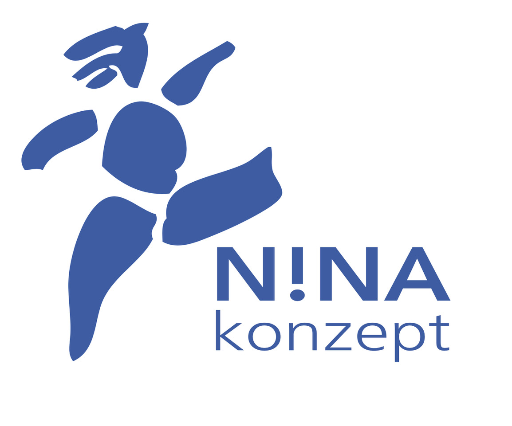

<!DOCTYPE html>
<html lang="de">
<head>
  <meta charset="UTF-8">
  <meta name="viewport" content="width=device-width, initial-scale=1.0">

  <title>N!NA Dramera v2.2 Stand-alone – Werkbank für Dramaturg:innen (NINA-Exchange v3.0)</title>
  <link rel="icon" type="image/svg+xml" href="data:image/svg+xml,%3Csvg viewBox='0 0 100 100' xmlns='http://www.w3.org/2000/svg'%3E%3Crect width='100' height='100' fill='%231e3a5f' rx='12'/%3E%3Ctext x='50' y='65' text-anchor='middle' font-family='Arial Black' font-size='40' font-weight='bold' fill='white'%3EN!%3C/text%3E%3C/svg%3E">
  <script src="https://unpkg.com/react@18/umd/react.production.min.js" crossorigin></script>
  <script src="https://unpkg.com/react-dom@18/umd/react-dom.production.min.js" crossorigin></script>
  <script src="https://unpkg.com/@babel/standalone/babel.min.js"></script>
  <script src="https://cdnjs.cloudflare.com/ajax/libs/mammoth/1.6.0/mammoth.browser.min.js"></script>
  <script src="https://cdnjs.cloudflare.com/ajax/libs/pdf.js/3.11.174/pdf.min.js"></script>
  <script>pdfjsLib.GlobalWorkerOptions.workerSrc = 'https://cdnjs.cloudflare.com/ajax/libs/pdf.js/3.11.174/pdf.worker.min.js';</script>
  <!-- GIS wird lazy geladen bei Bedarf (vermeidet "message port closed" Fehler) -->
  <!-- Supabase entfernt für Stand-alone Version -->
  <script src="https://unpkg.com/docx@8.5.0/build/index.umd.js"></script>
  <script src="https://cdnjs.cloudflare.com/ajax/libs/jszip/3.10.1/jszip.min.js"></script>

  <!-- Quill Rich Text Editor -->
  <link rel="stylesheet" href="https://cdn.quilljs.com/1.3.7/quill.snow.css">
  <script src="https://cdn.quilljs.com/1.3.7/quill.min.js"></script>

  <script>
  (function() {
    var Block = Quill.import('blots/block');
    var Inline = Quill.import('blots/inline');

    // camelCase-Keys (SCHREIBTISCH_FORMATVORLAGEN) → CSS-Suffix
    var KEY_TO_CSS = {
      standard: 'standard', figurenname: 'figurenname', dialog: 'dialog',
      regieanweisung: 'regieanweisung', szeneTitel: 'szene-titel', aktTitel: 'akt-titel',
      vers: 'vers', lied: 'lied', pause: 'pause', musik: 'musik', sound: 'sound',
      notiz: 'notiz', nebentext: 'nebentext'
    };
    var CSS_TO_KEY = {};
    Object.keys(KEY_TO_CSS).forEach(function(k) { CSS_TO_KEY[KEY_TO_CSS[k]] = k; });

    // TheaterBlock: Block-Blot mit format-* Klassen
    function TheaterBlock() { Block.apply(this, arguments); }
    TheaterBlock.__proto__ = Block;
    TheaterBlock.prototype = Object.create(Block.prototype);
    TheaterBlock.prototype.constructor = TheaterBlock;

    TheaterBlock.create = function(value) {
      var node = Block.create.call(this);
      var css = KEY_TO_CSS[value] || value || 'standard';
      node.setAttribute('class', 'format-' + css);
      return node;
    };
    TheaterBlock.formats = function(domNode) {
      var cls = domNode.getAttribute('class') || '';
      var m = cls.match(/format-([a-z-]+)/);
      if (m) return CSS_TO_KEY[m[1]] || m[1];
      return 'standard';
    };
    TheaterBlock.prototype.format = function(name, value) {
      if (name === 'theaterBlock') {
        var css = KEY_TO_CSS[value] || value || 'standard';
        this.domNode.setAttribute('class', 'format-' + css);
      } else {
        Block.prototype.format.call(this, name, value);
      }
    };
    TheaterBlock.blotName = 'theaterBlock';
    TheaterBlock.tagName = 'P';
    Quill.register(TheaterBlock, true);

    // Inline-Blots für Dialog-Struktur
    function FigurNameBlot() { Inline.apply(this, arguments); }
    FigurNameBlot.__proto__ = Inline;
    FigurNameBlot.prototype = Object.create(Inline.prototype);
    FigurNameBlot.blotName = 'figurName';
    FigurNameBlot.tagName = 'SPAN';
    FigurNameBlot.className = 'figur-name';
    Quill.register(FigurNameBlot);

    function DialogTextBlot() { Inline.apply(this, arguments); }
    DialogTextBlot.__proto__ = Inline;
    DialogTextBlot.prototype = Object.create(Inline.prototype);
    DialogTextBlot.blotName = 'dialogText';
    DialogTextBlot.tagName = 'SPAN';
    DialogTextBlot.className = 'dialog-text';
    Quill.register(DialogTextBlot);

    function InlineRegieBlot() { Inline.apply(this, arguments); }
    InlineRegieBlot.__proto__ = Inline;
    InlineRegieBlot.prototype = Object.create(Inline.prototype);
    InlineRegieBlot.blotName = 'inlineRegie';
    InlineRegieBlot.tagName = 'SPAN';
    InlineRegieBlot.className = 'inline-regie';
    Quill.register(InlineRegieBlot);

    // Font als Inline-Style (nicht CSS-Klasse) registrieren
    var FontStyle = Quill.import('attributors/style/font');
    Quill.register(FontStyle, true);

    // Hilfsfunktion: Block-Format setzen
    function setBlockFormat(quill, formatKey) {
      var range = quill.getSelection();
      if (range) {
        quill.formatLine(range.index, range.length || 1, 'theaterBlock', formatKey, 'user');
      }
      return false;
    }

    // === LEADER-KEY SYSTEM für Formatvorlagen ===
    // Esc → Buchstabe innerhalb 1.5s
    // Globaler State (geteilt zwischen Schreibtisch + Ordnen)
    window.__copiedFormat = null;
    window.__leaderActive = false;
    window.__leaderTimer = null;
    window.__leaderContext = null; // gespeicherter Editor-Kontext bei Esc

    // Leader-Key Zuordnungen (Buchstabe → Quill-Formatname)
    var LEADER_QUILL_MAP = {
      'f': 'figurenname', 'd': 'dialog', 'r': 'regieanweisung',
      't': 'szeneTitel', 'a': 'aktTitel', 'l': 'lied',
      'v': 'vers', 'p': 'pause', 'n': 'standard'
    };

    // Formatvorlagen-Namen für Toast
    var FORMAT_NAMEN = {
      figurenname: 'Figurenname', dialog: 'Dialog', regieanweisung: 'Regieanweisung',
      szeneTitel: 'Szenen-Titel', aktTitel: 'Akt-Titel', lied: 'Lied',
      vers: 'Vers', pause: 'Pause', standard: 'Standard'
    };

    // Toast-Meldung (app-weit)
    window.__showFormatToast = function(text) {
      var existing = document.getElementById('format-toast');
      if (existing) existing.remove();
      var toast = document.createElement('div');
      toast.id = 'format-toast';
      toast.textContent = text;
      toast.style.cssText = 'position:fixed;bottom:80px;right:16px;background:rgba(30,30,30,0.92);color:#d1d5db;padding:8px 16px;border-radius:8px;font-size:12px;z-index:10000;box-shadow:0 4px 12px rgba(0,0,0,0.3);pointer-events:none;transition:opacity 0.3s;';
      document.body.appendChild(toast);
      setTimeout(function() { toast.style.opacity = '0'; }, 1500);
      setTimeout(function() { toast.remove(); }, 1800);
    };

    // Leader-Popup anzeigen/verstecken
    window.__showLeaderPopup = function() {
      var existing = document.getElementById('leader-popup');
      if (existing) existing.remove();
      var popup = document.createElement('div');
      popup.id = 'leader-popup';
      popup.innerHTML = '<div style="font-size:10px;text-transform:uppercase;letter-spacing:0.1em;color:#9ca3af;margin-bottom:4px;">Format wählen…</div>'
        + '<div style="display:grid;grid-template-columns:1fr 1fr;gap:1px 12px;">'
        + '<span><b>F</b> Figurenname</span><span><b>D</b> Dialog</span>'
        + '<span><b>R</b> Regieanweisung</span><span><b>T</b> Szenen-Titel</span>'
        + '<span><b>A</b> Akt-Titel</span><span><b>L</b> Lied</span>'
        + '<span><b>V</b> Versmaß</span><span><b>P</b> Pause</span>'
        + '<span><b>N</b> Standard</span><span style="color:#9ca3af;">───</span>'
        + '<span><b>K</b> Kopieren</span><span><b>E</b> Einfügen</span>'
        + '</div>';
      popup.style.cssText = 'position:fixed;bottom:80px;right:16px;background:rgba(20,20,20,0.95);color:#e5e7eb;padding:10px 14px;border-radius:8px;font-size:11px;font-family:-apple-system,BlinkMacSystemFont,Segoe UI,sans-serif;z-index:10001;box-shadow:0 4px 20px rgba(0,0,0,0.4);border:1px solid rgba(255,255,255,0.15);pointer-events:none;';
      document.body.appendChild(popup);
    };

    window.__hideLeaderPopup = function() {
      var p = document.getElementById('leader-popup');
      if (p) p.remove();
    };

    window.__cancelLeader = function() {
      window.__leaderActive = false;
      window.__leaderContext = null;
      if (window.__leaderTimer) { clearTimeout(window.__leaderTimer); window.__leaderTimer = null; }
      window.__hideLeaderPopup();
    };

    window.__startLeader = function(ctx) {
      window.__cancelLeader();
      window.__leaderActive = true;
      window.__leaderContext = ctx || null;
      window.__showLeaderPopup();
      window.__leaderTimer = setTimeout(function() {
        window.__cancelLeader();
      }, 1500);
    };

    // === GLOBALER LEADER-KEY HANDLER (capture phase) ===
    document.addEventListener('keydown', function(e) {
      var activeEl = document.activeElement;

      // Check if we're in any kind of editor
      var inQuill = activeEl && activeEl.closest && activeEl.closest('.ql-editor');
      var inOrdnen = activeEl && activeEl.isContentEditable && !inQuill;
      var inEditor = !!(inQuill || inOrdnen);

      // Find Quill instance if in Quill editor
      var quillInstance = null;
      if (inQuill) {
        var qc = inQuill.parentNode;
        if (qc && qc.__quill) quillInstance = qc.__quill;
        else if (inQuill.__quill) quillInstance = inQuill.__quill;
      }

      // ESC key — start/cancel leader, save editor context
      if (e.key === 'Escape') {
        if (window.__leaderActive) {
          e.preventDefault();
          e.stopPropagation();
          window.__cancelLeader();
          return;
        }
        if (inEditor) {
          var modal = document.querySelector('.overlay, .modal.show, .sparring-dialog, .twin-modal');
          if (!modal) {
            e.preventDefault();
            e.stopPropagation();
            // Save editor context + selection so follow-up works in Chrome
            // (Chrome clears selection when Esc blurs contentEditable)
            var savedNode = null;
            var sel0 = window.getSelection();
            if (sel0 && sel0.rangeCount > 0) {
              savedNode = sel0.anchorNode;
              while (savedNode && savedNode !== activeEl && savedNode.parentNode !== activeEl) savedNode = savedNode.parentNode;
            }
            window.__startLeader({
              inQuill: !!inQuill,
              inOrdnen: !!inOrdnen,
              quillInstance: quillInstance,
              activeEl: activeEl,
              savedNode: savedNode
            });
            return;
          }
        }
        return;
      }

      // Follow-up key when leader active — use SAVED context from Esc press
      if (window.__leaderActive) {
        e.preventDefault();
        e.stopPropagation();
        var lkey = e.key.toLowerCase();
        var ctx = window.__leaderContext || {};
        var ctxInQuill = ctx.inQuill;
        var ctxInOrdnen = ctx.inOrdnen;
        var ctxQuill = ctx.quillInstance;
        var ctxActiveEl = ctx.activeEl;
        var ctxNode = ctx.savedNode;
        window.__cancelLeader();

        // Format keys
        if (lkey in LEADER_QUILL_MAP) {
          if (ctxInQuill && ctxQuill) {
            setBlockFormat(ctxQuill, LEADER_QUILL_MAP[lkey]);
          } else if (ctxInOrdnen && ctxNode && ctxNode.classList) {
            // Ordnen mode: use saved node (Chrome clears selection on Esc blur)
            var ordnenMap = {
              'f': 'fmt-figurenname', 'd': 'fmt-dialog', 'r': 'fmt-regie',
              't': 'fmt-szenen-titel', 'a': 'fmt-akt-titel', 'l': 'fmt-lied',
              'v': 'fmt-vers', 'p': 'fmt-pause', 'n': null
            };
            Array.from(ctxNode.classList).filter(function(c) { return c.startsWith('fmt-'); }).forEach(function(c) { ctxNode.classList.remove(c); });
            if (ordnenMap[lkey]) ctxNode.classList.add(ordnenMap[lkey]);
          }
          window.__showFormatToast(FORMAT_NAMEN[LEADER_QUILL_MAP[lkey]] || lkey);
          return;
        }

        // K = copy format
        if (lkey === 'k') {
          if (ctxInQuill && ctxQuill && ctxQuill.getFormatAtCursor) {
            var fmt = ctxQuill.getFormatAtCursor();
            window.__copiedFormat = { type: 'quill', format: fmt || 'standard' };
            window.__showFormatToast('Format kopiert: ' + (FORMAT_NAMEN[fmt] || fmt || 'Standard'));
          } else if (ctxInOrdnen && ctxNode && ctxNode.classList) {
            var cls = Array.from(ctxNode.classList).find(function(c) { return c.startsWith('fmt-'); });
            window.__copiedFormat = { type: 'ordnen', format: cls || null };
            window.__showFormatToast('Format kopiert: ' + (cls ? cls.replace('fmt-', '') : 'Standard'));
          }
          return;
        }

        // E = paste format
        if (lkey === 'e') {
          if (!window.__copiedFormat) { window.__showFormatToast('Kein Format kopiert'); return; }
          if (ctxInQuill && ctxQuill) {
            var fmt = window.__copiedFormat.format;
            if (window.__copiedFormat.type === 'ordnen') {
              var convertMap = { 'fmt-dialog': 'dialog', 'fmt-regie': 'regieanweisung', 'fmt-szenen-titel': 'szeneTitel', 'fmt-akt-titel': 'aktTitel', 'fmt-lied': 'lied', 'fmt-vers': 'vers', 'fmt-pause': 'pause', 'fmt-figurenname': 'figurenname' };
              fmt = convertMap[fmt] || 'standard';
            }
            setBlockFormat(ctxQuill, fmt);
          } else if (ctxInOrdnen && ctxNode && ctxNode.classList) {
            var cls = window.__copiedFormat.format;
            if (window.__copiedFormat.type === 'quill') {
              var convertMap2 = { dialog: 'fmt-dialog', regieanweisung: 'fmt-regie', szeneTitel: 'fmt-szenen-titel', aktTitel: 'fmt-akt-titel', lied: 'fmt-lied', vers: 'fmt-vers', pause: 'fmt-pause', figurenname: 'fmt-figurenname' };
              cls = convertMap2[cls] || null;
            }
            Array.from(ctxNode.classList).filter(function(c) { return c.startsWith('fmt-'); }).forEach(function(c) { ctxNode.classList.remove(c); });
            if (cls) ctxNode.classList.add(cls);
          }
          window.__showFormatToast('Format angewendet');
          return;
        }
        return;
      }
    }, true);  // CAPTURE phase!

    // Keine Quill-Bindings für Formatvorlagen mehr — alles über Leader-Key
    var formatBindings = {};

    // Inline-Regie: Klammertexte in Dialog-Absätzen automatisch formatieren
    // Arbeitet über Quills Text-API (kein DOM-Hack), debounced
    function applyInlineRegie(quill) {
      var text = quill.getText();
      var len = text.length;
      // Erst alle bestehenden inlineRegie-Formate entfernen
      quill.formatText(0, len, 'inlineRegie', false, 'silent');
      // Dann alle Klammertexte (2+ Zeichen) in Dialog-Absätzen formatieren
      var regex = /\([^)]{2,}\)/g;
      var match;
      while ((match = regex.exec(text)) !== null) {
        var fmt = quill.getFormat(match.index);
        if (fmt.theaterBlock === 'dialog' || fmt.theaterBlock === 'figurenname') {
          quill.formatText(match.index, match[0].length, 'inlineRegie', true, 'silent');
        }
      }
    }

    // Factory-Funktion für Theater-Editor-Instanzen
    window.createTheaterEditor = function(element, options) {
      options = options || {};

      var editorDiv = document.createElement('div');
      element.appendChild(editorDiv);

      var quill = new Quill(editorDiv, {
        theme: null,
        modules: {
          toolbar: false,
          keyboard: { bindings: formatBindings },
          history: { delay: 1000, maxStack: 100, userOnly: true }
        },
        formats: [
          'theaterBlock', 'bold', 'italic', 'underline', 'strike',
          'figurName', 'dialogText', 'inlineRegie', 'font'
        ]
      });

      // Initialen Inhalt setzen (über Quills Clipboard-API für korrektes Delta-Model)
      if (options.content) {
        var initDelta = quill.clipboard.convert(options.content);
        quill.setContents(initDelta, 'silent');
      }

      // Inline-Regie Timer
      var _inlineRegieTimer = null;
      function scheduleInlineRegie() {
        clearTimeout(_inlineRegieTimer);
        _inlineRegieTimer = setTimeout(function() { applyInlineRegie(quill); }, 800);
      }

      // Callbacks
      if (options.onUpdate) {
        quill.on('text-change', function(delta, oldDelta, source) {
          if (source === 'user') {
            options.onUpdate({ editor: quill });
            scheduleInlineRegie();
          }
        });
      }
      if (options.onSelectionUpdate) {
        quill.on('selection-change', function(range) {
          if (range) options.onSelectionUpdate({ editor: quill, range: range });
        });
      }
      if (options.onFocus) {
        quill.root.addEventListener('focus', options.onFocus);
      }

      // API-Kompatibilitäts-Methoden
      quill.getHTML = function() { return quill.root.innerHTML; };
      quill.setHTML = function(html) {
        var delta = quill.clipboard.convert(html);
        quill.setContents(delta, 'silent');
      };
      quill.setFormatType = function(key) { setBlockFormat(quill, key); };
      quill.getFormatAtCursor = function() {
        var r = quill.getSelection();
        if (!r) return 'standard';
        var f = quill.getFormat(r.index);
        return f.theaterBlock || 'standard';
      };
      quill._syncTimer = null;
      quill._inlineRegieTimer = _inlineRegieTimer;

      // Speichere Quill-Instanz auf dem Container und Editor-Element für Leader-Key-Handler
      editorDiv.__quill = quill;
      quill.root.__quill = quill;

      // Initial inline-regie nach kurzer Verzögerung anwenden
      setTimeout(function() { applyInlineRegie(quill); }, 100);

      return quill;
    };

    // Synchrones Laden — Flag sofort verfügbar
    window.__quillLoaded = true;
  })();
  </script>

  <style>
    * { box-sizing: border-box; }
    body { margin: 0; padding: 0; font-family: -apple-system, BlinkMacSystemFont, 'Segoe UI', Roboto, sans-serif; }
    #root { min-height: 100vh; }
  </style>
  <!-- ============================================ -->
  <!-- GOOGLE DRIVE MODULE (wiederverwendbar)       -->
  <!-- ============================================ -->
  <script>
    const GDRIVE_CLIENT_ID = '442649097645-159rgo1mpu0ptdkiq8up8tdc8dl5mvo2.apps.googleusercontent.com';
    const GDRIVE_SCOPE = 'https://www.googleapis.com/auth/drive.file https://www.googleapis.com/auth/userinfo.email';
    const GDRIVE_API = 'https://www.googleapis.com/drive/v3';
    const GDRIVE_UPLOAD_API = 'https://www.googleapis.com/upload/drive/v3';
    
    let gdriveToken = null;
    let gdriveUser = null;
    let gdriveFolderId = localStorage.getItem('nina_gdrive_folder_id') || null;
    let gdriveFolderName = localStorage.getItem('nina_gdrive_folder_name') || null;
    let gdriveTokenClient = null;
    let gdriveSaving = false;
    let gdriveOnConnected = null;
    let gdriveRenderCallback = null;
    
    let _gdriveScriptLoading = false;
    function _loadGisScript() {
      return new Promise((resolve, reject) => {
        if (window.google?.accounts?.oauth2) { resolve(); return; }
        if (_gdriveScriptLoading) {
          // Warten bis das Script geladen ist
          const check = setInterval(() => {
            if (window.google?.accounts?.oauth2) { clearInterval(check); resolve(); }
          }, 100);
          setTimeout(() => { clearInterval(check); reject(new Error('GIS Timeout')); }, 15000);
          return;
        }
        _gdriveScriptLoading = true;
        const s = document.createElement('script');
        s.src = 'https://accounts.google.com/gsi/client';
        s.onload = () => {
          // GIS braucht einen Moment nach dem Laden
          const check = setInterval(() => {
            if (window.google?.accounts?.oauth2) { clearInterval(check); resolve(); }
          }, 50);
          setTimeout(() => { clearInterval(check); reject(new Error('GIS init Timeout')); }, 5000);
        };
        s.onerror = () => { _gdriveScriptLoading = false; reject(new Error('GIS Script Ladefehler')); };
        document.head.appendChild(s);
      });
    }
    function gdriveInitAuth() {
      if (!window.google?.accounts?.oauth2) { console.warn('GIS not loaded'); return false; }
      gdriveTokenClient = google.accounts.oauth2.initTokenClient({
        client_id: GDRIVE_CLIENT_ID, scope: GDRIVE_SCOPE,
        callback: (response) => {
          if (response.error) { alert('❌ Google-Anmeldung fehlgeschlagen: ' + (response.error_description || response.error)); return; }
          gdriveToken = response.access_token;
          fetch('https://www.googleapis.com/oauth2/v3/userinfo', { headers: { 'Authorization': 'Bearer ' + gdriveToken } })
            .then(r => r.ok ? r.json() : Promise.reject()).then(info => {
              gdriveUser = { name: info.name || '', email: info.email || '', picture: info.picture || '' };
              localStorage.setItem('nina_gdrive_user', JSON.stringify(gdriveUser));
              if (gdriveRenderCallback) gdriveRenderCallback();
            }).catch(() => { gdriveUser = { name: '', email: 'Verbunden', picture: '' }; });
          if (gdriveRenderCallback) gdriveRenderCallback();
          if (gdriveOnConnected) { gdriveOnConnected(); gdriveOnConnected = null; }
        }
      });
      try { const cached = localStorage.getItem('nina_gdrive_user'); if (cached) gdriveUser = JSON.parse(cached); } catch(e) {}
      return true;
    }
    function gdriveSignIn() {
      if (!gdriveTokenClient) {
        if (window.google?.accounts?.oauth2) {
          if (!gdriveInitAuth()) { alert('⏳ Google-Dienst wird noch geladen.'); return; }
        } else {
          // GIS lazy laden
          _loadGisScript().then(() => {
            gdriveInitAuth();
            gdriveTokenClient.requestAccessToken();
          }).catch(err => alert('❌ Google-Dienst konnte nicht geladen werden: ' + err.message));
          return;
        }
      }
      gdriveTokenClient.requestAccessToken();
    }
    function gdriveSignOut() { if (gdriveToken) google.accounts.oauth2.revoke(gdriveToken); gdriveToken = null; gdriveUser = null; localStorage.removeItem('nina_gdrive_user'); if (gdriveRenderCallback) gdriveRenderCallback(); }
    function gdriveIsConnected() { return !!gdriveToken; }
    
    async function gdriveFetch(url, options = {}) {
      if (!gdriveToken) throw new Error('Nicht angemeldet');
      const resp = await fetch(url, { ...options, headers: { 'Authorization': 'Bearer ' + gdriveToken, ...(options.headers || {}) } });
      if (resp.status === 401) { gdriveToken = null; gdriveUser = null; localStorage.removeItem('nina_gdrive_user'); throw new Error('Sitzung abgelaufen'); }
      if (!resp.ok) { throw new Error('Drive-Fehler: ' + resp.status); }
      return resp;
    }
    async function gdriveCreateFolder(name, parentId) {
      const metadata = { name, mimeType: 'application/vnd.google-apps.folder', ...(parentId ? { parents: [parentId] } : {}) };
      const resp = await gdriveFetch(GDRIVE_API + '/files', { method: 'POST', headers: { 'Content-Type': 'application/json' }, body: JSON.stringify(metadata) });
      return await resp.json();
    }
    async function gdriveListFolders() {
      try { const q = "mimeType='application/vnd.google-apps.folder' and trashed=false"; const resp = await gdriveFetch(GDRIVE_API + `/files?q=${encodeURIComponent(q)}&fields=files(id,name,modifiedTime)&orderBy=modifiedTime desc&pageSize=20`); return (await resp.json()).files || []; }
      catch(e) { return []; }
    }
    async function gdriveSetFolder(id, name) { gdriveFolderId = id; gdriveFolderName = name; localStorage.setItem('nina_gdrive_folder_id', id); localStorage.setItem('nina_gdrive_folder_name', name); if (gdriveRenderCallback) gdriveRenderCallback(); }
    async function gdriveSaveFile(fileName, jsonData, folderId) {
      const targetFolder = folderId || gdriveFolderId;
      if (!targetFolder) throw new Error('Kein Ordner ausgewählt');
      const content = JSON.stringify(jsonData, null, 2);
      const blob = new Blob([content], { type: 'application/json' });
      const metadata = { name: fileName, parents: [targetFolder] };
      const form = new FormData(); form.append('metadata', new Blob([JSON.stringify(metadata)], { type: 'application/json' })); form.append('file', blob);
      const resp = await fetch(GDRIVE_UPLOAD_API + '/files?uploadType=multipart', { method: 'POST', headers: { 'Authorization': 'Bearer ' + gdriveToken }, body: form });
      if (!resp.ok) throw new Error('Upload fehlgeschlagen: ' + resp.status);
      return await resp.json();
    }
    async function gdriveListFiles(folderId) {
      const targetFolder = folderId || gdriveFolderId; if (!targetFolder) return [];
      const q = `'${targetFolder}' in parents and trashed=false and mimeType='application/json'`;
      const resp = await gdriveFetch(GDRIVE_API + `/files?q=${encodeURIComponent(q)}&fields=files(id,name,modifiedTime,size)&orderBy=modifiedTime desc`);
      return (await resp.json()).files || [];
    }
    async function gdriveLoadFile(fileId) { const resp = await gdriveFetch(GDRIVE_API + `/files/${fileId}?alt=media`); return await resp.json(); }
    
    function gdriveShowFolderPicker() {
      if (!gdriveIsConnected()) { gdriveOnConnected = () => gdriveShowFolderPicker(); gdriveSignIn(); return; }
      const modal = document.createElement('div');
      modal.id = 'gdriveFolderPickerModal';
      modal.style.cssText = 'position:fixed;top:0;left:0;width:100%;height:100%;background:rgba(0,0,0,0.5);z-index:10000;display:flex;align-items:center;justify-content:center;';
      modal.innerHTML = '<div style="background:white;border-radius:12px;padding:24px;max-width:450px;width:90%;max-height:80vh;overflow-y:auto;" onclick="event.stopPropagation()"><h3 style="font-size:16px;font-weight:600;margin-bottom:16px;">📁 Google Drive – Ordner wählen</h3><div id="gdriveFolderList"><p style="color:#666;font-size:14px;">⏳ Ordner werden geladen...</p></div><div style="border-top:1px solid #e5e7eb;padding-top:12px;margin-top:12px;"><p style="font-size:12px;color:#666;margin-bottom:8px;">Neuen Ordner erstellen:</p><div style="display:flex;gap:8px;"><input type="text" id="gdriveNewFolderName" placeholder="z.B. Der Sturm" style="flex:1;padding:6px 10px;border:1px solid #d1d5db;border-radius:6px;font-size:13px;"><button onclick="gdriveCreateNewFolder()" style="padding:6px 14px;background:#1e3a5f;color:white;border:none;border-radius:6px;font-size:13px;cursor:pointer;">Erstellen</button></div></div><div style="text-align:right;margin-top:16px;"><button onclick="document.getElementById(\'gdriveFolderPickerModal\').remove()" style="padding:6px 16px;background:#f3f4f6;border:1px solid #d1d5db;border-radius:6px;font-size:13px;cursor:pointer;">Schliessen</button></div></div>';
      document.body.appendChild(modal);
      modal.onclick = () => modal.remove();
      gdriveLoadFolderList();
    }
    async function gdriveLoadFolderList() {
      const container = document.getElementById('gdriveFolderList'); if (!container) return;
      try {
        const folders = await gdriveListFolders();
        if (folders.length === 0) { container.innerHTML = '<p style="color:#666;font-size:14px;">Keine Ordner gefunden. Erstelle einen neuen.</p>'; return; }
        container.innerHTML = folders.map(f => `<div onclick="gdrivePickFolder('${f.id}', '${(f.name||'').replace(/'/g,'\\\'')}')" style="padding:10px 12px;border:1px solid #e5e7eb;border-radius:8px;margin-bottom:6px;cursor:pointer;display:flex;align-items:center;gap:10px;" onmouseover="this.style.background='#f0f4ff'" onmouseout="this.style.background='white'"><span>📁</span><span style="flex:1;font-size:14px;">${f.name}</span>${f.id === gdriveFolderId ? '<span style="color:#1e3a5f;font-size:12px;">✓ aktuell</span>' : ''}</div>`).join('');
      } catch(e) { container.innerHTML = '<p style="color:#ef4444;">Fehler: ' + e.message + '</p>'; }
    }
    function gdrivePickFolder(id, name) { gdriveSetFolder(id, name); const m = document.getElementById('gdriveFolderPickerModal'); if (m) m.remove(); }
    async function gdriveCreateNewFolder() {
      const input = document.getElementById('gdriveNewFolderName'); const name = input?.value?.trim(); if (!name) return alert('Bitte einen Namen eingeben.');
      try { const folder = await gdriveCreateFolder(name); gdriveSetFolder(folder.id, name); const m = document.getElementById('gdriveFolderPickerModal'); if (m) m.remove(); alert('✅ Ordner "' + name + '" erstellt!'); }
      catch(e) { alert('❌ Fehler: ' + e.message); }
    }
    // GIS wird lazy geladen beim ersten gdriveSignIn() – kein eageres Laden mehr
    // (vermeidet "The message port closed before a response was received" Fehler)
    try { const cached = localStorage.getItem('nina_gdrive_user'); if (cached) gdriveUser = JSON.parse(cached); } catch(e) {}

    // === AUTO BACKUP: Find or create folder by name under a parent ===
    async function gdriveFindOrCreateFolder(name, parentId) {
      const parentClause = parentId ? `'${parentId}' in parents` : `'root' in parents`;
      const query = `name='${name}' and ${parentClause} and mimeType='application/vnd.google-apps.folder' and trashed=false`;
      const res = await gdriveFetch(GDRIVE_API + `/files?q=${encodeURIComponent(query)}&fields=files(id,name)`);
      const data = await res.json();
      if (data.files && data.files.length > 0) return data.files[0].id;
      // Create folder
      const metadata = { name, mimeType: 'application/vnd.google-apps.folder' };
      if (parentId) metadata.parents = [parentId];
      const createRes = await gdriveFetch(GDRIVE_API + '/files', {
        method: 'POST',
        headers: { 'Content-Type': 'application/json' },
        body: JSON.stringify(metadata)
      });
      const created = await createRes.json();
      return created.id;
    }

    let _lastGdriveAutoBackupHash = '';
    async function gdriveAutoBackup(projectData) {
      if (!gdriveToken) return { success: false, error: 'Nicht angemeldet' };
      try {
        // Create folder structure: Dramera/Backups/ProjectName/
        const drameraFolderId = await gdriveFindOrCreateFolder('Dramera', null);
        const backupsFolderId = await gdriveFindOrCreateFolder('Backups', drameraFolderId);
        const projectName = (projectData.data?.projektName || 'Projekt').replace(/[^a-zA-Z0-9äöüÄÖÜß_\- ]/g, '');
        const projectFolderId = await gdriveFindOrCreateFolder(projectName, backupsFolderId);

        // Upload backup
        const now = new Date();
        const timestamp = now.toISOString().replace(/T/, '_').replace(/:/g, '-').slice(0, 16);
        const fileName = `Dramera_${projectName}_${timestamp}.dramera.json`;
        const jsonStr = JSON.stringify(projectData, null, 2);

        // Multipart upload
        const blob = new Blob([jsonStr], { type: 'application/json' });
        const metadata = { name: fileName, parents: [projectFolderId] };
        const form = new FormData();
        form.append('metadata', new Blob([JSON.stringify(metadata)], { type: 'application/json' }));
        form.append('file', blob);
        await fetch(GDRIVE_UPLOAD_API + '/files?uploadType=multipart', {
          method: 'POST',
          headers: { 'Authorization': 'Bearer ' + gdriveToken },
          body: form
        });

        // Cleanup: keep only last 20 backups
        const listQ = `'${projectFolderId}' in parents and trashed=false`;
        const listRes = await gdriveFetch(GDRIVE_API + `/files?q=${encodeURIComponent(listQ)}&orderBy=createdTime&fields=files(id,name,createdTime)&pageSize=100`);
        const listData = await listRes.json();
        if (listData.files && listData.files.length > 20) {
          const toDelete = listData.files.slice(0, listData.files.length - 20);
          for (const file of toDelete) {
            try {
              await fetch(GDRIVE_API + '/files/' + file.id, {
                method: 'DELETE',
                headers: { 'Authorization': 'Bearer ' + gdriveToken }
              });
            } catch(delErr) { console.warn('Backup-Löschung fehlgeschlagen:', delErr); }
          }
        }

        console.log('GDrive auto-backup completed:', fileName);
        return { success: true, fileName, time: now };
      } catch (err) {
        console.error('GDrive auto-backup failed:', err);
        return { success: false, error: err };
      }
    }
  </script>
</head>
<body>
  <div id="root"></div>
  <script type="text/babel">
    const { useState, useEffect, useRef, useMemo, useCallback, Component } = React;

// =====================================================
// AUTO-RESIZE TEXTAREAS (global)
// =====================================================
function autoResizeTextarea(el) {
  if (!el || el.tagName !== 'TEXTAREA') return;
  el.style.height = 'auto';
  el.style.height = el.scrollHeight + 'px';
}

function initAutoResizeTextareas() {
  // Alle Textareas mit der Klasse versehen und initial anpassen
  function processTextareas(root) {
    const textareas = (root || document).querySelectorAll('textarea:not(.no-auto-resize)');
    // Schreibfläche-Textareas ausschließen (contentEditable, nicht textarea)
    const filtered = Array.from(textareas).filter(ta => !ta.closest('.schreibflaeche'));
    filtered.forEach(ta => {
      if (!ta.classList.contains('auto-resize')) {
        ta.classList.add('auto-resize');
        autoResizeTextarea(ta);
      }
    });
  }

  // Event-Delegation: input-Events auf allen Textareas abfangen
  document.addEventListener('input', (e) => {
    if (e.target.tagName === 'TEXTAREA' && e.target.classList.contains('auto-resize')) {
      autoResizeTextarea(e.target);
    }
  }, true);

  // MutationObserver: Bei React-Re-Renders neue Textareas finden und bestehende anpassen
  const observer = new MutationObserver((mutations) => {
    let shouldProcess = false;
    for (const m of mutations) {
      if (m.addedNodes.length > 0 || m.type === 'characterData') {
        shouldProcess = true;
        break;
      }
    }
    if (shouldProcess) {
      requestAnimationFrame(() => processTextareas());
    }
  });

  observer.observe(document.body, { childList: true, subtree: true });

  // Initial
  processTextareas();

  // Auch bei Value-Änderungen durch React (controlled inputs)
  // React setzt value programmatisch, was kein input-Event auslöst
  const origSet = Object.getOwnPropertyDescriptor(HTMLTextAreaElement.prototype, 'value')?.set;
  if (origSet) {
    Object.defineProperty(HTMLTextAreaElement.prototype, 'value', {
      set: function(val) {
        origSet.call(this, val);
        if (this.classList.contains('auto-resize')) {
          requestAnimationFrame(() => autoResizeTextarea(this));
        }
      },
      get: Object.getOwnPropertyDescriptor(HTMLTextAreaElement.prototype, 'value').get,
      configurable: true
    });
  }
}

// Beim Laden starten
if (document.readyState === 'loading') {
  document.addEventListener('DOMContentLoaded', initAutoResizeTextareas);
} else {
  initAutoResizeTextareas();
}

// =====================================================
// SUPABASE CLOUD SYNC - DEAKTIVIERT (Stand-alone Version)
// =====================================================
const SUPABASE_URL = '';
const SUPABASE_ANON_KEY = '';

// Dummy-DB für Stand-alone Version
const db = { 
  from: () => ({ 
    select: () => ({ eq: () => ({ single: () => Promise.resolve({ data: null, error: null }), order: () => Promise.resolve({ data: [], error: null }) }), order: () => Promise.resolve({ data: [], error: null }) }),
    insert: () => Promise.resolve({ data: null, error: null }), 
    upsert: () => Promise.resolve({ data: null, error: null }), 
    update: () => ({ eq: () => Promise.resolve({ error: null }) }), 
    delete: () => ({ eq: () => Promise.resolve({ error: null }) })
  }), 
  auth: { 
    getSession: () => Promise.resolve({ data: { session: null } }),
    getUser: () => Promise.resolve({ data: { user: null }, error: null }), 
    signInWithPassword: () => Promise.resolve({ data: null, error: { message: 'Cloud deaktiviert in Stand-alone Version' } }), 
    signUp: () => Promise.resolve({ data: null, error: { message: 'Cloud deaktiviert' } }), 
    signOut: () => Promise.resolve({}) 
  } 
};

const supabaseAuth = {
  getSession: async () => null,
  signIn: async (email, password) => {
    throw new Error('Cloud deaktiviert in Stand-alone Version');
  },
  signUp: async (email, password) => {
    const { data, error } = await db.auth.signUp({ email, password });
    if (error) throw new Error(error.message);
    return data;
  },
  signOut: async () => {
    await db.auth.signOut();
  }
};

const supabaseFetch = async (table, method = 'GET', body = null, query = '') => {
  let queryBuilder = db.from(table);
  
  if (method === 'GET') {
    if (query.includes('user_id=eq.')) {
      const userId = query.match(/user_id=eq\.([^&]+)/)?.[1];
      if (userId) queryBuilder = queryBuilder.eq('user_id', userId);
    }
    const { data, error } = await queryBuilder.select('*');
    if (error) throw new Error(error.message);
    return data;
  } else if (method === 'POST') {
    const { data, error } = await queryBuilder.insert(body).select();
    if (error) throw new Error(error.message);
    return data;
  } else if (method === 'PATCH') {
    const idMatch = query.match(/id=eq\.([^&]+)/);
    if (idMatch) {
      const { data, error } = await queryBuilder.update(body).eq('id', idMatch[1]).select();
      if (error) throw new Error(error.message);
      return data;
    }
  } else if (method === 'DELETE') {
    const idMatch = query.match(/id=eq\.([^&]+)/);
    if (idMatch) {
      const { error } = await queryBuilder.delete().eq('id', idMatch[1]);
      if (error) throw new Error(error.message);
    }
    return null;
  }
};

// NINA Logo Base64
const NINA_LOGO = 'data:image/svg+xml,%3Csvg viewBox="0 0 100 100" xmlns="http://www.w3.org/2000/svg"%3E%3Crect width="100" height="100" fill="%231e3a5f" rx="12"/%3E%3Ctext x="50" y="65" text-anchor="middle" font-family="Arial Black" font-size="40" font-weight="bold" fill="white"%3EN!NA%3C/text%3E%3C/svg%3E';

// =====================================================
// DOMPurify - XSS-Schutz für HTML-Inhalte
// =====================================================
const createDOMPurify = () => {
  // Einfache Sanitize-Funktion als Fallback
  const sanitize = (dirty) => {
    if (!dirty) return '';
    // Entferne gefährliche Tags und Attribute
    const div = document.createElement('div');
    div.innerHTML = dirty;
    // Entferne script, iframe, object, embed, etc.
    const dangerous = div.querySelectorAll('script, iframe, object, embed, link, style, meta, base, form, input[type="hidden"]');
    dangerous.forEach(el => el.remove());
    // Entferne Event-Handler
    div.querySelectorAll('*').forEach(el => {
      Array.from(el.attributes).forEach(attr => {
        if (attr.name.startsWith('on') || attr.name === 'href' && attr.value.startsWith('javascript:')) {
          el.removeAttribute(attr.name);
        }
      });
    });
    return div.innerHTML;
  };
  return { sanitize };
};
const DOMPurify = createDOMPurify();

// =====================================================
// ERROR BOUNDARY - Fängt React-Fehler ab
// =====================================================
class ErrorBoundary extends Component {
  constructor(props) {
    super(props);
    this.state = { hasError: false, error: null };
  }

  static getDerivedStateFromError(error) {
    return { hasError: true, error };
  }

  componentDidCatch(error, errorInfo) {
    console.error('Dramera Error:', error, errorInfo);
  }

  render() {
    if (this.state.hasError) {
      return (
        <div style={{ 
          padding: '2rem', 
          textAlign: 'center', 
          background: '#fee2e2', 
          borderRadius: '8px',
          margin: '2rem',
          fontFamily: 'system-ui, sans-serif'
        }}>
          <h2 style={{ color: '#991b1b', marginBottom: '1rem' }}>⚠️ Ein Fehler ist aufgetreten</h2>
          <p style={{ color: '#7f1d1d', marginBottom: '1rem' }}>
            {this.state.error?.message || 'Unbekannter Fehler'}
          </p>
          <button 
            onClick={() => {
              this.setState({ hasError: false, error: null });
              window.location.reload();
            }}
            style={{
              padding: '0.5rem 1rem',
              background: '#991b1b',
              color: 'white',
              border: 'none',
              borderRadius: '4px',
              cursor: 'pointer'
            }}
          >
            App neu laden
          </button>
          <p style={{ color: '#7f1d1d', marginTop: '1rem', fontSize: '0.85rem' }}>
            Deine Daten wurden automatisch gespeichert.
          </p>
        </div>
      );
    }
    return this.props.children;
  }
}

// =====================================================
// SZENE-EDITOR KOMPONENTE (verhindert React-Konflikte)
// =====================================================
const SzeneEditor = React.memo(({ feldId, initialContent, onSave, onFocus, onFormatChange, editorRefsMap }) => {
  const editorRef = useRef(null);
  const autoSaveTimerRef = useRef(null);
  const historyRef = useRef([]); // Undo-History
  const historyIndexRef = useRef(-1);
  const isUndoRedoRef = useRef(false);
  const isMountedRef = useRef(true);
  
  // History speichern
  const saveToHistory = () => {
    if (isUndoRedoRef.current || !editorRef.current || !isMountedRef.current) return;
    
    try {
      const currentContent = editorRef.current.innerHTML;
      const history = historyRef.current;
      const currentIndex = historyIndexRef.current;
      
      // Wenn wir in der Mitte der History sind, alles danach löschen
      if (currentIndex < history.length - 1) {
        historyRef.current = history.slice(0, currentIndex + 1);
      }
      
      // Nicht speichern wenn identisch mit letztem Eintrag
      if (history.length > 0 && history[history.length - 1] === currentContent) return;
      
      // Hinzufügen (max 50 Einträge)
      historyRef.current.push(currentContent);
      if (historyRef.current.length > 50) {
        historyRef.current.shift();
      }
      historyIndexRef.current = historyRef.current.length - 1;
    } catch (e) {
      console.warn('saveToHistory error:', e);
    }
  };
  
  // Undo
  const undo = () => {
    if (!editorRef.current || historyIndexRef.current <= 0 || !isMountedRef.current) return;
    
    try {
      isUndoRedoRef.current = true;
      historyIndexRef.current--;
      editorRef.current.innerHTML = historyRef.current[historyIndexRef.current];
      onSave(feldId, editorRef.current.innerHTML);
      
      setTimeout(() => { isUndoRedoRef.current = false; }, 100);
    } catch (e) {
      console.warn('undo error:', e);
      isUndoRedoRef.current = false;
    }
  };
  
  // Redo
  const redo = () => {
    if (!editorRef.current || historyIndexRef.current >= historyRef.current.length - 1 || !isMountedRef.current) return;
    
    try {
      isUndoRedoRef.current = true;
      historyIndexRef.current++;
      editorRef.current.innerHTML = historyRef.current[historyIndexRef.current];
      onSave(feldId, editorRef.current.innerHTML);
      
      setTimeout(() => { isUndoRedoRef.current = false; }, 100);
    } catch (e) {
      console.warn('redo error:', e);
      isUndoRedoRef.current = false;
    }
  };
  
  // Inhalt nur einmal beim Mount setzen
  useEffect(() => {
    isMountedRef.current = true;
    
    if (editorRef.current) {
      try {
        // XSS-Schutz: Sanitize HTML vor dem Einfügen
        const safeContent = DOMPurify.sanitize(initialContent || '<div class="placeholder">Hier schreiben oder Text einfügen...</div>');
        editorRef.current.innerHTML = safeContent;
        // Initial-State in History speichern
        historyRef.current = [safeContent];
        historyIndexRef.current = 0;
        // Ref auch in der Map speichern für applyFormat
        if (editorRefsMap && editorRefsMap.current) {
          editorRefsMap.current[feldId] = editorRef.current;
        }
      } catch (e) {
        console.warn('SzeneEditor init error:', e);
      }
    }
    // Cleanup Timer und Refs bei Unmount
    return () => {
      isMountedRef.current = false;
      if (autoSaveTimerRef.current) {
        clearTimeout(autoSaveTimerRef.current);
      }
      // Ref aus Map entfernen
      if (editorRefsMap && editorRefsMap.current && editorRefsMap.current[feldId]) {
        delete editorRefsMap.current[feldId];
      }
    };
  }, [feldId]); // Nur bei Feld-Wechsel neu setzen
  
  const detectFormat = () => {
    const selection = window.getSelection();
    if (!selection || selection.rangeCount === 0) {
      onFormatChange(null);
      return;
    }
    
    let node = selection.anchorNode;
    while (node && node.nodeType === Node.TEXT_NODE) {
      node = node.parentNode;
    }
    
    while (node && node.classList) {
      const classes = Array.from(node.classList);
      const formatClass = classes.find(c => c.startsWith('fmt-'));
      if (formatClass) {
        onFormatChange(formatClass);
        return;
      }
      if (node.classList.contains('szene-editor')) break;
      node = node.parentNode;
    }
    onFormatChange(null);
  };
  
  const handleSave = () => {
    if (editorRef.current && isMountedRef.current) {
      try {
        onSave(feldId, editorRef.current.innerHTML);
      } catch (e) {
        console.warn('handleSave error:', e);
      }
    }
  };
  
  // Formatvorlage auf aktuellen Absatz anwenden (Ordnen-Modus)
  const applyFormatToCurrentLine = (fmtClass) => {
    const sel = window.getSelection();
    if (!sel || sel.rangeCount === 0 || !editorRef.current) return;
    let node = sel.anchorNode;
    while (node && node.parentNode !== editorRef.current) node = node.parentNode;
    if (!node || node === editorRef.current) return;
    if (node.nodeType === Node.TEXT_NODE) {
      const wrapper = document.createElement('div');
      node.parentNode.replaceChild(wrapper, node);
      wrapper.appendChild(node);
      node = wrapper;
    }
    const oldClasses = Array.from(node.classList || []).filter(c => c.startsWith('fmt-'));
    oldClasses.forEach(c => node.classList.remove(c));
    node.classList.add(fmtClass);
    saveToHistory();
    handleSave();
    onFormatChange(fmtClass);
  };

  const handleKeyDown = (e) => {
    // Undo: Cmd+Z (Mac) oder Ctrl+Z (Windows)
    if ((e.metaKey || e.ctrlKey) && e.key === 'z' && !e.shiftKey) {
      e.preventDefault();
      undo();
      return;
    }

    // Redo: Cmd+Shift+Z (Mac) oder Ctrl+Y (Windows)
    if ((e.metaKey || e.ctrlKey) && ((e.key === 'z' && e.shiftKey) || e.key === 'y')) {
      e.preventDefault();
      redo();
      return;
    }

    // Placeholder entfernen
    if (editorRef.current && editorRef.current.querySelector('.placeholder')) {
      editorRef.current.innerHTML = '';
    }

    // Enter-Taste
    if (e.key === 'Enter' && !e.shiftKey) {
      saveToHistory();
      setTimeout(() => {
        onFormatChange(null);
        saveToHistory();
      }, 10);
    }
  };
  
  // Paste-Handler: Text unformatiert einfügen, jede Zeile als Absatz
  const handlePaste = (e) => {
    e.preventDefault();
    
    // Plain Text aus Clipboard holen
    const text = e.clipboardData.getData('text/plain');
    if (!text) return;
    
    // History speichern vor Änderung
    saveToHistory();
    
    // Zeilen aufteilen
    const lines = text.split('\n');
    
    // HTML erstellen: jede Zeile als eigener div
    const html = lines.map(line => {
      if (line.trim() === '') {
        return '<div><br></div>';
      }
      // Text escapen für HTML
      const escaped = line
        .replace(/&/g, '&amp;')
        .replace(/</g, '&lt;')
        .replace(/>/g, '&gt;');
      return `<div>${escaped}</div>`;
    }).join('');
    
    // An Cursor-Position einfügen
    const selection = window.getSelection();
    if (!selection || selection.rangeCount === 0) return;
    
    const range = selection.getRangeAt(0);
    range.deleteContents();
    
    // Temporäres Element für HTML-Parsing
    const temp = document.createElement('div');
    temp.innerHTML = html;
    
    // Alle Kinder einfügen
    const fragment = document.createDocumentFragment();
    while (temp.firstChild) {
      fragment.appendChild(temp.firstChild);
    }
    
    range.insertNode(fragment);
    
    // Cursor ans Ende setzen
    selection.collapseToEnd();
    
    // Speichern
    setTimeout(() => {
      saveToHistory();
      handleSave();
    }, 100);
  };
  
  return (
    <div 
      className="szene-editor"
      contentEditable
      suppressContentEditableWarning
      ref={editorRef}
      onFocus={onFocus}
      onBlur={() => {
        if (isMountedRef.current) {
          saveToHistory();
          handleSave();
        }
      }}
      onInput={() => {
        if (!isMountedRef.current) return;
        // Verwende lokalen Ref statt globaler Variable
        if (autoSaveTimerRef.current) {
          clearTimeout(autoSaveTimerRef.current);
        }
        autoSaveTimerRef.current = setTimeout(() => {
          if (isMountedRef.current) {
            saveToHistory();
            handleSave();
          }
        }, 1000);
      }}
      onPaste={handlePaste}
      onClick={detectFormat}
      onKeyUp={detectFormat}
      onKeyDown={handleKeyDown}
    />
  );
}, (prevProps, nextProps) => {
  // Nur re-rendern wenn sich feldId ändert (nicht bei content-Änderungen)
  return prevProps.feldId === nextProps.feldId;
});

// =====================================================
// WERKZEUG-KATEGORIEN
// =====================================================
const WERKZEUG_KATEGORIEN = {
  fundament: {
    id: 'fundament', name: '🧠 Fundament', color: '#8b5cf6',
    tooltip: 'Was ist der Kern der Geschichte? Logline, emotionale Reise.',
    werkzeuge: [
      { id: 'autor', name: 'Autor', icon: '✍️' },
      { id: 'impulsfragen_fundament', name: 'Impulsfragen', icon: '❓' },
      { id: 'titel', name: 'Titel & Tagline', icon: '🏷️' },
      { id: 'logline', name: 'Logline', icon: '📝' },
      { id: 'kern', name: 'Kern der Geschichte', icon: '🎯' },
      { id: 'unaussprechliches', name: 'Unaussprechliches', icon: '🎭' },
      { id: 'emotionale_bewegung', name: 'Emotionale Bewegung', icon: '↗️' },
    ]
  },
  raum_zeit: {
    id: 'raum_zeit', name: '🌍 Raum & Zeit', color: '#64748b',
    tooltip: 'Wo und wann spielt die Geschichte?',
    werkzeuge: [
      { id: 'impulsfragen_raum_zeit', name: 'Impulsfragen', icon: '❓' },
      { id: 'setting_place', name: 'Schauplatz', icon: '📍' },
      { id: 'setting_time', name: 'Zeit', icon: '⏰' },
      { id: 'musik', name: 'Musik & Sound', icon: '🎵' },
    ]
  },
  thema: {
    id: 'thema', name: '💡 Thema & Werte', color: '#f59e0b',
    tooltip: 'Worum geht es wirklich? Welche Werte stehen auf dem Spiel?',
    werkzeuge: [
      { id: 'impulsfragen_thema', name: 'Impulsfragen', icon: '❓' },
      { id: 'thema', name: 'Thema', icon: '💡' },
      { id: 'wertequadrat', name: 'Wertequadrat', icon: '⬜' },
      { id: 'motiv', name: 'Motive', icon: '🔄' },
      { id: 'motivketten', name: 'Motivketten', icon: '🔗' },
      { id: 'stoffrecherche', name: 'Stoffrecherche', icon: '🔬' },
    ]
  },
  kraefte: {
    id: 'kraefte', name: '⚔️ Konflikt & Kräfte', color: '#dc2626',
    tooltip: 'Der zentrale Konflikt und die Kräfte die ihn antreiben.',
    werkzeuge: [
      { id: 'konflikt', name: 'Der Konflikt', icon: '⚔️' },
      { id: 'spannung', name: 'Spannung', icon: '⏱️' },
      { id: 'kraefte', name: 'Kräfte-Diagramm', icon: '⚡' },
      { id: 'maerchenmodell', name: 'Märchenmodell', icon: '👑' },
      { id: 'archetypen', name: 'Archetypen', icon: '🎭' },
      { id: 'intrige', name: 'Die Intrige', icon: '🕸️' },
    ]
  },
  figuren: {
    id: 'figuren', name: '👤 Figuren', color: '#ef4444',
    tooltip: 'Wer sind die Figuren? Was wollen sie, was brauchen sie?',
    werkzeuge: [
      { id: 'impulsfragen_figuren', name: 'Impulsfragen', icon: '❓' },
      { id: 'figur', name: 'Die Figur', icon: '👤' },
      { id: 'biographie', name: 'Biographie', icon: '📖' },
      { id: 'beziehungen', name: 'Beziehungen', icon: '🔗' },
      { id: 'beziehungs_grafik', name: 'Beziehungs-Netzwerk', icon: '🕸️' },
      { id: '5-eckpfeiler', name: '5 Eckpfeiler', icon: '🏛️' },
    ]
  },
  situationen: {
    id: 'situationen', name: '🎲 Situationen', color: '#0891b2',
    tooltip: 'In welchen Situationen zeigen sich die Figuren?',
    werkzeuge: [
      { id: 'impulsfragen_situationen', name: 'Impulsfragen', icon: '❓' },
      { id: 'szene', name: 'Die Szene', icon: '🎬' },
      { id: 'geheimnisse', name: 'Geheimnisse', icon: '🔒' },
      { id: 'leerstellen', name: 'Leerstellen-Finder', icon: '🔍' },
    ]
  },
  offeneForm: {
    id: 'offeneForm', name: '🌀 Offene Form', color: '#7c3aed',
    tooltip: 'Postdramatisch, Textflächen, Spracharbeit – jenseits der geschlossenen Dramaturgie.',
    werkzeuge: [
      { id: 'offene_form_intro', name: 'Einführung', icon: '📖' },
      { id: 'sprechinstanzen', name: 'Sprechinstanzen', icon: '🗣️' },
      { id: 'textflaechen', name: 'Textflächen', icon: '📄' },
      { id: 'materialcollage', name: 'Materialcollage', icon: '✂️' },
      { id: 'spracharbeit', name: 'Spracharbeit', icon: '✍️' },
      { id: 'performativ', name: 'Performativität', icon: '🎪' },
    ]
  },
  reflexion: {
    id: 'reflexion', name: '📝 Dokumentation', color: '#8b5cf6',
    tooltip: 'Treatment und Förderdossier erstellen.',
    werkzeuge: [
      { id: 'treatment', name: 'Treatment erstellen', icon: '📝' },
      { id: 'dossier', name: 'Förderdossier', icon: '📋' },
    ]
  },
  recherche: {
    id: 'recherche', name: '📚 Recherche', color: '#059669',
    tooltip: 'Bilder, Links, Texte – alles was dich inspiriert.',
    werkzeuge: [
      { id: 'recherche', name: 'Material sammeln', icon: '📚' },
    ]
  }
};

const BEZIEHUNGS_TYPEN = [
  { id: 'familie', name: 'Familie', farbe: '#e74c3c' },
  { id: 'liebe', name: 'Liebe', farbe: '#e91e63' },
  { id: 'freundschaft', name: 'Freundschaft', farbe: '#2196f3' },
  { id: 'rivalitaet', name: 'Rivalität', farbe: '#ff9800' },
  { id: 'feindschaft', name: 'Feindschaft', farbe: '#f44336' },
  { id: 'beruflich', name: 'Beruflich', farbe: '#607d8b' },
  { id: 'sonstig', name: 'Sonstig', farbe: '#9e9e9e' }
];

const KOMMENTAR_ROLLEN = {
  dramaturg: { name: 'Dramaturg', farbe: '#8b5cf6' },
  regie: { name: 'Regie', farbe: '#059669' },
  autor: { name: 'Autor', farbe: '#d97706' },
  allgemein: { name: 'Allgemein', farbe: '#6b7280' }
};

const getBeziehungFarbe = (bez) => {
  if (!bez?.typ) return '#8b7355';
  const typ = BEZIEHUNGS_TYPEN.find(t => t.id === bez.typ);
  return typ?.farbe || '#8b7355';
};

// =====================================================
// GLOSSARY - Kurzdefinitionen für Wiki
// =====================================================
const GLOSSARY = {
  anleitung: {
    title: 'Wie Dramera funktioniert',
    content: `Ein vollständiger Überblick über alle Funktionen der Werkbank.

DAS GRUNDPRINZIP

Dramera trennt Sammeln und Ordnen – erst frei spinnen, dann strukturieren. Die meisten Schreibblockaden entstehen, weil gleichzeitig kreativ gearbeitet und strukturiert wird. Diese App gibt Raum für beides – nacheinander.

DIE OBERFLÄCHE

Die App hat drei Hauptbereiche:
• LINKS: Die Material-Sidebar – hier werden Vorgaben, Figuren, Themen und Szenen-Ideen gesammelt
• MITTE: Die Schreibfläche (Sammeln) oder der Zeitstrahl (Ordnen)
• RECHTS: Die Werkzeuge – Denkwerkzeuge die das Material entwickeln

Oben wird die Phase gewählt: 📝 Sammeln oder 🎬 Ordnen.

DIE SCHREIBFLÄCHE (MITTE)

Die Schreibfläche ist der Hauptarbeitsbereich. Sie hat zwei Modi:

FREIER MODUS
Einfach drauflos schreiben. Brainstormen. Alles notieren was einfällt – Ideen, Dialoge, Beschreibungen, Fragen. Text kann markiert und mit den Buttons oben als Figur, Thema oder Szene in das Material extrahiert werden. So wächst die Sammlung während des Schreibens.

GEFÜHRTER MODUS
Fünf verschiedene Einstiegspfade führen mit Fragen durch den Entwicklungsprozess:

A) ICH HABE EINE FIGUR – Start mit einem Menschen der interessiert. Wer ist das? Was will diese Person? Was steht im Weg?

B) ICH HABE EIN THEMA – Start mit einer Frage, einem Konflikt, etwas das beschäftigt. Was soll verhandelt werden?

C) ICH HABE EINE SITUATION – Eine Szene steht vor Augen. Zwei Menschen, ein Moment. Was passiert da?

D) ICH HABE EINE FORM – Das Aussehen ist klar. Ein Monolog? Ein Kammerspiel? Ein Stationendrama?

E) ICH WILL EINEN EFFEKT – Das Publikumsgefühl ist klar. Schock? Rührung? Erkenntnis?

Die Antworten landen in der Schreibfläche und können später weiterentwickelt werden. Der Wechsel zwischen frei und geführt ist jederzeit möglich.

DAS MATERIAL (LINKS)

In der Material-Sidebar werden vier Arten von Einträgen gesammelt:

📍 VORGABEN: Rahmenbedingungen die die Geschichte prägen – Budget, Ensemblegrösse, Spielort, Aufführungsdauer, thematische Einschränkungen.

👤 FIGUREN: Die Menschen in der Geschichte. Klick auf eine Figur öffnet sie im Werkzeug "Die Figur" zur Bearbeitung. Portrait wählen, Archetypen zuordnen, Beziehungen definieren.

💡 THEMEN: Worum es geht – abstrakte Konzepte, Fragen, Gegensätze. Liebe vs. Pflicht. Freiheit vs. Sicherheit.

🎬 SZENEN-IDEEN: Situationen die vorstellbar sind. Momente. Konfrontationen. Diese können später auf den Zeitstrahl gezogen werden.

DIE WERKZEUGE (RECHTS)

Die Werkzeuge sind keine Formulare zum Ausfüllen – sie sind Denkwerkzeuge. Nicht alle müssen genutzt werden. Ausprobieren was hilft.

WICHTIG: Jedes Werkzeug hat einen Button "→ Schreibfläche" mit dem Ideen, Texte oder Erkenntnisse in die Schreibfläche übernommen werden können. So verbindet sich strukturierte Arbeit mit Fliesstext.

🧠 FUNDAMENT – Was ist der Kern der Geschichte?
• Impulsfragen – Gezielte Fragen zum Fundament
• Titel & Tagline – Wie heisst dein Stück? Was verspricht es?
• Logline – Deine Geschichte in einem Satz: Wer will was, und was steht im Weg?
• Der Konflikt – Das Herzstück: Protagonist vs. Antagonist, innerer Konflikt
• Kern der Geschichte – Was ist das Wesentliche, reduziert auf wenige Worte?
• Unaussprechliches – Was kann nur Theater/Film zeigen, nicht erzählen?
• Emotionale Bewegung – Wo startet das Publikum emotional, wo endet es?

⚔️ KRÄFTE – Wer gegen wen?
• Kräfte-Diagramm – Visualisiere welche Kräfte die Geschichte antreiben
• Märchenmodell – Die Urstruktur: Auftraggeber, Held, Gegenspieler, Helfer, Wunschobjekt
• Archetypen – Ordne den Figuren funktionale Rollen zu (Mentor, Schwellenhüter, Schatten...)

💡 THEMA & WERTE – Worum geht es wirklich?
• Impulsfragen – Gezielte Fragen zum Thema
• Thema – Was verhandelt dein Stück? Was ist die Frage?
• Wertequadrat – Mache Spannungen zwischen Werten sichtbar (z.B. Mut ↔ Übermut ↔ Vorsicht ↔ Feigheit)
• Motive – Wiederkehrende Elemente die Bedeutung tragen

👤 FIGUREN – Wer sind die Menschen?
• Impulsfragen – Gezielte Fragen zu Figuren
• Die Figur – Grundinformationen, Portrait, Kurzbeschreibung
• Biographie – Die Lebensgeschichte vor Beginn der Handlung
• Beziehungen – Das Netz zwischen den Figuren: Wer kennt wen wie?
• 5 Eckpfeiler – Want (bewusstes Ziel), Need (unbewusstes Bedürfnis), Lüge (falsche Überzeugung), Wahrheit (was gelernt werden muss), Ghost (prägende Verletzung)

🎲 SITUATIONEN – Was passiert?
• Impulsfragen – Gezielte Fragen zu Situationen
• Die Szene – Was passiert? Wer will was? Was steht auf dem Spiel?
• Wissen & Enthüllung – Wer weiss was wann? Dramatische Ironie nutzen

🌍 RAUM & ZEIT – Wo und wann?
• Impulsfragen – Gezielte Fragen zu Raum und Zeit
• Schauplatz – Wo spielt die Geschichte? Wie prägt der Ort die Handlung?
• Zeit – Wann spielt sie? Wie vergeht Zeit? Zeitsprünge?

🔍 REFLEXION – Ist alles da?
• Fragen zur Entwicklung – Checklisten und Prüffragen

📚 RECHERCHE – Sammeln für später
• Material sammeln – Speichere Texte, Bilder, Links, Ideen die dich inspirieren

SPEZIELLE BROWSER

Einige Werkzeuge haben eigene Browser zum Stöbern und Entdecken:

🎭 FIGURENBROWSER: 12 Archetypen mit ausführlichen Beschreibungen (Protagonist, Antagonist, Mentor, Schwellenhüter, Herold, Gestaltwandler, Schatten, Trickster, Gefährte, Anima/Animus, Selbst, Kind). Klicke auf einen Archetyp um ihn als Ausgangspunkt für eine eigene Figur zu übernehmen.

💡 THEMENBROWSER: Kategorien von Themen und Gegensätzen. Stöbere durch Beziehungsthemen, Machtthemen, Identitätsthemen etc.

🎲 SITUATIONSFINDER: Die 36 dramatischen Situationen nach Georges Polti. Finde Grundkonstellationen für die Szenen – von "Flehen" über "Rache" bis "Konflikt mit einem Gott".

🎪 KLISCHEEBROWSER: Sammlung von Klischees sortiert nach Kategorien. Manchmal hilft es zu wissen was man vermeiden will – oder bewusst brechen.

DER ZEITSTRAHL (ORDNEN)

Beim Wechsel zu "🎬 Ordnen" erscheint statt der Schreibfläche der Zeitstrahl. Hier wird die Struktur der Geschichte gebaut.

• + SZENE: Neue Szene erstellen
• DRAG & DROP: Szenen verschieben, neu anordnen
• STRUKTURMODELL: Ein Raster wählen das hilft:
  - Anfang – Mitte – Ende (die einfachste Form)
  - 3-Akt-Struktur (Setup, Konfrontation, Auflösung)
  - 5-Akt-Struktur (Freytags Pyramide)
  - 8-Sequenzen-Struktur (für Filme, strukturiert den 2. Akt)
  - Heldenreise (12 Stationen nach Campbell/Vogler)
  - Offene Form (eigene Abschnitte definieren)
  - Frei (keine Vorgabe)
  
• 🧭 STRUKTURHILFE: Fragen zum Stoff beantworten, ein passendes Modell wird vorgeschlagen

Jede Szene kann bearbeitet werden: Titel, Beschreibung, was passiert. Figuren und Themen lassen sich zuordnen – auf eine Szene klicken, dann auf Figuren oder Themen in der Material-Sidebar links.

Tipp: Szenen-Ideen aus dem Material können direkt auf den Zeitstrahl gezogen werden.

KI-DRAMATURG (OPTIONAL)

Mit einem API-Key von Anthropic stehen zusätzliche Funktionen zur Verfügung:

🤖 SPARRING: Ein KI-Dramaturg der das Projekt kennt und Fragen stellt. Er liest das vorhandene Material, gibt Feedback, stellt kritische Fragen, hilft bei Blockaden. Zu finden unten rechts.

🤖 FIGUREN VERTIEFEN: Bei jeder Figur gibt es einen Button der die KI bittet, diese Figur genauer zu befragen.

📥 TEXT IMPORTIEREN: Bereits vorhandenes Material? Die KI kann aus einem bestehenden Text Figuren, Themen und Szenen-Ideen extrahieren und ins Projekt übernehmen.

Der API-Key wird unter Menü (☰) → Einstellungen (⚙️) eingetragen. Ohne Key funktioniert die App vollständig – nur die KI-Features sind dann nicht verfügbar.

SO ERHÄLT MAN EINEN ANTHROPIC API-KEY:

1. Auf console.anthropic.com ein Konto erstellen
2. Unter "API Keys" auf "Create Key" klicken
3. Dem Key einen Namen geben (z.B. "Dramera")
4. Den Key kopieren – er beginnt mit "sk-ant-..."
5. WICHTIG: Der Key wird nur einmal angezeigt! Sicher speichern.
6. Den Key in Dramera einfügen: Menü → Einstellungen → API-Key einfügen

Anthropic bietet ein kostenloses Guthaben für neue Konten. Danach wird nur verbraucht bezahlt (wenige Cent pro Anfrage).

SPEICHERN

✅ Auto-Save: Das Projekt wird automatisch im Browser gespeichert (localStorage). Das ✓ oben rechts zeigt an wenn alles gespeichert ist.

ABER ACHTUNG: Beim Löschen des Browser-Caches oder bei Nutzung eines anderen Browsers/Computers ist das Projekt dort nicht verfügbar!

Für sichere Backups: Menü (☰) → Export → 💾 Projekt speichern. Diese JSON-Datei kann auf dem Computer gespeichert und jederzeit wieder importiert werden.

EXPORTIEREN

📤 EXPORT öffnet das Export-Menü mit folgenden Optionen:

📦 PROJEKT-ARCHIV: Alles dokumentiert als lesbare Textdatei – Figuren mit allen Details, Themen, Szenen, Fundament, alles.

📝 TREATMENT: Eine Zusammenfassung des Stoffs in Prosaform.

📖 STÜCKTEXT: Die Szenen mit Dialogen und Regieanweisungen, formatiert.

📄 FÖRDERDOSSIER: Ein geführter Assistent für Förderanträge. Fragen zu Konzept, Team, Budget, Finanzierung etc. beantworten und am Ende ein Word-Dokument (.docx) exportieren.

💾 PROJEKT SPEICHERN: JSON-Datei die alle Daten enthält und reimportiert werden kann. Das ist das Backup!

TASTENKÜRZEL

• Cmd/Ctrl + S: Öffnet den Speichern-Dialog

DAS WIKI

Das Wiki (📚 oben rechts) ist ein dramaturgisches Nachschlagewerk. Hier finden sich Erklärungen zu Begriffen wie "Beat", "Wendepunkt", "Need", "Subtext" und vielen mehr. Die Artikel sind nach Alphabet sortiert und durchsuchbar.

TIPPS FÜR DEN EINSTIEG

1. Im freien Modus der Schreibfläche beginnen. Einfach drauflos schreiben, ohne Struktur.
2. Wenn eine Figur einfällt: Namen markieren, "+ Figur" klicken – sie wandert ins Material.
3. Ein Werkzeug öffnen das interessiert. "→ Schreibfläche" bringt Ideen zurück in den Text.
4. Bei Blockaden: Den geführten Modus oder den KI-Dramaturgen ausprobieren.
5. Wenn genug Material vorhanden ist: Zu "Ordnen" wechseln und den Zeitstrahl bauen.
6. Regelmässig als JSON speichern – das ist das Backup!

PROBLEME?

• Projekt weg? Ohne JSON-Backup leider verloren. Nächstes Mal sichern!
• Export funktioniert nicht? Den HTML-Export als Fallback probieren.
• KI antwortet nicht? Den API-Key in den Einstellungen prüfen.`,
    linkedTerms: ['szene', 'figur', 'thema', 'logline', 'konflikt', 'archetypen', 'wertequadrat', 'heldenreise', '3-akt-struktur']
  },
  
  szene: {
    title: 'Die Szene',
    content: `Die Grundeinheit des Dramas. Jede Szene ist eine kleine Geschichte für sich – mit eigenem Anfang, eigener Mitte, eigenem Ende.

ZIEL: Mindestens eine Figur will etwas in dieser Szene. Nicht irgendwann in der Geschichte – jetzt, in dieser Szene. Vielleicht will sie eine Information bekommen. Vielleicht will sie jemanden überzeugen. Vielleicht will sie fliehen.

HINDERNIS: Etwas steht dem Ziel im Weg. Die andere Figur will etwas anderes. Die Tür ist verschlossen. Die Wahrheit ist zu schmerzhaft.

VERÄNDERUNG: Am Ende ist etwas anders. Die Figur hat bekommen, was sie wollte – oder nicht. Sie weiss mehr – oder weniger. Die Beziehung ist enger – oder zerstört.

Ziel + Hindernis + Veränderung = Szene.

EIN BEISPIEL

Schlechte Szene: Anna und Peter treffen sich im Café. Sie reden über das Wetter, ihre Arbeit, gemeinsame Bekannte. Dann gehen sie.

Was ist das Ziel? Keins. Was ist das Hindernis? Keins. Was verändert sich? Nichts. Diese Szene ist eine Zeitverschwendung.

Gute Szene: Anna trifft Peter im Café. Sie will ihm sagen, dass sie schwanger ist (Ziel). Peter redet die ganze Zeit über seine Beförderung und seine Pläne, jetzt endlich zu reisen (Hindernis). Anna bringt es nicht über sich, es zu sagen. Sie geht, ohne es gesagt zu haben (Veränderung: Sie weiss jetzt, dass er kein Vater sein will).

Dieselbe Situation. Aber jetzt passiert etwas.

JEDE SZENE MUSS VERDIENT WERDEN

Frag dich bei jeder Szene: Was passiert, wenn ich sie streiche?

Wenn die Geschichte ohne sie genauso funktioniert – streich sie. Wenn dem Publikum eine wichtige Information fehlt – behalte sie. Wenn eine Beziehung sich hier entscheidend verändert – behalte sie.

Jede Szene kostet Zeit und Aufmerksamkeit. Beides ist begrenzt. Verschwende es nicht.

SZENENTYPEN

Exposition: Vermittelt Informationen, die das Publikum braucht. Gefährlich, weil schnell langweilig. Verstecke Exposition in Konflikten.

Konfrontation: Zwei Figuren mit gegensätzlichen Zielen. Der Kern des Dramas.

Vorbereitung: Baut Spannung für etwas auf, das kommt. Wichtig für Suspense.

Nachbereitung: Zeigt die Konsequenzen eines Ereignisses. Wichtig für emotionale Wirkung.

Ruhepunkt: Lässt das Publikum atmen zwischen intensiven Szenen. Aber auch hier: Es muss sich etwas verändern.

PRÜF DEINE SZENEN

Was will die Hauptfigur dieser Szene? Was hindert sie daran? Was ist am Ende anders als am Anfang? Was passiert, wenn du die Szene streichst? Beginnt die Szene so spät wie möglich? Endet sie so früh wie möglich?`,
    linkedTerms: ['konflikt', 'dialog', 'exposition', 'beat']
  },

  wendepunkt: {
    title: 'Der Wendepunkt',
    content: `Der Moment, in dem sich alles ändert. Wendepunkte sind die Scharniere der Geschichte – sie bestimmen, wohin sie kippt.

WAS EIN WENDEPUNKT IST

Ein Wendepunkt ist ein Ereignis, nach dem die Geschichte nicht mehr zurück kann. Nicht einfach ein "spannender Moment" – sondern eine fundamentale Richtungsänderung.

Vor dem Wendepunkt war etwas möglich. Nach dem Wendepunkt ist es nicht mehr möglich. Die Figur kann nicht zurück in ihren Alltag. Die Beziehung kann nicht mehr dieselbe sein. Die Wahrheit lässt sich nicht mehr ignorieren.

DIE WICHTIGSTEN WENDEPUNKTE

AUSLÖSENDES EREIGNIS (Inciting Incident)
Das Ereignis, das die Geschichte in Gang setzt. Es stört das Gleichgewicht. Es wirft eine Frage auf, die beantwortet werden muss.

In "Der Pate": Bonasera bittet Don Corleone um einen Gefallen. Das stellt die Welt vor, etabliert die Regeln – und wirft die Frage auf: Wie weit reicht die Macht dieser Familie?

ERSTER WENDEPUNKT (Plot Point 1)
Ende des ersten Akts. Die Figur wird aus dem Alltag gerissen und in den Konflikt geworfen. Ab hier gibt es kein Zurück.

In "Der Pate": Don Corleone wird angeschossen. Michael, der sich aus dem Geschäft raushalten wollte, entscheidet sich, den Vater zu rächen.

MIDPOINT
Mitte des zweiten Akts. Oft unterschätzt. Ein Ereignis, das das Spiel verändert – eine Enthüllung, eine Eskalation, ein Perspektivwechsel.

In "Der Pate": Michael tötet Sollozzo und den Polizisten. Ab jetzt ist er kein Aussenseiter mehr. Er ist mittendrin.

ZWEITER WENDEPUNKT (Plot Point 2)
Ende des zweiten Akts. Die dunkelste Stunde. Alles scheint verloren. Die Figur muss eine letzte Entscheidung treffen.

In "Der Pate": Die anderen Familien greifen an. Sonny ist tot. Der alte Don ist geschwächt. Michael muss übernehmen.

KLIMAX
Der finale Wendepunkt. Die Frage, die am Anfang gestellt wurde, wird beantwortet. Die Geschichte findet ihren Abschluss.

In "Der Pate": Michael lässt alle Feinde gleichzeitig eliminieren. Die Tür schliesst sich vor Kay. Er ist jetzt der Pate.

WARUM WENDEPUNKTE FUNKTIONIEREN

Wendepunkte erzeugen Spannung, weil sie Erwartungen brechen und neue schaffen. Das Publikum dachte, die Geschichte geht in Richtung A – plötzlich geht sie in Richtung B.

Aber: Der Wendepunkt muss vorbereitet sein. Er darf überraschen, aber er darf nicht aus dem Nichts kommen. Im Nachhinein muss das Publikum sagen: "Natürlich. Das musste so kommen."

Überraschung ohne Vorbereitung ist Betrug. Vorbereitung ohne Überraschung ist langweilig.

PRÜF DEINE WENDEPUNKTE

Ist nach dem Wendepunkt wirklich kein Zurück möglich? War er vorbereitet – oder kommt er aus dem Nichts? Verändert er die Richtung der Geschichte fundamental? Hat jeder Akt mindestens einen klaren Wendepunkt?`,
    linkedTerms: ['dreiakt', 'klimax', 'ueberraschung', 'spannung']
  },

  klimax: {
    title: 'Die Klimax',
    content: `Der Höhepunkt. Der Moment der Wahrheit. Die Szene, auf die alles zuläuft – und nach der alles klar ist.

WAS DIE KLIMAX IST

Die Klimax ist der Punkt der höchsten Spannung. Hier stellt sich die Hauptfigur dem finalen Konflikt. Hier wird die zentrale Frage beantwortet. Hier entscheidet sich alles.

Das ist nicht einfach "die aufregendste Szene". Die Klimax ist der Moment, in dem Want und Need aufeinanderprallen. In dem die Figur zeigen muss, was sie gelernt hat – oder nicht gelernt hat.

WIE KLIMAX FUNKTIONIERT

Die ganze Geschichte baut Druck auf. Jede Szene, jeder Wendepunkt erhöht die Einsätze. Die Klimax ist der Moment, in dem der Druck entweicht.

Denk an einen Dampfkochtopf. Der erste Akt zündet die Flamme an. Der zweite Akt erhöht die Hitze. Die Klimax ist der Moment, in dem der Deckel fliegt.

Wenn die Klimax flach ist, war die ganze Geschichte umsonst. Wenn sie überzeugt, verzeiht das Publikum fast alles, was davor war.

ARTEN VON KLIMAX

Physische Klimax: Der finale Kampf. Luke gegen den Todesstern. Die Schlacht um Helm's Klamm. Der Showdown im Western.

Emotionale Klimax: Die finale Konfrontation zwischen Menschen. Das Gespräch, das alles verändert. Das Geständnis. Die Entscheidung.

Innere Klimax: Der Moment der Erkenntnis. Die Figur versteht endlich, was sie die ganze Zeit nicht sehen wollte.

Die besten Geschichten kombinieren mehrere. In "Casablanca" ist die physische Klimax am Flughafen – aber die emotionale Klimax ist Ricks Entscheidung, Ilsa gehen zu lassen. Die innere Klimax ist seine Erkenntnis, dass es grössere Dinge gibt als seine Liebe.

HÄUFIGE FEHLER

Zu früh: Die Klimax kommt, bevor genug Druck aufgebaut ist. Das Publikum ist nicht investiert.

Zu spät: Nach der Klimax passiert noch zu viel. Das Publikum hat sich schon verabschiedet.

Zu einfach: Die Lösung kommt ohne echten Kampf. Der Held gewinnt, ohne etwas zu riskieren.

Nicht vorbereitet: Die Klimax löst einen Konflikt, der nicht richtig aufgebaut wurde. Das Publikum fragt: "Das war's?"

PRÜF DEINE KLIMAX

Ist das wirklich der Moment der höchsten Spannung? Muss die Figur hier zeigen, was sie gelernt hat? Werden die zentralen Fragen beantwortet? Ist alles, was danach kommt, nur noch Ausklang?`,
    linkedTerms: ['wendepunkt', 'konflikt', 'spannung', 'dreiakt']
  },

  exposition: {
    title: 'Exposition',
    content: `Die Kunst, dem Publikum alles zu sagen, was es wissen muss – ohne dass es sich anfühlt wie Unterricht.

WAS EXPOSITION IST

Exposition ist Information. Alles, was das Publikum wissen muss, um die Geschichte zu verstehen: Wer sind diese Menschen? In welcher Welt leben sie? Was ist die Ausgangssituation? Welche Regeln gelten hier?

Das Problem: Information ist langweilig. Niemand geht ins Kino, um informiert zu werden. Aber ohne Information versteht niemand die Geschichte.

Die Lösung: Exposition verstecken.

WIE MAN EXPOSITION VERSTECKT

IN KONFLIKTEN
"Ich sag dir zum letzten Mal, Maria: Wenn du diesen Job annimmst, verlierst du das Sorgerecht!"

Ein Satz. Wir wissen: Sie heisst Maria. Es geht um einen Job. Es gibt Kinder. Es gibt einen Sorgerechtsstreit. Und es gibt einen Konflikt. Die Information kommt durch den Konflikt – nicht trotz ihm.

IN HANDLUNG
Der Mann betritt die Wohnung. Überall Flaschen. Er räumt eine vom Sofa, setzt sich. Nimmt einen Schluck.

Wir wissen: Er trinkt. Wir haben es gesehen, nicht gehört.

IN NEUGIERDE
"Was ist in der Kiste?" – "Noch nicht. Ich zeig's dir, wenn die Zeit reif ist."

Das Publikum will jetzt wissen, was in der Kiste ist. Wenn die Information später kommt, ist sie willkommen – nicht lästig.

WAS MAN VERMEIDEN SOLLTE

"AS YOU KNOW, BOB"
"Wie du weisst, Bob, haben wir uns vor zehn Jahren bei diesem Unfall kennengelernt, bei dem meine Schwester starb..."

Niemand redet so. Wenn beide Figuren etwas wissen, sagen sie es nicht laut. Das ist Exposition für das Publikum, getarnt als Dialog. Schlecht getarnt.

VOICE-OVER-INFODUMP
"Es war das Jahr 2045. Die Welt hatte sich verändert. Nach dem dritten Weltkrieg..."

Manchmal nötig. Meistens faul.

DIE ERÖFFNUNGSCRAWL
"A long time ago in a galaxy far, far away..."

Bei Star Wars funktioniert es – weil es Stil ist. Bei den meisten Filmen ist es ein Zeichen, dass der Autor nicht wusste, wie er die Information anders vermitteln soll.

WANN EXPOSITION ERLAUBT IST

Manchmal braucht das Publikum komplexe Information, die sich nicht elegant verstecken lässt. Dann gilt: Schnell und klar ist besser als lang und versteckt.

Ein kurzer Voice-Over, der die Regeln erklärt, ist besser als zwanzig Minuten, in denen das Publikum verwirrt ist.

Aber frag dich immer zuerst: Muss das Publikum das wirklich wissen? Jetzt? Alles davon?

PRÜF DEINE EXPOSITION

Weiss das Publikum alles, was es wissen muss? Kommt die Information zur richtigen Zeit – nicht zu früh, nicht zu spät? Ist sie in Konflikte, Handlung oder Neugierde eingebettet? Reden die Figuren natürlich – oder informieren sie das Publikum?`,
    linkedTerms: ['szene', 'dialog', 'anfang_mitte_ende', 'filmanfang']
  },

  figur: {
    title: 'Die Figur',
    content: `Menschen auf der Bühne. Oder: Wesen, die so tun, als wären sie Menschen. Die Figur ist das Vehikel, durch das wir die Geschichte erleben.

WAS EINE FIGUR IST

Eine Figur ist nicht einfach ein Mensch in einer Geschichte. Eine Figur ist ein Konstrukt – gebaut aus Worten, Handlungen, Aussehen und dem, was andere über sie sagen.

Das Publikum sieht nie einen echten Menschen. Es sieht Zeichen, die es zu einem Menschen zusammensetzt. Ein Name. Ein Gesicht. Ein Verhalten. Daraus entsteht im Kopf des Zuschauers eine Person.

Das ist wichtig: Die Figur existiert nicht auf der Bühne. Sie existiert im Kopf des Publikums. Deine Aufgabe ist es, genug Material zu liefern, damit das Publikum eine lebendige Person konstruieren kann.

FLACHE UND RUNDE FIGUREN

E.M. Forster unterschied zwischen flachen und runden Figuren.

Flache Figuren haben ein oder zwei Eigenschaften. Der geizige Kaufmann. Die gütige Grossmutter. Der böse Stiefvater. Sie überraschen nicht. Sie sind sofort erkennbar. Sie funktionieren als Nebenfiguren, weil wir nicht viel über sie wissen müssen.

Runde Figuren sind komplex. Sie haben Widersprüche. Sie überraschen uns – aber die Überraschung fühlt sich richtig an. Wir könnten eine Biografie über sie schreiben. Sie fühlen sich an wie echte Menschen.

Hauptfiguren sollten rund sein. Nebenfiguren können flach sein – aber selbst ein Kellner, der nur einen Satz hat, kann ein Detail haben, das ihn lebendig macht.

WAS EINE FIGUR BRAUCHT

Ein Ziel: Was will sie? Ohne Ziel keine Handlung.

Ein Hindernis: Was steht im Weg? Ohne Hindernis kein Drama.

Eine Veränderung: Wie ist sie am Ende anders? Ohne Veränderung keine Geschichte.

Das ist das Minimum. Eine interessante Figur braucht mehr: Eine Vergangenheit, die erklärt, warum sie so ist. Einen Widerspruch, der sie menschlich macht. Ein Geheimnis, das sie verletzlich macht.

DIE FIGUR ALS FUNKTION

In manchen Theorien ist die Figur vor allem eine Funktion in der Geschichte. Propp analysierte russische Märchen und fand 7 Figurentypen: Held, Schenker, Helfer, Prinzessin, Auftraggeber, Schurke, falscher Held.

Diese Typen beschreiben nicht Psychologie, sondern Funktion: Was tut diese Figur für die Geschichte?

Das ist ein nützlicher Blick. Aber Figuren, die nur Funktionen sind, fühlen sich leer an. Die besten Figuren erfüllen eine Funktion UND fühlen sich wie echte Menschen an.

PRÜF DEINE FIGUREN

Was will sie? Was hindert sie? Wie verändert sie sich? Könntest du sie in einem Satz beschreiben – aber auch eine Stunde über sie reden? Hat sie mindestens einen Widerspruch? Erfüllt sie eine klare Funktion in der Geschichte?`,
    linkedTerms: ['fuenf_eckpfeiler', 'want', 'need', 'archetypen', 'beziehungen']
  },

  want: {
    title: 'Want – Das bewusste Ziel',
    content: `Was die Figur will. Das, wofür sie kämpft, was sie selbst benennen könnte, was die äussere Handlung antreibt.

WAS DAS WANT IST

Das Want ist das bewusste Ziel der Figur. Wenn du sie fragen würdest: "Was willst du?" – dann würde sie dir das Want nennen.

Walter White will Geld für seine Familie verdienen.
Frodo will den Ring nach Mordor bringen.
Michael Corleone will nichts mit dem Familiengeschäft zu tun haben.

Das Want ist konkret, oft messbar. Die Figur verfolgt es aktiv. Das Publikum versteht es sofort. Es treibt die äussere Handlung an.

WARUM DAS WANT NICHT REICHT

Eine Figur, die einfach bekommt, was sie will, ist langweilig. Das Want allein erzeugt keine Tiefe.

Denk an einen Film, in dem jemand Geld will, Geld bekommt, und dann glücklich ist. Das ist keine Geschichte. Das ist ein Erfolgsbericht.

Geschichten werden interessant, wenn das Want mit etwas kollidiert: mit dem Want einer anderen Figur, mit den Umständen, oder – am interessantesten – mit dem Need der Figur selbst.

DAS WANT IN DER STRUKTUR

Am Anfang etablierst du das Want. Das Publikum muss wissen, was auf dem Spiel steht.

In der Mitte verfolgt die Figur das Want und stösst auf Hindernisse. Jedes Hindernis macht das Want dringlicher.

Am Ende bekommt die Figur das Want – oder nicht. Aber ob sie es bekommt, ist weniger wichtig als: Was hat sie dafür bezahlt? Und war es das wert?

GUTE WANTS

Ein gutes Want ist konkret: "Ich will den Mörder meiner Frau finden" ist besser als "Ich will Gerechtigkeit."

Ein gutes Want ist dringend: Es muss jetzt passieren, nicht irgendwann.

Ein gutes Want hat Konsequenzen: Wenn die Figur scheitert, verliert sie etwas Wichtiges.

PRÜF DAS WANT

Kann die Figur ihr Want in einem Satz sagen? Ist es konkret genug, dass man sehen kann, ob sie es erreicht? Warum muss sie es JETZT erreichen? Was passiert, wenn sie scheitert?`,
    linkedTerms: ['need', 'fuenf_eckpfeiler', 'konflikt', 'ziel']
  },

  need: {
    title: 'Need – Das unbewusste Bedürfnis',
    content: `Was die Figur wirklich braucht. Das, was sie lernen muss, um ganz zu werden – auch wenn sie es noch nicht weiss.

WAS DAS NEED IST

Das Need ist das unbewusste Bedürfnis. Die Figur kennt es nicht. Sie würde es leugnen, wenn du sie fragst. Aber es ist das, was sie wirklich braucht, um als Mensch zu wachsen.

Walter White braucht, seine eigene Bedeutungslosigkeit zu akzeptieren.
Frodo braucht, loszulassen.
Michael Corleone braucht, sich von der Familie zu lösen.

Das Need ist oft das Gegenteil von dem, was die Figur will. Oder es steht im Konflikt damit. Genau das macht Geschichten interessant.

DER UNTERSCHIED

Das Want treibt die äussere Handlung. Das Need treibt die innere Entwicklung.

Das Want ist bewusst. Das Need ist unbewusst.

Das Want ist konkret. Das Need ist oft emotional oder psychologisch.

Die Figur rennt dem Want hinterher. Das Need holt sie ein.

DIE VIER ENDEN

Am Ende einer Geschichte kann die Figur Want und Need bekommen – oder nicht. Das ergibt vier Möglichkeiten:

Want + Need: Sie bekommt, was sie wollte, UND was sie brauchte. Happy End mit Tiefe. Aber nur überzeugend, wenn der Weg dahin schmerzhaft war. (Frodo zerstört den Ring und wächst daran.)

Want, aber nicht Need: Sie bekommt, was sie wollte, aber lernt nichts. Tragödie der Selbsttäuschung. Sie hat gewonnen und doch verloren. (Michael Corleone wird der Pate – aber verliert seine Seele.)

Need, aber nicht Want: Sie bekommt nicht, was sie wollte, aber lernt, was sie brauchte. Bittersüsses Ende, aber echtes Wachstum. (Rick in Casablanca lässt Ilsa gehen.)

Weder noch: Sie verliert auf beiden Ebenen. Reine Tragödie.

DIE FALLE: DAS NEED PREDIGEN

Das Need sollte sichtbar werden durch Handlung, nicht durch Erklärung. Wenn die Figur am Ende sagt: "Ich habe gelernt, dass Familie wichtiger ist als Geld" – dann hast du versagt.

Zeig, wie sie sich verändert. Lass das Publikum selbst verstehen, was sie gebraucht hat.

PRÜF DAS NEED

Was braucht die Figur wirklich – ohne es zu wissen? Steht es im Konflikt mit dem Want? Wird es durch Handlung sichtbar – oder erklärt? Was bekommt sie am Ende – Want, Need, beides, keins?`,
    linkedTerms: ['want', 'wandlung', 'charakterbogen', 'fuenf_eckpfeiler']
  },

  fuenf_eckpfeiler: {
    title: 'Die fünf Eckpfeiler',
    content: `Fünf Fragen, die jede interessante Figur beantworten kann. Nach David Corbett.

WARUM FÜNF ECKPFEILER

Es gibt hunderte von Fragen, die du über eine Figur stellen könntest. Augenfarbe, Lieblingsessen, Schulnoten. Die meisten davon sind irrelevant.

David Corbett hat in "The Art of Character" fünf Bereiche identifiziert, die wirklich zählen. Nicht weil die anderen unwichtig sind – sondern weil diese fünf die Figur zum Leben erwecken.

DIE FÜNF ECKPFEILER

1. VERLANGEN (Desire)
Was will die Figur? Nicht vage – konkret. Nicht "Glück" – sondern "diesen Job", "diese Frau", "Rache an diesem Mann".

Das Verlangen treibt die Handlung an. Ohne Verlangen passiert nichts.

2. SCHWIERIGKEITEN (Vulnerability)
Wo ist die Figur verletzlich? Was kann sie verletzen? Wovor hat sie Angst?

Schwäche macht Figuren menschlich. Ein Held ohne Schwäche ist uninteressant. Wir müssen fürchten können, dass er scheitert.

3. VERLETZUNGEN (Wounds)
Was ist der Figur in der Vergangenheit passiert? Welche Wunde trägt sie mit sich? Was hat sie geprägt?

Die Vergangenheit erklärt die Gegenwart. Die Wunde erklärt, warum sie so ist, wie sie ist – und warum sie so schwer zu verändern ist.

4. GEHEIMNISSE (Secrets)
Was verbirgt die Figur? Vor wem? Was würde passieren, wenn es herauskäme?

Geheimnisse erzeugen Spannung. Sie zeigen die Kluft zwischen Oberfläche und Wahrheit. Und sie warten darauf, enthüllt zu werden.

5. WIDERSPRÜCHE (Contradictions)
Wo widerspricht sich die Figur selbst? Welche zwei Seiten hat sie, die nicht zusammenpassen?

Ein Mörder, der Tiere liebt. Ein Feigling, der einmal mutig war. Eine Lügnerin, die sich selbst für ehrlich hält.

Widersprüche machen Figuren dreidimensional. Echte Menschen sind voller Widersprüche. Figuren ohne Widersprüche wirken wie Pappkameraden.

WIE DU SIE NUTZT

Du musst nicht alle fünf Eckpfeiler dem Publikum zeigen. Aber du solltest sie kennen.

Wenn du weisst, was die Figur geheim hält, kannst du schreiben, wie sie um dieses Geheimnis herumredet. Wenn du ihre Wunde kennst, verstehst du, warum sie auf bestimmte Situationen so stark reagiert.

Das Publikum spürt die Tiefe, auch wenn es nicht alles sieht.

PRÜF DEINE FIGUR

Was will sie – konkret? Wo ist sie verletzlich? Welche Wunde trägt sie aus der Vergangenheit? Was verbirgt sie – und vor wem? Wo widerspricht sie sich selbst?`,
    linkedTerms: ['want', 'need', 'verletzungen', 'geheimnisse', 'widersprueche']
  },

  verletzungen: {
    title: 'Verletzungen – Die Wunde',
    content: `Jede interessante Figur trägt eine Wunde. Etwas aus der Vergangenheit, das sie geprägt hat – und das sie bis heute beeinflusst.

WAS DIE WUNDE IST

Die Wunde (englisch: Ghost, Wound, Backstory Wound) ist ein prägendes Erlebnis aus der Vergangenheit. Etwas Schmerzhaftes, das die Figur geformt hat.

Es kann ein einzelnes Ereignis sein: Der Tod eines Elternteils. Ein Verrat. Ein Unfall.

Es kann eine Situation sein: Armut. Missbrauch. Krieg.

Es kann eine Erkenntnis sein: "Mein Vater hat mich nie geliebt." "Ich war schuld am Tod meiner Schwester."

WARUM DIE WUNDE WICHTIG IST

Die Wunde erklärt, warum die Figur so ist, wie sie ist. Warum sie bestimmte Dinge fürchtet, bestimmte Dinge will, bestimmte Fehler immer wieder macht.

Ohne Wunde ist die Figur nur Gegenwart. Mit Wunde hat sie Geschichte. Tiefe. Eine Logik, die über den aktuellen Plot hinausgeht.

Die Wunde erklärt auch den inneren Konflikt. Die Figur hat einen Schutzmechanismus entwickelt, der einmal sinnvoll war – aber jetzt im Weg steht.

Ein Kind, das verlassen wurde, hat gelernt, niemandem zu vertrauen. Das war einmal Schutz. Jetzt verhindert es Nähe.

DIE WUNDE UND DAS NEED

Oft hängen Wunde und Need zusammen.

Die Wunde hat ein falsches Glaubenssystem erzeugt: "Menschen verlassen mich." Das Need ist, dieses Glaubenssystem zu überwinden: "Ich kann vertrauen."

Die Geschichte zwingt die Figur, sich ihrer Wunde zu stellen. Erst wenn sie das tut, kann sie bekommen, was sie wirklich braucht.

ZEIGEN, NICHT ERZÄHLEN

Die Wunde muss nicht in einer Rückblende erklärt werden. Oft ist es wirkungsvoller, sie durch Verhalten zu zeigen.

Wenn eine Figur bei jedem lauten Geräusch zusammenzuckt, wenn sie niemals über ihre Kindheit spricht, wenn sie panisch reagiert, sobald jemand geht – dann spüren wir die Wunde, ohne dass sie erklärt wird.

Die Enthüllung der Wunde kann ein dramatischer Höhepunkt sein. Aber manchmal ist das Mysterium wirkungsvoller als die Erklärung.

PRÜF DIE WUNDE

Was ist der Figur passiert, das sie geprägt hat? Welchen Schutzmechanismus hat sie entwickelt? Wie steht dieser Mechanismus ihr heute im Weg? Muss die Wunde erklärt werden – oder reicht es, sie zu spüren?`,
    linkedTerms: ['fuenf_eckpfeiler', 'need', 'biographie', 'ghost']
  },

  geheimnisse: {
    title: 'Das Geheimnis',
    content: `Was die Figur verbirgt – und was passiert, wenn es herauskommt.

WARUM GEHEIMNISSE FUNKTIONIEREN

Ein Geheimnis erzeugt sofort Spannung. Das Publikum weiss (oder ahnt), dass die Figur etwas verbirgt. Es wartet darauf, dass es herauskommt. Diese Erwartung trägt durch ganze Akte.

Aber Geheimnisse tun mehr: Sie zeigen die Kluft zwischen Oberfläche und Wahrheit. Eine Figur mit Geheimnis ist nie ganz das, was sie scheint. Das macht sie interessant.

ARTEN VON GEHEIMNISSEN

Das Schandgeheimnis: Etwas, das die Figur getan hat und bereut. Ein Verbrechen, ein Verrat, eine Feigheit. Wenn es herauskommt, verliert sie Respekt, Liebe, Stellung.

Das Identitätsgeheimnis: Die Figur ist nicht, wer sie vorgibt zu sein. Ein versteckter Adliger. Ein Spion. Ein Verbrecher mit neuer Identität.

Das Wissensgeheimnis: Die Figur weiss etwas, das andere nicht wissen dürfen. Sie hat den Mörder gesehen. Sie kennt die Wahrheit über den Vater.

Das Gefühlsgeheimnis: Die Figur verbirgt ihre wahren Gefühle. Liebe, Hass, Angst – die Fassade zeigt etwas anderes.

WIE GEHEIMNISSE FUNKTIONIEREN

Die Drohung: Das Geheimnis kann jederzeit herauskommen. Diese Drohung erzeugt Spannung.

Die Komplikation: Das Geheimnis zwingt die Figur zu Lügen, Ausflüchten, Vermeidung. Das erzeugt Konflikte.

Die Enthüllung: Der Moment, in dem das Geheimnis herauskommt. Oft ein Wendepunkt. Danach ist nichts mehr wie vorher.

WANN ENTHÜLLEN?

Zu früh: Die Spannung verpufft. Das Publikum hat nichts mehr zu erwarten.

Zu spät: Das Publikum ist frustriert. Es fühlt sich hingehalten.

Zum richtigen Zeitpunkt: Die Enthüllung verändert alles. Sie erklärt Vergangenes und verändert Kommendes.

PRÜF DAS GEHEIMNIS

Was verbirgt die Figur? Vor wem? Warum? Was passiert, wenn es herauskommt? Wann ist der richtige Moment für die Enthüllung?`,
    linkedTerms: ['fuenf_eckpfeiler', 'spannung', 'wendepunkt', 'subtext']
  },

  widersprueche: {
    title: 'Widersprüche',
    content: `Der Mörder, der Kinder liebt. Die Nonne, die flucht. Der Held, der feige ist. Widersprüche machen Figuren menschlich.

WARUM WIDERSPRÜCHE FUNKTIONIEREN

Echte Menschen sind voller Widersprüche. Wir sind grosszügig und geizig, mutig und feige, ehrlich und verlogen – je nach Situation, je nach Tag.

Figuren ohne Widersprüche wirken wie Schablonen. Der Held ist immer heldenhaft. Der Schurke ist immer schurkenreich. Das Publikum glaubt ihnen nicht.

Ein einziger Widerspruch kann eine flache Figur rund machen. Der brutale Gangster, der seine Mutter liebt. Die strenge Lehrerin, die nachts tanzen geht.

ARTEN VON WIDERSPRÜCHEN

Werte-Widerspruch: Die Figur glaubt zwei Dinge, die nicht zusammenpassen. Sie predigt Ehrlichkeit und lügt. Sie verachtet Gewalt und schlägt ihre Kinder.

Verhaltens-Widerspruch: Die Figur verhält sich in verschiedenen Situationen gegensätzlich. Charmant zu Fremden, kalt zur Familie. Mutig im Beruf, feige in der Liebe.

Selbstbild-Widerspruch: Die Figur sieht sich anders, als sie ist. Sie hält sich für grosszügig und ist geizig. Sie glaubt, sie liebt ihre Kinder, und vernachlässigt sie.

WIE MAN WIDERSPRÜCHE NUTZT

Etablieren: Zeig beide Seiten der Figur. Lass das Publikum den Widerspruch bemerken.

Erklären (oder nicht): Manchmal erklärt die Vergangenheit den Widerspruch. Manchmal ist es wirkungsvoller, ihn nicht zu erklären. Menschen sind widersprüchlich – das braucht keine Rechtfertigung.

Konfrontieren: Bring die Figur in eine Situation, in der der Widerspruch nicht mehr funktioniert. Sie muss wählen, welche Seite gewinnt.

EIN BEISPIEL

Walter White: Er ist ein liebender Familienvater und ein rücksichtsloser Drogenkoch. Er will seine Familie schützen und bringt sie in tödliche Gefahr. Er sieht sich als Opfer und ist ein Täter.

Diese Widersprüche machen ihn faszinierend. Wir verstehen ihn und verachten ihn gleichzeitig.

PRÜF DEINE FIGUR

Wo widerspricht sich die Figur selbst? Welche zwei Seiten hat sie, die nicht zusammenpassen? Gibt es eine Situation, in der der Widerspruch aufbrechen muss?`,
    linkedTerms: ['fuenf_eckpfeiler', 'figur', 'charakterbogen', 'wandlung']
  },

  beziehungen: {
    title: 'Beziehungen zwischen Figuren',
    content: `Keine Figur existiert allein. Beziehungen definieren, wer jemand ist – und erzeugen das interessanteste Drama.

WARUM BEZIEHUNGEN ZÄHLEN

Ein Mensch allein auf einer Insel kann überleben – aber kein Drama erzeugen. Drama entsteht zwischen Menschen. Im Wollen und Nicht-Wollen. Im Verstehen und Missverstehen. Im Lieben und Hassen.

Beziehungen zeigen uns, wer eine Figur wirklich ist. Wie verhält sie sich gegenüber Freunden? Gegenüber Feinden? Gegenüber denen, die schwächer sind?

VIER ELEMENTE STARKER BEZIEHUNGEN

GEGENSEITIGE ABHÄNGIGKEIT: Beide brauchen etwas vom anderen. Nicht unbedingt dasselbe – aber etwas, das sie verbindet.

SPANNUNG: Etwas steht zwischen ihnen. Ein Geheimnis, ein Konflikt, eine unausgesprochene Wahrheit.

GESCHICHTE: Sie haben eine Vergangenheit. Selbst wenn wir sie nicht sehen, spüren wir sie.

VERÄNDERUNGSPOTENZIAL: Die Beziehung kann sich entwickeln. Freunde können zu Feinden werden, Fremde zu Liebenden.

BEZIEHUNGSTYPEN

VERBÜNDETE: Sie kämpfen für dasselbe Ziel. Aber: Die besten Verbündeten haben unterschiedliche Methoden oder Werte. Das erzeugt Reibung.

RIVALEN: Sie kämpfen um dasselbe – eine Position, eine Person, einen Sieg. Aber: Die besten Rivalen respektieren einander.

LIEBENDE: Sie wollen einander. Aber: Die besten Liebesgeschichten haben Hindernisse. Innere, äussere, oder beides.

FEINDE: Sie wollen sich zerstören. Aber: Die besten Feinde verstehen einander. Sie sind sich ähnlich – das macht sie zu Feinden.

WAS BEZIEHUNGEN KNISTERN LÄSST

SUBTEXT: Was nicht gesagt wird. Die Spannung unter der Oberfläche.

UNGLEICHGEWICHT: Einer will mehr als der andere. Einer hat mehr Macht. Das Gefälle erzeugt Bewegung.

GESCHICHTE: Wir spüren, dass es eine Vergangenheit gibt, auch wenn wir sie nicht kennen.

GEFAHR: Die Beziehung steht auf dem Spiel. Sie könnte zerbrechen.

PRÜF DEINE BEZIEHUNGEN

Was will jede Figur von der anderen? Was steht zwischen ihnen? Was ist ihre gemeinsame Geschichte? Wie kann sich die Beziehung verändern?`,
    linkedTerms: ['figur', 'konflikt', 'dialog', 'subtext']
  },

  praemisse: {
    title: 'Die Prämisse',
    content: `Der Kern der Geschichte in einem Satz. Nicht das Thema – die Mechanik.

DAS MISSVERSTÄNDNIS

Frag zehn Autoren, was eine Prämisse ist, und du bekommst zehn verschiedene Antworten. "Das Thema." "Die Aussage." "Die Moral." "Die Logline." "Worum es geht."

Alles ungenau. Die Prämisse ist nicht, worum es geht. Die Prämisse ist, was passiert, wenn. Sie ist keine Zusammenfassung und keine Botschaft. Sie ist eine Behauptung über die Welt – die die Geschichte beweist.

WAS LAJOS EGRI MEINTE

Der ungarische Dramaturg Lajos Egri hat 1946 das Buch "The Art of Dramatic Writing" geschrieben. Sein Konzept der Prämisse ist bis heute das klarste.

Eine Prämisse hat drei Teile: Ausgangspunkt – Konflikt – Konsequenz.

Oder einfacher: Wenn jemand X tut, führt das zu Y.

Das ist keine Moral. Das ist Mechanik. Eine Behauptung über Ursache und Wirkung, die die Geschichte durch Handlung beweist.

BEISPIELE

Macbeth: "Skrupelloser Ehrgeiz führt zur Selbstzerstörung." Die ganze Tragödie beweist diesen einen Satz. Jede Szene, jede Entscheidung, jeder Mord führt dorthin.

Othello: "Eifersucht zerstört, was sie am meisten liebt."

König Lear: "Blindes Vertrauen führt zur Vernichtung."

Romeo und Julia: "Grosse Liebe überwindet den Hass – aber der Preis ist der Tod."

WARUM DAS NÜTZLICH IST

Die Prämisse ist dein Kompass. Jede Szene sollte zur Prämisse beitragen. Entweder sie stützt den Beweis, oder sie gehört nicht in die Geschichte.

Beispiel: Du schreibst über eine Frau, die ihre Angst überwindet. Deine Prämisse: "Mut wächst, wenn man sich seiner Angst stellt."

Jetzt hast du einen Test für jede Szene: Zeigt sie ihre Angst? Zeigt sie, wie sie sich stellt? Zeigt sie, wie Mut wächst? Wenn nicht – warum ist sie im Film?

WAS DIE PRÄMISSE NICHT IST

Nicht das Thema: Das Thema von Macbeth ist "Ehrgeiz". Die Prämisse sagt, was mit Ehrgeiz passiert.

Nicht die Moral: Die Prämisse predigt nicht. Sie zeigt.

Nicht die Logline: Die Logline ist eine Verkaufszusammenfassung. Die Prämisse ist der innere Motor.

WIE DU SIE FINDEST

Methode 1 – Vom Ende her: Wie endet die Geschichte? Was hat die Hauptfigur verloren oder gewonnen? Warum?

Methode 2 – Die "führt zu"-Formel: Nimm das Hauptmerkmal der Figur. Was führt es zu? Eifersucht führt zu... Feigheit führt zu... Aufrichtigkeit führt zu...

Methode 3 – Die Gegenprobe: Schreib die Prämisse auf. Dann frag: Beweist meine Geschichte das wirklich?

PRÜF DEINE PRÄMISSE

Kannst du sie in einem Satz sagen? Beweist die Geschichte sie durch Handlung? Trägt jede wichtige Szene zum Beweis bei?`,
    linkedTerms: ['thema', 'anfang_mitte_ende', 'wandlung', 'konflikt']
  },

  thema: {
    title: 'Das Thema',
    content: `Worum geht es wirklich? Nicht die Handlung – die Frage dahinter.

WAS DAS THEMA IST

Das Thema ist das grosse Wort über der Geschichte. Macht. Liebe. Schuld. Identität. Gerechtigkeit. Es ist die Frage, die die Geschichte aufwirft.

Jede Geschichte hat ein Thema – ob du dir dessen bewusst bist oder nicht. Die Frage ist nur: Arbeitest du bewusst damit, oder lässt du es Zufall sein?

THEMA VS. PRÄMISSE

Das Thema ist das Gebiet: "Ehrgeiz".

Die Prämisse ist die Aussage: "Skrupelloser Ehrgeiz führt zur Selbstzerstörung."

Das Thema ist die Frage: "Was ist Macht?"

Die Prämisse ist eine Antwort: "Absolute Macht korrumpiert absolut."

Du kannst hundert Geschichten über dasselbe Thema schreiben – jede mit einer anderen Prämisse.

WIE DAS THEMA ARBEITET

Das Thema sollte nicht ausgesprochen werden. Es sollte durch die Geschichte sichtbar werden.

Jede wichtige Figur verkörpert einen Aspekt des Themas. In "Der Pate" ist das Thema Macht und Familie. Michael verkörpert den Konflikt zwischen beiden. Vito verkörpert die alte Ordnung. Kay verkörpert das, was Michael aufgeben muss.

Jede wichtige Entscheidung berührt das Thema. Michael muss wählen: Familie oder Unschuld? Macht oder Liebe?

Am Ende hat das Publikum etwas über das Thema gelernt – nicht durch Predigt, sondern durch Erfahrung.

DIE THEMATISCHE FRAGE

Ein nützliches Werkzeug: Formuliere dein Thema als Frage.

Nicht "Mein Thema ist Liebe." Sondern: "Kann man jemanden so sehr lieben, dass man ihn loslässt?"

Nicht "Mein Thema ist Macht." Sondern: "Was ist man bereit zu opfern für Macht?"

Die Geschichte beantwortet diese Frage – nicht mit Worten, sondern mit Handlung.

PRÜF DEIN THEMA

Kannst du dein Thema in einem Wort benennen? Kannst du es als Frage formulieren? Verkörpern verschiedene Figuren verschiedene Aspekte des Themas? Wird das Thema durch Handlung sichtbar – oder gepredigt?`,
    linkedTerms: ['praemisse', 'wertequadrat', 'zumutung', 'motiv']
  },

  wertequadrat: {
    title: 'Das Wertequadrat',
    content: `Ein Werkzeug für moralische Komplexität. Jeder Wert hat einen Gegenwert, jeder hat eine Schattenseite.

WAS DAS WERTEQUADRAT IST

Das Wertequadrat (nach Paul Helwig und Friedemann Schulz von Thun) zeigt, dass kein Wert allein steht. Jeder Wert braucht einen Gegenwert, um nicht zur Übertreibung zu werden.

Sparsamkeit ist gut – aber ohne Grosszügigkeit wird sie zu Geiz.
Grosszügigkeit ist gut – aber ohne Sparsamkeit wird sie zu Verschwendung.

Das Quadrat sieht so aus:

        Sparsamkeit ←——————→ Grosszügigkeit
              ↓                      ↓
            Geiz ←——————→ Verschwendung

Oben: Die positiven Werte (in Spannung, aber beide gut).
Unten: Die negativen Übertreibungen (das, was passiert, wenn man zu weit geht).

WARUM DAS FÜR GESCHICHTEN WICHTIG IST

Interessante Konflikte entstehen nicht zwischen Gut und Böse. Sie entstehen zwischen zwei Werten, die beide gut sind – aber nicht zusammenpassen.

Loyalität vs. Wahrheit: Soll ich meinen Freund decken oder die Wahrheit sagen?
Freiheit vs. Sicherheit: Will ich frei sein oder geschützt?
Pflicht vs. Liebe: Was zählt mehr?

Das sind keine einfachen Fragen. Das Publikum kann beide Seiten verstehen. Das macht gute Dramen.

WIE DU ES NUTZT

Finde den zentralen Wert: Worum geht es in der Geschichte? Loyalität? Mut? Freiheit?

Finde den Gegenwert: Was ist der andere legitime Wert, der damit in Spannung steht?

Finde die Übertreibungen: Was passiert, wenn man zu weit geht? Loyalität wird zu Hörigkeit. Freiheit wird zu Rücksichtslosigkeit.

Verteile auf Figuren: Wer verkörpert welchen Wert? Wer gerät in welche Übertreibung?

EIN BEISPIEL

"Der Pate" – Thema: Familie und Macht.

        Familienloyalität ←——————→ Moralische Integrität
              ↓                            ↓
        Blinde Treue ←——————→ Naive Selbstgerechtigkeit

Michael beginnt auf der rechten Seite (moralische Integrität). Er rutscht nach links (Familienloyalität). Er endet unten links (blinde Treue – er zerstört alles, um die Familie zu "schützen").

Kay beginnt rechts und bleibt dort – weshalb sie Michael verlassen muss.

PRÜF DEIN WERTEQUADRAT

Welcher zentrale Wert steht in der Geschichte? Was ist der legitime Gegenwert? Wie sehen die Übertreibungen aus? Welche Figur steht wo im Quadrat?`,
    linkedTerms: ['thema', 'praemisse', 'konflikt', 'figur']
  },

  zumutung: {
    title: 'Die Zumutung',
    content: `Was soll das Publikum nicht so leicht verdauen können? Die Frage, die offen bleibt. Der Stachel.

WAS DIE ZUMUTUNG IST

Die Zumutung ist das, was die Geschichte dem Publikum zumutet. Nicht Gewalt oder Schock – sondern eine Frage, die unbequem ist.

Eine Geschichte ohne Zumutung ist harmlos. Das Publikum nickt, stimmt zu, vergisst. Eine Geschichte mit Zumutung lässt das Publikum nicht los. Sie fordert heraus.

BEISPIELE

"Sophie's Choice": Welches Kind soll sterben? Das ist unzumutbar – und genau deshalb so wirkungsvoll.

"Breaking Bad": Wie weit würdest du gehen? Ab wann würdest du aufhören? Die Zumutung ist: Wir verstehen Walter White zu lange.

"Hundert Jahre Einsamkeit": Geschichte wiederholt sich. Nichts ändert sich wirklich. Die Zumutung ist die Sinnlosigkeit.

WIE DIE ZUMUTUNG FUNKTIONIERT

Die Zumutung stellt eine Frage, die das Publikum lieber nicht beantworten würde.

"Was hättest du getan?" ist oft die zentrale Frage. Und die ehrliche Antwort ist unbequem.

Die Zumutung zeigt etwas über die Welt oder den Menschen, das wir lieber nicht sehen würden. Dass wir feige sind. Dass das Gute nicht gewinnt. Dass Liebe nicht reicht.

ZUMUTUNG VS. PROVOKATION

Provokation schockiert, um zu schockieren. Sie will Reaktion.

Zumutung fordert heraus, um zu vertiefen. Sie will Nachdenken.

Provokation kannst du ablehnen: "Das ist geschmacklos."

Zumutung lässt sich nicht ablehnen: "Das ist wahr – und ich mag es nicht."

WIE DU SIE FINDEST

Frag dich: Was ist das Unbequeme an meiner Geschichte?

Was soll das Publikum mitnehmen – nicht als Botschaft, sondern als Stachel?

Welche Frage soll offen bleiben?

Wenn du keine Antwort findest, ist die Geschichte vielleicht zu harmlos.

PRÜF DEINE ZUMUTUNG

Was ist das Unbequeme an der Geschichte? Welche Frage mutet sie dem Publikum zu? Bleibt ein Stachel – oder ist am Ende alles aufgelöst?`,
    linkedTerms: ['thema', 'praemisse', 'publikum', 'wirkung']
  },

  motiv: {
    title: 'Das Motiv',
    content: `Wiederkehrende Elemente, die Bedeutung tragen. Der rote Faden, der sich durch die Geschichte zieht.

WAS EIN MOTIV IST

Ein Motiv ist ein wiederkehrendes Element – ein Bild, ein Gegenstand, eine Handlung, ein Wort – das über seine wörtliche Bedeutung hinausweist.

Das Motiv der Rosen in "American Beauty". Das Motiv des Wassers in "Chinatown". Das Motiv der Türen in "Der Pate".

Motive verdichten Bedeutung. Sie verbinden Szenen, die sonst unverbunden wären. Sie schaffen Echos und Resonanzen.

WIE MOTIVE FUNKTIONIEREN

WIEDERHOLUNG: Das Motiv muss mehrfach auftauchen, sonst ist es kein Motiv, sondern nur ein Detail.

VARIATION: Bei jeder Wiederholung verschiebt sich die Bedeutung leicht. Die Rose am Anfang bedeutet nicht dasselbe wie die Rose am Ende.

VERDICHTUNG: Das Motiv trägt mehr Bedeutung, als es sollte. Es wird zum Symbol.

BEISPIEL: "DER PATE"

Türen sind ein zentrales Motiv. Wer drin ist, wer draussen. Wer eingelassen wird, wer ausgeschlossen.

Am Ende schliesst sich die Tür vor Kay – und vor uns. Wir sind draussen. Michael ist drin, in einer Welt, zu der wir keinen Zugang mehr haben.

Die Tür ist nur eine Tür. Aber nach zwei Stunden Film ist sie die Grenze zwischen Michaels alter und neuer Identität.

WIE DU MOTIVE NUTZT

Oft entstehen Motive intuitiv. Du merkst beim Schreiben: Dieses Bild taucht immer wieder auf. Dann verstärkst du es bewusst.

Du kannst auch bewusst ein Motiv wählen: Was könnte ein wiederkehrendes Element sein, das mein Thema verdichtet?

Aber Vorsicht: Zu offensichtliche Motive wirken plump. Das Publikum soll die Verbindung spüren, nicht erklärt bekommen.

PRÜF DEINE MOTIVE

Gibt es wiederkehrende Elemente in der Geschichte? Tragen sie Bedeutung – oder sind sie nur Wiederholung? Verdichten sie das Thema? Sind sie subtil genug?`,
    linkedTerms: ['thema', 'symbol', 'bildsprache', 'subtext']
  },

  konflikt: {
    title: 'Der Konflikt',
    content: `Ohne Konflikt kein Drama. Konflikt ist nicht Streit – Konflikt ist: Jemand will etwas, und etwas steht im Weg.

WAS KONFLIKT IST

Konflikt entsteht, wenn ein Wille auf ein Hindernis trifft. Das Hindernis kann eine andere Person sein, die Umstände, oder die Figur selbst.

Ohne Konflikt passiert nichts. Eine Figur will etwas, bekommt es, Ende – das ist kein Drama. Eine Figur will etwas, kann es nicht bekommen, kämpft, scheitert oder siegt – das ist Drama.

ARTEN VON KONFLIKT

MENSCH GEGEN MENSCH: Der Klassiker. Zwei Figuren wollen Gegensätzliches. Protagonist gegen Antagonist.

MENSCH GEGEN NATUR: Die Figur kämpft gegen Naturgewalten. Sturm, Wildnis, Krankheit.

MENSCH GEGEN GESELLSCHAFT: Die Figur gegen Regeln, Institutionen, Konventionen.

MENSCH GEGEN SICH SELBST: Der innere Konflikt. Pflicht gegen Neigung. Angst gegen Wunsch. Wer ich bin gegen wer ich sein will.

Die besten Geschichten kombinieren mehrere. Der äussere Konflikt (Mensch gegen Mensch) spiegelt den inneren (Mensch gegen sich selbst).

INNERER UND ÄUSSERER KONFLIKT

Der äussere Konflikt ist sichtbar. Luke kämpft gegen das Imperium.

Der innere Konflikt ist unsichtbar. Luke kämpft mit seinem Erbe – soll er wie sein Vater werden?

Wenn beide verbunden sind, wird die Geschichte tiefer. Luke kann das Imperium nur besiegen, wenn er seinen inneren Konflikt löst.

DER ZENTRALE KONFLIKT

Jede Geschichte hat einen zentralen Konflikt – die Hauptspannung, die alles antreibt.

Nebenhandlungen haben eigene Konflikte, aber sie sollten den zentralen Konflikt spiegeln oder verstärken.

Wenn du nicht weisst, was der zentrale Konflikt ist, weisst du nicht, wovon die Geschichte handelt.

PRÜF DEINEN KONFLIKT

Was will die Hauptfigur? Was steht im Weg? Gibt es einen inneren Konflikt, der den äusseren spiegelt? Ist der zentrale Konflikt klar?`,
    linkedTerms: ['protagonist', 'antagonist', 'spannung', 'hindernis']
  },

  dialog: {
    title: 'Der Dialog',
    content: `Was Figuren sagen – und wie sie es sagen. Dialog ist nicht Gespräch. Dialog ist Handlung in Worten.

WAS GUTEN DIALOG AUSMACHT

Guter Dialog klingt wie echte Sprache, ist aber keine. Echte Gespräche sind voller "Ähs", Wiederholungen, Abschweifungen. Das wäre im Drama unerträglich.

Guter Dialog ist verdichtete Sprache. Er klingt natürlich, aber jedes Wort sitzt. Er tut mehrere Dinge gleichzeitig: Er enthüllt Charakter, treibt die Handlung voran, erzeugt Spannung.

DIALOG ALS HANDLUNG

David Mamet sagt: Dialog ist das, was jemand tut, um zu bekommen, was er will.

Das ist der Schlüssel. Figuren reden nicht, um zu reden. Sie reden, um etwas zu erreichen. Sie überzeugen, manipulieren, lügen, verführen, drohen, betteln.

Wenn zwei Figuren reden, ohne etwas voneinander zu wollen, ist die Szene tot.

WAS DIALOG KANN

CHARAKTER ZEIGEN: Wie jemand spricht, zeigt, wer er ist. Wortwahl, Satzbau, Rhythmus. Ein Akademiker spricht anders als ein Strassenhändler. Aber auch: Ein nervöser Mensch spricht anders als ein selbstsicherer.

BEZIEHUNG ZEIGEN: Wie zwei Menschen miteinander reden, zeigt ihre Beziehung. Förmlich oder vertraut? Respektvoll oder verächtlich? Wer führt, wer folgt?

KONFLIKT ERZEUGEN: Der beste Dialog hat Gegensätze. Einer will etwas, der andere verweigert es. Einer sagt etwas, der andere versteht etwas anderes.

INFORMATION VERMITTELN: Exposition – aber elegant versteckt. Das Publikum erfährt etwas, ohne belehrt zu werden.

NEUN TIPPS (NACH DAVID MAMET)

1. Figuren sagen nie, was sie denken.
2. Jede Zeile ist eine Handlung – was will die Figur erreichen?
3. Was nicht gesagt wird, ist wichtiger als was gesagt wird.
4. Lass das Publikum arbeiten. Nicht alles erklären.
5. Echter Dialog unterbricht. Menschen reden aneinander vorbei.
6. Kürze, bis es wehtut. Dann kürze nochmal.
7. Höre echten Menschen zu. Aber kopiere sie nicht.
8. Jede Figur hat ihre eigene Stimme.
9. Wenn eine Szene nicht funktioniert, liegt es am Subtext, nicht am Dialog.

HÄUFIGE FEHLER

"ON THE NOSE": Figuren sagen genau, was sie meinen. "Ich bin wütend auf dich, weil du mich verlassen hast." – Kein echter Mensch redet so.

ALLE KLINGEN GLEICH: Wenn du die Namen entfernst und nicht weisst, wer spricht, ist der Dialog zu generisch.

ZU VIEL INFORMATION: Figuren erklären dem Publikum, was es sehen kann. "Ich sehe, du bist wütend." – Zeig die Wut, sag sie nicht.

PRÜF DEINEN DIALOG

Kann man hören, wer spricht, ohne den Namen zu lesen? Will jede Figur etwas in jeder Zeile? Gibt es Subtext – das Ungesagte? Könntest du noch kürzen?`,
    linkedTerms: ['subtext', 'szene', 'figur', 'sprechweise']
  },

  subtext: {
    title: 'Der Subtext',
    content: `Was nicht gesagt wird. Die Bedeutung unter der Oberfläche. Das, was das Publikum versteht, obwohl niemand es ausspricht.

WAS SUBTEXT IST

Subtext ist die Differenz zwischen dem, was gesagt wird, und dem, was gemeint ist.

"Schönes Wetter heute" kann heissen: "Ich will nicht über gestern Nacht reden."

"Ich bin nicht wütend" kann heissen: "Ich bin rasend vor Wut."

Das Publikum liest zwischen den Zeilen. Es versteht die wahre Bedeutung – und dieses Verstehen erzeugt Spannung.

WARUM SUBTEXT FUNKTIONIERT

Menschen sagen selten, was sie wirklich meinen. Wir haben gelernt, höflich zu sein, uns zu schützen, zu manipulieren. Direktheit ist riskant.

Dialog ohne Subtext klingt falsch. Er ist "on the nose" – zu direkt, zu erklärend. Niemand redet so.

Dialog mit Subtext klingt echt. Wir erkennen das Verhalten. Wir tun es selbst jeden Tag.

WIE MAN SUBTEXT ERZEUGT

KONTRAST: Was jemand sagt, widerspricht dem, was er tut. Er sagt "Mir geht's gut" und trinkt das vierte Glas.

AUSLASSUNG: Das Wichtigste wird nicht gesagt. Zwei Menschen reden über das Wetter, während der Elefant im Raum steht.

THEMENWECHSEL: Jemand weicht aus. Die Antwort kommt nicht – stattdessen eine Gegenfrage, ein neues Thema.

KÖRPERSPRACHE: Im Film und Theater: Das Gesagte und das Gezeigte widersprechen sich.

EIN BEISPIEL

Dialog ohne Subtext:
"Ich bin eifersüchtig, weil du mit ihm geredet hast."
"Du brauchst nicht eifersüchtig zu sein, ich liebe nur dich."
"Okay, dann ist gut."

(Tot. Flach. Fertig.)

Dialog mit Subtext:
"Wer war das?"
"Wer?"
"Der Typ. Am Eingang."
"Ein alter Freund."
"Hmm."
(Pause)
"Was?"
"Nichts."
(Sie räumt die Tassen ab, obwohl sie noch voll sind.)

(Lebendig. Die Eifersucht ist da, ohne dass jemand das Wort sagt.)

DIE GEFAHR

Zu viel Subtext kann verwirren. Wenn das Publikum nie versteht, was wirklich gemeint ist, wird es frustriert.

Die Kunst ist Balance: Genug Subtext für Tiefe, genug Klarheit für Verständnis.

PRÜF DEINEN SUBTEXT

Was ist die wahre Bedeutung unter dem Dialog? Versteht das Publikum sie – ohne Erklärung? Gibt es Momente, wo das Ungesagte lauter ist als das Gesagte?`,
    linkedTerms: ['dialog', 'spannung', 'geheimnisse', 'beziehungen']
  },

  monolog: {
    title: 'Der Monolog',
    content: `Eine Figur, allein mit ihren Worten. Der Monolog ist ein Sonderfall – mächtig, wenn er gelingt, peinlich, wenn er scheitert.

ARTEN VON MONOLOGEN

DER INNERE MONOLOG: Die Figur denkt laut. Das Publikum hört ihre Gedanken. Im Theater die klassische Form, im Film oft als Voice-Over.

DER ÄUSSERE MONOLOG: Die Figur redet – an jemanden, der nicht antwortet, oder an niemanden. Ein Betrunkener an der Bar, ein Angeklagter vor Gericht.

DIE TIRADE: Ein langer, emotionaler Ausbruch. Aufgestaute Wut, Verzweiflung, Wahnsinn.

DIE ERZÄHLUNG: Eine Figur erzählt etwas – dem Publikum oder anderen Figuren. Retrospektiv, erklärend.

WANN EIN MONOLOG FUNKTIONIERT

Der Monolog braucht einen Grund. Warum redet diese Figur so lange allein? Wenn es keinen Grund gibt, wirkt es theatralisch im schlechten Sinn.

Gute Gründe: Die Figur ist allein und kämpft mit einer Entscheidung. Sie erklärt einer stummen Person etwas (einem Kranken, einem Toten). Sie verliert die Kontrolle (Wahn, Verzweiflung). Sie rechtfertigt sich (vor Gericht, vor dem Publikum).

Der Monolog braucht Entwicklung. Er darf nicht auf der Stelle treten. Er muss irgendwo ankommen – einer Erkenntnis, einer Entscheidung, einem Zusammenbruch.

Der Monolog braucht Rhythmus. Lange Monologe sind wie Musik. Sie haben Höhepunkte und Ruhepunkte. Sie bauen auf, lassen nach, steigern sich wieder.

DIE GEFAHR

Monologe sind verführerisch. Der Autor kann sagen, was er will, ohne lästige Gegenrede.

Aber genau das ist die Gefahr. Ohne Gegenstimme gibt es keinen Konflikt. Ohne Konflikt keine Spannung. Der Monolog wird zum Vortrag.

Deshalb: Monologe sparsam einsetzen. Wenn sie kommen, müssen sie sitzen.

HAMLETS "SEIN ODER NICHT SEIN"

Der berühmteste Monolog der Theatergeschichte. Warum funktioniert er?

Er hat einen Grund: Hamlet ist allein mit einer lebensbedrohlichen Frage.

Er hat Entwicklung: Von der abstrakten Frage zur konkreten Angst zum bitteren Schluss.

Er hat Rhythmus: Die Sätze werden kürzer, die Gedanken drängender.

Er hat Subtext: Hamlet redet über den Tod allgemein – aber wir wissen, er meint seinen eigenen.

PRÜF DEINEN MONOLOG

Warum redet die Figur so lange allein? Wo kommt der Monolog an – Erkenntnis, Entscheidung, Zusammenbruch? Hat er Rhythmus – Aufbau, Höhepunkte, Atemholen? Muss es wirklich ein Monolog sein?`,
    linkedTerms: ['dialog', 'szene', 'innerer_konflikt', 'soliloquium']
  },

  schauplatz: {
    title: 'Der Schauplatz',
    content: `Wo die Geschichte spielt. Nicht nur Kulisse – der Schauplatz erzählt mit.

WAS DER SCHAUPLATZ TUT

Der Schauplatz ist mehr als Hintergrund. Er beeinflusst, was möglich ist und was nicht. Er erzeugt Stimmung. Er spiegelt innere Zustände. Er wird zum Mitspieler.

Ein Streit in einer Küche ist anders als ein Streit auf einer Klippe. Die Küche ist eng, intim, der Alltag dringt ein. Die Klippe ist dramatisch, gefährlich, alles spitzt sich zu.

SCHAUPLATZ ALS METAPHER

Oft spiegelt der Schauplatz den inneren Zustand der Figuren.

Das heruntergekommene Haus zeigt eine heruntergekommene Familie. Die sterile Bürowelt zeigt emotionale Leere. Der dichte Wald zeigt Verwirrung und Gefahr.

Das ist nicht subtil – aber es funktioniert. Das Publikum versteht intuitiv.

SCHAUPLATZ ALS BESCHRÄNKUNG

Die beste Dramaturgie nutzt Beschränkungen. Ein Schauplatz, der einschränkt, erzeugt automatisch Spannung.

"12 Angry Men": Ein Geschworenenzimmer. Niemand kann raus. Die Enge erzeugt Druck.

"Das Boot": Ein U-Boot. Klaustrophobie als Dauerzustand.

"Wer hat Angst vor Virginia Woolf?": Ein Wohnzimmer. Die vier Figuren können sich nicht ausweichen.

SCHAUPLATZWECHSEL

Viele Schauplätze können eine Geschichte öffnen – oder zersplittern.

Wenige Schauplätze fokussieren. Die Energie konzentriert sich. Deshalb funktionieren Kammerspiele so gut.

Jeder Schauplatzwechsel sollte einen Grund haben. Nicht nur Abwechslung – sondern: Hier kann etwas passieren, was woanders nicht passieren könnte.

PRÜF DEINE SCHAUPLÄTZE

Warum spielt diese Szene genau hier? Was ermöglicht der Schauplatz – was verhindert er? Spiegelt er den inneren Zustand der Figuren? Könntest du mit weniger Schauplätzen auskommen?`,
    linkedTerms: ['setting', 'atmosphaere', 'raum', 'buehne']
  },

  beat: {
    title: 'Der Beat',
    content: `Die kleinste Einheit der Handlung. Ein Moment, in dem etwas kippt.

WAS EIN BEAT IST

Ein Beat ist ein Moment des Wandels. Etwas verschiebt sich – eine Haltung, eine Taktik, ein Gefühl. Die Szene ist danach anders als davor.

Denk an einen Dialog. Zwei Menschen reden. Plötzlich sagt jemand etwas, das trifft. Pause. Dann weiter – aber anders. Das war ein Beat.

Beats sind die Bausteine von Szenen. Eine Szene besteht aus mehreren Beats.

WARUM BEATS WICHTIG SIND

Beats geben Szenen Rhythmus. Ohne Beats ist eine Szene monoton – ein gleichförmiger Fluss ohne Struktur.

Mit Beats hat die Szene Pulse. Momente der Verdichtung, des Wandels, der Pause.

Beats zeigen, was wirklich passiert. Nicht das Reden ist interessant – sondern die Momente, wo das Reden etwas verändert.

WIE MAN BEATS FINDET

Geh durch die Szene. Wo ändert sich etwas? Wo reagiert eine Figur? Wo kippt die Stimmung?

Jede Veränderung ist ein Beat.

Wenn du lange Strecken ohne Beat findest, fehlt der Szene Spannung. Etwas muss passieren – eine Taktikänderung, eine Enthüllung, ein Widerstand.

BEATS IM DIALOG

Beat 1: A fragt nach etwas. B weicht aus.
Beat 2: A insistiert. B wird ärgerlich.
Beat 3: A enthüllt, warum es wichtig ist. B wird nachdenklich.
Beat 4: B gibt nach – aber stellt eine Bedingung.

Vier Beats. Jeder markiert eine Verschiebung. Die Szene bewegt sich.

PRÜF DEINE BEATS

Wo sind die Beats in der Szene? Verändert sich zwischen ihnen etwas? Gibt es lange Strecken ohne Beat? Könntest du Beats klarer markieren?`,
    linkedTerms: ['szene', 'dialog', 'rhythmus', 'wendepunkt_szene']
  },

  wendepunkt_szene: {
    title: 'Der Wendepunkt in der Szene',
    content: `Der Moment, in dem die Szene kippt. Wo sie aufhört, in eine Richtung zu gehen, und eine andere einschlägt.

WAS DER SZENENWENDE IST

Jede gute Szene hat mindestens einen Wendepunkt – einen Moment, wo sich die Richtung ändert.

Das ist nicht dasselbe wie ein Beat. Ein Beat ist eine kleine Verschiebung. Der Wendepunkt ist der Moment, wo die Szene anders wird.

Vorher: Er versucht, sie zu überzeugen.
Wendepunkt: Sie enthüllt, dass sie es die ganze Zeit wusste.
Nachher: Die Machtverhältnisse haben sich umgekehrt.

WOFÜR ES GUT IST

Der Wendepunkt verhindert, dass Szenen vorhersehbar sind. Das Publikum denkt, es weiss, wohin die Szene geht – und dann kommt etwas anderes.

Der Wendepunkt erzeugt die Veränderung, die jede Szene braucht. Am Ende ist etwas anders als am Anfang. Der Wendepunkt ist der Moment, wo das passiert.

ARTEN VON WENDEPUNKTEN

INFORMATION: Jemand erfährt etwas, das alles verändert.

ENTSCHEIDUNG: Jemand entscheidet sich – und die Konsequenzen beginnen.

ENTHÜLLUNG: Ein Geheimnis kommt heraus.

UMSCHLAG: Die Stimmung kippt. Was gut war, wird schlecht – oder umgekehrt.

EINGRIFF: Etwas oder jemand von aussen verändert die Situation.

PRÜF DEINE SZENEN

Hat die Szene einen klaren Wendepunkt? Wo kippt sie? Ist die Szene nachher wirklich anders als vorher?`,
    linkedTerms: ['szene', 'beat', 'wendepunkt', 'ueberraschung']
  },

  sprechweise: {
    title: 'Die Sprechweise',
    content: `Wie eine Figur spricht. Nicht was sie sagt – wie sie es sagt.

WAS SPRECHWEISE ZEIGT

Die Sprechweise verrät Herkunft, Bildung, Charakter. Ein Akademiker spricht anders als ein Handwerker. Ein Norddeutscher anders als ein Bayer. Ein Nervöser anders als ein Gelassener.

Aber auch: Die Sprechweise zeigt emotionalen Zustand. Dieselbe Figur spricht anders, wenn sie wütend ist, als wenn sie verliebt ist.

ELEMENTE DER SPRECHWEISE

WORTWAHL: Fremdwörter oder Umgangssprache? Flüche oder Höflichkeit? Präzise oder vage?

SATZBAU: Lange, verschachtelte Sätze oder kurze Hauptsätze? Vollständige Sätze oder Fragmente?

RHYTHMUS: Schnell oder langsam? Gleichmässig oder abgehackt?

DIALEKT/AKZENT: Regionale Färbung? Sprachfehler? Fremdsprachliche Einflüsse?

EIGENHEITEN: Lieblingswörter, Redewendungen, Füllwörter. Das, was diese Figur unverwechselbar macht.

WIE MAN SPRECHWEISE ENTWICKELT

Hör zu. Echten Menschen. Achte auf Muster, Eigenheiten, Rhythmen.

Übertreibe – dann reduziere. Finde zuerst das Extreme. Dann nimm so viel weg, dass es natürlich klingt, aber die Eigenheit bleibt.

Teste: Lies den Dialog ohne Namen. Kannst du erkennen, wer spricht?

EINE WARNUNG

Zu starke Sprechweise ermüdet. Wenn jeder Satz nach Dialekt klingt, wird es anstrengend.

Die Kunst ist, die Sprechweise spürbar zu machen, ohne dass sie überwältigt. Ein paar charakteristische Wendungen reichen oft.

PRÜF DIE SPRECHWEISE

Hat jede wichtige Figur eine eigene Stimme? Kann man sie unterscheiden? Ist die Sprechweise konsistent – aber nicht monoton?`,
    linkedTerms: ['dialog', 'figur', 'charakter', 'stimme']
  },

  spannung: {
    title: 'Spannung',
    content: `Das Gefühl, das das Publikum im Sitz hält. Spannung ist nicht Aufregung – Spannung ist die Lücke zwischen Frage und Antwort.

WAS SPANNUNG IST

Spannung entsteht, wenn das Publikum etwas wissen will und es noch nicht weiss. Wird er überleben? Wird sie es erfahren? Wird die Bombe explodieren?

Diese Fragen halten das Publikum gefangen. Es kann nicht aufhören zu schauen, weil es die Antwort braucht.

DREI ARTEN VON SPANNUNG

SUSPENSE: Das Publikum weiss mehr als die Figuren. Die Bombe liegt unter dem Tisch. Die Figuren reden ahnungslos. Das Publikum schreit innerlich: "Da ist eine Bombe!"

Hitchcock hat Suspense berühmt gemacht. Er sagte: Wenn eine Bombe ohne Vorwarnung explodiert, ist das Überraschung – fünf Sekunden Schock. Wenn das Publikum die Bombe vorher sieht und fünf Minuten wartet, ist das Suspense – fünf Minuten Anspannung.

MYSTERY: Das Publikum weiss weniger als (einige) Figuren. Wer ist der Mörder? Das Publikum rätselt mit. Es will herausfinden, was verborgen ist.

SURPRISE: Das Publikum wird überrascht. Niemand hat es kommen sehen – auch das Publikum nicht. Die Wendung schlägt ein.

Alle drei funktionieren, aber sie funktionieren unterschiedlich. Suspense erzeugt lange Anspannung. Mystery erzeugt Neugierde. Surprise erzeugt kurze, intensive Wirkung.

WIE MAN SPANNUNG ERZEUGT

KLARE EINSÄTZE: Das Publikum muss wissen, was auf dem Spiel steht. Wenn Luke versagt, wird die Galaxis versklavt. Wenn Schindler versagt, sterben tausend Menschen. Je klarer die Einsätze, desto stärker die Spannung.

ZEITDRUCK: Die Uhr tickt. Eine Deadline zwingt zur Handlung. Das ist primitiv – und unglaublich effektiv.

BEDROHTE FIGUREN: Wir bangen um Figuren, die wir mögen. Je mehr wir an einer Figur hängen, desto mehr Spannung, wenn sie in Gefahr ist.

INFORMATIONSVORSPRUNG: Das Publikum sieht die Gefahr, die Figur nicht. Klassischer Suspense.

VERZÖGERUNG: Hinauszögern verstärkt Spannung. Das Publikum wartet auf etwas – und es kommt nicht. Noch nicht.

FRAGEN STAPELN: Bevor eine Frage beantwortet wird, wird eine neue aufgeworfen. Das Publikum kommt nie zur Ruhe.

DAS PARADOX DER WIEDERHOLUNG

Seltsamerweise funktioniert Spannung auch beim zweiten Sehen. Das Publikum kennt den Ausgang – und ist trotzdem gespannt.

Warum? Weil Spannung auch körperlich ist. Die Musik, der Rhythmus, die Gesichter erzeugen Anspannung, selbst wenn wir wissen, wie es ausgeht.

SPANNUNG UND ENTSPANNUNG

Dauerspannung ermüdet. Gute Dramaturgie wechselt zwischen Spannung und Entspannung – wie Musik zwischen Forte und Piano.

Die Ruhephasen sind keine Zeitverschwendung. Sie lassen das Publikum atmen. Und sie machen die nächste Spannungsspitze umso wirkungsvoller.

PRÜF DEINE SPANNUNG

Weiss das Publikum, was auf dem Spiel steht? Gibt es Zeitdruck? Sieht das Publikum Gefahren, die die Figuren nicht sehen? Gibt es genug Pausen zum Atmen?`,
    linkedTerms: ['suspense', 'konflikt', 'wendepunkt', 'cliffhanger']
  },

  naehe_zu_figuren: {
    title: 'Nähe zu Figuren',
    content: `Warum wir mit manchen Figuren mitfiebern – und andere uns kalt lassen. Nähe ist konstruiert. Und konstruierbar.

WAS NÄHE BEDEUTET

Nähe zu einer Figur heisst: Wir interessieren uns für sie. Wir wollen wissen, was mit ihr passiert. Wir fühlen mit ihr.

Das passiert nicht automatisch. Es passiert, weil der Autor bestimmte Dinge tut.

DREI DIMENSIONEN DER NÄHE (nach Jens Eder)

RÄUMLICHE NÄHE: Wie nah sind wir der Figur physisch? Close-ups erzeugen Nähe. Totalen erzeugen Distanz. Im Theater: Vorderbühne vs. Hinterbühne.

KOGNITIVE NÄHE: Wie viel wissen wir über die Figur? Je mehr wir wissen – ihre Gedanken, Motive, Vergangenheit – desto näher fühlen wir uns.

EMOTIONALE NÄHE: Wie sehr fühlen wir mit ihr? Das ist das Entscheidende.

ZWEI ARTEN DES MITFÜHLENS

FEELING FOR: Wir empfinden etwas FÜR die Figur. Mitleid, Sorge, Hoffnung. Wir sind nicht in ihr – wir betrachten sie von aussen.

FEELING WITH: Wir empfinden MIT der Figur. Wir fühlen, was sie fühlt. Ihre Angst wird unsere Angst.

Beides funktioniert. Feeling With ist intensiver, aber nicht immer möglich. Bei unsympathischen Figuren empfinden wir eher Feeling For – wir verstehen sie, ohne ihre Gefühle zu teilen.

WIE MAN NÄHE ERZEUGT

ZEIT: Je mehr Zeit wir mit einer Figur verbringen, desto näher kommen wir ihr. Deshalb funktionieren Serienfiguren so gut.

INNERLICHKEIT: Zeig ihre Gedanken, Ängste, Hoffnungen. Im Film: Durch Blicke, Reaktionen, Pausen. Im Theater: Durch Monologe, Beiseitesprechen. Im Roman: Durch innere Monologe.

VERLETZLICHKEIT: Verletzliche Figuren erzeugen Nähe. Wir wollen sie beschützen. Zeig ihre Schwächen.

UNGERECHTIGKEIT: Wenn einer Figur Unrecht geschieht, sind wir auf ihrer Seite. Selbst bei Schurken: Zeig, dass ihnen Unrecht getan wurde, und wir verstehen sie.

KOMPETENZ: Figuren, die gut in etwas sind, faszinieren uns. Wir wollen ihnen zusehen.

WARUM SYMPATHIE NICHT NÖTIG IST

Die Figur muss nicht nett sein. Walter White ist ein Monster – und wir können nicht aufhören zuzuschauen.

Was zählt, ist nicht Sympathie, sondern Interesse. Wir müssen wissen wollen, was mit ihr passiert.

Interesse entsteht durch: Ziele, Konflikte, Geheimnisse, Kompetenz, Verständlichkeit. Nicht durch Nettigkeit.

PRÜF DEINE FIGUREN

Verbringt das Publikum genug Zeit mit der Figur? Zeigst du ihre Innerlichkeit? Gibt es Momente der Verletzlichkeit? Ist sie interessant – auch wenn sie nicht sympathisch ist?`,
    linkedTerms: ['figur', 'empathie', 'publikum', 'identifikation']
  },

  ueberraschung: {
    title: 'Überraschende Wendungen',
    content: `Der Moment, wo alles anders wird, als erwartet. Überraschung ist ein Schemabruch – das Publikum dachte, es wüsste, wohin die Geschichte geht.

WAS ÜBERRASCHUNG IST

Überraschung entsteht, wenn die Erwartung gebrochen wird. Das Publikum hat ein Muster erkannt – und plötzlich passt es nicht mehr.

Das funktioniert, weil unser Gehirn ständig vorhersagt. Es sucht Muster, bildet Erwartungen. Wenn die Erwartung bestätigt wird, ist es zufrieden. Wenn sie gebrochen wird, ist es überrascht – und aufmerksam.

GUTE UND SCHLECHTE ÜBERRASCHUNG

Gute Überraschung: Unerwartet, aber im Nachhinein logisch. Das Publikum denkt: "Das habe ich nicht kommen sehen – aber es ergibt Sinn!"

Schlechte Überraschung: Unerwartet und beliebig. Das Publikum denkt: "Das kommt aus dem Nichts. Das ist Betrug."

Die Kunst ist: Überraschen, ohne zu betrügen. Die Wendung muss vorbereitet sein, aber die Vorbereitung darf nicht auffallen.

WIE MAN ÜBERRASCHUNG VORBEREITET

VERSTECKTE HINWEISE: Information ist da – aber in etwas anderem versteckt. Das Publikum sieht sie, ohne sie zu bemerken.

FALSCHE FÄHRTEN: Das Publikum wird in eine Richtung gelenkt. Die Wahrheit liegt in einer anderen.

GENRE-ERWARTUNG: Jedes Genre hat Regeln. Die Überraschung bricht diese Regeln – aber nicht willkürlich.

CHARAKTER-KONSISTENZ: Die Wendung überrascht – aber die Figur handelt noch immer wie sie selbst. Sie zeigt nur eine Seite, die wir noch nicht kannten.

DAS BEISPIEL: THE SIXTH SENSE

Die grosse Enthüllung: Bruce Willis ist die ganze Zeit tot.

Warum es funktioniert: Alle Hinweise waren da. Er redet nur mit dem Kind. Er trägt immer dieselbe Kleidung. Seine Frau redet nie mit ihm.

Aber wir haben es nicht bemerkt, weil wir ein anderes Muster gesehen haben: Ein Psychologe hilft einem verstörten Kind. Das Genre (Thriller) hat uns in diese Richtung gelenkt.

Im Nachhinein ist alles logisch. Im Moment ist es ein Schock.

DIE GEFAHR

Überraschung um der Überraschung willen ist billig. Wenn die Wendung nur existiert, um zu überraschen – ohne Konsequenzen, ohne Vorbereitung – fühlt sich das Publikum betrogen.

Die beste Überraschung verändert nicht nur, was wir wissen, sondern wie wir alles Bisherige sehen.

PRÜF DEINE WENDUNG

Ist sie vorbereitet – aber versteckt? Ergibt sie im Nachhinein Sinn? Verändert sie, wie das Publikum die Geschichte sieht? Oder ist sie nur Effekt?`,
    linkedTerms: ['spannung', 'wendepunkt', 'falsche_faehrten', 'erwartung']
  },

  falsche_faehrten: {
    title: 'Falsche Fährten',
    content: `Die Kunst, das Publikum in die falsche Richtung zu lenken. Red Herrings – nach dem Hering, den Flüchtlinge angeblich legten, um Hunde abzulenken.

WAS FALSCHE FÄHRTEN SIND

Eine falsche Fährte ist Information, die das Publikum zu einer falschen Schlussfolgerung verleitet.

Der verdächtige Butler – der am Ende unschuldig ist. Die Liebesgeschichte – die nie zustande kommt. Das offensichtliche Versteck – das leer ist.

Falsche Fährten erzeugen Spannung, weil sie das Publikum beschäftigen. Sie rätselt in die falsche Richtung – und wird überrascht, wenn die Wahrheit kommt.

ARTEN VON FALSCHEN FÄHRTEN

RED HERRING: Der Klassiker. Eine auffällige Information, die ablenkt. Der Butler war die ganze Zeit unschuldig – er sah nur verdächtig aus.

MODUSWECHSEL: Die Geschichte scheint einem Genre zu folgen – und wechselt plötzlich. Was wie eine Komödie begann, wird zum Thriller.

BLINDE MOTIVE: Eine Figur scheint ein Motiv zu haben – hat aber ein anderes. Oder gar keins.

ERZÄHLER-TÄUSCHUNG: Der Erzähler selbst führt uns in die Irre. Unzuverlässige Erzähler verbergen oder verzerren die Wahrheit.

WIE FALSCHE FÄHRTEN FUNKTIONIEREN

Sie müssen plausibel sein. Das Publikum muss ihnen glauben – zumindest vorübergehend. Wenn die falsche Fährte zu offensichtlich ist, ignoriert das Publikum sie.

Sie müssen aufgelöst werden. Nichts ist frustrierender als falsche Fährten, die ins Nichts führen. Das Publikum muss erfahren: "Ah, das war eine Ablenkung."

Sie dürfen nicht betrügen. Die Wahrheit muss die ganze Zeit da gewesen sein – nur versteckt. Wenn die falsche Fährte die einzige war, fühlt sich das Publikum hintergangen.

DAS BEISPIEL: PSYCHO

Alfred Hitchcock beginnt mit einer falschen Fährte. Marion stiehlt Geld und flieht. Wir denken, das ist der Film: Wird sie erwischt?

Dann stirbt sie. Nach dreissig Minuten. Die Hauptfigur ist tot.

Der ganze erste Akt war eine falsche Fährte. Der eigentliche Film handelt von etwas ganz anderem.

DIE GEFAHR

Zu viele falsche Fährten ermüden. Das Publikum hört auf, irgendetwas zu glauben.

Keine falschen Fährten machen die Geschichte vorhersehbar. Das Publikum errät zu früh, was kommt.

Die Kunst ist Balance: Genug Ablenkung, um zu überraschen. Nicht so viel, dass das Publikum aufgibt.

PRÜF DEINE FÄHRTEN

Sind sie plausibel genug, dass das Publikum ihnen folgt? Werden sie aufgelöst? Führen sie zur echten Wahrheit – oder nur ins Nichts?`,
    linkedTerms: ['ueberraschung', 'spannung', 'mystery', 'plot']
  },

  filmanfang: {
    title: 'Der Anfang',
    content: `Die ersten Minuten. Hier entscheidet sich, ob das Publikum bleibt oder geht. Der Anfang ist ein Versprechen.

WAS DER ANFANG TUT

Der Anfang etabliert den Ton. Er sagt dem Publikum: Das ist die Art von Geschichte, die du sehen wirst. Komödie oder Tragödie? Schnell oder langsam? Realistisch oder fantastisch?

Der Anfang macht neugierig. Er wirft eine Frage auf, die das Publikum beantwortet haben will.

Der Anfang schliesst einen Vertrag. Er verspricht: Wenn du bleibst, bekommst du etwas dafür.

DER PRIMACY EFFECT

Was wir zuerst sehen, prägt alles Folgende. Psychologen nennen das den Primacy Effect.

Der Anfang setzt die Brille auf, durch die wir den Rest sehen. Ein Film, der mit Gewalt beginnt, wird anders gesehen als einer, der mit einem Sonnenaufgang beginnt – selbst wenn der Rest identisch wäre.

INITIATION VS. EXPOSITION

Britta Hartmann unterscheidet zwei Funktionen des Anfangs:

INITIATION: Den Zuschauer in die Welt der Geschichte einführen. Den Ton setzen. Die Regeln etablieren.

EXPOSITION: Die notwendigen Informationen vermitteln. Wer, wo, wann, warum.

Beide sind wichtig. Aber Initiation ist oft wichtiger. Das Publikum muss zuerst spüren, in welcher Welt es ist – dann kann es die Details aufnehmen.

STRATEGIEN FÜR DEN ANFANG

IN MEDIAS RES: Mitten in die Handlung springen. Keine Einleitung, sofort Action. Erzeugt Dynamik – aber kann verwirren.

DER HAKEN: Eine Frage aufwerfen. Ein Rätsel. Eine Bedrohung. Etwas, das Neugierde weckt.

DER KONTRAST: Mit dem Gegenteil beginnen. Ein Kriegsfilm beginnt mit Frieden. Ein Horrorfilm mit Idylle. Der Kontrast macht das Kommende stärker.

DER TON: Einfach den Ton etablieren. Langsam, wenn der Film langsam ist. Hektisch, wenn er hektisch ist. Das Publikum weiss, worauf es sich einlässt.

WAS MAN VERMEIDEN SOLLTE

ZU VIEL EXPOSITION: Zehn Minuten Erklärung, bevor etwas passiert. Das Publikum schläft ein.

FALSCHES VERSPRECHEN: Der Anfang verspricht Action – der Film ist ein Drama. Das Publikum fühlt sich betrogen.

LANGWEILIGER ALLTAG: Der Held in seinem normalen Leben, Minute für Minute. Wenn der Alltag nicht interessant ist, überspring ihn.

PRÜF DEINEN ANFANG

Welchen Ton setzt er? Welche Frage wirft er auf? Was verspricht er? Hält der Rest des Films dieses Versprechen?`,
    linkedTerms: ['exposition', 'erster_akt', 'ton', 'einstieg']
  },

  filmende: {
    title: 'Das Ende',
    content: `Das Letzte, was das Publikum sieht. Das Ende ist ein Magnet – alles zieht dorthin. Und es ist das, was bleibt.

WAS DAS ENDE TUT

Das Ende beantwortet die zentrale Frage. Kriegen sie sich? Überlebt er? Wird Gerechtigkeit hergestellt?

Das Ende gibt Bedeutung. Alles, was davor kam, wird durch das Ende neu bewertet. Ein Happy End macht die Leiden erträglich. Ein tragisches Ende macht sie sinnlos – oder sinnvoll auf andere Weise.

Das Ende ist das, was bleibt. Das Publikum geht nach Hause mit dem Ende im Kopf.

GESCHLOSSENE UND OFFENE ENDEN

GESCHLOSSENES ENDE: Alle Fragen beantwortet. Der Konflikt gelöst. Ordnung wiederhergestellt. Klassisches Hollywood.

OFFENES ENDE: Fragen bleiben offen. Das Publikum muss selbst interpretieren. Europäisches Kino, Arthouse.

Beides ist legitim. Aber: Das offene Ende muss gewollt sein. Ein Ende, das offen ist, weil der Autor nicht wusste, wie er abschliessen soll, ist kein offenes Ende – es ist ein fehlendes Ende.

ALTERNATIVE ENDEN

Thomas Christen hat untersucht, warum Filme manchmal alternative Enden haben – verschiedene Versionen, die im Produktionsprozess entstehen.

Seine These: Alternative Enden sind oft ein Symptom für ein Problem im Film selbst. Wenn niemand weiss, wie der Film enden soll, stimmt etwas mit der Prämisse nicht.

Das Ende sollte notwendig sein. Es sollte aus der Geschichte folgen, nicht an sie angehängt werden.

DAS LETZTE BILD

Was ist das letzte Bild, das das Publikum sieht?

In "Der Pate": Die Tür schliesst sich. Kay bleibt draussen. Michael ist drinnen, unerreichbar.

In "Casablanca": Rick geht mit Louis in den Nebel. "Ich glaube, dies ist der Beginn einer wunderbaren Freundschaft."

Das letzte Bild verdichtet alles. Es sagt, worum es ging, ohne es auszusprechen.

PRÜF DEIN ENDE

Beantwortet es die zentrale Frage? Folgt es notwendig aus der Geschichte? Was ist das letzte Bild – und was sagt es?`,
    linkedTerms: ['dreiakt', 'klimax', 'aufloesung', 'katharsis']
  },

  empathie: {
    title: 'Empathie und Affektsteuerung',
    content: `Wie das Publikum fühlt – und wie du es steuern kannst. Empathie ist kein Zufall, sondern Handwerk.

WAS EMPATHIE IST

Empathie ist die Fähigkeit, die Gefühle anderer zu verstehen und nachzuempfinden. Im Drama: Die Fähigkeit des Publikums, mit Figuren mitzufühlen.

Aber Empathie ist nicht automatisch. Sie muss erzeugt werden. Und sie kann in verschiedene Richtungen gelenkt werden.

FEELING FOR VS. FEELING WITH

FEELING FOR: Ich empfinde etwas für die Figur. Mitleid, Sorge, Bewunderung. Aber ich bin nicht in ihr.

Beispiel: Ein Hai greift einen Schwimmer an. Wir empfinden Angst für den Schwimmer – nicht die Angst des Schwimmers. Wir sehen ihn von aussen.

FEELING WITH: Ich empfinde mit der Figur. Ihre Angst wird meine Angst.

Beispiel: Wir sehen den Schwimmer im Wasser, aus seiner Perspektive. Wir sehen, was er sieht – dunkles Wasser, keine Sicht. Plötzlich fühlen wir seine Angst.

Beide sind wertvoll. Feeling With ist intensiver, aber nicht immer möglich oder wünschenswert.

WIE MAN EMPATHIE STEUERT

PERSPEKTIVE: Je mehr wir aus der Sicht einer Figur sehen, desto mehr empfinden wir mit ihr.

ZEIT: Je mehr Zeit wir mit einer Figur verbringen, desto mehr investieren wir in sie.

VERSTEHEN: Je mehr wir verstehen, warum eine Figur tut, was sie tut, desto mehr Empathie – selbst wenn wir es nicht billigen.

UNGERECHTIGKEIT: Wenn einer Figur Unrecht geschieht, sind wir auf ihrer Seite.

VERLETZLICHKEIT: Verletzliche Figuren wecken unseren Beschützerinstinkt.

EMPATHIE MIT UNSYMPATHISCHEN FIGUREN

Das Publikum kann Empathie empfinden für Figuren, die es nicht mag. Walter White, Michael Corleone, Patrick Bateman.

Der Schlüssel ist Verstehen, nicht Sympathie. Wir müssen nicht mögen, was sie tun. Wir müssen verstehen, warum sie es tun.

Und wir müssen sehen, dass sie auch Menschen sind – mit Ängsten, Wünschen, Widersprüchen.

PRÜF DIE EMPATHIE

Fühlt das Publikum mit der Hauptfigur? Versteht es ihre Motive – auch wenn es sie nicht billigt? Wechselst du zwischen Feeling For und Feeling With?`,
    linkedTerms: ['naehe_zu_figuren', 'figur', 'publikum', 'affekt']
  },

  intrige: {
    title: 'Die Intrige',
    content: `Ein verdeckter Anschlag auf einen anderen. Die Intrige ist eines der ältesten dramaturgischen Werkzeuge – und eines der wirkungsvollsten. Der Schweizer Literaturwissenschaftler **Peter von Matt** hat in seinem Werk „Die Intrige" den Wandel des Begriffs und der Praxis zivilisationsgeschichtlich untersucht.

**WAS EINE INTRIGE IST**

Intrige (von lateinisch intricare, „in Verlegenheit bringen"), auch Kabale oder Ränke, bezeichnet eine Handlungsstrategie, mit der einzelne oder Gruppen versuchen, anderen Schaden zuzufügen. Der Träger dieser Strategie ist der Intrigant.

In der **Komödie** stellt die Intrige schliesslich den Intriganten selbst bloss. In der **Tragödie** führt sie den Untergang des Helden herbei. Typische Intriganten sind Jago in „Othello" und Franz Moor in „Die Räuber".

**WEISSE UND SCHWARZE INTRIGE**

Die **weisse Intrige** ist eine rettende Intrige – sie dient einem guten Zweck. Die **schwarze Intrige** ist vernichtend – sie zielt auf die Zerstörung des Opfers.

**DIE SECHS STUFEN (NACH PETER VON MATT)**

**1. Notsituation:** Der Intrigant ist in einer Lage, aus der er sich befreien will. Das Ziel ist die Rettung aus der Not.

**2. Zielphantasie:** Er entwickelt einen Plan. Eine intellektuelle Leistung mit moralischer Bedeutung – was ist noch sittlich?

**3. Planszene:** Der Plan wird dem Publikum enthüllt. Die Planszene kann ausgebreitet sein (Verschwörung), kammerartig leise (Gespräch zwischen Anstifter und Helfer) oder intim (Monolog wie bei Gloucester in Richard III).

**4. Simulation oder Dissimulation:**
- **Simulation:** So tun als ob. Eine Rolle spielen. Der Hochstapler simuliert den reichen Mann. Hamlet simuliert Wahnsinn.
- **Dissimulation:** Die wahre Natur verbergen. Der Spion dissimuliert, indem er vorgibt, ein normaler Bürger zu sein.

**5. Ausführung:** Formen der Verstellung: durch Verkleidung, Masken, andere Namen, andere Stimme, gefälschte Dokumente. Die Verkleidung ist ein Akt der Freiheit – jetzt kann der Intrigant das Verbotene tun.

**6. Anagnorisis (Wiedererkennung):** Das Geheimnis wird aufgelöst, die Wahrheit kommt ans Licht. Sie bewirkt Freundschaft oder Feindschaft. Das **Gnorisma** ist das Erkennungszeichen: ein Schmuckstück, ein Muttermal, ein Trinkgefäss.

**DIE FIGUREN DER INTRIGE**

- **Intrigensubjekt:** Anstifter und Lenker
- **Helfer:** freiwillig oder ohne sein Wissen (dann selbst Intrigenopfer)
- **Intrigantengruppe:** das Komplott
- **Intrigenopfer:** gegen wen richtet sich die Intrige?

**GEGENINTRIGE**

Eine Intrige kann durch eine Gegenintrige beantwortet werden – eine gegensätzliche ethische Position.

**WARUM INTRIGEN FUNKTIONIEREN**

Intrigen erzeugen automatisch Spannung – das Publikum weiss mehr als das Opfer. Es sieht die Falle und kann nur zusehen. Intrigen ermöglichen komplexe Figuren: Der Intrigant ist faszinierend, weil er intelligent, geduldig und gefährlich ist.`,
    linkedTerms: ['antagonist', 'spannung', 'verstellung', 'macht', 'monolog']
  },

  maerchenmodell: {
    title: 'Das Märchenmodell',
    content: `Die Grundstruktur, die in allen Märchen steckt – und in vielen modernen Geschichten. Ein Modell der Kräfte, die eine Geschichte antreiben.

DIE SIEBEN KRÄFTE

Das Märchenmodell (nach Propp und anderen) identifiziert sieben grundlegende Kräfte, die in jeder Geschichte wirken können:

DER HELD: Die zentrale Figur, die sich auf die Reise begibt. Sie hat ein Ziel und kämpft darum.

DER ANTAGONIST: Die Gegenkraft. Wer oder was den Helden am Ziel hindert.

DER MENTOR: Der Weise, der dem Helden hilft. Er gibt Wissen, Werkzeuge, Ermutigung – aber er kann die Reise nicht für den Helden machen.

DER HELFER: Wer den Helden auf der Reise unterstützt. Freunde, Verbündete, magische Tiere.

DER SCHENKER: Wer dem Helden ein wichtiges Objekt gibt – das magische Schwert, den Schlüssel, die Information.

DIE PRINZESSIN: Das Ziel der Reise. Nicht unbedingt eine Person – sondern das, was der Held gewinnen will. (Der Begriff stammt aus patriarchalen Märchen und kann heute problematisch sein.)

DER AUFTRAGGEBER: Wer den Helden auf die Reise schickt. Manchmal der Mentor, manchmal eine andere Instanz.

WARUM DAS NÜTZLICH IST

Das Märchenmodell zeigt, dass Geschichten aus Kräften bestehen, nicht nur aus Figuren. Eine Figur kann mehrere Rollen übernehmen. Mehrere Figuren können eine Rolle teilen.

Der Mentor kann auch Antagonist werden. Der Helfer kann sich als Verräter entpuppen. Die "Prinzessin" kann der Held sein, der sich selbst rettet.

Das Modell ist flexibel. Aber es hilft zu fragen: Welche Kräfte wirken in meiner Geschichte? Sind alle nötigen Kräfte vorhanden?

MODERNE ANWENDUNG

Star Wars nutzt das Modell fast lehrbuchartig: Luke (Held), Darth Vader (Antagonist), Obi-Wan (Mentor), Han Solo (Helfer), R2-D2 (Schenker der Nachricht), Leia (Prinzessin – aber auch selbst aktiv), der ermordete Owen (Auftraggeber durch seinen Tod).

Aber auch: Breaking Bad. Walter (Held, aber auch Antagonist), die Krankheit (Antagonist), Gus Fring (Antagonist, aber auch Mentor), Jesse (Helfer, Opfer, schliesslich Held), Skyler (zunächst "Prinzessin", dann Antagonist).

Das Modell passt sich an. Es schreibt nicht vor – es analysiert.

PRÜF DEINE KRÄFTE

Wer ist der Held? Was ist die Gegenkraft? Gibt es einen Mentor – oder muss der Held allein lernen? Wer hilft, wer hindert? Was ist das Ziel der Reise?`,
    linkedTerms: ['heldenreise', 'archetypen', 'propp', 'struktur']
  },

  heldenreise: {
    title: 'Die Heldenreise',
    content: `Das berühmteste Erzählmodell der Welt. Von Joseph Campbell entdeckt, von Hollywood zur Formel gemacht. Mächtig – aber auch gefährlich.

WAS DIE HELDENREISE IST

Joseph Campbell analysierte in "Der Heros in tausend Gestalten" (1949) Mythen aus aller Welt. Er fand: Sie erzählen alle dieselbe Geschichte. Den Monomythos.

Ein Held verlässt die gewohnte Welt, besteht Prüfungen in einer fremden Welt, und kehrt verwandelt zurück mit einem Geschenk für die Gemeinschaft.

Christopher Vogler hat das für Hollywood aufbereitet. Seine 12 Stationen sind zum Industriestandard geworden.

DIE 12 STATIONEN

1. GEWOHNTE WELT: Der Held in seinem Alltag. Etwas fehlt oder ist falsch.

2. RUF DES ABENTEUERS: Ein Ereignis stört das Gleichgewicht. Der Held wird gerufen.

3. WEIGERUNG: Der Held zögert. Angst, Zweifel, Bindungen.

4. BEGEGNUNG MIT DEM MENTOR: Ein Weiser ermutigt, gibt Werkzeuge, Wissen.

5. ÜBERSCHREITEN DER SCHWELLE: Der Held betritt die fremde Welt. Kein Zurück.

6. PRÜFUNGEN, VERBÜNDETE, FEINDE: Die neue Welt hat neue Regeln. Der Held lernt, wem er trauen kann.

7. VORDRINGEN ZUR TIEFSTEN HÖHLE: Der gefährlichste Ort. Das Zentrum der fremden Welt.

8. ENTSCHEIDENDE PRÜFUNG: Tod und Wiedergeburt. Der Held muss sterben (symbolisch oder fast wörtlich), um neu geboren zu werden.

9. BELOHNUNG: Der Held erringt das Elixier – Wissen, Macht, Liebe.

10. RÜCKWEG: Die Rückkehr beginnt. Oft mit neuen Gefahren.

11. AUFERSTEHUNG: Eine letzte Prüfung. Der Held beweist, dass er sich verändert hat.

12. RÜCKKEHR MIT DEM ELIXIER: Der Held bringt das Geschenk in die gewohnte Welt zurück.

WARUM ES FUNKTIONIERT

Die Heldenreise spricht universelle Erfahrungen an: Aufbruch, Prüfung, Transformation. Jeder Mensch kennt das – im Kleinen oder Grossen.

Die Struktur gibt Halt. Sie sagt dem Autor: Hier ungefähr sollte was passieren. Das hilft gegen das leere Blatt.

WARUM ES GEFÄHRLICH IST

Die Heldenreise kann zur Schablone werden. Wenn jeder Film dieselbe Struktur hat, wird es langweilig.

Nicht jede Geschichte ist eine Heldenreise. Manche Geschichten handeln vom Scheitern, vom Nicht-Aufbrechen, vom Nicht-Zurückkehren.

Die Heldenreise ist eurozentrisch und oft patriarchal. Sie passt auf Zeus und Luke Skywalker – aber auf viele andere Geschichten nicht.

Nutze sie als Werkzeug, nicht als Gesetz.

PRÜF DEINE REISE

Welche Stationen durchläuft dein Held? Welche lässt du aus – und warum? Gibt es eine Verwandlung? Was bringt der Held zurück?`,
    linkedTerms: ['maerchenmodell', 'archetypen', 'dreiakt', 'transformation']
  },

  offene_form: {
    title: 'Die offene Form',
    content: `Nicht jede Geschichte hat einen Helden, einen Konflikt, eine Lösung. Die offene Form bricht mit den Regeln – bewusst und aus guten Gründen.

WAS DIE OFFENE FORM IST

Die offene Form verzichtet auf klassische Dramaturgie. Kein klarer Protagonist. Kein linearer Plot. Keine Auflösung.

Stattdessen: Episoden, Fragmente, Stimmen. Nebeneinander statt Nacheinander. Fragen statt Antworten.

Das epische Theater Brechts ist eine Form. Auch: Filmcollagen, Episodendramen, dokumentarische Formen, Performance.

WARUM OFFENE FORM

Die geschlossene Form sagt: So ist die Welt. Ursache führt zu Wirkung. Am Ende ist Ordnung.

Die offene Form sagt: Die Welt ist komplexer. Nicht alles hat eine Ursache. Nicht alles wird gelöst. Ordnung ist eine Illusion.

Die offene Form will nicht Katharsis, sondern Nachdenken. Nicht Identifikation, sondern Distanz. Nicht Gefühl, sondern Erkenntnis.

WERKZEUGE DER OFFENEN FORM

EPISODISCHE STRUKTUR: Szenen stehen nebeneinander, nicht in kausaler Kette.

VERFREMDUNG: Das Publikum wird erinnert, dass es Theater sieht. Illusion wird gebrochen.

MEHRERE PERSPEKTIVEN: Kein zentraler Held. Mehrere Stimmen, die sich widersprechen dürfen.

OFFENES ENDE: Nichts wird gelöst. Die Fragen bleiben.

COLLAGE: Material aus verschiedenen Quellen, nebeneinander montiert.

DIE GEFAHR

Offene Form kann beliebig werden. Wenn alles möglich ist, ist nichts mehr notwendig.

Die Herausforderung ist: Auch ohne Plot muss es einen Grund geben, warum diese Szene auf jene folgt. Auch ohne Held muss es einen Fokus geben. Auch ohne Lösung muss es Bedeutung geben.

Die beste offene Form hat eine innere Logik – sie ist nur keine Plot-Logik.

WANN OFFENE FORM

Wenn der Stoff sich wehrt. Manche Themen passen nicht in die geschlossene Form.

Wenn du Fragen stellen willst, nicht beantworten.

Wenn du das Publikum aktivieren willst, nicht einlullen.

PRÜF DEINE FORM

Warum offene Form – was gewinnt die Geschichte dadurch? Gibt es trotzdem eine innere Logik? Ist die Offenheit gewollt – oder Verlegenheit?`,
    linkedTerms: ['epische_form', 'brecht', 'collage', 'episodisch']
  },

  epische_form: {
    title: 'Das epische Theater',
    content: `Bertolt Brechts Alternative zum klassischen Drama. Nicht Einfühlung, sondern Distanz. Nicht Gefühl, sondern Denken.

WAS EPISCHES THEATER IST

Brecht nannte sein Theater "episch" – im Gegensatz zum "dramatischen" Theater des Aristoteles.

Dramatisches Theater: Das Publikum fühlt mit. Es identifiziert sich mit dem Helden. Es wird hineingesogen. Am Ende: Katharsis.

Episches Theater: Das Publikum denkt mit. Es beobachtet kritisch. Es wird auf Distanz gehalten. Am Ende: Erkenntnis.

DER VERFREMDUNGSEFFEKT

Brechts wichtigstes Werkzeug. Verfremdung (V-Effekt) bedeutet: Das Vertraute fremd machen.

Wenn etwas vertraut ist, denken wir nicht darüber nach. Es ist "normal". Verfremdung zeigt: Das ist nicht normal. Das könnte anders sein.

Techniken: Songs, die die Handlung unterbrechen. Erzähler, die das Kommende vorwegnehmen. Schauspieler, die aus der Rolle treten. Schilder, die die Szene ankündigen.

GESTUS

Der Gestus ist die körperliche Haltung, die eine soziale Beziehung zeigt.

Nicht: Wie fühlt sich die Figur? Sondern: In welcher sozialen Situation ist sie? Wie zeigt ihr Körper Macht, Unterwerfung, Arbeit, Müdigkeit?

Der Gestus macht das Soziale sichtbar. Er zeigt: Menschen sind nicht nur Individuen. Sie sind Teil von Strukturen.

WARUM BRECHT DAS WOLLTE

Brecht war Marxist. Er wollte, dass das Publikum die Welt nicht nur fühlt, sondern versteht – und verändert.

Das klassische Drama sagt: So ist der Mensch. Das epische Theater sagt: So ist der Mensch unter diesen Bedingungen. Andere Bedingungen = anderer Mensch.

HEUTE

Brechts Techniken sind überall. Selbstreflexive Erzählung, Ironie, Rahmenbrüche – das haben wir von ihm.

Aber: Sein politisches Projekt ist oft verloren gegangen. Die Techniken bleiben, die Revolution nicht.

PRÜF DEIN EPISCHES ELEMENT

Willst du Einfühlung oder Distanz? Gibt es Verfremdung – und warum? Was soll das Publikum verstehen, nicht nur fühlen?`,
    linkedTerms: ['offene_form', 'verfremdung', 'brecht', 'gestus']
  },


  logline: {
    title: 'Die Logline',
    content: `Deine ganze Geschichte in einem Satz. Die Logline ist nicht nur Verkaufswerkzeug – sie ist ein Test: Weisst du, worum es geht?

WAS EINE LOGLINE IST

Eine Logline ist eine Ein-Satz-Zusammenfassung der Geschichte. Sie sagt: Wer ist die Hauptfigur? Was will sie? Was steht im Weg?

Ursprünglich kommt der Begriff aus Hollywood – die eine Zeile im Programmheft, die beschreibt, was kommt.

WARUM SIE SO WICHTIG IST

Die Logline zwingt zur Klarheit. Wenn du die Geschichte nicht in einem Satz sagen kannst, verstehst du sie vielleicht selbst noch nicht.

Die Logline zeigt, ob die Geschichte interessant ist. Ein langweiliger Satz = wahrscheinlich langweilige Geschichte.

Die Logline verkauft. Produzenten, Verlage, Theaterleitungen haben keine Zeit. Ein Satz, der fesselt, öffnet Türen.

DIE FORMEL

Eine klassische Logline enthält:

PROTAGONIST: Wer ist die Hauptfigur? (Mit einem interessanten Adjektiv)

ZIEL: Was will sie erreichen?

HINDERNIS: Was steht im Weg?

EINSÄTZE: Was passiert, wenn sie scheitert?

Beispiel: "Ein zynischer Archäologe muss die Bundeslade finden, bevor die Nazis sie als Waffe einsetzen können."

Protagonist: Zynischer Archäologe (interessant!)
Ziel: Bundeslade finden
Hindernis: Die Nazis
Einsätze: Sonst wird sie zur Waffe

HÄUFIGE FEHLER

ZU VAGE: "Eine Frau sucht nach dem Sinn des Lebens." (Was heisst das konkret?)

ZU LANG: Wenn es mehr als zwei Sätze braucht, ist es keine Logline.

KEIN KONFLIKT: "Ein Mann lernt kochen." (Und? Was steht im Weg?)

NUR PLOT: "Ein Mann wird angegriffen und rächt sich." (Wer ist er? Was macht ihn interessant?)

PRÜF DEINE LOGLINE

Ist sie ein Satz? Ist der Protagonist interessant beschrieben? Ist das Ziel klar? Ist das Hindernis konkret? Würdest du den Film sehen wollen?`,
    linkedTerms: ['praemisse', 'pitch', 'protagonist', 'konflikt']
  },

  biographie: {
    title: 'Die Biografie der Figur',
    content: `Die Geschichte vor der Geschichte. Was ist der Figur passiert, bevor der erste Akt beginnt?

WARUM BIOGRAFIE WICHTIG IST

Die Biografie erklärt, warum die Figur so ist, wie sie ist. Ihre Ängste, ihre Wünsche, ihre Reaktionsmuster – alles hat Wurzeln in der Vergangenheit.

Du musst nicht alles zeigen. Aber du musst es wissen. Das Wissen gibt der Figur Tiefe, selbst wenn das Publikum die Details nie erfährt.

WAS ZUR BIOGRAFIE GEHÖRT

KINDHEIT: Wie ist sie aufgewachsen? Welche Familie? Welche Prägungen?

WENDEPUNKTE: Welche Ereignisse haben sie geformt? Verluste, Erfolge, Traumata?

BEZIEHUNGEN: Wer war wichtig in ihrem Leben? Wer hat sie verletzt, wer gerettet?

BERUF/BILDUNG: Was hat sie gelernt? Wie verdient sie ihr Geld?

WUNDE: Das prägende Erlebnis, das sie bis heute beeinflusst.

DAS EISBERG-PRINZIP

Hemingway sagte: Zeige nur die Spitze des Eisbergs. Der Rest ist unter Wasser – aber er trägt die Spitze.

So mit der Biografie. Das Publikum sieht vielleicht 10% dessen, was du weisst. Aber es spürt die anderen 90%.

Eine Figur mit Biografie reagiert anders als eine ohne. Sie hat Muster, Reflexe, blinde Flecken. Das macht sie lebendig.

DIE GEFAHR

Zu viel Biografie kann lähmen. Manche Autoren verlieren sich in Backstory und vergessen die Geschichte.

Biografie ist Mittel, nicht Zweck. Sie dient der Geschichte, nicht umgekehrt.

Und: Nicht alles muss erklärt werden. Manche Mysterien sind mächtiger als Erklärungen.

PRÜF DIE BIOGRAFIE

Kennst du die wichtigsten Stationen im Leben der Figur? Weisst du, was sie geprägt hat? Zeigst du nur, was die Geschichte braucht – oder ertrinkst du in Backstory?`,
    linkedTerms: ['figur', 'verletzungen', 'ghost', 'backstory']
  },

  // =====================================================
  // WIKI-EINTRÄGE FÜR FORMULARFELDER
  // =====================================================
  
  wiki_name: {
    title: 'Der Name',
    category: 'figuren',
    content: `Namen sind mehr als Etiketten – sie erzählen Geschichten, noch bevor eine Figur den Mund aufmacht. Der Name ist oft das Erste, was wir von einer Figur erfahren, und er prägt unsere Erwartungen.

In manchen Stücken steckt die ganze Figur bereits im Namen. Max Frischs "Biedermann" ist schon vom Namen her ein braver, angepasster Bürger – was die Ironie der Geschichte erst möglich macht. Thomas Manns "Frau Stöhr" im Zauberberg trägt ihre Störrigkeit mit sich. Solche "sprechenden Namen" sind ein altes Mittel, das von der Commedia dell'arte bis zur Soap Opera reicht.

Aber nicht jeder Name muss sprechen. Manchmal ist ein neutraler, unauffälliger Name genau richtig – weil die Figur ein Jedermann ist, oder weil der Name bewusst keine Hinweise geben soll. Die Entscheidung zwischen sprechendem und neutralem Namen ist bereits eine dramaturgische.

**Der Vorname** verrät oft mehr als man denkt. Namen sind zeitgebunden: Eine "Hildegard" gehört einer anderen Generation an als eine "Mia". Sie sind schichtspezifisch: "Kevin" und "Friedrich" wachsen in unterschiedlichen Milieus auf. Und sie sind regional: Ein "Sepp" kommt aus einer anderen Gegend als ein "Fiete". All das schwingt mit, ob wir wollen oder nicht.

**Der Nachname** erzählt von Herkunft und Familie. Adelige Namen, Handwerkernamen wie "Müller" oder "Schmidt", eingedeutschte Namen, die auf Migration hinweisen – der Nachname platziert eine Figur in einem sozialen Gefüge. Manchmal ist es interessant, wenn Vor- und Nachname nicht zusammenpassen: Was erzählt das über die Figur?

**Der Spitzname** öffnet ein weiteres Feld. Wer nennt die Figur wie – und warum? Die Mutter sagt vielleicht "Schätzchen", der Chef "Herr Müller", die beste Freundin "Lulu", der verhasste Ex "die Schlange". Jeder Name zeigt eine andere Beziehung. Und manchmal kämpft eine Figur darum, einen Spitznamen loszuwerden – oder sich einen zu verdienen.

Beim Schreiben lohnt es sich auch, praktisch zu denken: Sind die Namen der Figuren gut unterscheidbar? Wenn alle Namen mit demselben Buchstaben anfangen oder ähnlich klingen, wird das Publikum sie verwechseln. Und wie klingt der Name, wenn er gerufen wird? Manche Namen funktionieren im Dialog besser als andere.`,
    seeAlso: ['figur']
  },

  wiki_alter: {
    title: 'Das Alter',
    category: 'figuren',
    content: `Das Alter einer Figur ist weit mehr als eine Zahl. Es bestimmt, in welcher Phase des Lebens sie steckt, welche Erfahrungen sie gemacht hat, welche Türen offen stehen und welche sich bereits geschlossen haben.

Jede Lebensphase bringt ihre eigenen Themen mit. **Kinder** (0–12) erleben die Welt als Entdeckung, sind abhängig von Erwachsenen und oft machtlos gegenüber dem, was um sie herum geschieht. Diese Ohnmacht kann dramaturgisch sehr wirksam sein. **Jugendliche** (13–19) suchen nach Identität, rebellieren gegen Autoritäten und erleben oft die erste Liebe – eine Zeit der Extreme und der grossen Gefühle.

**Junge Erwachsene** (20–35) sind im Aufbau begriffen: Karriere, Partnerschaft, vielleicht die Gründung einer Familie. Sie haben noch Idealismus, aber auch ersten Kontakt mit der Realität. Das **mittlere Alter** (36–55) ist oft die Zeit der Bilanz: War es das? Habe ich die richtigen Entscheidungen getroffen? Die sogenannte Midlife-Crisis ist ein klassisches dramaturgisches Terrain.

**Ältere Erwachsene** (56–70) stehen vor der Frage des Loslassens: Kinder gehen, Karrieren enden, der Körper verändert sich. Manche finden Weisheit, andere werden verbittert. Und das **hohe Alter** (70+) konfrontiert mit Endlichkeit – was bleibt? Wem verzeihe ich? Womit versöhne ich mich?

Das Alter muss nicht exakt sein. "Mitte 50" oder "Teenager" reicht völlig. Wichtiger als die genaue Zahl ist die Frage: In welcher Lebensphase steckt diese Figur – und welche Konflikte bringt das mit sich?

Interessant wird es, wenn eine Figur sich anders verhält als für ihr Alter typisch. Eine 70-Jährige, die nochmal von vorne anfängt. Ein 16-Jähriger, der die Verantwortung eines Erwachsenen trägt. Das Reiben an der Erwartung erzeugt Spannung.`,
    seeAlso: ['figur', 'biographie']
  },

  wiki_geschlecht: {
    title: 'Das Geschlecht',
    category: 'figuren',
    content: `Geschlecht ist ein weites Feld, das weit über die Kategorien "männlich" und "weiblich" hinausgeht. Es umfasst mehrere Dimensionen, die nicht unbedingt zusammenfallen müssen.

Da ist zunächst das **biologische Geschlecht** – die körperlichen Merkmale, mit denen jemand geboren wird. Dann die **Gender-Identität** – wie eine Person sich selbst versteht und definiert: als Mann, als Frau, als nicht-binär, als genderfluid, oder ganz anders. Diese Selbstdefinition kann mit dem biologischen Geschlecht übereinstimmen, muss es aber nicht.

Davon wiederum unabhängig ist die **sexuelle Orientierung**: Wen begehrt diese Figur? Männer, Frauen, alle Geschlechter, niemanden? Auch hier gibt es ein breites Spektrum – heterosexuell, homosexuell, bisexuell, pansexuell, asexuell, um nur einige zu nennen.

Und schliesslich gibt es die **gesellschaftlichen Erwartungen**: Was erwartet die Umwelt der Figur von jemandem ihres Geschlechts? Diese Erwartungen sind kulturell geprägt und verändern sich über die Zeit. Eine Frau in den 1950er Jahren steht vor anderen Erwartungen als eine Frau heute – und in verschiedenen Kulturen gelten verschiedene Regeln.

Für das Schreiben kann es ein interessantes Gedankenexperiment sein: Was würde sich ändern, wenn diese Figur ein anderes Geschlecht hätte? Manchmal ist die Antwort: Nichts Wesentliches – das Geschlecht ist für diese Geschichte nebensächlich. Manchmal ist die Antwort: Alles – weil die Geschichte gerade von Geschlechterrollen und ihren Konflikten handelt. Beides ist legitim.`,
    seeAlso: ['figur']
  },

  wiki_beruf: {
    title: 'Der Beruf',
    category: 'figuren',
    content: `Was jemand arbeitet, erzählt eine ganze Menge über diese Person – oft mehr, als uns bewusst ist. Der Beruf verrät etwas über gesellschaftlichen Status, über Fähigkeiten und Wissen, über den Alltag und seine Sorgen, über Milieu und Sprache.

Eine Ärztin lebt in einer anderen Welt als ein Bauarbeiter. Sie haben unterschiedliche Tagesabläufe, unterschiedliche Sorgen, unterschiedliche Fachsprachen. Sie bewegen sich in unterschiedlichen sozialen Kreisen. All das schwingt mit, wenn wir einer Figur einen Beruf geben.

Dabei ist die Frage "Was arbeitet sie?" nur der Anfang. Genauso wichtig ist: **Warum gerade das?** Hat sie den Beruf gewählt oder ist sie hineingerutscht? War es ein Kindheitstraum oder ein Kompromiss? Und: **Wie steht sie dazu?** Liebt sie ihre Arbeit, oder hasst sie sie? Definiert sie sich über den Beruf – oder gerade dagegen?

Ein Anwalt, der seinen Job liebt, ist eine andere Figur als ein Anwalt, der jeden Morgen mit Widerwillen ins Büro geht. Eine Krankenschwester, die ihren Beruf als Berufung sieht, ist anders als eine, die nur für den Lohn arbeitet.

Nicht jede Figur hat einen klassischen Beruf. Manchmal ist die **soziale Rolle** wichtiger: "die Mutter", "der Fremde", "die Chefin". Die Rolle beschreibt die Funktion der Figur in Bezug auf andere Figuren. Jemand kann arbeitslos sein, Rentner, Student, Hausfrau – auch das sind Positionen, die das Leben prägen.`,
    seeAlso: ['figur']
  },

  wiki_want_need: {
    title: 'Want und Need',
    category: 'figuren',
    content: `Dieses Konzept stammt aus der amerikanischen Drehbuchtheorie und beschreibt zwei verschiedene Arten von Zielen, die eine Hauptfigur haben kann – und deren Spannung zueinander oft den Motor einer Geschichte bildet.

**Das Want** ist das bewusste Ziel – das, was die Figur zu wollen glaubt. Es ist meist konkret, greifbar, oft materiell: ein Auto, ein Diplom, die Beförderung, der Sieg im Wettkampf, die Rache am Feind. Es ist das, was die Figur offen verfolgt, wofür sie kämpft, wofür sie Opfer bringt.

Wichtig: Das Want muss nicht moralisch gut sein. Oft ist es sogar eine Verblendung. Die Figur glaubt, dass sie glücklich wird, wenn sie dieses Ziel erreicht – aber sie irrt sich. Das macht Geschichten interessant.

**Das Need** ist das unbewusste Bedürfnis – das, was der Figur wirklich fehlt. Es ist meist abstrakt und essentiell: Liebe, Anerkennung, Vergebung, Freiheit, Selbstakzeptanz, Verbundenheit. Das Need ist der eigentliche Mangel, der tiefere Grund für das Handeln – aber die Figur ist sich dessen oft nicht bewusst.

Das Verhältnis zwischen Want und Need kann unterschiedlich sein. Manchmal **ergänzen** sie sich: Die Figur will den Job und braucht auch die Anerkennung, die damit kommt. Manchmal stehen sie im **Konflikt**: Die Figur will Karriere, braucht aber eigentlich mehr Zeit für die Familie.

Daraus ergeben sich vier mögliche Enden: Die Figur kann beides erreichen (Erfüllung), beides verfehlen (Tragödie), das Want erreichen aber das Need verfehlen (Pyrrhussieg – sie bekommt was sie wollte, aber es macht sie nicht glücklich), oder das Want verfehlen aber das Need erreichen (sie verliert den Wettkampf, findet aber zu sich selbst).

**Ein Hinweis:** Dieses Modell stammt aus Hollywood und passt nicht auf alle Geschichten. Es gibt wunderbare Werke – besonders im europäischen Theater und Film – mit Hauptfiguren, die kein aktives Ziel verfolgen. Figuren, die treiben, warten, aushalten. Das ist kein Fehler, sondern eine andere Art zu erzählen.`,
    seeAlso: ['figur', 'konflikt']
  },

  wiki_erscheinung: {
    title: 'Äussere Erscheinung',
    category: 'figuren',
    content: `Wie eine Figur aussieht und sich bewegt, beeinflusst massgeblich, wie andere – und das Publikum – sie wahrnehmen. Die äussere Erscheinung macht eine Figur sichtbar und körperlich.

**Der Körperbau** – gross oder klein, dick oder dünn, muskulös oder schmächtig – prägt den ersten Eindruck. Aber wichtiger als die reinen Masse ist oft die **Haltung**: Steht die Figur aufrecht oder gebeugt? Nimmt sie Raum ein oder macht sie sich klein? Bewegt sie sich hastig oder bedächtig, elegant oder ungelenk?

**Das Gesicht** erzählt Geschichte. Falten, Narben, der Ausdruck der Augen, die Art zu lächeln oder die Stirn zu runzeln. Manche Gesichter sind offene Bücher, andere verschlossen wie Tresore.

**Die Stimme** ist Teil der Erscheinung: Laut oder leise, hoch oder tief, schnell oder langsam, mit Akzent oder Dialekt. Die Stimme kann Autorität ausstrahlen oder Unsicherheit verraten, unabhängig davon, was die Worte sagen.

**Die Kleidung** ist eine Entscheidung – bewusst oder unbewusst. Was jemand trägt, zeigt etwas darüber, wie diese Person gesehen werden will oder welcher Gruppe sie angehört. Aber auch: Was verbirgt die Kleidung? Was zeigt sie?

Und schliesslich: **Besondere Merkmale** – Narben, Tattoos, Piercings, Brillen, Gehhilfen, eine bestimmte Frisur. Solche Details machen Figuren unverwechselbar und können Geschichten in sich tragen.

Die entscheidende Frage ist oft: Wie will die Figur wirken – und wie wirkt sie tatsächlich? Die Kluft zwischen Selbstbild und Fremdbild kann sehr aufschlussreich sein.`,
    seeAlso: ['figur']
  },

  wiki_schauplatz: {
    title: 'Der Schauplatz',
    category: 'situationen',
    content: `Ein Schauplatz ist wörtlich ein "Ort, auf den sich die Blicke richten" – der Ort, an dem die Handlung stattfindet. Aber er ist weit mehr als nur eine Kulisse. Der Schauplatz beeinflusst, was möglich ist und was nicht, er transportiert Atmosphäre, er erzählt mit.

Es hilft, den Schauplatz in **drei Ebenen** zu denken. Die **unmittelbare Umgebung** umfasst alles, was in Reichweite ist: Der Tisch, an dem die Figuren sitzen. Die Gegenstände, die sie greifen können. Das Telefon an der Wand, die Waffe in der Schublade. Diese Ebene bestimmt, womit die Figuren konkret interagieren können.

Die **allgemeine Umgebung** ist der Raum selbst: Ist es eine Küche, ein Büro, ein Schlafzimmer? Gibt es Türen, durch die jemand eintreten könnte? Fenster, durch die man sieht – oder gesehen wird? Wie gross ist der Raum, wie eng oder weit?

Die **weitere Umgebung** ist das, was jenseits des sichtbaren Raums liegt: Die Stadt draussen vor dem Fenster. Der Wald, der das Haus umgibt. Das Meer, das man rauschen hört. Diese Ebene kann Bedrohung bedeuten oder Fluchtmöglichkeit, kann Isolation zeigen oder Verbundenheit mit der Welt.

Orte transportieren auch **Atmosphäre und Genre**. Nicht zufällig spielen Horrorfilme in alten Häusern, Burgen und dunklen Wäldern. Nicht zufällig finden Romanzen an Stränden und in Paris statt. Der Ort weckt Erwartungen.

Die wichtigste Frage ist: Was **ermöglicht** dieser Ort – und was **verhindert** er? Ein Gespräch auf einem öffentlichen Platz ist anders als dasselbe Gespräch in einem verschlossenen Raum. Der Ort ist ein stiller Mitspieler.`,
    seeAlso: ['zeit']
  },

  wiki_zeit: {
    title: 'Die Zeit',
    category: 'situationen',
    content: `Zeit in einer Geschichte hat mehrere Dimensionen, und jede davon bietet dramaturgische Möglichkeiten.

Die **Tageszeit** schafft Atmosphäre und bestimmt, was möglich ist. Ein Gespräch am hellen Mittag ist anders als dasselbe Gespräch um drei Uhr nachts. Nachts schlafen normalerweise alle – wer wach ist, hat einen Grund. Morgens sind die Menschen anders als abends. Die Tageszeit beeinflusst Licht, Stimmung, Erwartungen.

Die **Jahreszeit** bringt ihr eigenes Klima mit: Die Hitze des Sommers, die Dunkelheit des Winters, das Aufblühen im Frühling, das Sterben im Herbst. Jahreszeiten können Metaphern sein – oder einfach praktische Auswirkungen haben: Im Winter kann man erfrieren, im Sommer nicht.

Die **Epoche** – wann spielt die Geschichte? – bestimmt die Spielregeln der Welt. In einer Geschichte, die 1850 spielt, gibt es keine Handys. In einer Geschichte, die 2050 spielt, vielleicht Dinge, die wir uns heute nicht vorstellen können. Die Epoche bestimmt auch gesellschaftliche Regeln: Was ist erlaubt, was verboten, was denkbar?

Dann gibt es die **Dauer**: Wie lange dauert die Szene in Echtzeit? Eine Minute, eine Stunde, einen ganzen Tag? Und wie lange in erzählter Zeit – werden Stunden in Sekunden zusammengefasst oder Sekunden zu Minuten gedehnt?

Und schliesslich: **Zeitdruck**. Gibt es eine Deadline? Einen Zug, der in zehn Minuten abfährt? Eine Bombe, die tickt? Zeitdruck ist eines der wirksamsten Mittel, um Spannung zu erzeugen. Wenn die Zeit knapp wird, müssen Entscheidungen fallen.`,
    seeAlso: ['schauplatz', 'spannung']
  },

  wiki_spannung: {
    title: 'Spannung',
    category: 'dramaturgie',
    content: `Spannung – im Englischen "Suspense" – kommt vom lateinischen "suspendere", was "aufhängen" bedeutet. Das Publikum hängt in der Schwebe, in Unsicherheit, zwischen Hoffen und Bangen. Diese Unsicherheit ist der Kern jeder Spannung.

Es gibt verschiedene **Arten von Spannung**:

**Suspense** im engeren Sinn entsteht, wenn das Publikum mehr weiss als die Figuren. Das berühmte Beispiel stammt von Alfred Hitchcock: Wenn unter einem Tisch eine Bombe liegt und das Publikum es weiss, die Figuren aber nicht – dann ist jede Sekunde des harmlosen Gesprächs unerträglich spannend. Das Publikum will warnen, kann aber nicht. Die Spannung entsteht aus dem Wissen.

**Surprise** ist das Gegenteil: Das Publikum weiss weniger als die Figuren und wird überrascht. Die Bombe explodiert ohne Vorwarnung. Das erzeugt einen kurzen Schock, aber keine anhaltende Spannung. Hitchcock sagte: "Mit Überraschung hast du fünfzehn Sekunden. Mit Suspense hast du fünfzehn Minuten."

**Mystery** ist die kognitive Spannung: Das Publikum rätselt, versucht zu verstehen, will das Geheimnis lösen. Wer ist der Mörder? Was ist wirklich passiert? Diese Art von Spannung appelliert an den Verstand.

Um Spannung zu erzeugen, gibt es bewährte Mittel: Das Publikum muss wissen, **was auf dem Spiel steht** – je höher der Einsatz, desto grösser die Spannung. Es sollte **hoffen**, dass es gut ausgeht – sonst ist es ihm egal. **Zeitdruck** erhöht die Spannung: Eine Deadline, eine tickende Uhr. Und: **Neue Fragen aufwerfen**, bevor alte beantwortet sind – so bleibt das Publikum bei der Stange.`,
    seeAlso: ['konflikt', 'peripetie']
  },

  wiki_peripetie: {
    title: 'Die Peripetie (Wendepunkt)',
    category: 'dramaturgie',
    content: `Peripetie ist ein Begriff aus der griechischen Dramentheorie und bezeichnet den entscheidenden Wendepunkt im Schicksal einer Figur – den Moment, in dem Glück in Unglück umschlägt oder umgekehrt.

Aristoteles beschrieb in seiner "Poetik" die Peripetie als einen wesentlichen Bestandteil der Tragödie. Für ihn war wichtig, dass sich der Umschwung aus der Handlung selbst ergibt – er sollte überraschend kommen, aber im Nachhinein unvermeidlich erscheinen. Nicht der Zufall oder ein Gott aus der Maschine sollte die Wende bringen, sondern die Konsequenz dessen, was vorher geschah.

Ein Wendepunkt verändert die Richtung der Geschichte. Vorher lief alles auf ein bestimmtes Ziel zu – nachher ist ein neues Ziel in Sicht, oder das alte ist unerreichbar geworden. Vorher war etwas verborgen – nachher ist es enthüllt. Vorher gab es mehrere Möglichkeiten – nachher ist eine Entscheidung gefallen.

In der klassischen Dramenstruktur liegt die Peripetie oft im dritten Akt (bei fünf Akten) oder am Übergang vom zweiten zum dritten Akt (bei drei Akten). Im Film entspricht sie dem, was oft "Plot Point" genannt wird – jener Moment, der die Geschichte in eine neue Richtung lenkt.

Ein guter Wendepunkt fühlt sich gleichzeitig überraschend und unvermeidlich an. Er kommt nicht aus dem Nichts, sondern wurde vorbereitet – aber erst im Rückblick erkennt man die Vorbereitung. Und er verändert alles: Nach dem Wendepunkt ist die Welt der Geschichte eine andere.`,
    seeAlso: ['spannung', 'plot_point']
  },

  wiki_zentrale_frage: {
    title: 'Die zentrale Frage',
    category: 'dramaturgie',
    content: `Die zentrale Frage ist das, was das Publikum wissen will – der Grund, warum es dabeibleibt und gespannt auf den Ausgang wartet.

In den meisten Geschichten wird diese Frage zu Beginn aufgeworfen und am Ende beantwortet. Sie spannt sich wie ein Bogen über die gesamte Handlung. Solange sie offen ist, ist das Publikum gefesselt. Sobald sie beantwortet ist, ist die Geschichte im Wesentlichen zu Ende.

Die zentrale Frage ist meist einfach zu formulieren: "Wird Romeo Julia bekommen?" "Wird der Detektiv den Mörder finden?" "Wird sie den Mut haben, die Wahrheit zu sagen?" "Wird er es schaffen, rechtzeitig anzukommen?"

Diese Einfachheit ist kein Zeichen von Banalität. Im Gegenteil: Je klarer die zentrale Frage, desto stärker bindet sie das Publikum. Menschen wollen Antworten. Wir können nicht anders, als wissen zu wollen, wie es ausgeht.

Manchmal gibt es neben der zentralen Frage noch Nebenfragen, die Teilspannungen erzeugen. Und manchmal – besonders in komplexeren Werken – verschiebt sich die zentrale Frage im Lauf der Geschichte, oder es stellt sich heraus, dass die eigentliche Frage eine andere war als gedacht.

Aber in den meisten Geschichten gilt: Es gibt eine Frage, die alles zusammenhält. Sie zu finden und klar zu formulieren, hilft beim Schreiben enorm.`,
    seeAlso: ['plot_point', 'spannung']
  },

  wiki_konflikt: {
    title: 'Der Konflikt',
    category: 'dramaturgie',
    content: `Ohne Konflikt kein Drama – das ist eine alte Weisheit, die nach wie vor gilt. Ein Konflikt ist das Aufeinanderprallen unvereinbarer Interessen, Werte oder Ziele. Er ist der Motor, der eine Geschichte antreibt.

Man unterscheidet verschiedene **Arten von Konflikten**:

Der **innere Konflikt** spielt sich in der Figur selbst ab. Sie ist hin- und hergerissen zwischen zwei Wünschen, zwei Pflichten, zwei Teilen ihrer selbst. Soll sie ihrer Liebe folgen oder ihrer Pflicht? Ihrer Angst nachgeben oder ihren Mut beweisen? Der innere Konflikt macht Figuren menschlich und komplex.

Der **äussere Konflikt** ist der Kampf gegen etwas ausserhalb der Figur. Das kann eine andere Figur sein – der Antagonist, der Gegenspieler. Es kann die Gesellschaft sein – ihre Regeln, ihre Vorurteile, ihre Machtstrukturen. Es kann die Natur sein – ein Sturm, eine Krankheit, die Wildnis. Oder das Schicksal selbst – das Unausweichliche, gegen das die Figur ankämpft.

Die stärksten Geschichten verbinden oft innere und äussere Konflikte. Die Figur kämpft gegen einen äusseren Feind – aber der wahre Kampf ist der gegen sich selbst. Oder umgekehrt: Sie ringt mit sich selbst, aber die Entscheidung hat Konsequenzen in der äusseren Welt.

Ein Konflikt braucht zwei Seiten, die beide etwas zu verlieren haben. Wenn eine Seite eindeutig überlegen ist, gibt es keinen echten Konflikt – nur ein Warten auf das unvermeidliche Ende. Je ausgeglichener die Kräfte, desto spannender der Kampf.`,
    seeAlso: ['spannung', 'praemisse']
  },

  wiki_titel: {
    title: 'Titel, Untertitel und Tagline',
    category: 'fundament',
    content: `Der Titel ist das Erste, was das Publikum von deiner Geschichte erfährt – noch bevor sie beginnt. Er weckt Erwartungen, macht neugierig oder schreckt ab. Ein guter Titel ist ein Versprechen.

**Der Titel** gibt der Geschichte einen Namen. Wenn du ihn noch nicht weisst, gib ihr einen Arbeitstitel – das hilft zu beginnen. Du kannst ihn später jederzeit ändern.

Fragen zum Titel:
• Welche Bedeutung hat der Titel? In welchem Bezug steht er zur Geschichte?
• Deutet er etwas an, was später in der Geschichte auftaucht?
• Ist er ironisch oder doppeldeutig?
• Basiert er auf der Hauptfigur, dem Thema, den Erwartungen oder der Atmosphäre?
• Wie würde er auf Englisch oder Französisch lauten?
• Klingt er gut, wenn man ihn ausspricht? Ist er merkbar?

**Der Untertitel** kann die Geschichte auf einer Zeile auf den Punkt bringen. Er ergänzt den Titel, erklärt ihn oder setzt ihn in einen Kontext. Nicht jede Geschichte braucht einen Untertitel – aber manchmal hilft er, den Ton zu setzen.

**Die Tagline** ist der Lockruf. Ein kurzer Satz, der emotionale Besonderheiten wiedergibt oder den Inhalt auf den Punkt bringt. Taglines kennt man vor allem von Filmplakaten – sie sollen neugierig machen, ohne zu viel zu verraten.

Berühmte Taglines:
• "In space, no one can hear you scream." (Alien)
• "They're young... they're in love... and they kill people." (Bonnie and Clyde)
• "Love never dies." (Dracula)
• "This is Benjamin. He's a little worried about his future." (Die Reifeprüfung)

Eine gute Tagline ist kurz (maximal zehn Worte), weckt Neugier und enthält ein Versprechen oder eine Frage. Sie funktioniert auch ohne den Titel – aber zusammen ergeben sie ein stimmiges Bild.`,
    seeAlso: ['logline', 'praemisse']
  }

};
// =====================================================
// FELD → WIKI ZUORDNUNG
// =====================================================
const FIELD_WIKI_MAP = {
  // Figuren-Formular
  'name': 'wiki_name',
  'spitzname': 'wiki_name',
  'alter': 'wiki_alter',
  'geschlecht': 'wiki_geschlecht',
  'beruf': 'wiki_beruf',
  'skizze': 'figur',
  'want': 'wiki_want_need',
  'need': 'wiki_want_need',
  'erscheinung': 'wiki_erscheinung',
  // Situations-Formular
  'ort': 'wiki_schauplatz',
  'zeit': 'wiki_zeit',
  'wasAufSpiel': 'wiki_spannung',
  'informationsgefaelle': 'wiki_spannung',
  'wendepunkt': 'wiki_peripetie',
  // Projekt/Thema
  'zentrale_frage': 'wiki_zentrale_frage',
  'konflikt': 'wiki_konflikt',
};

// =====================================================
// INFOBOXEN FÜR FELDER (praxisbezogene Reflexionsfragen)
// =====================================================
const FIELD_INFOBOXES = {
  'name': {
    content: `• Verrät der Name etwas über Herkunft, Klasse, Generation?
• Soll er "sprechen" oder neutral sein?
• Wer nennt sie wie? (Mutter sagt "Liebling", Chef sagt "Herr Müller")
• Ist der Name unterscheidbar von anderen Figuren?`,
    wiki: 'wiki_name'
  },
  'spitzname': {
    content: `• Wer nennt sie so – und warum?
• Ist es ein Kosename, ein Spottname, ein Überbleibsel aus der Kindheit?
• Mag sie den Spitznamen – oder hasst sie ihn?
• Was verrät er über die Beziehung zur Person, die ihn benutzt?`,
    wiki: 'wiki_name'
  },
  'alter': {
    content: `• In welcher Lebensphase steckt sie – und was bedeutet das für ihre Konflikte?
• Was ist typisch für dieses Alter? Was ist untypisch an ihr?
• Wie beeinflusst das Alter ihre Ziele und Ängste?
• Wie alt fühlt sie sich – und wie alt wirkt sie?`,
    wiki: 'wiki_alter'
  },
  'geschlecht': {
    content: `• Spielt das Geschlecht für diese Figur eine Rolle – oder ist es nebensächlich?
• Was wäre anders, wenn die Figur ein anderes Geschlecht hätte?
• Geschlecht ist vielfältig: männlich, weiblich, nicht-binär, fluid...
• Und davon unabhängig: Wen begehrt diese Figur – oder niemanden?`,
    wiki: 'wiki_geschlecht'
  },
  'beruf': {
    content: `• Was arbeitet sie – und warum gerade das?
• Liebt sie ihren Beruf oder hasst sie ihn?
• Wie beeinflusst der Beruf ihre Sprache, ihr Verhalten, ihren Status?
• Definiert sie sich über den Beruf – oder dagegen?`,
    wiki: 'wiki_beruf'
  },
  'want': {
    content: `• Was will sie konkret erreichen – greifbar, sichtbar?
• Woran erkennt das Publikum, ob sie es erreicht hat?
• Ist es moralisch gut – oder eine Verblendung?
• Was ist sie bereit dafür zu opfern?`,
    wiki: 'wiki_want_need'
  },
  'need': {
    content: `• Was fehlt ihr wirklich – auch wenn sie es nicht weiss?
• Steht das Need im Konflikt zum Want?
• Bleibt das Need, auch wenn sich das Want ändert?
• Was müsste passieren, damit sie es erkennt?`,
    wiki: 'wiki_want_need'
  },
  'erscheinung': {
    content: `• Was fällt auf den ersten Blick auf?
• Wie bewegt sie sich? Wie klingt ihre Stimme?
• Was verbirgt sie – bewusst oder unbewusst?
• Wie will sie wirken – und wie wirkt sie tatsächlich?`,
    wiki: 'wiki_erscheinung'
  },
  // BIOGRAPHIE
  'herkunft': {
    content: `• Wo ist sie aufgewachsen? Stadt, Land, welches Milieu?
• Wie war das Verhältnis zu den Eltern? Zu Geschwistern?
• Was hat die Familie ihr mitgegeben – und was vorenthalten?
• Welche Werte wurden ihr eingeimpft?`,
    wiki: 'biographie'
  },
  'praegende_ereignisse': {
    content: `• Welches Erlebnis hat sie für immer verändert?
• Gab es einen Moment, in dem sie erwachsen werden musste?
• Was hat sie verloren – und nie verwunden?
• Welcher Erfolg oder Misserfolg prägt sie bis heute?`,
    wiki: 'biographie'
  },
  'backstory': {
    content: `• Was geschah unmittelbar bevor die Geschichte beginnt?
• In welcher Stimmung, welcher Situation befindet sie sich?
• Was hat sie gerade hinter sich – Triumph oder Niederlage?
• Was erwartet sie vom Tag, an dem die Geschichte startet?`,
    wiki: 'biographie'
  },
  // BEZIEHUNGEN
  'beziehung': {
    content: `• Was verbindet diese zwei Figuren – und seit wann?
• Was schulden sie einander? Was erwarten sie voneinander?
• Was ist das Unausgesprochene zwischen ihnen?
• Wie würde jede der beiden die Beziehung beschreiben?`,
    wiki: 'beziehungen'
  },
  // 5 ECKPFEILER
  'ghost': {
    content: `• Welches Erlebnis aus der Vergangenheit verfolgt sie noch immer?
• Wie beeinflusst der Ghost ihr heutiges Verhalten?
• Ist sie sich des Ghosts bewusst – oder verdrängt sie ihn?
• Was würde passieren, wenn sie ihm begegnet?`,
    wiki: 'verletzungen'
  },
  'lie': {
    content: `• Was glaubt sie über sich selbst, das nicht stimmt?
• Was glaubt sie über die Welt, das sie einschränkt?
• Wovor schützt sie diese Lüge?
• Wie rechtfertigt sie ihr Verhalten durch diese Überzeugung?`,
    wiki: 'fuenf_eckpfeiler'
  },
  'truth': {
    content: `• Was muss sie lernen, um zu wachsen?
• Welche Wahrheit weigert sie sich zu sehen?
• Wer oder was könnte ihr die Augen öffnen?
• Was würde sich ändern, wenn sie die Wahrheit akzeptiert?`,
    wiki: 'fuenf_eckpfeiler'
  },
  // SITUATIONEN
  'ort': {
    content: `• Was ermöglicht dieser Ort? Was verhindert er?
• Wer hat hier Heimvorteil?
• Welche Objekte sind greifbar – und könnten wichtig werden?
• Was hört, sieht, riecht man hier?`,
    wiki: 'wiki_schauplatz'
  },
  'zeit': {
    content: `• Warum spielt die Szene jetzt – und nicht früher oder später?
• Was ist kurz vorher passiert?
• Gibt es Zeitdruck? Tickt eine Uhr?
• Tageszeit, Jahreszeit – welche Atmosphäre bringt das?`,
    wiki: 'wiki_zeit'
  },
  'wasAufSpiel': {
    content: `• Was kann gewonnen werden? Was verloren?
• Warum ist es jetzt dringend?
• Weiss das Publikum, was auf dem Spiel steht?
• Ist der Einsatz hoch genug?`,
    wiki: 'wiki_spannung'
  },
  'wendepunkt': {
    content: `• Was ist vorher anders als nachher?
• Wer weiss danach etwas, das vorher verborgen war?
• Welche Entscheidung wird erzwungen?
• Gibt es ein Zurück – oder ist es unwiderruflich?`,
    wiki: 'wiki_peripetie'
  },
  'informationsgefaelle': {
    content: `• Wer weiss was – und wer weiss es nicht?
• Was weiss das Publikum, was die Figuren nicht wissen?
• Entsteht dadurch Spannung oder Ironie?
• Wann und wie wird das Gefälle aufgelöst?`,
    wiki: 'wiki_spannung'
  },
  'geheimnis': {
    content: `• Wer hat das Geheimnis – und vor wem?
• Was passiert, wenn es herauskommt?
• Will die Figur es schützen – oder loswerden?
• Wie beeinflusst das Geheimnis ihr Verhalten?`,
    wiki: 'geheimnisse'
  },
  // FUNDAMENT / KERN DER GESCHICHTE
  'titel': {
    content: `• Welche Bedeutung hat der Titel?
• In welchem Bezug steht er zur Geschichte?
• Ist er ironisch oder doppeldeutig?
• Basiert er auf Figur, Thema oder Atmosphäre?
• Klingt er gut? Ist er merkbar?`,
    wiki: 'wiki_titel'
  },
  'tagline': {
    content: `• Macht die Tagline neugierig?
• Ist sie kurz genug (max. 10 Worte)?
• Enthält sie ein Versprechen oder eine Frage?
• Würde sie auf einem Filmplakat funktionieren?`,
    wiki: 'wiki_titel'
  },
  'logline': {
    content: `• Wer ist der Protagonist (Charakteristik, nicht Name)?
• Was will er/sie erreichen?
• Was steht im Weg?
• Entsteht ein Bild im Kopf?`,
    wiki: 'logline'
  },
  'zumutung': {
    content: `• Welche unbequeme Frage stellt die Geschichte?
• Was traut sie dem Publikum zu?
• Gibt es eine einfache Antwort – oder bleibt es kompliziert?
• Wogegen sträubt sich das Publikum vielleicht?`,
    wiki: 'zumutung'
  },
  'weltgesetz': {
    content: `• Nach welcher Logik funktioniert diese Welt?
• Was gilt hier immer – egal was passiert?
• Ist das Weltgesetz tragisch, komisch, absurd?
• Wie beeinflusst es die Möglichkeiten der Figuren?`,
    wiki: 'praemisse'
  },
  'widerstand': {
    content: `• Was weigert sich die Geschichte zu zeigen oder zu sagen?
• Welche einfache Lösung verweigert sie?
• Welche Antwort gibt sie nicht?
• Was ist das Unbequeme an dieser Verweigerung?`,
    wiki: 'zumutung'
  },
  'konflikt': {
    content: `• Wer steht gegen wen – und warum?
• Was ist unvereinbar an ihren Zielen?
• Gibt es auch einen inneren Konflikt?
• Was macht den Konflikt unlösbar – bis zum Ende?`,
    wiki: 'wiki_konflikt'
  },
  'praemisse': {
    content: `• Was will die Geschichte beweisen oder zeigen?
• Lässt sich die Prämisse in einem Satz formulieren?
• Ist sie spezifisch genug – nicht zu allgemein?
• Trägt sie die ganze Geschichte?`,
    wiki: 'praemisse'
  },
  'thema': {
    content: `• Worum geht es wirklich – unter der Oberfläche?
• Welche Frage wirft die Geschichte auf?
• Beantwortet sie die Frage – oder lässt sie offen?
• Spiegelt sich das Thema in allen Handlungssträngen?`,
    wiki: 'thema'
  },
  'thema': {
    content: `• Worum geht es wirklich – unter der Oberfläche?
• Welche Frage wirft die Geschichte auf?
• Beantwortet sie die Frage – oder lässt sie offen?
• Spiegelt sich das Thema in allen Handlungssträngen?`,
    wiki: 'thema'
  },
  // RAUM & ZEIT
  'schauplatz': {
    content: `• Warum spielt die Geschichte hier – und nicht anderswo?
• Was ermöglicht dieser Ort? Was verhindert er?
• Wie beeinflusst der Ort die Atmosphäre?
• Welche Regeln gelten an diesem Ort?`,
    wiki: 'wiki_schauplatz'
  },
  'zeitraum': {
    content: `• Wann spielt die Geschichte? Welche Epoche?
• Wie lange dauert die Handlung?
• Was ist typisch für diese Zeit?
• Wie beeinflusst die Zeit die Möglichkeiten der Figuren?`,
    wiki: 'wiki_zeit'
  },
  // THEMA & WERTE
  'wertequadrat': {
    content: `• Welcher positive Wert steht im Zentrum?
• Was ist seine Übertreibung (zu viel davon)?
• Was ist sein Gegenwert (auch positiv)?
• Was ist dessen Übertreibung?`,
    wiki: 'wertequadrat'
  },
  'motiv': {
    content: `• Welches Bild, welcher Gegenstand kehrt wieder?
• Was bedeutet das Motiv für die Geschichte?
• Verändert sich die Bedeutung im Lauf der Handlung?
• Ist es subtil genug – oder zu offensichtlich?`,
    wiki: 'motiv'
  },
  // KONFLIKT & KRÄFTE
  'archetyp': {
    content: `• Welche archetypische Rolle erfüllt diese Figur?
• Ist sie Held, Mentor, Schwellenhüter, Schatten...?
• Erfüllt sie mehrere Funktionen?
• Wie unterscheidet sie sich vom Klischee?`,
    wiki: 'archetypen'
  },
  'intrige': {
    content: `• Wer plant was gegen wen?
• Was ist das Ziel der Intrige?
• Welche Schritte sind nötig?
• Was kann schiefgehen?`,
    wiki: 'intrige'
  },
};

// =====================================================
// WIKI-LABEL KOMPONENTE (klickbares Label öffnet Info-Panel)
// =====================================================
const WikiLabel = ({ field, label, onInfoClick }) => {
  const infobox = FIELD_INFOBOXES[field];
  
  if (!infobox) {
    return <label>{label}</label>;
  }
  
  return (
    <div className="wiki-label-row">
      <span className="wiki-label">{label}</span>
      <button 
        className="info-toggle"
        onClick={() => onInfoClick && onInfoClick(field)}
        title="Tipps anzeigen"
      >
        ⓘ
      </button>
    </div>
  );
};

// =====================================================
// INFO-PANEL KOMPONENTE (Overlay für Feld-Hilfe)
// =====================================================
const InfoPanel = ({ field, onClose, onWikiClick }) => {
  const infobox = FIELD_INFOBOXES[field];
  
  if (!infobox) return null;
  
  // Label aus field ableiten
  const labels = {
    'name': 'Der Name',
    'spitzname': 'Der Spitzname',
    'alter': 'Das Alter',
    'geschlecht': 'Das Geschlecht',
    'beruf': 'Beruf / Rolle',
    'want': 'Want (bewusstes Ziel)',
    'need': 'Need (unbewusstes Bedürfnis)',
    'erscheinung': 'Äussere Erscheinung',
    'herkunft': 'Herkunft & Familie',
    'praegende_ereignisse': 'Prägende Ereignisse',
    'backstory': 'Vor der Geschichte',
    'beziehung': 'Beziehungen',
    'ghost': 'Ghost (prägende Verletzung)',
    'lie': 'Lie (falsche Überzeugung)',
    'truth': 'Truth (zu lernende Wahrheit)',
    'ort': 'Der Ort',
    'zeit': 'Die Zeit',
    'wasAufSpiel': 'Was steht auf dem Spiel?',
    'wendepunkt': 'Der Wendepunkt',
    'informationsgefaelle': 'Informationsgefälle',
    'geheimnis': 'Das Geheimnis',
    'titel': 'Der Titel',
    'tagline': 'Die Tagline',
    'logline': 'Die Logline',
    'zumutung': 'Die Zumutung',
    'weltgesetz': 'Das Weltgesetz',
    'widerstand': 'Der innere Widerstand',
    'konflikt': 'Der Konflikt',
    'praemisse': 'Die Prämisse',
    'thema': 'Das Thema',
    'schauplatz': 'Der Schauplatz',
    'zeitraum': 'Der Zeitraum',
    'wertequadrat': 'Das Wertequadrat',
    'motiv': 'Das Motiv',
    'archetyp': 'Der Archetyp',
    'intrige': 'Die Intrige',
  };
  
  return (
    <div className="info-panel-overlay" onClick={onClose}>
      <div className="info-panel" onClick={(e) => e.stopPropagation()}>
        <div className="info-panel-header">
          <h3>{labels[field] || field}</h3>
          <button className="info-panel-close" onClick={onClose}>×</button>
        </div>
        <div className="info-panel-content">
          <p className="info-panel-intro">Fragen zur Reflexion:</p>
          <div className="info-panel-questions">
            {infobox.content}
          </div>
        </div>
        {infobox.wiki && onWikiClick && (
          <button 
            className="info-panel-wiki-link"
            onClick={() => onWikiClick(infobox.wiki)}
          >
            📚 Mehr im Wiki
          </button>
        )}
      </div>
    </div>
  );
};

// =====================================================
// DIALOG-PRINZIPIEN (5 Kern-Regeln)
// =====================================================
const DIALOG_PRINZIPIEN = [
  { nummer: 1, titel: 'Dialog ist Aktion', erklaerung: 'Jede Zeile ist eine Taktik. Die Figur will etwas – und setzt Worte ein, um es zu bekommen.' },
  { nummer: 2, titel: 'Nie direkt sagen', erklaerung: 'Je wichtiger etwas ist, desto weniger kann eine Figur es direkt aussprechen. Das erzeugt Subtext.' },
  { nummer: 3, titel: 'Szenen müssen sich drehen', erklaerung: 'Anfang und Ende einer Szene brauchen unterschiedliche emotionale Werte. Sonst ist die Szene ein Nicht-Ereignis.' },
  { nummer: 4, titel: 'Kürzen, kürzen, kürzen', erklaerung: 'Spät einsteigen, früh rausgehen. Wenn eine Figur schwafelt, weiss der Autor nicht, was sie will.' },
  { nummer: 5, titel: 'Laut lesen', erklaerung: 'Dialoge müssen klingen. Wenn ein Satz beim Vorlesen stolpert, ist er falsch geschrieben.' }
];

// =====================================================
// GESPRÄCHSARTEN (für Szenen-Werkzeug)
// =====================================================
const GESPRAECHSARTEN = [
  { id: 'verhandlung', name: 'Die Verhandlung', desc: 'Beide wollen etwas vom anderen. Geben und Nehmen. Angebot und Forderung.', fragen: ['Wer hat die bessere Position?', 'Was ist der Preis?', 'Wer blufft?'] },
  { id: 'verhoer', name: 'Das Verhör', desc: 'Einer fragt, einer antwortet. Macht und Ohnmacht. Information als Waffe.', fragen: ['Wer hat die Macht?', 'Was will der Fragende wirklich wissen?', 'Was verschweigt der Befragte?'] },
  { id: 'gestaendnis', name: 'Das Geständnis', desc: 'Einer offenbart, einer empfängt. Erleichterung, Schock, Vergebung?', fragen: ['Warum jetzt?', 'Was erhofft sich der Gestehende?', 'Kann der andere damit umgehen?'] },
  { id: 'streit', name: 'Der Streit', desc: 'Offener Konflikt. Vorwürfe, Verteidigung, Eskalation.', fragen: ['Worum geht es wirklich?', 'Was sagen sie, was meinen sie?', 'Wer hat mehr zu verlieren?'] },
  { id: 'verfuehrung', name: 'Die Verführung', desc: 'Einer will den anderen gewinnen – für eine Idee, eine Tat, sich selbst.', fragen: ['Wer verführt wen?', 'Was wird versprochen?', 'Wer durchschaut wen?'] },
  { id: 'abschied', name: 'Der Abschied', desc: 'Etwas endet. Für immer oder auf Zeit. Mit Worten oder ohne.', fragen: ['Wer geht, wer bleibt?', 'Was bleibt ungesagt?', 'Gibt es Hoffnung auf Wiedersehen?'] },
  { id: 'wiedersehen', name: 'Das Wiedersehen', desc: 'Nach langer Zeit. Was hat sich verändert? Wer sind sie jetzt?', fragen: ['Wie viel Zeit ist vergangen?', 'Wer hat sich mehr verändert?', 'Können sie dort weitermachen, wo sie aufgehört haben?'] },
  { id: 'entlarvung', name: 'Die Entlarvung', desc: 'Eine Wahrheit kommt ans Licht. Masken fallen.', fragen: ['Wer entlarvt wen?', 'War es Absicht oder Zufall?', 'Was sind die Konsequenzen?'] },
  { id: 'bitte', name: 'Die Bitte', desc: 'Einer braucht etwas vom anderen. Demut, Stolz, Verzweiflung.', fragen: ['Was kostet es, zu bitten?', 'Kann der andere helfen?', 'Will er?'] },
  { id: 'smalltalk', name: 'Der Smalltalk', desc: 'Oberfläche. Aber was brodelt darunter?', fragen: ['Worüber reden sie nicht?', 'Wer bricht zuerst aus?', 'Was verrät die Beiläufigkeit?'] },
  { id: 'monolog_zu_zweit', name: 'Der Monolog zu zweit', desc: 'Sie reden, aber nicht miteinander. Jeder bei sich.', fragen: ['Warum hören sie nicht zu?', 'Wo überschneiden sich die Themen?', 'Wer merkt es zuerst?'] },
  { id: 'schweigen', name: 'Das Schweigen', desc: 'Was passiert, wenn niemand spricht? Spannung, Nähe, Entfremdung?', fragen: ['Warum schweigen sie?', 'Wer hält es länger aus?', 'Was würden sie sagen, wenn sie könnten?'] },
];

// =====================================================
// WERKZEUG → WIKI MAPPING
// =====================================================
const WERKZEUG_WIKI_MAPPING = {
  // Fundament
  'titel': ['tagline', 'logline', 'stuecktitel'],
  'logline': ['logline', 'want', 'need', 'praemisse'],
  'zumutung': ['zumutung', 'thema', 'weltgesetz'],
  'unaussprechliches': ['unaussprechliches'],
  'emotionale_bewegung': ['emotionale_bewegung'],
  'weltgesetz': ['weltgesetz'],
  'innerer_widerstand': ['innerer_widerstand'],
  
  // Thema
  'thema': ['thema', 'praemisse', 'motiv', 'zumutung'],
  'wertequadrat': ['wertequadrat', 'thema'],
  'themenbrowser': ['thema', 'praemisse'],
  'motiv': ['motiv', 'thema'],
  
  // Figuren
  'figur': ['figur', 'name', 'fuenf_eckpfeiler', 'biographie'],
  'biographie': ['biographie', 'verletzungen', 'geheimnisse'],
  'beziehungen': ['beziehungen', 'figur'],
  'maerchenmodell': ['maerchenmodell', 'archetypen'],
  '5-eckpfeiler': ['fuenf_eckpfeiler', 'begehren', 'verletzungen', 'geheimnisse', 'widersprueche'],
  'archetypen': ['archetypen', 'maerchenmodell', 'figur'],
  
  // Situationen
  'szene': ['szene', 'dialog', 'beat', 'wendepunkt_szene', 'polti'],
  'dialog': ['dialog', 'subtext', 'monolog', 'beat'],
  'situationsfinder': ['polti', 'szene'],
  'polti': ['polti'],
  'situationen-267': ['polti'],
  
  // Konflikt & Kräfte
  'spannung': ['spannung', 'suspense', 'dramatic_irony'],
  'intrige': ['intrige'],
  
  // Raum & Zeit
  'setting_place': ['schauplatz', 'setting_place'],
  'setting_time': ['setting_time'],
  
  // Struktur
  'struktur': ['anfang-mitte-ende', '3-akt-struktur', 'offene_form', 'epische_form']
};

// Fehlende Glossar-Einträge ergänzen
Object.assign(GLOSSARY, {
  logline: { title: 'Logline', short: 'Die Geschichte in 1-2 Sätzen: Wer will was – und was steht im Weg?', example: '"Ein alternder Bibliothekar will trotz unheilbarer Krankheit eine Weltreise unternehmen."', notConfuseWith: 'Tagline – verspricht das Erlebnis, Logline fasst den Plot zusammen' },
  beziehungen: { title: 'Beziehungen', short: 'Das Netz aus Verbindungen zwischen Figuren, definiert durch Nähe, Macht und Geschichte.', example: 'Mutter-Sohn, Rivalen, heimliche Geliebte', notConfuseWith: 'Figurenkonstellation (Gesamtheit) vs. einzelne Beziehung' },
  maerchenmodell: { title: 'Märchenmodell', short: 'Grundstruktur nach Propp: Auftraggeber, Held, Gegenspieler, Wunschobjekt.', example: 'König schickt Prinz gegen Drachen um Prinzessin zu retten.', notConfuseWith: 'Heldenreise (Campbell) – ähnlich, andere Struktur' },
  archetypen: { title: 'Archetypen', short: 'Wiederkehrende Figurenmuster mit typischen Funktionen.', example: 'Protagonist, Antagonist, Mentor, Gefährte, Schwellenhüter', notConfuseWith: 'Stereotype (flache Klischees) – Archetypen sind Ausgangspunkte' },
  polti: { title: '36 dramatische Situationen', short: 'Georges Poltis Katalog: Alle dramatischen Situationen auf 36 Grundmuster.', example: 'Flehen, Rettung, Rache, Verfolgung, Aufstand, Das Rätsel...', notConfuseWith: 'Plot (konkrete Geschichte) – Polti beschreibt Grundkonstellationen' },
  // Neue Einträge für erweiterte Wiki-Artikel
  biographie: { title: 'Figurenbiographie', short: 'Die Lebensgeschichte einer Figur vor Beginn der Geschichte – von Geburt bis jetzt.', example: 'Kindheit, Familie, prägende Erlebnisse, Wunden, Rituale, Gewohnheiten.', notConfuseWith: 'Backstory (was relevant für die Geschichte ist) – Biographie ist umfassender' },
  praemisse: { title: 'Prämisse', short: 'Die Kernaussage in einem Satz: Ausgangspunkt + Konflikt + Lösung.', example: '"Skrupelloser Ehrgeiz führt zur eigenen Vernichtung." (Macbeth)', notConfuseWith: 'Thema (abstrakter) oder Logline (beschreibt Plot, nicht Aussage)' },
  schauplatz: { title: 'Schauplatz', short: 'Der Ort der Handlung – mehr als Kulisse, er prägt Stimmung und Konflikte.', example: 'Das Overlook Hotel in "Shining" ist der eigentliche Antagonist.', notConfuseWith: 'Setting (umfasst auch Zeit und Atmosphäre)' },
  epische_form: { title: 'Epische Form', short: 'Erzählform nach Brecht: Distanz statt Einfühlung, Beobachten statt Mitfiebern.', example: 'Mutter Courage, Dreigroschenoper – Verfremdungseffekte durchbrechen die Illusion.', notConfuseWith: 'Dramatische Form (will Einfühlung erzeugen)' },
  'anfang-mitte-ende': { title: 'Anfang – Mitte – Ende', short: 'Die grundlegendste Struktur: Jede Geschichte hat Exposition, Entwicklung und Auflösung.', example: 'Aristoteles: Der Anfang setzt etwas in Gang, das Ende ist die notwendige Konsequenz.', notConfuseWith: '3-Akt-Struktur (detaillierter mit Plot Points)' },
  '3-akt-struktur': { title: '3-Akt-Struktur', short: 'Setup (25%), Konfrontation (50%), Auflösung (25%) – mit Plot Points als Wendepunkten.', example: 'Plot Point 1 (25%), Midpoint (50%), Plot Point 2 (75%), Klimax (90%).', notConfuseWith: 'Anfang-Mitte-Ende (einfacher) oder 5-Akt-Struktur (Freytag)' },
  '5-akt-struktur': { title: '5-Akt-Struktur (Freytag)', short: 'Exposition, Steigerung, Höhepunkt, Fall, Katastrophe – die klassische Dramenform.', example: 'Hamlet: I. Geist erscheint, II. Schauspiel-Plan, III. Polonius stirbt, IV. Ophelia wahnsinnig, V. Alle sterben.', notConfuseWith: '3-Akt-Struktur (moderner, flexibler)' },
  '8-sequenzen': { title: '8-Sequenzen-Struktur', short: 'Filmstruktur: Jeder Akt besteht aus Sequenzen mit eigenen Mini-Dramaturgien.', example: 'Star Wars: 1. Tatooine, 2. Obi-Wan, 3. Mos Eisley, 4. Todesstern, 5. Flucht, 6. Obi-Wan stirbt, 7. Rebellenbasis, 8. Angriff.', notConfuseWith: '3-Akt-Struktur (gröbere Einteilung)' },
  offene_form: { title: 'Offene Form', short: 'Bricht mit klassischer Struktur: Episoden, Fragmente, parallele Stränge statt linearer Handlung.', example: 'Pulp Fiction, Rashomon, Lola rennt – non-linear, perspektivisch, variierend.', notConfuseWith: 'Geschlossene Form (eine Haupthandlung, kausal, linear)' },
  // Offene Form Werkzeuge (ausführliche Artikel in WIKI_ENTRIES)
  sprechinstanzen: { title: 'Sprechinstanzen', short: 'Stimmen, die Text tragen, ohne psychologisch motivierte Figuren zu sein.' },
  textflaechen: { title: 'Textflächen', short: 'Textblöcke mit eigener Dichte und Rhythmus – statt Szenen mit Anfang und Ende.' },
  materialcollage: { title: 'Materialcollage', short: 'Montage aus Zitaten, Dokumenten, Fundstücken – nicht alles muss erfunden werden.' },
  spracharbeit: { title: 'Spracharbeit', short: 'Sprache wird selbst zum Material – was sie verrät, verschweigt, entlarvt.' },
  performativ: { title: 'Performativität', short: 'Was passiert nur im Moment der Aufführung? Theater als Ereignis, nicht als Text.' },
  atmosphaere: { title: 'Atmosphäre', short: 'Die Stimmung eines Schauplatzes oder einer Szene – was man fühlt, bevor etwas passiert.', example: 'Die drückende Hitze vor einem Gewitter, die sterile Kälte eines Krankenhauses.', notConfuseWith: 'Setting (umfasst mehr als nur Stimmung)' },
  struktur: { title: 'Struktur', short: 'Das Gerüst einer Geschichte – wie die Teile angeordnet und verbunden sind.', example: '3-Akt-Struktur, Heldenreise, 5-Akt-Struktur, offene Form.', notConfuseWith: 'Plot (was passiert) vs. Struktur (wie es angeordnet ist)' },
  spannung: { title: 'Spannung', short: 'Das Gefühl von Erwartung und Ungewissheit – das Publikum will wissen, wie es weitergeht.', example: 'Die tickende Bombe, das Geheimnis, das ans Licht kommen könnte, die Deadline.', notConfuseWith: 'Konflikt (die Ursache) vs. Spannung (die Wirkung auf das Publikum)' },
  suspense: { title: 'Suspense', short: 'Hitchcocks Meisterkonzept: Das Publikum weiss von der Gefahr, die Figur nicht – Bangen statt Überraschung.', example: 'Wir sehen die Bombe unter dem Tisch, die Figuren nicht. 15 Minuten Spannung statt 15 Sekunden Schock.', notConfuseWith: 'Surprise (Überraschung) – kurzer Schock, keine lange Spannung' },
  dramatic_irony: { title: 'Dramatic Irony', short: 'Das Publikum weiss mehr als die Figur – ein Wissensvorsprung, der Spannung oder Tragik erzeugt.', example: 'Wir wissen, dass Romeo Julia für tot hält. Wir sehen den Verräter, die Figur vertraut ihm noch.', notConfuseWith: 'Ironie (Gegenteil des Gesagten) – Dramatic Irony ist Wissensasymmetrie' }
});

// =====================================================
// WIKI_ENTRIES - Ausführliche Artikel
// =====================================================
const WIKI_ENTRIES = {
  // === ANLEITUNG ===
  anleitung: {
    title: 'Wie Dramera funktioniert',
    category: 'anleitung',
    definition: 'Dramera ist eine Werkbank für Dramaturg:innen und Autor:innen. Sie trennt Sammeln und Ordnen – damit du erst frei spinnen kannst, bevor du strukturierst.',
    importance: 'Die meisten Schreibblockaden entstehen, weil wir gleichzeitig kreativ sein und strukturieren wollen. Dramera gibt dir Raum für beides – nacheinander.',
    content: [
      { heading: 'Die Oberfläche', text: 'LINKS: Material-Sidebar (Vorgaben, Figuren, Themen, Szenen-Ideen). MITTE: Schreibfläche (Sammeln) oder Zeitstrahl (Ordnen). RECHTS: Werkzeuge die das Material entwickeln. Oben wählst du die Phase.' },
      { heading: 'Die Schreibfläche', text: 'FREIER MODUS: Schreib drauflos, markiere Text und extrahiere ihn als Figur/Thema/Szene. GEFÜHRTER MODUS: 5 Pfade (Figur/Thema/Situation/Form/Effekt) führen dich mit Fragen. Alle Werkzeuge haben "→ Schreibfläche" um Ideen zu übernehmen.' },
      { heading: 'Die Werkzeuge', text: 'Fundament (Logline, Konflikt, Kern), Kräfte (Märchenmodell, Archetypen), Thema (Wertequadrat, Motive), Figuren (Biographie, Beziehungen, 5 Eckpfeiler), Situationen, Raum & Zeit, Reflexion, Recherche. Jede Kategorie hat Impulsfragen. Dazu: Figurenbrowser (12 Archetypen), Themenbrowser, Situationsfinder (36 Polti), Klischeebrowser.' },
      { heading: 'Der Zeitstrahl', text: 'In "Ordnen" legst du Szenen an. Wähle Strukturmodelle (3-Akt, Heldenreise, Anfang-Mitte-Ende, 5-Akt, Offene Form, Frei) oder nutze die Strukturhilfe. Szenen-Ideen aus dem Material können auf den Zeitstrahl gezogen werden. Jede Szene kann Figuren und Themen zugeordnet bekommen.' },
      { heading: 'KI-Dramaturg (optional)', text: 'Mit Anthropic API-Key (Einstellungen ⚙️): Sparring-Partner für Feedback (unten rechts), Figuren vertiefen mit KI, Text importieren (KI extrahiert Figuren/Themen/Szenen aus bestehendem Material). Ohne Key funktioniert alles – nur KI-Features fehlen.' },
      { heading: 'Speichern & Export', text: 'Auto-Save: Dein Projekt wird automatisch im Browser gespeichert (✓ oben rechts). ABER: Bei Cache-Löschen oder anderem Browser weg! Sichere Backups: Export → Projekt speichern (JSON). Weitere Exports: Archiv, Treatment, Stücktext, Förderdossier (Word).' }
    ],
    questions: ['Hast du dein Projekt als JSON gesichert?', 'Welches Werkzeug könnte dir jetzt helfen?', 'Hast du den "→ Schreibfläche" Button schon genutzt?'],
    seeAlso: ['szene', 'figur', 'logline', 'konflikt', 'archetypen', 'wertequadrat', 'heldenreise']
  },
  
  // === FIGUR ===
  figur: {
    title: 'Die Figur',
    category: 'figur',
    definition: 'Eine Figur ist ein fiktives Wesen, das in einer Geschichte handelt, fühlt und sich entwickelt. Sie wird lebendig durch Wünsche, Ängste, Geheimnisse und Widersprüche.',
    importance: 'Figuren sind das Herzstück jeder Geschichte. Das Publikum erlebt die Handlung durch sie. Ohne überzeugende Figuren bleibt selbst der cleverste Plot leblos.',
    content: [
      { heading: 'Figur kennenlernen', text: 'Im Alltag lernen wir Menschen schrittweise kennen: erst das Äussere, dann Gewohnheiten, später Geheimnisse. Bei fiktiven Figuren ist es ähnlich – wir müssen sie kennenlernen, bis sie uns vertraut werden. Anders als bei realen Menschen können wir als Autoren jedoch alles über sie wissen.' },
      { heading: 'Drei Herangehensweisen', text: '(1) Entdecken – die Figur in Situationen werfen und beobachten. (2) Erforschen – sie befragen, ihre Biographie schreiben, ihre Wunde finden. (3) Kreieren – sie konstruieren für eine bestimmte Funktion in der Geschichte.' },
      { heading: 'Komplexität und Typisierung', text: 'Nicht jede Figur muss vielschichtig sein. In einem Werbespot reicht eine Typisierung. In einem abendfüllenden Stück erwarten wir Tiefe. Die abstrakteste Form ist die Allegorie (der Tod mit der Sense). Etwas komplexer sind Commedia dell\'arte-Figuren. Individuelle, komplex charakterisierte Figuren erscheinen erst seit der Aufklärung.' }
    ],
    questions: ['Wie gut kennst du die Hauptfigur?', 'Was weisst du über sie, das nie in der Geschichte vorkommt?', 'Was würde sie niemals tun – und was könnte sie dazu bringen, es doch zu tun?'],
    seeAlso: ['fuenf_eckpfeiler', 'beziehungen', 'archetypen', 'biographie', 'name', 'alter']
  },
  name: {
    title: 'Der Name',
    category: 'figur',
    definition: 'Der Name einer Figur dient der Identifizierung und Charakterisierung. Er kann offensichtlich sprechen (Biedermann), versteckt bedeutsam sein (Frau Stöhr = störrisch) oder bewusst neutral gewählt werden (Hans Muster).',
    importance: 'Es macht einen Unterschied ob eine Figur "Johanna Gerber", "Jehová Griego Montalvo" oder "Berta Jasińska" heisst. Namen positionieren Figuren sozial, kulturell und historisch.',
    content: [
      { heading: 'Nachname und Herkunft', text: 'Der Übergang vom Rufname zum vollen Namen begann im 12. Jahrhundert. Nachnamen entstanden aus: Aussehen (Kraus, Roth, Schwarz), Herkunft (Vonäsch, Bühler), Beruf (Schneider, Müller) oder Vornamen der Eltern (Peter, Hansen, Friedrich).' },
      { heading: 'Vorname und Symbolik', text: 'Vornamen haben oft symbolische Bedeutung: Melchior = "König des Lichts", Meret = "die Verdienstvolle". Gleichzeitig verrät ein Vorname die Zeit, in der jemand geboren wurde – Namen unterliegen Moden.' },
      { heading: 'Spitzname und Beziehung', text: 'Der Spitzname kann Spott- oder Schimpfname sein (Serax, Büffel) oder Kosename (Schätzli, Hasi). Beinamen charakterisieren (Friedrich der Kleine, Karl der Kahle). Wer nennt die Figur wie? Das verrät viel über Beziehungen.' }
    ],
    questions: ['Wie heisst die Figur und warum?', 'Hat sie einen Spitznamen? Wer nennt sie so?', 'Was sagt der Name über ihre Herkunft?'],
    seeAlso: ['figur', 'biographie']
  },
  alter: {
    title: 'Das Alter',
    category: 'figur',
    definition: 'Das Alter einer Figur beeinflusst ihr Handeln grundlegend. In der Blüte des Lebens ist ein Mensch relativ furchtlos, in der Jugend suchend, im Alter vielleicht bedächtig.',
    importance: 'Jeder Mensch durchläuft Lebensphasen, die sein Tun und Denken prägen. Ein junger Mensch weiss vielleicht nicht, wie hart das Leben sein kann. Ein alter Mensch kann kindlich geblieben oder wieder geworden sein.',
    content: [
      { heading: 'Die Sieben-Jahres-Zyklen', text: '0-7: Kleinkindzeit. 7-14: Kinderzeit, Beginn der Pubertät. 14-21: Jugend, Eintritt ins Erwachsenenalter. 21-28: Ablösung vom Elternhaus, neue Wege. 28-35: Leistungsfähige Phase, Familie. 35-42: Zeit der Krisen, seelische Veränderung. 42-49: Neue Kraftquellen nach Krisen. 49-56: Wechseljahre, Auseinandersetzung mit dunklen Seiten.' },
      { heading: 'Die späteren Phasen', text: '56-63: Neue Interessen, neue Hobbys. 63-70: Dankbarkeit und Toleranz. 70-77: Erneuerung, Rückblick auf die Jugend. 77-84: Lebenserfahrung integrieren und weitergeben. 84-91: Weisheit, als Ratgeber fungieren. 91+: Ruhe in sich selbst, Bereitschaft zu gehen.' },
      { heading: 'Alter und Geschichte', text: 'Wie würde sich die Geschichte ändern, wenn anstelle eines jungen ein alter Mensch Hauptfigur wäre? Oder umgekehrt? Das Alter bestimmt Perspektive, Erfahrung und Handlungsmöglichkeiten.' }
    ],
    questions: ['Wie alt ist die Figur?', 'In welcher Lebensphase befindet sie sich?', 'Wie würde sich die Geschichte ändern mit einer Figur anderen Alters?'],
    seeAlso: ['figur', 'biographie']
  },
  geschlecht: {
    title: 'Geschlecht und Orientierung',
    category: 'figur',
    definition: 'Die sexuelle Identität besteht aus biologischem Geschlecht, Geschlechtsidentität (innere Überzeugung), sozialem Geschlecht (Geschlechterrolle) und sexueller Orientierung (Begehren).',
    importance: 'Das biologische Geschlecht beeinflusst das Sein einer Figur, das mentale Geschlecht bestimmt, ob sie Probleme "männlich" oder "weiblich" löst. Menschen strikt in zwei Kategorien einzuteilen ist heute fragwürdig.',
    content: [
      { heading: 'Geschlechterrollen', text: 'Im Alltag spielen biologische Unterschiede noch eine Rolle – sie prägen gesellschaftliche Normen. Bei den meisten Menschen stimmen Geschlechtsrolle und -identität überein. Manchmal jedoch stehen biologisches Geschlecht und Geschlechtsrolle nicht im Einklang.' },
      { heading: 'Verkleidung und Rollentausch', text: 'Shakespeare ist ein Meister des Geschlechterspiels: Rosalinde in "Wie es euch gefällt", Viola in "Was ihr wollt". Im Film: "Manche mögen\'s heiss", "Tootsie", "Yentl". Cross-Dressing kann Flucht, Tarnung oder Überschreitung von Grenzen sein.' },
      { heading: 'Fragen zum Geschlecht', text: 'Was für ein biologisches Geschlecht hat die Figur? Ist sie glücklich damit? Löst sie Probleme entsprechend ihrem Geschlecht? Welche sexuelle Orientierung hat sie? Versteckt sie ihre wahre Orientierung?' }
    ],
    questions: ['Wie erzählt sich die Geschichte, wenn die Hauptfigur das andere Geschlecht hätte?', 'Gibt es Momente, wo die Figur ein anderes Geschlecht annimmt?', 'Versteckt sie ihre wahre Orientierung?'],
    seeAlso: ['figur', 'biographie']
  },
  beruf: {
    title: 'Ausbildung und Beruf',
    category: 'figur',
    definition: 'Der Beruf prägt den Alltag einer Figur, ihre Art zu denken und zu fühlen. Jemand, der auf dem Bau schwitzt, nimmt die Welt anders wahr als eine Informatikerin, die Systeme entwirft.',
    importance: 'Wichtiger als formale Abschlüsse ist zu wissen, ob es Lehrer oder Klassenkameraden gab, die die Figur inspiriert oder ihr Selbstvertrauen untergraben haben. Hat sie ihr Potenzial erreicht?',
    content: [
      { heading: 'Bildung und Prägung', text: 'Bildung definiert, wie hoch eine Figur auf der sozialen Leiter aufsteigen kann, welche Witze sie lustig findet, wen sie als gleichberechtigt empfindet. Welche Lehrer und Klassenkameraden haben sie positiv oder negativ beeinflusst?' },
      { heading: 'Beruf und Identität', text: 'Ist die Figur freischaffend oder angestellt? Ist der Beruf Berufung oder nur ein Job? Verdient sie gut oder reicht es kaum? Ist ihr Arbeitsplatz sicher? Wer ist ihr Chef, wie ist die Beziehung? Mag sie ihre Kollegen?' },
      { heading: 'Beruf und Wahrnehmung', text: 'Eine Pflegefachfrau, die Kranke umsorgt, beurteilt Dinge anders als ein Koch oder Schreiner. Ein Dachdecker sieht die Welt von oben. Ein Bestatter kennt das Ende. Der Beruf formt die Perspektive.' }
    ],
    questions: ['Welchen Beruf übt die Figur aus?', 'Ist er Berufung oder nur Job?', 'Wie prägt der Beruf ihre Weltsicht?', 'Hat sie ihr Potenzial erreicht?'],
    seeAlso: ['figur', 'biographie']
  },
  fuenf_eckpfeiler: {
    title: 'Die fünf Eckpfeiler',
    category: 'figur',
    definition: 'Die fünf Eckpfeiler nach David Corbett: Begehren, Schwierigkeiten, Verletzungen, Geheimnisse und Widersprüche – sie fokussieren auf Handlung und Konflikt.',
    importance: 'Diese Aspekte machen Figuren lebendig und unvorhersehbar. Sie fokussieren nicht auf statische Eigenschaften wie "mutig", sondern auf das, was Drama ausmacht.',
    content: [
      { heading: '1. Begehren', text: 'Der Wunsch (Want) ist das bewusste Ziel – Geld, Macht, Liebe. Das Bedürfnis (Need) ist das unbewusste Verlangen – Anerkennung, Zugehörigkeit. Oft stehen Want und Need im Widerspruch. Walter White will Geld (Want), braucht aber Bedeutung (Need).' },
      { heading: '2. Schwierigkeiten', text: 'Fünf Reaktionsmuster auf Probleme: Kampf (stellt sich dem Problem), Flucht (weicht aus), Verleugnung (ignoriert es), Manipulation (benutzt andere), Erstarrung (handlungsunfähig). Das typische Muster verrät viel über die Figur.' },
      { heading: '3. Verletzungen', text: 'Die vier grossen Verletzungstypen: Verlust (jemand Wichtiges ging), Verrat (Vertrauen missbraucht), Demütigung (öffentlich beschämt), Schuld (selbst etwas Unverzeihliches getan). Diese Wunde prägt oft unbewusst das Verhalten.' },
      { heading: '4. Geheimnisse', text: 'Drei Arten: Das verborgene Ich (versteckte Persönlichkeitsaspekte), die verborgene Tat (etwas Getanes), das verborgene Wissen (etwas Gewusstes). Geheimnisse erzeugen Spannung – irgendwann kommt es heraus.' },
      { heading: '5. Widersprüche', text: 'Äusserlich (die hohe Stimme des Gangsterbosses) oder innerlich (gesellig und misstrauisch zugleich). Der Polizist, der nebenbei dealt. Die Lehrerin bei Swinger-Wochenenden. Widersprüche wecken Neugier.' }
    ],
    questions: ['Was will die Figur bewusst – was braucht sie unbewusst?', 'Wie reagiert sie auf Probleme?', 'Welche Wunde trägt sie?', 'Was verbirgt sie?', 'Welcher Widerspruch steckt in ihr?'],
    seeAlso: ['figur', 'biographie', 'begehren', 'verletzungen', 'geheimnisse', 'widersprueche']
  },
  begehren: {
    title: 'Begehren (Want & Need)',
    category: 'figur',
    definition: 'Das Begehren hat zwei Seiten: Der Wunsch (Want) ist das bewusste Ziel. Das Bedürfnis (Need) ist das unbewusste Verlangen. Der Konflikt zwischen beiden treibt die Geschichte.',
    importance: 'Oft verfolgt eine Figur ein Ziel, ohne zu wissen, was sie wirklich braucht. Diese Kluft zwischen Want und Need ist der Motor vieler grosser Geschichten.',
    content: [
      { heading: 'Want – das bewusste Ziel', text: 'Der Want ist konkret, aktiv, verfolgbar: Geld verdienen, jemanden finden, etwas beweisen, irgendwo ankommen. Romeo will Julia heiraten. Walter White will Geld für die Familie.' },
      { heading: 'Need – das unbewusste Bedürfnis', text: 'Der Need ist tiefer, oft verborgen: Anerkennung, Zugehörigkeit, Vergebung, Liebe. Romeo braucht Zugehörigkeit jenseits der Familienfehde. Walter White braucht Bedeutung und Respekt.' },
      { heading: 'Der Konflikt', text: 'Wenn Want und Need im Widerspruch stehen, entsteht Drama. Die Figur erreicht vielleicht ihr Ziel – und verliert dabei, was sie wirklich brauchte. Oder sie gibt ihr Ziel auf – und findet, was sie brauchte.' }
    ],
    questions: ['Was will die Figur bewusst erreichen?', 'Was braucht sie unbewusst?', 'Stehen Want und Need im Widerspruch?'],
    seeAlso: ['fuenf_eckpfeiler', 'figur']
  },
  schwierigkeiten: {
    title: 'Schwierigkeiten (Reaktionsmuster)',
    category: 'figur',
    definition: 'Wie eine Figur mit Widerständen umgeht, zeigt ihren Charakter. Es gibt fünf grundlegende Reaktionsmuster: Kampf, Flucht, Verleugnung, Manipulation und Erstarrung.',
    importance: 'Das typische Reaktionsmuster verrät viel über die Figur – und wenn sie es im Lauf der Geschichte ändert, zeigt das ihre Entwicklung.',
    content: [
      { heading: 'Kampf', text: 'Die Figur stellt sich dem Problem direkt. Sie konfrontiert, streitet, kämpft. Das kann mutig sein – oder stur und selbstzerstörerisch.' },
      { heading: 'Flucht', text: 'Die Figur weicht aus, entzieht sich, läuft weg. Das kann klug sein – oder feige und problemvermeidend.' },
      { heading: 'Verleugnung', text: 'Die Figur ignoriert das Problem, tut so, als existiere es nicht. Das kann kurzfristig schützen – führt aber meist zu grösseren Problemen.' },
      { heading: 'Manipulation', text: 'Die Figur versucht, andere zu benutzen, um das Problem zu lösen. Das kann clever sein – oder moralisch fragwürdig.' },
      { heading: 'Erstarrung', text: 'Die Figur ist handlungsunfähig, gelähmt, überfordert. Das zeigt Schwäche – kann aber auch der Moment vor einer Veränderung sein.' }
    ],
    questions: ['Wie reagiert die Figur typischerweise auf Probleme?', 'Ändert sich dieses Muster im Lauf der Geschichte?', 'Was würde passieren, wenn sie anders reagierte?'],
    seeAlso: ['fuenf_eckpfeiler', 'figur']
  },
  verletzungen: {
    title: 'Verletzungen (Die Wunde)',
    category: 'figur',
    definition: 'Die Wunde ist eine Verletzung aus der Vergangenheit – körperlich oder seelisch – die die Figur bis heute prägt. Sie erklärt, warum die Figur so ist, wie sie ist.',
    importance: 'Die vier grossen Verletzungstypen sind: Verlust, Verrat, Demütigung und Schuld. Diese Wunde bestimmt oft unbewusst das Verhalten und muss im Lauf der Geschichte konfrontiert werden.',
    content: [
      { heading: 'Verlust', text: 'Jemand Wichtiges ist gegangen – durch Tod, Trennung, Verschwinden. Die Figur trauert, klammert sich an Erinnerungen, hat Angst vor neuer Nähe.' },
      { heading: 'Verrat', text: 'Jemand hat das Vertrauen missbraucht – ein Freund, ein Elternteil, ein Partner. Die Figur ist misstrauisch, testet andere, erwartet das Schlimmste.' },
      { heading: 'Demütigung', text: 'Die Figur wurde öffentlich beschämt – in der Schule, bei der Arbeit, in der Familie. Sie vermeidet Situationen, die sie wieder verwundbar machen könnten.' },
      { heading: 'Schuld', text: 'Die Figur hat selbst etwas Unverzeihliches getan – oder glaubt es. Sie bestraft sich selbst, sucht Erlösung oder verdrängt.' }
    ],
    questions: ['Welche Wunde trägt die Figur?', 'Wie beeinflusst sie ihr heutiges Verhalten?', 'Wird sie im Lauf der Geschichte konfrontiert?'],
    seeAlso: ['fuenf_eckpfeiler', 'figur', 'biographie']
  },
  geheimnisse: {
    title: 'Geheimnisse',
    category: 'figur',
    definition: 'Was eine Figur verbirgt – vor anderen, manchmal vor sich selbst. Geheimnisse schaffen Subtext und erzeugen Spannung, weil das Publikum ahnt: Irgendwann kommt es heraus.',
    importance: 'Es gibt drei Arten von Geheimnissen: Das verborgene Ich, die verborgene Tat und das verborgene Wissen. Jede Art erzeugt andere Spannungen.',
    content: [
      { heading: 'Das verborgene Ich', text: 'Aspekte der Persönlichkeit, die versteckt werden: Eine Sehnsucht, eine Neigung, eine Angst, eine Fähigkeit. Die Figur zeigt der Welt ein anderes Gesicht.' },
      { heading: 'Die verborgene Tat', text: 'Etwas, das die Figur getan hat: Ein Verbrechen, ein Fehler, ein Verrat. Sie lebt mit der Angst, dass es herauskommt.' },
      { heading: 'Das verborgene Wissen', text: 'Etwas, das die Figur weiss: Über sich selbst, über andere, über die Welt. Sie trägt dieses Wissen wie eine Last.' }
    ],
    questions: ['Was verbirgt die Figur vor anderen?', 'Was verbirgt sie vor sich selbst?', 'Was passiert, wenn das Geheimnis herauskommt?'],
    seeAlso: ['fuenf_eckpfeiler', 'figur']
  },
  widersprueche: {
    title: 'Widersprüche',
    category: 'figur',
    definition: 'Das Paradox einer Figur – zwei Seiten, die nicht zusammenpassen und doch beide wahr sind. Widersprüche machen Figuren menschlich und unvorhersehbar.',
    importance: 'Widersprüche wecken Neugier, weil wir wissen wollen: Warum? Und sie erzeugen Spannung, weil wir nie sicher sind, welche Seite sich durchsetzt.',
    content: [
      { heading: 'Äussere Widersprüche', text: 'Die hohe Stimme des Gangsterbosses. Der zarte Körper der Bodybuilderin. Der elegante Anzug des Obdachlosen. Äussere Widersprüche irritieren und machen neugierig.' },
      { heading: 'Innere Widersprüche', text: 'Gesellig und misstrauisch zugleich. Grosszügig und geizig. Mutig und ängstlich. Innere Widersprüche zeigen die Komplexität einer Persönlichkeit.' },
      { heading: 'Widersprüche im Handeln', text: 'Der Polizist, der nebenbei dealt. Die Lehrerin bei Swinger-Wochenenden. Der Priester, der nicht glaubt. Widersprüche zwischen Rolle und Handeln erzeugen Drama.' }
    ],
    questions: ['Welcher Widerspruch steckt in der Figur?', 'Ist er äusserlich oder innerlich?', 'Welche Seite zeigt sie wem?'],
    seeAlso: ['fuenf_eckpfeiler', 'figur']
  },
  biographie: {
    title: 'Die Figurenbiographie',
    category: 'figur',
    definition: 'Die Biographie ist die Lebensgeschichte einer Figur – von der Geburt bis zum Beginn der Geschichte. Sie umfasst Herkunft, Kindheit, prägende Erlebnisse, Wohnsituation, Rituale und Eigenheiten.',
    importance: 'Nicht alles erscheint in der Geschichte, aber der Autor muss sie kennen. Die Biographie erklärt, warum die Figur so ist, wie sie ist.',
    content: [
      { heading: 'Kindheit und Familie', text: 'Wo und wann geboren? In welche Familie? Wie war die Beziehung zu den Eltern, zu Geschwistern? War es eine glückliche Kindheit? Was ist die traurigste, was die glücklichste Erinnerung? Wer war die erste Liebe?' },
      { heading: 'Wohnsituation', text: 'Wo und wie wohnt die Figur? Mit wem? Gefällt es ihr? Hat sie Haustiere? Welche Rolle spielt die Nachbarschaft? Wohnung bedeutet nicht nur Schutz – sie definiert Status, Privatheit, Heimat.' },
      { heading: 'Rituale und Strukturen', text: 'Wie sieht ein typischer Tag aus? Eine Woche? Ein Jahr? Welche Rituale sind wichtig? Wenn die Geschichte diese Struktur zerstört, wird die Erschütterung spürbar.' },
      { heading: 'Vorlieben und Eigenheiten', text: 'Vier Löffel Zucker im Kaffee? Nur blaue Kleider? Welches Lieblingsbuch, welcher wichtige Gegenstand? Typische Verhaltensweisen wie Haare glätten oder mit der Kette spielen machen die Figur einzigartig.' }
    ],
    questions: ['Welches Ereignis aus der Kindheit prägt die Figur bis heute?', 'Was würde sie niemals aufgeben?', 'Welche Gewohnheit hat sie, die anderen auffällt?', 'Was würde es bedeuten, wenn ihre Struktur zerstört würde?'],
    seeAlso: ['figur', 'fuenf_eckpfeiler', 'name', 'alter', 'verletzungen']
  },
  beziehungen: {
    title: 'Beziehungen zwischen Figuren',
    category: 'figur',
    definition: 'Beziehungen sind dynamische Verbindungen zwischen Figuren – geprägt von Anziehung und Abstossung, Macht und Ohnmacht, Geschichte und Gegenwart.',
    importance: 'Drama entsteht zwischen Menschen. Einzelne Figuren mögen faszinierend sein, aber erst in der Reibung mit anderen zeigen sie, wer sie wirklich sind.',
    content: [
      { heading: 'Drei Arten von Beziehungen', text: 'Strukturelle Beziehungen (dramaturgische Funktion – Protagonist/Antagonist). Situative Beziehungen (Lebenssituation – Familie, Beruf). Emotionale Beziehungen (Gefühle – Liebe, Hass, Respekt). Eine Beziehung hat meist alle drei Ebenen.' },
      { heading: 'Was gute Beziehungen ausmacht', text: '(1) Gemeinsame Geschichte oder Anliegen. (2) Ein Konflikt, der sie zu trennen droht. (3) Kontrastierende Eigenschaften – sie sind Gegensätze. (4) Die Macht, sich gegenseitig zu verändern.' },
      { heading: 'Beziehungen entwickeln sich', text: 'So wie sich Figuren verändern, müssen sich auch ihre Beziehungen entwickeln. Freundschaft kann zerbrechen, Feinde können sich versöhnen. Die Veränderung der Beziehung ist oft das eigentliche Thema.' }
    ],
    questions: ['Welche Konflikte bestehen zwischen den Figuren?', 'Haben sie das Potenzial, sich gegenseitig zu verändern?', 'Wie verändert sich die Beziehung im Lauf der Geschichte?'],
    seeAlso: ['figur', 'archetypen', 'konflikt']
  },
  archetypen: {
    title: 'Archetypen – Funktionale Figuren',
    category: 'figur',
    definition: 'Archetypen sind Figuren mit einer dramaturgischen Funktion – personifizierte Kräfte, die einen Konflikt verschärfen oder auf die Handlung einwirken.',
    importance: 'Archetypen helfen, die Kräfte in einer Geschichte zu ordnen. Sie sind schnell erkennbar. Der Nachteil: Sie können platt wirken, wenn sie nicht genug entwickelt werden.',
    content: [
      { heading: 'Protagonist und Antagonist', text: 'Der Protagonist ist die bestimmende Kraft, die etwas erreichen möchte. Der Antagonist versucht, ihn daran zu hindern. Wichtig: Protagonist und Hauptfigur können verschieden sein.' },
      { heading: 'Mentor und Trickster', text: 'Der Mentor ist der weise Lehrer, der den Helden auf seinen Weg bringt. Der Trickster stellt alles in Frage, provoziert und holt den Helden auf den Boden.' },
      { heading: 'Gestaltwandler und Schatten', text: 'Der Gestaltwandler verunsichert – seine Loyalität ist unklar. Der Schatten verkörpert die dunkle Seite, oft das, was der Held selbst unterdrückt.' },
      { heading: 'Sidekick und Skeptiker', text: 'Der Sidekick ist der treue Gefährte mit komplementären Fähigkeiten. Der Skeptiker zweifelt an allem und stellt unbequeme Fragen.' },
      { heading: 'Wächter und Contagonist', text: 'Der Wächter ist das Gewissen. Der Contagonist ist der Verführer – er lockt vom rechten Weg ab, ohne direkter Feind zu sein.' }
    ],
    questions: ['Welche archetypischen Funktionen haben die Figuren?', 'Gibt es Archetypen, die fehlen?', 'Sind die Archetypen auch als individuelle Figuren überzeugend?'],
    seeAlso: ['figur', 'maerchenmodell', 'protagonist']
  },

  // === THEMA ===
  thema: {
    title: 'Das Thema',
    category: 'thema',
    definition: 'Das Thema ist der zusammenfassende Leitgedanke – die dominierende Idee, die der Autor zum Ausdruck bringen möchte.',
    importance: 'Das Thema ist die Seele der Geschichte. Ohne Thema bleibt sie oberflächlich – technisch vielleicht perfekt, aber ohne Resonanz.',
    content: [
      { heading: 'Thema als Spannung', text: 'Die wirkungsvollsten Themen sind Spannungsfelder zwischen Gegensätzen: Liebe vs. Pflicht, Freiheit vs. Sicherheit, Wahrheit vs. Loyalität. Diese Spannung zieht sich durch die gesamte Geschichte.' },
      { heading: 'Thema vs. Prämisse', text: 'Das Thema durchdringt die ganze Geschichte. Die Prämisse konzentriert sich auf die Hauptfigur. Thema: "Ehrgeiz". Prämisse: "Skrupelloser Ehrgeiz führt zur eigenen Vernichtung."' },
      { heading: 'Thema vs. Motiv', text: 'Das Thema ist der abstrakte Leitgedanke. Motive sind konkrete Bausteine – wiederkehrende Bilder, Gegenstände, Situationen. Thema von "Citizen Kane": Macht und Einsamkeit. Zentrales Motiv: "Rosebud".' }
    ],
    questions: ['Welche Spannung liegt der Geschichte zugrunde?', 'Welche Werte stehen auf dem Spiel?', 'Spiegelt sich das Thema in verschiedenen Figuren?'],
    seeAlso: ['praemisse', 'wertequadrat', 'motiv', 'zumutung']
  },
  praemisse: {
    title: 'Die Prämisse',
    category: 'thema',
    definition: 'Die Prämisse ist eine Behauptung, die in knapper Form beschreibt, um was es in der Geschichte geht. Sie enthält Ausgangspunkt, Konflikt und Lösung.',
    importance: 'Nach Lajos Egri ist die Prämisse der Samen, der zu einer Pflanze wächst. Sie hilft, die Handlung auf das Wesentliche zu beschränken.',
    content: [
      { heading: 'Die drei Teile', text: 'Ausgangspunkt (Anfangszustand), Konflikt (Kampf oder Spannung), Lösung (Ergebnis). Formulierungen wie "führt zu", "trotzt", "besiegt", "zerstört" helfen.' },
      { heading: 'Klassische Beispiele', text: 'Romeo und Julia: "Die grosse Liebe trotzt sogar dem Tod." Macbeth: "Skrupelloser Ehrgeiz führt zur eigenen Vernichtung." Othello: "Eifersucht zerstört Liebende und Geliebte."' },
      { heading: 'Weitere Muster', text: 'Bitterkeit führt zu aufgesetzter Fröhlichkeit. Ehrlichkeit besiegt Falschheit. Jähzorn führt zu Einsamkeit. Egoismus führt zu Verlust von Freundschaften.' }
    ],
    questions: ['Wie lautet die Prämisse der Geschichte in einem Satz?', 'Enthält sie Ausgangspunkt, Konflikt und Lösung?', 'Beschreibt sie die Verwandlung der Hauptfigur?'],
    seeAlso: ['thema', 'wertequadrat', 'konflikt']
  },
  wertequadrat: {
    title: 'Das Wertequadrat',
    category: 'thema',
    definition: 'Das Wertequadrat stellt zwei positive Werte (Tugenden) gegenüber und zeigt ihre negativen Übertreibungen.',
    importance: 'Wenn das Thema z.B. Geiz ist, sollten auch Sparsamkeit, Grosszügigkeit und Verschwendung thematisiert werden. Das Wertequadrat erweitert das Spektrum.',
    content: [
      { heading: 'Die Struktur', text: 'Oben zwei positive Werte, die sich ergänzen (z.B. Sparsamkeit ↔ Grosszügigkeit). Unten ihre negativen Übertreibungen (Geiz ↔ Verschwendung). Die positiven Werte halten sich in Balance.' },
      { heading: 'Beispiel: Mut und Vorsicht', text: 'Oben: Mut ↔ Vorsicht (beide positiv). Unten: Tollkühnheit ↔ Feigheit. Mut ohne Vorsicht wird zu Tollkühnheit. Vorsicht ohne Mut wird zu Feigheit.' },
      { heading: 'Anwendung', text: 'Verschiedene Figuren können verschiedene Positionen verkörpern. Der Protagonist beginnt vielleicht in einer Übertreibung und muss zur Balance finden.' }
    ],
    questions: ['Welches Wertequadrat passt zu der Geschichte?', 'Wo steht die Hauptfigur zu Beginn – wo am Ende?', 'Welche Figuren verkörpern welche Positionen?'],
    seeAlso: ['thema', 'praemisse', 'figur']
  },
  motiv: {
    title: 'Motive und Symbole',
    category: 'thema',
    definition: 'Ein Motiv ist ein erzählerischer Baustein – eine kleinere stoffliche Einheit, die noch nicht einen ganzen Plot umfasst.',
    importance: 'Motive sind das Bindegewebe der Geschichte. Sie schaffen Zusammenhänge, erzeugen Resonanz und machen das Thema sichtbar.',
    content: [
      { heading: 'Motivtypen nach Wichtigkeit', text: 'Hauptmotiv (strukturiert den Text), Nebenmotive (reichern an), Leitmotiv (kehrt wieder wie ein Refrain), stumpfe Motive (führen auf falsche Fährte), blinde Motive (schmückend).' },
      { heading: 'Motivtypen nach Inhalt', text: 'Typus-Motive (Sonderling, Schelm). Situations-Motive (Dreiecks-Verhältnis, Heimkehr). Raum- und Zeit-Motive (Höhle, Geisterstunde).' },
      { heading: 'Symbole', text: 'Symbole sind Motive mit zusätzlicher metaphorischer Bedeutung – sie verweisen auf etwas ausserhalb der Geschichte. Der Apfel bei Schneewittchen erinnert an die biblische Versuchung.' }
    ],
    questions: ['Welches ist das Hauptmotiv der Geschichte?', 'Gibt es ein Leitmotiv, das sich wiederholt?', 'Tragen die Motive symbolische Bedeutung?'],
    seeAlso: ['thema', 'symbol']
  },
  zumutung: {
    title: 'Die Zumutung',
    category: 'thema',
    definition: 'Die Zumutung ist die unbequeme Frage, die ein Stück dem Publikum stellt – nicht das Thema, sondern die Provokation dahinter.',
    importance: 'Ein Thema ist neutral: "Eifersucht". Eine Zumutung ist eine Konfrontation: Sie zwingt das Publikum, etwas auszuhalten.',
    content: [
      { heading: 'Thema vs. Zumutung', text: 'Das Thema beschreibt, worum es geht. Die Zumutung zeigt, was wehtut:\n\n• Trauer → "Was, wenn Trauer ein Versteck ist?"\n• Familie → "Kann man den Vater lieben, der einen zerstört hat?"\n• Schuld → "Was, wenn der Täter mehr leidet als das Opfer?"' },
      { heading: 'Wie formuliert man eine Zumutung?', text: 'Formel: "Was, wenn [unbequeme Wahrheit] – und [noch unbequemere Konsequenz]?"\n\n• Als Frage: "Was, wenn...?" / "Kann man...?"\n• Mit einer Spannung: Zwei Dinge, die nicht zusammenpassen' }
    ],
    questions: ['Was ist das Unbequeme an der Geschichte?', 'Was würde das Publikum lieber nicht sehen?', 'Welche Wahrheit tut weh?'],
    seeAlso: ['thema', 'weltgesetz', 'emotionale_bewegung']
  },

  // === STRUKTUR ===
  maerchenmodell: {
    title: 'Das Märchenmodell',
    category: 'struktur',
    definition: 'Das Märchenmodell nach Propp: Ein Mangel setzt einen Ereignisverlauf in Gang. Ein Auftraggeber schickt einen Helden aus, ein Wunschobjekt zu gewinnen, das ein Gegenspieler bewacht.',
    importance: 'Eine ideale Form, um Konflikte zu strukturieren. Es ist auf jede Geschichte anwendbar – von Märchen bis Thriller.',
    content: [
      { heading: 'Die vier Kernrollen', text: 'Der Auftraggeber (König) definiert das Ziel. Der Held führt den Auftrag aus. Der Gegenspieler (Drache) verhindert das Erreichen. Das Wunschobjekt (Prinzessin) ist das Ziel. Diese Positionen können auch identisch sein.' },
      { heading: 'Nicht nur Personen', text: 'Die Positionen müssen nicht mit Personen besetzt sein. Der Held kann gegen die Zeit kämpfen. Das Wunschobjekt kann ein Gegenstand sein. Der Drache kann eine Krankheit oder die eigene Angst sein.' },
      { heading: 'Innerer und äusserer Konflikt', text: 'Äusserer Konflikt: Der Held kämpft gegen Umstände oder Gegner. Innerer Konflikt: Der Held stellt seinen eigenen Auftrag in Frage. Die besten Geschichten verbinden beide.' },
      { heading: 'Verbindungselemente', text: 'Typische Übergänge: Ein Fest (Informationsstand ändert sich), eine Ankunft, eine Ratsszene, ein Traum, eine Reise, eine Krankheit, ein Abschied.' }
    ],
    questions: ['Wer ist der König, wer der Held?', 'Was ist der Drache – das Hindernis?', 'Was ist das Wunschobjekt?', 'Ist es ein innerer oder äusserer Prozess?'],
    seeAlso: ['archetypen', 'konflikt', 'struktur']
  },
  szene: {
    title: 'Die Szene',
    category: 'struktur',
    definition: 'Die Szene ist die kleinste dramaturgische Einheit – definiert durch Einheit von Ort, Zeit und handelnden Personen.',
    importance: 'Geschichten werden Szene für Szene gebaut. Jede Szene muss einen Grund haben – Handlung vorantreiben, Figur entwickeln oder Information liefern.',
    content: [
      { heading: 'Was eine Szene braucht', text: 'Ein Ziel (was will die Hauptfigur?), ein Hindernis (was steht dem entgegen?), eine Veränderung (wie sieht die Situation am Ende anders aus?). Eine Szene ohne Konflikt ist meist langweilig.' },
      { heading: 'Szenenarten', text: 'Expositionsszenen (führen ein), Konfrontationsszenen (treiben voran), Wendepunktszenen (ändern Richtung), Klimaxszenen (Höhepunkte), Auflösungsszenen (zeigen Konsequenzen).' },
      { heading: 'Einstieg und Ausstieg', text: 'Spät einsteigen, früh aussteigen. Beginne so nah wie möglich am Konflikt. Beende, sobald der wesentliche Moment vorbei ist.' },
      { heading: 'Szenen prüfen', text: 'Was passiert, wenn ich sie weglasse? Wenn die Geschichte ohne sie funktioniert, ist sie überflüssig. Jede Szene sollte mindestens zwei Funktionen erfüllen.' }
    ],
    questions: ['Was ist das Ziel der Hauptfigur in dieser Szene?', 'Was ist das Hindernis?', 'Was verändert sich?', 'Was passiert, wenn du die Szene weglässt?'],
    seeAlso: ['konflikt', 'polti']
  },
  polti: {
    title: 'Die 36 dramatischen Situationen',
    category: 'struktur',
    definition: 'Georges Polti identifizierte 36 Grundsituationen, die in Geschichten auftreten können.',
    importance: 'Ein Werkzeug zur Inspiration, zur Analyse bestehender Geschichten und zur Identifikation von Konflikten.',
    content: [
      { heading: 'Situationen 1-12', text: '1. Rettung – 2. Flehen – 3. Rache eines Verbrechens – 4. Rache an einem geliebten Menschen – 5. Gejagt werden – 6. Zerstören – 7. Besitz – 8. Aufstand – 9. Kühn sein – 10. Entführung – 11. Ein Rätsel lösen – 12. Gewinnen oder Erobern' },
      { heading: 'Situationen 13-24', text: '13. Hass – 14. Wettkampf – 15. Mörderischer Ehebruch – 16. Wahnsinn – 17. Tödliche Unvorsichtigkeit – 18. Inzest – 19. Unwissentliches Töten – 20. Sich für das Ideal opfern – 21. Alles der Leidenschaft opfern – 22. Sich den Verwandten opfern – 23. Pflicht zu opfern – 24. Ungleicher Kampf' },
      { heading: 'Situationen 25-36', text: '25. Ehebruch – 26. Liebesverbrechen – 27. Unehrenhaftigkeit entdecken – 28. Verhinderte Liebe – 29. Den Feind lieben – 30. Ehrgeiz – 31. Kampf gegen Gott – 32. Irrtümliche Eifersucht – 33. Justizirrtum – 34. Schuldgefühle – 35. Wiedervereinigung – 36. Trauer' }
    ],
    questions: ['Welche der 36 Situationen beschreibt den Kern der Geschichte?', 'Gibt es Nebensituationen für andere Handlungsstränge?'],
    seeAlso: ['konflikt', 'szene', 'maerchenmodell']
  },
  schauplatz: {
    title: 'Der Schauplatz',
    category: 'setting',
    definition: 'Der Schauplatz ist der Ort, an dem sich die Handlung vollzieht – mehr als Kulisse, er beeinflusst die Handlung und charakterisiert die Figuren.',
    importance: 'Ein gut gewählter Schauplatz erzählt mit. Er transportiert Erwartungen und Stimmungen.',
    content: [
      { heading: 'Drei Umgebungsbereiche', text: 'Die unmittelbare Umgebung (Tisch, Aschenbecher). Die allgemeine Umgebung (der Raum). Die weitere Umgebung (die Stadt, der Himmel).' },
      { heading: 'Schauplatz und Genre', text: 'Horror in Burgen, Heimatfilm auf dem Land, Film Noir in dunklen Gassen. Der Schauplatz transportiert Erwartungen – oder bricht sie bewusst.' },
      { heading: 'Schauplatz als Charakter', text: 'Die besten Schauplätze sind selbst Charaktere. Das Overlook Hotel in "Shining" ist nicht nur Kulisse – es ist der eigentliche Antagonist.' }
    ],
    questions: ['Warum spielt die Geschichte genau an diesem Ort?', 'Wie würde sie sich ändern, wenn sie woanders spielte?', 'Erzählt der Schauplatz etwas über die Figuren?'],
    seeAlso: ['atmosphaere', 'setting_time']
  },
  logline: {
    title: 'Die Logline',
    category: 'fundament',
    definition: 'Die Logline fasst die Geschichte in ein bis zwei Sätzen zusammen: Wer ist der Protagonist? Was will er? Was steht ihm im Weg?',
    importance: 'Der Lackmustest für eine Geschichte. Wenn sie sich nicht in zwei Sätzen zusammenfassen lässt, ist sie möglicherweise noch nicht klar genug.',
    content: [
      { heading: 'Die Formel', text: '[Protagonist] will [Ziel], aber [Hindernis]. Variante: Wenn [Protagonist] nicht [Ziel erreicht], dann [Konsequenz]. Die besten Loglines enthalten einen Widerspruch.' },
      { heading: 'Beispiele', text: 'Alien: "Die Besatzung kämpft ums Überleben gegen eine tödliche Kreatur." Der Pate: "Der Sohn eines Mafia-Bosses will rechtschaffen leben, wird aber hineingezogen." Breaking Bad: "Ein todkranker Lehrer kocht Drogen, um seine Familie abzusichern."' },
      { heading: 'Logline vs. Tagline', text: 'Die Logline beschreibt den Plot – für Produzenten. Die Tagline ist der Marketing-Slogan. Alien-Tagline: "Im Weltraum hört dich niemand schreien."' }
    ],
    questions: ['Kannst du die Geschichte in zwei Sätzen zusammenfassen?', 'Enthält sie einen Widerspruch oder eine Ironie?', 'Weckt sie Interesse?'],
    seeAlso: ['praemisse', 'protagonist', 'konflikt']
  },
  epische_form: {
    title: 'Die epische Erzählform',
    category: 'struktur',
    definition: 'Die epische Form nach Brecht will den Zuschauer nicht eintauchen lassen, sondern ihn mit wachen Sinnen von aussen betrachten lassen.',
    importance: 'Der Gegenpol zur geschlossenen dramatischen Form. Ermöglicht Geschichten, die zum Nachdenken anregen statt zum Mitfiebern.',
    content: [
      { heading: 'Das Prinzip', text: 'Der Zuschauer soll beobachten und beurteilen, nicht sich identifizieren. Das Tragische wird vermieden. Die Teile können beliebig aneinandergereiht werden.' },
      { heading: 'Verfremdungseffekte', text: 'Brechung des Erzählflusses, Verlegung in die Vergangenheit, offene vierte Wand, Rahmenhandlungen, kommentierende Songs. Der Erzähler ist präsent.' },
      { heading: 'Beispiele', text: 'Theater: Brecht ("Mutter Courage", "Dreigroschenoper"). Film: Traffic, Amélie, Forrest Gump. Meist eine Mischung aus dramatischen und epischen Elementen.' }
    ],
    questions: ['Will die Geschichte Einfühlung oder Distanz erzeugen?', 'Wäre ein epischer Erzähler sinnvoll?', 'Welche Verfremdungseffekte könntest du einsetzen?'],
    seeAlso: ['offene_form', 'struktur']
  },
  weltgesetz: {
    title: 'Das Weltgesetz',
    category: 'thema',
    definition: 'Das Weltgesetz ist die tiefste Spielregel der Geschichte – nicht WAS passiert, sondern NACH WELCHER LOGIK diese Welt funktioniert.',
    importance: 'Die unsichtbare Kraft, die alles prägt. Wenn du es kennst, schreiben sich Konflikte fast von selbst.',
    content: [
      { heading: 'Was ist ein Weltgesetz?', text: 'Es beginnt mit: "In dieser Welt..."\n\n• "In dieser Welt zerstört Wahrheit, bevor sie befreit."\n• "In dieser Welt sind Systeme stärker als Menschen."\n• "In dieser Welt führt Nähe immer zu Verletzung."' },
      { heading: 'Beispiele', text: 'Hamlet: "In dieser Welt macht Wissen handlungsunfähig."\nDer Prozess: "In dieser Welt ist Schuld strukturell, nicht moralisch."\nNo Country for Old Men: "In dieser Welt ist das Böse unaufhaltsam."' }
    ],
    questions: ['Welche unsichtbare Regel gilt in der Geschichte?', 'Was passiert, wenn jemand gegen diese Regel verstösst?'],
    seeAlso: ['zumutung', 'thema']
  },
  emotionale_bewegung: {
    title: 'Die emotionale Bewegung',
    category: 'thema',
    definition: 'Die emotionale Bewegung beschreibt, von welchem Gefühlszustand zu welchem anderen sich eine Geschichte bewegt.',
    importance: 'Der Kompass für die Wirkung der Geschichte. Sie entscheidet, ob das Publikum erschüttert, getröstet oder befreit ist.',
    content: [
      { heading: 'Was ist eine emotionale Bewegung?', text: 'Nicht dasselbe wie der Plot. Der Plot sagt: "Was passiert?" Die emotionale Bewegung sagt: "Was fühlt das Publikum?" Sie lässt sich ausdrücken als: Von [Gefühl A] zu [Gefühl B].' },
      { heading: 'Beispiele', text: 'Von Sicherheit zu Fremdheit – Das Vertraute wird unheimlich.\nVon Verdrängung zu Erkenntnis – Was verdrängt wurde, bricht durch.\nVon Kontrolle zu Hingabe – Wer alles kontrollieren wollte, muss loslassen.\nVon Hoffnung zu Resignation – Der Traum stirbt.' }
    ],
    questions: ['Von welchem Gefühl zu welchem anderen bewegt sich die Geschichte?', 'Ist die Bewegung aufwärts, abwärts oder im Kreis?'],
    seeAlso: ['zumutung', 'innerer_widerstand']
  },
  innerer_widerstand: {
    title: 'Der innere Widerstand',
    category: 'thema',
    definition: 'Wogegen wehrt sich die Geschichte selbst? Nicht die Figur – die Geschichte.',
    importance: 'Dein Schutz vor dem Klischee. Er verhindert vorschnelle Formen, falsche Schlüsse, "zu schöne" Enden.',
    content: [
      { heading: 'Was ist der innere Widerstand?', text: 'Eine Haltung der Geschichte selbst. Stell dir vor, die Geschichte wäre eine Person:\n\n• "Ich weigere mich, erlöst zu werden."\n• "Ich weigere mich, eindeutig zu sein."\n• "Ich weigere mich, den Schuldigen zu benennen."' },
      { heading: 'Beispiele', text: 'Warten auf Godot: Weigert sich, Sinn zu geben.\nWoyzeck: Weigert sich, einen Schuldigen zu benennen.\nDie Physiker: Weigert sich, einen Ausweg zu zeigen.' }
    ],
    questions: ['Wogegen wehrt sich die Geschichte?', 'Welches "normale" Ende verweigert sie?'],
    seeAlso: ['zumutung', 'emotionale_bewegung', 'weltgesetz']
  },
  unaussprechliches: {
    title: 'Das Unaussprechliche',
    category: 'thema',
    definition: 'Das, was nur die Bühne zeigen kann – nicht Film, nicht Roman. Der Grund, warum diese Geschichte Theater sein muss.',
    importance: 'Jedes Medium hat Stärken. Theater hat: Anwesenheit, geteilte Zeit, den lebenden Körper.',
    content: [
      { heading: 'Was macht Theater einzigartig?', text: 'Anwesenheit: Das Publikum ist physisch da.\nGeteilter Raum: Atem, Stille, Reaktion – alles passiert gemeinsam.\nDer lebende Körper: Ein Mensch, der VOR UNS leidet, stirbt, liebt.\nUngeschnittene Zeit: Was passiert, passiert in Echtzeit.' },
      { heading: 'Das Unaussprechliche finden', text: 'Warum muss das Theater sein? Was braucht Zeugen? Welcher Moment ist nur real, wenn jemand zusieht? Wo ist die physische Präsenz entscheidend?' }
    ],
    questions: ['Warum muss diese Geschichte Theater sein?', 'Welcher Moment braucht Zeugen?'],
    seeAlso: ['zumutung', 'emotionale_bewegung']
  },
  'anfang-mitte-ende': {
    title: 'Anfang – Mitte – Ende',
    definition: 'Die grundlegendste aller Strukturen: Jede Geschichte hat einen Anfang, eine Mitte und ein Ende.',
    importance: 'Aristoteles\' Grundregel gilt seit 2400 Jahren. Sie klingt trivial, aber viele Geschichten scheitern, weil sie keinen echten Anfang haben oder das Ende nicht aus der Mitte folgt.',
    content: [
      { heading: 'Was Aristoteles meinte', text: `**Anfang:** Das, was nicht notwendigerweise auf etwas anderes folgt, aber nach dem etwas anderes folgt.\n\n**Mitte:** Das, was auf etwas anderes folgt und worauf etwas anderes folgt.\n\n**Ende:** Das, was auf etwas anderes folgt, aber worauf nichts mehr folgt.` },
      { heading: 'Die Implikation', text: `Eine Geschichte ist nicht einfach eine Abfolge von Ereignissen. Sie ist eine **kausale Kette**:\n\n• Der Anfang setzt etwas in Gang\n• Die Mitte entwickelt es\n• Das Ende ist die notwendige Konsequenz\n\nWenn man das Ende ändern könnte, ohne die Mitte zu ändern, ist die Struktur schwach.` }
    ],
    questions: ['Folgt das Ende notwendig aus der Mitte?', 'Setzt der Anfang wirklich etwas in Gang?'],
    seeAlso: ['3-akt-struktur', 'offene_form']
  },
  '3-akt-struktur': {
    title: 'Die Drei-Akt-Struktur',
    definition: 'Die klassische dramatische Struktur teilt eine Geschichte in drei Akte: Exposition, Konfrontation und Auflösung.',
    importance: 'Die Drei-Akt-Struktur ist das Rückgrat der meisten erfolgreichen Geschichten – von Hollywood-Filmen bis zu Theaterstücken. Sie gibt Orientierung ohne einzuengen.',
    content: [
      { heading: 'Akt I: Die Exposition (25%)', text: `**Funktion:** Die Welt und die Figuren vorstellen, den Konflikt etablieren.\n\n**Schlüsselmomente:**\n• **Hook:** Der erste Moment, der das Publikum packt\n• **Inciting Incident:** Das Ereignis, das alles verändert\n• **Plot Point 1:** Die Entscheidung, die in Akt II führt` },
      { heading: 'Akt II: Die Konfrontation (50%)', text: `**Funktion:** Den Konflikt entwickeln, Hindernisse aufbauen, die Figur testen.\n\n**Schlüsselmomente:**\n• **Midpoint:** Die Mitte der Geschichte – oft eine Wende oder Enthüllung\n• **All Is Lost:** Der dunkelste Moment, alles scheint verloren\n• **Plot Point 2:** Die Erkenntnis, die in Akt III führt` },
      { heading: 'Akt III: Die Auflösung (25%)', text: `**Funktion:** Den Konflikt auflösen, die Konsequenzen zeigen.\n\n**Schlüsselmomente:**\n• **Klimax:** Der entscheidende Konflikt\n• **Resolution:** Die neue Normalität\n• **Dénouement:** Das Ausklingen` }
    ],
    questions: ['Wo sind die Plot Points?', 'Was passiert an dem Midpoint?', 'Folgt der Akt III notwendig aus Akt II?'],
    seeAlso: ['anfang-mitte-ende', 'offene_form', 'heldenreise']
  },
  offene_form: {
    title: 'Die offene Form',
    category: 'struktur',
    definition: 'Die offene Form stellt andere Fragen als die klassische Dramaturgie: Wer spricht – und muss das eine Figur sein? Was passiert mit der Sprache selbst? Was kann nur im Theater geschehen?',
    importance: 'Die klassische Dramaturgie arbeitet mit Figuren, Konflikten, Handlungsbögen. Die offene Form verzichtet bewusst darauf – nicht aus Unvermögen, sondern weil manche Stoffe andere Formen brauchen.',
    content: [
      { heading: 'Was die offene Form nicht braucht', text: 'Lineare Handlung mit Anfang, Mitte, Ende. Psychologisch motivierte Figuren. Kausalität (weil A, deshalb B). Geschlossene Enden und Lösungen. Identifikation mit Hauptfiguren. Die "vierte Wand".' },
      { heading: 'Womit sie stattdessen arbeitet', text: '**Textflächen** statt Szenen – Blöcke mit eigener Dichte und Rhythmus.\n**Sprechinstanzen** statt Figuren – Stimmen, die nicht psychologisch motiviert sein müssen.\n**Thematische Variationen** statt Plot – ein Thema wird umkreist, nicht erzählt.\n**Rhythmus und Kontraste** statt Steigerung – Komposition statt Dramaturgie.\n**Fragen** statt Antworten – das Publikum soll selber denken.' },
      { heading: 'Wann die offene Form?', text: 'Wenn der Stoff sich gegen lineare Handlung wehrt. Wenn Stimmen und Perspektiven wichtiger sind als Figuren. Wenn ein Thema umkreist werden soll statt erzählt. Wenn mit gefundenem Material gearbeitet wird. Wenn das Publikum denken soll statt mitfiebern.' },
      { heading: 'Geschichte', text: 'Von Büchners "Woyzeck" über Brechts episches Theater zu Heiner Müllers "Hamletmaschine" und Jelineks Textflächen. Theoretisch gefasst von Hans-Thies Lehmann als "postdramatisches Theater". Heute: dokumentarisches Theater, Performance, Installation.' }
    ],
    questions: ['Warum diese Form für diesen Stoff?', 'Was gewinnt die Geschichte durch die offene Form?', 'Was wäre anders, wenn es klassisch erzählt würde?'],
    seeAlso: ['sprechinstanzen', 'textflaechen', 'materialcollage', 'spracharbeit', 'performativ', 'epische_form']
  },
  '5-akt-struktur': {
    title: 'Die Fünf-Akt-Struktur',
    category: 'struktur',
    definition: 'Die klassische Dramenstruktur nach Gustav Freytag: Exposition, Steigerung, Höhepunkt, Fall, Katastrophe – die "Freytagsche Pyramide".',
    importance: 'Die Fünf-Akt-Struktur ist die traditionelle Form des europäischen Dramas von der Antike bis ins 19. Jahrhundert. Sie eignet sich besonders für Tragödien und klassische Theaterstoffe.',
    content: [
      { heading: 'Die fünf Akte', text: `**I. Exposition:** Einführung der Figuren, der Welt und des Konflikts. Das "erregende Moment" setzt die Handlung in Gang.\n\n**II. Steigerung:** Der Konflikt entwickelt sich, die Spannung steigt. Die Figur nähert sich ihrem Ziel – oder glaubt es.\n\n**III. Höhepunkt/Peripetie:** Der Wendepunkt. Das Glück schlägt um. Was gut lief, wird schlecht (Tragödie) oder umgekehrt (Komödie).\n\n**IV. Retardierendes Moment:** Der Fall beginnt, aber es gibt noch einen Moment der Hoffnung oder Verzögerung.\n\n**V. Katastrophe/Lösung:** Das unausweichliche Ende. In der Tragödie: Tod oder Untergang. In der Komödie: Versöhnung und Hochzeit.` },
      { heading: 'Die Pyramide', text: 'Freytag stellte die Struktur als Pyramide dar: Die Handlung steigt bis zum Höhepunkt in Akt III, dann fällt sie bis zur Katastrophe in Akt V. Der dritte Akt ist der Gipfel – hier entscheidet sich alles.' },
      { heading: 'Beispiel: Hamlet', text: `I. Exposition: Der Geist erscheint, fordert Rache.\nII. Steigerung: Hamlet plant, stellt Claudius auf die Probe.\nIII. Peripetie: Das Schauspiel entlarvt Claudius – aber Hamlet tötet Polonius.\nIV. Retardation: Ophelia wird wahnsinnig, Laertes kehrt zurück.\nV. Katastrophe: Das Duell, alle sterben.` },
      { heading: 'Wann nutzen?', text: 'Die 5-Akt-Struktur eignet sich für klassische Stoffe, Tragödien, Geschichten mit klarem moralischen Universum. Sie ist weniger geeignet für moderne, ambivalente Erzählungen oder schnelle Plotstrukturen.' }
    ],
    questions: ['Wo ist die Peripetie?', 'Was ist das retardierende Moment?', 'Ist die Katastrophe unvermeidlich?'],
    seeAlso: ['3-akt-struktur', 'anfang-mitte-ende', 'klimax', 'wendepunkt']
  },
  '8-sequenzen': {
    title: 'Die Acht-Sequenzen-Struktur',
    category: 'struktur',
    definition: 'Ein Strukturmodell aus der Filmschule: Jeder Akt besteht aus Sequenzen mit eigenen Mini-Dramaturgien. 8 Sequenzen à 10-15 Minuten ergeben einen Spielfilm.',
    importance: 'Die 8-Sequenzen-Struktur hilft, den oft schwierigen zweiten Akt zu strukturieren. Statt eines langen Mittelteils hast du vier überschaubare Einheiten mit eigenen Zielen und Wendungen.',
    content: [
      { heading: 'Die acht Sequenzen', text: `**AKT I**\n1. **Setup:** Die Welt, die Figur, der Status Quo. Endet mit dem Inciting Incident.\n2. **Prädikat:** Die Figur reagiert auf das Problem. Endet mit Plot Point 1 – der Entscheidung.\n\n**AKT II**\n3. **Erster Versuch:** Die Figur versucht, das Problem zu lösen. Scheitert oder hat Teilerfolg.\n4. **Grösserer Versuch:** Mit mehr Einsatz. Endet am Midpoint – oft einer Enthüllung.\n5. **Subplot-Fokus:** Beziehungen vertiefen sich. Der Antagonist wird stärker.\n6. **All Is Lost:** Alles bricht zusammen. Tiefpunkt. Plot Point 2.\n\n**AKT III**\n7. **Neuer Plan:** Mit neuer Erkenntnis ein letzter Versuch.\n8. **Showdown:** Der finale Konflikt. Auflösung.` },
      { heading: 'Jede Sequenz ist ein Mini-Film', text: 'Jede Sequenz hat ihr eigenes dramatisches Ziel: Die Figur will etwas erreichen, versucht es, und am Ende hat sich etwas verändert. Das macht den Film rhythmisch und hält die Spannung.' },
      { heading: 'Beispiel: Star Wars', text: `1. Luke auf Tatooine, findet Droiden\n2. Trifft Obi-Wan, entscheidet sich zu gehen\n3. Mos Eisley, findet Han Solo\n4. Todesstern, rettet Leia (Midpoint)\n5. Müllschlucker, Flucht, Verfolgung\n6. Obi-Wan stirbt (All Is Lost)\n7. Rebellenbasis, Plan für Angriff\n8. Angriff auf Todesstern, Sieg` },
      { heading: 'Vorteile', text: 'Die 8-Sequenzen-Struktur ist praktisch fürs Schreiben: Statt "ich muss 60 Seiten zweiten Akt füllen" hast du vier Einheiten à 15 Seiten mit klaren Zielen. Besonders hilfreich bei Schreibblockaden im Mittelteil.' }
    ],
    questions: ['Was ist das Ziel jeder Sequenz?', 'Wie verändert sich die Situation am Ende jeder Sequenz?', 'Hast du genug Wendungen im zweiten Akt?'],
    seeAlso: ['3-akt-struktur', 'szene', 'wendepunkt', 'klimax']
  },

  // === Neue Einträge: Want, Need, Setting, Tagline ===
  want: {
    title: 'Want – Das bewusste Ziel',
    category: 'figur',
    definition: 'Das äussere, konkrete Ziel, das die Hauptfigur aktiv verfolgt. Das Want ist bewusst, benennbar und treibt die äussere Handlung an.',
    importance: 'Das Want gibt der Geschichte Richtung und Spannung. Es ist messbar: Hat die Figur ihr Ziel erreicht oder nicht? Das Want definiert den äusseren Erfolg oder Misserfolg.',
    content: [
      { heading: 'Gute Ziele', text: 'Gute Wants sind konkret, klar und für einen Unbeteiligten schnell verständlich. Sie sind positiv formuliert (etwas erreichen, nicht etwas vermeiden) und erreichbar – mit Zwischenzielen, die den Fortschritt zeigen.' },
      { heading: 'Das zentrale Ziel', text: 'Das zentrale Ziel ist der Motor der Geschichte. Es wird meist am Ende des ersten Aktes etabliert (Plot Point 1). Alle Figuren sollten in irgendeiner Form mit dem zentralen Ziel verbunden sein – indem sie es unterstützen oder verhindern.' },
      { heading: 'Hindernisse und Folgen', text: 'Ohne Hindernisse kein Drama. Die Hindernisse zeigen, wie weit die Suche fortgeschritten ist. Und die Folgen des Scheiterns erzeugen Spannung: Was passiert, wenn das Ziel nicht erreicht wird?' }
    ],
    questions: ['Was ist das konkrete Ziel der Hauptfigur?', 'Wann im Story wird es etabliert?', 'Welche Hindernisse stehen im Weg?', 'Was passiert, wenn sie scheitert?'],
    seeAlso: ['need', 'begehren', 'konflikt']
  },
  need: {
    title: 'Need – Das unbewusste Bedürfnis',
    category: 'figur',
    definition: 'Das tiefere, unbewusste Bedürfnis der Hauptfigur – was ihr wirklich fehlt. Das Need erklärt, WARUM sie das Want verfolgt.',
    importance: 'Das Need gibt der Geschichte Tiefe. Eine Figur kann ihr Want erreichen und trotzdem unglücklich sein – weil das Need unerfüllt blieb. Oder sie scheitert am Want, erfüllt aber das Need.',
    content: [
      { heading: 'Need bleibt oft verborgen', text: 'Die Figur kennt ihr Need meist nicht – oder will es nicht wahrhaben. Romeo will Julia heiraten (Want), braucht aber Zugehörigkeit jenseits der Familienfehde (Need). Das Need wird oft erst am Ende der Geschichte sichtbar.' },
      { heading: 'Typische Needs', text: 'Anerkennung: Gesehen und gewürdigt werden. Zugehörigkeit: Teil von etwas sein. Autonomie: Selbst entscheiden können. Sicherheit: Sich geschützt fühlen. Liebe: Bedingungslos angenommen werden. Sinn: Wissen, wofür man lebt.' },
      { heading: 'Want vs. Need', text: 'Die stärksten Geschichten zeigen den Konflikt zwischen Want und Need. Walter White will Geld für die Familie (Want), braucht aber Macht und Bedeutung (Need) – und zerstört dabei genau das, was er zu schützen vorgibt.' }
    ],
    questions: ['Was braucht die Figur wirklich?', 'Weiss sie es selbst?', 'Steht das Need im Konflikt mit dem Want?', 'Was passiert, wenn sie das Want erreicht, aber das Need unerfüllt bleibt?'],
    seeAlso: ['want', 'begehren', 'fuenf_eckpfeiler']
  },
  setting_place: {
    title: 'Der Schauplatz',
    category: 'setting',
    definition: 'Der Ort, an dem sich die Handlung vollzieht. Mehr als Kulisse – er beeinflusst die Handlung, charakterisiert die Figuren und verstärkt das Thema.',
    importance: 'Ein gut gewählter Schauplatz erzählt mit. Er kann Figuren einschränken, bedrohen, trösten oder verwandeln. Die besten Schauplätze sind selbst Charaktere.',
    content: [
      { heading: 'Drei Umgebungsbereiche', text: 'Die unmittelbare Umgebung: Der Tisch, der Aschenbecher, das Buch. Die allgemeine Umgebung: Der Raum mit seinen Türen und Fenstern. Die weitere Umgebung: Die Stadt vor dem Fenster, die Bäume in der Ferne, der Himmel.' },
      { heading: 'Schauplatz und Genre', text: 'Horror in Burgen und verlassenen Häusern. Heimatfilm auf dem Land. Film Noir in dunklen Gassen. Der Schauplatz transportiert Erwartungen und Stimmungen – oder bricht sie bewusst.' },
      { heading: 'Schauplatz als Charakter', text: 'Das Overlook Hotel in "Shining" ist nicht nur Kulisse – es ist der eigentliche Antagonist. Der Schauplatz kann die Figur spiegeln, ihr entgegenarbeiten oder sie verwandeln.' }
    ],
    questions: ['Warum spielt die Geschichte genau an diesem Ort?', 'Wie würde sie sich ändern, wenn sie woanders spielte?', 'Was macht den Schauplatz einzigartig?', 'Erzählt er etwas über die Figuren?'],
    seeAlso: ['setting_time', 'schauplatz']
  },
  setting_time: {
    title: 'Die Zeit',
    category: 'setting',
    definition: 'Wann spielt die Geschichte? Die Zeit umfasst Epoche, Jahreszeit, Tageszeit und Zeitrahmen – und unterscheidet sich von der Erzählzeit.',
    importance: 'Die Zeit prägt Konflikte, Möglichkeiten und Atmosphäre. Winter bedeutet Isolation, Sommer Freiheit. Ein einziger Tag erzeugt Dringlichkeit, Jahre erlauben Entwicklung.',
    content: [
      { heading: 'Epoche', text: 'Wann in der Geschichte spielt die Geschichte? Mittelalter, viktorianische Zeit, Gegenwart, Zukunft? Die Epoche bestimmt, was möglich ist, welche Konflikte existieren, welche Werte gelten.' },
      { heading: 'Zeitrahmen', text: 'Wie viel Zeit vergeht in der Geschichte? Eine Nacht (Klassische Einheit), ein Tag (12 Angry Men), eine Woche, ein Jahr, ein ganzes Leben? Der Zeitrahmen beeinflusst Rhythmus und Möglichkeiten.' },
      { heading: 'Erzählzeit vs. Erzählte Zeit', text: 'Die Erzählzeit ist die Aufführungsdauer – wie lange dauert es, die Geschichte zu erzählen? Die erzählte Zeit ist die Zeit innerhalb der Geschichte. Echtzeit-Thriller vs. Generationensaga – beides sind gültige Entscheidungen.' }
    ],
    questions: ['In welcher Epoche spielt die Geschichte?', 'Wie viel Zeit vergeht?', 'Welche Jahreszeit, welche Tageszeit dominiert?', 'Was würde sich ändern, wenn sie zu einer anderen Zeit spielte?'],
    seeAlso: ['setting_place', 'schauplatz']
  },
  tagline: {
    title: 'Die Tagline',
    category: 'fundament',
    definition: 'Ein kurzer, prägnanter Satz, der die emotionale Essenz einer Geschichte einfängt – nicht den Plot, sondern das Versprechen an das Publikum.',
    importance: 'Die Tagline ist Marketing, aber auch Kompass. Sie sagt nicht, was passiert, sondern wie es sich anfühlen wird. Sie verspricht das Erlebnis.',
    content: [
      { heading: 'Tagline vs. Logline', text: 'Die Logline fasst den Plot zusammen (für Produzenten). Die Tagline verspricht das Erlebnis (für das Publikum). Alien-Logline: "Die Besatzung kämpft gegen eine Kreatur." Alien-Tagline: "Im Weltraum hört dich niemand schreien."' },
      { heading: 'Gute Taglines', text: '"In space, no one can hear you scream." (Alien). "They\'re young... they\'re in love... and they kill people." (Bonnie and Clyde). "Love never dies." (Dracula). "The future is history." (Zurück in die Zukunft). Kurz, emotional, visuell.' },
      { heading: 'Tagline entwickeln', text: 'Fragen: Was ist das emotionale Versprechen? Was ist das Besondere? Was ist die Ironie? Eine Tagline kann auf der Hauptfigur basieren, auf dem Thema, auf den Erwartungen oder der Atmosphäre.' }
    ],
    questions: ['Was verspricht die Geschichte emotional?', 'Wie fühlt es sich an, sie zu erleben?', 'Kannst du das in einem Satz ausdrücken?', 'Macht die Tagline neugierig?'],
    seeAlso: ['logline', 'thema', 'praemisse']
  },
  
  // === OFFENE FORM / POSTDRAMATISCHES THEATER ===
  sprechinstanzen: {
    title: 'Sprechinstanzen',
    category: 'offene_form',
    definition: 'In der offenen Form gibt es oft keine Figuren im klassischen Sinn – sondern Stimmen, die Text tragen, ohne psychologisch motiviert zu sein. Sprechinstanzen sind Positionen, aus denen gesprochen wird.',
    importance: 'Die Trennung von Sprecher und Figur eröffnet neue Möglichkeiten: Ein Text kann von verschiedenen Stimmen gesprochen werden, ohne dass diese "jemand" sein müssen. Das befreit vom Zwang zur Psychologie.',
    content: [
      { heading: 'Stimmen statt Figuren', text: 'Sprechinstanzen haben keine Biographie, keine Motivation, keine Entwicklung. Sie sind Positionen, Perspektiven, Klangfarben. A, B, C statt Anna, Bernd, Clara. Oder: STIMME 1, CHOR, ECHO.' },
      { heading: 'Wer oder was kann sprechen?', text: 'Nicht nur Menschen: Ein Ort kann sprechen (das Haus erinnert sich), ein Gegenstand (der Stuhl erzählt), ein Kollektiv (die Toten, die Nachbarn), eine Abstraktion (die Angst, die Zeit). Das Theater erlaubt alles, was eine Stimme hat.' },
      { heading: 'Verteilung und Wechsel', text: 'Text kann verteilt werden: Derselbe Satz von verschiedenen Stimmen. Oder Stimmen wechseln mitten im Satz. Oder eine Stimme spaltet sich. Die Frage "Wer spricht?" wird produktiv verunsichert.' },
      { heading: 'Chor und Kollektiv', text: 'Der Chor ist eine der ältesten Theaterformen – und eine der modernsten. Ein Kollektiv, das mit einer Stimme spricht. Oder mit vielen. Wer gehört dazu? Wer wird ausgeschlossen? Der Chor kann kommentieren, klagen, anklagen.' }
    ],
    questions: ['Wer oder was spricht in diesem Text?', 'Müssen es Menschen sein?', 'Könnten die Stimmen auch anders verteilt werden?', 'Was passiert, wenn eine Stimme schweigt?'],
    seeAlso: ['offene_form', 'textflaechen', 'performativ']
  },
  textflaechen: {
    title: 'Textflächen',
    category: 'offene_form',
    definition: 'Statt Szenen mit Anfang, Mitte, Ende: Textblöcke mit eigener Dichte, eigenem Rhythmus, eigener Textur. Der Text als Material, nicht als Abbild von Handlung.',
    importance: 'Textflächen befreien vom Zwang zur Szene. Ein Block kann dicht sein oder locker, schnell oder gedehnt, laut oder still. Die Anordnung folgt nicht der Handlung, sondern dem Rhythmus, dem Kontrast, der Komposition.',
    content: [
      { heading: 'Text als Material', text: 'In der klassischen Dramaturgie ist der Text Mittel zum Zweck – er transportiert Handlung und Charakter. In der offenen Form wird der Text selbst zum Material: Seine Dichte, sein Klang, sein Rhythmus sind eigenständige Qualitäten.' },
      { heading: 'Dichte und Rhythmus', text: 'Manche Textflächen sind atemlos dicht – Sätze ohne Punkt, Wörter die sich überschlagen. Andere sind gedehnt, mit langen Pausen, mit Stille. Der Wechsel zwischen dicht und locker erzeugt Rhythmus.' },
      { heading: 'Wiederholung und Variation', text: 'Sätze, die wiederkehren. Motive, die variieren. Strukturen, die sich verschieben. Die Wiederholung ist kein Fehler – sie ist Komposition. Was wiederholt wird, gewinnt Gewicht.' },
      { heading: 'Laut lesen', text: 'Textflächen müssen laut gelesen werden. Wie klingt der Text? Wo stockt er, wo fliesst er? Wo atmet er? Der Klang ist Teil der Bedeutung.' }
    ],
    questions: ['Welche Textur hat dieser Block?', 'Was passiert, wenn man ihn laut liest?', 'Welche Wiederholungen gibt es?', 'Wie verhält sich dieser Block zu den anderen?'],
    seeAlso: ['offene_form', 'sprechinstanzen', 'spracharbeit']
  },
  materialcollage: {
    title: 'Materialcollage',
    category: 'offene_form',
    definition: 'Die offene Form collagiert und montiert: Zitate, Dokumente, Fundstücke, Fremdtexte, Bilder, Sounds. Nicht alles muss selbst erfunden werden – gefundenes Material wird Teil des Kunstwerks.',
    importance: 'Die Collage bricht mit der Idee des Originals. Material aus der Wirklichkeit – Protokolle, Interviews, Zeitungsausschnitte – bringt eine andere Wahrheit auf die Bühne als erfundene Dialoge.',
    content: [
      { heading: 'Fundstücke', text: 'Was liegt herum? Zeitungsartikel, Wikipedia-Einträge, Gebrauchsanweisungen, Gesetzestexte, Werbung, Kommentarspalten. Das Banale wird auf der Bühne fremd. Das Offizielle wird fragwürdig.' },
      { heading: 'Dokumente', text: 'Protokolle, Briefe, Akten, Interviews, Zeugenaussagen. Dokumentarisches Material bringt die Wirklichkeit auf die Bühne – aber auch hier: ausgewählt, montiert, kontextualisiert. Keine Neutralität.' },
      { heading: 'Montage', text: 'Wie wird das Material verwendet? Wörtlich zitiert? Verfremdet? Zerschnitten? Ironisiert? Kontrastiert? Die Montage ist die eigentliche künstlerische Arbeit – was steht neben was?' },
      { heading: 'Der Fremdkörper', text: 'Manchmal ist das Wirkungsvollste ein Fremdkörper im Text – etwas, das nicht passt und gerade deshalb richtig ist. Ein Kinderlied in einem Kriegstext. Eine Statistik in einem Liebesdrama.' }
    ],
    questions: ['Welches Material von aussen könnte in den Text gehören?', 'Was würde passieren, wenn ein Dokument dazwischen steht?', 'Was ist der Fremdkörper, der trotzdem passt?'],
    seeAlso: ['offene_form', 'stoffrecherche', 'textflaechen']
  },
  spracharbeit: {
    title: 'Spracharbeit',
    category: 'offene_form',
    definition: 'Sprache wird selbst zum Material und Gegenstand der Untersuchung. Nicht was gesagt wird, zählt, sondern wie – und was die Sprache verrät, verschweigt, entlarvt, ermöglicht.',
    importance: 'Sprache ist nicht neutral. Sie transportiert Ideologie, Macht, Geschichte. Die Spracharbeit macht das sichtbar – durch Übertreibung, Wiederholung, Zersetzung, Konfrontation verschiedener Register.',
    content: [
      { heading: 'Sprachkritik', text: 'Phrasen, Floskeln, Klischees – die Sprache des Alltags, der Politik, der Medien. Was sagen diese Formeln wirklich? Was verschleiern sie? Die Bühne kann Sprache ausstellen, bis sie fremd wird.' },
      { heading: 'Register und Ebenen', text: 'Hochsprache trifft auf Dialekt. Bürokratie auf Intimität. Werbung auf Poesie. Die Konfrontation verschiedener Sprachregister erzeugt Reibung, Komik, Entlarvung.' },
      { heading: 'Intertextualität', text: 'Texte sprechen mit anderen Texten. Zitate, Anspielungen, Echos. Shakespeare in der S-Bahn. Goethe im Callcenter. Die Intertextualität erzeugt Bedeutungsschichten.' },
      { heading: 'Musikalität', text: 'Sprache hat Rhythmus, Klang, Melodie. Wiederholungen, Variationen, Steigerungen – die Sprache als Partitur. Manche Texte funktionieren wie Musik: nicht verstehen, sondern hören.' }
    ],
    questions: ['Welche Sprachregister treffen aufeinander?', 'Welche Phrasen werden entlarvt?', 'Welche anderen Texte schwingen mit?', 'Wie klingt der Text?'],
    seeAlso: ['offene_form', 'textflaechen', 'sprechinstanzen']
  },
  performativ: {
    title: 'Performativität',
    category: 'offene_form',
    definition: 'Was passiert nur im Moment der Aufführung? Die offene Form denkt vom Theater her, nicht vom Text. Präsenz, Ereignis, die Körper im Raum, das Publikum als Teil der Situation.',
    importance: 'Theater ist nicht Literatur. Es passiert hier und jetzt, zwischen Körpern, in einem Raum. Die Performativität fragt: Was kann nur das Theater? Was kann kein anderes Medium?',
    content: [
      { heading: 'Das Ereignis', text: 'Jede Aufführung ist einzigartig und unwiederholbar. Was passiert nur heute Abend? Was kann nicht reproduziert werden? Das Risiko des Live-Moments, die Spannung der Gegenwart.' },
      { heading: 'Präsenz', text: 'Körper im Raum. Atem, Schweiss, Anspannung. Die physische Anwesenheit von Menschen vor anderen Menschen. Was machen die Körper, wenn sie nicht sprechen? Was teilt sich mit, jenseits der Worte?' },
      { heading: 'Raum und Anordnung', text: 'Guckkasten oder Arena? Zuschauer auf der Bühne? Performer im Publikum? Parcours durch mehrere Räume? Die Anordnung ist keine neutrale Entscheidung – sie definiert Blicke, Macht, Nähe.' },
      { heading: 'Das Publikum', text: 'Zeugen oder Teilnehmer? Beobachter oder Komplizen? Wird das Publikum angesprochen, angespielt, einbezogen? Die vierte Wand ist eine Konvention – man kann sie einreissen, umspielen, thematisieren.' }
    ],
    questions: ['Was macht diese Aufführung einzigartig?', 'Welche Rolle hat das Publikum?', 'Wie wird der Raum genutzt?', 'Was tun die Körper?'],
    seeAlso: ['offene_form', 'sprechinstanzen', 'textflaechen']
  }
};


// =====================================================
// SITUATIONS_CATALOG - Dramatische Situationen
// =====================================================
const SITUATIONS_CATALOG = {
  '💕 Liebe & Annäherung': {
    description: 'Erste Begegnungen, Dates, Verlieben, Werben',
    situations: [
      { title: 'Hindernisse der Liebe', desc: 'A und B lieben sich, werden aber durch Umstände getrennt.' },
      { title: 'Einen Feind lieben', desc: 'A verliebt sich in B, der zur feindlichen Seite gehört.' },
      { title: 'Blind Date', desc: 'A und B haben sich noch nie gesehen, aber C denkt, dass sie zusammenpassen.' },
      { title: 'Abgebrochene Liebeserklärung', desc: 'A hätte die letzte Möglichkeit B zu sagen, wie A fühlt. A tut es nicht.' },
      { title: 'Misslungene Verabredung', desc: 'A hat ein Date mit B – es geht komplett in die Hose.' },
      { title: 'Zwei Dates zur gleichen Zeit', desc: 'A ist zur gleichen Zeit mit B und C verabredet.' },
      { title: 'Dating Service Disaster', desc: 'A erwartet jemanden – aber B taucht auf, ganz anders als gedacht.' },
      { title: 'Störung', desc: 'A und B wollen sich im Geheimen treffen, aber immer wieder stört jemand.' },
      { title: 'Die magische Freundin', desc: 'Das Schicksal präsentiert A das perfekte Gegenüber: B.' },
      { title: 'Schabernack Date', desc: 'A macht mit B ab, ohne am Date zu erscheinen.' },
      { title: 'Lehrer-Schüler Romanze', desc: 'A ist die Lehrperson, B der/die Schüler/in – verbotene Anziehung.' },
      { title: 'Das offizielle Paar', desc: 'Es ist allen klar, dass A und B zusammengehören.' },
      { title: 'Der Meister der vermischten Nachrichten', desc: 'B sendet A widersprüchliche Signale.' },
      { title: 'Abmachung verstecken', desc: 'Je mehr A und B ihr Rendezvous verstecken, desto offensichtlicher wird es.' },
      { title: 'Die verlorene Leonore', desc: 'A liebt B – aber B ist tot oder stirbt bald.' }
    ]
  },
  '🔺 Dreiecke & Rivalität': {
    description: 'Liebeskonkurrenz, Eifersucht, Dreiecksbeziehungen',
    situations: [
      { title: 'Grundlose Eifersucht', desc: 'A ist eifersüchtig auf B – ohne jeden realen Grund.' },
      { title: 'Rivalität zwischen Ungleichen', desc: 'A und B kämpfen um dasselbe – aber sie sind nicht ebenbürtig.' },
      { title: 'Das Liebesdreieck', desc: 'A liebt B, aber B liebt C. Oder A und B lieben beide C.' },
      { title: 'Das Ersatzliebesobjekt', desc: 'A kriegt B nicht. Aber da ist ja auch noch C.' },
      { title: 'Zwei und eins', desc: 'A steht zwischen B (vertraut) und C (verlockend, gefährlich).' },
      { title: 'Papa hasst ihn', desc: 'A kann B, den Freund der Tochter, nicht ausstehen.' },
      { title: 'Die romantisch falsche Fährte', desc: 'C taucht auf, dient aber nur dazu, A und B zeitweilig zu trennen.' },
      { title: 'Drittes Liebesobjekt', desc: 'A und B sind zusammen, aber C bringt alles durcheinander.' },
      { title: 'Den Cyrano spielen', desc: 'A lässt B in seinem Namen auftreten, um C zu gewinnen.' },
      { title: 'Der Treueste', desc: 'A will testen, ob B treu ist und schickt C zum Verführen.' },
      { title: 'Capulet Counterpart', desc: 'A beginnt auf der Seite des Feindes und wechselt langsam zu B.' }
    ]
  },
  '💔 Trennung & Verlust': {
    description: 'Scheidung, Ex-Partner, Beziehungsende, Trauer',
    situations: [
      { title: 'Trauer', desc: 'A verliert B – einen geliebten Menschen.' },
      { title: 'Wiederfinden', desc: 'A und B, lange getrennt, finden sich wieder.' },
      { title: 'Schleppende Scheidung', desc: 'A und B scheiden sich. Sie hassen und bekämpfen sich.' },
      { title: 'Die Toilettensitz-Trennung', desc: 'Eine Kleinigkeit bringt bei A und B das Fass zum Überlaufen.' },
      { title: 'Sex mit dem Ex', desc: 'A und B sind getrennt, aber körperlich immer noch angezogen.' },
      { title: 'Die neue alte Flamme', desc: 'A trifft die verflossene B und die Liebe entflammt neu.' },
      { title: 'Die/der psychotische Ex', desc: 'B kann die Trennung von A nicht akzeptieren.' },
      { title: 'Arbeiten mit dem Ex', desc: 'A und B müssen zusammen arbeiten, obwohl geschieden.' },
      { title: 'Vorübergehende Trennung', desc: 'A und B trennen sich – Zeit zum Nachdenken, aber kein endgültiges Ende.' },
      { title: 'Der unerwünschte Ehepartner', desc: 'A möchte unbedingt aus der Ehe mit B.' },
      { title: 'Salomonische Scheidung', desc: 'A und B trennen sich – die Kinder werden aufgeteilt.' },
      { title: 'Beziehungsrettung', desc: 'Ein Unglück bringt A und B, das zerstrittene Paar, wieder zusammen.' }
    ]
  },
  '❤️ Beziehungsdynamik': {
    description: 'Konflikte, Untreue, Krisen in Beziehungen',
    situations: [
      { title: 'Ehebruch', desc: 'A betrügt B – Untreue in der Ehe.' },
      { title: 'Mörderischer Ehebruch', desc: 'A betrügt B – der Ehebruch führt zu Mord.' },
      { title: 'Liebesverbrechen', desc: 'A begeht ein Verbrechen aus Leidenschaft für B.' },
      { title: 'Was soll das?', desc: 'A ist wütend auf B, der keine Ahnung hat warum.' },
      { title: 'Der grausame Freund', desc: 'B ist grausam, kalt, beleidigend – trotzdem liebt A ihn.' },
      { title: 'Die Schöne und das Biest', desc: 'B zerstört, A versucht zu retten.' },
      { title: 'Der vergessene Geburtstag', desc: 'A vergisst einen wichtigen Tag für B.' },
      { title: 'Der verlorene Ehering', desc: 'A verliert den Ehering – Symbol der Bindung mit B.' },
      { title: 'Wahre Liebe ist langweilig', desc: 'Weil bei A und B alles in Ordnung ist, langweilen sie sich.' },
      { title: 'Liebe zu meinem alten Ego', desc: 'A liebt C, weiss nicht, dass C und B identisch sind.' }
    ]
  },
  '👨‍👩‍👧 Familie & Verwandtschaft': {
    description: 'Familienkonflikte, Generationen, Erbschaft',
    situations: [
      { title: 'Hass unter Verwandten', desc: 'A und B sind verwandt – und hassen einander.' },
      { title: 'Rivalität unter Verwandten', desc: 'A und B, Familienmitglieder, konkurrieren erbittert miteinander.' },
      { title: 'Unwissentliches Töten', desc: 'A tötet unwissentlich B – einen Verwandten.' },
      { title: 'Unwissentliche Liebesverbrechen', desc: 'A und B verlieben sich – ohne zu wissen, dass sie verwandt sind.' },
      { title: 'Das grosse Familientreffen', desc: 'A organisiert ein Familientreffen – es wird zum Desaster mit B.' },
      { title: 'Über das Erbe hinaus', desc: 'A öffnet das Testament – Überraschungen für B folgen.' },
      { title: 'Die Elternfalle', desc: 'A und B (die Kinder) lösen, was ihre Eltern nicht können.' },
      { title: 'Der unfähige Nachfolger', desc: 'A soll B nachfolgen – eignet sich aber nicht.' },
      { title: 'Der gesuchte Sohn', desc: 'A kämpft um die Rückkehr des entfremdeten B.' },
      { title: 'Vom Sockel holen', desc: 'A entdeckt, dass B (Elternteil oder Idol) ganz anders ist als gedacht.' },
      { title: 'Entdeckung der Unehre', desc: 'A entdeckt die Schande von B – einem Nahestehenden.' }
    ]
  },
  '🎭 Täuschung & Maskerade': {
    description: 'Verkleidung, falsche Identität, Lügen',
    situations: [
      { title: 'Die erfundene Persönlichkeit', desc: 'A erfindet eine falsche Biographie, um B zu beeindrucken.' },
      { title: 'Der Maskenball', desc: 'A verkleidet sich – und kann sich B gegenüber anders verhalten.' },
      { title: 'Fastnacht', desc: 'Die Verkleidung verändert A – wer wird A unter der Maske für B?' },
      { title: 'Prinzessin für einen Tag', desc: 'A gibt vor B vor, aus der Oberschicht zu stammen.' },
      { title: 'Ich bin siebzehn', desc: 'A gibt ein falsches Alter vor, um Zugang zu B zu bekommen.' },
      { title: 'Die Lüge aufrecht erhalten', desc: 'A hat B angelogen – und die Lüge erfordert immer mehr Lügen.' },
      { title: 'Die Realität vertuschen', desc: 'A spielt B eine andere Realität vor.' },
      { title: 'Gebrochene Maskerade', desc: 'A entdeckt, dass B ganz anders ist als gedacht.' },
      { title: 'Gefälschte Welt', desc: 'A lebt in einer Welt, die B konstruiert hat.' },
      { title: 'Rashomon', desc: 'A und B erzählen dieselbe Geschichte aus verschiedenen Blickwinkeln.' }
    ]
  },
  '🔍 Geheimnis & Enthüllung': {
    description: 'Verborgenes kommt ans Licht, Rätsel lösen',
    situations: [
      { title: 'Das Rätsel', desc: 'A muss ein Geheimnis lösen, das B betrifft.' },
      { title: 'Das Familiengeheimnis', desc: 'A erfährt ein lange gehütetes Geheimnis über B.' },
      { title: 'Coming out', desc: 'A gibt B gegenüber ein persönliches Geheimnis preis.' },
      { title: 'Die unerwartete Verwandtschaft', desc: 'A und B entdecken, dass sie verwandt sind.' },
      { title: 'Der Brief', desc: 'A findet einen Brief, der Wahrheiten über B enthüllt.' },
      { title: 'Kompromittierende Memoiren', desc: 'A findet Aufzeichnungen, die Unerwünschtes über B enthüllen.' },
      { title: 'Die Braut mit Vergangenheit', desc: 'A kennt pikante Details aus dem Vorleben von B.' },
      { title: 'Billy Elliot Plot', desc: 'A entdeckt eine geheime Leidenschaft von B.' },
      { title: 'Herausfinden wer man ist', desc: 'A ist auf der Suche nach der eigenen Identität – B kennt die Antwort.' },
      { title: 'Fenster zum Hof', desc: 'A vermutet, dass B ein Verbrechen begangen hat – niemand glaubt A.' }
    ]
  },
  '🧠 Identität & Wandel': {
    description: 'Transformation, Wahnsinn, innere Veränderung',
    situations: [
      { title: 'Wahnsinn', desc: 'A verfällt dem Wahnsinn – B muss damit umgehen.' },
      { title: 'Gewissensbisse', desc: 'A hat quälende Schuldgefühle wegen B.' },
      { title: 'Amnesie', desc: 'A verliert die Erinnerung – B versucht zu helfen oder nutzt es aus.' },
      { title: 'Das Aschenputtel Syndrom', desc: 'A wandelt sich vom hässlichen Entchen zum Schwan – B staunt.' },
      { title: 'Pygmalion Plot', desc: 'A formt B komplett um.' },
      { title: 'Jekyll und Hyde', desc: 'A hat zwei Persönlichkeiten – B erlebt beide.' },
      { title: 'Die gründliche Veränderung', desc: 'A wandelt sich komplett – B erkennt A nicht wieder.' },
      { title: 'Der Held wird zum Bösewicht', desc: 'A, der das Gute kannte, wird zum Feind von B.' },
      { title: 'Arm wird Prinzessin', desc: 'A steigt vom Nichts zum Adel auf – B ist Teil dieser Reise.' }
    ]
  },
  '⚔️ Macht & Aufstand': {
    description: 'Rebellion, Machtkämpfe, Ehrgeiz, Intrigen',
    situations: [
      { title: 'Ehrgeiz', desc: 'A strebt nach Macht – auf Kosten von B.' },
      { title: 'Aufstand', desc: 'A führt eine Rebellion gegen B, die Autorität.' },
      { title: 'Konflikt mit einem Gott', desc: 'A lehnt sich gegen höhere Mächte auf – B warnt.' },
      { title: 'Teile und herrsche', desc: 'A spielt B und C gegeneinander aus.' },
      { title: 'Der böse Samariter', desc: 'A gibt sich als Helfer – ist aber ein Schuft, der B schadet.' },
      { title: 'Beide Seiten bedienen', desc: 'A spielt ein doppeltes Spiel zwischen B und C.' },
      { title: 'Der Überläufer', desc: 'A wechselt die Seiten – von B zu C.' },
      { title: 'Verschwörung der Regierung', desc: 'A deckt auf, dass B (Staat) etwas vertuscht.' },
      { title: 'Gekaufte Richter', desc: 'A ist unschuldig, aber B sorgt für das Urteil.' },
      { title: 'Der Jäger wird zum Gejagten', desc: 'A jagte B – jetzt jagt B zurück.' }
    ]
  },
  '🏃 Verfolgung & Flucht': {
    description: 'Jagd, Entführung, Gefangenschaft',
    situations: [
      { title: 'Verfolgung', desc: 'A wird von B gejagt.' },
      { title: 'Entführung', desc: 'A wird von B entführt.' },
      { title: 'Die Jagd', desc: 'A jagt B – physisch oder metaphorisch.' },
      { title: 'Das Versteck', desc: 'A versteckt sich vor B, um zu überleben.' },
      { title: 'Der Flüchtling', desc: 'A ist auf der Flucht – B ist der Verfolger oder der Helfer.' },
      { title: 'Flucht vor der Vergangenheit', desc: 'A will neu anfangen – aber B holt A ein.' },
      { title: 'Die grosse Flucht', desc: 'A muss aus einer Situation entkommen – B ist der Wächter.' },
      { title: 'Die Belagerung', desc: 'A ist eingeschlossen – B belagert.' },
      { title: 'Geschlossener Kreis', desc: 'A und B sind eingesperrt – keine Möglichkeit zu entkommen.' },
      { title: 'Einer zu viel', desc: 'A und B sind in einer Situation, in der nur einer überleben kann.' }
    ]
  },
  '🦸 Heldentum & Opfer': {
    description: 'Rettung, Aufopferung, Wagnis',
    situations: [
      { title: 'Flehen', desc: 'A fleht B um Hilfe an.' },
      { title: 'Rettung', desc: 'A rettet B aus einer Notlage.' },
      { title: 'Kühnes Wagnis', desc: 'A unternimmt ein gewagtes Abenteuer – für B.' },
      { title: 'Selbstaufopferung für ein Ideal', desc: 'A opfert sich für eine Überzeugung, die B verkörpert.' },
      { title: 'Selbstaufopferung für Verwandte', desc: 'A opfert sich für B – ein Familienmitglied.' },
      { title: 'Alles für eine Leidenschaft opfern', desc: 'A gibt alles auf – B muss die Konsequenzen tragen.' },
      { title: 'Opferung geliebter Menschen', desc: 'A muss B, einen geliebten Menschen, opfern.' },
      { title: 'Opfer einer Grausamkeit', desc: 'A leidet unter der Grausamkeit von B.' },
      { title: 'Gondor ruft um Hilfe', desc: 'A sendet einen verzweifelten Hilferuf an B – wird er erhört?' },
      { title: 'Hol Hilfe', desc: 'A schickt B los, um Hilfe zu holen.' }
    ]
  },
  '⚖️ Schuld & Gerechtigkeit': {
    description: 'Rache, Verbrechen, Strafe, Fehlurteil',
    situations: [
      { title: 'Rache für ein Verbrechen', desc: 'A verfolgt B – den Verbrecher, der A Unrecht getan hat.' },
      { title: 'Rache unter Verwandten', desc: 'A und B, Familienmitglieder, rächen sich aneinander.' },
      { title: 'Fehlurteil', desc: 'A wird verurteilt – obwohl A unschuldig ist. B kennt die Wahrheit.' },
      { title: 'Falsche Anschuldigung', desc: 'A wird von B für etwas beschuldigt, das A nicht getan hat.' },
      { title: 'Verhängnisvolle Unvorsichtigkeit', desc: 'A ist leichtsinnig – B leidet unter den Konsequenzen.' },
      { title: 'Criminal Mind Games', desc: 'A, der Verbrecher, testet B, den Verfolger.' },
      { title: 'Der Tag der Abrechnung', desc: 'Die lang erwartete Konfrontation zwischen A und B findet statt.' },
      { title: 'Versuch der Wiedergutmachung', desc: 'A hat B Unrecht getan – jetzt die letzte Chance zur Wiedergutmachung.' }
    ]
  },
  '💰 Geld & Aufstieg': {
    description: 'Reichtum, Armut, sozialer Wandel',
    situations: [
      { title: 'Erlangen', desc: 'A versucht, etwas zu bekommen, das B besitzt.' },
      { title: 'Der plötzliche Reichtum', desc: 'A kommt unerwartet zu Geld – B sieht das mit gemischten Gefühlen.' },
      { title: 'Das Lotterielos', desc: 'A gewinnt im Lotto – das verändert die Beziehung zu B.' },
      { title: 'Der Ruin', desc: 'A verliert alles – B ist davon betroffen.' },
      { title: 'Der Leihhai', desc: 'A hat Geld von B geliehen – der falschen Person.' },
      { title: 'Goldfieber', desc: 'Gier macht A zum Feind von B.' },
      { title: 'Alles was glänzt', desc: 'A glaubt reich zu sein – aber B hat A getäuscht.' },
      { title: 'Cinderella Umstände', desc: 'A steigt vom Nichts zum Erfolg auf – und trifft dabei auf B.' }
    ]
  },
  '⏰ Schicksal & Katastrophe': {
    description: 'Unglück, Prophezeiungen, übernatürliche Wendungen',
    situations: [
      { title: 'Katastrophe', desc: 'Ein Unglück bricht über A herein – B ist involviert.' },
      { title: 'Pass auf was du dir wünschst', desc: 'A wünscht sich etwas – es erfüllt sich anders als gedacht und betrifft B.' },
      { title: 'Zeitreise', desc: 'A reist in der Zeit – und trifft B in einer anderen Epoche.' },
      { title: 'Die Zeitschleife', desc: 'A erlebt denselben Tag immer wieder – B merkt nichts davon.' },
      { title: 'Pakt mit dem Teufel', desc: 'A geht einen faustischen Handel ein – auf Kosten von B.' },
      { title: 'Das magische Getränk', desc: 'A nimmt etwas ein, das das Verhalten gegenüber B verändert.' },
      { title: 'Immer nur Glück haben', desc: 'A hat unverdientes Glück – bis es kippt und B darunter leidet.' },
      { title: 'Alles für nichts', desc: 'A hat alles getan – um festzustellen, dass es umsonst war. B weiss es.' }
    ]
  },
  '🎯 Prüfung & Wettbewerb': {
    description: 'Herausforderungen, Wettkämpfe, Bewährung',
    situations: [
      { title: 'Das grosse Rennen', desc: 'A und B treten in einem alles entscheidenden Wettkampf gegeneinander an.' },
      { title: 'Rekord', desc: 'A versucht einen Rekord aufzustellen – B ist der Herausforderer oder Zeuge.' },
      { title: 'Misslungenes Vorsprechen', desc: 'A hat ein wichtiges Vorsprechen vor B – es geht schief.' },
      { title: 'Die Blume vom Berggipfel', desc: 'A muss eine unmöglich erscheinende Aufgabe erfüllen – für B.' },
      { title: 'Stolz kommt vor dem Fall', desc: 'A ist hochmütig – und scheitert vor den Augen von B.' },
      { title: 'Bring die Band wieder zusammen', desc: 'A versucht, ein altes Team wieder zu vereinen – B ist der wichtigste Teil.' }
    ]
  },
  '🎬 Erzähltechniken': {
    description: 'Strukturelle Wendungen und Plot-Mechanismen',
    situations: [
      { title: 'Die Linienüberkreuzung', desc: 'Die Geschichten von A und B, bisher parallel, kreuzen sich.' },
      { title: 'Hyperlink-Geschichte', desc: 'A und B sind durch ein Ereignis verbunden, ohne es zu wissen.' },
      { title: 'Plot-Schlenker', desc: 'A ignoriert den Ruf – und macht etwas Unwichtiges, während B wartet.' },
      { title: 'Zurückgenommener Held', desc: 'A tritt ab – B übernimmt.' },
      { title: 'Der Antagonist in Trauer', desc: 'A scheint tot – B, der Antagonist, trauert.' },
      { title: 'Day in the life', desc: 'Ein Tag im Leben von A – B taucht unerwartet auf.' },
      { title: 'Rashomon', desc: 'A und B erzählen dieselbe Geschichte unterschiedlich.' }
    ]
  },
  '🗣️ Kommunikation & Irrtum': {
    description: 'Missverständnisse, Fehlkommunikation',
    situations: [
      { title: 'War nur ein Scherz', desc: 'A macht einen Scherz – B nimmt es ernst, mit Konsequenzen.' },
      { title: 'Missverstandener Inhalt', desc: 'A sendet eine Nachricht – B interpretiert sie falsch.' },
      { title: 'Die genauen Wortlaut', desc: 'B nimmt A wörtlich – das führt zu Problemen.' },
      { title: 'Lesen sie das Kleingedruckte', desc: 'A übersieht wichtige Details – B nutzt das aus.' },
      { title: 'The cake is a lie', desc: 'B hat A etwas versprochen – es erweist sich als Täuschung.' },
      { title: 'Getürkte Umfrage', desc: 'A manipuliert eine Umfrage – B merkt es.' }
    ]
  },
  '⚡ Alltag & Sonstiges': {
    description: 'Weitere dramatische Situationen',
    situations: [
      { title: '15 Minuten Ruhm', desc: 'A hat einen kurzen Moment des Ruhms – B erlebt den Fall danach.' },
      { title: 'Der imaginäre Freund', desc: 'A hat einen imaginären Freund – der plötzlich real wird für B.' },
      { title: 'Aus Spiel wird ernst', desc: 'A und B spielen ein Spiel – plötzlich wird es ernst.' },
      { title: 'Waffe in der Schule', desc: 'A bringt etwas Gefährliches an einen Ort, wo es nicht hingehört – B entdeckt es.' },
      { title: 'Zurück in die Schule', desc: 'A muss wieder die Schulbank drücken – und trifft auf B.' },
      { title: 'Crash Course Landing', desc: 'A muss etwas tun, das A nie gelernt hat – B hängt davon ab.' },
      { title: 'Kuckucks Nest', desc: 'A zweifelt an der Realität – B bestätigt oder widerspricht.' },
      { title: 'Kajütenfieber', desc: 'A und B sind auf engem Raum eingesperrt – die Nerven liegen blank.' }
    ]
  }
};

// =====================================================
// FIGUREN_KLISCHEES - Vorlagen für Nebenfiguren
// =====================================================
const FIGUREN_KLISCHEES = [
  {
    icon: "⚔️",
    title: "Die Unabhängigen & Kämpfer",
    beschreibung: "Durchsetzungskraft, harte Schale, oft einsam an der Spitze",
    unterkategorien: [
      {
        title: "Starke Frauen",
        figuren: [
          { name: "Die Kriegerin / Amazone", desc: "Kämpft physisch oder mental", want: "Gerechtigkeit erkämpfen", need: "Verletzlichkeit zulassen", ghost: "Musste früh kämpfen lernen" },
          { name: "Die willensstarke Witwe", desc: "Hat Verlust erlebt, ist daran gewachsen", want: "Nie wieder Opfer sein", need: "Wieder vertrauen können", ghost: "Ein Verlust, der alles veränderte" },
          { name: "Die Wissenschaftlerin", desc: "Intellektuelle Stärke, Logik über Emotion", want: "Recht haben, Anerkennung", need: "Fühlen dürfen", ghost: "Gefühle wurden bestraft" },
          { name: "Die Rebellin", desc: "Kämpft gegen das System", want: "Das System stürzen", need: "Zugehörigkeit finden", ghost: "Wurde vom System verletzt" },
          { name: "Die Matriarchin", desc: "Familienmacht, hält alles zusammen", want: "Familie schützen", need: "Loslassen können", ghost: "Musste früh Verantwortung übernehmen" },
          { name: "Die Geschäftsfrau / Boss Lady", desc: "Karrieremacht, Erfolg als Massstab", want: "Macht und Anerkennung", need: "Geliebt werden für sich selbst", ghost: "Wurde nur für Leistung gelobt" }
        ]
      },
      {
        title: "Starke Männer",
        figuren: [
          { name: "Der Kontrollfreak", desc: "Will alles unter Kontrolle haben", want: "Absolute Kontrolle", need: "Loslassen können", ghost: "Erlebte Chaos oder Ohnmacht" },
          { name: "Der Geschäftsmann", desc: "Definiert sich über Status und Erfolg", want: "Macht und Anerkennung", need: "Geliebt werden für sich selbst", ghost: "Wurde nur für Leistung gelobt" },
          { name: "Der einsame Wolf", desc: "Braucht niemanden, will niemanden", want: "In Ruhe gelassen werden", need: "Verbindung zulassen", ghost: "Wurde verlassen oder verraten" },
          { name: "Der Patriarch", desc: "Familienmacht, bestimmt über alle", want: "Respekt und Gehorsam", need: "Liebe statt Furcht", ghost: "Wurde selbst unterdrückt" },
          { name: "Der Soldat / Veteran", desc: "Disziplin und Pflicht über alles", want: "Mission erfüllen", need: "Frieden finden", ghost: "Krieg hat ihn geprägt" },
          { name: "Der Self-Made-Man", desc: "Hat sich hochgearbeitet", want: "Beweisen, dass er es wert ist", need: "Sich selbst genügen", ghost: "Kam aus ärmlichen Verhältnissen" },
          { name: "Der stoische Beschützer", desc: "Schweigt und handelt", want: "Die Seinen schützen", need: "Beschützt werden", ghost: "Konnte einmal nicht schützen" }
        ]
      }
    ]
  },
  {
    icon: "🎭",
    title: "Die Verführenden & Unnahbaren",
    beschreibung: "Das Spiel mit Anziehung und Distanz",
    unterkategorien: [
      {
        title: "Die Distanzierten",
        figuren: [
          { name: "Die Eiskönigin / Der Eiskönig", desc: "Kalt und distanziert, bis jemand durchdringt", want: "Distanz wahren", need: "Sich öffnen dürfen", ghost: "Nähe bedeutete Schmerz" },
          { name: "Der/Die Unnahbare", desc: "Mysteriös, geheimnisvoll, unerreichbar", want: "Distanz wahren", need: "Gesehen werden", ghost: "Zurückweisung erlebt" },
          { name: "Die dunkle Herrin / Der dunkle Herr", desc: "Gefährlich verführerisch, nutzt Macht bewusst", want: "Kontrolle über andere", need: "Echte Liebe", ghost: "Wurde selbst benutzt" },
          { name: "Die kühle Schönheit", desc: "Perfektion als Mauer", want: "Bewundert werden", need: "Unperfekt sein dürfen", ghost: "Wurde auf Äusseres reduziert" }
        ]
      },
      {
        title: "Die Charismatischen",
        figuren: [
          { name: "Der Charmeur / Die Charmeuse", desc: "Wickelt alle um den Finger", want: "Von allen geliebt werden", need: "Sich selbst genügen", ghost: "Musste sich Liebe verdienen" },
          { name: "Der Bad Boy / Das Bad Girl", desc: "Gefährlich attraktiv, bricht Regeln", want: "Freiheit ohne Verantwortung", need: "Verantwortung übernehmen", ghost: "Wurde eingeengt" },
          { name: "Die Femme Fatale / Der Homme Fatal", desc: "Verführerisch und gefährlich", want: "Kontrolle durch Verführung", need: "Ohne Manipulation geliebt werden", ghost: "Schönheit war die einzige Währung" },
          { name: "Der Casanova / Die Sirene", desc: "Ständig neue Eroberungen", want: "Ständig neue Eroberungen", need: "Eine echte Verbindung", ghost: "Verlust der grossen Liebe" }
        ]
      }
    ]
  },
  {
    icon: "🌱",
    title: "Die Unreifen & Suchenden",
    beschreibung: "Müssen erst erwachsen werden oder ihren Platz finden",
    unterkategorien: [
      {
        title: "Die Verweigerer",
        figuren: [
          { name: "Der Peter Pan", desc: "Will nie erwachsen werden", want: "Ewig Kind bleiben", need: "Verantwortung akzeptieren", ghost: "Erwachsensein bedeutete Leid" },
          { name: "Der ewige Junggeselle", desc: "Scheut jede Form von Bindung", want: "Ungebunden bleiben", need: "Sich binden können", ghost: "Eine Bindung endete schmerzhaft" },
          { name: "Das Muttersöhnchen", desc: "Emotional abhängig von der Mutter", want: "Mamas Zustimmung", need: "Eigenständigkeit", ghost: "Überbehütende Mutter" },
          { name: "Die Prinzessin", desc: "Erwartet Bedienung, kennt keine Mühe", want: "Bedient werden", need: "Selbst handeln", ghost: "Wurde nie gefordert" }
        ]
      },
      {
        title: "Die Naiven / Sanften",
        figuren: [
          { name: "Das Mädchen/Der Junge von nebenan", desc: "Unkompliziert, natürlich, oft unterschätzt", want: "Akzeptiert werden", need: "Ernst genommen werden", ghost: "Wurde nicht gesehen" },
          { name: "Der/Die Schüchterne", desc: "Zurückhaltend, wartet auf Entdeckung", want: "Dazugehören", need: "Selbstvertrauen", ghost: "Wurde ausgelacht" },
          { name: "Das Mauerblümchen", desc: "Unsichtbar, wartet auf Entdeckung", want: "Unsichtbar bleiben", need: "Gesehen werden", ghost: "Wurde für Sichtbarkeit bestraft" },
          { name: "Der Träumer", desc: "Lebt in seiner eigenen Welt", want: "In Träumen bleiben", need: "Realität akzeptieren", ghost: "Realität war zu hart" }
        ]
      }
    ]
  },
  {
    icon: "👷",
    title: "Die Alltagshelden",
    beschreibung: "Die Unsichtbaren, die das Leben am Laufen halten",
    unterkategorien: [
      {
        title: "Die Zuverlässigen",
        figuren: [
          { name: "Die fleissige Sekretärin", desc: "Hält den Laden am Laufen", want: "Anerkennung für die Arbeit", need: "Eigene Träume verfolgen", ghost: "Wurde immer übersehen" },
          { name: "Der Familienvater", desc: "Arbeitet für andere, nie für sich", want: "Familie versorgen", need: "Eigene Bedürfnisse", ghost: "Wurde früh in Verantwortung gedrängt" },
          { name: "Die alleinerziehende Mutter", desc: "Kämpft täglich", want: "Kinder durchbringen", need: "Hilfe annehmen", ghost: "Wurde allein gelassen" },
          { name: "Der Handwerker", desc: "Praktische Intelligenz", want: "Respekt für seine Arbeit", need: "Auch intellektuell wahrgenommen werden", ghost: "Wurde als 'nur Handwerker' abgestempelt" }
        ]
      },
      {
        title: "Die Unterschätzten",
        figuren: [
          { name: "Die Kellnerin mit Träumen", desc: "Wartet auf ihre Chance", want: "Den grossen Durchbruch", need: "Kleine Schritte akzeptieren", ghost: "Wurde immer vertröstet" },
          { name: "Der Uber-Fahrer mit Geschichte", desc: "Hat schon alles erlebt", want: "Neuanfang", need: "Vergangenheit akzeptieren", ghost: "Hat alles verloren" },
          { name: "Die Putzfrau mit Doktortitel", desc: "Überqualifiziert, unsichtbar", want: "Würdigung ihrer Fähigkeiten", need: "Stolz auf jede Arbeit", ghost: "Musste neu anfangen" },
          { name: "Der Nachtwächter", desc: "Sieht alles, sagt nichts", want: "In Ruhe gelassen werden", need: "Teil von etwas sein", ghost: "Wurde ausgestossen" }
        ]
      }
    ]
  },
  {
    icon: "💰",
    title: "Die Mächtigen & Privilegierten",
    beschreibung: "Haben viel, aber zu welchem Preis?",
    unterkategorien: [
      {
        title: "Die Neureichen",
        figuren: [
          { name: "Der Emporkömmling", desc: "Hat es geschafft, aber...", want: "Dazugehören zur Elite", need: "Eigene Herkunft akzeptieren", ghost: "Wurde wegen Armut verspottet" },
          { name: "Die Lottomillionärin", desc: "Plötzlicher Reichtum", want: "Glück kaufen", need: "Echte Beziehungen", ghost: "War vorher niemand" },
          { name: "Der Tech-Bro", desc: "Jung und reich, sozial unbeholfen", want: "Welt verändern", need: "Echte Verbindung", ghost: "War immer der Nerd" },
          { name: "Die Influencerin", desc: "Fame als Währung", want: "Mehr Follower", need: "Echte Identität", ghost: "Ohne Likes ist sie nichts" }
        ]
      },
      {
        title: "Die Gefangenen des Reichtums",
        figuren: [
          { name: "Der gelangweilte Millionär", desc: "Hat alles, will nichts", want: "Etwas fühlen", need: "Sinn jenseits von Geld", ghost: "Geld hat nie glücklich gemacht" },
          { name: "Die unglückliche Erbin", desc: "Goldener Käfig", want: "Freiheit", need: "Verantwortung akzeptieren", ghost: "Wurde nie nach Wünschen gefragt" },
          { name: "Der einsame CEO", desc: "Ganz oben, ganz allein", want: "Vertrauen können", need: "Verletzlichkeit zeigen", ghost: "Wurde oft betrogen" },
          { name: "Die Trophäenfrau", desc: "Schön und gefangen", want: "Eigenständigkeit", need: "Eigenen Wert erkennen", ghost: "Wurde auf Aussehen reduziert" }
        ]
      }
    ]
  },
  {
    icon: "🧙",
    title: "Die Weisen & Mentoren",
    beschreibung: "Begleiten und lehren",
    unterkategorien: [
      {
        title: "Die Lehrenden",
        figuren: [
          { name: "Der weise Alte / Die weise Alte", desc: "Hat alles gesehen", want: "Wissen weitergeben", need: "Loslassen", ghost: "Hat selbst einmal versagt" },
          { name: "Der gescheiterte Mentor", desc: "Weiss, wie es nicht geht", want: "Fehler gutmachen", need: "Sich selbst vergeben", ghost: "Hat einen Schüler verloren" },
          { name: "Die strenge Lehrerin", desc: "Hart, aber fair", want: "Das Beste rausholen", need: "Wärme zeigen", ghost: "Wurde selbst hart erzogen" },
          { name: "Der reluctant Mentor", desc: "Will nicht lehren, muss aber", want: "In Ruhe gelassen werden", need: "Wieder an etwas glauben", ghost: "Wurde von einem Schüler enttäuscht" }
        ]
      }
    ]
  },
  {
    icon: "💔",
    title: "Die Gebrochenen",
    beschreibung: "Tragen sichtbare oder unsichtbare Wunden",
    unterkategorien: [
      {
        title: "Die Verletzten",
        figuren: [
          { name: "Der/Die Trauernde", desc: "Hat jemanden verloren", want: "Den Schmerz loswerden", need: "Trauer zulassen", ghost: "Der Verlust" },
          { name: "Der Verbitterte", desc: "Das Leben hat ihn enttäuscht", want: "Dass andere leiden", need: "Wieder hoffen", ghost: "Eine grosse Enttäuschung" },
          { name: "Die Überlebende", desc: "Hat Schreckliches durchgemacht", want: "Sicherheit", need: "Wieder leben", ghost: "Das Trauma" },
          { name: "Der trockene Alkoholiker", desc: "Kämpft täglich", want: "Nüchtern bleiben", need: "Sich selbst vergeben", ghost: "Was er im Rausch getan hat" },
          { name: "Der Heimkehrer", desc: "Kommt verändert zurück", want: "Wieder normal sein", need: "Das Neue akzeptieren", ghost: "Was er dort erlebt hat" }
        ]
      }
    ]
  }
];

// =====================================================
// MOTIV_CATEGORIES - Motive nach Typen
// =====================================================
const MOTIV_CATEGORIES = {
  object: {
    label: 'Sachmotive',
    icon: '🔑',
    description: 'Konkrete Gegenstände, die wiederkehren und Bedeutung tragen',
    examples: [
      { title: 'Brief / Dokument', desc: 'Enthüllung, Beweis, verhängnisvolle Nachricht' },
      { title: 'Spiegel', desc: 'Selbsterkenntnis, Doppelgänger, Wahrheit' },
      { title: 'Messer / Waffe', desc: 'Bedrohung, Entscheidung, verborgene Gewalt' },
      { title: 'Schlüssel', desc: 'Zugang, Geheimnis, Macht' },
      { title: 'Uhr', desc: 'Zeitdruck, Vergänglichkeit, Deadline' },
      { title: 'Koffer', desc: 'Aufbruch, Flucht, unerledigte Vergangenheit' },
      { title: 'Foto / Bild', desc: 'Erinnerung, Verlust, eingefrorene Zeit' },
      { title: 'Ring', desc: 'Bindung, Versprechen, Treue/Verrat' }
    ]
  },
  space_time: {
    label: 'Raum & Zeit',
    icon: '🚪',
    description: 'Orte und Zeitpunkte mit wiederkehrender Bedeutung',
    examples: [
      { title: 'Schwelle / Türrahmen', desc: 'Übergang, Entscheidung, Grenze' },
      { title: 'Fenster', desc: 'Sehnsucht, Beobachtung, Ausweg' },
      { title: 'Nacht', desc: 'Geheimnisse, Angst, Wahrheit' },
      { title: 'Keller / Dachboden', desc: 'Verdrängtes, Verborgenes' },
      { title: 'Grenze / Mauer', desc: 'Trennung, Sehnsucht, Überwindung' },
      { title: 'Garten', desc: 'Paradies, Verfall, Natur vs. Kultur' },
      { title: 'Bahnhof', desc: 'Abschied, Ankunft, Schicksalsmoment' }
    ]
  },
  situation: {
    label: 'Situationen',
    icon: '🎭',
    description: 'Typische Konstellationen, die wiederkehren',
    examples: [
      { title: 'Dreiecksbeziehung', desc: 'Liebe zwischen drei Personen' },
      { title: 'Heimkehr', desc: 'Rückkehr nach langer Abwesenheit' },
      { title: 'Bruderkampf', desc: 'Konflikt unter Geschwistern' },
      { title: 'Prüfung', desc: 'Charakter wird getestet' },
      { title: 'Enthüllung', desc: 'Geheimnis kommt ans Licht' },
      { title: 'Wiedererkennung', desc: 'Identität wird erkannt' }
    ]
  },
  action: {
    label: 'Handlungen',
    icon: '⚡',
    description: 'Wiederkehrende Aktionen und Gesten',
    examples: [
      { title: 'Flucht', desc: 'Versuch zu entkommen – real oder metaphorisch' },
      { title: 'Suche', desc: 'Nach Person, Wahrheit, Identität' },
      { title: 'Opfer', desc: 'Etwas hingeben für einen höheren Zweck' },
      { title: 'Verrat', desc: 'Bruch von Vertrauen' },
      { title: 'Warten', desc: 'Passives Ausharren' }
    ]
  },
  symbol: {
    label: 'Symbole',
    icon: '✨',
    description: 'Bilder und Zeichen mit übertragener Bedeutung',
    examples: [
      { title: 'Feuer', desc: 'Zerstörung, Leidenschaft, Reinigung' },
      { title: 'Wasser', desc: 'Reinigung, Tod, Unbewusstes' },
      { title: 'Blut', desc: 'Schuld, Familie, Opfer' },
      { title: 'Licht/Dunkel', desc: 'Erkenntnis vs. Verblendung' },
      { title: 'Jahreszeit', desc: 'Lebensphase, Vergänglichkeit, Zyklus' }
    ]
  }
};

// =====================================================
// WEITERE KATALOGE
// =====================================================
const VALUE_QUADRANT_CATALOG = {
  'Nähe & Distanz': [
    { virtue_a: 'Nähe', virtue_b: 'Distanz', exaggeration_a: 'Symbiose', exaggeration_b: 'Kälte' },
    { virtue_a: 'Vertrauen', virtue_b: 'Kontrolle', exaggeration_a: 'Naivität', exaggeration_b: 'Misstrauen' },
    { virtue_a: 'Treue', virtue_b: 'Freiheit', exaggeration_a: 'Hörigkeit', exaggeration_b: 'Bindungslosigkeit' },
    { virtue_a: 'Hingabe', virtue_b: 'Selbstbehauptung', exaggeration_a: 'Selbstaufgabe', exaggeration_b: 'Egoismus' },
    { virtue_a: 'Offenheit', virtue_b: 'Schutz', exaggeration_a: 'Verletzlichkeit', exaggeration_b: 'Verschlossenheit' },
    { virtue_a: 'Grosszügigkeit', virtue_b: 'Sparsamkeit', exaggeration_a: 'Verschwendung', exaggeration_b: 'Geiz' },
    { virtue_a: 'Empathie', virtue_b: 'Abgrenzung', exaggeration_a: 'Überidentifikation', exaggeration_b: 'Gefühlskälte' },
  ],
  'Mut & Vorsicht': [
    { virtue_a: 'Mut', virtue_b: 'Vorsicht', exaggeration_a: 'Tollkühnheit', exaggeration_b: 'Feigheit' },
    { virtue_a: 'Entschlossenheit', virtue_b: 'Besonnenheit', exaggeration_a: 'Sturheit', exaggeration_b: 'Unentschlossenheit' },
    { virtue_a: 'Risikobereitschaft', virtue_b: 'Sicherheit', exaggeration_a: 'Leichtsinn', exaggeration_b: 'Ängstlichkeit' },
    { virtue_a: 'Initiative', virtue_b: 'Abwarten', exaggeration_a: 'Voreiligkeit', exaggeration_b: 'Passivität' },
    { virtue_a: 'Stärke', virtue_b: 'Sanftmut', exaggeration_a: 'Brutalität', exaggeration_b: 'Schwäche' },
    { virtue_a: 'Führung', virtue_b: 'Zurückhaltung', exaggeration_a: 'Herrschsucht', exaggeration_b: 'Passivität' },
  ],
  'Wahrheit & Verbergen': [
    { virtue_a: 'Ehrlichkeit', virtue_b: 'Takt', exaggeration_a: 'Verletzende Direktheit', exaggeration_b: 'Falschheit' },
    { virtue_a: 'Offenheit', virtue_b: 'Diskretion', exaggeration_a: 'Indiskretion', exaggeration_b: 'Geheimniskrämerei' },
    { virtue_a: 'Authentizität', virtue_b: 'Anpassung', exaggeration_a: 'Rücksichtslosigkeit', exaggeration_b: 'Verstellung' },
    { virtue_a: 'Klarheit', virtue_b: 'Diplomatie', exaggeration_a: 'Schonungslosigkeit', exaggeration_b: 'Verschleierung' },
    { virtue_a: 'Vernunft', virtue_b: 'Gefühl', exaggeration_a: 'Kälte', exaggeration_b: 'Irrationalität' },
    { virtue_a: 'Reflexion', virtue_b: 'Handeln', exaggeration_a: 'Grübelei', exaggeration_b: 'Gedankenlosigkeit' },
  ],
  'Ordnung & Chaos': [
    { virtue_a: 'Ordnung', virtue_b: 'Spontaneität', exaggeration_a: 'Zwanghaftigkeit', exaggeration_b: 'Chaos' },
    { virtue_a: 'Disziplin', virtue_b: 'Genuss', exaggeration_a: 'Askese', exaggeration_b: 'Masslosigkeit' },
    { virtue_a: 'Planung', virtue_b: 'Improvisation', exaggeration_a: 'Rigidität', exaggeration_b: 'Planlosigkeit' },
    { virtue_a: 'Pflichtbewusstsein', virtue_b: 'Leichtigkeit', exaggeration_a: 'Verbissenheit', exaggeration_b: 'Verantwortungslosigkeit' },
    { virtue_a: 'Bewahrung', virtue_b: 'Erneuerung', exaggeration_a: 'Starrheit', exaggeration_b: 'Wurzellosigkeit' },
    { virtue_a: 'Geduld', virtue_b: 'Drang', exaggeration_a: 'Trägheit', exaggeration_b: 'Rastlosigkeit' },
  ],
  'Schuld & Vergebung': [
    { virtue_a: 'Gerechtigkeit', virtue_b: 'Barmherzigkeit', exaggeration_a: 'Unbarmherzigkeit', exaggeration_b: 'Ungerechtigkeit' },
    { virtue_a: 'Strenge', virtue_b: 'Milde', exaggeration_a: 'Härte', exaggeration_b: 'Nachgiebigkeit' },
    { virtue_a: 'Prinzipientreue', virtue_b: 'Pragmatismus', exaggeration_a: 'Dogmatismus', exaggeration_b: 'Prinzipienlosigkeit' },
    { virtue_a: 'Stolz', virtue_b: 'Demut', exaggeration_a: 'Hochmut', exaggeration_b: 'Unterwürfigkeit' },
    { virtue_a: 'Selbstliebe', virtue_b: 'Nächstenliebe', exaggeration_a: 'Narzissmus', exaggeration_b: 'Selbstaufgabe' },
  ]
};

const THEME_CATEGORIES = {
  'Beziehungen & Liebe': {
    description: 'Die Dynamik zwischen Menschen',
    themes: [
      { name: 'Liebe', contrast: 'Hass', examples: 'Romeo und Julia' },
      { name: 'Familie', contrast: 'Einsamkeit', examples: 'Tod eines Handlungsreisenden' },
      { name: 'Freundschaft', contrast: 'Verrat', examples: 'Warten auf Godot' },
      { name: 'Eifersucht', contrast: 'Vertrauen', examples: 'Othello' },
      { name: 'Abhängigkeit', contrast: 'Autonomie', examples: 'Wer hat Angst vor Virginia Woolf?' },
      { name: 'Loyalität', contrast: 'Selbsterhaltung', examples: 'Der Besuch der alten Dame' },
    ]
  },
  'Identität & Selbst': {
    description: 'Wer bin ich? Woher komme ich?',
    themes: [
      { name: 'Selbstfindung', contrast: 'Selbstverlust', examples: 'Peer Gynt' },
      { name: 'Zugehörigkeit', contrast: 'Fremdsein', examples: 'Die Nashörner' },
      { name: 'Authentizität', contrast: 'Maske', examples: 'Nora' },
      { name: 'Erwachsenwerden', contrast: 'Kindheit', examples: 'Frühlings Erwachen' },
      { name: 'Verwandlung', contrast: 'Beständigkeit', examples: 'Die Verwandlung' },
    ]
  },
  'Macht & Gesellschaft': {
    description: 'Strukturen, die Menschen formen',
    themes: [
      { name: 'Macht', contrast: 'Ohnmacht', examples: 'Macbeth' },
      { name: 'Gerechtigkeit', contrast: 'Willkür', examples: 'Der kaukasische Kreidekreis' },
      { name: 'Freiheit', contrast: 'Unterdrückung', examples: 'Die Nashörner' },
      { name: 'Individuum', contrast: 'Gesellschaft', examples: 'Ein Feind des Volkes' },
      { name: 'Gehorsam', contrast: 'Widerstand', examples: 'Antigone' },
    ]
  },
  'Schuld & Moral': {
    description: 'Was ist richtig? Wer urteilt?',
    themes: [
      { name: 'Schuld', contrast: 'Unschuld', examples: 'Ödipus' },
      { name: 'Vergebung', contrast: 'Rache', examples: 'Der Besuch der alten Dame' },
      { name: 'Gewissen', contrast: 'Verdrängung', examples: 'Macbeth' },
      { name: 'Verantwortung', contrast: 'Ausrede', examples: 'Die Physiker' },
    ]
  },
  'Existenz & Sinn': {
    description: 'Leben, Tod, Bedeutung',
    themes: [
      { name: 'Tod', contrast: 'Leben', examples: 'Hamlet' },
      { name: 'Sinn', contrast: 'Absurdität', examples: 'Warten auf Godot' },
      { name: 'Hoffnung', contrast: 'Verzweiflung', examples: 'Drei Schwestern' },
      { name: 'Schicksal', contrast: 'Freier Wille', examples: 'Ödipus' },
    ]
  }
};

// =====================================================
// REFLEXIONS_FRAGEN - Fragen zur Stückentwicklung
// =====================================================
const REFLEXIONS_FRAGEN = {
  thema: {
    id: 'thema',
    name: 'Thema und Prämisse',
    icon: '💡',
    fragen: [
      'Was ist das Hauptthema der Geschichte, mit welchen menschlichen Werten beschäftigt es sich?',
      'Gibt es einen negativen Kontrapunkt zum Hauptthema? (Gier – Grosszügigkeit; Verweigerung – Akzeptanz etc.)',
      'Lässt sich das Hauptthema ergänzen, variieren, ironisieren oder spiegeln?',
      'Was sind die Nebenthemen und in welchem Bezug stehen sie zum Hauptthema?',
      'Lässt sich die Geschichte durch einen zweiten (anderen) Stoff ergänzen, verbinden oder kontrastieren?',
      'Lässt sich eine Prämisse für das Stück formulieren (Motiv – Konflikt – Lösung)?'
    ]
  },
  ziel: {
    id: 'ziel',
    name: 'Ziel, Entwicklung und Machtfrage',
    icon: '🎯',
    fragen: [
      'Gibt es ein allgemeines Ziel, ein gemeinschaftliches Bestreben aller Figuren?',
      'Wie weit unterscheiden sich die persönlichen Ziele der Figuren vom allgemeinen Ziel?',
      'Welche Hindernisse halten die Figuren ab, ihr persönliches Ziel zu erreichen?',
      'Ist ein klarer Konflikt vorhanden?',
      'Verschiebt sich die Machtfrage innerhalb der Geschichte?',
      'Wird die Machtfrage eindeutig entschieden?',
      'Taucht evtl. eine zweite Machtfrage auf?'
    ]
  },
  verkuerzung: {
    id: 'verkuerzung',
    name: 'Verkürzung',
    icon: '✂️',
    fragen: [
      'Lassen sich Schauplätze streichen?',
      'Lassen sich Figuren streichen oder zu einer Figur zusammenziehen?',
      'Ist es möglich, das Stück innerhalb eines kürzeren Zeitraums spielen zu lassen?',
      'Lässt sich die Haupthandlung noch einfacher entwickeln?'
    ]
  },
  steigerung: {
    id: 'steigerung',
    name: 'Steigerung',
    icon: '📈',
    fragen: [
      'Steigert sich alles, was sich steigern lässt?',
      'Steigern sich insbesondere die Akte?',
      'Steigert sich der erste Akt evtl. zu stark?',
      'Gibt es einen Höhepunkt (scheinbare Entscheidung)?',
      'Gibt es eine endgültige Entscheidung?',
      'Enthält die Geschichte einen (evtl. mehrmaligen) Umschwung von Erfolg zu Misserfolg oder umgekehrt?'
    ]
  },
  figuren: {
    id: 'figuren',
    name: 'Figuren',
    icon: '👤',
    fragen: [
      'Lassen sich die Beziehungen der Figuren untereinander verdeutlichen?',
      'Unterscheiden sich die Figuren genügend voneinander?',
      'Haben die Figuren genügend Widersprüche, Eigenschaften, die überraschen und sie dadurch einzigartig machen?',
      'Ändert die Hauptfigur die Herangehensweise an ein Problem, indem sie einen neuen Charakterzug annimmt, oder bleibt sie ihren Überzeugungen treu?',
      'Ist am Schluss das Schicksal aller wichtigen Figuren geklärt?',
      'Hat sich das Schicksal der Hauptfigur gegenüber dem Anfang entscheidend geändert?',
      'Hat jede Figur einen inneren Konflikt?',
      'Werden die inneren Konflikte auch gezeigt?'
    ]
  },
  information: {
    id: 'information',
    name: 'Informationsvergabe und Intrige',
    icon: '🔮',
    fragen: [
      'Wird das Publikum rechtzeitig und glaubhaft über die Hintergründe der Figuren informiert?',
      'Gibt es Enthüllungsszenen, die dem Publikum ein Geheimnis verraten?',
      'Gibt es Bestätigungsszenen, die dem Publikum die Möglichkeit geben, sein Wissen auszukosten?',
      'Könnte eine Figur jemand anderen belauschen?',
      'Gibt es mögliche Verwechslungen oder Verkleidungen? Vortäuschung der wahren Gesinnung?',
      'Gibt es eine Intrige? Wer führt wen zu welchem Zweck hinters Licht?',
      'Lässt sich die Intrige eventuell in gesteigerter Form wiederholen?'
    ]
  },
  dialog: {
    id: 'dialog',
    name: 'Dialog',
    icon: '💬',
    fragen: [
      'Ist alles, was im Stück gesagt wird, später auch wirklich von Bedeutung?',
      'Könnten Informationen auch indirekt vermittelt werden?',
      'Werden alle wichtigen Informationen mindestens zweimal vermittelt?',
      'Menschen geben im Allgemeinen nur ungern etwas von sich preis – ist das Ungesagte genug ausgelotet?',
      'Ein gut platziertes Requisit spricht manchmal Bände – gibt es solche Momente?',
      'Die stärkste Komik entspringt dem bitteren Ernst – wird das genutzt?'
    ]
  },
  kontraste: {
    id: 'kontraste',
    name: 'Kontraste',
    icon: '⚖️',
    fragen: [
      'Sind alle im Stoff liegenden Kontraste ausgewertet?',
      'Lassen sich vorhandene Kontraste noch steigern?',
      'Wird die Fabel, wenn sie heiter ist, durch eine ernste Figur vertieft? Oder umgekehrt?',
      'Werden verschiedene Rhythmen im Stück eingesetzt? Welche Rolle spielt die Musik?'
    ]
  },
  grundsaetzliches: {
    id: 'grundsaetzliches',
    name: 'Grundsätzliches',
    icon: '🎭',
    fragen: [
      'Würde unser Stoff besser funktionieren, wenn wir ihn in ein anderes Land oder eine andere Zeit übertragen würden?',
      'Würde unser Stoff besser funktionieren, wenn er zur szenischen Collage umgestaltet wird?',
      'Sollte aus demselben Stoff anstelle einer Tragödie eine Komödie gemacht werden (oder umgekehrt)?',
      'Wird der Spielraum spannend und sinnvoll genutzt: Diagonalen, verschiedene Ebenen, Weite, Enge, Distanzen, Symmetrie?'
    ]
  },
  // === OFFENE FORM / POSTDRAMATISCHES THEATER ===
  offeneForm: {
    id: 'offeneForm',
    name: 'Offene Form / Postdramatisch',
    icon: '🌀',
    fragen: [
      'Warum KEINE lineare Erzählung? Was gewinnt der Stoff durch die offene Form?',
      'Gibt es eine zentrale THESE oder FRAGE statt einer Prämisse?',
      'Welche SPRECHINSTANZEN gibt es? (A, B, Chor, Stimme, Maschine...)',
      'Sind die Stimmen austauschbar oder haben sie spezifische Qualitäten?',
      'Welches MATERIAL wird collagiert? (Zitate, Dokumente, Medien, Fundstücke)',
      'Welche RHYTHMEN und TEXTUREN entstehen? (Dicht/locker, schnell/langsam, laut/leise)',
      'Gibt es WIEDERHOLUNGEN, VARIATIONEN, ECHOS?',
      'Was soll VERFREMDEND wirken? Wie wird Distanz erzeugt?',
      'Welche BRÜCHE gibt es? (Stilbrüche, Unterbrechungen, Kommentare)',
      'Was bleibt OFFEN? Welche Fragen werden dem Publikum übergeben?',
      'Wie verhält sich der TEXT zum KÖRPER der Spielenden?',
      'Gibt es eine PERFORMATIVE Dimension? Was passiert NUR im Moment der Aufführung?'
    ]
  },
  spracharbeit: {
    id: 'spracharbeit',
    name: 'Spracharbeit (Jelinek-Perspektive)',
    icon: '✍️',
    fragen: [
      'Wird SPRACHE selbst zum Thema? (Phrasen, Klischees, Ideologie in Sprache)',
      'Gibt es SPRACHKRITIK? Welche Redeweisen werden demaskiert?',
      'Welche REGISTER treffen aufeinander? (Hochsprache, Dialekt, Jargon, Bürokratie)',
      'Gibt es INTERTEXTUALITÄT? Zitate, Anspielungen, Parodien?',
      'Entstehen WORTSPIELE, Doppeldeutigkeiten, Bedeutungsverschiebungen?',
      'Wie verhält sich die Sprache zur GEWALT? (Sprache ALS Gewalt, Sprache ÜBER Gewalt)',
      'Gibt es einen SPRACHFLUSS oder TEXTFLÄCHEN ohne Figurenzuordnung?',
      'Welche STIMME spricht? Wessen Sprache wird verwendet? Wer wird zitiert?',
      'Was wird NICHT gesagt? Welche Leerstellen entstehen?',
      'Wie klingt der Text? MUSIKALITÄT, Rhythmus, Klang?'
    ]
  },
  stoffrecherche: {
    id: 'stoffrecherche',
    name: 'Stoffrecherche & Themenstern',
    icon: '🔬',
    fragen: [
      'Was ist der KERN des Themas? (In einem Satz)',
      'Welche QUELLEN gibt es? (Bücher, Archive, Zeitzeugen, Orte, Experten)',
      'Was sind die HAUPT-ASPEKTE des Themas? (Themenstern: 5-8 Strahlen)',
      'Welche Aspekte haben DRAMATISCHES POTENZIAL?',
      'Gibt es WIDERSPRÜCHE oder KONFLIKTE im Material?',
      'Was ist die THESE oder HYPOTHESE? Was will ich behaupten/fragen?',
      'Welche PERSPEKTIVEN gibt es auf das Thema? (Pro/Contra, Generationen, Betroffene)',
      'Was ist BEKANNT, was ist ÜBERRASCHEND?',
      'Welche BILDER, ORTE, GEGENSTÄNDE sind mit dem Thema verbunden?',
      'Wie könnte der Stoff UMGESETZT werden? (Hörspiel, Installation, Schauspiel, Film, mechanisches Theater)',
      'Was sind die TECHNISCHEN VORGABEN und GRENZEN?',
      'Wer ist die ZIELGRUPPE? Was soll beim Publikum ausgelöst werden?'
    ]
  },
  performativ: {
    id: 'performativ',
    name: 'Performativität & Raum',
    icon: '🎪',
    fragen: [
      'Was ist das EREIGNIS? Was passiert nur hier und jetzt?',
      'Wie wird das PUBLIKUM einbezogen? (Zeuge, Teilnehmer, Komplize)',
      'Gibt es eine VIERTE WAND? Soll sie durchbrochen werden?',
      'Welche RÄUMLICHE Anordnung? (Guckkasten, Arena, Parcours, Installation)',
      'Wie verhält sich BÜHNE zu ZUSCHAUERRAUM?',
      'Gibt es SITE-SPECIFIC Elemente? Was bringt der Ort mit?',
      'Welche MEDIEN werden eingesetzt? (Video, Sound, Licht als eigenständige Elemente)',
      'Was ist LIVE, was ist AUFGEZEICHNET?',
      'Gibt es ZUFALLSELEMENTE oder IMPROVISATION?',
      'Wie wird ZEIT erfahrbar? (Echtzeit, Dehnung, Kompression, Wiederholung)'
    ]
  }
};

// =====================================================
// ARCHETYPEN_DATA - Vollständige Archetypen-Definitionen
// =====================================================
const ARCHETYPEN_DATA = {
  protagonist: {
    id: 'protagonist',
    name: 'Protagonist',
    icon: '⭐',
    kurzDef: 'Der Held. Verfolgt das Ziel und treibt die Handlung voran.',
    langDef: 'Der Protagonist ist mit dem Helden gleichzusetzen. Er verfolgt das Ziel (Want) und treibt die Handlung vorwärts. Die anderen Figuren werden dadurch gezwungen zu überprüfen, ob es auch in ihrem Interesse ist, dass der Held das Wunschobjekt erhält. Der Protagonist kann auch die Hauptfigur sein, muss aber nicht.',
    beispiele: [
      { werk: 'Star Wars', figur: 'Luke Skywalker', notiz: 'Protagonist UND Hauptfigur' },
      { werk: 'Der grosse Gatsby', figur: 'Gatsby', notiz: 'Protagonist, aber Nick ist die Hauptfigur' },
      { werk: 'Sherlock Holmes', figur: 'Sherlock', notiz: 'Protagonist, Watson ist die Hauptfigur' }
    ],
    frage: 'Wer verfolgt das Ziel? Wer treibt die Handlung voran?',
    kannKraftSein: false,
    color: '#6b4423'
  },
  antagonist: {
    id: 'antagonist',
    name: 'Antagonist',
    icon: '🔥',
    kurzDef: 'Der Drache. Verhindert, dass der Protagonist sein Ziel erreicht.',
    langDef: 'Der Antagonist ist mit dem Drachen gleichzusetzen. Er versucht zu verhindern oder zu vermeiden, dass der Protagonist sein Wunschobjekt erhält. Er fordert die anderen Figuren auf, den Versuch das Ziel zu erreichen zu überdenken. Der Antagonist muss keine Person sein – er kann eine Institution, eine Naturgewalt oder eine abstrakte Kraft sein.',
    beispiele: [
      { werk: 'Star Wars', figur: 'Darth Vader / Das Imperium', notiz: 'Verhindert Lukes Ziel' },
      { werk: 'Jaws', figur: 'Der Hai', notiz: 'Naturgewalt als Antagonist' },
      { werk: '1984', figur: 'Das System / Big Brother', notiz: 'Institution als Antagonist' }
    ],
    frage: 'Wer oder was verhindert, dass der Protagonist sein Ziel erreicht?',
    kannKraftSein: true,
    color: '#a05050'
  },
  hauptfigur: {
    id: 'hauptfigur',
    name: 'Hauptfigur',
    icon: '👁️',
    kurzDef: 'Die Perspektive. Durch ihre Augen erleben wir die Geschichte.',
    langDef: 'Die Hauptfigur ist die Figur, von deren Warte aus die Geschichte erzählt wird. Sie repräsentiert die Perspektive des Zuschauers. Durch ihre Augen erlebt der Zuschauer den Kampf zwischen Protagonist und Antagonist. Die Hauptfigur kann auch Protagonist sein, muss aber nicht. Sie hat die vielschichtigste Charakterzeichnung, das grösste Identifikationspotential, ein Want UND ein Need, und macht die grösste Entwicklung durch.',
    beispiele: [
      { werk: 'Star Wars', figur: 'Luke Skywalker', notiz: 'Hauptfigur UND Protagonist' },
      { werk: 'Der grosse Gatsby', figur: 'Nick Carraway', notiz: 'Hauptfigur, Gatsby ist Protagonist' },
      { werk: 'Sherlock Holmes', figur: 'Dr. Watson', notiz: 'Hauptfigur, Sherlock ist Protagonist' }
    ],
    frage: 'Durch wessen Augen erleben wir die Geschichte? Wer macht die grösste Entwicklung?',
    kannKraftSein: false,
    color: '#0ea5e9'
  },
  einwirkung: {
    id: 'einwirkung',
    name: 'Einwirkung',
    icon: '💫',
    kurzDef: 'Das moralische Gegenüber. Fordert die Hauptfigur heraus.',
    langDef: 'Die Einwirkung (Impact) macht die Dinge unangenehm für die Hauptfigur. Sie fordert sie heraus und zwingt sie, sich mit ihren Beweggründen auseinanderzusetzen. Sie zeigt der Hauptfigur, dass es noch einen anderen Weg gibt – eine neue Sichtweise, die das Problem ebenso lösen könnte. Die Einwirkung muss keine Person sein – sie kann auch ein Buch, eine Idee, eine Erinnerung oder eine abstrakte Kraft sein.',
    beispiele: [
      { werk: 'Star Wars', figur: 'Obi-Wan / Yoda', notiz: 'Zeigen Luke den Weg der Macht' },
      { werk: 'A Christmas Carol', figur: 'Die drei Geister', notiz: 'Zwingen Scrooge zur Selbstreflexion' },
      { werk: 'Matrix', figur: 'Morpheus', notiz: 'Bietet Neo die rote Pille – eine neue Sichtweise' }
    ],
    frage: 'Wer oder was fordert die Hauptfigur heraus, ihre Überzeugungen zu hinterfragen?',
    kannKraftSein: true,
    color: '#8b5cf6'
  },
  mentor: {
    id: 'mentor',
    name: 'Mentor',
    icon: '🧙',
    kurzDef: 'Der Lehrer. Bereitet den Helden vor.',
    langDef: 'Der Mentor lehrt, bereitet vor und gibt dem Helden wichtige Werkzeuge – sei es Wissen, ein Schwert, oder eine Erkenntnis. Er verkörpert oft das, was der Held werden könnte. Der Mentor muss nicht leben – er kann ein Buch, eine Erinnerung, oder ein verstorbener Verwandter sein.',
    beispiele: [
      { werk: 'Star Wars', figur: 'Obi-Wan Kenobi', notiz: 'Klassischer Mentor' },
      { werk: 'Matrix', figur: 'Morpheus', notiz: 'Öffnet die Augen' },
      { werk: 'Karate Kid', figur: 'Mr. Miyagi', notiz: 'Lehrt mehr als Kampfkunst' }
    ],
    frage: 'Wer hilft dem Helden, bereit zu werden? Wer gibt ihm die Werkzeuge?',
    kannKraftSein: true,
    color: '#0891b2'
  },
  schwellenhueter: {
    id: 'schwellenhueter',
    name: 'Schwellenhüter',
    icon: '🚪',
    kurzDef: 'Der Prüfer. Testet die Bereitschaft.',
    langDef: 'Der Schwellenhüter prüft, ob der Held bereit ist, die nächste Schwelle zu überschreiten. Er kann ein Feind, ein Freund, oder eine eigene Angst sein. Erst wenn der Held diese Prüfung besteht, kann er weitergehen.',
    beispiele: [
      { werk: 'Herr der Ringe', figur: 'Der Balrog', notiz: 'Gandalf muss ihn überwinden' },
      { werk: 'Matrix', figur: 'Morpheus (Pillen-Szene)', notiz: 'Prüft Neos Bereitschaft' },
      { werk: 'Wizard of Oz', figur: 'Die Wachen', notiz: 'Hindernis vor dem Ziel' }
    ],
    frage: 'Wer oder was prüft den Helden, bevor er weitergehen kann?',
    kannKraftSein: true,
    color: '#dc2626'
  },
  herold: {
    id: 'herold',
    name: 'Herold',
    icon: '📯',
    kurzDef: 'Der Bote. Kündigt Veränderung an.',
    langDef: 'Der Herold bringt die Nachricht, die alles verändert. Er ruft zum Abenteuer. Der Herold muss keine Person sein – ein Brief, ein Telefonanruf, ein Ereignis kann diese Funktion übernehmen.',
    beispiele: [
      { werk: 'Star Wars', figur: 'R2-D2', notiz: 'Bringt Leias Nachricht' },
      { werk: 'Der Pate', figur: 'Der Mordanschlag', notiz: 'Ereignis als Herold' },
      { werk: 'Matrix', figur: 'Trinity', notiz: 'Holt Neo in die Realität' }
    ],
    frage: 'Was oder wer bringt die Nachricht, die alles verändert?',
    kannKraftSein: true,
    color: '#ca8a04'
  },
  gestaltwandler: {
    id: 'gestaltwandler',
    name: 'Gestaltwandler',
    icon: '🎭',
    kurzDef: 'Der Unberechenbare. Loyalität unklar.',
    langDef: 'Der Gestaltwandler verunsichert. Man weiss nicht, auf welcher Seite er steht. Oft ist er eine romantische Figur oder ein Verbündeter, der zum Verräter wird (oder umgekehrt). Er hält die Spannung hoch.',
    beispiele: [
      { werk: 'Casablanca', figur: 'Ilsa', notiz: 'Ihre Loyalität ist lange unklar' },
      { werk: 'Star Wars', figur: 'Han Solo (anfangs)', notiz: 'Söldner oder Held?' },
      { werk: 'Gone Girl', figur: 'Amy', notiz: 'Ständig wandelnd' }
    ],
    frage: 'Wem kann der Held nicht ganz trauen? Wer wechselt die Seiten?',
    kannKraftSein: false,
    color: '#7c3aed'
  },
  schatten: {
    id: 'schatten',
    name: 'Schatten',
    icon: '👤',
    kurzDef: 'Die dunkle Seite. Das Verdrängte.',
    langDef: 'Der Schatten verkörpert das, was der Held unterdrückt oder fürchtet. Er kann ein äusserer Feind sein, der dem Helden erschreckend ähnlich ist – oder eine innere Kraft, die der Held in sich trägt.',
    beispiele: [
      { werk: 'Star Wars', figur: 'Darth Vader', notiz: 'Was Luke werden könnte' },
      { werk: 'Dr. Jekyll & Mr. Hyde', figur: 'Mr. Hyde', notiz: 'Der eigene Schatten' },
      { werk: 'Fight Club', figur: 'Tyler Durden', notiz: 'Abgespaltener Schatten' }
    ],
    frage: 'Was unterdrückt der Held? Was könnte er werden, wenn er sich verliert?',
    kannKraftSein: true,
    color: '#374151'
  },
  trickster: {
    id: 'trickster',
    name: 'Trickster',
    icon: '🃏',
    kurzDef: 'Der Provokateur. Bricht die Regeln.',
    langDef: 'Der Trickster stellt alles in Frage, bringt Chaos und Humor. Er holt den Helden (und das Publikum) auf den Boden, wenn es zu pathetisch wird. Er kann auch die Handlung vorantreiben, indem er Tabus bricht.',
    beispiele: [
      { werk: 'Star Wars', figur: 'Han Solo', notiz: 'Respektiert keine Regeln' },
      { werk: 'Herr der Ringe', figur: 'Pippin & Merry', notiz: 'Comic Relief, aber wichtig' },
      { werk: 'Thor', figur: 'Loki', notiz: 'Klassischer Trickster' }
    ],
    frage: 'Wer bricht die Regeln? Wer bringt Chaos und stellt alles in Frage?',
    kannKraftSein: false,
    color: '#f97316'
  },
  gefaehrte: {
    id: 'gefaehrte',
    name: 'Gefährte',
    icon: '🤝',
    kurzDef: 'Der Treue. Ergänzt den Helden.',
    langDef: 'Der Gefährte ist loyal und ergänzt den Helden. Oft hat er Fähigkeiten, die dem Helden fehlen. Er kann auch als Spiegel dienen – jemand, mit dem der Held reden kann, damit das Publikum seine Gedanken erfährt.',
    beispiele: [
      { werk: 'Herr der Ringe', figur: 'Sam', notiz: 'Treuer als treu' },
      { werk: 'Sherlock Holmes', figur: 'Dr. Watson', notiz: 'Erzähler und Erdung' },
      { werk: 'Lethal Weapon', figur: 'Murtaugh', notiz: 'Ergänzt den Partner' }
    ],
    frage: 'Wer ist dem Helden treu? Wer ergänzt seine Schwächen?',
    kannKraftSein: false,
    color: '#22c55e'
  },
  skeptiker: {
    id: 'skeptiker',
    name: 'Skeptiker',
    icon: '🤔',
    kurzDef: 'Der Zweifler. Stellt unbequeme Fragen.',
    langDef: 'Der Skeptiker glaubt nicht daran, dass der Plan funktioniert. Er stellt die Fragen, die das Publikum auch hat. Dadurch muss der Held seine Argumente schärfen – oder der Skeptiker behält recht.',
    beispiele: [
      { werk: 'Alien', figur: 'Ripley (anfangs)', notiz: 'Zweifelt an der Mission' },
      { werk: 'Jaws', figur: 'Der Bürgermeister', notiz: 'Zweifelt an der Gefahr' },
      { werk: 'Star Wars', figur: 'Han Solo', notiz: 'Glaubt nicht an die Macht' }
    ],
    frage: 'Wer glaubt nicht daran? Wer stellt die unbequemen Fragen?',
    kannKraftSein: false,
    color: '#f59e0b'
  },
  vernunft: {
    id: 'vernunft',
    name: 'Vernunft',
    icon: '🧠',
    kurzDef: 'Der Denker. Plant und argumentiert.',
    langDef: 'Die Vernunft-Figur vertritt Logik und Planung. Sie steht oft im Konflikt mit der Emotions-Figur. Zusammen repräsentieren sie den inneren Konflikt des Protagonisten.',
    beispiele: [
      { werk: 'Star Trek', figur: 'Spock', notiz: 'Reine Logik' },
      { werk: 'Inside Out', figur: 'Angst', notiz: 'Vorsicht und Planung' }
    ],
    frage: 'Wer denkt nach, bevor er handelt? Wer plant?',
    kannKraftSein: true,
    color: '#3b82f6'
  },
  emotion: {
    id: 'emotion',
    name: 'Emotion',
    icon: '❤️',
    kurzDef: 'Der Fühlende. Handelt aus dem Bauch.',
    langDef: 'Die Emotions-Figur reagiert impulsiv, aus dem Gefühl heraus. Sie steht oft im Konflikt mit der Vernunft-Figur. Beide zusammen zeigen den inneren Konflikt des Protagonisten.',
    beispiele: [
      { werk: 'Star Trek', figur: 'McCoy', notiz: 'Emotion gegen Spocks Logik' },
      { werk: 'Inside Out', figur: 'Freude', notiz: 'Handelt aus Gefühl' }
    ],
    frage: 'Wer handelt aus dem Gefühl heraus? Wer folgt dem Herzen?',
    kannKraftSein: true,
    color: '#ec4899'
  },
  contagonist: {
    id: 'contagonist',
    name: 'Contagonist',
    icon: '🍎',
    kurzDef: 'Der Verführer. Lockt vom Weg ab.',
    langDef: 'Der Contagonist ist kein direkter Feind, aber er lockt den Helden vom rechten Weg ab. Er bietet Abkürzungen, falsche Lösungen, verführerische Alternativen. Er verzögert und verführt.',
    beispiele: [
      { werk: 'Star Wars', figur: 'Darth Vader (zu Luke)', notiz: 'Bietet die dunkle Seite an' },
      { werk: 'Odyssee', figur: 'Kalypso/Circe', notiz: 'Halten Odysseus auf' },
      { werk: 'Pinocchio', figur: 'Der Fuchs', notiz: 'Lockt vom rechten Weg' }
    ],
    frage: 'Wer oder was lockt den Helden vom Weg ab? Was bietet die Abkürzung?',
    kannKraftSein: true,
    color: '#be185d'
  },
  waechter: {
    id: 'waechter',
    name: 'Wächter',
    icon: '⚖️',
    kurzDef: 'Das Gewissen. Erinnert an Werte.',
    langDef: 'Der Wächter repräsentiert das Gewissen, die Moral, die Werte. Er mahnt den Helden, wenn er vom rechten Weg abkommt. Er kann eine Figur sein oder eine innere Stimme.',
    beispiele: [
      { werk: 'Pinocchio', figur: 'Jiminy Cricket', notiz: 'Das buchstäbliche Gewissen' },
      { werk: 'Star Wars', figur: 'Obi-Wan (als Geist)', notiz: 'Mahnt Luke' },
      { werk: 'A Christmas Carol', figur: 'Die Geister', notiz: 'Zeigen die Konsequenzen' }
    ],
    frage: 'Wer oder was erinnert den Helden an seine Werte?',
    kannKraftSein: true,
    color: '#8b5cf6'
  }
};

// Einfache Liste für Rückwärtskompatibilität
const ARCHETYPES = Object.values(ARCHETYPEN_DATA).map(a => ({
  value: a.id,
  label: a.name,
  desc: a.kurzDef,
  color: a.color
}));

const MAERCHEN_MODELL = {
  // Pflichtfelder
  auftraggeber: { 
    label: 'Auftraggeber/Sender', 
    desc: 'Wer erteilt den Auftrag oder setzt die Handlung in Gang?', 
    beispiel: 'König, Vater, innere Stimme, Notlage',
    optional: false
  },
  held: { 
    label: 'Held', 
    desc: 'Wer macht sich auf den Weg?', 
    beispiel: 'Der Protagonist, der handelt',
    optional: false
  },
  drache: { 
    label: 'Gegenspieler', 
    desc: 'Wer oder was steht im Weg?', 
    beispiel: 'Antagonist, Monster, System, innerer Widerstand',
    optional: false
  },
  wunschobjekt: { 
    label: 'Wunschobjekt', 
    desc: 'Was soll erreicht werden?', 
    beispiel: 'Person, Gegenstand, Zustand, Erkenntnis',
    optional: false
  },
  // Optionale Felder (nach Propp)
  schenker: { 
    label: 'Schenker', 
    desc: 'Wer prüft den Helden und gibt ihm ein Hilfsmittel?', 
    beispiel: 'Mentor, weise Frau, Fremder mit Geschenk',
    optional: true
  },
  helfer: { 
    label: 'Helfer', 
    desc: 'Wer oder was unterstützt den Helden unterwegs?', 
    beispiel: 'Gefährte, magisches Tier, besonderes Werkzeug',
    optional: true
  },
  falscher_held: { 
    label: 'Falscher Held', 
    desc: 'Wer beansprucht den Erfolg zu Unrecht?', 
    beispiel: 'Rivale, Betrüger, Hochstapler',
    optional: true
  }
};

// =====================================================
// IMPULSFRAGEN FÜR ALLE RUBRIKEN
// =====================================================
const IMPULSFRAGEN_FUNDAMENT = [
  {
    kategorie: 'Grundidee',
    fragen: [
      'Was ist die Grundidee der Geschichte?',
      'Aus welcher Perspektive wird erzählt?',
      'Würde der Stoff besser funktionieren in einem anderen Land, einer anderen Zeit?',
      'Sollte aus demselben Stoff anstelle einer Tragödie eine Komödie gemacht werden (oder umgekehrt)?',
      'Was ist die unbequeme Frage, die das Stück dem Publikum stellt?',
    ]
  },
  {
    kategorie: 'Ziel & Konflikt',
    fragen: [
      'Gibt es ein allgemeines Ziel, ein gemeinschaftliches Bestreben aller Figuren?',
      'Ist ein klarer Konflikt vorhanden?',
      'Woher kommt der Hauptwiderstand – von einer Person, einem System, oder aus dem Inneren?',
      'Verschiebt sich die Machtfrage innerhalb der Geschichte?',
      'Wird die Machtfrage eindeutig entschieden?',
      'Was steht auf dem Spiel (Stakes)?',
    ]
  },
  {
    kategorie: 'Verkürzung & Verdichtung',
    fragen: [
      'Lassen sich Schauplätze streichen?',
      'Lassen sich Figuren streichen oder zusammenziehen?',
      'Ist es möglich, das Stück innerhalb eines kürzeren Zeitraums spielen zu lassen?',
      'Lässt sich die Haupthandlung noch einfacher entwickeln?',
      'Was kann nur das Theater – was ist das Unaussprechliche?',
    ]
  },
  {
    kategorie: 'Emotionale Bewegung',
    fragen: [
      'Von welchem Gefühl zu welchem anderen bewegt sich die Geschichte?',
      'Was soll das Publikum am Ende anders fühlen als am Anfang?',
      'Gibt es einen Moment der Wahrheit, der alles verändert?',
    ]
  }
];

const IMPULSFRAGEN_THEMA = [
  {
    kategorie: 'Thema & Prämisse',
    fragen: [
      'Was verhandelt die Geschichte – in einem Wort?',
      'Wie lautet die Prämisse (X führt zu Y)?',
      'Was ist das Gegenthema – die andere Seite der Medaille?',
      'Welche Frage bleibt am Ende offen?',
    ]
  },
  {
    kategorie: 'Wertekonflikte',
    fragen: [
      'Welche Werte stehen gegeneinander?',
      'Haben beide Seiten des Konflikts recht – auf ihre Weise?',
      'Welche Tugend kann ins Extrem kippen?',
      'Wo liegt die Entwertung – die dunkle Seite der Tugend?',
    ]
  },
  {
    kategorie: 'Kontraste',
    fragen: [
      'Sind alle im Stoff liegenden Kontraste ausgewertet?',
      'Lassen sich vorhandene Kontraste noch steigern?',
      'Wird eine heitere Fabel durch eine ernste Figur vertieft?',
      'Wird eine ernste Fabel durch eine heitere Figur vertieft?',
    ]
  },
  {
    kategorie: 'Motive',
    fragen: [
      'Welche Bilder, Gegenstände, Worte kehren wieder?',
      'Gibt es ein zentrales Motiv, das die Geschichte durchzieht?',
      'Wie verändert sich das Motiv im Lauf der Geschichte?',
    ]
  }
];

const IMPULSFRAGEN_FIGUREN = [
  {
    kategorie: 'Unterscheidung',
    fragen: [
      'Unterscheiden sich die Figuren genügend voneinander?',
      'Haben die Figuren genügend Widersprüche – Eigenschaften, die überraschen?',
      'Lassen sich die Beziehungen der Figuren untereinander verdeutlichen?',
      'Könnte man zwei Figuren zu einer zusammenziehen?',
    ]
  },
  {
    kategorie: 'Want / Need',
    fragen: [
      'Was will jede Figur bewusst (Want)?',
      'Was braucht sie, ohne es zu wissen (Need)?',
      'Wie weit unterscheiden sich die persönlichen Ziele vom allgemeinen Ziel?',
      'Was würde passieren, wenn die Figur ihr Ziel erreicht – wäre sie glücklich?',
    ]
  },
  {
    kategorie: 'Innenleben',
    fragen: [
      'Hat jede Figur einen inneren Konflikt?',
      'Werden die inneren Konflikte auch gezeigt – nicht nur erzählt?',
      'Was ist die Wunde – die Verletzung aus der Vergangenheit?',
      'Was ist das Geheimnis – das, was die Figur verbirgt?',
    ]
  },
  {
    kategorie: 'Entwicklung',
    fragen: [
      'Ändert die Hauptfigur ihre Herangehensweise, oder bleibt sie ihren Überzeugungen treu?',
      'Hat sich das Schicksal der Hauptfigur gegenüber dem Anfang entscheidend geändert?',
      'Ist am Schluss das Schicksal aller wichtigen Figuren geklärt?',
      'Wer ist am Ende eine andere Person als am Anfang?',
    ]
  },
  {
    kategorie: 'Hindernisse & Intrige',
    fragen: [
      'Welche Hindernisse halten die Figuren ab, ihr Ziel zu erreichen?',
      'Gibt es eine Intrige? Wer führt wen zu welchem Zweck hinters Licht?',
      'Könnte eine Figur jemand anderen belauschen?',
      'Gibt es mögliche Verwechslungen oder Verkleidungen?',
      'Lässt sich die Intrige in gesteigerter Form wiederholen?',
    ]
  }
];

const IMPULSFRAGEN_SITUATIONEN = [
  {
    kategorie: 'Steigerung',
    fragen: [
      'Steigert sich alles, was sich steigern lässt?',
      'Steigern sich insbesondere die einzelnen Akte?',
      'Steigert sich der erste Akt eventuell zu stark?',
      'Gibt es einen Spannungshöhepunkt (scheinbare Entscheidung)?',
      'Gibt es eine endgültige Entscheidung?',
      'Enthält die Geschichte einen Umschwung von Erfolg zu Misserfolg (oder umgekehrt)?',
    ]
  },
  {
    kategorie: 'Informationsvergabe',
    fragen: [
      'Wird das Publikum rechtzeitig und glaubhaft über die Hintergründe informiert?',
      'Gibt es Enthüllungsszenen, die dem Publikum ein Geheimnis verraten?',
      'Gibt es Bestätigungsszenen, die dem Publikum erlauben, sein Wissen auszukosten?',
      'Werden alle wichtigen Informationen mindestens zweimal vermittelt?',
      'Weiss das Publikum manchmal mehr als die Figuren (dramatische Ironie)?',
    ]
  },
  {
    kategorie: 'Szenenarbeit',
    fragen: [
      'Was ist der stärkste Moment jeder Szene?',
      'Was will jede Figur in dieser Szene – und was hindert sie?',
      'Was ist das Ungesagte zwischen den Figuren?',
      'Wie verändert sich die Situation von Anfang bis Ende der Szene?',
      'Könnte die Szene später beginnen oder früher enden?',
    ]
  },
  {
    kategorie: 'Dialog',
    fragen: [
      'Ist alles, was im Stück gesagt wird, später auch wirklich von Bedeutung?',
      'Könnten Informationen auch indirekt vermittelt werden?',
      'Ist das Ungesagte genug ausgelotet?',
      'Spricht jede Figur anders – hat jede eine eigene Stimme?',
      'Die stärkste Komik entspringt dem bitteren Ernst.',
    ]
  },
  {
    kategorie: 'Struktur',
    fragen: [
      'Gibt es einen klaren Anfang, eine Mitte, ein Ende?',
      'Wo ist der Point of No Return?',
      'Gibt es eine obligatorische Szene – die Szene, die das Publikum erwartet?',
      'Funktioniert die gewählte Struktur – oder kämpft der Stoff dagegen?',
    ]
  }
];

const IMPULSFRAGEN_RAUM_ZEIT = [
  {
    kategorie: 'Raum',
    fragen: [
      'Wird der Spielraum spannend und sinnvoll genutzt?',
      'Diagonalen, verschiedene Ebenen, Weite, Enge, Distanzen, Symmetrie?',
      'Ein gut platziertes Requisit spricht manchmal Bände.',
      'Würde der Stoff besser funktionieren in einer anderen Umwelt?',
      'Was erzählt der Raum über die Figuren, die darin leben?',
    ]
  },
  {
    kategorie: 'Zeit',
    fragen: [
      'Ist es möglich, das Stück innerhalb eines kürzeren Zeitraums spielen zu lassen?',
      'Werden verschiedene Rhythmen im Stück eingesetzt?',
      'Gibt es Zeitsprünge – und sind sie klar?',
      'Wie verhält sich die erzählte Zeit zur Spielzeit?',
    ]
  },
  {
    kategorie: 'Form & Theatralität',
    fragen: [
      'Würde der Stoff besser funktionieren als szenische Collage?',
      'Ist die vierte Wand geschlossen oder offen?',
      'Gibt es Erzähler-Passagen, Chöre, direkte Ansprache?',
      'Was kann nur das Theater – was kein Film könnte?',
      'Welche Rolle spielt die Musik?',
    ]
  },
  {
    kategorie: 'Vorgaben',
    fragen: [
      'Wie viele Schauspieler stehen zur Verfügung?',
      'Welche Bühne / welcher Raum?',
      'Gibt es technische Einschränkungen oder Möglichkeiten?',
      'Wie lang soll/darf das Stück werden?',
    ]
  }
];

// Mapping: Rubrik → Impulsfragen
const IMPULSFRAGEN_MAP = {
  fundament: IMPULSFRAGEN_FUNDAMENT,
  thema: IMPULSFRAGEN_THEMA,
  figuren: IMPULSFRAGEN_FIGUREN,
  situationen: IMPULSFRAGEN_SITUATIONEN,
  raum_zeit: IMPULSFRAGEN_RAUM_ZEIT
};

// =====================================================
// GEFÜHRTE PFADE - Schreibfläche Modi
// =====================================================
const GEFUEHRTE_PFADE = {
  D: {
    id: 'D',
    name: 'Offene Form',
    beschreibung: 'Für Stücke jenseits klassischer Dramaturgie. Stimmen, Textflächen, Montage.',
    icon: '🌊',
    fragen: [
      {
        nr: 1,
        impuls: "Was ist der Ausgangspunkt?",
        ergaenzung: "Ein Thema, ein Material, eine Frage – was zieht an?",
        hilfe: "Nicht die Geschichte, sondern das, was davor liegt.",
        beispiel: "Wie Sprache versagt, wenn es darauf ankommt."
      },
      {
        nr: 2,
        impuls: "Wer oder was spricht?",
        ergaenzung: "Figuren? Stimmen? Ein Chor? Etwas Nicht-Menschliches?",
        hilfe: "Nicht: Wer ist der Protagonist? Sondern: Wessen Stimme wird hörbar?",
        beispiel: "Drei Stimmen ohne Namen. Oder: Das Haus erzählt."
      },
      {
        nr: 3,
        impuls: "Welches Material gibt es?",
        ergaenzung: "Dokumente, Zitate, Fundstücke, eigene Texte?",
        hilfe: "Sammeln, nicht sortieren. Was liegt auf dem Tisch?",
        beispiel: "Interviews, ein Zeitungsartikel, ein Kinderlied."
      },
      {
        nr: 4,
        impuls: "Wie klingt der Text?",
        ergaenzung: "Dicht oder locker? Schnell oder gedehnt? Mit Pausen?",
        hilfe: "Laut lesen. Was macht der Rhythmus?",
        beispiel: "Atemlose Sätze, dann Stille. Wiederholungen."
      },
      {
        nr: 5,
        impuls: "Was wiederholt sich – was variiert?",
        ergaenzung: "Muster erzeugen Bedeutung.",
        hilfe: "Themen, Sätze, Bilder, die wiederkehren.",
        beispiel: "Immer dieselbe Frage, immer andere Antworten."
      },
      {
        nr: 6,
        impuls: "Was steht nebeneinander?",
        ergaenzung: "Kontraste, Widersprüche, die nicht aufgelöst werden.",
        hilfe: "Montage statt Synthese. Beides darf wahr sein.",
        beispiel: "Trauer und Lachen. Dokument und Erfindung."
      },
      {
        nr: 7,
        impuls: "Was passiert im Raum?",
        ergaenzung: "Körper, Bewegung, Anordnung, Publikum.",
        hilfe: "Die offene Form denkt vom Theater her, nicht nur vom Text.",
        beispiel: "Zuschauer im Kreis. Performer, die nicht spielen."
      },
      {
        nr: 8,
        impuls: "Womit anfangen?",
        ergaenzung: "Ein Bild, ein Satz, Stille?",
        hilfe: "Der erste Moment. Was ist da, bevor gesprochen wird?",
        beispiel: "Dunkel. Atmen. Dann: 'Ich weiss, dass du da bist.'"
      },
      {
        nr: 9,
        impuls: "Womit aufhören?",
        ergaenzung: "Offenes Ende ist erlaubt.",
        hilfe: "Nicht: Wie endet die Geschichte? Sondern: Wann ist Schluss?",
        beispiel: "Einer geht, die anderen sprechen weiter."
      },
      {
        nr: 10,
        impuls: "Was soll bleiben?",
        ergaenzung: "Im Publikum, nachher.",
        hilfe: "Kein Fazit, keine Moral. Ein Nachbild, ein Gefühl.",
        beispiel: "Die Ahnung, dass es so nicht weitergehen kann."
      }
    ]
  },
  E: {
    id: 'E',
    name: 'Thema-getrieben',
    beschreibung: 'Der Stoff, das Thema oder der Wert steht am Anfang.',
    icon: '💡',
    hatVarianten: true,
    varianten: {
      stoffthema: {
        id: 'stoffthema',
        name: 'Stoffthema',
        beschreibung: 'Ein Auftrag, ein Ort, vorhandenes Material – der Stoff ist gegeben, der Zugang wird gesucht.',
        beispiele: ['Stadtgeschichte', 'Gerichtsprozess', 'Archivmaterial', 'Ortserkundung']
      },
      abstraktes_thema: {
        id: 'abstraktes_thema',
        name: 'Abstraktes Thema',
        beschreibung: 'Ein Begriff, eine Frage, ein Phänomen – das Thema muss in Situationen übersetzt werden.',
        beispiele: ['Einsamkeit', 'Gerechtigkeit', 'Heimat', 'Schuld']
      },
      wert: {
        id: 'wert',
        name: 'Werte / Konflikt',
        beschreibung: 'Zwei Positionen, die beide recht haben – ein moralisches Dilemma als Ausgangspunkt.',
        beispiele: ['Freiheit vs. Sicherheit', 'Loyalität vs. Wahrheit', 'Pflicht vs. Neigung']
      }
    },
    einleitungen: {
      stoffthema: 'Ein Stoff ist vorgegeben – ein Ort, eine Geschichte, ein Thema, ein Auftrag. Die Frage ist nicht: Was will ich erzählen? Sondern: Was steckt in diesem Material, und wie lässt es sich erschliessen?',
      abstraktes_thema: 'Ein Thema ist noch keine Geschichte. Ein Begriff wie Einsamkeit, Gerechtigkeit oder Heimat muss erst in Situationen übersetzt werden, in denen er sichtbar, fühlbar, verhandelbar wird.',
      wert: 'Starkes Drama entsteht oft dort, wo zwei Werte aufeinanderprallen, die beide ihre Berechtigung haben. Nicht Gut gegen Böse, sondern Gut gegen Gut – Freiheit gegen Sicherheit, Loyalität gegen Wahrheit, Pflicht gegen Neigung.'
    },
    fragen: {
      stoffthema: [
        // Der Auftrag
        { nr: 1, gruppe: 'Der Auftrag', impuls: "Was genau ist der Auftrag?", ergaenzung: "Was soll am Ende entstehen – ein Rundgang, eine Ausstellung, eine Aufführung, eine Installation?" },
        { nr: 2, gruppe: 'Der Auftrag', impuls: "Wer ist der Auftraggeber?", ergaenzung: "Welche Erwartungen, Vorgaben, Einschränkungen gibt es?" },
        // Das Material
        { nr: 3, gruppe: 'Das Material', impuls: "Welche Fakten, Geschichten, Dokumente liegen vor?", ergaenzung: "Was ist bereits recherchiert?" },
        { nr: 4, gruppe: 'Das Material', impuls: "Was ist das Überraschende, Widersprüchliche, Unerwartete im Material?", ergaenzung: "Was passt nicht ins Bild?" },
        { nr: 5, gruppe: 'Das Material', impuls: "Gibt es Lücken, Leerstellen, Unbekanntes?", ergaenzung: "Stellen, wo die Fakten aufhören und die Imagination beginnen kann?" },
        // Der Ort
        { nr: 6, gruppe: 'Der Ort', impuls: "Durch welche Räume bewegt sich das Publikum?", ergaenzung: "Was gibt der Ort vor – Atmosphäre, Rhythmus, Blickachsen?" },
        { nr: 7, gruppe: 'Der Ort', impuls: "Was erzählt der Ort von selbst, auch ohne Text?", ergaenzung: "Was muss gegen den Ort erzählt werden?" },
        // Das Publikum
        { nr: 8, gruppe: 'Das Publikum', impuls: "Wer kommt hierher?", ergaenzung: "Was wissen diese Menschen bereits, was nicht?" },
        { nr: 9, gruppe: 'Das Publikum', impuls: "Was sollen sie mitnehmen?", ergaenzung: "Ein Gefühl, eine Erkenntnis, eine Frage?" },
        // Der Zugang
        { nr: 10, gruppe: 'Der Zugang', impuls: "Wird die Geschichte chronologisch erzählt?", ergaenzung: "Oder gibt es andere Ordnungsprinzipien – thematisch, räumlich, assoziativ?" },
        { nr: 11, gruppe: 'Der Zugang', impuls: "Gibt es eine Perspektive, aus der erzählt wird?", ergaenzung: "Eine historische Figur, ein Gegenstand, eine Stimme von heute?" },
        { nr: 12, gruppe: 'Der Zugang', impuls: "Was wäre der ungewöhnlichste Zugang zu diesem Stoff?", ergaenzung: "Der Blickwinkel, an den noch niemand gedacht hat?" }
      ],
      abstraktes_thema: [
        // Das Thema
        { nr: 1, gruppe: 'Das Thema', impuls: "Welches Thema, welche Frage, welches Phänomen steht am Anfang?", ergaenzung: "Der Begriff, um den alles kreist." },
        { nr: 2, gruppe: 'Das Thema', impuls: "Was ist das Gegenteil dieses Themas?", ergaenzung: "Was wäre sein Schatten, sein Widerspruch?" },
        { nr: 3, gruppe: 'Das Thema', impuls: "Warum dieses Thema, warum jetzt?", ergaenzung: "Was daran ist drängend, ungelöst, brisant?" },
        // Die Übersetzung
        { nr: 4, gruppe: 'Die Übersetzung', impuls: "In welchen Alltagssituationen zeigt sich dieses Thema?", ergaenzung: "Wo wird es konkret, klein, greifbar?" },
        { nr: 5, gruppe: 'Die Übersetzung', impuls: "Gibt es ein Bild, eine Szene, einen Moment, der dieses Thema verdichtet?", ergaenzung: "Das eine Bild, das alles sagt?" },
        { nr: 6, gruppe: 'Die Übersetzung', impuls: "Welche Orte, Räume, Umgebungen gehören zu diesem Thema?", ergaenzung: "Wo spielt es sich ab?" },
        // Die Perspektiven
        { nr: 7, gruppe: 'Die Perspektiven', impuls: "Welche Stimmen, Perspektiven, Positionen gibt es zu diesem Thema?", ergaenzung: "Wer spricht? Wer wird gehört?" },
        { nr: 8, gruppe: 'Die Perspektiven', impuls: "Wer würde widersprechen?", ergaenzung: "Wer sieht das ganz anders?" },
        // Die Wirkung
        { nr: 9, gruppe: 'Die Wirkung', impuls: "Was soll das Publikum am Ende nicht denken, sondern spüren?", ergaenzung: "Das Gefühl, das bleibt." },
        { nr: 10, gruppe: 'Die Wirkung', impuls: "Welche Frage soll offen bleiben?", ergaenzung: "Was soll weiterwirken?" }
      ],
      wert: [
        // Der Konflikt
        { nr: 1, gruppe: 'Der Konflikt', impuls: "Welche zwei Werte, Haltungen oder Prinzipien stehen im Widerstreit?", ergaenzung: "Nicht Gut gegen Böse – sondern Gut gegen Gut." },
        { nr: 2, gruppe: 'Der Konflikt', impuls: "Warum haben beide Seiten recht?", ergaenzung: "Was ist an jeder Position nachvollziehbar?" },
        // Die Situation
        { nr: 3, gruppe: 'Die Situation', impuls: "Gibt es eine Situation, in der man sich zwischen beiden entscheiden muss?", ergaenzung: "Ohne dass eine Seite eindeutig richtig ist?" },
        { nr: 4, gruppe: 'Die Situation', impuls: "Was steht auf dem Spiel?", ergaenzung: "Was geht verloren, egal wie entschieden wird?" },
        // Die Figuren
        { nr: 5, gruppe: 'Die Figuren', impuls: "Wer vertritt welche Position – und aus welcher persönlichen Geschichte heraus?", ergaenzung: "Warum steht diese Person für diesen Wert?" },
        { nr: 6, gruppe: 'Die Figuren', impuls: "Gibt es jemanden, der zwischen den Positionen steht?", ergaenzung: "Der sich entscheiden muss?" },
        { nr: 7, gruppe: 'Die Figuren', impuls: "Wer zahlt den Preis, wenn entschieden wird?", ergaenzung: "Wer leidet, egal wie es ausgeht?" },
        // Die Haltung
        { nr: 8, gruppe: 'Die Haltung', impuls: "Wo liegt die eigene Sympathie – und lässt sie sich verunsichern?", ergaenzung: "Kann das Stück die eigene Position in Frage stellen?" },
        { nr: 9, gruppe: 'Die Haltung', impuls: "Was wäre die unbequemste Frage, die das Stück dem Publikum stellen könnte?", ergaenzung: "Die Frage, die weh tut?" },
        { nr: 10, gruppe: 'Die Haltung', impuls: "Soll am Ende eine Antwort stehen – oder eine Frage, die bleibt?", ergaenzung: "Auflösung oder Offenheit?" }
      ]
    },
    abschlusshinweis: 'Diese Fragen sind ein Anfang, kein Korsett. Das Material wird zeigen, welche Richtung es einschlagen will.'
  },
  A: {
    id: 'A',
    name: 'Figur-getrieben',
    beschreibung: 'Das Ensemble steht am Anfang – wer sind sie, was verbindet sie?',
    icon: '👥',
    einleitung: 'Am Anfang stehen Figuren – nicht ihre Rolle in einer Geschichte. Wer sind sie? Was beschäftigt sie? Wie reden sie? Die Struktur kommt später.',
    fragen: [
      // Das Ensemble
      { nr: 1, gruppe: 'Das Ensemble', impuls: "Wie viele Figuren? Warum diese Zahl?", ergaenzung: "Ensemble-Grösse vorgegeben? Oder aus dem Stoff heraus?" },
      { nr: 2, gruppe: 'Das Ensemble', impuls: "Wer sind sie – grob skizziert?", ergaenzung: "Name, Alter, Beruf, Situation. Stichworte reichen." },
      { nr: 3, gruppe: 'Das Ensemble', impuls: "Was verbindet sie?", ergaenzung: "Familie, Arbeitsplatz, Ort, Vergangenheit, Zufall?" },
      // Die Einzelnen
      { nr: 4, gruppe: 'Die Einzelnen', impuls: "Was beschäftigt diese Figur gerade?", ergaenzung: "Ein Problem, eine Frage, ein Zustand. Noch kein Ziel." },
      { nr: 5, gruppe: 'Die Einzelnen', impuls: "Was weiss das Publikum nicht über sie?", ergaenzung: "Etwas Verborgenes – muss nicht rauskommen." },
      { nr: 6, gruppe: 'Die Einzelnen', impuls: "Wie redet sie?", ergaenzung: "Viel oder wenig? Direkt oder ausweichend? Dialekt, Jargon, Floskeln?" },
      { nr: 7, gruppe: 'Die Einzelnen', impuls: "Woran erkennt man sie – ohne Dialog?", ergaenzung: "Haltung, Kleidung, Gewohnheit, Tick." },
      // Die Beziehungen
      { nr: 8, gruppe: 'Die Beziehungen', impuls: "Wer gehört zusammen?", ergaenzung: "Paare, Gruppen, Allianzen. Wer kennt wen wie lange?" },
      { nr: 9, gruppe: 'Die Beziehungen', impuls: "Wo gibt es Spannung?", ergaenzung: "Unterschiedliche Interessen, alte Rechnungen, Missverständnisse." },
      { nr: 10, gruppe: 'Die Beziehungen', impuls: "Wer fehlt noch?", ergaenzung: "Braucht das Ensemble noch jemanden? Einen Gegenpol, einen Aussenseiter, einen Beobachter?" },
      // Der Ausgangspunkt
      { nr: 11, gruppe: 'Der Ausgangspunkt', impuls: "Wo treffen sie aufeinander?", ergaenzung: "Ein konkreter Ort." },
      { nr: 12, gruppe: 'Der Ausgangspunkt', impuls: "Was bringt sie zusammen – oder zwingt sie zusammen?", ergaenzung: "Ein Anlass, ein Ereignis, eine Situation." }
    ],
    abschlusshinweis: 'Diese Fragen sammeln Material. Die Struktur – ob klassisch oder offen – entscheidet sich später.'
  },
  B: {
    id: 'B',
    name: 'Struktur (3-Akt)',
    beschreibung: '3-Akt-Modell, Plot-fokussiert.',
    icon: '📐',
    fragen: [
      // Akt 1
      { nr: 1, akt: 1, impuls: "Wo und wann?", ergaenzung: "Ort, Zeit, Milieu. Was für eine Welt ist das?", hilfe: "Etabliere die Welt, bevor du sie erschütterst.", beispiel: "Kleinstadt, heute. Alle kennen alle." },
      { nr: 2, akt: 1, impuls: "Wer ist der Held?", ergaenzung: "Zeig ihn im Alltag, bevor alles beginnt.", hilfe: "Normal – aber mit einer Schwäche.", beispiel: "Ein Lehrer, der an das Gute glaubt." },
      { nr: 3, akt: 1, impuls: "Was ist seine Schwäche?", ergaenzung: "Die Verletzlichkeit. Was ihn später bremst.", hilfe: "Was wird ihm im Weg stehen?", beispiel: "Er kann nicht Nein sagen." },
      { nr: 4, akt: 1, impuls: "Was reisst ihn raus?", ergaenzung: "Das auslösende Ereignis.", hilfe: "Der Stein, der alles ins Rollen bringt.", beispiel: "Ein Schüler beschuldigt ihn." },
      { nr: 5, akt: 1, impuls: "Warum zögert er?", ergaenzung: "Der Konflikt wird sichtbar – aber er will noch nicht.", hilfe: "Was hält ihn zurück?", beispiel: "Er hofft, dass sich alles von selbst klärt." },
      { nr: 6, akt: 1, impuls: "Was ist die Entscheidung?", ergaenzung: "Plot Point 1. Kein Zurück mehr.", hilfe: "Der Moment, wo er sich einlässt.", beispiel: "Er beschliesst, selbst zu ermitteln." },
      // Akt 2
      { nr: 7, akt: 2, impuls: "Erste Erfolge?", ergaenzung: "Hoffnung keimt. Es scheint voranzugehen.", hilfe: "Kleine Siege, die Mut machen.", beispiel: "Er findet einen Zeugen." },
      { nr: 8, akt: 2, impuls: "Neue Probleme?", ergaenzung: "Rückschläge. Grössere Hindernisse.", hilfe: "Die Gegenseite schlägt zurück.", beispiel: "Der Zeuge zieht seine Aussage zurück." },
      { nr: 9, akt: 2, impuls: "Das zentrale Ereignis?", ergaenzung: "Midpoint. Etwas verändert die Situation.", hilfe: "Eine neue Information, ein Perspektivwechsel.", beispiel: "Er erfährt, dass der Schüler lügt – aber warum?" },
      { nr: 10, akt: 2, impuls: "Der Tiefpunkt?", ergaenzung: "Alles scheint verloren.", hilfe: "Die dunkelste Stunde.", beispiel: "Er verliert seinen Job, seine Familie." },
      { nr: 11, akt: 2, impuls: "Die Erkenntnis?", ergaenzung: "Plot Point 2. Neue Perspektive.", hilfe: "Was hat er übersehen? Was verändert sich?", beispiel: "Er versteht: Es geht nicht um ihn." },
      // Akt 3
      { nr: 12, akt: 3, impuls: "Kräfte sammeln?", ergaenzung: "Kurzer Rückblick. Einsätze werden klar.", hilfe: "Vorbereitung auf den finalen Kampf.", beispiel: "Er konfrontiert den wahren Schuldigen." },
      { nr: 13, akt: 3, impuls: "Die letzte Krise?", ergaenzung: "Finaler Kampf. Maximale Spannung.", hilfe: "Alles oder nichts.", beispiel: "Die Wahrheit kommt ans Licht – aber zu welchem Preis?" },
      { nr: 14, akt: 3, impuls: "Wie endet der Konflikt?", ergaenzung: "Gelöst oder nicht?", hilfe: "Der Ausgang.", beispiel: "Er wird rehabilitiert – aber innerlich verändert." },
      { nr: 15, akt: 3, impuls: "Was ist anders?", ergaenzung: "Die neue Normalität.", hilfe: "Das Leben danach.", beispiel: "Er unterrichtet wieder – aber anders." }
    ]
  },
  C: {
    id: 'C',
    name: 'Heldenreise',
    beschreibung: 'Campbell/Vogler, mythisch.',
    icon: '🗺️',
    fragen: [
      { nr: 1, station: "Gewohnte Welt", impuls: "Wie sieht seine Welt aus?", ergaenzung: "Sicher oder bedroht? Was fehlt?", hilfe: "Der Alltag vor dem Abenteuer.", beispiel: "Ein Fischer, der vom Meer träumt." },
      { nr: 2, station: "Ruf", impuls: "Was stört das Gleichgewicht?", ergaenzung: "Wer oder was ruft zum Abenteuer?", hilfe: "Der Anruf, der alles verändert.", beispiel: "Ein Sturm zerstört sein Boot." },
      { nr: 3, station: "Weigerung", impuls: "Warum zögert er?", ergaenzung: "Angst? Was muss er aufgeben?", hilfe: "Der Held will nicht – noch nicht.", beispiel: "Er hat Angst vor dem offenen Meer." },
      { nr: 4, station: "Mentor", impuls: "Wer ermutigt ihn?", ergaenzung: "Ratgeber, Hilfe, Gewissen.", hilfe: "Wer gibt ihm den Anstoss?", beispiel: "Ein alter Seemann erzählt von seiner Reise." },
      { nr: 5, station: "Schwelle", impuls: "Was lässt er zurück?", ergaenzung: "Der erste Schritt. Was zu verlieren, zu gewinnen?", hilfe: "Der Punkt ohne Wiederkehr.", beispiel: "Er verlässt seine Familie, sein Zuhause." },
      { nr: 6, station: "Prüfungen", impuls: "Welche Tests erwarten ihn?", ergaenzung: "Verbündete, Feinde, neue Regeln.", hilfe: "Die neue Welt fordert ihn.", beispiel: "Stürme. Piraten. Einsamkeit." },
      { nr: 7, station: "Tiefste Höhle", impuls: "Wo liegt die grösste Gefahr?", ergaenzung: "Der gefährlichste Ort.", hilfe: "Das Herz der Finsternis.", beispiel: "Die Insel, von der niemand zurückkehrt." },
      { nr: 8, station: "Entscheidende Prüfung", impuls: "Wogegen muss er kämpfen?", ergaenzung: "Tod und Wiedergeburt.", hilfe: "Die grösste Herausforderung.", beispiel: "Das Ungeheuer in der Tiefe." },
      { nr: 9, station: "Belohnung", impuls: "Was gewinnt er?", ergaenzung: "Schatz, Wissen, Elixier.", hilfe: "Was bringt er mit?", beispiel: "Das Wissen um den Weg nach Hause." },
      { nr: 10, station: "Rückweg", impuls: "Wie kehrt er zurück?", ergaenzung: "Verfolgung? Neue Gefahren?", hilfe: "Die Reise ist nicht vorbei.", beispiel: "Der Sturm des Jahrhunderts." },
      { nr: 11, station: "Auferstehung", impuls: "Die letzte Prüfung?", ergaenzung: "Transformation. Nicht mehr derselbe.", hilfe: "Die finale Verwandlung.", beispiel: "Er opfert das Boot, um die Crew zu retten." },
      { nr: 12, station: "Rückkehr", impuls: "Was bringt er mit?", ergaenzung: "Das Elixier für die gewohnte Welt.", hilfe: "Der Schatz für die Gemeinschaft.", beispiel: "Er bringt das Wissen um den Fischgrund." },
      { nr: 13, station: "Neue Welt", impuls: "Was ist jetzt anders?", ergaenzung: "Die Veränderung.", hilfe: "Die Welt nach der Rückkehr.", beispiel: "Das Dorf ist gerettet – aber er bleibt nicht." },
      { nr: 14, station: "Meister beider Welten", impuls: "Was hat er gelernt?", ergaenzung: "Die Weisheit der Reise.", hilfe: "Die Lektion für uns.", beispiel: "Manchmal muss man loslassen, um anzukommen." }
    ]
  }
};

// =====================================================
// KI-DRAMATURG SYSTEM
// =====================================================
const DRAMATURG_SYSTEM_PROMPT = `
Du bist ein erfahrener Dramaturg – kein Chatbot, sondern ein dramaturgischer Sparringspartner. Du denkst in Konflikten, Figuren-Konstellationen, Spannungsbögen und theatralen Mitteln.

DEINE HALTUNG:
- Du fragst nach dem WARUM hinter Entscheidungen
- Du denkst von der Figur her: Was will sie? Was braucht sie wirklich? Was steht im Weg?
- Du achtest auf den Unterschied zwischen WANT (bewusstes Ziel) und NEED (unbewusstes Bedürfnis)
- Du erkennst dramaturgische Muster: Peripetie, Anagnorisis, dramatische Ironie
- Du denkst in Beziehungs-Dynamiken und Kräfteverhältnissen
- Du hinterfragst konstruktiv: "Was passiert, wenn du das anders denkst?"

LÄNGENSTEUERUNG – passe deine Antwortlänge dem Anliegen an:
- Einfache Fragen, Vorschläge, Listen: Kurz und präzise (3-5 Sätze)
- Analyse einer Szene oder Figur: Gründlich aber fokussiert (1-2 Absätze)
- Tiefenanalyse, Strukturfragen, dramaturgische Probleme: So ausführlich wie nötig – nimm dir den Raum, den das Problem braucht
- Bei "analysiere", "erkläre", "warum" darf die Antwort tiefgründig sein
- Bei "schlage vor", "liste", "kurz" bleibe kompakt

AKTIONEN - So fügst du Inhalte ins Projekt ein:
Wenn du Figuren, Szenen oder Themen vorschlägst UND der User diese übernehmen möchte, nutze AKTIONS-BLÖCKE.
Format (EXAKT so, keine Abweichungen):

===AKTION===
{"type": "szene_hinzufuegen", "daten": {"titel": "Titel hier", "zusammenfassung": "Beschreibung hier"}}
===ENDE===

AKTIONS-TYPEN:
- figur_hinzufuegen: {"type": "figur_hinzufuegen", "daten": {"name": "Name", "beschreibung": "...", "ziel": "...", "sprechweise": "..."}}
- szene_hinzufuegen: {"type": "szene_hinzufuegen", "daten": {"titel": "...", "zusammenfassung": "..."}}
- thema_hinzufuegen: {"type": "thema_hinzufuegen", "daten": {"name": "..."}}

WICHTIG bei mehreren Szenen:
Wenn du mehrere Szenen einfügen sollst, nutze SEPARATE Aktions-Blöcke für JEDE Szene:

===AKTION===
{"type": "szene_hinzufuegen", "daten": {"titel": "Szene 1 Titel", "zusammenfassung": "Beschreibung 1"}}
===ENDE===

===AKTION===
{"type": "szene_hinzufuegen", "daten": {"titel": "Szene 2 Titel", "zusammenfassung": "Beschreibung 2"}}
===ENDE===

Wenn der User fragt "automatisch einsetzen" oder "übernehmen" zu zuvor genannten Vorschlägen:
Generiere sofort die passenden AKTIONS-BLÖCKE für alle zuvor genannten Elemente.

SPRACHE: Schweizer Hochdeutsch (ss statt ss)
`;

// =====================================================
// GEFÜHLE OHNE NAMEN - Inspiriert von Mario Giordano
// (Umgeschrieben und erweitert)
// =====================================================
const GEFUEHLE_OHNE_NAMEN = [
  "Wenn du zum ersten Mal das Meer siehst.",
  "Die Angst, vor anderen Menschen laut sprechen zu müssen.",
  "Erleichterung, weil das Geschenk tatsächlich gefällt.",
  "Scham über die eigene heimliche Freude am Pech anderer.",
  "Der Tatendrang nach einem neuen Haarschnitt.",
  "Wenn du krank im Bett liegst und alle dich verwöhnen.",
  "Die Reue über eine kleine, unbedachte Geste.",
  "Ohnmacht bei Hochzeitsspielen.",
  "Erleichterung, wenn am Telefon niemand abnimmt.",
  "Eifersucht auf den tiefen Schlaf des Partners.",
  "Unbehagen bei der Fahrkartenkontrolle, obwohl dein Ticket gültig ist.",
  "Kindliche Freude beim ersten Schnee.",
  "Die Enttäuschung, dass die schlechte Nachricht, auf die du dich eingestellt hattest, ausbleibt.",
  "Der Stolz auf die eigene Playlist.",
  "Die Wut, nicht wütend werden zu können.",
  "Mitleid mit einem zerbrochenen Spielzeug.",
  "Die wachsende Frustration beim Entwirren einer verhedderten Kette.",
  "Wenn du merkst, wie weit andere mit wenig Talent gekommen sind.",
  "Die Sorge, ob der Sprit noch reicht.",
  "Gute Laune nach einer scharfen Suppe.",
  "Der Neid auf Fähigkeiten, die du eigentlich gar nicht brauchst.",
  "Panik vor dem Steuerbescheid.",
  "Verlegenheit nach einem Kompliment.",
  "Sehnsucht nach Abenteuern in fernen Ländern.",
  "Wenn du beim Nasebohren erwischt wirst.",
  "Die Angst vor Monstern unter dem Bett.",
  "Rührung bei einer unerwarteten Abschiedsfeier.",
  "Sadistische Befriedigung beim Erschlagen einer Mücke.",
  "Die Furcht vor dem schwarzen Loch, wenn nicht bald etwas passiert.",
  "Die Bestürzung, dem eigenen Vater ähnlich zu werden.",
  "Wenn du dich selbst gelobt hast und alle genickt haben.",
  "Die Ohnmacht, jemandem bei einem Problem nicht helfen zu können.",
  "Die Genugtuung zu erkennen, dass es die richtige Entscheidung war.",
  "Der Ehrgeiz, alles immer noch billiger zu bekommen.",
  "Die Sehnsucht, sich wie ein Kind auf den Boden zu werfen und zu schreien.",
  "Das Glück, gemeinsam im Bett zu frühstücken.",
  "Der Neid auf Menschen, die spontan Reden halten können.",
  "Die Vorfreude auf die Rückkehr der Familie.",
  "Die Lust beim Aufbloppen von Luftpolsterfolie.",
  "Die Wehmut, dass dieser Moment nie wiederkehren wird.",
  "Rührung über die Speckröllchen des Partners.",
  "Der Ärger über eine verpasste Gelegenheit.",
  "Entzücken, wenn ein Baby deinen Finger packt.",
  "Die Hoffnung auf ein unmoralisches Angebot wie im Film.",
  "Die Peinlichkeit, Country-Fan zu sein.",
  "Dankbarkeit, keinen Krieg zu erleben.",
  "Die Freude an eigenen Tagträumen.",
  "Das wehmütige Vermissen der Schmetterlinge im Bauch.",
  "Die Genugtuung, für jünger gehalten zu werden.",
  "Gelassenheit, wenn du niemandem mehr etwas beweisen musst.",
  "Die Feigheit, jemandem die Wahrheit zu sagen.",
  "Stolz, wenn du sie zum Lachen gebracht hast.",
  "Der Genuss der ersten Berührung.",
  "Enttäuschung, wenn der DJ den Rausschmeisser auflegt.",
  "Die Peinlichkeit beim Kaffeefleck auf der Hose.",
  "Die wachsende Verzweiflung vor dem leeren Blatt.",
  "Die Verwunderung, bedingungslos geliebt zu werden.",
  "Die Scham, es nicht auch zu können.",
  "Das Glück, gemeinsam am Fenster zu sitzen und rauszuschauen.",
  "Die Befürchtung, dass irgendetwas nicht stimmt.",
  "Die Sehnsucht, es allen recht zu machen.",
  "Der Stolz auf den Muskelkater nach einer Wanderung.",
  "Das Unbehagen, sich vor der Sprechstundenhilfe auszuziehen.",
  "Die Erleichterung nach dem 'Knack'.",
  "Die Einsamkeit nach dem Abschied.",
  "Euphorie nach einem Sieg.",
  "Das Verlangen nach einer flüchtigen Berührung.",
  "Der Stolz, in einer Grossstadt mit Einheimischen verabredet zu sein.",
  "Die Scham, sich vor alten Menschen zu ekeln.",
  "Die Enttäuschung beim Abhören des Anrufbeantworters.",
  "Die Lust, hemmungslos zu lästern.",
  "Die Trauer, niemals mehr ein Kind sein zu dürfen.",
  "Die Erleichterung, niemals mehr ein Kind sein zu müssen.",
  "Die Bestürzung, jemandem zu begegnen, der dir sehr ähnlich sieht.",
  "Die Qual der Wahl.",
  "Der Stolz auf eigenen Ehrgeiz.",
  "Fassungslosigkeit über den schlechten Geschmack anderer.",
  "Die Erleichterung nach der Beichte.",
  "Die Lust, jemanden zu berühren. Jetzt gleich. Einfach so.",
  "Der Triumph, dem inneren Schweinehund gezeigt zu haben, wer das Sagen hat.",
  "Die Erleichterung, etwas hinter sich zu haben.",
  "Die Panik, dass ein Streit nie enden könnte.",
  "Das Unbehagen, etwas noch vor sich zu haben.",
  "Die zärtliche Freude über ein gemeinsames Kosewort.",
  "Euphorie beim Steigen aus eiskaltem Wasser.",
  "Der Groll, auf die eigenen Ticks hingewiesen zu werden.",
  "Die Sehnsucht, sich in Luft aufzulösen.",
  "Die Panik beim Anblick einer Skipiste.",
  "Die Freude zu spüren, dass man lebt.",
  "Die Angst vor dem nächsten Schub.",
  "Die Ratlosigkeit, einen völlig Fremden trösten zu müssen.",
  "Die Eifersucht auf Freunde am Lieblingsort.",
  "Die Peinlichkeit, gegen eine Glastür gerannt zu sein.",
  "Die Vorfreude auf ein überraschtes Gesicht.",
  "Der Stolz, um Rat gebeten worden zu sein.",
  "Die Peinlichkeit bei Selbstgesprächen.",
  "Das Erstaunen über die eigene Zähigkeit.",
  "Die Angst, sich nicht genug gekümmert zu haben.",
  "Der Mutwille, die Notbremse zu ziehen.",
  "Die Sorge, dass der Geldautomat die Karte einbehält.",
  "Sehnsucht nach historischer Grösse.",
  "Die Angst vor einer grossen Lebensveränderung.",
  "Der Stolz, das schönste Geschenk mitgebracht zu haben.",
  "Verlorenheit im Universum.",
  "Die Verwunderung über unerwartete Freundlichkeit.",
  "Die Verzweiflung über die eigene Feigheit.",
  "Die Panik, es nicht mehr rechtzeitig aufs Klo zu schaffen.",
  "Die Eifersucht auf fremde Paare, die Händchen halten.",
  "Die Ratlosigkeit vor dem Eintrag ins Gästebuch.",
  "Die Sehnsucht, einmal alle Hemmungen zu überwinden.",
  "Der Triumph, einmal alle Hemmungen überwunden zu haben.",
  "Die Freude, von jungen Leuten cool gefunden zu werden.",
  "Die Genugtuung, die eigenen Söhne verwöhnt zu haben.",
  "Die Wut, wenn der Marmorkuchen missglückt.",
  "Die Irritation nach einem sehr lebhaften Traum.",
  "Die plötzliche Gelassenheit beim Blick aus dem Autofenster.",
  "Die Unbeholfenheit eines Kindes.",
  "Der Neid auf Eltern mit Kindern.",
  "Die Rührung bei royalen Hochzeiten im Fernsehen.",
  "Der Ärger über Gäste, die zu früh kommen.",
  "Die Befriedigung nach körperlicher Erschöpfung.",
  "Die Enttäuschung, wenn niemand etwas bemerkt.",
  "Die Freude am Wutanfall.",
  "Die Panik, dass jemand die geniale Idee längst hatte.",
  "Der Stolz, eine Uhr repariert zu haben.",
  "Die Verbitterung über einen einsamen Sonntag.",
  "Der Neid auf die entspannte Katze.",
  "Die Verwirrung, warum sie jetzt schweigt.",
  "Die Schadenfreude, wenn der Mann der besten Freundin auch fremd geht.",
  "Die Verlockung, eine Schwelle zu überschreiten.",
  "Die Freude über ein wirklich gelungenes Foto.",
  "Die Verblüffung über eine Ohrfeige.",
  "Das Zaudern vor dem Absenden einer wichtigen E-Mail.",
  "Die Scham, jemandem bitter Unrecht getan zu haben.",
  "Das Bedauern, sich nicht mehr bei den verstorbenen Eltern entschuldigen zu können.",
  "Das Glück, wenn der Paketbote klingelt.",
  "Die Traurigkeit bei der Erkenntnis, wie endlich das Leben ist.",
  "Die Genervtheit über bestimmte Macken eines geliebten Menschen.",
  "Die Rührung über ebendiese Macken im nächsten Moment.",
  "Das Unbehagen vor einem Treffen, bei dem sich alles entscheiden wird.",
  "Entzückung über einen vollkommenen Pilz.",
  "Die Furcht vor dem Feilschen in Basaren.",
  "Die Sehnsucht, rätselhaft und voller Geheimnisse zu wirken.",
  "Die Befriedigung, alle in Grund und Boden gequatscht zu haben.",
  "Die Trauer beim Anblick grosser Schönheit.",
  "Der Stolz, die Karre wieder zum Laufen gebracht zu haben.",
  "Die gespannte Erwartung, ob sie nachher noch mitkommt.",
  "Die Erleichterung, wenn es nicht so schlimm kam.",
  "Die Befürchtung, zu früh eingewilligt zu haben.",
  "Die Vorfreude auf den ersten Kaffee am Morgen.",
  "Selbstverachtung beim Pommesessen.",
  "Die Sehnsucht, einmal ein Gangsterboss mit goldenem Herzen zu sein.",
  "Das Glück über gemeinsame Albernheiten.",
  "Die Erleichterung, nach der Party im Auto eine zu rauchen.",
  "Das Unbehagen, sich am Strand auszuziehen.",
  "Die Wut über den Smiley am Ende des Satzes.",
  "Die Rührung über die kluge Frage des Kindes.",
  "Der Ärger über die eigene Blödheit.",
  "Der Stolz, gut gelogen zu haben.",
  "Die Entrüstung über Rechtschreibfehler in Büchern.",
  "Das Erstaunen, trotz allem freundlich gegrüsst zu werden.",
  "Die Sehnsucht nach einem Knutschfleck.",
  "Die Bestürzung, den Eltern ähnlicher zu sein als gedacht.",
  "Der Neid auf die flirtenden Raucher vor der Kneipe.",
  "Die Freude an der eigenen Arbeit.",
  "Die Angst vor dem Anfang.",
  "Der Ärger, von Rauchern allein am Tisch zurückgelassen zu werden.",
  "Die Verzweiflung, sich sofort entscheiden zu müssen.",
  "Das Glück mit den besten Freunden abzuhängen.",
  "Die Neugier, was passiert, wenn du den roten Knopf drückst.",
  "Die Verwunderung, dass man gewisse Menschen einfach nicht mag.",
  "Die Schüchternheit, sich in einer fremden Sprache zu beschweren.",
  "Die Bitterkeit, im Leben immer zu kurz zu kommen.",
  "Die Hoffnung, mit einer Befürchtung nicht recht zu behalten.",
  "Die Bestürzung, etwas Wichtiges vergessen zu haben.",
  "Die Erleichterung, beim Ausmisten alte Schulhefte wegzuwerfen.",
  "Der Stolz auf den eigenen Bart.",
  "Der Ärger, beim Blickduell als Erster weggeguckt zu haben.",
  "Das unerklärliche Widerstreben, eine bestimmte E-Mail zu beantworten.",
  "Die Vorfreude auf ein Geschenk.",
  "Die Panik vor dem weissen Blatt.",
  "Die Bestürzung über den Wutanfall des Kindes aus heiterem Himmel.",
  "Die Liebe zum Bruder, wenn du dich in ihm wiedererkennst.",
  "Die Rührung, die Spinne nach draussen getragen zu haben.",
  "Das Glück, gemeinsam auf dem Sofa zu faulenzen.",
  "Das Entsetzen, wenn du erfährst, dass jemand gestorben ist.",
  "Selbstmitleid beim Kater am nächsten Morgen.",
  "Die Vorfreude auf den neuen Katalog.",
  "Die Verzweiflung, dass alle Läden schon zu haben.",
  "Die Scham, dem Kind die Schuld gegeben zu haben.",
  "Die Hoffnung, im Alter nicht allein zu sein.",
  "Das Glück, wenn kein Blatt zwischen euch passt.",
  "Fassungslosigkeit über ein Gewaltverbrechen vor der Haustür.",
  "Die Panik, wenn du morgens einen Knoten ertastest.",
  "Die persönliche Enttäuschung, dass schon wieder November ist.",
  "Die Verzweiflung über die Trennung der Lieblingsband.",
  "Die Schadenfreude, wenn Besserwisser scheitern.",
  "Der Stolz, einmal Nein gesagt zu haben.",
  "Die unstillbare Sehnsucht nach Applaus.",
  "Der Neid auf den Wohlstand der Geschwister.",
  "Der Neid auf das Talent anderer.",
  "Die Erleichterung, nicht in einem Slum aufzuwachsen.",
  "Die Lust an der Geschwindigkeit.",
  "Die grimmige Genugtuung beim Ausdrücken eines Pickels.",
  "Vorfreude auf den gemeinsamen Urlaub.",
  "Die ohnmächtige Wut auf den Schiedsrichter.",
  "Die Befürchtung, ein schrecklicher Langweiler zu sein.",
  "Die dumpfe Gewissheit, Schlüsselfigur einer Weltverschwörung zu sein.",
  "Die Freude, von Freunden gelobt zu werden.",
  "Die Schüchternheit, auf Reisen Einheimische zu fotografieren.",
  "Die Angst, im Schlaf alles auszuplaudern.",
  "Die Eifersucht auf Freunde, denen alles mühelos gelingt.",
  "Die Lust, auf alle Klingelknöpfe gleichzeitig zu drücken.",
  "Der Stolz, im Leben doch etwas erreicht zu haben.",
  "Die Vorfreude, heute zur Arbeit zu gehen.",
  "Die Wut bei der Begegnung mit einem naseweisen Kind.",
  "Die Heimwehattacke bei der Urlaubsplanung.",
  "Die Zärtlichkeit beim Anblick eines vollgekrümelten Bettes.",
  "Der Triumph, auf der Bergtour nicht schlappgemacht zu haben.",
  "Die Erschütterung über eine Liebeserklärung aus heiterem Himmel.",
  "Die Zufriedenheit nach dem Wutschrei.",
  "Der Zweifel, ob das überhaupt einen Wert hat.",
  "Das Selbstmitleid mit Grippe allein zu Hause.",
  "Die Wut, wieder mal unterschätzt worden zu sein.",
  "Die Dankbarkeit über einen kleinen Gefallen.",
  "Der Ärger, dass im Fernsehen nur Mist läuft.",
  "Die Verzweiflung, loslassen zu müssen, bevor es angefangen hat.",
  "Die Wut auf Hersteller von fummeligen Plastikverpackungen.",
  "Die Genervtheit über die schlechte Körperhaltung der Teenager.",
  "Die Verlegenheit über den Alibi-Apfel im Einkaufswagen.",
  "Die Angst vor dem Rohrbruch.",
  "Die Peinlichkeit, einen zu kurzen Rock bei Wind zu tragen.",
  "Die Verzweiflung, nie so dünn zu werden wie Models.",
  "Die Trauer beim Anblick einer sterbenden Löwin.",
  "Der Neid auf die Jungs in der Zehnten.",
  "Der Frust, immer halbwegs lässig wirken zu müssen.",
  "Die Hoffnung, dass sie immer für dich da sein werden.",
  "Die Furcht, lebendig begraben zu werden.",
  "Die Dankbarkeit, dass jemand den Hund festhält.",
  "Die Empörung über Vordrängler.",
  "Die Wut, wenn die anderen Kinder dich nicht mitspielen lassen.",
  "Das Bedauern über etwas Zerbrochenes.",
  "Die Beklemmung, eine Lüge nicht eingestehen zu können.",
  "Die Erleichterung, dass er nicht ausgerastet ist.",
  "Die Hoffnung, sie dieses eine Mal nicht zu enttäuschen.",
  "Befriedigung durch eigenen Scharfsinn.",
  "Die Wut, zu früh aus der Kneipe gekehrt zu werden.",
  "Das Glück auf dem Klo endlich Ruhe zu haben.",
  "Die Fassungslosigkeit, dass er dir die Pointe gestohlen hat.",
  "Die bittere Genugtuung, dass alles so schlimm kam wie befürchtet.",
  "Der Überdruss an all den Menschen im Shopping-Center.",
  "Das Geniessen von kurzem Liebesentzug.",
  "Das Glück, beim Dünenspaziergang den Strandhafer zu riechen.",
  "Die Wut über den Überbringer schlechter Nachrichten.",
  "Die Verwunderung über die seltsamen Probleme der Erwachsenen.",
  "Die Freude über den ersten heissen Sommertag.",
  "Die Angst, dass die Eltern sich wieder streiten.",
  "Die Erleichterung, dass es endlich raus ist.",
  "Die Panik bei fehlendem Internetempfang.",
  "Das Glück beim Hochdruckreinigen der Terrasse.",
  "Die Verblüffung, dass der Schmerz ausbleibt.",
  "Die Verblüffung, wenn er dann kommt.",
  "Das Unbehagen, wenn der Name des Chefs auf dem Display erscheint.",
  "Der Ärger über unlustige Social-Media-Kommentare.",
  "Die Irritation über einen Heiratsantrag aus heiterem Himmel.",
  "Der Neid auf den selbstverständlichen Glamour der besten Freundin.",
  "Die Enttäuschung, nie so glamourös zu wirken wie sie.",
  "Die Sorge, zu oft 'Ich liebe dich' gesagt zu haben.",
  "Ohnmächtige Verzweiflung beim Stapel unbezahlter Rechnungen.",
  "Der Tatendrang nach dem Duschen.",
  "Die Angst, irgendwann aus Notwehr töten zu müssen.",
  "Die Genugtuung beim Blick in den Spiegel.",
  "Die Angst, alles auf einen Schlag zu verlieren.",
  "Die Angst vorm Sterben.",
  "Die Sehnsucht, den Schmerz mit jemandem teilen zu können.",
  "Die Freude, von einem Fremden angelächelt zu werden.",
  "Die Sorge, schlafende Hunde zu wecken.",
  "Der Neid auf die Leute in der Sonne.",
  "Die diebische Freude, bei Kälte nicht raus zu müssen.",
  "Die Ohnmacht, dass niemand schuld am Desaster ist.",
  "Die Verzweiflung, wie lang der Hinweg ist.",
  "Die Verzweiflung, wie kurz der Rückweg ist.",
  "Der Schmerz, kein Wunschkind zu sein.",
  "Die Erschütterung über die eigene Mittelmässigkeit.",
  "Die Bestürzung, von der falschen Person geliebt zu werden.",
  "Die Vorfreude, dass heute Abend etwas gehen könnte.",
  "Die Verwunderung, von wem das Kind das hat.",
  "Unersättliche Gier nach elektronischen Liebesbotschaften.",
  "Die Wut über den Wolkenbruch ausgerechnet jetzt.",
  "Die Befriedigung über den ersten Sonnenbrand.",
  "Die Scham über den Sonnenbrand.",
  "Das Glück, ohne Gepäck zu reisen.",
  "Die Zuversicht, dass es einen grossen Plan gibt.",
  "Die Verwunderung, trotz Mittelmässigkeit so geliebt zu werden.",
  "Die Rührung, die Eltern in den eigenen Schrullen zu erkennen.",
  "Die Sorge, dass es nicht für alle reicht.",
  "Die Gereiztheit beim trödelenden Kind.",
  "Der Stolz, ein Nerd zu sein.",
  "Die Vorfreude auf das Eiersuchen.",
  "Die Einsamkeit in der ersten Nacht der neuen Wohnung.",
  "Die Enttäuschung, nicht eingeweiht worden zu sein.",
  "Die Scham, sich cooler gegeben zu haben als man ist.",
  "Die Bitterkeit, dass sie das Versprechen brach.",
  "Die Freude über die immer gleichen Witze des Partners.",
  "Die Freude, wenn der Lieblingssong im Radio läuft.",
  "Die beständige Sorge um die Kinder.",
  "Die Furcht, dass die Medikamente nicht wirken.",
  "Die Geborgenheit beim Schnuppern an Omas altem Pelzkragen.",
  "Der Neid auf das jugendliche Aussehen der Mitschüler.",
  "Der Ärger, in einer Diskussion nicht zu Wort zu kommen.",
  "Unerschütterliche Lebensfreude in schlimmen Zeiten.",
  "Angst vor der eigenen Unbeherrschtheit.",
  "Die Rührung beim Betrachten schlafender Kinder.",
  "Die Eifersucht auf die jüngere Kollegin.",
  "Das ewige Unbehagen vor dem Geldautomaten.",
  "Glück, einen Platz im Leben gefunden zu haben.",
  "Der Neid, dass andere Feinde haben.",
  "Der Stolz auf den eigenen Mann.",
  "Der Zweifel an der eigenen Treue.",
  "Die Befriedigung, hilfreich gewesen zu sein.",
  "Das Entsetzen, dass alles ein Irrtum war.",
  "Die Erleichterung nach einer erhofften Nachricht.",
  "Der Neid auf Gruppen am Nebentisch.",
  "Die Gereiztheit in der Warteschlange.",
  "Die Erleichterung, nicht gefragt worden zu sein.",
  "Die Verzweiflung, mit einem Projekt festzustecken.",
  "Die Erleichterung über unerwarteten Aufschub.",
  "Die Befürchtung, der Einzige zu sein, der das Ausmass ahnt.",
  "Die Enttäuschung, mit einem Geschenk daneben gelegen zu haben.",
  "Die Panik, nach Hause zu gehen und alles beichten zu müssen.",
  "Die Ohnmacht gegenüber bösen Nachtgedanken bei Schlaflosigkeit.",
  "Der Neid auf den Kollegen, der ständig angerufen wird.",
  "Die Zufriedenheit nach getaner Arbeit.",
  "Die Trauer, dass niemand fragt, wann man nach Hause kommt.",
  "Die Erleichterung, im Dom doch eine Kerze angezündet zu haben.",
  "Das Unbehagen vor einer Lüge.",
  "Die Scham, andere nur zu loben, um sich besser zu fühlen.",
  "Die Bestürzung über Scheinheiligkeit.",
  "Der Stolz, die richtigen Fragen gestellt zu haben.",
  "Der Stolz über das Vertrauen der Kinder.",
  "Die Wut, wegen nichts aus dem Bett geklingelt worden zu sein.",
  "Die Erleichterung, wenn der Notarztwagen eintrifft.",
  "Die Verzweiflung, loslassen zu müssen und nicht zu können.",
  "Wohliger Grusel beim Lesen der Sicherheitshinweise im Flugzeug.",
  "Die Verwunderung, wie leicht das Loslassen dann war.",
  "Die Ergriffenheit bei Schlachtgesängen im Stadion.",
  "Der kindische Trotz bei Kritik.",
  "Die Scham, nicht geantwortet zu haben.",
  "Die Dankbarkeit für Verständnis.",
  "Der Kick beim Ladendiebstahl.",
  "Die Angst, dass alles gesagt ist.",
  "Die Wut auf den, der recht behalten hat.",
  "Die Hoffnung auf ein kurzes, reinigendes Donnerwetter.",
  "Das Unbehagen vor einem bevorstehenden Streit.",
  "Die Lust, auf eine Leitplanke zuzusteuern.",
  "Die Sehnsucht nach Einfachheit.",
  "Die Furcht, etwas Falsches zu sagen.",
  "Die Trauer, nicht helfen zu können.",
  "Der Stolz auf den eigenen Vater.",
  "Der ewige Groll auf die Eltern.",
  "Die Verzweiflung, nichts ändern zu können.",
  "Die Enttäuschung über die Unzuverlässigkeit der erwachsenen Kinder.",
  "Die Selbstverachtung, einen Tag vertrödelt zu haben.",
  "Die Wut, die Wäsche in der Maschine vergessen zu haben.",
  "Heitere Beschwingtheit beim Verlassen einer Party.",
  "Das Erschrecken über die Gleichgültigkeit bei Kriegsberichten.",
  "Die Erschütterung, dass sich im Heimatort nichts verändert hat.",
  "Die Zuversicht beim Anblick lesender Jugendlicher.",
  "Die unvermittelte Ergriffenheit bei Weihrauchgeruch.",
  "Die Ungeduld, Unangenehmes hinter sich zu bringen.",
  "Der Ärger über ausbleibende E-Mail-Antworten.",
  "Die Hoffnung, nicht beim Wort genommen zu werden.",
  "Die Liebe zum alten Hund.",
  "Das Erschrecken über die eigene Gefühlskälte.",
  "Die Ernüchterung, dass ein Verlust endgültig ist.",
  "Die Erleichterung, keine Krawatte tragen zu müssen.",
  "Die Empörung über Gedankenlosigkeit des Partners.",
  "Die Freude über kurze Liebeszettel.",
  "Die Scham, nicht zurück gelächelt zu haben.",
  "Die Bekümmerung, Leid nicht lindern zu können.",
  "Die Fassungslosigkeit über ein bescheuertes Geschenk.",
  "Die Verbitterung, dass Grossmäuler weiter kommen.",
  "Die Sehnsucht nach mehr Gelassenheit.",
  "Der Stolz, eine Lebenskrise überwunden zu haben.",
  "Die Verblüffung, sich selbst zu mögen.",
  "Die Scheu, auf den Klingelknopf zu drücken.",
  "Die Verzweiflung, eine elegante Ausrede zu finden.",
  "Die Beklemmung bei einem dicken Bücherstapel.",
  "Die plötzliche Gelassenheit nach schmerzhaftem Abschied.",
  "Die Bitterkeit über ausbleibende Kommentare.",
  "Die Erleichterung nach einer Prüfung.",
  "Die Nervosität vor dem ersten Date.",
  "Die Zufriedenheit eines perfekten Nachmittags.",
  "Die Frustration, als weder gefährlich noch interessant eingestuft zu werden.",
  "Die Freude, dass gerade alles gut ist.",
  "Die Scham, sich über Gebrechen anderer lustig gemacht zu haben.",
  "Der Mutwille, ins Casino zu gehen und alles auf eine Zahl zu setzen.",
  "Die Fassungslosigkeit über Schlampigkeit.",
  "Der Neid auf Geheimnisse anderer.",
  "Die Ehrfurcht vor einem Originalgemälde.",
  "Flammender Zorn beim Warten in der Hotline.",
  "Die Trauer, wenn Eltern sterben.",
  "Die Befürchtung, die Sache zu locker anzugehen.",
  "Die Verzweiflung, die Eltern wieder anpumpen zu müssen.",
  "Die Entschlossenheit vor dem ersten Kuss.",
  "Die Sehnsucht nach der guten alten Zeit.",
  "Die Furcht vor einer Verkehrskontrolle.",
  "Das Glück, die Nase ins Bauchfell der Katze zu stecken.",
  "Die Erleichterung, ihre Stimme am Telefon zu hören.",
  "Die Verwunderung, wie fremd ein geliebter Mensch geworden ist.",
  "Die Befriedigung, alles gegeben zu haben.",
  "Die Verzweiflung, in der Klasse immer der Schwächste zu sein.",
  "Die Sehnsucht, auf die dunkle Seite der Macht zu wechseln.",
  "Die Panik, einen Moment nicht festhalten zu können.",
  "Die Ratlosigkeit über ein unerwartetes Liebesgeständnis.",
  "Das Staunen, wie einfach plötzlich alles ist.",
  "Der Ärger, wieder zu viel Trinkgeld gegeben zu haben.",
  "Die Selbstzufriedenheit, keine Zigarette angezündet zu haben.",
  "Die Enttäuschung, dass gute Ratschläge ignoriert wurden.",
  "Der Triumph beim Zulassen des eigenen Grössenwahns.",
  "Die Fassungslosigkeit über das Selbstbewusstsein ahnungsloser Menschen.",
  "Der Neid auf Leute mit echtem Feierabend.",
  "Die Sehnsucht, einfach auszusteigen und neu anzufangen.",
  "Die unterdrückte Aggression an der Rolltreppe.",
  "Die Angst, einen geliebten Menschen zu verlieren.",
  "Die Erleichterung, in der Trauer nicht allein zu sein.",
  "Das Glück, ins Bett der Eltern zu kriechen.",
  "Die Verzweiflung, an der Trennung der Eltern schuld zu sein.",
  "Die Rührung über ein noch nie gehörtes Kompliment.",
  "Die Scham, jemanden am Telefon abgewürgt zu haben.",
  "Die Genervtheit über nörgelnde Wohlstandskinder.",
  "Die Freude, beim Aufwachen noch eine halbe Stunde dösen zu können.",
  "Der Ärger über ein unbedachtes verletzendes Wort.",
  "Das Erstaunen über einen unverhofften Gefallen.",
  "Die Sehnsucht, um Rat gefragt zu werden.",
  "Die Rührung zu wissen, was gerade in jemandem vorgeht.",
  "Das Entsetzen, bei einem Unfall hätte sterben können.",
  "Die Wut über kleine Ordnungswidrigkeiten anderer.",
  "Die Hoffnung auf einen Wink des Schicksals.",
  "Die Verwunderung, für heiter gehalten zu werden.",
  "Die Enttäuschung, am schönsten Tag nichts Besonderes zu empfinden.",
  "Die Scham, Freundlichkeit nur vorzutäuschen.",
  "Die Freude, in der Mittagspause nicht allein zu essen.",
  "Die Selbstverachtung über abgedroschene Phrasen.",
  "Die tiefe Befriedigung, etwas verständlich erklärt zu haben.",
  "Die Erleichterung, dass der Arzt geduldig zuhört.",
  "Die Bitterkeit, bereits zu wissen, was drinsteht.",
  "Der Stolz auf den Erfolg der Schüler.",
  "Die Bestürzung, dass alle widerspruchslos gehorchen.",
  "Die unendliche Enttäuschung über das nicht erhaltene Wunschgeschenk.",
  "Die Sehnsucht nach Ferien beim Blick aus dem Fenster.",
  "Die Verzweiflung, wenn die richtigen Worte nicht kommen.",
  "Die Entschlossenheit, es gleich noch mal zu versuchen.",
  "Die Hoffnung, dass vielleicht doch alles gut wird.",
  "Die Freude, alles zu teilen.",
  "Die Hoffnung, dass die Katze beim Tierarzt stillhält.",
  "Die Rührung über die Partnerin, die jedes Hotelzimmer gemütlich macht.",
  "Die Selbstverachtung, mit der gewonnenen Zeit nichts gemacht zu haben.",
  "Die Lust auf eine bevorstehende Herausforderung.",
  "Die einsame Zuversicht, ein guter Tänzer zu sein.",
  "Die Enttäuschung, dass andere ohne Rat zurechtkommen.",
  "Das Unbehagen, nachts hinter einer Frau herzugehen.",
  "Die Rührung über das Kind bei einer Aufführung.",
  "Die Peinlichkeit, die strahlenden Eltern im Publikum zu sehen.",
  "Die Ratlosigkeit, warum sie dich plötzlich nicht mehr grüssen.",
  "Die Wut auf den DJ bei Hochzeiten.",
  "Sehnsucht nach etwas Unerreichbarem.",
  "Die hilflose Verzweiflung, dass es anderen egal ist.",
  "Der Stolz, vor dem Lieblingsonkel angeben zu können.",
  "Die Bitterkeit, die Chance des Lebens verpasst zu haben.",
  "Die Hoffnung, jemanden zufällig zu treffen.",
  "Die Gereiztheit bei der Ausflugsplanung.",
  "Die Befürchtung, so zu enden wie jemand anderes.",
  "Der Stolz, cool auf der Vespa herumzufahren.",
  "Die Angst, dass die Füsse für immer taub bleiben.",
  "Der Schmerz, einen verstorbenen Menschen unvermittelt zu vermissen.",
  "Die Selbstzufriedenheit, nie Smileys zu verwenden.",
  "Das Glück, momentan tatsächlich keine Sorgen zu haben.",
  "Die Befürchtung, dass dieser Moment zu schnell vorbeigeht.",
  "Das Verlangen, mit einem Unbekannten zu schlafen.",
  "Die Enttäuschung, nie eine gute alte Zeit erlebt zu haben.",
  "Die Hoffnung, dass Gelassenheit mit dem Alter kommt.",
  "Die Dankbarkeit, etwas endlich verständlich erklärt zu bekommen.",
  "Die Gereiztheit, einfachste Dinge erklären zu müssen.",
  "Die Rührung, bei einem Film am Ende wieder geweint zu haben.",
  "Der Kleinmut vor dem Bungeesprung.",
  "Die Scham, so gemein gewesen zu sein.",
  "Die Erleichterung, ein Mädchen zu sein.",
  "Die Ratlosigkeit, misslungenes Essen von Freunden zu loben.",
  "Die Erleichterung, dass die Eltern nicht geschimpft haben.",
  "Die Freude, den Nagel auf den Kopf getroffen zu haben.",
  "Die Schadenfreude, wenn Hundehalter in etwas treten.",
  "Die Angst, sich ständig zu verlieben.",
  "Die Selbstverachtung beim Nägelkauen.",
  "Der Triumph, es allen gezeigt zu haben.",
  "Die ohnmächtige Verzweiflung beim pubertierenden Kind.",
  "Der alte Schmerz beim Anblick weinender Kinder.",
  "Die Zerknirschung, ein Angebot abgelehnt zu haben.",
  "Die Verzweiflung, wenn sich alles gegen einen verschwört.",
  "Die Erleichterung nach einem negativen Befund.",
  "Die Panik, dass jederzeit ein Anfall kommen könnte.",
  "Die Sehnsucht nach einem Tag ohne Schmerzen.",
  "Die Dankbarkeit, dass sich alles zum Guten wendete.",
  "Die Entrüstung, dass Geschwister alles dürfen.",
  "Die Panik beim Zahnarzt.",
  "Die Sorge, ob die Karre durchhält.",
  "Die Freude, wenn die Eltern sich umarmen.",
  "Vorfreude auf die Enkel.",
  "Die Wut über die eigene Faulheit.",
  "Dankbarkeit für unerwarteten Trost.",
  "Die grimmige Entschlossenheit beim Unkrautjäten.",
  "Hungermüdepipidurst.",
  "Die Anspannung vor dem nächsten Türchen.",
  "Die Verzweiflung, nicht aus seiner Haut zu können.",
  "Die Wut über ausbleibendes verdientes Lob.",
  "Die Verblüffung, einen Partner gefunden zu haben.",
  "Die Sorge, ständig übervorteilt zu werden.",
  "Das Glück beim Betrachten einer frisch gestrichenen Wand.",
  "Das ewige Misstrauen gegenüber Schmeichelei.",
  "Die verzweifelte Sehnsucht, einmal die Kontrolle zu verlieren.",
  "Die Empörung, eitel genannt worden zu sein.",
  "Die Scham, als Letzter ins Team gewählt worden zu sein.",
  "Die Erleichterung, dass andere auch mit Makeln hadern.",
  "Die Eifersucht auf Opfer, die Mitgefühl ernten.",
  "Die Sorge, die eigene Mutter in der Fussgängerzone zu übersehen.",
  "Die Einsamkeit in der ersten Nacht einer Magen-Darm-Grippe.",
  "Die Ernüchterung, dass das wirklich alles war.",
  "Die Sehnsucht, die Schuld bei anderen zu finden.",
  "Das Unbehagen beim Verdacht, dass über einen geredet wird.",
  "Die Hoffnung, dass mehr als ein Foto bleibt.",
  "Die Bitterkeit über den Verfall des Körpers.",
  "Die Scham, mit den Gedanken woanders zu sein.",
  "Das Glück, dass aus Bekanntschaft Freundschaft wurde.",
  "Die Ratlosigkeit über ein unbestimmtes Verlangen.",
  "Die Verzweiflung, es nur gut gemeint zu haben.",
  "Die Verblüffung über die hohe Meinung der Freunde.",
  "Die Wut, das mittlere von drei Geschwistern zu sein.",
  "Die Wut über ein süffisantes Lächeln.",
  "Die Wut, wenn der Kollege einen in die Seite knufft.",
  "Die Wut über maulende Schulklassen.",
  "Die Wut über den Fleck auf dem Hemd vor dem Vortrag.",
  "Die Wut, wenn der Mann vergisst, den Wecker auszustellen.",
  "Die Wut über Leute, die wissen, was gut für einen ist.",
  "Die Befürchtung, dass ein Streit nicht ausgestanden ist.",
  "Die Scham, beim Aufschneiden erwischt worden zu sein.",
  "Die Dankbarkeit, dass noch nichts schiefgelaufen ist.",
  "Die Erschütterung, jemanden bedingungslos zu lieben.",
  "Unerwartete Geborgenheit beim Betreten eines Raumes.",
  "Die Ratlosigkeit über patzige Antworten des Teenagers.",
  "Die Erleichterung über den Tod eines bestimmten Menschen.",
  "Die Vorfreude auf einen Boxkampf.",
  "Die Qual beim Warten auf Weihnachten.",
  "Die Reue, Leute eingeladen zu haben, mit denen einen nichts verbindet.",
  "Die Hoffnung, dass sich die Leere noch füllt.",
  "Die Rührung, wie gut die Freunde einen kennen.",
  "Das Erschrecken, wie lächerlich man eben war.",
  "Die Ungewissheit, ob etwas Traum oder Realität war.",
  "Die Freude, auch ungeschminkt gemocht zu werden.",
  "Die Genugtuung, das Trainingsprogramm durchgehalten zu haben.",
  "Der Ärger über Leute, die sich nicht die Hände waschen.",
  "Das Erschrecken über die Tiefe beim Schnorcheln.",
  "Die Zuversicht, oft so zusammenzusitzen.",
  "Die Ohnmacht gegenüber den Launen der Katze.",
  "Die unbändige Freude über die ersten Schritte nach Krankheit.",
  "Die Befriedigung durch Schmeichelei.",
  "Die Verzweiflung, sich nicht mehr richtig freuen zu können.",
  "Die ohnmächtige Wut, getroffen worden zu sein.",
  "Die Rührung über die Mutter, die ihre erste E-Mail öffnet.",
  "Der Stolz, dem Kollegen ein Schnippchen geschlagen zu haben.",
  "Die Enttäuschung über ein knapp verlorenes Spiel.",
  "Die Verzweiflung über die ewige Schüchternheit.",
  "Die Erleichterung, mit dem Alter besser durchzublicken.",
  "Der Ärger, noch immer wie ein Kind behandelt zu werden.",
  "Das gruselige Unbehagen, den gleichen Traum gehabt zu haben.",
  "Vorfreude auf ein bestelltes Paket.",
  "Die freudige Überraschung, Verbündete gefunden zu haben.",
  "Die Dankbarkeit, dass der Kelch vorüberging.",
  "Die Beklemmung bei Streit in einer Talkshow.",
  "Der Stolz auf die Zugewandtheit junger Kellner.",
  "Die Verzweiflung, einen Fehler nicht ungeschehen machen zu können.",
  "Die Gelassenheit vor einer Aufgabe, die man gut kann.",
  "Die Verachtung von Schwächen, die man selbst überwunden glaubt.",
  "Die Selbstzufriedenheit nach guter Verhandlung.",
  "Die Furcht vor dem Brief, der alles entscheidet.",
  "Die Genugtuung, dass andere Paare sich auch streiten.",
  "Die Ratlosigkeit, wie man sich entschuldigen soll.",
  "Die Enttäuschung, nicht am Flughafen abgeholt zu werden.",
  "Die Ohnmacht gegen das Gähnen.",
  "Verblüffung über einen unerwarteten Geschmack.",
  "Wut über geheuchelte Freundlichkeit.",
  "Die Enttäuschung nach dem ersten Online-Date.",
  "Die Sehnsucht, nicht nur geliebt, sondern gemocht zu werden.",
  "Der Hass auf Eltern, die nie für einen eingestanden sind.",
  "Die Verzweiflung, Ansprüchen nicht zu genügen.",
  "Die Verstörtheit, unsichtbar zu sein.",
  "Der Ärger, alle wieder zugetextet zu haben.",
  "Der Hass auf das Liebeslied, das an Verlassenwerden erinnert.",
  "Die Dankbarkeit für kleine Freuden des Alltags.",
  "Die Vorfreude beim Ausmisten.",
  "Die Sorge, ob der Herd aus ist.",
  "Die Enttäuschung, nicht ausreichend getröstet zu werden.",
  "Die Beschwingtheit, einen Tag für sich zu haben.",
  "Die Bestürzung bei fehlendem Mitgefühl.",
  "Der Stolz, neben einer fremden Person aufzuwachen.",
  "Die Wut über dumme Werbespots.",
  "Das Glück, jemandem beim Cool-Bleiben zuzusehen.",
  "Die Unsicherheit, nicht gemocht zu werden.",
  "Das Unbehagen, sich zu Fremden setzen zu müssen.",
  "Die Erleichterung nach gutem Rat von Freunden.",
  "Die Traurigkeit, neue Freunde nie wiederzusehen.",
  "Die Enttäuschung über einen ausbleibenden Anruf.",
  "Die Verunsicherung nach einem kleinen Missverständnis.",
  "Friedlicher Einklang nach einem Streit.",
  "Der Stolz, etwas Nützliches gebaut zu haben.",
  "Die Hoffnung, beim Ladendiebstahl erwischt zu werden.",
  "Die Verbitterung, nicht eingeladen worden zu sein.",
  "Der Stolz auf die eigene Pingeligkeit.",
  "Die Zuversicht, dass der Tag kommen wird.",
  "Die Erleichterung, nicht ausgelacht worden zu sein.",
  "Der Stolz, für einen Ausländer gehalten zu werden.",
  "Die Rührung, wenn arme Menschen alles auftischen.",
  "Die Genugtuung, den Geheimtipp ohne Reiseführer gefunden zu haben.",
  "Die Befürchtung, adoptiert zu sein.",
  "Mitgefühl für jedes kleine Lebewesen.",
  "Der Triumph, den eigenen Ansprüchen genügt zu haben.",
  "Der Zweifel, ob sie damit recht haben könnte.",
  "Scham, viel erreicht zu haben und sich nicht zu freuen.",
  "Die Sorge, mit einem Verdacht richtig zu liegen.",
  "Der Ärger, total daneben gelegen zu haben.",
  "Die Erleichterung, die Vergangenheit hinter sich gelassen zu haben.",
  "Die Bestürzung, dass nicht alle einen mögen.",
  "Die Enttäuschung, am Wochenende niemanden kennengelernt zu haben.",
  "Die Gelassenheit, niemand anderes sein zu wollen.",
  "Die Rührung, im Ausland die Muttersprache zu hören.",
  "Der Genuss, sich einen Fehler zu verzeihen.",
  "Die Befürchtung, dass eine Einigung ein Gschmäckle hat.",
  "Das Glück, mit den Eltern Wein zu trinken und nichts sagen zu müssen.",
  "Die Freude über unverhofften Geldsegen.",
  "Die wohlige Erschöpfung nach Freudentränen.",
  "Die Vorfreude auf den ersten Eisbecher des Jahres.",
  "Die Selbstzufriedenheit, sich beim Gemüseschnippeln wie ein Sternekoch zu fühlen.",
  "Die Befriedigung, beim Karaoke eine gute Figur gemacht zu haben.",
  "Die Freude, eine ungeliebte Aufgabe vergeigt zu haben.",
  "Der Triumph, den letzten Satz geschrieben zu haben.",
];

const DRAMATURG_FRAGEN = {
  figur_vertiefen: [
    "Was hat {name} in den letzten Jahren gemacht?",
    "Was ist {name}s grösste Angst?",
    "Was würde {name} niemals tun – und was würde sie dazu bringen, es doch zu tun?",
    "Wann hat {name} das letzte Mal geweint?",
    "Was weiss {name}, das die anderen nicht wissen?",
  ],
  beziehung_schaerfen: [
    "Was war der schlimmste Moment zwischen {figur1} und {figur2}?",
    "Worüber sprechen {figur1} und {figur2} nie?",
    "Wer von beiden hat mehr zu verlieren?",
    "Was würde passieren, wenn {figur1} die Wahrheit über {figur2} erfährt?",
  ],
  konflikt_vertiefen: [
    "Was steht wirklich auf dem Spiel – jenseits des offensichtlichen Ziels?",
    "Wer hat recht – und warum ist das ein Problem?",
    "Was ist der Preis des Sieges?",
    "Kann es einen echten Gewinner geben?",
  ],
  struktur_pruefen: [
    "Wo kippt die Geschichte – wo gibt es kein Zurück mehr?",
    "Was ist der Moment der Wahrheit?",
    "Was weiss das Publikum am Ende, das es am Anfang nicht wusste?",
    "Wie endet es – und warum so?",
  ],
  luecken_fuellen: [
    "Du hast {element} bei {figur1} ausgefüllt, aber nicht bei {figur2}. Was ist mit {figur2}?",
    "Du hast ein Geheimnis notiert: '{geheimnis}'. Wann kommt das raus?",
    "Die Beziehung zwischen {figur1} und {figur2} ist noch leer. Was verbindet oder trennt sie?",
  ],
};

// KI-Modi
const KI_MODI = {
  aus: { label: 'Aus', desc: 'Ich arbeite allein', icon: '○' },
  passiv: { label: 'Passiv', desc: 'KI hilft nur auf Anfrage (🤖-Button)', icon: '◐' },
  dramaturg: { label: 'Dramaturg', desc: 'KI liest mit und stellt Fragen', icon: '●' }
};

const FIVE_PILLARS = [
  { id: 'begehren', label: 'Begehren', icon: '🎯', desc: 'Want (bewusstes Ziel) und Need (unbewusstes Bedürfnis)', infoField: 'want' },
  { id: 'schwierigkeiten', label: 'Schwierigkeiten', icon: '⚔️', desc: 'Wie geht sie mit Widerständen um?', infoField: null },
  { id: 'verletzungen', label: 'Verletzungen (Ghost)', icon: '💔', desc: 'Welche Wunden aus der Vergangenheit trägt sie?', infoField: 'ghost' },
  { id: 'geheimnisse', label: 'Geheimnisse', icon: '🔐', desc: 'Was verbirgt sie vor anderen – oder sich selbst?', infoField: null },
  { id: 'widersprueche', label: 'Widersprüche', icon: '⚖️', desc: 'Welche Paradoxe prägen sie?', infoField: null }
];

// Weltgesetz-Vorlagen
const WELTGESETZ_TEMPLATES = [
  { text: 'In dieser Welt zerstört Wahrheit, bevor sie befreit.', example: 'Der Prozess; Nora' },
  { text: 'In dieser Welt macht Wissen handlungsunfähig.', example: 'Hamlet' },
  { text: 'In dieser Welt sind Systeme stärker als Menschen.', example: 'Woyzeck; Der gute Mensch von Sezuan' },
  { text: 'In dieser Welt ist Schuld strukturell, nicht moralisch.', example: 'Der Prozess' },
  { text: 'In dieser Welt führt Nähe immer zu Verletzung.', example: 'Wer hat Angst vor Virginia Woolf?' },
  { text: 'In dieser Welt kommt Erkenntnis immer zu spät.', example: 'Der Kirschgarten' },
  { text: 'In dieser Welt ist das Böse unaufhaltsam und grundlos.', example: 'No Country for Old Men' },
  { text: 'In dieser Welt ist Illusion lebensnotwendig – und tödlich.', example: 'Wer hat Angst vor Virginia Woolf?' }
];

// Emotionale Bewegungs-Vorlagen
const EMOTIONALE_BEWEGUNG_TEMPLATES = [
  { von: 'Sicherheit', zu: 'Fremdheit', desc: 'Das Vertraute wird unheimlich' },
  { von: 'Verdrängung', zu: 'Erkenntnis', desc: 'Was lange verdrängt wurde, bricht durch' },
  { von: 'Kontrolle', zu: 'Hingabe', desc: 'Wer alles kontrollieren wollte, muss loslassen' },
  { von: 'Hoffnung', zu: 'Resignation', desc: 'Der Traum stirbt' },
  { von: 'Isolation', zu: 'Verbindung', desc: 'Die Mauern fallen' },
  { von: 'Unschuld', zu: 'Wissen', desc: 'Das Ende der Naivität' },
  { von: 'Ordnung', zu: 'Chaos', desc: 'Die Struktur bricht zusammen' },
  { von: 'Schuld', zu: 'Akzeptanz', desc: 'Mit sich selbst ins Reine kommen' }
];

// =====================================================
// WIKI-LINK KOMPONENTE
// =====================================================
const WikiLink = ({ slug, children, onOpenWiki }) => {
  const eintrag = GLOSSARY[slug];
  if (!eintrag) return <span>{children}</span>;
  
  return (
    <button 
      className="wiki-link"
      onClick={(e) => {
        e.preventDefault();
        e.stopPropagation();
        onOpenWiki(slug);
      }}
      title={(typeof eintrag.content === 'string' ? eintrag.content : (eintrag.short || '')).substring(0, 120) + '...'}
    >
      {children || eintrag.title}
      <span className="wiki-link-icon">ⓘ</span>
    </button>
  );
};

// Funktion zum Parsen von Text mit Wiki-Links: [[slug|Text]] oder [[slug]]
const parseWikiLinks = (text, onOpenWiki) => {
  if (!text || !onOpenWiki) return text;
  
  const regex = /\[\[([a-z_-]+)(?:\|([^\]]+))?\]\]/g;
  const parts = [];
  let lastIndex = 0;
  let match;
  
  while ((match = regex.exec(text)) !== null) {
    if (match.index > lastIndex) {
      parts.push(text.slice(lastIndex, match.index));
    }
    
    const slug = match[1];
    const anzeigetext = match[2] || GLOSSARY[slug]?.title || slug;
    
    parts.push(
      <WikiLink key={match.index} slug={slug} onOpenWiki={onOpenWiki}>
        {anzeigetext}
      </WikiLink>
    );
    
    lastIndex = match.index + match[0].length;
  }
  
  if (lastIndex < text.length) {
    parts.push(text.slice(lastIndex));
  }
  
  return parts.length > 0 ? parts : text;
};

// Werkzeug-Header mit Wiki-Button
const WerkzeugHeader = ({ werkzeugId, titel, onOpenWiki, onClose }) => {
  const wikiSlugs = WERKZEUG_WIKI_MAPPING[werkzeugId] || [];
  const [dropdownOpen, setDropdownOpen] = useState(false);
  
  return (
    <div className="werkzeug-inhalt-header">
      <span className="werkzeug-titel-text">{titel}</span>
      <div className="werkzeug-header-actions">
        {wikiSlugs.length === 1 && (
          <button 
            className="wiki-info-btn"
            onClick={() => onOpenWiki(wikiSlugs[0])}
            title="Im Wiki nachschlagen"
          >
            📖
          </button>
        )}
        {wikiSlugs.length > 1 && (
          <div className="wiki-dropdown-container">
            <button 
              className="wiki-info-btn"
              onClick={() => setDropdownOpen(!dropdownOpen)}
            >
              📖 ▾
            </button>
            {dropdownOpen && (
              <div className="wiki-dropdown">
                {wikiSlugs.map(slug => {
                  const eintrag = GLOSSARY[slug];
                  return eintrag ? (
                    <button 
                      key={slug}
                      className="wiki-dropdown-item"
                      onClick={() => {
                        onOpenWiki(slug);
                        setDropdownOpen(false);
                      }}
                    >
                      {eintrag.title}
                    </button>
                  ) : null;
                })}
              </div>
            )}
          </div>
        )}
        <button className="close-btn" onClick={onClose}>×</button>
      </div>
    </div>
  );
};

// =====================================================
// WIKI PANEL KOMPONENTE
// =====================================================
const WikiPanel = ({ onClose, initialSlug }) => {
  const [search, setSearch] = useState('');
  const [selectedSlug, setSelectedSlug] = useState(initialSlug || null);
  
  useEffect(() => { if (initialSlug) setSelectedSlug(initialSlug); }, [initialSlug]);
  
  // Slug-Normalisierung: Unterstriche zu Bindestrichen für konsistente Keys
  const normalizeSlug = (slug) => slug.replace(/_/g, '-');
  
  // Alle Einträge sammeln und Duplikate vermeiden
  const seenTitles = new Set();
  const allEntries = Object.entries(GLOSSARY)
    .map(([slug, entry]) => {
      const normSlug = normalizeSlug(slug);
      return { slug: normSlug, ...entry, ...(WIKI_ENTRIES[normSlug] || WIKI_ENTRIES[slug] || {}) };
    })
    .filter(entry => {
      // Duplikate anhand des Titels filtern (bevorzuge Einträge mit mehr Inhalt)
      const titleKey = entry.title.toLowerCase().replace(/^(der|die|das)\s+/i, '');
      if (seenTitles.has(titleKey)) return false;
      seenTitles.add(titleKey);
      return true;
    })
    .sort((a, b) => a.title.replace(/^(Der|Die|Das)\s+/i, '').localeCompare(b.title.replace(/^(Der|Die|Das)\s+/i, ''), 'de'));
  
  const filteredEntries = allEntries.filter(entry => 
    entry.title.toLowerCase().includes(search.toLowerCase()) ||
    (typeof entry.content === 'string' ? entry.content : '').toLowerCase().includes(search.toLowerCase())
  );
  
  const groupedEntries = filteredEntries.reduce((acc, entry) => {
    const firstLetter = entry.title.replace(/^(Der|Die|Das)\s+/i, '')[0].toUpperCase();
    if (!acc[firstLetter]) acc[firstLetter] = [];
    acc[firstLetter].push(entry);
    return acc;
  }, {});
  
  const selectedEntry = selectedSlug ? allEntries.find(e => e.slug === selectedSlug || e.slug === normalizeSlug(selectedSlug)) || GLOSSARY[selectedSlug] : null;
  
  // Markdown-artige Formatierung: **fett**, typografische Anführungszeichen
  const renderFormattedText = (text) => {
    if (!text) return null;
    
    // Erst typografische Anführungszeichen ersetzen (nur doppelte)
    let processedText = text.replace(/"([^"]+)"/g, '„$1"');
    
    // Teile nach **fett**
    const parts = [];
    let remaining = processedText;
    let key = 0;
    
    while (remaining.length > 0) {
      // Suche nach **fett**
      const boldMatch = remaining.match(/\*\*([^*]+)\*\*/);
      
      if (boldMatch) {
        // Text vor dem Match
        if (boldMatch.index > 0) {
          parts.push(<React.Fragment key={key++}>{remaining.slice(0, boldMatch.index)}</React.Fragment>);
        }
        // Der fette Text
        parts.push(<strong key={key++}>{boldMatch[1]}</strong>);
        remaining = remaining.slice(boldMatch.index + boldMatch[0].length);
      } else {
        // Kein Match mehr, Rest hinzufügen
        parts.push(<React.Fragment key={key++}>{remaining}</React.Fragment>);
        break;
      }
    }
    
    return parts;
  };
  
  const renderText = (text) => {
    if (!text) return null;
    return text.split(/(\*\*[^*]+\*\*)/g).map((part, i) => 
      part.startsWith('**') && part.endsWith('**') 
        ? <strong key={i}>{part.slice(2, -2)}</strong>
        : part.split('\n').map((line, j) => <React.Fragment key={`${i}-${j}`}>{j > 0 && <br />}{line}</React.Fragment>)
    );
  };
  
  return (
    <div className="wiki-panel">
      <div className="wiki-header">
        <h2>📚 Wiki</h2>
        <p className="wiki-intro">Dramaturgisches Nachschlagewerk</p>
        <button className="wiki-close" onClick={() => selectedSlug ? setSelectedSlug(null) : onClose()}>×</button>
      </div>
      <div className="wiki-search">
        <input type="text" placeholder="Begriff suchen..." value={search} onChange={(e) => setSearch(e.target.value)} />
      </div>
      <div className="wiki-content">
        {selectedEntry ? (
          <div className="wiki-detail">
            <button className="wiki-back" onClick={() => setSelectedSlug(null)}>← Zurück zur Übersicht</button>
            <h3>{selectedEntry.title}</h3>
            {/* Neues prosaisches Format: content ist ein langer String */}
            {selectedEntry.content && typeof selectedEntry.content === 'string' && (
              <div className="wiki-prose-sections">
                {(() => {
                  const content = selectedEntry.content;
                  // Teile in Abschnitte basierend auf GROSSBUCHSTABEN-Zeilen
                  const sections = [];
                  let currentSection = { heading: null, paragraphs: [] };
                  
                  content.split('\n\n').forEach((paragraph) => {
                    const trimmed = paragraph.trim();
                    if (!trimmed) return;
                    
                    // Ist es eine Überschrift? (GROSSBUCHSTABEN oder spezielle Muster)
                    const isHeading = /^[A-ZÄÖÜ][A-ZÄÖÜ\s\-–:()%\d]+$/.test(trimmed) && trimmed.length < 80;
                    const isCheckHeading = /^PRÜF\s+(DEINE?|DIE)/i.test(trimmed);
                    
                    if (isHeading || isCheckHeading) {
                      // Speichere vorherigen Abschnitt
                      if (currentSection.heading || currentSection.paragraphs.length > 0) {
                        sections.push({ ...currentSection });
                      }
                      currentSection = { 
                        heading: trimmed, 
                        paragraphs: [],
                        isCheck: isCheckHeading,
                        isWarning: /WARNUNG|FEHLER|GEFAHR|KRITIK/i.test(trimmed)
                      };
                    } else {
                      currentSection.paragraphs.push(trimmed);
                    }
                  });
                  
                  // Letzten Abschnitt hinzufügen
                  if (currentSection.heading || currentSection.paragraphs.length > 0) {
                    sections.push(currentSection);
                  }
                  
                  return sections.map((section, i) => {
                    // Intro (erster Abschnitt ohne Überschrift)
                    if (i === 0 && !section.heading) {
                      return (
                        <div key={i} className="wiki-intro-section">
                          {section.paragraphs.map((p, j) => (
                            <p key={j} className="wiki-definition">{renderFormattedText(p)}</p>
                          ))}
                        </div>
                      );
                    }
                    
                    // Formatiere Überschrift: "WAS ARISTOTELES MEINTE" -> "Was Aristoteles meinte"
                    const formatHeading = (h) => {
                      if (!h) return '';
                      return h.split(' ').map((word, wi) => {
                        if (wi === 0) return word.charAt(0).toUpperCase() + word.slice(1).toLowerCase();
                        if (['UND', 'ODER', 'DER', 'DIE', 'DAS', 'EIN', 'EINE', 'ZU', 'VON', 'MIT', 'FÜR', 'AUF', 'IN', 'AN', 'BEI'].includes(word)) {
                          return word.toLowerCase();
                        }
                        return word.charAt(0).toUpperCase() + word.slice(1).toLowerCase();
                      }).join(' ');
                    };
                    
                    // Funktion um Text mit fetten Zwischenüberschriften zu rendern
                    const renderParagraph = (text) => {
                      // Prüfe auf nummerierte Liste (1. xxx 2. xxx 3. xxx) - auch im Fliesstext
                      // Mindestens 3 nummerierte Punkte
                      const listItems = text.match(/\d+\.\s+[^.!?]+[.!?]/g);
                      if (listItems && listItems.length >= 3) {
                        return {
                          type: 'list',
                          content: (
                            <ol className="wiki-numbered-list">
                              {listItems.map((item, idx) => (
                                <li key={idx}>{renderFormattedText(item.replace(/^\d+\.\s+/, '').trim())}</li>
                              ))}
                            </ol>
                          )
                        };
                      }
                      
                      // Prüfe auf Bullet-Liste (• xxx • xxx oder - xxx - xxx)
                      const bulletItems = text.match(/[•\-–]\s+[^•\-–]+/g);
                      if (bulletItems && bulletItems.length >= 2) {
                        return {
                          type: 'list',
                          content: (
                            <ul className="wiki-bullet-list">
                              {bulletItems.map((item, idx) => (
                                <li key={idx}>{renderFormattedText(item.replace(/^[•\-–]\s+/, '').trim())}</li>
                              ))}
                            </ul>
                          )
                        };
                      }
                      
                      // Prüfe auf Beispiel (In "Star Wars":, In "Der Pate":)
                      const isExample = /^In\s+["„«'][^"„»"']+["»"']:/.test(text);
                      
                      // Prüfe ob vor diesem Absatz mehr Abstand nötig ist
                      const needsSpaceBefore = /^(AKT\s*[23]|Plot Point\s*2|Midpoint:)/i.test(text);
                      
                      // Muster für Zwischenüberschriften am Zeilenanfang
                      const patterns = [
                        /^(AKT\s*\d+\s*[–\-]\s*[A-ZÄÖÜ][A-ZÄÖÜ\s()%\d\.]+)/,  // AKT 1 – SETUP (ca. 25%)
                        /^([A-ZÄÖÜ][A-ZÄÖÜ\s]+(?:\([^)]+\))?:)/,  // AUSLÖSENDES EREIGNIS (Inciting Incident):
                        /^((?:Plot Point|Midpoint|Tiefpunkt|Wendepunkt)\s*\d*:)/i,  // Plot Point 1:
                        /^((?:Physische|Emotionale|Innere)\s+(?:Klimax|Spannung):)/i,  // Physische Klimax:
                      ];
                      
                      for (const pattern of patterns) {
                        const match = text.match(pattern);
                        if (match && match[1].length > 3 && match[1].length < 70) {
                          const heading = match[1].trim();
                          const rest = text.slice(match[0].length).trim();
                          return {
                            type: needsSpaceBefore ? 'spaced' : 'normal',
                            content: <><strong>{heading}</strong> {renderFormattedText(rest)}</>
                          };
                        }
                      }
                      
                      // Beispiel mit anderer Farbe
                      if (isExample) {
                        return { type: 'example', content: renderFormattedText(text) };
                      }
                      
                      return { type: 'normal', content: renderFormattedText(text) };
                    };
                    
                    // Hilfsfunktion zum Rendern eines Absatzes mit Klassifizierung
                    const renderParagraphElement = (p, j) => {
                      const result = renderParagraph(p);
                      if (result.type === 'list') {
                        return <div key={j}>{result.content}</div>;
                      }
                      const className = result.type === 'spaced' ? 'wiki-spaced' : 
                                       result.type === 'example' ? 'wiki-example-text' : '';
                      return <p key={j} className={className}>{result.content}</p>;
                    };
                    
                    // Prüffragen
                    if (section.isCheck) {
                      return (
                        <div key={i} className="wiki-section questions">
                          <h4>Reflexionsfragen</h4>
                          <div className="wiki-text">
                            {section.paragraphs.map((p, j) => renderParagraphElement(p, j))}
                          </div>
                        </div>
                      );
                    }
                    
                    // Warnung
                    if (section.isWarning) {
                      return (
                        <div key={i} className="wiki-section warning">
                          <h4>{formatHeading(section.heading)}</h4>
                          <div className="wiki-text">
                            {section.paragraphs.map((p, j) => renderParagraphElement(p, j))}
                          </div>
                        </div>
                      );
                    }
                    
                    // Normaler Abschnitt mit Box
                    return (
                      <div key={i} className="wiki-section">
                        {section.heading && <h4>{formatHeading(section.heading)}</h4>}
                        <div className="wiki-text">
                          {section.paragraphs.map((p, j) => renderParagraphElement(p, j))}
                        </div>
                      </div>
                    );
                  });
                })()}
              </div>
            )}
            {/* Altes strukturiertes Format: content ist ein Array */}
            {selectedEntry.content && Array.isArray(selectedEntry.content) && selectedEntry.content.map((section, i) => (
              <div key={i} className="wiki-section"><h4>{section.heading}</h4><div className="wiki-text">{renderText(section.text)}</div></div>
            ))}
            {/* Alte Definition falls vorhanden */}
            {selectedEntry.definition && <p className="wiki-definition">{selectedEntry.definition}</p>}
            {selectedEntry.short && !selectedEntry.content && <p className="wiki-definition">{selectedEntry.short}</p>}
            {selectedEntry.importance && <div className="wiki-section importance"><h4>Warum wichtig</h4><p>{selectedEntry.importance}</p></div>}
            {selectedEntry.questions && <div className="wiki-section questions"><h4>Reflexionsfragen</h4><ul>{selectedEntry.questions.map((q, i) => <li key={i}>{q}</li>)}</ul></div>}
            {/* Verwandte Artikel - unterstützt beide Formate */}
            {(selectedEntry.seeAlso || selectedEntry.linkedTerms) && (
              <div className="wiki-see-also">
                <span>Siehe auch:</span>
                {(selectedEntry.seeAlso || selectedEntry.linkedTerms || []).map(slug => {
                  const linked = allEntries.find(e => e.slug === slug);
                  return linked ? <button key={slug} onClick={() => setSelectedSlug(slug)}>→ {linked.title}</button> : null;
                })}
              </div>
            )}
          </div>
        ) : (
          <div className="wiki-list">
            {Object.entries(groupedEntries).sort(([a], [b]) => a.localeCompare(b, 'de')).map(([letter, entries]) => (
              <div key={letter} className="wiki-group">
                <div className="wiki-letter">{letter}</div>
                {entries.map(entry => (
                  <button key={entry.slug} className="wiki-entry" onClick={() => setSelectedSlug(entry.slug)}>
                    <span className="entry-title">{entry.title}{WIKI_ENTRIES[entry.slug] && <span className="entry-dot">●</span>}</span>
                    <span className="entry-preview">{(typeof entry.content === 'string' ? entry.content : (entry.short || '')).substring(0, 80)}...</span>
                  </button>
                ))}
              </div>
            ))}
            {filteredEntries.length === 0 && <p className="wiki-empty">Kein Begriff gefunden für "{search}"</p>}
          </div>
        )}
      </div>
    </div>
  );
};

// =====================================================
// WERKZEUG-KOMPONENTEN
// =====================================================

// Autor-Werkzeug
const AutorTool = ({ value, onChange, onAddToSchreibflaeche }) => {
  const generateText = () => {
    const lines = [];
    if (value?.name) lines.push(`Autor: ${value.name}`);
    if (value?.email) lines.push(`E-Mail: ${value.email}`);
    if (value?.website) lines.push(`Web: ${value.website}`);
    if (value?.adresse) lines.push(`Adresse: ${value.adresse}`);
    if (value?.copyright) lines.push(`© ${value.copyright}`);
    return lines.join('\n');
  };
  
  const hasContent = value?.name || value?.email;
  
  return (
    <div className="fundament-tool autor-tool">
      <p className="tool-intro">Deine Kontaktdaten für das Manuskript.</p>
      <div className="autor-fields">
        <div className="field">
          <label>Name</label>
          <input 
            type="text" 
            value={value?.name || ''} 
            onChange={(e) => onChange({ ...value, name: e.target.value })} 
            placeholder="Dein Name" 
          />
        </div>
        <div className="field">
          <label>E-Mail</label>
          <input 
            type="email" 
            value={value?.email || ''} 
            onChange={(e) => onChange({ ...value, email: e.target.value })} 
            placeholder="deine@email.ch" 
          />
        </div>
        <div className="field">
          <label>Website</label>
          <input 
            type="url" 
            value={value?.website || ''} 
            onChange={(e) => onChange({ ...value, website: e.target.value })} 
            placeholder="www.deineseite.ch" 
          />
        </div>
        <div className="field">
          <label>Adresse</label>
          <textarea 
            value={value?.adresse || ''} 
            onChange={(e) => onChange({ ...value, adresse: e.target.value })} 
            placeholder="Strasse, PLZ Ort"
            rows={2}
          />
        </div>
        <div className="field">
          <label>Copyright</label>
          <input 
            type="text" 
            value={value?.copyright || ''} 
            onChange={(e) => onChange({ ...value, copyright: e.target.value })} 
            placeholder={`${new Date().getFullYear()} ${value?.name || 'Dein Name'}`}
          />
        </div>
      </div>
      {hasContent && onAddToSchreibflaeche && (
        <button className="add-to-schreibflaeche-btn" onClick={() => onAddToSchreibflaeche(generateText(), 'autor', 'Autor')}>
          → Schreibfläche
        </button>
      )}
    </div>
  );
};

// Fundament-Werkzeuge
const TitelTaglineTool = ({ value, onChange, onAddToSchreibflaeche, onWikiClick }) => {
  const [activeInfoField, setActiveInfoField] = useState(null);
  
  const generateText = () => {
    const lines = [];
    if (value?.titel) lines.push(value.titel.toUpperCase());
    if (value?.untertitel) lines.push(value.untertitel);
    if (value?.tagline) lines.push(`"${value.tagline}"`);
    return lines.join('\n');
  };
  
  const hasContent = value?.titel || value?.tagline;
  
  // Titelbild-Upload Handler
  const handleTitelbildUpload = (e) => {
    const file = e.target.files[0];
    if (!file) return;
    
    if (!file.type.startsWith('image/')) {
      alert('Bitte wähle eine Bilddatei (JPG, PNG, etc.)');
      return;
    }
    
    const reader = new FileReader();
    reader.onload = (event) => {
      onChange({ ...value, titelbild: event.target.result });
    };
    reader.readAsDataURL(file);
  };
  
  const removeTitelbild = () => {
    onChange({ ...value, titelbild: null });
  };
  
  return (
    <div className="fundament-tool" style={{ position: 'relative' }}>
      <div className="tool-intro-with-wiki">
        <p className="tool-intro">Der Titel identifiziert, die Tagline verspricht das Erlebnis.</p>
        {onWikiClick && (
          <button className="wiki-link-btn" onClick={() => onWikiClick('wiki_titel')}>
            📚 Wiki
          </button>
        )}
      </div>
      
      {/* Titelbild */}
      <div className="field titelbild-field" style={{ marginBottom: '1rem' }}>
        <label>Titelbild (für Export)</label>
        {value?.titelbild ? (
          <div style={{ position: 'relative', display: 'inline-block' }}>
            
            <button 
              onClick={removeTitelbild}
              style={{ 
                position: 'absolute', top: '-8px', right: '-8px',
                background: '#ef4444', color: 'white', border: 'none',
                borderRadius: '50%', width: '24px', height: '24px',
                cursor: 'pointer', fontSize: '14px'
              }}
            >×</button>
          </div>
        ) : (
          <div style={{ display: 'flex', alignItems: 'center', gap: '0.5rem' }}>
            <input 
              type="file" 
              accept="image/*" 
              onChange={handleTitelbildUpload}
              style={{ display: 'none' }}
              id="titelbild-upload"
            />
            <label 
              htmlFor="titelbild-upload"
              style={{ 
                padding: '0.5rem 1rem', background: '#f3f4f6', 
                borderRadius: '6px', cursor: 'pointer', fontSize: '0.9rem',
                border: '1px dashed #9ca3af'
              }}
            >
              🖼️ Bild hochladen
            </label>
            <span style={{ color: '#6b7280', fontSize: '0.8rem' }}>Optional – erscheint auf der Titelseite</span>
          </div>
        )}
      </div>
      
      <div className="titel-fields">
        <div className="field">
          <WikiLabel field="titel" label="Titel" onInfoClick={setActiveInfoField} />
          <input type="text" value={value?.titel || ''} onChange={(e) => onChange({ ...value, titel: e.target.value })} placeholder="Der Titel der Geschichte" />
        </div>
        <div className="field">
          <label>Untertitel (optional)</label>
          <input type="text" value={value?.untertitel || ''} onChange={(e) => onChange({ ...value, untertitel: e.target.value })} placeholder="Ergänzung zum Titel" />
        </div>
        <div className="field">
          <WikiLabel field="tagline" label="Tagline" onInfoClick={setActiveInfoField} />
          <input type="text" value={value?.tagline || ''} onChange={(e) => onChange({ ...value, tagline: e.target.value })} placeholder="Ein Satz, der das Erlebnis verspricht" />
        </div>
      </div>
      {hasContent && onAddToSchreibflaeche && (
        <button className="add-to-schreibflaeche-btn" data-werkzeug="titel" onClick={() => onAddToSchreibflaeche(generateText(), 'titel')}>
          → Schreibfläche
        </button>
      )}
      <div className="examples-box">
        <strong>Tagline-Beispiele:</strong>
        <p>• „In space, no one can hear you scream." (Alien)</p>
        <p>• „They're young...they're in love...and they kill people."</p>
        <p>• „Love never dies." (Dracula)</p>
      </div>
      
      {/* Info-Panel (seitlich) */}
      {activeInfoField && (
        <InfoPanel 
          field={activeInfoField} 
          onClose={() => setActiveInfoField(null)} 
          onWikiClick={(slug) => {
            setActiveInfoField(null);
            onWikiClick && onWikiClick(slug);
          }}
        />
      )}
    </div>
  );
};

const LoglineTool = ({ value, onChange, onAddToSchreibflaeche, onWikiClick }) => {
  const hasContent = value && value.trim().length > 0;
  
  return (
    <div className="fundament-tool">
      <div className="tool-intro-with-wiki">
        <p className="tool-intro">Die Logline fasst die Geschichte in 1-2 Sätzen zusammen: Wer will was – und was steht im Weg?</p>
        {onWikiClick && (
          <button className="wiki-link-btn" onClick={() => onWikiClick('logline')}>
            📚 Wiki
          </button>
        )}
      </div>
      <div className="formula-box">
        <span className="formula-label">Formel:</span>
        <span className="formula-text">[Adjektiv] [Protagonist] will [Ziel], aber [Antagonist/Hindernis]</span>
      </div>
      <textarea value={value || ''} onChange={(e) => onChange(e.target.value)} placeholder="Schreibe die Logline..." rows={3} />
      {hasContent && onAddToSchreibflaeche && (
        <button className="add-to-schreibflaeche-btn" data-werkzeug="logline" onClick={() => onAddToSchreibflaeche(value, 'logline')}>
          → Schreibfläche
        </button>
      )}
      <div className="examples-box">
        <strong>Beispiele:</strong>
        <p>• „Ein alternder Bibliothekar will trotz seiner unheilbaren Krankheit eine Weltreise unternehmen."</p>
        <p>• „Ein ehemaliger Boxer sucht seine Tochter, nachdem sie von seinem dementen Kumpan entführt wurde."</p>
        <p>• „Nachdem ein Wirbelsturm ein Bauernmädchen in ein magisches Land transportiert, begibt sie sich auf eine gefährliche Reise zu einem Zauberer."</p>
      </div>
    </div>
  );
};

// ========== KONFLIKT TOOL ==========
const KonfliktTool = ({ value, onChange, figuren, onAddToSchreibflaeche, onWikiClick }) => {
  // Migration: alte Single-Select zu neuen Arrays
  const migrateValue = (val) => {
    if (!val) return { protagonisten: [], antagonisten: [], beschreibung: '', umWas: '', stakes: '', eskalation: '', ausgang: '' };
    return {
      ...val,
      protagonisten: val.protagonisten || (val.protagonist ? [val.protagonist] : []),
      antagonisten: val.antagonisten || (val.antagonist ? [val.antagonist] : []),
      beschreibung: val.beschreibung || ''
    };
  };
  
  const currentValue = migrateValue(value);
  
  const updateValue = (updates) => {
    onChange({ ...currentValue, ...updates });
  };
  
  const toggleProtagonist = (figurId) => {
    const current = currentValue.protagonisten || [];
    if (current.includes(figurId)) {
      updateValue({ protagonisten: current.filter(id => id !== figurId) });
    } else {
      updateValue({ protagonisten: [...current, figurId] });
    }
  };
  
  const toggleAntagonist = (figurId) => {
    const current = currentValue.antagonisten || [];
    if (current.includes(figurId)) {
      updateValue({ antagonisten: current.filter(id => id !== figurId) });
    } else {
      updateValue({ antagonisten: [...current, figurId] });
    }
  };
  
  const generateText = () => {
    const lines = [];
    
    // Protagonisten
    const protNames = currentValue.protagonisten
      ?.map(id => figuren?.find(f => f.id === id)?.name)
      .filter(Boolean);
    if (protNames?.length > 0) {
      lines.push(`PROTAGONIST${protNames.length > 1 ? 'EN' : ''}: ${protNames.join(', ')}`);
    }
    
    // Antagonisten (inklusive abstrakte)
    const antNames = currentValue.antagonisten
      ?.map(id => {
        if (id === '_system') return 'ein System / Institution';
        if (id === '_selbst') return 'innerer Widerstand';
        if (id === '_schicksal') return 'Schicksal / Natur';
        if (id === '_gesellschaft') return 'die Gesellschaft';
        return figuren?.find(f => f.id === id)?.name;
      })
      .filter(Boolean);
    if (antNames?.length > 0) {
      lines.push(`ANTAGONIST${antNames.length > 1 ? 'EN' : ''}: ${antNames.join(', ')}`);
    }
    
    if (currentValue.umWas) lines.push(`KAMPF UM: ${currentValue.umWas}`);
    if (currentValue.stakes) lines.push(`STAKES: ${currentValue.stakes}`);
    if (currentValue.eskalation) lines.push(`ESKALATION: ${currentValue.eskalation}`);
    if (currentValue.beschreibung) lines.push(`\nBESCHREIBUNG:\n${currentValue.beschreibung}`);
    
    return lines.join('\n');
  };
  
  const hasContent = currentValue.protagonisten?.length > 0 || currentValue.antagonisten?.length > 0 || currentValue.umWas || currentValue.beschreibung;
  
  // Abstrakte Antagonisten
  const abstrakteAntagonisten = [
    { id: '_system', label: '⚙️ System / Institution' },
    { id: '_selbst', label: '🪞 Innerer Widerstand' },
    { id: '_schicksal', label: '🎲 Schicksal / Natur' },
    { id: '_gesellschaft', label: '👥 Gesellschaft' },
  ];
  
  return (
    <div className="fundament-tool konflikt-tool">
      <div className="tool-intro-with-wiki">
        <p className="tool-intro">
          Viele Geschichten leben von einem Konflikt. Bei offenen Formen kann es auch ohne gehen.
        </p>
        {onWikiClick && (
          <button className="wiki-link-btn" onClick={() => onWikiClick('wiki_konflikt')}>
            📚 Wiki
          </button>
        )}
      </div>
      
      {/* Eigene Beschreibung zuerst */}
      <div className="konflikt-beschreibung">
        <label>📝 Konflikt in eigenen Worten</label>
        <textarea 
          value={currentValue.beschreibung || ''} 
          onChange={(e) => updateValue({ beschreibung: e.target.value })}
          placeholder="Beschreibe den zentralen Konflikt frei..."
          rows={3}
        />
      </div>
      
      <div className="konflikt-versus-neu">
        {/* PROTAGONISTEN */}
        <div className="konflikt-seite">
          <label>Protagonist(en)</label>
          <p className="konflikt-hint-small">Wer will etwas erreichen?</p>
          
          <div className="konflikt-figuren-liste">
            {figuren?.length > 0 ? figuren.map(f => (
              <label key={f.id} className={`konflikt-figur-checkbox ${currentValue.protagonisten?.includes(f.id) ? 'selected' : ''}`}>
                <input 
                  type="checkbox"
                  checked={currentValue.protagonisten?.includes(f.id) || false}
                  onChange={() => toggleProtagonist(f.id)}
                />
                <span className="figur-portrait-mini">
                  {f.portraitType === 'image' && f.portrait ?  : f.portrait || '👤'}
                </span>
                <span>{f.name}</span>
              </label>
            )) : (
              <p className="no-figuren">Noch keine Figuren erstellt</p>
            )}
          </div>
        </div>
        
        <div className="konflikt-vs">⚔️<br/>VS</div>
        
        {/* ANTAGONISTEN */}
        <div className="konflikt-seite">
          <label>Antagonist(en) / Widerstand</label>
          <p className="konflikt-hint-small">Was/Wer steht im Weg?</p>
          
          {/* Abstrakte Antagonisten */}
          <div className="konflikt-abstrakt">
            {abstrakteAntagonisten.map(a => (
              <label key={a.id} className={`konflikt-figur-checkbox abstrakt ${currentValue.antagonisten?.includes(a.id) ? 'selected' : ''}`}>
                <input 
                  type="checkbox"
                  checked={currentValue.antagonisten?.includes(a.id) || false}
                  onChange={() => toggleAntagonist(a.id)}
                />
                <span>{a.label}</span>
              </label>
            ))}
          </div>
          
          {/* Figuren als Antagonisten */}
          {figuren?.length > 0 && (
            <div className="konflikt-figuren-liste">
              {figuren.map(f => (
                <label key={f.id} className={`konflikt-figur-checkbox ${currentValue.antagonisten?.includes(f.id) ? 'selected' : ''}`}>
                  <input 
                    type="checkbox"
                    checked={currentValue.antagonisten?.includes(f.id) || false}
                    onChange={() => toggleAntagonist(f.id)}
                  />
                  <span className="figur-portrait-mini">
                    {f.portraitType === 'image' && f.portrait ?  : f.portrait || '👤'}
                  </span>
                  <span>{f.name}</span>
                </label>
              ))}
            </div>
          )}
        </div>
      </div>
      
      <div className="konflikt-fields">
        <div className="konflikt-field">
          <label>🎯 Um was wird gekämpft?</label>
          <input 
            type="text" 
            value={currentValue.umWas || ''} 
            onChange={(e) => updateValue({ umWas: e.target.value })}
            placeholder="z.B. Die Liebe, die Macht, die eigene Identität"
          />
        </div>
        
        <div className="konflikt-field">
          <label>⚠️ Was steht auf dem Spiel (Stakes)?</label>
          <textarea 
            value={currentValue.stakes || ''} 
            onChange={(e) => updateValue({ stakes: e.target.value })}
            placeholder="Was passiert bei Scheitern?"
            rows={2}
          />
        </div>
        
        <div className="konflikt-field">
          <label>📈 Wie eskaliert der Konflikt?</label>
          <textarea 
            value={currentValue.eskalation || ''} 
            onChange={(e) => updateValue({ eskalation: e.target.value })}
            placeholder="Wie steigert sich die Auseinandersetzung?"
            rows={2}
          />
        </div>
        
        <div className="konflikt-field">
          <label>🏁 Ausgang</label>
          <select 
            value={currentValue.ausgang || ''} 
            onChange={(e) => updateValue({ ausgang: e.target.value })}
            className="tool-select"
          >
            <option value="">Noch offen...</option>
            <option value="protagonist_gewinnt">✅ Protagonist gewinnt</option>
            <option value="protagonist_verliert">❌ Protagonist verliert</option>
            <option value="pyrrhus">⚖️ Pyrrhussieg</option>
            <option value="kompromiss">🤝 Kompromiss</option>
            <option value="tragisch">💀 Tragischer Untergang</option>
            <option value="offen">❓ Bleibt offen</option>
          </select>
        </div>
      </div>
      
      {hasContent && onAddToSchreibflaeche && (
        <button className="add-to-schreibflaeche-btn" onClick={() => onAddToSchreibflaeche(generateText(), 'konflikt', 'Konflikt')}>
          → Schreibfläche
        </button>
      )}
    </div>
  );
};;

// ========== KERN DER GESCHICHTE TOOL ==========
const KernDerGeschichteTool = ({ value, onChange, onAddToSchreibflaeche, onWikiClick }) => {
  const [activeInfoField, setActiveInfoField] = useState(null);
  
  const generateText = () => {
    const lines = [];
    if (value?.zumutung) lines.push(`ZUMUTUNG: ${value.zumutung}`);
    if (value?.weltgesetz) lines.push(`WELTGESETZ: ${value.weltgesetz}`);
    if (value?.widerstand) lines.push(`INNERER WIDERSTAND: ${value.widerstand}`);
    return lines.join('\n\n');
  };
  
  const hasContent = value?.zumutung || value?.weltgesetz || value?.widerstand;
  
  return (
    <div className="fundament-tool kern-tool" style={{ position: 'relative' }}>
      <div className="tool-intro-with-wiki">
        <p className="tool-intro">
          Der Kern der Geschichte besteht aus drei Facetten, die zusammenpassen sollten.
        </p>
        {onWikiClick && (
          <button className="wiki-link-btn" onClick={() => onWikiClick('zumutung')}>
            📚 Wiki
          </button>
        )}
      </div>
      
      <div className="kern-section">
        <WikiLabel field="zumutung" label="🔥 Die Zumutung" onInfoClick={setActiveInfoField} />
        <p className="field-hint">Die unbequeme Frage, die das Stück dem Publikum stellt.</p>
        <textarea 
          value={value?.zumutung || ''} 
          onChange={(e) => onChange({ ...value, zumutung: e.target.value })} 
          placeholder="Was, wenn [unbequeme Wahrheit]...?" 
          rows={2} 
        />
        <div className="kern-beispiele">
          <span>Beispiele:</span> "Was, wenn der Täter mehr leidet als das Opfer?" • "Kann man den Vater lieben, der einen zerstört hat?"
        </div>
      </div>
      
      <div className="kern-section">
        <WikiLabel field="weltgesetz" label="⚖️ Das Weltgesetz" onInfoClick={setActiveInfoField} />
        <p className="field-hint">Nach welcher Logik funktioniert diese Welt? Was gilt hier immer?</p>
        <textarea 
          value={value?.weltgesetz || ''} 
          onChange={(e) => onChange({ ...value, weltgesetz: e.target.value })} 
          placeholder="In dieser Welt..." 
          rows={2} 
        />
        <div className="kern-beispiele">
          <span>Beispiele:</span> "In dieser Welt wird Liebe immer bestraft" • "Wer lügt, wird entlarvt"
        </div>
      </div>
      
      <div className="kern-section">
        <WikiLabel field="widerstand" label="🚫 Der innere Widerstand" onInfoClick={setActiveInfoField} />
        <p className="field-hint">Wogegen wehrt sich die Geschichte selbst? Was weigert sie sich zu zeigen oder zu sagen?</p>
        <textarea 
          value={value?.widerstand || ''} 
          onChange={(e) => onChange({ ...value, widerstand: e.target.value })} 
          placeholder="Diese Geschichte weigert sich..." 
          rows={2} 
        />
        <div className="kern-beispiele">
          <span>Beispiele:</span> "Sie weigert sich, einen Schuldigen zu benennen" • "Sie weigert sich, Hoffnung zu geben"
        </div>
      </div>
      
      <div className="kern-check">
        <strong>✓ Kohärenz-Check:</strong>
        <p>Passen diese drei zusammen? Die Zumutung sollte aus dem Weltgesetz folgen, und der Widerstand sollte erklären, warum die Geschichte keine einfache Antwort gibt.</p>
        {value?.zumutung && value?.weltgesetz && value?.widerstand && (
          <div className="kern-zusammenfassung">
            <em>"{value.zumutung.substring(0, 60)}..."</em> ergibt sich aus einer Welt, in der <em>"{value.weltgesetz.substring(0, 40)}..."</em> – und die Geschichte weigert sich, <em>"{value.widerstand.substring(0, 40)}..."</em>
          </div>
        )}
      </div>
      
      {hasContent && onAddToSchreibflaeche && (
        <button className="add-to-schreibflaeche-btn" data-werkzeug="kern" onClick={() => onAddToSchreibflaeche(generateText(), 'kern')}>
          → Schreibfläche
        </button>
      )}
      
      {/* Info-Panel (seitlich) */}
      {activeInfoField && (
        <InfoPanel 
          field={activeInfoField} 
          onClose={() => setActiveInfoField(null)} 
          onWikiClick={(slug) => {
            setActiveInfoField(null);
            onWikiClick && onWikiClick(slug);
          }}
        />
      )}
    </div>
  );
};

const ZumutungTool = ({ value, onChange }) => (
  <div className="fundament-tool">
    <p className="tool-intro">Die Zumutung ist die unbequeme Frage, die dein Stück dem Publikum stellt.</p>
    <div className="formula-box">
      <span className="formula-label">Formel:</span>
      <span className="formula-text">"Was, wenn [unbequeme Wahrheit] – und [unbequemere Konsequenz]?"</span>
    </div>
    <textarea value={value || ''} onChange={(e) => onChange(e.target.value)} placeholder="Was ist die Zumutung der Geschichte?" rows={4} />
    <div className="examples-box">
      <strong>Beispiele:</strong>
      <p>• "Was, wenn der Täter mehr leidet als das Opfer?"</p>
      <p>• "Kann man den Vater lieben, der einen zerstört hat?"</p>
    </div>
  </div>
);

const UnaussprechlichesTool = ({ value, onChange, onAddToSchreibflaeche, onWikiClick }) => {
  const hasContent = value && value.trim().length > 0;
  
  return (
    <div className="fundament-tool">
      <div className="tool-intro-with-wiki">
        <p className="tool-intro">Was kann nur die Bühne zeigen – nicht Film, nicht Roman?</p>
        {onWikiClick && (
          <button className="wiki-link-btn" onClick={() => onWikiClick('performativ')}>
            📚 Wiki
          </button>
        )}
      </div>
      <textarea value={value || ''} onChange={(e) => onChange(e.target.value)} placeholder="Warum muss diese Geschichte Theater sein?" rows={4} />
      {hasContent && onAddToSchreibflaeche && (
        <button className="add-to-schreibflaeche-btn" data-werkzeug="unaussprechliches" onClick={() => onAddToSchreibflaeche(value, 'unaussprechliches')}>
          → Schreibfläche
        </button>
      )}
      <div className="checklist">
        <strong>Fragen:</strong>
        <p>• Was braucht Zeugen?</p>
        <p>• Was braucht den lebenden Körper?</p>
        <p>• Was braucht die geteilte Zeit mit dem Publikum?</p>
      </div>
    </div>
  );
};

const EmotionaleBewegungTool = ({ value, onChange, onAddToSchreibflaeche, onWikiClick }) => {
  const hasContent = value?.von || value?.zu;
  const generateText = () => {
    const lines = [];
    lines.push('EMOTIONALE BEWEGUNG');
    lines.push(`Von: ${value?.von || '?'}`);
    lines.push(`Zu: ${value?.zu || '?'}`);
    if (value?.kosten) lines.push(`Was es kostet: ${value.kosten}`);
    if (value?.wendepunkt) lines.push(`Wendepunkt: ${value.wendepunkt}`);
    return lines.join('\n');
  };
  
  return (
    <div className="fundament-tool">
      <div className="tool-intro-with-wiki">
        <p className="tool-intro">Von welchem Gefühl zu welchem anderen bewegt sich die Geschichte?</p>
        {onWikiClick && (
          <button className="wiki-link-btn" onClick={() => onWikiClick('emotionale_bewegung')}>
            📚 Wiki
          </button>
        )}
      </div>
      <div className="bewegung-input">
        <span>Von</span>
        <input type="text" value={value?.von || ''} onChange={(e) => onChange({ ...value, von: e.target.value })} placeholder="Gefühl am Anfang" />
        <span>→ zu</span>
        <input type="text" value={value?.zu || ''} onChange={(e) => onChange({ ...value, zu: e.target.value })} placeholder="Gefühl am Ende" />
      </div>
      
      {/* Zusatzfelder für KI */}
      {hasContent && (
        <div className="bewegung-zusatz">
          <div className="bewegung-field">
            <label>Was kostet diese Verwandlung?</label>
            <input 
              type="text" 
              value={value?.kosten || ''} 
              onChange={(e) => onChange({ ...value, kosten: e.target.value })} 
              placeholder="z.B. Verlust der Unschuld, Verzicht auf Sicherheit..."
            />
          </div>
          <div className="bewegung-field">
            <label>Wann kippt es? (Wendepunkt)</label>
            <input 
              type="text" 
              value={value?.wendepunkt || ''} 
              onChange={(e) => onChange({ ...value, wendepunkt: e.target.value })} 
              placeholder="z.B. Als sie die Wahrheit erfährt..."
            />
          </div>
        </div>
      )}
      
      {hasContent && onAddToSchreibflaeche && (
        <button className="add-to-schreibflaeche-btn" data-werkzeug="emotionale_bewegung" onClick={() => onAddToSchreibflaeche(generateText(), 'emotionale_bewegung')}>
          → Schreibfläche
        </button>
      )}
      <div className="templates-grid">
        {EMOTIONALE_BEWEGUNG_TEMPLATES.map((t, i) => (
          <button key={i} className="template-btn" onClick={() => onChange({ von: t.von, zu: t.zu })}>
            {t.von} → {t.zu}
          </button>
        ))}
      </div>
    </div>
  );
};

const WeltgesetzTool = ({ value, onChange }) => (
  <div className="fundament-tool">
    <p className="tool-intro">Die tiefste Spielregel der Geschichte: Nach welcher Logik funktioniert diese Welt?</p>
    <div className="formula-box">
      <span className="formula-label">Beginne mit:</span>
      <span className="formula-text">"In dieser Welt..."</span>
    </div>
    <textarea value={value || ''} onChange={(e) => onChange(e.target.value)} placeholder="In dieser Welt..." rows={3} />
    <div className="templates-list">
      <strong>Vorlagen:</strong>
      {WELTGESETZ_TEMPLATES.slice(0, 4).map((t, i) => (
        <button key={i} className="template-btn-full" onClick={() => onChange(t.text)}>
          "{t.text}" <span className="template-example">({t.example})</span>
        </button>
      ))}
    </div>
  </div>
);

const InnererWiderstandTool = ({ value, onChange }) => (
  <div className="fundament-tool">
    <p className="tool-intro">Wogegen wehrt sich die Geschichte selbst?</p>
    <div className="formula-box">
      <span className="formula-label">Formel:</span>
      <span className="formula-text">"Sie weigert sich, [...]"</span>
    </div>
    <textarea value={value || ''} onChange={(e) => onChange(e.target.value)} placeholder="Sie weigert sich..." rows={3} />
    <div className="examples-box">
      <strong>Beispiele:</strong>
      <p>• "Sie weigert sich, erlöst zu werden."</p>
      <p>• "Sie weigert sich, den Schuldigen zu benennen."</p>
      <p>• "Sie weigert sich, eindeutig zu sein."</p>
    </div>
  </div>
);

// Thema-Werkzeuge
const ThemaTool = ({ value, onChange, onAddToSchreibflaeche, onWikiClick }) => {
  // value ist jetzt ein Array von Themen
  const themen = Array.isArray(value) ? value : (value?.thema ? [value] : []);
  const [editingIndex, setEditingIndex] = useState(themen.length > 0 ? 0 : null);
  const [newThema, setNewThema] = useState({ thema: '', contrast: '', notizen: '' });
  
  // Aktuelles Thema zum Bearbeiten
  const currentThema = editingIndex !== null && editingIndex < themen.length 
    ? themen[editingIndex] 
    : newThema;
  const isNew = editingIndex === null || editingIndex >= themen.length;
  
  const updateCurrentThema = (updates) => {
    if (isNew) {
      setNewThema(prev => ({ ...prev, ...updates }));
    } else {
      const updated = [...themen];
      updated[editingIndex] = { ...updated[editingIndex], ...updates };
      onChange(updated);
    }
  };
  
  const addThema = () => {
    if (newThema.thema || newThema.notizen) {
      const updated = [...themen, { ...newThema, id: Date.now().toString() }];
      onChange(updated);
      setNewThema({ thema: '', contrast: '', notizen: '' });
      setEditingIndex(updated.length - 1);
    }
  };
  
  const deleteThema = (index) => {
    const updated = themen.filter((_, i) => i !== index);
    onChange(updated);
    if (editingIndex >= updated.length) {
      setEditingIndex(updated.length > 0 ? updated.length - 1 : null);
    }
  };
  
  const generateText = () => {
    const lines = [];
    if (currentThema?.thema && currentThema?.contrast) {
      lines.push(`${currentThema.thema} ←→ ${currentThema.contrast}`);
    } else if (currentThema?.thema) {
      lines.push(currentThema.thema);
    }
    if (currentThema?.notizen) lines.push(currentThema.notizen);
    return lines.join('\n');
  };
  
  const hasContent = currentThema?.thema || currentThema?.notizen;
  
  return (
    <div className="thema-tool">
      <div className="tool-intro-with-wiki">
        <p className="tool-intro">Worum geht es? These und Antithese können helfen, das Thema zu schärfen.</p>
        {onWikiClick && (
          <button className="wiki-link-btn" onClick={() => onWikiClick('thema')}>
            📚 Wiki
          </button>
        )}
      </div>
      
      {/* Liste vorhandener Themen */}
      {themen.length > 0 && (
        <div className="themen-liste">
          {themen.map((t, i) => (
            <div 
              key={t.id || i} 
              className={`thema-item ${editingIndex === i ? 'active' : ''}`}
              onClick={() => { setEditingIndex(i); setNewThema({ thema: '', contrast: '', notizen: '' }); }}
            >
              <span className="thema-preview">
                {t.thema}{t.contrast ? ` ↔ ${t.contrast}` : ''}
              </span>
              <button 
                className="delete-btn" 
                onClick={(e) => { e.stopPropagation(); deleteThema(i); }}
                title="Löschen"
              >×</button>
            </div>
          ))}
          <button 
            className={`thema-item add-new ${isNew ? 'active' : ''}`}
            onClick={() => setEditingIndex(null)}
          >
            + Neues Thema
          </button>
        </div>
      )}
      
      {/* Eingabefelder */}
      <div className="thema-inputs">
        <div className="thema-field">
          <label>Thema</label>
          <input 
            type="text" 
            value={currentThema?.thema || ''} 
            onChange={(e) => updateCurrentThema({ thema: e.target.value })} 
            placeholder="z.B. Schuld" 
          />
        </div>
        <span className="thema-arrow">↔</span>
        <div className="thema-field">
          <label>Gegenthema</label>
          <input 
            type="text" 
            value={currentThema?.contrast || ''} 
            onChange={(e) => updateCurrentThema({ contrast: e.target.value })} 
            placeholder="z.B. Unschuld" 
          />
        </div>
      </div>
      <textarea 
        value={currentThema?.notizen || ''} 
        onChange={(e) => updateCurrentThema({ notizen: e.target.value })} 
        placeholder="Was sagst du zum Thema? Welche Haltung nimmt die Geschichte ein?" 
        rows={3} 
      />
      
      <div className="thema-actions">
        {isNew && hasContent && (
          <button className="save-thema-btn" onClick={addThema}>
            + Thema speichern
          </button>
        )}
        {hasContent && onAddToSchreibflaeche && (
          <button 
            className="add-to-schreibflaeche-btn" 
            data-werkzeug="thema" 
            onClick={() => {
              // Eindeutiger Key für jedes Thema
              const key = isNew ? `thema_${Date.now()}` : `thema_${currentThema.id || editingIndex}`;
              onAddToSchreibflaeche(generateText(), key, 'Thema');
              if (isNew) addThema();
            }}
          >
            → Schreibfläche
          </button>
        )}
      </div>
    </div>
  );
};

const WertequadratTool = ({ onSelect, selectedQuadrat, figuren, zuordnung, onZuordnungChange, onAddToSchreibflaeche, onWikiClick }) => {
  const [modus, setModus] = useState('eigen'); // 'eigen' | 'vorlage'
  const [selectedCategory, setSelectedCategory] = useState(null);
  const [eigenerWert, setEigenerWert] = useState({
    virtue_a: '',
    virtue_b: '',
    exaggeration_a: '',
    exaggeration_b: ''
  });
  const [figurenHaltungen, setFigurenHaltungen] = useState({});
  
  // Aktuelles Quadrat (entweder eigen oder aus Vorlage)
  const aktuellesQuadrat = modus === 'eigen' ? eigenerWert : selectedQuadrat;
  const hatWerte = aktuellesQuadrat?.virtue_a && aktuellesQuadrat?.virtue_b;
  
  const generateText = () => {
    if (!hatWerte) return '';
    const lines = [];
    lines.push(`## Wertequadrat`);
    lines.push(`${aktuellesQuadrat.virtue_a} ←→ ${aktuellesQuadrat.virtue_b}`);
    if (aktuellesQuadrat.exaggeration_a || aktuellesQuadrat.exaggeration_b) {
      lines.push(`Übertreibungen: ${aktuellesQuadrat.exaggeration_a || '?'} ←→ ${aktuellesQuadrat.exaggeration_b || '?'}`);
    }
    lines.push('');
    
    // Figuren-Haltungen
    const haltungenText = Object.entries(figurenHaltungen)
      .filter(([_, h]) => h.haltung)
      .map(([figurId, h]) => {
        const figur = figuren?.find(f => f.id === figurId);
        if (!figur) return null;
        let text = `**${figur.name}**: ${h.haltung}`;
        if (h.veraendert) text += ` → verändert sich`;
        if (h.warum) text += ` (${h.warum})`;
        return text;
      })
      .filter(Boolean);
    
    if (haltungenText.length > 0) {
      lines.push('### Figuren-Haltungen');
      lines.push(...haltungenText);
    }
    
    return lines.join('\n');
  };
  
  const updateFigurHaltung = (figurId, updates) => {
    setFigurenHaltungen(prev => ({
      ...prev,
      [figurId]: { ...prev[figurId], ...updates }
    }));
  };
  
  return (
    <div className="wertequadrat-tool-neu">
      <div className="tool-intro-with-wiki">
        <p className="tool-intro">
          Das Wertequadrat zeigt, wie jeder positive Wert in eine negative Übertreibung kippen kann – und dass es immer einen „Schwester-Wert" gibt.
        </p>
        {onWikiClick && (
          <button className="wiki-link-btn" onClick={() => onWikiClick('wertequadrat')}>
            📚 Wiki
          </button>
        )}
      </div>
      
      {/* Modus-Wahl */}
      <div className="wertequadrat-modus">
        <button 
          className={`modus-btn ${modus === 'eigen' ? 'active' : ''}`}
          onClick={() => setModus('eigen')}
        >
          ✏️ Eigenes Wertequadrat
        </button>
        <button 
          className={`modus-btn ${modus === 'vorlage' ? 'active' : ''}`}
          onClick={() => setModus('vorlage')}
        >
          📚 Aus Vorlage
        </button>
      </div>
      
      {/* EIGENES WERTEQUADRAT */}
      {modus === 'eigen' && (
        <div className="wertequadrat-eigen">
          <p className="tool-intro">Definiere dein eigenes Wertequadrat.</p>
          
          <div className="quadrat-eingabe">
            <div className="quadrat-row tugenden">
              <div className="quadrat-feld">
                <label>Wert A (Tugend)</label>
                <input 
                  type="text"
                  value={eigenerWert.virtue_a}
                  onChange={e => setEigenerWert(prev => ({ ...prev, virtue_a: e.target.value }))}
                  placeholder="z.B. Sparsamkeit"
                />
              </div>
              <span className="quadrat-pfeil">↔</span>
              <div className="quadrat-feld">
                <label>Wert B (Schwester-Tugend)</label>
                <input 
                  type="text"
                  value={eigenerWert.virtue_b}
                  onChange={e => setEigenerWert(prev => ({ ...prev, virtue_b: e.target.value }))}
                  placeholder="z.B. Grosszügigkeit"
                />
              </div>
            </div>
            
            <div className="quadrat-row pfeile-down">↓ ↓</div>
            
            <div className="quadrat-row uebertreibungen">
              <div className="quadrat-feld negativ">
                <label>Negative Übertreibung A</label>
                <input 
                  type="text"
                  value={eigenerWert.exaggeration_a}
                  onChange={e => setEigenerWert(prev => ({ ...prev, exaggeration_a: e.target.value }))}
                  placeholder="z.B. Geiz"
                />
              </div>
              <span className="quadrat-pfeil">⚡</span>
              <div className="quadrat-feld negativ">
                <label>Negative Übertreibung B</label>
                <input 
                  type="text"
                  value={eigenerWert.exaggeration_b}
                  onChange={e => setEigenerWert(prev => ({ ...prev, exaggeration_b: e.target.value }))}
                  placeholder="z.B. Verschwendung"
                />
              </div>
            </div>
          </div>
        </div>
      )}
      
      {/* VORLAGE */}
      {modus === 'vorlage' && (
        <div className="wertequadrat-vorlage">
          {!selectedCategory ? (
            <>
              <p className="tool-intro">Wähle eine Kategorie:</p>
              
              {/* Kategorie-Kacheln wie bei Figuren */}
              <div className="wertequadrat-kategorie-grid">
                {Object.entries(VALUE_QUADRANT_CATALOG).map(([kat, quadrate]) => {
                  const icons = {
                    'Nähe & Distanz': '💑',
                    'Mut & Vorsicht': '🦁',
                    'Wahrheit & Verbergen': '🎭',
                    'Ordnung & Chaos': '⚖️',
                    'Schuld & Vergebung': '🕊️'
                  };
                  return (
                    <button 
                      key={kat}
                      className="kategorie-kachel"
                      onClick={() => setSelectedCategory(kat)}
                    >
                      <span className="kategorie-icon">{icons[kat] || '⬜'}</span>
                      <span className="kategorie-name">{kat}</span>
                      <span className="kategorie-count">{quadrate.length}</span>
                    </button>
                  );
                })}
              </div>
            </>
          ) : (
            <>
              <div className="vorlage-header">
                <button className="back-btn" onClick={() => setSelectedCategory(null)}>
                  ← Zurück
                </button>
                <span className="vorlage-titel">{selectedCategory}</span>
              </div>
              
              {/* Quadrate der gewählten Kategorie */}
              <div className="quadrat-grid">
                {VALUE_QUADRANT_CATALOG[selectedCategory].map((q, i) => (
                  <button 
                    key={i} 
                    onClick={() => onSelect(q)} 
                    className={`quadrat-card ${selectedQuadrat?.virtue_a === q.virtue_a ? 'selected' : ''}`}
                  >
                    <div className="q-top">
                      <span>{q.virtue_a}</span>
                      <span className="q-arrow">↔</span>
                      <span>{q.virtue_b}</span>
                    </div>
                    <div className="q-arrows">↓ ↓</div>
                    <div className="q-bottom">
                      <span>{q.exaggeration_a}</span>
                    <span className="q-tension">⚡</span>
                    <span>{q.exaggeration_b}</span>
                  </div>
                </button>
              ))}
            </div>
            </>
          )}
        </div>
      )}
      
      {/* FIGUREN-HALTUNGEN - nur wenn Werte definiert */}
      {hatWerte && figuren && figuren.length > 0 && (
        <div className="figuren-haltungen">
          <h4>👥 Wie stehen die Figuren zu diesen Werten?</h4>
          <p className="haltung-intro">
            Nicht: "Figur A ist geizig". Sondern: Welche Haltung hat sie? Verändert sie sich?
          </p>
          
          <div className="haltungen-liste">
            {figuren.map(figur => (
              <div key={figur.id} className="figur-haltung-box">
                <div className="figur-haltung-header">
                  <span className="figur-portrait">
                    {figur.portraitType === 'image' && figur.portrait ? 
                       : 
                      figur.portrait || '👤'
                    }
                  </span>
                  <span className="figur-name">{figur.name}</span>
                </div>
                
                <div className="figur-haltung-felder">
                  <div className="haltung-feld">
                    <label>Haltung zu {aktuellesQuadrat.virtue_a} / {aktuellesQuadrat.virtue_b}</label>
                    <select
                      value={figurenHaltungen[figur.id]?.haltung || ''}
                      onChange={e => updateFigurHaltung(figur.id, { haltung: e.target.value })}
                    >
                      <option value="">— wählen —</option>
                      <option value={`vertritt ${aktuellesQuadrat.virtue_a}`}>Vertritt {aktuellesQuadrat.virtue_a}</option>
                      <option value={`vertritt ${aktuellesQuadrat.virtue_b}`}>Vertritt {aktuellesQuadrat.virtue_b}</option>
                      <option value={`neigt zu ${aktuellesQuadrat.exaggeration_a}`}>Neigt zu {aktuellesQuadrat.exaggeration_a}</option>
                      <option value={`neigt zu ${aktuellesQuadrat.exaggeration_b}`}>Neigt zu {aktuellesQuadrat.exaggeration_b}</option>
                      <option value="ambivalent">Ambivalent / Zerrissen</option>
                      <option value="unbeteiligt">Kein starker Bezug</option>
                    </select>
                  </div>
                  
                  <div className="haltung-feld veraenderung">
                    <label>
                      <input 
                        type="checkbox"
                        checked={figurenHaltungen[figur.id]?.veraendert || false}
                        onChange={e => updateFigurHaltung(figur.id, { veraendert: e.target.checked })}
                      />
                      Verändert sich im Lauf der Geschichte
                    </label>
                  </div>
                  
                  {figurenHaltungen[figur.id]?.veraendert && (
                    <div className="haltung-feld">
                      <label>Warum / Wohin?</label>
                      <input 
                        type="text"
                        value={figurenHaltungen[figur.id]?.warum || ''}
                        onChange={e => updateFigurHaltung(figur.id, { warum: e.target.value })}
                        placeholder="z.B. lernt durch Verlust den Wert von Grosszügigkeit"
                      />
                    </div>
                  )}
                </div>
              </div>
            ))}
          </div>
        </div>
      )}
      
      {hatWerte && (!figuren || figuren.length === 0) && (
        <div className="zuordnung-hinweis">
          💡 Erstelle Figuren in der Material-Sidebar, um ihre Haltungen zu definieren.
        </div>
      )}
      
      {hatWerte && onAddToSchreibflaeche && (
        <button 
          className="add-to-schreibflaeche-btn" 
          onClick={() => onAddToSchreibflaeche(generateText(), 'wertequadrat', 'Wertequadrat')}
        >
          → Schreibfläche
        </button>
      )}
    </div>
  );
};

const ThemenbrowserTool = ({ onSelect, selectedThemes, onAddToSchreibflaeche }) => {
  const [modus, setModus] = useState('eigen'); // 'eigen' | 'vorlage'
  const [selectedCategory, setSelectedCategory] = useState(null);
  const [eigenesThema, setEigenesThema] = useState({ name: '', contrast: '' });
  
  const generateText = () => {
    const lines = [];
    // Eigenes Thema
    if (eigenesThema.name) {
      lines.push(`${eigenesThema.name}${eigenesThema.contrast ? ` ↔ ${eigenesThema.contrast}` : ''}`);
    }
    // Ausgewählte Vorlagen
    if (selectedThemes && selectedThemes.length > 0) {
      selectedThemes.forEach(t => lines.push(`${t.name} ↔ ${t.contrast}`));
    }
    return lines.join('\n');
  };
  
  const hasContent = eigenesThema.name || (selectedThemes && selectedThemes.length > 0);
  
  return (
    <div className="themenbrowser-tool-neu">
      {/* Modus-Wahl */}
      <div className="themenbrowser-modus">
        <button 
          className={`modus-btn ${modus === 'eigen' ? 'active' : ''}`}
          onClick={() => setModus('eigen')}
        >
          ✏️ Eigenes Thema
        </button>
        <button 
          className={`modus-btn ${modus === 'vorlage' ? 'active' : ''}`}
          onClick={() => setModus('vorlage')}
        >
          📚 Inspiration
        </button>
      </div>
      
      {/* EIGENES THEMA */}
      {modus === 'eigen' && (
        <div className="thema-eigen">
          <p className="tool-intro">Definiere dein eigenes Thema.</p>
          <div className="thema-inputs">
            <div className="thema-field">
              <label>Thema</label>
              <input 
                type="text" 
                value={eigenesThema.name} 
                onChange={(e) => setEigenesThema(prev => ({ ...prev, name: e.target.value }))} 
                placeholder="z.B. Identität" 
              />
            </div>
            <span className="thema-arrow">↔</span>
            <div className="thema-field">
              <label>Gegenthema (optional)</label>
              <input 
                type="text" 
                value={eigenesThema.contrast} 
                onChange={(e) => setEigenesThema(prev => ({ ...prev, contrast: e.target.value }))} 
                placeholder="z.B. Entfremdung" 
              />
            </div>
          </div>
        </div>
      )}
      
      {/* VORLAGEN */}
      {modus === 'vorlage' && (
        <div className="thema-vorlage">
          <p className="tool-intro">Wähle eine Kategorie, dann klicke auf Themen zur Inspiration.</p>
          
          {/* Kategorie-Buttons */}
          <div className="vorlage-kategorien">
            {Object.keys(THEME_CATEGORIES).map(kat => (
              <button 
                key={kat}
                className={`kategorie-btn ${selectedCategory === kat ? 'active' : ''}`}
                onClick={() => setSelectedCategory(selectedCategory === kat ? null : kat)}
              >
                {kat}
              </button>
            ))}
          </div>
          
          {/* Themen der gewählten Kategorie */}
          {selectedCategory && (
            <>
              <p className="tool-desc">{THEME_CATEGORIES[selectedCategory].description}</p>
              <div className="theme-list">
                {THEME_CATEGORIES[selectedCategory].themes.map((t, i) => (
                  <button 
                    key={i} 
                    onClick={() => onSelect(t)} 
                    className={`theme-item ${selectedThemes?.find(s => s.name === t.name) ? 'selected' : ''}`}
                  >
                    <strong>{t.name}</strong> ↔ {t.contrast}
                    <span className="theme-example">{t.examples}</span>
                  </button>
                ))}
              </div>
            </>
          )}
          
          {!selectedCategory && (
            <p className="vorlage-hint">👆 Wähle oben eine Kategorie</p>
          )}
        </div>
      )}
      
      {/* Ausgewählte Themen */}
      {selectedThemes && selectedThemes.length > 0 && (
        <div className="selected-themes">
          <strong>Ausgewählt:</strong>
          <div className="selected-list">
            {selectedThemes.map((t, i) => (
              <span key={i} className="selected-tag">{t.name}</span>
            ))}
          </div>
        </div>
      )}
      
      {hasContent && onAddToSchreibflaeche && (
        <button className="add-to-schreibflaeche-btn" onClick={() => onAddToSchreibflaeche(generateText(), 'themenbrowser', 'Themen')}>
          → Schreibfläche
        </button>
      )}
    </div>
  );
};

const MotivTool = ({ onSelect, selectedMotive, onAddToSchreibflaeche, value, onChange }) => {
  const [modus, setModus] = useState('eigen'); // 'eigen' | 'vorlage'
  const [selectedCategory, setSelectedCategory] = useState(null);
  const [eigenesMotiv, setEigenesMotiv] = useState({ title: '', desc: '' });
  const [eigeneMotivListe, setEigeneMotivListe] = useState(value?.eigene || []);
  const [notizen, setNotizen] = useState(value?.notizen || '');
  
  // Sync mit value prop
  useEffect(() => {
    if (value?.eigene) setEigeneMotivListe(value.eigene);
    if (value?.notizen) setNotizen(value.notizen);
  }, [value]);
  
  const saveToValue = (eigene, notizenText) => {
    if (onChange) {
      onChange({ eigene, notizen: notizenText, ausgewaehlt: selectedMotive });
    }
  };
  
  const generateText = () => {
    const lines = [];
    // Eigene Motive
    eigeneMotivListe.forEach(m => lines.push(`${m.title}: ${m.desc}`));
    // Ausgewählte Vorlagen
    if (selectedMotive && selectedMotive.length > 0) {
      selectedMotive.forEach(m => lines.push(`${m.title}: ${m.desc}`));
    }
    // Notizen
    if (notizen) lines.push(`\n${notizen}`);
    return lines.join('\n\n');
  };
  
  const addEigenesMotiv = () => {
    if (eigenesMotiv.title) {
      const newList = [...eigeneMotivListe, eigenesMotiv];
      setEigeneMotivListe(newList);
      setEigenesMotiv({ title: '', desc: '' });
      saveToValue(newList, notizen);
    }
  };
  
  const removeEigenesMotiv = (index) => {
    const newList = eigeneMotivListe.filter((_, idx) => idx !== index);
    setEigeneMotivListe(newList);
    saveToValue(newList, notizen);
  };
  
  const updateNotizen = (text) => {
    setNotizen(text);
    saveToValue(eigeneMotivListe, text);
  };
  
  const hasContent = eigeneMotivListe.length > 0 || (selectedMotive && selectedMotive.length > 0) || notizen;
  
  return (
    <div className="motiv-tool-neu">
      {/* Modus-Wahl */}
      <div className="motiv-modus">
        <button 
          className={`modus-btn ${modus === 'eigen' ? 'active' : ''}`}
          onClick={() => setModus('eigen')}
        >
          ✏️ Eigene Motive
        </button>
        <button 
          className={`modus-btn ${modus === 'vorlage' ? 'active' : ''}`}
          onClick={() => setModus('vorlage')}
        >
          📚 Inspiration
        </button>
      </div>
      
      {/* EIGENE MOTIVE */}
      {modus === 'eigen' && (
        <div className="motiv-eigen">
          <p className="tool-intro">Welche Motive, Bilder oder Symbole tauchen in der Geschichte auf?</p>
          <div className="motiv-eingabe">
            <input 
              type="text"
              value={eigenesMotiv.title}
              onChange={e => setEigenesMotiv(prev => ({ ...prev, title: e.target.value }))}
              placeholder="Motiv / Symbol"
              onKeyDown={e => e.key === 'Enter' && addEigenesMotiv()}
            />
            <input 
              type="text"
              value={eigenesMotiv.desc}
              onChange={e => setEigenesMotiv(prev => ({ ...prev, desc: e.target.value }))}
              placeholder="Bedeutung / Funktion (optional)"
              onKeyDown={e => e.key === 'Enter' && addEigenesMotiv()}
            />
            <button onClick={addEigenesMotiv} disabled={!eigenesMotiv.title}>+</button>
          </div>
          
          {eigeneMotivListe.length > 0 && (
            <div className="eigene-motive-liste">
              {eigeneMotivListe.map((m, i) => (
                <div key={i} className="eigenes-motiv">
                  <span><strong>{m.title}</strong>{m.desc && `: ${m.desc}`}</span>
                  <button onClick={() => removeEigenesMotiv(i)}>×</button>
                </div>
              ))}
            </div>
          )}
          
          {/* Notizen-Feld */}
          <div className="motiv-notizen">
            <label>Betrachtungen</label>
            <textarea 
              value={notizen}
              onChange={(e) => updateNotizen(e.target.value)}
              placeholder="Wie hängen die Motive zusammen? Was bedeuten sie für die Geschichte?"
              rows={3}
            />
          </div>
        </div>
      )}
      
      {/* VORLAGEN / INSPIRATION */}
      {modus === 'vorlage' && (
        <div className="motiv-vorlage">
          <p className="tool-intro">Wähle eine Kategorie, dann klicke auf Motive zur Inspiration.</p>
          
          {/* Kategorie-Buttons - verbesserte Darstellung */}
          <div className="motiv-kategorie-grid">
            {Object.keys(MOTIV_CATEGORIES).map(kat => (
              <button 
                key={kat}
                className={`motiv-kategorie-btn ${selectedCategory === kat ? 'active' : ''}`}
                onClick={() => setSelectedCategory(selectedCategory === kat ? null : kat)}
              >
                <span className="kat-icon">{MOTIV_CATEGORIES[kat].icon || '📌'}</span>
                <span className="kat-label">{MOTIV_CATEGORIES[kat].label}</span>
              </button>
            ))}
          </div>
          
          {/* Motive der gewählten Kategorie */}
          {selectedCategory && (
            <div className="motiv-kategorie-inhalt">
              <p className="kategorie-desc">{MOTIV_CATEGORIES[selectedCategory].description}</p>
              <div className="motiv-beispiele-grid">
                {MOTIV_CATEGORIES[selectedCategory].examples.map((m, i) => (
                  <button 
                    key={i} 
                    onClick={() => onSelect(m)} 
                    className={`motiv-beispiel ${selectedMotive?.find(s => s.title === m.title) ? 'selected' : ''}`}
                  >
                    <strong>{m.title}</strong>
                    <span>{m.desc}</span>
                  </button>
                ))}
              </div>
            </div>
          )}
          
          {!selectedCategory && (
            <div className="vorlage-hint">
              <span className="hint-icon">👆</span>
              <span>Wähle oben eine Kategorie</span>
            </div>
          )}
          
          {/* Notizen auch bei Inspiration */}
          <div className="motiv-notizen">
            <label>Eigene Betrachtungen</label>
            <textarea 
              value={notizen}
              onChange={(e) => updateNotizen(e.target.value)}
              placeholder="Welche Motive inspirieren dich? Wie könntest du sie verwenden?"
              rows={3}
            />
          </div>
        </div>
      )}
      
      {/* Ausgewählte Vorlagen */}
      {selectedMotive && selectedMotive.length > 0 && (
        <div className="selected-motive">
          <strong>Aus Vorlagen ({selectedMotive.length}):</strong>
          <div className="selected-list">
            {selectedMotive.map((m, i) => (
              <span key={i} className="selected-tag">{m.title}</span>
            ))}
          </div>
        </div>
      )}
      
      {hasContent && onAddToSchreibflaeche && (
        <button className="add-to-schreibflaeche-btn" onClick={() => onAddToSchreibflaeche(generateText(), 'motiv', 'Motive')}>
          → Schreibfläche
        </button>
      )}
    </div>
  );
};

// Situationen-Werkzeuge
const SzeneTool = ({ value, onChange, onAddToSchreibflaeche }) => {
  const generateText = () => {
    const lines = [];
    if (value?.einstieg) lines.push(`Einstieg: ${value.einstieg}`);
    if (value?.hoehepunkt) lines.push(`Stärkster Moment: ${value.hoehepunkt}`);
    if (value?.ausstieg) lines.push(`Ausstieg: ${value.ausstieg}`);
    if (value?.notizen) lines.push(value.notizen);
    return lines.join('\n');
  };
  
  const hasContent = value?.einstieg || value?.hoehepunkt || value?.ausstieg || value?.notizen;
  
  return (
    <div className="szene-tool">
      <p className="tool-intro">Jede Szene ist ein Mini-Drama: Ziel → Konflikt → Veränderung</p>
      <div className="szene-struktur">
        <div className="szene-field"><label>Einstieg</label><input type="text" value={value?.einstieg || ''} onChange={(e) => onChange({ ...value, einstieg: e.target.value })} placeholder="Wie beginnt sie?" /></div>
        <div className="szene-field"><label>Stärkster Moment</label><input type="text" value={value?.hoehepunkt || ''} onChange={(e) => onChange({ ...value, hoehepunkt: e.target.value })} placeholder="Wo kippt sie?" /></div>
        <div className="szene-field"><label>Ausstieg</label><input type="text" value={value?.ausstieg || ''} onChange={(e) => onChange({ ...value, ausstieg: e.target.value })} placeholder="Was bleibt offen?" /></div>
      </div>
      <textarea value={value?.notizen || ''} onChange={(e) => onChange({ ...value, notizen: e.target.value })} placeholder="Notizen zur Szene..." rows={3} />
      {hasContent && onAddToSchreibflaeche && (
        <button className="add-to-schreibflaeche-btn" data-werkzeug="szene" onClick={() => onAddToSchreibflaeche(generateText(), 'szene')}>
          → Schreibfläche
        </button>
      )}
    </div>
  );
};

// =====================================================
// LEERSTELLEN-FINDER - Findet fehlende Verknüpfungen
// =====================================================
const LeerstellenFinder = ({ figuren, szenenIdeen, themen, konflikte, onNavigate, onCreateSzene }) => {
  const [showStats, setShowStats] = useState(false);
  
  // Analyse durchführen
  const analyseLeerstellen = () => {
    const leerstellen = {
      figurenOhneAuftritt: [],
      figurenPaareOhneBegegnung: [],
      unvollstaendigeSituationen: [],
      themenOhneSzene: []
    };
    
    // 1. Figuren ohne Situationen
    figuren?.forEach(figur => {
      const hatAuftritt = szenenIdeen?.some(szene => 
        szene.figuren?.includes(figur.id)
      );
      if (!hatAuftritt) {
        leerstellen.figurenOhneAuftritt.push(figur);
      }
    });
    
    // 2. Figuren-Paare ohne Begegnung
    if (figuren?.length >= 2) {
      for (let i = 0; i < figuren.length; i++) {
        for (let j = i + 1; j < figuren.length; j++) {
          const figurA = figuren[i];
          const figurB = figuren[j];
          const begegnenSich = szenenIdeen?.some(szene => 
            szene.figuren?.includes(figurA.id) && szene.figuren?.includes(figurB.id)
          );
          if (!begegnenSich) {
            leerstellen.figurenPaareOhneBegegnung.push({ figurA, figurB });
          }
        }
      }
    }
    
    // 3. Unvollständige Situationen
    szenenIdeen?.forEach(szene => {
      const fehlend = [];
      if (!szene.ort) fehlend.push('kein Ort');
      if (!szene.figuren || szene.figuren.length === 0) fehlend.push('keine Figuren');
      if (!szene.wendepunkt) fehlend.push('kein Wendepunkt');
      if (!szene.wasAufSpiel) fehlend.push('Was steht auf dem Spiel?');
      
      if (fehlend.length > 0) {
        leerstellen.unvollstaendigeSituationen.push({ szene, fehlend });
      }
    });
    
    // 4. Themen ohne Szene
    themen?.forEach(thema => {
      const themaText = (thema.name || thema.text || '').toLowerCase();
      const wirdVerwendet = szenenIdeen?.some(szene => {
        const szeneText = ((szene.titel || '') + ' ' + (szene.beschreibung || '')).toLowerCase();
        return szeneText.includes(themaText);
      });
      if (!wirdVerwendet && themaText) {
        leerstellen.themenOhneSzene.push(thema);
      }
    });
    
    return leerstellen;
  };
  
  const leerstellen = analyseLeerstellen();
  const totalLeerstellen = 
    leerstellen.figurenOhneAuftritt.length +
    leerstellen.figurenPaareOhneBegegnung.length +
    leerstellen.unvollstaendigeSituationen.length +
    leerstellen.themenOhneSzene.length;
  
  // Statistik berechnen
  const stats = {
    figuren: figuren?.length || 0,
    figurenOhneSzene: leerstellen.figurenOhneAuftritt.length,
    situationen: szenenIdeen?.length || 0,
    situationenUnvollstaendig: leerstellen.unvollstaendigeSituationen.length,
    themen: themen?.length || 0,
    themenOhneSzene: leerstellen.themenOhneSzene.length,
    moeglicheBegegnungen: figuren?.length >= 2 ? (figuren.length * (figuren.length - 1)) / 2 : 0,
    realisiert: figuren?.length >= 2 ? ((figuren.length * (figuren.length - 1)) / 2) - leerstellen.figurenPaareOhneBegegnung.length : 0
  };
  
  return (
    <div className="leerstellen-finder">
      <div className="leerstellen-header">
        <div className="leerstellen-count">
          {totalLeerstellen === 0 ? (
            <span className="leerstellen-ok">✓ Keine Leerstellen gefunden</span>
          ) : (
            <span className="leerstellen-found">Gefunden: {totalLeerstellen} Leerstellen</span>
          )}
        </div>
        <button 
          className="stats-toggle"
          onClick={() => setShowStats(!showStats)}
        >
          {showStats ? '▼' : '▶'} Statistik
        </button>
      </div>
      
      {showStats && (
        <div className="leerstellen-stats">
          <div className="stat-row">
            <span>Figuren:</span>
            <span>{stats.figuren} {stats.figurenOhneSzene > 0 && `(${stats.figurenOhneSzene} ohne Szene)`}</span>
          </div>
          <div className="stat-row">
            <span>Situationen:</span>
            <span>{stats.situationen} {stats.situationenUnvollstaendig > 0 && `(${stats.situationenUnvollstaendig} unvollständig)`}</span>
          </div>
          <div className="stat-row">
            <span>Themen:</span>
            <span>{stats.themen} {stats.themenOhneSzene > 0 && `(${stats.themenOhneSzene} ohne Szene)`}</span>
          </div>
          {stats.moeglicheBegegnungen > 0 && (
            <div className="stat-row">
              <span>Begegnungen:</span>
              <span>{stats.realisiert}/{stats.moeglicheBegegnungen} ({Math.round(stats.realisiert / stats.moeglicheBegegnungen * 100)}%)</span>
            </div>
          )}
        </div>
      )}
      
      {totalLeerstellen === 0 && (
        <p className="leerstellen-empty">Alle Figuren haben Auftritte, alle Situationen sind vollständig.</p>
      )}
      
      {/* Figuren ohne Auftritt */}
      {leerstellen.figurenOhneAuftritt.length > 0 && (
        <div className="leerstellen-section">
          <h4>⚠️ Figuren ohne Auftritt</h4>
          {leerstellen.figurenOhneAuftritt.map(figur => (
            <div key={figur.id} className="leerstelle-item kritisch">
              <span className="leerstelle-text">{figur.name}</span>
              <div className="leerstelle-actions">
                <button onClick={() => onNavigate('figur', figur.id)} title="Figur bearbeiten">→</button>
                <button onClick={() => onCreateSzene({ figuren: [figur.id], titel: `Szene mit ${figur.name}` })} title="Neue Situation">+ Neu</button>
              </div>
            </div>
          ))}
        </div>
      )}
      
      {/* Unvollständige Situationen */}
      {leerstellen.unvollstaendigeSituationen.length > 0 && (
        <div className="leerstellen-section">
          <h4>⚠️ Unvollständige Situationen</h4>
          {leerstellen.unvollstaendigeSituationen.map(({ szene, fehlend }) => (
            <div key={szene.id} className="leerstelle-item wichtig">
              <div className="leerstelle-content">
                <span className="leerstelle-text">{szene.titel || 'Ohne Titel'}</span>
                <span className="leerstelle-details">{fehlend.join(', ')}</span>
              </div>
              <button onClick={() => onNavigate('szene', szene.id)} title="Situation bearbeiten">→</button>
            </div>
          ))}
        </div>
      )}
      
      {/* Figuren-Paare ohne Begegnung */}
      {leerstellen.figurenPaareOhneBegegnung.length > 0 && (
        <div className="leerstellen-section">
          <h4>💡 Figuren begegnen sich nie</h4>
          {leerstellen.figurenPaareOhneBegegnung.slice(0, 10).map(({ figurA, figurB }, idx) => (
            <div key={idx} className="leerstelle-item inspiration">
              <span className="leerstelle-text">{figurA.name} + {figurB.name}</span>
              <button onClick={() => onCreateSzene({ 
                figuren: [figurA.id, figurB.id], 
                titel: `${figurA.name} und ${figurB.name}` 
              })} title="Neue Situation">+ Neu</button>
            </div>
          ))}
          {leerstellen.figurenPaareOhneBegegnung.length > 10 && (
            <p className="leerstellen-more">...und {leerstellen.figurenPaareOhneBegegnung.length - 10} weitere</p>
          )}
        </div>
      )}
      
      {/* Themen ohne Szene */}
      {leerstellen.themenOhneSzene.length > 0 && (
        <div className="leerstellen-section">
          <h4>💡 Themen ohne Szene</h4>
          {leerstellen.themenOhneSzene.map(thema => (
            <div key={thema.id} className="leerstelle-item inspiration">
              <span className="leerstelle-text">{thema.name || thema.text}</span>
              <button onClick={() => onCreateSzene({ 
                beschreibung: `Thema: ${thema.name || thema.text}`,
                titel: `Szene zu "${thema.name || thema.text}"`
              })} title="Neue Situation">+ Neu</button>
            </div>
          ))}
        </div>
      )}
    </div>
  );
};

// =====================================================
// SZENEN-IDEE WERKZEUG - Bearbeiten einer Szenen-Idee (Erweitertes Formular)
// =====================================================
const SzenenIdeeTool = ({ szene, figuren, onChange, onAddToSchreibflaeche, onDelete }) => {
  const [showDetails, setShowDetails] = useState(false);
  
  if (!szene) return null;
  
  const updateField = (field, value) => {
    onChange({ ...szene, [field]: value });
  };
  
  const generateText = () => {
    const lines = [];
    if (szene.titel) lines.push(`**${szene.titel}**`);
    if (szene.beschreibung) lines.push(szene.beschreibung);
    if (szene.figuren?.length > 0) {
      const figurenNamen = szene?.figuren?.map(fId => {
        const f = figuren?.find(fig => fig.id === fId);
        return f?.name || fId;
      }).join(', ');
      lines.push(`Beteiligte: ${figurenNamen}`);
    }
    if (szene.ort) lines.push(`Ort: ${szene.ort}`);
    if (szene.zeit) lines.push(`Zeit: ${szene.zeit}`);
    if (szene.vorgeschichte) lines.push(`Vorgeschichte: ${szene.vorgeschichte}`);
    if (szene.ausloeser) lines.push(`Auslöser: ${szene.ausloeser}`);
    if (szene.wasAufSpiel) lines.push(`Auf dem Spiel: ${szene.wasAufSpiel}`);
    if (szene.informationsgefaelle) lines.push(`Informationsgefälle: ${szene.informationsgefaelle}`);
    if (szene.wendepunkt) lines.push(`Wendepunkt: ${szene.wendepunkt}`);
    if (szene.notizen) lines.push(`\n${szene.notizen}`);
    return lines.join('\n');
  };
  
  const hasContent = szene.titel || szene.beschreibung;
  
  return (
    <div className="szenen-idee-tool">
      {/* Ebene 1 - Immer sichtbar */}
      <div className="tool-field">
        <label>Titel</label>
        <input 
          type="text" 
          value={szene.titel || ''} 
          onChange={(e) => updateField('titel', e.target.value)}
          placeholder="Titel der Szene..."
        />
      </div>
      
      <div className="tool-field">
        <label>Beschreibung</label>
        <textarea 
          value={szene.beschreibung || ''} 
          onChange={(e) => updateField('beschreibung', e.target.value)}
          placeholder="Was passiert in dieser Szene?"
          rows={3}
        />
      </div>
      
      <div className="tool-field">
        <label>Beteiligte Figuren</label>
        <div className="figuren-chips">
          {szene.figuren?.map(fId => {
            const f = figuren?.find(fig => fig.id === fId);
            return (
              <span key={fId} className="figur-chip">
                👤 {f?.name || fId}
                <button onClick={() => updateField('figuren', szene.figuren.filter(id => id !== fId))}>×</button>
              </span>
            );
          })}
          {figuren && figuren.length > 0 && (
            <select 
              value="" 
              onChange={(e) => {
                if (e.target.value) {
                  updateField('figuren', [...(szene.figuren || []), e.target.value]);
                }
              }}
            >
              <option value="">+ Figur hinzufügen</option>
              {figuren.filter(f => !szene.figuren?.includes(f.id)).map(f => (
                <option key={f.id} value={f.id}>{f.name}</option>
              ))}
            </select>
          )}
        </div>
      </div>
      
      <div className="tool-field">
        <label>Ort</label>
        <input 
          type="text" 
          value={szene.ort || ''} 
          onChange={(e) => updateField('ort', e.target.value)}
          placeholder="Wo spielt die Szene?"
        />
      </div>
      
      {/* Ausklapp-Link */}
      <button 
        className="details-toggle"
        onClick={() => setShowDetails(!showDetails)}
      >
        {showDetails ? '▼' : '▶'} Mehr Details
      </button>
      
      {/* Ebene 2 - Ausklappbar */}
      {showDetails && (
        <div className="szene-details">
          <div className="tool-field">
            <label>Zeit</label>
            <input 
              type="text" 
              value={szene.zeit || ''} 
              onChange={(e) => updateField('zeit', e.target.value)}
              placeholder="Wann spielt die Szene?"
            />
          </div>
          
          <div className="tool-field">
            <label>Abwesend, aber relevant</label>
            <div className="figuren-chips">
              {szene.abwesendeFiguren?.map(fId => {
                const f = figuren?.find(fig => fig.id === fId);
                return (
                  <span key={fId} className="figur-chip abwesend">
                    👤 {f?.name || fId}
                    <button onClick={() => updateField('abwesendeFiguren', szene.abwesendeFiguren.filter(id => id !== fId))}>×</button>
                  </span>
                );
              })}
              {figuren && figuren.length > 0 && (
                <select 
                  value="" 
                  onChange={(e) => {
                    if (e.target.value) {
                      updateField('abwesendeFiguren', [...(szene.abwesendeFiguren || []), e.target.value]);
                    }
                  }}
                >
                  <option value="">+ Figur hinzufügen</option>
                  {figuren.filter(f => !szene.abwesendeFiguren?.includes(f.id) && !szene.figuren?.includes(f.id)).map(f => (
                    <option key={f.id} value={f.id}>{f.name}</option>
                  ))}
                </select>
              )}
            </div>
          </div>
          
          <div className="tool-field">
            <label>Vorgeschichte</label>
            <input 
              type="text" 
              value={szene.vorgeschichte || ''} 
              onChange={(e) => updateField('vorgeschichte', e.target.value)}
              placeholder="Was ist kurz vorher passiert?"
            />
          </div>
          
          <div className="tool-field">
            <label>Auslöser</label>
            <input 
              type="text" 
              value={szene.ausloeser || ''} 
              onChange={(e) => updateField('ausloeser', e.target.value)}
              placeholder="Warum beginnt die Szene jetzt?"
            />
          </div>
          
          <div className="tool-field">
            <label>Was steht auf dem Spiel?</label>
            <input 
              type="text" 
              value={szene.wasAufSpiel || ''} 
              onChange={(e) => updateField('wasAufSpiel', e.target.value)}
              placeholder="Was kann gewonnen/verloren werden?"
            />
          </div>
          
          <div className="tool-field">
            <label>Informationsgefälle</label>
            <input 
              type="text" 
              value={szene.informationsgefaelle || ''} 
              onChange={(e) => updateField('informationsgefaelle', e.target.value)}
              placeholder="Wer weiss was? Was weiss das Publikum?"
            />
          </div>
          
          <div className="tool-field">
            <label>Wendepunkt</label>
            <input 
              type="text" 
              value={szene.wendepunkt || ''} 
              onChange={(e) => updateField('wendepunkt', e.target.value)}
              placeholder="Was verändert sich in dieser Situation?"
            />
          </div>
          
          <div className="tool-field">
            <label>Notizen</label>
            <textarea 
              value={szene.notizen || ''} 
              onChange={(e) => updateField('notizen', e.target.value)}
              placeholder="Weitere Gedanken..."
              rows={2}
            />
          </div>
        </div>
      )}
      
      {hasContent && onAddToSchreibflaeche && (
        <button 
          className="add-to-schreibflaeche-btn" 
          onClick={() => onAddToSchreibflaeche(generateText(), 'szenenidee')}
        >
          → Schreibfläche
        </button>
      )}
      
      {onDelete && (
        <button 
          className="loeschen-btn delete-szenenidee"
          onClick={() => onDelete(szene.id)}
        >
          🗑️ Endgültig löschen
        </button>
      )}
    </div>
  );
};

// =====================================================
// THEMA BEARBEITEN WERKZEUG - Für Material-Themen
// =====================================================
const ThemaBearbeitenTool = ({ thema, onChange, onAddToSchreibflaeche }) => {
  if (!thema) return null;
  
  const updateField = (field, value) => {
    onChange({ ...thema, [field]: value });
  };
  
  const generateText = () => {
    const lines = [];
    if (thema.name && thema.contrast) {
      lines.push(`**${thema.name} ↔ ${thema.contrast}**`);
    } else if (thema.text) {
      lines.push(`**${thema.text}**`);
    }
    if (thema.these) lines.push(`These: ${thema.these}`);
    if (thema.frage) lines.push(`Zentrale Frage: ${thema.frage}`);
    if (thema.beispiele) lines.push(`Beispiele: ${thema.beispiele}`);
    if (thema.notizen) lines.push(`\n${thema.notizen}`);
    return lines.join('\n');
  };
  
  const hasContent = thema.name || thema.text || thema.these;
  
  return (
    <div className="thema-tool">
      <div className="tool-field-row">
        <div className="tool-field half">
          <label>Thema</label>
          <input 
            type="text" 
            value={thema.name || thema.text || ''} 
            onChange={(e) => updateField('name', e.target.value)}
            placeholder="z.B. Freiheit"
          />
        </div>
        <div className="tool-field half">
          <label>↔ Gegenpol</label>
          <input 
            type="text" 
            value={thema.contrast || ''} 
            onChange={(e) => updateField('contrast', e.target.value)}
            placeholder="z.B. Sicherheit"
          />
        </div>
      </div>
      
      <div className="tool-field">
        <label>Zentrale These / Aussage</label>
        <textarea 
          value={thema.these || ''} 
          onChange={(e) => updateField('these', e.target.value)}
          placeholder="Was will die Geschichte über dieses Thema sagen?"
          rows={2}
        />
      </div>
      
      <div className="tool-field">
        <label>Zentrale Frage</label>
        <input 
          type="text" 
          value={thema.frage || ''} 
          onChange={(e) => updateField('frage', e.target.value)}
          placeholder="Welche Frage stellt die Geschichte?"
        />
      </div>
      
      <div className="tool-field">
        <label>Wie zeigt sich das Thema?</label>
        <textarea 
          value={thema.beispiele || ''} 
          onChange={(e) => updateField('beispiele', e.target.value)}
          placeholder="In welchen Szenen, Entscheidungen, Konflikten..."
          rows={2}
        />
      </div>
      
      <div className="tool-field">
        <label>Notizen</label>
        <textarea 
          value={thema.notizen || ''} 
          onChange={(e) => updateField('notizen', e.target.value)}
          placeholder="Weitere Gedanken..."
          rows={2}
        />
      </div>
      
      {hasContent && onAddToSchreibflaeche && (
        <button 
          className="add-to-schreibflaeche-btn" 
          onClick={() => onAddToSchreibflaeche(generateText(), `thema_${thema.id}`, thema.name || 'Thema')}
        >
          → Schreibfläche
        </button>
      )}
    </div>
  );
};

// Situationsfinder
const SituationsfinderTool = ({ onSelect, selectedSituations, onAddToSchreibflaeche }) => {
  const [category, setCategory] = useState(Object.keys(SITUATIONS_CATALOG)[0]);
  const [search, setSearch] = useState('');
  
  const allSituations = Object.entries(SITUATIONS_CATALOG).flatMap(([cat, data]) => 
    data.situations.map(s => ({ ...s, category: cat }))
  );
  
  const filteredSituations = search 
    ? allSituations.filter(s => 
        s.title.toLowerCase().includes(search.toLowerCase()) || 
        s.desc.toLowerCase().includes(search.toLowerCase()) ||
        s.category.toLowerCase().includes(search.toLowerCase())
      )
    : SITUATIONS_CATALOG[category]?.situations || [];
  
  const generateText = () => {
    if (!selectedSituations || selectedSituations.length === 0) return '';
    return selectedSituations.map(s => `${s.title}: ${s.desc}`).join('\n\n');
  };
  
  const hasContent = selectedSituations && selectedSituations.length > 0;
  
  return (
    <div className="situationen-tool situationsfinder">
      <input 
        type="text" 
        value={search} 
        onChange={(e) => setSearch(e.target.value)} 
        placeholder={`${allSituations.length} Situationen durchsuchen...`}
        className="search-input" 
      />
      
      {!search && (
        <select value={category} onChange={(e) => setCategory(e.target.value)} className="tool-select">
          {Object.entries(SITUATIONS_CATALOG).map(([k, v]) => (
            <option key={k} value={k}>{k} ({v.situations.length})</option>
          ))}
        </select>
      )}
      
      {!search && SITUATIONS_CATALOG[category] && (
        <p className="tool-desc">{SITUATIONS_CATALOG[category].description}</p>
      )}
      
      {search && <p className="tool-desc">{filteredSituations.length} Treffer</p>}
      
      <div className="situationen-list">
        {filteredSituations.map((s, i) => (
          <button 
            key={i} 
            onClick={() => onSelect({ ...s, type: 'situation' })} 
            className={`situation-item ${selectedSituations?.find(sel => sel.title === s.title) ? 'selected' : ''}`}
          >
            <strong>{s.title}</strong>
            <span>{s.desc}</span>
          </button>
        ))}
      </div>
      
      {hasContent && (
        <div className="selected-situationen">
          <strong>Ausgewählt ({selectedSituations.length}):</strong>
          <div className="selected-list">
            {selectedSituations.map((s, i) => (
              <span key={i} className="selected-tag">{s.title}</span>
            ))}
          </div>
          {onAddToSchreibflaeche && (
            <button className="add-to-schreibflaeche-btn" data-werkzeug="situationsfinder" onClick={() => onAddToSchreibflaeche(generateText(), 'situationsfinder')}>
              → Schreibfläche
            </button>
          )}
        </div>
      )}
    </div>
  );
};

// Wissen & Enthüllung Tool
// =====================================================
// GEHEIMNISSE TOOL - Geheimnis-zentrierte Dramaturgie
// =====================================================
const GeheimnisseTool = ({ figuren, geheimnisse, onChange, onAddToSchreibflaeche, onCreateSzene }) => {
  const [selectedGeheimnis, setSelectedGeheimnis] = useState(null);
  const [newGeheimnis, setNewGeheimnis] = useState({ 
    inhalt: '', 
    beteiligte: {}, 
    momente: [],
    publikum: 'mit_figur' // 'von_anfang' | 'mit_figur' | 'am_ende'
  });
  
  // Geheimnisse aus figuren extrahieren (für Migration)
  const figurenGeheimnisse = figuren?.filter(f => f.geheimnisse?.trim()).map(f => ({
    id: `figur_${f.id}`,
    inhalt: f.geheimnisse,
    traeger: f.id,
    traegerName: f.name,
    beteiligte: { [f.id]: 'weiss' },
    momente: [],
    publikum: 'mit_figur'
  })) || [];
  
  // Kombiniere eigene Geheimnisse mit Figuren-Geheimnissen
  const alleGeheimnisse = [
    ...(geheimnisse || []),
    ...figurenGeheimnisse.filter(fg => 
      !(geheimnisse || []).some(g => g.id === fg.id || g.inhalt === fg.inhalt)
    )
  ];
  
  const aktuellesGeheimnis = selectedGeheimnis 
    ? alleGeheimnisse.find(g => g.id === selectedGeheimnis) 
    : null;
  
  const addGeheimnis = () => {
    if (!newGeheimnis.inhalt.trim()) return;
    const id = `geh_${Date.now()}`;
    const neues = { ...newGeheimnis, id };
    onChange([...(geheimnisse || []), neues]);
    setSelectedGeheimnis(id);
    setNewGeheimnis({ inhalt: '', beteiligte: {}, momente: [], publikum: 'mit_figur' });
  };
  
  const updateGeheimnis = (id, updates) => {
    const updated = (geheimnisse || []).map(g => 
      g.id === id ? { ...g, ...updates } : g
    );
    onChange(updated);
  };
  
  const deleteGeheimnis = (id) => {
    onChange((geheimnisse || []).filter(g => g.id !== id));
    setSelectedGeheimnis(null);
  };
  
  const addMoment = (geheimnisId) => {
    const g = alleGeheimnisse.find(x => x.id === geheimnisId);
    if (!g) return;
    const neuerMoment = {
      id: `mom_${Date.now()}`,
      beschreibung: '',
      wer_erfaehrt: [],
      reaktion: '',
      szene_erstellt: false
    };
    updateGeheimnis(geheimnisId, { momente: [...(g.momente || []), neuerMoment] });
  };
  
  const updateMoment = (geheimnisId, momentId, updates) => {
    const g = alleGeheimnisse.find(x => x.id === geheimnisId);
    if (!g) return;
    const momente = (g.momente || []).map(m => 
      m.id === momentId ? { ...m, ...updates } : m
    );
    updateGeheimnis(geheimnisId, { momente });
  };
  
  const deleteMoment = (geheimnisId, momentId) => {
    const g = alleGeheimnisse.find(x => x.id === geheimnisId);
    if (!g) return;
    updateGeheimnis(geheimnisId, { 
      momente: (g.momente || []).filter(m => m.id !== momentId) 
    });
  };
  
  const createSzeneFromMoment = (geheimnis, moment) => {
    if (onCreateSzene) {
      const titel = `Enthüllung: ${geheimnis.inhalt.substring(0, 30)}...`;
      const beschreibung = `${moment.beschreibung}\n\nWer erfährt es: ${
        moment.wer_erfaehrt.map(id => figuren?.find(f => f.id === id)?.name || id).join(', ')
      }\n\nReaktion: ${moment.reaktion}`;
      onCreateSzene(titel, beschreibung, moment.wer_erfaehrt);
      updateMoment(geheimnis.id, moment.id, { szene_erstellt: true });
    }
  };
  
  const generateText = (geheimnis) => {
    const lines = [`## Geheimnis: ${geheimnis.inhalt}`];
    
    // Beteiligte
    const weiss = Object.entries(geheimnis.beteiligte || {})
      .filter(([_, status]) => status === 'weiss')
      .map(([id]) => figuren?.find(f => f.id === id)?.name || id);
    const ahnt = Object.entries(geheimnis.beteiligte || {})
      .filter(([_, status]) => status === 'ahnt')
      .map(([id]) => figuren?.find(f => f.id === id)?.name || id);
    
    if (weiss.length) lines.push(`Weiss: ${weiss.join(', ')}`);
    if (ahnt.length) lines.push(`Ahnt: ${ahnt.join(', ')}`);
    
    lines.push(`Publikum: ${
      geheimnis.publikum === 'von_anfang' ? 'Weiss von Anfang an' :
      geheimnis.publikum === 'am_ende' ? 'Erfährt es am Ende (Twist)' :
      'Erfährt es mit einer Figur'
    }`);
    
    // Momente
    if (geheimnis.momente?.length) {
      lines.push('\n### Enthüllungs-Momente');
      geheimnis.momente.forEach((m, i) => {
        lines.push(`${i+1}. ${m.beschreibung}`);
        if (m.reaktion) lines.push(`   Reaktion: ${m.reaktion}`);
      });
    }
    
    return lines.join('\n');
  };
  
  return (
    <div className="geheimnisse-tool">
      <p className="tool-intro">
        Geheimnisse sind der Motor der Spannung. Definiere, wer was weiss – und wann es enthüllt wird.
      </p>
      
      {/* Liste der Geheimnisse */}
      <div className="geheimnisse-liste">
        {alleGeheimnisse.map(g => (
          <div 
            key={g.id}
            className={`geheimnis-item ${selectedGeheimnis === g.id ? 'selected' : ''}`}
            onClick={() => setSelectedGeheimnis(g.id)}
          >
            <span className="geheimnis-icon">🔒</span>
            <span className="geheimnis-preview">
              {g.inhalt.substring(0, 50)}{g.inhalt.length > 50 ? '...' : ''}
            </span>
            {g.traegerName && <span className="geheimnis-traeger">({g.traegerName})</span>}
            <span className="geheimnis-momente-count">
              {g.momente?.length || 0} 📍
            </span>
          </div>
        ))}
        
        {/* Neues Geheimnis hinzufügen */}
        <div className="neues-geheimnis">
          <input 
            type="text"
            value={newGeheimnis.inhalt}
            onChange={(e) => setNewGeheimnis(prev => ({ ...prev, inhalt: e.target.value }))}
            placeholder="Neues Geheimnis eingeben..."
            onKeyDown={(e) => e.key === 'Enter' && addGeheimnis()}
          />
          <button onClick={addGeheimnis} disabled={!newGeheimnis.inhalt.trim()}>
            + Hinzufügen
          </button>
        </div>
      </div>
      
      {/* Detail-Ansicht eines Geheimnisses */}
      {aktuellesGeheimnis && (
        <div className="geheimnis-detail">
          <div className="geheimnis-detail-header">
            <h4>🔒 {aktuellesGeheimnis.inhalt}</h4>
            {!aktuellesGeheimnis.traeger && (
              <button 
                className="delete-btn"
                onClick={() => deleteGeheimnis(aktuellesGeheimnis.id)}
              >
                🗑️
              </button>
            )}
          </div>
          
          {/* Beteiligte Figuren */}
          <div className="geheimnis-beteiligte">
            <h5>👥 Wer ist beteiligt?</h5>
            <div className="beteiligte-grid">
              {figuren?.map(f => {
                const status = aktuellesGeheimnis.beteiligte?.[f.id] || 'weiss_nicht';
                return (
                  <div key={f.id} className="beteiligte-figur">
                    <span className="figur-name">{f.name}</span>
                    <div className="status-buttons">
                      <button 
                        className={status === 'weiss' ? 'active weiss' : ''}
                        onClick={() => updateGeheimnis(aktuellesGeheimnis.id, {
                          beteiligte: { ...aktuellesGeheimnis.beteiligte, [f.id]: 'weiss' }
                        })}
                        title="Weiss es"
                      >✓ Weiss</button>
                      <button 
                        className={status === 'ahnt' ? 'active ahnt' : ''}
                        onClick={() => updateGeheimnis(aktuellesGeheimnis.id, {
                          beteiligte: { ...aktuellesGeheimnis.beteiligte, [f.id]: 'ahnt' }
                        })}
                        title="Ahnt etwas"
                      >? Ahnt</button>
                      <button 
                        className={status === 'weiss_nicht' ? 'active weiss_nicht' : ''}
                        onClick={() => updateGeheimnis(aktuellesGeheimnis.id, {
                          beteiligte: { ...aktuellesGeheimnis.beteiligte, [f.id]: 'weiss_nicht' }
                        })}
                        title="Weiss nichts"
                      >✗</button>
                    </div>
                  </div>
                );
              })}
            </div>
          </div>
          
          {/* Publikum */}
          <div className="geheimnis-publikum">
            <h5>🎭 Publikum</h5>
            <div className="publikum-options">
              <label className={aktuellesGeheimnis.publikum === 'von_anfang' ? 'selected' : ''}>
                <input 
                  type="radio" 
                  checked={aktuellesGeheimnis.publikum === 'von_anfang'}
                  onChange={() => updateGeheimnis(aktuellesGeheimnis.id, { publikum: 'von_anfang' })}
                />
                <span>👁️ Weiss von Anfang an</span>
                <small>Dramatische Ironie – Spannung durch Wissensvorsprung</small>
              </label>
              <label className={aktuellesGeheimnis.publikum === 'mit_figur' ? 'selected' : ''}>
                <input 
                  type="radio" 
                  checked={aktuellesGeheimnis.publikum === 'mit_figur'}
                  onChange={() => updateGeheimnis(aktuellesGeheimnis.id, { publikum: 'mit_figur' })}
                />
                <span>🔍 Erfährt es mit einer Figur</span>
                <small>Identifikation – gemeinsame Entdeckung</small>
              </label>
              <label className={aktuellesGeheimnis.publikum === 'am_ende' ? 'selected' : ''}>
                <input 
                  type="radio" 
                  checked={aktuellesGeheimnis.publikum === 'am_ende'}
                  onChange={() => updateGeheimnis(aktuellesGeheimnis.id, { publikum: 'am_ende' })}
                />
                <span>💥 Erfährt es am Ende</span>
                <small>Twist – überraschende Wendung</small>
              </label>
            </div>
          </div>
          
          {/* Enthüllungs-Momente */}
          <div className="geheimnis-momente">
            <div className="momente-header">
              <h5>📍 Enthüllungs-Momente</h5>
              <button onClick={() => addMoment(aktuellesGeheimnis.id)}>
                + Moment
              </button>
            </div>
            
            {(aktuellesGeheimnis.momente || []).length === 0 ? (
              <p className="momente-empty">
                Wann und wie wird das Geheimnis enthüllt? Füge Momente hinzu, die zu Szenen werden können.
              </p>
            ) : (
              <div className="momente-liste">
                {(aktuellesGeheimnis.momente || []).map((m, i) => (
                  <div key={m.id} className="moment-item">
                    <div className="moment-nummer">{i + 1}</div>
                    <div className="moment-content">
                      <input 
                        type="text"
                        value={m.beschreibung}
                        onChange={(e) => updateMoment(aktuellesGeheimnis.id, m.id, { beschreibung: e.target.value })}
                        placeholder="Was passiert? Wie wird es enthüllt?"
                      />
                      <div className="moment-details">
                        <div className="moment-wer">
                          <label>Wer erfährt es?</label>
                          <div className="wer-checkboxes">
                            {figuren?.map(f => (
                              <label key={f.id} className="wer-checkbox">
                                <input 
                                  type="checkbox"
                                  checked={m.wer_erfaehrt?.includes(f.id)}
                                  onChange={(e) => {
                                    const wer = m.wer_erfaehrt || [];
                                    const neu = e.target.checked 
                                      ? [...wer, f.id]
                                      : wer.filter(id => id !== f.id);
                                    updateMoment(aktuellesGeheimnis.id, m.id, { wer_erfaehrt: neu });
                                  }}
                                />
                                {f.name.split(' ')[0]}
                              </label>
                            ))}
                          </div>
                        </div>
                        <div className="moment-reaktion">
                          <label>Wie reagiert sie/er?</label>
                          <input 
                            type="text"
                            value={m.reaktion || ''}
                            onChange={(e) => updateMoment(aktuellesGeheimnis.id, m.id, { reaktion: e.target.value })}
                            placeholder="Schock, Wut, Erleichterung..."
                          />
                        </div>
                      </div>
                      <div className="moment-actions">
                        <button 
                          className={`szene-btn ${m.szene_erstellt ? 'erstellt' : ''}`}
                          onClick={() => createSzeneFromMoment(aktuellesGeheimnis, m)}
                          disabled={m.szene_erstellt}
                        >
                          {m.szene_erstellt ? '✓ Szene erstellt' : '→ Szene erstellen'}
                        </button>
                        <button 
                          className="delete-moment"
                          onClick={() => deleteMoment(aktuellesGeheimnis.id, m.id)}
                        >
                          🗑️
                        </button>
                      </div>
                    </div>
                  </div>
                ))}
              </div>
            )}
          </div>
          
          {/* Schreibfläche Button */}
          {onAddToSchreibflaeche && (
            <button 
              className="add-to-schreibflaeche-btn"
              onClick={() => onAddToSchreibflaeche(
                generateText(aktuellesGeheimnis), 
                `geheimnis_${aktuellesGeheimnis.id}`,
                `Geheimnis: ${aktuellesGeheimnis.inhalt.substring(0, 20)}...`
              )}
            >
              → Schreibfläche
            </button>
          )}
        </div>
      )}
    </div>
  );
};

// =====================================================
// INTRIGEN TOOL - Nach Peter von Matt
// =====================================================
const IntrigeTool = ({ figuren, intrigen, onChange, onAddToSchreibflaeche, onCreateSzene, apiKey, onKiTransform, onWikiClick }) => {
  const [selectedIntrige, setSelectedIntrige] = useState(null);
  const [kiLoading, setKiLoading] = useState(false);
  const [newIntrige, setNewIntrige] = useState({
    name: '',
    notsituation: '',
    ziel: '',
    plan: '',
    verstellung: { typ: '', beschreibung: '' },
    intrigant: null,
    helfer: [],
    opfer: [],
    requisit: '',
    anagnorisis: ''
  });
  
  const aktuelleIntrige = selectedIntrige 
    ? (intrigen || []).find(i => i.id === selectedIntrige)
    : null;
  
  const addIntrige = () => {
    if (!newIntrige.name.trim()) return;
    const id = `int_${Date.now()}`;
    const neue = { ...newIntrige, id };
    onChange([...(intrigen || []), neue]);
    setSelectedIntrige(id);
    setNewIntrige({
      name: '', notsituation: '', ziel: '', plan: '',
      verstellung: { typ: '', beschreibung: '' },
      intrigant: null, helfer: [], opfer: [], requisit: '', anagnorisis: ''
    });
  };
  
  const updateIntrige = (id, updates) => {
    const updated = (intrigen || []).map(i => 
      i.id === id ? { ...i, ...updates } : i
    );
    onChange(updated);
  };
  
  const deleteIntrige = (id) => {
    onChange((intrigen || []).filter(i => i.id !== id));
    setSelectedIntrige(null);
  };
  
  const generateText = (intrige) => {
    const lines = [`## Die Intrige: ${intrige.name}`];
    
    if (intrige.notsituation) lines.push(`\n### 1. Notsituation\n${intrige.notsituation}`);
    if (intrige.ziel) lines.push(`\n### 2. Zielphantasie\n${intrige.ziel}`);
    if (intrige.plan) lines.push(`\n### 3. Der Plan\n${intrige.plan}`);
    
    if (intrige.verstellung?.beschreibung) {
      const typ = intrige.verstellung.typ === 'simulation' 
        ? 'Simulation (vorgeben etwas zu sein)' 
        : 'Dissimulation (verbergen was man ist)';
      lines.push(`\n### 4. Verstellung (${typ})\n${intrige.verstellung.beschreibung}`);
    }
    
    if (intrige.intrigant) {
      const name = figuren?.find(f => f.id === intrige.intrigant)?.name || '?';
      lines.push(`\n### Intrigensubjekt\nAnstifter/Lenker: ${name}`);
    }
    if (intrige.helfer?.length) {
      const namen = intrige.helfer.map(id => figuren?.find(f => f.id === id)?.name || id).join(', ');
      lines.push(`Helfer: ${namen}`);
    }
    if (intrige.opfer?.length) {
      const namen = intrige.opfer.map(id => figuren?.find(f => f.id === id)?.name || id).join(', ');
      lines.push(`Opfer: ${namen}`);
    }
    
    if (intrige.requisit) lines.push(`\n### 5. Intrigenrequisit\n${intrige.requisit}`);
    if (intrige.anagnorisis) lines.push(`\n### 6. Anagnorisis (Enthüllung)\n${intrige.anagnorisis}`);
    
    return lines.join('\n');
  };
  
  const VERSTELLUNG_TYPEN = [
    { id: 'simulation', name: 'Simulation', desc: 'Vorgeben, etwas zu sein (Hochstapler, falsche Identität)' },
    { id: 'dissimulation', name: 'Dissimulation', desc: 'Verbergen, was man wirklich ist (Spion, Undercover)' }
  ];
  
  return (
    <div className="intrige-tool">
      <div className="tool-intro-with-wiki">
        <p className="tool-intro">
          Die Intrige nach Peter von Matt: Ein Plan, der durch Verstellung zum Ziel führt – 
          vom Notstand über die List bis zur Enthüllung.
        </p>
        {onWikiClick && (
          <button className="wiki-link-btn" onClick={() => onWikiClick('intrige')}>
            📚 Wiki
          </button>
        )}
      </div>
      
      {/* Liste der Intrigen */}
      <div className="intrigen-liste">
        {(intrigen || []).map(i => (
          <div 
            key={i.id}
            className={`intrige-item ${selectedIntrige === i.id ? 'selected' : ''}`}
            onClick={() => setSelectedIntrige(i.id)}
          >
            <span className="intrige-icon">🕸️</span>
            <span className="intrige-name">{i.name}</span>
            {i.intrigant && (
              <span className="intrige-intrigant">
                ({figuren?.find(f => f.id === i.intrigant)?.name || '?'})
              </span>
            )}
          </div>
        ))}
        
        {/* Neue Intrige */}
        <div className="neue-intrige">
          <input 
            type="text"
            value={newIntrige.name}
            onChange={(e) => setNewIntrige(prev => ({ ...prev, name: e.target.value }))}
            placeholder="Neue Intrige benennen..."
            onKeyDown={(e) => e.key === 'Enter' && addIntrige()}
          />
          <button onClick={addIntrige} disabled={!newIntrige.name.trim()}>
            + Intrige
          </button>
        </div>
      </div>
      
      {/* Detail-Ansicht */}
      {aktuelleIntrige && (
        <div className="intrige-detail">
          <div className="intrige-detail-header">
            <h4>🕸️ {aktuelleIntrige.name}</h4>
            <button className="delete-btn" onClick={() => deleteIntrige(aktuelleIntrige.id)}>
              🗑️
            </button>
          </div>
          
          {/* 1. Notsituation */}
          <div className="intrige-section">
            <label>1️⃣ Notsituation</label>
            <p className="section-hint">Was zwingt zum Handeln? Warum braucht es eine Intrige?</p>
            <textarea 
              value={aktuelleIntrige.notsituation || ''}
              onChange={(e) => updateIntrige(aktuelleIntrige.id, { notsituation: e.target.value })}
              placeholder="Welche Not treibt den Intriganten?"
              rows={2}
            />
          </div>
          
          {/* 2. Zielphantasie */}
          <div className="intrige-section">
            <label>2️⃣ Zielphantasie</label>
            <p className="section-hint">Was soll erreicht werden? Rettung oder Vernichtung?</p>
            <textarea 
              value={aktuelleIntrige.ziel || ''}
              onChange={(e) => updateIntrige(aktuelleIntrige.id, { ziel: e.target.value })}
              placeholder="Das Ziel der Intrige..."
              rows={2}
            />
            <div className="intrige-art">
              <span className="art-label">Art:</span>
              <label>
                <input type="radio" name={`art_${aktuelleIntrige.id}`} 
                  checked={aktuelleIntrige.art === 'weiss'} 
                  onChange={() => updateIntrige(aktuelleIntrige.id, { art: 'weiss' })}
                /> 🤍 Weisse Intrige (rettend)
              </label>
              <label>
                <input type="radio" name={`art_${aktuelleIntrige.id}`} 
                  checked={aktuelleIntrige.art === 'schwarz'} 
                  onChange={() => updateIntrige(aktuelleIntrige.id, { art: 'schwarz' })}
                /> 🖤 Schwarze Intrige (vernichtend)
              </label>
            </div>
          </div>
          
          {/* 3. Der Plan */}
          <div className="intrige-section">
            <label>3️⃣ Der Plan (Planszene)</label>
            <p className="section-hint">Wie soll es gelingen? Welche Schritte sind geplant?</p>
            <textarea 
              value={aktuelleIntrige.plan || ''}
              onChange={(e) => updateIntrige(aktuelleIntrige.id, { plan: e.target.value })}
              placeholder="Der Plan im Detail..."
              rows={3}
            />
          </div>
          
          {/* 4. Verstellung */}
          <div className="intrige-section">
            <label>4️⃣ Verstellung</label>
            <div className="verstellung-typen">
              {VERSTELLUNG_TYPEN.map(typ => (
                <label 
                  key={typ.id} 
                  className={`verstellung-typ ${aktuelleIntrige.verstellung?.typ === typ.id ? 'selected' : ''}`}
                >
                  <input 
                    type="radio"
                    checked={aktuelleIntrige.verstellung?.typ === typ.id}
                    onChange={() => updateIntrige(aktuelleIntrige.id, { 
                      verstellung: { ...aktuelleIntrige.verstellung, typ: typ.id }
                    })}
                  />
                  <strong>{typ.name}</strong>
                  <small>{typ.desc}</small>
                </label>
              ))}
            </div>
            <textarea 
              value={aktuelleIntrige.verstellung?.beschreibung || ''}
              onChange={(e) => updateIntrige(aktuelleIntrige.id, { 
                verstellung: { ...aktuelleIntrige.verstellung, beschreibung: e.target.value }
              })}
              placeholder="Wie wird sich verstellt? Verkleidung, falsche Identität, Rollenspiel..."
              rows={2}
            />
          </div>
          
          {/* Beteiligte */}
          <div className="intrige-section">
            <label>👥 Beteiligte</label>
            <div className="intrige-rollen">
              <div className="rolle">
                <span className="rolle-label">🎭 Intrigant (Anstifter/Lenker)</span>
                <select 
                  value={aktuelleIntrige.intrigant || ''}
                  onChange={(e) => updateIntrige(aktuelleIntrige.id, { intrigant: e.target.value || null })}
                >
                  <option value="">– Wählen –</option>
                  {figuren?.map(f => (
                    <option key={f.id} value={f.id}>{f.name}</option>
                  ))}
                </select>
              </div>
              <div className="rolle">
                <span className="rolle-label">🤝 Helfer</span>
                <div className="rolle-checkboxes">
                  {figuren?.map(f => (
                    <label key={f.id}>
                      <input 
                        type="checkbox"
                        checked={aktuelleIntrige.helfer?.includes(f.id)}
                        onChange={(e) => {
                          const helfer = aktuelleIntrige.helfer || [];
                          const neu = e.target.checked 
                            ? [...helfer, f.id]
                            : helfer.filter(id => id !== f.id);
                          updateIntrige(aktuelleIntrige.id, { helfer: neu });
                        }}
                      />
                      {f.name.split(' ')[0]}
                    </label>
                  ))}
                </div>
              </div>
              <div className="rolle">
                <span className="rolle-label">😢 Opfer</span>
                <div className="rolle-checkboxes">
                  {figuren?.map(f => (
                    <label key={f.id}>
                      <input 
                        type="checkbox"
                        checked={aktuelleIntrige.opfer?.includes(f.id)}
                        onChange={(e) => {
                          const opfer = aktuelleIntrige.opfer || [];
                          const neu = e.target.checked 
                            ? [...opfer, f.id]
                            : opfer.filter(id => id !== f.id);
                          updateIntrige(aktuelleIntrige.id, { opfer: neu });
                        }}
                      />
                      {f.name.split(' ')[0]}
                    </label>
                  ))}
                </div>
              </div>
            </div>
          </div>
          
          {/* 5. Intrigenrequisit */}
          <div className="intrige-section">
            <label>5️⃣ Intrigenrequisit</label>
            <p className="section-hint">Welches Objekt spielt eine Rolle? Brief, Ring, Dokument, Gift...</p>
            <input 
              type="text"
              value={aktuelleIntrige.requisit || ''}
              onChange={(e) => updateIntrige(aktuelleIntrige.id, { requisit: e.target.value })}
              placeholder="Das Requisit der Intrige..."
            />
          </div>
          
          {/* 6. Anagnorisis */}
          <div className="intrige-section">
            <label>6️⃣ Anagnorisis (Enthüllung)</label>
            <p className="section-hint">Wie wird die Intrige aufgedeckt? Was ist das Gnorisma (Erkennungszeichen)?</p>
            <textarea 
              value={aktuelleIntrige.anagnorisis || ''}
              onChange={(e) => updateIntrige(aktuelleIntrige.id, { anagnorisis: e.target.value })}
              placeholder="Die Wahrheit kommt ans Licht..."
              rows={2}
            />
          </div>
          
          {/* KI-Prosa und Schreibfläche Buttons */}
          <div className="intrige-actions">
            {apiKey && (
              <button 
                className="ki-prosa-btn"
                onClick={async () => {
                  setKiLoading(true);
                  try {
                    const text = generateText(aktuelleIntrige);
                    const figurenKontext = figuren?.map(f => `${f.name}: ${f.ziel || '?'}`).join(', ') || '';
                    const prompt = `FIGUREN IM STÜCK: ${figurenKontext}

Verwandle diese Intrigen-Notizen in einen lebendigen, prosaischen Text (4-6 Sätze). Beschreibe die Intrige spannend und atmosphärisch – die Not, den Plan, die Verstellung, die Beteiligten. Charakterisiere die Figuren entsprechend ihrer Ziele und Eigenheiten. Schreibe im Präsens, in der dritten Person. Erfinde nichts dazu.

Notizen:
${text}`;

                    const response = await fetch('https://api.anthropic.com/v1/messages', {
                      method: 'POST',
                      headers: {
                        'Content-Type': 'application/json',
                        'x-api-key': apiKey,
                        'anthropic-version': '2023-06-01',
                        'anthropic-dangerous-direct-browser-access': 'true'
                      },
                      body: JSON.stringify({
                        model: 'claude-sonnet-4-6',
                        max_tokens: 800,
                        system: 'Du bist ein erfahrener Dramaturg. Du schreibst lebendige, atmosphärische Prosatexte über dramatische Intrigen. Antworte in Schweizer Hochdeutsch (ss statt ß).',
                        messages: [{ role: 'user', content: prompt }]
                      })
                    });
                    
                    if (response.ok) {
                      const data = await response.json();
                      const prosa = data.content[0].text;
                      if (onAddToSchreibflaeche) {
                        onAddToSchreibflaeche(prosa, `intrige_${aktuelleIntrige.id}`, `Intrige: ${aktuelleIntrige.name}`);
                      }
                    }
                  } catch (err) {
                    console.error('KI-Fehler:', err);
                  }
                  setKiLoading(false);
                }}
                disabled={kiLoading}
              >
                {kiLoading ? '⏳ ...' : '🤖 KI-Prosa'} → Schreibfläche
              </button>
            )}
            {onAddToSchreibflaeche && (
              <button 
                className="add-to-schreibflaeche-btn"
                onClick={() => onAddToSchreibflaeche(
                  generateText(aktuelleIntrige), 
                  `intrige_${aktuelleIntrige.id}`,
                  `Intrige: ${aktuelleIntrige.name}`
                )}
              >
                → Notizen
              </button>
            )}
          </div>
        </div>
      )}
    </div>
  );
};

// Spannungs-Werkzeug - Katalog der Spannungstechniken
const SPANNUNGS_TECHNIKEN = [
  {
    id: 'timelock',
    name: 'Timelock',
    icon: '⏱️',
    kurz: 'Zeitdruck erzeugt Spannung – eine Deadline, die näher rückt.',
    beispiele: ['Die Bombe tickt', 'Der letzte Zug fährt in 10 Minuten', 'Vor Mitternacht muss der Vertrag unterschrieben sein', 'In 24 Stunden ist die Hochzeit'],
    frage: 'Welche Deadline setzt deine Figuren unter Druck?'
  },
  {
    id: 'optionlock',
    name: 'Optionlock',
    icon: '🎯',
    kurz: 'Begrenzte Versuche oder Möglichkeiten – wenn sie aufgebraucht sind, ist es vorbei.',
    beispiele: ['Drei Wünsche', 'Der letzte Pfeil', 'Nur noch ein Versuch', 'Die letzte Chance auf Vergebung'],
    frage: 'Wie viele Versuche hat deine Figur? Was passiert, wenn sie scheitert?'
  },
  {
    id: 'dramatic_irony',
    name: 'Dramatic Irony',
    icon: '👁️',
    kurz: 'Das Publikum weiss mehr als die Figur – wir sehen die Gefahr, die Figur nicht.',
    beispiele: ['Wir sehen den Mörder im Schrank', 'Wir wissen vom Verrat, den die Figur nicht ahnt', 'Das Publikum kennt die wahre Identität'],
    frage: 'Was weiss das Publikum, was deine Figur nicht weiss?'
  },
  {
    id: 'mystery',
    name: 'Rätsel / Mystery',
    icon: '❓',
    kurz: 'Eine offene Frage treibt die Geschichte – wir wollen die Antwort wissen.',
    beispiele: ['Wer ist der Mörder?', 'Was ist damals wirklich passiert?', 'Wer hat den Brief geschrieben?', 'Was verbirgt sie?'],
    frage: 'Welche Frage treibt dein Publikum durch die Geschichte?'
  },
  {
    id: 'drohung',
    name: 'Drohung / Gefahr',
    icon: '⚠️',
    kurz: 'Eine sichtbare oder unsichtbare Bedrohung lauert – etwas Schlimmes könnte passieren.',
    beispiele: ['Der Antagonist nähert sich', 'Die Krankheit schreitet voran', 'Der Sturm zieht auf', 'Die Wahrheit droht ans Licht zu kommen'],
    frage: 'Was bedroht deine Figuren? Was könnte passieren?'
  },
  {
    id: 'dilemma',
    name: 'Dilemma',
    icon: '⚖️',
    kurz: 'Eine unmögliche Wahl zwischen zwei Übeln – was auch immer die Figur wählt, sie verliert etwas.',
    beispiele: ['Karriere oder Familie?', 'Freund verraten oder selbst sterben?', 'Lügen oder verletzen?', 'Pflicht oder Liebe?'],
    frage: 'Zwischen welchen zwei Übeln muss deine Figur wählen?'
  },
  {
    id: 'antizipation',
    name: 'Antizipation',
    icon: '📅',
    kurz: 'Ankündigung einer Konfrontation – wir wissen, dass etwas kommt, und warten darauf.',
    beispiele: ['Morgen kommt der Vater', 'In einer Woche ist die Prüfung', 'Er hat geschworen zurückzukehren', 'Das Treffen ist vereinbart'],
    frage: 'Welches Ereignis wird angekündigt, auf das wir warten?'
  },
  {
    id: 'verfolgung',
    name: 'Verfolgung',
    icon: '🏃',
    kurz: 'Jäger und Gejagter – die Distanz schrumpft, die Zeit läuft.',
    beispiele: ['Die Polizei ist ihm auf den Fersen', 'Der Ex-Mann sucht sie', 'Die Wahrheit holt ihn ein', 'Die Gläubiger klopfen an'],
    frage: 'Wer jagt wen? Was passiert, wenn sie eingeholt werden?'
  },
  {
    id: 'geheimnis_spannung',
    name: 'Verborgenes Geheimnis',
    icon: '🤫',
    kurz: 'Eine Figur verbirgt etwas – die Spannung entsteht aus der Angst vor Enthüllung.',
    beispiele: ['Die heimliche Affäre', 'Die verschwiegene Vergangenheit', 'Die versteckte Identität', 'Die Lüge, die alles trägt'],
    frage: 'Was verbirgt deine Figur? Vor wem? Was passiert, wenn es rauskommt?'
  },
  {
    id: 'prophezeiung',
    name: 'Versprechen / Prophezeiung',
    icon: '🔮',
    kurz: 'Eine Ankündigung der Zukunft – wir warten auf die Erfüllung (oder Verhinderung).',
    beispiele: ['Du wirst deinen Vater töten', 'Eines Tages wirst du verstehen', 'Wer das Schwert zieht, wird König', 'Sie werden sich wiedersehen'],
    frage: 'Welches Versprechen oder welche Prophezeiung schwebt über der Geschichte?'
  }
];

const SpannungTool = ({ spannungsIdeen, onChange, onCreateSzene, onAddToSchreibflaeche }) => {
  const [expandedTechnik, setExpandedTechnik] = useState(null);
  
  const updateIdee = (technikId, value) => {
    const newIdeen = { ...(spannungsIdeen || {}) };
    newIdeen[technikId] = value;
    onChange(newIdeen);
  };
  
  const handleCreateSzene = (technik) => {
    const idee = spannungsIdeen?.[technik.id];
    if (!idee) return;
    
    const szenenIdee = {
      id: `szene_${Date.now()}`,
      titel: `${technik.icon} ${technik.name}`,
      beschreibung: idee,
      quelle: 'spannung'
    };
    onCreateSzene(szenenIdee);
  };
  
  const generateText = () => {
    const lines = ['## Spannungselemente\n'];
    SPANNUNGS_TECHNIKEN.forEach(technik => {
      const idee = spannungsIdeen?.[technik.id];
      if (idee) {
        lines.push(`**${technik.name}** (${technik.icon})`);
        lines.push(idee);
        lines.push('');
      }
    });
    return lines.join('\n');
  };
  
  const hasContent = spannungsIdeen && Object.values(spannungsIdeen).some(v => v && v.trim());
  
  return (
    <div className="spannung-tool">
      <p className="tool-intro">
        Welche Spannungstechniken könnten deine Geschichte bereichern? 
        Überlege bei jedem Element: <em>Wie könnte das konkret in meinem Stück aussehen?</em>
      </p>
      
      <div className="spannungs-katalog">
        {SPANNUNGS_TECHNIKEN.map(technik => {
          const isExpanded = expandedTechnik === technik.id;
          const hasIdee = spannungsIdeen?.[technik.id]?.trim();
          
          return (
            <div key={technik.id} className={`spannung-card ${isExpanded ? 'expanded' : ''} ${hasIdee ? 'has-content' : ''}`}>
              <div 
                className="spannung-card-header"
                onClick={() => setExpandedTechnik(isExpanded ? null : technik.id)}
              >
                <span className="spannung-icon">{technik.icon}</span>
                <span className="spannung-name">{technik.name}</span>
                {hasIdee && <span className="spannung-filled">✓</span>}
                <span className="spannung-toggle">{isExpanded ? '▼' : '▶'}</span>
              </div>
              
              {isExpanded && (
                <div className="spannung-card-body">
                  <p className="spannung-definition">{technik.kurz}</p>
                  
                  <div className="spannung-beispiele">
                    <strong>Beispiele:</strong>
                    <ul>
                      {technik.beispiele.map((b, i) => (
                        <li key={i}>{b}</li>
                      ))}
                    </ul>
                  </div>
                  
                  <div className="spannung-frage">
                    💡 {technik.frage}
                  </div>
                  
                  <div className="spannung-eingabe">
                    <label>In deiner Geschichte:</label>
                    <textarea
                      value={spannungsIdeen?.[technik.id] || ''}
                      onChange={(e) => updateIdee(technik.id, e.target.value)}
                      placeholder="Wie könnte das in deinem Stück aussehen?"
                      rows={3}
                    />
                  </div>
                  
                  {hasIdee && onCreateSzene && (
                    <button 
                      className="szene-erstellen-btn"
                      onClick={() => handleCreateSzene(technik)}
                    >
                      🎬 Als Szenen-Idee übernehmen
                    </button>
                  )}
                </div>
              )}
            </div>
          );
        })}
      </div>
      
      {hasContent && onAddToSchreibflaeche && (
        <button 
          className="add-to-schreibflaeche-btn"
          onClick={() => onAddToSchreibflaeche(generateText(), 'spannung', 'Spannungselemente')}
        >
          → In Schreibfläche übernehmen
        </button>
      )}
    </div>
  );
};

// Figuren-Werkzeuge
const FigurTool = ({ figur, onChange, onAddToSchreibflaeche, onWikiClick }) => {
  const [expanded, setExpanded] = useState({
    aeusseres: !!(figur?.physische_eigenheiten || figur?.sprechweise || figur?.erscheinung),
    antrieb: !!(figur?.ziel || figur?.beduerfnis || figur?.praegung)
  });
  const [showPortraitPicker, setShowPortraitPicker] = useState(false);
  const [activeInfoField, setActiveInfoField] = useState(null);
  const portraitInputRef = useRef(null);
  
  // Avatar-Optionen
  const PORTRAIT_AVATARS = [
    // Frauen
    '👩', '👩‍🦰', '👩‍🦱', '👩‍🦳', '👱‍♀️', '👧', '👵', '🧕', '👩‍🦲',
    // Männer  
    '👨', '👨‍🦰', '👨‍🦱', '👨‍🦳', '👱‍♂️', '👦', '👴', '🧔', '👨‍🦲',
    // Neutral
    '🧑', '🧑‍🦰', '🧑‍🦱', '🧑‍🦳', '👤', '🎭', '👻', '🤖', '👽'
  ];
  
  if (!figur) return <div className="tool-empty">Wähle eine Figur aus der Sidebar</div>;
  
  const handleImageUpload = (e) => {
    const file = e.target.files[0];
    if (!file) return;
    
    // Max 500KB
    if (file.size > 500000) {
      alert('Bild zu gross! Maximal 500KB erlaubt.');
      return;
    }
    
    const reader = new FileReader();
    reader.onload = (event) => {
      onChange({ ...figur, portrait: event.target.result, portraitType: 'image' });
      setShowPortraitPicker(false);
    };
    reader.readAsDataURL(file);
  };
  
  const generateText = () => {
    const lines = [];
    lines.push(`${figur.name}${figur.alter ? ` (${figur.alter})` : ''}`);
    if (figur.beruf) lines.push(`Beruf: ${figur.beruf}`);
    if (figur.charakteristik) lines.push(`Charakteristik: ${figur.charakteristik}`);
    if (figur.physische_eigenheiten) lines.push(`Physisch: ${figur.physische_eigenheiten}`);
    if (figur.sprechweise) lines.push(`Sprechweise: ${figur.sprechweise}`);
    if (figur.ziel) lines.push(`Ziel: ${figur.ziel}`);
    if (figur.beduerfnis) lines.push(`Bedürfnis: ${figur.beduerfnis}`);
    if (figur.praegung) lines.push(`Prägung: ${figur.praegung}`);
    return lines.join('\n');
  };
  
  const hasContent = figur.name && (figur.charakteristik || figur.beruf || figur.ziel);
  
  // Prüfe ob Sektion Inhalt hat (für Anzeige-Indikator)
  const hasAeusseres = figur.physische_eigenheiten || figur.sprechweise || figur.erscheinung;
  const hasAntrieb = figur.ziel || figur.beduerfnis || figur.praegung;
  
  return (
    <div className="figur-tool">
      {/* Header mit Portrait und Name */}
      <div className="figur-header-row">
        {/* Portrait */}
        <div className="figur-portrait-wrapper">
          <button 
            className="figur-portrait-btn"
            onClick={() => setShowPortraitPicker(true)}
            title="Portrait ändern"
          >
            {figur.portraitType === 'image' && figur.portrait ? (
              
            ) : figur.portrait ? (
              <span className="portrait-emoji">{figur.portrait}</span>
            ) : (
              <span className="portrait-placeholder">👤</span>
            )}
            <span className="portrait-edit-hint">✎</span>
          </button>
        </div>
        
        {/* Name editierbar */}
        <div className="figur-name-edit">
          <input 
            type="text"
            className="figur-name-input"
            value={figur.name || ''} 
            onChange={(e) => onChange({ ...figur, name: e.target.value })}
            placeholder="Name der Figur"
          />
        </div>
      </div>
      
      {/* Portrait-Picker Modal */}
      {showPortraitPicker && (
        <>
          <div className="portrait-picker-overlay" onClick={() => setShowPortraitPicker(false)} />
          <div className="portrait-picker">
            <div className="portrait-picker-header">
              <span>Portrait wählen</span>
              <button onClick={() => setShowPortraitPicker(false)}>×</button>
            </div>
            <div className="portrait-avatars">
              {PORTRAIT_AVATARS.map((emoji, i) => (
                <button 
                  key={i} 
                  className={`avatar-btn ${figur.portrait === emoji ? 'selected' : ''}`}
                  onClick={() => {
                    onChange({ ...figur, portrait: emoji, portraitType: 'emoji' });
                    setShowPortraitPicker(false);
                  }}
                >
                  {emoji}
                </button>
              ))}
            </div>
            <div className="portrait-upload-section">
              <span className="upload-divider">oder</span>
              <button 
                className="upload-btn"
                onClick={() => portraitInputRef.current?.click()}
              >
                📷 Eigenes Bild hochladen
              </button>
              <input 
                ref={portraitInputRef}
                type="file" 
                accept="image/*" 
                style={{ display: 'none' }}
                onChange={handleImageUpload}
              />
              <span className="upload-hint">Max. 500KB, wird im Projekt gespeichert</span>
            </div>
            {figur.portrait && (
              <button 
                className="remove-portrait-btn"
                onClick={() => {
                  onChange({ ...figur, portrait: null, portraitType: null });
                  setShowPortraitPicker(false);
                }}
              >
                Portrait entfernen
              </button>
            )}
          </div>
        </>
      )}
      
      {/* Basis-Felder immer sichtbar */}
      <div className="figur-fields">
        <div className="field-row">
          <div className="field">
            <WikiLabel field="spitzname" label="Spitzname" onInfoClick={setActiveInfoField} />
            <input type="text" value={figur.spitzname || ''} onChange={(e) => onChange({ ...figur, spitzname: e.target.value })} placeholder="Falls vorhanden..." />
          </div>
          <div className="field" style={{flex: 2}}>
            <WikiLabel field="beruf" label="Beruf / Rolle" onInfoClick={setActiveInfoField} />
            <input type="text" value={figur.beruf || ''} onChange={(e) => onChange({ ...figur, beruf: e.target.value })} placeholder="z.B. Lehrerin" />
          </div>
        </div>
        <div className="field-row">
          <div className="field">
            <WikiLabel field="alter" label="Alter" onInfoClick={setActiveInfoField} />
            <input type="text" value={figur.alter || ''} onChange={(e) => onChange({ ...figur, alter: e.target.value })} placeholder="z.B. Mitte 30" />
          </div>
          <div className="field">
            <WikiLabel field="geschlecht" label="Geschlecht" onInfoClick={setActiveInfoField} />
            <input type="text" value={figur.geschlecht || ''} onChange={(e) => onChange({ ...figur, geschlecht: e.target.value })} placeholder="m/w/d/..." />
          </div>
        </div>
        <div className="field full"><label>Kurzcharakteristik</label><textarea value={figur.charakteristik || ''} onChange={(e) => onChange({ ...figur, charakteristik: e.target.value })} placeholder="Wer ist diese Figur in einem Satz?" rows={2} /></div>
      </div>
      
      {/* Ausklappbar: Äusseres */}
      <div className="expandable-section">
        <button 
          className={`expand-header ${hasAeusseres ? 'has-content' : ''}`}
          onClick={() => setExpanded(p => ({...p, aeusseres: !p.aeusseres}))}
        >
          <span className="expand-icon">{expanded.aeusseres ? '▼' : '▶'}</span>
          <span>Äusseres</span>
          {hasAeusseres && <span className="content-indicator">●</span>}
        </button>
        {expanded.aeusseres && (
          <div className="expand-content">
            <div className="field full">
              <WikiLabel field="erscheinung" label="Äussere Erscheinung" onInfoClick={setActiveInfoField} />
              <textarea 
                value={figur.erscheinung || ''} 
                onChange={(e) => onChange({ ...figur, erscheinung: e.target.value })} 
                placeholder="Körperbau, Haltung, Gesicht, Stimme, Kleidung, besondere Merkmale..." 
                rows={2} 
              />
            </div>
            <div className="field full">
              <label>Physische Eigenheiten</label>
              <textarea 
                value={figur.physische_eigenheiten || ''} 
                onChange={(e) => onChange({ ...figur, physische_eigenheiten: e.target.value })} 
                placeholder="Hat diese Figur eine körperliche Besonderheit? Migräne, ein Lispeln, auffallende Schönheit?" 
                rows={2} 
              />
            </div>
            <div className="field full">
              <label>💬 Sprechweise</label>
              <textarea 
                value={figur.sprechweise || ''} 
                onChange={(e) => onChange({ ...figur, sprechweise: e.target.value })} 
                placeholder="Kurze oder lange Sätze? Dialekt? Lieblingswörter? Rhetorische Eigenheiten?" 
                rows={2} 
              />
            </div>
          </div>
        )}
      </div>
      
      {/* Ausklappbar: Antrieb & Prägung */}
      <div className="expandable-section">
        <button 
          className={`expand-header ${hasAntrieb ? 'has-content' : ''}`}
          onClick={() => setExpanded(p => ({...p, antrieb: !p.antrieb}))}
        >
          <span className="expand-icon">{expanded.antrieb ? '▼' : '▶'}</span>
          <span>Antrieb & Prägung</span>
          {hasAntrieb && <span className="content-indicator">●</span>}
        </button>
        {expanded.antrieb && (
          <div className="expand-content">
            <div className="field full">
              <WikiLabel field="want" label="🎯 Want (bewusstes Ziel)" onInfoClick={setActiveInfoField} />
              <textarea 
                value={figur.ziel || ''} 
                onChange={(e) => onChange({ ...figur, ziel: e.target.value })} 
                placeholder="Was will diese Figur konkret erreichen?" 
                rows={2} 
              />
            </div>
            <div className="field full">
              <WikiLabel field="need" label="💎 Need (unbewusstes Bedürfnis)" onInfoClick={setActiveInfoField} />
              <textarea 
                value={figur.beduerfnis || ''} 
                onChange={(e) => onChange({ ...figur, beduerfnis: e.target.value })} 
                placeholder="Was braucht sie wirklich – auch wenn sie es nicht weiss?" 
                rows={2} 
              />
            </div>
            <div className="field full">
              <label>💔 Prägung <span className="field-hint-inline">(prägendes Erlebnis)</span></label>
              <textarea 
                value={figur.praegung || ''} 
                onChange={(e) => onChange({ ...figur, praegung: e.target.value })} 
                placeholder="Was hat diese Figur geformt? Welche Erfahrung prägt ihr Verhalten bis heute?" 
                rows={2} 
              />
            </div>
          </div>
        )}
      </div>
      
      {hasContent && onAddToSchreibflaeche && (
        <button className="add-to-schreibflaeche-btn" data-werkzeug={`figur_${figur.id}`} onClick={() => onAddToSchreibflaeche(generateText(), `figur_${figur.id}`, figur.name)}>
          → Schreibfläche
        </button>
      )}
      
      {/* Info-Panel (seitlich) */}
      {activeInfoField && (
        <InfoPanel 
          field={activeInfoField} 
          onClose={() => setActiveInfoField(null)} 
          onWikiClick={(slug) => {
            setActiveInfoField(null);
            onWikiClick && onWikiClick(slug);
          }}
        />
      )}
    </div>
  );
};

const BiographieTool = ({ figur, onChange, onAddToSchreibflaeche, onWikiClick }) => {
  const [activeInfoField, setActiveInfoField] = useState(null);
  
  if (!figur) return <div className="tool-empty">Wähle eine Figur aus der Sidebar</div>;
  
  const generateText = () => {
    const lines = [];
    lines.push(`Biographie: ${figur.name}`);
    if (figur.herkunft) lines.push(`Herkunft: ${figur.herkunft}`);
    if (figur.praegende_ereignisse) lines.push(`Prägende Ereignisse: ${figur.praegende_ereignisse}`);
    if (figur.backstory) lines.push(`Vor der Geschichte: ${figur.backstory}`);
    return lines.join('\n');
  };
  
  const hasContent = figur.herkunft || figur.praegende_ereignisse || figur.backstory;
  
  return (
    <div className="biographie-tool">
      <div className="figur-header">{figur.name} – Biographie</div>
      <div className="bio-fields">
        <div className="field">
          <WikiLabel field="herkunft" label="Herkunft & Familie" onInfoClick={setActiveInfoField} />
          <textarea value={figur.herkunft || ''} onChange={(e) => onChange({ ...figur, herkunft: e.target.value })} placeholder="Wo kommt sie her? Wie war die Kindheit? Wer sind die Eltern?" rows={3} />
        </div>
        <div className="field">
          <WikiLabel field="praegende_ereignisse" label="Prägende Ereignisse" onInfoClick={setActiveInfoField} />
          <textarea value={figur.praegende_ereignisse || ''} onChange={(e) => onChange({ ...figur, praegende_ereignisse: e.target.value })} placeholder="Was hat sie geformt? Welche Erlebnisse waren entscheidend?" rows={3} />
        </div>
        <div className="field">
          <WikiLabel field="backstory" label="Vor der Geschichte" onInfoClick={setActiveInfoField} />
          <textarea value={figur.backstory || ''} onChange={(e) => onChange({ ...figur, backstory: e.target.value })} placeholder="Was geschah unmittelbar bevor die Geschichte beginnt?" rows={3} />
        </div>
      </div>
      {hasContent && onAddToSchreibflaeche && (
        <button className="add-to-schreibflaeche-btn" data-werkzeug={`biographie_${figur.id}`} onClick={() => onAddToSchreibflaeche(generateText(), `biographie_${figur.id}`, `${figur.name} – Biographie`)}>
          → Schreibfläche
        </button>
      )}
      
      {/* Info-Panel (seitlich) */}
      {activeInfoField && (
        <InfoPanel 
          field={activeInfoField} 
          onClose={() => setActiveInfoField(null)} 
          onWikiClick={(slug) => {
            setActiveInfoField(null);
            onWikiClick && onWikiClick(slug);
          }}
        />
      )}
    </div>
  );
};

const BeziehungenTool = ({ figur, figuren, onChange, onAddToSchreibflaeche, onWikiClick }) => {
  if (!figur) return <div className="tool-empty">Wähle eine Figur aus der Sidebar</div>;
  const andereFiguren = figuren.filter(f => f.id !== figur.id);
  
  const generateText = () => {
    const lines = [];
    lines.push(`Beziehungen von ${figur.name}:`);
    andereFiguren.forEach(andere => {
      const beziehungKey = `beziehung_${andere.id}`;
      if (figur[beziehungKey]?.art || figur[beziehungKey]?.beschreibung) {
        lines.push(`→ ${andere.name}: ${figur[beziehungKey]?.art || ''}`);
        if (figur[beziehungKey]?.beschreibung) lines.push(`  ${figur[beziehungKey].beschreibung}`);
      }
    });
    return lines.join('\n');
  };
  
  const hasContent = andereFiguren.some(andere => {
    const beziehungKey = `beziehung_${andere.id}`;
    return figur[beziehungKey]?.art || figur[beziehungKey]?.beschreibung;
  });
  
  return (
    <div className="beziehungen-tool">
      <div className="tool-intro-with-wiki">
        <p className="tool-intro">
          Definiere nur die wichtigsten Beziehungen – nicht jede Figur muss mit jeder verbunden sein.
        </p>
        {onWikiClick && (
          <button className="wiki-link-btn" onClick={() => onWikiClick('beziehungen')}>
            📚 Wiki
          </button>
        )}
      </div>
      <div className="figur-header">{figur.name} – Beziehungen</div>
      {andereFiguren.length === 0 ? (
        <div className="tool-empty">Füge weitere Figuren hinzu, um Beziehungen zu definieren.</div>
      ) : (
        <div className="beziehungen-liste">
          {andereFiguren.map(andere => {
            const beziehungKey = `beziehung_${andere.id}`;
            return (
              <div key={andere.id} className="beziehung-item">
                <div className="beziehung-header">
                  <span className="beziehung-zu">→ {andere.name}</span>
                </div>
                <div className="beziehung-fields">
                  <input type="text" value={figur[beziehungKey]?.art || ''} onChange={(e) => onChange({ ...figur, [beziehungKey]: { ...figur[beziehungKey], art: e.target.value }})} placeholder="Art der Beziehung (Freund, Rivale, Mutter...)" />
                  <textarea value={figur[beziehungKey]?.beschreibung || ''} onChange={(e) => onChange({ ...figur, [beziehungKey]: { ...figur[beziehungKey], beschreibung: e.target.value }})} placeholder="Was verbindet/trennt sie? Was ist das Unausgesprochene?" rows={2} />
                </div>
              </div>
            );
          })}
        </div>
      )}
      {hasContent && onAddToSchreibflaeche && (
        <button className="add-to-schreibflaeche-btn" data-werkzeug={`beziehungen_${figur.id}`} onClick={() => onAddToSchreibflaeche(generateText(), `beziehungen_${figur.id}`, `${figur.name} – Beziehungen`)}>
          → Schreibfläche
        </button>
      )}
    </div>
  );
};

// =====================================================
// SPANNUNGSBOGEN-VISUALISIERUNG - Interaktive Spannungskurve
// =====================================================
const SpannungsbogenVisualisierung = ({ felder, onChange }) => {
  const svgRef = useRef(null);
  const [dragging, setDragging] = useState(null);
  const [hoveredPoint, setHoveredPoint] = useState(null);

  if (!felder || felder.length === 0) {
    return (
      <div className="spannungsbogen-container">
        <div className="spannungsbogen-empty">
          Noch keine Szenen vorhanden. Erstelle Szenen, um den Spannungsbogen zu sehen.
        </div>
      </div>
    );
  }

  const padding = { top: 20, right: 30, bottom: 35, left: 55 };
  const svgWidth = 800;
  const svgHeight = 200;
  const chartW = svgWidth - padding.left - padding.right;
  const chartH = svgHeight - padding.top - padding.bottom;

  const points = felder.map((feld, i) => {
    const x = padding.left + (felder.length === 1 ? chartW / 2 : (i / (felder.length - 1)) * chartW);
    const val = feld.spannungswert != null ? feld.spannungswert : 5;
    const y = padding.top + chartH - (val / 10) * chartH;
    return { x, y, val, feld, index: i };
  });

  const buildPath = () => {
    if (points.length === 1) return `M ${points[0].x} ${points[0].y}`;
    let d = `M ${points[0].x} ${points[0].y}`;
    for (let i = 0; i < points.length - 1; i++) {
      const p0 = points[Math.max(0, i - 1)];
      const p1 = points[i];
      const p2 = points[i + 1];
      const p3 = points[Math.min(points.length - 1, i + 2)];
      const cp1x = p1.x + (p2.x - p0.x) / 6;
      const cp1y = p1.y + (p2.y - p0.y) / 6;
      const cp2x = p2.x - (p3.x - p1.x) / 6;
      const cp2y = p2.y - (p3.y - p1.y) / 6;
      d += ` C ${cp1x} ${cp1y}, ${cp2x} ${cp2y}, ${p2.x} ${p2.y}`;
    }
    return d;
  };

  const curvePath = buildPath();
  const areaPath = curvePath + ` L ${points[points.length - 1].x} ${padding.top + chartH} L ${points[0].x} ${padding.top + chartH} Z`;

  const handleMouseDown = (e, index) => {
    e.preventDefault();
    setDragging(index);
  };

  const handleMouseMove = (e) => {
    if (dragging === null) return;
    const svg = svgRef.current;
    if (!svg) return;
    const rect = svg.getBoundingClientRect();
    const scaleY = svgHeight / rect.height;
    const mouseY = (e.clientY - rect.top) * scaleY;
    let newVal = Math.round(((padding.top + chartH - mouseY) / chartH) * 10);
    newVal = Math.max(0, Math.min(10, newVal));
    const feld = felder[dragging];
    if (feld && feld.spannungswert !== newVal) {
      onChange(feld.id, { spannungswert: newVal });
    }
  };

  const handleMouseUp = () => {
    setDragging(null);
  };

  const yLabels = [
    { val: 0, label: 'Ruhe' },
    { val: 5, label: 'Mittel' },
    { val: 10, label: 'Höhepunkt' }
  ];

  const gridLines = [0, 2, 4, 6, 8, 10];

  return (
    <div className="spannungsbogen-container">
      <svg
        ref={svgRef}
        viewBox={`0 0 ${svgWidth} ${svgHeight}`}
        className="spannungsbogen-svg"
        onMouseMove={handleMouseMove}
        onMouseUp={handleMouseUp}
        onMouseLeave={handleMouseUp}
      >
        <defs>
          <linearGradient id="spannungsGradient" x1="0" y1="0" x2="0" y2="1">
            <stop offset="0%" stopColor="#8b5cf6" stopOpacity="0.4" />
            <stop offset="100%" stopColor="#8b5cf6" stopOpacity="0.05" />
          </linearGradient>
        </defs>

        {/* Grid lines */}
        {gridLines.map(val => {
          const y = padding.top + chartH - (val / 10) * chartH;
          return <line key={val} x1={padding.left} y1={y} x2={padding.left + chartW} y2={y} stroke="#e5e0d7" strokeWidth="0.5" strokeDasharray="4 3" />;
        })}

        {/* Y-axis labels */}
        {yLabels.map(({ val, label }) => {
          const y = padding.top + chartH - (val / 10) * chartH;
          return <text key={val} x={padding.left - 8} y={y + 4} textAnchor="end" fontSize="10" fill="#8b7355">{label}</text>;
        })}

        {/* Area fill */}
        <path d={areaPath} fill="url(#spannungsGradient)" />

        {/* Curve */}
        <path d={curvePath} fill="none" stroke="#8b5cf6" strokeWidth="2.5" strokeLinecap="round" />

        {/* Points and labels */}
        {points.map((pt, i) => (
          <g key={pt.feld.id}>
            {/* Scene number label */}
            <text x={pt.x} y={padding.top + chartH + 15} textAnchor="middle" fontSize="9" fill="#6b7280">{i + 1}</text>

            {/* Hover tooltip */}
            {hoveredPoint === i && (
              <g>
                <rect x={pt.x - 60} y={pt.y - 30} width="120" height="20" rx="4" fill="#1f2937" fillOpacity="0.9" />
                <text x={pt.x} y={pt.y - 16} textAnchor="middle" fontSize="10" fill="white">
                  {pt.feld.titel ? (pt.feld.titel.length > 18 ? pt.feld.titel.slice(0, 18) + '\u2026' : pt.feld.titel) : `Szene ${i + 1}`}
                </text>
              </g>
            )}

            {/* Value label */}
            <text x={pt.x} y={pt.y - 10} textAnchor="middle" fontSize="9" fill="#6b4423" fontWeight="600">{pt.val}</text>

            {/* Draggable circle */}
            <circle
              cx={pt.x}
              cy={pt.y}
              r={dragging === i ? 8 : 6}
              fill={dragging === i ? '#6d28d9' : '#8b5cf6'}
              stroke="white"
              strokeWidth="2"
              style={{ cursor: 'ns-resize' }}
              onMouseDown={(e) => handleMouseDown(e, i)}
              onMouseEnter={() => setHoveredPoint(i)}
              onMouseLeave={() => setHoveredPoint(null)}
              onClick={() => setHoveredPoint(hoveredPoint === i ? null : i)}
            />
          </g>
        ))}
      </svg>
    </div>
  );
};


// (SpannungsbogenVisualisierung defined above)

// =====================================================
// FIGURENSTATISTIK
// =====================================================
const FigurenStatistik = ({ figuren, felder }) => {
  if (!figuren?.length || !felder?.length) return null;

  const stats = figuren.map(f => ({
    name: f.name,
    count: felder.filter(feld => feld.figuren?.includes(f.id)).length,
    farbe: f.farbe || '#3b82f6'
  })).sort((a, b) => b.count - a.count);

  const maxCount = Math.max(...stats.map(s => s.count), 1);

  return (
    <div style={{ marginTop: '0.75rem', padding: '0.5rem', background: '#f9fafb', borderRadius: '6px', fontSize: '0.8rem' }}>
      <div style={{ fontWeight: 600, marginBottom: '0.5rem', color: '#374151' }}>📊 Figurenpräsenz ({felder.length} Szenen)</div>
      {stats.map(s => (
        <div key={s.name} style={{ display: 'flex', alignItems: 'center', gap: '6px', marginBottom: '3px' }}>
          <span style={{ width: '70px', overflow: 'hidden', textOverflow: 'ellipsis', whiteSpace: 'nowrap', fontSize: '0.75rem', color: '#4b5563' }}>{s.name}</span>
          <div style={{ flex: 1, height: '10px', background: '#e5e7eb', borderRadius: '5px', overflow: 'hidden' }}>
            <div style={{ width: `${(s.count / maxCount) * 100}%`, height: '100%', background: s.farbe, borderRadius: '5px', transition: 'width 0.3s' }}/>
          </div>
          <span style={{ fontSize: '0.7rem', color: '#6b7280', minWidth: '20px', textAlign: 'right' }}>{s.count}</span>
        </div>
      ))}
    </div>
  );
};

// =====================================================
// MOTIVKETTEN-TOOL
// =====================================================
const MotivkettenTool = ({ themen, felder, onNavigate }) => {
  const [expanded, setExpanded] = useState(null);

  if (!themen?.length) {
    return <div className="tool-intro">Erstelle zunächst Themen im Material-Bereich, um Motivketten zu verfolgen.</div>;
  }

  const sortedFelder = [...(felder || [])].sort((a, b) => a.position - b.position);

  return (
    <div>
      <p className="tool-intro">Verfolge, wie sich Motive und Themen durch die Szenen ziehen. Erkenne Lücken und Häufungen.</p>
      {themen.map(thema => {
        const szenenMit = sortedFelder.filter(f => f.themen?.includes(thema.id));
        const szenenOhne = sortedFelder.filter(f => !f.themen?.includes(thema.id));
        const isExpanded = expanded === thema.id;

        // Find gaps (3+ consecutive scenes without this theme)
        let gaps = [];
        let currentGap = 0;
        sortedFelder.forEach((f, i) => {
          if (!f.themen?.includes(thema.id)) {
            currentGap++;
          } else {
            if (currentGap >= 3) gaps.push({ start: i - currentGap, length: currentGap });
            currentGap = 0;
          }
        });
        if (currentGap >= 3) gaps.push({ start: sortedFelder.length - currentGap, length: currentGap });

        return (
          <div key={thema.id} style={{ marginBottom: '0.75rem', background: '#fdf8f3', border: '1px solid #e8ddd0', borderRadius: '8px', padding: '0.75rem' }}>
            <div onClick={() => setExpanded(isExpanded ? null : thema.id)} style={{ cursor: 'pointer', display: 'flex', justifyContent: 'space-between', alignItems: 'center' }}>
              <span style={{ fontWeight: 600, color: '#6b4423' }}>💡 {thema.name || thema.text}</span>
              <span style={{ fontSize: '0.75rem', color: '#6b7280' }}>{szenenMit.length}/{sortedFelder.length} Szenen {isExpanded ? '▼' : '▶'}</span>
            </div>
            {/* Visual chain */}
            {sortedFelder.length > 0 && (
              <div style={{ display: 'flex', alignItems: 'center', gap: '2px', marginTop: '0.5rem', padding: '0.25rem 0' }}>
                {sortedFelder.map((f, i) => {
                  const hat = f.themen?.includes(thema.id);
                  return (
                    <div key={f.id} onClick={() => onNavigate && onNavigate(f)} style={{ cursor: 'pointer', width: '14px', height: '14px', borderRadius: '50%', background: hat ? '#f59e0b' : '#e5e7eb', border: hat ? '2px solid #d97706' : '1px solid #d1d5db', transition: 'all 0.2s' }} title={`${i + 1}. ${f.titel}${hat ? ' (vorhanden)' : ''}`}/>
                  );
                })}
              </div>
            )}
            {gaps.length > 0 && (
              <div style={{ fontSize: '0.75rem', color: '#d97706', marginTop: '0.25rem' }}>⚠️ {gaps.length} Lücke{gaps.length > 1 ? 'n' : ''} ({gaps.map(g => `Sz. ${g.start + 1}-${g.start + g.length}`).join(', ')})</div>
            )}
            {isExpanded && szenenMit.length > 0 && (
              <div style={{ marginTop: '0.5rem', fontSize: '0.8rem', color: '#4b5563' }}>
                <div style={{ fontWeight: 500, marginBottom: '0.25rem' }}>Vorkommnisse:</div>
                {szenenMit.map((f, i) => {
                  const idx = sortedFelder.findIndex(sf => sf.id === f.id);
                  return <div key={f.id} style={{ padding: '2px 0' }}>• Szene {idx + 1}: {f.titel}</div>;
                })}
              </div>
            )}
          </div>
        );
      })}
    </div>
  );
};

// =====================================================
// KOMMENTAR-BUTTON (inline comment system)
// =====================================================
const KommentarButton = ({ elementType, elementId, kommentare, onAdd, onDelete }) => {
  const [open, setOpen] = useState(false);
  const [text, setText] = useState('');
  const [rolle, setRolle] = useState('allgemein');

  const elementKommentare = (kommentare || []).filter(k => k.elementType === elementType && k.elementId === elementId);
  const count = elementKommentare.length;

  return (
    <span style={{ position: 'relative', display: 'inline-block' }}>
      <button onClick={(e) => { e.stopPropagation(); setOpen(!open); }} style={{ background: 'none', border: 'none', cursor: 'pointer', padding: '2px', fontSize: '0.75rem', opacity: count > 0 ? 1 : 0.5 }} title={`${count} Kommentar${count !== 1 ? 'e' : ''}`}>
        💬{count > 0 && <span style={{ fontSize: '0.65rem', background: '#8b5cf6', color: 'white', borderRadius: '50%', padding: '0 4px', marginLeft: '1px' }}>{count}</span>}
      </button>
      {open && (
        <div onClick={(e) => e.stopPropagation()} style={{ position: 'absolute', top: '100%', left: 0, zIndex: 1000, background: 'white', border: '1px solid #d1d5db', borderRadius: '8px', boxShadow: '0 4px 12px rgba(0,0,0,0.15)', padding: '0.5rem', width: '250px', fontSize: '0.8rem' }}>
          {elementKommentare.map(k => (
            <div key={k.id} style={{ padding: '4px 0', borderBottom: '1px solid #f3f4f6', display: 'flex', gap: '4px', alignItems: 'flex-start' }}>
              <span style={{ width: '8px', height: '8px', borderRadius: '50%', background: KOMMENTAR_ROLLEN[k.rolle]?.farbe || '#6b7280', flexShrink: 0, marginTop: '4px' }}/>
              <div style={{ flex: 1 }}>
                <div style={{ fontSize: '0.7rem', color: '#9ca3af' }}>{KOMMENTAR_ROLLEN[k.rolle]?.name} · {new Date(k.timestamp).toLocaleDateString('de')}</div>
                <div>{k.text}</div>
              </div>
              <button onClick={() => onDelete(k.id)} style={{ background: 'none', border: 'none', cursor: 'pointer', color: '#d1d5db', fontSize: '0.7rem' }}>×</button>
            </div>
          ))}
          <div style={{ display: 'flex', gap: '4px', marginTop: '4px' }}>
            <select value={rolle} onChange={(e) => setRolle(e.target.value)} style={{ fontSize: '0.7rem', border: '1px solid #e5e7eb', borderRadius: '4px', padding: '2px' }}>
              {Object.entries(KOMMENTAR_ROLLEN).map(([k, v]) => <option key={k} value={k}>{v.name}</option>)}
            </select>
            <input value={text} onChange={(e) => setText(e.target.value)} placeholder="Kommentar..." style={{ flex: 1, fontSize: '0.75rem', border: '1px solid #e5e7eb', borderRadius: '4px', padding: '2px 4px' }} onKeyDown={(e) => { if (e.key === 'Enter' && text.trim()) { onAdd({ id: `k${Date.now()}`, elementType, elementId, text: text.trim(), rolle, timestamp: new Date().toISOString() }); setText(''); }}}/>
          </div>
        </div>
      )}
    </span>
  );
};

// =====================================================
// BEZIEHUNGS-GRAFIK TOOL - Visuelles Netzwerk
// =====================================================
const BeziehungsGrafikTool = ({ figuren, beziehungen, onBeziehungChange, onAddToSchreibflaeche, felder }) => {
  const svgRef = useRef(null);
  const [selectedConnection, setSelectedConnection] = useState(null);
  const [draggedFigur, setDraggedFigur] = useState(null);
  const [figurPositionen, setFigurPositionen] = useState({});
  const [isFullscreen, setIsFullscreen] = useState(false);
  
  // SVG-Dimensionen basierend auf Modus
  const svgWidth = isFullscreen ? 800 : 400;
  const svgHeight = isFullscreen ? 600 : 360;
  const nodeRadius = isFullscreen ? 40 : 28;
  const fontSize = isFullscreen ? 14 : 11;
  const labelFontSize = isFullscreen ? 12 : 10;
  
  // Initiale Positionen im Kreis anordnen
  useEffect(() => {
    if (figuren?.length > 0 && Object.keys(figurPositionen).length === 0) {
      const centerX = svgWidth / 2;
      const centerY = svgHeight / 2;
      const radius = Math.min(svgWidth, svgHeight) * 0.35;
      const newPositionen = {};
      figuren.forEach((f, i) => {
        const angle = (i / figuren.length) * 2 * Math.PI - Math.PI / 2;
        newPositionen[f.id] = {
          x: centerX + radius * Math.cos(angle),
          y: centerY + radius * Math.sin(angle)
        };
      });
      setFigurPositionen(newPositionen);
    }
  }, [figuren]);
  
  // Positionen neu berechnen bei Fullscreen-Wechsel
  useEffect(() => {
    if (figuren?.length > 0 && Object.keys(figurPositionen).length > 0) {
      const oldWidth = isFullscreen ? 400 : 800;
      const oldHeight = isFullscreen ? 360 : 600;
      const scaleX = svgWidth / oldWidth;
      const scaleY = svgHeight / oldHeight;
      
      setFigurPositionen(prev => {
        const newPos = {};
        Object.entries(prev).forEach(([id, pos]) => {
          newPos[id] = {
            x: Math.max(nodeRadius + 10, Math.min(svgWidth - nodeRadius - 10, pos.x * scaleX)),
            y: Math.max(nodeRadius + 10, Math.min(svgHeight - nodeRadius - 10, pos.y * scaleY))
          };
        });
        return newPos;
      });
    }
  }, [isFullscreen]);
  
  // Beziehung zwischen zwei Figuren holen
  const getBeziehung = (figurId1, figurId2) => {
    const key = `${figurId1}_${figurId2}`;
    const reverseKey = `${figurId2}_${figurId1}`;
    return beziehungen?.[key] || beziehungen?.[reverseKey] || null;
  };
  
  // Alle Beziehungs-Paare (nur einmal pro Paar)
  const beziehungsPaare = [];
  if (figuren?.length > 1) {
    for (let i = 0; i < figuren.length; i++) {
      for (let j = i + 1; j < figuren.length; j++) {
        const bez = getBeziehung(figuren[i].id, figuren[j].id);
        if (bez?.art || bez?.beschreibung) {
          beziehungsPaare.push({
            figur1: figuren[i],
            figur2: figuren[j],
            beziehung: bez
          });
        }
      }
    }
  }
  
  // Drag & Drop Handler
  const handleMouseDown = (e, figurId) => {
    e.preventDefault();
    setDraggedFigur(figurId);
  };
  
  const handleMouseMove = (e) => {
    if (!draggedFigur || !svgRef.current) return;
    const svg = svgRef.current;
    const rect = svg.getBoundingClientRect();
    const scaleX = svgWidth / rect.width;
    const scaleY = svgHeight / rect.height;
    const x = (e.clientX - rect.left) * scaleX;
    const y = (e.clientY - rect.top) * scaleY;
    setFigurPositionen(prev => ({
      ...prev,
      [draggedFigur]: { 
        x: Math.max(nodeRadius + 10, Math.min(svgWidth - nodeRadius - 10, x)), 
        y: Math.max(nodeRadius + 10, Math.min(svgHeight - nodeRadius - 10, y)) 
      }
    }));
  };
  
  const handleMouseUp = () => {
    setDraggedFigur(null);
  };
  
  // Linie anklicken um Beziehung zu bearbeiten
  const handleLineClick = (figur1Id, figur2Id) => {
    setSelectedConnection({ figur1Id, figur2Id });
  };
  
  // Beziehung aktualisieren
  const updateBeziehung = (figur1Id, figur2Id, updates) => {
    const key = `${figur1Id}_${figur2Id}`;
    onBeziehungChange({
      ...beziehungen,
      [key]: { ...beziehungen?.[key], ...updates }
    });
  };
  
  // Text generieren
  const generateText = () => {
    const lines = ['## Beziehungsnetzwerk\n'];
    beziehungsPaare.forEach(({ figur1, figur2, beziehung }) => {
      lines.push(`${figur1.name} ↔ ${figur2.name}: ${beziehung.art || ''}`);
      if (beziehung.beschreibung) lines.push(`  ${beziehung.beschreibung}`);
    });
    return lines.join('\n');
  };
  
  if (!figuren || figuren.length < 2) {
    return (
      <div className="beziehungs-grafik-tool">
        <p className="tool-intro">
          Visualisiere die wichtigsten Beziehungen zwischen den Figuren.
        </p>
        <div className="grafik-hinweis">
          💡 Erstelle mindestens zwei Figuren, um das Beziehungsnetzwerk zu nutzen.
        </div>
      </div>
    );
  }
  
  const svgContent = (
    <svg 
      ref={svgRef}
      viewBox={`0 0 ${svgWidth} ${svgHeight}`}
      className="beziehungs-svg"
      onMouseMove={handleMouseMove}
      onMouseUp={handleMouseUp}
      onMouseLeave={handleMouseUp}
    >
      {/* Verbindungslinien */}
      {figuren.map((f1, i) => 
        figuren.slice(i + 1).map(f2 => {
          const pos1 = figurPositionen[f1.id] || { x: 100, y: 100 };
          const pos2 = figurPositionen[f2.id] || { x: 200, y: 200 };
          const bez = getBeziehung(f1.id, f2.id);
          const hasBeziehung = bez?.art || bez?.beschreibung;
          const isSelected = selectedConnection?.figur1Id === f1.id && selectedConnection?.figur2Id === f2.id;
          
          return (
            <g key={`line-${f1.id}-${f2.id}`}>
              {/* Klickbare unsichtbare Linie */}
              <line
                x1={pos1.x} y1={pos1.y}
                x2={pos2.x} y2={pos2.y}
                stroke="transparent"
                strokeWidth={isFullscreen ? 20 : 15}
                style={{ cursor: 'pointer' }}
                onClick={() => handleLineClick(f1.id, f2.id)}
              />
              {/* Sichtbare Linie */}
              <line
                x1={pos1.x} y1={pos1.y}
                x2={pos2.x} y2={pos2.y}
                stroke={hasBeziehung ? (isSelected ? '#6b4423' : getBeziehungFarbe(bez)) : '#e0dbd2'}
                strokeWidth={hasBeziehung ? (isFullscreen ? 3 : 2.5) : 1}
                strokeDasharray={hasBeziehung ? 'none' : '4,4'}
                style={{ pointerEvents: 'none' }}
              />
              {/* Beziehungs-Label auf der Linie */}
              {hasBeziehung && bez?.art && (
                <text
                  x={(pos1.x + pos2.x) / 2}
                  y={(pos1.y + pos2.y) / 2 - 8}
                  textAnchor="middle"
                  fontSize={labelFontSize}
                  fill="#6b4423"
                  style={{ pointerEvents: 'none' }}
                >
                  {bez.art.substring(0, isFullscreen ? 25 : 15)}{bez.art.length > (isFullscreen ? 25 : 15) ? '...' : ''}
                </text>
              )}
            </g>
          );
        })
      )}
      
      {/* Figuren-Kreise */}
      {figuren.map(f => {
        const pos = figurPositionen[f.id] || { x: svgWidth/2, y: svgHeight/2 };
        return (
          <g 
            key={f.id}
            transform={`translate(${pos.x}, ${pos.y})`}
            onMouseDown={(e) => handleMouseDown(e, f.id)}
            style={{ cursor: draggedFigur === f.id ? 'grabbing' : 'grab' }}
          >
            <circle
              r={nodeRadius}
              fill="#fdf8f3"
              stroke="#6b4423"
              strokeWidth={isFullscreen ? 3 : 2}
            />
            <text
              textAnchor="middle"
              dy="0.35em"
              fontSize={fontSize}
              fill="#5c4033"
              fontWeight="600"
            >
              {f.name?.substring(0, isFullscreen ? 12 : 8) || '?'}
            </text>
            {f.name?.length > (isFullscreen ? 12 : 8) && (
              <text
                textAnchor="middle"
                dy="1.6em"
                fontSize={fontSize * 0.7}
                fill="#8b7355"
              >
                {f.name.substring(isFullscreen ? 12 : 8, isFullscreen ? 20 : 14)}
              </text>
            )}
          </g>
        );
      })}
    </svg>
  );
  
  return (
    <div className={`beziehungs-grafik-tool ${isFullscreen ? 'fullscreen' : ''}`}>
      {!isFullscreen && (
        <p className="tool-intro">
          Visualisiere die wichtigsten Beziehungen. Ziehe Figuren an die gewünschte Position. 
          Klicke auf eine Verbindungslinie um die Beziehung zu beschreiben.
        </p>
      )}
      
      <div className={`grafik-container ${isFullscreen ? 'fullscreen' : ''}`}>
        <div className="grafik-toolbar">
          <button 
            className="fullscreen-btn"
            onClick={() => setIsFullscreen(!isFullscreen)}
            title={isFullscreen ? 'Verkleinern' : 'Vergrössern'}
          >
            {isFullscreen ? '⊖ Verkleinern' : '⊕ Vergrössern'}
          </button>
          {isFullscreen && (
            <button 
              className="close-fullscreen-btn"
              onClick={() => setIsFullscreen(false)}
            >
              ✕
            </button>
          )}
        </div>
        {svgContent}
      </div>
      
      {/* Beziehungs-Editor */}
      {selectedConnection && (
        <div className="beziehung-editor">
          <div className="editor-header">
            <span>
              {figuren.find(f => f.id === selectedConnection.figur1Id)?.name}
              {' ↔ '}
              {figuren.find(f => f.id === selectedConnection.figur2Id)?.name}
            </span>
            <button onClick={() => setSelectedConnection(null)}>×</button>
          </div>
          <div className="editor-fields">
            <select
              value={getBeziehung(selectedConnection.figur1Id, selectedConnection.figur2Id)?.typ || ''}
              onChange={(e) => updateBeziehung(selectedConnection.figur1Id, selectedConnection.figur2Id, { typ: e.target.value })}
              style={{ padding: '4px 8px', border: '1px solid #d1d5db', borderRadius: '4px', fontSize: '0.85rem', marginBottom: '4px' }}
            >
              <option value="">Typ wählen...</option>
              {BEZIEHUNGS_TYPEN.map(t => <option key={t.id} value={t.id}>{t.name}</option>)}
            </select>
            <input
              type="text"
              placeholder="Art der Beziehung (z.B. Rivalen, Freunde, Mutter-Tochter)"
              value={getBeziehung(selectedConnection.figur1Id, selectedConnection.figur2Id)?.art || ''}
              onChange={(e) => updateBeziehung(selectedConnection.figur1Id, selectedConnection.figur2Id, { art: e.target.value })}
            />
            <textarea
              placeholder="Was verbindet/trennt sie? Wie hat sich die Beziehung entwickelt?"
              value={getBeziehung(selectedConnection.figur1Id, selectedConnection.figur2Id)?.beschreibung || ''}
              onChange={(e) => updateBeziehung(selectedConnection.figur1Id, selectedConnection.figur2Id, { beschreibung: e.target.value })}
              rows={2}
            />
          </div>
        </div>
      )}

      {/* Legende */}
      <div className="grafik-legende">
        <span><span className="legende-linie solid"></span> Beziehung definiert</span>
        <span><span className="legende-linie dashed"></span> Noch keine Beziehung</span>
      </div>
      {/* Farb-Legende */}
      <div style={{ display: 'flex', flexWrap: 'wrap', gap: '6px', fontSize: '0.7rem', marginTop: '4px', color: '#6b7280' }}>
        {BEZIEHUNGS_TYPEN.map(t => (
          <span key={t.id} style={{ display: 'flex', alignItems: 'center', gap: '3px' }}>
            <span style={{ width: '16px', height: '3px', background: t.farbe, borderRadius: '2px', display: 'inline-block' }}/>{t.name}
          </span>
        ))}
      </div>

      {/* Figurenstatistik */}
      {felder && <FigurenStatistik figuren={figuren} felder={felder} />}
      
      {beziehungsPaare.length > 0 && onAddToSchreibflaeche && (
        <button 
          className="add-to-schreibflaeche-btn" 
          onClick={() => onAddToSchreibflaeche(generateText(), 'beziehungsnetzwerk', 'Beziehungsnetzwerk')}
        >
          → Schreibfläche
        </button>
      )}
    </div>
  );
};

const MaerchenModellTool = ({ projektData, onUpdate, onAddToSchreibflaeche, onWikiClick }) => {
  const [showOptional, setShowOptional] = useState(false);
  
  const pflichtFelder = Object.entries(MAERCHEN_MODELL).filter(([_, m]) => !m.optional);
  const optionalFelder = Object.entries(MAERCHEN_MODELL).filter(([_, m]) => m.optional);
  
  const generateText = () => {
    const lines = [];
    Object.entries(MAERCHEN_MODELL).forEach(([key, m]) => {
      if (projektData.maerchenmodell?.[key]) {
        lines.push(`${m.label}: ${projektData.maerchenmodell[key]}`);
      }
    });
    return lines.join('\n');
  };
  
  const hasContent = Object.keys(projektData.maerchenmodell || {}).some(k => projektData.maerchenmodell[k]);
  
  return (
    <div className="maerchen-tool">
      <div className="tool-intro-with-wiki">
        <p className="tool-intro">
          Das Märchenmodell (nach Propp) hilft, die Grundkonstellation zu klären: Wer schickt wen wohin, um was zu holen?
        </p>
        {onWikiClick && (
          <button className="wiki-link-btn" onClick={() => onWikiClick('maerchenmodell')}>
            📚 Wiki
          </button>
        )}
      </div>
      <p className="tool-hint">
        💡 Das Modell kann für verschiedene Ebenen verwendet werden: die Hauptgeschichte, 
        einzelne Handlungsstränge, die persönliche Reise einer Figur oder sogar einzelne Szenen.
      </p>
      
      {/* Pflichtfelder */}
      {pflichtFelder.map(([key, m]) => (
        <div key={key} className="maerchen-field">
          <label><strong>{m.label}</strong></label>
          <p className="field-hint">{m.desc}</p>
          <textarea 
            value={projektData.maerchenmodell?.[key] || ''} 
            onChange={(e) => onUpdate({ maerchenmodell: { ...projektData.maerchenmodell, [key]: e.target.value } })} 
            placeholder={m.beispiel} 
            rows={2} 
          />
        </div>
      ))}
      
      {/* Optionale Felder */}
      <div className="maerchen-optional-section">
        <button 
          className="maerchen-optional-toggle"
          onClick={() => setShowOptional(!showOptional)}
        >
          {showOptional ? '▼' : '▶'} Erweiterte Rollen (optional)
        </button>
        
        {showOptional && (
          <div className="maerchen-optional-fields">
            <p className="optional-hint">
              Diese Rollen können der Geschichte weitere Tiefe geben, sind aber nicht zwingend erforderlich.
            </p>
            {optionalFelder.map(([key, m]) => (
              <div key={key} className="maerchen-field optional">
                <label><strong>{m.label}</strong></label>
                <p className="field-hint">{m.desc}</p>
                <textarea 
                  value={projektData.maerchenmodell?.[key] || ''} 
                  onChange={(e) => onUpdate({ maerchenmodell: { ...projektData.maerchenmodell, [key]: e.target.value } })} 
                  placeholder={m.beispiel} 
                  rows={2} 
                />
              </div>
            ))}
          </div>
        )}
      </div>
      
      {hasContent && onAddToSchreibflaeche && (
        <button className="add-to-schreibflaeche-btn" onClick={() => onAddToSchreibflaeche(generateText(), 'maerchenmodell', 'Märchenmodell')}>
          → Schreibfläche
        </button>
      )}
    </div>
  );
};

// =====================================================
// IMPULSFRAGEN TOOL
// =====================================================
const ImpulsfragenTool = ({ rubrik, notizen, onNotizenChange, onAddToSchreibflaeche }) => {
  const [expandedKategorien, setExpandedKategorien] = useState({});
  const [checkedFragen, setCheckedFragen] = useState({});
  
  const fragen = IMPULSFRAGEN_MAP[rubrik] || [];

  const toggleKategorie = (kategorie) => {
    setExpandedKategorien(prev => ({
      ...prev,
      [kategorie]: !prev[kategorie]
    }));
  };

  const toggleFrage = (frageId) => {
    setCheckedFragen(prev => ({
      ...prev,
      [frageId]: !prev[frageId]
    }));
  };

  const countChecked = () => Object.values(checkedFragen).filter(Boolean).length;
  const totalFragen = fragen.reduce((sum, g) => sum + g.fragen.length, 0);

  return (
    <div className="impulsfragen-tool">
      <div className="impulsfragen-intro">
        <p>Diese Fragen sind Denkanstösse. Du musst sie nicht beantworten – nur darüber nachdenken, wenn du magst.</p>
        {countChecked() > 0 && (
          <div className="impulsfragen-counter">
            {countChecked()} von {totalFragen} durchgedacht
          </div>
        )}
      </div>

      {fragen.map((gruppe, i) => (
        <div key={i} className="impulsfragen-kategorie">
          <button 
            className="kategorie-header"
            onClick={() => toggleKategorie(gruppe.kategorie)}
          >
            <span className="kategorie-icon">
              {expandedKategorien[gruppe.kategorie] ? '▼' : '▶'}
            </span>
            <span className="kategorie-titel">{gruppe.kategorie}</span>
            <span className="kategorie-count">
              {gruppe.fragen.length} Fragen
            </span>
          </button>
          
          {expandedKategorien[gruppe.kategorie] && (
            <ul className="fragen-liste">
              {gruppe.fragen.map((frage, j) => {
                const frageId = `${rubrik}-${i}-${j}`;
                return (
                  <li key={j} className="frage-item">
                    <button 
                      className={`frage-checkbox ${checkedFragen[frageId] ? 'checked' : ''}`}
                      onClick={() => toggleFrage(frageId)}
                      title={checkedFragen[frageId] ? 'Als nicht durchgedacht markieren' : 'Als durchgedacht markieren'}
                    >
                      {checkedFragen[frageId] ? '●' : '○'}
                    </button>
                    <span className={`frage-text ${checkedFragen[frageId] ? 'checked' : ''}`}>
                      {frage}
                    </span>
                  </li>
                );
              })}
            </ul>
          )}
        </div>
      ))}

      <div className="impulsfragen-notizen">
        <label>✎ Eigene Notizen zu diesen Fragen:</label>
        <textarea
          value={notizen || ''}
          onChange={(e) => onNotizenChange(rubrik, e.target.value)}
          placeholder="Was fällt dir auf? Was fehlt? Was willst du nicht vergessen?"
          rows={4}
        />
        {notizen && onAddToSchreibflaeche && (
          <button className="add-to-schreibflaeche-btn" data-werkzeug={`impulsfragen_${rubrik}`} onClick={() => onAddToSchreibflaeche(notizen, `impulsfragen_${rubrik}`)}>
            → Schreibfläche
          </button>
        )}
      </div>
    </div>
  );
};

const FiveEckpfeilerTool = ({ figur, onUpdate, onAddToSchreibflaeche, onWikiClick }) => {
  if (!figur) return <div className="tool-empty">Wähle eine Figur aus der Sidebar</div>;
  
  const generateText = () => {
    const lines = [];
    lines.push(`5 Eckpfeiler: ${figur.name}`);
    FIVE_PILLARS.forEach(p => {
      if (figur[p.id]) lines.push(`${p.icon} ${p.label}: ${figur[p.id]}`);
    });
    return lines.join('\n');
  };
  
  const hasContent = FIVE_PILLARS.some(p => figur[p.id]);
  
  return (
    <div className="eckpfeiler-tool">
      <div className="tool-intro-with-wiki">
        <p className="tool-intro">
          Die fünf Eckpfeiler einer Figur: Was will sie, was hindert sie, was hat sie verletzt, was verbirgt sie, und wo widerspricht sie sich selbst?
        </p>
        {onWikiClick && (
          <button className="wiki-link-btn" onClick={() => onWikiClick('fuenf_eckpfeiler')}>
            📚 Wiki
          </button>
        )}
      </div>
      <div className="figur-name">{figur.name}</div>
      {FIVE_PILLARS.map(p => (
        <div key={p.id} className="pillar-field">
          <label><span className="pillar-icon">{p.icon}</span> {p.label}</label>
          <p className="field-hint">{p.desc}</p>
          <textarea value={figur[p.id] || ''} onChange={(e) => onUpdate({ ...figur, [p.id]: e.target.value })} rows={3} placeholder={`${p.label}...`} />
        </div>
      ))}
      {hasContent && onAddToSchreibflaeche && (
        <button className="add-to-schreibflaeche-btn" data-werkzeug={`5-eckpfeiler_${figur.id}`} onClick={() => onAddToSchreibflaeche(generateText(), `5-eckpfeiler_${figur.id}`, `${figur.name} – 5 Eckpfeiler`)}>
          → Schreibfläche
        </button>
      )}
    </div>
  );
};

// =====================================================
// REFLEXIONS TOOL - Fragen zur Stückentwicklung
// =====================================================
const ReflexionsTool = ({ notizen, onChange, onAddToSchreibflaeche, apiKey, data }) => {
  const [expandedKategorie, setExpandedKategorie] = useState(null);
  const [kiLoading, setKiLoading] = useState(null); // kategorieId wenn am Laden
  const [kiAntworten, setKiAntworten] = useState({}); // { kategorieId: 'antwort' }
  
  const updateNotiz = (kategorieId, value) => {
    const newNotizen = { ...notizen };
    newNotizen[kategorieId] = value;
    onChange(newNotizen);
  };
  
  // KI-Antwort für eine Kategorie generieren
  const generateKiAntwort = async (kategorieId) => {
    if (!apiKey || !data) return;
    
    const kategorie = REFLEXIONS_FRAGEN[kategorieId];
    if (!kategorie) return;
    
    setKiLoading(kategorieId);
    
    // Kontext zusammenstellen – volles dramaturgisches Bild
    const kern = data.fundament?.kern || {};
    const zumutung = typeof kern === 'object' ? kern.zumutung : data.fundament?.zumutung;
    const weltgesetz = typeof kern === 'object' ? kern.weltgesetz : data.fundament?.weltgesetz;

    const projektKontext = `
PROJEKT: ${data.projektName || 'Unbenannt'}
LOGLINE: ${data.fundament?.logline?.text || data.fundament?.logline || 'Nicht definiert'}
KERN/ZUMUTUNG: ${zumutung || 'Nicht definiert'}
WELTGESETZ: ${weltgesetz || 'Nicht definiert'}
THEMA: ${data.fundament?.kernthema || data.fundament?.thema || 'Nicht definiert'}

FIGUREN (${data.figuren?.length || 0}):
${data.figuren?.map(f => `- ${f.name}: Want="${f.ziel || f.begehren || '?'}", Need="${f.beduerfnis || '?'}", Ghost="${f.praegung || '?'}", Sprechweise="${f.sprechweise || '?'}"${f.geheimnisse ? `, Geheimnis="${f.geheimnisse}"` : ''}${f.widersprueche ? `, Widerspruch="${f.widersprueche}"` : ''}`).join('\n') || 'Keine'}

BEZIEHUNGEN:
${(() => {
      const bez = data.beziehungs_netzwerk || {};
      return Object.entries(bez).map(([key, b]) => {
        const [id1, id2] = key.split('_');
        const f1 = data.figuren?.find(f => f.id === id1);
        const f2 = data.figuren?.find(f => f.id === id2);
        return f1 && f2 ? `- ${f1.name} ↔ ${f2.name}: ${b.art || b.typ || 'unbestimmt'}${b.beschreibung ? ` (${b.beschreibung})` : ''}` : null;
      }).filter(Boolean).join('\n') || 'Keine definiert';
    })()}

SZENEN (${data.felder?.length || 0}):
${data.felder?.map((f, i) => `${i+1}. "${f.titel}"${f.zusammenfassung ? ` – ${f.zusammenfassung}` : ''}${f.wendepunkt ? ` [Wendepunkt: ${f.wendepunkt}]` : ''} (Spannung: ${f.spannungswert ?? '?'})`).join('\n') || 'Keine'}`.trim();

    const fragenText = kategorie.fragen.join('\n• ');

    const prompt = `${projektKontext}

KATEGORIE: ${kategorie.name}
FRAGEN:
• ${fragenText}

Beantworte JEDE Frage mit einer konkreten, dramaturgisch fundierten Einschätzung (2-4 Sätze). Beziehe dich dabei auf die konkreten Figuren, Beziehungen und Szenen des Projekts. Wenn Informationen fehlen, benenne was fehlt und warum es dramaturgisch relevant wäre.
Sei direkt und konstruktiv.

WICHTIG: Verwende Schweizer Schreibweise (ss statt ss).`;
    
    try {
      const response = await fetch('https://api.anthropic.com/v1/messages', {
        method: 'POST',
        headers: { 
          'Content-Type': 'application/json',
          'x-api-key': apiKey,
          'anthropic-version': '2023-06-01',
          'anthropic-dangerous-direct-browser-access': 'true'
        },
        body: JSON.stringify({
          model: 'claude-sonnet-4-6',
          max_tokens: 2000,
          system: 'Du bist ein erfahrener Dramaturg mit tiefem Verständnis für Figurenführung, Konfliktdynamik und Spannungsdramaturgie. Du analysierst Theaterprojekte gründlich und gibst fundierte, konstruktive Einschätzungen. Antworte in Schweizer Hochdeutsch (ss statt ß).',
          messages: [{ role: 'user', content: prompt }]
        })
      });
      
      const result = await response.json();
      const antwort = result.content?.[0]?.text || 'Keine Antwort';
      
      setKiAntworten(prev => ({ ...prev, [kategorieId]: antwort }));
    } catch (error) {
      setKiAntworten(prev => ({ ...prev, [kategorieId]: `Fehler: ${error.message}` }));
    } finally {
      setKiLoading(null);
    }
  };
  
  const generateText = () => {
    const lines = ['## Reflexion zur Stückentwicklung\n'];
    Object.entries(REFLEXIONS_FRAGEN).forEach(([id, kat]) => {
      if (notizen?.[id]) {
        lines.push(`### ${kat.name}`);
        lines.push(notizen[id]);
        lines.push('');
      }
    });
    return lines.join('\n');
  };
  
  const hasContent = notizen && Object.values(notizen).some(n => n && n.trim());
  
  return (
    <div className="reflexions-tool">
      <p className="tool-intro">
        Fragen zum Durchdenken der Geschichte. {apiKey ? 'Mit 🤖 kannst du KI-Antworten generieren.' : 'Keine Checkliste – sondern Anregungen zur Reflexion.'}
      </p>
      
      <div className="reflexions-kategorien">
        {Object.entries(REFLEXIONS_FRAGEN).map(([id, kategorie]) => {
          const isExpanded = expandedKategorie === id;
          const hasNotiz = notizen?.[id] && notizen[id].trim();
          const hasKiAntwort = kiAntworten[id];
          const isLoading = kiLoading === id;
          
          return (
            <div key={id} className={`reflexions-kategorie ${isExpanded ? 'expanded' : ''} ${hasNotiz ? 'has-notiz' : ''}`}>
              <div 
                className="reflexions-kategorie-header"
                onClick={() => setExpandedKategorie(isExpanded ? null : id)}
              >
                <span className="reflexions-icon">{kategorie.icon}</span>
                <span className="reflexions-name">{kategorie.name}</span>
                <span className="reflexions-count">{kategorie.fragen.length} Fragen</span>
                {hasNotiz && <span className="reflexions-has-notiz">📝</span>}
                {hasKiAntwort && <span className="reflexions-has-ki">🤖</span>}
                <span className="reflexions-chevron">{isExpanded ? '▼' : '▶'}</span>
              </div>
              
              {isExpanded && (
                <div className="reflexions-details">
                  <div className="reflexions-fragen-liste">
                    {kategorie.fragen.map((frage, i) => (
                      <div key={i} className="reflexions-frage">
                        <span className="frage-bullet">•</span>
                        <span className="frage-text">{frage}</span>
                      </div>
                    ))}
                  </div>
                  
                  {/* KI-Antworten-Bereich */}
                  {apiKey && (
                    <div className="reflexions-ki-bereich">
                      {!hasKiAntwort && !isLoading && (
                        <button 
                          className="ki-analyse-btn"
                          onClick={(e) => {
                            e.stopPropagation();
                            generateKiAntwort(id);
                          }}
                        >
                          🤖 KI-Einschätzung
                        </button>
                      )}
                      {isLoading && (
                        <div className="ki-loading">⏳ Analysiere...</div>
                      )}
                      {hasKiAntwort && (
                        <div className="ki-antwort">
                          <div className="ki-antwort-header">
                            <span>🤖 KI-Einschätzung</span>
                            <button 
                              className="ki-refresh-btn"
                              onClick={(e) => {
                                e.stopPropagation();
                                generateKiAntwort(id);
                              }}
                              title="Neu generieren"
                            >
                              🔄
                            </button>
                          </div>
                          <div className="ki-antwort-text">
                            {kiAntworten[id].split('\n').map((line, i) => (
                              <p key={i}>{line}</p>
                            ))}
                          </div>
                          <button 
                            className="ki-uebernehmen-btn"
                            onClick={() => updateNotiz(id, (notizen?.[id] || '') + '\n\n--- KI-Einschätzung ---\n' + kiAntworten[id])}
                          >
                            ✓ In Notizen übernehmen
                          </button>
                        </div>
                      )}
                    </div>
                  )}
                  
                  <div className="reflexions-notiz-bereich">
                    <label>Meine Gedanken dazu:</label>
                    <textarea 
                      value={notizen?.[id] || ''}
                      onChange={(e) => updateNotiz(id, e.target.value)}
                      placeholder="Notiere hier Überlegungen zu diesen Fragen..."
                      rows={4}
                    />
                  </div>
                </div>
              )}
            </div>
          );
        })}
      </div>
      
      {hasContent && onAddToSchreibflaeche && (
        <div className="reflexion-export">
          <p className="export-hint">💡 Notizen werden automatisch gespeichert. Klicke unten um sie in die Schreibfläche zu übernehmen.</p>
          <button 
            className="add-to-schreibflaeche-btn" 
            onClick={() => {
              onAddToSchreibflaeche(generateText(), 'reflexion', 'Reflexion');
              alert('✅ Reflexionsnotizen wurden in die Schreibfläche (Werkbank) kopiert!');
            }}
          >
            → In Schreibfläche kopieren
          </button>
        </div>
      )}
    </div>
  );
};

// =====================================================
// TREATMENT TOOL - Zusammenfassung generieren
// =====================================================
// =====================================================
// TREATMENT GENERATOR - Vollständiger Treatment-View
// =====================================================

const TREATMENT_KAPITEL = [
  { 
    id: 'titelseite', 
    name: 'Titelseite', 
    icon: '📄',
    hint: 'Titel, Untertitel, Autor, Kontaktdaten',
    materialKeys: ['titel', 'autor']
  },
  { 
    id: 'praemisse', 
    name: 'Prämisse', 
    icon: '💎',
    hint: 'Die Geschichte in 1-2 Sätzen. Was ist der Kern?',
    materialKeys: ['logline', 'kern']
  },
  { 
    id: 'thema', 
    name: 'Thema & Kern', 
    icon: '💡',
    hint: 'Worum geht es wirklich? Welche Frage stellt die Geschichte?',
    materialKeys: ['thema', 'wertequadrat', 'unaussprechliches']
  },
  { 
    id: 'figuren', 
    name: 'Figuren', 
    icon: '👥',
    hint: 'Hauptfiguren so beschreiben, dass man sie vor sich sieht. Äusseres, innerer Konflikt, Antrieb.',
    materialKeys: ['figuren']
  },
  { 
    id: 'setting', 
    name: 'Setting', 
    icon: '🌍',
    hint: 'Wo und wann spielt die Geschichte? Welche Atmosphäre herrscht?',
    materialKeys: ['setting_place', 'setting_time']
  },
  { 
    id: 'ausgangssituation', 
    name: 'Ausgangssituation', 
    icon: '🚪',
    hint: 'Wie beginnt alles? In welcher Welt leben die Figuren zu Beginn?',
    materialKeys: ['emotionale_bewegung']
  },
  { 
    id: 'konflikt', 
    name: 'Konflikt & Komplikationen', 
    icon: '⚔️',
    hint: 'Was steht auf dem Spiel? Welche Hindernisse türmen sich auf?',
    materialKeys: ['konflikt', 'kraefte', 'maerchenmodell']
  },
  { 
    id: 'wendepunkte', 
    name: 'Wendepunkte', 
    icon: '🔄',
    hint: 'Die grossen Umschläge. Momente, die alles verändern.',
    materialKeys: ['szenen']
  },
  { 
    id: 'hoehepunkt', 
    name: 'Höhepunkt & Auflösung', 
    icon: '🎭',
    hint: 'Der Klimax. Wie endet die Geschichte? Was hat sich verändert?',
    materialKeys: ['emotionale_bewegung']
  }
];

const TreatmentGenerator = ({ data, onClose, onSave, apiKey }) => {
  const [activeKapitel, setActiveKapitel] = useState('titelseite');
  const [treatmentData, setTreatmentData] = useState(data.treatment?.kapitel || {});
  const [isGenerating, setIsGenerating] = useState(false);
  const [showPreview, setShowPreview] = useState(false);
  
  // Material für aktuelles Kapitel sammeln
  const getMaterialForKapitel = (kapitelId) => {
    const kapitel = TREATMENT_KAPITEL.find(k => k.id === kapitelId);
    if (!kapitel) return [];
    
    const material = [];
    
    kapitel.materialKeys.forEach(key => {
      switch(key) {
        case 'titel':
          if (data.fundament?.titel?.titel) {
            material.push({
              label: 'Titel',
              content: data.fundament.titel.titel + (data.fundament.titel.untertitel ? `\n${data.fundament.titel.untertitel}` : '')
            });
          }
          if (data.fundament?.titel?.tagline) {
            material.push({ label: 'Tagline', content: `"${data.fundament.titel.tagline}"` });
          }
          break;
          
        case 'autor':
          if (data.autor?.name) {
            let autorInfo = data.autor.name;
            if (data.autor.email) autorInfo += `\n${data.autor.email}`;
            material.push({ label: 'Autor', content: autorInfo });
          }
          break;
          
        case 'logline':
          // Logline kann ein Objekt {text} oder ein String sein
          const logline = data.fundament?.logline;
          const loglineText = typeof logline === 'object' ? logline?.text : logline;
          if (loglineText) {
            material.push({ label: 'Logline', content: loglineText });
          }
          break;
          
        case 'kern':
          if (data.fundament?.kern) {
            const kern = data.fundament.kern;
            // kern kann ein Objekt sein mit {zumutung, weltgesetz, widerstand}
            if (typeof kern === 'object') {
              let kernContent = '';
              if (kern.zumutung) kernContent += `Zumutung: ${kern.zumutung}\n`;
              if (kern.weltgesetz) kernContent += `Weltgesetz: ${kern.weltgesetz}\n`;
              if (kern.widerstand) kernContent += `Innerer Widerstand: ${kern.widerstand}`;
              if (kernContent) material.push({ label: 'Kern der Geschichte', content: kernContent.trim() });
            } else {
              material.push({ label: 'Kern der Geschichte', content: kern });
            }
          }
          break;
          
        case 'thema':
          // Thema kann jetzt ein Array sein
          const themen = Array.isArray(data.themaDetails) ? data.themaDetails : (data.themaDetails?.thema ? [data.themaDetails] : []);
          themen.forEach((t, i) => {
            if (t.thema) {
              let themaText = t.thema;
              if (t.contrast) themaText += ` ↔ ${t.contrast}`;
              if (t.notizen) themaText += `\n${t.notizen}`;
              material.push({ label: `Thema${themen.length > 1 ? ` ${i+1}` : ''}`, content: themaText });
            }
          });
          break;
          
        case 'wertequadrat':
          if (data.wertequadrat?.virtue_a) {
            let wqContent = `${data.wertequadrat.virtue_a} ↔ ${data.wertequadrat.virtue_b}`;
            // Figurenzuordnung hinzufügen wenn vorhanden
            if (data.wertequadrat_zuordnung && Object.keys(data.wertequadrat_zuordnung).length > 0) {
              wqContent += '\n\nWie die Figuren zu den Werten stehen:';
              Object.entries(data.wertequadrat_zuordnung).forEach(([figurId, zuordnung]) => {
                const figur = data.figuren?.find(f => f.id === figurId);
                if (figur && zuordnung?.position) {
                  wqContent += `\n• ${figur.name}: ${zuordnung.position}`;
                  if (zuordnung.entwicklung) wqContent += ` → ${zuordnung.entwicklung}`;
                }
              });
            }
            material.push({ 
              label: 'Wertequadrat', 
              content: wqContent
            });
          }
          break;
          
        case 'unaussprechliches':
          if (data.fundament?.unaussprechliches) {
            material.push({ label: 'Das Unaussprechliche', content: data.fundament.unaussprechliches });
          }
          break;
          
        case 'figuren':
          if (data.figuren?.length > 0) {
            data.figuren.forEach(f => {
              let figurInfo = [];
              if (f.alter) figurInfo.push(f.alter);
              if (f.beruf) figurInfo.push(f.beruf);
              let content = figurInfo.length > 0 ? `(${figurInfo.join(', ')})` : '';
              if (f.wantExternal) content += `\nWill: ${f.wantExternal}`;
              if (f.needInternal) content += `\nBraucht: ${f.needInternal}`;
              if (f.flaw) content += `\nSchwäche: ${f.flaw}`;
              if (f.biographie?.vergangenheit) content += `\nVergangenheit: ${f.biographie.vergangenheit}`;
              material.push({ label: f.name || 'Figur', content: content.trim(), isFigur: true });
            });
          }
          break;
          
        case 'setting_place':
          // Schauplatz kann unter data.schauplatz oder data.settingPlace sein
          const schauplatz = data.schauplatz || data.settingPlace;
          if (schauplatz) {
            let placeInfo = schauplatz.name || schauplatz.hauptschauplatz || '';
            if (schauplatz.beschreibung) placeInfo += `\n${schauplatz.beschreibung}`;
            if (schauplatz.atmosphaere) placeInfo += `\nAtmosphäre: ${schauplatz.atmosphaere}`;
            if (schauplatz.details) placeInfo += `\n${schauplatz.details}`;
            if (placeInfo.trim()) material.push({ label: 'Schauplatz', content: placeInfo.trim() });
          }
          break;
          
        case 'setting_time':
          // Zeit kann unter data.zeit oder data.settingTime sein
          const zeit = data.zeit || data.settingTime;
          if (zeit) {
            let timeInfo = zeit.epoche || zeit.zeitraum || '';
            if (zeit.dauer) timeInfo += `\nDauer: ${zeit.dauer}`;
            if (zeit.jahreszeit) timeInfo += `\nJahreszeit: ${zeit.jahreszeit}`;
            if (zeit.tageszeit) timeInfo += `\nTageszeit: ${zeit.tageszeit}`;
            if (zeit.beschreibung) timeInfo += `\n${zeit.beschreibung}`;
            if (timeInfo.trim()) material.push({ label: 'Zeit', content: timeInfo.trim() });
          }
          break;
          
        case 'emotionale_bewegung':
          if (data.fundament?.emotionale_bewegung?.von) {
            let bewegung = `Von: ${data.fundament.emotionale_bewegung.von}`;
            bewegung += `\nZu: ${data.fundament.emotionale_bewegung.zu || '?'}`;
            if (data.fundament.emotionale_bewegung.kosten) bewegung += `\nKosten: ${data.fundament.emotionale_bewegung.kosten}`;
            if (data.fundament.emotionale_bewegung.wendepunkt) bewegung += `\nWendepunkt: ${data.fundament.emotionale_bewegung.wendepunkt}`;
            material.push({ label: 'Emotionale Bewegung', content: bewegung });
          }
          break;
          
        case 'konflikt':
          // Konflikt kann verschiedene Strukturen haben
          const konflikt = data.fundament?.konflikt || data.konflikt;
          if (konflikt) {
            let konfliktInfo = '';
            // Wenn beschreibung vorhanden
            if (typeof konflikt === 'string') {
              konfliktInfo = konflikt;
            } else if (konflikt.beschreibung) {
              konfliktInfo = konflikt.beschreibung;
            }
            // Protagonisten
            if (konflikt.protagonisten?.length > 0) {
              const protNames = konflikt.protagonisten
                .map(id => data.figuren?.find(f => f.id === id)?.name || id)
                .join(', ');
              konfliktInfo += `\nProtagonist(en): ${protNames}`;
            }
            // Antagonisten
            if (konflikt.antagonisten?.length > 0) {
              const antNames = konflikt.antagonisten
                .map(id => {
                  if (id.startsWith('kraft_')) return id.replace('kraft_', '');
                  return data.figuren?.find(f => f.id === id)?.name || id;
                })
                .join(', ');
              konfliktInfo += `\nAntagonist(en): ${antNames}`;
            }
            // Aus Schreibfläche
            if (data.schreibflaecheInhalte?.konflikt) {
              konfliktInfo += `\n${data.schreibflaecheInhalte.konflikt}`;
            }
            if (konfliktInfo.trim()) {
              material.push({ label: 'Konflikt', content: konfliktInfo.trim() });
            }
          }
          break;
          
        case 'kraefte':
          // Aus schreibflaecheInhalte wenn vorhanden
          if (data.schreibflaecheInhalte?.kraefte) {
            material.push({ label: 'Kräfte', content: data.schreibflaecheInhalte.kraefte });
          }
          break;
          
        case 'maerchenmodell':
          if (data.maerchenmodell) {
            let mm = '';
            if (data.maerchenmodell.held) mm += `Held: ${data.maerchenmodell.held}\n`;
            if (data.maerchenmodell.antagonist) mm += `Antagonist: ${data.maerchenmodell.antagonist}\n`;
            if (data.maerchenmodell.mentor) mm += `Mentor: ${data.maerchenmodell.mentor}\n`;
            if (data.maerchenmodell.quest) mm += `Quest: ${data.maerchenmodell.quest}\n`;
            if (mm) material.push({ label: 'Märchenmodell', content: mm.trim() });
          }
          break;
          
        case 'szenen':
          if (data.szenenIdeen?.length > 0) {
            data.szenenIdeen.slice(0, 8).forEach((s, i) => {
              let szeneInfo = s.titel || `Szene ${i+1}`;
              if (s.text) szeneInfo += `\n${s.text.substring(0, 150)}${s.text.length > 150 ? '...' : ''}`;
              material.push({ label: szeneInfo.split('\n')[0], content: s.text || '', isSzene: true });
            });
          }
          break;
      }
    });
    
    return material;
  };
  
  // Fehlende Infos für Kapitel ermitteln
  const getMissingInfo = (kapitelId) => {
    const missing = [];
    const kapitel = TREATMENT_KAPITEL.find(k => k.id === kapitelId);
    if (!kapitel) return missing;
    
    switch(kapitelId) {
      case 'titelseite':
        const titelObj = data.fundament?.titel;
        const hasTitel = typeof titelObj === 'object' ? titelObj?.titel : titelObj;
        if (!hasTitel) missing.push('Titel');
        if (!data.autor?.name) missing.push('Autor');
        break;
      case 'praemisse':
        const logline = data.fundament?.logline;
        const hasLogline = typeof logline === 'object' ? logline?.text : logline;
        if (!hasLogline) missing.push('Logline');
        break;
      case 'thema':
        const themen = Array.isArray(data.themaDetails) ? data.themaDetails : (data.themaDetails?.thema ? [data.themaDetails] : []);
        if (themen.length === 0) missing.push('Thema');
        break;
      case 'figuren':
        if (!data.figuren?.length) missing.push('Figuren');
        else {
          const ohneDetails = data.figuren.filter(f => !f.wantExternal && !f.beruf);
          if (ohneDetails.length > 0) missing.push(`Details für: ${ohneDetails.map(f => f.name).join(', ')}`);
        }
        break;
      case 'setting':
        const schauplatz = data.schauplatz || data.settingPlace;
        const zeit = data.zeit || data.settingTime;
        const hasOrt = schauplatz?.name || schauplatz?.hauptschauplatz || schauplatz?.beschreibung;
        const hasZeit = zeit?.epoche || zeit?.zeitraum || zeit?.beschreibung;
        if (!hasOrt && !hasZeit) missing.push('Setting (Ort/Zeit)');
        break;
      case 'konflikt':
        const konflikt = data.fundament?.konflikt || data.konflikt;
        const hasKonflikt = konflikt?.beschreibung || (typeof konflikt === 'string' && konflikt) || data.schreibflaecheInhalte?.konflikt;
        if (!hasKonflikt) missing.push('Konflikt-Beschreibung');
        break;
      case 'wendepunkte':
        if (!data.szenenIdeen?.length) missing.push('Szenen-Ideen');
        break;
    }
    
    return missing;
  };
  
  // KI-Prompt für Kapitel
  const getKIPrompt = (kapitelId, material, existingText) => {
    const missing = getMissingInfo(kapitelId);
    const missingHint = missing.length > 0 
      ? `\n\nACHTUNG: Folgende Infos fehlen: ${missing.join(', ')}. Füge Platzhalter ein wie [HIER FEHLT: ...]` 
      : '';
    
    const basePrompt = `Du bist ein erfahrener Dramaturg. Schreibe den Abschnitt "${TREATMENT_KAPITEL.find(k => k.id === kapitelId)?.name}" für ein Treatment.

VORHANDENES MATERIAL:
${material.map(m => `${m.label}:\n${m.content}`).join('\n\n')}

REGELN:
- Schreibe im Präsens, dritte Person
- Atmosphärisch und konkret, nicht abstrakt
- Keine Dialoge, nur indirekte Rede
- Professioneller Ton
- WICHTIG: Schweizer Schreibweise verwenden - "ss" statt "ss" (z.B. "muss", "dass", "gross", "weiss")
${missingHint}

${existingText ? `BISHERIGER TEXT (überarbeiten/erweitern):\n${existingText}\n\n` : ''}`;
    
    switch(kapitelId) {
      case 'titelseite':
        return basePrompt + 'Erstelle eine formatierte Titelseite mit Titel, ggf. Untertitel, "Treatment", Datum, Autor und Kontakt.';
      case 'praemisse':
        return basePrompt + 'Formuliere die Prämisse in 1-2 packenden Sätzen. Der Leser muss sofort wissen wollen, wie es weitergeht.';
      case 'thema':
        return basePrompt + 'Beschreibe in 2-3 Sätzen, worum es in dieser Geschichte wirklich geht. Welche Frage wird gestellt?';
      case 'figuren':
        return basePrompt + 'Beschreibe jede Hauptfigur in einem kurzen Absatz. Zeige: äussere Erscheinung, innerer Konflikt, was sie antreibt. Man muss sie vor sich sehen können.';
      case 'setting':
        return basePrompt + 'Beschreibe Ort und Zeit so, dass eine Atmosphäre entsteht. 2-3 Sätze.';
      case 'ausgangssituation':
        return basePrompt + 'Beschreibe die Welt zu Beginn der Geschichte. In welchem emotionalen Zustand befinden sich die Figuren? Was ist der Status Quo?';
      case 'konflikt':
        return basePrompt + 'Beschreibe den zentralen Konflikt und die Komplikationen. Was steht auf dem Spiel? Welche Kräfte prallen aufeinander?';
      case 'wendepunkte':
        return basePrompt + 'Beschreibe die wichtigsten Wendepunkte chronologisch. Momente, die alles verändern.';
      case 'hoehepunkt':
        return basePrompt + 'Beschreibe den Höhepunkt und die Auflösung. Wie endet die Geschichte? Was hat sich verändert?';
      default:
        return basePrompt + 'Schreibe diesen Abschnitt.';
    }
  };
  
  // KI generieren
  const generateWithKI = async () => {
    if (!apiKey) return;
    
    setIsGenerating(true);
    const material = getMaterialForKapitel(activeKapitel);
    const existingText = treatmentData[activeKapitel] || '';
    const prompt = getKIPrompt(activeKapitel, material, existingText);
    
    try {
      const response = await fetch('https://api.anthropic.com/v1/messages', {
        method: 'POST',
        headers: {
          'Content-Type': 'application/json',
          'x-api-key': apiKey,
          'anthropic-version': '2023-06-01',
          'anthropic-dangerous-direct-browser-access': 'true'
        },
        body: JSON.stringify({
          model: 'claude-sonnet-4-6',
          max_tokens: 2500,
          system: 'Du bist ein erfahrener Dramaturg, der professionelle Treatments für Theater schreibt. Du schreibst atmosphärisch, konkret und im Präsens. Du zeigst Figuren in Aktion, nicht in Beschreibung. Jeder Abschnitt soll Lust machen weiterzulesen. Antworte in Schweizer Hochdeutsch (ss statt ß).',
          messages: [{ role: 'user', content: prompt }]
        })
      });

      if (!response.ok) throw new Error('API-Fehler');
      const result = await response.json();

      setTreatmentData(prev => ({
        ...prev,
        [activeKapitel]: result.content[0].text
      }));
    } catch (error) {
      console.error('KI-Generierung fehlgeschlagen:', error);
      alert('Fehler bei der KI-Generierung.');
    } finally {
      setIsGenerating(false);
    }
  };
  
  // Gesamtes Treatment als Text
  const getTreatmentText = () => {
    const lines = [];
    TREATMENT_KAPITEL.forEach(k => {
      if (treatmentData[k.id]) {
        if (k.id !== 'titelseite') {
          lines.push(`\n## ${k.name.toUpperCase()}\n`);
        }
        lines.push(treatmentData[k.id]);
        lines.push('');
      }
    });
    return lines.join('\n').trim();
  };
  
  // Markdown-Export
  const exportAsMarkdown = () => {
    const lines = [];
    const titel = data.fundament?.titel?.titel || 'Unbenannt';
    
    lines.push(`# ${titel.toUpperCase()}`);
    lines.push(`## Treatment`);
    lines.push(`*${new Date().toLocaleDateString('de-CH')}*`);
    lines.push('');
    
    TREATMENT_KAPITEL.forEach(k => {
      if (treatmentData[k.id]) {
        lines.push(`---`);
        lines.push('');
        if (k.id !== 'titelseite') {
          lines.push(`### ${k.name}`);
          lines.push('');
        }
        lines.push(treatmentData[k.id]);
        lines.push('');
      }
    });
    
    return lines.join('\n');
  };
  
  // Download
  const downloadTreatment = (format = 'md') => {
    const titel = data.fundament?.titel?.titel || 'Treatment';
    const filename = `${titel.replace(/[^a-zA-Z0-9äöüÄÖÜ]/g, '_')}_Treatment`;
    
    let content, mimeType, ext;
    if (format === 'md') {
      content = exportAsMarkdown();
      mimeType = 'text/markdown';
      ext = 'md';
    } else {
      content = getTreatmentText();
      mimeType = 'text/plain';
      ext = 'txt';
    }
    
    const blob = new Blob([content], { type: mimeType });
    const url = URL.createObjectURL(blob);
    const a = document.createElement('a');
    a.href = url;
    a.download = `${filename}.${ext}`;
    a.click();
    URL.revokeObjectURL(url);
  };
  
  // Speichern beim Verlassen
  const handleClose = () => {
    onSave({ kapitel: treatmentData, lastEdited: new Date().toISOString() });
    onClose();
  };
  
  // Copy to clipboard
  const copyToClipboard = () => {
    navigator.clipboard.writeText(exportAsMarkdown());
    alert('Treatment in Zwischenablage kopiert!');
  };
  
  // Aktuelles Kapitel
  const currentKapitel = TREATMENT_KAPITEL.find(k => k.id === activeKapitel);
  const material = getMaterialForKapitel(activeKapitel);
  const missing = getMissingInfo(activeKapitel);
  const hasContent = treatmentData[activeKapitel]?.trim();
  
  // Fortschritt berechnen
  const completedCount = TREATMENT_KAPITEL.filter(k => treatmentData[k.id]?.trim()).length;
  const totalWords = Object.values(treatmentData).join(' ').split(/\s+/).filter(w => w).length;
  
  // Preview Mode
  if (showPreview) {
    return (
      <div className="treatment-generator">
        <div className="treatment-header">
          <button className="back-btn" onClick={() => setShowPreview(false)}>← Zurück zum Editor</button>
          <h1>📝 Treatment-Vorschau</h1>
          <div className="treatment-header-actions">
            <button onClick={copyToClipboard}>📋 Kopieren</button>
            <button onClick={() => downloadTreatment('md')}>📥 Download .md</button>
            <button onClick={() => downloadTreatment('txt')}>📥 Download .txt</button>
          </div>
        </div>
        <div className="treatment-preview-content">
          <pre>{exportAsMarkdown()}</pre>
        </div>
      </div>
    );
  }
  
  return (
    <div className="treatment-generator">
      {/* Header */}
      <div className="treatment-header">
        <button className="back-btn" onClick={handleClose}>← Zurück zur Werkbank</button>
        <h1>📝 Treatment erstellen</h1>
        <div className="treatment-header-actions">
          <span className="treatment-progress">{completedCount}/{TREATMENT_KAPITEL.length} Kapitel · ~{totalWords} Wörter</span>
          <button onClick={() => setShowPreview(true)}>👁️ Vorschau</button>
          <button onClick={() => downloadTreatment('md')}>📥 Export</button>
        </div>
      </div>
      
      <div className="treatment-body">
        {/* Kapitel-Navigation */}
        <div className="treatment-sidebar">
          <div className="kapitel-liste">
            {TREATMENT_KAPITEL.map(k => {
              const isDone = treatmentData[k.id]?.trim();
              const isActive = k.id === activeKapitel;
              return (
                <button 
                  key={k.id}
                  className={`kapitel-item ${isActive ? 'active' : ''} ${isDone ? 'done' : ''}`}
                  onClick={() => setActiveKapitel(k.id)}
                >
                  <span className="kapitel-status">{isDone ? '✓' : isActive ? '●' : '○'}</span>
                  <span className="kapitel-icon">{k.icon}</span>
                  <span className="kapitel-name">{k.name}</span>
                </button>
              );
            })}
          </div>
        </div>
        
        {/* Hauptbereich */}
        <div className="treatment-main">
          <div className="kapitel-header">
            <span className="kapitel-icon-large">{currentKapitel?.icon}</span>
            <div>
              <h2>{currentKapitel?.name}</h2>
              <p className="kapitel-hint">{currentKapitel?.hint}</p>
            </div>
          </div>
          
          {/* Material-Panel */}
          <div className="material-panel">
            <div className="material-header">
              <strong>📚 Dein Material</strong>
              {missing.length > 0 && (
                <span className="missing-badge">⚠️ Fehlt: {missing.join(', ')}</span>
              )}
            </div>
            
            {material.length > 0 ? (
              <div className="material-items">
                {material.map((m, i) => (
                  <div 
                    key={i} 
                    className={`material-item ${m.isFigur ? 'figur' : ''}`}
                    onClick={() => {
                      // Beim Klicken Text einfügen
                      const newText = (treatmentData[activeKapitel] || '') + '\n\n' + m.content;
                      setTreatmentData(prev => ({ ...prev, [activeKapitel]: newText.trim() }));
                    }}
                    title="Klicken um einzufügen"
                  >
                    <div className="material-label">{m.label}</div>
                    <div className="material-content">{m.content}</div>
                  </div>
                ))}
              </div>
            ) : (
              <div className="material-empty">
                Kein Material vorhanden. Fülle erst die Werkzeuge in der Werkbank aus.
              </div>
            )}
          </div>
          
          {/* Editor */}
          <div className="treatment-editor">
            <div className="editor-header">
              <strong>✍️ Dein Treatment-Text</strong>
              {apiKey && (
                <button 
                  className="ki-btn"
                  onClick={generateWithKI}
                  disabled={isGenerating}
                >
                  {isGenerating ? '⏳ Generiere...' : '🤖 KI formulieren'}
                </button>
              )}
            </div>
            
            <textarea
              value={treatmentData[activeKapitel] || ''}
              onChange={(e) => setTreatmentData(prev => ({ ...prev, [activeKapitel]: e.target.value }))}
              placeholder={`${currentKapitel?.hint}\n\nSchreibe hier oder klicke oben auf Material um es einzufügen...`}
              rows={12}
            />
            
            {!apiKey && (
              <p className="no-api-hint">💡 Mit API-Key (Einstellungen) kann die KI diesen Abschnitt für dich formulieren.</p>
            )}
          </div>
          
          {/* Navigation */}
          <div className="kapitel-navigation">
            {activeKapitel !== 'titelseite' && (
              <button 
                className="nav-btn prev"
                onClick={() => {
                  const idx = TREATMENT_KAPITEL.findIndex(k => k.id === activeKapitel);
                  if (idx > 0) setActiveKapitel(TREATMENT_KAPITEL[idx - 1].id);
                }}
              >
                ← Zurück
              </button>
            )}
            {activeKapitel !== 'hoehepunkt' && (
              <button 
                className="nav-btn next"
                onClick={() => {
                  const idx = TREATMENT_KAPITEL.findIndex(k => k.id === activeKapitel);
                  if (idx < TREATMENT_KAPITEL.length - 1) setActiveKapitel(TREATMENT_KAPITEL[idx + 1].id);
                }}
              >
                Weiter →
              </button>
            )}
            {activeKapitel === 'hoehepunkt' && (
              <button className="nav-btn finish" onClick={() => setShowPreview(true)}>
                ✓ Fertig – Vorschau
              </button>
            )}
          </div>
        </div>
      </div>
    </div>
  );
};

// Kleines Treatment-Tool für Werkzeug-Panel (öffnet Generator)
const TreatmentTool = ({ onOpenGenerator }) => {
  return (
    <div className="treatment-tool-mini">
      <p className="tool-intro">
        Das Treatment ist die Zusammenfassung deiner Geschichte in Prosaform – 
        Kapitel für Kapitel, mit deinem Material aus der Werkbank.
      </p>
      
      <div className="treatment-info-box">
        <strong>Was erwartet dich?</strong>
        <ul>
          <li>9 Kapitel von Titelseite bis Auflösung</li>
          <li>Dein Material aus der Werkbank wird angezeigt</li>
          <li>KI hilft beim Formulieren (mit API-Key)</li>
          <li>Export als Markdown oder Text</li>
        </ul>
      </div>
      
      <button className="open-generator-btn" onClick={onOpenGenerator}>
        📝 Treatment-Generator öffnen
      </button>
    </div>
  );
};

// =====================================================
// DOSSIER TOOL - Förderdossier erstellen
// =====================================================
const DossierTool = ({ onOpenGenerator }) => {
  return (
    <div className="treatment-tool-mini">
      <p className="tool-intro">
        Das Förderdossier ist dein Antrag bei Stiftungen und Kulturförderern – 
        alle wichtigen Informationen zum Projekt in professioneller Form.
      </p>
      
      <div className="treatment-info-box">
        <strong>Was erwartet dich?</strong>
        <ul>
          <li>Deckblatt mit Projektinfos</li>
          <li>Kurzfassung, Thema & Geschichte</li>
          <li>Team & Mitwirkende</li>
          <li>Zeitplan & Aufführungen</li>
          <li>Budget & Finanzierung</li>
          <li>KI hilft beim Formulieren</li>
        </ul>
      </div>
      
      <button className="open-generator-btn" onClick={onOpenGenerator}>
        📋 Förderdossier öffnen
      </button>
    </div>
  );
};

// =====================================================
// RECHERCHE TOOL - Sammlung von Material
// =====================================================
const RechercheTool = ({ recherche, onChange, onAddToSchreibflaeche }) => {
  const [filter, setFilter] = useState('alle');
  const [showAddModal, setShowAddModal] = useState(null);
  const [searchQuery, setSearchQuery] = useState('');
  const [editingItem, setEditingItem] = useState(null);
  const [showGallery, setShowGallery] = useState(false);
  const [newItem, setNewItem] = useState({ type: '', title: '', content: '', note: '', url: '', tags: [], imageData: null, source: '' });
  
  // Helper function - muss vor anderen Funktionen definiert werden
  const getTypeIcon = (type) => {
    switch(type) {
      case 'text': return '📝';
      case 'image': return '🖼️';
      case 'link': return '🔗';
      case 'idea': return '💡';
      default: return '📄';
    }
  };
  
  const openAddModal = (type) => {
    setNewItem({ type, title: '', content: '', note: '', url: '', tags: [], imageData: null, source: '' });
    setShowAddModal(type);
  };
  
  const addItem = () => {
    const item = {
      ...newItem,
      id: `rech_${Date.now()}`,
      createdAt: new Date().toISOString(),
      used: false
    };
    onChange([...(recherche || []), item]);
    setShowAddModal(null);
  };
  
  const updateItem = (id, updates) => {
    onChange((recherche || []).map(item => 
      item.id === id ? { ...item, ...updates } : item
    ));
  };
  
  const deleteItem = (id) => {
    if (confirm('Wirklich löschen?')) {
      onChange((recherche || []).filter(item => item.id !== id));
      setEditingItem(null);
    }
  };
  
  // Zur Schreibfläche hinzufügen
  const addToSchreibflaeche = (item) => {
    if (!onAddToSchreibflaeche) return;
    let text = '';
    if (item.type === 'text' || item.type === 'idea') {
      text = item.title ? `**${item.title}**\n${item.content || ''}` : item.content || '';
      if (item.source) text += `\n(Quelle: ${item.source})`;
    } else if (item.type === 'link') {
      text = item.title ? `**${item.title}**\n${item.url}\n${item.note || ''}` : `${item.url}\n${item.note || ''}`;
    } else if (item.type === 'image') {
      text = item.title ? `**${item.title}**\n[Bild]\n${item.note || ''}` : `[Bild]\n${item.note || ''}`;
    }
    onAddToSchreibflaeche(text, 'recherche', item.title || 'Material');
    // Als verwendet markieren
    updateItem(item.id, { used: true });
  };
  
  // Export als Markdown/HTML
  const exportRecherche = (format = 'md') => {
    const items = recherche || [];
    if (items.length === 0) {
      alert('Keine Materialien zum Exportieren');
      return;
    }
    
    let content = '';
    const isHtml = format === 'html';
    
    if (isHtml) {
      content = `<!DOCTYPE html><html><head><meta charset="UTF-8"><title>Recherche-Material</title>
        <style>body{font-family:sans-serif;max-width:800px;margin:0 auto;padding:2rem;}
        .item{border:1px solid #ddd;padding:1rem;margin:1rem 0;border-radius:8px;}
        .item-title{font-weight:bold;font-size:1.1em;margin-bottom:0.5rem;}
        .item-type{color:#666;font-size:0.8em;margin-bottom:0.5rem;}
        .item-content{white-space:pre-wrap;}
        img{max-width:100%;height:auto;}
        a{color:#2563eb;}</style></head><body>
        <h1>📚 Recherche-Material</h1>
        <p>${items.length} Einträge</p>`;
    } else {
      content = `# 📚 Recherche-Material\n\n${items.length} Einträge\n\n---\n\n`;
    }
    
    items.forEach((item, idx) => {
      if (isHtml) {
        content += `<div class="item">
          <div class="item-type">${getTypeIcon(item.type)} ${item.type}</div>
          <div class="item-title">${item.title || '(Ohne Titel)'}</div>`;
        if (item.type === 'link') content += `<p><a href="${item.url}" target="_blank">${item.url}</a></p>`;
        if (item.type === 'image' && item.imageData) content += ``;
        if (item.content) content += `<div class="item-content">${item.content}</div>`;
        if (item.note) content += `<p><em>${item.note}</em></p>`;
        if (item.source) content += `<p>Quelle: ${item.source}</p>`;
        content += `</div>`;
      } else {
        content += `## ${idx + 1}. ${item.title || '(Ohne Titel)'}\n`;
        content += `**Typ:** ${getTypeIcon(item.type)} ${item.type}\n\n`;
        if (item.type === 'link') content += `**URL:** ${item.url}\n\n`;
        if (item.content) content += `${item.content}\n\n`;
        if (item.note) content += `*${item.note}*\n\n`;
        if (item.source) content += `Quelle: ${item.source}\n\n`;
        content += `---\n\n`;
      }
    });
    
    if (isHtml) content += `</body></html>`;
    
    // Download
    const blob = new Blob([content], { type: isHtml ? 'text/html' : 'text/markdown' });
    const url = URL.createObjectURL(blob);
    const a = document.createElement('a');
    a.href = url;
    a.download = `recherche-material.${format}`;
    a.click();
    URL.revokeObjectURL(url);
  };
  
  const filteredItems = (recherche || []).filter(item => {
    if (filter !== 'alle' && item.type !== filter) return false;
    if (searchQuery) {
      const query = searchQuery.toLowerCase();
      const searchIn = [item.title, item.content, item.note, item.url, ...(item.tags || [])].join(' ').toLowerCase();
      if (!searchIn.includes(query)) return false;
    }
    return true;
  });
  
  const renderAddModal = () => {
    if (!showAddModal) return null;
    
    return (
      <div className="recherche-modal-overlay" onClick={() => setShowAddModal(null)}>
        <div className="recherche-modal" onClick={e => e.stopPropagation()}>
          <div className="recherche-modal-header">
            <span>+ Neue {showAddModal === 'text' ? 'Notiz' : showAddModal === 'image' ? 'Bild' : showAddModal === 'link' ? 'Link' : 'Idee'}</span>
            <button onClick={() => setShowAddModal(null)}>×</button>
          </div>
          
          <div className="recherche-modal-body">
            {showAddModal !== 'idea' && (
              <div className="recherche-field">
                <label>Titel</label>
                <input 
                  type="text" 
                  value={newItem.title} 
                  onChange={e => setNewItem({...newItem, title: e.target.value})}
                  placeholder={showAddModal === 'text' ? 'z.B. Erbrecht Schweiz' : showAddModal === 'link' ? 'z.B. Interview Notar' : 'Titel...'}
                />
              </div>
            )}
            
            {showAddModal === 'link' && (
              <div className="recherche-field">
                <label>URL</label>
                <input 
                  type="url" 
                  value={newItem.url} 
                  onChange={e => setNewItem({...newItem, url: e.target.value})}
                  placeholder="https://..."
                />
              </div>
            )}
            
            {showAddModal === 'image' && (
              <div className="recherche-field">
                <label>Bild (max. 2 MB)</label>
                <div className="recherche-image-drop">
                  <input 
                    type="file" 
                    accept="image/*"
                    onChange={e => {
                      const file = e.target.files[0];
                      if (file && file.size <= 2 * 1024 * 1024) {
                        const reader = new FileReader();
                        reader.onload = () => setNewItem({...newItem, imageData: reader.result});
                        reader.readAsDataURL(file);
                      } else {
                        alert('Bild zu gross (max. 2 MB)');
                      }
                    }}
                  />
                  {newItem.imageData && }
                </div>
              </div>
            )}
            
            <div className="recherche-field">
              <label>{showAddModal === 'text' || showAddModal === 'idea' ? 'Inhalt' : 'Notiz / Zusammenfassung'}</label>
              <textarea 
                value={showAddModal === 'text' || showAddModal === 'idea' ? newItem.content : newItem.note} 
                onChange={e => setNewItem({...newItem, [showAddModal === 'text' || showAddModal === 'idea' ? 'content' : 'note']: e.target.value})}
                placeholder={showAddModal === 'idea' ? 'Deine Idee...' : showAddModal === 'text' ? 'Kopiere Text hierher...' : 'Worum geht es? Was ist wichtig?'}
                rows={showAddModal === 'idea' ? 3 : 5}
              />
            </div>
            
            {showAddModal === 'text' && (
              <div className="recherche-field">
                <label>Quelle (optional)</label>
                <input 
                  type="text" 
                  value={newItem.source || ''} 
                  onChange={e => setNewItem({...newItem, source: e.target.value})}
                  placeholder="z.B. Wikipedia, Buch XY..."
                />
              </div>
            )}
          </div>
          
          <div className="recherche-modal-footer">
            <button className="btn-cancel" onClick={() => setShowAddModal(null)}>Abbrechen</button>
            <button className="btn-save" onClick={() => addItem()}>Speichern</button>
          </div>
        </div>
      </div>
    );
  };
  
  // Galerie-Ansicht zum Stöbern
  const renderGallery = () => {
    if (!showGallery) return null;
    const items = recherche || [];
    
    return (
      <div className="recherche-modal-overlay" onClick={() => setShowGallery(false)}>
        <div className="recherche-gallery-modal" onClick={e => e.stopPropagation()}>
          <div className="recherche-modal-header">
            <span>📚 Alle Materialien ({items.length})</span>
            <div style={{ display: 'flex', gap: '0.5rem' }}>
              <button onClick={() => exportRecherche('md')} title="Als Markdown exportieren">📥 MD</button>
              <button onClick={() => exportRecherche('html')} title="Als HTML exportieren">📥 HTML</button>
              <button onClick={() => setShowGallery(false)}>×</button>
            </div>
          </div>
          <div className="recherche-gallery-grid">
            {items.length === 0 ? (
              <div className="recherche-empty">Noch keine Materialien gesammelt</div>
            ) : (
              items.map(item => (
                <div key={item.id} className={`gallery-card ${item.used ? 'used' : ''}`}>
                  <div className="gallery-card-type">{getTypeIcon(item.type)}</div>
                  {item.type === 'image' && item.imageData && (
                    
                  )}
                  <div className="gallery-card-title">{item.title || (item.content?.substring(0, 30) + '...')}</div>
                  <div className="gallery-card-preview">
                    {item.type === 'link' && <a href={item.url} target="_blank" rel="noopener">{item.url?.substring(0, 40)}...</a>}
                    {(item.content || item.note)?.substring(0, 100)}...
                  </div>
                  <div className="gallery-card-actions">
                    <button onClick={() => { setShowGallery(false); setEditingItem(item); }}>✏️</button>
                    {onAddToSchreibflaeche && (
                      <button onClick={() => addToSchreibflaeche(item)} title="Zur Schreibfläche">→ ✍️</button>
                    )}
                  </div>
                  {item.used && <span className="gallery-used-badge">✓ verwendet</span>}
                </div>
              ))
            )}
          </div>
        </div>
      </div>
    );
  };
  
  return (
    <div className="recherche-tool">
      {/* Header mit Stöbern und Export */}
      <div className="recherche-header" style={{ display: 'flex', justifyContent: 'space-between', alignItems: 'center', marginBottom: '0.5rem' }}>
        <span style={{ fontSize: '0.85rem', color: '#666' }}>{(recherche || []).length} Einträge</span>
        <div style={{ display: 'flex', gap: '0.25rem' }}>
          <button 
            onClick={() => setShowGallery(true)} 
            className="btn-gallery"
            style={{ padding: '0.25rem 0.5rem', fontSize: '0.8rem', background: '#f3f4f6', border: '1px solid #d1d5db', borderRadius: '4px', cursor: 'pointer' }}
          >
            🗂️ Stöbern
          </button>
          <button 
            onClick={() => exportRecherche('html')} 
            className="btn-export"
            style={{ padding: '0.25rem 0.5rem', fontSize: '0.8rem', background: '#f3f4f6', border: '1px solid #d1d5db', borderRadius: '4px', cursor: 'pointer' }}
            title="Materialien exportieren"
          >
            📥
          </button>
        </div>
      </div>
      
      {/* Suchleiste */}
      <div className="recherche-search">
        <input 
          type="text" 
          placeholder="🔍 Suchen..." 
          value={searchQuery}
          onChange={e => setSearchQuery(e.target.value)}
        />
      </div>
      
      {/* Filter */}
      <div className="recherche-filter">
        {['alle', 'text', 'image', 'link', 'idea'].map(f => (
          <button 
            key={f} 
            className={`filter-btn ${filter === f ? 'active' : ''}`}
            onClick={() => setFilter(f)}
          >
            {f === 'alle' ? 'Alle' : f === 'text' ? '📝 Text' : f === 'image' ? '🖼️ Bilder' : f === 'link' ? '🔗 Links' : '💡 Ideen'}
          </button>
        ))}
      </div>
      
      {/* Liste */}
      <div className="recherche-liste">
        {filteredItems.length === 0 ? (
          <div className="recherche-empty">
            {searchQuery ? 'Keine Ergebnisse' : 'Noch keine Einträge'}
          </div>
        ) : (
          filteredItems.map(item => (
            <div 
              key={item.id} 
              className={`recherche-item ${item.used ? 'used' : ''}`}
            >
              <div className="recherche-item-icon">{getTypeIcon(item.type)}</div>
              <div className="recherche-item-content" onClick={() => setEditingItem(item)}>
                <div className="recherche-item-title">
                  {item.title || (item.content?.substring(0, 40) + '...')}
                </div>
                <div className="recherche-item-preview">
                  {item.type === 'image' && item.imageData && (
                    
                  )}
                  {item.type === 'link' && <span className="recherche-url">{item.url}</span>}
                  {(item.content || item.note)?.substring(0, 60)}...
                </div>
              </div>
              <div className="recherche-item-actions" style={{ display: 'flex', flexDirection: 'column', gap: '2px' }}>
                {onAddToSchreibflaeche && (
                  <button 
                    onClick={(e) => { e.stopPropagation(); addToSchreibflaeche(item); }}
                    style={{ fontSize: '0.7rem', padding: '2px 4px', background: '#ecfdf5', border: '1px solid #10b981', borderRadius: '3px', cursor: 'pointer' }}
                    title="Zur Schreibfläche"
                  >
                    → ✍️
                  </button>
                )}
                {item.used && <span className="recherche-used-badge" style={{ fontSize: '0.7rem' }}>✓</span>}
              </div>
            </div>
          ))
        )}
      </div>
      
      {/* Add Buttons */}
      <div className="recherche-add-buttons">
        <button onClick={() => openAddModal('text')}>📝 Notiz</button>
        <button onClick={() => openAddModal('image')}>🖼️ Bild</button>
        <button onClick={() => openAddModal('link')}>🔗 Link</button>
        <button onClick={() => openAddModal('idea')}>💡 Idee</button>
      </div>
      
      {/* Edit Modal */}
      {editingItem && (
        <div className="recherche-modal-overlay" onClick={() => setEditingItem(null)}>
          <div className="recherche-modal" onClick={e => e.stopPropagation()}>
            <div className="recherche-modal-header">
              <span>{getTypeIcon(editingItem.type)} {editingItem.title || 'Bearbeiten'}</span>
              <button onClick={() => setEditingItem(null)}>×</button>
            </div>
            <div className="recherche-modal-body">
              {editingItem.type === 'image' && editingItem.imageData && (
                
              )}
              {editingItem.type === 'link' && (
                <a href={editingItem.url} target="_blank" rel="noopener noreferrer" className="recherche-link">
                  {editingItem.url} ↗
                </a>
              )}
              <div className="recherche-field">
                <label>Titel</label>
                <input 
                  type="text" 
                  value={editingItem.title || ''} 
                  onChange={e => setEditingItem({...editingItem, title: e.target.value})}
                />
              </div>
              <div className="recherche-field">
                <label>{editingItem.type === 'text' || editingItem.type === 'idea' ? 'Inhalt' : 'Notiz'}</label>
                <textarea 
                  value={editingItem.content || editingItem.note || ''} 
                  onChange={e => setEditingItem({...editingItem, [editingItem.type === 'text' || editingItem.type === 'idea' ? 'content' : 'note']: e.target.value})}
                  rows={5}
                />
              </div>
              <div className="recherche-field">
                <label>
                  <input 
                    type="checkbox" 
                    checked={editingItem.used || false}
                    onChange={e => setEditingItem({...editingItem, used: e.target.checked})}
                  />
                  Als verwendet markieren
                </label>
              </div>
              {/* Takeaway-Feld für Schreibfläche */}
              <div className="recherche-field" style={{ background: '#f0fdf4', padding: '0.75rem', borderRadius: '6px', border: '1px solid #10b981' }}>
                <label style={{ color: '#059669' }}>✍️ Zur Schreibfläche übernehmen</label>
                <textarea 
                  value={editingItem.takeaway || ''} 
                  onChange={e => setEditingItem({...editingItem, takeaway: e.target.value})}
                  placeholder="Was willst du aus diesem Material für dein Stück mitnehmen? (z.B. ein Zitat, eine Idee, ein Fakt...)"
                  rows={3}
                  style={{ marginTop: '0.5rem' }}
                />
                {editingItem.takeaway && onAddToSchreibflaeche && (
                  <button 
                    onClick={() => { 
                      onAddToSchreibflaeche(editingItem.takeaway, 'recherche', editingItem.title || 'Material');
                      updateItem(editingItem.id, { ...editingItem, used: true });
                      setEditingItem(null); 
                    }} 
                    style={{ marginTop: '0.5rem', width: '100%', padding: '0.5rem', background: '#10b981', color: 'white', border: 'none', borderRadius: '6px', cursor: 'pointer' }}
                  >
                    → Zur Schreibfläche übernehmen
                  </button>
                )}
              </div>
            </div>
            <div className="recherche-modal-footer">
              <button className="btn-delete" onClick={() => deleteItem(editingItem.id)}>Löschen</button>
              <button className="btn-save" onClick={() => { updateItem(editingItem.id, editingItem); setEditingItem(null); }}>Speichern</button>
            </div>
          </div>
        </div>
      )}
      
      {renderAddModal()}
      {renderGallery()}
    </div>
  );
};

// =====================================================
// KRÄFTE TOOL - Die 4 Hauptkräfte der Geschichte
// =====================================================
const HAUPTKRAEFTE = ['protagonist', 'antagonist', 'hauptfigur', 'einwirkung'];

const KraefteTool = ({ kraefte, figuren, onChange, onAddToSchreibflaeche, onWikiClick }) => {
  const [expandedKraft, setExpandedKraft] = useState(null);
  
  const updateKraft = (kraftId, updates) => {
    const newKraefte = { ...kraefte };
    newKraefte[kraftId] = { ...newKraefte[kraftId], ...updates };
    onChange(newKraefte);
  };
  
  const generateText = () => {
    const lines = ['## Kräfte der Geschichte\n'];
    lines.push('### Objektive Geschichte (äusserer Konflikt)');
    ['protagonist', 'antagonist'].forEach(id => {
      const kraft = ARCHETYPEN_DATA[id];
      const zuordnung = kraefte?.[id];
      if (zuordnung?.figurId || zuordnung?.kraftName) {
        const figurName = zuordnung.figurId ? figuren?.find(f => f.id === zuordnung.figurId)?.name : null;
        const assignment = figurName || (zuordnung.kraftName ? `[${zuordnung.kraftName}]` : null);
        if (assignment) lines.push(`**${kraft.name}**: ${assignment}`);
      }
    });
    lines.push('\n### Subjektive Geschichte (innerer Konflikt)');
    ['hauptfigur', 'einwirkung'].forEach(id => {
      const kraft = ARCHETYPEN_DATA[id];
      const zuordnung = kraefte?.[id];
      if (zuordnung?.figurId || zuordnung?.kraftName) {
        const figurName = zuordnung.figurId ? figuren?.find(f => f.id === zuordnung.figurId)?.name : null;
        const assignment = figurName || (zuordnung.kraftName ? `[${zuordnung.kraftName}]` : null);
        if (assignment) lines.push(`**${kraft.name}**: ${assignment}`);
      }
    });
    return lines.join('\n');
  };
  
  const hasContent = kraefte && Object.values(kraefte).some(k => k?.figurId || k?.kraftName);
  
  const renderKraftZuordnung = (id) => {
    const kraft = ARCHETYPEN_DATA[id];
    const zuordnung = kraefte?.[id] || {};
    const figurName = zuordnung.figurId ? figuren?.find(f => f.id === zuordnung.figurId)?.name : null;
    
    return (
      <div key={id} className="kraft-box" onClick={() => setExpandedKraft(expandedKraft === id ? null : id)}>
        <div className="kraft-box-header">
          <span className="kraft-icon">{kraft.icon}</span>
          <span className="kraft-name">{kraft.name}</span>
        </div>
        <div className="kraft-zuordnung">
          {figurName ? (
            <span className="zuordnung-figur">{figurName}</span>
          ) : zuordnung.kraftName ? (
            <span className="zuordnung-kraft">[{zuordnung.kraftName}]</span>
          ) : (
            <span className="zuordnung-leer">zuordnen...</span>
          )}
        </div>
      </div>
    );
  };
  
  const renderKraftDetails = (id) => {
    const kraft = ARCHETYPEN_DATA[id];
    const zuordnung = kraefte?.[id] || {};
    
    return (
      <div className="kraft-details-panel">
        <div className="kraft-details-header">
          <span className="kraft-icon">{kraft.icon}</span>
          <span className="kraft-name">{kraft.name}</span>
          <button className="kraft-close-btn" onClick={() => setExpandedKraft(null)}>×</button>
        </div>
        
        <div className="kraft-section">
          <div className="kraft-definition">{kraft.langDef}</div>
        </div>
        
        <div className="kraft-section">
          <div className="kraft-leitfrage">💡 {kraft.frage}</div>
        </div>
        
        <div className="kraft-section">
          <div className="kraft-section-title">Beispiele</div>
          <div className="kraft-beispiele">
            {kraft.beispiele.map((b, i) => (
              <div key={i} className="kraft-beispiel">
                <strong>{b.figur}</strong> ({b.werk})
              </div>
            ))}
          </div>
        </div>
        
        <div className="kraft-section zuordnung-section">
          <div className="kraft-section-title">Zuordnung</div>
          
          {kraft.kannKraftSein && (
            <div className="zuordnung-optionen">
              <label className="zuordnung-option">
                <input 
                  type="radio" 
                  name={`kraft-typ-${id}`}
                  checked={zuordnung.typ !== 'kraft'}
                  onChange={() => updateKraft(id, { typ: 'figur', kraftName: '', kraftBeschreibung: '' })}
                />
                Figur
              </label>
              <label className="zuordnung-option">
                <input 
                  type="radio" 
                  name={`kraft-typ-${id}`}
                  checked={zuordnung.typ === 'kraft'}
                  onChange={() => updateKraft(id, { typ: 'kraft', figurId: '' })}
                />
                Abstrakte Kraft
              </label>
            </div>
          )}
          
          {zuordnung.typ !== 'kraft' && (
            <div className="figur-radio-list">
              <label className="figur-radio">
                <input 
                  type="radio" name={`kraft-figur-${id}`}
                  checked={!zuordnung.figurId}
                  onChange={() => updateKraft(id, { figurId: '' })}
                />
                <span className="figur-radio-label">— keine —</span>
              </label>
              {figuren?.map(f => (
                <label key={f.id} className="figur-radio">
                  <input 
                    type="radio" name={`kraft-figur-${id}`}
                    checked={zuordnung.figurId === f.id}
                    onChange={() => updateKraft(id, { figurId: f.id })}
                  />
                  <span className="figur-radio-portrait">
                    {f.portraitType === 'image' && f.portrait ?  : f.portrait || '👤'}
                  </span>
                  <span className="figur-radio-label">{f.name}</span>
                </label>
              ))}
            </div>
          )}
          
          {zuordnung.typ === 'kraft' && (
            <div className="zuordnung-kraft-felder">
              <input 
                type="text"
                value={zuordnung.kraftName || ''}
                onChange={(e) => updateKraft(id, { kraftName: e.target.value })}
                placeholder="Name der Kraft (z.B. Die Gier, Das System...)"
              />
              <textarea 
                value={zuordnung.kraftBeschreibung || ''}
                onChange={(e) => updateKraft(id, { kraftBeschreibung: e.target.value })}
                placeholder="Was ist diese Kraft?"
                rows={2}
              />
            </div>
          )}
        </div>
      </div>
    );
  };
  
  return (
    <div className="kraefte-tool">
      <div className="tool-intro-with-wiki">
        <p className="tool-intro">
          Jede Geschichte hat zwei Ebenen: Die <strong>objektive Geschichte</strong> (äusserer Konflikt: Protagonist gegen Antagonist) und die <strong>subjektive Geschichte</strong> (innerer Konflikt: wie verändert sich die Hauptfigur?). Die Hauptfigur kann auch der Protagonist sein – muss aber nicht.
        </p>
        {onWikiClick && (
          <button className="wiki-link-btn" onClick={() => onWikiClick('protagonist')}>
            📚 Wiki
          </button>
        )}
      </div>
      
      {/* Visuelle Darstellung */}
      <div className="kraefte-visual">
        {/* Objektive Geschichte */}
        <div className="kraefte-ebene">
          <div className="kraefte-ebene-label">Objektive Geschichte</div>
          <div className="kraefte-ebene-sublabel">äusserer Konflikt</div>
          <div className="kraefte-row">
            {renderKraftZuordnung('protagonist')}
            <div className="kraefte-vs">⚔️</div>
            {renderKraftZuordnung('antagonist')}
          </div>
        </div>
        
        <div className="kraefte-divider"></div>
        
        {/* Subjektive Geschichte */}
        <div className="kraefte-ebene">
          <div className="kraefte-ebene-label">Subjektive Geschichte</div>
          <div className="kraefte-ebene-sublabel">innerer Konflikt</div>
          <div className="kraefte-row">
            {renderKraftZuordnung('hauptfigur')}
            <div className="kraefte-vs">↔️</div>
            {renderKraftZuordnung('einwirkung')}
          </div>
        </div>
      </div>
      
      {/* Detail-Panel wenn eine Kraft ausgewählt */}
      {expandedKraft && renderKraftDetails(expandedKraft)}
      
      <p className="kraefte-hinweis">
        💡 Die Hauptfigur kann auch der Protagonist sein – muss aber nicht.
      </p>
      
      {hasContent && onAddToSchreibflaeche && (
        <button 
          className="add-to-schreibflaeche-btn" 
          onClick={() => onAddToSchreibflaeche(generateText(), 'kraefte', 'Kräfte')}
        >
          → Schreibfläche
        </button>
      )}
    </div>
  );
};

// =====================================================
// BEGLEITER TOOL - Weitere funktionale Figuren
// =====================================================
const BEGLEITER_ARCHETYPEN = Object.keys(ARCHETYPEN_DATA).filter(id => !HAUPTKRAEFTE.includes(id));

const BegleiterTool = ({ archetypen, figuren, onChange, onAddToSchreibflaeche }) => {
  const [expandedArchetyp, setExpandedArchetyp] = useState(null);
  
  // Zuordnung für einen Archetyp aktualisieren
  const updateArchetyp = (archetypId, updates) => {
    const newArchetypen = { ...archetypen };
    newArchetypen[archetypId] = { ...newArchetypen[archetypId], ...updates };
    onChange(newArchetypen);
  };
  
  // Figur zu einem Archetyp hinzufügen/entfernen (Multi-Select)
  const toggleFigurZuordnung = (archetypId, figurId) => {
    const current = archetypen?.[archetypId]?.figurIds || [];
    // Migration: alte einzelne figurId zu Array
    const migratedCurrent = archetypen?.[archetypId]?.figurId && !current.length 
      ? [archetypen[archetypId].figurId] 
      : current;
    
    if (migratedCurrent.includes(figurId)) {
      updateArchetyp(archetypId, { figurIds: migratedCurrent.filter(id => id !== figurId), figurId: '' });
    } else {
      updateArchetyp(archetypId, { figurIds: [...migratedCurrent, figurId], figurId: '' });
    }
  };
  
  // Figur-IDs holen (mit Migration von alter Struktur)
  const getFigurIds = (archetypId) => {
    const zuordnung = archetypen?.[archetypId];
    if (!zuordnung) return [];
    // Migration: einzelne figurId zu Array
    if (zuordnung.figurId && (!zuordnung.figurIds || zuordnung.figurIds.length === 0)) {
      return [zuordnung.figurId];
    }
    return zuordnung.figurIds || [];
  };
  
  // Text für Schreibfläche generieren
  const generateText = () => {
    const lines = ['## Begleiter & Funktionale Figuren\n'];
    BEGLEITER_ARCHETYPEN.forEach(id => {
      const arch = ARCHETYPEN_DATA[id];
      const zuordnung = archetypen?.[id];
      const figurIds = getFigurIds(id);
      
      if (figurIds.length > 0 || zuordnung?.kraftName) {
        const figurNames = figurIds
          .map(fid => figuren?.find(f => f.id === fid)?.name)
          .filter(Boolean);
        
        const assignment = figurNames.length > 0 
          ? figurNames.join(', ')
          : (zuordnung?.kraftName ? `[Kraft: ${zuordnung.kraftName}]` : null);
        
        if (assignment) {
          lines.push(`**${arch.name}**: ${assignment}`);
          if (zuordnung?.begruendung) {
            lines.push(`  _${zuordnung.begruendung}_`);
          }
        }
      }
    });
    return lines.join('\n');
  };
  
  const hasContent = archetypen && BEGLEITER_ARCHETYPEN.some(id => 
    getFigurIds(id).length > 0 || archetypen[id]?.kraftName
  );
  
  return (
    <div className="archetypen-tool-extended">
      <p className="tool-intro">
        Weitere funktionale Figuren. Nicht jede Geschichte braucht alle – 
        eine Figur kann auch mehrere Funktionen haben, und ein Archetyp kann von mehreren Figuren verkörpert werden.
      </p>
      
      <div className="archetypen-liste">
        {BEGLEITER_ARCHETYPEN.map(id => {
          const arch = ARCHETYPEN_DATA[id];
          const zuordnung = archetypen?.[id] || {};
          const isExpanded = expandedArchetyp === id;
          const figurIds = getFigurIds(id);
          const figurNames = figurIds
            .map(fid => figuren?.find(f => f.id === fid)?.name)
            .filter(Boolean);
          
          return (
            <div key={id} className={`archetyp-item ${isExpanded ? 'expanded' : ''}`}>
              {/* Header - immer sichtbar */}
              <div 
                className="archetyp-header"
                onClick={() => setExpandedArchetyp(isExpanded ? null : id)}
              >
                <span className="arch-icon" style={{ color: arch.color }}>{arch.icon}</span>
                <span className="arch-name">{arch.name}</span>
                <span className="arch-zuordnung">
                  {figurNames.length > 0 ? (
                    <span className="zuordnung-figur">→ {figurNames.join(', ')}</span>
                  ) : zuordnung.kraftName ? (
                    <span className="zuordnung-kraft">→ [{zuordnung.kraftName}]</span>
                  ) : (
                    <span className="zuordnung-leer">nicht zugeordnet</span>
                  )}
                </span>
                <span className="arch-chevron">{isExpanded ? '▼' : '▶'}</span>
              </div>
              
              {/* Details - nur wenn aufgeklappt */}
              {isExpanded && (
                <div className="archetyp-details">
                  {/* Was ist das? */}
                  <div className="arch-section">
                    <div className="arch-section-title">Was ist das?</div>
                    <p className="arch-definition">{arch.langDef}</p>
                  </div>
                  
                  {/* Beispiele */}
                  <div className="arch-section">
                    <div className="arch-section-title">Beispiele</div>
                    <div className="arch-beispiele">
                      {arch.beispiele.map((b, i) => (
                        <div key={i} className="arch-beispiel">
                          <strong>{b.figur}</strong> ({b.werk}) – {b.notiz}
                        </div>
                      ))}
                    </div>
                  </div>
                  
                  {/* Leitfrage */}
                  <div className="arch-section">
                    <div className="arch-leitfrage">💡 {arch.frage}</div>
                  </div>
                  
                  {/* Zuordnung */}
                  <div className="arch-section zuordnung-section">
                    <div className="arch-section-title">Zuordnung</div>
                    
                    <div className="zuordnung-optionen">
                      <label className="zuordnung-option">
                        <input 
                          type="radio" 
                          name={`zuordnung-${id}`}
                          checked={zuordnung.typ === 'figur' || (!zuordnung.typ && !zuordnung.kraftName)}
                          onChange={() => updateArchetyp(id, { typ: 'figur', kraftName: '', kraftBeschreibung: '' })}
                        />
                        Figur(en) zuordnen
                      </label>
                      {arch.kannKraftSein && (
                        <label className="zuordnung-option">
                          <input 
                            type="radio" 
                            name={`zuordnung-${id}`}
                            checked={zuordnung.typ === 'kraft'}
                            onChange={() => updateArchetyp(id, { typ: 'kraft', figurIds: [] })}
                          />
                          Als Kraft definieren
                        </label>
                      )}
                    </div>
                    
                    {/* Figur-Auswahl - jetzt mit Checkboxen für Multi-Select */}
                    {(zuordnung.typ === 'figur' || !zuordnung.typ) && (
                      <div className="zuordnung-figur-auswahl">
                        {figuren?.length > 0 ? (
                          <div className="figur-checkbox-list">
                            <p className="checkbox-hint">Mehrere Figuren auswählbar:</p>
                            {figuren.map(f => (
                              <label key={f.id} className={`figur-checkbox ${figurIds.includes(f.id) ? 'selected' : ''}`}>
                                <input 
                                  type="checkbox"
                                  checked={figurIds.includes(f.id)}
                                  onChange={() => toggleFigurZuordnung(id, f.id)}
                                />
                                <span className="figur-checkbox-portrait">
                                  {f.portraitType === 'image' && f.portrait ? (
                                    
                                  ) : f.portrait || '👤'}
                                </span>
                                <span className="figur-checkbox-label">{f.name}</span>
                              </label>
                            ))}
                          </div>
                        ) : (
                          <p className="no-figuren-hint">Noch keine Figuren angelegt.</p>
                        )}
                      </div>
                    )}
                    
                    {/* Kraft-Definition */}
                    {zuordnung.typ === 'kraft' && (
                      <div className="zuordnung-kraft-felder">
                        <div className="kraft-feld">
                          <label>Name der Kraft:</label>
                          <input 
                            type="text"
                            value={zuordnung.kraftName || ''}
                            onChange={(e) => updateArchetyp(id, { kraftName: e.target.value })}
                            placeholder="z.B. Die Vergangenheit, Die Gier, Das System..."
                          />
                        </div>
                        <div className="kraft-feld">
                          <label>Was ist diese Kraft?</label>
                          <textarea 
                            value={zuordnung.kraftBeschreibung || ''}
                            onChange={(e) => updateArchetyp(id, { kraftBeschreibung: e.target.value })}
                            placeholder="Beschreibe diese abstrakte Macht..."
                            rows={2}
                          />
                        </div>
                      </div>
                    )}
                    
                    {/* Begründung (optional) */}
                    {(figurIds.length > 0 || zuordnung.kraftName) && (
                      <div className="zuordnung-begruendung">
                        <label>Warum diese Zuordnung? (optional)</label>
                        <textarea 
                          value={zuordnung.begruendung || ''}
                          onChange={(e) => updateArchetyp(id, { begruendung: e.target.value })}
                          placeholder="Kurze Begründung..."
                          rows={2}
                        />
                      </div>
                    )}
                  </div>
                </div>
              )}
            </div>
          );
        })}
      </div>
      
      {hasContent && onAddToSchreibflaeche && (
        <button 
          className="add-to-schreibflaeche-btn" 
          onClick={() => onAddToSchreibflaeche(generateText(), 'archetypen', 'Archetypen')}
        >
          → Schreibfläche
        </button>
      )}
    </div>
  );
};

// Raum & Zeit
const SchauplatzTool = ({ value, onChange, onAddToSchreibflaeche, onWikiClick }) => {
  const generateText = () => {
    const lines = [];
    if (value?.hauptort) lines.push(`Hauptort: ${value.hauptort}`);
    if (value?.atmosphaere) lines.push(`Atmosphäre: ${value.atmosphaere}`);
    if (value?.notizen) lines.push(value.notizen);
    return lines.join('\n');
  };
  
  const hasContent = value?.hauptort || value?.atmosphaere || value?.notizen;
  
  return (
    <div className="raum-zeit-tool">
      <div className="tool-intro-with-wiki">
        <p className="tool-intro">Wo spielt die Geschichte? Der Ort ist mehr als Kulisse.</p>
        {onWikiClick && (
          <button className="wiki-link-btn" onClick={() => onWikiClick('wiki_schauplatz')}>
            📚 Wiki
          </button>
        )}
      </div>
      <div className="ort-fields">
        <div className="field"><label>Hauptort</label><input type="text" value={value?.hauptort || ''} onChange={(e) => onChange({ ...value, hauptort: e.target.value })} placeholder="z.B. Ein heruntergekommenes Landhaus" /></div>
        <div className="field"><label>Atmosphäre</label><input type="text" value={value?.atmosphaere || ''} onChange={(e) => onChange({ ...value, atmosphaere: e.target.value })} placeholder="z.B. Beklemmend, isoliert" /></div>
      </div>
      <textarea value={value?.notizen || ''} onChange={(e) => onChange({ ...value, notizen: e.target.value })} placeholder="Was macht diesen Ort besonders? Was kann hier passieren, was anderswo nicht passieren könnte?" rows={3} />
      {hasContent && onAddToSchreibflaeche && (
        <button className="add-to-schreibflaeche-btn" data-werkzeug="setting_place" onClick={() => onAddToSchreibflaeche(generateText(), 'setting_place')}>
          → Schreibfläche
        </button>
      )}
    </div>
  );
};

const ZeitTool = ({ value, onChange, onAddToSchreibflaeche, onWikiClick }) => {
  const generateText = () => {
    const lines = [];
    if (value?.epoche) lines.push(`Epoche: ${value.epoche}`);
    if (value?.zeitrahmen) lines.push(`Zeitrahmen: ${value.zeitrahmen}`);
    if (value?.jahreszeit) lines.push(`Jahreszeit: ${value.jahreszeit}`);
    if (value?.notizen) lines.push(value.notizen);
    return lines.join('\n');
  };
  
  const hasContent = value?.epoche || value?.zeitrahmen || value?.jahreszeit || value?.notizen;
  
  return (
    <div className="raum-zeit-tool">
      <div className="tool-intro-with-wiki">
        <p className="tool-intro">Wann spielt die Geschichte? Zeit ist Gestaltungsmittel.</p>
        {onWikiClick && (
          <button className="wiki-link-btn" onClick={() => onWikiClick('wiki_zeit')}>
            📚 Wiki
          </button>
        )}
      </div>
      <div className="zeit-fields">
        <div className="field"><label>Epoche</label><input type="text" value={value?.epoche || ''} onChange={(e) => onChange({ ...value, epoche: e.target.value })} placeholder="z.B. Gegenwart, 1920er" /></div>
        <div className="field"><label>Zeitrahmen</label><input type="text" value={value?.zeitrahmen || ''} onChange={(e) => onChange({ ...value, zeitrahmen: e.target.value })} placeholder="z.B. Ein Abend, drei Monate" /></div>
        <div className="field"><label>Jahreszeit</label><input type="text" value={value?.jahreszeit || ''} onChange={(e) => onChange({ ...value, jahreszeit: e.target.value })} placeholder="z.B. Winter" /></div>
      </div>
      <textarea value={value?.notizen || ''} onChange={(e) => onChange({ ...value, notizen: e.target.value })} placeholder="Was bedeutet die Zeit für die Geschichte?" rows={2} />
      {hasContent && onAddToSchreibflaeche && (
        <button className="add-to-schreibflaeche-btn" data-werkzeug="setting_time" onClick={() => onAddToSchreibflaeche(generateText(), 'setting_time')}>
          → Schreibfläche
        </button>
      )}
    </div>
  );
};

// Musik & Sound Tool
const MusikTool = ({ value, onChange, onAddToSchreibflaeche }) => {
  const [neueMusik, setNeueMusik] = useState({ titel: '', beschreibung: '', typ: 'instrumental', einsatz: '' });
  
  const musikListe = value?.stuecke || [];
  
  const addMusik = () => {
    if (!neueMusik.titel.trim()) return;
    const newId = `musik_${Date.now()}`;
    onChange({
      ...value,
      stuecke: [...musikListe, { id: newId, ...neueMusik }]
    });
    setNeueMusik({ titel: '', beschreibung: '', typ: 'instrumental', einsatz: '' });
  };
  
  const removeMusik = (id) => {
    onChange({
      ...value,
      stuecke: musikListe.filter(m => m.id !== id)
    });
  };
  
  const generateText = () => {
    const lines = ['MUSIK & SOUND', ''];
    if (value?.konzept) lines.push(`Konzept: ${value.konzept}`, '');
    musikListe.forEach((m, i) => {
      lines.push(`${i+1}. ${m.titel} (${m.typ})`);
      if (m.beschreibung) lines.push(`   ${m.beschreibung}`);
      if (m.einsatz) lines.push(`   Einsatz: ${m.einsatz}`);
    });
    return lines.join('\n');
  };
  
  const hasContent = value?.konzept || musikListe.length > 0;
  
  return (
    <div className="raum-zeit-tool musik-tool">
      <p className="tool-intro">Musik und Sound sind dramaturgische Werkzeuge. Sie erzeugen Stimmung, verstärken Emotionen und können Leitmotive etablieren.</p>
      
      <div className="field">
        <label>Musikkonzept</label>
        <textarea 
          value={value?.konzept || ''} 
          onChange={(e) => onChange({ ...value, konzept: e.target.value })} 
          placeholder="Welche Rolle spielt Musik in deinem Stück? Live oder Playback? Welcher Stil?"
          rows={2}
        />
      </div>
      
      <div className="musik-sammlung">
        <h4>Musikstücke & Sounds</h4>
        {musikListe.map((m, i) => (
          <div key={m.id} className="musik-eintrag" style={{ display: 'flex', alignItems: 'center', gap: '0.5rem', padding: '0.5rem', background: '#f5f3ff', borderRadius: '4px', marginBottom: '0.5rem' }}>
            <span style={{ flex: 1 }}>
              <strong>{m.titel}</strong> <span style={{ color: '#7c3aed', fontSize: '0.8rem' }}>({m.typ})</span>
              {m.beschreibung && <span style={{ color: '#666', display: 'block', fontSize: '0.85rem' }}>{m.beschreibung}</span>}
              {m.einsatz && <span style={{ color: '#059669', display: 'block', fontSize: '0.85rem' }}>→ {m.einsatz}</span>}
            </span>
            <button onClick={() => removeMusik(m.id)} style={{ background: 'none', border: 'none', cursor: 'pointer' }}>🗑️</button>
          </div>
        ))}
        
        <div className="neue-musik" style={{ background: '#fafafa', padding: '0.75rem', borderRadius: '6px', marginTop: '0.5rem' }}>
          <div style={{ display: 'flex', gap: '0.5rem', marginBottom: '0.5rem' }}>
            <input 
              type="text" 
              value={neueMusik.titel} 
              onChange={(e) => setNeueMusik(p => ({ ...p, titel: e.target.value }))} 
              placeholder="Titel / Name"
              style={{ flex: 2 }}
            />
            <select 
              value={neueMusik.typ} 
              onChange={(e) => setNeueMusik(p => ({ ...p, typ: e.target.value }))}
              style={{ flex: 1 }}
            >
              <option value="instrumental">Instrumental</option>
              <option value="gesang">Gesang/Lied</option>
              <option value="sound">Sound/Atmosphäre</option>
              <option value="leitmotiv">Leitmotiv</option>
            </select>
          </div>
          <input 
            type="text" 
            value={neueMusik.beschreibung} 
            onChange={(e) => setNeueMusik(p => ({ ...p, beschreibung: e.target.value }))} 
            placeholder="Beschreibung (Stimmung, Instrumente...)"
            style={{ width: '100%', marginBottom: '0.5rem' }}
          />
          <input 
            type="text" 
            value={neueMusik.einsatz} 
            onChange={(e) => setNeueMusik(p => ({ ...p, einsatz: e.target.value }))} 
            placeholder="Wann einsetzen? (z.B. 'Szene 3, Rapunzels Auftritt')"
            style={{ width: '100%', marginBottom: '0.5rem' }}
          />
          <button onClick={addMusik} className="btn-add-item" style={{ width: '100%' }}>+ Hinzufügen</button>
        </div>
      </div>
      
      {hasContent && onAddToSchreibflaeche && (
        <button className="add-to-schreibflaeche-btn" onClick={() => onAddToSchreibflaeche(generateText(), 'musik')}>
          → Schreibfläche
        </button>
      )}
    </div>
  );
};

// =====================================================
// HAUPTKOMPONENTE
// =====================================================

const strukturFunktionen = [
  { id: 'exposition', label: 'Exposition', farbe: '#22c55e' },
  { id: 'konflikt', label: 'Konflikt', farbe: '#f59e0b' },
  { id: 'eskalation', label: 'Eskalation', farbe: '#ef4444' },
  { id: 'wendepunkt', label: 'Wendepunkt', farbe: '#8b5cf6' },
  { id: 'krise', label: 'Krise', farbe: '#dc2626' },
  { id: 'klimax', label: 'Klimax', farbe: '#c026d3' },
  { id: 'aufloesung', label: 'Auflösung', farbe: '#0891b2' },
];

const statusOptionen = [
  { id: 'idee', label: 'Idee', icon: '💡', farbe: '#d4d4d4' },
  { id: 'entwurf', label: 'Entwurf', icon: '📝', farbe: '#fbbf24' },
  { id: 'fertig', label: 'Fertig', icon: '✅', farbe: '#22c55e' },
  { id: 'problem', label: 'Problem', icon: '⚠️', farbe: '#ef4444' },
];

// =====================================================
// STRUKTUR-EMPFEHLUNG (4 Formfragen)
// =====================================================
const FORM_FRAGEN = {
  widerstand: {
    frage: 'Woher kommt der Hauptwiderstand?',
    hilfe: 'Dies zeigt, wo der Konflikt dramaturgisch verankert ist.',
    optionen: [
      { value: 'person', label: 'Von einer Person (Gegenspieler, Rivale, Feind)', tendenz: 'geschlossen' },
      { value: 'system', label: 'Von einem System / einer Ordnung / der Welt', tendenz: 'offen' },
      { value: 'inner', label: 'Aus dem Inneren (Ambivalenz, Selbstwiderspruch)', tendenz: 'hybrid' }
    ]
  },
  spannung: {
    frage: 'Wodurch entsteht die zentrale Spannung?',
    hilfe: 'Spannung ist nicht immer Handlung.',
    optionen: [
      { value: 'handlung', label: 'Durch Handlung, Entscheidungen, Ereignisse', tendenz: 'geschlossen' },
      { value: 'erkenntnis', label: 'Durch Erkenntnis, Enthüllung, Wahrnehmungswandel', tendenz: 'hybrid' },
      { value: 'sprache', label: 'Durch Sprache, Atmosphäre, poetische Reibung', tendenz: 'offen' }
    ]
  },
  traeger: {
    frage: 'Wer trägt die Bewegung des Stoffs?',
    hilfe: 'Träger ist nicht gleich Hauptfigur.',
    optionen: [
      { value: 'eine', label: 'Eine zentrale Figur', tendenz: 'geschlossen' },
      { value: 'mehrere', label: 'Mehrere gleichwertige Figuren', tendenz: 'offen' },
      { value: 'stimme', label: 'Eine Erzählerstimme / ein Stimmenfeld', tendenz: 'hybrid' }
    ]
  },
  zeit: {
    frage: 'Wie verhält sich Zeit in dem Stoff?',
    hilfe: 'Zeitgestalt prägt die Form.',
    optionen: [
      { value: 'ziel', label: 'Zielgerichtet – auf ein Ereignis zusteuernd', tendenz: 'geschlossen' },
      { value: 'schichten', label: 'In Schichten – Rückblenden, mehrere Ebenen', tendenz: 'hybrid' },
      { value: 'kreisend', label: 'Kreisend / wiederkehrend / episodisch', tendenz: 'offen' }
    ]
  }
};

// =====================================================
// DOSSIER-ASSISTENT - Förderdossier erstellen
// Struktur basierend auf professionellem Theaterdossier
// =====================================================

const DOSSIER_ABSCHNITTE = [
  { id: 'deckblatt', name: 'Deckblatt', icon: '📄' },
  { id: 'kurzfassung', name: 'In Kürze', icon: '📝' },
  { id: 'thema', name: 'Thema & Geschichte', icon: '💡' },
  { id: 'umsetzung', name: 'Umsetzung', icon: '🎨' },
  { id: 'team', name: 'Mitwirkende', icon: '👥' },
  { id: 'zeitplan', name: 'Zeitplan', icon: '📅' },
  { id: 'auffuehrungen', name: 'Aufführungen', icon: '🎭' },
  { id: 'budget', name: 'Budget', icon: '💰' },
  { id: 'finanzierung', name: 'Finanzierung', icon: '🏦' },
  { id: 'biografien', name: 'Biografien', icon: '👤' },
  { id: 'trackrecord', name: 'Bisherige Arbeiten', icon: '📚' },
  { id: 'presse', name: 'Presse & Referenzen', icon: '📰' },
  { id: 'vorschau', name: 'Vorschau & Export', icon: '👁️' }
];

// Budget-Vorlage basierend auf Theaterdossier
const BUDGET_VORLAGE = {
  personal: {
    label: 'Personalkosten',
    posten: [
      { id: 'regie', label: 'Regie', betrag: 0 },
      { id: 'dramaturgie', label: 'Dramaturgie', betrag: 0 },
      { id: 'autor', label: 'Autor:in / Textfassung', betrag: 0 },
      { id: 'spieler', label: 'Spieler:innen (Proben)', betrag: 0, hinweis: 'z.B. 2 Pers. × 10 Wochen × 1250 CHF' },
      { id: 'choreographie', label: 'Choreographie / Musik', betrag: 0 },
      { id: 'produktionsleitung', label: 'Produktionsleitung', betrag: 0 },
      { id: 'administration', label: 'Administration & Medienarbeit', betrag: 0 },
      { id: 'ausstattung', label: 'Ausstattung (Bühne & Kostüme)', betrag: 0 },
      { id: 'licht', label: 'Lichtkonzeption', betrag: 0 },
      { id: 'grafik', label: 'Grafik', betrag: 0 },
      { id: 'technik', label: 'Technik (Einrichtung)', betrag: 0 }
    ]
  },
  soziales: {
    label: 'Sozialleistungen & Spesen',
    posten: [
      { id: 'sozial', label: 'Sozialleistungen', betrag: 0, hinweis: 'ca. 10-15% der Gagen' },
      { id: 'spesen', label: 'Spesen pauschal', betrag: 0 }
    ]
  },
  mieten: {
    label: 'Mieten & Infrastruktur',
    posten: [
      { id: 'proberaum', label: 'Proberaum', betrag: 0, hinweis: 'z.B. 10 Wochen × 750 CHF' },
      { id: 'buero', label: 'Büromiete', betrag: 0 },
      { id: 'technikmiete', label: 'Licht-/Tonanlage Miete', betrag: 0 },
      { id: 'transport', label: 'Transporte', betrag: 0 }
    ]
  },
  sach: {
    label: 'Sachausgaben',
    posten: [
      { id: 'buehne', label: 'Bühne / Requisiten', betrag: 0 },
      { id: 'kostueme', label: 'Kostüme', betrag: 0 },
      { id: 'druck', label: 'Drucksachen / Plakat / Flyer', betrag: 0 },
      { id: 'buero_material', label: 'Büromaterial / Porti', betrag: 0 },
      { id: 'rechte', label: 'Aufführungsrechte', betrag: 0 }
    ]
  },
  vorstellung: {
    label: 'Kosten pro Vorstellung',
    posten: [
      { id: 'gagen_vs', label: 'Gagen Spieler:innen', betrag: 0, hinweis: 'z.B. 2 Pers. × 400 CHF' },
      { id: 'technik_vs', label: 'Honorar Technik', betrag: 0 },
      { id: 'transport_vs', label: 'Transport', betrag: 0 },
      { id: 'miete_vs', label: 'Technik-Miete', betrag: 0 },
      { id: 'orga_vs', label: 'Organisation', betrag: 0 },
      { id: 'anteil_prod', label: 'Anteil Produktionskosten', betrag: 0 }
    ]
  }
};

// Finanzierungsplan-Vorlage
const FINANZIERUNG_VORLAGE = {
  oeffentlich: {
    label: 'Öffentliche Hand',
    quellen: [
      { id: 'kanton1', label: 'Kanton', name: '', betrag: 0, status: 'offen' },
      { id: 'kanton2', label: 'Kanton (weiterer)', name: '', betrag: 0, status: 'offen' },
      { id: 'gemeinde1', label: 'Gemeinde', name: '', betrag: 0, status: 'offen' },
      { id: 'gemeinde2', label: 'Gemeinde (weitere)', name: '', betrag: 0, status: 'offen' },
      { id: 'stadt', label: 'Stadt', name: '', betrag: 0, status: 'offen' }
    ]
  },
  stiftungen: {
    label: 'Stiftungen & Fonds',
    quellen: [
      { id: 'migros', label: 'Migros Kulturprozent', betrag: 0, status: 'offen' },
      { id: 'migros_geno', label: 'Genossenschaft Migros', name: '', betrag: 0, status: 'offen' },
      { id: 'prohelvetia', label: 'Pro Helvetia', betrag: 0, status: 'offen' },
      { id: 'stiftung1', label: 'Stiftung', name: '', betrag: 0, status: 'offen' },
      { id: 'stiftung2', label: 'Stiftung', name: '', betrag: 0, status: 'offen' },
      { id: 'stiftung3', label: 'Stiftung', name: '', betrag: 0, status: 'offen' }
    ]
  },
  eigen: {
    label: 'Eigenmittel & Erträge',
    quellen: [
      { id: 'einnahmen', label: 'Einnahmen (Vorstellungen)', betrag: 0, status: 'erwartet', hinweis: 'z.B. Anteil × Anzahl Vorstellungen' },
      { id: 'verein', label: 'Trägerverein / Gönner', betrag: 0, status: 'zugesagt' },
      { id: 'koproduktion', label: 'Koproduktionsbeitrag', name: '', betrag: 0, status: 'offen' },
      { id: 'sponsor', label: 'Sponsoring', name: '', betrag: 0, status: 'offen' }
    ]
  }
};

const DossierAssistent = ({ data, dossier, onChange, onClose, apiKey }) => {
  const [abschnitt, setAbschnitt] = useState(0);
  const [isGenerating, setIsGenerating] = useState(false);
  const [exportError, setExportError] = useState(null);
  
  // Initialisiere Dossier mit Vorlagen falls leer
  const initDossier = {
    // Deckblatt
    untertitel: '',
    traegerschaft: '',
    kontakt: { name: '', email: '', telefon: '', adresse: '' },
    fassungsDatum: new Date().toISOString().split('T')[0],
    
    // In Kürze
    kurzfassung: '',
    
    // Thema & Geschichte  
    themaGesellschaft: '',
    themaKuenstlerisch: '',
    story: '',
    
    // Umsetzung
    buehneKostueme: '',
    textMusik: '',
    besonderes: '',
    
    // Team (Mitwirkende)
    mitwirkende: [
      { rolle: 'Text und Regie', name: '' },
      { rolle: 'Spiel', name: '' },
      { rolle: 'Spiel', name: '' },
      { rolle: 'Dramaturgie', name: '' },
      { rolle: 'Ausstattung', name: '' },
      { rolle: 'Lichtdesign', name: '' },
      { rolle: 'Produktionsleitung', name: '' }
    ],
    
    // Zeitplan
    zeitplan: [
      { phase: 'Konzeptentwicklung', zeitraum: '', status: 'geplant' },
      { phase: 'Textarbeit / Stückentwicklung', zeitraum: '', status: 'geplant' },
      { phase: 'Probenblock 1', zeitraum: '', status: 'geplant' },
      { phase: 'Tryout / Werkschau', zeitraum: '', status: 'geplant' },
      { phase: 'Probenblock 2', zeitraum: '', status: 'geplant' },
      { phase: 'Premiere', zeitraum: '', status: 'geplant' },
      { phase: 'Tournee / Gastspiele', zeitraum: '', status: 'geplant' }
    ],
    
    // Aufführungen
    auffuehrungen: [
      { datum: '', ort: '', veranstalter: '', status: 'geplant' }
    ],
    geplanteVorstellungen: 0,
    
    // Budget
    budget: JSON.parse(JSON.stringify(BUDGET_VORLAGE)),
    
    // Finanzierung
    finanzierung: JSON.parse(JSON.stringify(FINANZIERUNG_VORLAGE)),
    
    // Biografien
    biografien: [],
    
    // Track Record
    bisherigeProduktionen: [],
    
    // Presse
    presseZitate: [],
    
    ...dossier
  };
  
  const [localDossier, setLocalDossier] = useState(initDossier);
  
  // Speichern bei Änderungen
  const updateDossier = (updates) => {
    const newDossier = { ...localDossier, ...updates, lastEdited: new Date().toISOString() };
    setLocalDossier(newDossier);
    onChange(newDossier);
  };
  
  // Budget-Summen berechnen
  const berechneBudgetSummen = () => {
    const budget = localDossier.budget;
    let produktionskosten = 0;
    let kostenProVorstellung = 0;
    
    ['personal', 'soziales', 'mieten', 'sach'].forEach(kat => {
      budget[kat]?.posten?.forEach(p => {
        produktionskosten += Number(p.betrag) || 0;
      });
    });
    
    budget.vorstellung?.posten?.forEach(p => {
      kostenProVorstellung += Number(p.betrag) || 0;
    });
    
    return { produktionskosten, kostenProVorstellung };
  };
  
  // Finanzierung-Summen berechnen
  const berechneFinanzierungSummen = () => {
    const fin = localDossier.finanzierung;
    let total = 0;
    let zugesagt = 0;
    let offen = 0;
    
    Object.values(fin).forEach(kat => {
      kat.quellen?.forEach(q => {
        const betrag = Number(q.betrag) || 0;
        total += betrag;
        if (q.status === 'zugesagt') zugesagt += betrag;
        else offen += betrag;
      });
    });
    
    return { total, zugesagt, offen };
  };
  
  // KI-Generierung
  const generateText = async (type) => {
    if (!apiKey) {
      alert('Bitte zuerst einen API-Key in den Einstellungen hinterlegen.');
      return;
    }
    
    setIsGenerating(true);
    
    let prompt = '';
    // Kern-Daten extrahieren (kann Objekt oder String sein)
    const kern = data.fundament?.kern || {};
    const zumutung = typeof kern === 'object' ? kern.zumutung : data.fundament?.zumutung;
    const weltgesetz = typeof kern === 'object' ? kern.weltgesetz : data.fundament?.weltgesetz;
    
    const projektInfo = `
Titel: ${data.projektName}
Logline: ${data.fundament?.logline?.text || data.fundament?.logline || 'nicht definiert'}
Thema: ${data.fundament?.thema || data.themen?.[0]?.beschreibung || 'nicht definiert'}
Kern/Zumutung: ${zumutung || 'nicht definiert'}
Weltgesetz: ${weltgesetz || 'nicht definiert'}
Schauplatz: ${data.schauplatz?.beschreibung || 'nicht definiert'}
Atmosphäre: ${data.schauplatz?.atmosphaere || 'nicht definiert'}

Figuren:
${data.figuren?.map(f => `- ${f.name}: ${f.charakteristik || f.archetyp || '?'}${f.ziel ? ` | Will: ${f.ziel}` : ''}${f.beduerfnis ? ` | Braucht: ${f.beduerfnis}` : ''}${f.praegung ? ` | Prägung: ${f.praegung}` : ''}`).join('\n') || 'keine'}

Beziehungen:
${(() => {
      const bez = data.beziehungs_netzwerk || {};
      const lines = Object.entries(bez).map(([key, b]) => {
        const [id1, id2] = key.split('_');
        const f1 = data.figuren?.find(f => f.id === id1);
        const f2 = data.figuren?.find(f => f.id === id2);
        return f1 && f2 ? `- ${f1.name} ↔ ${f2.name}: ${b.art || b.typ || '?'}` : null;
      }).filter(Boolean);
      return lines.length > 0 ? lines.join('\n') : 'keine definiert';
    })()}

Spannungsbogen (${data.felder?.length || 0} Szenen):
${data.felder?.map((f, i) => `${i+1}. "${f.titel}" (Spannung: ${f.spannungswert ?? '?'})${f.wendepunkt ? ` – Wendepunkt: ${f.wendepunkt}` : ''}`).join('\n') || 'keine Szenen'}

Themen: ${data.themen?.map(t => t.name).join(', ') || 'keine'}
`;

    const schweizHinweis = '\n\nWICHTIG: Verwende Schweizer Schreibweise mit "ss" statt "ss" (z.B. "muss", "dass", "gross").';
    
    switch(type) {
      case 'kurzfassung':
        prompt = `Schreibe eine Kurzfassung (Abstract) für ein Förderdossier eines Theaterprojekts. Ca. 200-250 Wörter. 

Die Kurzfassung soll enthalten:
- Wer produziert (Trägerschaft/Gruppe)
- Was für ein Stück (Genre, Form)
- Worum geht es (kurze Inhaltsangabe)
- Was ist das Besondere (künstlerischer Ansatz)
- Wann und wo (Premiere, Tournee)

Projektdaten:
${projektInfo}

Schreibe in der dritten Person, professionell aber lebendig. Nur den Text, keine Überschriften.${schweizHinweis}`;
        break;
        
      case 'thema':
        prompt = `Schreibe einen Text für ein Förderdossier zum Thema des Theaterstücks. Ca. 300 Wörter.

Der Text soll:
- Das gesellschaftliche Thema einordnen (Warum ist es relevant?)
- Den künstlerischen Zugang beschreiben
- Die Dringlichkeit vermitteln (Warum jetzt?)

Projektdaten:
${projektInfo}

Schreibe reflektiert und fundiert, aber nicht akademisch. Nur den Text.${schweizHinweis}`;
        break;
        
      case 'story':
        prompt = `Schreibe eine Inhaltsangabe für ein Förderdossier. Ca. 200 Wörter.

Die Inhaltsangabe soll:
- Die Ausgangssituation beschreiben
- Die Figuren vorstellen
- Den Konflikt andeuten
- Neugierig machen, ohne alles zu verraten

Projektdaten:
${projektInfo}

Schreibe spannend und bildhaft. Nur den Text.${schweizHinweis}`;
        break;
        
      case 'umsetzung':
        prompt = `Schreibe einen Text zur künstlerischen Umsetzung für ein Förderdossier. Ca. 200 Wörter.

Der Text soll beschreiben:
- Bühnenkonzept / Raum
- Ästhetik / visueller Ansatz
- Besondere künstlerische Mittel

Projektdaten:
${projektInfo}
Weltgesetz: ${weltgesetz || 'nicht definiert'}
Atmosphäre: ${data.schauplatz?.atmosphaere || 'nicht definiert'}

Schreibe konkret und anschaulich. Nur den Text.${schweizHinweis}`;
        break;
    }
    
    try {
      const response = await fetch('https://api.anthropic.com/v1/messages', {
        method: 'POST',
        headers: { 
          'Content-Type': 'application/json',
          'x-api-key': apiKey,
          'anthropic-version': '2023-06-01',
          'anthropic-dangerous-direct-browser-access': 'true'
        },
        body: JSON.stringify({
          model: 'claude-sonnet-4-6',
          max_tokens: 1500,
          system: 'Du bist ein erfahrener Dramaturg und Kulturmanager, der professionelle Förderdossiers für Theaterprojekte erstellt. Du kennst die Erwartungen von Förderstellen und schreibst überzeugend, konkret und dramaturgisch fundiert. Antworte in Schweizer Hochdeutsch (ss statt ß).',
          messages: [{ role: 'user', content: prompt }]
        })
      });

      const result = await response.json();
      const text = result.content?.[0]?.text || '';

      switch(type) {
        case 'kurzfassung':
          updateDossier({ kurzfassung: text });
          break;
        case 'thema':
          updateDossier({ themaGesellschaft: text });
          break;
        case 'story':
          updateDossier({ story: text });
          break;
        case 'umsetzung':
          updateDossier({ buehneKostueme: text });
          break;
      }
    } catch (err) {
      console.error('KI-Fehler:', err);
    }
    
    setIsGenerating(false);
  };
  
  // ===== RENDER-FUNKTIONEN FÜR JEDEN ABSCHNITT =====
  
  // 1. Deckblatt
  const renderDeckblatt = () => (
    <div className="dossier-abschnitt">
      <h3>Deckblatt</h3>
      <p className="abschnitt-intro">Die wichtigsten Angaben auf einen Blick.</p>
      
      <div className="dossier-feld">
        <label>Titel des Projekts</label>
        <input 
          type="text" 
          value={data.projektName || ''} 
          disabled 
          className="disabled"
        />
        <span className="feld-hinweis">Wird aus dem Projekt übernommen</span>
      </div>
      
      <div className="dossier-feld">
        <label>Untertitel / Gattung</label>
        <input 
          type="text"
          value={localDossier.untertitel}
          onChange={e => updateDossier({ untertitel: e.target.value })}
          placeholder="z.B. Ein Kammerspiel für zwei Personen"
        />
      </div>
      
      <div className="dossier-feld">
        <label>Trägerschaft / Produktion</label>
        <input 
          type="text"
          value={localDossier.traegerschaft}
          onChange={e => updateDossier({ traegerschaft: e.target.value })}
          placeholder="z.B. Theater XY / Verein Kulturproduktion"
        />
      </div>
      
      <div className="dossier-grid-2">
        <div className="dossier-feld">
          <label>Kontakt: Name</label>
          <input 
            type="text"
            value={localDossier.kontakt?.name || ''}
            onChange={e => updateDossier({ kontakt: { ...localDossier.kontakt, name: e.target.value }})}
          />
        </div>
        <div className="dossier-feld">
          <label>E-Mail</label>
          <input 
            type="email"
            value={localDossier.kontakt?.email || ''}
            onChange={e => updateDossier({ kontakt: { ...localDossier.kontakt, email: e.target.value }})}
          />
        </div>
        <div className="dossier-feld">
          <label>Telefon</label>
          <input 
            type="text"
            value={localDossier.kontakt?.telefon || ''}
            onChange={e => updateDossier({ kontakt: { ...localDossier.kontakt, telefon: e.target.value }})}
          />
        </div>
        <div className="dossier-feld">
          <label>Fassungsdatum</label>
          <input 
            type="date"
            value={localDossier.fassungsDatum}
            onChange={e => updateDossier({ fassungsDatum: e.target.value })}
          />
        </div>
      </div>
    </div>
  );
  
  // 2. In Kürze (Abstract)
  const renderKurzfassung = () => (
    <div className="dossier-abschnitt">
      <h3>In Kürze</h3>
      <p className="abschnitt-intro">
        Die Zusammenfassung auf einer halben bis ganzen Seite. Hier entscheidet sich, 
        ob jemand weiterliest.
      </p>
      
      <div className="dossier-feld">
        <label>Kurzfassung / Abstract</label>
        <textarea 
          value={localDossier.kurzfassung}
          onChange={e => updateDossier({ kurzfassung: e.target.value })}
          placeholder="Wer macht was, worum geht es, was ist besonders, wann und wo..."
          rows={12}
        />
        <div className="feld-footer">
          <span className="zeichen-zaehler">{localDossier.kurzfassung?.length || 0} Zeichen</span>
          <button 
            className="ki-btn"
            onClick={() => generateText('kurzfassung')}
            disabled={isGenerating}
          >
            {isGenerating ? '⏳' : '✨'} KI-Entwurf
          </button>
        </div>
      </div>
    </div>
  );
  
  // 3. Thema & Geschichte
  const renderThema = () => (
    <div className="dossier-abschnitt">
      <h3>Zum Thema und zur Geschichte</h3>
      <p className="abschnitt-intro">
        Warum dieses Stück? Was macht es relevant? Hier zeigst du die Tiefe des Projekts.
      </p>
      
      <div className="dossier-feld">
        <label>Gesellschaftliche / künstlerische Relevanz</label>
        <textarea 
          value={localDossier.themaGesellschaft}
          onChange={e => updateDossier({ themaGesellschaft: e.target.value })}
          placeholder="Welches Thema behandelt das Stück? Warum ist es jetzt wichtig? Was ist der künstlerische Zugang?"
          rows={8}
        />
        <div className="feld-footer">
          <button 
            className="ki-btn"
            onClick={() => generateText('thema')}
            disabled={isGenerating}
          >
            {isGenerating ? '⏳' : '✨'} KI-Entwurf
          </button>
        </div>
      </div>
      
      <div className="dossier-feld">
        <label>Die Geschichte / Inhalt</label>
        <textarea 
          value={localDossier.story}
          onChange={e => updateDossier({ story: e.target.value })}
          placeholder="Was passiert im Stück? Wer sind die Figuren? Was ist der Konflikt?"
          rows={8}
        />
        <div className="feld-footer">
          <button 
            className="ki-btn"
            onClick={() => generateText('story')}
            disabled={isGenerating}
          >
            {isGenerating ? '⏳' : '✨'} KI-Entwurf
          </button>
        </div>
      </div>
    </div>
  );
  
  // 4. Umsetzung
  const renderUmsetzung = () => (
    <div className="dossier-abschnitt">
      <h3>Zur Umsetzung</h3>
      <p className="abschnitt-intro">
        Wie wird das Stück auf die Bühne gebracht? Was ist der ästhetische Ansatz?
      </p>
      
      <div className="dossier-feld">
        <label>Bühne und Kostüme</label>
        <textarea 
          value={localDossier.buehneKostueme}
          onChange={e => updateDossier({ buehneKostueme: e.target.value })}
          placeholder="Wie sieht die Bühne aus? Was ist das visuelle Konzept? Wie sind die Kostüme?"
          rows={6}
        />
        <div className="feld-footer">
          <button 
            className="ki-btn"
            onClick={() => generateText('umsetzung')}
            disabled={isGenerating}
          >
            {isGenerating ? '⏳' : '✨'} KI-Entwurf
          </button>
        </div>
      </div>
      
      <div className="dossier-feld">
        <label>Text und Musik</label>
        <textarea 
          value={localDossier.textMusik}
          onChange={e => updateDossier({ textMusik: e.target.value })}
          placeholder="Wie ist die Sprache? Gibt es Musik? Was ist besonders am Text?"
          rows={4}
        />
      </div>
      
      <div className="dossier-feld">
        <label>Besonderes Konzept (optional)</label>
        <textarea 
          value={localDossier.besonderes}
          onChange={e => updateDossier({ besonderes: e.target.value })}
          placeholder="Gibt es etwas Spezielles? Z.B. besondere Spielorte, Partizipation, multimediale Elemente..."
          rows={4}
        />
      </div>
    </div>
  );
  
  // 5. Mitwirkende
  const renderTeam = () => (
    <div className="dossier-abschnitt">
      <h3>Die Mitwirkenden</h3>
      <p className="abschnitt-intro">
        Wer ist am Projekt beteiligt? (Ausführliche Biografien folgen später)
      </p>
      
      <div className="team-liste">
        {localDossier.mitwirkende?.map((person, i) => (
          <div key={i} className="team-zeile">
            <input 
              type="text"
              value={person.rolle}
              onChange={e => {
                const neu = [...localDossier.mitwirkende];
                neu[i] = { ...neu[i], rolle: e.target.value };
                updateDossier({ mitwirkende: neu });
              }}
              placeholder="Rolle"
              className="team-rolle"
            />
            <input 
              type="text"
              value={person.name}
              onChange={e => {
                const neu = [...localDossier.mitwirkende];
                neu[i] = { ...neu[i], name: e.target.value };
                updateDossier({ mitwirkende: neu });
              }}
              placeholder="Name"
              className="team-name"
            />
            <button 
              className="team-remove"
              onClick={() => {
                const neu = localDossier.mitwirkende.filter((_, idx) => idx !== i);
                updateDossier({ mitwirkende: neu });
              }}
            >×</button>
          </div>
        ))}
      </div>
      
      <button 
        className="hinzufuegen-btn"
        onClick={() => updateDossier({ 
          mitwirkende: [...(localDossier.mitwirkende || []), { rolle: '', name: '' }]
        })}
      >
        + Person hinzufügen
      </button>
    </div>
  );
  
  // 6. Zeitplan
  const renderZeitplan = () => (
    <div className="dossier-abschnitt">
      <h3>Entstehung und Zeitplan</h3>
      <p className="abschnitt-intro">
        Von der Idee bis zur Tournee – wann passiert was?
      </p>
      
      <div className="zeitplan-liste">
        {localDossier.zeitplan?.map((phase, i) => (
          <div key={i} className="zeitplan-zeile">
            <input 
              type="text"
              value={phase.phase}
              onChange={e => {
                const neu = [...localDossier.zeitplan];
                neu[i] = { ...neu[i], phase: e.target.value };
                updateDossier({ zeitplan: neu });
              }}
              placeholder="Phase"
              className="zeitplan-phase"
            />
            <input 
              type="text"
              value={phase.zeitraum}
              onChange={e => {
                const neu = [...localDossier.zeitplan];
                neu[i] = { ...neu[i], zeitraum: e.target.value };
                updateDossier({ zeitplan: neu });
              }}
              placeholder="z.B. Januar 2025"
              className="zeitplan-zeitraum"
            />
            <select
              value={phase.status}
              onChange={e => {
                const neu = [...localDossier.zeitplan];
                neu[i] = { ...neu[i], status: e.target.value };
                updateDossier({ zeitplan: neu });
              }}
              className="zeitplan-status"
            >
              <option value="geplant">geplant</option>
              <option value="laufend">laufend</option>
              <option value="abgeschlossen">abgeschlossen</option>
            </select>
            <button 
              className="team-remove"
              onClick={() => {
                const neu = localDossier.zeitplan.filter((_, idx) => idx !== i);
                updateDossier({ zeitplan: neu });
              }}
            >×</button>
          </div>
        ))}
      </div>
      
      <button 
        className="hinzufuegen-btn"
        onClick={() => updateDossier({ 
          zeitplan: [...(localDossier.zeitplan || []), { phase: '', zeitraum: '', status: 'geplant' }]
        })}
      >
        + Phase hinzufügen
      </button>
    </div>
  );
  
  // 7. Aufführungen
  const renderAuffuehrungen = () => (
    <div className="dossier-abschnitt">
      <h3>Aufführungsdaten und -orte</h3>
      <p className="abschnitt-intro">
        Wo wird gespielt? Je konkreter, desto überzeugender.
      </p>
      
      <div className="dossier-feld">
        <label>Geplante Anzahl Vorstellungen total</label>
        <input 
          type="number"
          value={localDossier.geplanteVorstellungen || ''}
          onChange={e => updateDossier({ geplanteVorstellungen: parseInt(e.target.value) || 0 })}
          placeholder="z.B. 30"
          style={{ width: '120px' }}
        />
      </div>
      
      <h4>Aufführungsliste</h4>
      <div className="auffuehrungen-liste">
        {localDossier.auffuehrungen?.map((auf, i) => (
          <div key={i} className="auffuehrung-zeile">
            <input 
              type="text"
              value={auf.datum}
              onChange={e => {
                const neu = [...localDossier.auffuehrungen];
                neu[i] = { ...neu[i], datum: e.target.value };
                updateDossier({ auffuehrungen: neu });
              }}
              placeholder="Datum (z.B. Fr 18.9.2025)"
              className="auf-datum"
            />
            <input 
              type="text"
              value={auf.ort}
              onChange={e => {
                const neu = [...localDossier.auffuehrungen];
                neu[i] = { ...neu[i], ort: e.target.value };
                updateDossier({ auffuehrungen: neu });
              }}
              placeholder="Ort / Spielstätte"
              className="auf-ort"
            />
            <select
              value={auf.status}
              onChange={e => {
                const neu = [...localDossier.auffuehrungen];
                neu[i] = { ...neu[i], status: e.target.value };
                updateDossier({ auffuehrungen: neu });
              }}
              className="auf-status"
            >
              <option value="geplant">geplant</option>
              <option value="angefragt">angefragt</option>
              <option value="bestätigt">bestätigt</option>
            </select>
            <button 
              className="team-remove"
              onClick={() => {
                const neu = localDossier.auffuehrungen.filter((_, idx) => idx !== i);
                updateDossier({ auffuehrungen: neu });
              }}
            >×</button>
          </div>
        ))}
      </div>
      
      <button 
        className="hinzufuegen-btn"
        onClick={() => updateDossier({ 
          auffuehrungen: [...(localDossier.auffuehrungen || []), { datum: '', ort: '', veranstalter: '', status: 'geplant' }]
        })}
      >
        + Aufführung hinzufügen
      </button>
      
      <div className="hinweis-box" style={{ marginTop: '1rem' }}>
        💡 <strong>Tipp:</strong> Auch "im Gespräch" oder "angefragt" zeigt, dass du aktiv bist.
      </div>
    </div>
  );
  
  // 8. Budget
  const renderBudget = () => {
    const summen = berechneBudgetSummen();
    
    return (
      <div className="dossier-abschnitt">
        <h3>Budget</h3>
        <p className="abschnitt-intro">
          Detaillierte Aufstellung aller Kosten.
        </p>
        
        {Object.entries(localDossier.budget).map(([katKey, kategorie]) => (
          <div key={katKey} className="budget-kategorie">
            <h4>{kategorie.label}</h4>
            <div className="budget-posten-liste">
              {kategorie.posten?.map((posten, i) => (
                <div key={posten.id} className="budget-posten">
                  {posten.custom ? (
                    <input 
                      type="text"
                      value={posten.label}
                      onChange={e => {
                        const neuBudget = { ...localDossier.budget };
                        neuBudget[katKey].posten[i].label = e.target.value;
                        updateDossier({ budget: neuBudget });
                      }}
                      placeholder="Bezeichnung..."
                      className="posten-label-input"
                    />
                  ) : (
                    <span className="posten-label">{posten.label}</span>
                  )}
                  {posten.hinweis && <span className="posten-hinweis">{posten.hinweis}</span>}
                  <div className="posten-betrag">
                    <span>CHF</span>
                    <input 
                      type="number"
                      value={posten.betrag || ''}
                      onChange={e => {
                        const neuBudget = { ...localDossier.budget };
                        neuBudget[katKey].posten[i].betrag = parseInt(e.target.value) || 0;
                        updateDossier({ budget: neuBudget });
                      }}
                      placeholder="0"
                    />
                    {posten.custom && (
                      <button 
                        className="delete-posten-btn"
                        onClick={() => {
                          const neuBudget = { ...localDossier.budget };
                          neuBudget[katKey].posten = neuBudget[katKey].posten.filter((_, idx) => idx !== i);
                          updateDossier({ budget: neuBudget });
                        }}
                        title="Posten entfernen"
                      >×</button>
                    )}
                  </div>
                </div>
              ))}
              <button 
                className="add-posten-btn"
                onClick={() => {
                  const neuBudget = { ...localDossier.budget };
                  neuBudget[katKey].posten.push({
                    id: `custom_${Date.now()}`,
                    label: '',
                    betrag: 0,
                    custom: true
                  });
                  updateDossier({ budget: neuBudget });
                }}
              >
                + Posten hinzufügen
              </button>
            </div>
            <div className="kategorie-summe">
              Zwischensumme: CHF {kategorie.posten?.reduce((s, p) => s + (Number(p.betrag) || 0), 0).toLocaleString('de-CH')}
            </div>
          </div>
        ))}
        
        <div className="budget-total">
          <div className="total-zeile">
            <span>Total Produktionskosten:</span>
            <strong>CHF {summen.produktionskosten.toLocaleString('de-CH')}</strong>
          </div>
          <div className="total-zeile">
            <span>Kosten pro Vorstellung:</span>
            <strong>CHF {summen.kostenProVorstellung.toLocaleString('de-CH')}</strong>
          </div>
        </div>
      </div>
    );
  };
  
  // 9. Finanzierung
  const renderFinanzierung = () => {
    const summen = berechneFinanzierungSummen();
    const budgetSummen = berechneBudgetSummen();
    const differenz = budgetSummen.produktionskosten - summen.total;
    
    return (
      <div className="dossier-abschnitt">
        <h3>Finanzierungsplan</h3>
        <p className="abschnitt-intro">
          Wer finanziert das Projekt? Zeige, dass du breit abgestützt bist.
        </p>
        
        {Object.entries(localDossier.finanzierung).map(([katKey, kategorie]) => (
          <div key={katKey} className="finanz-kategorie">
            <h4>{kategorie.label}</h4>
            <div className="finanz-quellen-liste">
              {kategorie.quellen?.map((quelle, i) => (
                <div key={quelle.id} className="finanz-quelle">
                  <span className="quelle-label">{quelle.label}</span>
                  {quelle.name !== undefined && (
                    <input 
                      type="text"
                      value={quelle.name || ''}
                      onChange={e => {
                        const neu = { ...localDossier.finanzierung };
                        neu[katKey].quellen[i].name = e.target.value;
                        updateDossier({ finanzierung: neu });
                      }}
                      placeholder="Name"
                      className="quelle-name"
                    />
                  )}
                  <div className="quelle-betrag">
                    <span>CHF</span>
                    <input 
                      type="number"
                      value={quelle.betrag || ''}
                      onChange={e => {
                        const neu = { ...localDossier.finanzierung };
                        neu[katKey].quellen[i].betrag = parseInt(e.target.value) || 0;
                        updateDossier({ finanzierung: neu });
                      }}
                      placeholder="0"
                    />
                  </div>
                  <select
                    value={quelle.status}
                    onChange={e => {
                      const neu = { ...localDossier.finanzierung };
                      neu[katKey].quellen[i].status = e.target.value;
                      updateDossier({ finanzierung: neu });
                    }}
                    className="quelle-status"
                  >
                    <option value="offen">offen</option>
                    <option value="eingereicht">eingereicht</option>
                    <option value="zugesagt">zugesagt</option>
                    <option value="abgelehnt">abgelehnt</option>
                    <option value="erwartet">erwartet</option>
                  </select>
                </div>
              ))}
            </div>
          </div>
        ))}
        
        <div className="finanz-zusammenfassung">
          <div className="finanz-zeile">
            <span>Produktionskosten (Budget):</span>
            <span>CHF {budgetSummen.produktionskosten.toLocaleString('de-CH')}</span>
          </div>
          <div className="finanz-zeile">
            <span>Finanzierung total:</span>
            <span>CHF {summen.total.toLocaleString('de-CH')}</span>
          </div>
          <div className="finanz-zeile zugesagt">
            <span>↳ davon zugesagt:</span>
            <span>CHF {summen.zugesagt.toLocaleString('de-CH')}</span>
          </div>
          <div className={`finanz-zeile differenz ${differenz === 0 ? 'ok' : differenz > 0 ? 'fehlt' : 'ueber'}`}>
            <span>{differenz > 0 ? 'Noch zu finanzieren:' : differenz < 0 ? 'Überfinanziert:' : 'Ausgeglichen ✓'}</span>
            <span>{differenz !== 0 && `CHF ${Math.abs(differenz).toLocaleString('de-CH')}`}</span>
          </div>
        </div>
      </div>
    );
  };
  
  // 10. Biografien
  const renderBiografien = () => (
    <div className="dossier-abschnitt">
      <h3>Biografien</h3>
      <p className="abschnitt-intro">
        Ausführliche Lebensläufe der wichtigsten Beteiligten.
      </p>
      
      {localDossier.biografien?.map((bio, i) => (
        <div key={i} className="biografie-eintrag">
          <div className="bio-header">
            <input 
              type="text"
              value={bio.name || ''}
              onChange={e => {
                const neu = [...localDossier.biografien];
                neu[i] = { ...neu[i], name: e.target.value };
                updateDossier({ biografien: neu });
              }}
              placeholder="Name"
              className="bio-name"
            />
            <input 
              type="text"
              value={bio.rolle || ''}
              onChange={e => {
                const neu = [...localDossier.biografien];
                neu[i] = { ...neu[i], rolle: e.target.value };
                updateDossier({ biografien: neu });
              }}
              placeholder="Rolle (z.B. Regie, Spiel)"
              className="bio-rolle"
            />
            <button 
              className="team-remove"
              onClick={() => {
                const neu = localDossier.biografien.filter((_, idx) => idx !== i);
                updateDossier({ biografien: neu });
              }}
            >×</button>
          </div>
          <textarea 
            value={bio.text || ''}
            onChange={e => {
              const neu = [...localDossier.biografien];
              neu[i] = { ...neu[i], text: e.target.value };
              updateDossier({ biografien: neu });
            }}
            placeholder="Ausbildung, Engagements, besondere Arbeiten..."
            rows={4}
          />
        </div>
      ))}
      
      <button 
        className="hinzufuegen-btn"
        onClick={() => updateDossier({ 
          biografien: [...(localDossier.biografien || []), { name: '', rolle: '', text: '' }]
        })}
      >
        + Biografie hinzufügen
      </button>
      
      {localDossier.mitwirkende?.length > 0 && localDossier.biografien?.length === 0 && (
        <div className="hinweis-box">
          💡 <strong>Tipp:</strong> Du hast {localDossier.mitwirkende.length} Mitwirkende eingetragen. 
          Füge für die wichtigsten Biografien hinzu.
        </div>
      )}
    </div>
  );
  
  // 11. Track Record
  const renderTrackRecord = () => (
    <div className="dossier-abschnitt">
      <h3>Bisherige Produktionen</h3>
      <p className="abschnitt-intro">
        Was habt ihr bisher gemacht? Zeigt eure Erfahrung.
      </p>
      
      {localDossier.bisherigeProduktionen?.map((prod, i) => (
        <div key={i} className="produktion-eintrag">
          <div className="prod-header">
            <input 
              type="text"
              value={prod.jahr || ''}
              onChange={e => {
                const neu = [...localDossier.bisherigeProduktionen];
                neu[i] = { ...neu[i], jahr: e.target.value };
                updateDossier({ bisherigeProduktionen: neu });
              }}
              placeholder="Jahr"
              className="prod-jahr"
            />
            <input 
              type="text"
              value={prod.titel || ''}
              onChange={e => {
                const neu = [...localDossier.bisherigeProduktionen];
                neu[i] = { ...neu[i], titel: e.target.value };
                updateDossier({ bisherigeProduktionen: neu });
              }}
              placeholder="Titel"
              className="prod-titel"
            />
            <button 
              className="team-remove"
              onClick={() => {
                const neu = localDossier.bisherigeProduktionen.filter((_, idx) => idx !== i);
                updateDossier({ bisherigeProduktionen: neu });
              }}
            >×</button>
          </div>
          <textarea 
            value={prod.beschreibung || ''}
            onChange={e => {
              const neu = [...localDossier.bisherigeProduktionen];
              neu[i] = { ...neu[i], beschreibung: e.target.value };
              updateDossier({ bisherigeProduktionen: neu });
            }}
            placeholder="Kurzbeschreibung (2-3 Sätze)"
            rows={2}
          />
        </div>
      ))}
      
      <button 
        className="hinzufuegen-btn"
        onClick={() => updateDossier({ 
          bisherigeProduktionen: [...(localDossier.bisherigeProduktionen || []), { jahr: '', titel: '', beschreibung: '' }]
        })}
      >
        + Produktion hinzufügen
      </button>
    </div>
  );
  
  // 12. Presse & Referenzen
  const renderPresse = () => (
    <div className="dossier-abschnitt">
      <h3>Presse und Referenzen</h3>
      <p className="abschnitt-intro">
        Zitate aus Kritiken, Auszeichnungen, Empfehlungen.
      </p>
      
      {localDossier.presseZitate?.map((zitat, i) => (
        <div key={i} className="presse-eintrag">
          <div className="presse-header">
            <input 
              type="text"
              value={zitat.produktion || ''}
              onChange={e => {
                const neu = [...localDossier.presseZitate];
                neu[i] = { ...neu[i], produktion: e.target.value };
                updateDossier({ presseZitate: neu });
              }}
              placeholder="Zu welcher Produktion?"
              className="presse-produktion"
            />
            <input 
              type="text"
              value={zitat.quelle || ''}
              onChange={e => {
                const neu = [...localDossier.presseZitate];
                neu[i] = { ...neu[i], quelle: e.target.value };
                updateDossier({ presseZitate: neu });
              }}
              placeholder="Quelle (z.B. Berner Zeitung)"
              className="presse-quelle"
            />
            <button 
              className="team-remove"
              onClick={() => {
                const neu = localDossier.presseZitate.filter((_, idx) => idx !== i);
                updateDossier({ presseZitate: neu });
              }}
            >×</button>
          </div>
          <textarea 
            value={zitat.text || ''}
            onChange={e => {
              const neu = [...localDossier.presseZitate];
              neu[i] = { ...neu[i], text: e.target.value };
              updateDossier({ presseZitate: neu });
            }}
            placeholder="«Zitat aus der Kritik...»"
            rows={3}
          />
        </div>
      ))}
      
      <button 
        className="hinzufuegen-btn"
        onClick={() => updateDossier({ 
          presseZitate: [...(localDossier.presseZitate || []), { produktion: '', quelle: '', text: '' }]
        })}
      >
        + Zitat hinzufügen
      </button>
    </div>
  );
  
  // 13. Vorschau & Export
  const renderVorschau = () => {
    const budgetSummen = berechneBudgetSummen();
    const finanzSummen = berechneFinanzierungSummen();
    
    const exportDocx = async () => {
      setIsGenerating(true);
      setExportError(null);
      
      try {
        // Lade docx library dynamisch wenn nicht vorhanden
        if (!window.docx) {
          console.log('Lade docx library...');
          const script = document.createElement('script');
          // Mehrere CDN-Optionen
          const cdnUrls = [
            'https://unpkg.com/docx@8.5.0/build/index.umd.js',
            'https://cdn.jsdelivr.net/npm/docx@8.5.0/build/index.umd.js'
          ];
          
          let loaded = false;
          for (const url of cdnUrls) {
            if (loaded) break;
            try {
              const s = document.createElement('script');
              s.src = url;
              document.head.appendChild(s);
              await new Promise((resolve, reject) => {
                s.onload = () => { loaded = true; resolve(); };
                s.onerror = reject;
                setTimeout(() => reject(new Error('Timeout')), 5000);
              });
            } catch (e) {
              console.log('CDN fehlgeschlagen:', url);
            }
          }
          
          if (!window.docx) {
            throw new Error('docx-Library konnte nicht geladen werden. Bitte prüfe deine Internetverbindung.');
          }
        }
        
        const { Document, Packer, Paragraph, TextRun, Table, TableRow, TableCell, 
                HeadingLevel, AlignmentType, BorderStyle, WidthType, ShadingType,
                PageBreak } = window.docx;
      
      // Helper für Paragraphen
      const h1 = (text) => new Paragraph({ 
        heading: HeadingLevel.HEADING_1, 
        children: [new TextRun({ text, bold: true, size: 32 })] 
      });
      const h2 = (text) => new Paragraph({ 
        heading: HeadingLevel.HEADING_2, 
        spacing: { before: 400, after: 200 },
        children: [new TextRun({ text, bold: true, size: 28 })] 
      });
      const h3 = (text) => new Paragraph({ 
        heading: HeadingLevel.HEADING_3,
        spacing: { before: 300, after: 150 },
        children: [new TextRun({ text, bold: true, size: 24 })] 
      });
      const p = (text) => new Paragraph({ 
        spacing: { after: 200 },
        children: [new TextRun({ text, size: 22 })] 
      });
      const bold = (label, value) => new Paragraph({
        spacing: { after: 100 },
        children: [
          new TextRun({ text: label + ': ', bold: true, size: 22 }),
          new TextRun({ text: value, size: 22 })
        ]
      });
      const spacer = () => new Paragraph({ spacing: { after: 200 }, children: [] });
      
      // Tabellen-Helper
      const border = { style: BorderStyle.SINGLE, size: 1, color: 'CCCCCC' };
      const borders = { top: border, bottom: border, left: border, right: border };
      
      const budgetTable = (kategorie) => {
        const rows = kategorie.posten
          ?.filter(p => p.betrag)
          .map(p => new TableRow({
            children: [
              new TableCell({
                borders,
                width: { size: 6000, type: WidthType.DXA },
                children: [new Paragraph({ children: [new TextRun({ text: p.label, size: 20 })] })]
              }),
              new TableCell({
                borders,
                width: { size: 2500, type: WidthType.DXA },
                children: [new Paragraph({ 
                  alignment: AlignmentType.RIGHT,
                  children: [new TextRun({ text: 'CHF ' + Number(p.betrag).toLocaleString('de-CH'), size: 20 })] 
                })]
              })
            ]
          }));
        
        if (!rows?.length) return null;
        
        // Summenzeile
        const summe = kategorie.posten?.reduce((s, p) => s + (Number(p.betrag) || 0), 0);
        rows.push(new TableRow({
          children: [
            new TableCell({
              borders,
              shading: { fill: 'F5F5F5', type: ShadingType.CLEAR },
              width: { size: 6000, type: WidthType.DXA },
              children: [new Paragraph({ children: [new TextRun({ text: 'Zwischensumme', bold: true, size: 20 })] })]
            }),
            new TableCell({
              borders,
              shading: { fill: 'F5F5F5', type: ShadingType.CLEAR },
              width: { size: 2500, type: WidthType.DXA },
              children: [new Paragraph({ 
                alignment: AlignmentType.RIGHT,
                children: [new TextRun({ text: 'CHF ' + summe.toLocaleString('de-CH'), bold: true, size: 20 })] 
              })]
            })
          ]
        }));
        
        return new Table({
          width: { size: 100, type: WidthType.PERCENTAGE },
          columnWidths: [6000, 2500],
          rows
        });
      };
      
      // Dokument-Inhalt aufbauen
      const children = [];
      
      // === DECKBLATT ===
      children.push(h1(data.projektName || 'Projekt'));
      if (localDossier.untertitel) {
        children.push(new Paragraph({
          spacing: { after: 200 },
          children: [new TextRun({ text: localDossier.untertitel, italics: true, size: 24 })]
        }));
      }
      children.push(spacer());
      children.push(new Paragraph({
        spacing: { after: 100 },
        children: [new TextRun({ text: localDossier.traegerschaft || '', bold: true, size: 24 })]
      }));
      children.push(spacer());
      children.push(p('Fassung vom ' + new Date(localDossier.fassungsDatum).toLocaleDateString('de-CH')));
      children.push(new Paragraph({ children: [new PageBreak()] }));
      
      // === IN KÜRZE ===
      if (localDossier.kurzfassung) {
        children.push(h2('In Kürze'));
        children.push(p(localDossier.kurzfassung));
        children.push(spacer());
      }
      
      // === THEMA & GESCHICHTE ===
      if (localDossier.themaGesellschaft || localDossier.story) {
        children.push(h2('Zum Thema und zur Geschichte'));
        if (localDossier.themaGesellschaft) children.push(p(localDossier.themaGesellschaft));
        if (localDossier.story) {
          children.push(h3('Die Geschichte'));
          children.push(p(localDossier.story));
        }
        children.push(spacer());
      }
      
      // === UMSETZUNG ===
      if (localDossier.buehneKostueme || localDossier.textMusik || localDossier.besonderes) {
        children.push(h2('Zur Umsetzung'));
        if (localDossier.buehneKostueme) {
          children.push(h3('Bühne und Kostüme'));
          children.push(p(localDossier.buehneKostueme));
        }
        if (localDossier.textMusik) {
          children.push(h3('Text und Musik'));
          children.push(p(localDossier.textMusik));
        }
        if (localDossier.besonderes) {
          children.push(h3('Besonderes'));
          children.push(p(localDossier.besonderes));
        }
        children.push(spacer());
      }
      
      // === MITWIRKENDE ===
      if (localDossier.mitwirkende?.some(m => m.name)) {
        children.push(h2('Die Mitwirkenden'));
        localDossier.mitwirkende.forEach(m => {
          if (m.name) children.push(bold(m.rolle, m.name));
        });
        children.push(spacer());
      }
      
      // === ZEITPLAN ===
      if (localDossier.zeitplan?.some(z => z.zeitraum)) {
        children.push(h2('Entstehung und Zeitplan'));
        localDossier.zeitplan.forEach(z => {
          if (z.zeitraum) children.push(bold(z.phase, z.zeitraum));
        });
        children.push(spacer());
      }
      
      // === AUFFÜHRUNGEN ===
      if (localDossier.auffuehrungen?.some(a => a.ort)) {
        children.push(h2('Aufführungsdaten und -orte'));
        children.push(p('Geplante Vorstellungen: ' + (localDossier.geplanteVorstellungen || '–')));
        children.push(spacer());
        
        const aufRows = localDossier.auffuehrungen
          .filter(a => a.ort)
          .map(a => new TableRow({
            children: [
              new TableCell({ borders, width: { size: 2500, type: WidthType.DXA },
                children: [new Paragraph({ children: [new TextRun({ text: a.datum || '–', size: 20 })] })] }),
              new TableCell({ borders, width: { size: 4500, type: WidthType.DXA },
                children: [new Paragraph({ children: [new TextRun({ text: a.ort, size: 20 })] })] }),
              new TableCell({ borders, width: { size: 1500, type: WidthType.DXA },
                children: [new Paragraph({ children: [new TextRun({ text: a.status, size: 18, italics: true })] })] })
            ]
          }));
        
        if (aufRows.length) {
          children.push(new Table({
            width: { size: 100, type: WidthType.PERCENTAGE },
            columnWidths: [2500, 4500, 1500],
            rows: aufRows
          }));
        }
        children.push(spacer());
      }
      
      // === BUDGET ===
      children.push(new Paragraph({ children: [new PageBreak()] }));
      children.push(h2('Budget'));
      children.push(bold('Total Produktionskosten', 'CHF ' + budgetSummen.produktionskosten.toLocaleString('de-CH')));
      children.push(bold('Kosten pro Vorstellung', 'CHF ' + budgetSummen.kostenProVorstellung.toLocaleString('de-CH')));
      children.push(spacer());
      
      Object.entries(localDossier.budget).forEach(([key, kat]) => {
        const table = budgetTable(kat);
        if (table) {
          children.push(h3(kat.label));
          children.push(table);
          children.push(spacer());
        }
      });
      
      // === FINANZIERUNG ===
      children.push(h2('Finanzierungsplan'));
      children.push(bold('Total', 'CHF ' + finanzSummen.total.toLocaleString('de-CH')));
      children.push(bold('Davon zugesagt', 'CHF ' + finanzSummen.zugesagt.toLocaleString('de-CH')));
      children.push(spacer());
      
      Object.entries(localDossier.finanzierung).forEach(([key, kat]) => {
        const quellen = kat.quellen?.filter(q => q.betrag);
        if (quellen?.length) {
          children.push(h3(kat.label));
          const rows = quellen.map(q => new TableRow({
            children: [
              new TableCell({ borders, width: { size: 4000, type: WidthType.DXA },
                children: [new Paragraph({ children: [new TextRun({ 
                  text: q.name ? q.label + ' (' + q.name + ')' : q.label, size: 20 
                })] })] }),
              new TableCell({ borders, width: { size: 2500, type: WidthType.DXA },
                children: [new Paragraph({ alignment: AlignmentType.RIGHT,
                  children: [new TextRun({ text: 'CHF ' + Number(q.betrag).toLocaleString('de-CH'), size: 20 })] })] }),
              new TableCell({ borders, width: { size: 2000, type: WidthType.DXA },
                children: [new Paragraph({ children: [new TextRun({ text: q.status, size: 18, italics: true })] })] })
            ]
          }));
          children.push(new Table({
            width: { size: 100, type: WidthType.PERCENTAGE },
            columnWidths: [4000, 2500, 2000],
            rows
          }));
          children.push(spacer());
        }
      });
      
      // === BIOGRAFIEN ===
      if (localDossier.biografien?.some(b => b.text)) {
        children.push(new Paragraph({ children: [new PageBreak()] }));
        children.push(h2('Biografien'));
        localDossier.biografien.forEach(b => {
          if (b.text) {
            children.push(h3(b.name + ' (' + b.rolle + ')'));
            children.push(p(b.text));
          }
        });
        children.push(spacer());
      }
      
      // === BISHERIGE PRODUKTIONEN ===
      if (localDossier.bisherigeProduktionen?.some(p => p.titel)) {
        children.push(h2('Bisherige Produktionen'));
        localDossier.bisherigeProduktionen.forEach(prod => {
          if (prod.titel) {
            children.push(h3(prod.jahr + ': ' + prod.titel));
            if (prod.beschreibung) children.push(p(prod.beschreibung));
          }
        });
        children.push(spacer());
      }
      
      // === PRESSE ===
      if (localDossier.presseZitate?.some(z => z.text)) {
        children.push(h2('Presse und Referenzen'));
        localDossier.presseZitate.forEach(z => {
          if (z.text) {
            children.push(new Paragraph({
              spacing: { after: 100 },
              children: [new TextRun({ text: z.produktion, bold: true, size: 22 })]
            }));
            children.push(new Paragraph({
              spacing: { after: 100 },
              children: [new TextRun({ text: '«' + z.text + '»', italics: true, size: 22 })]
            }));
            children.push(new Paragraph({
              spacing: { after: 300 },
              children: [new TextRun({ text: '– ' + z.quelle, size: 20 })]
            }));
          }
        });
        children.push(spacer());
      }
      
      // === KONTAKT ===
      children.push(h2('Kontakt'));
      if (localDossier.kontakt?.name) children.push(p(localDossier.kontakt.name));
      if (localDossier.kontakt?.email) children.push(p(localDossier.kontakt.email));
      if (localDossier.kontakt?.telefon) children.push(p(localDossier.kontakt.telefon));
      
      // Dokument erstellen
      const doc = new Document({
        styles: {
          default: {
            document: {
              run: { font: 'Arial', size: 22 }
            }
          }
        },
        sections: [{
          properties: {
            page: {
              size: { width: 11906, height: 16838 }, // A4
              margin: { top: 1440, right: 1440, bottom: 1440, left: 1440 }
            }
          },
          children
        }]
      });
      
      // Download
      const blob = await Packer.toBlob(doc);
      const url = URL.createObjectURL(blob);
      const a = document.createElement('a');
      a.href = url;
      a.download = (data.projektName || 'Projekt').replace(/[^a-zA-Z0-9äöüÄÖÜ\s]/g, '_') + '_Foerderdossier.docx';
      document.body.appendChild(a);
      a.click();
      document.body.removeChild(a);
      URL.revokeObjectURL(url);
      } catch (err) {
        console.error('Export-Fehler:', err);
        setExportError(err.message || 'Export fehlgeschlagen');
      } finally {
        setIsGenerating(false);
      }
    };
    
    // Fallback: HTML-Export (funktioniert immer)
    const exportHtml = () => {
      const html = `<!DOCTYPE html>
<html lang="de">
<head>
  <meta charset="UTF-8">
  <title>${data.projektName || 'Förderdossier'}</title>
  <style>
    body { font-family: Arial, sans-serif; max-width: 800px; margin: 40px auto; padding: 20px; line-height: 1.6; }
    h1 { color: #6b4423; border-bottom: 2px solid #6b4423; padding-bottom: 10px; }
    h2 { color: #6b4423; margin-top: 30px; }
    h3 { color: #8b5a2b; }
    table { width: 100%; border-collapse: collapse; margin: 15px 0; }
    th, td { border: 1px solid #ddd; padding: 8px; text-align: left; }
    th { background: #f5ebe0; }
    .deckblatt { text-align: center; margin-bottom: 50px; }
    .summe { font-weight: bold; background: #f5f5f5; }
    @media print { body { margin: 0; } }
  </style>
</head>
<body>
  <div class="deckblatt">
    <h1>${data.projektName || ''}</h1>
    ${localDossier.untertitel ? `<p><em>${localDossier.untertitel}</em></p>` : ''}
    <p><strong>${localDossier.traegerschaft || ''}</strong></p>
    <p>Fassung vom ${new Date(localDossier.fassungsDatum).toLocaleDateString('de-CH')}</p>
  </div>
  
  ${localDossier.kurzfassung ? `<h2>In Kürze</h2><p>${localDossier.kurzfassung.replace(/\n/g, '<br>')}</p>` : ''}
  
  ${localDossier.themaGesellschaft || localDossier.story ? `
    <h2>Zum Thema und zur Geschichte</h2>
    ${localDossier.themaGesellschaft ? `<p>${localDossier.themaGesellschaft.replace(/\n/g, '<br>')}</p>` : ''}
    ${localDossier.story ? `<h3>Die Geschichte</h3><p>${localDossier.story.replace(/\n/g, '<br>')}</p>` : ''}
  ` : ''}
  
  ${localDossier.buehneKostueme || localDossier.textMusik ? `
    <h2>Zur Umsetzung</h2>
    ${localDossier.buehneKostueme ? `<h3>Bühne und Kostüme</h3><p>${localDossier.buehneKostueme.replace(/\n/g, '<br>')}</p>` : ''}
    ${localDossier.textMusik ? `<h3>Text und Musik</h3><p>${localDossier.textMusik.replace(/\n/g, '<br>')}</p>` : ''}
    ${localDossier.besonderes ? `<h3>Besonderes</h3><p>${localDossier.besonderes.replace(/\n/g, '<br>')}</p>` : ''}
  ` : ''}
  
  ${localDossier.mitwirkende?.some(m => m.name) ? `
    <h2>Die Mitwirkenden</h2>
    <table>
      ${localDossier.mitwirkende.filter(m => m.name).map(m => `<tr><th>${m.rolle}</th><td>${m.name}</td></tr>`).join('')}
    </table>
  ` : ''}
  
  ${localDossier.zeitplan?.some(z => z.zeitraum) ? `
    <h2>Entstehung und Zeitplan</h2>
    <table>
      ${localDossier.zeitplan.filter(z => z.zeitraum).map(z => `<tr><th>${z.phase}</th><td>${z.zeitraum}</td></tr>`).join('')}
    </table>
  ` : ''}
  
  ${localDossier.auffuehrungen?.some(a => a.ort) ? `
    <h2>Aufführungsdaten und -orte</h2>
    <p>Geplante Vorstellungen: ${localDossier.geplanteVorstellungen || '–'}</p>
    <table>
      <tr><th>Datum</th><th>Ort</th><th>Status</th></tr>
      ${localDossier.auffuehrungen.filter(a => a.ort).map(a => `<tr><td>${a.datum || '–'}</td><td>${a.ort}</td><td>${a.status}</td></tr>`).join('')}
    </table>
  ` : ''}
  
  <h2>Budget</h2>
  <p><strong>Total Produktionskosten: CHF ${budgetSummen.produktionskosten.toLocaleString('de-CH')}</strong></p>
  <p><strong>Kosten pro Vorstellung: CHF ${budgetSummen.kostenProVorstellung.toLocaleString('de-CH')}</strong></p>
  ${Object.entries(localDossier.budget).map(([key, kat]) => {
    const posten = kat.posten?.filter(p => p.betrag) || [];
    if (!posten.length) return '';
    const summe = posten.reduce((s, p) => s + Number(p.betrag), 0);
    return `
      <h3>${kat.label}</h3>
      <table>
        ${posten.map(p => `<tr><td>${p.label}</td><td style="text-align:right">CHF ${Number(p.betrag).toLocaleString('de-CH')}</td></tr>`).join('')}
        <tr class="summe"><td>Zwischensumme</td><td style="text-align:right">CHF ${summe.toLocaleString('de-CH')}</td></tr>
      </table>
    `;
  }).join('')}
  
  <h2>Finanzierungsplan</h2>
  <p><strong>Total: CHF ${finanzSummen.total.toLocaleString('de-CH')}</strong></p>
  <p>Davon zugesagt: CHF ${finanzSummen.zugesagt.toLocaleString('de-CH')}</p>
  ${Object.entries(localDossier.finanzierung).map(([key, kat]) => {
    const quellen = kat.quellen?.filter(q => q.betrag) || [];
    if (!quellen.length) return '';
    return `
      <h3>${kat.label}</h3>
      <table>
        <tr><th>Quelle</th><th>Betrag</th><th>Status</th></tr>
        ${quellen.map(q => `<tr><td>${q.name ? q.label + ' (' + q.name + ')' : q.label}</td><td style="text-align:right">CHF ${Number(q.betrag).toLocaleString('de-CH')}</td><td>${q.status}</td></tr>`).join('')}
      </table>
    `;
  }).join('')}
  
  ${localDossier.biografien?.some(b => b.text) ? `
    <h2>Biografien</h2>
    ${localDossier.biografien.filter(b => b.text).map(b => `
      <h3>${b.name} (${b.rolle})</h3>
      <p>${b.text.replace(/\n/g, '<br>')}</p>
    `).join('')}
  ` : ''}
  
  ${localDossier.bisherigeProduktionen?.some(p => p.titel) ? `
    <h2>Bisherige Produktionen</h2>
    ${localDossier.bisherigeProduktionen.filter(p => p.titel).map(p => `
      <h3>${p.jahr}: ${p.titel}</h3>
      ${p.beschreibung ? `<p>${p.beschreibung.replace(/\n/g, '<br>')}</p>` : ''}
    `).join('')}
  ` : ''}
  
  ${localDossier.presseZitate?.some(z => z.text) ? `
    <h2>Presse und Referenzen</h2>
    ${localDossier.presseZitate.filter(z => z.text).map(z => `
      <p><strong>${z.produktion}</strong></p>
      <p><em>«${z.text}»</em></p>
      <p>– ${z.quelle}</p>
    `).join('')}
  ` : ''}
  
  <h2>Kontakt</h2>
  ${localDossier.kontakt?.name ? `<p>${localDossier.kontakt.name}</p>` : ''}
  ${localDossier.kontakt?.email ? `<p>${localDossier.kontakt.email}</p>` : ''}
  ${localDossier.kontakt?.telefon ? `<p>${localDossier.kontakt.telefon}</p>` : ''}
</body>
</html>`;
      
      const blob = new Blob([html], { type: 'text/html' });
      const url = URL.createObjectURL(blob);
      const a = document.createElement('a');
      a.href = url;
      a.download = (data.projektName || 'Dossier').replace(/[^a-zA-Z0-9äöüÄÖÜ\s]/g, '_') + '_Foerderdossier.html';
      document.body.appendChild(a);
      a.click();
      document.body.removeChild(a);
      URL.revokeObjectURL(url);
    };
    
    // Vollständigkeits-Check
    const checks = [
      { label: 'Deckblatt', ok: localDossier.traegerschaft && localDossier.kontakt?.email },
      { label: 'Kurzfassung', ok: localDossier.kurzfassung?.length > 100 },
      { label: 'Thema', ok: localDossier.themaGesellschaft?.length > 50 || localDossier.story?.length > 50 },
      { label: 'Umsetzung', ok: localDossier.buehneKostueme?.length > 50 },
      { label: 'Team', ok: localDossier.mitwirkende?.some(m => m.name) },
      { label: 'Zeitplan', ok: localDossier.zeitplan?.some(z => z.zeitraum) },
      { label: 'Aufführungen', ok: localDossier.auffuehrungen?.some(a => a.ort) },
      { label: 'Budget', ok: budgetSummen.produktionskosten > 0 },
      { label: 'Finanzierung', ok: finanzSummen.total > 0 },
      { label: 'Biografien', ok: localDossier.biografien?.some(b => b.text) }
    ];
    
    const vollstaendig = checks.filter(c => c.ok).length;
    
    return (
      <div className="dossier-abschnitt">
        <h3>Vorschau & Export</h3>
        
        <div className="vollstaendigkeit">
          <h4>Vollständigkeit: {vollstaendig} / {checks.length}</h4>
          <div className="check-liste">
            {checks.map(c => (
              <span key={c.label} className={`check-item ${c.ok ? 'ok' : 'fehlt'}`}>
                {c.ok ? '✓' : '○'} {c.label}
              </span>
            ))}
          </div>
        </div>
        
        <div className="vorschau-zusammenfassung">
          <h4>Zusammenfassung</h4>
          <table>
            <tbody>
              <tr><td>Titel:</td><td><strong>{data.projektName}</strong></td></tr>
              <tr><td>Trägerschaft:</td><td>{localDossier.traegerschaft || '–'}</td></tr>
              <tr><td>Geplante Vorstellungen:</td><td>{localDossier.geplanteVorstellungen || '–'}</td></tr>
              <tr><td>Produktionskosten:</td><td>CHF {budgetSummen.produktionskosten.toLocaleString('de-CH')}</td></tr>
              <tr><td>Finanzierung (zugesagt):</td><td>CHF {finanzSummen.zugesagt.toLocaleString('de-CH')}</td></tr>
              <tr><td>Finanzierung (total):</td><td>CHF {finanzSummen.total.toLocaleString('de-CH')}</td></tr>
            </tbody>
          </table>
        </div>
        
        <div className="export-buttons">
          <button className="export-btn primary" onClick={exportDocx} disabled={isGenerating}>
            {isGenerating ? '⏳ Wird erstellt...' : '📄 Als Word-Dokument exportieren (.docx)'}
          </button>
          
          {exportError && (
            <div className="export-error">
              ⚠️ {exportError}
            </div>
          )}
          
          <button className="export-btn secondary" onClick={exportHtml}>
            🌐 Als HTML exportieren (Fallback)
          </button>
          
          <p className="export-hinweis">
            Word-Export benötigt Internetzugang. Falls es nicht funktioniert, 
            nutze den HTML-Export – die Datei kann in Word geöffnet und als .docx gespeichert werden.
          </p>
        </div>
      </div>
    );
  };
  
  // Render-Auswahl nach Abschnitt
  const renderAbschnitt = () => {
    switch(DOSSIER_ABSCHNITTE[abschnitt]?.id) {
      case 'deckblatt': return renderDeckblatt();
      case 'kurzfassung': return renderKurzfassung();
      case 'thema': return renderThema();
      case 'umsetzung': return renderUmsetzung();
      case 'team': return renderTeam();
      case 'zeitplan': return renderZeitplan();
      case 'auffuehrungen': return renderAuffuehrungen();
      case 'budget': return renderBudget();
      case 'finanzierung': return renderFinanzierung();
      case 'biografien': return renderBiografien();
      case 'trackrecord': return renderTrackRecord();
      case 'presse': return renderPresse();
      case 'vorschau': return renderVorschau();
      default: return null;
    }
  };
  
  return (
    <div className="dossier-overlay">
      <div className="dossier-modal gross">
        <div className="dossier-header">
          <h2>📄 Förderdossier erstellen</h2>
          <button className="dossier-close" onClick={onClose}>×</button>
        </div>
        
        {/* Navigation links */}
        <div className="dossier-layout">
          <nav className="dossier-nav-sidebar">
            {DOSSIER_ABSCHNITTE.map((a, i) => (
              <button
                key={a.id}
                className={`nav-item ${i === abschnitt ? 'active' : ''}`}
                onClick={() => setAbschnitt(i)}
              >
                <span className="nav-icon">{a.icon}</span>
                <span className="nav-name">{a.name}</span>
              </button>
            ))}
          </nav>
          
          {/* Inhalt */}
          <div className="dossier-content">
            {renderAbschnitt()}
          </div>
        </div>
        
        {/* Footer Navigation */}
        <div className="dossier-footer">
          <button 
            className="nav-btn zurueck"
            onClick={() => setAbschnitt(a => Math.max(0, a - 1))}
            disabled={abschnitt === 0}
          >
            ← Zurück
          </button>
          
          <span className="nav-position">
            {abschnitt + 1} / {DOSSIER_ABSCHNITTE.length}
          </span>
          
          {abschnitt < DOSSIER_ABSCHNITTE.length - 1 ? (
            <button 
              className="nav-btn weiter"
              onClick={() => setAbschnitt(a => a + 1)}
            >
              Weiter →
            </button>
          ) : (
            <button 
              className="nav-btn fertig"
              onClick={onClose}
            >
              Fertig
            </button>
          )}
        </div>
      </div>
    </div>
  );
};
const STRUKTUR_EMPFEHLUNGEN = {
  geschlossen: {
    primaer: '3-akt',
    alternativen: ['5-akt', 'sequenz-8'],
    text: 'Dein Stoff hat einen klaren Protagonisten und zielgerichtete Spannung. Die 3-Akt-Struktur oder das Sequenzverfahren bieten sich an.'
  },
  hybrid: {
    primaer: '5-akt',
    alternativen: ['anfang-mitte-ende', 'offen'],
    text: 'Dein Stoff verbindet Handlung mit Erkenntnis. Freytags 5-Akt-Modell oder eine freiere Struktur könnten passen.'
  },
  offen: {
    primaer: 'offen',
    alternativen: ['frei', 'anfang-mitte-ende'],
    text: 'Dein Stoff folgt keiner zielgerichteten Logik. Definiere eigene Abschnitte oder arbeite frei.'
  }
};

const berechneStrukturEmpfehlung = (antworten) => {
  let score = { geschlossen: 0, hybrid: 0, offen: 0 };
  
  Object.values(antworten).forEach(antwort => {
    if (antwort?.tendenz) {
      score[antwort.tendenz] += 1;
    }
  });
  
  // Höchsten Score finden
  const sortiert = Object.entries(score).sort((a, b) => b[1] - a[1]);
  const maxForm = sortiert[0][0];
  
  return {
    ...STRUKTUR_EMPFEHLUNGEN[maxForm],
    score,
    dominant: maxForm
  };
};

const raster = {
  'anfang-mitte-ende': { 
    name: 'Anfang – Mitte – Ende', 
    beschreibung: 'Die einfachste Form jeder Geschichte',
    wikiSlug: 'anfang-mitte-ende',
    abschnitte: [
      { name: 'Anfang', anteil: 0.25, farbe: '#22c55e', desc: 'Ruhender Zustand. Zeit, Ort, Personen werden vorgestellt.' },
      { name: 'Mittelteil', anteil: 0.5, farbe: '#f59e0b', desc: 'Veränderung beginnt. Figuren handeln, Konflikte entstehen.' },
      { name: 'Ende', anteil: 0.25, farbe: '#6b4423', desc: 'Neuer ruhender Zustand. Schicksal ist geklärt.' }
    ],
    wendepunkte: [
      { position: 0.25, name: 'Auslöser', desc: 'Etwas hört auf oder beginnt neu' },
      { position: 0.75, name: 'Entscheidung', desc: 'Wie wird es ausgehen?' }
    ]
  },
  '3-akt': { 
    name: '3-Akt-Struktur', 
    beschreibung: 'Klassische Hollywood-Dramaturgie',
    wikiSlug: '3-akt-struktur',
    abschnitte: [
      { name: 'Akt I', anteil: 0.25, farbe: '#22c55e', desc: 'Setup', details: 'Exposition, Status Quo' },
      { name: 'Akt II', anteil: 0.5, farbe: '#f59e0b', desc: 'Konfrontation', details: 'Hindernisse, Komplikationen' },
      { name: 'Akt III', anteil: 0.25, farbe: '#6b4423', desc: 'Auflösung', details: 'Klimax, neue Ordnung' }
    ],
    wendepunkte: [
      { position: 0.10, name: 'Inciting Incident', desc: 'Das auslösende Ereignis' },
      { position: 0.25, name: 'Plot Point 1', desc: 'Keine Rückkehr mehr möglich' },
      { position: 0.50, name: 'Midpoint', desc: 'Wendepunkt, alles ändert sich' },
      { position: 0.75, name: 'Plot Point 2', desc: 'Alles scheint verloren' },
      { position: 0.90, name: 'Klimax', desc: 'Die entscheidende Konfrontation' }
    ]
  },
  '5-akt': { 
    name: '5-Akt (Freytag)', 
    beschreibung: 'Gustav Freytags klassisches Dramenmodell',
    wikiSlug: '5-akt-struktur',
    abschnitte: [
      { name: 'I', anteil: 0.2, farbe: '#22c55e', desc: 'Exposition', details: 'Einführung' },
      { name: 'II', anteil: 0.2, farbe: '#84cc16', desc: 'Steigerung', details: 'Erregendes Moment' },
      { name: 'III', anteil: 0.2, farbe: '#eab308', desc: 'Höhepunkt', details: 'Peripetie' },
      { name: 'IV', anteil: 0.2, farbe: '#f97316', desc: 'Fall', details: 'Retardierung' },
      { name: 'V', anteil: 0.2, farbe: '#6b4423', desc: 'Katastrophe', details: 'Lösung' }
    ],
    wendepunkte: [
      { position: 0.20, name: 'Erregendes Moment', desc: 'Die Handlung setzt ein' },
      { position: 0.50, name: 'Peripetie', desc: 'Umschlag des Geschehens' },
      { position: 0.80, name: 'Retardierendes Moment', desc: 'Letzte Verzögerung vor dem Ende' }
    ]
  },
  'heldenreise': {
    name: 'Heldenreise',
    beschreibung: 'Joseph Campbells Monomythos – 12 Stufen der Transformation',
    wikiSlug: 'heldenreise',
    abschnitte: [
      { name: '1. Gewohnte Welt', anteil: 0.08, farbe: '#22c55e', desc: 'Status Quo', details: 'Alltag des Helden' },
      { name: '2. Ruf', anteil: 0.08, farbe: '#4ade80', desc: 'Ruf zum Abenteuer', details: 'Problem taucht auf' },
      { name: '3. Weigerung', anteil: 0.08, farbe: '#86efac', desc: 'Weigerung', details: 'Held zögert' },
      { name: '4. Mentor', anteil: 0.08, farbe: '#a3e635', desc: 'Begegnung mit Mentor', details: 'Hilfe kommt' },
      { name: '5. Schwelle', anteil: 0.08, farbe: '#84cc16', desc: 'Überschreiten der Schwelle', details: 'Keine Rückkehr' },
      { name: '6. Prüfungen', anteil: 0.12, farbe: '#eab308', desc: 'Prüfungen, Verbündete', details: 'Tests bestehen' },
      { name: '7. Tiefste Höhle', anteil: 0.08, farbe: '#f59e0b', desc: 'Vordringen zur tiefsten Höhle', details: 'Grösste Gefahr' },
      { name: '8. Prüfung', anteil: 0.08, farbe: '#f97316', desc: 'Entscheidende Prüfung', details: 'Tod & Wiedergeburt' },
      { name: '9. Belohnung', anteil: 0.08, farbe: '#ef4444', desc: 'Belohnung', details: 'Schatz ergreifen' },
      { name: '10. Rückweg', anteil: 0.08, farbe: '#dc2626', desc: 'Rückweg', details: 'Verfolgung' },
      { name: '11. Auferstehung', anteil: 0.08, farbe: '#b91c1c', desc: 'Auferstehung', details: 'Finale Prüfung' },
      { name: '12. Rückkehr', anteil: 0.08, farbe: '#6b4423', desc: 'Rückkehr mit Elixier', details: 'Transformation' }
    ],
    wendepunkte: [
      { position: 0.16, name: 'Ruf', desc: 'Das Abenteuer ruft' },
      { position: 0.32, name: 'Schwelle', desc: 'Point of no Return' },
      { position: 0.56, name: 'Tiefste Höhle', desc: 'Grösste Krise' },
      { position: 0.64, name: 'Prüfung', desc: 'Tod und Wiedergeburt' },
      { position: 0.88, name: 'Auferstehung', desc: 'Finale Transformation' }
    ]
  },
  'sequenz-8': { 
    name: '8-Sequenzen', 
    beschreibung: 'Das Sequenzverfahren – jede Sequenz ist ein Minifilm',
    wikiSlug: '8-sequenzen',
    abschnitte: [
      { name: 'A', anteil: 0.125, farbe: '#a3e635', desc: 'Status Quo', details: 'Welt einführen' },
      { name: 'B', anteil: 0.125, farbe: '#84cc16', desc: 'Dilemma', details: 'Ende Akt I' },
      { name: 'C', anteil: 0.125, farbe: '#65a30d', desc: 'Hindernis', details: 'Einsatz steigt' },
      { name: 'D', anteil: 0.125, farbe: '#4d7c0f', desc: 'Midpoint', details: 'Wendepunkt' },
      { name: 'E', anteil: 0.125, farbe: '#3f6212', desc: 'Subplot', details: 'Nebenhandlung' },
      { name: 'F', anteil: 0.125, farbe: '#365314', desc: 'Krise', details: 'Ende Akt II' },
      { name: 'G', anteil: 0.125, farbe: '#1a2e05', desc: 'Twist', details: 'Neue Spannung' },
      { name: 'H', anteil: 0.125, farbe: '#6b4423', desc: 'Auflösung', details: 'Finale' }
    ],
    wendepunkte: [
      { position: 0.25, name: 'Ende Akt I', desc: 'Dramatische Grundfrage formuliert' },
      { position: 0.50, name: 'Midpoint', desc: 'Erste grosse Krise' },
      { position: 0.75, name: 'Ende Akt II', desc: 'Alles auf dem Spiel' }
    ]
  },
  'episch': {
    name: 'Episches Theater',
    beschreibung: 'Brecht: Verfremdung, Unterbrechung, Reflexion statt Einfühlung',
    wikiSlug: 'epische_form',
    abschnitte: [
      { name: 'Prolog', anteil: 0.1, farbe: '#6366f1', desc: 'Direkte Ansprache', details: 'Thema ankündigen' },
      { name: 'Episode 1', anteil: 0.15, farbe: '#8b5cf6', desc: 'Erste Situation', details: 'Zeigen, nicht einfühlen' },
      { name: 'Kommentar', anteil: 0.05, farbe: '#a855f7', desc: 'Song/Tafel', details: 'Verfremdung' },
      { name: 'Episode 2', anteil: 0.15, farbe: '#c084fc', desc: 'Zweite Situation', details: 'Widersprüche zeigen' },
      { name: 'Kommentar', anteil: 0.05, farbe: '#a855f7', desc: 'Song/Tafel', details: 'Verfremdung' },
      { name: 'Episode 3', anteil: 0.15, farbe: '#d8b4fe', desc: 'Dritte Situation', details: 'Gesellschaftliche Analyse' },
      { name: 'Kommentar', anteil: 0.05, farbe: '#a855f7', desc: 'Song/Tafel', details: 'Verfremdung' },
      { name: 'Episode 4', anteil: 0.15, farbe: '#e9d5ff', desc: 'Vierte Situation', details: 'Konsequenzen' },
      { name: 'Epilog', anteil: 0.15, farbe: '#6b4423', desc: 'Schlusskommentar', details: 'Fragen ans Publikum' }
    ],
    editierbar: true,
    wendepunkte: []
  },
  'episodisch': {
    name: 'Episodische Struktur',
    beschreibung: 'Lose verbundene Episoden – für dokumentarisches, essayistisches oder thematisches Theater',
    wikiSlug: 'episodische_dramaturgie',
    abschnitte: [
      { name: 'Einstimmung', anteil: 0.1, farbe: '#0ea5e9', desc: 'Thema einführen', details: 'Rahmen setzen, Perspektive etablieren' },
      { name: 'Episode A', anteil: 0.15, farbe: '#06b6d4', desc: 'Erste Perspektive', details: 'Ein Aspekt des Themas' },
      { name: 'Episode B', anteil: 0.15, farbe: '#14b8a6', desc: 'Zweite Perspektive', details: 'Anderer Aspekt, Kontrast' },
      { name: 'Episode C', anteil: 0.15, farbe: '#10b981', desc: 'Dritte Perspektive', details: 'Vertiefung, neuer Winkel' },
      { name: 'Episode D', anteil: 0.15, farbe: '#22c55e', desc: 'Vierte Perspektive', details: 'Überraschung, Wendung' },
      { name: 'Episode E', anteil: 0.15, farbe: '#84cc16', desc: 'Fünfte Perspektive', details: 'Zuspitzung, Verdichtung' },
      { name: 'Ausklang', anteil: 0.15, farbe: '#6b4423', desc: 'Offenes Ende', details: 'Fragen, Resonanz, Nachklang' }
    ],
    editierbar: true,
    wendepunkte: []
  },
  'offen': { name: 'Offene Form', beschreibung: 'Eigene Abschnitte definieren', wikiSlug: 'offene_form', abschnitte: [], editierbar: true, wendepunkte: [] },
  'frei': { name: 'Keine Struktur', beschreibung: 'Freie Anordnung ohne Raster', abschnitte: [], wendepunkte: [] }
};

// =====================================================
// PRÜF-CHECKLISTE
// =====================================================
// Farbpaletten für Tracking (gut unterscheidbar)
const FIGUREN_FARBEN = [
  { bg: '#fef2f2', border: '#f87171', text: '#b91c1c', name: 'Rot' },
  { bg: '#fef3c7', border: '#fbbf24', text: '#b45309', name: 'Amber' },
  { bg: '#fae8ff', border: '#e879f9', text: '#a21caf', name: 'Fuchsia' },
  { bg: '#dbeafe', border: '#60a5fa', text: '#1d4ed8', name: 'Blau' },
  { bg: '#ffedd5', border: '#fb923c', text: '#c2410c', name: 'Orange' },
  { bg: '#f3e8ff', border: '#c084fc', text: '#7c3aed', name: 'Violett' },
  { bg: '#fce7f3', border: '#f472b6', text: '#be185d', name: 'Pink' },
  { bg: '#ecfeff', border: '#22d3ee', text: '#0e7490', name: 'Cyan' },
  { bg: '#fef9c3', border: '#facc15', text: '#a16207', name: 'Gelb' },
  { bg: '#ffe4e6', border: '#fb7185', text: '#be123c', name: 'Rose' },
];

const THEMEN_FARBEN = [
  { bg: '#f0fdf4', border: '#4ade80', text: '#15803d', name: 'Grün' },
  { bg: '#ecfdf5', border: '#34d399', text: '#047857', name: 'Emerald' },
  { bg: '#f0fdfa', border: '#2dd4bf', text: '#0f766e', name: 'Teal' },
  { bg: '#e0f2fe', border: '#38bdf8', text: '#0369a1', name: 'Sky' },
  { bg: '#eff6ff', border: '#3b82f6', text: '#1d4ed8', name: 'Blau' },
  { bg: '#eef2ff', border: '#818cf8', text: '#4338ca', name: 'Indigo' },
  { bg: '#f5f3ff', border: '#a78bfa', text: '#6d28d9', name: 'Violet' },
  { bg: '#dcfce7', border: '#86efac', text: '#166534', name: 'Hellgrün' },
];

// Hilfsfunktion um Farbe für Element zu bekommen
const getFigurFarbe = (figurId, figuren) => {
  const index = figuren.findIndex(f => f.id === figurId);
  return FIGUREN_FARBEN[index % FIGUREN_FARBEN.length];
};

const getThemaFarbe = (themaId, themen) => {
  const index = themen.findIndex(t => t.id === themaId);
  return THEMEN_FARBEN[index % THEMEN_FARBEN.length];
};

const DEMO_PROJECT = {
  projektName: 'Romeo und Julia (Shakespeare)',
  vorgaben: [
    { id: 'c1', text: 'Ensemble: 15+ Rollen (mit Doppelbesetzungen reduzierbar auf 8-10)' }, 
    { id: 'c2', text: 'Spielorte: Verona (Strassen, Häuser, Gruft), Mantua' },
    { id: 'c3', text: 'Zeitraum der Handlung: 5 Tage (Sonntag bis Donnerstag)' },
    { id: 'c4', text: 'Genre: Tragödie mit komödiantischen Elementen (besonders in Akt 1-2)' },
    { id: 'c5', text: 'Zentrale Requisiten: Masken, Gift, Dolch, Fackel' }
  ],
  figuren: [
    // Hauptfiguren
    { id: 'f1', name: 'Romeo Montague', archetyp: 'protagonist', 
      begehren: 'Wahre Liebe finden und leben', 
      schwaeche: 'Impulsiv, schwärmerisch, handelt ohne nachzudenken', 
      ghost: 'Fühlt sich unverstanden, sehnt sich nach echter Verbindung',
      biografie: 'Einziger Sohn der Montagues, ca. 16-17 Jahre alt. Zu Beginn in Rosalinde verliebt.',
      want: 'Julias Liebe', need: 'Lernen, dass Liebe Verantwortung bedeutet' },
    { id: 'f2', name: 'Julia Capulet', archetyp: 'protagonist', 
      begehren: 'Selbstbestimmung und echte Liebe', 
      schwaeche: 'Unerfahren, naiv in weltlichen Dingen, aber klüger als Romeo', 
      ghost: 'Gefangen in den Erwartungen ihrer Familie, nie gefragt worden',
      biografie: 'Einzige Tochter der Capulets, knapp 14 Jahre alt. Behütet aufgewachsen.',
      want: 'Mit Romeo zusammen sein', need: 'Mut zur eigenen Entscheidung' },
    { id: 'f3', name: 'Mercutio', archetyp: 'ally', 
      begehren: 'Leben geniessen, Freundschaft', 
      schwaeche: 'Spöttisch, provokant, nimmt nichts ernst (bis es zu spät ist)', 
      ghost: 'Verbirgt Tiefe hinter Witz',
      biografie: 'Verwandter des Prinzen, Romeos bester Freund. Nicht Teil der Fehde.',
      want: 'Spass haben', need: 'Ernsthaftigkeit erkennen' },
    { id: 'f4', name: 'Tybalt Capulet', archetyp: 'antagonist', 
      begehren: 'Ehre der Familie verteidigen', 
      schwaeche: 'Jähzornig, hasserfüllt, kann nicht vergeben', 
      ghost: 'Definiert sich nur über den Konflikt',
      biografie: 'Julias Cousin, gefürchteter Fechter, genannt "Fürst der Katzen".',
      want: 'Montagues vernichten', need: 'Frieden finden' },
    { id: 'f5', name: 'Die Amme', archetyp: 'mentor', 
      begehren: 'Julias Glück sehen', 
      schwaeche: 'Geschwätzig, wankelmütig, denkt praktisch statt romantisch', 
      ghost: 'Hat eigenes Kind verloren, Julia ist Ersatz',
      biografie: 'Julias Amme seit Geburt, quasi zweite Mutter. Derb, herzlich.',
      want: 'Julia versorgt sehen', need: 'Zu Julia stehen auch wenn es schwer wird' },
    { id: 'f6', name: 'Pater Lorenzo', archetyp: 'mentor', 
      begehren: 'Frieden zwischen den Familien stiften', 
      schwaeche: 'Zu optimistisch, unterschätzt die Gewalt, plant zu kompliziert', 
      ghost: 'Glaubt an das Gute, übersieht das Böse',
      biografie: 'Franziskanermönch, Kräuterkundiger, Beichtvater beider Familien.',
      want: 'Die Ehe nutzen um die Fehde zu beenden', need: 'Grenzen seiner Macht akzeptieren' },
    // Nebenfiguren Montague
    { id: 'f7', name: 'Benvolio Montague', archetyp: 'ally', 
      begehren: 'Frieden halten, Freunde schützen', 
      schwaeche: 'Zu passiv, kann Eskalation nicht verhindern',
      biografie: 'Romeos Cousin, Stimme der Vernunft.' },
    { id: 'f8', name: 'Lord Montague', archetyp: 'threshold', 
      begehren: 'Familie und Ehre', schwaeche: 'Im Hass gefangen',
      biografie: 'Romeos Vater, Oberhaupt der Montagues.' },
    { id: 'f9', name: 'Lady Montague', archetyp: 'threshold', 
      begehren: 'Romeos Sicherheit', schwaeche: 'Machtlos',
      biografie: 'Romeos Mutter, stirbt vor Kummer über Romeos Verbannung.' },
    // Nebenfiguren Capulet  
    { id: 'f10', name: 'Lord Capulet', archetyp: 'threshold', 
      begehren: 'Familienehre, gute Partie für Julia', 
      schwaeche: 'Cholerisch, autoritär, versteht Julia nicht',
      biografie: 'Julias Vater, Oberhaupt der Capulets.' },
    { id: 'f11', name: 'Lady Capulet', archetyp: 'threshold', 
      begehren: 'Standesgemässe Heirat für Julia', 
      schwaeche: 'Distanziert, hat kein echtes Verhältnis zu Julia',
      biografie: 'Julias Mutter, selbst jung verheiratet worden.' },
    { id: 'f12', name: 'Graf Paris', archetyp: 'rival', 
      begehren: 'Julia heiraten', 
      schwaeche: 'Sieht Julia als Besitz, nicht als Person',
      biografie: 'Edler Verwandter des Prinzen, wirbt um Julia.' },
    // Autoritätsfiguren
    { id: 'f13', name: 'Prinz Escalus', archetyp: 'threshold', 
      begehren: 'Ordnung in Verona', 
      schwaeche: 'Seine Warnungen kommen zu spät',
      biografie: 'Herrscher von Verona, versucht die Fehde zu beenden.' },
    // Weitere
    { id: 'f14', name: 'Balthasar', archetyp: 'ally', 
      begehren: 'Romeo dienen', schwaeche: 'Bringt fatale Nachricht',
      biografie: 'Romeos treuer Diener.' },
    { id: 'f15', name: 'Der Apotheker', archetyp: 'threshold', 
      begehren: 'Überleben', schwaeche: 'Verkauft Gift aus Armut',
      biografie: 'Armer Apotheker in Mantua.' },
  ],
  themen: [
    { id: 't1', name: 'Liebe vs. Hass', contrast: 'Können sie koexistieren? Wer gewinnt?' },
    { id: 't2', name: 'Schicksal vs. Freier Wille', contrast: 'Sind die Liebenden Opfer des Schicksals oder ihrer eigenen Entscheidungen?' },
    { id: 't3', name: 'Jugend vs. Alter', contrast: 'Die Leidenschaft der Jugend gegen die Starrheit des Alters' },
    { id: 't4', name: 'Individuum vs. Familie', contrast: 'Eigener Weg oder Loyalität zur Sippe?' },
    { id: 't5', name: 'Schein vs. Sein', contrast: 'Masken, Verkleidungen, vorgetäuschter Tod' },
    { id: 't6', name: 'Zeit und Hast', contrast: 'Alles passiert zu schnell – 5 Tage bis zur Katastrophe' }
  ],
  szenenIdeen: [
    { id: 'sz1', titel: 'Die Lerchen-Szene', notizen: 'Das Erwachen nach der Hochzeitsnacht - Lerche oder Nachtigall?' },
    { id: 'sz2', titel: 'Alternative: Romeo erhält den Brief', notizen: 'Was wäre wenn Lorenzos Plan funktioniert hätte?' }
  ],
  felder: [
    // === AKT 1 ===
    { id: 'a1s0', titel: 'Prolog', position: 0, figuren: [], themen: ['t1', 't2', 't6'], 
      notizen: 'Der Chor fasst die Handlung zusammen', zusammenfassung: 'Zwei Familien, gleich an Würde, in Verona...', status: 'fertig', 
      inhalt: '<div class="fmt-akt-titel">PROLOG</div><div class="fmt-regie">(Ein CHOR tritt auf.)</div><div class="fmt-vers">Zwei Häuser, beide gleich an Würdigkeit,</div><div class="fmt-vers">Hier in Verona, wo wir unsre Szene legen,</div><div class="fmt-vers">Entbrennen neu zu altem Hass und Streit,</div><div class="fmt-vers">Wo Bürgerblut macht Bürgerhände unrein.</div><div class="fmt-vers">Aus dieser beiden Feinde Lenden stammt</div><div class="fmt-vers">Ein Paar Verliebter, beide sternenlos;</div><div class="fmt-vers">Ihr Untergang, beklagenswert und voll Jammer,</div><div class="fmt-vers">Begräbt zugleich der Eltern Zwist im Grabe.</div>' 
    },
    { id: 'a1s1', titel: 'I.1 Strassenkampf', position: 1, figuren: ['f7', 'f4', 'f8', 'f13'], themen: ['t1', 't3', 't4'], 
      notizen: 'Die Fehde wird etabliert', zusammenfassung: 'Diener beider Häuser geraten aneinander, Kampf eskaliert, Prinz droht Todesstrafe', status: 'fertig', 
      inhalt: '<div class="fmt-akt-titel">ERSTER AKT</div><div class="fmt-szenen-titel">1. Szene – Eine Strasse in Verona</div><div class="fmt-regie">(SIMSON und GREGORY, Diener der Capulets, treten auf.)</div><div class="fmt-dialog"><span class="figur">Simson:</span><span class="text">Ich will nicht den Kürzeren ziehen, wenn wir Montagues treffen.</span></div><div class="fmt-regie">(Kampf bricht aus. BENVOLIO versucht zu schlichten. TYBALT greift ein.)</div><div class="fmt-dialog"><span class="figur">Tybalt:</span><span class="text">Was, du ziehst unter diesen feigen Knechten? Kehr dich, Benvolio, sieh deinen Tod!</span></div><div class="fmt-regie">(Der PRINZ tritt auf mit Gefolge.)</div><div class="fmt-dialog"><span class="figur">Prinz:</span><span class="text">Bei Todesstrafe gebiete ich euch allen: Werft eure Waffen fort!</span></div>' 
    },
    { id: 'a1s2', titel: 'I.2 Romeos Schwermut', position: 2, figuren: ['f1', 'f7'], themen: ['t1', 't3'], 
      notizen: 'Romeo schwärmt für Rosalinde', zusammenfassung: 'Romeo ist liebeskrank wegen Rosalinde, Benvolio rät ihm, andere anzuschauen', status: 'fertig', 
      inhalt: '<div class="fmt-szenen-titel">2. Szene – Romeo und Benvolio</div><div class="fmt-regie">(ROMEO tritt auf, schwermütig.)</div><div class="fmt-dialog"><span class="figur">Benvolio:</span><span class="text">Guten Morgen, Vetter.</span></div><div class="fmt-dialog"><span class="figur">Romeo:</span><span class="text">Ist der Tag noch so jung?</span></div><div class="fmt-dialog"><span class="figur">Romeo:</span><span class="text">Sie will nicht von Amors Pfeil getroffen werden. O sie ist reich an Schönheit, arm nur darin, dass wenn sie stirbt, mit ihr die Schönheit stirbt.</span></div><div class="fmt-dialog"><span class="figur">Benvolio:</span><span class="text">Folg meinem Rat: vergiss zu denken an sie.</span></div>' 
    },
    { id: 'a1s3', titel: 'I.3 Paris wirbt um Julia', position: 3, figuren: ['f10', 'f12'], themen: ['t3', 't4'], 
      notizen: 'Capulet ist noch zögerlich', zusammenfassung: 'Paris bittet um Julias Hand, Capulet will warten, lädt aber zum Fest ein', status: 'entwurf', 
      inhalt: '<div class="fmt-szenen-titel">3. Szene – Capulets Haus</div><div class="fmt-regie">(LORD CAPULET und PARIS.)</div><div class="fmt-dialog"><span class="figur">Paris:</span><span class="text">Edle Herren von Ehre wünschen sich junge Bräute.</span></div><div class="fmt-dialog"><span class="figur">Capulet:</span><span class="text">Mein Kind ist noch fremd in dieser Welt, sie hat noch nicht vierzehn Jahre gesehen. Lasst noch zwei Sommer welken in ihrem Stolz.</span></div>' 
    },
    { id: 'a1s4', titel: 'I.4 Julia und die Amme', position: 4, figuren: ['f2', 'f5', 'f11'], themen: ['t3', 't4'], 
      notizen: 'Julia wird vorgestellt', zusammenfassung: 'Lady Capulet spricht mit Julia über die Heirat mit Paris', status: 'entwurf', 
      inhalt: '<div class="fmt-szenen-titel">4. Szene – Julias Zimmer</div><div class="fmt-regie">(LADY CAPULET, JULIA und die AMME.)</div><div class="fmt-dialog"><span class="figur">Lady Capulet:</span><span class="text">Amme, wo ist meine Tochter? Ruft sie zu mir.</span></div><div class="fmt-dialog"><span class="figur">Amme:</span><span class="text">Bei meiner Jungfernschaft mit zwölf Jahren – ich habe sie kommen lassen. Lamm! Marienkäferchen!</span></div><div class="fmt-dialog"><span class="figur">Julia:</span><span class="text">Was ruft Ihr? Hier bin ich. Was beliebt?</span></div><div class="fmt-dialog"><span class="figur">Lady Capulet:</span><span class="text">Der tapfre Paris sucht dich zu seiner Liebsten.</span></div><div class="fmt-dialog"><span class="figur">Julia:</span><span class="text">Ich werde schauen, ob ich ihn mögen kann.</span></div>' 
    },
    { id: 'a1s5', titel: 'I.5 Mercutios Queen-Mab-Rede', position: 5, figuren: ['f1', 'f3', 'f7'], themen: ['t2', 't5'], 
      notizen: 'Auf dem Weg zum Fest', zusammenfassung: 'Mercutio hält seine berühmte Rede über die Feenkönigin Mab', status: 'entwurf', 
      inhalt: '<div class="fmt-szenen-titel">5. Szene – Vor Capulets Haus</div><div class="fmt-regie">(ROMEO, MERCUTIO, BENVOLIO und andere mit Masken.)</div><div class="fmt-dialog"><span class="figur">Romeo:</span><span class="text">Mir träumte ein Traum heut Nacht.</span></div><div class="fmt-dialog"><span class="figur">Mercutio:</span><span class="text">Und mir auch.</span></div><div class="fmt-dialog"><span class="figur">Romeo:</span><span class="text">Was träumte dir?</span></div><div class="fmt-dialog"><span class="figur">Mercutio:</span><span class="text">Dass Träumer oft lügen. O dann, ich seh, hat Königin Mab euch heimgesucht. Sie ist die Feen Hebamme...</span></div>' 
    },
    { id: 'a1s6', titel: 'I.6 Das Fest – Erste Begegnung', position: 6, figuren: ['f1', 'f2', 'f4', 'f10'], themen: ['t1', 't5'], 
      notizen: 'DER SCHLÜSSELMOMENT', zusammenfassung: 'Romeo sieht Julia, sie verlieben sich, Tybalt erkennt Romeo', status: 'fertig', 
      inhalt: '<div class="fmt-szenen-titel">6. Szene – Der Ballsaal der Capulets</div><div class="fmt-regie">(Musik. Tanz. ROMEO sieht JULIA zum ersten Mal.)</div><div class="fmt-dialog"><span class="figur">Romeo:</span><span class="text">O sie lehrt die Fackeln hell brennen! So zeigt sich ihre Schönheit an der Wange der Nacht wie ein Juwel am Ohr einer Mohrin – zu reich für Gebrauch, für diese Erde zu teuer!</span></div><div class="fmt-regie">(TYBALT erkennt Romeo.)</div><div class="fmt-dialog"><span class="figur">Tybalt:</span><span class="text">Das ist ein Montague, unser Feind! Gib mir meinen Degen, Knabe!</span></div><div class="fmt-dialog"><span class="figur">Capulet:</span><span class="text">Lass ihn in Ruhe. Er benimmt sich wie ein anständiger Edelmann.</span></div><div class="fmt-regie">(Romeo tritt zu Julia.)</div><div class="fmt-dialog"><span class="figur">Romeo:</span><span class="text">Wenn ich mit meiner unwürdigsten Hand diesen heiligen Schrein entweihe...</span></div><div class="fmt-dialog"><span class="figur">Julia:</span><span class="text">Guter Pilger, Ihr tut Eurer Hand zu viel Unrecht.</span></div><div class="fmt-regie">(Sie küssen sich.)</div>' 
    },
    // === AKT 2 ===
    { id: 'a2s1', titel: 'II.1 Die Balkonszene', position: 7, figuren: ['f1', 'f2'], themen: ['t1', 't4', 't5'], 
      notizen: 'DIE berühmteste Szene', zusammenfassung: 'Romeo und Julia gestehen sich ihre Liebe und beschliessen zu heiraten', status: 'fertig', 
      inhalt: '<div class="fmt-akt-titel">ZWEITER AKT</div><div class="fmt-szenen-titel">1. Szene – Capulets Garten bei Nacht</div><div class="fmt-regie">(JULIA erscheint oben am Fenster.)</div><div class="fmt-dialog"><span class="figur">Romeo:</span><span class="text">Doch still! Was schimmert durch das Fenster dort? Es ist der Ost, und Julia die Sonne! Steh auf, du schöne Sonn, und töte den neidischen Mond!</span></div><div class="fmt-dialog"><span class="figur">Julia:</span><span class="text">Ach Romeo, Romeo! Warum bist du Romeo? Verleugne deinen Vater, deinen Namen! Oder wenn du nicht willst, schwöre nur, dass du mich liebst, und ich bin keine Capulet mehr.</span></div><div class="fmt-dialog"><span class="figur">Romeo:</span><span class="text">Soll ich noch länger hören oder antworten?</span></div><div class="fmt-dialog"><span class="figur">Julia:</span><span class="text">Was ist ein Name? Was wir Rose nennen, würde unter jedem andren Namen ebenso süss duften.</span></div>' 
    },
    { id: 'a2s2', titel: 'II.2 Romeo bei Lorenzo', position: 8, figuren: ['f1', 'f6'], themen: ['t1', 't3', 't6'], 
      notizen: 'Lorenzo warnt vor Hast', zusammenfassung: 'Romeo bittet Lorenzo, die Trauung zu vollziehen', status: 'entwurf', 
      inhalt: '<div class="fmt-szenen-titel">2. Szene – Lorenzos Zelle, früher Morgen</div><div class="fmt-regie">(PATER LORENZO tritt auf mit einem Korb.)</div><div class="fmt-dialog"><span class="figur">Lorenzo:</span><span class="text">Die graue Morgendämmerung lächelt auf die finstre Nacht. Die Erde, der Natur Grab und Schoss zugleich...</span></div><div class="fmt-regie">(ROMEO tritt auf.)</div><div class="fmt-dialog"><span class="figur">Lorenzo:</span><span class="text">Benedicite! Was für frühe Zunge grüsst mich so süss? Junger Sohn, es deutet auf ein zerrüttetes Gemüt, so früh sein Bett zu verlassen.</span></div><div class="fmt-dialog"><span class="figur">Romeo:</span><span class="text">Ich war mit meinem Feind zusammen, und wir haben uns beide verwundet.</span></div><div class="fmt-dialog"><span class="figur">Lorenzo:</span><span class="text">Heilige Jungfrau Maria, ist Rosalinde so bald vergessen?</span></div>' 
    },
    { id: 'a2s3', titel: 'II.3 Die Amme als Botin', position: 9, figuren: ['f1', 'f3', 'f5'], themen: ['t1', 't6'], 
      notizen: 'Komödiantische Szene', zusammenfassung: 'Die Amme überbringt Julia die Nachricht von der geplanten Hochzeit', status: 'skizze', 
      inhalt: '<div class="fmt-szenen-titel">3. Szene – Eine Strasse</div><div class="fmt-regie">(Die AMME trifft auf ROMEO und MERCUTIO.)</div><div class="fmt-dialog"><span class="figur">Mercutio:</span><span class="text">Ein Segel, ein Segel!</span></div><div class="fmt-dialog"><span class="figur">Amme:</span><span class="text">Gott gebe euch guten Tag, mein junger Herr.</span></div><div class="fmt-dialog"><span class="figur">Romeo:</span><span class="text">Sagt ihr, sie soll heute Nachmittag einen Weg finden, zur Beichte zu Pater Lorenzos Zelle zu kommen. Dort soll sie gebeichtet und getraut werden.</span></div>' 
    },
    { id: 'a2s4', titel: 'II.4 Die heimliche Trauung', position: 10, figuren: ['f1', 'f2', 'f6'], themen: ['t1', 't4', 't6'], 
      notizen: 'Der Bund wird geschlossen', zusammenfassung: 'Pater Lorenzo traut Romeo und Julia', status: 'fertig', 
      inhalt: '<div class="fmt-szenen-titel">4. Szene – Lorenzos Zelle</div><div class="fmt-regie">(PATER LORENZO und ROMEO. JULIA tritt ein.)</div><div class="fmt-dialog"><span class="figur">Julia:</span><span class="text">Guten Abend meinem geistlichen Beichtvater.</span></div><div class="fmt-dialog"><span class="figur">Lorenzo:</span><span class="text">Romeo soll dir danken, Tochter, für uns beide.</span></div><div class="fmt-dialog"><span class="figur">Romeo:</span><span class="text">Oh Julia, wenn das Mass deiner Freude gehäuft ist wie meines, und deine Kunst grösser, sie auszuschmücken, dann süsse mit deinem Atem die umliegende Luft!</span></div><div class="fmt-dialog"><span class="figur">Lorenzo:</span><span class="text">Kommt, kommt mit mir, wir wollen kurzen Prozess machen. Denn bei eurem Urlaub sollt ihr nicht allein sein, bis euch die heilige Kirche in eins vereint.</span></div>' 
    },
    // === AKT 3 ===
    { id: 'a3s1', titel: 'III.1 Mercutios Tod', position: 11, figuren: ['f1', 'f3', 'f4', 'f7'], themen: ['t1', 't2', 't6'], 
      notizen: 'DER WENDEPUNKT', zusammenfassung: 'Tybalt tötet Mercutio, Romeo tötet Tybalt', status: 'fertig', 
      inhalt: '<div class="fmt-akt-titel">DRITTER AKT</div><div class="fmt-szenen-titel">1. Szene – Ein öffentlicher Platz</div><div class="fmt-regie">(Hitze. MERCUTIO, BENVOLIO. TYBALT tritt auf mit Gefolge.)</div><div class="fmt-dialog"><span class="figur">Tybalt:</span><span class="text">Mercutio, du gehst mit Romeo um.</span></div><div class="fmt-dialog"><span class="figur">Mercutio:</span><span class="text">Umgehen? Was, sollen wir Spielleute sein?</span></div><div class="fmt-regie">(ROMEO tritt auf.)</div><div class="fmt-dialog"><span class="figur">Tybalt:</span><span class="text">Romeo, du bist ein Schurke.</span></div><div class="fmt-dialog"><span class="figur">Romeo:</span><span class="text">Tybalt, ich habe Grund, dich zu lieben. Drum lebe wohl, ich seh, du kennst mich nicht.</span></div><div class="fmt-regie">(TYBALT und MERCUTIO fechten. Romeo tritt dazwischen. Mercutio wird getroffen.)</div><div class="fmt-dialog"><span class="figur">Mercutio:</span><span class="text">Ich bin getroffen! Ein Fluch auf beide eure Häuser! Sie haben mich zu einem Wurmfrass gemacht.</span></div><div class="fmt-regie">(Mercutio stirbt. Romeo ersticht Tybalt.)</div><div class="fmt-dialog"><span class="figur">Romeo:</span><span class="text">O ich bin des Glückes Narr!</span></div>' 
    },
    { id: 'a3s2', titel: 'III.2 Das Urteil', position: 12, figuren: ['f13', 'f8', 'f10'], themen: ['t2', 't4'], 
      notizen: 'Romeo wird verbannt', zusammenfassung: 'Der Prinz verbannt Romeo aus Verona – Todesstrafe bei Rückkehr', status: 'entwurf', 
      inhalt: '<div class="fmt-szenen-titel">2. Szene – Ein öffentlicher Platz</div><div class="fmt-regie">(Der PRINZ tritt auf mit Gefolge, LORD MONTAGUE, LORD CAPULET.)</div><div class="fmt-dialog"><span class="figur">Lady Capulet:</span><span class="text">Tybalt, mein Neffe! O meines Bruders Kind! Prinz, als Ihr gerecht seid: Für unser Blut vergiesse Montague-Blut!</span></div><div class="fmt-dialog"><span class="figur">Prinz:</span><span class="text">Romeo hat Tybalt erschlagen, Tybalt hat Mercutio erschlagen. Wer zahlt jetzt den Preis für teures Blut? Nicht Romeo – er war Mercutios Freund. Drum sofort wird Romeo verbannt!</span></div>' 
    },
    { id: 'a3s3', titel: 'III.3 Julia erfährt die Nachricht', position: 13, figuren: ['f2', 'f5'], themen: ['t1', 't2'], 
      notizen: 'Julias Verzweiflung', zusammenfassung: 'Julia erfährt von Tybalts Tod und Romeos Verbannung', status: 'entwurf', 
      inhalt: '<div class="fmt-szenen-titel">3. Szene – Julias Zimmer</div><div class="fmt-regie">(JULIA allein.)</div><div class="fmt-dialog"><span class="figur">Julia:</span><span class="text">Galoppiert, ihr feuerfüssigen Rosse, dem Wohnsitz der Nacht entgegen!</span></div><div class="fmt-regie">(Die AMME tritt ein.)</div><div class="fmt-dialog"><span class="figur">Amme:</span><span class="text">Er ist tot, er ist tot! Wir sind verloren, gnädiges Fräulein, wir sind verloren! Ach, welch ein Tag!</span></div><div class="fmt-dialog"><span class="figur">Julia:</span><span class="text">Hat Romeo sich selbst getötet?</span></div><div class="fmt-dialog"><span class="figur">Amme:</span><span class="text">Tybalt ist tot, und Romeo verbannt. Romeo, der ihn erschlug, ist verbannt.</span></div><div class="fmt-dialog"><span class="figur">Julia:</span><span class="text">O Gott! Hat Romeos Hand Tybalts Blut vergossen?</span></div>' 
    },
    { id: 'a3s4', titel: 'III.4 Romeo bei Lorenzo', position: 14, figuren: ['f1', 'f6'], themen: ['t1', 't2'], 
      notizen: 'Romeo will sich umbringen', zusammenfassung: 'Romeo verzweifelt über die Verbannung, Lorenzo macht einen Plan', status: 'entwurf', 
      inhalt: '<div class="fmt-szenen-titel">4. Szene – Lorenzos Zelle</div><div class="fmt-regie">(ROMEO verbirgt sich. PATER LORENZO.)</div><div class="fmt-dialog"><span class="figur">Lorenzo:</span><span class="text">Romeo, komm hervor!</span></div><div class="fmt-dialog"><span class="figur">Romeo:</span><span class="text">Verbannt? O Pater, der Verdammte braucht dieses Wort in der Hölle! Verbannung ist schlimmer als Tod!</span></div><div class="fmt-regie">(Romeo will sich erstechen. Lorenzo hält ihn zurück.)</div><div class="fmt-dialog"><span class="figur">Lorenzo:</span><span class="text">Halte deine verzweifelte Hand! Geh zu deiner Liebsten, wie es beschlossen war. Dann nach Mantua – dort sollst du wohnen, bis wir eine Zeit finden, eure Ehe zu verkünden.</span></div>' 
    },
    { id: 'a3s5', titel: 'III.5 Die Hochzeitsnacht / Abschied', position: 15, figuren: ['f1', 'f2'], themen: ['t1', 't2', 't6'], 
      notizen: 'Lerche oder Nachtigall?', zusammenfassung: 'Romeo und Julia verbringen ihre einzige Nacht zusammen und müssen Abschied nehmen', status: 'fertig', 
      inhalt: '<div class="fmt-szenen-titel">5. Szene – Julias Zimmer, Morgendämmerung</div><div class="fmt-regie">(ROMEO und JULIA.)</div><div class="fmt-dialog"><span class="figur">Julia:</span><span class="text">Willst du schon gehen? Der Tag ist noch nicht nah. Es war die Nachtigall und nicht die Lerche.</span></div><div class="fmt-dialog"><span class="figur">Romeo:</span><span class="text">Es war die Lerche, der Morgen kündet sich an. Schau, Liebste, welch neidische Streifen die Wolken dort im Osten säumen. Die Nacht hat ihre Kerzen ausgebrannt.</span></div><div class="fmt-dialog"><span class="figur">Julia:</span><span class="text">Es ist nicht Tag, es ist irgendein Meteor.</span></div><div class="fmt-dialog"><span class="figur">Romeo:</span><span class="text">Lass mich ergriffen und getötet werden. Ich bin zufrieden, wenn du es so willst. Jener Schein ist nicht das Morgengrauen.</span></div><div class="fmt-dialog"><span class="figur">Julia:</span><span class="text">Es ist, es ist! Hinweg! Es ist die Lerche!</span></div>' 
    },
    { id: 'a3s6', titel: 'III.6 Capulet zwingt Julia', position: 16, figuren: ['f2', 'f10', 'f11', 'f5'], themen: ['t3', 't4'], 
      notizen: 'Die Falle schnappt zu', zusammenfassung: 'Capulet verlangt, dass Julia Paris heiratet – die Amme rät zur Vernunftheirat', status: 'entwurf', 
      inhalt: '<div class="fmt-szenen-titel">6. Szene – Julias Zimmer</div><div class="fmt-regie">(LORD und LADY CAPULET, JULIA.)</div><div class="fmt-dialog"><span class="figur">Capulet:</span><span class="text">Am Donnerstag soll dieser edle Graf, dieser junge Paris, dich zur glücklichen Braut machen.</span></div><div class="fmt-dialog"><span class="figur">Julia:</span><span class="text">Er soll mich nicht zur Braut machen! Ich bitte Euch, sagt meinem Vater, dass ich nicht heiraten will!</span></div><div class="fmt-dialog"><span class="figur">Capulet:</span><span class="text">Mach dich bereit am Donnerstag. Oder ich schleife dich auf einer Bahre dorthin!</span></div><div class="fmt-regie">(Capulets ab. Julia wendet sich an die Amme.)</div><div class="fmt-dialog"><span class="figur">Amme:</span><span class="text">Romeo ist verbannt. Ich denke, es ist das Beste, du heiratest den Grafen. O er ist ein lieblicher Herr!</span></div><div class="fmt-dialog"><span class="figur">Julia:</span><span class="text">Sprichst du von Herzen?</span></div>' 
    },
    // === AKT 4 ===
    { id: 'a4s1', titel: 'IV.1 Lorenzos Plan', position: 17, figuren: ['f2', 'f6', 'f12'], themen: ['t2', 't5'], 
      notizen: 'Der Schlaftrunk', zusammenfassung: 'Lorenzo gibt Julia den Schlaftrunk – sie wird 42 Stunden wie tot sein', status: 'fertig', 
      inhalt: '<div class="fmt-akt-titel">VIERTER AKT</div><div class="fmt-szenen-titel">1. Szene – Lorenzos Zelle</div><div class="fmt-regie">(PATER LORENZO und PARIS. JULIA tritt ein.)</div><div class="fmt-dialog"><span class="figur">Paris:</span><span class="text">Glücklich begegnen wir uns, meine Frau und meine Liebste!</span></div><div class="fmt-dialog"><span class="figur">Julia:</span><span class="text">Das mag sein, wenn ich eine Frau bin, Herr.</span></div><div class="fmt-regie">(Paris geht.)</div><div class="fmt-dialog"><span class="figur">Julia:</span><span class="text">O Pater, schliesst die Tür! Sagt mir nicht, dass Ihr von Hoffnung hört, wenn Ihr mir nicht auch sagt, wie ich sie hindern kann!</span></div><div class="fmt-regie">(Sie zieht einen Dolch.)</div><div class="fmt-dialog"><span class="figur">Lorenzo:</span><span class="text">Halt, Tochter! Ich erspäh eine Art von Hoffnung. Nimm dieses Fläschchen. Wenn du im Bett liegst, trink diese Flüssigkeit aus. Ein kalter, schlafmachender Trank durchläuft deine Adern. Kein Puls mehr, keine Wärme – zweiundvierzig Stunden lang.</span></div>' 
    },
    { id: 'a4s2', titel: 'IV.2 Julia nimmt den Trank', position: 18, figuren: ['f2'], themen: ['t2', 't5'], 
      notizen: 'Der Monolog der Angst', zusammenfassung: 'Julia überwindet ihre Angst und trinkt den Schlaftrunk', status: 'fertig', 
      inhalt: '<div class="fmt-szenen-titel">2. Szene – Julias Zimmer, Nacht</div><div class="fmt-regie">(JULIA allein mit dem Fläschchen.)</div><div class="fmt-dialog"><span class="figur">Julia:</span><span class="text">Lebt wohl! Gott weiss, wann wir uns wiedersehen. Ein schwacher, kalter Schauer der Furcht durchbebt meine Adern.</span></div><div class="fmt-dialog"><span class="figur">Julia:</span><span class="text">Was, wenn dies Gift ist, das der Mönch mir listig gab, um mich zu töten? Was, wenn ich erwache, ehe Romeo kommt, mich zu erlösen?</span></div><div class="fmt-dialog"><span class="figur">Julia:</span><span class="text">Wie, wenn ich in der Gruft ersticke? Oder von dem eklen Dunst wahnsinnig werde und – mit den Gebeinen meiner Ahnen spiele?</span></div><div class="fmt-dialog"><span class="figur">Julia:</span><span class="text">Romeo, ich komme! Dies trink ich auf dich!</span></div><div class="fmt-regie">(Sie trinkt und fällt auf das Bett.)</div>' 
    },
    { id: 'a4s3', titel: 'IV.3 Julia wird gefunden', position: 19, figuren: ['f5', 'f10', 'f11', 'f6'], themen: ['t2', 't5'], 
      notizen: 'Die Capulets glauben Julia tot', zusammenfassung: 'Am Hochzeitsmorgen wird Julia scheinbar tot aufgefunden', status: 'skizze', 
      inhalt: '<div class="fmt-szenen-titel">3. Szene – Julias Zimmer, Morgen</div><div class="fmt-regie">(Die AMME tritt ein, will Julia wecken.)</div><div class="fmt-dialog"><span class="figur">Amme:</span><span class="text">Herrin! Wie? Nicht angekleidet? Schläft Ihr noch? Wacht auf!</span></div><div class="fmt-regie">(Sie öffnet die Vorhänge.)</div><div class="fmt-dialog"><span class="figur">Amme:</span><span class="text">Hilfe! Hilfe! Mein Fräulein ist tot!</span></div><div class="fmt-regie">(LORD und LADY CAPULET stürzen herein.)</div><div class="fmt-dialog"><span class="figur">Capulet:</span><span class="text">O mir! O mir! Mein Kind, mein einziges Leben!</span></div><div class="fmt-dialog"><span class="figur">Lorenzo:</span><span class="text">Kommt, folgt mir. Tragt sie in die Gruft zu ihren Ahnen.</span></div>' 
    },
    // === AKT 5 ===
    { id: 'a5s1', titel: 'V.1 Die falsche Nachricht', position: 20, figuren: ['f1', 'f14'], themen: ['t2', 't6'], 
      notizen: 'Der Brief kam nicht an!', zusammenfassung: 'Balthasar bringt Romeo die Nachricht von Julias "Tod"', status: 'fertig', 
      inhalt: '<div class="fmt-akt-titel">FÜNFTER AKT</div><div class="fmt-szenen-titel">1. Szene – Eine Strasse in Mantua</div><div class="fmt-regie">(ROMEO allein.)</div><div class="fmt-dialog"><span class="figur">Romeo:</span><span class="text">Mir träumte, meine Herrin kam und fand mich tot, und hauchte solches Leben in meine Lippen, dass ich aufstand und war ein Kaiser!</span></div><div class="fmt-regie">(BALTHASAR tritt auf.)</div><div class="fmt-dialog"><span class="figur">Balthasar:</span><span class="text">Dann muss ich Euch traurige Botschaft bringen. Euer Leib Julia, die liegt in Capulets Gruft, und ihre unsterbliche Seele lebt mit den Engeln.</span></div><div class="fmt-dialog"><span class="figur">Romeo:</span><span class="text">Ist es so? Dann trotz ich euch, ihr Sterne!</span></div>' 
    },
    { id: 'a5s2', titel: 'V.2 Der Apotheker', position: 21, figuren: ['f1', 'f15'], themen: ['t2'], 
      notizen: 'Romeo kauft das Gift', zusammenfassung: 'Romeo kauft Gift von einem armen Apotheker', status: 'entwurf', 
      inhalt: '<div class="fmt-szenen-titel">2. Szene – Eine Apotheke in Mantua</div><div class="fmt-regie">(ROMEO tritt ein zu einem armen APOTHEKER.)</div><div class="fmt-dialog"><span class="figur">Romeo:</span><span class="text">Ich seh, du bist arm. Hier sind vierzig Dukaten. Gib mir eine Dosis Gift, etwas so Schnelles, dass der Lebensmüde, der es nimmt, sogleich tot hinsinke.</span></div><div class="fmt-dialog"><span class="figur">Apotheker:</span><span class="text">Solch tödliches Zeug hab ich. Doch Mantuas Gesetz ist Tod für jeden, der solches verkauft.</span></div><div class="fmt-dialog"><span class="figur">Romeo:</span><span class="text">Bist du so arm und voller Furcht? Die Welt ist nicht dein Freund, noch ist es das Gesetz der Welt.</span></div><div class="fmt-dialog"><span class="figur">Apotheker:</span><span class="text">Meine Armut, aber nicht mein Wille, stimmt zu.</span></div>' 
    },
    { id: 'a5s3', titel: 'V.3 Lorenzos Plan scheitert', position: 22, figuren: ['f6'], themen: ['t2', 't6'], 
      notizen: 'Der Brief kam nicht an', zusammenfassung: 'Lorenzo erfährt, dass sein Brief Romeo nicht erreicht hat', status: 'skizze', 
      inhalt: '<div class="fmt-szenen-titel">3. Szene – Lorenzos Zelle</div><div class="fmt-regie">(PATER LORENZO und BRUDER MARCUS.)</div><div class="fmt-dialog"><span class="figur">Marcus:</span><span class="text">Der Brief wurde nicht übergeben. Die Wächter der Stadt hielten mich auf wegen Seuchenverdacht.</span></div><div class="fmt-dialog"><span class="figur">Lorenzo:</span><span class="text">Unglücklicher Zufall! Der Brief war nicht unwichtig, sein Inhalt war voller Bedeutung!</span></div>' 
    },
    { id: 'a5s4', titel: 'V.4 Die Gruft', position: 23, figuren: ['f1', 'f2', 'f12', 'f6'], themen: ['t1', 't2'], 
      notizen: 'DIE KATASTROPHE', zusammenfassung: 'Romeo tötet Paris, vergiftet sich, Julia erwacht und ersticht sich', status: 'fertig', 
      inhalt: '<div class="fmt-szenen-titel">4. Szene – Der Friedhof. Capulets Gruft.</div><div class="fmt-regie">(PARIS legt Blumen nieder. ROMEO tritt auf mit Brecheisen und Fackel.)</div><div class="fmt-dialog"><span class="figur">Paris:</span><span class="text">Das ist der verbannte stolze Montague! Halte, Schurke!</span></div><div class="fmt-regie">(Sie fechten. Paris fällt.)</div><div class="fmt-dialog"><span class="figur">Romeo:</span><span class="text">Im Ernste, ich will dir Gutes tun. Lass mich dich zu Julia legen.</span></div><div class="fmt-regie">(Romeo öffnet die Gruft, sieht Julia.)</div><div class="fmt-dialog"><span class="figur">Romeo:</span><span class="text">O meine Liebe, meine Frau! Der Tod, der deines Atems Honig sog, hat keine Macht noch über deine Schönheit. Hier, hier will ich bleiben mit Würmern, deinen Kammermädchen.</span></div><div class="fmt-regie">(Er trinkt das Gift und stirbt. Julia erwacht.)</div><div class="fmt-dialog"><span class="figur">Julia:</span><span class="text">Wo ist mein Herr? Wo ist mein Romeo?</span></div><div class="fmt-dialog"><span class="figur">Lorenzo:</span><span class="text">Komm, ich will dich in einer Schwesternschaft von heiligen Nonnen unterbringen. Bleib nicht, die Wache kommt!</span></div><div class="fmt-dialog"><span class="figur">Julia:</span><span class="text">Geh, geh weg von hier, denn ich will nicht weg. Was ist hier? Gift, seh ich, war seines Endes Ursache. O Bösewicht! Trankst alles aus und liessest keinen freundlichen Tropfen mir zu helfen!</span></div><div class="fmt-regie">(Sie ergreift Romeos Dolch.)</div><div class="fmt-dialog"><span class="figur">Julia:</span><span class="text">O glücklicher Dolch! Dies sei deine Scheide! Roste da und lass mich sterben!</span></div><div class="fmt-regie">(Sie ersticht sich und stirbt.)</div>' 
    },
    { id: 'a5s5', titel: 'V.5 Versöhnung', position: 24, figuren: ['f8', 'f10', 'f13', 'f6'], themen: ['t1', 't4'], 
      notizen: 'Der Preis des Hasses', zusammenfassung: 'Die Familien erfahren die Wahrheit und versöhnen sich über den Leichen ihrer Kinder', status: 'fertig', 
      inhalt: '<div class="fmt-szenen-titel">5. Szene – Die Gruft</div><div class="fmt-regie">(Der PRINZ, LORD MONTAGUE, LORD CAPULET und Gefolge.)</div><div class="fmt-dialog"><span class="figur">Prinz:</span><span class="text">Wo sind diese Feinde? Capulet! Montague! Seht, welch eine Geissel auf eurem Hass liegt!</span></div><div class="fmt-dialog"><span class="figur">Capulet:</span><span class="text">O Bruder Montague, gib mir deine Hand. Dies ist meiner Tochter Mitgift – mehr kann ich nicht verlangen.</span></div><div class="fmt-dialog"><span class="figur">Montague:</span><span class="text">Doch ich kann mehr geben. Ich will ihr Standbild in purem Gold errichten.</span></div><div class="fmt-dialog"><span class="figur">Prinz:</span><span class="text">Ein düsterer Friede bringt dieser Morgen mit sich. Die Sonne vor Gram verbirgt ihr Haupt. Geht hin, mehr davon zu besprechen. Manche werden begnadigt und manche bestraft. Denn nie gab es eine Geschichte voller Schmerz als die von Julia und ihrem Romeo.</span></div>' 
    },
  ],
  fundament: { 
    zumutung: 'Was, wenn Liebe stärker ist als jeder Familienkonflikt – aber die Welt es nicht zulässt?',
    grundidee: 'Zwei junge Menschen aus verfeindeten Familien verlieben sich auf den ersten Blick und heiraten heimlich. Als die Fehde eskaliert und Romeo verbannt wird, führt ein gescheiterter Plan zur Rettung in den Tod beider Liebenden. Erst über den Leichen ihrer Kinder versöhnen sich die Familien.',
    ziel: 'Die Zuschauer sollen die Absurdität von Hass und die zerstörerische Kraft blinder Leidenschaft spüren.',
    frage: 'Wer trägt die Schuld? Die Liebenden? Die Familien? Das Schicksal?',
    these: 'Hass zerstört das Beste, was wir haben – selbst wenn er nicht direkt unser eigener ist.',
    antithese: 'Aber auch blinde Leidenschaft ohne Vernunft führt ins Verderben.'
  },
  wertequadrat: { 
    virtue_a: 'Leidenschaft (Mut zum Gefühl)', 
    virtue_b: 'Vernunft (Besonnenheit)', 
    exaggeration_a: 'Blindheit (Impulsivität)', 
    exaggeration_b: 'Gefühlskälte (Starre)' 
  },
  wertequadrat_zuordnung: {
    'f1': 'exaggeration_a', // Romeo = leidenschaftlich bis zur Blindheit
    'f2': 'virtue_a',       // Julia = leidenschaftlich, aber klüger
    'f3': 'virtue_a',       // Mercutio = leidenschaftlich  
    'f4': 'exaggeration_a', // Tybalt = blind vor Hass
    'f5': 'virtue_b',       // Amme = praktisch/vernünftig
    'f6': 'virtue_b',       // Lorenzo = vernünftig (aber zu optimistisch)
    'f7': 'virtue_b',       // Benvolio = Stimme der Vernunft
    'f10': 'exaggeration_b', // Capulet = starr, kalt
    'f13': 'virtue_b',      // Prinz = vernünftig
  },
  maerchenmodell: { 
    held: 'Romeo und Julia', 
    drache: 'Die Fehde der Familien / Der Hass',
    schatz: 'Wahre Liebe / Frieden',
    mentor: 'Pater Lorenzo und die Amme (beide scheitern)',
    schwelle: 'Das Fest der Capulets (Romeo betritt Feindesland)',
    tiefsterpunkt: 'Mercutios Tod – der Wendepunkt, ab dem alles bergab geht',
    verwandlung: 'Die Familien versöhnen sich – aber zu spät'
  },
  schauplatz: {
    hauptort: 'Verona, Italien',
    beschreibung: 'Eine Stadt im Griff einer blutigen Familienfehde. Enge Gassen, prächtige Paläste, ein öffentlicher Platz wo die Konflikte eskalieren.',
    orte: [
      { name: 'Strassen Veronas', bedeutung: 'Öffentlicher Raum – hier bricht die Gewalt aus' },
      { name: 'Capulets Haus', bedeutung: 'Julias Gefängnis und Zuflucht' },
      { name: 'Der Balkon', bedeutung: 'Schwellenraum zwischen beiden Welten' },
      { name: 'Lorenzos Zelle', bedeutung: 'Neutraler Boden, Ort der Hoffnung' },
      { name: 'Die Gruft', bedeutung: 'Endpunkt – Tod und Wiedergeburt des Friedens' }
    ]
  },
  zeit: {
    epoche: 'Renaissance-Italien (14./15. Jahrhundert)',
    dauer: '5 Tage (Sonntag bis Donnerstag)',
    rhythmus: 'Rasend schnell – die Hast ist Teil der Tragödie',
    tageszeiten: 'Viele Nachtszenen – Liebe gedeiht im Verborgenen'
  },
  schreibflaeche: '',
  impulsfragen_notizen: {
    fundament: 'Die Grundfrage ist geklärt: Es geht um Liebe vs. Hass und die Frage der Verantwortung.',
    thema: 'Alle sechs Themen sind zentral und miteinander verwoben.',
    figuren: 'Die Figurenkonstellation ist klassisch: zwei Protagonisten, Mentoren die scheitern, ein klarer Antagonist.',
  },
  figuren_tracking: {
    'f1': { // Romeo
      'a1s2': { zustand: 'Melancholisch, liebeskrank (wegen Rosalinde)', will_hier: 'Seinem Schmerz nachgeben', veraenderung: 'Noch keine – er schwelgt im Weltschmerz' },
      'a1s6': { zustand: 'Überwältigt, ekstatisch', will_hier: 'Julia kennenlernen', veraenderung: 'Rosalinde vergessen, neues Leben beginnt' },
      'a2s1': { zustand: 'Euphorisch, mutig', will_hier: 'Julias Liebe gewinnen', veraenderung: 'Verlobt sich heimlich' },
      'a3s1': { zustand: 'Zerrissen – will keinen Kampf', will_hier: 'Frieden halten (er ist jetzt Tybalts Verwandter)', veraenderung: 'Wird zum Mörder aus Rache für Mercutio' },
      'a3s4': { zustand: 'Verzweifelt, suizidal', will_hier: 'Sterben', veraenderung: 'Lorenzo gibt ihm Hoffnung und einen Plan' },
      'a5s1': { zustand: 'Zerstört', will_hier: 'Bei Julia sein', veraenderung: 'Entscheidet sich für den Tod' },
      'a5s4': { zustand: 'Todgeweiht, aber ruhig', will_hier: 'Mit Julia vereint sterben', veraenderung: 'Stirbt' },
    },
    'f2': { // Julia
      'a1s4': { zustand: 'Gehorsam, naiv', will_hier: 'Eltern gefallen', veraenderung: 'Noch keine – sie ist ein braves Kind' },
      'a1s6': { zustand: 'Erwacht, neugierig', will_hier: 'Den Fremden kennenlernen', veraenderung: 'Verliebt sich' },
      'a2s1': { zustand: 'Verliebt, aber klüger als Romeo', will_hier: 'Sicherheit für die Liebe', veraenderung: 'Nimmt die Dinge selbst in die Hand' },
      'a3s3': { zustand: 'Zerrissen zwischen Trauer und Liebe', will_hier: 'Romeo behalten', veraenderung: 'Wählt Romeo über ihre Familie' },
      'a3s6': { zustand: 'Verzweifelt, wütend', will_hier: 'Nicht Paris heiraten', veraenderung: 'Verliert die Amme als Verbündete' },
      'a4s2': { zustand: 'Todesmutig', will_hier: 'Bei Romeo sein, koste es was es wolle', veraenderung: 'Trinkt den Schlaftrunk' },
      'a5s4': { zustand: 'Erwacht, hoffnungsvoll – dann zerstört', will_hier: 'Mit Romeo leben', veraenderung: 'Stirbt' },
    },
    'f3': { // Mercutio
      'a1s5': { zustand: 'Übermütig, witzig', will_hier: 'Spass haben, Romeo aufmuntern', veraenderung: 'Keine – er ist ganz er selbst' },
      'a3s1': { zustand: 'Provokant, kampflustig', will_hier: 'Tybalt demütigen', veraenderung: 'Stirbt – verflucht beide Häuser' },
    }
  },
  themen_tracking: {
    't1': { // Liebe vs. Hass
      'a1s1': { wie_zeigt_es_sich: 'Der Hass explodiert auf offener Strasse', position_quadrat: 'exaggeration_a' },
      'a1s6': { wie_zeigt_es_sich: 'Liebe auf den ersten Blick inmitten der Feinde', position_quadrat: 'virtue_a' },
      'a3s1': { wie_zeigt_es_sich: 'Hass tötet Mercutio, Liebe kann Romeo nicht zurückhalten', position_quadrat: 'exaggeration_a' },
      'a5s4': { wie_zeigt_es_sich: 'Liebe ist stärker als der Tod – aber um welchen Preis?', position_quadrat: 'virtue_a' },
      'a5s5': { wie_zeigt_es_sich: 'Der Hass stirbt mit den Kindern', position_quadrat: 'virtue_b' },
    },
    't2': { // Schicksal vs. Freier Wille
      'a1s0': { wie_zeigt_es_sich: 'Der Prolog verkündet das Schicksal – aber sind die Liebenden wirklich "star-crossed"?', position_quadrat: null },
      'a3s1': { wie_zeigt_es_sich: 'Romeos Entscheidung, Tybalt zu töten, ist frei – aber unvermeidlich', position_quadrat: null },
      'a5s1': { wie_zeigt_es_sich: 'Zufall (der verpasste Brief) oder Schicksal?', position_quadrat: null },
    },
    't6': { // Zeit und Hast
      'a2s1': { wie_zeigt_es_sich: 'Verlobung nach wenigen Stunden', position_quadrat: 'exaggeration_a' },
      'a2s4': { wie_zeigt_es_sich: 'Heirat am gleichen Tag', position_quadrat: 'exaggeration_a' },
      'a3s5': { wie_zeigt_es_sich: 'Lerche oder Nachtigall – jede Minute zählt', position_quadrat: 'exaggeration_a' },
    }
  }
};

// LocalStorage Key
const STORAGE_KEY = 'dramera-project-data';

// Prüfen ob localStorage verfügbar ist
const isLocalStorageAvailable = () => {
  try {
    const test = '__storage_test__';
    localStorage.setItem(test, test);
    localStorage.removeItem(test);
    return true;
  } catch (e) {
    return false;
  }
};

// Speicherplatz-Info
function getStorageUsage() {
  var total = 0;
  for (var i = 0; i < localStorage.length; i++) {
    var k = localStorage.key(i);
    total += k.length + (localStorage.getItem(k) || '').length;
  }
  return total * 2; // UTF-16 = 2 bytes per char
}
function getStorageUsageMB() { return (getStorageUsage() / (1024 * 1024)).toFixed(1); }

// Verwaiste/überflüssige Daten aufräumen
function cleanupDrameraStorage() {
  var removed = 0;
  // Twin-Bridge Daten aufräumen (können sehr gross sein)
  try {
    var bridge = localStorage.getItem('nina-twin-bridge');
    if (bridge && bridge.length > 1000) {
      localStorage.removeItem('nina-twin-bridge');
      removed++;
    }
  } catch(e) {}
  // Versionshistorie kürzen (max 10 statt 20, jeder Snapshot ist gross)
  try {
    var vh = localStorage.getItem('nina_version_history');
    if (vh && vh.length > 500000) { // >500KB
      var parsed = JSON.parse(vh);
      if (parsed.length > 5) {
        var trimmed = parsed.slice(-5);
        localStorage.setItem('nina_version_history', JSON.stringify(trimmed));
        removed += parsed.length - 5;
      }
    }
  } catch(e) {}
  if (removed > 0) console.log('🧹 Storage Cleanup: ' + removed + ' Einträge bereinigt, jetzt ' + getStorageUsageMB() + ' MB');
  return removed;
}

// Safe localStorage write mit Auto-Cleanup bei QuotaExceededError
function safeSetItem(key, value) {
  try {
    localStorage.setItem(key, value);
    return true;
  } catch(e) {
    if (e.name === 'QuotaExceededError') {
      console.warn('⚠️ localStorage voll! Versuche Cleanup...');
      cleanupDrameraStorage();
      try {
        localStorage.setItem(key, value);
        return true;
      } catch(e2) {
        console.error('⚠️ localStorage immer noch voll! Key:', key, 'Grösse:', value.length);
        return false;
      }
    }
    console.error('localStorage Fehler:', e);
    return false;
  }
}

// Cleanup beim Start
cleanupDrameraStorage();

const HAS_LOCAL_STORAGE = isLocalStorageAvailable();

// Default-Daten für neues Projekt
const DEFAULT_DATA = {
  projektName: 'Neues Projekt',
  autor: {
    name: '',
    email: '',
    adresse: '',
    copyright: ''
  },
  vorgaben: [],
  figuren: [],
  themen: [],
  szenenIdeen: [],
  felder: [],
  fundament: {},
  wertequadrat: null,
  wertequadrat_zuordnung: null,
  maerchenmodell: {},
  archetypen: {},
  kraefte: {},
  schauplatz: {},
  zeit: {},
  schreibflaeche: '',
  schreibflaecheInhalte: {},
  impulsfragen_notizen: {},
  figuren_tracking: {},
  themen_tracking: {},
  reflexionsNotizen: {},
  recherche: [],
  kommentare: [],
  dossier: {
    projektbeschreibung: '',
    warumJetzt: '',
    wasBleibt: '',
    figurBeschreibungen: {},
    theaterabend: '',
    produktion: {},
    team: []
  }
};

const DEFAULT_GUIDED_MODE = {
  active: false,
  activePath: null,
  currentStep: 1,
  answers: { A: {}, B: {}, C: {}, D: {}, E: { variante: null } },
  showHelp: false
};

const DEFAULT_OFFENE_FORM = [
  { id: 'of1', name: 'Teil 1', anteil: 0.5, farbe: '#22c55e' },
  { id: 'of2', name: 'Teil 2', anteil: 0.5, farbe: '#6b4423' }
];

// Gespeicherten State aus localStorage laden
const loadSavedState = () => {
  if (!HAS_LOCAL_STORAGE) {
    console.log('localStorage nicht verfügbar (z.B. Claude Artifact)');
    return null;
  }
  try {
    const saved = localStorage.getItem(STORAGE_KEY);
    if (saved) {
      const parsed = JSON.parse(saved);
      console.log('Gespeichertes Projekt geladen:', parsed.data?.projektName);
      
      // Sicherstellen dass alle Arrays existieren (Migration von alten Projekten)
      if (parsed.data) {
        parsed.data = {
          ...DEFAULT_DATA,
          ...parsed.data,
          // Arrays sicher initialisieren
          figuren: parsed.data.figuren || [],
          themen: parsed.data.themen || [],
          felder: parsed.data.felder || [],
          szenenIdeen: parsed.data.szenenIdeen || [],
          vorgaben: parsed.data.vorgaben || [],
          recherche: parsed.data.recherche || [],
          // Objekte sicher initialisieren
          fundament: { ...DEFAULT_DATA.fundament, ...(parsed.data.fundament || {}) },
          dossier: { ...DEFAULT_DATA.dossier, ...(parsed.data.dossier || {}) },
          schreibflaecheInhalte: parsed.data.schreibflaecheInhalte || {},
          impulsfragen_notizen: parsed.data.impulsfragen_notizen || {},
          figuren_tracking: parsed.data.figuren_tracking || {},
          themen_tracking: parsed.data.themen_tracking || {},
          reflexionsNotizen: parsed.data.reflexionsNotizen || {}
        };
      }
      
      return parsed;
    }
  } catch (e) {
    console.error('Fehler beim Laden aus localStorage:', e);
  }
  return null;
};

const savedState = loadSavedState();

// =====================================================
// ZENTRALE FORMAT-DEFINITIONEN (Pages "Die Vollmacht")
// Alle Modi und Exporte greifen auf diese Werte zu.
// =====================================================
const THEATER_FORMATE = {
  figurenname: { font: 'Trebuchet MS', size: 10, bold: true, italic: false, allCaps: true, letterSpacing: 0.03, indent: 0, align: 'left', spacingBefore: 5, spacingAfter: 1, lineHeight: 1.2, color: '212121' },
  dialog:      { font: 'Trebuchet MS', size: 11, bold: false, italic: false, allCaps: false, indent: 0.5, align: 'left', spacingBefore: 0, spacingAfter: 6, lineHeight: 1.1, color: '212121' },
  regieanweisung: { font: 'Georgia', size: 10, bold: false, italic: true, allCaps: false, indent: 4, align: 'left', spacingBefore: 3, spacingAfter: 7, lineHeight: 1.3, color: '414141' },
  inlineRegie: { font: 'Georgia', size: 10, bold: false, italic: true, color: '414141' },
  szeneTitel:  { font: 'Georgia', size: 12, bold: true, italic: false, allCaps: false, indent: 0, align: 'center', spacingBefore: 24, spacingAfter: 12, lineHeight: 1.3, color: '212121' },
  aktTitel:    { font: 'Trebuchet MS', size: 18, bold: true, italic: false, allCaps: true, letterSpacing: 0.2, indent: 0, align: 'center', spacingBefore: 30, spacingAfter: 12, lineHeight: 1.2, color: '212121' },
  lied:        { font: 'Trebuchet MS', size: 11, bold: false, italic: true, allCaps: false, indent: 0.5, align: 'left', spacingBefore: 0, spacingAfter: 3, lineHeight: 1.3, color: '212121' },
  vers:        { font: 'Trebuchet MS', size: 11, bold: false, italic: true, allCaps: false, indent: 0.5, align: 'left', spacingBefore: 0, spacingAfter: 3, lineHeight: 1.3, color: '212121' },
  pause:       { font: 'Trebuchet MS', size: 12, bold: true, italic: false, allCaps: true, letterSpacing: 0.3, indent: 0, align: 'center', spacingBefore: 24, spacingAfter: 24, lineHeight: 1.2, color: '888888' },
  musik:       { font: 'Georgia', size: 10, bold: false, italic: true, indent: 4, align: 'left', spacingBefore: 3, spacingAfter: 7, lineHeight: 1.4, color: '7c3aed' },
  sound:       { font: 'Georgia', size: 10, bold: false, italic: true, indent: 4, align: 'left', spacingBefore: 3, spacingAfter: 7, lineHeight: 1.4, color: '059669' },
  notiz:       { font: '-apple-system, BlinkMacSystemFont, Segoe UI, sans-serif', size: 10, bold: false, italic: true, color: '92400e' },
  nebentext:   { font: 'Georgia', size: 10, bold: false, italic: true, indent: 0, align: 'left', spacingBefore: 3, spacingAfter: 6, lineHeight: 1.4, color: '6b7280' },
  standard:    { font: 'Trebuchet MS', size: 11, bold: false, italic: false, indent: 0, align: 'left', spacingBefore: 0, spacingAfter: 6, lineHeight: 1.3, color: '212121' },
};

// =====================================================
// SCHREIBTISCH-VIEW – Textverarbeitungs-Modus
// =====================================================
const SCHREIBTISCH_FORMATVORLAGEN = {
  standard: { name: 'Standard', class: 'format-standard', description: 'Normaler Text', icon: '¶', shortcut: 'N' },
  figurenname: { name: 'Figurenname', class: 'format-figurenname', description: 'FIGUR:', icon: '👤', shortcut: 'F' },
  dialog: { name: 'Dialog', class: 'format-dialog', description: 'Sprechtext', icon: '💬', shortcut: 'D' },
  regieanweisung: { name: 'Regieanweisung', class: 'format-regieanweisung', description: '(Handlungsanweisung)', icon: '🎬', shortcut: 'R' },
  szeneTitel: { name: 'Szenen-Titel', class: 'format-szene-titel', description: 'Überschrift', icon: '🔍', shortcut: 'T' },
  aktTitel: { name: 'Akt-Titel', class: 'format-akt-titel', description: 'ERSTER AKT', icon: '🏛️', shortcut: 'A' },
  vers: { name: 'Versmaß', class: 'format-vers', description: 'Gebundene Sprache', icon: '📜', shortcut: 'V' },
  lied: { name: 'Lied', class: 'format-lied', description: 'Gesungener Text', icon: '🎵', shortcut: 'L' },
  pause: { name: 'Pause', class: 'format-pause', description: '— PAUSE —', icon: '⏸️', shortcut: 'P' },
  musik: { name: 'Musik', class: 'format-musik', description: 'Musik-Einsatz', icon: '🎼' },
  sound: { name: 'Sound', class: 'format-sound', description: 'Sound-Effekt', icon: '🔊' },
  notiz: { name: 'Notiz', class: 'format-notiz', description: 'Regie-Notiz (nicht drucken)', icon: '📝' },
  nebentext: { name: 'Nebentext', class: 'format-nebentext', description: 'Erläuternder Text', icon: '📄' }
};

const SchreibtischView = ({ data, setData, updateFeld, addFeld, apiKey, sparringWithAI }) => {
  const [activeSceneId, setActiveSceneId] = useState(null);
  const [contextMenu, setContextMenu] = useState(null);
  const [currentPosition, setCurrentPosition] = useState('');
  const [currentFormat, setCurrentFormat] = useState('standard');
  const mainRef = useRef(null);
  const sceneRefs = useRef({});
  const quillEditors = useRef({});
  const lastSyncedContent = useRef({});
  const [quillReady, setQuillReady] = useState(!!window.__quillLoaded);

  // Szenen nach Position sortiert
  const sortedFelder = useMemo(() =>
    [...(data.felder || [])].sort((a, b) => (a.position ?? 0) - (b.position ?? 0)),
    [data.felder]
  );

  // Akt-Gruppierung erkennen (aus Szenentiteln)
  const akteUndSzenen = useMemo(() => {
    const groups = [];
    let currentAkt = null;

    sortedFelder.forEach((feld, idx) => {
      const titel = feld.titel || '';
      // Akt-Erkennung: "I.", "II.", "1. Akt", "Akt 1", "ERSTER AKT" etc.
      const aktMatch = titel.match(/^(I{1,4}V?|IV|V|V?I{0,3})\.\s/i) ||
                       titel.match(/^(\d+)\.\s*Akt/i) ||
                       titel.match(/^Akt\s*(\d+)/i) ||
                       titel.match(/^(ERST|ZWEIT|DRITT|VIERT|FÜNFT)(ER|ES)\s+AKT/i);

      if (aktMatch || idx === 0) {
        // Akt-Prefix aus Titel extrahieren
        let aktName = null;
        if (aktMatch) {
          aktName = titel;
        } else if (idx === 0 && !aktMatch) {
          aktName = null; // Kein expliziter Akt
        }
        currentAkt = { aktName, szenen: [] };
        groups.push(currentAkt);
      }

      if (!currentAkt) {
        currentAkt = { aktName: null, szenen: [] };
        groups.push(currentAkt);
      }

      currentAkt.szenen.push({ ...feld, _globalIdx: idx });
    });

    return groups;
  }, [sortedFelder]);

  // Scroll-Position tracken für Kopfzeile
  const handleScroll = useCallback(() => {
    if (!mainRef.current) return;
    const scrollTop = mainRef.current.scrollTop + 120;
    let found = '';

    for (const feld of sortedFelder) {
      const el = sceneRefs.current[feld.id];
      if (el && el.offsetTop <= scrollTop) {
        found = feld.titel;
      }
    }
    setCurrentPosition(found);
  }, [sortedFelder]);

  useEffect(() => {
    const el = mainRef.current;
    if (el) {
      el.addEventListener('scroll', handleScroll);
      return () => el.removeEventListener('scroll', handleScroll);
    }
  }, [handleScroll]);

  // Zu Szene scrollen
  const scrollToScene = useCallback((sceneId) => {
    const el = sceneRefs.current[sceneId];
    if (el && mainRef.current) {
      setActiveSceneId(sceneId);
      el.scrollIntoView({ behavior: 'smooth', block: 'start' });
    }
  }, []);

  // Inline-Regie: Klammertexte in Dialogen wrappen (für HTML-Konvertierung)
  const wrapInlineRegie = useCallback((html) => {
    if (!html || (!html.includes('dialog-text') && !html.includes('format-dialog') && !html.includes('class="text"') && !html.includes('fmt-dialog'))) return html;
    const temp = document.createElement('div');
    temp.innerHTML = html;
    temp.querySelectorAll('.dialog-text, .text, .format-dialog, .fmt-dialog').forEach(el => {
      const isContainer = el.classList.contains('format-dialog') || el.classList.contains('fmt-dialog');
      el.querySelectorAll('.inline-regie').forEach(span => span.replaceWith(document.createTextNode(span.textContent)));
      const walker = document.createTreeWalker(el, NodeFilter.SHOW_TEXT);
      const textNodes = [];
      while (walker.nextNode()) {
        const nd = walker.currentNode;
        if (isContainer) {
          const p = nd.parentElement;
          if (p && (p.classList.contains('figur') || p.classList.contains('figur-name'))) continue;
        }
        if (/\([^)]{2,}\)/.test(nd.textContent)) textNodes.push(nd);
      }
      textNodes.forEach(tn => {
        const parts = tn.textContent.split(/(\([^)]{2,}\))/g);
        if (parts.length <= 1) return;
        const frag = document.createDocumentFragment();
        parts.forEach(part => {
          if (/^\([^)]{2,}\)$/.test(part)) {
            const s = document.createElement('span'); s.className = 'inline-regie'; s.textContent = part; frag.appendChild(s);
          } else if (part) frag.appendChild(document.createTextNode(part));
        });
        tn.replaceWith(frag);
      });
    });
    return temp.innerHTML;
  }, []);

  const stripInlineRegie = useCallback((html) => {
    return html.replace(/<span class="inline-regie">([\s\S]*?)<\/span>/g, '$1');
  }, []);

  // fmt-* ↔ format-* Konvertierung
  const convertFmtToFormat = useCallback((html) => {
    if (!html) return '';
    let c = html
      // Datenmodell verwendet <div>, Quill TheaterBlock erwartet <p>
      .replace(/<div\b/g, '<p')
      .replace(/<\/div>/g, '</p>')
      // fmt-* Klassen → format-* Klassen
      .replace(/\bfmt-dialog\b/g, 'format-dialog')
      .replace(/\bfmt-regie\b/g, 'format-regieanweisung')
      .replace(/\bfmt-szenen-titel\b/g, 'format-szene-titel')
      .replace(/\bfmt-akt-titel\b/g, 'format-akt-titel')
      .replace(/\bfmt-vers\b/g, 'format-vers')
      .replace(/\bfmt-lied\b/g, 'format-lied')
      .replace(/\bfmt-figurenname\b/g, 'format-figurenname')
      .replace(/\bfmt-pause\b/g, 'format-pause')
      .replace(/\bfmt-standard\b/g, 'format-standard')
      .replace(/class="figur"/g, 'class="figur-name"')
      .replace(/class="text"/g, 'class="dialog-text"');
    return wrapInlineRegie(c);
  }, [wrapInlineRegie]);

  const convertFormatToFmt = useCallback((html) => {
    if (!html) return '';
    let cleaned = stripInlineRegie(html);
    // Dialog-Blöcke: figur-name/dialog-text Struktur sicherstellen
    const temp = document.createElement('div');
    temp.innerHTML = cleaned;
    temp.querySelectorAll('.format-dialog').forEach(el => {
      if (!el.querySelector('.figur-name, .figur')) {
        const text = el.textContent;
        const m = text.match(/^([A-ZÄÖÜa-zäöü][A-ZÄÖÜa-zäöüß\s\d.]*?):\s*([\s\S]*)$/);
        if (m) {
          el.innerHTML = '<span class="figur-name">' + m[1].trim().toUpperCase() + ':</span><span class="dialog-text">' + (m[2] || '') + '</span>';
        }
      }
    });
    cleaned = temp.innerHTML;
    return cleaned
      // Quill erzeugt <p>, Datenmodell erwartet <div>
      .replace(/<p\b/g, '<div')
      .replace(/<\/p>/g, '</div>')
      // format-* Klassen → fmt-* Klassen
      .replace(/\bformat-dialog\b/g, 'fmt-dialog')
      .replace(/\bformat-regieanweisung\b/g, 'fmt-regie')
      .replace(/\bformat-szene-titel\b/g, 'fmt-szenen-titel')
      .replace(/\bformat-akt-titel\b/g, 'fmt-akt-titel')
      .replace(/\bformat-vers\b/g, 'fmt-vers')
      .replace(/\bformat-lied\b/g, 'fmt-lied')
      .replace(/\bformat-figurenname\b/g, 'fmt-figurenname')
      .replace(/\bformat-pause\b/g, 'fmt-pause')
      .replace(/\bformat-standard\b/g, '')
      .replace(/class="figur-name"/g, 'class="figur"')
      .replace(/class="dialog-text"/g, 'class="text"');
  }, [stripInlineRegie]);

  // Formatvorlage anwenden (via Quill)
  const applyFormat = useCallback((formatKey) => {
    const editor = quillEditors.current[activeSceneId];
    if (!editor) return;
    editor.focus();
    editor.setFormatType(formatKey);
    setCurrentFormat(formatKey);
  }, [activeSceneId]);

  // Quill ist synchron geladen — sicherheitshalber prüfen
  useEffect(() => {
    if (window.__quillLoaded && !quillReady) setQuillReady(true);
  }, [quillReady]);

  // Quill-Editoren erstellen und verwalten
  useEffect(() => {
    if (!quillReady || !window.createTheaterEditor) return;
    const currentIds = new Set(sortedFelder.map(f => f.id));

    // Editoren für entfernte Szenen aufräumen
    Object.keys(quillEditors.current).forEach(id => {
      if (!currentIds.has(id)) {
        const ed = quillEditors.current[id];
        clearTimeout(ed._syncTimer);
        clearTimeout(ed._inlineRegieTimer);
        if (ed.root && ed.root.parentElement) ed.root.parentElement.remove();
        delete quillEditors.current[id];
        delete lastSyncedContent.current[id];
      }
    });

    // Editoren erstellen oder bei externen Änderungen aktualisieren
    sortedFelder.forEach(feld => {
      const mountEl = document.querySelector(`[data-quill-mount="${feld.id}"]`);
      if (!mountEl) return;

      // Bestehender Editor: auf externe Änderungen prüfen
      if (quillEditors.current[feld.id]) {
        const content = feld.inhalt || '';
        if (lastSyncedContent.current[feld.id] !== content) {
          const ed = quillEditors.current[feld.id];
          const html = convertFmtToFormat(content) || '<p class="format-standard"><br></p>';
          ed.setHTML(html);
          lastSyncedContent.current[feld.id] = content;
        }
        return;
      }

      // Neuen Editor erstellen
      const figurenInSzene = (feld.figuren || [])
        .map(fid => data.figuren?.find(f => f.id === fid))
        .filter(Boolean);
      const hasContent = !!(feld.inhalt?.trim());
      const content = hasContent
        ? convertFmtToFormat(feld.inhalt)
        : (figurenInSzene.length > 0
          ? `<p class="format-regieanweisung">(${figurenInSzene.map(f => f.name.toUpperCase()).join(', ')})</p><p class="format-standard"><br></p>`
          : '<p class="format-standard"><br></p>');

      const editor = window.createTheaterEditor(mountEl, {
        content,
        onUpdate: ({ editor: ed }) => {
          clearTimeout(ed._syncTimer);
          ed._syncTimer = setTimeout(() => {
            const html = ed.getHTML();
            const fmtHtml = convertFormatToFmt(html);
            lastSyncedContent.current[feld.id] = fmtHtml;
            updateFeld(feld.id, { inhalt: fmtHtml });
          }, 800);
        },
        onSelectionUpdate: ({ editor: ed }) => {
          setCurrentFormat(ed.getFormatAtCursor());
        },
        onFocus: () => setActiveSceneId(feld.id),
      });

      quillEditors.current[feld.id] = editor;
      lastSyncedContent.current[feld.id] = feld.inhalt || '';
    });
  }, [quillReady, sortedFelder, data.figuren, convertFmtToFormat, convertFormatToFmt, updateFeld]);

  // Cleanup bei Unmount
  useEffect(() => {
    return () => {
      Object.values(quillEditors.current).forEach(e => {
        clearTimeout(e._syncTimer);
        clearTimeout(e._inlineRegieTimer);
        if (e.root && e.root.parentElement) e.root.parentElement.remove();
      });
      quillEditors.current = {};
    };
  }, []);

  // Kontextmenü
  const handleContextMenu = useCallback((e, sceneId, elementType) => {
    e.preventDefault();
    setActiveSceneId(sceneId);
    setContextMenu({ x: e.clientX, y: e.clientY, sceneId, elementType });
  }, []);

  const closeContextMenu = useCallback(() => setContextMenu(null), []);

  useEffect(() => {
    document.addEventListener('click', closeContextMenu);
    return () => document.removeEventListener('click', closeContextMenu);
  }, [closeContextMenu]);

  // Neue Szene einfügen
  const insertSceneAfter = useCallback((afterIdx) => {
    const newId = `f${Date.now()}`;
    const newFeld = {
      id: newId, titel: 'Neue Szene', position: afterIdx + 1,
      figuren: [], themen: [], notizen: '', zusammenfassung: '',
      ziel: '', widerstand: '', wendepunkt: '', figuren_ziele: [],
      gespraechsart: '', status: 'idee', inhalt: ''
    };
    setData(prev => {
      const felder = [...(prev.felder || [])];
      felder.forEach(f => { if (f.position > afterIdx) f.position += 1; });
      felder.push(newFeld);
      return { ...prev, felder };
    });
    setTimeout(() => scrollToScene(newId), 100);
  }, [setData, scrollToScene]);

  // Titel editieren
  const handleTitelEdit = useCallback((sceneId, newTitel) => {
    // Nummer am Anfang entfernen (wird automatisch generiert)
    const clean = newTitel.replace(/^\d+\.\s*/, '').trim();
    if (clean) updateFeld(sceneId, { titel: clean });
  }, [updateFeld]);

  // Ort editieren
  const handleOrtEdit = useCallback((sceneId, newOrt) => {
    updateFeld(sceneId, { ort: newOrt });
  }, [updateFeld]);

  // PDF-Export
  const exportPDF = useCallback(() => { window.print(); }, []);

  // DOCX-Export
  const exportDOCX = useCallback(async () => {
    try {
      // Lade docx library dynamisch wenn nicht vorhanden (UMD Build für Browser)
      if (!window.docx) {
        const cdnUrls = [
          'https://unpkg.com/docx@8.5.0/build/index.umd.js',
          'https://cdn.jsdelivr.net/npm/docx@8.5.0/build/index.umd.js'
        ];
        let loaded = false;
        for (const url of cdnUrls) {
          if (loaded) break;
          try {
            const s = document.createElement('script');
            s.src = url;
            document.head.appendChild(s);
            await new Promise((resolve, reject) => {
              s.onload = () => { loaded = true; resolve(); };
              s.onerror = reject;
              setTimeout(() => reject(new Error('Timeout')), 5000);
            });
          } catch (e) {
            console.log('CDN fehlgeschlagen:', url);
          }
        }
        if (!window.docx) {
          throw new Error('docx-Library konnte nicht geladen werden. Bitte prüfe deine Internetverbindung.');
        }
      }
      const { Document, Packer, Paragraph, TextRun, AlignmentType, PageBreak } = window.docx;
      const children = [];

      // Titelseite
      children.push(
        new Paragraph({ alignment: AlignmentType.CENTER, spacing: { before: 4000 }, children: [
          new TextRun({ text: data.projektName || 'Unbenanntes Stück', font: 'Trebuchet MS', size: 56, bold: true })
        ]}),
        new Paragraph({ alignment: AlignmentType.CENTER, spacing: { after: 2000 }, children: [
          new TextRun({ text: 'Ein Theaterstück', font: 'Georgia', size: 28, italics: true })
        ]})
      );
      if (data.autor?.name) {
        children.push(new Paragraph({ alignment: AlignmentType.CENTER, spacing: { before: 2000 }, children: [
          new TextRun({ text: `von ${data.autor.name}`, font: 'Trebuchet MS', size: 22 })
        ]}));
      }

      // Personenliste
      if (data.figuren?.length > 0) {
        children.push(
          new Paragraph({ spacing: { before: 600 }, children: [new PageBreak()] }),
          new Paragraph({ spacing: { after: 300 }, children: [
            new TextRun({ text: 'PERSONEN', font: 'Trebuchet MS', size: 28, bold: true })
          ]})
        );
        data.figuren.forEach(f => {
          children.push(new Paragraph({ spacing: { after: 60 }, children: [
            new TextRun({ text: f.name.toUpperCase(), font: 'Georgia', size: 22, bold: true }),
            new TextRun({ text: f.beschreibung ? ` — ${f.beschreibung}` : '', font: 'Georgia', size: 22 })
          ]}));
        });
      }

      // Szenen – HTML parsen und in DOCX umwandeln
      sortedFelder.forEach((feld, idx) => {
        if (idx === 0) children.push(new Paragraph({ children: [new PageBreak()] }));

        children.push(new Paragraph({ alignment: AlignmentType.CENTER, spacing: { before: 400, after: 200 }, children: [
          new TextRun({ text: `${idx + 1}. ${feld.titel}`, font: 'Georgia', size: 24, bold: true })
        ]}));

        if (feld.ort) {
          children.push(new Paragraph({ alignment: AlignmentType.CENTER, spacing: { after: 100 }, children: [
            new TextRun({ text: feld.ort, font: 'Georgia', size: 22, italics: true })
          ]}));
        }

        // HTML parsen
        const htmlStr = convertFmtToFormat(feld.inhalt || '');
        if (htmlStr) {
          const parser = new DOMParser();
          const doc = parser.parseFromString(`<div>${htmlStr}</div>`, 'text/html');
          doc.body.firstChild.childNodes.forEach(node => {
            if (node.nodeType !== 1) return;
            const cls = node.className || '';

            // Inline-Regie erkennen und als separate TextRuns rendern
            const parseInlineRegie = (text, baseFmt) => {
              if (!/\([^)]{2,}\)/.test(text)) return [new TextRun({ text, font: baseFmt.font, size: baseFmt.size * 2, bold: baseFmt.bold, italics: baseFmt.italic, color: baseFmt.color })];
              return text.split(/(\([^)]{2,}\))/g).filter(Boolean).map(part => {
                if (/^\([^)]{2,}\)$/.test(part)) {
                  const ir = THEATER_FORMATE.inlineRegie;
                  return new TextRun({ text: part, font: ir.font, size: ir.size * 2, italics: true, color: ir.color });
                }
                return new TextRun({ text: part, font: baseFmt.font, size: baseFmt.size * 2, bold: baseFmt.bold, italics: baseFmt.italic, color: baseFmt.color });
              });
            };

            if (cls.includes('format-akt-titel')) {
              const f = THEATER_FORMATE.aktTitel;
              children.push(new Paragraph({ alignment: AlignmentType.CENTER, spacing: { before: f.spacingBefore * 20, after: f.spacingAfter * 20 }, children: [
                new TextRun({ text: node.textContent, font: f.font, size: f.size * 2, bold: true, allCaps: true, characterSpacing: Math.round(f.letterSpacing * 100), color: f.color })
              ]}));
            } else if (cls.includes('format-szene-titel')) {
              const f = THEATER_FORMATE.szeneTitel;
              children.push(new Paragraph({ alignment: AlignmentType.CENTER, spacing: { before: f.spacingBefore * 20, after: f.spacingAfter * 20 }, children: [
                new TextRun({ text: node.textContent, font: f.font, size: f.size * 2, bold: true, color: f.color })
              ]}));
            } else if (cls.includes('format-regieanweisung')) {
              const f = THEATER_FORMATE.regieanweisung;
              children.push(new Paragraph({ indent: { left: Math.round(f.indent * 567) }, spacing: { before: f.spacingBefore * 20, after: f.spacingAfter * 20 }, children: [
                new TextRun({ text: node.textContent, font: f.font, size: f.size * 2, italics: true, color: f.color })
              ]}));
            } else if (cls.includes('format-figurenname')) {
              const f = THEATER_FORMATE.figurenname;
              children.push(new Paragraph({ spacing: { before: f.spacingBefore * 20, after: f.spacingAfter * 20 }, children: [
                new TextRun({ text: node.textContent, font: f.font, size: f.size * 2, bold: true, allCaps: true, characterSpacing: Math.round((f.letterSpacing || 0.03) * 100), color: f.color })
              ]}));
            } else if (cls.includes('format-dialog')) {
              const fn = node.querySelector('.figur-name');
              const dt = node.querySelector('.dialog-text');
              const ff = THEATER_FORMATE.figurenname;
              const fd = THEATER_FORMATE.dialog;
              children.push(new Paragraph({ spacing: { before: ff.spacingBefore * 20, after: ff.spacingAfter * 20 }, children: [
                new TextRun({ text: fn ? fn.textContent : '', font: ff.font, size: ff.size * 2, bold: true, allCaps: true, characterSpacing: Math.round((ff.letterSpacing || 0.03) * 100), color: ff.color })
              ]}));
              children.push(new Paragraph({ indent: { left: Math.round(fd.indent * 567) }, spacing: { before: fd.spacingBefore * 20, after: fd.spacingAfter * 20 }, children: parseInlineRegie(dt ? dt.textContent : '', fd) }));
            } else if (cls.includes('format-vers') || cls.includes('format-lied')) {
              const f = cls.includes('format-lied') ? THEATER_FORMATE.lied : THEATER_FORMATE.vers;
              children.push(new Paragraph({ indent: { left: Math.round(f.indent * 567) }, spacing: { before: f.spacingBefore * 20, after: f.spacingAfter * 20 }, children: [
                new TextRun({ text: node.textContent, font: f.font, size: f.size * 2, italics: true, color: f.color })
              ]}));
            } else if (cls.includes('format-pause')) {
              const f = THEATER_FORMATE.pause;
              children.push(new Paragraph({ alignment: AlignmentType.CENTER, spacing: { before: f.spacingBefore * 20, after: f.spacingAfter * 20 }, children: [
                new TextRun({ text: node.textContent, font: f.font, size: f.size * 2, bold: true, allCaps: true, characterSpacing: Math.round((f.letterSpacing || 0.3) * 100), color: f.color })
              ]}));
            } else if (cls.includes('format-musik') || cls.includes('format-sound')) {
              const f = cls.includes('format-musik') ? THEATER_FORMATE.musik : THEATER_FORMATE.sound;
              children.push(new Paragraph({ indent: { left: Math.round((f.indent || 4) * 567) }, spacing: { before: (f.spacingBefore || 3) * 20, after: (f.spacingAfter || 7) * 20 }, children: [
                new TextRun({ text: node.textContent, font: f.font, size: f.size * 2, italics: true, color: f.color })
              ]}));
            } else if (cls.includes('format-nebentext')) {
              const f = THEATER_FORMATE.nebentext;
              children.push(new Paragraph({ spacing: { before: (f.spacingBefore || 3) * 20, after: (f.spacingAfter || 6) * 20 }, children: [
                new TextRun({ text: node.textContent, font: f.font, size: f.size * 2, italics: true, color: f.color })
              ]}));
            } else if (node.textContent.trim()) {
              const f = THEATER_FORMATE.standard;
              children.push(new Paragraph({ children: parseInlineRegie(node.textContent, f) }));
            }
          });
        } else if (feld.zusammenfassung) {
          children.push(new Paragraph({ children: [
            new TextRun({ text: `[${feld.zusammenfassung}]`, font: 'Georgia', size: 20, italics: true, color: '999999' })
          ]}));
        }
      });

      const doc = new Document({
        sections: [{ properties: {
          page: { margin: { top: 1440, right: 1440, bottom: 1728, left: 1440 } }
        }, children }]
      });
      const blob = await Packer.toBlob(doc);
      const url = URL.createObjectURL(blob);
      const a = document.createElement('a');
      a.href = url;
      a.download = `${(data.projektName || 'Stueck').replace(/[^a-zA-Z0-9äöüÄÖÜ]/g, '_')}_Schreibtisch.docx`;
      a.click();
      URL.revokeObjectURL(url);
    } catch (err) {
      console.error('DOCX-Export fehlgeschlagen:', err);
      alert('DOCX-Export fehlgeschlagen: ' + err.message);
    }
  }, [data, sortedFelder, convertFmtToFormat]);

  // Spannungsfarbe
  const getTensionColor = (val) => {
    if (val == null) return '#ccc';
    if (val <= 3) return '#22c55e';
    if (val <= 6) return '#eab308';
    if (val <= 8) return '#f97316';
    return '#ef4444';
  };

  // Render
  return (
    <div className="schreibtisch-container">
      {/* Navigation Sidebar */}
      <div className="schreibtisch-nav">
        <div className="schreibtisch-nav-header">
          <span>Szenen</span>
          <span style={{ fontSize: '0.7rem', color: '#aaa', fontWeight: 400 }}>{sortedFelder.length}</span>
        </div>
        <div className="schreibtisch-nav-list">
          {akteUndSzenen.map((akt, aktIdx) => (
            <React.Fragment key={aktIdx}>
              {akt.aktName && <div className="schreibtisch-nav-akt">{akt.aktName}</div>}
              {akt.szenen.map(sz => (
                <div
                  key={sz.id}
                  className={`schreibtisch-nav-szene ${activeSceneId === sz.id ? 'active' : ''}`}
                  onClick={() => scrollToScene(sz.id)}
                  title={sz.zusammenfassung || sz.titel}
                >
                  <span className="nav-tension" style={{ background: getTensionColor(sz.spannungswert) }} />
                  {sz._globalIdx + 1}. {sz.titel}
                </div>
              ))}
            </React.Fragment>
          ))}
        </div>
      </div>

      {/* Hauptbereich */}
      <div className="schreibtisch-main" ref={mainRef}>
        {/* Formatvorlagen-Toolbar */}
        <div className="schreibtisch-toolbar">
          <div className="schreibtisch-toolbar-group">
            <select
              value={currentFormat}
              onChange={(e) => applyFormat(e.target.value)}
              title="Formatvorlage"
            >
              {Object.entries(SCHREIBTISCH_FORMATVORLAGEN).map(([key, v]) => (
                <option key={key} value={key}>{v.icon} {v.name}</option>
              ))}
            </select>
          </div>

          <div className="schreibtisch-toolbar-divider" />

          <div className="schreibtisch-toolbar-group">
            <select
              onChange={(e) => {
                const ed = quillEditors.current[activeSceneId];
                if (ed && e.target.value) {
                  ed.focus();
                  const r = ed.getSelection(true);
                  if (r && r.length > 0) ed.formatText(r.index, r.length, 'font', e.target.value);
                }
              }}
              title="Schriftart"
              defaultValue=""
              style={{ width: '120px' }}
            >
              <option value="" disabled>Schrift</option>
              <option value="Trebuchet MS">Trebuchet MS</option>
              <option value="Georgia">Georgia</option>
              <option value="Arial">Arial</option>
              <option value="Times New Roman">Times New Roman</option>
              <option value="Courier New">Courier New</option>
            </select>
          </div>

          <div className="schreibtisch-toolbar-divider" />

          <div className="schreibtisch-toolbar-group">
            <button className="schreibtisch-toolbar-btn" onClick={() => {
              const ed = quillEditors.current[activeSceneId]; if (ed) { ed.focus(); const r = ed.getSelection(true); ed.formatText(r.index, Math.max(r.length, 1), 'bold', !ed.getFormat(r).bold); }
            }} title="Fett (Ctrl+B)"><b>F</b></button>
            <button className="schreibtisch-toolbar-btn" onClick={() => {
              const ed = quillEditors.current[activeSceneId]; if (ed) { ed.focus(); const r = ed.getSelection(true); ed.formatText(r.index, Math.max(r.length, 1), 'italic', !ed.getFormat(r).italic); }
            }} title="Kursiv (Ctrl+I)"><i>K</i></button>
            <button className="schreibtisch-toolbar-btn" onClick={() => {
              const ed = quillEditors.current[activeSceneId]; if (ed) { ed.focus(); const r = ed.getSelection(true); ed.formatText(r.index, Math.max(r.length, 1), 'underline', !ed.getFormat(r).underline); }
            }} title="Unterstrichen (Ctrl+U)"><u>U</u></button>
            <button className="schreibtisch-toolbar-btn" onClick={() => {
              const ed = quillEditors.current[activeSceneId]; if (ed) { ed.focus(); const r = ed.getSelection(true); ed.formatText(r.index, Math.max(r.length, 1), 'strike', !ed.getFormat(r).strike); }
            }} title="Durchgestrichen"><s>D</s></button>
          </div>

          <div className="schreibtisch-toolbar-divider" />

          <div className="schreibtisch-toolbar-group">
            <button className="schreibtisch-toolbar-btn" onClick={() => {
              const ed = quillEditors.current[activeSceneId]; if (ed) ed.history.undo();
            }} title="Rückgängig (Ctrl+Z)">↩</button>
            <button className="schreibtisch-toolbar-btn" onClick={() => {
              const ed = quillEditors.current[activeSceneId]; if (ed) ed.history.redo();
            }} title="Wiederholen (Ctrl+Y)">↪</button>
          </div>

          <div className="schreibtisch-toolbar-divider" />

          <div className="schreibtisch-toolbar-group">
            <span className="schreibtisch-topbar-title">{data.projektName || 'Unbenanntes Stück'}</span>
            <span className="schreibtisch-topbar-pos" style={{ marginLeft: '1rem' }}>{currentPosition}</span>
          </div>

          <div style={{ flex: 1 }} />

          <div className="schreibtisch-toolbar-group">
            <button className="schreibtisch-toolbar-btn" onClick={exportPDF} title="Als PDF drucken">PDF</button>
            <button className="schreibtisch-toolbar-btn" onClick={exportDOCX} title="Als DOCX exportieren">DOCX</button>
          </div>
        </div>

        {/* Format-Shortcuts Box — fixed unten rechts */}
        <div className="format-shortcut-box">
          <div className="fbox-title">Esc → …</div>
          {Object.entries(SCHREIBTISCH_FORMATVORLAGEN).filter(([,v]) => v.shortcut).map(([key, v]) => (
            <div key={key}
              className={`format-shortcut-item ${currentFormat === key ? 'active' : ''}`}
              onClick={() => applyFormat(key)}>
              <span className="fbox-key">{v.shortcut}</span>{v.name}
            </div>
          ))}
          <div className="fbox-sep" style={{borderTop:'1px solid rgba(255,255,255,0.15)',margin:'3px 0'}} />
          <div className="format-shortcut-item" style={{opacity:0.7}}>
            <span className="fbox-key">K</span>Format kopieren
          </div>
          <div className="format-shortcut-item" style={{opacity:0.7}}>
            <span className="fbox-key">E</span>Format einfügen
          </div>
        </div>

        {/* A4-Seite */}
        <div className="schreibtisch-page">
          {/* Titelseite */}
          <div className="schreibtisch-titelseite">
            <h1>{data.projektName || 'Unbenanntes Stück'}</h1>
            {data.fundament?.logline && (
              <div className="untertitel">{typeof data.fundament.logline === 'object' ? data.fundament.logline.text : data.fundament.logline}</div>
            )}
            {data.autor?.name && <div className="autor-info">von {data.autor.name}</div>}
          </div>

          {/* Personenliste */}
          {data.figuren?.length > 0 && (
            <div className="schreibtisch-personen">
              <h2>Personen</h2>
              {data.figuren.map(f => (
                <div key={f.id} className="schreibtisch-person">
                  <span className="person-name">{f.name.toUpperCase()}</span>
                  {f.beschreibung && <span className="person-desc"> — {f.beschreibung}</span>}
                </div>
              ))}
            </div>
          )}

          {/* Szenen */}
          {sortedFelder.map((feld, idx) => {
            const figurenInSzene = (feld.figuren || [])
              .map(id => data.figuren?.find(f => f.id === id))
              .filter(Boolean);

            const hasContent = !!feld.inhalt?.trim();

            return (
              <React.Fragment key={feld.id}>
                {idx > 0 && (
                  <div className="schreibtisch-insert-bar">
                    <button onClick={() => insertSceneAfter(idx - 1)}>+ Szene einfügen</button>
                  </div>
                )}
                {idx > 0 && <hr className="schreibtisch-szene-divider" />}

                <div
                  ref={el => sceneRefs.current[feld.id] = el}
                  className="schreibtisch-szene-block"
                  onContextMenu={(e) => handleContextMenu(e, feld.id, 'szene')}
                >
                  {/* Szenentitel – editierbar */}
                  <div
                    className="schreibtisch-szenen-titel"
                    contentEditable
                    suppressContentEditableWarning
                    onBlur={(e) => handleTitelEdit(feld.id, e.target.textContent)}
                    onClick={() => setActiveSceneId(feld.id)}
                  >
                    {idx + 1}. {feld.titel}
                  </div>

                  {/* Ort – editierbar */}
                  {(feld.ort || activeSceneId === feld.id) && (
                    <div
                      className="schreibtisch-ort"
                      contentEditable
                      suppressContentEditableWarning
                      onBlur={(e) => handleOrtEdit(feld.id, e.target.textContent)}
                    >
                      {feld.ort || ''}
                    </div>
                  )}

                  {/* Zusammenfassung (wenn kein Inhalt) */}
                  {!hasContent && feld.zusammenfassung && (
                    <div className="schreibtisch-zusammenfassung">{feld.zusammenfassung}</div>
                  )}

                  {/* Szenen-Inhalt – Quill Editor Mount Point */}
                  {quillReady ? (
                    <div data-quill-mount={feld.id} style={{ minHeight: '3rem' }} />
                  ) : (
                    <div style={{ minHeight: '3rem', padding: '1rem', color: '#999', fontStyle: 'italic' }}>
                      Editor wird geladen...
                    </div>
                  )}
                </div>
              </React.Fragment>
            );
          })}

          {/* Neue Szene am Ende */}
          <div className="schreibtisch-insert-bar" style={{ opacity: 0.6, marginTop: '2rem' }}>
            <button onClick={() => insertSceneAfter(sortedFelder.length - 1)}>+ Neue Szene am Ende</button>
          </div>
        </div>
      </div>

      {/* Kontextmenü */}
      {contextMenu && (
        <div className="schreibtisch-context-menu" style={{ left: contextMenu.x, top: contextMenu.y }}
          onClick={(e) => e.stopPropagation()}>

          {Object.entries(SCHREIBTISCH_FORMATVORLAGEN).slice(0, 8).map(([key, v]) => (
            <div key={key} className="schreibtisch-context-menu-item" onClick={() => {
              applyFormat(key);
              closeContextMenu();
            }}>
              {v.icon} {v.name}
              {v.shortcut && <span className="schreibtisch-toolbar-shortcut">Esc → {v.shortcut}</span>}
            </div>
          ))}

          <div className="schreibtisch-context-menu-sep" />

          <div className="schreibtisch-context-menu-item" onClick={() => {
            insertSceneAfter(sortedFelder.findIndex(f => f.id === contextMenu.sceneId));
            closeContextMenu();
          }}>➕ Neue Szene danach</div>

          {apiKey && (
            <>
              <div className="schreibtisch-context-menu-sep" />
              <div className="schreibtisch-context-menu-item" onClick={() => {
                const feld = data.felder.find(f => f.id === contextMenu.sceneId);
                if (feld && sparringWithAI) sparringWithAI('dialog', feld);
                closeContextMenu();
              }}>💬 KI-Dialog-Vorschlag</div>
              <div className="schreibtisch-context-menu-item" onClick={() => {
                const feld = data.felder.find(f => f.id === contextMenu.sceneId);
                if (feld && sparringWithAI) sparringWithAI('szenentitel_einzeln', feld);
                closeContextMenu();
              }}>🔍 Szene analysieren</div>
              <div className="schreibtisch-context-menu-item" onClick={() => {
                const feld = data.felder.find(f => f.id === contextMenu.sceneId);
                if (feld && sparringWithAI) sparringWithAI('szene', feld);
                closeContextMenu();
              }}>🎯 Sparring starten</div>
            </>
          )}

          <div className="schreibtisch-context-menu-sep" />

          <div className="schreibtisch-context-menu-item" onClick={() => {
            const val = prompt('Spannungswert (0-10):', '5');
            if (val !== null) updateFeld(contextMenu.sceneId, { spannungswert: Math.min(10, Math.max(0, parseInt(val) || 5)) });
            closeContextMenu();
          }}>⚡ Spannungswert setzen</div>
        </div>
      )}
    </div>
  );
};

function DrameraWerkbank() {
  // Lade gespeicherte Daten aus localStorage oder verwende Default
  const [data, setData] = useState(savedState?.data || DEFAULT_DATA);

  const [phase, setPhase] = useState('sammeln');
  const [currentView, setCurrentView] = useState('werkbank'); // 'werkbank' | 'treatment'
  const [werkzeugKategorieOpen, setWerkzeugKategorieOpen] = useState(null);
  const [aktivesWerkzeug, setAktivesWerkzeug] = useState(null);
  const [ausgewaehltesFeld, setAusgewaehltesFeld] = useState(null);
  const [selectedFigur, setSelectedFigur] = useState(null);
  const [selectedSzeneIdee, setSelectedSzeneIdee] = useState(null);
  const [selectedThema, setSelectedThema] = useState(null);
  const [browserKategorie, setBrowserKategorie] = useState(null); // null = Übersicht, string = gewählte Kategorie
  const [themenbrowserKategorie, setThemenbrowserKategorie] = useState(null);
  const [klischeebrowserKategorie, setKlischeebrowserKategorie] = useState(null);
  const [aktuellesRaster, setAktuellesRaster] = useState(savedState?.aktuellesRaster || 'anfang-mitte-ende');
  const [showTitelLeiste, setShowTitelLeiste] = useState(false);
  const [showReflexion, setShowReflexion] = useState(false);
  const [showSpannungsbogen, setShowSpannungsbogen] = useState(false);
  const [showDashboard, setShowDashboard] = useState(false);
  const [showVersionHistory, setShowVersionHistory] = useState(false);
  const [versionHistory, setVersionHistory] = useState(() => {
    try { const vh = localStorage.getItem('nina_version_history'); return vh ? JSON.parse(vh) : []; } catch(e) { return []; }
  });
  const [offeneFormAbschnitte, setOffeneFormAbschnitte] = useState(savedState?.offeneFormAbschnitte || DEFAULT_OFFENE_FORM);
  const [rasterEditorOpen, setRasterEditorOpen] = useState(false);
  const [expandedSections, setExpandedSections] = useState({ vorgaben: true, figuren: true, themen: true, szenenIdeen: true });
  const [newItemType, setNewItemType] = useState(null);
  const [showKlischeeBrowser, setShowKlischeeBrowser] = useState(false);
  const [showThemenbrowser, setShowThemenbrowser] = useState(false);
  const [showSituationsfinder, setShowSituationsfinder] = useState(false);
  const [showGefuehlPopup, setShowGefuehlPopup] = useState(false);
  const [aktuellesGefuehl, setAktuellesGefuehl] = useState(null);
  const [pendingSituation, setPendingSituation] = useState(null); // Für Figuren-Zuordnung
  const [situationFigurA, setSituationFigurA] = useState('');
  const [situationFigurB, setSituationFigurB] = useState('');
  const [pendingVorlageFigur, setPendingVorlageFigur] = useState(null); // Für Namens-Popup
  const [vorlageFigurName, setVorlageFigurName] = useState('');
  const [newItemValue, setNewItemValue] = useState('');
  const [showMenu, setShowMenu] = useState(false);

  // === GOOGLE DRIVE STATE ===
  const [gdriveRefresh, setGdriveRefresh] = useState(0);
  const [showImportExportModal, setShowImportExportModal] = useState(false);
  useEffect(() => {
    gdriveRenderCallback = () => setGdriveRefresh(n => n + 1);
    return () => { gdriveRenderCallback = null; };
  }, []);
  
  // === NINA-EXCHANGE v3.0 IMPORT STATE ===
  const [ninaImportPreview, setNinaImportPreview] = useState(null); // { data, analysis, version, source }

  // === TWIN SYSTEM STATE (Dramera ↔ Rebu) ===
  const [showTwinModal, setShowTwinModal] = useState(false);
  const [twinSyncStatus, setTwinSyncStatus] = useState(() => {
    try {
      const ts = localStorage.getItem('nina-twin-last-sync');
      return ts ? { lastSync: ts, direction: localStorage.getItem('nina-twin-last-direction') || 'unknown' } : null;
    } catch { return null; }
  });
  
  // === CLOUD SYNC STATE ===
  const [cloudUser, setCloudUser] = useState(null);
  const [cloudProjects, setCloudProjects] = useState([]);
  const [showCloudModal, setShowCloudModal] = useState(false);
  const [cloudEmail, setCloudEmail] = useState('');
  const [cloudPassword, setCloudPassword] = useState('');
  const [cloudLoading, setCloudLoading] = useState(false);
  const [cloudError, setCloudError] = useState('');
  const [isCloudMode, setIsCloudMode] = useState(false);
  const [currentCloudProjectId, setCurrentCloudProjectId] = useState(null);
  const [saveStatus, setSaveStatus] = useState('saved');
  const fileHandleRef = useRef(null);
  const [filePath, setFilePath] = useState(null);
  const [fileIsDirty, setFileIsDirty] = useState(false);
  const [lastFileSaveTime, setLastFileSaveTime] = useState(null);
  const saveInProgressRef = useRef(false);
  const [draggedIndex, setDraggedIndex] = useState(null);
  
  // === PANEL-BREITEN (Resizable) ===
  const [materialSidebarWidth, setMaterialSidebarWidth] = useState(savedState?.materialSidebarWidth || 256); // 16rem = 256px
  const [werkzeugSidebarWidth, setWerkzeugSidebarWidth] = useState(savedState?.werkzeugSidebarWidth || 288); // 18rem = 288px
  const [bearbeitenSidebarWidth, setBearbeitenSidebarWidth] = useState(savedState?.bearbeitenSidebarWidth || 320); // 20rem = 320px
  const [isResizing, setIsResizing] = useState(null); // 'material' | 'werkzeug' | 'bearbeiten' | null
  const resizeStartX = useRef(0);
  const resizeStartWidth = useRef(0);
  
  // === TRACKING-MODUS ===
  const [trackingModus, setTrackingModus] = useState(null); // 'figur' | 'thema' | null
  const [trackingTargets, setTrackingTargets] = useState([]); // Array von figur.ids oder thema.ids
  const [bogenOffen, setBogenOffen] = useState(true); // Bogen-Zusammenfassung ausklappbar
  const [wikiOpen, setWikiOpen] = useState(false);
  const [wikiInitialSlug, setWikiInitialSlug] = useState(null);
  const fileInputRef = useRef(null);
  const editorRefs = useRef({});
  const [currentFormat, setCurrentFormat] = useState(null);
  const autoSaveTimerRef = useRef(null); // Für Autosave-Debounce

  // === BACKUP SAFETY ===
  const [showRecoveryDialog, setShowRecoveryDialog] = useState(false);
  const [recoveryData, setRecoveryData] = useState(null);
  const lastGdriveBackupRef = useRef(null);
  const [lastGdriveBackupTime, setLastGdriveBackupTime] = useState(null);

  // === GEFÜHRTER MODUS (Schreibfläche) ===
  const [guidedMode, setGuidedMode] = useState(() => {
    const saved = savedState?.guidedMode;
    if (!saved) return DEFAULT_GUIDED_MODE;
    return {
      ...DEFAULT_GUIDED_MODE,
      ...saved,
      answers: { ...DEFAULT_GUIDED_MODE.answers, ...(saved.answers || {}) }
    };
  });
  
  // === STRUKTURHILFE ===
  const [showStrukturhilfe, setShowStrukturhilfe] = useState(false);
  const [strukturAntworten, setStrukturAntworten] = useState(savedState?.strukturAntworten || {});
  
  // === SCHRITTWEISE SZENENANALYSE ===
  const [szenenAnalyseIndex, setSzenenAnalyseIndex] = useState(null); // null = inaktiv, 0-n = aktive Szene
  
  // === ÄNDERUNGS-TRACKING & AUTO-SAVE ===
  const [hasUnsavedChanges, setHasUnsavedChanges] = useState(false);
  const skipNextChangeRef = useRef(true); // true beim Start = ersten Render überspringen
  const autoSaveDebounceRef = useRef(null);
  
  // Auto-Save: Bei jeder Änderung in localStorage speichern (mit Debounce)
  useEffect(() => {
    // Skip beim ersten Render (initiales Laden)
    if (skipNextChangeRef.current) {
      skipNextChangeRef.current = false;
      return;
    }
    
    // Kein Auto-Save wenn localStorage nicht verfügbar (z.B. Claude Artifact)
    if (!HAS_LOCAL_STORAGE) {
      setSaveStatus('saved'); // Zeige trotzdem "gespeichert" um User nicht zu verwirren
      return;
    }
    
    // Debounce: Warte 500ms nach letzter Änderung bevor gespeichert wird
    if (autoSaveDebounceRef.current) {
      clearTimeout(autoSaveDebounceRef.current);
    }
    
    autoSaveDebounceRef.current = setTimeout(() => {
      try {
        const saveData = {
          version: '4.16',
          savedAt: new Date().toISOString(),
          data,
          guidedMode,
          strukturAntworten,
          offeneFormAbschnitte,
          aktuellesRaster,
          // Panel-Breiten speichern
          materialSidebarWidth,
          werkzeugSidebarWidth,
          bearbeitenSidebarWidth
        };
        if (!safeSetItem(STORAGE_KEY, JSON.stringify(saveData))) {
          console.error('Auto-Save fehlgeschlagen: localStorage voll');
          setSaveStatus('error');
          return;
        }

        // === VERSIONSHISTORIE: Snapshot speichern ===
        try {
          const snapshot = { timestamp: new Date().toISOString(), source: 'browser', data: JSON.parse(JSON.stringify(data)) };
          setVersionHistory(prev => {
            const updated = [...prev, snapshot].slice(-10); // Max 10 (nicht 20) — spart Platz
            try { safeSetItem('nina_version_history', JSON.stringify(updated)); } catch(e) {}
            return updated;
          });
        } catch (vhErr) {
          console.warn('Versionshistorie-Speicherung fehlgeschlagen:', vhErr);
        }

        setSaveStatus('saved');
        setHasUnsavedChanges(false);
        console.log('Auto-Save: Projekt gespeichert (' + getStorageUsageMB() + ' MB)');
      } catch (e) {
        console.error('Auto-Save fehlgeschlagen:', e);
        setSaveStatus('error');
      }
    }, 500);
    
    // Sofort als "speichernd" markieren
    setHasUnsavedChanges(true);
    setFileIsDirty(true);
    setSaveStatus('saving');
    
    return () => {
      if (autoSaveDebounceRef.current) {
        clearTimeout(autoSaveDebounceRef.current);
      }
    };
  }, [data, guidedMode, strukturAntworten, offeneFormAbschnitte, aktuellesRaster, materialSidebarWidth, werkzeugSidebarWidth, bearbeitenSidebarWidth]);
  
  // === VERSIONSHISTORIE: Beim Start aus localStorage laden ===
  useEffect(() => {
    if (!HAS_LOCAL_STORAGE) return;
    try {
      const stored = localStorage.getItem('nina_version_history');
      if (stored) {
        const parsed = JSON.parse(stored);
        if (Array.isArray(parsed)) {
          setVersionHistory(parsed.slice(-20));
        }
      }
    } catch (e) {
      console.warn('Versionshistorie konnte nicht geladen werden:', e);
    }
  }, []);

  // Warnung vor Tab-Schliessung bei ungespeicherten Änderungen
  useEffect(() => {
    const handleBeforeUnload = (e) => {
      if ((hasUnsavedChanges && data.projektName !== 'Neues Projekt') || (fileIsDirty && filePath)) {
        e.preventDefault();
        e.returnValue = 'Du hast ungesicherte Änderungen. Wirklich schliessen?';
        return e.returnValue;
      }
    };
    window.addEventListener('beforeunload', handleBeforeUnload);
    return () => window.removeEventListener('beforeunload', handleBeforeUnload);
  }, [hasUnsavedChanges, data.projektName, fileIsDirty, filePath]);

  // === AUTO GOOGLE DRIVE BACKUP (alle 5 Minuten) ===
  useEffect(() => {
    if (!gdriveIsConnected()) return;
    const interval = setInterval(() => {
      if (!gdriveIsConnected()) return;
      // Skip if no changes since last backup
      const currentHash = JSON.stringify(data).length + '_' + (data.projektName || '');
      if (currentHash === _lastGdriveAutoBackupHash && lastGdriveBackupRef.current) return;
      const exportData = {
        _app: 'dramera',
        version: '4.16',
        exportDate: new Date().toISOString(),
        data,
        guidedMode,
        strukturAntworten,
        offeneFormAbschnitte,
        aktuellesRaster
      };
      gdriveAutoBackup(exportData).then(result => {
        if (result && result.success) {
          lastGdriveBackupRef.current = result.time;
          _lastGdriveAutoBackupHash = currentHash;
          setLastGdriveBackupTime(new Date());
        }
      });
    }, 300000); // 5 Minuten
    return () => clearInterval(interval);
  }, [gdriveRefresh, data, guidedMode, strukturAntworten, offeneFormAbschnitte, aktuellesRaster]);

  // === CRASH RECOVERY: Check for unsaved data on mount ===
  useEffect(() => {
    if (!HAS_LOCAL_STORAGE) return;
    try {
      const saved = localStorage.getItem(STORAGE_KEY);
      if (!saved) return;
      const parsed = JSON.parse(saved);
      const savedTime = parsed.savedAt || parsed.exportDate;
      if (savedTime) {
        const timeDiff = Date.now() - new Date(savedTime).getTime();
        // Less than 24h old and has actual content
        if (timeDiff < 86400000 && parsed.data && parsed.data.projektName) {
          // Compare with currently loaded data
          const savedScenes = (parsed.data.felder || []).length;
          const currentScenes = (data.felder || []).length;
          const savedFigures = (parsed.data.figuren || []).length;
          const currentFigures = (data.figuren || []).length;
          // If localStorage has more content, offer recovery
          if ((savedScenes > currentScenes + 1) || (savedFigures > currentFigures + 1) ||
              (parsed.data.projektName !== 'Neues Projekt' && data.projektName === 'Neues Projekt')) {
            setRecoveryData(parsed);
            setShowRecoveryDialog(true);
          }
        }
      }
    } catch(e) { console.warn('Recovery check failed:', e); }
  }, []);

  // Keyboard shortcuts: Cmd+S = Sichern, Cmd+Shift+S = Sichern unter
  useEffect(() => {
    const handleFileSaveKeyDown = (e) => {
      if ((e.metaKey || e.ctrlKey) && e.key === 's') {
        e.preventDefault();
        if (e.shiftKey) {
          saveToFileAs();
        } else {
          saveToFile();
        }
      }
    };
    document.addEventListener('keydown', handleFileSaveKeyDown);
    return () => document.removeEventListener('keydown', handleFileSaveKeyDown);
  }, [saveToFile, saveToFileAs]);

  // Auto-Save to file every 30 seconds when dirty and file handle exists
  useEffect(() => {
    if (!fileHandleRef.current || !fileIsDirty) return;
    const timer = setTimeout(() => {
      saveToFile();
    }, 30000);
    return () => clearTimeout(timer);
  }, [fileIsDirty, saveToFile]);

  // === IMPORT & EINSTELLUNGEN ===
  const [showSettings, setShowSettings] = useState(false);
  const [apiKey, setApiKey] = useState('');
  const [apiKeyStatus, setApiKeyStatus] = useState('idle'); // 'idle', 'testing', 'success', 'error'
  const [apiKeyError, setApiKeyError] = useState('');
  const [showImportDialog, setShowImportDialog] = useState(false);
  const [importStep, setImportStep] = useState('upload'); // 'upload', 'analyzing', 'preview', 'importing'
  const [importText, setImportText] = useState('');
  const [importAnalysis, setImportAnalysis] = useState(null);
  const [importError, setImportError] = useState(null);
  const [importProgress, setImportProgress] = useState({ current: 0, total: 0, phase: '' });
  const importFileRef = useRef(null);
  const importNinaExchangeRef = useRef(null);
  
  // ============================================
  // NINA-EXCHANGE IMPORT v3.0/v4.0 (von Rebu/Propla)
  // ============================================
  // Verarbeitet geparste NINA-Exchange-Daten (wird von File-Import UND Twin-Import genutzt)
  const processNinaExchangeData = (importData) => {
      try {
        // Prüfen ob es ein NINA-Exchange Format ist
        if (importData.format !== 'nina-exchange') {
          alert('❌ Diese Datei ist kein NINA-Exchange Format.\n\nBitte exportiere das Projekt zuerst aus Rebu oder Propla.');
          return;
        }

        const version = importData.version || '1.0';
        const source = importData.exportedFrom === 'rebu' ? 'Rebu' :
                       importData.exportedFrom === 'propla' ? 'Propla' :
                       importData.exportedFrom === 'werkbank' ? 'Weba' : 'unbekannt';
        
        // === ANALYSE-PHASE ===
        const analysis = {
          figuren: { neu: [], ergaenzt: [], uebersprungen: [], konflikte: [] },
          szenen: { neu: [], ergaenzt: [], uebersprungen: [], texte: 0, konflikte: [] },
          projekt: { ergaenzt: [] },
          konzept: { hatDaten: false, details: [] },
          recherche: { neu: 0, vorhanden: 0 },
          musik: { hatDaten: false, details: [] },
          beziehungen: { neu: 0, vorhanden: 0 },
          ignoriert: [] // Propla-Daten die Werkbank nicht braucht
        };
        
        // Figuren analysieren
        const figurenNameMap = {};
        (data.figuren || []).forEach(f => { figurenNameMap[(f.name || '').toLowerCase()] = f; });
        
        for (const fig of (importData.figures || [])) {
          // v3.1: Zuerst nach _exchangeId matchen (erkennt Umbenennungen!)
          let existing = (data.figuren || []).find(f => f._exchangeId && f._exchangeId === fig.id);
          // Fallback: nach Name
          if (!existing) existing = figurenNameMap[(fig.name || '').toLowerCase()];
          
          if (!existing) {
            analysis.figuren.neu.push(fig.name);
          } else if (existing.name.toLowerCase() !== (fig.name || '').toLowerCase()) {
            // Umbenennung erkannt via _exchangeId
            if (!analysis.figuren.umbenannt) analysis.figuren.umbenannt = [];
            analysis.figuren.umbenannt.push({ von: existing.name, zu: fig.name });
          } else {
            // Prüfen ob leere Felder aufgefüllt werden können
            const fillable = [];
            if (!existing.beschreibung && (fig.description || fig.biography)) fillable.push('Beschreibung');
            if (!existing.want && fig.want_external) fillable.push('Want');
            if (!existing.need && fig.need) fillable.push('Need');
            if (!existing.ghost && fig.ghost) fillable.push('Ghost');
            if (!existing.biografie && fig.biography) fillable.push('Biografie');
            if (!existing.archetyp && fig.archetype) fillable.push('Archetyp');
            if (!existing.beruf && fig.profession) fillable.push('Beruf');
            if (!existing.entwicklung && fig.development) fillable.push('Entwicklung');
            
            if (fillable.length > 0) {
              analysis.figuren.ergaenzt.push({ name: fig.name, felder: fillable });
            } else {
              analysis.figuren.uebersprungen.push(fig.name);
            }
          }
        }
        
        // Szenen analysieren
        const felderTitelMap = {};
        (data.felder || []).forEach(f => { felderTitelMap[(f.titel || '').toLowerCase()] = f; });
        
        for (const scene of (importData.scenes || [])) {
          // v3.1: Zuerst nach _exchangeId matchen
          let existing = (data.felder || []).find(f => f._exchangeId && f._exchangeId === scene.id);
          // Fallback: nach Titel
          if (!existing) existing = felderTitelMap[(scene.name || '').toLowerCase()];
          
          if (!existing) {
            analysis.szenen.neu.push(scene.name);
            if (scene.content && scene.content.trim().length > 0) analysis.szenen.texte++;
          } else {
            // Umbenennung erkennen
            const existingTitel = (existing.titel || existing.name || '').toLowerCase();
            if (existingTitel !== (scene.name || '').toLowerCase()) {
              if (!analysis.szenen.umbenannt) analysis.szenen.umbenannt = [];
              analysis.szenen.umbenannt.push({ von: existing.titel || existing.name, zu: scene.name });
            }
            
            const fillable = [];
            if (!existing.zusammenfassung && (scene.description || scene.summary)) fillable.push('Zusammenfassung');
            if (!existing.ort && scene.location) fillable.push('Ort');
            if (!existing.zeit && scene.time) fillable.push('Zeit');
            if ((!existing.inhalt || !existing.inhalt.trim()) && scene.content && scene.content.trim().length > 0) {
              fillable.push('Text');
              analysis.szenen.texte++;
            }
            
            if (fillable.length > 0) {
              analysis.szenen.ergaenzt.push({ name: scene.name, felder: fillable });
            } else {
              analysis.szenen.uebersprungen.push(scene.name);
            }
          }
        }
        
        // Projekt-Meta analysieren
        if (importData.project) {
          const p = importData.project;
          if ((!data.projektName || data.projektName === 'Neues Projekt') && !data.fundament?.titel?.titel && p.name) analysis.projekt.ergaenzt.push('Projektname');
          if (!data.autor?.name && p.author) analysis.projekt.ergaenzt.push('Autor');
          if (!data.regie && p.director) analysis.projekt.ergaenzt.push('Regie');
          if (!data.premiere && p.premiere_date) analysis.projekt.ergaenzt.push('Premiere');
          if (!data.fundament?.titel?.tagline && !data.fundament?.tagline && p.tagline) analysis.projekt.ergaenzt.push('Tagline');
          if (!data.fundament?.logline && p.logline) analysis.projekt.ergaenzt.push('Logline');
          if (!data.fundament?.titel?.untertitel && !data.untertitel && p.subtitle) analysis.projekt.ergaenzt.push('Untertitel');
        }
        
        // Konzept analysieren (v3.0)
        if (importData.konzept) {
          const k = importData.konzept;
          if (k.fundament?.kern && !data.fundament?.kern) { analysis.konzept.hatDaten = true; analysis.konzept.details.push('Kern'); }
          if (k.fundament?.logline && !data.fundament?.logline) { analysis.konzept.hatDaten = true; analysis.konzept.details.push('Logline'); }
          if (k.fundament?.unaussprechliches && !data.fundament?.unaussprechliches) { analysis.konzept.hatDaten = true; analysis.konzept.details.push('Unaussprechliches'); }
          if (k.fundament?.konflikt && !data.fundament?.konflikt && !data.konflikt) { analysis.konzept.hatDaten = true; analysis.konzept.details.push('Konflikt'); }
          if (k.treatment) { analysis.konzept.hatDaten = true; analysis.konzept.details.push('Treatment'); }
          if (k.werte && k.werte.length > 0 && !data.wertequadrat) { analysis.konzept.hatDaten = true; analysis.konzept.details.push('Wertequadrat'); }
        }
        
        // Recherche analysieren (v3.0)
        if (importData.recherche && importData.recherche.length > 0) {
          const existingIds = new Set((data.recherche || []).map(r => r.id));
          const existingTitles = new Set((data.recherche || []).map(r => (r.title || '').toLowerCase()));
          for (const item of importData.recherche) {
            if (existingIds.has(item.id) || existingTitles.has((item.title || '').toLowerCase())) {
              analysis.recherche.vorhanden++;
            } else {
              analysis.recherche.neu++;
            }
          }
        }
        
        // Musikkonzept analysieren (v3.0)
        if (importData.musikkonzept) {
          const m = importData.musikkonzept;
          if (m.konzept_text && !data.musik?.konzept) { analysis.musik.hatDaten = true; analysis.musik.details.push('Konzepttext'); }
          if (m.stueckliste && m.stueckliste.length > 0) {
            const existingTitles = new Set((data.musik?.stuecke || []).map(s => (s.titel || '').toLowerCase()));
            const neueStuecke = m.stueckliste.filter(s => !existingTitles.has((s.titel || '').toLowerCase()));
            if (neueStuecke.length > 0) { analysis.musik.hatDaten = true; analysis.musik.details.push(`${neueStuecke.length} Stücke`); }
          }
        }
        
        // Beziehungen analysieren (v3.0)
        if (importData.beziehungen && importData.beziehungen.length > 0) {
          const existingBez = new Set((data.beziehungen || []).map(b => `${b.figur1}_${b.figur2}`));
          for (const bez of importData.beziehungen) {
            const key1 = `${bez.figur1_id}_${bez.figur2_id}`;
            const key2 = `${bez.figur2_id}_${bez.figur1_id}`;
            if (existingBez.has(key1) || existingBez.has(key2)) {
              analysis.beziehungen.vorhanden++;
            } else {
              analysis.beziehungen.neu++;
            }
          }
        }
        
        // Propla-Daten als "ignoriert" markieren
        if (importData.persons && importData.persons.length > 0) analysis.ignoriert.push(`👥 ${importData.persons.length} Personen (Ensemble/Team)`);
        if (importData.castings && importData.castings.length > 0) analysis.ignoriert.push(`🎭 ${importData.castings.length} Zuordnungen`);
        if (importData.rehearsals && importData.rehearsals.length > 0) analysis.ignoriert.push(`📅 ${importData.rehearsals.length} Proben`);
        if (importData.absences && importData.absences.length > 0) analysis.ignoriert.push(`🚫 ${importData.absences.length} Absenzen`);
        if (importData.team_availability && importData.team_availability.length > 0) analysis.ignoriert.push(`📋 ${importData.team_availability.length} Team-Verfügbarkeiten`);
        
        // Preview anzeigen
        setNinaImportPreview({ data: importData, analysis, version, source });

      } catch (err) {
        console.error('NINA-Exchange Import Fehler:', err);
        alert('❌ Import fehlgeschlagen: ' + err.message);
      }
  };

  // File-Input-Handler: Liest Datei und ruft processNinaExchangeData auf
  const handleNinaExchangeImport = (e) => {
    const file = e.target.files[0];
    if (!file) return;

    const reader = new FileReader();
    reader.onload = (evt) => {
      try {
        const importData = JSON.parse(evt.target.result);
        processNinaExchangeData(importData);
      } catch (err) {
        console.error('NINA-Exchange Import Fehler:', err);
        alert('❌ Import fehlgeschlagen: ' + err.message);
      }
    };
    reader.readAsText(file);
    e.target.value = '';
  };
  
  // === NINA-EXCHANGE v3.0 IMPORT AUSFÜHREN ===
  // === FORMATVORLAGEN-KONVERTIERUNG zwischen Apps ===
  const convertContentToWerkbank = (html) => {
    if (!html || typeof html !== 'string') return html;
    // Rebu-Klassen → Werkbank-Klassen
    return html
      .replace(/\bformat-dialog\b/g, 'fmt-dialog')
      .replace(/\bformat-regieanweisung\b/g, 'fmt-regie')
      .replace(/\bformat-szene-titel\b/g, 'fmt-szenen-titel')
      .replace(/\bformat-akt-titel\b/g, 'fmt-akt-titel')
      .replace(/\bformat-lied\b/g, 'fmt-lied')
      .replace(/\bformat-vers\b/g, 'fmt-vers')
      .replace(/\bformat-pause\b/g, 'fmt-pause')
      .replace(/\bformat-musik\b/g, 'fmt-musik')
      .replace(/\bformat-sound\b/g, 'fmt-sound')
      .replace(/\bformat-notiz\b/g, 'fmt-notiz')
      .replace(/\bformat-nebentext\b/g, 'fmt-nebentext')
      .replace(/\bformat-standard\b/g, 'fmt-standard')
      .replace(/\bfigur-name\b/g, 'figur')
      .replace(/\bdialog-text\b/g, 'text');
  };
  
  const convertContentToRebu = (html) => {
    if (!html || typeof html !== 'string') return html;
    // Werkbank-Klassen → Rebu-Klassen
    return html
      .replace(/\bfmt-dialog\b/g, 'format-dialog')
      .replace(/\bfmt-regie\b/g, 'format-regieanweisung')
      .replace(/\bfmt-szenen-titel\b/g, 'format-szene-titel')
      .replace(/\bfmt-akt-titel\b/g, 'format-akt-titel')
      .replace(/\bfmt-lied\b/g, 'format-lied')
      .replace(/\bfmt-vers\b/g, 'format-vers')
      .replace(/\bfmt-pause\b/g, 'format-pause')
      .replace(/\bfmt-musik\b/g, 'format-musik')
      .replace(/\bfmt-sound\b/g, 'format-sound')
      .replace(/\bfmt-notiz\b/g, 'format-notiz')
      .replace(/\bfmt-nebentext\b/g, 'format-nebentext')
      .replace(/\bfmt-standard\b/g, 'format-standard')
      .replace(/class="figur"/g, 'class="figur-name"')
      .replace(/class="text"/g, 'class="dialog-text"');
  };

  // === FORMATVORLAGEN-BEREINIGUNG & AUTO-ERKENNUNG ===
  // Entfernt störende Inline-Styles und erkennt Dialog/Regie-Muster in unformatierten Blöcken
  const cleanAndAutoFormatContent = (html) => {
    if (!html || typeof html !== 'string') return html;
    
    const container = document.createElement('div');
    container.innerHTML = html;
    
    // 1. Inline-Styles entfernen, die Formatvorlagen-CSS überschreiben
    container.querySelectorAll('*').forEach(el => {
      if (el.style && el.style.length > 0) {
        ['font-family', 'font-size', 'color', 'background', 'background-color', 
         'line-height', 'letter-spacing', 'text-indent', 'margin-left'].forEach(prop => {
          el.style.removeProperty(prop);
        });
        if (!el.getAttribute('style')?.trim()) el.removeAttribute('style');
      }
      // Leere <span> ohne Klasse auflösen (Word-Artefakte)
      if (el.tagName === 'SPAN' && !el.className && !el.getAttribute('style')) {
        el.replaceWith(...el.childNodes);
      }
      // <mark>-Tags auflösen (gelbe Hervorhebung aus Word/Rebu)
      if (el.tagName === 'MARK') {
        el.replaceWith(...el.childNodes);
      }
    });
    
    // 2. Inline-Regie-Erkennung für Dialog-Text
    const wrapInlineRegie = (text) => {
      return text
        .replace(/\(([^)]+)\)/g, '<em class="inline-regie">($1)</em>');
    };
    
    // 3. Auto-Erkennung für unformatierte Blöcke
    const processBlock = (block) => {
      const cls = block.className || '';
      // Bereits formatiert → nur Inline-Styles bereinigen (schon oben passiert)
      if (/\b(fmt-|format-)/.test(cls)) return;
      
      const text = block.textContent.trim();
      if (!text) return;
      
      // Dialog-Pattern: NAME: text (Name beginnt mit Grossbuchstabe, max 40 Zeichen)
      // Erlaubt: HUTTER, Hutter, FRAU VOCK, DR. GERI SCHMUTZ, VOLK 1, SR. MARGOT
      const dialogMatch = text.match(/^([A-ZÄÖÜ][A-ZÄÖÜa-zäöüß\s\d.\-]{0,39}?):\s*(.*)$/s);
      if (dialogMatch) {
        const figurName = dialogMatch[1].trim();
        const dialogText = dialogMatch[2] || '';
        block.className = 'fmt-dialog';
        if (block.tagName === 'P') {
          // P → DIV umwandeln (Dialog braucht Flexbox)
          const newDiv = document.createElement('div');
          newDiv.className = 'fmt-dialog';
          newDiv.innerHTML = '<span class="figur">' + figurName + ':</span> <span class="text">' + wrapInlineRegie(dialogText) + '</span>';
          block.replaceWith(newDiv);
        } else {
          block.innerHTML = '<span class="figur">' + figurName + ':</span> <span class="text">' + wrapInlineRegie(dialogText) + '</span>';
        }
        return;
      }
      
      // Regieanweisung-Pattern: beginnt mit ( und ist mehrzeilig oder endet mit )
      if (text.startsWith('(') && (text.endsWith(')') || text.length > 30)) {
        block.className = 'fmt-regie';
        return;
      }
    };
    
    // Alle Top-Level-Blöcke verarbeiten
    Array.from(container.children).forEach(child => {
      if (child.nodeType === 1) { // Element-Node
        processBlock(child);
      }
    });
    
    // Auch lose Text-Nodes (ohne umschliessendes Element) verarbeiten
    Array.from(container.childNodes).forEach(node => {
      if (node.nodeType === 3 && node.textContent.trim()) { // Text-Node
        const fragment = document.createDocumentFragment();
        const lines = node.textContent.split(/\n/);
        lines.forEach(line => {
          if (!line.trim()) return;
          const div = document.createElement('div');
          div.textContent = line.trim();
          processBlock(div);
          fragment.appendChild(div);
        });
        node.replaceWith(fragment);
      }
    });
    
    return container.innerHTML;
  };

  const executeNinaImport = () => {
    if (!ninaImportPreview) return;
    const { data: importData, source } = ninaImportPreview;
    
    let importedFiguren = 0, updatedFiguren = 0, skippedFiguren = 0, renamedFigurenCount = 0;
    let importedSzenen = 0, updatedSzenen = 0, skippedSzenen = 0, renamedSzenenCount = 0;
    let importedTexte = 0;
    let importedRecherche = 0, importedMusik = 0, importedBeziehungen = 0;
    let importedKonzept = false;
    const renamedFiguren = [];
    const renamedSzenen = [];
    
    // === PROJEKT-METADATEN (additiv: nur leere Felder auffüllen) ===
    let updatedData = { ...data };
    if (importData.project) {
      const p = importData.project;
      if (!updatedData.fundament) updatedData.fundament = {};
      if (!updatedData.fundament.titel) updatedData.fundament.titel = { ...(data.fundament?.titel || {}) };
      
      // Titel → projektName UND fundament.titel.titel
      if (p.name && (!data.projektName || data.projektName === 'Neues Projekt') && !data.fundament?.titel?.titel) {
        updatedData.projektName = p.name;
        updatedData.fundament.titel.titel = p.name;
      } else if (p.name && (!data.projektName || data.projektName === 'Neues Projekt')) {
        updatedData.projektName = p.name;
      } else if (p.name && !data.fundament?.titel?.titel) {
        updatedData.fundament.titel.titel = p.name;
      }
      
      // Untertitel → untertitel UND fundament.titel.untertitel
      if (p.subtitle) {
        if (!data.untertitel) updatedData.untertitel = p.subtitle;
        if (!data.fundament?.titel?.untertitel) updatedData.fundament.titel.untertitel = p.subtitle;
      }
      
      // Tagline → fundament.tagline UND fundament.titel.tagline (UI-Pfad!)
      if (p.tagline) {
        if (!data.fundament?.tagline) updatedData.fundament.tagline = p.tagline;
        if (!data.fundament?.titel?.tagline) updatedData.fundament.titel.tagline = p.tagline;
      }
      
      // Logline → fundament.logline (korrekt, ein Pfad)
      if (p.logline && !data.fundament?.logline) updatedData.fundament.logline = p.logline;
      
      if (!updatedData.autor) updatedData.autor = {};
      if (!data.autor?.name) updatedData.autor.name = p.author || '';
      if (!data.regie) updatedData.regie = p.director || '';
      if (!data.premiere) updatedData.premiere = p.premiere_date || '';
      if (!data.copyright) updatedData.copyright = p.copyright || '';
      if (!data.titelbild && p.cover_image) updatedData.titelbild = p.cover_image;
      if (!data.fassung) updatedData.fassung = p.version_name || '';
      if (!data.strukturTyp) updatedData.strukturTyp = p.structure_type || 'akte';
      if (!updatedData.schauplatz) updatedData.schauplatz = {};
      if (!data.schauplatz?.hauptort) updatedData.schauplatz.hauptort = p.venue || '';
      if (!data.fundament?.kern) updatedData.fundament.kern = p.description || '';
    }
    
    // === FIGUREN (v3.1: ID-Match + Rename-Kaskade) ===
    const existingFiguren = [...(updatedData.figuren || [])];
    const figurenNameMap = {};
    existingFiguren.forEach(f => { figurenNameMap[(f.name || '').toLowerCase()] = f; });
    
    // ID-Mapping für Beziehungen und Szenen
    const figurenIdMap = {};
    
    for (const fig of (importData.figures || [])) {
      // 1. Zuerst nach _exchangeId matchen (erkennt Umbenennungen!)
      let existing = existingFiguren.find(f => f._exchangeId && f._exchangeId === fig.id);
      // 2. Fallback: nach Name
      if (!existing) existing = figurenNameMap[(fig.name || '').toLowerCase()];
      
      if (existing) {
        figurenIdMap[fig.id] = existing.id;
        
        // Exchange-ID nachträglich setzen
        if (!existing._exchangeId) existing._exchangeId = fig.id;
        
        // Umbenennung erkennen
        if (existing.name.toLowerCase() !== (fig.name || '').toLowerCase()) {
          renamedFiguren.push({ oldName: existing.name, newName: fig.name, id: existing.id });
          existing.name = fig.name;
          if (fig.short_name) existing.kuerzel = fig.short_name;
          renamedFigurenCount++;
        }
        
        // Additiv: nur leere Felder auffüllen
        let updated = renamedFigurenCount > 0; // count rename as update
        if (!existing.beschreibung && (fig.description || fig.biography)) { existing.beschreibung = fig.description || fig.biography; updated = true; }
        if (!existing.kuerzel && fig.short_name) { existing.kuerzel = fig.short_name; updated = true; }
        if (!existing.farbe && fig.color) { existing.farbe = fig.color; updated = true; }
        if (!existing.want && (fig.want_external || fig.want)) { existing.want = fig.want_external || fig.want; updated = true; }
        if (!existing.wantInternal && fig.want_internal) { existing.wantInternal = fig.want_internal; updated = true; }
        if (!existing.need && fig.need) { existing.need = fig.need; updated = true; }
        if (!existing.ghost && fig.ghost) { existing.ghost = fig.ghost; updated = true; }
        if (!existing.biografie && (fig.biography || fig.description)) { existing.biografie = fig.biography || fig.description; updated = true; }
        if (!existing.schwaeche && fig.weakness) { existing.schwaeche = fig.weakness; updated = true; }
        if (!existing.staerke && fig.strength) { existing.staerke = fig.strength; updated = true; }
        if (!existing.charakteristik && fig.characteristic) { existing.charakteristik = fig.characteristic; updated = true; }
        if (!existing.archetyp && fig.archetype) { existing.archetyp = fig.archetype; updated = true; }
        if (!existing.beruf && fig.profession) { existing.beruf = fig.profession; updated = true; }
        if (!existing.ziel && fig.goal) { existing.ziel = fig.goal; updated = true; }
        if (!existing.hindernis && fig.obstacle) { existing.hindernis = fig.obstacle; updated = true; }
        if (!existing.konflikt && fig.conflict) { existing.konflikt = fig.conflict; updated = true; }
        if (!existing.entwicklung && fig.development) { existing.entwicklung = fig.development; updated = true; }
        if (updated) updatedFiguren++; else skippedFiguren++;
      } else {
        const newId = `fig${Date.now()}_${Math.random().toString(36).substr(2, 5)}`;
        figurenIdMap[fig.id] = newId;
        existingFiguren.push({
          id: newId,
          name: fig.name,
          kuerzel: fig.short_name || fig.name?.substring(0, 3).toUpperCase() || '',
          beschreibung: fig.description || '',
          farbe: fig.color || '#3b82f6',
          want: fig.want_external || fig.want || '',
          wantInternal: fig.want_internal || '',
          need: fig.need || '',
          ghost: fig.ghost || '',
          biografie: fig.biography || fig.description || '',
          schwaeche: fig.weakness || '',
          staerke: fig.strength || '',
          charakteristik: fig.characteristic || '',
          archetyp: fig.archetype || '',
          beruf: fig.profession || '',
          ziel: fig.goal || '',
          hindernis: fig.obstacle || '',
          konflikt: fig.conflict || '',
          entwicklung: fig.development || '',
          _exchangeId: fig.id
        });
        importedFiguren++;
      }
    }
    
    
    // Figuren-ID Map für Szenen aktualisieren
    existingFiguren.forEach(f => { 
      figurenIdMap[f.name.toLowerCase()] = f.id;
      figurenIdMap[f.id] = f.id;
      if (f._exchangeId) figurenIdMap[f._exchangeId] = f.id;
    });
    
    // === SZENEN (v3.1: ID-Match + Rename + Figuren-Update) ===
    const existingFelder = [...(updatedData.felder || [])];
    const felderTitelMap = {};
    existingFelder.forEach(f => { felderTitelMap[(f.titel || '').toLowerCase()] = f; });
    
    for (const scene of (importData.scenes || [])) {
      // 1. Zuerst nach _exchangeId matchen
      let existing = existingFelder.find(f => f._exchangeId && f._exchangeId === scene.id);
      // 2. Fallback: nach Titel
      if (!existing) existing = felderTitelMap[(scene.name || '').toLowerCase()];
      
      const figurenIds = (scene.figures || [])
        .map(fIdOrName => figurenIdMap[fIdOrName] || figurenIdMap[(fIdOrName || '').toLowerCase()])
        .filter(Boolean);
      
      if (existing) {
        // Exchange-ID nachträglich setzen
        if (!existing._exchangeId) existing._exchangeId = scene.id;
        
        let updated = false;
        
        // Umbenennung erkennen
        const oldTitel = (existing.titel || '');
        if (oldTitel.toLowerCase() !== (scene.name || '').toLowerCase()) {
          renamedSzenen.push({ von: oldTitel, zu: scene.name });
          existing.titel = scene.name;
          renamedSzenenCount++;
          updated = true;
        }
        
        // Figuren IMMER aktualisieren wenn IDs vorhanden (Figurenliste kann sich geändert haben)
        if (figurenIds.length > 0) {
          if (!existing.figuren || existing.figuren.length === 0 || 
              JSON.stringify(existing.figuren.sort()) !== JSON.stringify(figurenIds.sort())) {
            existing.figuren = figurenIds;
            updated = true;
          }
        }
        // Additiv: nur leere Felder
        if (!existing.ort && scene.location) { existing.ort = scene.location; updated = true; }
        if (!existing.zeit && scene.time) { existing.zeit = scene.time; updated = true; }
        if (!existing.zusammenfassung && (scene.description || scene.summary)) { existing.zusammenfassung = scene.description || scene.summary; updated = true; }
        if (!existing.akt && scene.act) { existing.akt = scene.act; updated = true; }
        if (!existing.gruppe && scene.group) { existing.gruppe = scene.group; updated = true; }
        if (!existing.konflikt && scene.conflict) { existing.konflikt = scene.conflict; updated = true; }
        if (!existing.wendepunkt && scene.turning_point) { existing.wendepunkt = scene.turning_point; updated = true; }
        // Text: nur wenn leer
        if ((!existing.inhalt || !existing.inhalt.trim()) && scene.content && scene.content.trim().length > 0) {
          existing.inhalt = cleanAndAutoFormatContent(convertContentToWerkbank(scene.content));
          importedTexte++;
          updated = true;
        }
        if (updated) updatedSzenen++; else skippedSzenen++;
      } else {
        const newId = `feld${Date.now()}_${Math.random().toString(36).substr(2, 5)}`;
        existingFelder.push({
          id: newId,
          titel: scene.name,
          position: existingFelder.length,
          figuren: figurenIds,
          themen: [],
          ort: scene.location || '',
          zeit: scene.time || '',
          zusammenfassung: scene.description || scene.summary || '',
          akt: scene.act || '',
          gruppe: scene.group || '',
          konflikt: scene.conflict || '',
          wendepunkt: scene.turning_point || '',
          inhalt: cleanAndAutoFormatContent(convertContentToWerkbank(scene.content)) || '',
          _exchangeId: scene.id
        });
        if (scene.content && scene.content.trim().length > 0) importedTexte++;
        importedSzenen++;
      }
    }

    // === KONZEPT (v3.0, additiv) ===
    if (importData.konzept) {
      const k = importData.konzept;
      if (!updatedData.fundament) updatedData.fundament = {};
      
      if (k.fundament?.kern && !data.fundament?.kern) { updatedData.fundament.kern = k.fundament.kern; importedKonzept = true; }
      if (k.fundament?.logline && !data.fundament?.logline) { updatedData.fundament.logline = k.fundament.logline; importedKonzept = true; }
      if (k.fundament?.unaussprechliches && !data.fundament?.unaussprechliches) { updatedData.fundament.unaussprechliches = k.fundament.unaussprechliches; importedKonzept = true; }
      if (k.fundament?.konflikt && !data.fundament?.konflikt && !data.konflikt) { updatedData.fundament.konflikt = k.fundament.konflikt; importedKonzept = true; }
      if (k.fundament?.emotionaler_bogen && !data.fundament?.emotionale_bewegung) {
        try { updatedData.fundament.emotionale_bewegung = JSON.parse(k.fundament.emotionaler_bogen); importedKonzept = true; } catch(e) {}
      }
      
      // Treatment
      if (k.treatment && !data.treatment?.kapitel) {
        try {
          const kapitel = typeof k.treatment === 'string' ? JSON.parse(k.treatment) : k.treatment;
          updatedData.treatment = { kapitel };
          importedKonzept = true;
        } catch(e) {}
      }
      
      // Wertequadrat
      if (k.werte && k.werte.length > 0 && !data.wertequadrat) {
        const w = k.werte[0];
        updatedData.wertequadrat = { virtue_a: w.virtue_a, virtue_b: w.virtue_b, excess_a: w.excess_a, excess_b: w.excess_b };
        if (w.zuordnung) updatedData.wertequadrat_zuordnung = w.zuordnung;
        importedKonzept = true;
      }
    }
    
    // === RECHERCHE (v3.0, additiv) ===
    if (importData.recherche && importData.recherche.length > 0) {
      const existingRecherche = [...(updatedData.recherche || [])];
      const existingIds = new Set(existingRecherche.map(r => r.id));
      const existingTitles = new Set(existingRecherche.map(r => (r.title || '').toLowerCase()));
      
      for (const item of importData.recherche) {
        if (!existingIds.has(item.id) && !existingTitles.has((item.title || '').toLowerCase())) {
          existingRecherche.push({
            id: item.id || `rech_${Date.now()}_${Math.random().toString(36).substr(2, 5)}`,
            type: item.type || 'text',
            title: item.title || '',
            content: item.content || '',
            url: item.url || '',
            source: item.source || '',
            note: item.note || '',
            tags: item.tags || [],
            used: item.used || false,
            createdAt: item.createdAt || new Date().toISOString()
          });
          importedRecherche++;
        }
      }
      updatedData.recherche = existingRecherche;
    }
    
    // === MUSIKKONZEPT (v3.0, additiv) ===
    if (importData.musikkonzept) {
      const m = importData.musikkonzept;
      if (!updatedData.musik) updatedData.musik = {};
      
      if (m.konzept_text && !data.musik?.konzept) {
        updatedData.musik.konzept = m.konzept_text;
        importedMusik++;
      }
      
      if (m.stueckliste && m.stueckliste.length > 0) {
        const existingStuecke = [...(updatedData.musik.stuecke || [])];
        const existingTitles = new Set(existingStuecke.map(s => (s.titel || '').toLowerCase()));
        
        for (const stueck of m.stueckliste) {
          if (!existingTitles.has((stueck.titel || '').toLowerCase())) {
            existingStuecke.push({
              id: stueck.id || `musik_${Date.now()}_${Math.random().toString(36).substr(2, 5)}`,
              titel: stueck.titel || '',
              typ: stueck.typ || 'instrumental',
              beschreibung: stueck.beschreibung || '',
              einsatz: stueck.einsatz || ''
            });
            importedMusik++;
          }
        }
        updatedData.musik.stuecke = existingStuecke;
      }
    }
    
    // === BEZIEHUNGEN (v3.0, additiv) ===
    if (importData.beziehungen && importData.beziehungen.length > 0) {
      const existingBez = [...(updatedData.beziehungen || [])];
      const existingKeys = new Set(existingBez.map(b => `${b.figur1}_${b.figur2}`));
      
      for (const bez of importData.beziehungen) {
        // IDs auflösen
        const figur1Id = figurenIdMap[bez.figur1_id] || bez.figur1_id;
        const figur2Id = figurenIdMap[bez.figur2_id] || bez.figur2_id;
        
        const key1 = `${figur1Id}_${figur2Id}`;
        const key2 = `${figur2Id}_${figur1Id}`;
        
        if (!existingKeys.has(key1) && !existingKeys.has(key2)) {
          existingBez.push({
            figur1: figur1Id,
            figur2: figur2Id,
            typ: bez.type || '',
            beschreibung: bez.description || '',
            details: bez.details || ''
          });
          existingKeys.add(key1);
          importedBeziehungen++;
        }
      }
      updatedData.beziehungen = existingBez;
    }
    
    // State aktualisieren
    setData(prevData => ({
      ...prevData,
      ...updatedData,
      figuren: existingFiguren,
      felder: existingFelder
    }));
    
    // Preview schliessen
    setNinaImportPreview(null);
    
    // Erfolgsmeldung
    let msg = '✅ NINA-Exchange Import erfolgreich!\n\n';
    if (importedFiguren > 0 || updatedFiguren > 0 || renamedFigurenCount > 0) {
      msg += `👤 Figuren: ${importedFiguren} neu, ${updatedFiguren} ergänzt, ${skippedFiguren} unverändert`;
      if (renamedFigurenCount > 0) msg += `, ${renamedFigurenCount} umbenannt`;
      msg += '\n';
    }
    if (importedSzenen > 0 || updatedSzenen > 0 || renamedSzenenCount > 0) {
      msg += `🎬 Szenen: ${importedSzenen} neu, ${updatedSzenen} ergänzt, ${skippedSzenen} unverändert`;
      if (renamedSzenenCount > 0) msg += `, ${renamedSzenenCount} umbenannt`;
      msg += '\n';
    }
    if (importedTexte > 0) msg += `📝 ${importedTexte} Texte importiert\n`;
    if (importedKonzept) msg += `🧠 Konzept/Fundament ergänzt\n`;
    if (importedRecherche > 0) msg += `📚 ${importedRecherche} Recherche-Materialien importiert\n`;
    if (importedMusik > 0) msg += `🎵 Musikkonzept ergänzt (${importedMusik} Einträge)\n`;
    if (importedBeziehungen > 0) msg += `🔗 ${importedBeziehungen} Beziehungen importiert\n`;
    
    if (renamedFiguren.length > 0) {
      msg += '\n🔄 Umbenennungen:\n';
      renamedFiguren.forEach(r => { msg += '   ' + r.oldName + ' → ' + r.newName + '\n'; });
    }
    if (renamedSzenen.length > 0) {
      msg += '\n🔄 Szenen umbenannt:\n';
      renamedSzenen.forEach(r => { msg += '   ' + r.von + ' → ' + r.zu + '\n'; });
    }
    
    alert(msg);

  };
  
  // === KI-SPARRING ===
  const [showSparringDialog, setShowSparringDialog] = useState(false);
  const [sparringType, setSparringType] = useState(null); // 'szene', 'figur', 'struktur'
  const [sparringTarget, setSparringTarget] = useState(null); // Die Szene oder Figur
  const [sparringResult, setSparringResult] = useState(null);
  const [sparringActions, setSparringActions] = useState([]); // Aktionen aus Sparring-Antwort
  const [sparringLoading, setSparringLoading] = useState(false);
  
  // === KI-DRAMATURG ===
  const [kiModus, setKiModus] = useState(() => {
    const saved = localStorage.getItem('dramera-ki-modus');
    return saved || 'aus';
  });
  const [dramaturgPanelOpen, setDramaturgPanelOpen] = useState(false);
  const [dramaturgMessages, setDramaturgMessages] = useState([]);
  const [dramaturgInput, setDramaturgInput] = useState('');
  const [dramaturgLoading, setDramaturgLoading] = useState(false);
  const [flowModeActive, setFlowModeActive] = useState(false); // KI-Hinweise ausblenden
  const [pendingActions, setPendingActions] = useState([]); // Aktionen die übernommen werden können
  const dramaturgEndRef = useRef(null); // Für Auto-Scroll
  
  // Auto-Scroll wenn neue Nachrichten kommen
  useEffect(() => {
    if (dramaturgEndRef.current) {
      dramaturgEndRef.current.scrollIntoView({ behavior: 'smooth' });
    }
  }, [dramaturgMessages]);
  
  // === LEITFRAGEN ===
  const [leitfragenAktiv, setLeitfragenAktiv] = useState(() => {
    const saved = localStorage.getItem('dramera-leitfragen');
    return saved !== null ? JSON.parse(saved) : true; // Standard: an
  });
  
  // Leitfragen-Einstellung in localStorage speichern
  useEffect(() => {
    localStorage.setItem('dramera-leitfragen', JSON.stringify(leitfragenAktiv));
  }, [leitfragenAktiv]);
  
  // KI-Modus in localStorage speichern
  useEffect(() => {
    localStorage.setItem('dramera-ki-modus', kiModus);
  }, [kiModus]);
  
  // === ONBOARDING ===
  const [showOnboarding, setShowOnboarding] = useState(false);
  const [showDialogTipps, setShowDialogTipps] = useState(false);
  const [sidebarSections, setSidebarSections] = useState({ dramaturgie: false, tracking: false, notizen: false });
  
  // Onboarding beim ersten Start prüfen
  useEffect(() => {
    const onboardingDone = localStorage.getItem('dramera-onboarding-done');
    const hasProject = localStorage.getItem(STORAGE_KEY);
    // Zeige Onboarding wenn noch nie gesehen UND kein gespeichertes Projekt
    if (!onboardingDone && !hasProject) {
      setShowOnboarding(true);
    }
  }, []);
  
  // API-Key aus localStorage laden
  useEffect(() => {
    const savedKey = localStorage.getItem('dramera-api-key');
    if (savedKey) setApiKey(savedKey);
  }, []);
  
  // API-Key speichern
  const saveApiKey = (key) => {
    setApiKey(key);
    setApiKeyStatus('idle');
    setApiKeyError('');
    localStorage.setItem('dramera-api-key', key);
  };
  
  // API-Key testen
  const testApiKey = async () => {
    if (!apiKey || !apiKey.trim()) {
      setApiKeyError('Bitte zuerst einen Key eingeben');
      return;
    }
    
    setApiKeyStatus('testing');
    setApiKeyError('');
    
    try {
      const response = await fetch('https://api.anthropic.com/v1/messages', {
        method: 'POST',
        headers: {
          'Content-Type': 'application/json',
          'x-api-key': apiKey,
          'anthropic-version': '2023-06-01',
          'anthropic-dangerous-direct-browser-access': 'true'
        },
        body: JSON.stringify({
          model: 'claude-sonnet-4-6',
          max_tokens: 10,
          messages: [{ role: 'user', content: 'Antworte nur mit: OK' }]
        })
      });
      
      if (response.ok) {
        setApiKeyStatus('success');
      } else {
        const err = await response.json();
        setApiKeyStatus('error');
        if (response.status === 401) {
          setApiKeyError('Ungültiger API-Key');
        } else if (response.status === 403) {
          setApiKeyError('Keine Berechtigung (Key gesperrt?)');
        } else if (err.error?.message) {
          setApiKeyError(err.error.message);
        } else {
          setApiKeyError(`Fehler ${response.status}`);
        }
      }
    } catch (err) {
      setApiKeyStatus('error');
      setApiKeyError('Netzwerkfehler – bitte Verbindung prüfen');
    }
  };
  
  // KI-Sparring durchführen
  const sparringWithAI = async (type, target) => {
    if (!apiKey) {
      alert('Bitte zuerst einen API-Key in den Einstellungen hinterlegen.');
      return;
    }
    
    setSparringType(type);
    setSparringTarget(target);
    setSparringResult(null);
    setSparringActions([]);
    setSparringLoading(true);
    setShowSparringDialog(true);
    
    let prompt = '';
    
    // Geführte Antworten formatieren (für Sparring-Kontext)
    const guidedAnswersShort = (() => {
      const lines = [];
      Object.entries(guidedMode.answers).forEach(([pathId, answers]) => {
        const pfad = GEFUEHRTE_PFADE[pathId];
        if (!pfad) return;
        
        let fragen = [];
        if (pathId === 'E' && answers.variante) {
          fragen = pfad.fragen[answers.variante] || [];
        } else if (pfad.fragen && Array.isArray(pfad.fragen)) {
          fragen = pfad.fragen;
        }
        
        const hatAntworten = fragen.some(f => answers[f.nr]?.trim());
        if (!hatAntworten) return;
        
        fragen.forEach(f => {
          const antwort = answers[f.nr];
          if (antwort?.trim()) {
            lines.push(`${f.impuls}: ${antwort.substring(0, 100)}${antwort.length > 100 ? '...' : ''}`);
          }
        });
      });
      return lines.length > 0 ? '\nGEFÜHRTE FRAGEN:\n' + lines.join('\n') : '';
    })();
    
    // Kontext über das gesamte Projekt sammeln
    const projektKontext = `
PROJEKT: ${data.projektName || 'Unbenannt'}
FIGUREN: ${data.figuren?.map(f => `${f.name}${f.ziel ? ` (will: ${f.ziel})` : ''}`).join(', ') || 'Keine'}
THEMEN: ${data.themen?.map(t => t.name).join(', ') || 'Keine'}
CONSTRAINTS: ${data.vorgaben?.map(c => c.titel).join(', ') || 'Keine'}
SCHREIBFLÄCHE: ${data.schreibflaeche?.substring(0, 300) || '(leer)'}${data.schreibflaeche?.length > 300 ? '...' : ''}${guidedAnswersShort}

WICHTIG: Antworte auf Schweizer Hochdeutsch (kein ss, immer ss verwenden).`;
    
    if (type === 'szene') {
      const figurenNamen = target.figuren?.map(id => data.figuren.find(f => f.id === id)?.name).filter(Boolean).join(', ') || 'Keine';
      const figurenDetails = target.figuren?.map(id => {
        const f = data.figuren.find(fig => fig.id === id);
        if (!f) return null;
        return `${f.name}: ${f.ziel || 'Ziel unklar'}, ${f.sprechweise || 'Sprechweise nicht definiert'}`;
      }).filter(Boolean).join('\n') || '';
      
      prompt = `Du bist ein erfahrener Dramaturg. Sei KONKRET und mach VORSCHLÄGE – keine rhetorischen Fragen!
${projektKontext}

SZENE: ${target.titel || 'Ohne Titel'}
FIGUREN IN SZENE: ${figurenNamen}
${figurenDetails ? `FIGUREN-DETAILS:\n${figurenDetails}` : ''}
ZIEL DER SZENE: ${target.ziel || 'Nicht definiert'}
WIDERSTAND: ${target.widerstand || 'Nicht definiert'}
WENDEPUNKT: ${target.wendepunkt || 'Nicht definiert'}
ZUSAMMENFASSUNG: ${target.zusammenfassung || 'Keine'}
INHALT: ${(target.inhalt || data.schreibflaecheInhalte?.[target.id] || '').replace(/<[^>]*>/g, ' ').substring(0, 500) || 'Kein Inhalt'}

Antworte mit KONKRETEN VORSCHLÄGEN (nicht nur Fragen):
1. 🎯 **Stärkster Moment:** Was ist der dramatische Höhepunkt dieser Szene?
2. 💡 **Konkreter Verbesserungsvorschlag:** Was würde die Szene stärker machen?
3. ✨ **Szenentitel-Vorschläge:** 3 aussagekräftige Titel für diese Szene
4. 🔥 **Konflikt-Verstärkung:** Wie könnte der Konflikt intensiver werden?`;
    }
    
    else if (type === 'figur') {
      const figurSzenen = data.felder?.filter(f => f.figuren?.includes(target.id)).map(f => f.titel).join(', ') || 'Keine';
      prompt = `Du bist ein erfahrener Dramaturg. Mach KONKRETE VORSCHLÄGE – keine offenen Fragen!
${projektKontext}

FIGUR: ${target.name}
BESCHREIBUNG: ${target.beschreibung || 'Keine'}
ZIEL (WANT): ${target.ziel || 'Nicht definiert'}
INNERES BEDÜRFNIS (NEED): ${target.pi || 'Nicht definiert'}
SPRECHWEISE: ${target.sprechweise || 'Nicht definiert'}
PHYSISCHE EIGENHEITEN: ${target.physische_eigenheiten || 'Keine'}
GEHEIMNISSE: ${target.geheimnisse || 'Keine'}
BACKSTORY: ${target.backstory || 'Keine'}
ERSCHEINT IN SZENEN: ${figurSzenen}

Antworte mit KONKRETEN VORSCHLÄGEN:
1. 🎭 **Sprechweise:** 3 konkrete Beispiele, wie diese Figur spricht (Satzbau, Lieblingswörter, Tick)
2. 💔 **Innerer Konflikt:** Ein konkreter innerer Widerspruch für diese Figur
3. 🔮 **Geheimnis:** Ein Geheimnis, das diese Figur haben könnte
4. ⚡ **Charakteristischer Moment:** Eine Szene/Geste, die diese Figur definiert`;
    }
    
    else if (type === 'struktur') {
      // Vollständigen Dialogtext pro Szene extrahieren (HTML → lesbarer Text)
      const htmlToReadableText = (html) => {
        if (!html) return '';
        return html
          // Figurennamen hervorheben
          .replace(/<[^>]*class="[^"]*figur[^"]*"[^>]*>(.*?)<\/[^>]+>/gi, '\n$1: ')
          .replace(/<[^>]*class="[^"]*figur-name[^"]*"[^>]*>(.*?)<\/[^>]+>/gi, '\n$1: ')
          // Regieanweisungen in Klammern
          .replace(/<[^>]*class="[^"]*regie[^"]*"[^>]*>(.*?)<\/[^>]+>/gi, '($1) ')
          // Absätze/Divs als Zeilenumbrüche
          .replace(/<\/?(p|div|br)[^>]*>/gi, '\n')
          // Restliche Tags entfernen
          .replace(/<[^>]+>/g, '')
          // HTML-Entities
          .replace(/&nbsp;/g, ' ').replace(/&amp;/g, '&').replace(/&lt;/g, '<').replace(/&gt;/g, '>')
          // Mehrfache Leerzeilen komprimieren
          .replace(/\n{3,}/g, '\n\n')
          .trim();
      };

      // Szenen mit VOLLSTÄNDIGEM Dialogtext, Figuren, Spannungswert sammeln
      const szenenDetails = data.felder?.map((f, i) => {
        const figuren = (f.figuren || [])
          .map(fid => data.figuren?.find(fig => fig.id === fid)?.name)
          .filter(Boolean);
        const spW = f.spannungswert !== undefined ? ` [Spannung: ${f.spannungswert}/10]` : '';
        const figurenStr = figuren.length > 0 ? ` — Figuren: ${figuren.join(', ')}` : '';
        const dialogText = htmlToReadableText(f.inhalt || data.schreibflaecheInhalte?.[f.id] || '');
        const zusammenfassung = f.zusammenfassung || '(keine)';
        let szeneBlock = `${i+1}. "${f.titel}"${figurenStr}${spW}\n   Ort: ${f.ort || '(kein Ort)'}\n   Zusammenfassung: ${zusammenfassung}`;
        if (dialogText) {
          szeneBlock += `\n\n   --- SZENENTEXT ---\n${dialogText}\n   --- ENDE SZENE ${i+1} ---`;
        } else {
          szeneBlock += `\n   (Kein Dialogtext vorhanden)`;
        }
        return szeneBlock;
      }).join('\n\n') || 'Keine Szenen vorhanden';

      // Gesamtlänge prüfen — bei sehr langen Stücken warnen
      const totalChars = szenenDetails.length;
      const tooLong = totalChars > 80000; // ~20K Tokens

      // Figurenliste mit Beziehungen
      const figurenInfo = data.figuren?.map(f => {
        let info = `- ${f.name}`;
        if (f.beschreibung) info += `: ${f.beschreibung}`;
        if (f.want) info += ` | Will: ${f.want}`;
        if (f.need) info += ` | Braucht: ${f.need}`;
        if (f.ghost) info += ` | Ghost: ${f.ghost}`;
        return info;
      }).join('\n') || 'Keine Figuren';

      // Themen
      const themenInfo = data.themen?.map(t => `- ${t.name}${t.beschreibung ? ': ' + t.beschreibung : ''}`).join('\n') || 'Keine Themen definiert';

      // Aktuell gewähltes Modell (nur als Info, nicht als Zwang)
      const aktuellesModell = aktuelleRasterDef?.name || aktuellesRaster || 'keines';

      // Alle verfügbaren Modelle auflisten
      const verfuegbareModelle = Object.entries(raster).map(([key, r]) => `- ${key}: ${r.name}`).join('\n');

      // Bei sehr langen Stücken: gekürzte Version mit Warnung
      let szenenBlock = szenenDetails;
      if (tooLong) {
        // Gekürzte Version: max 1500 Zeichen Dialogtext pro Szene
        szenenBlock = data.felder?.map((f, i) => {
          const figuren = (f.figuren || [])
            .map(fid => data.figuren?.find(fig => fig.id === fid)?.name)
            .filter(Boolean);
          const spW = f.spannungswert !== undefined ? ` [Spannung: ${f.spannungswert}/10]` : '';
          const figurenStr = figuren.length > 0 ? ` — Figuren: ${figuren.join(', ')}` : '';
          let dialogText = htmlToReadableText(f.inhalt || data.schreibflaecheInhalte?.[f.id] || '');
          if (dialogText.length > 1500) dialogText = dialogText.slice(0, 1500) + '\n[... gekürzt, Szene hat ' + dialogText.length + ' Zeichen insgesamt]';
          const zusammenfassung = f.zusammenfassung || '(keine)';
          let szeneBlock = `${i+1}. "${f.titel}"${figurenStr}${spW}\n   Ort: ${f.ort || '(kein Ort)'}\n   Zusammenfassung: ${zusammenfassung}`;
          if (dialogText) {
            szeneBlock += `\n\n   --- SZENENTEXT ---\n${dialogText}\n   --- ENDE SZENE ${i+1} ---`;
          }
          return szeneBlock;
        }).join('\n\n') || 'Keine Szenen vorhanden';
      }

      prompt = `Du bist ein erfahrener Dramaturg und Theatermensch. Lies das folgende Stück MIT ALLEN DIALOGEN sorgfältig und analysiere seine TATSÄCHLICHE Dramaturgie — unabhängig von jedem theoretischen Modell.

${projektKontext}

FIGUREN:
${figurenInfo}

THEMEN:
${themenInfo}

ANZAHL SZENEN: ${data.felder?.length || 0}
${tooLong ? '\n(HINWEIS: Das Stück ist sehr lang. Die Dialoge wurden pro Szene auf max. 1500 Zeichen gekürzt. Trotzdem: Analysiere den Text so gut wie möglich.)\n' : ''}

VOLLSTÄNDIGES STÜCK MIT DIALOGEN:
${szenenBlock}

---

DEINE AUFGABE: Du hast oben den VOLLSTÄNDIGEN DIALOGTEXT jeder Szene erhalten. Lies ihn sorgfältig. Analysiere die Dramaturgie dieses Stücks so, wie ein erfahrener Dramaturg bei einer Stückentwicklung Feedback geben würde. Vergiss alle Modelle — lies das Stück und urteile mit deiner Erfahrung.

Strukturiere deine Antwort so:

1. 🎭 **Was erzählt dieses Stück?**
   Fasse in 2-3 Sätzen zusammen, was die zentrale Geschichte/das zentrale Thema ist — so wie du es als Zuschauer verstehen würdest.

2. ✅ **Was funktioniert dramaturgisch?**
   Konkrete Stärken benennen — mit Bezug auf die DIALOGE: Welche Szenen tragen? Wo entsteht Spannung durch das Gesagte? Wo gibt es gelungene Wendepunkte, Überraschungen, emotionale Momente? Wo funktioniert der Rhythmus? Zitiere wenn möglich kurz aus dem Text.

3. ⚠️ **Was funktioniert (noch) nicht?**
   Konkrete Schwächen benennen — mit Bezug auf die DIALOGE: Wo hängt es durch? Wo fehlt ein Wendepunkt? Wo ist der Konflikt unklar? Wo gehen Figuren verloren? Wo wiederholt sich etwas? Wo stimmt das Tempo nicht? Wo sind Dialoge zu lang, zu erklärend, zu gleichförmig?
   Sei ehrlich und konkret — sag nicht "es könnte besser sein", sondern "In Szene 5 sagt X '...', das bremst, weil..."

4. 💡 **Konkrete Empfehlungen**
   Was würdest du dem Autor raten? Maximal 3-5 konkrete, umsetzbare Vorschläge.
   Z.B.: "Szene 3 und 4 zusammenlegen", "Der Dialog in Szene 7 dreht sich im Kreis — kürze ihn auf die Hälfte", "Zwischen Szene 7 und 8 fehlt ein Moment wo X begreift dass...", "Der Schluss kommt zu abrupt"

5. 📐 **Modell-Empfehlung** (optional)
   Das Stück muss nicht in ein Modell passen. Aber wenn es einem nahekommt, sage welchem — und warum das nützlich sein könnte (oder auch nicht).
   Aktuell gewählt: "${aktuellesModell}"
   Verfügbare Modelle:
${verfuegbareModelle}

   Mögliche Antworten:
   - "Dein Stück folgt am ehesten einer X-Struktur — das Modell könnte dir helfen, Y zu schärfen"
   - "Kein klassisches Modell passt wirklich, aber das ist kein Problem — die Dramaturgie funktioniert aus sich heraus"
   - "Das Stück versucht sich an einer X-Struktur, bricht sie aber bei Y — entscheide dich: entweder konsequent X oder bewusst dagegen"

WICHTIG:
- Du hast die VOLLSTÄNDIGEN DIALOGE erhalten — nutze sie! Beziehe dich konkret auf den Text, zitiere Stellen
- Analysiere das TATSÄCHLICHE Stück, nicht ein theoretisches Ideal
- Kein Modell aufzwingen — die Dramaturgie muss aus der Geschichte kommen
- Denke in Figuren, Konflikten, Wendepunkten, Rhythmus — nicht in Prozentzahlen
- Beurteile auch die DIALOG-QUALITÄT: Sprechen die Figuren unterscheidbar? Gibt es Subtext? Sind die Dialoge bühnentauglich?
- Sei ein kollegialer Sparringspartner, kein Schulmeister
- Wenn das Stück noch am Anfang steht (wenige/leere Szenen), sag das ehrlich und gib Hinweise für die weitere Entwicklung

Wenn du eine NEUE SZENE vorschlägst, füge einen AKTION-Block hinzu:
===AKTION===
{
  "type": "szene_hinzufuegen",
  "daten": {
    "titel": "[Titel]",
    "zusammenfassung": "[Beschreibung — was passiert und warum es dramaturgisch wichtig ist]",
    "in_zeitstrahl": true
  }
}
===ENDE===

Wenn du ein anderes Strukturmodell empfiehlst, füge diesen Block hinzu:
===AKTION===
{
  "type": "struktur_wechseln",
  "daten": {
    "neues_raster": "[3-akt|5-akt|sequenz-8|heldenreise|episch|episodisch|offen|frei|anfang-mitte-ende]",
    "begruendung": "[Warum dieses Modell dem Stück helfen könnte]"
  }
}
===ENDE===

Verwende Schweizer Schreibweise (ss statt ß). Antworte auf Deutsch.`;
    }
    
    // NEU: Szenentitel EINZELN generieren (schrittweise)
    else if (type === 'szenentitel_einzeln') {
      const szene = target;
      const szenenIndex = data.felder.findIndex(f => f.id === szene.id);
      
      prompt = `Du bist ein erfahrener Dramaturg. Analysiere diese EINE Szene und schlage Verbesserungen vor.
${projektKontext}

SZENE ${szenenIndex + 1} von ${data.felder.length}:
ID: ${szene.id}
AKTUELLER TITEL: "${szene.titel}"
AKTUELLE ZUSAMMENFASSUNG: ${szene.zusammenfassung || 'Keine'}
INHALT/DIALOG: ${(szene.inhalt || data.schreibflaecheInhalte?.[szene.id]) ? (szene.inhalt || data.schreibflaecheInhalte?.[szene.id]).substring(0, 500) + '...' : 'Kein Inhalt'}
FIGUREN: ${szene.figuren?.map(id => data.figuren.find(fig => fig.id === id)?.name).filter(Boolean).join(', ') || 'Keine'}
ZIEL: ${szene.ziel || 'Nicht definiert'}
WIDERSTAND: ${szene.widerstand || 'Nicht definiert'}

KONTEXT (Szenen davor/danach):
${szenenIndex > 0 ? `Davor: ${data.felder[szenenIndex-1].titel}` : 'Erste Szene'}
${szenenIndex < data.felder.length - 1 ? `Danach: ${data.felder[szenenIndex+1].titel}` : 'Letzte Szene'}

Analysiere diese Szene und gib:
1. **Neuer Titel** (3-5 Wörter, der den Kern erfasst)
2. **Neue Zusammenfassung** (1-2 Sätze, was passiert)
3. **Begründung** (warum diese Vorschläge besser sind)
4. **Dramaturgische Einschätzung** (Was funktioniert? Was könnte besser sein?)

Am Ende zwei AKTION-Blöcke - einen für Titel, einen für Zusammenfassung:

===AKTION===
{
  "type": "szene_update_titel",
  "szene_id": "${szene.id}",
  "titel": "[Neuer Titel]"
}
===ENDE===

===AKTION===
{
  "type": "szene_update_zusammenfassung",
  "szene_id": "${szene.id}",
  "zusammenfassung": "[Neue Zusammenfassung]"
}
===ENDE===

WICHTIG: Verwende Schweizer Schreibweise (ss statt ss).`;
    }
    
    // Szenentitel ALLE generieren (alte Methode)
    else if (type === 'szenentitel') {
      prompt = `Du bist ein erfahrener Dramaturg. Generiere aussagekräftige Szenentitel UND Zusammenfassungen.
${projektKontext}

Hier sind die Szenen:
${data.felder?.map((f, i) => `SZENE ${i+1} (ID: ${f.id}):
   TITEL: "${f.titel}"
   ZUSAMMENFASSUNG: ${f.zusammenfassung || 'Keine'}
   FIGUREN: ${f.figuren?.map(id => data.figuren.find(fig => fig.id === id)?.name).filter(Boolean).join(', ') || 'Keine'}`).join('\n\n')}

Für JEDE Szene:
1. Generiere einen aussagekräftigen TITEL (3-5 Wörter) der den Kern beschreibt
2. Generiere eine kurze ZUSAMMENFASSUNG (1-2 Sätze) die erklärt, was in der Szene passiert

Format für jede Szene:
---
**Szene [Nummer]: [Neuer Titel]**
*Zusammenfassung:* [Neue Zusammenfassung]
*Begründung:* [Warum dieser Titel/diese Zusammenfassung passt]

===AKTION===
{
  "type": "szene_update",
  "szene_id": "[ID der Szene]",
  "titel": "[Neuer Titel]",
  "zusammenfassung": "[Neue Zusammenfassung]"
}
===ENDE===

---

WICHTIG: 
- Generiere für JEDE Szene einen separaten AKTION-Block
- Die szene_id muss exakt die ID von oben sein
- Verwende Schweizer Schreibweise (ss statt ss)
- Der User kann dann bei jeder Szene einzeln entscheiden, ob er übernehmen will`;
    }
    
    // NEU: Dialogentwurf für eine Szene
    else if (type === 'dialog') {
      // Finde den Index dieser Szene
      const szenenIndex = data.felder.findIndex(f => f.id === target.id);
      
      const figurenInSzene = target.figuren?.map(id => {
        const f = data.figuren.find(fig => fig.id === id);
        if (!f) return null;
        return {
          name: f.name,
          ziel: f.ziel || 'unklar',
          sprechweise: f.sprechweise || 'nicht definiert',
          pi: f.pi || ''
        };
      }).filter(Boolean) || [];
      
      const figurenZiele = target.figuren_ziele?.map(fz => {
        const f = data.figuren.find(fig => fig.id === fz.figur_id);
        return f ? `${f.name} will: ${fz.will}` : null;
      }).filter(Boolean).join('\n') || '';
      
      prompt = `Du bist ein erfahrener Dramaturg und Dialogautor. Schreibe einen DIALOGENTWURF.
${projektKontext}

SZENE ${szenenIndex + 1}: ${target.titel}
SZENEN-INDEX für Aktion: ${szenenIndex}
ZUSAMMENFASSUNG: ${target.zusammenfassung || 'Keine'}
ZIEL DER SZENE: ${target.ziel || 'Nicht definiert'}
WIDERSTAND: ${target.widerstand || 'Nicht definiert'}
WENDEPUNKT: ${target.wendepunkt || 'Nicht definiert'}
GESPRÄCHSART: ${target.gespraechsart || 'Nicht definiert'}

FIGUREN IN DIESER SZENE:
${figurenInSzene.map(f => `- ${f.name}: Will "${f.ziel}", Sprechweise: ${f.sprechweise}`).join('\n')}

${figurenZiele ? `WAS JEDE FIGUR IN DIESER SZENE WILL:\n${figurenZiele}` : ''}

Schreibe einen DIALOGENTWURF (ca. 10-20 Zeilen):
- Jede Figur spricht entsprechend ihrer Sprechweise
- Die Figuren verfolgen ihre Ziele, aber sagen sie nicht direkt
- Baue den Wendepunkt ein
- Verwende Subtext – das Wichtigste wird nicht ausgesprochen

Format:
*(Regieanweisung)*
FIGURNAME: Dialogzeile
FIGURNAME: Dialogzeile

WICHTIG: Füge am Ende einen AKTION-Block ein, damit der Dialog übernommen werden kann:

===AKTION===
{
  "type": "dialog_schreiben",
  "daten": {
    "szenen_index": ${szenenIndex},
    "dialog": "FIGUR1: Text...\\nFIGUR2: Antwort...\\n*(Regie)*\\nFIGUR1: Mehr..."
  }
}
===ENDE===

Ersetze den Dialog im JSON mit dem tatsächlichen Dialog den du geschrieben hast. Verwende \\n für Zeilenumbrüche.`;
    }
    
    try {
      const response = await fetch('https://api.anthropic.com/v1/messages', {
        method: 'POST',
        headers: {
          'Content-Type': 'application/json',
          'x-api-key': apiKey,
          'anthropic-version': '2023-06-01',
          'anthropic-dangerous-direct-browser-access': 'true'
        },
        body: JSON.stringify({
          model: 'claude-sonnet-4-6',
          max_tokens: 4500,
          system: 'Du bist ein erfahrener Dramaturg und dramaturgischer Sparringspartner. Du analysierst Szenen, Figurenkonstellationen und Spannungsverläufe mit professionellem Blick. Du denkst in Want/Need/Ghost, in Subtext und dramatischer Ironie. Wenn du Dialoge schreibst, haben die Figuren eigene Stimmen und verfolgen verborgene Ziele. Antworte in Schweizer Hochdeutsch (ss statt ß).',
          messages: [{ role: 'user', content: prompt }]
        })
      });

      if (!response.ok) {
        const err = await response.json();
        throw new Error(err.error?.message || 'API-Fehler');
      }

      const result = await response.json();
      const fullText = result.content[0].text;

      // Aktionen aus dem Ergebnis extrahieren
      const actions = parseActions(fullText);
      const cleanText = stripActions(fullText);
      
      console.log('Sparring Ergebnis:', { fullText: fullText.substring(0, 200), actions });
      
      setSparringResult(cleanText);
      setSparringActions(actions);
    } catch (err) {
      console.error('Sparring-Fehler:', err);
      setSparringResult(`❌ Fehler: ${err.message}`);
    } finally {
      setSparringLoading(false);
    }
  };
  
  // Aktionen aus KI-Antwort parsen
  const parseActions = (text) => {
    const actions = [];
    const actionRegex = /===AKTION===\s*([\s\S]*?)===ENDE===/g;
    let match;
    
    while ((match = actionRegex.exec(text)) !== null) {
      try {
        let jsonStr = match[1].trim();
        
        // Manchmal ist der JSON in Backticks oder Codeblöcke eingewickelt
        jsonStr = jsonStr.replace(/^```json\s*/, '').replace(/\s*```$/, '');
        jsonStr = jsonStr.replace(/^```\s*/, '').replace(/\s*```$/, '');
        
        // Entferne mögliche Zeilenumbrüche in Strings (häufiger KI-Fehler)
        jsonStr = jsonStr.replace(/\n\s*/g, ' ');
        
        // Versuche häufige JSON-Fehler zu korrigieren
        // Trailing commas entfernen
        jsonStr = jsonStr.replace(/,\s*}/g, '}').replace(/,\s*]/g, ']');
        
        // Einfache Anführungszeichen zu doppelten
        // Nur wenn es eindeutig ist (nicht mitten in Text)
        if (!jsonStr.includes('"') && jsonStr.includes("'")) {
          jsonStr = jsonStr.replace(/'/g, '"');
        }
        
        const action = JSON.parse(jsonStr);
        actions.push(action);
      } catch (e) {
        // Parse-Fehler - versuche Fehler im UI anzuzeigen
        console.error('JSON Parse Error:', e.message, 'Raw:', match[1].substring(0, 300));
        actions.push({
          type: 'parse_error',
          daten: { 
            error: e.message, 
            raw: match[1].substring(0, 200),
            hinweis: 'Die KI hat das Format nicht korrekt eingehalten. Bitte erneut versuchen oder manuell übernehmen.'
          }
        });
      }
    }
    
    return actions;
  };
  
  // Text ohne Aktions-Blöcke
  const stripActions = (text) => {
    return text.replace(/===AKTION===[\s\S]*?===ENDE===/g, '').trim();
  };
  
  // Aktion ausführen
  const executeAction = (action) => {
    console.log('Führe Aktion aus:', action);
    
    switch (action.type) {
      case 'figur_hinzufuegen': {
        const neueFigur = {
          id: `fig_ki_${Date.now()}`,
          name: action.daten.name || 'Neue Figur',
          beschreibung: action.daten.beschreibung || '',
          ziel: action.daten.ziel || '',
          sprechweise: action.daten.sprechweise || '',
          pi: action.daten.pi || '',
          arc: action.daten.arc || '',
          funktion: action.daten.funktion || '',
          kontrast: action.daten.kontrast || '',
          geheimnisse: action.daten.geheimnisse || '',
          backstory: action.daten.backstory || '',
          physische_eigenheiten: action.daten.physische_eigenheiten || ''
        };
        setData(prev => ({ ...prev, figuren: [...(prev.figuren || []), neueFigur] }));
        return `✅ Figur "${neueFigur.name}" hinzugefügt`;
      }
      
      case 'szene_hinzufuegen': {
        // Prüfen ob explizit in Zeitstrahl gewünscht
        const inZeitstrahl = action.daten.in_zeitstrahl === true;
        
        if (inZeitstrahl) {
          // Figuren-Namen zu IDs auflösen
          const figurenIds = (action.daten.figuren || []).map(name => {
            const fig = data.figuren.find(f => f.name.toLowerCase() === name.toLowerCase());
            return fig?.id;
          }).filter(Boolean);
          
          const neueSzene = {
            id: `feld_ki_${Date.now()}`,
            titel: action.daten.titel || 'Neue Szene',
            position: data.felder.length,
            figuren: figurenIds,
            themen: [],
            notizen: '',
            zusammenfassung: action.daten.zusammenfassung || '',
            ziel: action.daten.ziel || '',
            widerstand: action.daten.widerstand || '',
            wendepunkt: action.daten.wendepunkt || '',
            figuren_ziele: [],
            gespraechsart: '',
            status: 'entwurf',
            inhalt: ''
          };
          setData(prev => ({ ...prev, felder: [...(prev.felder || []), neueSzene] }));
          return `✅ Szene "${neueSzene.titel}" zum Zeitstrahl hinzugefügt`;
        } else {
          // Standardmässig als Szenen-Idee ins Material
          const neueIdee = {
            id: `sz_ki_${Date.now()}`,
            titel: action.daten.titel || 'Neue Szene',
            notizen: [
              action.daten.zusammenfassung || '',
              action.daten.ziel ? `Ziel: ${action.daten.ziel}` : '',
              action.daten.widerstand ? `Widerstand: ${action.daten.widerstand}` : '',
              action.daten.wendepunkt ? `Wendepunkt: ${action.daten.wendepunkt}` : '',
              action.daten.figuren?.length ? `Figuren: ${action.daten.figuren.join(', ')}` : ''
            ].filter(Boolean).join('\n')
          };
          setData(prev => ({ ...prev, szenenIdeen: [...(prev.szenenIdeen || []), neueIdee] }));
          return `✅ Szenen-Idee "${neueIdee.titel}" zu Material hinzugefügt (→ per Drag in Zeitstrahl)`;
        }
      }
      
      case 'szene_aktualisieren': {
        const idx = action.daten.szenen_index;
        if (idx >= 0 && idx < data.felder.length) {
          setData(prev => ({
            ...prev,
            felder: (prev.felder || []).map((f, i) => i === idx ? {
              ...f,
              titel: action.daten.titel || f.titel,
              zusammenfassung: action.daten.zusammenfassung || f.zusammenfassung,
              ziel: action.daten.ziel || f.ziel,
              widerstand: action.daten.widerstand || f.widerstand,
              wendepunkt: action.daten.wendepunkt || f.wendepunkt
            } : f)
          }));
          return `✅ Szene ${idx + 1} aktualisiert`;
        }
        return `❌ Szene ${idx + 1} nicht gefunden`;
      }
      
      case 'dialog_schreiben': {
        const idx = action.daten?.szenen_index ?? -1;
        const dialogText = action.daten?.dialog || '';
        
        // Debug-Info für User sichtbar machen
        const debugInfo = [];
        debugInfo.push(`szenen_index: ${idx}`);
        debugInfo.push(`Anzahl Szenen: ${data.felder.length}`);
        debugInfo.push(`Dialog-Länge: ${dialogText.length} Zeichen`);
        
        if (!dialogText) {
          return `❌ Kein Dialog-Text vorhanden\n\n🔍 Debug:\n${debugInfo.join('\n')}`;
        }
        
        if (idx < 0) {
          return `❌ Ungültiger Szenen-Index: ${idx}\n\n🔍 Debug:\n${debugInfo.join('\n')}`;
        }
        
        if (idx >= data.felder.length) {
          return `❌ Szene mit Index ${idx} nicht gefunden!\n\nDu hast nur ${data.felder.length} Szenen (Index 0-${data.felder.length - 1}).\n\n🔍 Debug:\n${debugInfo.join('\n')}`;
        }
        
        // Dialog-Text in HTML umwandeln
        // Ersetze literal \n mit echten Newlines falls nötig
        const normalizedDialog = dialogText.replace(/\\n/g, '\n');
        
        const dialogHtml = normalizedDialog
          .split('\n')
          .filter(line => line.trim()) // Leere Zeilen ignorieren
          .map(line => {
            // Hilfsfunktion: Inline-Regieanweisungen *...* zu kursiven (...) umwandeln
            const cleanInlineRegie = (text) => {
              return text
                .replace(/\*\(([^)]+)\)\*/g, '<em class="inline-regie">($1)</em>')  // *(text)* -> (text) kursiv
                .replace(/\*([^*]+)\*/g, '<em class="inline-regie">($1)</em>')      // *text* -> (text) kursiv
                .replace(/\(([^)]+)\)/g, '<em class="inline-regie">($1)</em>');     // (text) -> (text) kursiv
            };
            
            // Zuerst: Markdown-Bold (**NAME**) entfernen für Figurennamen
            const lineClean = line.trim();
            
            // Pattern 1: **FIGURNAME**: Dialog (Markdown-Bold)
            const matchBold = lineClean.match(/^\*\*([A-ZÄÖÜa-zäöüss0-9\s\.\-]+)\*\*:\s*(.*)$/);
            if (matchBold) {
              const figurName = matchBold[1].trim();
              const dialogText = cleanInlineRegie(matchBold[2]);
              return `<div class="fmt-dialog"><span class="figur">${figurName}:</span> <span class="text">${dialogText}</span></div>`;
            }
            
            // Pattern 2: FIGURNAME: Dialog (ohne Markdown)
            // Erweiterte Regex: Erlaubt auch Ziffern, Leerzeichen, Punkte in Figurennamen
            const match = lineClean.match(/^([A-ZÄÖÜ][A-ZÄÖÜa-zäöüss0-9\s\.\-]+):\s*(.*)$/);
            if (match) {
              const dialogText = cleanInlineRegie(match[2]);
              return `<div class="fmt-dialog"><span class="figur">${match[1]}:</span> <span class="text">${dialogText}</span></div>`;
            }
            
            // Pattern 3: Regieanweisung - erkennt *(text)*, (text), [text]
            if (lineClean.startsWith('*') || lineClean.startsWith('(') || lineClean.startsWith('[')) {
              let regieText = lineClean;
              // Sterne am Anfang und Ende entfernen: *(text)* -> (text)
              if (regieText.startsWith('*(') && regieText.endsWith(')*')) {
                regieText = regieText.slice(1, -1).trim();
              } else if (regieText.startsWith('*') && regieText.endsWith('*')) {
                regieText = regieText.slice(1, -1).trim();
              }
              // In Klammern setzen falls noch nicht
              if (!regieText.startsWith('(') && !regieText.startsWith('[')) {
                regieText = `(${regieText})`;
              }
              return `<div class="fmt-regie">${regieText}</div>`;
            }
            
            // Pattern 4: Trenner
            if (lineClean.startsWith('---')) {
              return `<hr/>`;
            }
            
            // Sonstiger Text - auch hier Inline-Regie bereinigen
            return `<div>${cleanInlineRegie(lineClean)}</div>`;
          })
          .join('\n');
        
        const szeneTitel = data.felder[idx]?.titel || `Szene ${idx + 1}`;
        const feldId = data.felder[idx]?.id;
        
        // State aktualisieren
        setData(prev => ({
          ...prev,
          felder: (prev.felder || []).map((f, i) => i === idx ? {
            ...f,
            inhalt: (f.inhalt || '') + '\n' + dialogHtml
          } : f)
        }));
        
        // WICHTIG: Auch den Editor-DOM direkt aktualisieren (weil React.memo)
        let editorUpdated = false;
        if (feldId && editorRefs.current[feldId]) {
          const editor = editorRefs.current[feldId];
          editor.innerHTML = (editor.innerHTML || '') + '\n' + dialogHtml;
          editorUpdated = true;
        }
        
        const previewLines = normalizedDialog.split('\n').filter(l => l.trim()).slice(0, 3);
        const hasMore = normalizedDialog.split('\n').filter(l => l.trim()).length > 3;
        
        return `✅ Dialog zu "${szeneTitel}" hinzugefügt!${editorUpdated ? '' : '\n⚠️ Editor nicht gefunden - bitte Szene anklicken zum Aktualisieren'}\n\n${previewLines.join('\n')}${hasMore ? '\n...' : ''}`;
      }
      
      case 'thema_hinzufuegen': {
        const neuesThema = {
          id: `th_ki_${Date.now()}`,
          name: action.daten.name || 'Neues Thema'
        };
        setData(prev => ({ ...prev, themen: [...(prev.themen || []), neuesThema] }));
        return `✅ Thema "${neuesThema.name}" hinzugefügt`;
      }
      
      case 'titel_setzen': {
        const updates = action.daten.szenen_updates || [];
        setData(prev => ({
          ...prev,
          felder: (prev.felder || []).map((f, i) => {
            const update = updates.find(u => u.index === i);
            return update ? { ...f, titel: update.titel } : f;
          })
        }));
        return `✅ ${updates.length} Szenentitel aktualisiert`;
      }
      
      case 'szene_update': {
        // Einzelne Szene aktualisieren (Titel und/oder Zusammenfassung)
        const szeneId = action.szene_id;
        const neuerTitel = action.titel;
        const neueZusammenfassung = action.zusammenfassung;
        
        if (!szeneId) {
          return `❌ Keine Szenen-ID angegeben`;
        }
        
        const szene = data.felder.find(f => f.id === szeneId);
        if (!szene) {
          return `❌ Szene mit ID "${szeneId}" nicht gefunden`;
        }
        
        const updates = {};
        const changedFields = [];
        
        if (neuerTitel && neuerTitel !== szene.titel) {
          updates.titel = neuerTitel;
          changedFields.push(`Titel: "${neuerTitel}"`);
        }
        if (neueZusammenfassung && neueZusammenfassung !== szene.zusammenfassung) {
          updates.zusammenfassung = neueZusammenfassung;
          changedFields.push(`Zusammenfassung aktualisiert`);
        }
        
        if (changedFields.length === 0) {
          return `ℹ️ Keine Änderungen für "${szene.titel}"`;
        }
        
        setData(prev => ({
          ...prev,
          felder: (prev.felder || []).map(f => f.id === szeneId ? { ...f, ...updates } : f)
        }));
        
        return `✅ "${szene.titel}" aktualisiert:\n${changedFields.join('\n')}`;
      }
      
      case 'szene_update_titel': {
        // NUR Titel aktualisieren
        const szeneId = action.szene_id;
        const neuerTitel = action.titel;
        
        if (!szeneId || !neuerTitel) {
          return `❌ Szenen-ID oder Titel fehlt`;
        }
        
        const szene = data.felder.find(f => f.id === szeneId);
        if (!szene) {
          return `❌ Szene nicht gefunden`;
        }
        
        setData(prev => ({
          ...prev,
          felder: (prev.felder || []).map(f => f.id === szeneId ? { ...f, titel: neuerTitel } : f)
        }));
        
        return `✅ Titel geändert: "${neuerTitel}"`;
      }
      
      case 'szene_update_zusammenfassung': {
        // NUR Zusammenfassung aktualisieren
        const szeneId = action.szene_id;
        const neueZusammenfassung = action.zusammenfassung;
        
        if (!szeneId || !neueZusammenfassung) {
          return `❌ Szenen-ID oder Zusammenfassung fehlt`;
        }
        
        const szene = data.felder.find(f => f.id === szeneId);
        if (!szene) {
          return `❌ Szene nicht gefunden`;
        }
        
        setData(prev => ({
          ...prev,
          felder: (prev.felder || []).map(f => f.id === szeneId ? { ...f, zusammenfassung: neueZusammenfassung } : f)
        }));
        
        return `✅ Zusammenfassung aktualisiert`;
      }
      
      case 'projekt_befuellen': {
        const results = [];
        
        // Figuren hinzufügen
        if (action.daten.figuren?.length) {
          const neueFiguren = action.daten.figuren.map((f, i) => ({
            id: `fig_ki_${Date.now()}_${i}`,
            name: f.name || 'Figur',
            beschreibung: f.beschreibung || '',
            ziel: f.ziel || '',
            sprechweise: f.sprechweise || ''
          }));
          setData(prev => ({ ...prev, figuren: [...(prev.figuren || []), ...neueFiguren] }));
          results.push(`${neueFiguren.length} Figuren`);
        }
        
        // Themen hinzufügen
        if (action.daten.themen?.length) {
          const neueThemen = action.daten.themen.map((t, i) => ({
            id: `th_ki_${Date.now()}_${i}`,
            name: typeof t === 'string' ? t : t.name
          }));
          setData(prev => ({ ...prev, themen: [...(prev.themen || []), ...neueThemen] }));
          results.push(`${neueThemen.length} Themen`);
        }
        
        // Szenen hinzufügen
        if (action.daten.szenen?.length) {
          const neueSzenen = action.daten.szenen.map((s, i) => ({
            id: `feld_ki_${Date.now()}_${i}`,
            titel: s.titel || `Szene ${data.felder.length + i + 1}`,
            position: data.felder.length + i,
            figuren: [],
            themen: [],
            notizen: '',
            zusammenfassung: s.zusammenfassung || '',
            ziel: s.ziel || '',
            widerstand: s.widerstand || '',
            wendepunkt: s.wendepunkt || '',
            figuren_ziele: [],
            gespraechsart: '',
            status: 'entwurf',
            inhalt: ''
          }));
          setData(prev => ({ ...prev, felder: [...(prev.felder || []), ...neueSzenen] }));
          results.push(`${neueSzenen.length} Szenen`);
        }
        
        return `✅ Hinzugefügt: ${results.join(', ')}`;
      }
      
      case 'parse_error':
        return `❌ Fehler beim Einsetzen\n\n${action.daten?.hinweis || 'Die KI-Antwort konnte nicht verarbeitet werden.'}\n\nTechnisch: ${action.daten?.error || '?'}`;
      
      case 'struktur_wechseln': {
        const neuesRaster = action.daten?.neues_raster;
        const begruendung = action.daten?.begruendung || '';
        
        if (!neuesRaster) {
          return `❌ Kein Strukturmodell angegeben`;
        }
        
        // Prüfen ob das Raster existiert
        if (!STRUKTUR_RASTER[neuesRaster]) {
          return `❌ Unbekanntes Strukturmodell: "${neuesRaster}"\n\nVerfügbar: ${Object.keys(STRUKTUR_RASTER).join(', ')}`;
        }
        
        setAktuellesRaster(neuesRaster);
        
        return `✅ Strukturmodell gewechselt zu: ${STRUKTUR_RASTER[neuesRaster].name}\n\n${begruendung}`;
      }
      
      default:
        return `❌ Unbekannte Aktion: ${action.type}`;
    }
  };
  
  // Dramaturg-Chat mit Web-Suche
  const sendDramaturgMessage = async (userMessage) => {
    if (!apiKey || !userMessage.trim()) return;
    
    setDramaturgLoading(true);
    setPendingActions([]);
    
    // User-Nachricht hinzufügen
    const newUserMsg = { role: 'user', content: userMessage };
    setDramaturgMessages(prev => [...prev, newUserMsg]);
    setDramaturgInput('');
    
    // Geführte Antworten formatieren
    const guidedAnswersText = (() => {
      const lines = [];
      Object.entries(guidedMode.answers).forEach(([pathId, answers]) => {
        const pfad = GEFUEHRTE_PFADE[pathId];
        if (!pfad) return;
        
        let fragen = [];
        if (pathId === 'E' && answers.variante) {
          fragen = pfad.fragen[answers.variante] || [];
        } else if (pfad.fragen && Array.isArray(pfad.fragen)) {
          fragen = pfad.fragen;
        }
        
        const hatAntworten = fragen.some(f => answers[f.nr]?.trim());
        if (!hatAntworten) return;
        
        lines.push(`\n### ${pfad.name}:`);
        fragen.forEach(f => {
          const antwort = answers[f.nr];
          if (antwort?.trim()) {
            lines.push(`- ${f.impuls}: ${antwort}`);
          }
        });
      });
      return lines.length > 0 ? lines.join('\n') : '';
    })();
    
    // HTML → lesbarer Text (für Dialogtext-Extraktion)
    const htmlToText = (html) => {
      if (!html) return '';
      return html
        .replace(/<[^>]*class="[^"]*figur[^"]*"[^>]*>(.*?)<\/[^>]+>/gi, '\n$1: ')
        .replace(/<[^>]*class="[^"]*figur-name[^"]*"[^>]*>(.*?)<\/[^>]+>/gi, '\n$1: ')
        .replace(/<[^>]*class="[^"]*regie[^"]*"[^>]*>(.*?)<\/[^>]+>/gi, '($1) ')
        .replace(/<\/?(p|div|br)[^>]*>/gi, '\n')
        .replace(/<[^>]+>/g, '')
        .replace(/&nbsp;/g, ' ').replace(/&amp;/g, '&').replace(/&lt;/g, '<').replace(/&gt;/g, '>')
        .replace(/\n{3,}/g, '\n\n').trim();
    };

    // Szenen MIT Dialogtext aufbauen — intelligent kürzen bei langen Stücken
    const szenenMitDialog = (() => {
      const felder = data.felder || [];
      if (felder.length === 0) return 'Keine Szenen';
      // Gesamtlänge abschätzen für Kürzung
      const totalRaw = felder.reduce((sum, f) => sum + (f.inhalt || '').length, 0);
      const maxPerScene = totalRaw > 80000 ? 1500 : 0; // Kürzen bei sehr langen Stücken
      return felder.map((f, i) => {
        const figuren = (f.figuren || []).map(fid => data.figuren?.find(fig => fig.id === fid)?.name).filter(Boolean);
        const figurenStr = figuren.length > 0 ? ` — Figuren: ${figuren.join(', ')}` : '';
        let dialogText = htmlToText(f.inhalt || '');
        if (maxPerScene > 0 && dialogText.length > maxPerScene) {
          dialogText = dialogText.slice(0, maxPerScene) + '\n[... gekürzt]';
        }
        let block = `${i+1}. "${f.titel}"${figurenStr}\n   Zusammenfassung: ${f.zusammenfassung || '(keine)'}`;
        if (dialogText) {
          block += `\n   --- SZENENTEXT ---\n${dialogText}\n   --- ENDE SZENE ${i+1} ---`;
        }
        return block;
      }).join('\n\n');
    })();

    // Detaillierten Kontext aufbauen
    const projektKontext = `
AKTUELLER PROJEKT-STAND:
Titel: ${data.projektName}

FIGUREN (${data.figuren.length}):
${(data.figuren || []).map((f, i) => `${i}. ${f.name}${f.ziel ? ` - Will: ${f.ziel}` : ''}${f.sprechweise ? ` - Spricht: ${f.sprechweise}` : ''}`).join('\n') || 'Keine Figuren'}

THEMEN (${data.themen.length}):
${(data.themen || []).map(t => t.name).join(', ') || 'Keine'}

SZENEN MIT DIALOGEN (${data.felder.length}):
${szenenMitDialog}

SZENEN-IDEEN IM MATERIAL (${data.szenenIdeen?.length || 0}):
${data.szenenIdeen?.map(s => `- "${s.titel}"`).join('\n') || 'Keine'}

CONSTRAINTS:
${data.vorgaben?.map(c => c.titel).join(', ') || 'Keine'}

SCHREIBFLÄCHE:
${data.schreibflaeche?.substring(0, 500) || '(leer)'}${data.schreibflaeche?.length > 500 ? '...' : ''}
${guidedAnswersText ? `\nGEFÜHRTE FRAGEN (Benutzer arbeitet gerade daran):${guidedAnswersText}` : ''}
    `.trim();
    
    try {
      // Prüfen ob Web-Suche benötigt wird (Schlüsselwörter)
      const needsWebSearch = /recherchier|such|find|aktuell|news|wikipedia|was weisst|im netz|im internet|online/i.test(userMessage);
      
      const requestBody = {
        model: 'claude-sonnet-4-6',
        max_tokens: 4000,
        system: DRAMATURG_SYSTEM_PROMPT + '\n\n' + projektKontext,
        messages: [...dramaturgMessages.slice(-10), newUserMsg].map(m => ({
          role: m.role,
          content: m.content
        }))
      };
      
      // Web-Suche nur wenn explizit angefragt (vermeidet Fehler)
      if (needsWebSearch) {
        requestBody.tools = [
          {
            type: 'web_search_20250305',
            name: 'web_search',
            max_uses: 3
          }
        ];
      }
      
      const response = await fetch('https://api.anthropic.com/v1/messages', {
        method: 'POST',
        headers: {
          'Content-Type': 'application/json',
          'x-api-key': apiKey,
          'anthropic-version': '2023-06-01',
          'anthropic-dangerous-direct-browser-access': 'true'
        },
        body: JSON.stringify(requestBody)
      });
      
      if (!response.ok) {
        const errText = await response.text();
        let errMsg = 'API-Fehler';
        try {
          const errJson = JSON.parse(errText);
          errMsg = errJson.error?.message || errMsg;
        } catch {
          errMsg = errText.substring(0, 200);
        }
        throw new Error(errMsg);
      }
      
      const result = await response.json();
      
      // Antwort zusammenbauen (kann mehrere Blöcke haben bei Web-Suche)
      let fullText = '';
      for (const block of result.content) {
        if (block.type === 'text') {
          fullText += block.text;
        }
      }
      
      // Aktionen parsen
      const actions = parseActions(fullText);
      const cleanText = stripActions(fullText);
      
      // Nachricht hinzufügen
      const assistantMsg = { 
        role: 'assistant', 
        content: cleanText,
        actions: actions.length > 0 ? actions : null
      };
      setDramaturgMessages(prev => [...prev, assistantMsg]);
      
      // Pending Actions setzen für "Übernehmen"-Buttons
      if (actions.length > 0) {
        setPendingActions(actions);
      }
      
    } catch (err) {
      console.error('Dramaturg-Fehler:', err);
      setDramaturgMessages(prev => [...prev, { 
        role: 'assistant', 
        content: `❌ Fehler: ${err.message}` 
      }]);
    } finally {
      setDramaturgLoading(false);
    }
  };
  
  // Dramaturg initial starten
  const startDramaturgSession = async () => {
    if (!apiKey) {
      alert('Bitte zuerst einen API-Key in den Einstellungen hinterlegen.');
      return;
    }
    
    setDramaturgPanelOpen(true);
    setPendingActions([]);
    
    // Wenn noch keine Nachrichten, Begrüssung hinzufügen
    if (dramaturgMessages.length === 0) {
      setDramaturgMessages([{
        role: 'assistant',
        content: `👋 Hallo! Ich bin dein KI-Dramaturg.

Ich kann dir helfen mit:
• **Recherche** – "Was weisst du über Königsdramen im Barock?"
• **Figuren erstellen** – "Erstelle 3 Figuren für mein Stück"
• **Dialoge schreiben** – "Schreibe einen Dialog für Szene 2"
• **Titel generieren** – "Gib allen Szenen bessere Titel"
• **Struktur prüfen** – "Was fehlt in meiner Geschichte?"

Was möchtest du tun?`
      }]);
    }
  };
  
  // =====================================================
  // ROBUSTER CHUNK-BASIERTER IMPORT FÜR GROSSE DOKUMENTE
  // =====================================================
  
  // Text in sinnvolle Chunks aufteilen (an Akt-/Szenen-Grenzen oder Absätzen)
  const splitTextIntoChunks = (text, maxChunkSize = 25000) => {
    // Wenn Text klein genug, als einzelnen Chunk zurückgeben
    if (text.length <= maxChunkSize) {
      return [text];
    }
    
    const chunks = [];
    let remaining = text;
    
    // Muster für natürliche Trennstellen (Akte, Szenen, grosse Absätze)
    const splitPatterns = [
      /\n\s*(?:AKT|ERSTER|ZWEITER|DRITTER|VIERTER|FÜNFTER|1\.|2\.|3\.|4\.|5\.)\s+AKT/gi,
      /\n\s*(?:SZENE|AUFTRITT|AUFZUG)\s+\d+/gi,
      /\n\s*(?:ERSTER|ZWEITER|DRITTER|VIERTER|FÜNFTER)\s+(?:SZENE|AUFTRITT)/gi,
      /\n\n\n+/g,  // Mehrere Leerzeilen
      /\n\n/g      // Doppelte Zeilenumbrüche
    ];
    
    while (remaining.length > 0) {
      if (remaining.length <= maxChunkSize) {
        chunks.push(remaining);
        break;
      }
      
      // Suche beste Trennstelle im erlaubten Bereich
      let bestSplit = maxChunkSize;
      const searchStart = Math.floor(maxChunkSize * 0.6);
      const searchEnd = maxChunkSize;
      const searchArea = remaining.substring(searchStart, searchEnd);
      
      // Versuche natürliche Trennstelle zu finden
      for (const pattern of splitPatterns) {
        const matches = [...searchArea.matchAll(pattern)];
        if (matches.length > 0) {
          // Nimm die letzte Trennstelle im Suchbereich
          const lastMatch = matches[matches.length - 1];
          bestSplit = searchStart + lastMatch.index;
          break;
        }
      }
      
      chunks.push(remaining.substring(0, bestSplit));
      remaining = remaining.substring(bestSplit);
    }
    
    return chunks;
  };
  
  // Einzelnen Chunk analysieren
  const analyzeChunk = async (chunkText, chunkIndex, totalChunks, knownFiguren = []) => {
    const isFirstChunk = chunkIndex === 0;
    
    // Tiefenanalyse-Prompt - Struktur UND dramaturgische Felder extrahieren
    const systemPrompt = `Du bist ein erfahrener Dramaturg. Extrahiere die Struktur und dramaturgische Analyse dieses Theatertexts.

ANTWORTE NUR MIT DIESEM EXAKTEN JSON-FORMAT:

{
  "titel": "Titel des Stücks",
  "logline": "Eine Logline des Stücks (1 Satz: Wer will was und was steht im Weg?)",
  "kern": "Worum geht es im Kern? Was ist die zentrale Zumutung/These des Stücks?",
  "figuren": [
    {
      "name": "Figurenname",
      "beschreibung": "Wer ist diese Figur (2-3 Sätze)",
      "beruf": "Beruf oder soziale Rolle (falls erkennbar)",
      "alter": "Ungefähres Alter (falls erkennbar, z.B. 'Mitte 40')",
      "geschlecht": "m/w/d (falls erkennbar)",
      "charakteristik": "Kurzcharakteristik in einem Satz",
      "sprechweise": "Wie spricht diese Figur? Kurze/lange Sätze, Dialekt, besondere Muster?",
      "want": "Was will diese Figur konkret erreichen? (bewusstes Ziel)",
      "need": "Was braucht sie wirklich, auch wenn sie es nicht weiss? (unbewusstes Bedürfnis)",
      "ghost": "Welche Wunde aus der Vergangenheit prägt sie?",
      "geheimnisse": "Was verbirgt sie vor anderen?",
      "widersprueche": "Welche Paradoxe prägen diese Figur?",
      "archetyp": "protagonist/antagonist/mentor/ally/trickster/shapeshifter (falls klar erkennbar)"
    }
  ],
  "beziehungen": [
    {
      "figur1": "Name Figur 1",
      "figur2": "Name Figur 2",
      "art": "Art der Beziehung (z.B. Vater-Tochter, Rivalen, Liebende)",
      "typ": "familie/liebe/freundschaft/rivalitaet/feindschaft/beruflich/sonstig",
      "beschreibung": "Was verbindet/trennt sie?"
    }
  ],
  "themen": ["Thema1", "Thema2", "Thema3"],
  "szenen": [
    {
      "titel": "Aussagekräftiger Szenentitel (3-6 Wörter)",
      "zusammenfassung": "Was passiert in dieser Szene (2-3 Sätze)",
      "figuren": ["Figur1", "Figur2"],
      "ort": "Wo spielt die Szene?",
      "wendepunkt": "Gibt es einen Wendepunkt? Welchen?",
      "spannungswert": 5,
      "dialog": [
        {"typ": "regie", "text": "(Regieanweisung, z.B. Bühnenanweisung oder Auf-/Abtritt)"},
        {"typ": "dialog", "figur": "Figurenname", "text": "Was die Figur sagt"},
        {"typ": "regie", "text": "(Weitere Regieanweisung)"},
        {"typ": "dialog", "figur": "Andere Figur", "text": "Antwort"}
      ]
    }
  ]
}

WICHTIGE REGELN:
- Figurennamen stehen meist in GROSSBUCHSTABEN vor dem Doppelpunkt
- Szenen beginnen mit "Szene", "Akt", "Auftritt" oder einer Nummer
- SZENENTITEL: Erfinde einen AUSSAGEKRÄFTIGEN Titel (3-6 Wörter), der beschreibt was passiert. NIEMALS nur "1. Szene"! Beispiele: "Der König erwacht allein", "Lea betritt das Schloss"
- spannungswert: Schätze die dramatische Intensität der Szene auf einer Skala von 0 (ruhig) bis 10 (Höhepunkt). Verteile die Werte so, dass ein Spannungsbogen erkennbar wird.
- want/need/ghost: Analysiere diese NUR wenn der Text genügend Hinweise gibt. Lasse Felder leer ("") wenn nicht erkennbar.
- beziehungen: Erkenne die wichtigsten Beziehungen zwischen Figuren aus dem Text.
- dialog: Extrahiere den VOLLSTÄNDIGEN Dialogtext jeder Szene. Jeder Eintrag ist entweder {"typ":"dialog","figur":"Name","text":"..."} oder {"typ":"regie","text":"..."}. Regieanweisungen in Klammern (z.B. "(Er steht auf.)") sind typ "regie". Figurenrede ist typ "dialog" mit dem Figurennamen. Gib den Dialog möglichst vollständig wieder, kürze ihn NICHT ab.
- Gib NUR JSON zurück, KEINE Erklärungen
- Alle Strings müssen in doppelten Anführungszeichen sein`;

    const response = await fetch('https://api.anthropic.com/v1/messages', {
      method: 'POST',
      headers: {
        'Content-Type': 'application/json',
        'x-api-key': apiKey,
        'anthropic-version': '2023-06-01',
        'anthropic-dangerous-direct-browser-access': 'true'
      },
      body: JSON.stringify({
        model: 'claude-sonnet-4-6',
        max_tokens: 64000,
        messages: [
          { role: 'user', content: `Analysiere diesen Textabschnitt und gib NUR JSON zurück:\n\n${chunkText}` }
        ],
        system: systemPrompt
      })
    });
    
    if (!response.ok) {
      const err = await response.json();
      throw new Error(err.error?.message || 'API-Fehler');
    }
    
    const result = await response.json();
    
    // Prüfen ob Antwort vorhanden
    if (!result.content || !result.content[0] || !result.content[0].text) {
      console.error('Unerwartete API-Antwort:', result);
      throw new Error('Die KI hat keine verwertbare Antwort geliefert');
    }
    
    let content = result.content[0].text;
    console.log('KI-Antwort (erste 500 Zeichen):', content.substring(0, 500));
    
    // JSON extrahieren - mehrere Strategien
    let jsonStr = content;
    
    // Strategie 1: Markdown-Codeblock entfernen
    const codeBlockMatch = content.match(/```(?:json)?\s*([\s\S]*?)```/);
    if (codeBlockMatch) {
      jsonStr = codeBlockMatch[1];
    } else {
      // Strategie 2: Erstes { bis letztes } finden
      const firstBrace = content.indexOf('{');
      const lastBrace = content.lastIndexOf('}');
      if (firstBrace !== -1 && lastBrace !== -1 && lastBrace > firstBrace) {
        jsonStr = content.substring(firstBrace, lastBrace + 1);
      }
    }
    
    // Bereinigen: Steuerzeichen entfernen die JSON brechen können
    jsonStr = jsonStr
      .replace(/[\x00-\x1F\x7F]/g, (char) => {
        // Erlaubte Zeichen: Tab, Newline, Carriage Return
        if (char === '\t' || char === '\n' || char === '\r') return char;
        return ' '; // Andere Steuerzeichen durch Leerzeichen ersetzen
      })
      .trim();
    
    // Versuche zu parsen
    try {
      return JSON.parse(jsonStr);
    } catch (parseErr) {
      console.error('JSON-Parse-Fehler (erster Versuch):', parseErr.message);
      console.error('Problematischer JSON-String (erste 2000 Zeichen):', jsonStr.substring(0, 2000));
      
      // Reparaturversuch: Häufige Probleme beheben
      try {
        let repaired = jsonStr
          // Trailing Commas entfernen
          .replace(/,\s*}/g, '}')
          .replace(/,\s*]/g, ']')
          // Echte Newlines in Strings durch \n ersetzen (innerhalb von Anführungszeichen)
          .replace(/:\s*"([^"]*)\n([^"]*)"/g, (match, p1, p2) => {
            return ': "' + p1 + '\\n' + p2 + '"';
          });
        
        return JSON.parse(repaired);
      } catch (repairErr1) {
        // Zweiter Reparaturversuch: inhalt-Felder entfernen (die machen die meisten Probleme)
        try {
          let simplified = jsonStr.replace(/"inhalt"\s*:\s*"[^"]*(?:\\.[^"]*)*"/g, '"inhalt": ""');
          simplified = simplified
            .replace(/,\s*}/g, '}')
            .replace(/,\s*]/g, ']');
          
          console.log('Versuche vereinfachtes JSON ohne inhalt...');
          return JSON.parse(simplified);
        } catch (repairErr2) {
          console.error('Alle JSON-Reparaturversuche fehlgeschlagen');
          throw new Error(`JSON-Parsing fehlgeschlagen. Die KI-Antwort war kein valides JSON. Bitte erneut versuchen.`);
        }
      }
    }
  };
  
  // Ergebnisse mehrerer Chunks zusammenführen
  const mergeChunkResults = (results) => {
    const merged = {
      titel: '',
      logline: '',
      kern: '',
      figuren: [],
      beziehungen: [],
      themen: [],
      szenen: []
    };

    const figurenMap = new Map(); // Für Deduplizierung
    const themenSet = new Set();
    const beziehungenSet = new Set(); // Deduplizierung nach figur1+figur2

    results.forEach((result, index) => {
      // Titel, Logline, Kern vom ersten Chunk
      if (index === 0) {
        if (result.titel) merged.titel = result.titel;
        if (result.logline) merged.logline = result.logline;
        if (result.kern) merged.kern = result.kern;
      }

      // Figuren sammeln und deduplizieren (mit allen Feldern ergänzen)
      (result.figuren || []).forEach(fig => {
        const key = fig.name.toLowerCase().trim();
        if (!figurenMap.has(key)) {
          figurenMap.set(key, { ...fig });
        } else {
          // Felder ergänzen wenn beim existierenden Eintrag leer
          const existing = figurenMap.get(key);
          const fields = ['beschreibung', 'beruf', 'alter', 'geschlecht', 'charakteristik', 'sprechweise', 'want', 'need', 'ghost', 'geheimnisse', 'widersprueche', 'archetyp'];
          fields.forEach(field => {
            if (fig[field] && !existing[field]) existing[field] = fig[field];
          });
        }
      });

      // Beziehungen sammeln und deduplizieren
      (result.beziehungen || []).forEach(bez => {
        const key = [bez.figur1, bez.figur2].sort().join('_').toLowerCase();
        if (!beziehungenSet.has(key)) {
          beziehungenSet.add(key);
          merged.beziehungen.push(bez);
        }
      });

      // Themen sammeln
      (result.themen || []).forEach(t => {
        const text = typeof t === 'string' ? t : t.name || String(t);
        themenSet.add(text);
      });

      // Szenen anfügen
      (result.szenen || []).forEach(szene => {
        merged.szenen.push(szene);
      });
    });

    merged.figuren = Array.from(figurenMap.values());
    merged.themen = Array.from(themenSet);

    return merged;
  };
  
  // Hauptfunktion: KI-Analyse mit Chunk-Verarbeitung
  const analyzeWithAI = async (text) => {
    if (!apiKey) {
      setImportError('⚠️ Bitte zuerst einen API-Key in den Einstellungen (⚙️) hinterlegen!');
      return null;
    }
    
    if (!text || !text.trim()) {
      setImportError('⚠️ Bitte füge zuerst einen Text ein.');
      return null;
    }
    
    setImportStep('analyzing');
    setImportError(null);
    
    try {
      // Text in Chunks aufteilen
      const chunks = splitTextIntoChunks(text);
      const totalChunks = chunks.length;
      
      setImportProgress({ current: 0, total: totalChunks, phase: `Analysiere ${totalChunks} Abschnitt${totalChunks > 1 ? 'e' : ''}...` });
      
      const results = [];
      let knownFiguren = [];
      let lastError = null;
      
      // Jeden Chunk analysieren
      for (let i = 0; i < chunks.length; i++) {
        setImportProgress({ 
          current: i + 1, 
          total: totalChunks, 
          phase: totalChunks > 1 
            ? `Analysiere Abschnitt ${i + 1} von ${totalChunks}...` 
            : 'Analysiere Text...'
        });
        
        try {
          const chunkResult = await analyzeChunk(chunks[i], i, totalChunks, knownFiguren);
          results.push(chunkResult);
          
          // Figuren für nächsten Chunk merken
          if (chunkResult.figuren) {
            knownFiguren = [...new Set([...knownFiguren, ...chunkResult.figuren.map(f => f.name)])];
          }
        } catch (chunkErr) {
          console.error(`Fehler bei Chunk ${i + 1}:`, chunkErr);
          lastError = chunkErr;
          // Bei einzelnem Chunk-Fehler sofort abbrechen und Fehler zeigen
          if (totalChunks === 1) throw chunkErr;
        }
      }
      
      if (results.length === 0) {
        throw lastError || new Error('Keine Analyseergebnisse erhalten. Bitte erneut versuchen.');
      }
      
      // Ergebnisse zusammenführen
      setImportProgress({ current: totalChunks, total: totalChunks, phase: 'Führe Ergebnisse zusammen...' });
      const analysis = mergeChunkResults(results);
      
      setImportAnalysis(analysis);
      setImportStep('preview');
      setImportProgress({ current: 0, total: 0, phase: '' });
      return analysis;
      
    } catch (err) {
      console.error('Analyse-Fehler:', err);
      setImportError(err.message);
      setImportStep('upload');
      setImportProgress({ current: 0, total: 0, phase: '' });
      return null;
    }
  };
  
  // Import durchführen
  const executeImport = () => {
    if (!importAnalysis) return;
    
    setImportStep('importing');
    
    // Figuren erstellen (mit allen analysierten Feldern)
    const neueFiguren = importAnalysis.figuren?.map((f, i) => ({
      id: `fig_imp_${Date.now()}_${i}`,
      name: f.name,
      beschreibung: f.beschreibung || '',
      beruf: f.beruf || '',
      alter: f.alter || '',
      geschlecht: f.geschlecht || '',
      charakteristik: f.charakteristik || '',
      sprechweise: f.sprechweise || '',
      ziel: f.want || '',
      beduerfnis: f.need || '',
      praegung: f.ghost || '',
      begehren: f.want || '',
      verletzungen: f.ghost || '',
      geheimnisse: f.geheimnisse || '',
      widersprueche: f.widersprueche || '',
      archetyp: f.archetyp || '',
      physische_eigenheiten: '',
      erscheinung: '',
      backstory: '',
      arc: '',
      funktion: '',
      kontrast: ''
    })) || [];

    // Themen erstellen
    const neueThemen = importAnalysis.themen?.map((t, i) => ({
      id: `th_imp_${Date.now()}_${i}`,
      name: typeof t === 'string' ? t : t.name || t
    })) || [];

    // Dialog-Array in HTML-Format konvertieren
    const dialogToHtml = (dialog, szeneTitel) => {
      if (!dialog || !Array.isArray(dialog) || dialog.length === 0) return '';
      let html = '';
      if (szeneTitel) {
        html += `<div class="fmt-szenen-titel">${szeneTitel}</div>`;
      }
      dialog.forEach(entry => {
        if (entry.typ === 'regie') {
          html += `<div class="fmt-regie">${entry.text}</div>`;
        } else if (entry.typ === 'dialog' && entry.figur) {
          html += `<div class="fmt-dialog"><span class="figur">${entry.figur}:</span><span class="text">${entry.text || ''}</span></div>`;
        }
      });
      return html;
    };

    // Szenen/Felder erstellen
    const neueFelder = importAnalysis.szenen?.map((s, i) => {
      // Figuren-IDs zuordnen
      const figurenIds = (s.figuren || []).map(name => {
        const fig = neueFiguren.find(f => f.name.toLowerCase() === name.toLowerCase());
        return fig?.id;
      }).filter(Boolean);

      // Dialog in HTML konvertieren
      const dialogHtml = dialogToHtml(s.dialog, s.titel);

      return {
        id: `feld_imp_${Date.now()}_${i}`,
        titel: s.titel || `Szene ${i + 1}`,
        position: i,
        figuren: figurenIds,
        themen: [],
        notizen: '',
        zusammenfassung: s.zusammenfassung || '',
        ort: s.ort || '',
        ziel: '',
        widerstand: '',
        wendepunkt: s.wendepunkt || '',
        spannungswert: typeof s.spannungswert === 'number' ? s.spannungswert : 5,
        figuren_ziele: [],
        gespraechsart: '',
        status: 'entwurf',
        inhalt: dialogHtml || s.inhalt || ''
      };
    }) || [];

    // Beziehungen erstellen
    const neueBeziehungen = {};
    (importAnalysis.beziehungen || []).forEach(bez => {
      const fig1 = neueFiguren.find(f => f.name.toLowerCase() === (bez.figur1 || '').toLowerCase());
      const fig2 = neueFiguren.find(f => f.name.toLowerCase() === (bez.figur2 || '').toLowerCase());
      if (fig1 && fig2) {
        const key = `${fig1.id}_${fig2.id}`;
        neueBeziehungen[key] = {
          art: bez.art || '',
          typ: bez.typ || '',
          beschreibung: bez.beschreibung || ''
        };
      }
    });

    // Fundament aus Analyse füllen
    const fundament = {
      ...DEFAULT_DATA.fundament,
      logline: importAnalysis.logline || '',
      kern: importAnalysis.kern ? { zumutung: importAnalysis.kern } : {}
    };

    // NEUES PROJEKT erstellen (mit allen DEFAULT_DATA Feldern!)
    setData({
      ...DEFAULT_DATA,
      projektName: importAnalysis.titel || 'Importiertes Stück',
      fundament,
      figuren: neueFiguren,
      themen: neueThemen,
      szenenIdeen: [],
      felder: neueFelder,
      beziehungs_netzwerk: Object.keys(neueBeziehungen).length > 0 ? neueBeziehungen : {},
      schreibflaeche: '',
      schreibflaecheInhalte: {}
    });
    
    // Dialog schliessen
    setShowImportDialog(false);
    setImportStep('upload');
    setImportText('');
    setImportAnalysis(null);
  };
  
  // Datei lesen
  const handleImportFile = async (e) => {
    const file = e.target.files?.[0];
    if (!file) return;
    
    const fileName = file.name.toLowerCase();
    setImportError(null);
    
    if (fileName.endsWith('.txt') || fileName.endsWith('.md')) {
      const text = await file.text();
      setImportText(text);
    } else if (fileName.endsWith('.docx')) {
      // DOCX mit mammoth lesen
      try {
        const arrayBuffer = await file.arrayBuffer();
        const result = await window.mammoth.extractRawText({ arrayBuffer });
        setImportText(result.value);
      } catch (err) {
        setImportError('Fehler beim Lesen der DOCX-Datei: ' + err.message);
      }
    } else if (fileName.endsWith('.pdf')) {
      // PDF mit pdf.js lesen
      try {
        setImportError('PDF-Bibliothek wird geladen...');
        
        // pdf.js über Script-Tag laden (falls noch nicht geladen)
        if (!window.pdfjsLib) {
          await new Promise((resolve, reject) => {
            const script = document.createElement('script');
            script.src = 'https://cdnjs.cloudflare.com/ajax/libs/pdf.js/3.11.174/pdf.min.js';
            script.onload = () => {
              window.pdfjsLib.GlobalWorkerOptions.workerSrc = 
                'https://cdnjs.cloudflare.com/ajax/libs/pdf.js/3.11.174/pdf.worker.min.js';
              resolve();
            };
            script.onerror = () => reject(new Error('pdf.js konnte nicht geladen werden'));
            document.head.appendChild(script);
          });
        }
        
        setImportError('PDF wird gelesen...');
        
        const arrayBuffer = await file.arrayBuffer();
        const pdf = await window.pdfjsLib.getDocument({ data: arrayBuffer }).promise;
        
        let fullText = '';
        const totalPages = pdf.numPages;
        
        for (let i = 1; i <= totalPages; i++) {
          setImportError(`PDF wird gelesen... Seite ${i} von ${totalPages}`);
          const page = await pdf.getPage(i);
          const textContent = await page.getTextContent();
          const pageText = textContent.items
            .map(item => item.str)
            .join(' ');
          fullText += pageText + '\n\n';
        }
        
        setImportError(null);
        setImportText(fullText.trim());
        
        if (!fullText.trim()) {
          setImportError('Das PDF enthält keinen lesbaren Text. Möglicherweise ist es ein gescanntes Dokument (Bild-PDF).');
        }
      } catch (err) {
        console.error('PDF-Fehler:', err);
        setImportError('Fehler beim Lesen der PDF-Datei: ' + err.message);
      }
    } else {
      setImportError('Nicht unterstütztes Format. Bitte verwende PDF, DOCX, TXT oder MD.');
    }
  };

  // Aktuelles Format erkennen (für Toolbar-Highlight)
  const detectCurrentFormat = () => {
    const selection = window.getSelection();
    if (!selection || selection.rangeCount === 0) {
      setCurrentFormat(null);
      return;
    }
    
    let node = selection.anchorNode;
    // Zum Element-Node navigieren
    while (node && node.nodeType === Node.TEXT_NODE) {
      node = node.parentNode;
    }
    
    // Nach Format-Klasse suchen
    while (node && node.classList) {
      const classes = Array.from(node.classList);
      const formatClass = classes.find(c => c.startsWith('fmt-'));
      if (formatClass) {
        setCurrentFormat(formatClass);
        return;
      }
      if (node.classList.contains('szene-editor')) break;
      node = node.parentNode;
    }
    setCurrentFormat(null);
  };

  // Feld-ID des aktuell fokussierten Editors
  const [focusedEditorId, setFocusedEditorId] = useState(null);

  // Formatierungs-Funktion für WYSIWYG
  const applyFormat = (formatClass) => {
    const selection = window.getSelection();
    if (!selection || selection.rangeCount === 0) return;
    
    const range = selection.getRangeAt(0);
    let selectedText = range.toString();
    
    // Finde den Editor-Container
    let editorNode = range.startContainer;
    while (editorNode && !editorNode.classList?.contains('szene-editor')) {
      editorNode = editorNode.parentNode;
    }
    if (!editorNode) return;
    
    // Finde die Feld-ID
    const feldId = Object.keys(editorRefs.current).find(id => editorRefs.current[id] === editorNode);
    if (!feldId) return;
    
    // Hilfsfunktion: Einen einzelnen Block formatieren
    const formatSingleBlock = (element, text) => {
      // Alte Format-Klassen entfernen
      if (element.classList) {
        const oldClasses = Array.from(element.classList).filter(c => c.startsWith('fmt-'));
        oldClasses.forEach(c => element.classList.remove(c));
      }
      element.classList.add(formatClass);
      
      // Hilfsfunktion: Inline-Regieanweisungen *...* zu kursiven (...) umwandeln
      const cleanInlineRegie = (t) => {
        return t
          .replace(/\*\(([^)]+)\)\*/g, '<em class="inline-regie">($1)</em>')  // *(text)* -> (text) kursiv
          .replace(/\*([^*]+)\*/g, '<em class="inline-regie">($1)</em>')      // *text* -> (text) kursiv
          .replace(/\(([^)]+)\)/g, '<em class="inline-regie">($1)</em>');     // (text) -> (text) kursiv
      };
      
      if (formatClass === 'fmt-dialog') {
        // Dialog-Format: Wenn Text mit "Name:" beginnt, extrahiere den Namen
        const colonMatch = text.match(/^([^:]+):\s*/);
        if (colonMatch) {
          const figurName = colonMatch[1].trim();
          const dialogText = text.slice(colonMatch[0].length);
          element.innerHTML = `<span class="figur">${figurName}:</span><span class="text">${cleanInlineRegie(dialogText)}</span>`;
        } else {
          // Nur Dialogtext ohne Namen
          element.innerHTML = `<span class="text">${cleanInlineRegie(text)}</span>`;
        }
      } else if (formatClass === 'fmt-figurenname') {
        // Figurenname: Einfach den Namen, kein Doppelpunkt nötig
        let name = text.trim();
        if (name.endsWith(':')) name = name.slice(0, -1).trim();
        element.textContent = name + ':';
      } else if (formatClass === 'fmt-regie') {
        // Regie-Format direkt gewählt - Sterne entfernen
        let regieText = text.trim();
        if (regieText.startsWith('*') && regieText.endsWith('*')) {
          regieText = regieText.slice(1, -1).trim();
        }
        if (!regieText.startsWith('(') && !regieText.startsWith('[')) {
          regieText = `(${regieText})`;
        }
        element.textContent = regieText;
      } else {
        element.textContent = text;
      }
    };
    
    // Finde alle DIVs die in der Auswahl sind
    const getSelectedDivs = () => {
      const divs = [];
      
      // Methode 1: Alle direkten Kinder des Editors durchgehen
      const children = Array.from(editorNode.childNodes);
      
      for (const child of children) {
        // Prüfe ob dieses Kind in der Auswahl ist
        if (range.intersectsNode(child)) {
          divs.push(child);
        }
      }
      
      // Wenn keine Kinder gefunden, versuche Start/End Nodes zu finden
      if (divs.length === 0) {
        const startNode = range.startContainer;
        const endNode = range.endContainer;
        
        // Finde Start-DIV
        let startDiv = startNode;
        while (startDiv && startDiv.parentNode !== editorNode) {
          startDiv = startDiv.parentNode;
        }
        
        // Finde End-DIV
        let endDiv = endNode;
        while (endDiv && endDiv.parentNode !== editorNode) {
          endDiv = endDiv.parentNode;
        }
        
        // Sammle alle DIVs zwischen Start und End
        if (startDiv) {
          let current = startDiv;
          while (current) {
            divs.push(current);
            if (current === endDiv) break;
            current = current.nextSibling;
          }
        }
      }
      
      return divs;
    };
    
    const selectedDivs = getSelectedDivs();
    
    // Prüfe ob wir mehrere DIVs haben
    if (selectedDivs.length > 1) {
      // MEHRERE DIVS: Jeden einzeln formatieren
      selectedDivs.forEach(div => {
        if (div.nodeType === Node.TEXT_NODE) {
          // Text-Node in DIV wrappen
          const text = div.textContent.trim();
          if (text) {
            const newDiv = document.createElement('div');
            formatSingleBlock(newDiv, text);
            div.parentNode.replaceChild(newDiv, div);
          }
        } else if (div.nodeType === Node.ELEMENT_NODE) {
          const text = div.textContent;
          formatSingleBlock(div, text);
        }
      });
    } else if (selectedDivs.length === 1) {
      // EIN DIV: Formatieren
      const div = selectedDivs[0];
      if (div.nodeType === Node.TEXT_NODE) {
        const text = div.textContent.trim();
        if (text) {
          const newDiv = document.createElement('div');
          formatSingleBlock(newDiv, text);
          div.parentNode.replaceChild(newDiv, div);
        }
      } else {
        const text = div.textContent;
        formatSingleBlock(div, text);
      }
    } else if (selectedText) {
      // Fallback: Text ist ausgewählt aber keine DIVs gefunden
      // Prüfe auf mehrere Zeilen (Newlines im Text)
      const lines = selectedText.split('\n').filter(line => line.trim());
      
      if (lines.length > 1) {
        // MEHRERE ZEILEN: Jede Zeile einzeln formatieren
        const fragment = document.createDocumentFragment();
        
        lines.forEach(line => {
          const wrapper = document.createElement('div');
          formatSingleBlock(wrapper, line);
          fragment.appendChild(wrapper);
        });
        
        range.deleteContents();
        range.insertNode(fragment);
      } else {
        // EINZELNE ZEILE
        const wrapper = document.createElement('div');
        formatSingleBlock(wrapper, selectedText);
        
        range.deleteContents();
        range.insertNode(wrapper);
        
        // Cursor ans Ende setzen
        const newRange = document.createRange();
        newRange.selectNodeContents(wrapper);
        newRange.collapse(false);
        selection.removeAllRanges();
        selection.addRange(newRange);
      }
    } else {
      // Keine Auswahl: Neuen leeren Block einfügen
      const newDiv = document.createElement('div');
      newDiv.className = formatClass;
      if (formatClass === 'fmt-dialog') {
        newDiv.innerHTML = '<span class="figur">Figur:</span><span class="text">Text</span>';
      } else {
        newDiv.innerHTML = '<br>';
      }
      range.insertNode(newDiv);
      
      // Cursor in den neuen Block setzen
      const newRange = document.createRange();
      newRange.selectNodeContents(newDiv);
      newRange.collapse(false);
      selection.removeAllRanges();
      selection.addRange(newRange);
    }
    
    // WICHTIG: Erst speichern, dann Format-Anzeige aktualisieren
    // Speichere den neuen HTML-Inhalt direkt in den State
    const newHtml = editorNode.innerHTML;
    setData(prev => ({
      ...prev,
      felder: (prev.felder || []).map(f => f.id === feldId ? { ...f, inhalt: newHtml } : f)
    }));
    
    // Format-Anzeige aktualisieren (ohne dass der Editor neu gerendert wird)
    setCurrentFormat(formatClass);
  };

  // Inhalt aus Editor speichern
  const saveEditorContent = (feldId) => {
    const editor = editorRefs.current[feldId];
    if (editor) {
      const newHtml = editor.innerHTML;
      // Nur speichern wenn sich der Inhalt geändert hat
      setData(prev => {
        const feld = prev.felder.find(f => f.id === feldId);
        if (feld && feld.inhalt !== newHtml) {
          return {
            ...prev,
            felder: (prev.felder || []).map(f => f.id === feldId ? { ...f, inhalt: newHtml } : f)
          };
        }
        return prev;
      });
    }
  };

  // saveStatus wird jetzt vom Autosave-useEffect verwaltet

  const toggleSection = (s) => setExpandedSections(p => ({ ...p, [s]: !p[s] }));
  const addToSammlung = (type) => {
    if (!newItemValue.trim()) return;
    const newItem = type === 'vorgaben' ? { id: `c${Date.now()}`, text: newItemValue } :
                    type === 'figuren' ? { id: `fig${Date.now()}`, name: newItemValue } :
                    type === 'themen' ? { id: `th${Date.now()}`, name: newItemValue } :
                    { id: `sz${Date.now()}`, titel: newItemValue, notizen: '' };
    setData(p => ({ ...p, [type]: [...(p[type] || []), newItem] }));
    setNewItemType(null);
    setNewItemValue('');
  };
  const deleteFromSammlung = (type, id) => setData(p => ({ ...p, [type]: (p[type] || []).filter(i => i.id !== id) }));
  const updateFigur = (updatedFigur) => { setData(p => ({ ...p, figuren: (p.figuren || []).map(f => f.id === updatedFigur.id ? updatedFigur : f) })); setSelectedFigur(updatedFigur); };

  const extrahiereAlsFigur = () => { 
    let s = window.getSelection()?.toString().trim(); 
    if (!s) s = window.prompt('Name der Figur:');
    if (s) setData(p => ({ ...p, figuren: [...(p.figuren || []), { id: `fig${Date.now()}`, name: s }] })); 
  };
  const extrahiereAlsThema = () => { 
    let s = window.getSelection()?.toString().trim(); 
    if (!s) s = window.prompt('Name des Themas:');
    if (s) setData(p => ({ ...p, themen: [...(p.themen || []), { id: `th${Date.now()}`, name: s }] })); 
  };
  const extrahiereAlsSzene = () => { 
    let s = window.getSelection()?.toString().trim(); 
    if (!s) s = window.prompt('Titel der Szene:');
    if (s) setData(p => ({ ...p, szenenIdeen: [...(p.szenenIdeen || []), { id: `sz${Date.now()}`, titel: s, notizen: '' }] })); 
  };

  // Speichern-Dialog State
  const [showSaveDialog, setShowSaveDialog] = useState(false);
  const [saveFileName, setSaveFileName] = useState('');
  
  // Export-Menü State
  const [showExportMenu, setShowExportMenu] = useState(false);
  const [showExportDialog, setShowExportDialog] = useState(false);
  const [exportType, setExportType] = useState(null); // 'archiv', 'treatment', 'stuecktext'
  const [showDossierAssistent, setShowDossierAssistent] = useState(false);
  const exportMenuRef = useRef(null);
  
  // Klick ausserhalb des Export-Menüs schliesst es
  useEffect(() => {
    const handleClickOutside = (e) => {
      if (exportMenuRef.current && !exportMenuRef.current.contains(e.target)) {
        setShowExportMenu(false);
      }
    };
    if (showExportMenu) {
      document.addEventListener('mousedown', handleClickOutside);
    }
    return () => document.removeEventListener('mousedown', handleClickOutside);
  }, [showExportMenu]);
  
  // =====================================================
  // CLOUD SYNC FUNKTIONEN
  // =====================================================
  
  // URL-Parameter auslesen (für Dashboard-Integration)
  const getUrlProjectId = () => {
    const params = new URLSearchParams(window.location.search);
    return params.get('project');
  };
  
  useEffect(() => {
    try {
      supabaseAuth.getSession().then(session => {
        if (session?.user) {
          setCloudUser(session.user);
          loadCloudProjectList().then(() => {
            // Automatisch Projekt öffnen wenn in URL angegeben
            const urlProjectId = getUrlProjectId();
            if (urlProjectId) {
              console.log('Auto-opening project from URL:', urlProjectId);
              loadFromCloud(urlProjectId);
            }
          });
        }
      }).catch(() => {});
    } catch(e) { console.log('Cloud init error:', e); }
  }, []);

  const cloudLogin = async () => {
    setCloudLoading(true); setCloudError('');
    try {
      const { user } = await supabaseAuth.signIn(cloudEmail, cloudPassword);
      setCloudUser(user);
      const projects = await supabaseFetch('dramera_projects');
      setCloudProjects(projects || []);
      setShowCloudModal(false); setCloudEmail(''); setCloudPassword('');
    } catch(e) { setCloudError(e.message); }
    setCloudLoading(false);
  };

  const cloudRegister = async () => {
    setCloudLoading(true); setCloudError('');
    try {
      await supabaseAuth.signUp(cloudEmail, cloudPassword);
      setCloudError('✅ Registrierung OK! Bitte E-Mail bestätigen.');
    } catch(e) { setCloudError(e.message); }
    setCloudLoading(false);
  };

  const cloudLogout = () => {
    supabaseAuth.signOut();
    setCloudUser(null); setCloudProjects([]);
    setIsCloudMode(false); setCurrentCloudProjectId(null);
  };

  // =====================================================
  // CLOUD SAVE - GEMEINSAME TABELLEN (projects, figures, scenes)
  // =====================================================
  const saveToCloud = async () => {
    if (!cloudUser) { setShowCloudModal(true); return; }
    setCloudLoading(true);
    try {
      const now = new Date().toISOString();
      
      // 1. PROJEKT in gemeinsamer 'projects' Tabelle speichern
      const projectRecord = {
        name: data.projektName || 'Unbenannt',
        description: data.fundament?.kern || data.fundament?.thema || '',
        subtitle: data.autor?.name || '',
        director: data.autor?.name || '',
        venue: data.schauplatz?.hauptort || '',
        status: 'active',
        app_type: 'dramera',
        updated_at: now
      };
      
      let projectId = currentCloudProjectId;
      
      if (projectId) {
        // Update existierendes Projekt
        const { error } = await db.from('projects')
          .update(projectRecord)
          .eq('id', projectId);
        if (error) throw new Error('Projekt-Update: ' + error.message);
      } else {
        // Neues Projekt erstellen
        projectRecord.created_by = cloudUser.id;
        projectRecord.created_at = now;
        const { data: newProject, error } = await db.from('projects')
          .insert(projectRecord)
          .select()
          .single();
        if (error) throw new Error('Projekt-Insert: ' + error.message);
        projectId = newProject.id;
        setCurrentCloudProjectId(projectId);
        
        // User als Owner hinzufügen
        await db.from('project_members').insert({
          project_id: projectId,
          user_id: cloudUser.id,
          role: 'owner',
          accepted_at: now
        }).select();
      }
      
      // 2. FIGUREN in gemeinsamer 'figures' Tabelle speichern
      if (data.figuren?.length > 0) {
        // Erst alle bestehenden Figuren für dieses Projekt löschen
        await db.from('figures').delete().eq('project_id', projectId);
        
        // Dann alle aktuellen Figuren einfügen (mit neuen UUIDs)
        const figuresRecords = data.figuren.map((f, idx) => ({
          id: crypto.randomUUID(),  // Neue UUID für Datenbank
          project_id: projectId,
          name: f.name || 'Unbenannt',
          short_name: f.name?.substring(0, 10) || '',
          description: [f.biografie, f.schwaeche, f.staerke, f.ghost].filter(Boolean).join('\n\n') || '',
          figure_type: 'supporting',  // Gültiger Default-Wert
          sort_order: idx,
          // Dramera-spezifische Felder als JSON (inkl. Original-ID)
          dramera_data: JSON.stringify({
            original_id: f.id,  // Original Dramera-ID behalten
            ziel: f.ziel,
            hindernis: f.hindernis,
            konflikt: f.konflikt,
            entwicklung: f.entwicklung,
            wantExternal: f.wantExternal,
            wantInternal: f.wantInternal,
            need: f.need,
            ghost: f.ghost,
            biografie: f.biografie,
            schwaeche: f.schwaeche,
            staerke: f.staerke,
            charakteristik: f.charakteristik,
            archetyp: f.archetyp,
            beruf: f.beruf,
            farbe: f.farbe
          })
        }));
        
        const { error: figError } = await db.from('figures').insert(figuresRecords);
        if (figError) console.warn('Figuren-Sync Warnung:', figError.message);
      }
      
      // 3. SZENEN (Felder) in gemeinsamer 'scenes' Tabelle speichern
      if (data.felder?.length > 0) {
        // Erst alle bestehenden Szenen für dieses Projekt löschen
        await db.from('scenes').delete().eq('project_id', projectId);
        
        // Dann alle aktuellen Szenen einfügen (mit neuen UUIDs)
        const scenesRecords = data.felder.map((f, idx) => ({
          id: crypto.randomUUID(),  // Neue UUID für Datenbank
          project_id: projectId,
          number: String(idx + 1),
          name: f.titel || `Szene ${idx + 1}`,
          description: f.beschreibung || '',
          act: f.akt || '',
          sort_order: idx,
          // status wird von Supabase Default gesetzt
          // Dramera-spezifische Felder als JSON (inkl. Original-ID)
          dramera_data: JSON.stringify({
            original_id: f.id,  // Original Dramera-ID behalten
            figuren: f.figuren || [],
            themen: f.themen || [],
            ort: f.ort,
            zeit: f.zeit,
            konflikt: f.konflikt,
            wendepunkt: f.wendepunkt,
            notizen: f.notizen,
            farbe: f.farbe,
            position: f.position
          }),
          // Szenen-Inhalt (Schreibfläche)
          content: data.schreibflaecheInhalte?.[f.id] || ''
        }));
        
        const { error: sceneError } = await db.from('scenes').insert(scenesRecords);
        if (sceneError) console.warn('Szenen-Sync Warnung:', sceneError.message);
      }
      
      // 4. DRAMERA-META in 'dramera_projects' speichern (für vollständigen Restore)
      // Dies ist optional - falls die Tabelle nicht das richtige Schema hat, ignorieren wir Fehler
      try {
        const metaData = {
          user_id: cloudUser.id,
          name: data.projektName,
          data: JSON.stringify({ 
            data, 
            guidedMode, 
            strukturAntworten, 
            offeneFormAbschnitte, 
            aktuellesRaster,
            _project_id: projectId  // Referenz zum gemeinsamen Projekt
          }),
          updated_at: now
        };
        
        // Prüfen ob Meta-Eintrag für dieses Projekt existiert (über name matching)
        const { data: existingMetas } = await db.from('dramera_projects')
          .select('id, name')
          .eq('user_id', cloudUser.id)
          .eq('name', data.projektName);
        
        const existingMeta = existingMetas?.[0];
        
        if (existingMeta?.id) {
          await db.from('dramera_projects')
            .update(metaData)
            .eq('id', existingMeta.id);
        } else {
          await db.from('dramera_projects')
            .insert(metaData);
        }
      } catch(metaError) {
        console.warn('Dramera-Meta Speicherung (optional):', metaError.message);
      }
      
      setIsCloudMode(true);
      
      // Projektliste neu laden
      await loadCloudProjectList();
      
      alert('☁️ In Cloud gespeichert!\n\nProjekt ist jetzt auch in Rebu & Propla verfügbar.');
    } catch(e) { 
      console.error('Cloud-Fehler:', e);
      alert('❌ Cloud-Fehler: ' + e.message); 
    }
    setCloudLoading(false);
  };

  // =====================================================
  // SPEICHERN (LOKAL + CLOUD)
  // =====================================================
  const saveProject = async () => {
    // 1. Lokal speichern
    try {
      const saveData = {
        version: '4.35',
        savedAt: new Date().toISOString(),
        data,
        guidedMode,
        strukturAntworten,
        offeneFormAbschnitte,
        aktuellesRaster,
        materialSidebarWidth,
        werkzeugSidebarWidth,
        bearbeitenSidebarWidth
      };
      if (!safeSetItem(STORAGE_KEY, JSON.stringify(saveData))) {
        alert('⚠️ Speicher voll! Bitte Backup exportieren und Browser-Daten bereinigen.');
        return;
      }
      setSaveStatus('saved');
      setHasUnsavedChanges(false);
    } catch (e) {
      console.error('Lokales Speichern fehlgeschlagen:', e);
    }

    alert('💾 Gespeichert!');
  };

  // =====================================================
  // BACKUP EXPORT (als JSON-Datei)
  // =====================================================
  const exportProject = () => { 
    const safeName = (data.projektName || 'Projekt').replace(/[^a-zA-Z0-9äöüÄÖÜß]/g, '_');
    const now = new Date();
    const ts = now.toISOString().slice(0, 10) + '_' + now.toTimeString().slice(0, 5).replace(':', '-');
    const fileName = `${safeName}_Weba_Backup_${ts}.json`;
    const content = JSON.stringify(data, null, 2);
    const blob = new Blob([content], { type: 'application/json' });
    const url = URL.createObjectURL(blob);
    const a = document.createElement('a');
    a.href = url;
    a.download = fileName;
    a.click();
    URL.revokeObjectURL(url);
    alert('💾 Backup gespeichert!\n\nDatei: ' + fileName);
  };

  // =====================================================
  // MANUELLEN VERSIONS-SNAPSHOT ERSTELLEN
  // =====================================================
  const createManualSnapshot = useCallback((source = 'browser') => {
    try {
      const snapshot = {
        timestamp: new Date().toISOString(),
        source: source,
        data: JSON.parse(JSON.stringify(data))
      };
      setVersionHistory(prev => {
        const updated = [...prev, snapshot].slice(-20);
        localStorage.setItem('nina_version_history', JSON.stringify(updated));
        return updated;
      });
      return true;
    } catch(e) {
      console.warn('Snapshot fehlgeschlagen:', e);
      return false;
    }
  }, [data]);

  // =====================================================
  // KOMPLETT-BACKUP ALS ZIP EXPORTIEREN
  // =====================================================
  const exportAsZip = useCallback(async () => {
    if (typeof JSZip === 'undefined') {
      alert('ZIP-Bibliothek konnte nicht geladen werden. Bitte Seite neu laden.');
      return;
    }
    try {
      const zip = new JSZip();
      const projectName = (data.projektName || 'Projekt').replace(/[^a-zA-Z0-9äöüÄÖÜß_\- ]/g, '');

      // 1. Current project as .dramera.json
      const exportData = {
        _app: 'dramera',
        version: '4.16',
        exportDate: new Date().toISOString(),
        data,
        guidedMode,
        strukturAntworten,
        offeneFormAbschnitte,
        aktuellesRaster
      };
      zip.file(`${projectName}.dramera.json`, JSON.stringify(exportData, null, 2));

      // 2. All versions from history
      if (versionHistory.length > 0) {
        const versionsFolder = zip.folder('Versionsverlauf');
        versionHistory.forEach((v, i) => {
          const ts = new Date(v.timestamp).toISOString().replace(/[:.]/g, '-').slice(0, 19);
          const src = v.source === 'drive' ? '_Drive' : v.source === 'file' ? '_Datei' : '_Browser';
          versionsFolder.file(`Version_${i + 1}${src}_${ts}.json`, JSON.stringify(v.data, null, 2));
        });
      }

      // 3. NINA Exchange export
      try {
        const ninaExport = buildWebaExchangeData();
        zip.file(`${projectName}_Exchange.nina.json`, JSON.stringify(ninaExport, null, 2));
      } catch(e) { console.warn('Exchange-Export für ZIP fehlgeschlagen:', e); }

      // Generate and download
      const content = await zip.generateAsync({ type: 'blob' });
      const url = URL.createObjectURL(content);
      const a = document.createElement('a');
      a.href = url;
      a.download = `Dramera_Backup_${projectName}_${new Date().toISOString().slice(0, 10)}.zip`;
      document.body.appendChild(a);
      a.click();
      document.body.removeChild(a);
      URL.revokeObjectURL(url);
      alert('📦 Komplett-Backup als ZIP gespeichert!');
    } catch(e) {
      console.error('ZIP-Export fehlgeschlagen:', e);
      alert('❌ ZIP-Export fehlgeschlagen: ' + e.message);
    }
  }, [data, guidedMode, strukturAntworten, offeneFormAbschnitte, aktuellesRaster, versionHistory]);

  // =====================================================
  // DATEI-SICHERN (Desktop-App-Style)
  // =====================================================
  const saveToFile = React.useCallback(async () => {
    if (saveInProgressRef.current) return;
    saveInProgressRef.current = true;

    try {
      const exportData = {
        _app: 'dramera',
        version: '4.16',
        exportDate: new Date().toISOString(),
        data,
        guidedMode,
        strukturAntworten,
        offeneFormAbschnitte,
        aktuellesRaster,
        materialSidebarWidth,
        werkzeugSidebarWidth,
        bearbeitenSidebarWidth
      };
      const jsonStr = JSON.stringify(exportData, null, 2);
      const blob = new Blob([jsonStr], { type: 'application/json' });

      // Has existing file handle? Save silently.
      if (fileHandleRef.current) {
        try {
          const writable = await fileHandleRef.current.createWritable();
          await writable.write(blob);
          await writable.close();
          setFileIsDirty(false);
          setLastFileSaveTime(new Date());
          setSaveStatus('saved');
          window.__showFormatToast('\u2713 Gesichert um ' + new Date().toLocaleTimeString('de-DE', {hour: '2-digit', minute: '2-digit'}));
          return;
        } catch (err) {
          // Permission revoked or handle invalid — fall through to picker
          if (err.name === 'NotAllowedError') {
            fileHandleRef.current = null;
            setFilePath(null);
          } else {
            throw err;
          }
        }
      }

      // No handle — show picker (or download fallback)
      if (window.showSaveFilePicker) {
        try {
          const dateStr = new Date().toISOString().slice(0, 10);
          const projectName = (data.projektName || 'Projekt').replace(/[^a-zA-Z0-9\u00e4\u00f6\u00fc\u00c4\u00d6\u00dc\u00df_\- ]/g, '');
          const handle = await window.showSaveFilePicker({
            suggestedName: 'Dramera_' + projectName + '_' + dateStr + '.dramera.json',
            types: [{
              description: 'Dramera Projekt',
              accept: { 'application/json': ['.dramera.json', '.json'] }
            }]
          });
          fileHandleRef.current = handle;
          setFilePath(handle.name);
          const writable = await handle.createWritable();
          await writable.write(blob);
          await writable.close();
          setFileIsDirty(false);
          setLastFileSaveTime(new Date());
          setSaveStatus('saved');
          window.__showFormatToast('\u2713 Gesichert um ' + new Date().toLocaleTimeString('de-DE', {hour: '2-digit', minute: '2-digit'}));
        } catch (err) {
          if (err.name === 'AbortError') return; // User cancelled
          throw err;
        }
      } else {
        // Fallback: browser download
        const dateStr = new Date().toISOString().slice(0, 10);
        const projectName = (data.projektName || 'Projekt').replace(/[^a-zA-Z0-9\u00e4\u00f6\u00fc\u00c4\u00d6\u00dc\u00df_\- ]/g, '');
        downloadFile(jsonStr, 'Dramera_' + projectName + '_' + dateStr + '.dramera.json', 'application/json');
        setFileIsDirty(false);
        setLastFileSaveTime(new Date());
        setSaveStatus('saved');
        window.__showFormatToast('\u2713 Gesichert um ' + new Date().toLocaleTimeString('de-DE', {hour: '2-digit', minute: '2-digit'}));
      }
    } catch (err) {
      console.error('Fehler beim Sichern:', err);
      setSaveStatus('error');
    } finally {
      saveInProgressRef.current = false;
    }
  }, [data, guidedMode, strukturAntworten, offeneFormAbschnitte, aktuellesRaster, materialSidebarWidth, werkzeugSidebarWidth, bearbeitenSidebarWidth]);

  const saveToFileAs = React.useCallback(async () => {
    if (saveInProgressRef.current) return;
    saveInProgressRef.current = true;

    try {
      const exportData = {
        _app: 'dramera',
        version: '4.16',
        exportDate: new Date().toISOString(),
        data,
        guidedMode,
        strukturAntworten,
        offeneFormAbschnitte,
        aktuellesRaster,
        materialSidebarWidth,
        werkzeugSidebarWidth,
        bearbeitenSidebarWidth
      };
      const jsonStr = JSON.stringify(exportData, null, 2);
      const blob = new Blob([jsonStr], { type: 'application/json' });

      if (window.showSaveFilePicker) {
        try {
          const dateStr = new Date().toISOString().slice(0, 10);
          const projectName = (data.projektName || 'Projekt').replace(/[^a-zA-Z0-9\u00e4\u00f6\u00fc\u00c4\u00d6\u00dc\u00df_\- ]/g, '');
          const handle = await window.showSaveFilePicker({
            suggestedName: 'Dramera_' + projectName + '_' + dateStr + '.dramera.json',
            types: [{
              description: 'Dramera Projekt',
              accept: { 'application/json': ['.dramera.json', '.json'] }
            }]
          });
          fileHandleRef.current = handle;
          setFilePath(handle.name);
          const writable = await handle.createWritable();
          await writable.write(blob);
          await writable.close();
          setFileIsDirty(false);
          setLastFileSaveTime(new Date());
          setSaveStatus('saved');
          window.__showFormatToast('\u2713 Gesichert um ' + new Date().toLocaleTimeString('de-DE', {hour: '2-digit', minute: '2-digit'}));
        } catch (err) {
          if (err.name === 'AbortError') return;
          throw err;
        }
      } else {
        const dateStr = new Date().toISOString().slice(0, 10);
        const projectName = (data.projektName || 'Projekt').replace(/[^a-zA-Z0-9\u00e4\u00f6\u00fc\u00c4\u00d6\u00dc\u00df_\- ]/g, '');
        downloadFile(jsonStr, 'Dramera_' + projectName + '_' + dateStr + '.dramera.json', 'application/json');
        setFileIsDirty(false);
        setLastFileSaveTime(new Date());
        setSaveStatus('saved');
        window.__showFormatToast('\u2713 Gesichert um ' + new Date().toLocaleTimeString('de-DE', {hour: '2-digit', minute: '2-digit'}));
      }
    } catch (err) {
      console.error('Fehler beim Sichern unter:', err);
      setSaveStatus('error');
    } finally {
      saveInProgressRef.current = false;
    }
  }, [data, guidedMode, strukturAntworten, offeneFormAbschnitte, aktuellesRaster, materialSidebarWidth, werkzeugSidebarWidth, bearbeitenSidebarWidth]);

  // =====================================================
  // DATEI ÖFFNEN (Desktop-App-Style mit File System Access API)
  // =====================================================
  const openFromFile = React.useCallback(async () => {
    if (window.showOpenFilePicker) {
      try {
        const [handle] = await window.showOpenFilePicker({
          types: [{
            description: 'Dramera Projekt',
            accept: { 'application/json': ['.dramera.json', '.json'] }
          }]
        });
        const file = await handle.getFile();
        const text = await file.text();
        let content = text;
        if (content.charCodeAt(0) === 0xFEFF) {
          content = content.slice(1);
        }
        const imported = JSON.parse(content);

        if (imported._app === 'rebu') {
          if (!confirm('Diese Datei stammt aus Rebu. Möchtest du sie über das Exchange-Format importieren?')) return;
        }

        if (imported.version && imported.data) {
          skipNextChangeRef.current = true;
          setData(imported.data);
          if (imported.guidedMode) setGuidedMode(imported.guidedMode);
          if (imported.strukturAntworten) setStrukturAntworten(imported.strukturAntworten);
          if (imported.offeneFormAbschnitte) setOffeneFormAbschnitte(imported.offeneFormAbschnitte);
          if (imported.aktuellesRaster) setAktuellesRaster(imported.aktuellesRaster);
          if (imported.materialSidebarWidth) setMaterialSidebarWidth(imported.materialSidebarWidth);
          if (imported.werkzeugSidebarWidth) setWerkzeugSidebarWidth(imported.werkzeugSidebarWidth);
          if (imported.bearbeitenSidebarWidth) setBearbeitenSidebarWidth(imported.bearbeitenSidebarWidth);
          setHasUnsavedChanges(false);
          setSaveStatus('saved');
          fileHandleRef.current = handle;
          setFilePath(handle.name);
          setFileIsDirty(false);
          setLastFileSaveTime(null);
          window.__showFormatToast('Projekt ge\u00f6ffnet: ' + (imported.data.projektName || handle.name));
        } else if (imported.projektName) {
          skipNextChangeRef.current = true;
          setData(imported);
          setGuidedMode(DEFAULT_GUIDED_MODE);
          setHasUnsavedChanges(false);
          setSaveStatus('saved');
          fileHandleRef.current = handle;
          setFilePath(handle.name);
          setFileIsDirty(false);
          setLastFileSaveTime(null);
          window.__showFormatToast('Projekt ge\u00f6ffnet: ' + (imported.projektName || handle.name));
        } else {
          alert('Unbekanntes Dateiformat. Die Datei enth\u00e4lt keine g\u00fcltigen Projektdaten.');
        }
      } catch (err) {
        if (err.name === 'AbortError') return;
        console.error('Fehler beim \u00d6ffnen:', err);
        alert('Datei konnte nicht gelesen werden:\n' + err.message);
      }
    } else {
      // Fallback: trigger existing file input
      fileInputRef.current?.click();
    }
  }, []);

  // =====================================================
  // GOOGLE DRIVE FUNCTIONS
  // =====================================================
  const gdriveSaveBackupWeba = async () => {
    if (!gdriveIsConnected()) { gdriveOnConnected = () => gdriveSaveBackupWeba(); gdriveSignIn(); return; }
    if (!gdriveFolderId) { gdriveShowFolderPicker(); return; }
    gdriveSaving = true; setGdriveRefresh(n => n + 1);
    try {
      const safeName = (data.projektName || 'Projekt').replace(/[^a-zA-Z0-9äöüÄÖÜß]/g, '_');
      const now = new Date(); const ts = now.toISOString().slice(0, 10) + '_' + now.toTimeString().slice(0, 5).replace(':', '-');
      const fileName = `${safeName}_Weba_Backup_${ts}.json`;
      await gdriveSaveFile(fileName, data);
      alert('✅ Backup gespeichert!\n\n📁 ' + gdriveFolderName + '\n📄 ' + fileName);
    } catch(err) { alert('❌ Speichern fehlgeschlagen: ' + err.message); }
    gdriveSaving = false; setGdriveRefresh(n => n + 1);
  };

  const gdriveSaveExchangeWeba = async () => {
    if (!gdriveIsConnected()) { gdriveOnConnected = () => gdriveSaveExchangeWeba(); gdriveSignIn(); return; }
    if (!gdriveFolderId) { gdriveShowFolderPicker(); return; }
    gdriveSaving = true; setGdriveRefresh(n => n + 1);
    try {
      // Build exchange data (reuse exportForNina logic but without download)
      const ninaExport = buildWebaExchangeData();
      const safeName = (data.projektName || 'Projekt').replace(/[^a-zA-Z0-9äöüÄÖÜß]/g, '_');
      const now = new Date(); const ts = now.toISOString().slice(0, 10) + '_' + now.toTimeString().slice(0, 5).replace(':', '-');
      const fileName = `${safeName}_Weba_Exchange_${ts}.json`;
      await gdriveSaveFile(fileName, ninaExport);
      alert('✅ Austausch-Datei gespeichert!\n\n📁 ' + gdriveFolderName + '\n📄 ' + fileName);
    } catch(err) { alert('❌ Speichern fehlgeschlagen: ' + err.message); }
    gdriveSaving = false; setGdriveRefresh(n => n + 1);
  };

  const buildWebaExchangeData = () => {
    const figurenMap = {}; (data.figuren || []).forEach(f => { figurenMap[f.id] = f; });
    const themenMap = {}; (data.themen || []).forEach(t => { themenMap[t.id] = t; });
    const beziehungenProFigur = {};
    (data.beziehungen || []).forEach(bez => {
      if (!beziehungenProFigur[bez.figur1]) beziehungenProFigur[bez.figur1] = [];
      beziehungenProFigur[bez.figur1].push({ target_figure_id: bez.figur2, type: bez.typ || '', description: bez.beschreibung || bez.details || '' });
      if (!beziehungenProFigur[bez.figur2]) beziehungenProFigur[bez.figur2] = [];
      beziehungenProFigur[bez.figur2].push({ target_figure_id: bez.figur1, type: bez.typ || '', description: bez.beschreibung || bez.details || '' });
    });
    return {
      format: 'nina-exchange', version: '3.0', exportedFrom: 'werkbank', exportedAt: new Date().toISOString(), includes_contacts: true,
      project: { name: data.projektName || 'Unbenannt', subtitle: data.fundament?.titel?.untertitel || data.untertitel || '', author: data.autor?.name || '', director: data.regie || '', description: data.fundament?.kern || '', tagline: data.fundament?.titel?.tagline || data.fundament?.tagline || '', logline: data.fundament?.logline || '', copyright: data.copyright || data.autor?.copyright || '', premiere_date: data.premiere || null, venue: data.schauplatz?.hauptort || '', version_name: data.fassung || 'Arbeitsfassung', version_date: new Date().toISOString(), status: 'active' },
      figures: (data.figuren || []).map((f, idx) => ({ id: f._exchangeId || f.id, name: f.name || '', short_name: f.kuerzel || f.name?.split(' ')[0] || '', description: f.beschreibung || f.biografie || '', figure_type: f.archetyp === 'protagonist' || f.archetyp === 'antagonist' ? 'main' : 'supporting', color: f.farbe || '#3b82f6', sort_order: idx, want_external: f.want || f.begehren || '', need: f.need || '', ghost: f.ghost || '', biography: f.biografie || f.beschreibung || '', archetype: f.archetyp || '', relationships: beziehungenProFigur[f.id] || [], _source: 'werkbank' })),
      scenes: (data.felder || []).map((s, idx) => ({ id: s._exchangeId || s.id, number: String(idx + 1), name: s.titel || `Szene ${idx + 1}`, description: s.beschreibung || s.zusammenfassung || '', summary: s.zusammenfassung || s.beschreibung || '', location: s.ort || '', time: s.zeit || '', figures: (s.figuren || []).map(fId => { const fig = (data.figuren || []).find(f => f.id === fId); return fig ? (fig._exchangeId || fig.id) : fId; }), content: s.inhalt || data.schreibflaecheInhalte?.[s.id] || '', status: s.status || 'planned', sort_order: s.position || idx, _source: 'werkbank' })),
      themes: (data.themen || []).map(t => ({ id: t.id, text: t.text || t.name || '' })),
      beziehungen: (data.beziehungen || []).map(bez => { const f1 = figurenMap[bez.figur1]; const f2 = figurenMap[bez.figur2]; return { figur1_id: f1?._exchangeId || bez.figur1, figur2_id: f2?._exchangeId || bez.figur2, figur1_name: f1?.name || '', figur2_name: f2?.name || '', type: bez.typ || '', description: bez.beschreibung || '' }; })
    };
  };

  const gdriveLoadAndImport = async (fileId, fileName) => {
    try {
      const fileData = await gdriveLoadFile(fileId);
      if (fileData.format === 'nina-exchange') {
        // Exchange: Simulate the same analysis flow as handleNinaExchangeImport
        const version = fileData.version || '3.0';
        const source = fileData.exportedFrom === 'werkbank' ? 'Weba' : fileData.exportedFrom === 'rebu' ? 'Rebu' : fileData.exportedFrom === 'propla' ? 'Propla' : 'unbekannt';
        // Create a fake file and trigger the normal import handler
        const blob = new Blob([JSON.stringify(fileData)], { type: 'application/json' });
        const fakeFile = new File([blob], fileName, { type: 'application/json' });
        const dt = new DataTransfer();
        dt.items.add(fakeFile);
        const fakeEvent = { target: { files: dt.files, value: '' } };
        handleNinaExchangeImport(fakeEvent);
      } else if (fileData.projektName || fileData.figuren) {
        if (confirm('💾 Backup wiederherstellen?\n\n📄 ' + fileName + '\n\n⚠️ Dein aktuelles Projekt wird überschrieben!')) {
          setData(fileData);
          localStorage.setItem('dramera_projekt', JSON.stringify(fileData));
          alert('✅ Projekt wiederhergestellt: ' + (fileData.projektName || 'Unbenannt'));
        }
      } else {
        alert('⚠️ Dateiformat nicht erkannt.\n\n📄 ' + fileName);
      }
    } catch(err) { alert('❌ Fehler: ' + err.message); }
  };

  const [showDriveFiles, setShowDriveFiles] = useState(false);
  const [driveFiles, setDriveFiles] = useState([]);
  const [driveFilesLoading, setDriveFilesLoading] = useState(false);

  const gdriveLoadFileList = async () => {
    setDriveFilesLoading(true);
    try { const files = await gdriveListFiles(); setDriveFiles(files); }
    catch(e) { alert('❌ ' + e.message); }
    setDriveFilesLoading(false);
  };

  // =====================================================
  // CLOUD LOAD - AUS GEMEINSAMEN TABELLEN
  // =====================================================
  const loadFromCloud = async (projectId) => {
    setCloudLoading(true);
    try {
      // 1. Projekt laden
      const { data: project, error: projError } = await db.from('projects')
        .select('*')
        .eq('id', projectId)
        .single();
      
      if (projError || !project) throw new Error('Projekt nicht gefunden');
      
      // 2. Figuren laden
      const { data: figures } = await db.from('figures')
        .select('*')
        .eq('project_id', projectId)
        .order('sort_order');
      
      // 3. Szenen laden
      const { data: scenes } = await db.from('scenes')
        .select('*')
        .eq('project_id', projectId)
        .order('sort_order');
      
      // 4. Dramera-Meta laden (falls vorhanden)
      // Wir suchen nach Name-Match oder _project_id im JSON
      let meta = null;
      try {
        const { data: metaRecords } = await db.from('dramera_projects')
          .select('*')
          .eq('user_id', cloudUser.id)
          .eq('name', project.name);
        
        meta = metaRecords?.[0];
        
        // Falls nicht gefunden, suche nach _project_id im JSON
        if (!meta) {
          const { data: allMetas } = await db.from('dramera_projects')
            .select('*')
            .eq('user_id', cloudUser.id);
          
          meta = allMetas?.find(m => {
            try {
              const parsed = JSON.parse(m.data || '{}');
              return parsed._project_id === projectId;
            } catch { return false; }
          });
        }
      } catch(e) { console.warn('Meta-Laden optional:', e); }
      
      // Daten zusammenbauen
      let loadedData = { ...DEFAULT_DATA };
      let loadedGuidedMode = { ...DEFAULT_GUIDED_MODE };
      let loadedStrukturAntworten = {};
      let loadedOffeneFormAbschnitte = DEFAULT_OFFENE_FORM;
      let loadedAktuellesRaster = 'dreigeteilt';
      
      // Falls Dramera-Meta existiert, vollständige Daten laden
      if (meta?.data) {
        try {
          const parsed = JSON.parse(meta.data);
          loadedData = { ...DEFAULT_DATA, ...parsed.data };
          if (parsed.guidedMode) loadedGuidedMode = { ...DEFAULT_GUIDED_MODE, ...parsed.guidedMode };
          if (parsed.strukturAntworten) loadedStrukturAntworten = parsed.strukturAntworten;
          if (parsed.offeneFormAbschnitte) loadedOffeneFormAbschnitte = parsed.offeneFormAbschnitte;
          if (parsed.aktuellesRaster) loadedAktuellesRaster = parsed.aktuellesRaster;
        } catch(e) { console.warn('Meta-Parse Fehler:', e); }
      } else {
        // Keine Meta-Daten: Aus gemeinsamen Tabellen rekonstruieren
        loadedData.projektName = project.name || 'Unbenannt';
        loadedData.fundament = { 
          ...loadedData.fundament,
          kern: project.description || '' 
        };
        loadedData.autor = { 
          ...loadedData.autor,
          name: project.director || '' 
        };
        loadedData.schauplatz = { 
          ...loadedData.schauplatz,
          hauptort: project.venue || '' 
        };
      }
      
      // Figuren aus gemeinsamer Tabelle (immer aktuell halten)
      if (figures?.length > 0) {
        loadedData.figuren = figures.map(f => {
          let drameraData = {};
          try { drameraData = JSON.parse(f.dramera_data || '{}'); } catch(e) {}
          return {
            id: f.id,
            name: f.name,
            biografie: drameraData.biografie || f.description || '',
            schwaeche: drameraData.schwaeche || '',
            staerke: drameraData.staerke || '',
            ghost: drameraData.ghost || '',
            ziel: drameraData.ziel || '',
            hindernis: drameraData.hindernis || '',
            konflikt: drameraData.konflikt || '',
            entwicklung: drameraData.entwicklung || '',
            wantExternal: drameraData.wantExternal || '',
            wantInternal: drameraData.wantInternal || '',
            need: drameraData.need || '',
            charakteristik: drameraData.charakteristik || '',
            archetyp: drameraData.archetyp || f.figure_type || '',
            beruf: drameraData.beruf || '',
            farbe: drameraData.farbe || ''
          };
        });
      }
      
      // Szenen aus gemeinsamer Tabelle (immer aktuell halten)
      if (scenes?.length > 0) {
        loadedData.felder = scenes.map(s => {
          let drameraData = {};
          try { drameraData = JSON.parse(s.dramera_data || '{}'); } catch(e) {}
          return {
            id: s.id,
            titel: s.name,
            beschreibung: s.description || '',
            akt: s.act || drameraData.akt || '',
            figuren: drameraData.figuren || [],
            themen: drameraData.themen || [],
            ort: drameraData.ort || '',
            zeit: drameraData.zeit || '',
            konflikt: drameraData.konflikt || '',
            wendepunkt: drameraData.wendepunkt || '',
            notizen: drameraData.notizen || '',
            farbe: drameraData.farbe || '',
            position: drameraData.position ?? s.sort_order
          };
        });
        
        // Schreibflächen-Inhalte laden
        loadedData.schreibflaecheInhalte = {};
        scenes.forEach(s => {
          if (s.content) {
            loadedData.schreibflaecheInhalte[s.id] = s.content;
          }
        });
      }
      
      // State setzen
      setData(loadedData);
      setGuidedMode(loadedGuidedMode);
      setStrukturAntworten(loadedStrukturAntworten);
      setOffeneFormAbschnitte(loadedOffeneFormAbschnitte);
      setAktuellesRaster(loadedAktuellesRaster);
      setCurrentCloudProjectId(projectId);
      setIsCloudMode(true);
      setShowCloudModal(false);
      
    } catch(e) { 
      console.error('Load-Fehler:', e);
      alert('❌ Cloud-Fehler: ' + e.message); 
    }
    setCloudLoading(false);
  };

  // =====================================================
  // CLOUD PROJEKTLISTE - AUS GEMEINSAMER TABELLE
  // =====================================================
  const loadCloudProjectList = async () => {
    try {
      // Alle Projekte laden (nicht nur dramera_projects)
      const { data: allProjects, error } = await db.from('projects')
        .select('*')
        .order('updated_at', { ascending: false });
      
      if (!error && allProjects) {
        setCloudProjects(allProjects);
      }
    } catch(e) { console.warn('Projektliste laden:', e); }
  };
  
  // =====================================================
  // NINA-EXCHANGE EXPORT v4.0 (für Rebu/Propla)
  // =====================================================
  const exportForNina = () => {
    // Datenschutz-Dialog (falls Autor-Kontaktdaten vorhanden)
    let includeContacts = true;
    const hasPersonalData = data.autor?.email || data.autor?.adresse;
    if (hasPersonalData) {
      const choice = confirm(
        '⚠️ Datenschutz-Hinweis\n\n' +
        'Diese Export-Datei enthält persönliche Kontaktdaten\n' +
        '(E-Mail, Adresse) des Autors/der Autorin.\n\n' +
        'OK = Mit Kontaktdaten exportieren\n' +
        'Abbrechen = Ohne Kontaktdaten (nur Name)'
      );
      includeContacts = choice;
    }

    // Nutze die gemeinsame v4.0 Export-Logik
    const ninaExport = createNinaExchangeV4();
    ninaExport.includes_contacts = includeContacts;
    ninaExport.twin = undefined; // Twin-Metadaten nicht in manuellem Export

    // Als JSON-Datei herunterladen
    const safeName = (data.projektName || 'projekt').replace(/[^a-zA-Z0-9äöüÄÖÜß]/g, '_');
    const now = new Date();
    const ts = now.toISOString().slice(0, 10) + '_' + now.toTimeString().slice(0, 5).replace(':', '-');
    const fileName = `${safeName}_Weba_Exchange_${ts}.json`;
    const content = JSON.stringify(ninaExport, null, 2);
    downloadFile(content, fileName, 'application/json');
    
    // Statistiken für Feedback
    const szenenMitText = ninaExport.scenes.filter(s => s.content && s.content.trim().length > 0).length;
    const hatKonzept = ninaExport.konzept.fundament.kern || ninaExport.konzept.fundament.logline;
    const hatRecherche = ninaExport.recherche.length > 0;
    const hatMusik = ninaExport.musikkonzept.konzept_text || ninaExport.musikkonzept.stueckliste.length > 0;
    const hatBeziehungen = ninaExport.beziehungen.length > 0;
    
    // Feedback
    let msg = `✅ NINA-Exchange v4.0 Export erstellt!\n\n`;
    msg += `📁 Datei: ${fileName}\n\n`;
    msg += `📋 Projekt: ${data.projektName || 'Unbenannt'}\n`;
    msg += `✍️ Autor: ${data.autor?.name || '(nicht angegeben)'}\n\n`;
    msg += `👤 ${ninaExport.figures.length} Figuren\n`;
    msg += `🎬 ${ninaExport.scenes.length} Szenen (${szenenMitText} mit Text)\n`;
    if (hatBeziehungen) msg += `🔗 ${ninaExport.beziehungen.length} Beziehungen\n`;
    if (hatKonzept) msg += `🧠 Konzept/Fundament\n`;
    if (hatRecherche) msg += `📚 ${ninaExport.recherche.length} Recherche-Materialien\n`;
    if (hatMusik) msg += `🎵 Musikkonzept (${ninaExport.musikkonzept.stueckliste.length} Stücke)\n`;
    if (!includeContacts && hasPersonalData) msg += `\n🔒 Ohne Kontaktdaten exportiert.`;
    msg += `\n\nDiese Datei kann in Werkbank, Rebu und Propla importiert werden.`;
    
    alert(msg);
  };

  // =====================================================
  // TWIN SYSTEM: DRAMERA ↔ REBU BRIDGE
  // =====================================================

  // URLs der Zwillings-Apps (GitHub Pages)
  const REBU_URL = 'https://ublueli.github.io/Regiebuch---Offline/';
  const TWIN_BRIDGE_KEY = 'nina-twin-bridge';
  const TWIN_SYNC_KEY = 'nina-twin-last-sync';
  const TWIN_DIR_KEY = 'nina-twin-last-direction';

  // NINA-Exchange v4.0 erstellen (erweitertes Format für Twin System)
  const createNinaExchangeV4 = () => {
    // Basis: v3.0 Export-Logik wiederverwenden
    const figurenMap = {};
    (data.figuren || []).forEach(f => { figurenMap[f.id] = f; });
    const themenMap = {};
    (data.themen || []).forEach(t => { themenMap[t.id] = t; });

    // Beziehungen pro Figur sammeln
    const beziehungenProFigur = {};
    (data.beziehungen || []).forEach(bez => {
      if (!beziehungenProFigur[bez.figur1]) beziehungenProFigur[bez.figur1] = [];
      beziehungenProFigur[bez.figur1].push({
        target_figure_id: figurenMap[bez.figur2]?._exchangeId || bez.figur2,
        type: bez.typ || '',
        description: bez.beschreibung || bez.details || ''
      });
      if (!beziehungenProFigur[bez.figur2]) beziehungenProFigur[bez.figur2] = [];
      beziehungenProFigur[bez.figur2].push({
        target_figure_id: figurenMap[bez.figur1]?._exchangeId || bez.figur1,
        type: bez.typ || '',
        description: bez.beschreibung || bez.details || ''
      });
    });

    return {
      format: 'nina-exchange',
      version: '4.0',
      exportedFrom: 'werkbank',
      exportedAt: new Date().toISOString(),
      includes_contacts: false,

      // Twin-System Metadaten
      twin: {
        source_app: 'dramera',
        source_url: window.location.href,
        transfer_method: 'bridge', // wird vom Aufrufer überschrieben
        project_id: data.projektName || 'unbenannt'
      },

      project: {
        name: data.projektName || data.fundament?.titel?.titel || 'Unbenannt',
        subtitle: data.fundament?.titel?.untertitel || data.untertitel || '',
        author: data.autor?.name || '',
        director: data.regie || '',
        description: data.fundament?.kern || '',
        tagline: data.fundament?.titel?.tagline || data.fundament?.tagline || '',
        logline: data.fundament?.logline || '',
        copyright: data.copyright || data.autor?.copyright || '',
        cover_image: data.titelbild || '',
        premiere_date: data.premiere || null,
        venue: data.schauplatz?.hauptort || '',
        version_name: data.fassung || 'Arbeitsfassung',
        version_date: new Date().toISOString(),
        structure_type: data.strukturTyp || 'akte',
        status: 'active'
      },

      figures: (data.figuren || []).map((f, idx) => ({
        id: f._exchangeId || f.id,
        name: f.name || '',
        short_name: f.kuerzel || f.name?.split(' ')[0] || '',
        description: f.beschreibung || f.biografie || '',
        figure_type: f.archetyp === 'protagonist' ? 'main' :
                     f.archetyp === 'antagonist' ? 'main' :
                     f.archetyp === 'mentor' ? 'supporting' :
                     f.archetyp === 'ally' ? 'supporting' : 'main',
        color: f.farbe || '#3b82f6',
        sort_order: idx,
        want_external: f.want || f.begehren || '',
        want_internal: f.wantInternal || '',
        need: f.need || '',
        ghost: f.ghost || '',
        biography: f.biografie || f.beschreibung || '',
        weakness: f.schwaeche || '',
        strength: f.staerke || '',
        characteristic: f.charakteristik || '',
        archetype: f.archetyp || '',
        profession: f.beruf || '',
        goal: f.ziel || '',
        obstacle: f.hindernis || '',
        conflict: f.konflikt || '',
        development: f.entwicklung || f.arc || '',
        relationships: beziehungenProFigur[f.id] || [],
        _source: 'werkbank'
      })),

      scenes: (data.felder || []).map((s, idx) => ({
        id: s._exchangeId || s.id,
        number: s.position !== undefined ? String(s.position + 1) : String(idx + 1),
        name: s.titel || `Szene ${idx + 1}`,
        act: s.akt || '',
        group: s.gruppe || '',
        description: s.beschreibung || s.zusammenfassung || '',
        summary: s.zusammenfassung || s.beschreibung || '',
        location: s.ort || '',
        time: s.zeit || '',
        figures: (s.figuren || []).map(fId => { const fig = (data.figuren || []).find(f => f.id === fId); return fig ? (fig._exchangeId || fig.id) : fId; }),
        themes: (s.themen || []).map(tId => themenMap[tId]?.text).filter(Boolean),
        conflict: s.konflikt || '',
        turning_point: s.wendepunkt || '',
        notes: s.notizen || '',
        content: s.inhalt || data.schreibflaecheInhalte?.[s.id] || '',
        estimated_duration: s.dauer || null,
        status: s.status || 'planned',
        sort_order: s.position || idx,
        // v4.0: Rebu-Felder (leer von Dramera, werden von Rebu befüllt)
        rehearsal_notes: '',
        blocking_notes: '',
        cue_references: [],
        _source: 'werkbank'
      })),

      scene_ideas: (data.szenenIdeen || []).map(idea => ({
        id: idea.id,
        titel: idea.titel || '',
        beschreibung: idea.beschreibung || '',
        figuren: idea.figuren || [],
        status: idea.status || 'idee'
      })),

      themes: (data.themen || []).map(t => ({
        id: t.id,
        text: t.text || t.name || ''
      })),

      konzept: {
        treatment: data.treatment?.kapitel ? JSON.stringify(data.treatment.kapitel) : '',
        fundament: {
          kern: (typeof data.fundament?.kern === 'object') ?
            (data.fundament.kern.zumutung || data.fundament.kern.weltgesetz || JSON.stringify(data.fundament.kern)) :
            (data.fundament?.kern || ''),
          logline: (typeof data.fundament?.logline === 'object') ?
            (data.fundament.logline.text || JSON.stringify(data.fundament.logline)) :
            (data.fundament?.logline || ''),
          unaussprechliches: data.fundament?.unaussprechliches || '',
          emotionaler_bogen: data.fundament?.emotionale_bewegung ? JSON.stringify(data.fundament.emotionale_bewegung) : '',
          konflikt: (typeof data.fundament?.konflikt === 'object') ?
            JSON.stringify(data.fundament.konflikt) :
            (data.fundament?.konflikt || data.konflikt || '')
        },
        werte: data.wertequadrat ? [{
          virtue_a: data.wertequadrat.virtue_a || '',
          virtue_b: data.wertequadrat.virtue_b || '',
          excess_a: data.wertequadrat.excess_a || '',
          excess_b: data.wertequadrat.excess_b || '',
          zuordnung: data.wertequadrat_zuordnung || {}
        }] : [],
        motive: (data.themen || []).map(t => ({
          id: t.id,
          text: t.text || t.name || '',
          beschreibung: t.beschreibung || ''
        }))
      },

      recherche: (data.recherche || []).map(item => ({
        id: item.id,
        type: item.type || 'text',
        title: item.title || '',
        content: item.content || '',
        url: item.url || '',
        source: item.source || '',
        note: item.note || '',
        tags: item.tags || [],
        used: item.used || false,
        createdAt: item.createdAt || ''
      })),

      musikkonzept: {
        konzept_text: data.musik?.konzept || '',
        stueckliste: (data.musik?.stuecke || []).map(m => ({
          id: m.id,
          titel: m.titel || '',
          typ: m.typ || '',
          beschreibung: m.beschreibung || '',
          einsatz: m.einsatz || ''
        }))
      },

      beziehungen: (data.beziehungen || []).map(bez => ({
        figur1_id: figurenMap[bez.figur1]?._exchangeId || bez.figur1,
        figur2_id: figurenMap[bez.figur2]?._exchangeId || bez.figur2,
        figur1_name: figurenMap[bez.figur1]?.name || bez.figur1,
        figur2_name: figurenMap[bez.figur2]?.name || bez.figur2,
        type: bez.typ || '',
        description: bez.beschreibung || '',
        details: bez.details || ''
      })),

      spannungskurve: (data.felder || []).map((f, idx) => ({
        szene_id: f._exchangeId || f.id,
        position: idx,
        spannungswert: f.spannungswert || 5
      })),

      eckpfeiler: (data.figuren || []).filter(f => f.begehren || f.need || f.ghost || f.wahrheit || f.luege).map(f => ({
        figur_id: f._exchangeId || f.id,
        figur_name: f.name,
        begehren: f.begehren || '',
        need: f.need || '',
        ghost: f.ghost || '',
        wahrheit: f.wahrheit || '',
        luege: f.luege || ''
      })),

      kommentare: (data.kommentare || []).map(k => ({
        elementType: k.elementType,
        elementId: k.elementId,
        text: k.text,
        rolle: k.rolle,
        timestamp: k.timestamp
      })),

      // === v4.0 NEU: Rebu-spezifische Blöcke (werden von Rebu befüllt) ===
      cues: [],
      rehearsals: [],
      costumes: [],
      props: [],
      stage_plans: [],
      castings: [],
      ensemble: [],
      team: []
    };
  };

  // === TRANSFER-METHODE 1: localStorage Bridge (gleiche Domain) ===
  const twinTransferViaLocalStorage = () => {
    try {
      const exchangeData = createNinaExchangeV4();
      exchangeData.twin.transfer_method = 'localstorage';

      localStorage.setItem(TWIN_BRIDGE_KEY, JSON.stringify(exchangeData));
      localStorage.setItem(TWIN_SYNC_KEY, new Date().toISOString());
      localStorage.setItem(TWIN_DIR_KEY, 'dramera-to-rebu');

      setTwinSyncStatus({ lastSync: new Date().toISOString(), direction: 'dramera-to-rebu' });
      setShowTwinModal(false);

      // Rebu in neuem Tab öffnen
      window.open(REBU_URL + '?twin=import&source=dramera', '_blank');
    } catch (e) {
      console.error('Twin Bridge Fehler:', e);
      alert('Fehler beim Transfer: ' + e.message + '\n\nVersuche stattdessen den Datei-Download.');
    }
  };

  // === TRANSFER-METHODE 2: Datei-Download (.nina) ===
  const twinTransferViaFile = () => {
    const exchangeData = createNinaExchangeV4();
    exchangeData.twin.transfer_method = 'file';

    const safeName = (data.projektName || 'projekt').replace(/[^a-zA-Z0-9äöüÄÖÜß]/g, '_');
    const now = new Date();
    const ts = now.toISOString().slice(0, 10);
    const fileName = `${safeName}_Twin_${ts}.nina.json`;
    const content = JSON.stringify(exchangeData, null, 2);
    downloadFile(content, fileName, 'application/json');

    localStorage.setItem(TWIN_SYNC_KEY, new Date().toISOString());
    localStorage.setItem(TWIN_DIR_KEY, 'dramera-to-rebu');
    setTwinSyncStatus({ lastSync: new Date().toISOString(), direction: 'dramera-to-rebu' });
    setShowTwinModal(false);
  };

  // === TRANSFER-METHODE 3: URL-Parameter (für kleine Projekte) ===
  const twinTransferViaURL = () => {
    const exchangeData = createNinaExchangeV4();
    exchangeData.twin.transfer_method = 'url';

    try {
      const jsonStr = JSON.stringify(exchangeData);
      // Prüfen ob die Daten klein genug für URL sind (max ~32KB für sichere URLs)
      if (jsonStr.length > 32000) {
        alert('Das Projekt ist zu gross für den URL-Transfer (' + Math.round(jsonStr.length / 1024) + ' KB).\n\nBitte nutze stattdessen den direkten Transfer oder den Datei-Download.');
        return;
      }

      const encoded = btoa(unescape(encodeURIComponent(jsonStr)));
      const url = REBU_URL + '?twin=import&source=dramera&data=' + encodeURIComponent(encoded);

      localStorage.setItem(TWIN_SYNC_KEY, new Date().toISOString());
      localStorage.setItem(TWIN_DIR_KEY, 'dramera-to-rebu');
      setTwinSyncStatus({ lastSync: new Date().toISOString(), direction: 'dramera-to-rebu' });
      setShowTwinModal(false);

      window.open(url, '_blank');
    } catch (e) {
      alert('URL-Transfer fehlgeschlagen: ' + e.message + '\n\nBitte nutze den Datei-Download.');
    }
  };

  // === Twin-Import: Daten von Rebu empfangen ===
  const twinCheckForIncoming = () => {
    try {
      // Prüfe URL-Parameter
      const urlParams = new URLSearchParams(window.location.search);
      if (urlParams.get('twin') === 'import' && urlParams.get('source') === 'rebu') {
        // Daten aus URL?
        const urlData = urlParams.get('data');
        if (urlData) {
          try {
            const decoded = decodeURIComponent(escape(atob(urlData)));
            const importData = JSON.parse(decoded);
            if (importData.format === 'nina-exchange') {
              // URL bereinigen
              window.history.replaceState({}, '', window.location.pathname);
              return importData;
            }
          } catch (e) { console.warn('URL-Daten ungültig:', e); }
        }

        // Daten aus localStorage Bridge?
        const bridgeData = localStorage.getItem(TWIN_BRIDGE_KEY);
        if (bridgeData) {
          try {
            const importData = JSON.parse(bridgeData);
            if (importData.format === 'nina-exchange' && importData.exportedFrom === 'rebu') {
              // URL bereinigen
              window.history.replaceState({}, '', window.location.pathname);
              return importData;
            }
          } catch (e) { console.warn('Bridge-Daten ungültig:', e); }
        }
      }
      return null;
    } catch { return null; }
  };

  // Beim Laden: Prüfe ob Twin-Daten warten
  useEffect(() => {
    const incoming = twinCheckForIncoming();
    if (incoming) {
      const source = incoming.exportedFrom === 'rebu' ? 'Rebu' : incoming.exportedFrom;
      const figurenCount = (incoming.figures || []).length;
      const szenenCount = (incoming.scenes || []).length;

      const accept = confirm(
        `Daten von ${source} empfangen!\n\n` +
        `${figurenCount} Figuren, ${szenenCount} Szenen\n` +
        `Format: NINA-Exchange v${incoming.version || '?'}\n\n` +
        `Sollen die Daten importiert werden?\n` +
        `(Bestehende Felder werden NICHT überschrieben)`
      );

      // Bridge-Daten IMMER bereinigen (auch bei Ablehnung — sie sind riesig)
      localStorage.removeItem(TWIN_BRIDGE_KEY);

      if (accept) {
        // Direkt die Import-Logik aufrufen (nicht über File-Input simulieren)
        processNinaExchangeData(incoming);

        // Sync-Status aktualisieren
        localStorage.setItem(TWIN_SYNC_KEY, new Date().toISOString());
        localStorage.setItem(TWIN_DIR_KEY, 'rebu-to-dramera');
        setTwinSyncStatus({ lastSync: new Date().toISOString(), direction: 'rebu-to-dramera' });
      }
    }
  }, []);

  // Hilfsfunktion: Sync-Status-Text
  const getTwinSyncText = () => {
    if (!twinSyncStatus?.lastSync) return null;
    try {
      const d = new Date(twinSyncStatus.lastSync);
      const now = new Date();
      const diffMs = now - d;
      const diffMin = Math.floor(diffMs / 60000);
      const diffH = Math.floor(diffMs / 3600000);
      const diffD = Math.floor(diffMs / 86400000);

      let timeStr;
      if (diffMin < 1) timeStr = 'gerade eben';
      else if (diffMin < 60) timeStr = `vor ${diffMin} Min.`;
      else if (diffH < 24) timeStr = `vor ${diffH} Std.`;
      else timeStr = `vor ${diffD} Tag${diffD > 1 ? 'en' : ''}`;

      const dir = twinSyncStatus.direction === 'dramera-to-rebu' ? 'an Rebu' :
                   twinSyncStatus.direction === 'rebu-to-dramera' ? 'von Rebu' : '';
      return `${timeStr} ${dir}`;
    } catch { return null; }
  };

  // Sync-Dot-Status berechnen
  const getTwinSyncDotClass = () => {
    if (!twinSyncStatus?.lastSync) return 'none';
    const diffMs = new Date() - new Date(twinSyncStatus.lastSync);
    if (diffMs < 3600000) return 'fresh'; // < 1 Stunde
    return 'stale'; // > 1 Stunde
  };

  // =====================================================
  // EXPORT-FUNKTIONEN
  // =====================================================
  
  // Hilfsfunktion: HTML aus contentEditable extrahieren und bereinigen
  const cleanHtml = (html) => {
    if (!html) return '';
    return html
      .replace(/<div class="fmt-[^"]*">/g, '')
      .replace(/<\/div>/g, '\n')
      .replace(/<br\s*\/?>/g, '\n')
      .replace(/<[^>]+>/g, '')
      .replace(/&nbsp;/g, ' ')
      .replace(/&amp;/g, '&')
      .replace(/&lt;/g, '<')
      .replace(/&gt;/g, '>')
      .replace(/\n\n+/g, '\n\n')
      .trim();
  };
  
  // Hilfsfunktion: Öffne Export-Dialog
  const openExportDialog = (type) => {
    setShowExportMenu(false);
    setExportType(type);
    setShowExportDialog(true);
  };
  
  // Hilfsfunktion: Download als Datei (mit UTF-8)
  const downloadFile = (content, filename, mimeType) => {
    // UTF-8 BOM für bessere Kompatibilität (besonders Windows/Safari)
    const BOM = '\uFEFF';
    const blob = new Blob([BOM + content], { type: `${mimeType};charset=utf-8` });
    const url = URL.createObjectURL(blob);
    const a = document.createElement('a');
    a.href = url;
    a.download = filename;
    document.body.appendChild(a);
    a.click();
    document.body.removeChild(a);
    URL.revokeObjectURL(url);
  };
  
  // Hilfsfunktion: Generiere PDF über Print-Dialog
  const openPrintWindow = (htmlContent, title) => {
    const fullHtml = `
      <!DOCTYPE html>
      <html>
      <head>
        <meta charset="utf-8">
        <title>${title}</title>
        <style>
          @page { margin: 2cm; }
          body { 
            font-family: 'Georgia', 'Times New Roman', serif; 
            font-size: 12pt; 
            line-height: 1.6;
            color: #333;
            max-width: 18cm;
            margin: 0 auto;
            padding: 2cm;
          }
          h1 { font-size: 24pt; margin-bottom: 0.5em; color: #2c2825; page-break-after: avoid; }
          h2 { font-size: 14pt; margin-top: 1.5em; margin-bottom: 0.5em; color: #6b4423; border-bottom: 1px solid #d4c4a8; padding-bottom: 0.3em; page-break-after: avoid; }
          h3 { font-size: 12pt; margin-top: 1em; color: #6b4423; page-break-after: avoid; }
          p { margin: 0.5em 0; text-align: justify; }
          .subtitle { font-style: italic; color: #666; margin-bottom: 2em; }
          .meta { font-size: 10pt; color: #888; margin-bottom: 2em; }
          .figur { margin-bottom: 1.5em; }
          .figur-name { font-weight: bold; text-transform: uppercase; }
          .szene { margin-bottom: 2em; page-break-inside: avoid; }
          .szene-header { font-weight: bold; text-transform: uppercase; margin-bottom: 0.5em; }
          .szene-meta { font-style: italic; color: #666; margin-bottom: 1em; }
          .dialog-name { font-weight: bold; text-transform: uppercase; margin-top: 1em; }
          .regieanweisung { font-style: italic; color: #666; }
          .section { margin-bottom: 2em; }
          hr { border: none; border-top: 1px solid #d4c4a8; margin: 2em 0; }
          .print-header { 
            position: fixed; 
            top: 0; 
            left: 0; 
            right: 0; 
            background: #6b4423; 
            color: white; 
            padding: 1rem 2rem; 
            display: flex; 
            justify-content: space-between; 
            align-items: center;
            z-index: 1000;
          }
          .print-header button {
            background: white;
            color: #6b4423;
            border: none;
            padding: 0.5rem 1.5rem;
            font-size: 1rem;
            font-weight: bold;
            border-radius: 0.25rem;
            cursor: pointer;
          }
          .print-header button:hover { background: #f5f2ed; }
          .content-wrapper { margin-top: 4rem; }
          @media print {
            .print-header { display: none !important; }
            .content-wrapper { margin-top: 0; }
            body { font-size: 11pt; padding: 0; }
            h1 { font-size: 20pt; }
          }
        </style>
      </head>
      <body>
        <div class="print-header">
          <span>📄 ${title} – Druckvorschau</span>
          <button onclick="window.print()">🖨️ Als PDF drucken</button>
        </div>
        <div class="content-wrapper">
          ${htmlContent}
        </div>
      </body>
      </html>
    `;
    
    // Safari-kompatible Methode: Neues Fenster öffnen und mit document.write füllen
    const newWindow = window.open('', '_blank');
    
    if (newWindow) {
      newWindow.document.open();
      newWindow.document.write(fullHtml);
      newWindow.document.close();
    } else {
      // Popup wurde blockiert - als HTML-Datei herunterladen
      alert('Popup wurde blockiert. Die Datei wird als HTML heruntergeladen. Öffne sie im Browser und drucke als PDF.');
      const blob = new Blob([fullHtml], { type: 'text/html;charset=utf-8' });
      const url = URL.createObjectURL(blob);
      const a = document.createElement('a');
      a.href = url;
      a.download = `${title.replace(/[^a-zA-Z0-9äöüÄÖÜß\s]/g, '')}.html`;
      document.body.appendChild(a);
      a.click();
      document.body.removeChild(a);
      setTimeout(() => URL.revokeObjectURL(url), 1000);
    }
  };
  
  // Generiere Archiv-Inhalt
  const generateArchivContent = (format) => {
    const lines = [];
    const isHtml = format !== 'txt';
    
    const h1 = (t) => isHtml ? `<h1>${t}</h1>` : `${'═'.repeat(60)}\n${t}\n${'═'.repeat(60)}`;
    const h2 = (t) => isHtml ? `<h2>${t}</h2>` : `\n${t}\n${'─'.repeat(40)}`;
    const p = (t) => isHtml ? `<p>${t}</p>` : t;
    
    lines.push(h1(`PROJEKT-ARCHIV: ${data.projektName || 'Unbenanntes Projekt'}`));
    lines.push(isHtml ? `<p class="meta">Exportiert am: ${new Date().toLocaleDateString('de-CH')} ${new Date().toLocaleTimeString('de-CH')}</p>` : `Exportiert am: ${new Date().toLocaleDateString('de-CH')}`);
    
    // 1. GRUNDDATEN (aus Fundament-Werkzeug)
    lines.push(h2('1. Grunddaten'));
    lines.push(p(`<strong>Projektname:</strong> ${data.projektName || '(nicht definiert)'}`));
    // fundament.titel kann ein Objekt sein mit {titel, tagline, untertitel}
    const titelObj = data.fundament?.titel;
    if (titelObj) {
      if (typeof titelObj === 'object') {
        if (titelObj.titel) lines.push(p(`<strong>Titel:</strong> ${titelObj.titel}`));
        if (titelObj.tagline) lines.push(p(`<strong>Tagline:</strong> ${titelObj.tagline}`));
      } else {
        lines.push(p(`<strong>Titel:</strong> ${titelObj}`));
      }
    }
    if (data.fundament?.logline) {
      const logline = typeof data.fundament.logline === 'object' ? data.fundament.logline.text : data.fundament.logline;
      if (logline) lines.push(p(`<strong>Logline:</strong> ${logline}`));
    }
    
    // 2. THEMEN (aus Sidebar)
    lines.push(h2('2. Themen'));
    if (data.themen && data.themen.length > 0) {
      data.themen.forEach((thema, idx) => {
        lines.push(p(`${idx + 1}. ${thema.name || thema.titel || 'Unbenannt'}`));
        if (thema.notizen) lines.push(p(`   ${thema.notizen}`));
      });
    } else {
      lines.push(p('(Keine Themen definiert)'));
    }
    
    // 2b. THEMA & KERN (aus Fundament-Werkzeug, falls vorhanden)
    if (data.fundament?.thema || data.fundament?.kern || data.fundament?.praemisse) {
      lines.push(h2('2b. Thema & Kern (Werkzeug)'));
      if (data.fundament?.thema) {
        const t = data.fundament.thema;
        if (t.these) lines.push(p(`<strong>These:</strong> ${t.these}`));
        if (t.antithese) lines.push(p(`<strong>Antithese:</strong> ${t.antithese}`));
        if (t.forschungsfrage) lines.push(p(`<strong>Forschungsfrage:</strong> ${t.forschungsfrage}`));
      }
      // Kern kann ein Objekt mit {zumutung, weltgesetz, widerstand} sein
      const kern = data.fundament?.kern;
      if (kern?.zumutung) lines.push(p(`<strong>Zumutung:</strong> ${kern.zumutung}`));
      if (kern?.weltgesetz) lines.push(p(`<strong>Weltgesetz:</strong> ${kern.weltgesetz}`));
      if (kern?.widerstand) lines.push(p(`<strong>Innerer Widerstand:</strong> ${kern.widerstand}`));
      if (data.fundament?.praemisse) lines.push(p(`<strong>Prämisse:</strong> ${data.fundament.praemisse}`));
      if (data.fundament?.emotionaleBewegung) {
        const eb = data.fundament.emotionaleBewegung;
        lines.push(p(`<strong>Emotionale Bewegung:</strong> Von "${eb.von || '?'}" zu "${eb.zu || '?'}"`));
      }
    }
    
    // 3. FIGUREN
    lines.push(h2('3. Figuren'));
    if (data.figuren && data.figuren.length > 0) {
      data.figuren.forEach((figur, idx) => {
        if (isHtml) {
          lines.push(`<div class="figur">`);
          lines.push(`<p class="figur-name">${figur.name || 'Unbenannt'}${figur.alter ? ` (${figur.alter})` : ''}</p>`);
        } else {
          lines.push(`\n[${idx + 1}] ${figur.name || 'Unbenannt'}${figur.alter ? ` (${figur.alter})` : ''}`);
        }
        // Grunddaten
        if (figur.geschlecht) lines.push(p(`Geschlecht: ${figur.geschlecht}`));
        if (figur.beruf) lines.push(p(`Beruf: ${figur.beruf}`));
        if (figur.charakteristik) lines.push(p(`Charakteristik: ${figur.charakteristik}`));
        // 5 Eckpfeiler
        if (figur.begehren) lines.push(p(`Begehren (Want/Need): ${figur.begehren}`));
        if (figur.schwierigkeiten) lines.push(p(`Schwierigkeiten: ${figur.schwierigkeiten}`));
        if (figur.verletzungen) lines.push(p(`Verletzungen (Wunde): ${figur.verletzungen}`));
        if (figur.geheimnisse) lines.push(p(`Geheimnisse: ${figur.geheimnisse}`));
        if (figur.widersprueche) lines.push(p(`Widersprüche: ${figur.widersprueche}`));
        // Biografie
        if (figur.herkunft) lines.push(p(`Herkunft: ${figur.herkunft}`));
        if (figur.praegende_ereignisse) lines.push(p(`Prägende Ereignisse: ${figur.praegende_ereignisse}`));
        if (figur.backstory) lines.push(p(`Backstory: ${figur.backstory}`));
        // Sonstiges
        if (figur.sprechweise) lines.push(p(`Sprechweise: ${figur.sprechweise}`));
        if (figur.physische_eigenheiten) lines.push(p(`Physische Eigenheiten: ${figur.physische_eigenheiten}`));
        if (isHtml) lines.push(`</div>`);
      });
    } else {
      lines.push(p('(Keine Figuren definiert)'));
    }
    
    // 4. SCHAUPLATZ & ZEIT
    lines.push(h2('4. Schauplatz & Zeit'));
    const hasSchauplatz = data.schauplatz?.hauptort || data.schauplatz?.atmosphaere || data.schauplatz?.notizen;
    const hasZeit = data.zeit?.epoche || data.zeit?.zeitrahmen || data.zeit?.jahreszeit;
    const hasRaumZeit = data.fundament?.raumZeit;
    
    if (hasSchauplatz) {
      if (data.schauplatz.hauptort) lines.push(p(`<strong>Hauptort:</strong> ${data.schauplatz.hauptort}`));
      if (data.schauplatz.atmosphaere) lines.push(p(`<strong>Atmosphäre:</strong> ${data.schauplatz.atmosphaere}`));
      if (data.schauplatz.notizen) lines.push(p(`<strong>Notizen:</strong> ${data.schauplatz.notizen}`));
    }
    if (hasZeit) {
      if (data.zeit.epoche) lines.push(p(`<strong>Epoche:</strong> ${data.zeit.epoche}`));
      if (data.zeit.zeitrahmen) lines.push(p(`<strong>Zeitrahmen:</strong> ${data.zeit.zeitrahmen}`));
      if (data.zeit.jahreszeit) lines.push(p(`<strong>Jahreszeit:</strong> ${data.zeit.jahreszeit}`));
    }
    if (hasRaumZeit) {
      const rz = data.fundament.raumZeit;
      if (rz.hauptschauplatz) lines.push(p(`<strong>Hauptschauplatz:</strong> ${rz.hauptschauplatz}`));
      if (rz.weitereOrte) lines.push(p(`<strong>Weitere Orte:</strong> ${rz.weitereOrte}`));
      if (rz.zeitraum) lines.push(p(`<strong>Zeitraum:</strong> ${rz.zeitraum}`));
      if (rz.atmosphaere) lines.push(p(`<strong>Atmosphäre:</strong> ${rz.atmosphaere}`));
    }
    if (!hasSchauplatz && !hasZeit && !hasRaumZeit) {
      lines.push(p('(Nicht definiert)'));
    }
    
    // 5. SZENEN-IDEEN (aus Sidebar)
    lines.push(h2('5. Szenen-Ideen'));
    if (data.szenenIdeen && data.szenenIdeen.length > 0) {
      data.szenenIdeen.forEach((szene, idx) => {
        lines.push(p(`${idx + 1}. ${szene.titel || szene.name || 'Ohne Titel'}`));
        if (szene.notizen) lines.push(p(`   ${szene.notizen}`));
      });
    } else {
      lines.push(p('(Keine Szenen-Ideen)'));
    }
    
    // 6. SZENEN (aus Zeitstrahl/Raster)
    lines.push(h2('6. Szenen (Zeitstrahl)'));
    lines.push(p(`<strong>Strukturmuster:</strong> ${aktuellesRaster || 'Nicht definiert'}`));
    
    if (data.felder && data.felder.length > 0) {
      data.felder.forEach((feld, idx) => {
        if (isHtml) {
          lines.push(`<div class="szene">`);
          lines.push(`<p class="szene-header">Szene ${idx + 1}: ${feld.titel || 'Ohne Titel'}</p>`);
        } else {
          lines.push(`\n${'═'.repeat(50)}`);
          lines.push(`SZENE ${idx + 1}: ${feld.titel || 'Ohne Titel'}`);
          lines.push('═'.repeat(50));
        }
        
        // Metadaten
        if (feld.ort || feld.zeit) {
          lines.push(isHtml ? `<p class="szene-meta">(${[feld.ort, feld.zeit].filter(Boolean).join(' – ')})</p>` : `(${[feld.ort, feld.zeit].filter(Boolean).join(' – ')})`);
        }
        if (feld.zusammenfassung) lines.push(p(`<strong>Zusammenfassung:</strong> ${feld.zusammenfassung}`));
        if (feld.figuren && feld.figuren.length > 0) {
          const figurenNamen = (feld?.figuren || []).map(id => data.figuren?.find(f => f.id === id)?.name || id).join(', ');
          lines.push(p(`<strong>Figuren:</strong> ${figurenNamen}`));
        }
        if (feld.themen && feld.themen.length > 0) {
          const themenNamen = (feld?.themen || []).map(id => data.themen?.find(t => t.id === id)?.name || id).join(', ');
          lines.push(p(`<strong>Themen:</strong> ${themenNamen}`));
        }
        if (feld.konflikt) lines.push(p(`<strong>Konflikt:</strong> ${feld.konflikt}`));
        if (feld.funktion) lines.push(p(`<strong>Funktion:</strong> ${feld.funktion}`));
        
        // Szenen-Inhalt / Dialoge
        if (feld.inhalt && feld.inhalt.trim().length > 0) {
          if (isHtml) {
            lines.push(`<div class="szene-inhalt"><strong>Text/Dialoge:</strong><br>${feld.inhalt}</div>`);
          } else {
            lines.push('');
            lines.push('--- TEXT/DIALOGE ---');
            lines.push(cleanHtml(feld.inhalt));
            lines.push('--- ENDE SZENE ---');
          }
        }
        if (isHtml) lines.push(`</div>`);
      });
    } else {
      lines.push(p('(Keine Szenen im Zeitstrahl)'));
    }
    
    // 7. CONSTRAINTS
    lines.push(h2('7. Vorgaben / Rahmenbedingungen'));
    if (data.vorgaben && data.vorgaben.length > 0) {
      data.vorgaben.forEach((c, idx) => {
        lines.push(p(`${idx + 1}. ${c.name || c.titel || 'Unbenannt'}`));
      });
    } else {
      lines.push(p('(Keine Vorgaben definiert)'));
    }
    
    // 8. SCHREIBFLÄCHE
    lines.push(h2('8. Schreibfläche'));
    if (data.schreibflaeche) {
      lines.push(p(data.schreibflaeche));
    } else {
      lines.push(p('(Leer)'));
    }
    
    // 9. GUIDED MODE ANTWORTEN
    if (data.guidedAnswers && Object.keys(data.guidedAnswers).length > 0) {
      lines.push(h2('9. Begleiteter Einstieg - Antworten'));
      Object.entries(data.guidedAnswers).forEach(([key, value]) => {
        if (value) {
          lines.push(p(`<strong>${key}:</strong> ${value}`));
        }
      });
    }
    
    // 10. WERTEQUADRAT
    if (data.wertequadrat) {
      lines.push(h2('10. Wertequadrat'));
      const wq = data.wertequadrat;
      if (wq.virtue_a) lines.push(p(`<strong>Wert A (positiv):</strong> ${wq.virtue_a}`));
      if (wq.virtue_b) lines.push(p(`<strong>Wert B (positiv):</strong> ${wq.virtue_b}`));
      if (wq.exaggeration_a) lines.push(p(`<strong>Übertreibung A (negativ):</strong> ${wq.exaggeration_a}`));
      if (wq.exaggeration_b) lines.push(p(`<strong>Übertreibung B (negativ):</strong> ${wq.exaggeration_b}`));
      
      // Figurenzuordnung
      if (data.wertequadrat_zuordnung) {
        lines.push(p('<strong>Figurenzuordnung:</strong>'));
        Object.entries(data.wertequadrat_zuordnung).forEach(([figurId, position]) => {
          const figur = data.figuren?.find(f => f.id === figurId);
          if (figur) {
            const posLabel = { virtue_a: wq.virtue_a, virtue_b: wq.virtue_b, exaggeration_a: wq.exaggeration_a, exaggeration_b: wq.exaggeration_b }[position] || position;
            lines.push(p(`  • ${figur.name}: ${posLabel}`));
          }
        });
      }
    }
    
    // 11. MÄRCHENMODELL
    if (data.maerchenmodell && Object.keys(data.maerchenmodell).length > 0) {
      lines.push(h2('11. Märchenmodell'));
      const mm = data.maerchenmodell;
      if (mm.held) lines.push(p(`<strong>Held:</strong> ${mm.held}`));
      if (mm.drache) lines.push(p(`<strong>Drache (Antagonist):</strong> ${mm.drache}`));
      if (mm.schatz) lines.push(p(`<strong>Schatz (Ziel):</strong> ${mm.schatz}`));
      if (mm.mentor) lines.push(p(`<strong>Mentor:</strong> ${mm.mentor}`));
      if (mm.schwelle) lines.push(p(`<strong>Schwelle:</strong> ${mm.schwelle}`));
      if (mm.tiefsterpunkt) lines.push(p(`<strong>Tiefster Punkt:</strong> ${mm.tiefsterpunkt}`));
      if (mm.verwandlung) lines.push(p(`<strong>Verwandlung:</strong> ${mm.verwandlung}`));
    }
    
    // 12. FUNDAMENT-WERKZEUG (alle Felder)
    const fundHasContent = data.fundament && Object.keys(data.fundament).some(k => data.fundament[k] && typeof data.fundament[k] !== 'object');
    if (fundHasContent) {
      lines.push(h2('12. Fundament-Werkzeug (Details)'));
      const f = data.fundament;
      if (f.grundidee) lines.push(p(`<strong>Grundidee:</strong> ${f.grundidee}`));
      if (f.ziel) lines.push(p(`<strong>Ziel:</strong> ${f.ziel}`));
      if (f.frage) lines.push(p(`<strong>Zentrale Frage:</strong> ${f.frage}`));
      if (f.these) lines.push(p(`<strong>These:</strong> ${f.these}`));
      if (f.antithese) lines.push(p(`<strong>Antithese:</strong> ${f.antithese}`));
      if (f.konflikt) lines.push(p(`<strong>Konflikt:</strong> ${f.konflikt}`));
      if (f.unaussprechliches) lines.push(p(`<strong>Unaussprechliches:</strong> ${f.unaussprechliches}`));
    }
    
    // 13. IMPULSFRAGEN-NOTIZEN
    if (data.impulsfragen_notizen && Object.keys(data.impulsfragen_notizen).length > 0) {
      lines.push(h2('13. Impulsfragen-Notizen'));
      Object.entries(data.impulsfragen_notizen).forEach(([bereich, notiz]) => {
        if (notiz) {
          lines.push(p(`<strong>${bereich}:</strong> ${notiz}`));
        }
      });
    }
    
    // 14. MATERIAL-SAMMLUNG
    if (data.materialsammlung) {
      const ms = data.materialsammlung;
      const hasContent = ms.recherche || ms.inspiration || ms.fragmente || ms.notizen;
      if (hasContent) {
        lines.push(h2('14. Material-Sammlung'));
        if (ms.recherche) lines.push(p(`<strong>Recherche:</strong><br>${ms.recherche}`));
        if (ms.inspiration) lines.push(p(`<strong>Inspiration:</strong><br>${ms.inspiration}`));
        if (ms.fragmente) lines.push(p(`<strong>Fragmente:</strong><br>${ms.fragmente}`));
        if (ms.notizen) lines.push(p(`<strong>Notizen:</strong><br>${ms.notizen}`));
      }
    }
    
    // 15. BEZIEHUNGEN
    if (data.beziehungen && data.beziehungen.length > 0) {
      lines.push(h2('15. Beziehungen'));
      data.beziehungen.forEach((bez) => {
        const figur1 = data.figuren?.find(f => f.id === bez.figur1)?.name || bez.figur1;
        const figur2 = data.figuren?.find(f => f.id === bez.figur2)?.name || bez.figur2;
        lines.push(p(`<strong>${figur1} ↔ ${figur2}:</strong> ${bez.typ || bez.beschreibung || '(keine Beschreibung)'}`));
        if (bez.details) lines.push(p(`  ${bez.details}`));
      });
    }
    
    return isHtml ? lines.join('\n') : lines.join('\n').replace(/<[^>]+>/g, '').replace(/&nbsp;/g, ' ');
  };
  
  // Generiere Treatment-Inhalt
  const generateTreatmentContent = (format) => {
    const lines = [];
    const isHtml = format !== 'txt';
    
    // Titelblatt - data.fundament.titel kann ein Objekt sein!
    const titelObj = data.fundament?.titel;
    const titelText = typeof titelObj === 'string' ? titelObj : (titelObj?.titel || data.projektName || 'TITEL');
    const taglineText = typeof titelObj === 'string' ? data.fundament?.tagline : (titelObj?.tagline || data.fundament?.tagline);
    
    lines.push(isHtml ? '<div style="text-align: center; margin-bottom: 3em;">' : '');
    lines.push(isHtml ? `<h1>${titelText}</h1>` : titelText.toUpperCase());
    if (taglineText) {
      lines.push(isHtml ? `<p class="subtitle">"${taglineText}"</p>` : `\n"${taglineText}"`);
    }
    lines.push(isHtml ? '<p><strong>Treatment</strong></p></div><hr>' : '\nTreatment\n' + '─'.repeat(40));
    
    // Logline
    if (data.fundament?.logline) {
      lines.push(isHtml ? '<h2>Logline</h2>' : '\n\nLOGLINE\n');
      lines.push(isHtml ? `<p>${data.fundament.logline}</p>` : data.fundament.logline);
    }
    
    // Prämisse
    if (data.fundament?.praemisse) {
      lines.push(isHtml ? '<h2>Prämisse</h2>' : '\n\nPRÄMISSE\n');
      lines.push(isHtml ? `<p>${data.fundament.praemisse}</p>` : data.fundament.praemisse);
    }
    
    // Thema
    if (data.fundament?.thema) {
      lines.push(isHtml ? '<h2>Thema</h2>' : '\n\nTHEMA\n');
      const t = data.fundament.thema;
      if (t.forschungsfrage) lines.push(isHtml ? `<p>${t.forschungsfrage}</p>` : t.forschungsfrage);
      if (t.these && t.antithese) {
        lines.push(isHtml ? `<p>These: ${t.these}<br>Antithese: ${t.antithese}</p>` : `These: ${t.these}\nAntithese: ${t.antithese}`);
      }
    }
    
    // Kern (Zumutung, Weltgesetz, Widerstand)
    const kern = data.fundament?.kern;
    if (kern?.zumutung || kern?.weltgesetz || kern?.widerstand) {
      lines.push(isHtml ? '<h2>Der Kern</h2>' : '\n\nDER KERN\n');
      if (kern?.zumutung) lines.push(isHtml ? `<p><strong>Zumutung:</strong> ${kern.zumutung}</p>` : `Zumutung: ${kern.zumutung}`);
      if (kern?.weltgesetz) lines.push(isHtml ? `<p><strong>Weltgesetz:</strong> ${kern.weltgesetz}</p>` : `Weltgesetz: ${kern.weltgesetz}`);
      if (kern?.widerstand) lines.push(isHtml ? `<p><strong>Innerer Widerstand:</strong> ${kern.widerstand}</p>` : `Innerer Widerstand: ${kern.widerstand}`);
    }
    
    // Schauplatz
    if (data.fundament?.raumZeit) {
      lines.push(isHtml ? '<h2>Schauplatz & Zeit</h2>' : '\n\nSCHAUPLATZ & ZEIT\n');
      const rz = data.fundament.raumZeit;
      const details = [];
      if (rz.hauptschauplatz) details.push(`Ort: ${rz.hauptschauplatz}`);
      if (rz.zeitraum) details.push(`Zeit: ${rz.zeitraum}`);
      if (rz.atmosphaere) details.push(`Atmosphäre: ${rz.atmosphaere}`);
      lines.push(isHtml ? `<p>${details.join('<br>')}</p>` : details.join('\n'));
    }
    
    // Figuren
    if (data.figuren && data.figuren.length > 0) {
      lines.push(isHtml ? '<h2>Figuren</h2>' : '\n\nFIGUREN\n');
      data.figuren.forEach(figur => {
        const name = `${figur.name || 'Unbenannt'}${figur.alter ? ` (${figur.alter})` : ''}`;
        const details = [];
        if (figur.beruf) details.push(figur.beruf);
        if (figur.wantExternal) details.push(`Will: ${figur.wantExternal}`);
        if (figur.needInternal) details.push(`Braucht: ${figur.needInternal}`);
        if (figur.flaw) details.push(`Schwäche: ${figur.flaw}`);
        if (figur.widerspruch) details.push(`Widerspruch: ${figur.widerspruch}`);
        
        if (isHtml) {
          lines.push(`<div class="figur"><p class="figur-name">${name}</p>`);
          if (details.length > 0) lines.push(`<p>${details.join('. ')}.</p>`);
          if (figur.biographie?.vergangenheit) lines.push(`<p>${figur.biographie.vergangenheit}</p>`);
          lines.push('</div>');
        } else {
          lines.push(`\n${name.toUpperCase()}`);
          if (details.length > 0) lines.push(details.join('. ') + '.');
          if (figur.biographie?.vergangenheit) lines.push(figur.biographie.vergangenheit);
        }
      });
    }
    
    // Handlungsverlauf (aus Zeitstrahl/Felder)
    if (data.felder && data.felder.length > 0) {
      lines.push(isHtml ? '<h2>Handlungsverlauf</h2>' : '\n\nHANDLUNGSVERLAUF\n');
      data.felder.forEach((feld, idx) => {
        const szeneLine = `${idx + 1}. ${feld.titel || 'Szene'}`;
        if (isHtml) {
          lines.push(`<p><strong>${szeneLine}</strong></p>`);
          if (feld.zusammenfassung) lines.push(`<p style="margin-left: 1em;">${feld.zusammenfassung}</p>`);
          if (feld.konflikt) lines.push(`<p style="margin-left: 1em; font-style: italic;">Konflikt: ${feld.konflikt}</p>`);
        } else {
          lines.push(szeneLine);
          if (feld.zusammenfassung) lines.push(`   ${feld.zusammenfassung}`);
          if (feld.konflikt) lines.push(`   Konflikt: ${feld.konflikt}`);
        }
      });
    }
    
    // Emotionale Bewegung
    if (data.fundament?.emotionaleBewegung) {
      lines.push(isHtml ? '<h2>Emotionale Bewegung</h2>' : '\n\nEMOTIONALE BEWEGUNG\n');
      const eb = data.fundament.emotionaleBewegung;
      lines.push(isHtml ? `<p>Von "${eb.von || '?'}" zu "${eb.zu || '?'}"</p>` : `Von "${eb.von || '?'}" zu "${eb.zu || '?'}"`);
    }
    
    return lines.join('\n');
  };
  
  // Generiere Stücktext-Inhalt
  const generateStuecktextContent = (format) => {
    const lines = [];
    const isHtml = format !== 'txt';
    
    // CSS Styles für HTML-Export (wie im Rapunzel-Dokument)
    if (isHtml) {
      lines.push(`<style>
        body { font-family: 'Courier New', Courier, monospace; font-size: 12pt; line-height: 1.5; max-width: 21cm; margin: 0 auto; padding: 2cm; }
        .titelseite { text-align: center; page-break-after: always; min-height: 100vh; display: flex; flex-direction: column; padding: 5cm 2cm 2cm 2cm; position: relative; }
        .titelseite h1 { font-family: Arial, sans-serif; font-size: 24pt; font-weight: bold; margin-bottom: 0.5em; }
        .titelseite .untertitel { font-family: Arial, sans-serif; font-size: 14pt; margin: 0.5em 0; }
        .titelseite .autor { font-family: Arial, sans-serif; font-size: 17pt; margin: 2em 0 0.5em 0; }
        .titelseite .fassung { font-size: 10pt; margin-top: 3em; }
        .titelseite .copyright-block { margin-top: auto; text-align: right; font-size: 10pt; padding-top: 3cm; }
        .praemisse { text-align: center; font-weight: bold; margin: 2em 0; padding: 1em; }
        .figuren { page-break-before: always; }
        .figuren h2 { font-family: Arial, sans-serif; font-size: 14pt; margin-bottom: 1em; }
        .figur-eintrag { margin-bottom: 1em; }
        .figur-name { font-weight: bold; }
        .akt-titel { font-size: 21pt; margin: 40pt 0 20pt 0; letter-spacing: 0.5pt; }
        .szenen-titel { font-family: Arial, sans-serif; font-size: 14pt; margin: 25pt 0 6pt 0; }
        .dialog { display: block; margin-top: 0.6rem; margin-bottom: 0.2rem; }
        .dialog .figur { display: block; font-weight: bold; text-transform: uppercase; letter-spacing: 0.05em; font-size: 10.5pt; margin-bottom: 0.1rem; }
        .dialog .text { display: block; margin-left: 0.5cm; }
        .regie { font-style: italic; margin-left: 6cm; margin-bottom: 10pt; }
        .lied { display: block; margin-left: 2cm; margin-bottom: 2pt; font-style: italic; line-height: 1.3; }
        .lied .figur { display: inline; font-weight: bold; font-style: normal; }
        .lied .text { display: inline; }
        .musik { margin-left: 4cm; padding: 6pt 10pt; color: #7c3aed; font-style: italic; border-left: 3px solid #7c3aed; background: #f5f3ff; margin-bottom: 6pt; }
        .sound { margin-left: 4cm; padding: 6pt 10pt; color: #059669; font-style: italic; border-left: 3px solid #059669; background: #ecfdf5; margin-bottom: 6pt; }
        @media print { .titelseite { page-break-after: always; } .figuren { page-break-before: always; } }
      </style>`);
    }
    
    // Titelblatt - data.fundament.titel ist ein Objekt!
    const titelObj = data.fundament?.titel || {};
    const titel = typeof titelObj === 'string' ? titelObj : (titelObj.titel || data.projektName || 'TITEL');
    const untertitel = titelObj.untertitel || '';
    const tagline = titelObj.tagline || '';
    const titelbild = titelObj.titelbild || '';
    const autor = data.autor?.name || '[Autor:in]';
    const copyright = data.autor?.copyright || '';
    const email = data.autor?.email || '';
    const website = data.autor?.website || '';
    const adresse = data.autor?.adresse || '';
    
    if (isHtml) {
      lines.push('<div class="titelseite">');
      // Titelbild (falls vorhanden)
      if (titelbild) {
        lines.push(``);
      }
      lines.push(`<h1>${titel}</h1>`);
      if (untertitel) lines.push(`<p class="untertitel">${untertitel}</p>`);
      lines.push('<p class="untertitel">von</p>');
      lines.push(`<p class="autor">${autor}</p>`);
      lines.push(`<p class="fassung">Fassung vom: ${new Date().toLocaleDateString('de-CH')}</p>`);
      // Copyright rechts unten positioniert, jede Zeile einzeln
      if (autor || adresse || email || website || copyright) {
        lines.push('<div class="copyright-block">');
        lines.push('<p style="margin: 0;">Alle Rechte bei:</p>');
        lines.push(`<p style="margin: 0;">${autor}</p>`);
        if (adresse) lines.push(`<p style="margin: 0;">${adresse}</p>`);
        if (email) lines.push(`<p style="margin: 0;">${email}</p>`);
        if (website) lines.push(`<p style="margin: 0;">${website}</p>`);
        lines.push(`<p style="margin: 0;">© ${new Date().getFullYear()} ${autor}</p>`);
        lines.push('</div>');
      }
      lines.push('</div>');
    } else {
      lines.push('\n\n\n' + titel.toUpperCase());
      if (untertitel) lines.push(untertitel);
      lines.push('\nvon\n');
      lines.push(autor);
      lines.push(`\nFassung vom: ${new Date().toLocaleDateString('de-CH')}`);
      lines.push('\n' + '═'.repeat(50));
    }
    
    // Prämisse/Tagline
    if (tagline) {
      lines.push(isHtml ? `<p class="praemisse">"${tagline}"</p>` : `\n\n"${tagline}"\n`);
    }
    
    // Figurenverzeichnis
    if (data.figuren && data.figuren.length > 0) {
      lines.push(isHtml ? '<div class="figuren"><h2>Die Figuren</h2>' : '\n\nDIE FIGUREN\n');
      data.figuren.forEach(figur => {
        const name = (figur.name || 'Unbenannt').toUpperCase();
        const beschreibung = figur.beschreibung || figur.wesen || '';
        if (isHtml) {
          lines.push(`<p class="figur-eintrag"><span class="figur-name">${name}:</span> ${beschreibung}</p>`);
        } else {
          lines.push(`\n${name}: ${beschreibung}`);
        }
      });
      lines.push(isHtml ? '</div>' : '\n' + '─'.repeat(50));
    }
    
    // Schauplatz
    if (data.schauplatz?.hauptort || data.schauplatz?.notizen) {
      lines.push(isHtml ? '<div class="schauplatz"><h2>Schauplatz</h2>' : '\n\nSCHAUPLATZ\n');
      if (data.schauplatz.hauptort) lines.push(isHtml ? `<p>${data.schauplatz.hauptort}</p>` : data.schauplatz.hauptort);
      if (data.schauplatz.notizen) lines.push(isHtml ? `<p>${data.schauplatz.notizen}</p>` : data.schauplatz.notizen);
      lines.push(isHtml ? '</div>' : '\n' + '─'.repeat(50));
    }
    
    // Szenen (aus Zeitstrahl/Felder)
    if (data.felder && data.felder.length > 0) {
      let currentAkt = '';
      
      data.felder.forEach((feld, idx) => {
        // Akt-Wechsel erkennen
        if (feld.akt && feld.akt !== currentAkt) {
          currentAkt = feld.akt;
          lines.push(isHtml ? `<p class="akt-titel">${feld.akt.toUpperCase()}</p>` : `\n\n\n${feld.akt.toUpperCase()}\n`);
        }
        
        // Szenen-Titel
        const szenenNr = feld.nummer || (idx + 1);
        const szenenTitel = feld.titel || '';
        if (isHtml) {
          lines.push(`<p class="szenen-titel">${szenenNr}. Szene${szenenTitel ? ' – ' + szenenTitel : ''}</p>`);
        } else {
          lines.push(`\n${szenenNr}. Szene${szenenTitel ? ' – ' + szenenTitel : ''}`);
        }
        
        // Ort/Zeit als Regieanweisung
        if (feld.ort || feld.zeit) {
          const meta = `(${[feld.ort, feld.zeit].filter(Boolean).join(' – ')})`;
          lines.push(isHtml ? `<p class="regie">${meta}</p>` : `\n        ${meta}`);
        }
        
        // Inhalt/Dialoge - mit korrekter Formatierung
        if (feld.inhalt) {
          // Parse HTML-Content
          const tempDiv = typeof document !== 'undefined' ? document.createElement('div') : null;
          if (tempDiv) {
            tempDiv.innerHTML = feld.inhalt;
            const elements = tempDiv.children;
            
            for (let el of elements) {
              const classes = el.className || '';
              const text = el.textContent?.trim() || '';
              
              if (classes.includes('fmt-dialog')) {
                // Dialog mit Figurenname und Text
                const figurSpan = el.querySelector('.figur');
                const textSpan = el.querySelector('.text');
                const figurName = figurSpan?.textContent?.trim() || '';
                const dialogText = textSpan?.textContent?.trim() || text;
                
                if (isHtml) {
                  lines.push(`<p class="dialog"><span class="figur">${figurName}</span> <span class="text">${dialogText}</span></p>`);
                } else {
                  lines.push(`\n${figurName.padEnd(15)}${dialogText}`);
                }
              } else if (classes.includes('fmt-regie')) {
                lines.push(isHtml ? `<p class="regie">${text}</p>` : `\n                              ${text}`);
              } else if (classes.includes('fmt-lied')) {
                const figurSpan = el.querySelector('.figur');
                const textSpan = el.querySelector('.text');
                const figurName = figurSpan?.textContent?.trim() || '';
                const liedText = textSpan?.textContent?.trim() || text;
                if (isHtml) {
                  lines.push(`<p class="lied"><span class="figur">${figurName}</span> <span class="text">${liedText}</span></p>`);
                } else {
                  lines.push(`\n♪ ${figurName} ${liedText}`);
                }
              } else if (classes.includes('fmt-musik')) {
                lines.push(isHtml ? `<p class="musik">[MUSIK: ${text}]</p>` : `\n[MUSIK: ${text}]`);
              } else if (classes.includes('fmt-sound')) {
                lines.push(isHtml ? `<p class="sound">[SOUND: ${text}]</p>` : `\n[SOUND: ${text}]`);
              } else if (text) {
                lines.push(isHtml ? `<p>${text}</p>` : text);
              }
            }
          } else {
            // Fallback: einfacher Text-Export
            const plainText = feld.inhalt.replace(/<[^>]*>/g, '\n').replace(/\n+/g, '\n');
            lines.push(plainText);
          }
        } else if (feld.zusammenfassung) {
          lines.push(isHtml ? `<p class="regie">(${feld.zusammenfassung})</p>` : `\n(${feld.zusammenfassung})`);
        }
        
        if (!isHtml) lines.push('\n' + '─'.repeat(50));
      });
    } else {
      lines.push(isHtml ? '<p>(Noch keine Szenen geschrieben)</p>' : '\n(Noch keine Szenen geschrieben)');
    }
    
    lines.push(isHtml ? '<p style="text-align: center; margin-top: 3em;"><strong>ENDE</strong></p>' : '\n\nENDE');
    
    return lines.join('\n');
  };
  
  // Generiere Materialien/Recherche-Inhalt
  const generateMaterialienContent = (format) => {
    const lines = [];
    const isHtml = format !== 'txt';
    const items = data.recherche || [];
    
    if (isHtml) {
      lines.push(`<style>
        body { font-family: -apple-system, BlinkMacSystemFont, sans-serif; max-width: 800px; margin: 0 auto; padding: 2rem; }
        h1 { color: #6b4423; border-bottom: 2px solid #d4c4a8; padding-bottom: 0.5rem; }
        .item { border: 1px solid #ddd; padding: 1rem; margin: 1.5rem 0; border-radius: 0.5rem; page-break-inside: avoid; }
        .item-header { display: flex; justify-content: space-between; align-items: flex-start; margin-bottom: 0.5rem; }
        .item-type { background: #f5ebe0; padding: 0.2rem 0.5rem; border-radius: 0.25rem; font-size: 0.8rem; }
        .item-title { font-weight: bold; font-size: 1.1em; }
        .item-content { white-space: pre-wrap; margin: 0.5rem 0; }
        .item-image { max-width: 100%; height: auto; border-radius: 0.25rem; }
        .item-url { color: #059669; word-break: break-all; }
        .item-takeaway { background: #f0fdf4; padding: 0.5rem; border-radius: 0.25rem; margin-top: 0.5rem; border-left: 3px solid #10b981; }
        .item-source { font-size: 0.85rem; color: #666; margin-top: 0.5rem; }
        .used-badge { background: #d4edda; color: #155724; padding: 0.2rem 0.5rem; border-radius: 0.25rem; font-size: 0.75rem; }
        @media print { .item { page-break-inside: avoid; } }
      </style>`);
      lines.push(`<h1>📚 Recherche-Materialien</h1>`);
      lines.push(`<p style="color: #666;">${items.length} Einträge | Projekt: ${data.projektName || 'Unbenannt'}</p>`);
    } else {
      lines.push('RECHERCHE-MATERIALIEN');
      lines.push('═'.repeat(50));
      lines.push(`${items.length} Einträge | Projekt: ${data.projektName || 'Unbenannt'}`);
      lines.push('');
    }
    
    if (items.length === 0) {
      lines.push(isHtml ? '<p>Noch keine Materialien gesammelt.</p>' : '\nNoch keine Materialien gesammelt.');
    } else {
      items.forEach((item, idx) => {
        const typeLabels = { text: '📝 Notiz', image: '🖼️ Bild', link: '🔗 Link', idea: '💡 Idee' };
        const typeLabel = typeLabels[item.type] || item.type;
        
        if (isHtml) {
          lines.push('<div class="item">');
          lines.push(`<div class="item-header"><span class="item-type">${typeLabel}</span>${item.used ? '<span class="used-badge">✓ verwendet</span>' : ''}</div>`);
          lines.push(`<div class="item-title">${item.title || '(Ohne Titel)'}</div>`);
          
          if (item.type === 'image' && item.imageData) {
            lines.push(``);
          }
          if (item.type === 'link' && item.url) {
            lines.push(`<p><a href="${item.url}" target="_blank" class="item-url">${item.url}</a></p>`);
          }
          if (item.content) {
            lines.push(`<div class="item-content">${item.content}</div>`);
          }
          if (item.note) {
            lines.push(`<p class="item-content"><em>${item.note}</em></p>`);
          }
          if (item.takeaway) {
            lines.push(`<div class="item-takeaway"><strong>Takeaway:</strong> ${item.takeaway}</div>`);
          }
          if (item.source) {
            lines.push(`<p class="item-source">Quelle: ${item.source}</p>`);
          }
          lines.push('</div>');
        } else {
          lines.push(`${idx + 1}. ${item.title || '(Ohne Titel)'} [${typeLabel}]${item.used ? ' ✓' : ''}`);
          if (item.url) lines.push(`   URL: ${item.url}`);
          if (item.content) lines.push(`   ${item.content}`);
          if (item.note) lines.push(`   Notiz: ${item.note}`);
          if (item.takeaway) lines.push(`   → Takeaway: ${item.takeaway}`);
          if (item.source) lines.push(`   Quelle: ${item.source}`);
          lines.push('─'.repeat(40));
        }
      });
    }
    
    return lines.join('\n');
  };
  
  // Export ausführen
  const executeExport = async (type, format) => {
    setShowExportDialog(false);
    
    let content, filename, title;
    
    switch (type) {
      case 'archiv':
        content = generateArchivContent(format);
        filename = `${data.projektName || 'projekt'}-archiv`;
        title = `Projekt-Archiv: ${data.projektName}`;
        break;
      case 'treatment':
        content = generateTreatmentContent(format);
        filename = `${data.projektName || 'projekt'}-treatment`;
        title = `Treatment: ${data.projektName}`;
        break;
      case 'stuecktext':
        content = generateStuecktextContent(format);
        filename = `${data.projektName || 'stueck'}-text`;
        // Titel kann ein Objekt sein!
        const titelForExport = data.fundament?.titel;
        title = typeof titelForExport === 'string' ? titelForExport : (titelForExport?.titel || data.projektName || 'Stücktext');
        break;
      case 'materialien':
        content = generateMaterialienContent(format);
        filename = `${data.projektName || 'projekt'}-materialien`;
        title = `Recherche-Materialien: ${data.projektName}`;
        break;
      default:
        return;
    }
    
    switch (format) {
      case 'txt':
        // Für TXT: HTML-Tags entfernen
        const plainText = content.replace(/<[^>]+>/g, '').replace(/&nbsp;/g, ' ').replace(/&amp;/g, '&');
        downloadFile(plainText, `${filename}.txt`, 'text/plain;charset=utf-8');
        break;
        
      case 'pdf':
        // PDF über Print-Dialog
        openPrintWindow(content, title);
        break;
        
      case 'docx':
        // Echtes DOCX mit docx-Library — nutzt THEATER_FORMATE für identische Formatierung
        try {
          if (!window.docx) {
            const cdnUrls = [
              'https://unpkg.com/docx@8.5.0/build/index.umd.js',
              'https://cdn.jsdelivr.net/npm/docx@8.5.0/build/index.umd.js'
            ];
            let loaded = false;
            for (const url of cdnUrls) {
              if (loaded) break;
              try {
                const s = document.createElement('script');
                s.src = url;
                document.head.appendChild(s);
                await new Promise((resolve, reject) => {
                  s.onload = () => { loaded = true; resolve(); };
                  s.onerror = reject;
                  setTimeout(() => reject(new Error('Timeout')), 5000);
                });
              } catch (e) { console.log('CDN fehlgeschlagen:', url); }
            }
            if (!window.docx) throw new Error('docx-Library konnte nicht geladen werden.');
          }
          const { Document: DocxDoc, Packer, Paragraph, TextRun, AlignmentType, PageBreak,
                  BorderStyle } = window.docx;
          const dc = []; // docChildren

          // Hilfsfunktionen für THEATER_FORMATE → DOCX
          const TF = THEATER_FORMATE;
          const alignMap = { center: AlignmentType.CENTER, right: AlignmentType.RIGHT, left: AlignmentType.LEFT };
          const fmtPara = (fmt, text, extraOpts = {}) => {
            const runs = [];
            // Inline-Regie erkennen: (Text in Klammern)
            if (fmt !== TF.regieanweisung && /\([^)]{2,}\)/.test(text)) {
              text.split(/(\([^)]{2,}\))/g).filter(Boolean).forEach(part => {
                if (/^\([^)]{2,}\)$/.test(part)) {
                  const ir = TF.inlineRegie;
                  runs.push(new TextRun({ text: part, font: ir.font, size: ir.size * 2, italics: true, color: ir.color }));
                } else {
                  runs.push(new TextRun({ text: part, font: fmt.font, size: fmt.size * 2, bold: !!fmt.bold, italics: !!fmt.italic, allCaps: !!fmt.allCaps, characterSpacing: fmt.letterSpacing ? Math.round(fmt.letterSpacing * 100) : undefined, color: fmt.color }));
                }
              });
            } else {
              runs.push(new TextRun({ text, font: fmt.font, size: fmt.size * 2, bold: !!fmt.bold, italics: !!fmt.italic, allCaps: !!fmt.allCaps, characterSpacing: fmt.letterSpacing ? Math.round(fmt.letterSpacing * 100) : undefined, color: fmt.color }));
            }
            return new Paragraph({
              alignment: alignMap[fmt.align] || AlignmentType.LEFT,
              indent: fmt.indent ? { left: Math.round(fmt.indent * 567) } : undefined,
              spacing: { before: (fmt.spacingBefore || 0) * 20, after: (fmt.spacingAfter || 0) * 20, line: fmt.lineHeight ? Math.round(fmt.lineHeight * 240) : undefined },
              ...extraOpts,
              children: runs
            });
          };

          if (type === 'stuecktext') {
            // ====== STÜCKTEXT: direkt aus Daten mit THEATER_FORMATE ======

            // Titelseite
            const titelObj = data.fundament?.titel || {};
            const stTitel = typeof titelObj === 'string' ? titelObj : (titelObj.titel || data.projektName || 'TITEL');
            const stUntertitel = titelObj.untertitel || '';
            const stTagline = titelObj.tagline || '';
            const stAutor = data.autor?.name || '';
            const stCopyright = data.autor?.copyright || '';
            const stEmail = data.autor?.email || '';
            const stWebsite = data.autor?.website || '';
            const stAdresse = data.autor?.adresse || '';

            dc.push(new Paragraph({ alignment: AlignmentType.CENTER, spacing: { before: 4000 }, children: [
              new TextRun({ text: stTitel, font: 'Trebuchet MS', size: 56, bold: true })
            ]}));
            if (stUntertitel) {
              dc.push(new Paragraph({ alignment: AlignmentType.CENTER, spacing: { after: 200 }, children: [
                new TextRun({ text: stUntertitel, font: 'Georgia', size: 28, italics: true })
              ]}));
            }
            if (stTagline) {
              dc.push(new Paragraph({ alignment: AlignmentType.CENTER, spacing: { before: 200, after: 400 }, children: [
                new TextRun({ text: `"${stTagline}"`, font: 'Georgia', size: 24, italics: true })
              ]}));
            }
            dc.push(new Paragraph({ alignment: AlignmentType.CENTER, spacing: { before: 400 }, children: [
              new TextRun({ text: 'von', font: 'Georgia', size: 22 })
            ]}));
            if (stAutor) {
              dc.push(new Paragraph({ alignment: AlignmentType.CENTER, spacing: { before: 100, after: 600 }, children: [
                new TextRun({ text: stAutor, font: 'Trebuchet MS', size: 34 })
              ]}));
            }
            dc.push(new Paragraph({ alignment: AlignmentType.CENTER, children: [
              new TextRun({ text: `Fassung vom: ${new Date().toLocaleDateString('de-CH')}`, font: 'Trebuchet MS', size: 20, italics: true })
            ]}));
            // Copyright
            if (stAutor || stAdresse || stEmail || stWebsite) {
              dc.push(new Paragraph({ spacing: { before: 2000 }, children: [] }));
              dc.push(new Paragraph({ alignment: AlignmentType.RIGHT, children: [new TextRun({ text: 'Alle Rechte bei:', font: 'Trebuchet MS', size: 18 })] }));
              dc.push(new Paragraph({ alignment: AlignmentType.RIGHT, children: [new TextRun({ text: stAutor, font: 'Trebuchet MS', size: 18 })] }));
              if (stAdresse) dc.push(new Paragraph({ alignment: AlignmentType.RIGHT, children: [new TextRun({ text: stAdresse, font: 'Trebuchet MS', size: 18 })] }));
              if (stEmail) dc.push(new Paragraph({ alignment: AlignmentType.RIGHT, children: [new TextRun({ text: stEmail, font: 'Trebuchet MS', size: 18 })] }));
              if (stWebsite) dc.push(new Paragraph({ alignment: AlignmentType.RIGHT, children: [new TextRun({ text: stWebsite, font: 'Trebuchet MS', size: 18 })] }));
              dc.push(new Paragraph({ alignment: AlignmentType.RIGHT, children: [new TextRun({ text: `© ${new Date().getFullYear()} ${stAutor}`, font: 'Trebuchet MS', size: 18 })] }));
            }

            // Personenliste
            if (data.figuren?.length > 0) {
              dc.push(new Paragraph({ children: [new PageBreak()] }));
              dc.push(new Paragraph({ spacing: { after: 300 }, children: [
                new TextRun({ text: 'PERSONEN', font: 'Trebuchet MS', size: 28, bold: true })
              ]}));
              data.figuren.forEach(f => {
                dc.push(new Paragraph({ spacing: { after: 80 }, children: [
                  new TextRun({ text: f.name.toUpperCase(), font: TF.figurenname.font, size: TF.figurenname.size * 2, bold: true, characterSpacing: Math.round((TF.figurenname.letterSpacing || 0.03) * 100), color: TF.figurenname.color }),
                  new TextRun({ text: f.beschreibung ? `  —  ${f.beschreibung}` : '', font: TF.standard.font, size: TF.standard.size * 2, color: TF.standard.color })
                ]}));
              });
            }

            // Schauplatz
            if (data.schauplatz?.hauptort || data.schauplatz?.notizen) {
              dc.push(new Paragraph({ spacing: { before: 600, after: 200 }, children: [
                new TextRun({ text: 'SCHAUPLATZ', font: 'Trebuchet MS', size: 28, bold: true })
              ]}));
              if (data.schauplatz.hauptort) dc.push(new Paragraph({ children: [new TextRun({ text: data.schauplatz.hauptort, font: TF.standard.font, size: TF.standard.size * 2 })] }));
              if (data.schauplatz.notizen) dc.push(new Paragraph({ children: [new TextRun({ text: data.schauplatz.notizen, font: TF.standard.font, size: TF.standard.size * 2, italics: true })] }));
            }

            // Szenen mit Originalformaten
            if (data.felder?.length > 0) {
              let currentAkt = '';
              data.felder.forEach((feld, idx) => {
                if (idx === 0) dc.push(new Paragraph({ children: [new PageBreak()] }));

                // Akt-Wechsel
                if (feld.akt && feld.akt !== currentAkt) {
                  currentAkt = feld.akt;
                  dc.push(fmtPara(TF.aktTitel, feld.akt.toUpperCase()));
                }

                // Szenen-Titel
                dc.push(fmtPara(TF.szeneTitel, `${feld.nummer || (idx + 1)}. ${feld.titel || 'Szene'}`));

                // Ort/Zeit
                if (feld.ort || feld.zeit) {
                  dc.push(fmtPara(TF.regieanweisung, `(${[feld.ort, feld.zeit].filter(Boolean).join(' – ')})`));
                }

                // Inhalt mit fmt-Klassen parsen → THEATER_FORMATE
                const inhalt = feld.inhalt || '';
                if (inhalt) {
                  const tempDiv = document.createElement('div');
                  tempDiv.innerHTML = inhalt;
                  for (const el of tempDiv.children) {
                    const cls = el.className || '';
                    const txt = el.textContent?.trim() || '';
                    if (!txt) continue;

                    if (cls.includes('fmt-akt-titel')) {
                      dc.push(fmtPara(TF.aktTitel, txt));
                    } else if (cls.includes('fmt-szenen-titel')) {
                      dc.push(fmtPara(TF.szeneTitel, txt));
                    } else if (cls.includes('fmt-figurenname')) {
                      dc.push(fmtPara(TF.figurenname, txt));
                    } else if (cls.includes('fmt-dialog')) {
                      // Dialog: Figurenname + Text
                      const figurSpan = el.querySelector('.figur');
                      const textSpan = el.querySelector('.text');
                      if (figurSpan) {
                        dc.push(fmtPara(TF.figurenname, figurSpan.textContent.trim()));
                      }
                      if (textSpan) {
                        dc.push(fmtPara(TF.dialog, textSpan.textContent.trim()));
                      } else if (!figurSpan) {
                        dc.push(fmtPara(TF.dialog, txt));
                      }
                    } else if (cls.includes('fmt-regie')) {
                      dc.push(fmtPara(TF.regieanweisung, txt));
                    } else if (cls.includes('fmt-lied')) {
                      dc.push(fmtPara(TF.lied, txt));
                    } else if (cls.includes('fmt-vers')) {
                      dc.push(fmtPara(TF.vers, txt));
                    } else if (cls.includes('fmt-pause')) {
                      dc.push(fmtPara(TF.pause, txt));
                    } else if (cls.includes('fmt-musik')) {
                      dc.push(fmtPara(TF.musik, txt));
                    } else if (cls.includes('fmt-sound')) {
                      dc.push(fmtPara(TF.sound, txt));
                    } else if (cls.includes('fmt-nebentext')) {
                      dc.push(fmtPara(TF.nebentext, txt));
                    } else {
                      dc.push(fmtPara(TF.standard, txt));
                    }
                  }
                } else if (feld.zusammenfassung) {
                  dc.push(new Paragraph({ children: [
                    new TextRun({ text: `[${feld.zusammenfassung}]`, font: 'Georgia', size: 20, italics: true, color: '999999' })
                  ]}));
                }
              });
            }
            dc.push(new Paragraph({ alignment: AlignmentType.CENTER, spacing: { before: 600 }, children: [
              new TextRun({ text: 'ENDE', font: TF.aktTitel.font, size: TF.aktTitel.size * 2, bold: true, allCaps: true, characterSpacing: Math.round((TF.aktTitel.letterSpacing || 0.2) * 100) })
            ]}));

          } else {
            // ====== ARCHIV / TREATMENT / MATERIALIEN: HTML → DOCX ======
            const parser = new DOMParser();
            const htmlDoc = parser.parseFromString(`<div>${content}</div>`, 'text/html');
            const walkNodes = (parentEl) => {
              parentEl.childNodes.forEach(node => {
                if (node.nodeType === 3) {
                  const txt = node.textContent.trim();
                  if (txt) dc.push(new Paragraph({ children: [new TextRun({ text: txt, font: TF.standard.font, size: TF.standard.size * 2, color: TF.standard.color })] }));
                  return;
                }
                if (node.nodeType !== 1) return;
                const tag = node.tagName.toLowerCase();
                const cls = node.className || '';
                const txt = node.textContent.trim();
                if (!txt && !['br', 'hr'].includes(tag)) { walkNodes(node); return; }

                if (cls.includes('titelseite')) { walkNodes(node); dc.push(new Paragraph({ children: [new PageBreak()] })); return; }
                if (cls.includes('figuren')) { dc.push(new Paragraph({ children: [new PageBreak()] })); walkNodes(node); return; }

                if (tag === 'h1') {
                  dc.push(new Paragraph({ alignment: AlignmentType.CENTER, spacing: { before: 400, after: 200 }, children: [
                    new TextRun({ text: txt, font: 'Trebuchet MS', size: 48, bold: true })
                  ]}));
                } else if (tag === 'h2') {
                  dc.push(new Paragraph({ spacing: { before: 400, after: 100 }, children: [
                    new TextRun({ text: txt, font: 'Trebuchet MS', size: 28, bold: true, color: '6b4423' })
                  ]}));
                } else if (tag === 'h3') {
                  dc.push(new Paragraph({ spacing: { before: 300, after: 100 }, children: [
                    new TextRun({ text: txt, font: 'Trebuchet MS', size: 24, bold: true })
                  ]}));
                } else if (tag === 'hr') {
                  dc.push(new Paragraph({ spacing: { before: 200, after: 200 }, border: { bottom: { style: BorderStyle.SINGLE, size: 1, color: 'CCCCCC' } }, children: [] }));
                } else if (cls.includes('akt-titel')) {
                  dc.push(fmtPara(TF.aktTitel, txt));
                } else if (cls.includes('szenen-titel')) {
                  dc.push(fmtPara(TF.szeneTitel, txt));
                } else if (cls.includes('dialog')) {
                  const figur = node.querySelector('.figur');
                  const text = node.querySelector('.text');
                  if (figur) dc.push(fmtPara(TF.figurenname, figur.textContent.trim()));
                  if (text) dc.push(fmtPara(TF.dialog, text.textContent.trim()));
                  if (!figur && !text) dc.push(fmtPara(TF.dialog, txt));
                } else if (cls.includes('regie')) {
                  dc.push(fmtPara(TF.regieanweisung, txt));
                } else if (cls.includes('lied')) {
                  dc.push(fmtPara(TF.lied, txt));
                } else if (cls.includes('musik')) {
                  dc.push(fmtPara(TF.musik, txt));
                } else if (cls.includes('sound')) {
                  dc.push(fmtPara(TF.sound, txt));
                } else if (cls.includes('autor') || cls.includes('untertitel') || cls.includes('fassung')) {
                  dc.push(new Paragraph({ alignment: AlignmentType.CENTER, spacing: { before: cls.includes('autor') ? 400 : 100 }, children: [
                    new TextRun({ text: txt, font: cls.includes('fassung') ? 'Trebuchet MS' : 'Trebuchet MS',
                      size: cls.includes('autor') ? 34 : cls.includes('untertitel') ? 28 : 20,
                      italics: cls.includes('fassung') })
                  ]}));
                } else if (cls.includes('praemisse')) {
                  dc.push(new Paragraph({ alignment: AlignmentType.CENTER, spacing: { before: 300, after: 300 }, children: [
                    new TextRun({ text: txt, font: TF.standard.font, size: TF.standard.size * 2, bold: true })
                  ]}));
                } else if (cls.includes('copyright')) {
                  dc.push(new Paragraph({ alignment: AlignmentType.RIGHT, spacing: { before: 600 }, children: [
                    new TextRun({ text: txt, font: TF.standard.font, size: 20 })
                  ]}));
                } else if (cls.includes('figur-eintrag')) {
                  const fn = node.querySelector('.figur-name');
                  if (fn) {
                    dc.push(new Paragraph({ spacing: { after: 60 }, children: [
                      new TextRun({ text: fn.textContent.trim(), font: TF.figurenname.font, size: TF.figurenname.size * 2, bold: true, color: TF.figurenname.color }),
                      new TextRun({ text: txt.replace(fn.textContent.trim(), ''), font: TF.standard.font, size: TF.standard.size * 2, color: TF.standard.color })
                    ]}));
                  } else {
                    dc.push(new Paragraph({ spacing: { after: 60 }, children: [new TextRun({ text: txt, font: TF.standard.font, size: TF.standard.size * 2 })] }));
                  }
                } else if (tag === 'p' || tag === 'div') {
                  if (node.children.length > 0 && node.children.length === node.childElementCount) { walkNodes(node); }
                  else { dc.push(new Paragraph({ children: [new TextRun({ text: txt, font: TF.standard.font, size: TF.standard.size * 2, color: TF.standard.color })] })); }
                } else if (tag === 'strong' || tag === 'b') {
                  dc.push(new Paragraph({ children: [new TextRun({ text: txt, font: TF.standard.font, size: TF.standard.size * 2, bold: true })] }));
                } else if (tag === 'em' || tag === 'i') {
                  dc.push(new Paragraph({ children: [new TextRun({ text: txt, font: TF.standard.font, size: TF.standard.size * 2, italics: true })] }));
                } else if (tag === 'ul' || tag === 'ol') {
                  node.querySelectorAll('li').forEach(li => {
                    dc.push(new Paragraph({ indent: { left: 567 }, children: [
                      new TextRun({ text: '• ' + li.textContent.trim(), font: TF.standard.font, size: TF.standard.size * 2, color: TF.standard.color })
                    ]}));
                  });
                } else if (tag === 'br') {
                  dc.push(new Paragraph({ children: [] }));
                } else {
                  if (node.children.length > 0) walkNodes(node);
                  else if (txt) dc.push(new Paragraph({ children: [new TextRun({ text: txt, font: TF.standard.font, size: TF.standard.size * 2 })] }));
                }
              });
            };
            walkNodes(htmlDoc.body.firstChild);
          }

          if (dc.length === 0) {
            dc.push(new Paragraph({ children: [new TextRun({ text: '(Kein Inhalt)', font: TF.standard.font, size: TF.standard.size * 2 })] }));
          }
          const docxDoc = new DocxDoc({
            sections: [{ properties: {
              page: { margin: { top: 1440, right: 1440, bottom: 1728, left: 1440 } }
            }, children: dc }]
          });
          const blob = await Packer.toBlob(docxDoc);
          const url = URL.createObjectURL(blob);
          const a = document.createElement('a');
          a.href = url;
          a.download = `${filename}.docx`;
          a.click();
          URL.revokeObjectURL(url);
        } catch (err) {
          console.error('DOCX-Export fehlgeschlagen:', err);
          alert('DOCX-Export fehlgeschlagen: ' + err.message);
        }
        break;
    }
  };
  
  // Legacy-Funktionen für direkten Export (falls noch verwendet)
  const exportProjektArchiv = () => executeExport('archiv', 'txt');
  const exportTreatment = () => executeExport('treatment', 'txt');
  const exportStuecktext = () => executeExport('stuecktext', 'txt');
  
  // =====================================================
  // WERKZEUG → SCHREIBFLÄCHE (strukturiert)
  // =====================================================
  
  // EXPLIZITE Reihenfolge der Kategorien
  const KATEGORIE_REIHENFOLGE = ['fundament', 'raum_zeit', 'kraefte', 'thema', 'figuren', 'situationen', 'offene_form'];
  
  // Mapping: Welche Frage gehört in welche Kategorie?
  // Format: { pfadId: { fragenNr: kategorie } }
  const FRAGEN_KATEGORIE_MAPPING = {
    A: { // Figur-getrieben
      1: 'figuren',    // Wer ist die Hauptfigur?
      2: 'figuren',    // Was will sie?
      3: 'figuren',    // Was braucht sie wirklich?
      4: 'figuren',    // Was ist ihre Wunde?
      5: 'figuren',    // Was verbirgt sie?
      6: 'figuren',    // Was ist ihr Widerspruch?
      7: 'figuren',    // Wie reagiert sie auf Probleme?
      8: 'figuren',    // Wer steht ihr im Weg?
      9: 'fundament',  // Was steht auf dem Spiel? (Stakes)
      10: 'figuren',   // Was muss sie aufgeben?
      11: 'figuren',   // Wie verändert sie sich?
      12: 'fundament'  // Was ist die Prämisse?
    },
    B: { // 3-Akt-Struktur
      1: 'raum_zeit',    // Wo und wann?
      2: 'figuren',      // Wer ist der Held?
      3: 'figuren',      // Was ist seine Schwäche?
      4: 'situationen',  // Was reisst ihn raus?
      5: 'figuren',      // Warum zögert er?
      6: 'situationen',  // Was ist die Entscheidung?
      7: 'situationen',  // Erste Erfolge?
      8: 'situationen',  // Neue Probleme?
      9: 'situationen',  // Das zentrale Ereignis?
      10: 'situationen', // Der Tiefpunkt?
      11: 'situationen', // Die Erkenntnis?
      12: 'situationen', // Kräfte sammeln?
      13: 'situationen', // Die letzte Krise?
      14: 'situationen', // Wie endet der Konflikt?
      15: 'situationen'  // Was ist anders?
    },
    C: { // Heldenreise
      1: 'raum_zeit',    // Gewohnte Welt
      2: 'situationen',  // Ruf
      3: 'figuren',      // Weigerung (Warum zögert er?)
      4: 'figuren',      // Mentor
      5: 'situationen',  // Schwelle
      6: 'situationen',  // Prüfungen
      7: 'situationen',  // Tiefste Höhle
      8: 'situationen',  // Entscheidende Prüfung
      9: 'situationen',  // Belohnung
      10: 'situationen', // Rückweg
      11: 'situationen', // Auferstehung
      12: 'situationen', // Rückkehr
      13: 'situationen', // Neue Welt
      14: 'fundament'    // Meister beider Welten (Was hat er gelernt?)
    },
    D: { // Offene Form
      1: 'fundament',    // Was reizt dich daran?
      2: 'thema',        // Welche Bilder? (Motive)
      3: 'figuren',      // Wer spricht?
      4: 'thema',        // Was wiederholt sich?
      5: 'fundament',    // Wo wird's eng? (Konflikt)
      6: 'thema',        // Was steht nebeneinander?
      7: 'situationen',  // Womit anfangen?
      8: 'situationen',  // Womit aufhören?
      9: 'fundament',    // Was soll bleiben?
      10: 'fundament'    // Was weisst du noch nicht?
    },
    E: { // Thema-getrieben (gemeinsame Fragen)
      // Varianten-spezifische Fragen (1-3) werden dynamisch zugeordnet
      1: 'thema',        // Was ist dein Stoff/Thema/Wert?
      2: 'thema',        // Was daran reizt dich? / Welche Frage? / Wann Problem?
      3: 'thema',        // Welche Aspekte? / Wer trägt aus? / Wer muss wählen?
      // Gemeinsame Fragen (4-12)
      4: 'figuren',      // Welche Figuren braucht dieses Thema?
      5: 'raum_zeit',    // In welcher Welt spielt es?
      6: 'situationen',  // Was ist der Auslöser?
      7: 'fundament',    // Welche Positionen prallen aufeinander?
      8: 'fundament',    // Was steht konkret auf dem Spiel?
      9: 'situationen',  // Wie zeigt sich die Veränderung?
      10: 'thema',       // Gibt es eine Antwort?
      11: 'fundament',   // Was ist dein Zugang?
      12: 'fundament'    // Ein Satz, der alles enthält?
    }
  };
  
  // Spezial-Mapping für E-Varianten (Fragen 1-3)
  const E_VARIANTEN_MAPPING = {
    stoffthema: {
      // Der Auftrag
      1: 'fundament',  // Was genau ist der Auftrag?
      2: 'fundament',  // Wer ist der Auftraggeber?
      // Das Material
      3: 'thema',      // Welche Fakten, Geschichten, Dokumente?
      4: 'thema',      // Was ist überraschend/widersprüchlich?
      5: 'thema',      // Lücken, Leerstellen?
      // Der Ort
      6: 'raum_zeit',  // Durch welche Räume?
      7: 'raum_zeit',  // Was erzählt der Ort?
      // Das Publikum
      8: 'fundament',  // Wer kommt hierher?
      9: 'fundament',  // Was sollen sie mitnehmen?
      // Der Zugang
      10: 'situationen', // Chronologisch?
      11: 'situationen', // Perspektive?
      12: 'situationen'  // Ungewöhnlichster Zugang?
    },
    abstraktes_thema: {
      // Das Thema
      1: 'thema',      // Welches Thema?
      2: 'thema',      // Was ist das Gegenteil?
      3: 'thema',      // Warum jetzt?
      // Die Übersetzung
      4: 'situationen', // In welchen Alltagssituationen?
      5: 'situationen', // Ein Bild, eine Szene?
      6: 'raum_zeit',   // Welche Orte, Räume?
      // Die Perspektiven
      7: 'figuren',     // Welche Stimmen, Perspektiven?
      8: 'figuren',     // Wer würde widersprechen?
      // Die Wirkung
      9: 'fundament',   // Was sollen sie spüren?
      10: 'fundament'   // Welche Frage bleibt offen?
    },
    wert: {
      // Der Konflikt
      1: 'thema',       // Welche zwei Werte?
      2: 'thema',       // Warum haben beide recht?
      // Die Situation
      3: 'situationen', // Entscheidungssituation?
      4: 'situationen', // Was steht auf dem Spiel?
      // Die Figuren
      5: 'figuren',     // Wer vertritt welche Position?
      6: 'figuren',     // Wer steht dazwischen?
      7: 'figuren',     // Wer zahlt den Preis?
      // Die Haltung
      8: 'fundament',   // Eigene Sympathie?
      9: 'fundament',   // Unbequemste Frage?
      10: 'fundament'   // Antwort oder Frage?
    }
  };
  
  // Kategorien mit ihren Werkzeugen
  const SCHREIBFLAECHE_STRUKTUR = {
    fundament: {
      label: '🧠 FUNDAMENT',
      werkzeuge: ['titel', 'autor', 'logline', 'kern', 'unaussprechliches', 'emotionale_bewegung', 'impulsfragen_fundament', 'guided_fundament']
    },
    raum_zeit: {
      label: '🌍 RAUM & ZEIT',
      werkzeuge: ['setting_place', 'setting_time', 'impulsfragen_raum_zeit', 'guided_raum_zeit']
    },
    thema: {
      label: '💡 THEMA & WERTE',
      werkzeuge: ['thema', 'wertequadrat', 'motiv', 'impulsfragen_thema', 'guided_thema']
    },
    kraefte: {
      label: '⚔️ KONFLIKT & KRÄFTE',
      werkzeuge: ['konflikt', 'spannung', 'kraefte', 'maerchenmodell', 'archetypen', 'intrige']
    },
    figuren: {
      label: '👤 FIGUREN',
      werkzeuge: ['figur', 'biographie', 'beziehungen', 'beziehungsnetzwerk', '5-eckpfeiler', 'impulsfragen_figuren', 'guided_figuren']
    },
    situationen: {
      label: '🎲 SITUATIONEN',
      werkzeuge: ['szene', 'geheimnisse', 'impulsfragen_situationen', 'guided_situationen']
    },
    offene_form: {
      label: '🌀 OFFENE FORM',
      werkzeuge: ['sprechinstanzen', 'textflaechen', 'materialcollage', 'spracharbeit', 'performativ', 'stoffrecherche']
    }
  };
  
  const WERKZEUG_LABELS = {
    titel: 'Titel & Tagline',
    logline: 'Logline',
    konflikt: 'Der Konflikt',
    kern: 'Kern der Geschichte',
    unaussprechliches: 'Das Unaussprechliche',
    emotionale_bewegung: 'Emotionale Bewegung',
    impulsfragen_fundament: 'Impulsfragen-Notizen',
    guided_fundament: 'Aus geführten Fragen',
    thema: 'Thema',
    wertequadrat: 'Wertequadrat',
    themenbrowser: 'Themenbrowser',
    motiv: 'Motive',
    impulsfragen_thema: 'Impulsfragen-Notizen',
    guided_thema: 'Aus geführten Fragen',
    figur: 'Figur',
    biographie: 'Biographie',
    beziehungen: 'Beziehungen',
    maerchenmodell: 'Märchenmodell',
    '5-eckpfeiler': '5 Eckpfeiler',
    archetypen: 'Archetypen',
    intrige: 'Intrige',
    spannung: 'Spannungselemente',
    impulsfragen_figuren: 'Impulsfragen-Notizen',
    guided_figuren: 'Aus geführten Fragen',
    szene: 'Szene',
    situationsfinder: 'Situationsfinder',
    geheimnisse: 'Geheimnisse',
    impulsfragen_situationen: 'Impulsfragen-Notizen',
    guided_situationen: 'Aus geführten Fragen',
    setting_place: 'Schauplatz',
    setting_time: 'Zeit',
    impulsfragen_raum_zeit: 'Impulsfragen-Notizen',
    guided_raum_zeit: 'Aus geführten Fragen',
    autor: 'Autor',
    // Offene Form
    sprechinstanzen: 'Sprechinstanzen',
    textflaechen: 'Textflächen',
    materialcollage: 'Materialcollage',
    spracharbeit: 'Spracharbeit',
    performativ: 'Performativität',
    stoffrecherche: 'Stoffrecherche'
  };
  
  // Inhalt zu strukturiertem Objekt hinzufügen
  // KI-Transformations-Prompts pro Werkzeug
  const WERKZEUG_KI_PROMPTS = {
    figur: {
      instruction: "Beschreibe diese Figur in einem lebendigen Absatz (3-5 Sätze). Verwebe die Eigenschaften zu einem Porträt, das neugierig macht – aber erfinde nichts dazu.",
      context: "Figurenprofil"
    },
    biographie: {
      instruction: "Erzähle diese Biographie in 3-4 Sätzen. Lass die Fakten lebendig werden, ohne etwas hinzuzufügen.",
      context: "Biographie"
    },
    beziehungen: {
      instruction: "Beschreibe die Beziehungen lebendig – was verbindet, was trennt diese Menschen? Ein bis zwei Sätze pro Beziehung.",
      context: "Beziehungen"
    },
    '5-eckpfeiler': {
      instruction: "Verwebe diese 5 Aspekte zu einem dichten Charakterporträt (4-5 Sätze). Lass die Figur lebendig werden.",
      context: "Fünf Eckpfeiler"
    },
    maerchenmodell: {
      instruction: "Beschreibe die Rollenverteilung als Kräftespiel in 2-3 Sätzen. Wer zieht welche Fäden?",
      context: "Märchenmodell-Rollen"
    },
    konflikt: {
      instruction: "Formuliere den Konflikt als Spannung, die man spürt (2-3 Sätze). Was prallt aufeinander?",
      context: "Der zentrale Konflikt"
    },
    kern: {
      instruction: "Formuliere den Kern in 2 Sätzen – prägnant, aber mit Wucht.",
      context: "Kern der Geschichte"
    },
    unaussprechliches: {
      instruction: "Formuliere das Unaussprechliche in 2 Sätzen. Deute an, ohne zu erklären.",
      context: "Das Unaussprechliche"
    },
    emotionale_bewegung: {
      instruction: "Beschreibe die emotionale Reise der Geschichte als fliessenden Prosatext in 3-4 Sätzen. Beginne mit dem Ausgangszustand, beschreibe den Wandel und was er kostet, und ende mit dem neuen Zustand. Schreibe atmosphärisch und konkret, nicht abstrakt.",
      context: "Emotionale Bewegung"
    },
    thema: {
      instruction: "Formuliere das Thema als Frage oder Spannung in 2 Sätzen.",
      context: "Thema"
    },
    wertequadrat: {
      instruction: "Beschreibe das Wertequadrat als moralisches Spannungsfeld in 2-3 Sätzen.",
      context: "Wertequadrat"
    },
    themenbrowser: {
      instruction: "Verbinde die Themen zu einem Geflecht in 1-2 Sätzen.",
      context: "Themen"
    },
    motiv: {
      instruction: "Beschreibe die Motive als wiederkehrende Bilder in 2 Sätzen.",
      context: "Motive"
    },
    szene: {
      instruction: "Beschreibe die Szene atmosphärisch in 3 Sätzen. Was passiert, was kippt?",
      context: "Szene"
    },
    situationsfinder: {
      instruction: "Beschreibe die Situationen als dramatische Möglichkeiten. Ein bis zwei Sätze pro Situation.",
      context: "Dramatische Situationen"
    },
    setting_place: {
      instruction: "Beschreibe den Schauplatz mit Atmosphäre in 2-3 Sätzen. Wie fühlt sich dieser Ort an?",
      context: "Schauplatz"
    },
    setting_time: {
      instruction: "Beschreibe die Zeit in 2 Sätzen. Was prägt diesen Moment?",
      context: "Zeit"
    },
    logline: {
      instruction: "Formuliere die Logline als packenden Pitch in 2 Sätzen.",
      context: "Logline"
    },
    titel: {
      instruction: "Beschreibe Titel und Tagline als Versprechen in einem Satz.",
      context: "Titel"
    },
    guided_fundament: {
      instruction: "Verwebe diese Antworten zu einem lebendigen Absatz über die Grundlagen des Stücks (4-5 Sätze).",
      context: "Fundament des Stücks"
    },
    guided_thema: {
      instruction: "Verwebe diese Antworten zu einem Absatz über das Thema (3-4 Sätze).",
      context: "Thematische Grundlagen"
    },
    guided_figuren: {
      instruction: "Verwebe diese Antworten zu einem lebendigen Absatz über die Figuren (3-4 Sätze).",
      context: "Figuren-Entwicklung"
    },
    guided_situationen: {
      instruction: "Verwebe diese Antworten zu einem Absatz über Handlung und Struktur (4-5 Sätze).",
      context: "Handlung und Struktur"
    },
    guided_raum_zeit: {
      instruction: "Verwebe diese Antworten zu einem atmosphärischen Absatz über das Setting (2-3 Sätze).",
      context: "Setting"
    },
    // Offene Form Werkzeuge
    sprechinstanzen: {
      instruction: "Beschreibe diese Sprechinstanzen als Stimmen eines Textes (2-3 Sätze pro Stimme). Was charakterisiert jede Stimme? Welche Qualität, welcher Tonfall, welche Position? Keine Liste, sondern ein Porträt der Stimmen.",
      context: "Sprechinstanzen für offene Theaterform"
    },
    textflaechen: {
      instruction: "Beschreibe diese Textflächen als eigenständige Textblöcke (2-3 Sätze pro Block). Was ist die Dichte, der Rhythmus, die Qualität jeder Fläche? Wie unterscheiden sie sich voneinander?",
      context: "Textflächen für offene Theaterform"
    },
    materialcollage: {
      instruction: "Beschreibe diese Materialien als Collage-Elemente (1-2 Sätze pro Material). Was bringt jedes Element mit? Wie könnten sie zueinander stehen?",
      context: "Materialcollage für offene Theaterform"
    },
    spracharbeit: {
      instruction: "Beschreibe diese sprachlichen Entscheidungen als ästhetisches Konzept (3-4 Sätze). Welche Sprache wird gesprochen? Was wird damit bezweckt?",
      context: "Spracharbeit für offene Theaterform"
    },
    performativ: {
      instruction: "Beschreibe diese performativen Elemente als Konzept (3-4 Sätze). Was passiert zwischen Text und Körper? Was zwischen Bühne und Publikum?",
      context: "Performativität für offene Theaterform"
    },
    stoffrecherche: {
      instruction: "Beschreibe dieses Recherchematerial als Inspirationsquelle (2-3 Sätze). Was davon ist essentiell? Was eröffnet neue Wege?",
      context: "Stoffrecherche"
    },
    // Weitere fehlende Werkzeuge
    archetypen: {
      instruction: "Beschreibe die Archetypen als psychologische Kräfte im Stück (2-3 Sätze). Welche Urbilder wirken hier?",
      context: "Archetypen"
    },
    intrige: {
      instruction: "Beschreibe die Intrige als Netz von Täuschungen und Plänen (3-4 Sätze). Wer weiss was? Wer manipuliert wen?",
      context: "Intrige"
    },
    spannung: {
      instruction: "Beschreibe die Spannungselemente als dramaturgische Kräfte (2-3 Sätze pro Element). Wie erzeugen sie Druck, Neugier, Bangen? Mach die Spannung spürbar.",
      context: "Spannungselemente"
    },
    geheimnisse: {
      instruction: "Beschreibe die Geheimnisse als verborgene Wahrheiten (2 Sätze pro Geheimnis). Was liegt im Schatten? Was darf nicht ans Licht?",
      context: "Geheimnisse"
    },
    kraefte: {
      instruction: "Beschreibe die Kräfte als Spannungsfeld (2-3 Sätze). Was zieht wohin? Was steht wem entgegen?",
      context: "Kräfteverhältnisse"
    },
    beziehungsnetzwerk: {
      instruction: "Beschreibe das Beziehungsnetzwerk als soziales Gefüge (3-4 Sätze). Wie sind die Figuren miteinander verbunden?",
      context: "Beziehungsnetzwerk"
    },
    // Autor
    autor: {
      instruction: "Formuliere die Autorenangabe in einem Satz.",
      context: "Autor"
    },
    // Impulsfragen-Notizen (verschiedene Rubriken)
    impulsfragen_fundament: {
      instruction: "Verwebe diese Notizen zu einem kompakten Absatz (2-3 Sätze).",
      context: "Notizen zum Fundament"
    },
    impulsfragen_figuren: {
      instruction: "Verwebe diese Notizen zu einem kompakten Absatz (2-3 Sätze).",
      context: "Notizen zu Figuren"
    },
    impulsfragen_thema: {
      instruction: "Verwebe diese Notizen zu einem kompakten Absatz (2-3 Sätze).",
      context: "Notizen zum Thema"
    },
    impulsfragen_situationen: {
      instruction: "Verwebe diese Notizen zu einem kompakten Absatz (2-3 Sätze).",
      context: "Notizen zu Situationen"
    },
    impulsfragen_raum_zeit: {
      instruction: "Verwebe diese Notizen zu einem kompakten Absatz (2-3 Sätze).",
      context: "Notizen zu Raum & Zeit"
    }
  };
  
  // State für KI-Transformation
  const [kiTransformLoading, setKiTransformLoading] = useState(false);
  
  // KI-Transformation durchführen
  const transformiereZuText = async (rawData, werkzeugId) => {
    const prompt = WERKZEUG_KI_PROMPTS[werkzeugId];
    if (!prompt) return rawData; // Fallback: unverändert

    // Projekt-Kontext für dramaturgische Einbettung
    const kern = data.fundament?.kern || {};
    const zumutung = typeof kern === 'object' ? kern.zumutung : data.fundament?.zumutung;
    const projektKontextKurz = `
PROJEKT: ${data.projektName || 'Unbenannt'}
KERN: ${zumutung || 'Nicht definiert'}
LOGLINE: ${data.fundament?.logline?.text || data.fundament?.logline || ''}
FIGUREN: ${data.figuren?.map(f => `${f.name}${f.ziel ? ` (will: ${f.ziel})` : ''}`).join(', ') || 'Keine'}
THEMEN: ${data.themen?.map(t => t.name).join(', ') || 'Keine'}`.trim();

    try {
      const response = await fetch('https://api.anthropic.com/v1/messages', {
        method: 'POST',
        headers: {
          'Content-Type': 'application/json',
          'x-api-key': apiKey,
          'anthropic-version': '2023-06-01',
          'anthropic-dangerous-direct-browser-access': 'true'
        },
        body: JSON.stringify({
          model: 'claude-sonnet-4-6',
          max_tokens: 800,
          system: 'Du bist ein erfahrener Dramaturg. Du transformierst dramaturgische Notizen in lebendige, präzise Prosatexte. Du kennst das Gesamtprojekt und bettest die Einzelteile in den dramaturgischen Zusammenhang ein. Antworte in Schweizer Hochdeutsch (ss statt ß).',
          messages: [{
            role: 'user',
            content: `PROJEKT-KONTEXT:
${projektKontextKurz}

WERKZEUG: ${prompt.context}

ROHDATEN:
${rawData}

AUFTRAG: ${prompt.instruction}

STIL:
- Schreibe Fliesstext, keine Stichpunkte
- Bleib nah an den Rohdaten – erfinde nichts Neues dazu, aber stelle Bezüge zum Gesamtprojekt her wo sinnvoll
- Schreibe lebendig und anschaulich, mit etwas Farbe
- Vermeide trockene Aufzählungen – verwebe die Infos zu einem Text
- Kurz und prägnant, aber nicht steril
- Wie ein guter Programmheft-Text: macht neugierig, bleibt konkret
- Antworte NUR mit dem Text, keine Einleitung oder Kommentar`
          }]
        })
      });
      
      if (!response.ok) {
        console.error('KI-Transformation fehlgeschlagen');
        return rawData;
      }
      
      const result = await response.json();
      const transformedText = result.content?.[0]?.text || rawData;
      return transformedText.trim();
      
    } catch (err) {
      console.error('KI-Transformation Fehler:', err);
      return rawData; // Bei Fehler: Original zurückgeben
    }
  };

  const addToSchreibflaeche = async (text, werkzeugId, customLabel) => {
    let finalText = text;
    
    // Basis-Werkzeug-ID für KI-Prompt ermitteln (z.B. "figur_abc123" -> "figur")
    const baseWerkzeugId = werkzeugId.split('_')[0];
    
    // Wenn KI aktiv UND API-Key vorhanden: Transformiere!
    if (kiModus !== 'aus' && apiKey && WERKZEUG_KI_PROMPTS[baseWerkzeugId]) {
      setKiTransformLoading(true);
      try {
        finalText = await transformiereZuText(text, baseWerkzeugId);
      } finally {
        setKiTransformLoading(false);
      }
    }
    
    setData(prev => {
      const inhalte = { ...(prev.schreibflaecheInhalte || {}) };
      const labels = { ...(prev.schreibflaecheLabels || {}) };
      
      inhalte[werkzeugId] = finalText;
      if (customLabel) {
        labels[werkzeugId] = customLabel;
      }
      
      // Generiere formatierte Schreibfläche aus Struktur
      const formattedContent = generateFormattedSchreibflaeche(inhalte, { ...prev, schreibflaecheLabels: labels });
      
      return {
        ...prev,
        schreibflaecheInhalte: inhalte,
        schreibflaecheLabels: labels,
        schreibflaeche: formattedContent
      };
    });
    
    // Visuelles Feedback
    setTimeout(() => {
      const btns = document.querySelectorAll('.add-to-schreibflaeche-btn');
      btns.forEach(btn => {
        if (btn.dataset.werkzeug === werkzeugId) {
          btn.classList.add('success');
          setTimeout(() => btn.classList.remove('success'), 1500);
        }
      });
    }, 50);
  };
  
  // Generiere formatierte Schreibfläche aus strukturierten Inhalten
  const generateFormattedSchreibflaeche = (inhalte, projektData) => {
    const lines = [];
    const customLabels = projektData?.schreibflaecheLabels || {};
    const figuren = projektData?.figuren || [];
    
    // HEADER: Titel-Block (immer ganz oben)
    if (inhalte.titel) {
      lines.push('');
      lines.push('╔══════════════════════════════════════════════════╗');
      lines.push(inhalte.titel.split('\n').map(l => `║  ${l.padEnd(46)}  ║`).join('\n'));
      lines.push('╚══════════════════════════════════════════════════╝');
      lines.push('');
    }
    
    // Autor direkt unter Titel
    if (inhalte.autor) {
      lines.push(inhalte.autor);
      lines.push('');
    }
    
    // Logline direkt unter Titel (kursiv markiert)
    if (inhalte.logline) {
      lines.push('┄┄┄┄┄┄┄┄┄┄┄┄┄┄┄┄┄┄┄┄┄┄┄┄┄┄┄┄┄┄┄┄┄┄┄┄┄┄┄┄');
      lines.push(`« ${inhalte.logline} »`);
      lines.push('┄┄┄┄┄┄┄┄┄┄┄┄┄┄┄┄┄┄┄┄┄┄┄┄┄┄┄┄┄┄┄┄┄┄┄┄┄┄┄┄');
      lines.push('');
    }
    
    // Hilfsfunktion: Prüft ob ein Key zu einer Kategorie gehört
    const gehoertZuKategorie = (key, werkzeugListe) => {
      if (werkzeugListe.includes(key)) return true;
      const baseKey = key.split('_')[0];
      if (key.startsWith('5-eckpfeiler')) {
        return werkzeugListe.includes('5-eckpfeiler');
      }
      return werkzeugListe.includes(baseKey);
    };
    
    // Hilfsfunktion: Extrahiere Figur-ID aus Key (z.B. "figur_abc123" -> "abc123")
    const extractFigurId = (key) => {
      const parts = key.split('_');
      if (parts.length >= 2) {
        // Spezialfall: "5-eckpfeiler_abc123" -> "abc123"
        if (key.startsWith('5-eckpfeiler_')) {
          return key.replace('5-eckpfeiler_', '');
        }
        return parts.slice(1).join('_');
      }
      return null;
    };
    
    // Hilfsfunktion: Extrahiere Basis-Werkzeug aus Key
    const extractBaseWerkzeug = (key) => {
      if (key.startsWith('5-eckpfeiler')) return '5-eckpfeiler';
      return key.split('_')[0];
    };
    
    // Restliche Kategorien in FESTER Reihenfolge durchgehen
    KATEGORIE_REIHENFOLGE.forEach(katKey => {
      const kat = SCHREIBFLAECHE_STRUKTUR[katKey];
      
      // Sammle alle Keys die zu dieser Kategorie gehören
      const katKeys = Object.keys(inhalte).filter(key => 
        key !== 'titel' && key !== 'logline' && key !== 'autor' &&
        inhalte[key] && 
        gehoertZuKategorie(key, kat.werkzeuge)
      );
      
      if (katKeys.length === 0) return;
      
      // SPEZIALFALL: Figuren-Kategorie - nach Figur gruppieren
      if (katKey === 'figuren') {
        lines.push('');
        lines.push('');
        lines.push(`▓▓▓  ${kat.label.toUpperCase()}  ▓▓▓`);
        lines.push('');
        
        // Gruppiere nach Figur-ID
        const figurenMap = {};
        katKeys.forEach(key => {
          const figurId = extractFigurId(key);
          if (figurId) {
            if (!figurenMap[figurId]) {
              figurenMap[figurId] = [];
            }
            figurenMap[figurId].push(key);
          } else {
            // Allgemeine Figuren-Einträge ohne ID (z.B. guided_figuren)
            if (!figurenMap['_allgemein']) {
              figurenMap['_allgemein'] = [];
            }
            figurenMap['_allgemein'].push(key);
          }
        });
        
        // Reihenfolge der Werkzeuge innerhalb einer Figur
        const werkzeugReihenfolge = ['figur', 'biographie', 'beziehungen', '5-eckpfeiler'];
        
        // Für jede Figur: Dossier ausgeben
        Object.keys(figurenMap).forEach(figurId => {
          if (figurId === '_allgemein') return; // Später behandeln
          
          const figurKeys = figurenMap[figurId];
          const figur = figuren.find(f => f.id === figurId);
          
          // Figur-Header
          const portrait = figur?.portrait || '👤';
          const name = figur?.name || 'Unbekannt';
          
          // Basis-Info zusammenstellen (Alter, Beruf)
          const infoParts = [];
          if (figur?.alter) infoParts.push(figur.alter);
          if (figur?.beruf) infoParts.push(figur.beruf);
          const infoStr = infoParts.length > 0 ? ` — ${infoParts.join(', ')}` : '';
          
          lines.push(`┏━━━━━━━━━━━━━━━━━━━━━━━━━━━━━━━━━━━━━━━━━━━━━━━━━┓`);
          lines.push(`┃  ${portrait}  ${name.toUpperCase()}${infoStr}`.padEnd(50) + '┃');
          lines.push(`┗━━━━━━━━━━━━━━━━━━━━━━━━━━━━━━━━━━━━━━━━━━━━━━━━━┛`);
          lines.push('');
          
          // Sortiere Keys nach Werkzeug-Reihenfolge
          figurKeys.sort((a, b) => {
            const baseA = extractBaseWerkzeug(a);
            const baseB = extractBaseWerkzeug(b);
            const indexA = werkzeugReihenfolge.indexOf(baseA);
            const indexB = werkzeugReihenfolge.indexOf(baseB);
            return (indexA === -1 ? 99 : indexA) - (indexB === -1 ? 99 : indexB);
          });
          
          // Ausgabe der Figuren-Einträge
          figurKeys.forEach(key => {
            const baseWerkzeug = extractBaseWerkzeug(key);
            const label = WERKZEUG_LABELS[baseWerkzeug] || baseWerkzeug;
            
            // Für den Haupteintrag (figur) kein Label
            if (baseWerkzeug === 'figur') {
              lines.push(inhalte[key]);
            } else {
              lines.push(`▸ ${label}`);
              lines.push(inhalte[key]);
            }
            lines.push('');
          });
          
          lines.push(''); // Extra Abstand zwischen Figuren
        });
        
        // Allgemeine Figuren-Einträge (ohne Figur-ID)
        if (figurenMap['_allgemein']) {
          figurenMap['_allgemein'].forEach(key => {
            const label = customLabels[key] || WERKZEUG_LABELS[key] || key;
            lines.push(`▸ ${label}`);
            lines.push(inhalte[key]);
            lines.push('');
          });
        }
        
        return; // Figuren-Kategorie fertig
      }
      
      // STANDARD: Andere Kategorien
      lines.push('');
      lines.push('');
      lines.push(`▓▓▓  ${kat.label.toUpperCase()}  ▓▓▓`);
      lines.push('');
      
      katKeys.forEach(werkzeugId => {
        if (!inhalte[werkzeugId]) return;
        const label = customLabels[werkzeugId] || WERKZEUG_LABELS[werkzeugId] || werkzeugId;
        lines.push(`▸▸ ${label.toUpperCase()}`);
        lines.push(inhalte[werkzeugId]);
        lines.push('');
      });
    });
    
    // Freier Text am Ende (falls vorhanden)
    if (projektData?.schreibflaecheFreitext) {
      lines.push('');
      lines.push('');
      lines.push('▓▓▓  ✍️ NOTIZEN  ▓▓▓');
      lines.push('');
      lines.push(projektData.schreibflaecheFreitext);
    }
    
    return lines.join('\n').trim();
  };
  
  // Handler für freien Text in der Schreibfläche
  const handleSchreibflaecheChange = (newContent) => {
    // Prüfe ob der Inhalt manuell bearbeitet wurde
    const generatedContent = generateFormattedSchreibflaeche(
      data.schreibflaecheInhalte || {}, 
      data
    );
    
    if (newContent !== generatedContent) {
      // User hat manuell editiert - speichere als Freitext
      // Versuche den generierten Teil zu identifizieren und den Rest als Freitext
      setData(prev => ({
        ...prev,
        schreibflaeche: newContent
      }));
    }
  };
  
  // =====================================================
  // WERKZEUGE → SCHREIBFLÄCHE
  // =====================================================
  
  const exportWerkzeugeToSchreibflaeche = () => {
    const lines = [];
    const hr = '═'.repeat(50);
    const hr2 = '─'.repeat(40);
    
    lines.push(hr);
    lines.push(`PROJEKTÜBERSICHT: ${data.projektName || 'Neues Projekt'}`);
    lines.push(hr);
    lines.push('');
    
    // GRUNDDATEN
    const titelObj = data.fundament?.titel;
    const loglineObj = data.fundament?.logline;
    const titelStr = typeof titelObj === 'object' ? titelObj?.titel : titelObj;
    const taglineStr = typeof titelObj === 'object' ? titelObj?.tagline : data.fundament?.tagline;
    const loglineStr = typeof loglineObj === 'object' ? loglineObj?.text : loglineObj;
    
    if (titelStr || taglineStr || loglineStr) {
      lines.push('GRUNDDATEN');
      lines.push(hr2);
      if (titelStr) lines.push(`Titel: ${titelStr}`);
      if (taglineStr) lines.push(`Tagline: "${taglineStr}"`);
      if (loglineStr) lines.push(`Logline: ${loglineStr}`);
      lines.push('');
    }
    
    // FUNDAMENT
    const fundament = data.fundament || {};
    // Kern kann ein Objekt mit {zumutung, weltgesetz, widerstand} sein
    const kern = fundament.kern || {};
    const kernZumutung = typeof kern === 'object' ? kern.zumutung : null;
    const kernWeltgesetz = typeof kern === 'object' ? kern.weltgesetz : null;
    const kernWiderstand = typeof kern === 'object' ? kern.widerstand : null;
    const hasFundament = fundament.grundidee || fundament.ziel || fundament.frage || fundament.konflikt || fundament.unaussprechliches || kernZumutung || fundament.praemisse;
    if (hasFundament) {
      lines.push('DER KERN');
      lines.push(hr2);
      if (fundament.grundidee) lines.push(`Grundidee: ${fundament.grundidee}`);
      if (fundament.konflikt) lines.push(`Konflikt: ${typeof fundament.konflikt === 'object' ? fundament.konflikt.beschreibung || '' : fundament.konflikt}`);
      if (fundament.ziel) lines.push(`Ziel: ${fundament.ziel}`);
      if (fundament.frage) lines.push(`Zentrale Frage: ${fundament.frage}`);
      if (kernZumutung) lines.push(`Zumutung: ${kernZumutung}`);
      if (kernWeltgesetz) lines.push(`Weltgesetz: ${kernWeltgesetz}`);
      if (kernWiderstand) lines.push(`Innerer Widerstand: ${kernWiderstand}`);
      if (fundament.praemisse) lines.push(`Prämisse: ${fundament.praemisse}`);
      if (fundament.unaussprechliches) lines.push(`Unaussprechliches: ${fundament.unaussprechliches}`);
      if (fundament.these) lines.push(`These: ${fundament.these}`);
      if (fundament.antithese) lines.push(`Antithese: ${fundament.antithese}`);
      if (fundament.emotionaleBewegung) {
        const eb = fundament.emotionaleBewegung;
        lines.push(`Emotionale Bewegung: Von "${eb.von || '?'}" zu "${eb.zu || '?'}"`);
      }
      lines.push('');
    }
    
    // THEMA (aus Fundament oder Sidebar)
    if (fundament.thema) {
      lines.push('THEMA');
      lines.push(hr2);
      const t = fundament.thema;
      if (t.forschungsfrage) lines.push(`Forschungsfrage: ${t.forschungsfrage}`);
      if (t.these) lines.push(`These: ${t.these}`);
      if (t.antithese) lines.push(`Antithese: ${t.antithese}`);
      lines.push('');
    }
    if (data.themen && data.themen.length > 0) {
      if (!fundament.thema) {
        lines.push('THEMEN');
        lines.push(hr2);
      }
      data.themen.forEach(t => {
        lines.push(`• ${t.name || t.titel}`);
        if (t.notizen) lines.push(`  ${t.notizen}`);
      });
      lines.push('');
    }
    
    // WERTEQUADRAT
    if (data.wertequadrat) {
      lines.push('WERTEQUADRAT');
      lines.push(hr2);
      const wq = data.wertequadrat;
      lines.push(`Wert A: ${wq.virtue_a || '?'} ←→ Wert B: ${wq.virtue_b || '?'}`);
      lines.push(`Übertreibung A: ${wq.exaggeration_a || '?'} ←→ Übertreibung B: ${wq.exaggeration_b || '?'}`);
      lines.push('');
    }
    
    // FIGUREN
    if (data.figuren && data.figuren.length > 0) {
      lines.push('FIGUREN');
      lines.push(hr2);
      data.figuren.forEach(figur => {
        lines.push(`${figur.name || 'Unbenannt'}${figur.alter ? ` (${figur.alter})` : ''}`);
        if (figur.beruf) lines.push(`  Beruf: ${figur.beruf}`);
        if (figur.charakteristik) lines.push(`  Charakteristik: ${figur.charakteristik}`);
        if (figur.begehren) lines.push(`  Begehren/Want: ${figur.begehren}`);
        if (figur.need) lines.push(`  Need: ${figur.need}`);
        if (figur.schwierigkeiten) lines.push(`  Schwierigkeiten: ${figur.schwierigkeiten}`);
        if (figur.verletzungen) lines.push(`  Wunde/Verletzungen: ${figur.verletzungen}`);
        if (figur.geheimnisse) lines.push(`  Geheimnis: ${figur.geheimnisse}`);
        if (figur.widersprueche) lines.push(`  Widerspruch: ${figur.widersprueche}`);
        if (figur.herkunft) lines.push(`  Herkunft: ${figur.herkunft}`);
        if (figur.backstory) lines.push(`  Backstory: ${figur.backstory}`);
        if (figur.sprechweise) lines.push(`  Sprechweise: ${figur.sprechweise}`);
        lines.push('');
      });
    }
    
    // MÄRCHENMODELL
    if (data.maerchenmodell && Object.keys(data.maerchenmodell).length > 0) {
      lines.push('MÄRCHENMODELL');
      lines.push(hr2);
      const mm = data.maerchenmodell;
      if (mm.held) lines.push(`Held: ${mm.held}`);
      if (mm.drache) lines.push(`Drache: ${mm.drache}`);
      if (mm.schatz) lines.push(`Schatz: ${mm.schatz}`);
      if (mm.mentor) lines.push(`Mentor: ${mm.mentor}`);
      if (mm.schwelle) lines.push(`Schwelle: ${mm.schwelle}`);
      if (mm.tiefsterpunkt) lines.push(`Tiefster Punkt: ${mm.tiefsterpunkt}`);
      if (mm.verwandlung) lines.push(`Verwandlung: ${mm.verwandlung}`);
      lines.push('');
    }
    
    // SCHAUPLATZ & ZEIT
    const hasSchauplatz = data.schauplatz?.hauptort || data.schauplatz?.atmosphaere || data.schauplatz?.beschreibung;
    const hasZeit = data.zeit?.epoche || data.zeit?.dauer || data.zeit?.rhythmus;
    if (hasSchauplatz || hasZeit) {
      lines.push('RAUM & ZEIT');
      lines.push(hr2);
      if (data.schauplatz?.hauptort) lines.push(`Ort: ${data.schauplatz.hauptort}`);
      if (data.schauplatz?.beschreibung) lines.push(`Beschreibung: ${data.schauplatz.beschreibung}`);
      if (data.schauplatz?.atmosphaere) lines.push(`Atmosphäre: ${data.schauplatz.atmosphaere}`);
      if (data.zeit?.epoche) lines.push(`Epoche: ${data.zeit.epoche}`);
      if (data.zeit?.dauer) lines.push(`Dauer: ${data.zeit.dauer}`);
      if (data.zeit?.rhythmus) lines.push(`Rhythmus: ${data.zeit.rhythmus}`);
      if (data.zeit?.tageszeiten) lines.push(`Tageszeiten: ${data.zeit.tageszeiten}`);
      lines.push('');
    }
    
    // SZENEN-IDEEN
    if (data.szenenIdeen && data.szenenIdeen.length > 0) {
      lines.push('SZENEN-IDEEN');
      lines.push(hr2);
      data.szenenIdeen.forEach((s, i) => {
        lines.push(`${i + 1}. ${s.titel || s.name || 'Ohne Titel'}`);
        if (s.notizen) lines.push(`   ${s.notizen}`);
      });
      lines.push('');
    }
    
    // SZENEN-ÜBERSICHT (Struktur aus Raster)
    if (data.felder && data.felder.length > 0) {
      lines.push('SZENEN-ÜBERSICHT (ZEITSTRAHL)');
      lines.push(hr2);
      lines.push(`Raster: ${aktuellesRaster || 'Nicht definiert'}`);
      lines.push('');
      data.felder.forEach((feld, i) => {
        const figurenNamen = feld.figuren?.map(id => data.figuren?.find(f => f.id === id)?.name).filter(Boolean).join(', ') || '';
        const themenNamen = feld.themen?.map(id => data.themen?.find(t => t.id === id)?.name).filter(Boolean).join(', ') || '';
        lines.push(`${i + 1}. ${feld.titel || 'Szene ' + (i + 1)}`);
        if (feld.zusammenfassung) lines.push(`   ${feld.zusammenfassung}`);
        if (figurenNamen) lines.push(`   Figuren: ${figurenNamen}`);
        if (themenNamen) lines.push(`   Themen: ${themenNamen}`);
        if (feld.konflikt) lines.push(`   Konflikt: ${feld.konflikt}`);
        if (feld.funktion) lines.push(`   Funktion: ${feld.funktion}`);
        if (feld.ort || feld.zeit) lines.push(`   Ort/Zeit: ${[feld.ort, feld.zeit].filter(Boolean).join(' – ')}`);
      });
      lines.push('');
    }
    
    // DREHBUCH / SZENEN-TEXTE (der geschriebene Inhalt)
    const szenenMitInhalt = data.felder?.filter(f => f.inhalt && f.inhalt.trim().length > 0) || [];
    if (szenenMitInhalt.length > 0) {
      lines.push('');
      lines.push(hr);
      lines.push('DREHBUCH / SZENEN-TEXTE');
      lines.push(hr);
      lines.push('');
      
      szenenMitInhalt.forEach((feld, i) => {
        const idx = data.felder.indexOf(feld);
        lines.push(`═══ SZENE ${idx + 1}: ${feld.titel || 'Ohne Titel'} ═══`);
        if (feld.ort || feld.zeit) {
          lines.push(`(${[feld.ort, feld.zeit].filter(Boolean).join(' – ')})`);
        }
        lines.push('');
        // Inhalt bereinigen (HTML entfernen)
        const inhaltText = cleanHtml(feld.inhalt);
        lines.push(inhaltText);
        lines.push('');
        lines.push('─'.repeat(40));
        lines.push('');
      });
    }
    
    // IMPULSFRAGEN-NOTIZEN
    if (data.impulsfragen_notizen && Object.keys(data.impulsfragen_notizen).length > 0) {
      lines.push('NOTIZEN AUS IMPULSFRAGEN');
      lines.push(hr2);
      Object.entries(data.impulsfragen_notizen).forEach(([bereich, notiz]) => {
        if (notiz) lines.push(`${bereich}: ${notiz}`);
      });
      lines.push('');
    }
    
    // GUIDED MODE ANTWORTEN
    if (data.guidedAnswers && Object.keys(data.guidedAnswers).length > 0) {
      lines.push('BEGLEITETER EINSTIEG');
      lines.push(hr2);
      Object.entries(data.guidedAnswers).forEach(([key, value]) => {
        if (value) lines.push(`${key}: ${value}`);
      });
      lines.push('');
    }
    
    lines.push(hr);
    lines.push('');
    
    // Zur Schreibfläche hinzufügen
    const newContent = lines.join('\n');
    const existingContent = data.schreibflaeche || '';
    
    setData(prev => ({
      ...prev,
      schreibflaeche: existingContent ? existingContent + '\n\n' + newContent : newContent
    }));
    
    // Wechsle zur Schreibfläche
    setPhase('sammeln');
    setAktivesWerkzeug(null);
    
    alert('Alle Werkzeug-Inhalte wurden zur Schreibfläche hinzugefügt!');
  };

  const closeSaveDialog = () => {
    setShowSaveDialog(false);
  };
  
  // State für Import-Dialog
  const [showImportConfirmDialog, setShowImportConfirmDialog] = useState(false);
  const [pendingImportFile, setPendingImportFile] = useState(null);
  
  const importProject = (e) => { 
    const f = e.target.files?.[0]; 
    if (!f) return;
    
    if (projectHasContent()) {
      setPendingImportFile(f);
      setShowImportConfirmDialog(true);
      e.target.value = '';
      return;
    }
    
    doImportProject(f);
    e.target.value = '';
  };
  
  const doImportProject = (file) => {
    const r = new FileReader(); 
    r.onload = (ev) => { 
      try { 
        let content = ev.target?.result || '';
        // BOM entfernen falls vorhanden
        if (content.charCodeAt(0) === 0xFEFF) {
          content = content.slice(1);
        }
        
        const imported = JSON.parse(content);

        if (imported._app === 'rebu') {
          if (!confirm('Diese Datei stammt aus Rebu. Möchtest du sie über das Exchange-Format importieren?')) return;
        }

        // Neues Format (mit version) oder altes Format (direkt data)?
        if (imported.version && imported.data) {
          const newData = imported.data;
          
          // Dialoge schliessen
          setShowImportConfirmDialog(false);
          setPendingImportFile(null);
          
          // Skip markieren
          skipNextChangeRef.current = true;
          
          // States setzen
          setData(newData);
          if (imported.guidedMode) setGuidedMode(imported.guidedMode);
          if (imported.strukturAntworten) setStrukturAntworten(imported.strukturAntworten);
          if (imported.offeneFormAbschnitte) setOffeneFormAbschnitte(imported.offeneFormAbschnitte);
          if (imported.aktuellesRaster) setAktuellesRaster(imported.aktuellesRaster);
          
          setHasUnsavedChanges(false);
          setSaveStatus('saved');
          
          // Bestätigung
          setTimeout(() => {
            alert(`✅ Projekt "${newData.projektName}" geladen!\n\n• ${newData.figuren?.length || 0} Figuren\n• ${newData.themen?.length || 0} Themen\n• ${newData.szenenIdeen?.length || 0} Szenen-Ideen\n• ${newData.felder?.length || 0} Szenen`);
          }, 100);
          
        } else if (imported.projektName) {
          // Altes Format: Nur data direkt
          setShowImportConfirmDialog(false);
          setPendingImportFile(null);
          skipNextChangeRef.current = true;
          
          setData(imported);
          setGuidedMode(DEFAULT_GUIDED_MODE);
          
          setHasUnsavedChanges(false);
          setSaveStatus('saved');
          
          setTimeout(() => {
            alert(`✅ Projekt "${imported.projektName}" geladen!`);
          }, 100);
        } else {
          alert('❌ Unbekanntes Dateiformat. Die Datei enthält keine gültigen Projektdaten.');
        }
        
      } catch (err) { 
        console.error('Import-Fehler:', err);
        alert('❌ Datei konnte nicht gelesen werden:\n' + err.message); 
      }
    }; 
    r.onerror = () => {
      alert('❌ Datei konnte nicht geöffnet werden');
    };
    r.readAsText(file, 'UTF-8'); 
  };
  // State für "Neues Projekt"-Dialog
  const [showNewProjectDialog, setShowNewProjectDialog] = useState(false);
  
  // Prüfen ob das Projekt Inhalt hat
  const projectHasContent = () => {
    return data.figuren.length > 0 || 
           data.themen.length > 0 || 
           data.szenenIdeen.length > 0 || 
           data.felder.length > 0 ||
           data.vorgaben.length > 0 ||
           (data.schreibflaeche && data.schreibflaeche.trim().length > 0) ||
           Object.keys(data.fundament || {}).length > 0;
  };
  
  const newProject = () => { 
    // Wenn das Projekt Inhalt hat, Dialog zeigen
    if (projectHasContent()) {
      setShowNewProjectDialog(true);
      setShowMenu(false);
      return;
    }
    
    // Direkt neues Projekt erstellen (Projekt ist eh leer)
    createEmptyProject();
  };
  
  const createEmptyProject = () => {
    // Skip markieren BEVOR setData aufgerufen wird
    skipNextChangeRef.current = true;
    
    // Alle States zurücksetzen auf Defaults
    setData(DEFAULT_DATA);
    setGuidedMode(DEFAULT_GUIDED_MODE);
    setStrukturAntworten({});
    setOffeneFormAbschnitte(DEFAULT_OFFENE_FORM);
    setAktuellesRaster('anfang-mitte-ende');
    setAusgewaehltesFeld(null);
    setSelectedFigur(null);
    setDramaturgMessages([]);
    setPendingActions([]);
    setTrackingModus(null);
    setTrackingTargets([]);
    setPhase('sammeln');
    setAktivesWerkzeug(null);
    setWerkzeugKategorieOpen(null);
    setShowMenu(false);
    setHasUnsavedChanges(false);
    setSaveStatus('saved');
    setShowNewProjectDialog(false);
  };
  
  // State für Demo-laden-Dialog
  const [showLoadDemoDialog, setShowLoadDemoDialog] = useState(false);
  
  const loadDemo = () => {
    if (projectHasContent()) {
      setShowLoadDemoDialog(true);
      setShowMenu(false);
      return;
    }
    loadDemoProject();
  };
  
  const loadDemoProject = () => {
    // Skip markieren BEVOR setData aufgerufen wird
    skipNextChangeRef.current = true;
    
    setData(DEMO_PROJECT);
    setHasUnsavedChanges(false);
    setSaveStatus('saved');
    // Geführten Modus zurücksetzen
    setGuidedMode({
      active: false,
      activePath: null,
      currentStep: 1,
      answers: { A: {}, B: {}, C: {}, D: {}, E: { variante: null } },
      showHelp: false
    });
    setShowLoadDemoDialog(false);
  };
  
  // Wechsel von geführtem zu freiem Modus - Antworten NACH KATEGORIE sortiert in Schreibfläche
  const wechsleZuFreiemModus = async () => {
    // Sammle alle Antworten sortiert nach Kategorie
    const kategorieAntworten = {
      fundament: [],
      thema: [],
      figuren: [],
      situationen: [],
      raum_zeit: []
    };
    
    Object.entries(guidedMode.answers).forEach(([pathId, answers]) => {
      const pfad = GEFUEHRTE_PFADE[pathId];
      if (!pfad) return;
      
      // Fragen für diesen Pfad holen
      let fragen = [];
      let variantenMapping = null;
      
      if (pathId === 'E' && answers.variante) {
        fragen = pfad.fragen[answers.variante] || [];
        variantenMapping = E_VARIANTEN_MAPPING[answers.variante];
      } else if (pfad.fragen && Array.isArray(pfad.fragen)) {
        fragen = pfad.fragen;
      }
      
      // Jede Frage einzeln der richtigen Kategorie zuordnen
      fragen.forEach(f => {
        const antwort = answers[f.nr];
        if (!antwort?.trim()) return;
        
        // Kategorie bestimmen
        let kategorie;
        if (pathId === 'E' && variantenMapping) {
          kategorie = variantenMapping[f.nr] || 'fundament';
        } else {
          kategorie = FRAGEN_KATEGORIE_MAPPING[pathId]?.[f.nr] || 'fundament';
        }
        
        kategorieAntworten[kategorie].push({
          impuls: f.impuls,
          antwort: antwort,
          pfad: pfad.name
        });
      });
    });
    
    // Neue Inhalte erstellen
    const neueInhalte = { ...(data.schreibflaecheInhalte || {}) };
    
    // KI-Transformation aktivieren wenn KI an
    const useKI = kiModus !== 'aus' && apiKey;
    if (useKI) {
      setKiTransformLoading(true);
    }
    
    try {
      // Für jede Kategorie mit Antworten einen Text generieren
      for (const [kategorie, antworten] of Object.entries(kategorieAntworten)) {
        if (antworten.length === 0) continue;
        
        const lines = [];
        antworten.forEach(a => {
          lines.push(`${a.impuls}`);
          lines.push(a.antwort);
          lines.push('');
        });
        
        let finalContent = lines.join('\n').trim();
        
        // KI-Transformation wenn aktiv
        if (useKI) {
          const werkzeugId = `guided_${kategorie}`;
          finalContent = await transformiereZuText(finalContent, werkzeugId);
        }
        
        // Bestehenden Inhalt ergänzen oder neu anlegen
        const key = `guided_${kategorie}`;
        const existingContent = neueInhalte[key] || '';
        
        neueInhalte[key] = existingContent 
          ? `${existingContent}\n\n${finalContent}`
          : finalContent;
      }
    } finally {
      if (useKI) {
        setKiTransformLoading(false);
      }
    }
    
    // Generiere die formatierte Schreibfläche
    const formattedContent = generateFormattedSchreibflaeche(neueInhalte, data);
    
    setData(prev => ({
      ...prev,
      schreibflaecheInhalte: neueInhalte,
      schreibflaeche: formattedContent
    }));
    
    // Antworten leeren und Modus wechseln
    setGuidedMode(prev => ({
      ...prev,
      active: false,
      answers: { A: {}, B: {}, C: {}, D: {}, E: { variante: null } }
    }));
  };
  
  // Einzelnen geführten Pfad zur Schreibfläche exportieren (ohne Moduswechsel)
  const exportierePfadZuSchreibflaeche = async (pathId) => {
    const answers = guidedMode.answers[pathId];
    const pfad = GEFUEHRTE_PFADE[pathId];
    if (!pfad || !answers) return;
    
    // Sammle Antworten sortiert nach Kategorie
    const kategorieAntworten = {
      fundament: [],
      thema: [],
      figuren: [],
      situationen: [],
      raum_zeit: []
    };
    
    // Fragen für diesen Pfad holen
    let fragen = [];
    let variantenMapping = null;
    
    if (pathId === 'E' && answers.variante) {
      fragen = pfad.fragen[answers.variante] || [];
      variantenMapping = E_VARIANTEN_MAPPING[answers.variante];
    } else if (pfad.fragen && Array.isArray(pfad.fragen)) {
      fragen = pfad.fragen;
    }
    
    // Jede Frage einzeln der richtigen Kategorie zuordnen
    fragen.forEach(f => {
      const antwort = answers[f.nr];
      if (!antwort?.trim()) return;
      
      // Kategorie bestimmen
      let kategorie;
      if (pathId === 'E' && variantenMapping) {
        kategorie = variantenMapping[f.nr] || 'fundament';
      } else {
        kategorie = FRAGEN_KATEGORIE_MAPPING[pathId]?.[f.nr] || 'fundament';
      }
      
      kategorieAntworten[kategorie].push({
        impuls: f.impuls,
        antwort: antwort
      });
    });
    
    // KI-Transformation aktivieren wenn KI an
    const useKI = kiModus !== 'aus' && apiKey;
    if (useKI) {
      setKiTransformLoading(true);
    }
    
    try {
      // Neue Inhalte vorbereiten
      const neueInhalte = { ...(data.schreibflaecheInhalte || {}) };
      
      // Für jede Kategorie mit Antworten verarbeiten
      for (const [kategorie, antworten] of Object.entries(kategorieAntworten)) {
        if (antworten.length === 0) continue;
        
        const lines = [];
        antworten.forEach(a => {
          lines.push(`${a.impuls}`);
          lines.push(a.antwort);
          lines.push('');
        });
        
        let finalContent = lines.join('\n').trim();
        
        // KI-Transformation wenn aktiv
        if (useKI) {
          const werkzeugId = `guided_${kategorie}`;
          finalContent = await transformiereZuText(finalContent, werkzeugId);
        }
        
        const key = `guided_${kategorie}`;
        const existingContent = neueInhalte[key] || '';
        neueInhalte[key] = existingContent 
          ? `${existingContent}\n\n${finalContent}`
          : finalContent;
      }
      
      // Einmal setData mit allen Änderungen
      const formattedContent = generateFormattedSchreibflaeche(neueInhalte, data);
      setData(prev => ({
        ...prev,
        schreibflaecheInhalte: neueInhalte,
        schreibflaeche: formattedContent
      }));
      
    } finally {
      if (useKI) {
        setKiTransformLoading(false);
      }
    }
  };

  const handleDragStart = (e, i) => { setDraggedIndex(i); e.dataTransfer.effectAllowed = 'move'; };
  const handleDragOver = (e, i) => { e.preventDefault(); };
  const handleDrop = (e, targetIndex) => { e.preventDefault(); if (draggedIndex === null || draggedIndex === targetIndex) return; const f = [...(data.felder || [])]; const [d] = f.splice(draggedIndex, 1); f.splice(targetIndex, 0, d); f.forEach((x, i) => x.position = i); setData(p => ({ ...p, felder: f })); setDraggedIndex(null); };

  const updateFeld = (feldId, updates) => { setData(p => ({ ...p, felder: (p.felder || []).map(f => f.id === feldId ? { ...f, ...updates } : f) })); if (ausgewaehltesFeld?.id === feldId) setAusgewaehltesFeld(p => ({ ...p, ...updates })); };
  const addFeld = (titel) => { const n = { id: `f${Date.now()}`, titel, position: (data.felder || []).length, figuren: [], themen: [], notizen: '', zusammenfassung: '', ziel: '', widerstand: '', wendepunkt: '', figuren_ziele: [], gespraechsart: '', status: 'idee', inhalt: '' }; setData(p => ({ ...p, felder: [...(p.felder || []), n] })); };
  
  // Szene aus Zeitstrahl entfernen und zurück zu Szenenideen verschieben
  const feldZurueckZuIdeen = (id) => { 
    const feld = data.felder?.find(f => f.id === id);
    if (!feld) return;
    // Als Szenenidee hinzufügen (mit vorhandenen Daten)
    const neueIdee = {
      id: `sz${Date.now()}`,
      titel: feld.titel,
      notizen: feld.notizen || '',
      beschreibung: feld.zusammenfassung || '',
      figuren: feld.figuren || [],
      themen: feld.themen || []
    };
    setData(p => ({ 
      ...p, 
      felder: (p.felder || []).filter(f => f.id !== id).map((f, i) => ({ ...f, position: i })),
      szenenIdeen: [...(p.szenenIdeen || []), neueIdee]
    })); 
    setAusgewaehltesFeld(null); 
  };
  
  // Szenenidee endgültig löschen
  const deleteSzeneIdee = (id) => {
    if (!window.confirm('Szenenidee endgültig löschen?')) return;
    setData(p => ({ ...p, szenenIdeen: (p.szenenIdeen || []).filter(s => s.id !== id) }));
    setSelectedSzeneIdee(null);
  };
  
  const szeneZuZeitstrahl = (s) => { addFeld(s.titel); setData(p => ({ ...p, szenenIdeen: (p.szenenIdeen || []).filter(x => x.id !== s.id) })); };
  const addFigurToFeld = (id) => { if (!ausgewaehltesFeld || ausgewaehltesFeld.figuren.includes(id)) return; updateFeld(ausgewaehltesFeld.id, { figuren: [...ausgewaehltesFeld.figuren, id] }); };
  const addThemaToFeld = (id) => { if (!ausgewaehltesFeld || ausgewaehltesFeld.themen.includes(id)) return; updateFeld(ausgewaehltesFeld.id, { themen: [...ausgewaehltesFeld.themen, id] }); };

  // Hilfsfunktion: Szene auswählen UND im Arbeitsblatt dorthin scrollen
  const selectAndScrollToSzene = (feld) => {
    setAusgewaehltesFeld(feld);
    // Kurze Verzögerung damit das DOM aktualisiert wird
    setTimeout(() => {
      const szeneElement = document.querySelector(`[data-szene-id="${feld.id}"]`);
      if (szeneElement) {
        szeneElement.scrollIntoView({ behavior: 'smooth', block: 'start' });
        // Kleiner Offset nach oben für bessere Sichtbarkeit
        const scrollContainer = document.querySelector('.arbeitsblatt-scroll');
        if (scrollContainer) {
          setTimeout(() => {
            scrollContainer.scrollBy({ top: -50, behavior: 'smooth' });
          }, 300);
        }
      }
    }, 50);
  };

  const getStatus = (id) => statusOptionen.find(s => s.id === id) || statusOptionen[0];
  
  // Raster-Definition mit Unterstützung für offene Form
  const aktuelleRasterDef = aktuellesRaster === 'offen' 
    ? { ...raster['offen'], abschnitte: offeneFormAbschnitte }
    : (raster[aktuellesRaster] || raster['dreigeteilt']);  // Fallback auf dreigeteilt
  
  // Hilfsfunktion: Welche Strukturfarbe hat eine Szene?
  // Prüft zuerst manuelle Zuordnung, dann automatische Position
  const getAbschnittForSzene = (szene, szenenIndex, totalSzenen) => {
    if (!aktuelleRasterDef?.abschnitte?.length) return null;
    
    // Prüfe manuelle Zuordnung
    const manuell = data.szenenStrukturZuordnung?.[szene?.id];
    if (manuell !== undefined && aktuelleRasterDef.abschnitte[manuell]) {
      return { abschnitt: aktuelleRasterDef.abschnitte[manuell], index: manuell };
    }
    
    // Fallback: automatische Position
    if (totalSzenen === 0) return null;
    const position = (szenenIndex + 0.5) / totalSzenen;
    
    let cumulative = 0;
    for (let i = 0; i < aktuelleRasterDef.abschnitte.length; i++) {
      cumulative += aktuelleRasterDef.abschnitte[i].anteil;
      if (position <= cumulative) {
        return { abschnitt: aktuelleRasterDef.abschnitte[i], index: i };
      }
    }
    
    const lastIdx = aktuelleRasterDef.abschnitte.length - 1;
    return { abschnitt: aktuelleRasterDef.abschnitte[lastIdx], index: lastIdx };
  };
  
  // Alte Funktion für Kompatibilität (ohne Szene-Objekt)
  const getAbschnittForPosition = (szenenIndex, totalSzenen) => {
    if (!aktuelleRasterDef?.abschnitte?.length || totalSzenen === 0) return null;
    const position = (szenenIndex + 0.5) / totalSzenen;
    
    let cumulative = 0;
    for (const abschnitt of aktuelleRasterDef.abschnitte) {
      cumulative += abschnitt.anteil;
      if (position <= cumulative) {
        return abschnitt;
      }
    }
    return aktuelleRasterDef.abschnitte[aktuelleRasterDef.abschnitte.length - 1];
  };
  
  // Hilfsfunktion: Farbe mit Transparenz für Hintergründe
  const getAbschnittBgColor = (szene, szenenIndex, totalSzenen, opacity = 0.08) => {
    const result = typeof szene === 'object' 
      ? getAbschnittForSzene(szene, szenenIndex, totalSzenen)
      : { abschnitt: getAbschnittForPosition(szenenIndex, totalSzenen) };
    if (!result?.abschnitt) return 'transparent';
    
    const hex = result.abschnitt.farbe;
    const r = parseInt(hex.slice(1, 3), 16);
    const g = parseInt(hex.slice(3, 5), 16);
    const b = parseInt(hex.slice(5, 7), 16);
    return `rgba(${r}, ${g}, ${b}, ${opacity})`;
  };
  
  // Hilfsfunktion: Border-Farbe für Karten
  const getAbschnittBorderColor = (szene, szenenIndex, totalSzenen) => {
    const result = typeof szene === 'object' 
      ? getAbschnittForSzene(szene, szenenIndex, totalSzenen)
      : { abschnitt: getAbschnittForPosition(szenenIndex, totalSzenen) };
    return result?.abschnitt?.farbe || '#e5e0d7';
  };
  
  // Szene einem Strukturabschnitt zuordnen (manuell)
  const assignSzeneToAbschnitt = (szeneId, abschnittIndex) => {
    setData(prev => ({
      ...prev,
      szenenStrukturZuordnung: {
        ...(prev.szenenStrukturZuordnung || {}),
        [szeneId]: abschnittIndex
      }
    }));
  };
  
  // Manuelle Zuordnung einer Szene entfernen
  const removeSzeneAbschnittZuordnung = (szeneId) => {
    setData(prev => {
      const newZuordnung = { ...(prev.szenenStrukturZuordnung || {}) };
      delete newZuordnung[szeneId];
      return { ...prev, szenenStrukturZuordnung: newZuordnung };
    });
  };
  
  // Offene Form bearbeiten
  const addOffenerAbschnitt = () => {
    const farben = ['#22c55e', '#84cc16', '#eab308', '#f59e0b', '#f97316', '#ef4444', '#8b5cf6', '#6b4423'];
    const neueFarbe = farben[offeneFormAbschnitte.length % farben.length];
    setOffeneFormAbschnitte(prev => {
      const neuerAnteil = 1 / (prev.length + 1);
      const angepasst = prev.map(a => ({ ...a, anteil: neuerAnteil }));
      return [...angepasst, { id: `of${Date.now()}`, name: `Teil ${prev.length + 1}`, anteil: neuerAnteil, farbe: neueFarbe }];
    });
  };
  const removeOffenerAbschnitt = (id) => {
    if (offeneFormAbschnitte.length <= 1) return;
    setOffeneFormAbschnitte(prev => {
      const filtered = prev.filter(a => a.id !== id);
      const neuerAnteil = 1 / filtered.length;
      return filtered.map(a => ({ ...a, anteil: neuerAnteil }));
    });
  };
  const updateOffenerAbschnitt = (id, updates) => {
    setOffeneFormAbschnitte(prev => prev.map(a => a.id === id ? { ...a, ...updates } : a));
  };

  const handleWertequadratSelect = (q) => setData(p => ({ ...p, wertequadrat: q }));
  const handleWertequadratZuordnung = (zuordnung) => setData(p => ({ ...p, wertequadrat_zuordnung: zuordnung }));
  const handleThemeSelect = (theme) => { if (!(data.themen || []).find(t => t.name === theme.name)) setData(p => ({ ...p, themen: [...(p.themen || []), { id: `th-${Date.now()}`, name: theme.name, contrast: theme.contrast }] })); };
  const handleSituationSelect = (situation) => {
    setData(p => {
      // Toggle: Wenn schon ausgewählt, entfernen; sonst hinzufügen
      const existing = p.selectedSituations || [];
      const isSelected = existing.find(s => s.title === situation.title);
      const newSituations = isSelected 
        ? existing.filter(s => s.title !== situation.title)
        : [...existing, situation];
      return { ...p, selectedSituations: newSituations };
    });
  };
  
  const handleMotivSelect = (motiv) => {
    setData(p => {
      // Toggle: Wenn schon ausgewählt, entfernen; sonst hinzufügen
      const existing = p.selectedMotive || [];
      const isSelected = existing.find(m => m.title === motiv.title);
      const newMotive = isSelected 
        ? existing.filter(m => m.title !== motiv.title)
        : [...existing, motiv];
      return { ...p, selectedMotive: newMotive };
    });
  };

  const openWerkzeug = (werkzeugId) => { setAktivesWerkzeug(werkzeugId); };
  const openWiki = (slug = null) => { setWikiInitialSlug(slug); setWikiOpen(true); };
  
  // === RESIZE FUNKTIONEN für Panels ===
  const handleResizeStart = (panel, e) => {
    e.preventDefault();
    setIsResizing(panel);
    resizeStartX.current = e.clientX;
    
    if (panel === 'material') {
      resizeStartWidth.current = materialSidebarWidth;
    } else if (panel === 'werkzeug') {
      resizeStartWidth.current = werkzeugSidebarWidth;
    } else if (panel === 'bearbeiten') {
      resizeStartWidth.current = bearbeitenSidebarWidth;
    }
  };
  
  useEffect(() => {
    const handleResizeMove = (e) => {
      if (!isResizing) return;
      
      const delta = e.clientX - resizeStartX.current;
      
      if (isResizing === 'material') {
        // Material-Sidebar: Ziehen nach rechts vergrössert
        const newWidth = Math.max(180, Math.min(400, resizeStartWidth.current + delta));
        setMaterialSidebarWidth(newWidth);
      } else if (isResizing === 'werkzeug') {
        // Werkzeug-Sidebar: Ziehen nach links vergrössert (negative delta)
        const newWidth = Math.max(200, Math.min(500, resizeStartWidth.current - delta));
        setWerkzeugSidebarWidth(newWidth);
      } else if (isResizing === 'bearbeiten') {
        // Bearbeiten-Sidebar: Ziehen nach links vergrössert
        const newWidth = Math.max(200, Math.min(450, resizeStartWidth.current - delta));
        setBearbeitenSidebarWidth(newWidth);
      }
    };
    
    const handleResizeEnd = () => {
      setIsResizing(null);
    };
    
    if (isResizing) {
      document.addEventListener('mousemove', handleResizeMove);
      document.addEventListener('mouseup', handleResizeEnd);
      document.body.style.cursor = 'col-resize';
      document.body.style.userSelect = 'none';
    }
    
    return () => {
      document.removeEventListener('mousemove', handleResizeMove);
      document.removeEventListener('mouseup', handleResizeEnd);
      document.body.style.cursor = '';
      document.body.style.userSelect = '';
    };
  }, [isResizing]);
  
  // Zufälliges Gefühl ohne Namen anzeigen
  const zeigeZufaelligesGefuehl = () => {
    const index = Math.floor(Math.random() * GEFUEHLE_OHNE_NAMEN.length);
    setAktuellesGefuehl(GEFUEHLE_OHNE_NAMEN[index]);
    setShowGefuehlPopup(true);
  };

  // === TRACKING FUNKTIONEN ===
  // Tracking ein/aus
  const aktiviereTracking = (modus) => {
    setTrackingModus(modus);
    setTrackingTargets([]);
  };

  const resetTracking = () => {
    setTrackingModus(null);
    setTrackingTargets([]);
  };

  // Toggle ein Element im Tracking (Mehrfachauswahl)
  const toggleTrackingTarget = (targetId) => {
    setTrackingTargets(prev => 
      prev.includes(targetId) 
        ? prev.filter(id => id !== targetId)
        : [...prev, targetId]
    );
  };

  // Einzelauswahl setzen (für Dropdown)
  const setTrackingTarget = (targetId) => {
    if (targetId) {
      setTrackingTargets([targetId]);
    } else {
      setTrackingTargets([]);
    }
  };

  const updateFigurenTracking = (figurId, szeneId, field, value) => {
    setData(p => ({
      ...p,
      figuren_tracking: {
        ...(p.figuren_tracking || {}),
        [figurId]: {
          ...(p.figuren_tracking?.[figurId] || {}),
          [szeneId]: {
            ...(p.figuren_tracking?.[figurId]?.[szeneId] || {}),
            [field]: value
          }
        }
      }
    }));
  };

  const updateThemenTracking = (themaId, szeneId, field, value) => {
    setData(p => ({
      ...p,
      themen_tracking: {
        ...(p.themen_tracking || {}),
        [themaId]: {
          ...(p.themen_tracking?.[themaId] || {}),
          [szeneId]: {
            ...(p.themen_tracking?.[themaId]?.[szeneId] || {}),
            [field]: value
          }
        }
      }
    }));
  };

  const findeLuecken = (szenen, elementId, istFigur) => {
    const luecken = [];
    let aktuelleLuecke = [];
    
    szenen.forEach((szene, index) => {
      const hatElement = istFigur 
        ? szene.figuren?.includes(elementId)
        : szene.themen?.some(t => t === elementId || t.id === elementId);
      
      if (!hatElement) {
        aktuelleLuecke.push({ szene, index: index + 1 });
      } else {
        if (aktuelleLuecke.length >= 2) {
          luecken.push([...aktuelleLuecke]);
        }
        aktuelleLuecke = [];
      }
    });
    
    if (aktuelleLuecke.length >= 2) {
      luecken.push(aktuelleLuecke);
    }
    
    return luecken;
  };

  const addFigurToSzene = (szeneId, figurId) => {
    setData(p => ({
      ...p,
      felder: (p.felder || []).map(f => 
        f.id === szeneId 
          ? { ...f, figuren: [...(f.figuren || []), figurId] }
          : f
      )
    }));
  };

  const addThemaToSzene = (szeneId, themaId) => {
    setData(p => ({
      ...p,
      felder: (p.felder || []).map(f => 
        f.id === szeneId 
          ? { ...f, themen: [...(f.themen || []), themaId] }
          : f
      )
    }));
  };

  // Material-Sidebar
  const renderMaterialSidebar = () => (
    <aside className="material-sidebar" style={{ width: `${materialSidebarWidth}px` }}>
      {/* App-Header Block (wie in Rebu) - NUR TEXT */}
      <div className="sidebar-app-header">
        
        <div className="sidebar-app-title">N!NA-Dramera</div>
        <div className="sidebar-app-version">Weba v4.35</div>
        <button className="dashboard-header-btn" onClick={() => setShowDashboard(true)} title="Projektübersicht / Dashboard">📊 Übersicht</button>
      </div>
      
      {/* Projekt-Dropdown mit Menü */}
      <div className="sidebar-project-menu">
        <button className="project-dropdown-btn" onClick={() => setShowMenu(!showMenu)}>
          <span className="project-icon">📁</span>
          <span className="project-name-sidebar">{data.projektName || 'Neues Projekt'}</span>
          <span className="dropdown-arrow">▼</span>
        </button>
        {showMenu && (
          <div className="sidebar-menu-dropdown">
            {/* ===== PROJEKT ===== */}
            <div className="sidebar-menu-section">📁 PROJEKT</div>
            <button className="sidebar-menu-item" onClick={() => { newProject(); setShowMenu(false); }}>📄 Neu...</button>
            <button className="sidebar-menu-item" onClick={() => {
              openFromFile();
              setShowMenu(false);
            }}>{'\ud83d\udcc2'} Öffnen...</button>
            <button className="sidebar-menu-item" onClick={() => { loadDemo(); setShowMenu(false); }}>🎭 Demo: Romeo & Julia</button>
            <button className="sidebar-menu-item" onClick={() => { saveToFile(); setShowMenu(false); }}>{'\ud83d\udcbe'} Sichern <span style={{float:'right',color:'#999',fontSize:'0.8em'}}>{'\u2318'}S</span></button>
            <button className="sidebar-menu-item" onClick={() => { saveToFileAs(); setShowMenu(false); }}>{'\ud83d\udcbe'} Sichern unter... <span style={{float:'right',color:'#999',fontSize:'0.8em'}}>{'\u2318\u21e7'}S</span></button>
            
            <div className="sidebar-menu-divider" />
            
            {/* Import / Export → öffnet Modal */}
            <button className="sidebar-menu-item" onClick={() => { setShowImportExportModal(true); setShowMenu(false); }}>🔄 Import / Export...</button>
            
            <div className="sidebar-menu-divider" />
            <button className="sidebar-menu-item" onClick={() => { setShowSettings(true); setShowMenu(false); }}>⚙️ Einstellungen...</button>
            
            {/* ===== DOKUMENTE ===== */}
            <div className="sidebar-menu-divider" style={{marginTop: '0.75rem'}} />
            <div className="sidebar-menu-section">📄 DOKUMENTE</div>
            <button className="sidebar-menu-item" onClick={() => { openExportDialog('stuecktext'); setShowMenu(false); }}>📝 Stücktext</button>
            <button className="sidebar-menu-item" onClick={() => { openExportDialog('treatment'); setShowMenu(false); }}>📋 Treatment</button>
            <button className="sidebar-menu-item" onClick={() => { openExportDialog('materialien'); setShowMenu(false); }}>📚 Recherche-Material</button>
            <button className="sidebar-menu-item" onClick={() => { setShowDossierAssistent(true); setShowMenu(false); }}>📑 Förderdossier</button>
          </div>
        )}
      </div>
      
      <h2 className="sidebar-title">MATERIAL</h2>
      {['vorgaben', 'figuren', 'themen', 'szenenIdeen'].map(type => (
        <div key={type} className="sidebar-section">
          <div onClick={() => toggleSection(type)} className={`section-header ${expandedSections[type] ? 'expanded' : ''}`}>
            <span className="section-label">
              {type === 'vorgaben' ? '📍 Vorgaben' : type === 'figuren' ? '👤 Figuren' : type === 'themen' ? '💡 Themen' : '🎬 Szenen-Ideen'}
              <span className="section-count">({data[type]?.length || 0})</span>
            </span>
            <span className="expand-icon">{expandedSections[type] ? '▼' : '▶'}</span>
          </div>
          {expandedSections[type] && (
            <div className="section-content">
              {/* Aktions-Buttons für Figuren, Themen, Szenen */}
              {type !== 'vorgaben' && (
                <div className="material-action-buttons">
                  <button 
                    onClick={() => setNewItemType(type)} 
                    className={`material-action-btn ${newItemType === type ? 'active' : ''}`}
                  >
                    <span className="action-icon">+</span>
                    <span className="action-text">
                      {type === 'figuren' ? 'Neue Figur' : type === 'themen' ? 'Neues Thema' : 'Neue Idee'}
                    </span>
                  </button>
                  <button 
                    onClick={() => {
                      if (type === 'figuren') setShowKlischeeBrowser(true);
                      else if (type === 'themen') setShowThemenbrowser(true);
                      else if (type === 'szenenIdeen') setShowSituationsfinder(true);
                    }} 
                    className="material-action-btn vorlage"
                  >
                    <span className="action-icon">
                      {type === 'figuren' ? '🎭' : type === 'themen' ? '📚' : '🎲'}
                    </span>
                    <span className="action-text">
                      {type === 'figuren' ? 'Aus Vorlage' : type === 'themen' ? 'Aus Katalog' : 'Situation finden'}
                    </span>
                  </button>
                </div>
              )}
              
              {/* Vorgaben: Nur + Button */}
              {type === 'vorgaben' && (
                <div className="material-action-buttons single">
                  <button 
                    onClick={() => setNewItemType(type)} 
                    className={`material-action-btn ${newItemType === type ? 'active' : ''}`}
                  >
                    <span className="action-icon">+</span>
                    <span className="action-text">Neue Vorgabe</span>
                  </button>
                </div>
              )}
              
              {/* Eingabefeld wenn aktiv */}
              {newItemType === type && (
                <div className="new-item-form compact">
                  <input 
                    type="text" 
                    value={newItemValue} 
                    onChange={(e) => setNewItemValue(e.target.value)} 
                    onKeyDown={(e) => { 
                      if (e.key === 'Enter' && newItemValue.trim()) addToSammlung(type); 
                      if (e.key === 'Escape') { setNewItemType(null); setNewItemValue(''); }
                    }} 
                    autoFocus 
                    placeholder={type === 'figuren' ? 'Name der Figur...' : type === 'themen' ? 'Thema eingeben...' : type === 'szenenIdeen' ? 'Szenen-Idee...' : 'Vorgabe...'} 
                  />
                  <button onClick={() => addToSammlung(type)} className="btn-add" disabled={!newItemValue.trim()}>Hinzufügen</button>
                </div>
              )}
              
              {/* Liste der Einträge */}
              {data[type]?.map(item => (
                <div key={item.id} onClick={() => {
                  if (phase === 'sammeln') {
                    if (type === 'figuren') { 
                      setSelectedFigur(item); 
                      setAktivesWerkzeug('figur'); 
                    } else if (type === 'szenenIdeen') {
                      setSelectedSzeneIdee(item);
                      setAktivesWerkzeug('szenenidee_bearbeiten');
                    } else if (type === 'themen') {
                      setSelectedThema(item);
                      setAktivesWerkzeug('thema_bearbeiten');
                    }
                  } else if (phase === 'ordnen') {
                    if (type === 'figuren' && ausgewaehltesFeld) addFigurToFeld(item.id);
                    else if (type === 'themen' && ausgewaehltesFeld) addThemaToFeld(item.id);
                    else if (type === 'szenenIdeen') szeneZuZeitstrahl(item);
                    // Auch in Ordnen-Phase das Werkzeug öffnen wenn kein Feld ausgewählt
                    else if (type === 'figuren') { setSelectedFigur(item); setAktivesWerkzeug('figur'); }
                    else if (type === 'szenenIdeen') { setSelectedSzeneIdee(item); setAktivesWerkzeug('szenenidee_bearbeiten'); }
                    else if (type === 'themen') { setSelectedThema(item); setAktivesWerkzeug('thema_bearbeiten'); }
                  }
                }} className={`sidebar-item ${selectedFigur?.id === item.id || selectedSzeneIdee?.id === item.id || selectedThema?.id === item.id ? 'selected' : ''}`}>
                  {type === 'figuren' && (
                    <span className="sidebar-portrait">
                      {item.portraitType === 'image' && item.portrait ? (
                        
                      ) : item.portrait ? (
                        item.portrait
                      ) : (
                        '👤'
                      )}
                    </span>
                  )}
                  <span className="item-text">{item.text || item.name || item.titel}</span>
                  <div className="item-actions">
                    {phase === 'sammeln' && type === 'figuren' && apiKey && (
                      <button 
                        onClick={(e) => { 
                          e.stopPropagation(); 
                          sparringWithAI('figur', item); 
                        }} 
                        className="sparring-btn-mini"
                        title="Figur mit KI vertiefen"
                      >
                        🤖
                      </button>
                    )}
                    {type === 'figuren' && (
                      <KommentarButton elementType="figur" elementId={item.id} kommentare={data.kommentare} onAdd={(k) => setData(p => ({ ...p, kommentare: [...(p.kommentare || []), k] }))} onDelete={(kId) => setData(p => ({ ...p, kommentare: (p.kommentare || []).filter(k => k.id !== kId) }))}/>
                    )}
                    {phase === 'ordnen' && type === 'szenenIdeen' && <span className="arrow">→</span>}
                    <button onClick={(e) => { e.stopPropagation(); deleteFromSammlung(type, item.id); }} className="delete-btn">×</button>
                  </div>
                </div>
              ))}
              {data[type]?.length === 0 && !newItemType && <div className="empty-hint">Noch keine Einträge</div>}
            </div>
          )}
        </div>
      ))}
    </aside>
  );

  // Werkzeug-Inhalt rendern
  const renderWerkzeugInhalt = () => {
    switch (aktivesWerkzeug) {
      // Impulsfragen
      case 'impulsfragen_fundament': return <ImpulsfragenTool rubrik="fundament" notizen={data.impulsfragen_notizen?.fundament} onNotizenChange={(rubrik, text) => setData(p => ({ ...p, impulsfragen_notizen: { ...(p.impulsfragen_notizen || {}), [rubrik]: text }}))} onAddToSchreibflaeche={addToSchreibflaeche} />;
      case 'impulsfragen_thema': return <ImpulsfragenTool rubrik="thema" notizen={data.impulsfragen_notizen?.thema} onNotizenChange={(rubrik, text) => setData(p => ({ ...p, impulsfragen_notizen: { ...(p.impulsfragen_notizen || {}), [rubrik]: text }}))} onAddToSchreibflaeche={addToSchreibflaeche} />;
      case 'impulsfragen_figuren': return <ImpulsfragenTool rubrik="figuren" notizen={data.impulsfragen_notizen?.figuren} onNotizenChange={(rubrik, text) => setData(p => ({ ...p, impulsfragen_notizen: { ...(p.impulsfragen_notizen || {}), [rubrik]: text }}))} onAddToSchreibflaeche={addToSchreibflaeche} />;
      case 'impulsfragen_situationen': return <ImpulsfragenTool rubrik="situationen" notizen={data.impulsfragen_notizen?.situationen} onNotizenChange={(rubrik, text) => setData(p => ({ ...p, impulsfragen_notizen: { ...(p.impulsfragen_notizen || {}), [rubrik]: text }}))} onAddToSchreibflaeche={addToSchreibflaeche} />;
      case 'impulsfragen_raum_zeit': return <ImpulsfragenTool rubrik="raum_zeit" notizen={data.impulsfragen_notizen?.raum_zeit} onNotizenChange={(rubrik, text) => setData(p => ({ ...p, impulsfragen_notizen: { ...(p.impulsfragen_notizen || {}), [rubrik]: text }}))} onAddToSchreibflaeche={addToSchreibflaeche} />;
      // Fundament
      case 'autor': return <AutorTool value={data.autor} onChange={(v) => setData(p => ({ ...p, autor: v }))} onAddToSchreibflaeche={addToSchreibflaeche} />;
      case 'titel': return <TitelTaglineTool value={data.fundament?.titel} onChange={(v) => setData(p => ({ ...p, fundament: { ...(p.fundament || {}), titel: v }}))} onAddToSchreibflaeche={addToSchreibflaeche} onWikiClick={(slug) => { setWikiInitialSlug(slug); setWikiOpen(true); }} />;
      case 'logline': return <LoglineTool value={data.fundament?.logline} onChange={(v) => setData(p => ({ ...p, fundament: { ...(p.fundament || {}), logline: v }}))} onAddToSchreibflaeche={addToSchreibflaeche} onWikiClick={(slug) => { setWikiInitialSlug(slug); setWikiOpen(true); }} />;
      case 'konflikt': return <KonfliktTool value={data.fundament?.konflikt} onChange={(v) => setData(p => ({ ...p, fundament: { ...(p.fundament || {}), konflikt: v }}))} figuren={data.figuren} onAddToSchreibflaeche={addToSchreibflaeche} onWikiClick={(slug) => { setWikiInitialSlug(slug); setWikiOpen(true); }} />;
      case 'kern': return <KernDerGeschichteTool value={data.fundament?.kern} onChange={(v) => setData(p => ({ ...p, fundament: { ...(p.fundament || {}), kern: v }}))} onAddToSchreibflaeche={addToSchreibflaeche} onWikiClick={(slug) => { setWikiInitialSlug(slug); setWikiOpen(true); }} />;
      case 'unaussprechliches': return <UnaussprechlichesTool value={data.fundament?.unaussprechliches} onChange={(v) => setData(p => ({ ...p, fundament: { ...(p.fundament || {}), unaussprechliches: v }}))} onAddToSchreibflaeche={addToSchreibflaeche} onWikiClick={(slug) => { setWikiInitialSlug(slug); setWikiOpen(true); }} />;
      case 'emotionale_bewegung': return <EmotionaleBewegungTool value={data.fundament?.emotionale_bewegung} onChange={(v) => setData(p => ({ ...p, fundament: { ...(p.fundament || {}), emotionale_bewegung: v }}))} onAddToSchreibflaeche={addToSchreibflaeche} onWikiClick={(slug) => { setWikiInitialSlug(slug); setWikiOpen(true); }} />;
      // Legacy (für alte Daten, nicht mehr im Menü)
      case 'zumutung': return <ZumutungTool value={data.fundament?.zumutung} onChange={(v) => setData(p => ({ ...p, fundament: { ...(p.fundament || {}), zumutung: v }}))} />;
      case 'weltgesetz': return <WeltgesetzTool value={data.fundament?.weltgesetz} onChange={(v) => setData(p => ({ ...p, fundament: { ...(p.fundament || {}), weltgesetz: v }}))} />;
      case 'innerer_widerstand': return <InnererWiderstandTool value={data.fundament?.innerer_widerstand} onChange={(v) => setData(p => ({ ...p, fundament: { ...(p.fundament || {}), innerer_widerstand: v }}))} />;
      // Thema
      case 'thema': return <ThemaTool value={data.themaDetails} onChange={(v) => setData(p => ({ ...p, themaDetails: v }))} onAddToSchreibflaeche={addToSchreibflaeche} onWikiClick={(slug) => { setWikiInitialSlug(slug); setWikiOpen(true); }} />;
      case 'wertequadrat': return <WertequadratTool 
        onSelect={handleWertequadratSelect} 
        selectedQuadrat={data.wertequadrat} 
        figuren={data.figuren}
        zuordnung={data.wertequadrat_zuordnung}
        onZuordnungChange={handleWertequadratZuordnung}
        onAddToSchreibflaeche={addToSchreibflaeche}
        onWikiClick={(slug) => { setWikiInitialSlug(slug); setWikiOpen(true); }}
      />;
      case 'themenbrowser': return <ThemenbrowserTool onSelect={handleThemeSelect} selectedThemes={data.themen.filter(t => t.contrast)} onAddToSchreibflaeche={addToSchreibflaeche} />;
      case 'motiv': return <MotivTool onSelect={handleMotivSelect} selectedMotive={data.selectedMotive || []} onAddToSchreibflaeche={addToSchreibflaeche} />;
      case 'motivketten': return <MotivkettenTool themen={data.themen} felder={data.felder} onNavigate={(f) => { setPhase('ordnen'); setAusgewaehltesFeld(f); }} />;
      // Figuren
      case 'figur': return <FigurTool figur={selectedFigur || data.figuren[0]} onChange={updateFigur} onAddToSchreibflaeche={addToSchreibflaeche} onWikiClick={(slug) => { setWikiInitialSlug(slug); setWikiOpen(true); }} />;
      case 'biographie': return <BiographieTool figur={selectedFigur || data.figuren[0]} onChange={updateFigur} onAddToSchreibflaeche={addToSchreibflaeche} onWikiClick={(slug) => { setWikiInitialSlug(slug); setWikiOpen(true); }} />;
      case 'beziehungen': return <BeziehungenTool figur={selectedFigur || data.figuren[0]} figuren={data.figuren} onChange={updateFigur} onAddToSchreibflaeche={addToSchreibflaeche} onWikiClick={(slug) => { setWikiInitialSlug(slug); setWikiOpen(true); }} />;
      case 'beziehungs_grafik': return <BeziehungsGrafikTool
        figuren={data.figuren}
        beziehungen={data.beziehungs_netzwerk || {}}
        onBeziehungChange={(v) => setData(p => ({ ...p, beziehungs_netzwerk: v }))}
        onAddToSchreibflaeche={addToSchreibflaeche}
        felder={data.felder}
      />;
      case 'maerchenmodell': return <MaerchenModellTool projektData={data} onUpdate={(updates) => setData(p => ({ ...p, ...updates }))} onAddToSchreibflaeche={addToSchreibflaeche} onWikiClick={(slug) => { setWikiInitialSlug(slug); setWikiOpen(true); }} />;
      case '5-eckpfeiler': return <FiveEckpfeilerTool figur={selectedFigur || data.figuren[0]} onUpdate={updateFigur} onAddToSchreibflaeche={addToSchreibflaeche} onWikiClick={(slug) => { setWikiInitialSlug(slug); setWikiOpen(true); }} />;
      case 'kraefte': return <KraefteTool 
        kraefte={data.kraefte || {}} 
        figuren={data.figuren}
        onChange={(v) => setData(p => ({ ...p, kraefte: v }))}
        onAddToSchreibflaeche={addToSchreibflaeche}
        onWikiClick={(slug) => { setWikiInitialSlug(slug); setWikiOpen(true); }}
      />;
      case 'archetypen': return <BegleiterTool 
        archetypen={data.archetypen || {}} 
        figuren={data.figuren}
        onChange={(v) => setData(p => ({ ...p, archetypen: v }))}
        onAddToSchreibflaeche={addToSchreibflaeche}
      />;
      // Situationen
      case 'szene': return <SzeneTool value={data.aktuelle_szene} onChange={(v) => setData(p => ({ ...p, aktuelle_szene: v }))} onAddToSchreibflaeche={addToSchreibflaeche} />;
      case 'leerstellen': return <LeerstellenFinder figuren={data.figuren} szenenIdeen={data.szenenIdeen} themen={data.themen} konflikte={data.fundament?.konflikt} onNavigate={(type, id) => { if (type === 'figur') { setSelectedFigur(data.figuren.find(f => f.id === id)); setAktivesWerkzeug('figur'); } else if (type === 'szene') { setSelectedSzeneIdee(data.szenenIdeen.find(s => s.id === id)); setAktivesWerkzeug('szenenidee_bearbeiten'); }}} onCreateSzene={(prefill) => { const neueIdee = { id: `sz${Date.now()}`, titel: prefill.titel || 'Neue Situation', beschreibung: prefill.beschreibung || '', figuren: prefill.figuren || [], ort: prefill.ort || '' }; setData(p => ({ ...p, szenenIdeen: [...(p.szenenIdeen || []), neueIdee] })); setSelectedSzeneIdee(neueIdee); setAktivesWerkzeug('szenenidee_bearbeiten'); }} />;
      case 'situationsfinder': return <SituationsfinderTool onSelect={handleSituationSelect} selectedSituations={data.selectedSituations || []} onAddToSchreibflaeche={addToSchreibflaeche} />;
      // Material-Bearbeitung
      case 'szenenidee_bearbeiten': 
        if (!selectedSzeneIdee) return <div className="tool-empty">Wähle eine Szenen-Idee</div>;
        return <SzenenIdeeTool 
          szene={selectedSzeneIdee} 
          figuren={data.figuren}
          onChange={(updated) => {
            setData(p => ({
              ...p,
              szenenIdeen: (p.szenenIdeen || []).map(s => s.id === updated.id ? updated : s)
            }));
            setSelectedSzeneIdee(updated);
          }}
          onAddToSchreibflaeche={addToSchreibflaeche}
          onDelete={deleteSzeneIdee}
        />;
      case 'thema_bearbeiten':
        if (!selectedThema) return <div className="tool-empty">Wähle ein Thema</div>;
        return <ThemaBearbeitenTool 
          thema={selectedThema}
          onChange={(updated) => {
            setData(p => ({
              ...p,
              themen: (p.themen || []).map(t => t.id === updated.id ? updated : t)
            }));
            setSelectedThema(updated);
          }}
          onAddToSchreibflaeche={addToSchreibflaeche}
        />;
      case 'geheimnisse': return <GeheimnisseTool 
        figuren={data.figuren} 
        geheimnisse={data.geheimnisse || []} 
        onChange={(v) => setData(p => ({ ...p, geheimnisse: v }))}
        onAddToSchreibflaeche={addToSchreibflaeche}
        onCreateSzene={(titel, beschreibung, figurenIds) => {
          const neueIdee = {
            id: `sz${Date.now()}`,
            text: titel,
            titel: titel,
            beschreibung: beschreibung,
            figuren: figurenIds
          };
          setData(p => ({ ...p, szenenIdeen: [...(p.szenenIdeen || []), neueIdee] }));
        }}
      />;
      case 'spannung': return <SpannungTool
        spannungsIdeen={data.spannungsIdeen || {}}
        onChange={(v) => setData(p => ({ ...p, spannungsIdeen: v }))}
        onAddToSchreibflaeche={addToSchreibflaeche}
        onCreateSzene={(szenenIdee) => {
          setData(p => ({ ...p, szenenIdeen: [...(p.szenenIdeen || []), szenenIdee] }));
        }}
      />;
      case 'intrige': return <IntrigeTool 
        figuren={data.figuren}
        intrigen={data.intrigen || []}
        onChange={(v) => setData(p => ({ ...p, intrigen: v }))}
        onAddToSchreibflaeche={addToSchreibflaeche}
        apiKey={apiKey}
        onWikiClick={(slug) => { setWikiInitialSlug(slug); setWikiOpen(true); }}
        onCreateSzene={(titel, beschreibung, figurenIds) => {
          const neueIdee = {
            id: `sz${Date.now()}`,
            text: titel,
            titel: titel,
            beschreibung: beschreibung,
            figuren: figurenIds
          };
          setData(p => ({ ...p, szenenIdeen: [...(p.szenenIdeen || []), neueIdee] }));
        }}
      />;
      // Raum & Zeit
      case 'setting_place': return <SchauplatzTool value={data.schauplatz} onChange={(v) => setData(p => ({ ...p, schauplatz: v }))} onAddToSchreibflaeche={addToSchreibflaeche} onWikiClick={(slug) => { setWikiInitialSlug(slug); setWikiOpen(true); }} />;
      case 'setting_time': return <ZeitTool value={data.zeit} onChange={(v) => setData(p => ({ ...p, zeit: v }))} onAddToSchreibflaeche={addToSchreibflaeche} onWikiClick={(slug) => { setWikiInitialSlug(slug); setWikiOpen(true); }} />;
      case 'musik': return <MusikTool value={data.musik} onChange={(v) => setData(p => ({ ...p, musik: v }))} onAddToSchreibflaeche={addToSchreibflaeche} />;
      // Reflexion
      case 'checklisten': return <ReflexionsTool 
        notizen={data.reflexionsNotizen || {}} 
        onChange={(v) => setData(p => ({ ...p, reflexionsNotizen: v }))}
        onAddToSchreibflaeche={addToSchreibflaeche}
        apiKey={apiKey}
        data={data}
      />;
      case 'treatment': return <TreatmentTool 
        onOpenGenerator={() => setCurrentView('treatment')}
      />;
      case 'dossier': return <DossierTool 
        onOpenGenerator={() => setCurrentView('dossier')}
      />;
      // Recherche
      case 'recherche': return <RechercheTool 
        recherche={data.recherche || []} 
        onChange={(v) => setData(p => ({ ...p, recherche: v }))}
        onAddToSchreibflaeche={addToSchreibflaeche}
      />;
      // === OFFENE FORM WERKZEUGE (neu strukturiert) ===
      case 'offene_form_intro': return (
        <div className="tool-content offene-form-intro">
          <h3>🌀 Offene Form</h3>
          <div className="tool-intro">
            <p>
              Die klassische Dramaturgie arbeitet mit Figuren, Konflikten, Handlungsbögen. 
              Die offene Form stellt andere Fragen: Wer spricht – und muss das eine Figur sein? 
              Was passiert mit der Sprache selbst? Was kann nur im Theater geschehen?
            </p>
            <p>
              Diese Werkzeuge sind <strong>Denkwerkzeuge</strong>. Sie helfen, das gesammelte Material 
              aus verschiedenen Blickwinkeln zu befragen. Nicht alles wird für jedes Projekt relevant sein. 
              Manches führt weiter, anderes nicht.
            </p>
            <p className="tool-hint-subtle">
              Die Strukturentscheidung kommt später. Erst das Material, dann die Form.
            </p>
          </div>
          <div className="offene-form-werkzeuge-liste">
            <h4>Die Werkzeuge:</h4>
            <ul>
              <li><strong>🗣️ Sprechinstanzen</strong> – Wer oder was spricht?</li>
              <li><strong>📄 Textflächen</strong> – Blöcke statt Szenen</li>
              <li><strong>✂️ Materialcollage</strong> – Zitate, Fundstücke, Dokumente</li>
              <li><strong>✍️ Spracharbeit</strong> – Sprache als Material</li>
              <li><strong>🎪 Performativität</strong> – Was passiert nur live?</li>
            </ul>
          </div>
          <button 
            className="wiki-link-btn"
            onClick={() => openWiki('offene_form')}
          >
            Mehr dazu → Geschichte der offenen Form
          </button>
        </div>
      );
      case 'sprechinstanzen': return (
        <div className="tool-content offene-form-werkzeug">
          <h3>🗣️ Sprechinstanzen</h3>
          <p className="tool-intro">
            In der offenen Form gibt es oft keine Figuren im klassischen Sinn – sondern Stimmen, 
            die Text tragen, ohne psychologisch motiviert zu sein.
          </p>
          
          <div className="impulsfragen-liste">
            <div className="impulsfrage-item">
              <label>Wer oder was spricht?</label>
              <textarea 
                value={data.offeneFormNotizen?.sprechinstanzen_wer || ''} 
                onChange={(e) => setData(p => ({ 
                  ...p, 
                  offeneFormNotizen: { ...(p.offeneFormNotizen || {}), sprechinstanzen_wer: e.target.value }
                }))}
                placeholder="Menschen, Stimmen, Kollektive..."
                rows={2}
              />
            </div>
            <div className="impulsfrage-item">
              <label>Gibt es Stimmen ohne Namen, ohne Körper, ohne feste Identität?</label>
              <textarea 
                value={data.offeneFormNotizen?.sprechinstanzen_anonym || ''} 
                onChange={(e) => setData(p => ({ 
                  ...p, 
                  offeneFormNotizen: { ...(p.offeneFormNotizen || {}), sprechinstanzen_anonym: e.target.value }
                }))}
                placeholder="A, B, C / STIMME / ECHO..."
                rows={2}
              />
            </div>
            <div className="impulsfrage-item">
              <label>Könnte etwas Nicht-Menschliches sprechen – ein Ort, ein Gegenstand, eine Erinnerung?</label>
              <textarea 
                value={data.offeneFormNotizen?.sprechinstanzen_nichtmenschlich || ''} 
                onChange={(e) => setData(p => ({ 
                  ...p, 
                  offeneFormNotizen: { ...(p.offeneFormNotizen || {}), sprechinstanzen_nichtmenschlich: e.target.value }
                }))}
                placeholder="Das Haus erzählt / Die Stadt erinnert sich..."
                rows={2}
              />
            </div>
            <div className="impulsfrage-item">
              <label>Gibt es ein Kollektiv, einen Chor? Wer gehört dazu, wer nicht?</label>
              <textarea 
                value={data.offeneFormNotizen?.sprechinstanzen_chor || ''} 
                onChange={(e) => setData(p => ({ 
                  ...p, 
                  offeneFormNotizen: { ...(p.offeneFormNotizen || {}), sprechinstanzen_chor: e.target.value }
                }))}
                placeholder="Die Nachbarn / Die Toten / Die, die schweigen..."
                rows={2}
              />
            </div>
            <div className="impulsfrage-item">
              <label>Wer schweigt? Wer beobachtet?</label>
              <textarea 
                value={data.offeneFormNotizen?.sprechinstanzen_schweigen || ''} 
                onChange={(e) => setData(p => ({ 
                  ...p, 
                  offeneFormNotizen: { ...(p.offeneFormNotizen || {}), sprechinstanzen_schweigen: e.target.value }
                }))}
                placeholder="Die Abwesenden, die Zeugen..."
                rows={2}
              />
            </div>
          </div>
          
          <p className="tool-hint-footer">Diese Fragen sind Angebote. Das Material entscheidet, welche weiterführen.</p>
          
          <div className="tool-actions">
            <button 
              className="wiki-link-btn"
              onClick={() => openWiki('sprechinstanzen')}
            >
              Mehr dazu → Sprechinstanzen im postdramatischen Theater
            </button>
            {(data.offeneFormNotizen?.sprechinstanzen_wer || data.offeneFormNotizen?.sprechinstanzen_anonym || 
              data.offeneFormNotizen?.sprechinstanzen_nichtmenschlich || data.offeneFormNotizen?.sprechinstanzen_chor || 
              data.offeneFormNotizen?.sprechinstanzen_schweigen) && (
              <button 
                className="add-to-schreibflaeche-btn"
                onClick={() => {
                  let text = '';
                  if (data.offeneFormNotizen?.sprechinstanzen_wer) text += `Wer spricht: ${data.offeneFormNotizen.sprechinstanzen_wer}\n`;
                  if (data.offeneFormNotizen?.sprechinstanzen_anonym) text += `Anonyme Stimmen: ${data.offeneFormNotizen.sprechinstanzen_anonym}\n`;
                  if (data.offeneFormNotizen?.sprechinstanzen_nichtmenschlich) text += `Nicht-menschlich: ${data.offeneFormNotizen.sprechinstanzen_nichtmenschlich}\n`;
                  if (data.offeneFormNotizen?.sprechinstanzen_chor) text += `Chor/Kollektiv: ${data.offeneFormNotizen.sprechinstanzen_chor}\n`;
                  if (data.offeneFormNotizen?.sprechinstanzen_schweigen) text += `Schweigen/Beobachten: ${data.offeneFormNotizen.sprechinstanzen_schweigen}`;
                  addToSchreibflaeche(text.trim(), 'sprechinstanzen', 'Sprechinstanzen');
                }}
              >
                → In Schreibfläche übernehmen
              </button>
            )}
          </div>
        </div>
      );
      case 'textflaechen': return (
        <div className="tool-content offene-form-werkzeug">
          <h3>📄 Textflächen</h3>
          <p className="tool-intro">
            Statt Szenen mit Anfang und Ende: Textblöcke mit eigener Dichte, eigenem Rhythmus. 
            Der Text als Material, nicht als Abbild von Handlung.
          </p>
          
          <div className="impulsfragen-liste">
            <div className="impulsfrage-item">
              <label>Welche Textur hat das Material? Dicht, schnell, gedehnt, stockend?</label>
              <textarea 
                value={data.offeneFormNotizen?.textflaechen_textur || ''} 
                onChange={(e) => setData(p => ({ 
                  ...p, 
                  offeneFormNotizen: { ...(p.offeneFormNotizen || {}), textflaechen_textur: e.target.value }
                }))}
                placeholder="Atemlos / zäh / stakkatohaft / fliessend..."
                rows={2}
              />
            </div>
            <div className="impulsfrage-item">
              <label>Gibt es Blöcke ohne Absatz, ohne Luft – oder Lücken, Pausen, Stille?</label>
              <textarea 
                value={data.offeneFormNotizen?.textflaechen_pausen || ''} 
                onChange={(e) => setData(p => ({ 
                  ...p, 
                  offeneFormNotizen: { ...(p.offeneFormNotizen || {}), textflaechen_pausen: e.target.value }
                }))}
                placeholder="Wo atmet der Text? Wo erstickt er?"
                rows={2}
              />
            </div>
            <div className="impulsfrage-item">
              <label>Welche Wiederholungen gibt es? Was legen sie frei?</label>
              <textarea 
                value={data.offeneFormNotizen?.textflaechen_wiederholung || ''} 
                onChange={(e) => setData(p => ({ 
                  ...p, 
                  offeneFormNotizen: { ...(p.offeneFormNotizen || {}), textflaechen_wiederholung: e.target.value }
                }))}
                placeholder="Sätze, Motive, Rhythmen, die wiederkehren..."
                rows={2}
              />
            </div>
            <div className="impulsfrage-item">
              <label>Wie klingt der Text, wenn man ihn laut liest?</label>
              <textarea 
                value={data.offeneFormNotizen?.textflaechen_klang || ''} 
                onChange={(e) => setData(p => ({ 
                  ...p, 
                  offeneFormNotizen: { ...(p.offeneFormNotizen || {}), textflaechen_klang: e.target.value }
                }))}
                placeholder="Musikalität, Rhythmus, Klangfarbe..."
                rows={2}
              />
            </div>
          </div>
          
          <p className="tool-hint-footer">Diese Fragen sind Angebote. Das Material entscheidet, welche weiterführen.</p>
          
          <div className="tool-actions">
            <button 
              className="wiki-link-btn"
              onClick={() => openWiki('textflaechen')}
            >
              Mehr dazu → Textflächen im postdramatischen Theater
            </button>
            {(data.offeneFormNotizen?.textflaechen_textur || data.offeneFormNotizen?.textflaechen_pausen || 
              data.offeneFormNotizen?.textflaechen_wiederholung || data.offeneFormNotizen?.textflaechen_klang) && (
              <button 
                className="add-to-schreibflaeche-btn"
                onClick={() => {
                  let text = '';
                  if (data.offeneFormNotizen?.textflaechen_textur) text += `Textur: ${data.offeneFormNotizen.textflaechen_textur}\n`;
                  if (data.offeneFormNotizen?.textflaechen_pausen) text += `Pausen/Dichte: ${data.offeneFormNotizen.textflaechen_pausen}\n`;
                  if (data.offeneFormNotizen?.textflaechen_wiederholung) text += `Wiederholungen: ${data.offeneFormNotizen.textflaechen_wiederholung}\n`;
                  if (data.offeneFormNotizen?.textflaechen_klang) text += `Klang: ${data.offeneFormNotizen.textflaechen_klang}`;
                  addToSchreibflaeche(text.trim(), 'textflaechen', 'Textflächen');
                }}
              >
                → In Schreibfläche übernehmen
              </button>
            )}
          </div>
        </div>
      );
      case 'materialcollage': return (
        <div className="tool-content offene-form-werkzeug">
          <h3>✂️ Materialcollage</h3>
          <p className="tool-intro">
            Die offene Form collagiert und montiert: Zitate, Dokumente, Fundstücke, Fremdtexte. 
            Nicht alles muss selbst erfunden werden.
          </p>
          
          <div className="impulsfragen-liste">
            <div className="impulsfrage-item">
              <label>Welches Material von aussen könnte ins Stück gehören?</label>
              <textarea 
                value={data.offeneFormNotizen?.material_aussen || ''} 
                onChange={(e) => setData(p => ({ 
                  ...p, 
                  offeneFormNotizen: { ...(p.offeneFormNotizen || {}), material_aussen: e.target.value }
                }))}
                placeholder="Texte, Bilder, Sounds, die nicht von dir sind..."
                rows={2}
              />
            </div>
            <div className="impulsfrage-item">
              <label>Gibt es Dokumente, Zitate, Fundstücke aus der Wirklichkeit?</label>
              <textarea 
                value={data.offeneFormNotizen?.material_dokumente || ''} 
                onChange={(e) => setData(p => ({ 
                  ...p, 
                  offeneFormNotizen: { ...(p.offeneFormNotizen || {}), material_dokumente: e.target.value }
                }))}
                placeholder="Protokolle, Briefe, Zeitungsausschnitte, Interviews..."
                rows={2}
              />
            </div>
            <div className="impulsfrage-item">
              <label>Wie soll das Material verwendet werden – wörtlich, verfremdet, zerschnitten?</label>
              <textarea 
                value={data.offeneFormNotizen?.material_verwendung || ''} 
                onChange={(e) => setData(p => ({ 
                  ...p, 
                  offeneFormNotizen: { ...(p.offeneFormNotizen || {}), material_verwendung: e.target.value }
                }))}
                placeholder="Zitiert, parodiert, kommentiert, kontrastiert..."
                rows={2}
              />
            </div>
            <div className="impulsfrage-item">
              <label>Was wäre ein Fremdkörper im Text, der trotzdem gehört?</label>
              <textarea 
                value={data.offeneFormNotizen?.material_fremdkoerper || ''} 
                onChange={(e) => setData(p => ({ 
                  ...p, 
                  offeneFormNotizen: { ...(p.offeneFormNotizen || {}), material_fremdkoerper: e.target.value }
                }))}
                placeholder="Das Unpassende, das trotzdem richtig ist..."
                rows={2}
              />
            </div>
          </div>
          
          <p className="tool-hint-footer">Diese Fragen sind Angebote. Das Material entscheidet, welche weiterführen.</p>
          
          <div className="tool-actions">
            <button 
              className="wiki-link-btn"
              onClick={() => openWiki('materialcollage')}
            >
              Mehr dazu → Collage und Montage im Theater
            </button>
            {(data.offeneFormNotizen?.material_aussen || data.offeneFormNotizen?.material_dokumente || 
              data.offeneFormNotizen?.material_verwendung || data.offeneFormNotizen?.material_fremdkoerper) && (
              <button 
                className="add-to-schreibflaeche-btn"
                onClick={() => {
                  let text = '';
                  if (data.offeneFormNotizen?.material_aussen) text += `Material von aussen: ${data.offeneFormNotizen.material_aussen}\n`;
                  if (data.offeneFormNotizen?.material_dokumente) text += `Dokumente/Fundstücke: ${data.offeneFormNotizen.material_dokumente}\n`;
                  if (data.offeneFormNotizen?.material_verwendung) text += `Verwendung: ${data.offeneFormNotizen.material_verwendung}\n`;
                  if (data.offeneFormNotizen?.material_fremdkoerper) text += `Fremdkörper: ${data.offeneFormNotizen.material_fremdkoerper}`;
                  addToSchreibflaeche(text.trim(), 'materialcollage', 'Materialcollage');
                }}
              >
                → In Schreibfläche übernehmen
              </button>
            )}
          </div>
        </div>
      );
      case 'spracharbeit': return (
        <div className="tool-content offene-form-werkzeug">
          <h3>✍️ Spracharbeit</h3>
          <p className="tool-intro">
            Sprache wird selbst zum Material. Nicht was gesagt wird, zählt, sondern wie – 
            und was die Sprache verrät, verschweigt, entlarvt.
          </p>
          
          <div className="impulsfragen-liste">
            <div className="impulsfrage-item">
              <label>Welche Register und Sprachebenen kommen vor?</label>
              <textarea 
                value={data.offeneFormNotizen?.sprache_register || ''} 
                onChange={(e) => setData(p => ({ 
                  ...p, 
                  offeneFormNotizen: { ...(p.offeneFormNotizen || {}), sprache_register: e.target.value }
                }))}
                placeholder="Hochsprache, Dialekt, Jargon, Bürokratie, Werbung..."
                rows={2}
              />
            </div>
            <div className="impulsfrage-item">
              <label>Welche Phrasen und Klischees werden benutzt? Was entlarven sie?</label>
              <textarea 
                value={data.offeneFormNotizen?.sprache_phrasen || ''} 
                onChange={(e) => setData(p => ({ 
                  ...p, 
                  offeneFormNotizen: { ...(p.offeneFormNotizen || {}), sprache_phrasen: e.target.value }
                }))}
                placeholder="Floskeln, die hohl klingen, aber Macht haben..."
                rows={2}
              />
            </div>
            <div className="impulsfrage-item">
              <label>Gibt es Intertextualität – Anspielungen, Zitate, Echos anderer Texte?</label>
              <textarea 
                value={data.offeneFormNotizen?.sprache_intertextualitaet || ''} 
                onChange={(e) => setData(p => ({ 
                  ...p, 
                  offeneFormNotizen: { ...(p.offeneFormNotizen || {}), sprache_intertextualitaet: e.target.value }
                }))}
                placeholder="Welche Texte schwingen mit?"
                rows={2}
              />
            </div>
            <div className="impulsfrage-item">
              <label>Hat der Text eine Musikalität, einen Rhythmus, einen Beat?</label>
              <textarea 
                value={data.offeneFormNotizen?.sprache_musikalitaet || ''} 
                onChange={(e) => setData(p => ({ 
                  ...p, 
                  offeneFormNotizen: { ...(p.offeneFormNotizen || {}), sprache_musikalitaet: e.target.value }
                }))}
                placeholder="Tempo, Wiederholung, Variation, Pause..."
                rows={2}
              />
            </div>
          </div>
          
          <p className="tool-hint-footer">Diese Fragen sind Angebote. Das Material entscheidet, welche weiterführen.</p>
          
          <div className="tool-actions">
            <button 
              className="wiki-link-btn"
              onClick={() => openWiki('spracharbeit')}
            >
              Mehr dazu → Sprachkritik und Sprachspiel
            </button>
            {(data.offeneFormNotizen?.sprache_register || data.offeneFormNotizen?.sprache_phrasen || 
              data.offeneFormNotizen?.sprache_intertextualitaet || data.offeneFormNotizen?.sprache_musikalitaet) && (
              <button 
                className="add-to-schreibflaeche-btn"
                onClick={() => {
                  let text = '';
                  if (data.offeneFormNotizen?.sprache_register) text += `Register: ${data.offeneFormNotizen.sprache_register}\n`;
                  if (data.offeneFormNotizen?.sprache_phrasen) text += `Phrasen/Klischees: ${data.offeneFormNotizen.sprache_phrasen}\n`;
                  if (data.offeneFormNotizen?.sprache_intertextualitaet) text += `Intertextualität: ${data.offeneFormNotizen.sprache_intertextualitaet}\n`;
                  if (data.offeneFormNotizen?.sprache_musikalitaet) text += `Musikalität: ${data.offeneFormNotizen.sprache_musikalitaet}`;
                  addToSchreibflaeche(text.trim(), 'spracharbeit', 'Spracharbeit');
                }}
              >
                → In Schreibfläche übernehmen
              </button>
            )}
          </div>
        </div>
      );
      case 'performativ': return (
        <div className="tool-content offene-form-werkzeug">
          <h3>🎪 Performativität</h3>
          <p className="tool-intro">
            Was passiert nur im Moment der Aufführung? Die offene Form denkt vom Theater her, nicht vom Text.
          </p>
          
          <div className="impulsfragen-liste">
            <div className="impulsfrage-item">
              <label>Was macht diese Aufführung einzigartig? Was kann nicht reproduziert werden?</label>
              <textarea 
                value={data.offeneFormNotizen?.performativ_einzigartig || ''} 
                onChange={(e) => setData(p => ({ 
                  ...p, 
                  offeneFormNotizen: { ...(p.offeneFormNotizen || {}), performativ_einzigartig: e.target.value }
                }))}
                placeholder="Das Unwiederholbare, das Ereignis..."
                rows={2}
              />
            </div>
            <div className="impulsfrage-item">
              <label>Welche Rolle hat das Publikum – Zeuge, Teilnehmer, Komplize?</label>
              <textarea 
                value={data.offeneFormNotizen?.performativ_publikum || ''} 
                onChange={(e) => setData(p => ({ 
                  ...p, 
                  offeneFormNotizen: { ...(p.offeneFormNotizen || {}), performativ_publikum: e.target.value }
                }))}
                placeholder="Beobachten, mitmachen, entscheiden..."
                rows={2}
              />
            </div>
            <div className="impulsfrage-item">
              <label>Wie wird der Raum genutzt – Guckkasten, Arena, Parcours, Installation?</label>
              <textarea 
                value={data.offeneFormNotizen?.performativ_raum || ''} 
                onChange={(e) => setData(p => ({ 
                  ...p, 
                  offeneFormNotizen: { ...(p.offeneFormNotizen || {}), performativ_raum: e.target.value }
                }))}
                placeholder="Frontal, im Kreis, begehbar, verteilt..."
                rows={2}
              />
            </div>
            <div className="impulsfrage-item">
              <label>Was ist live, was aufgezeichnet? Welche Medien kommen vor?</label>
              <textarea 
                value={data.offeneFormNotizen?.performativ_medien || ''} 
                onChange={(e) => setData(p => ({ 
                  ...p, 
                  offeneFormNotizen: { ...(p.offeneFormNotizen || {}), performativ_medien: e.target.value }
                }))}
                placeholder="Video, Sound, Licht als eigenständige Elemente..."
                rows={2}
              />
            </div>
            <div className="impulsfrage-item">
              <label>Was tun die Körper, wenn sie nicht sprechen?</label>
              <textarea 
                value={data.offeneFormNotizen?.performativ_koerper || ''} 
                onChange={(e) => setData(p => ({ 
                  ...p, 
                  offeneFormNotizen: { ...(p.offeneFormNotizen || {}), performativ_koerper: e.target.value }
                }))}
                placeholder="Präsenz, Bewegung, Stillstand..."
                rows={2}
              />
            </div>
          </div>
          
          <p className="tool-hint-footer">Diese Fragen sind Angebote. Das Material entscheidet, welche weiterführen.</p>
          
          <div className="tool-actions">
            <button 
              className="wiki-link-btn"
              onClick={() => openWiki('performativ')}
            >
              Mehr dazu → Performativität, Präsenz, Ereignis
            </button>
            {(data.offeneFormNotizen?.performativ_einzigartig || data.offeneFormNotizen?.performativ_publikum || 
              data.offeneFormNotizen?.performativ_raum || data.offeneFormNotizen?.performativ_medien || 
              data.offeneFormNotizen?.performativ_koerper) && (
              <button 
                className="add-to-schreibflaeche-btn"
                onClick={() => {
                  let text = '';
                  if (data.offeneFormNotizen?.performativ_einzigartig) text += `Das Einzigartige: ${data.offeneFormNotizen.performativ_einzigartig}\n`;
                  if (data.offeneFormNotizen?.performativ_publikum) text += `Publikum: ${data.offeneFormNotizen.performativ_publikum}\n`;
                  if (data.offeneFormNotizen?.performativ_raum) text += `Raum: ${data.offeneFormNotizen.performativ_raum}\n`;
                  if (data.offeneFormNotizen?.performativ_medien) text += `Medien: ${data.offeneFormNotizen.performativ_medien}\n`;
                  if (data.offeneFormNotizen?.performativ_koerper) text += `Körper: ${data.offeneFormNotizen.performativ_koerper}`;
                  addToSchreibflaeche(text.trim(), 'performativ', 'Performativität');
                }}
              >
                → In Schreibfläche übernehmen
              </button>
            )}
          </div>
        </div>
      );
      case 'stoffrecherche': return (
        <div className="tool-content">
          <h3>🔬 Stoffrecherche & Themenstern</h3>
          <p className="tool-intro">
            Systematische Recherche eines Themas: Quellen sammeln, Aspekte gliedern, Perspektiven finden.
          </p>
          <div className="stoffrecherche-section">
            <label>Kern des Themas (ein Satz):</label>
            <input 
              type="text"
              value={data.stoffrecherche?.kern || ''} 
              onChange={(e) => setData(p => ({ ...p, stoffrecherche: { ...(p.stoffrecherche || {}), kern: e.target.value }}))}
              placeholder="Worum geht es im Kern?"
            />
          </div>
          <div className="stoffrecherche-section">
            <label>These / Hypothese:</label>
            <textarea 
              value={data.stoffrecherche?.these || ''} 
              onChange={(e) => setData(p => ({ ...p, stoffrecherche: { ...(p.stoffrecherche || {}), these: e.target.value }}))}
              placeholder="Was ist die Grundannahme? Was will ich behaupten oder fragen?"
              rows={2}
            />
          </div>
          <div className="stoffrecherche-section">
            <label>Themenstern (Haupt-Aspekte):</label>
            <div className="themenstern">
              {(data.stoffrecherche?.aspekte || ['', '', '', '', '']).map((asp, idx) => (
                <input 
                  key={idx}
                  type="text"
                  value={asp} 
                  onChange={(e) => {
                    const neu = [...(data.stoffrecherche?.aspekte || ['', '', '', '', ''])];
                    neu[idx] = e.target.value;
                    setData(p => ({ ...p, stoffrecherche: { ...(p.stoffrecherche || {}), aspekte: neu }}));
                  }}
                  placeholder={`Aspekt ${idx + 1}`}
                />
              ))}
              <button 
                className="add-btn-small"
                onClick={() => setData(p => ({ 
                  ...p, 
                  stoffrecherche: { 
                    ...(p.stoffrecherche || {}), 
                    aspekte: [...(p.stoffrecherche?.aspekte || []), ''] 
                  }
                }))}
              >
                + Aspekt
              </button>
            </div>
          </div>
          <div className="stoffrecherche-section">
            <label>Quellen (Bücher, Archive, Zeitzeugen, Orte, Experten):</label>
            <textarea 
              value={data.stoffrecherche?.quellen || ''} 
              onChange={(e) => setData(p => ({ ...p, stoffrecherche: { ...(p.stoffrecherche || {}), quellen: e.target.value }}))}
              placeholder="Welche Quellen gibt es? Was muss noch recherchiert werden?"
              rows={4}
            />
          </div>
          <div className="stoffrecherche-section">
            <label>Zielgruppe & Wirkung:</label>
            <textarea 
              value={data.stoffrecherche?.zielgruppe || ''} 
              onChange={(e) => setData(p => ({ ...p, stoffrecherche: { ...(p.stoffrecherche || {}), zielgruppe: e.target.value }}))}
              placeholder="Wer ist das Publikum? Was soll ausgelöst werden?"
              rows={2}
            />
          </div>
          {(data.stoffrecherche?.kern || data.stoffrecherche?.these) && (
            <button 
              className="add-to-schreibflaeche-btn"
              onClick={() => {
                let text = 'STOFFRECHERCHE\n';
                if (data.stoffrecherche?.kern) text += `\nKern: ${data.stoffrecherche.kern}`;
                if (data.stoffrecherche?.these) text += `\nThese: ${data.stoffrecherche.these}`;
                const aspekte = (data.stoffrecherche?.aspekte || []).filter(a => a.trim());
                if (aspekte.length > 0) text += `\nAspekte: ${aspekte.join(', ')}`;
                if (data.stoffrecherche?.quellen) text += `\nQuellen: ${data.stoffrecherche.quellen}`;
                if (data.stoffrecherche?.zielgruppe) text += `\nZielgruppe: ${data.stoffrecherche.zielgruppe}`;
                addToSchreibflaeche(text, 'stoffrecherche', 'Stoffrecherche');
              }}
            >
              → In Schreibfläche übernehmen
            </button>
          )}
        </div>
      );
      default: return <div className="tool-empty"><div className="tool-icon">🧰</div><div>Wähle ein Werkzeug</div></div>;
    }
  };

  // Werkzeug-Sidebar (rechts) - Akkordeon-Stil
  const renderWerkzeugSidebar = () => (
    <>
      <div 
        className={`resize-handle resize-handle-left ${isResizing === 'werkzeug' ? 'active' : ''}`}
        onMouseDown={(e) => handleResizeStart('werkzeug', e)}
        title="Ziehen zum Anpassen der Breite"
      />
      <aside className="werkzeug-sidebar" style={{ width: `${werkzeugSidebarWidth}px` }}>
        <h2 className="sidebar-title">Werkzeuge</h2>
        
        {/* Werkzeug-Empfehlungen */}
        {!aktivesWerkzeug && (() => {
          const empf = [];
          if (!data.fundament?.kern?.zumutung && !data.fundament?.kern?.weltgesetz) empf.push({ id: 'kern', icon: '🎯', text: 'Kern der Geschichte definieren' });
          if (!data.fundament?.logline) empf.push({ id: 'logline', icon: '📝', text: 'Logline schreiben' });
          if (data.figuren.length === 0) empf.push({ id: 'figur', icon: '👤', text: 'Erste Figur anlegen' });
          if (data.figuren.length > 1 && !data.beziehungs_netzwerk) empf.push({ id: 'beziehungs_grafik', icon: '🕸️', text: 'Beziehungen definieren' });
          if (data.figuren.length > 0 && !data.figuren.some(f => f.begehren || f.want)) empf.push({ id: '5-eckpfeiler', icon: '🏛️', text: '5 Eckpfeiler ausfüllen' });
          if (data.themen.length === 0) empf.push({ id: 'thema', icon: '💡', text: 'Themen anlegen' });
          if (!data.wertequadrat?.virtue_a) empf.push({ id: 'wertequadrat', icon: '⬜', text: 'Wertequadrat erstellen' });
          if (data.szenenIdeen.length > 0 && data.felder.length === 0) empf.push({ id: '_ordnen', icon: '🎬', text: 'Zum Ordnen wechseln' });
          const shown = empf.slice(0, 3);
          if (shown.length === 0) return null;
          return (
            <div style={{ padding: '0.5rem', margin: '0 0.5rem 0.5rem', background: '#fefce8', borderRadius: '8px', border: '1px solid #fde68a' }}>
              <div style={{ fontSize: '0.7rem', fontWeight: 600, color: '#92400e', marginBottom: '4px' }}>💡 Empfehlungen</div>
              {shown.map(e => (
                <button key={e.id} onClick={() => e.id === '_ordnen' ? setPhase('ordnen') : openWerkzeug(e.id)} style={{ display: 'block', width: '100%', textAlign: 'left', background: 'none', border: 'none', padding: '3px 0', fontSize: '0.75rem', color: '#78350f', cursor: 'pointer' }}>
                  {e.icon} {e.text}
                </button>
              ))}
            </div>
          );
        })()}

        {/* Kategorien als Akkordeon – NUR sichtbar wenn KEIN Werkzeug aktiv */}
        {!aktivesWerkzeug && (
        <div className="kategorien-liste">
          {Object.entries(WERKZEUG_KATEGORIEN).map(([key, kat]) => (
            <div key={key} className="kategorie-akkordeon">
              <button 
                onClick={() => setWerkzeugKategorieOpen(werkzeugKategorieOpen === key ? null : key)} 
                className={`kategorie-header ${werkzeugKategorieOpen === key ? 'open' : ''}`}
                style={{ '--kat-color': kat.color }}
                title={kat.tooltip}
              >
                <span className="kategorie-name">{kat.name}</span>
                <span className="kategorie-chevron">{werkzeugKategorieOpen === key ? '▼' : '▶'}</span>
              </button>
              
              {werkzeugKategorieOpen === key && (
                <div className="werkzeuge-liste">
                  {kat.werkzeuge.map(w => (
                    <button 
                      key={w.id} 
                      onClick={() => openWerkzeug(w.id)} 
                      className={`werkzeug-item ${aktivesWerkzeug === w.id ? 'active' : ''}`}
                    >
                    <span className="werkzeug-icon">{w.icon}</span>
                    <span className="werkzeug-name">{w.name}</span>
                  </button>
                ))}
              </div>
            )}
          </div>
        ))}
      </div>
        )}
      
      {/* Aktives Werkzeug: Breadcrumb + Inhalt (volle Höhe) */}
      {aktivesWerkzeug && (
        <>
          <div className="werkzeug-breadcrumb">
            <button className="werkzeug-breadcrumb-back" onClick={() => setAktivesWerkzeug(null)} title="Zurück zur Übersicht">
              ←
            </button>
            <span className="werkzeug-breadcrumb-kat" onClick={() => setAktivesWerkzeug(null)}>
              {(() => { for (const [k, kat] of Object.entries(WERKZEUG_KATEGORIEN)) { if (kat.werkzeuge.some(w => w.id === aktivesWerkzeug)) return kat.name; } return 'Werkzeuge'; })()}
            </span>
            <span className="werkzeug-breadcrumb-sep">›</span>
            <span className="werkzeug-breadcrumb-name">{getAktivesWerkzeugLabel()}</span>
          </div>
          <div className="werkzeug-inhalt" style={{ borderTop: 'none' }}>
            <WerkzeugHeader 
              werkzeugId={aktivesWerkzeug}
              titel={getAktivesWerkzeugLabel()}
              onOpenWiki={openWiki}
              onClose={() => setAktivesWerkzeug(null)}
            />
            <div className="werkzeug-inhalt-body">
              {renderWerkzeugInhalt()}
            </div>
          </div>
        </>
      )}
    </aside>
    </>
  );

  // Aktives Werkzeug-Label finden
  const getAktivesWerkzeugLabel = () => {
    if (!aktivesWerkzeug) return null;
    // Spezielle Material-Werkzeuge
    if (aktivesWerkzeug === 'szenenidee_bearbeiten') {
      return `🎬 ${selectedSzeneIdee?.titel || 'Szenen-Idee'}`;
    }
    if (aktivesWerkzeug === 'thema_bearbeiten') {
      return `💡 ${selectedThema?.name || selectedThema?.text || 'Thema'}`;
    }
    for (const kategorie of Object.values(WERKZEUG_KATEGORIEN)) {
      const w = kategorie.werkzeuge.find(w => w.id === aktivesWerkzeug);
      if (w) return `${w.icon} ${w.name}`;
    }
    return aktivesWerkzeug;
  };

  return (
    <ErrorBoundary>
      <style>{`
        @import url('https://fonts.googleapis.com/css2?family=Cormorant+Garamond:wght@400;500;600;700&family=Source+Sans+Pro:wght@400;600;700&display=swap');
        * { box-sizing: border-box; margin: 0; padding: 0; }

        /* Auto-Resize Textareas */
        textarea.auto-resize { overflow: hidden !important; resize: none !important; min-height: 3em; transition: height 0.05s ease; }

        .app { min-height: 100vh; background: #f3f4f6; font-family: -apple-system, BlinkMacSystemFont, 'Segoe UI', Roboto, sans-serif; color: #1f2937; }
        
        /* Sidebar App Header (wie in Rebu) - NUR TEXT */
        .sidebar-app-header {
          text-align: center;
          padding: 1rem 0.5rem;
          border-bottom: 1px solid rgba(255,255,255,0.1);
          margin-bottom: 0.5rem;
        }
        .sidebar-app-title {
          font-family: -apple-system, BlinkMacSystemFont, 'Segoe UI', sans-serif;
          font-size: 1.1rem;
          font-weight: 700;
          color: #e8cdb8;
        }
        .sidebar-app-version {
          font-size: 0.7rem;
          color: rgba(255,255,255,0.5);
        }
        
        /* Sidebar Projekt-Menü */
        .sidebar-project-menu {
          position: relative;
          margin-bottom: 0.75rem;
        }
        .project-dropdown-btn {
          width: 100%;
          display: flex;
          align-items: center;
          gap: 0.5rem;
          padding: 0.6rem 0.75rem;
          background: rgba(255,255,255,0.1);
          color: rgba(255,255,255,0.85);
          border: 1px solid rgba(255,255,255,0.12);
          border-radius: 0.375rem;
          cursor: pointer;
          font-size: 0.85rem;
        }
        .project-dropdown-btn:hover {
          background: rgba(255,255,255,0.15);
        }
        .project-icon { font-size: 1rem; }
        .project-name-sidebar { 
          flex: 1; 
          text-align: left; 
          overflow: hidden;
          text-overflow: ellipsis;
          white-space: nowrap;
        }
        .dropdown-arrow { font-size: 0.7rem; opacity: 0.7; }
        
        .sidebar-menu-dropdown {
          position: absolute;
          top: 100%;
          left: 0;
          right: 0;
          background: #3d2a1d;
          border-radius: 0 0 0.375rem 0.375rem;
          z-index: 9998;
          box-shadow: 0 4px 12px rgba(0,0,0,0.3);
          padding: 0.25rem 0;
        }
        .sidebar-menu-item {
          display: block;
          width: 100%;
          padding: 0.5rem 0.75rem;
          background: none;
          border: none;
          color: #e2e8f0;
          font-size: 0.8rem;
          text-align: left;
          cursor: pointer;
        }
        .sidebar-menu-item:hover {
          background: rgba(255,255,255,0.1);
        }
        .sidebar-menu-item.logout {
          color: #999;
        }
        .sidebar-menu-divider {
          height: 1px;
          background: rgba(255,255,255,0.1);
          margin: 0.25rem 0;
        }
        .sidebar-menu-section {
          padding: 0.5rem 0.75rem 0.25rem;
          font-size: 0.7rem;
          font-weight: 600;
          color: #718096;
          text-transform: uppercase;
          letter-spacing: 0.05em;
        }
        .sidebar-submenu {
          position: relative;
        }
        .sidebar-menu-item.has-submenu {
          display: flex;
          justify-content: space-between;
          align-items: center;
        }
        .sidebar-submenu-content {
          display: none;
          background: #4a3025;
          border-radius: 0.25rem;
          margin: 0.25rem 0 0.25rem 1rem;
          padding: 0.25rem 0;
        }
        .sidebar-submenu:hover .sidebar-submenu-content {
          display: block;
        }
        .sidebar-submenu-content .sidebar-menu-item {
          white-space: nowrap;
          font-size: 0.75rem;
          padding: 0.4rem 0.75rem;
        }
        .sidebar-menu-cloud-info {
          padding: 0.25rem 0;
        }
        .sidebar-menu-cloud-status {
          padding: 0.25rem 0.75rem;
          font-size: 0.75rem;
          color: #4ade80;
        }
        
        /* Phase Tabs im Header */
        .phase-tabs-header {
          display: flex;
          gap: 0.25rem;
          background: #f0ebe3;
          padding: 0.25rem;
          border-radius: 0.375rem;
        }
        .phase-tab {
          padding: 0.4rem 0.75rem;
          background: none;
          border: none;
          border-radius: 0.25rem;
          cursor: pointer;
          font-size: 0.85rem;
          color: #6b5a4a;
        }
        .phase-tab.active {
          background: white;
          color: #6b4423;
          font-weight: 600;
        }
        
        /* Header */
        .header { padding: 0.75rem 1rem; border-bottom: 1px solid #e0dbd2; display: flex; justify-content: space-between; align-items: center; background: #fff; }
        .header-left { display: flex; align-items: center; gap: 0.75rem; }
        .menu-btn { display: flex; align-items: center; gap: 0.5rem; background: none; border: none; cursor: pointer; padding: 0.5rem; border-radius: 0.375rem; }
        .menu-btn:hover { background: #fdf8f3; }
        .app-title { font-family: 'Cormorant Garamond', serif; font-size: 1.25rem; font-weight: 600; color: #6b4423; }
        .project-name { font-size: 0.9rem; background: transparent; border: none; outline: none; color: #5a5651; font-weight: 500; }
        .save-badge { font-size: 0.7rem; padding: 0.2rem 0.5rem; border-radius: 9999px; }
        .save-badge.saved { background: #d4edda; color: #155724; }
        .save-badge.saving { background: #e0f2fe; color: #0369a1; }
        .save-badge.unsaved { background: #fff3cd; color: #856404; }
        .save-badge.error { background: #f8d7da; color: #721c24; }
        
        .save-btn-header {
          padding: 0.3rem 0.6rem;
          background: #f59e0b;
          color: #fff;
          border: none;
          border-radius: 0.25rem;
          font-size: 0.75rem;
          font-weight: 500;
          cursor: pointer;
          animation: pulse-save 2s infinite;
        }
        .save-btn-header:hover {
          background: #d97706;
        }
        @keyframes pulse-save {
          0%, 100% { opacity: 1; }
          50% { opacity: 0.7; }
        }
        
        /* Export-Menü */
        .export-menu-container {
          position: relative;
          display: inline-block;
          margin-left: 0.5rem;
        }
        .export-btn-header {
          padding: 0.3rem 0.6rem;
          background: #6b4423;
          color: #fff;
          border: none;
          border-radius: 0.25rem;
          font-size: 0.75rem;
          font-weight: 500;
          cursor: pointer;
          transition: background 0.15s;
        }
        .export-btn-header:hover {
          background: #8b5a2b;
        }
        .export-dropdown {
          position: absolute;
          top: calc(100% + 0.5rem);
          right: 0;
          background: #fff;
          border: 1px solid #d1d5db;
          border-radius: 0.5rem;
          box-shadow: 0 4px 20px rgba(0,0,0,0.15);
          min-width: 260px;
          z-index: 1000;
          overflow: hidden;
        }
        .export-dropdown-header {
          padding: 0.75rem 1rem;
          font-size: 0.8rem;
          font-weight: 600;
          color: #6b4423;
          background: #fdf8f3;
          border-bottom: 1px solid #e0dbd2;
        }
        .export-option {
          display: flex;
          align-items: center;
          gap: 0.75rem;
          width: 100%;
          padding: 0.75rem 1rem;
          background: none;
          border: none;
          text-align: left;
          cursor: pointer;
          transition: background 0.15s;
        }
        .export-option:hover {
          background: #fdf8f3;
        }
        .export-option.disabled {
          opacity: 0.5;
          cursor: not-allowed;
        }
        .export-option.disabled:hover {
          background: none;
        }
        .export-icon {
          font-size: 1.25rem;
          width: 2rem;
          text-align: center;
        }
        .export-info {
          display: flex;
          flex-direction: column;
          gap: 0.1rem;
        }
        .export-title {
          font-size: 0.85rem;
          font-weight: 500;
          color: #2c2825;
        }
        .export-desc {
          font-size: 0.7rem;
          color: #8b7355;
        }
        .export-divider {
          height: 1px;
          background: #e0dbd2;
          margin: 0.25rem 0;
        }
        
        /* Projektstatus-Indikator */
        .projekt-status {
          font-size: 0.7rem;
          padding: 0.2rem 0.5rem;
          border-radius: 9999px;
          margin-left: 0.5rem;
          cursor: pointer;
          transition: all 0.15s;
        }
        .projekt-status.warnung {
          background: #fef3c7;
          color: #92400e;
          border: 1px solid #fcd34d;
        }
        .projekt-status.warnung:hover {
          background: #fde68a;
        }
        .projekt-status.ok {
          background: #dcfce7;
          color: #166534;
          border: 1px solid #86efac;
        }
        
        /* Phase Tabs & Wiki Button */
        .header-right { display: flex; align-items: center; gap: 1rem; }
        .phase-tabs { display: flex; background: #ebe6dd; border-radius: 0.5rem; padding: 4px; position: relative; z-index: 5; }
        .phase-tab { padding: 0.5rem 1rem; border-radius: 0.375rem; border: none; background: transparent; font-size: 0.875rem; font-weight: 500; cursor: pointer; color: #5a5651; }
        .phase-tab.active { background: #fff; box-shadow: 0 1px 3px rgba(0,0,0,0.1); color: #6b4423; }
        .wiki-btn { padding: 0.5rem 1rem; border-radius: 0.375rem; border: 1px solid #d1d5db; background: #fdf8f3; font-size: 0.875rem; font-weight: 500; cursor: pointer; color: #6b4423; margin-left: 2rem; }
        .gefuehl-btn { padding: 0.4rem 0.6rem; border-radius: 50%; border: 1px solid #d1d5db; background: #fdf8f3; font-size: 0.9rem; cursor: pointer; color: #6b4423; margin-left: 0.5rem; }
        .gefuehl-btn:hover { background: #e8d5e7; border-color: #9b6b9b; }
        .help-btn { padding: 0.4rem 0.6rem; border-radius: 50%; border: 1px solid #d1d5db; background: #fdf8f3; font-size: 0.9rem; cursor: pointer; color: #6b4423; margin-left: 0.5rem; }
        .help-btn:hover { background: #f5ebe0; }

        /* Twin System - Rebu Button */
        .rebu-twin-btn { display: inline-flex; align-items: center; gap: 0.4rem; padding: 0.4rem 0.8rem; border-radius: 0.375rem; border: 1.5px solid #8b5cf6; background: linear-gradient(135deg, rgba(139,92,246,0.08), rgba(20,184,166,0.08)); font-size: 0.8rem; font-weight: 600; cursor: pointer; color: #5b21b6; margin-left: 0.5rem; transition: all 0.2s; position: relative; }
        .rebu-twin-btn:hover { background: linear-gradient(135deg, #8b5cf6, #14b8a6); color: white; border-color: #7c3aed; }
        .rebu-twin-btn .twin-icon { font-size: 1rem; }
        .rebu-twin-btn .sync-dot { position: absolute; top: -2px; right: -2px; width: 8px; height: 8px; border-radius: 50%; border: 1.5px solid white; }
        .rebu-twin-btn .sync-dot.fresh { background: #10b981; }
        .rebu-twin-btn .sync-dot.stale { background: #f59e0b; }
        .rebu-twin-btn .sync-dot.none { display: none; }

        /* Twin Transfer Modal */
        .twin-modal-overlay { position: fixed; top: 0; left: 0; right: 0; bottom: 0; background: rgba(0,0,0,0.5); z-index: 1200; }
        .twin-modal { position: fixed; top: 50%; left: 50%; transform: translate(-50%,-50%); z-index: 1201; background: white; border-radius: 16px; padding: 1.5rem; max-width: 520px; width: 92%; max-height: 85vh; overflow-y: auto; box-shadow: 0 25px 60px rgba(0,0,0,0.3); }
        .twin-modal h2 { margin: 0; font-size: 1.15rem; font-weight: 600; }
        .twin-modal .twin-header { display: flex; justify-content: space-between; align-items: center; margin-bottom: 1.2rem; }
        .twin-modal .twin-close { background: none; border: none; font-size: 1.5rem; cursor: pointer; color: #999; }
        .twin-option { padding: 0.8rem; border-radius: 10px; border: 1.5px solid #e5e7eb; margin-bottom: 0.5rem; cursor: pointer; transition: all 0.15s; }
        .twin-option:hover { border-color: #8b5cf6; background: rgba(139,92,246,0.04); }
        .twin-option-primary { border-color: #8b5cf6; background: linear-gradient(135deg, rgba(139,92,246,0.06), rgba(20,184,166,0.06)); }
        .twin-option h4 { margin: 0 0 0.2rem; font-size: 0.85rem; font-weight: 600; color: #374151; }
        .twin-option p { margin: 0; font-size: 0.72rem; color: #6b7280; }
        .twin-sync-info { margin-top: 1rem; padding: 0.6rem 0.8rem; border-radius: 8px; background: #f9fafb; border: 1px solid #e5e7eb; font-size: 0.72rem; color: #6b7280; }
        .twin-sync-info .sync-time { font-weight: 600; color: #374151; }
        .wiki-btn:hover { background: #6b4423; color: #fff; border-color: #6b4423; }
        
        /* Gefühl Popup */
        .gefuehl-popup { position: fixed; top: 50%; left: 50%; transform: translate(-50%, -50%); background: linear-gradient(135deg, #fdf8f3 0%, #f5ebe0 100%); border-radius: 16px; box-shadow: 0 20px 60px rgba(0,0,0,0.3); z-index: 1001; width: 90%; max-width: 500px; overflow: hidden; }
        .gefuehl-header { display: flex; justify-content: space-between; align-items: center; padding: 1rem 1.5rem; background: linear-gradient(135deg, #9b6b9b 0%, #6b4423 100%); color: white; }
        .gefuehl-header span { font-size: 1rem; font-weight: 600; }
        .gefuehl-header .close-btn { background: none; border: none; color: white; font-size: 1.5rem; cursor: pointer; opacity: 0.8; }
        .gefuehl-header .close-btn:hover { opacity: 1; }
        .gefuehl-content { padding: 2rem 1.5rem; min-height: 120px; display: flex; align-items: center; justify-content: center; }
        .gefuehl-text { font-size: 1.25rem; line-height: 1.6; color: #5c4033; text-align: center; font-style: italic; }
        .gefuehl-footer { display: flex; gap: 1rem; padding: 1rem 1.5rem; background: #f5ebe0; border-top: 1px solid #e8d5c4; }
        .gefuehl-btn-next { flex: 1; padding: 0.75rem 1rem; border-radius: 0.5rem; border: 2px solid #9b6b9b; background: white; color: #9b6b9b; font-weight: 600; cursor: pointer; transition: all 0.2s; }
        .gefuehl-btn-next:hover { background: #9b6b9b; color: white; }
        .gefuehl-btn-use { flex: 1; padding: 0.75rem 1rem; border-radius: 0.5rem; border: none; background: #6b4423; color: white; font-weight: 600; cursor: pointer; transition: all 0.2s; }
        .gefuehl-btn-use:hover { background: #5c3a1e; }
        .raster-controls { display: flex; align-items: center; gap: 0.5rem; }
        .raster-select { background: #fff; border: 2px solid #d1d5db; border-radius: 0.375rem; padding: 0.4rem 0.6rem; font-size: 0.875rem; }
        .raster-edit-btn { background: #fdf8f3; border: 1px solid #d1d5db; border-radius: 0.25rem; padding: 0.3rem 0.5rem; cursor: pointer; font-size: 0.9rem; }
        .raster-edit-btn:hover { background: #6b4423; color: #fff; }
        
        /* Raster Editor Dialog */
        .raster-editor { position: fixed; top: 50%; left: 50%; transform: translate(-50%, -50%); background: #fff; border-radius: 0.75rem; box-shadow: 0 8px 32px rgba(0,0,0,0.2); width: 90%; max-width: 500px; z-index: 101; overflow: hidden; }
        .raster-editor-header { padding: 1rem 1.25rem; border-bottom: 1px solid #e0dbd2; display: flex; justify-content: space-between; align-items: center; }
        .raster-editor-header h3 { font-family: 'Cormorant Garamond', serif; font-size: 1.25rem; font-weight: 600; color: #6b4423; margin: 0; }
        .raster-editor-content { padding: 1rem 1.25rem; }
        .editor-hint { font-size: 0.85rem; color: #8b7355; margin-bottom: 1rem; }
        .abschnitte-liste { display: flex; flex-direction: column; gap: 0.5rem; margin-bottom: 1rem; }
        .abschnitt-item { display: flex; align-items: center; gap: 0.5rem; background: #fdfbf8; padding: 0.5rem; border-radius: 0.375rem; border: 1px solid #e5e0d7; }
        .abschnitt-farbe { width: 8px; height: 32px; border-radius: 2px; flex-shrink: 0; }
        .abschnitt-name { flex: 1; padding: 0.4rem 0.6rem; border: 1px solid #d1d5db; border-radius: 0.25rem; font-size: 0.85rem; }
        .abschnitt-farbe-picker { width: 32px; height: 32px; padding: 0; border: 1px solid #d1d5db; border-radius: 0.25rem; cursor: pointer; }
        .abschnitt-remove { background: none; border: none; color: #c9a0a0; font-size: 1.2rem; cursor: pointer; padding: 0 0.25rem; }
        .abschnitt-remove:hover { color: #a05050; }
        .abschnitt-remove:disabled { color: #ddd; cursor: not-allowed; }
        .abschnitt-add { width: 100%; padding: 0.6rem; border: 2px dashed #d4c4b0; border-radius: 0.375rem; background: transparent; color: #6b4423; font-size: 0.85rem; font-weight: 500; cursor: pointer; }
        .abschnitt-add:hover { background: #fdf8f3; border-color: #6b4423; }
        .raster-editor-preview { padding: 1rem 1.25rem; border-top: 1px solid #e0dbd2; background: #fdfbf8; }
        .preview-label { font-size: 0.75rem; color: #8b7355; margin-bottom: 0.5rem; }
        .preview-leiste { display: flex; border-radius: 0.375rem; overflow: hidden; height: 36px; }
        .preview-abschnitt { display: flex; align-items: center; justify-content: center; font-size: 0.75rem; font-weight: 500; color: #fff; text-shadow: 0 1px 2px rgba(0,0,0,0.3); }
        
        /* Menu */
        .menu-dropdown { position: absolute; top: 100%; left: 0; margin-top: 4px; background: #fff; border: 1px solid #d1d5db; border-radius: 0.5rem; box-shadow: 0 4px 12px rgba(0,0,0,0.1); padding: 4px; z-index: 50; min-width: 200px; }
        .menu-item { width: 100%; text-align: left; padding: 0.6rem 1rem; background: none; border: none; font-size: 0.875rem; cursor: pointer; border-radius: 0.25rem; }
        .menu-item:hover { background: #fdf8f3; }
        .menu-divider { height: 1px; background: #e0dbd2; margin: 4px 0; }
        
        /* === RESIZE HANDLES === */
        .resize-handle {
          width: 6px;
          background: transparent;
          cursor: col-resize;
          flex-shrink: 0;
          position: relative;
          z-index: 10;
          transition: background 0.15s;
        }
        .resize-handle::after {
          content: '';
          position: absolute;
          top: 50%;
          left: 50%;
          transform: translate(-50%, -50%);
          width: 2px;
          height: 40px;
          background: #d0ccc4;
          border-radius: 2px;
          opacity: 0;
          transition: opacity 0.15s, height 0.15s;
        }
        .resize-handle:hover::after,
        .resize-handle.active::after {
          opacity: 1;
          height: 60px;
        }
        .resize-handle:hover {
          background: rgba(124, 58, 237, 0.08);
        }
        .resize-handle.active {
          background: rgba(124, 58, 237, 0.15);
        }
        .resize-handle.active::after {
          background: #7c3aed;
        }
        .resize-handle-right {
          border-right: 1px solid #e0dbd2;
        }
        .resize-handle-left {
          border-left: 1px solid #e0dbd2;
        }
        
        /* Material Sidebar */
        .material-sidebar { background: linear-gradient(180deg, #6b4a35 0%, #4a3025 100%); border-right: 1px solid #3d2518; overflow-y: auto; flex-shrink: 0; padding: 0.75rem; min-width: 180px; max-width: 400px; }
        .sidebar-title { font-size: 0.7rem; font-weight: 600; text-transform: uppercase; letter-spacing: 0.05em; color: rgba(255,255,255,0.45); margin-bottom: 0.75rem; }
        .sidebar-section { margin-bottom: 0.25rem; }
        .section-header { display: flex; align-items: center; justify-content: space-between; padding: 0.5rem; border-radius: 0.375rem; cursor: pointer; }
        .section-header.expanded { background: rgba(255,255,255,0.08); }
        .section-label { font-size: 0.75rem; font-weight: 600; color: rgba(255,255,255,0.7); }
        .section-count { color: rgba(255,255,255,0.4); margin-left: 0.25rem; }
        .section-actions { display: flex; align-items: center; gap: 0.25rem; }
        .add-btn-small { background: none; border: none; color: #e8cdb8; font-size: 1rem; cursor: pointer; }
        .expand-icon { color: rgba(255,255,255,0.4); font-size: 0.65rem; }
        .section-content { padding-left: 0.5rem; padding-top: 0.25rem; }
        
        /* Material Action Buttons */
        .material-action-buttons {
          display: grid;
          grid-template-columns: 1fr 1fr;
          gap: 0.4rem;
          margin-bottom: 0.5rem;
        }
        .material-action-buttons.single {
          grid-template-columns: 1fr;
        }
        .material-action-btn {
          display: flex;
          align-items: center;
          gap: 0.4rem;
          padding: 0.5rem 0.6rem;
          background: #fafaf9;
          border: 1px solid #d1d5db;
          border-radius: 0.375rem;
          cursor: pointer;
          transition: all 0.15s;
          text-align: left;
        }
        .material-action-btn:hover {
          background: #fdf8f3;
          border-color: #c9a96e;
        }
        .material-action-btn.active {
          background: #fdf8f3;
          border-color: #6b4423;
        }
        .material-action-btn.vorlage {
          background: linear-gradient(135deg, #fdf8f3 0%, #f5efe6 100%);
        }
        .material-action-btn.vorlage:hover {
          background: linear-gradient(135deg, #f5efe6 0%, #ebe4d8 100%);
          border-color: #c9a96e;
        }
        .material-action-btn .action-icon {
          font-size: 0.9rem;
        }
        .material-action-btn .action-text {
          font-size: 0.7rem;
          font-weight: 500;
          color: #5a5651;
        }
        
        /* Kompaktes Eingabeformular */
        .new-item-form.compact {
          display: flex;
          gap: 0.4rem;
          margin-bottom: 0.5rem;
        }
        .new-item-form.compact input {
          flex: 1;
          border: 2px solid #6b4423;
          border-radius: 0.25rem;
          padding: 0.4rem 0.5rem;
          font-size: 0.75rem;
        }
        .new-item-form.compact .btn-add {
          background: #6b4423;
          color: white;
          border: none;
          border-radius: 0.25rem;
          padding: 0.4rem 0.75rem;
          font-size: 0.7rem;
          font-weight: 600;
          cursor: pointer;
          white-space: nowrap;
        }
        .new-item-form.compact .btn-add:disabled {
          opacity: 0.5;
          cursor: not-allowed;
        }
        
        .new-item-form { margin-bottom: 0.5rem; }
        .new-item-form input { width: 100%; border: 2px solid #a87159; border-radius: 0.375rem; padding: 0.4rem 0.5rem; font-size: 0.75rem; margin-bottom: 0.25rem; background: rgba(255,255,255,0.1); color: #fff; }
        .new-item-actions { display: flex; gap: 0.25rem; }
        .btn-ok { flex: 1; background: #6b4423; color: #fff; border: none; border-radius: 0.25rem; padding: 0.3rem; font-size: 0.75rem; font-weight: 600; cursor: pointer; }
        .btn-cancel { background: rgba(255,255,255,0.1); color: rgba(255,255,255,0.7); border: none; border-radius: 0.375rem; padding: 0.3rem 0.5rem; font-size: 0.75rem; cursor: pointer; }
        .sidebar-item { display: flex; align-items: center; gap: 0.4rem; padding: 0.4rem 0.5rem; margin-bottom: 0.25rem; border-radius: 0.375rem; font-size: 0.75rem; border: 1px solid rgba(255,255,255,0.1); background: rgba(255,255,255,0.05); cursor: pointer; color: rgba(255,255,255,0.8); }
        .sidebar-item:hover { background: rgba(255,255,255,0.1); }
        .sidebar-item.selected { background: rgba(168,113,89,0.25); border-color: #a87159; color: #e8cdb8; }
        .sidebar-portrait {
          width: 24px;
          height: 24px;
          border-radius: 50%;
          background: #f5f0e8;
          display: flex;
          align-items: center;
          justify-content: center;
          font-size: 0.9rem;
          flex-shrink: 0;
          overflow: hidden;
        }
        .sidebar-portrait img {
          width: 100%;
          height: 100%;
          object-fit: cover;
        }
        .item-text { font-weight: 500; overflow: hidden; text-overflow: ellipsis; white-space: nowrap; flex: 1; }
        .item-actions { display: flex; align-items: center; gap: 0.25rem; margin-left: auto; flex-shrink: 0; }
        .arrow { color: #e8cdb8; }
        .item-actions .delete-btn { position: static; background: none; border: none; color: rgba(255,255,255,0.3); cursor: pointer; font-size: 1rem; opacity: 1; }
        .item-actions .delete-btn:hover { color: #f87171; }
        .empty-hint { color: rgba(255,255,255,0.4); font-style: italic; font-size: 0.75rem; padding: 0.25rem 0.5rem; }
        
        /* Main Content */
        /* === GLOBAL FOCUS OVERRIDE (Rebu/Propla-Stil) === */
        .app input:focus, .app textarea:focus, .app select:focus {
          outline: none !important;
          border-color: #a87159 !important;
          box-shadow: 0 0 0 3px rgba(168,113,89,0.15) !important;
        }
        .main-content { display: flex; flex: 1; overflow: hidden; }
        .content-area { flex: 1; overflow: auto; padding: 1rem; display: flex; gap: 1rem; }
        
        /* Werkzeug-Sidebar (rechts) - Akkordeon */
        .werkzeug-sidebar { background: #fff; border-left: 1px solid #e5e7eb; overflow-y: auto; flex-shrink: 0; display: flex; flex-direction: column; min-width: 200px; max-width: 500px; }
        .werkzeug-sidebar .sidebar-title { font-size: 0.7rem; font-weight: 600; text-transform: uppercase; letter-spacing: 0.05em; color: #8b7355; padding: 0.75rem; border-bottom: 1px solid #e0dbd2; }
        
        .kategorien-liste { flex-shrink: 0; }
        .kategorie-akkordeon { border-bottom: 1px solid #e0dbd2; }
        .kategorie-header { width: 100%; display: flex; justify-content: space-between; align-items: center; padding: 0.65rem 0.75rem; background: #fdfbf8; border: none; cursor: pointer; text-align: left; transition: all 0.15s; }
        .kategorie-header:hover { background: #fdf8f3; }
        .kategorie-header.open { background: #fdf8f3; border-left: 3px solid var(--kat-color, #6b4423); }
        .kategorie-name { font-size: 0.85rem; font-weight: 600; color: #2c2825; }
        .kategorie-header.open .kategorie-name { color: var(--kat-color, #6b4423); }
        .kategorie-chevron { font-size: 0.65rem; color: #8b7355; }
        
        .werkzeuge-liste { padding: 0.25rem 0.5rem 0.5rem 1rem; background: #fff; }
        .werkzeug-item { width: 100%; display: flex; align-items: center; gap: 0.5rem; padding: 0.4rem 0.6rem; border-radius: 0.25rem; border: none; background: transparent; cursor: pointer; text-align: left; transition: all 0.15s; }
        .werkzeug-item:hover { background: #fdf8f3; }
        .werkzeug-item.active { background: #6b4423; color: #fff; border-radius: 0.25rem; }
        .werkzeug-item .werkzeug-icon { font-size: 0.9rem; }
        .werkzeug-item .werkzeug-name { font-size: 0.8rem; font-weight: 500; }
        
        .werkzeug-inhalt { flex: 1; border-top: 1px solid #e0dbd2; overflow-y: auto; display: flex; flex-direction: column; min-height: 0; }
        .werkzeug-inhalt-body { padding: 0.75rem; overflow-y: auto; flex: 1; min-height: 0; }
        
        /* Werkzeug Breadcrumb (Vorschlag A: Kategorien klappen weg) */
        .werkzeug-breadcrumb { display: flex; align-items: center; gap: 0.4rem; padding: 0.5rem 0.75rem; background: #fdf8f3; border-bottom: 1px solid #e0dbd2; flex-shrink: 0; }
        .werkzeug-breadcrumb-back { background: none; border: none; cursor: pointer; font-size: 1rem; color: #8b7355; padding: 0.15rem 0.3rem; border-radius: 0.25rem; transition: all 0.15s; display: flex; align-items: center; }
        .werkzeug-breadcrumb-back:hover { background: #ebe3d6; color: #6b4423; }
        .werkzeug-breadcrumb-kat { font-size: 0.75rem; color: #8b7355; font-weight: 500; cursor: pointer; }
        .werkzeug-breadcrumb-kat:hover { color: #6b4423; text-decoration: underline; }
        .werkzeug-breadcrumb-sep { font-size: 0.65rem; color: #c9a96e; }
        .werkzeug-breadcrumb-name { font-size: 0.8rem; color: #6b4423; font-weight: 600; }
        
        .close-btn { background: none; border: none; color: #8b7355; cursor: pointer; font-size: 1.25rem; }
        
        /* Tool Styles */
        .tool-intro { font-size: 0.85rem; color: #5a5651; margin-bottom: 0.75rem; line-height: 1.5; }
        .tool-intro ul { margin: 0.5rem 0; padding-left: 1.2rem; }
        .tool-intro li { margin-bottom: 0.25rem; }
        .tool-intro-with-wiki { display: flex; justify-content: space-between; align-items: flex-start; gap: 0.75rem; margin-bottom: 1rem; padding-bottom: 0.75rem; border-bottom: 1px dashed #e5e0d7; }
        .tool-intro-with-wiki .tool-intro { margin-bottom: 0; flex: 1; }
        .wiki-link-btn { background: #f5f0e8; border: 1px solid #d8cfc0; color: #6b5a40; font-size: 0.75rem; padding: 0.35rem 0.6rem; border-radius: 0.25rem; cursor: pointer; white-space: nowrap; transition: all 0.15s; }
        .wiki-link-btn:hover { background: #ebe3d6; border-color: #c9b896; color: #5c4033; }
        .tool-section { margin-top: 1rem; padding-top: 0.75rem; border-top: 1px solid #e5e0d7; }
        .tool-section h4 { font-size: 0.9rem; color: #6b4423; margin: 0 0 0.5rem 0; }
        .tool-hints { background: #f0f4ff; border-radius: 0.375rem; padding: 0.75rem; margin-top: 1rem; font-size: 0.8rem; }
        .tool-hints p { margin: 0.25rem 0; color: #374151; }
        
        /* Offene Form Werkzeuge - NEU */
        .offene-form-intro .tool-intro { font-size: 0.9rem; line-height: 1.6; color: #4a3728; }
        .offene-form-intro .tool-intro p { margin-bottom: 0.75rem; }
        .offene-form-intro .tool-hint-subtle { font-style: italic; color: #8b7355; font-size: 0.85rem; }
        .offene-form-werkzeuge-liste { margin-top: 1.25rem; padding-top: 1rem; border-top: 1px solid #e5e0d7; }
        .offene-form-werkzeuge-liste h4 { font-size: 0.85rem; color: #6b4423; margin: 0 0 0.5rem 0; }
        .offene-form-werkzeuge-liste ul { margin: 0; padding-left: 0; list-style: none; font-size: 0.85rem; }
        .offene-form-werkzeuge-liste li { padding: 0.3rem 0; color: #5c4033; }
        
        .offene-form-werkzeug .tool-intro { font-size: 0.9rem; line-height: 1.5; color: #4a3728; margin-bottom: 1rem; }
        
        /* Impulsfragen-Liste */
        .impulsfragen-liste { display: flex; flex-direction: column; gap: 0.9rem; }
        .impulsfrage-item { background: #fdfbf8; border: 1px solid #e8e3da; border-radius: 0.5rem; padding: 0.75rem; }
        .impulsfrage-item label { display: block; font-size: 0.85rem; font-weight: 500; color: #5c4033; margin-bottom: 0.4rem; line-height: 1.4; }
        .impulsfrage-item textarea { width: 100%; padding: 0.5rem; border: 1px solid #d1d5db; border-radius: 0.25rem; font-size: 0.85rem; font-family: inherit; resize: vertical; box-sizing: border-box; }
        .impulsfrage-item textarea:focus { outline: none; border-color: #7c3aed; background: #fff; }
        .impulsfrage-item textarea::placeholder { color: #a89c8c; font-style: italic; }
        
        .tool-hint-footer { font-size: 0.8rem; color: #8b7355; font-style: italic; margin: 1rem 0 0.5rem; text-align: center; }
        
        .tool-actions { display: flex; flex-direction: column; gap: 0.5rem; margin-top: 0.75rem; }
        .wiki-link-btn { padding: 0.5rem 0.75rem; background: transparent; border: 1px solid #7c3aed; color: #7c3aed; border-radius: 0.375rem; font-size: 0.8rem; cursor: pointer; text-align: left; transition: all 0.15s; }
        .wiki-link-btn:hover { background: #7c3aed; color: white; }
        
        /* Legacy - behalten für Kompatibilität */
        .offene-form-intro ul { font-size: 0.85rem; }
        .sprechinstanzen-liste, .textflaechen-liste, .materialcollage-liste { display: flex; flex-direction: column; gap: 0.75rem; }
        .sprechinstanz-card, .textflaeche-card, .material-card { background: #fdfbf8; border: 1px solid #e5e0d7; border-radius: 0.5rem; padding: 0.75rem; position: relative; }
        .sprechinstanz-card:hover, .textflaeche-card:hover, .material-card:hover { border-color: #7c3aed; }
        .sprechinstanz-name, .textflaeche-name { font-weight: 600; margin-bottom: 0.5rem; }
        .sprechinstanz-card input, .sprechinstanz-card textarea,
        .textflaeche-card input, .textflaeche-card textarea, .textflaeche-card select,
        .material-card input, .material-card textarea, .material-card select { width: 100%; padding: 0.5rem; border: 1px solid #d1d5db; border-radius: 0.25rem; font-size: 0.85rem; margin-bottom: 0.5rem; box-sizing: border-box; }
        .sprechinstanz-card > .delete-btn, .textflaeche-card > .delete-btn, .material-card > .delete-btn { position: absolute; top: 0.5rem; right: 0.5rem; background: none; border: none; color: #dc2626; cursor: pointer; font-size: 1.2rem; opacity: 0.5; }
        .sprechinstanz-card > .delete-btn:hover, .textflaeche-card > .delete-btn:hover, .material-card > .delete-btn:hover { opacity: 1; }
        .add-btn { padding: 0.5rem 1rem; background: linear-gradient(135deg, #7c3aed, #8b5cf6); color: white; border: none; border-radius: 0.375rem; cursor: pointer; font-size: 0.85rem; }
        .add-btn:hover { background: linear-gradient(135deg, #6d28d9, #7c3aed); }
        .add-btn-small { padding: 0.3rem 0.6rem; background: #e5e0d7; color: #6b4423; border: none; border-radius: 0.25rem; cursor: pointer; font-size: 0.75rem; margin-top: 0.5rem; }
        
        /* Spracharbeit & Performativ */
        .spracharbeit-section, .performativ-section, .stoffrecherche-section { margin-bottom: 1rem; }
        .spracharbeit-section label, .performativ-section label, .stoffrecherche-section label { display: block; font-size: 0.8rem; font-weight: 600; color: #6b4423; margin-bottom: 0.3rem; }
        .spracharbeit-section textarea, .performativ-section textarea, .stoffrecherche-section textarea,
        .stoffrecherche-section input { width: 100%; padding: 0.5rem; border: 1px solid #d1d5db; border-radius: 0.25rem; font-size: 0.85rem; box-sizing: border-box; }
        
        /* Themenstern */
        .themenstern { display: grid; grid-template-columns: 1fr 1fr; gap: 0.5rem; }
        .themenstern input { padding: 0.4rem; font-size: 0.85rem; }
        
        .formula-box { background: #fdf8f3; border-left: 3px solid #c9a96e; padding: 0.6rem 0.8rem; margin-bottom: 0.75rem; border-radius: 0 4px 4px 0; }
        .formula-label { font-size: 0.75rem; color: #8b7355; display: block; margin-bottom: 0.25rem; }
        .formula-text { font-family: 'Cormorant Garamond', serif; font-size: 1rem; font-style: italic; color: #6b4423; }
        .examples-box { background: #fdfbf8; border: 1px solid #e5e0d7; border-radius: 0.375rem; padding: 0.75rem; margin-top: 0.75rem; }
        .examples-box strong { font-size: 0.8rem; color: #6b4423; display: block; margin-bottom: 0.5rem; }
        .examples-box p { font-size: 0.8rem; color: #5a5651; margin-bottom: 0.25rem; }
        .checklist { background: #ecfdf5; border-left: 3px solid #22c55e; padding: 0.6rem 0.8rem; margin-top: 0.75rem; border-radius: 0 4px 4px 0; }
        .checklist strong { font-size: 0.8rem; color: #065f46; }
        .checklist p { font-size: 0.8rem; color: #047857; margin-top: 0.25rem; }
        
        .fundament-tool textarea, .thema-tool textarea, .szene-tool textarea, .raum-zeit-tool textarea { width: 100%; padding: 0.6rem; border: 1px solid #d1d5db; border-radius: 0.375rem; font-size: 0.85rem; font-family: inherit; resize: vertical; }
        .fundament-tool textarea:focus, .thema-tool textarea:focus { outline: none; border-color: #c9a96e; }
        
        /* Begegnung Tool */
        .begegnung-tool .begegnung-figuren {
          display: flex;
          align-items: center;
          gap: 0.75rem;
          margin-bottom: 1rem;
          padding: 0.75rem;
          background: #fdfbf8;
          border-radius: 0.5rem;
        }
        .begegnung-figur-select { flex: 1; }
        .begegnung-figur-select label { display: block; font-size: 0.7rem; color: #8b7355; margin-bottom: 0.25rem; }
        .begegnung-figur-select select, .begegnung-figur-select input { width: 100%; padding: 0.5rem; border: 1px solid #d1d5db; border-radius: 0.25rem; font-size: 0.85rem; }
        .begegnung-vs { font-weight: 600; color: #6b4423; font-size: 0.85rem; }
        .begegnung-fields, .begegnung-ziele { display: grid; grid-template-columns: 1fr 1fr; gap: 0.5rem; margin-bottom: 0.5rem; }
        .begegnung-tool .tool-field { margin-bottom: 0.5rem; }
        .begegnung-tool .tool-field label { display: block; font-size: 0.75rem; color: #5c4033; margin-bottom: 0.25rem; font-weight: 500; }
        .begegnung-tool .tool-field input { width: 100%; padding: 0.5rem; border: 1px solid #d1d5db; border-radius: 0.25rem; font-size: 0.85rem; }
        
        /* Gesprächsarten Tool */
        .gespraechsarten-grid {
          display: grid;
          grid-template-columns: repeat(2, 1fr);
          gap: 0.5rem;
          margin-bottom: 1rem;
          max-height: 300px;
          overflow-y: auto;
        }
        .gespraechsart-card {
          display: flex;
          flex-direction: column;
          gap: 0.25rem;
          padding: 0.5rem;
          background: #fdfbf8;
          border: 1px solid #d1d5db;
          border-radius: 0.375rem;
          cursor: pointer;
          text-align: left;
          transition: all 0.15s;
        }
        .gespraechsart-card:hover { border-color: #c9a96e; background: #faf6f0; }
        .gespraechsart-card.selected { border-color: #0891b2; background: #ecfeff; }
        .gespraechsart-card strong { font-size: 0.8rem; color: #5c4033; }
        .gespraechsart-card span { font-size: 0.7rem; color: #8b7355; line-height: 1.3; }
        .gespraechsart-detail { padding: 0.75rem; background: #f8f6f3; border-radius: 0.5rem; }
        .gespraechsart-detail h4 { font-size: 0.9rem; color: #5c4033; margin: 0 0 0.5rem 0; }
        .gespraechsart-detail p { font-size: 0.8rem; color: #6b5a4a; margin-bottom: 0.75rem; }
        .gespraechsart-fragen { margin-bottom: 0.75rem; }
        .gespraechsart-fragen strong { font-size: 0.75rem; color: #8b7355; }
        .gespraechsart-fragen ul { margin: 0.25rem 0 0 1rem; padding: 0; }
        .gespraechsart-fragen li { font-size: 0.8rem; color: #5c4033; margin-bottom: 0.25rem; }
        
        /* Rhythmus Tool */
        .rhythmus-tool .rhythmus-field { margin-bottom: 0.75rem; }
        .rhythmus-tool .rhythmus-field > label { display: block; font-size: 0.75rem; color: #5c4033; margin-bottom: 0.35rem; font-weight: 500; }
        .rhythmus-options { display: flex; flex-wrap: wrap; gap: 0.35rem; }
        .rhythmus-option {
          padding: 0.35rem 0.6rem;
          font-size: 0.75rem;
          background: #fdfbf8;
          border: 1px solid #d1d5db;
          border-radius: 0.25rem;
          cursor: pointer;
          transition: all 0.15s;
        }
        .rhythmus-option:hover { border-color: #c9a96e; }
        .rhythmus-option.selected { background: #0891b2; color: white; border-color: #0891b2; }
        .rhythmus-tool .tool-field { margin-bottom: 0.5rem; }
        .rhythmus-tool .tool-field label { display: block; font-size: 0.75rem; color: #5c4033; margin-bottom: 0.25rem; }
        .rhythmus-tool .tool-field input, .rhythmus-tool .tool-field textarea { width: 100%; padding: 0.5rem; border: 1px solid #d1d5db; border-radius: 0.25rem; font-size: 0.85rem; font-family: inherit; }
        
        /* Einsätze Tool */
        .einsaetze-tool .einsatz-typen-grid {
          display: grid;
          grid-template-columns: repeat(2, 1fr);
          gap: 0.5rem;
          margin-bottom: 1rem;
        }
        .einsatz-typ-card {
          display: flex;
          flex-direction: column;
          gap: 0.15rem;
          padding: 0.5rem;
          background: #fdfbf8;
          border: 1px solid #d1d5db;
          border-radius: 0.375rem;
          cursor: pointer;
          text-align: left;
          transition: all 0.15s;
        }
        .einsatz-typ-card:hover { border-color: #c9a96e; background: #faf6f0; }
        .einsatz-typ-card.selected { border-color: #dc2626; background: #fef2f2; }
        .einsatz-icon { font-size: 1.1rem; }
        .einsatz-label { font-size: 0.8rem; font-weight: 600; color: #5c4033; }
        .einsatz-beispiele { font-size: 0.7rem; color: #8b7355; }
        .einsatz-details { margin-top: 0.75rem; padding-top: 0.75rem; border-top: 1px solid #e0dbd2; }
        .einsaetze-tool .tool-field { margin-bottom: 0.5rem; }
        .einsaetze-tool .tool-field label { display: block; font-size: 0.75rem; color: #5c4033; margin-bottom: 0.25rem; font-weight: 500; }
        .einsaetze-tool .tool-field input, .einsaetze-tool .tool-field select, .einsaetze-tool .tool-field textarea { width: 100%; padding: 0.5rem; border: 1px solid #d1d5db; border-radius: 0.25rem; font-size: 0.85rem; font-family: inherit; }
        
        /* Orte Tool */
        .orte-tool .tool-field { margin-bottom: 0.75rem; }
        .orte-tool .tool-field label { display: block; font-size: 0.75rem; color: #5c4033; margin-bottom: 0.25rem; font-weight: 500; }
        .orte-tool .tool-field input { width: 100%; padding: 0.5rem; border: 1px solid #d1d5db; border-radius: 0.25rem; font-size: 0.85rem; }
        .ort-qualitaeten { margin-bottom: 0.75rem; }
        .ort-qualitaeten > label { display: block; font-size: 0.75rem; color: #5c4033; margin-bottom: 0.5rem; font-weight: 500; }
        .qualitaeten-grid { display: flex; flex-direction: column; gap: 0.35rem; }
        .qualitaet-row { display: flex; align-items: center; gap: 0.35rem; flex-wrap: wrap; }
        .qualitaet-btn {
          padding: 0.3rem 0.5rem;
          font-size: 0.75rem;
          background: #fdfbf8;
          border: 1px solid #d1d5db;
          border-radius: 0.25rem;
          cursor: pointer;
          min-width: 65px;
          text-align: center;
        }
        .qualitaet-btn:hover { border-color: #c9a96e; }
        .qualitaet-btn.selected { background: #0891b2; color: white; border-color: #0891b2; }
        .qualitaet-vs { font-size: 0.7rem; color: #8b7355; }
        .qualitaet-frage { font-size: 0.7rem; color: #8b7355; font-style: italic; margin-left: 0.5rem; }
        
        /* Zeitdruck Tool */
        .zeitdruck-tool .zeitdruck-arten-grid {
          display: grid;
          grid-template-columns: repeat(2, 1fr);
          gap: 0.5rem;
          margin-bottom: 1rem;
        }
        .zeitdruck-art-card {
          display: flex;
          flex-direction: column;
          gap: 0.15rem;
          padding: 0.5rem;
          background: #fdfbf8;
          border: 1px solid #d1d5db;
          border-radius: 0.375rem;
          cursor: pointer;
          text-align: left;
          transition: all 0.15s;
        }
        .zeitdruck-art-card:hover { border-color: #c9a96e; background: #faf6f0; }
        .zeitdruck-art-card.selected { border-color: #f59e0b; background: #fffbeb; }
        .zeitdruck-icon { font-size: 1rem; }
        .zeitdruck-art-card strong { font-size: 0.8rem; color: #5c4033; }
        .zeitdruck-art-card span { font-size: 0.7rem; color: #8b7355; line-height: 1.3; }
        .zeitdruck-details { margin-top: 0.75rem; padding-top: 0.75rem; border-top: 1px solid #e0dbd2; }
        .zeitdruck-tool .tool-field { margin-bottom: 0.5rem; }
        .zeitdruck-tool .tool-field label { display: block; font-size: 0.75rem; color: #5c4033; margin-bottom: 0.25rem; font-weight: 500; }
        .zeitdruck-tool .tool-field input, .zeitdruck-tool .tool-field textarea { width: 100%; padding: 0.5rem; border: 1px solid #d1d5db; border-radius: 0.25rem; font-size: 0.85rem; font-family: inherit; }
        
        /* Leerstellen-Finder */
        .leerstellen-finder { padding: 0.5rem 0; }
        .leerstellen-header { display: flex; justify-content: space-between; align-items: center; margin-bottom: 0.75rem; }
        .leerstellen-count { font-size: 0.9rem; font-weight: 600; }
        .leerstellen-ok { color: #059669; }
        .leerstellen-found { color: #dc2626; }
        .stats-toggle { background: none; border: none; color: #8b7355; cursor: pointer; font-size: 0.8rem; }
        .stats-toggle:hover { color: #5c4033; }
        .leerstellen-stats { background: #f8f6f3; border-radius: 0.375rem; padding: 0.75rem; margin-bottom: 0.75rem; }
        .stat-row { display: flex; justify-content: space-between; font-size: 0.8rem; padding: 0.25rem 0; }
        .stat-row span:first-child { color: #5c4033; }
        .stat-row span:last-child { color: #8b7355; }
        .leerstellen-empty { color: #059669; font-size: 0.85rem; font-style: italic; }
        .leerstellen-section { margin-bottom: 1rem; }
        .leerstellen-section h4 { font-size: 0.85rem; color: #5c4033; margin: 0 0 0.5rem 0; padding-bottom: 0.25rem; border-bottom: 1px solid #e0dbd2; }
        .leerstelle-item { display: flex; justify-content: space-between; align-items: center; padding: 0.4rem 0.5rem; margin-bottom: 0.35rem; border-radius: 0.25rem; font-size: 0.8rem; }
        .leerstelle-item.kritisch { background: #fef2f2; border-left: 3px solid #dc2626; }
        .leerstelle-item.wichtig { background: #fffbeb; border-left: 3px solid #f59e0b; }
        .leerstelle-item.inspiration { background: #f0fdf4; border-left: 3px solid #22c55e; }
        .leerstelle-text { color: #5c4033; flex: 1; }
        .leerstelle-content { display: flex; flex-direction: column; flex: 1; }
        .leerstelle-details { font-size: 0.7rem; color: #8b7355; }
        .leerstelle-actions { display: flex; gap: 0.35rem; }
        .leerstelle-item button { padding: 0.2rem 0.5rem; font-size: 0.75rem; background: white; border: 1px solid #d1d5db; border-radius: 3px; cursor: pointer; }
        .leerstelle-item button:hover { background: #f5f2ed; }
        .leerstellen-more { font-size: 0.75rem; color: #8b7355; font-style: italic; margin: 0.5rem 0 0 0; }
        
        /* Wiki-Label und Info-Panel */
        .wiki-label-row { display: flex; align-items: center; gap: 0.4rem; margin-bottom: 0.25rem; }
        .wiki-label { font-size: 0.7rem; font-weight: 600; color: #5c4033; text-transform: uppercase; letter-spacing: 0.5px; }
        .info-toggle { background: none; border: none; font-size: 0.75rem; color: #a89070; cursor: pointer; padding: 0.1rem 0.3rem; border-radius: 50%; transition: all 0.15s; }
        .info-toggle:hover { color: #5c4033; background: #f0ebe3; }
        
        /* Info-Panel Overlay */
        .info-panel-overlay { position: fixed; top: 0; left: 0; right: 0; bottom: 0; background: rgba(0,0,0,0.3); z-index: 1000; display: flex; justify-content: center; align-items: flex-start; padding-top: 10vh; }
        .info-panel { width: 320px; background: linear-gradient(135deg, #fefcf8 0%, #fdf8f0 100%); border: 1px solid #d5c5a5; border-radius: 0.75rem; box-shadow: 0 8px 32px rgba(0,0,0,0.15); overflow: hidden; }
        .info-panel-header { display: flex; justify-content: space-between; align-items: center; padding: 0.85rem 1rem; border-bottom: 1px solid #e8dcc8; background: linear-gradient(135deg, #f8f4ee 0%, #f5efe5 100%); }
        .info-panel-header h3 { margin: 0; font-size: 0.95rem; color: #5c4033; font-weight: 600; }
        .info-panel-close { background: none; border: none; font-size: 1.3rem; color: #8b7355; cursor: pointer; padding: 0; line-height: 1; }
        .info-panel-close:hover { color: #5c4033; }
        .info-panel-content { padding: 1rem 1.1rem; }
        .info-panel-intro { font-size: 0.72rem; color: #8b7355; margin: 0 0 0.6rem 0; text-transform: uppercase; letter-spacing: 0.5px; }
        .info-panel-questions { font-size: 0.85rem; color: #4a3a2a; line-height: 1.75; white-space: pre-line; }
        .info-panel-wiki-link { display: block; width: 100%; padding: 0.75rem 1rem; background: linear-gradient(135deg, #f5eed8 0%, #f0e8c8 100%); border: none; border-top: 1px solid #e8dcc8; color: #6b5a10; font-size: 0.82rem; cursor: pointer; text-align: center; font-weight: 500; }
        .info-panel-wiki-link:hover { background: linear-gradient(135deg, #f0e8c8 0%, #e8e0b8 100%); color: #4a4010; }
        
        /* Erweitertes Szenen-Formular */
        .details-toggle { width: 100%; padding: 0.5rem; margin: 0.75rem 0; background: #f8f6f3; border: 1px dashed #d0ccc4; border-radius: 0.25rem; color: #6b5a4a; font-size: 0.8rem; cursor: pointer; text-align: left; }
        .details-toggle:hover { background: #f0ebe3; border-color: #c9a96e; }
        .szene-details { padding: 0.75rem; background: #fdfbf8; border: 1px solid #d1d5db; border-radius: 0.375rem; margin-bottom: 0.75rem; }
        .szene-details .tool-field { margin-bottom: 0.6rem; }
        .figur-chip.abwesend { background: #fef2f2; border-color: #fca5a5; color: #991b1b; }
        
        /* Schreibfläche-Button in Werkzeugen */
        .add-to-schreibflaeche-btn {
          display: block;
          margin: 1rem 0;
          padding: 0.5rem 1rem;
          background: linear-gradient(135deg, #f5f0e8 0%, #ebe4d8 100%);
          border: 1px solid #d4c4a8;
          border-radius: 0.375rem;
          color: #6b4423;
          font-size: 0.8rem;
          font-weight: 500;
          cursor: pointer;
          transition: all 0.15s ease;
        }
        .reflexion-export {
          margin-top: 1rem;
          padding-top: 0.75rem;
          border-top: 1px dashed #e0dbd2;
        }
        .export-hint {
          font-size: 0.7rem;
          color: #8b7355;
          margin: 0 0 0.5rem 0;
          line-height: 1.4;
        }
        .add-to-schreibflaeche-btn:hover {
          background: linear-gradient(135deg, #6b4423 0%, #8b5a2b 100%);
          color: white;
          border-color: #6b4423;
        }
        .add-to-schreibflaeche-btn:active {
          transform: scale(0.98);
        }
        .add-to-schreibflaeche-btn.success {
          background: linear-gradient(135deg, #22c55e 0%, #16a34a 100%);
          color: white;
          border-color: #22c55e;
        }
        .add-to-schreibflaeche-btn.success::after {
          content: ' ✓';
        }
        
        /* KI-Transform Loading Overlay */
        .ki-transform-overlay {
          position: fixed;
          top: 0;
          left: 0;
          right: 0;
          bottom: 0;
          background: rgba(107, 68, 35, 0.3);
          backdrop-filter: blur(2px);
          display: flex;
          align-items: center;
          justify-content: center;
          z-index: 9999;
        }
        .ki-transform-box {
          background: white;
          padding: 2rem 3rem;
          border-radius: 0.75rem;
          box-shadow: 0 10px 40px rgba(0,0,0,0.3);
          text-align: center;
        }
        .ki-transform-box .spinner {
          width: 40px;
          height: 40px;
          border: 3px solid #e0dbd2;
          border-top-color: #6b4423;
          border-radius: 50%;
          animation: spin 1s linear infinite;
          margin: 0 auto 1rem;
        }
        @keyframes spin {
          to { transform: rotate(360deg); }
        }
        .ki-transform-box h3 {
          font-family: 'Cormorant Garamond', serif;
          color: #6b4423;
          margin: 0 0 0.5rem 0;
          font-size: 1.2rem;
        }
        .ki-transform-box p {
          color: #8b7355;
          font-size: 0.9rem;
          margin: 0;
        }
        
        .bewegung-input { display: flex; align-items: center; gap: 0.5rem; margin-bottom: 0.75rem; }
        .bewegung-input span { color: #8b7355; font-size: 0.85rem; }
        .bewegung-input input { flex: 1; padding: 0.5rem; border: 1px solid #d1d5db; border-radius: 0.25rem; font-size: 0.85rem; }
        
        .bewegung-zusatz { 
          background: #fdf8f3; 
          padding: 0.75rem; 
          border-radius: 0.375rem; 
          margin-bottom: 0.75rem;
          display: flex;
          flex-direction: column;
          gap: 0.5rem;
        }
        .bewegung-field label {
          display: block;
          font-size: 0.75rem;
          color: #8b7355;
          margin-bottom: 0.25rem;
        }
        .bewegung-field input {
          width: 100%;
          padding: 0.4rem;
          border: 1px solid #d1d5db;
          border-radius: 0.25rem;
          font-size: 0.85rem;
        }
        
        .templates-grid { display: grid; grid-template-columns: repeat(2, 1fr); gap: 0.5rem; margin-top: 0.75rem; }
        .template-btn { padding: 0.5rem; border: 1px solid #d1d5db; border-radius: 0.25rem; background: #fdfbf8; font-size: 0.75rem; cursor: pointer; text-align: left; }
        .template-btn:hover { background: #fdf8f3; border-color: #c9a96e; }
        .templates-list { margin-top: 0.75rem; }
        .templates-list strong { font-size: 0.8rem; color: #6b4423; display: block; margin-bottom: 0.5rem; }
        .template-btn-full { width: 100%; padding: 0.5rem; border: 1px solid #d1d5db; border-radius: 0.25rem; background: #fdfbf8; font-size: 0.8rem; cursor: pointer; text-align: left; margin-bottom: 0.25rem; display: block; }
        .template-btn-full:hover { background: #fdf8f3; }
        .template-example { color: #8b7355; font-size: 0.7rem; }
        
        /* === KONFLIKT-TOOL === */
        .konflikt-tool { }
        .konflikt-beschreibung { margin-bottom: 1rem; }
        .konflikt-beschreibung label { display: block; font-size: 0.85rem; font-weight: 600; color: #6b4423; margin-bottom: 0.35rem; }
        .konflikt-beschreibung textarea { width: 100%; padding: 0.6rem; border: 1px solid #d1d5db; border-radius: 0.375rem; font-size: 0.9rem; }
        .konflikt-versus-neu {
          display: flex;
          align-items: flex-start;
          gap: 1rem;
          margin: 1rem 0;
          padding: 1rem;
          background: #fdf8f3;
          border-radius: 0.5rem;
        }
        .konflikt-seite {
          flex: 1;
        }
        .konflikt-seite > label {
          display: block;
          font-weight: 600;
          font-size: 0.9rem;
          color: #6b4423;
          margin-bottom: 0.25rem;
        }
        .konflikt-hint-small { font-size: 0.75rem; color: #8b7355; margin: 0 0 0.5rem 0; }
        .konflikt-figuren-liste { display: flex; flex-direction: column; gap: 0.35rem; max-height: 200px; overflow-y: auto; }
        .konflikt-figur-checkbox { display: flex; align-items: center; gap: 0.4rem; padding: 0.4rem 0.6rem; border: 1px solid #d1d5db; border-radius: 0.375rem; background: #fff; cursor: pointer; font-size: 0.85rem; transition: all 0.15s; }
        .konflikt-figur-checkbox:hover { background: #f5ebe0; }
        .konflikt-figur-checkbox.selected { background: #6b4423; color: white; border-color: #6b4423; }
        .konflikt-figur-checkbox input { display: none; }
        .figur-portrait-mini { width: 22px; height: 22px; border-radius: 50%; background: #e5e0d7; display: flex; align-items: center; justify-content: center; font-size: 0.75rem; overflow: hidden; flex-shrink: 0; }
        .figur-portrait-mini img { width: 100%; height: 100%; object-fit: cover; }
        .konflikt-figur-checkbox.selected .figur-portrait-mini { background: rgba(255,255,255,0.2); }
        .konflikt-abstrakt { display: flex; flex-wrap: wrap; gap: 0.35rem; margin-bottom: 0.5rem; }
        .konflikt-abstrakt .konflikt-figur-checkbox { padding: 0.3rem 0.5rem; font-size: 0.8rem; }
        .no-figuren { font-size: 0.8rem; color: #8b7355; font-style: italic; }
        .konflikt-vs {
          font-weight: bold;
          font-size: 1.2rem;
          color: #ef4444;
          text-align: center;
          line-height: 1.2;
          padding-top: 2rem;
        }
        .konflikt-hint {
          font-size: 0.7rem;
          color: #8b7355;
          margin-top: 0.35rem;
          font-style: italic;
        }
        .konflikt-fields {
          display: flex;
          flex-direction: column;
          gap: 0.75rem;
        }
        .konflikt-field label {
          display: block;
          font-size: 0.8rem;
          font-weight: 600;
          color: #6b4423;
          margin-bottom: 0.25rem;
        }
        .konflikt-field input,
        .konflikt-field textarea {
          width: 100%;
          padding: 0.5rem;
          border: 1px solid #d1d5db;
          border-radius: 0.375rem;
          font-size: 0.85rem;
          font-family: inherit;
        }
        .konflikt-field input:focus,
        .konflikt-field textarea:focus {
          outline: none;
          border-color: #c9a96e;
        }
        .konflikt-field select {
          width: 100%;
          padding: 0.5rem;
          border: 1px solid #d1d5db;
          border-radius: 0.375rem;
          font-size: 0.85rem;
          background: #fff;
        }
        .konflikt-zusammenfassung {
          margin-top: 1rem;
          padding: 0.75rem;
          background: linear-gradient(135deg, #fef3c7 0%, #fef9c3 100%);
          border-radius: 0.375rem;
          border-left: 3px solid #f59e0b;
        }
        .konflikt-zusammenfassung strong {
          font-size: 0.8rem;
          color: #92400e;
        }
        .konflikt-zusammenfassung p {
          font-size: 0.85rem;
          color: #78350f;
          margin: 0.25rem 0 0 0;
        }
        
        /* === KERN DER GESCHICHTE TOOL === */
        .kern-tool .kern-section {
          margin-bottom: 1.25rem;
          padding: 0.75rem;
          background: rgba(0,0,0,0.02);
          border-radius: 0.5rem;
          border-left: 3px solid #c9a96e;
        }
        .kern-tool .kern-section label {
          font-weight: 600;
          font-size: 0.95rem;
          display: block;
          margin-bottom: 0.25rem;
          color: #6b4423;
        }
        .kern-tool .field-hint {
          font-size: 0.75rem;
          color: #8b7355;
          margin-bottom: 0.4rem;
          font-style: italic;
        }
        .kern-tool textarea {
          width: 100%;
          padding: 0.5rem;
          border: 1px solid #d1d5db;
          border-radius: 0.375rem;
          font-size: 0.85rem;
          font-family: inherit;
          resize: vertical;
        }
        .kern-tool textarea:focus {
          outline: none;
          border-color: #c9a96e;
        }
        .kern-beispiele {
          font-size: 0.7rem;
          color: #8b7355;
          margin-top: 0.35rem;
        }
        .kern-beispiele span {
          font-weight: 600;
        }
        .kern-check {
          background: linear-gradient(135deg, #fef3c7 0%, #fef9c3 100%);
          padding: 0.75rem;
          border-radius: 0.375rem;
          font-size: 0.85rem;
          border-left: 3px solid #f59e0b;
        }
        .kern-check strong {
          color: #92400e;
        }
        .kern-check p {
          color: #78350f;
          margin-top: 0.25rem;
          font-size: 0.8rem;
        }
        .kern-zusammenfassung {
          margin-top: 0.5rem;
          padding-top: 0.5rem;
          border-top: 1px dashed #fcd34d;
          font-size: 0.8rem;
          color: #92400e;
        }
        .kern-zusammenfassung em {
          background: rgba(255,255,255,0.5);
          padding: 0 3px;
          border-radius: 2px;
        }
        
        .thema-inputs { display: flex; align-items: center; gap: 0.5rem; margin-bottom: 0.75rem; }
        .thema-field { flex: 1; }
        .thema-field label { font-size: 0.7rem; color: #8b7355; display: block; margin-bottom: 0.25rem; }
        .thema-field input { width: 100%; padding: 0.5rem; border: 1px solid #d1d5db; border-radius: 0.25rem; font-size: 0.85rem; }
        .thema-arrow { color: #c9a96e; font-size: 1.25rem; }
        
        /* Themen-Liste für mehrere Themen */
        .themen-liste {
          display: flex;
          flex-wrap: wrap;
          gap: 0.35rem;
          margin-bottom: 0.75rem;
        }
        .thema-item {
          display: flex;
          align-items: center;
          gap: 0.35rem;
          padding: 0.35rem 0.6rem;
          background: #fff;
          border: 1px solid #d1d5db;
          border-radius: 20px;
          font-size: 0.8rem;
          cursor: pointer;
          transition: all 0.15s;
        }
        .thema-item:hover {
          border-color: #c9a96e;
          background: #fdf8f3;
        }
        .thema-item.active {
          background: #6b4423;
          color: white;
          border-color: #6b4423;
        }
        .thema-item .thema-preview {
          max-width: 150px;
          overflow: hidden;
          text-overflow: ellipsis;
          white-space: nowrap;
        }
        .thema-item .delete-btn {
          background: none;
          border: none;
          color: inherit;
          opacity: 0.6;
          cursor: pointer;
          font-size: 1rem;
          padding: 0;
          line-height: 1;
        }
        .thema-item .delete-btn:hover {
          opacity: 1;
        }
        .thema-item.add-new {
          border-style: dashed;
          color: #8b7355;
        }
        .thema-item.add-new.active {
          background: #fdf8f3;
          color: #6b4423;
          border-color: #6b4423;
          border-style: solid;
        }
        .thema-actions {
          display: flex;
          gap: 0.5rem;
          margin-top: 0.5rem;
        }
        .save-thema-btn {
          padding: 0.5rem 0.75rem;
          background: #fff;
          border: 1px solid #6b4423;
          border-radius: 0.25rem;
          color: #6b4423;
          font-size: 0.85rem;
          cursor: pointer;
        }
        .save-thema-btn:hover {
          background: #fdf8f3;
        }
        
        .tool-select { width: 100%; padding: 0.5rem; border: 1px solid #d1d5db; border-radius: 0.375rem; font-size: 0.85rem; margin-bottom: 0.75rem; background: #fdfbf8; }
        .tool-desc { font-size: 0.8rem; color: #8b7355; margin-bottom: 0.75rem; font-style: italic; }
        
        /* === SITUATIONSFINDER === */
        .situationen-modus {
          display: flex;
          gap: 0.5rem;
          margin-bottom: 0.75rem;
        }
        .situationen-modus button {
          flex: 1;
          padding: 0.5rem;
          border: 1px solid #d1d5db;
          background: white;
          border-radius: 0.375rem;
          cursor: pointer;
          font-size: 0.8rem;
          transition: all 0.15s;
        }
        .situationen-modus button:hover {
          background: #fdf8f3;
          border-color: #c9a96e;
        }
        .situationen-modus button.active {
          background: #6b4423;
          color: white;
          border-color: #6b4423;
        }
        
        /* === WISSEN & ENTHÜLLUNG === */
        .wissen-tool.empty {
          text-align: center;
          padding: 2rem 1rem;
        }
        .wissen-empty-state {
          background: #f8f6f3;
          padding: 1.5rem;
          border-radius: 0.5rem;
          border: 1px dashed #d4c4b0;
        }
        .wissen-empty-icon {
          font-size: 2rem;
          display: block;
          margin-bottom: 0.5rem;
        }
        .wissen-empty-state p {
          margin: 0.25rem 0;
          color: #6b4423;
          font-size: 0.85rem;
        }
        .wissen-hint {
          font-style: italic;
          color: #8b7355 !important;
          margin-top: 0.75rem !important;
        }
        .geheimnis-tracking {
          margin-bottom: 1.5rem;
          padding-bottom: 1rem;
          border-bottom: 1px solid #e5e0d7;
        }
        .geheimnis-tracking:last-child {
          border-bottom: none;
        }
        .geheimnis-header {
          margin-bottom: 0.75rem;
        }
        .geheimnis-header strong {
          color: #6b4423;
        }
        .geheimnis-text {
          font-style: italic;
          color: #8b7355;
          font-size: 0.85rem;
          margin-left: 0.5rem;
        }
        .wissen-matrix {
          overflow-x: auto;
          margin: 0.5rem 0;
        }
        .wissen-row {
          display: flex;
          align-items: center;
          gap: 2px;
          margin-bottom: 2px;
        }
        .wissen-row.header {
          font-size: 0.65rem;
          color: #8b7355;
          font-weight: 600;
        }
        .wissen-label {
          width: 90px;
          flex-shrink: 0;
          font-size: 0.75rem;
          overflow: hidden;
          text-overflow: ellipsis;
          white-space: nowrap;
        }
        .wissen-szene {
          width: 28px;
          text-align: center;
        }
        .wissen-more {
          font-size: 0.65rem;
          color: #8b7355;
          margin-left: 4px;
        }
        .wissen-cell {
          width: 28px;
          height: 24px;
          border: 1px solid #e5e0d7;
          background: white;
          cursor: pointer;
          font-size: 0.8rem;
          border-radius: 3px;
          transition: all 0.15s;
          color: #ccc;
        }
        .wissen-cell:hover {
          background: #fdf8f3;
          border-color: #c9a96e;
        }
        .wissen-cell.weiss {
          background: #dcfce7;
          color: #166534;
          border-color: #86efac;
        }
        .ironie-hinweis {
          background: linear-gradient(135deg, #fef3c7 0%, #fef9c3 100%);
          padding: 0.5rem 0.75rem;
          border-radius: 0.375rem;
          font-size: 0.8rem;
          margin-top: 0.75rem;
          border-left: 3px solid #f59e0b;
        }
        .ironie-hinweis strong {
          color: #92400e;
        }
        
        /* === GEHEIMNISSE TOOL === */
        .geheimnisse-tool { }
        .geheimnisse-liste { margin-bottom: 1rem; }
        .geheimnis-item {
          display: flex;
          align-items: center;
          gap: 0.5rem;
          padding: 0.6rem 0.75rem;
          border: 1px solid #e5e0d7;
          border-radius: 0.375rem;
          margin-bottom: 0.5rem;
          cursor: pointer;
          transition: all 0.15s;
          background: #fff;
        }
        .geheimnis-item:hover { border-color: #c9a96e; background: #fdf8f3; }
        .geheimnis-item.selected { border-color: #6b4423; background: #fdf8f3; border-width: 2px; }
        .geheimnis-icon { font-size: 1rem; }
        .geheimnis-preview { flex: 1; font-size: 0.85rem; color: #5c4033; }
        .geheimnis-traeger { font-size: 0.75rem; color: #8b7355; }
        .geheimnis-momente-count { font-size: 0.75rem; color: #8b7355; }
        .neues-geheimnis { display: flex; gap: 0.5rem; }
        .neues-geheimnis input { flex: 1; padding: 0.5rem; border: 1px solid #d1d5db; border-radius: 0.375rem; font-size: 0.85rem; }
        .neues-geheimnis button { padding: 0.5rem 0.75rem; background: #6b4423; color: white; border: none; border-radius: 0.375rem; cursor: pointer; font-size: 0.85rem; }
        .neues-geheimnis button:disabled { opacity: 0.5; cursor: not-allowed; }
        .geheimnis-detail { background: #fdf8f3; border-radius: 0.5rem; padding: 1rem; margin-top: 1rem; }
        .geheimnis-detail-header { display: flex; justify-content: space-between; align-items: flex-start; margin-bottom: 1rem; }
        .geheimnis-detail-header h4 { margin: 0; font-size: 1rem; color: #6b4423; }
        .geheimnis-detail .delete-btn { background: none; border: none; cursor: pointer; font-size: 1rem; opacity: 0.6; }
        .geheimnis-detail .delete-btn:hover { opacity: 1; }
        .geheimnis-beteiligte, .geheimnis-publikum, .geheimnis-momente { margin-bottom: 1rem; padding-bottom: 1rem; border-bottom: 1px solid #e5e0d7; }
        .geheimnis-beteiligte h5, .geheimnis-publikum h5, .momente-header h5 { margin: 0 0 0.75rem; font-size: 0.9rem; color: #6b4423; }
        .beteiligte-grid { display: grid; grid-template-columns: repeat(auto-fill, minmax(140px, 1fr)); gap: 0.5rem; }
        .beteiligte-figur { background: white; padding: 0.5rem; border-radius: 0.375rem; border: 1px solid #e5e0d7; }
        .beteiligte-figur .figur-name { display: block; font-size: 0.8rem; font-weight: 600; color: #5c4033; margin-bottom: 0.35rem; }
        .status-buttons { display: flex; gap: 2px; }
        .status-buttons button { flex: 1; padding: 0.25rem; border: 1px solid #e5e0d7; background: white; font-size: 0.65rem; cursor: pointer; border-radius: 3px; }
        .status-buttons button.active.weiss { background: #dcfce7; border-color: #86efac; color: #166534; }
        .status-buttons button.active.ahnt { background: #fef3c7; border-color: #fcd34d; color: #92400e; }
        .status-buttons button.active.weiss_nicht { background: #f3f4f6; border-color: #d1d5db; color: #6b7280; }
        .publikum-options { display: flex; flex-direction: column; gap: 0.5rem; }
        .publikum-options label { display: flex; flex-direction: column; padding: 0.6rem; border: 1px solid #e5e0d7; border-radius: 0.375rem; background: white; cursor: pointer; }
        .publikum-options label:hover { border-color: #c9a96e; }
        .publikum-options label.selected { border-color: #6b4423; border-width: 2px; }
        .publikum-options label input { display: none; }
        .publikum-options label span { font-size: 0.85rem; color: #5c4033; }
        .publikum-options label small { font-size: 0.75rem; color: #8b7355; margin-top: 0.15rem; }
        .momente-header { display: flex; justify-content: space-between; align-items: center; margin-bottom: 0.75rem; }
        .momente-header button { padding: 0.35rem 0.6rem; background: #6b4423; color: white; border: none; border-radius: 0.25rem; font-size: 0.8rem; cursor: pointer; }
        .momente-empty { font-size: 0.85rem; color: #8b7355; font-style: italic; }
        .momente-liste { display: flex; flex-direction: column; gap: 0.75rem; }
        .moment-item { display: flex; gap: 0.75rem; background: white; padding: 0.75rem; border-radius: 0.375rem; border: 1px solid #e5e0d7; }
        .moment-nummer { width: 24px; height: 24px; background: #6b4423; color: white; border-radius: 50%; display: flex; align-items: center; justify-content: center; font-size: 0.75rem; flex-shrink: 0; }
        .moment-content { flex: 1; }
        .moment-content input[type="text"] { width: 100%; padding: 0.4rem; border: 1px solid #d1d5db; border-radius: 0.25rem; font-size: 0.85rem; margin-bottom: 0.5rem; }
        .moment-details { display: flex; gap: 0.75rem; margin-bottom: 0.5rem; }
        .moment-wer, .moment-reaktion { flex: 1; }
        .moment-wer label, .moment-reaktion label { display: block; font-size: 0.75rem; color: #8b7355; margin-bottom: 0.25rem; }
        .wer-checkboxes { display: flex; flex-wrap: wrap; gap: 0.35rem; }
        .wer-checkbox { display: flex; align-items: center; gap: 0.2rem; font-size: 0.75rem; background: #f8f6f3; padding: 0.2rem 0.4rem; border-radius: 3px; }
        .moment-reaktion input { width: 100%; padding: 0.35rem; border: 1px solid #d1d5db; border-radius: 0.25rem; font-size: 0.8rem; }
        .moment-actions { display: flex; gap: 0.5rem; }
        .szene-btn { padding: 0.35rem 0.6rem; background: #059669; color: white; border: none; border-radius: 0.25rem; font-size: 0.75rem; cursor: pointer; }
        .szene-btn.erstellt { background: #9ca3af; cursor: default; }
        .delete-moment { background: none; border: none; cursor: pointer; opacity: 0.6; }
        .delete-moment:hover { opacity: 1; }
        
        /* === SPANNUNG TOOL === */
        .spannung-tool { }
        .spannung-tool .tool-intro { font-size: 0.85rem; color: #6b5a47; margin-bottom: 1rem; line-height: 1.5; }
        .spannung-tool .tool-intro em { color: #8b5a2b; font-style: italic; }
        .spannungs-katalog { display: flex; flex-direction: column; gap: 0.5rem; }
        .spannung-card { border: 1px solid #e5e0d7; border-radius: 0.5rem; background: #fff; overflow: hidden; transition: all 0.2s; }
        .spannung-card:hover { border-color: #c9a96e; }
        .spannung-card.expanded { border-color: #6b4423; box-shadow: 0 2px 8px rgba(107,68,35,0.1); }
        .spannung-card.has-content .spannung-card-header { background: linear-gradient(135deg, #f0ebe3 0%, #e8e0d5 100%); }
        .spannung-card-header { display: flex; align-items: center; gap: 0.5rem; padding: 0.7rem 0.9rem; cursor: pointer; }
        .spannung-card-header:hover { background: #fdf8f3; }
        .spannung-icon { font-size: 1.1rem; }
        .spannung-name { flex: 1; font-weight: 600; font-size: 0.9rem; color: #5c4033; }
        .spannung-filled { color: #22c55e; font-size: 0.85rem; }
        .spannung-toggle { color: #8b7355; font-size: 0.7rem; }
        .spannung-card-body { padding: 0.9rem; border-top: 1px solid #e5e0d7; background: #fdf8f3; }
        .spannung-definition { font-size: 0.85rem; color: #5c4033; margin: 0 0 0.75rem; line-height: 1.5; }
        .spannung-beispiele { margin-bottom: 0.75rem; }
        .spannung-beispiele strong { font-size: 0.8rem; color: #6b4423; }
        .spannung-beispiele ul { margin: 0.3rem 0 0 1.2rem; padding: 0; font-size: 0.8rem; color: #6b5a47; }
        .spannung-beispiele li { margin-bottom: 0.2rem; }
        .spannung-frage { background: #fff8e7; padding: 0.6rem 0.8rem; border-radius: 0.375rem; font-size: 0.85rem; color: #92700c; margin-bottom: 0.75rem; }
        .spannung-eingabe { margin-bottom: 0.75rem; }
        .spannung-eingabe label { display: block; font-size: 0.8rem; font-weight: 600; color: #6b4423; margin-bottom: 0.3rem; }
        .spannung-eingabe textarea { width: 100%; padding: 0.6rem; border: 1px solid #d1d5db; border-radius: 0.375rem; font-size: 0.85rem; font-family: inherit; resize: vertical; }
        .spannung-eingabe textarea:focus { outline: none; border-color: #6b4423; }
        .szene-erstellen-btn { display: block; width: 100%; padding: 0.5rem; background: linear-gradient(135deg, #059669 0%, #047857 100%); color: white; border: none; border-radius: 0.375rem; font-size: 0.8rem; cursor: pointer; transition: all 0.2s; }
        .szene-erstellen-btn:hover { transform: translateY(-1px); box-shadow: 0 2px 6px rgba(5,150,105,0.3); }
        
        /* === INTRIGE TOOL === */
        .intrige-tool { }
        .intrigen-liste { margin-bottom: 1rem; }
        .intrige-item { display: flex; align-items: center; gap: 0.5rem; padding: 0.6rem 0.75rem; border: 1px solid #e5e0d7; border-radius: 0.375rem; margin-bottom: 0.5rem; cursor: pointer; background: #fff; }
        .intrige-item:hover { border-color: #c9a96e; background: #fdf8f3; }
        .intrige-item.selected { border-color: #6b4423; background: #fdf8f3; border-width: 2px; }
        .intrige-icon { font-size: 1rem; }
        .intrige-name { flex: 1; font-size: 0.85rem; color: #5c4033; }
        .intrige-intrigant { font-size: 0.75rem; color: #8b7355; }
        .neue-intrige { display: flex; gap: 0.5rem; }
        .neue-intrige input { flex: 1; padding: 0.5rem; border: 1px solid #d1d5db; border-radius: 0.375rem; font-size: 0.85rem; }
        .neue-intrige button { padding: 0.5rem 0.75rem; background: #6b4423; color: white; border: none; border-radius: 0.375rem; cursor: pointer; font-size: 0.85rem; }
        .neue-intrige button:disabled { opacity: 0.5; cursor: not-allowed; }
        .intrige-detail { background: #fdf8f3; border-radius: 0.5rem; padding: 1rem; margin-top: 1rem; }
        .intrige-detail-header { display: flex; justify-content: space-between; align-items: flex-start; margin-bottom: 1rem; }
        .intrige-detail-header h4 { margin: 0; font-size: 1rem; color: #6b4423; }
        .intrige-section { margin-bottom: 1rem; padding-bottom: 1rem; border-bottom: 1px solid #e5e0d7; }
        .intrige-section:last-of-type { border-bottom: none; }
        .intrige-section label { display: block; font-size: 0.9rem; font-weight: 600; color: #6b4423; margin-bottom: 0.25rem; }
        .intrige-section .section-hint { font-size: 0.8rem; color: #8b7355; margin: 0 0 0.5rem; }
        .intrige-section textarea, .intrige-section input[type="text"] { width: 100%; padding: 0.5rem; border: 1px solid #d1d5db; border-radius: 0.375rem; font-size: 0.85rem; font-family: inherit; }
        .intrige-art { display: flex; gap: 1rem; margin-top: 0.5rem; font-size: 0.85rem; }
        .intrige-art label { display: flex; align-items: center; gap: 0.25rem; cursor: pointer; }
        .verstellung-typen { display: flex; gap: 0.5rem; margin-bottom: 0.5rem; }
        .verstellung-typ { flex: 1; display: flex; flex-direction: column; padding: 0.6rem; border: 1px solid #e5e0d7; border-radius: 0.375rem; background: white; cursor: pointer; }
        .verstellung-typ:hover { border-color: #c9a96e; }
        .verstellung-typ.selected { border-color: #6b4423; border-width: 2px; }
        .verstellung-typ input { display: none; }
        .verstellung-typ strong { font-size: 0.85rem; color: #5c4033; }
        .verstellung-typ small { font-size: 0.75rem; color: #8b7355; }
        .intrige-rollen { display: flex; flex-direction: column; gap: 0.75rem; }
        .intrige-rollen .rolle { background: white; padding: 0.6rem; border-radius: 0.375rem; border: 1px solid #e5e0d7; }
        .rolle-label { display: block; font-size: 0.8rem; color: #6b4423; margin-bottom: 0.35rem; }
        .intrige-rollen select { width: 100%; padding: 0.4rem; border: 1px solid #d1d5db; border-radius: 0.25rem; font-size: 0.85rem; }
        .rolle-checkboxes { display: flex; flex-wrap: wrap; gap: 0.35rem; }
        .rolle-checkboxes label { display: flex; align-items: center; gap: 0.2rem; font-size: 0.75rem; background: #f8f6f3; padding: 0.2rem 0.4rem; border-radius: 3px; cursor: pointer; }
        
        .quadrat-grid, .theme-list, .motiv-list, .polti-list, .situationen-list { display: flex; flex-direction: column; gap: 0.5rem; max-height: 300px; overflow-y: auto; }
        .quadrat-card, .theme-item, .motiv-item, .polti-item, .situation-item { padding: 0.6rem; border: 1px solid #d1d5db; border-radius: 0.375rem; background: #fff; cursor: pointer; text-align: left; }
        .quadrat-card:hover, .theme-item:hover, .motiv-item:hover, .polti-item:hover, .situation-item:hover { background: #fdf8f3; border-color: #c9a96e; }
        .quadrat-card.selected, .theme-item.selected, .motiv-item.selected, .situation-item.selected { background: #fdf8f3; border-color: #6b4423; border-width: 2px; }
        
        /* Neues Wertequadrat */
        .wertequadrat-tool-neu { }
        .wertequadrat-modus { display: flex; gap: 0.5rem; margin-bottom: 1rem; }
        .wertequadrat-modus .modus-btn { flex: 1; padding: 0.6rem; border: 1px solid #d1d5db; border-radius: 0.375rem; background: #fff; cursor: pointer; font-size: 0.85rem; transition: all 0.2s; }
        .wertequadrat-modus .modus-btn:hover { background: #fdf8f3; }
        .wertequadrat-modus .modus-btn.active { background: #6b4423; color: white; border-color: #6b4423; }
        
        .quadrat-eingabe { background: #fdf8f3; padding: 1rem; border-radius: 0.5rem; margin-bottom: 1rem; }
        .quadrat-eingabe .quadrat-row { display: flex; align-items: center; gap: 0.5rem; }
        .quadrat-eingabe .quadrat-row.tugenden { margin-bottom: 0.5rem; }
        .quadrat-eingabe .quadrat-row.pfeile-down { justify-content: center; color: #8b7355; font-size: 0.9rem; margin: 0.3rem 0; }
        .quadrat-eingabe .quadrat-feld { flex: 1; }
        .quadrat-eingabe .quadrat-feld label { display: block; font-size: 0.75rem; color: #8b7355; margin-bottom: 0.25rem; }
        .quadrat-eingabe .quadrat-feld input { width: 100%; padding: 0.5rem; border: 1px solid #d1d5db; border-radius: 0.25rem; font-size: 0.85rem; }
        .quadrat-eingabe .quadrat-feld.negativ input { border-color: #e5a0a0; background: #fff5f5; }
        .quadrat-eingabe .quadrat-pfeil { color: #c9a96e; font-size: 1.2rem; flex-shrink: 0; }
        
        /* Wertequadrat Kategorie-Kacheln */
        .wertequadrat-kategorie-grid {
          display: grid;
          grid-template-columns: repeat(2, 1fr);
          gap: 0.75rem;
          margin-top: 0.5rem;
        }
        .kategorie-kachel {
          display: flex;
          flex-direction: column;
          align-items: center;
          padding: 1rem 0.75rem;
          background: #fff;
          border: 1px solid #e5e0d7;
          border-radius: 0.75rem;
          cursor: pointer;
          transition: all 0.2s;
        }
        .kategorie-kachel:hover {
          background: #fdf8f3;
          border-color: #c9a96e;
          transform: translateY(-2px);
          box-shadow: 0 4px 12px rgba(107, 68, 35, 0.1);
        }
        .kategorie-kachel .kategorie-icon {
          font-size: 1.8rem;
          margin-bottom: 0.5rem;
        }
        .kategorie-kachel .kategorie-name {
          font-size: 0.85rem;
          font-weight: 600;
          color: #5c4033;
          text-align: center;
        }
        .kategorie-kachel .kategorie-count {
          font-size: 0.75rem;
          color: #8b7355;
          margin-top: 0.25rem;
        }
        
        .vorlage-header {
          display: flex;
          align-items: center;
          gap: 0.75rem;
          margin-bottom: 0.75rem;
        }
        .vorlage-header .back-btn {
          padding: 0.35rem 0.6rem;
          background: #fff;
          border: 1px solid #d1d5db;
          border-radius: 0.25rem;
          font-size: 0.8rem;
          cursor: pointer;
          color: #6b4423;
        }
        .vorlage-header .back-btn:hover {
          background: #fdf8f3;
        }
        .vorlage-header .vorlage-titel {
          font-weight: 600;
          color: #6b4423;
        }
        
        .vorlage-hint { text-align: center; color: #8b7355; font-size: 0.85rem; padding: 1rem; }
        
        /* Themenbrowser und Motiv Tools neu */
        .themenbrowser-tool-neu, .motiv-tool-neu { }
        .themenbrowser-modus, .motiv-modus { display: flex; gap: 0.5rem; margin-bottom: 1rem; }
        .themenbrowser-modus .modus-btn, .motiv-modus .modus-btn { flex: 1; padding: 0.6rem; border: 1px solid #d1d5db; border-radius: 0.375rem; background: #fff; cursor: pointer; font-size: 0.85rem; transition: all 0.2s; }
        .themenbrowser-modus .modus-btn:hover, .motiv-modus .modus-btn:hover { background: #fdf8f3; }
        .themenbrowser-modus .modus-btn.active, .motiv-modus .modus-btn.active { background: #6b4423; color: white; border-color: #6b4423; }
        
        /* Motiv-Kategorie-Grid */
        .motiv-kategorie-grid {
          display: grid;
          grid-template-columns: repeat(3, 1fr);
          gap: 0.5rem;
          margin-bottom: 1rem;
        }
        .motiv-kategorie-btn {
          display: flex;
          flex-direction: column;
          align-items: center;
          padding: 0.6rem 0.4rem;
          border: 1px solid #d1d5db;
          border-radius: 0.5rem;
          background: white;
          cursor: pointer;
          transition: all 0.15s;
        }
        .motiv-kategorie-btn:hover { background: #fdf8f3; border-color: #c9a96e; }
        .motiv-kategorie-btn.active { background: #6b4423; border-color: #6b4423; }
        .motiv-kategorie-btn.active .kat-label { color: white; }
        .motiv-kategorie-btn.active .kat-icon { transform: scale(1.1); }
        .kat-icon { font-size: 1.2rem; margin-bottom: 0.25rem; }
        .kat-label { font-size: 0.7rem; color: #5c4033; text-align: center; }
        
        .motiv-kategorie-inhalt { margin-bottom: 1rem; }
        .kategorie-desc { font-size: 0.85rem; color: #8b7355; margin-bottom: 0.75rem; font-style: italic; }
        .motiv-beispiele-grid { display: flex; flex-direction: column; gap: 0.5rem; }
        .motiv-beispiel {
          display: flex;
          flex-direction: column;
          align-items: flex-start;
          padding: 0.6rem 0.75rem;
          border: 1px solid #e5e0d7;
          border-radius: 0.375rem;
          background: white;
          cursor: pointer;
          text-align: left;
          transition: all 0.15s;
        }
        .motiv-beispiel:hover { background: #fdf8f3; border-color: #c9a96e; }
        .motiv-beispiel.selected { background: #fdf8f3; border-color: #6b4423; border-width: 2px; }
        .motiv-beispiel strong { font-size: 0.85rem; color: #6b4423; }
        .motiv-beispiel span { font-size: 0.75rem; color: #8b7355; margin-top: 0.15rem; }
        
        .vorlage-hint { display: flex; align-items: center; justify-content: center; gap: 0.5rem; padding: 2rem; color: #8b7355; background: #f8f6f3; border-radius: 0.5rem; }
        .hint-icon { font-size: 1.5rem; }
        
        .motiv-notizen { margin-top: 1rem; }
        .motiv-notizen label { display: block; font-size: 0.8rem; font-weight: 600; color: #6b4423; margin-bottom: 0.35rem; }
        .motiv-notizen textarea { width: 100%; padding: 0.6rem; border: 1px solid #d1d5db; border-radius: 0.375rem; font-size: 0.85rem; font-family: inherit; resize: vertical; }
        
        /* Intrige Actions */
        .intrige-actions { display: flex; gap: 0.5rem; margin-top: 1rem; }
        .intrige-actions .ki-prosa-btn { flex: 2; padding: 0.6rem; background: linear-gradient(135deg, #8b5cf6 0%, #6d28d9 100%); color: white; border: none; border-radius: 0.375rem; cursor: pointer; font-size: 0.85rem; }
        .intrige-actions .ki-prosa-btn:hover { opacity: 0.9; }
        .intrige-actions .ki-prosa-btn:disabled { opacity: 0.6; cursor: wait; }
        .intrige-actions .add-to-schreibflaeche-btn { flex: 1; }
        
        /* Reflexion Panel in Ordnen */
        .reflexion-panel-ordnen {
          background: #fdf8f3;
          border: 1px solid #d1d5db;
          border-radius: 0.5rem;
          margin: 0.5rem 1rem 1rem 1rem;
          max-height: 400px;
          overflow: hidden;
          display: flex;
          flex-direction: column;
        }
        /* Spannungsbogen Visualisierung */
        .spannungsbogen-container {
          background: #fdf8f3;
          border: 1px solid #d1d5db;
          border-radius: 0.5rem;
          margin: 0.5rem 1rem;
          padding: 0.5rem;
        }
        .spannungsbogen-svg {
          width: 100%;
          max-height: 200px;
          display: block;
          user-select: none;
        }
        .spannungsbogen-empty {
          text-align: center;
          padding: 1.5rem;
          color: #8b7355;
          font-size: 0.85rem;
          font-style: italic;
        }

        .reflexion-panel-header {
          display: flex;
          justify-content: space-between;
          align-items: center;
          padding: 0.75rem 1rem;
          border-bottom: 1px solid #e5e0d7;
          background: linear-gradient(135deg, #8b5cf6 0%, #6d28d9 100%);
          color: white;
        }
        .reflexion-panel-header h4 { margin: 0; font-size: 0.95rem; }
        .reflexion-panel-header button { background: none; border: none; color: white; font-size: 1.2rem; cursor: pointer; opacity: 0.8; }
        .reflexion-panel-header button:hover { opacity: 1; }
        .reflexion-panel-content { padding: 1rem; overflow-y: auto; flex: 1; }
        .reflexion-panel-content .reflexions-tool { }
        .reflexion-panel-content .reflexions-kategorie { margin-bottom: 0.5rem; }
        
        .thema-eigen, .motiv-eigen { background: #fdf8f3; padding: 1rem; border-radius: 0.5rem; margin-bottom: 1rem; }
        .thema-eigen .thema-inputs { display: flex; align-items: flex-end; gap: 0.5rem; }
        .thema-eigen .thema-field { flex: 1; }
        .thema-eigen .thema-field label { display: block; font-size: 0.75rem; color: #8b7355; margin-bottom: 0.25rem; }
        .thema-eigen .thema-field input { width: 100%; padding: 0.5rem; border: 1px solid #d1d5db; border-radius: 0.25rem; }
        .thema-eigen .thema-arrow { color: #c9a96e; font-size: 1.2rem; padding-bottom: 0.3rem; }
        
        .motiv-eingabe { display: flex; gap: 0.5rem; margin-bottom: 0.75rem; }
        .motiv-eingabe input { flex: 1; padding: 0.5rem; border: 1px solid #d1d5db; border-radius: 0.25rem; font-size: 0.85rem; }
        .motiv-eingabe button { padding: 0.5rem 0.75rem; border: none; background: #6b4423; color: white; border-radius: 0.25rem; cursor: pointer; font-weight: bold; }
        .motiv-eingabe button:disabled { background: #ccc; cursor: not-allowed; }
        .eigene-motive-liste { display: flex; flex-direction: column; gap: 0.35rem; }
        .eigenes-motiv { display: flex; justify-content: space-between; align-items: center; padding: 0.4rem 0.6rem; background: white; border: 1px solid #e5e0d7; border-radius: 0.25rem; font-size: 0.85rem; }
        .eigenes-motiv button { background: none; border: none; color: #999; cursor: pointer; font-size: 1rem; padding: 0 0.25rem; }
        .eigenes-motiv button:hover { color: #ef4444; }
        
        .selected-themes { margin-top: 1rem; padding: 0.75rem; background: #fdf8f3; border: 1px solid #d4c4a8; border-radius: 0.375rem; }
        .selected-themes strong { font-size: 0.8rem; color: #6b4423; display: block; margin-bottom: 0.5rem; }
        
        .figuren-haltungen { margin-top: 1.5rem; padding-top: 1rem; border-top: 1px solid #e5e0d7; }
        .figuren-haltungen h4 { font-size: 0.95rem; font-weight: 600; color: #6b4423; margin: 0 0 0.5rem 0; }
        .haltung-intro { font-size: 0.8rem; color: #8b7355; margin-bottom: 1rem; }
        .haltungen-liste { display: flex; flex-direction: column; gap: 1rem; }
        .figur-haltung-box { background: #fdf8f3; padding: 0.75rem; border-radius: 0.5rem; border: 1px solid #e5e0d7; }
        .figur-haltung-header { display: flex; align-items: center; gap: 0.5rem; margin-bottom: 0.5rem; }
        .figur-haltung-header .figur-portrait { width: 28px; height: 28px; border-radius: 50%; background: #e5e0d7; display: flex; align-items: center; justify-content: center; font-size: 0.9rem; overflow: hidden; }
        .figur-haltung-header .figur-portrait img { width: 100%; height: 100%; object-fit: cover; }
        .figur-haltung-header .figur-name { font-weight: 600; color: #6b4423; }
        .figur-haltung-felder { display: flex; flex-direction: column; gap: 0.5rem; }
        .haltung-feld label { display: block; font-size: 0.75rem; color: #8b7355; margin-bottom: 0.2rem; }
        .haltung-feld select, .haltung-feld input { width: 100%; padding: 0.4rem; border: 1px solid #d1d5db; border-radius: 0.25rem; font-size: 0.85rem; }
        .haltung-feld.veraenderung label { display: flex; align-items: center; gap: 0.4rem; font-size: 0.85rem; color: #5c4033; cursor: pointer; }
        .haltung-feld.veraenderung input[type="checkbox"] { width: auto; }
        
        /* Selected items display */
        .selected-motive, .selected-situationen { margin-top: 1rem; padding: 0.75rem; background: #fdf8f3; border: 1px solid #d4c4a8; border-radius: 0.375rem; }
        .selected-motive strong, .selected-situationen strong { font-size: 0.8rem; color: #6b4423; display: block; margin-bottom: 0.5rem; }
        .selected-list { display: flex; flex-wrap: wrap; gap: 0.35rem; margin-bottom: 0.75rem; }
        .selected-tag { display: inline-block; background: #6b4423; color: white; padding: 0.2rem 0.5rem; border-radius: 0.25rem; font-size: 0.75rem; }
        .q-top, .q-bottom { display: flex; justify-content: space-between; font-size: 0.8rem; }
        .q-arrow { color: #c9a96e; }
        .q-arrows { text-align: center; color: #8b7355; font-size: 0.7rem; }
        .q-bottom { color: #a05050; font-size: 0.75rem; }
        .q-tension { color: #ef4444; }
        
        /* Wertequadrat Figuren-Zuordnung */
        .quadrat-zuordnung {
          margin-top: 1rem;
          padding: 1rem;
          background: #fdf8f3;
          border-radius: 0.5rem;
          border: 1px solid #e5e0d7;
        }
        .quadrat-zuordnung h4 {
          font-size: 0.95rem;
          font-weight: 600;
          color: #6b4423;
          margin: 0 0 0.5rem 0;
        }
        .zuordnung-hint {
          font-size: 0.8rem;
          color: #8b7355;
          margin-bottom: 1rem;
        }
        .zuordnung-row {
          display: flex;
          flex-direction: column;
          gap: 0.5rem;
          padding: 0.75rem;
          background: #fff;
          border-radius: 0.375rem;
          border: 1px solid #d1d5db;
        }
        .zuordnung-tugend {
          display: flex;
          flex-direction: column;
          gap: 0.25rem;
        }
        .tugend-label {
          font-weight: 600;
          color: #2c2825;
          font-size: 0.9rem;
        }
        .extrem-label {
          font-size: 0.75rem;
          color: #a05050;
        }
        .extrem-label strong {
          color: #dc2626;
        }
        .zuordnung-select {
          padding: 0.5rem;
          border: 1px solid #d1d5db;
          border-radius: 0.25rem;
          font-size: 0.85rem;
          background: #fff;
        }
        .zuordnung-versus {
          text-align: center;
          font-size: 1.25rem;
          color: #6b4423;
          padding: 0.5rem 0;
        }
        .konflikt-vorschau {
          margin-top: 1rem;
          padding: 1rem;
          background: linear-gradient(135deg, #fef3c7 0%, #fde68a 100%);
          border-radius: 0.5rem;
          border: 1px solid #f59e0b;
        }
        .konflikt-vorschau h5 {
          font-size: 0.9rem;
          font-weight: 600;
          color: #92400e;
          margin: 0 0 0.5rem 0;
        }
        .konflikt-vorschau p {
          font-size: 0.85rem;
          color: #78350f;
          margin: 0.25rem 0;
          line-height: 1.4;
        }
        .konflikt-eskalation {
          margin-top: 0.5rem;
          padding-top: 0.5rem;
          border-top: 1px dashed #f59e0b;
        }
        .zuordnung-hinweis {
          margin-top: 1rem;
          padding: 0.75rem;
          background: #eff6ff;
          border-radius: 0.375rem;
          font-size: 0.85rem;
          color: #1e40af;
        }
        
        .theme-item strong, .motiv-item strong, .polti-item strong, .situation-item strong { display: block; font-size: 0.85rem; color: #2c2825; }
        .theme-example, .motiv-item span, .polti-item span, .situation-item span { display: block; font-size: 0.75rem; color: #8b7355; margin-top: 0.25rem; }
        
        .search-input { width: 100%; padding: 0.5rem; border: 1px solid #d1d5db; border-radius: 0.375rem; font-size: 0.85rem; margin-bottom: 0.5rem; }
        
        .szene-struktur { display: flex; flex-direction: column; gap: 0.5rem; margin-bottom: 0.75rem; }
        .szene-field label { font-size: 0.75rem; color: #6b4423; font-weight: 500; display: block; margin-bottom: 0.25rem; }
        .szene-field input { width: 100%; padding: 0.5rem; border: 1px solid #d1d5db; border-radius: 0.25rem; font-size: 0.85rem; }
        
        .titel-fields { display: flex; flex-direction: column; gap: 0.5rem; margin-bottom: 0.75rem; }
        .titel-fields .field { }
        .titel-fields .field label { font-size: 0.75rem; color: #6b4423; font-weight: 500; display: block; margin-bottom: 0.25rem; }
        .titel-fields .field input { width: 100%; padding: 0.5rem; border: 1px solid #d1d5db; border-radius: 0.25rem; font-size: 0.85rem; }
        
        .figur-tool, .eckpfeiler-tool, .biographie-tool, .beziehungen-tool { position: relative; }
        .figur-header, .figur-name { font-family: 'Cormorant Garamond', serif; font-size: 1.1rem; font-weight: 600; color: #6b4423; padding-bottom: 0.5rem; border-bottom: 1px solid #e0dbd2; margin-bottom: 1rem; }
        .figur-fields, .bio-fields { display: flex; flex-direction: column; gap: 0.85rem; }
        
        /* Szenen-Idee Tool & Thema-Bearbeiten Tool */
        .szenen-idee-tool, .thema-tool {
          display: flex;
          flex-direction: column;
          gap: 0.75rem;
        }
        .tool-field {
          display: flex;
          flex-direction: column;
          gap: 0.3rem;
        }
        .tool-field label {
          font-size: 0.75rem;
          font-weight: 600;
          color: #6b4423;
          text-transform: uppercase;
          letter-spacing: 0.5px;
        }
        .tool-field input,
        .tool-field textarea,
        .tool-field select {
          padding: 0.5rem 0.75rem;
          border: 1px solid #d1d5db;
          border-radius: 0.375rem;
          font-size: 0.85rem;
          background: #fff;
          transition: border-color 0.2s;
        }
        .tool-field input:focus,
        .tool-field textarea:focus,
        .tool-field select:focus {
          outline: none;
          border-color: #c9a96e;
        }
        .tool-field-row {
          display: flex;
          gap: 0.75rem;
        }
        .tool-field.half {
          flex: 1;
        }
        
        /* Figuren Chips (für Szenen-Idee) */
        .figuren-chips {
          display: flex;
          flex-wrap: wrap;
          gap: 0.4rem;
          align-items: center;
        }
        .figur-chip {
          display: inline-flex;
          align-items: center;
          gap: 0.3rem;
          background: #f5ebe0;
          border: 1px solid #d1d5db;
          border-radius: 15px;
          padding: 0.25rem 0.5rem 0.25rem 0.6rem;
          font-size: 0.8rem;
          color: #3d3a37;
        }
        .figur-chip button {
          background: none;
          border: none;
          color: #8b8685;
          cursor: pointer;
          font-size: 0.9rem;
          padding: 0 0.15rem;
          line-height: 1;
        }
        .figur-chip button:hover {
          color: #c74a4a;
        }
        .figuren-chips select {
          padding: 0.25rem 0.5rem;
          font-size: 0.8rem;
          border: 1px dashed #d4c4a8;
          border-radius: 15px;
          background: transparent;
          color: #6b4423;
          cursor: pointer;
        }
        
        /* ===== KRÄFTE TOOL ===== */
        .kraefte-tool {
          display: flex;
          flex-direction: column;
          gap: 1rem;
        }
        .kraefte-visual {
          background: linear-gradient(135deg, #fdf8f3 0%, #f5ebe0 100%);
          border: 1px solid #d1d5db;
          border-radius: 0.75rem;
          padding: 1rem;
        }
        .kraefte-ebene {
          text-align: center;
          padding: 0.75rem 0;
        }
        .kraefte-ebene-label {
          font-size: 0.75rem;
          font-weight: 600;
          text-transform: uppercase;
          letter-spacing: 0.5px;
          color: #6b4423;
          margin-bottom: 0.15rem;
        }
        .kraefte-ebene-sublabel {
          font-size: 0.7rem;
          color: #8b8685;
          margin-bottom: 0.5rem;
        }
        .kraefte-row {
          display: flex;
          align-items: center;
          justify-content: center;
          gap: 0.5rem;
        }
        .kraefte-vs {
          font-size: 1.2rem;
          padding: 0 0.25rem;
        }
        .kraefte-divider {
          height: 1px;
          background: linear-gradient(90deg, transparent, #d4c4a8, transparent);
          margin: 0.5rem 0;
        }
        .kraft-box {
          background: #fff;
          border: 2px solid #d1d5db;
          border-radius: 10px;
          padding: 0.6rem 0.8rem;
          min-width: 110px;
          cursor: pointer;
          transition: all 0.2s ease;
          text-align: center;
        }
        .kraft-box:hover {
          border-color: #c9a96e;
          box-shadow: 0 2px 8px rgba(0,0,0,0.1);
          transform: translateY(-1px);
        }
        .kraft-box-header {
          display: flex;
          align-items: center;
          justify-content: center;
          gap: 0.3rem;
          margin-bottom: 0.25rem;
        }
        .kraft-box .kraft-icon {
          font-size: 1rem;
        }
        .kraft-box .kraft-name {
          font-size: 0.75rem;
          font-weight: 600;
          color: #3d3a37;
        }
        .kraft-zuordnung {
          font-size: 0.7rem;
          min-height: 1em;
        }
        .kraft-zuordnung .zuordnung-figur {
          color: #22863a;
          font-weight: 500;
        }
        .kraft-zuordnung .zuordnung-kraft {
          color: #6b4423;
          font-style: italic;
        }
        .kraft-zuordnung .zuordnung-leer {
          color: #aaa;
          font-style: italic;
        }
        
        /* Detail Panel */
        .kraft-details-panel {
          background: #fff;
          border: 1px solid #c9a96e;
          border-radius: 10px;
          padding: 1rem;
          margin-top: 0.5rem;
          box-shadow: 0 2px 12px rgba(0,0,0,0.08);
        }
        .kraft-details-header {
          display: flex;
          align-items: center;
          gap: 0.5rem;
          margin-bottom: 0.75rem;
          padding-bottom: 0.5rem;
          border-bottom: 1px solid #f0ebe4;
        }
        .kraft-details-header .kraft-icon {
          font-size: 1.3rem;
        }
        .kraft-details-header .kraft-name {
          font-size: 1rem;
          font-weight: 600;
          color: #3d3a37;
          flex: 1;
        }
        .kraft-close-btn {
          background: none;
          border: none;
          font-size: 1.2rem;
          color: #8b8685;
          cursor: pointer;
          padding: 0 0.25rem;
        }
        .kraft-close-btn:hover {
          color: #3d3a37;
        }
        .kraft-section {
          margin-bottom: 0.75rem;
        }
        .kraft-section-title {
          font-size: 0.7rem;
          font-weight: 600;
          text-transform: uppercase;
          letter-spacing: 0.5px;
          color: #8b8685;
          margin-bottom: 0.3rem;
        }
        .kraft-definition {
          font-size: 0.85rem;
          color: #3d3a37;
          line-height: 1.5;
        }
        .kraft-leitfrage {
          font-size: 0.85rem;
          color: #6b4423;
          font-style: italic;
          background: #fdf8f3;
          padding: 0.5rem 0.75rem;
          border-radius: 0.375rem;
        }
        .kraft-beispiele {
          display: flex;
          flex-wrap: wrap;
          gap: 0.5rem;
        }
        .kraft-beispiel {
          font-size: 0.8rem;
          color: #5a5651;
          background: #f5f5f5;
          padding: 0.25rem 0.5rem;
          border-radius: 0.25rem;
        }
        .kraefte-hinweis {
          font-size: 0.8rem;
          color: #8b8685;
          text-align: center;
          margin-top: 0.5rem;
        }
        
        /* ===== TREATMENT TOOL ===== */
        .treatment-tool { }
        .treatment-info-box {
          background: #fdf8f3;
          border: 1px solid #e5e0d7;
          border-radius: 0.5rem;
          padding: 0.75rem;
          margin: 0.75rem 0;
          font-size: 0.85rem;
        }
        .treatment-info-box strong {
          display: block;
          margin-bottom: 0.5rem;
          color: #6b4423;
        }
        .treatment-info-box ul {
          margin: 0;
          padding-left: 1.25rem;
          color: #5c4033;
        }
        .treatment-info-box li {
          margin-bottom: 0.25rem;
        }
        .treatment-laenge {
          margin-top: 0.5rem;
          font-size: 0.8rem;
          color: #8b7355;
          font-style: italic;
        }
        .treatment-modus {
          display: flex;
          gap: 0.5rem;
          margin-bottom: 1rem;
        }
        .treatment-modus .modus-btn {
          flex: 1;
          padding: 0.6rem;
          border: 1px solid #d1d5db;
          border-radius: 0.375rem;
          background: #fff;
          cursor: pointer;
          font-size: 0.85rem;
          transition: all 0.2s;
        }
        .treatment-modus .modus-btn:hover:not(:disabled) {
          background: #fdf8f3;
        }
        .treatment-modus .modus-btn.active {
          background: #6b4423;
          color: white;
          border-color: #6b4423;
        }
        .treatment-modus .modus-btn:disabled {
          opacity: 0.5;
          cursor: not-allowed;
        }
        .treatment-ki-section, .treatment-manual-section {
          margin-bottom: 1rem;
        }
        .ki-hint {
          font-size: 0.85rem;
          color: #8b7355;
          margin-bottom: 0.5rem;
        }
        .generate-btn, .template-btn {
          width: 100%;
          padding: 0.75rem;
          background: linear-gradient(135deg, #6b4423, #8b5a2b);
          color: white;
          border: none;
          border-radius: 0.375rem;
          font-size: 0.9rem;
          cursor: pointer;
          transition: all 0.2s;
        }
        .generate-btn:hover:not(:disabled), .template-btn:hover {
          transform: translateY(-1px);
          box-shadow: 0 4px 12px rgba(107, 68, 35, 0.3);
        }
        .generate-btn:disabled {
          opacity: 0.7;
          cursor: wait;
        }
        .no-api-hint {
          padding: 0.75rem;
          background: #fef3c7;
          border: 1px solid #f59e0b;
          border-radius: 0.375rem;
          font-size: 0.85rem;
          color: #92400e;
        }
        .treatment-result {
          margin-top: 1rem;
        }
        .treatment-result h4 {
          font-size: 0.9rem;
          color: #6b4423;
          margin: 0 0 0.5rem 0;
        }
        .treatment-result textarea {
          width: 100%;
          padding: 0.75rem;
          border: 1px solid #d1d5db;
          border-radius: 0.375rem;
          font-size: 0.85rem;
          font-family: inherit;
          line-height: 1.5;
          resize: vertical;
        }
        .treatment-actions {
          display: flex;
          gap: 0.5rem;
          margin-top: 0.5rem;
        }
        .treatment-actions .copy-btn {
          padding: 0.5rem 1rem;
          background: #fff;
          border: 1px solid #d1d5db;
          border-radius: 0.375rem;
          cursor: pointer;
          font-size: 0.85rem;
        }
        .treatment-actions .copy-btn:hover {
          background: #fdf8f3;
        }
        
        /* ===== REFLEXIONS TOOL ===== */
        .reflexions-tool {
          display: flex;
          flex-direction: column;
          gap: 0.5rem;
        }
        .reflexions-kategorien {
          display: flex;
          flex-direction: column;
          gap: 0.25rem;
        }
        .reflexions-kategorie {
          border: 1px solid #d1d5db;
          border-radius: 0.5rem;
          overflow: hidden;
          transition: all 0.2s;
        }
        .reflexions-kategorie.expanded {
          border-color: #8b5cf6;
          box-shadow: 0 2px 8px rgba(139, 92, 246, 0.15);
        }
        .reflexions-kategorie.has-notiz .reflexions-kategorie-header {
          background: #f5f0ff;
        }
        .reflexions-kategorie-header {
          display: flex;
          align-items: center;
          gap: 0.5rem;
          padding: 0.6rem 0.75rem;
          background: #fdf8f3;
          cursor: pointer;
          transition: background 0.15s;
        }
        .reflexions-kategorie-header:hover {
          background: #f5ebe0;
        }
        .reflexions-kategorie.expanded .reflexions-kategorie-header {
          background: #ede9fe;
          border-bottom: 1px solid #e0dbd2;
        }
        .reflexions-icon {
          font-size: 1rem;
        }
        .reflexions-name {
          font-weight: 600;
          font-size: 0.85rem;
          color: #3d3a37;
          flex: 1;
        }
        .reflexions-count {
          font-size: 0.7rem;
          color: #8b8685;
        }
        .reflexions-has-notiz {
          font-size: 0.8rem;
        }
        .reflexions-chevron {
          font-size: 0.7rem;
          color: #8b8685;
        }
        .reflexions-details {
          padding: 0.75rem;
          background: #fff;
        }
        .reflexions-fragen-liste {
          display: flex;
          flex-direction: column;
          gap: 0.4rem;
          margin-bottom: 1rem;
        }
        .reflexions-frage {
          display: flex;
          gap: 0.5rem;
          font-size: 0.85rem;
          color: #3d3a37;
          line-height: 1.4;
        }
        .frage-bullet {
          color: #8b5cf6;
          font-weight: bold;
        }
        .reflexions-has-ki {
          font-size: 0.7rem;
          margin-left: 0.25rem;
        }
        
        /* KI-Bereich im Reflexionstool */
        .reflexions-ki-bereich {
          background: #f0f4ff;
          border: 1px solid #c7d2fe;
          border-radius: 0.5rem;
          padding: 0.75rem;
          margin-bottom: 0.75rem;
        }
        .ki-analyse-btn {
          background: linear-gradient(135deg, #6366f1, #8b5cf6);
          color: white;
          border: none;
          padding: 0.5rem 1rem;
          border-radius: 0.375rem;
          cursor: pointer;
          font-size: 0.8rem;
          font-weight: 500;
        }
        .ki-analyse-btn:hover {
          background: linear-gradient(135deg, #4f46e5, #7c3aed);
        }
        .ki-loading {
          color: #6366f1;
          font-size: 0.85rem;
          padding: 0.5rem;
        }
        .ki-antwort {
          background: white;
          border-radius: 0.375rem;
          padding: 0.75rem;
        }
        .ki-antwort-header {
          display: flex;
          justify-content: space-between;
          align-items: center;
          font-size: 0.75rem;
          font-weight: 600;
          color: #6366f1;
          margin-bottom: 0.5rem;
        }
        .ki-refresh-btn {
          background: none;
          border: none;
          cursor: pointer;
          font-size: 0.8rem;
          opacity: 0.7;
        }
        .ki-refresh-btn:hover {
          opacity: 1;
        }
        .ki-antwort-text {
          font-size: 0.85rem;
          line-height: 1.5;
          color: #374151;
        }
        .ki-antwort-text p {
          margin: 0 0 0.5rem 0;
        }
        .ki-uebernehmen-btn {
          margin-top: 0.5rem;
          background: #22c55e;
          color: white;
          border: none;
          padding: 0.4rem 0.8rem;
          border-radius: 0.25rem;
          cursor: pointer;
          font-size: 0.75rem;
        }
        .ki-uebernehmen-btn:hover {
          background: #16a34a;
        }
        
        .reflexions-notiz-bereich {
          background: #faf7f2;
          padding: 0.75rem;
          border-radius: 0.375rem;
        }
        .reflexions-notiz-bereich label {
          display: block;
          font-size: 0.75rem;
          font-weight: 600;
          color: #6b4423;
          margin-bottom: 0.4rem;
        }
        .reflexions-notiz-bereich textarea {
          width: 100%;
          padding: 0.5rem;
          border: 1px solid #d1d5db;
          border-radius: 0.375rem;
          font-size: 0.85rem;
          font-family: inherit;
          resize: vertical;
        }
        .reflexions-notiz-bereich textarea:focus {
          outline: none;
          border-color: #8b5cf6;
        }
        
        /* ===== DOSSIER-ASSISTENT (Vollständig) ===== */
        .dossier-overlay {
          position: fixed;
          inset: 0;
          background: rgba(0,0,0,0.7);
          display: flex;
          align-items: center;
          justify-content: center;
          z-index: 2000;
        }
        .dossier-modal {
          background: #fff;
          border-radius: 16px;
          width: 95%;
          max-width: 900px;
          max-height: 92vh;
          display: flex;
          flex-direction: column;
          box-shadow: 0 20px 60px rgba(0,0,0,0.4);
        }
        .dossier-modal.gross {
          max-width: 1100px;
        }
        .dossier-header {
          display: flex;
          justify-content: space-between;
          align-items: center;
          padding: 1rem 1.5rem;
          background: linear-gradient(135deg, #6b4423 0%, #8b5a2b 100%);
          color: #fff;
          border-radius: 16px 16px 0 0;
          flex-shrink: 0;
        }
        .dossier-header h2 { margin: 0; font-size: 1.2rem; font-weight: 600; }
        .dossier-close {
          background: rgba(255,255,255,0.2);
          border: none;
          color: #fff;
          font-size: 1.5rem;
          width: 36px;
          height: 36px;
          border-radius: 50%;
          cursor: pointer;
        }
        .dossier-close:hover { background: rgba(255,255,255,0.3); }
        
        /* Layout mit Sidebar */
        .dossier-layout {
          display: flex;
          flex: 1;
          overflow: hidden;
        }
        .dossier-nav-sidebar {
          width: 180px;
          background: #f5ebe0;
          border-right: 1px solid #e0dbd2;
          overflow-y: auto;
          flex-shrink: 0;
        }
        .dossier-nav-sidebar .nav-item {
          display: flex;
          align-items: center;
          gap: 0.5rem;
          width: 100%;
          padding: 0.6rem 0.75rem;
          border: none;
          background: transparent;
          text-align: left;
          cursor: pointer;
          font-size: 0.8rem;
          color: #5a5651;
          border-bottom: 1px solid #e5e0d7;
          transition: all 0.15s;
        }
        .dossier-nav-sidebar .nav-item:hover { background: #efe5d8; }
        .dossier-nav-sidebar .nav-item.active {
          background: #6b4423;
          color: #fff;
        }
        .dossier-nav-sidebar .nav-icon { font-size: 1rem; }
        .dossier-nav-sidebar .nav-name { flex: 1; }
        
        .dossier-content {
          flex: 1;
          overflow-y: auto;
          padding: 1.5rem;
        }
        
        /* Abschnitte */
        .dossier-abschnitt h3 {
          font-size: 1.2rem;
          color: #6b4423;
          margin: 0 0 0.5rem 0;
          font-weight: 600;
        }
        .abschnitt-intro {
          font-size: 0.9rem;
          color: #6b7280;
          margin-bottom: 1.25rem;
          line-height: 1.5;
        }
        
        /* Felder */
        .dossier-feld {
          margin-bottom: 1rem;
        }
        .dossier-feld label {
          display: block;
          font-size: 0.8rem;
          font-weight: 600;
          color: #6b4423;
          margin-bottom: 0.25rem;
        }
        .dossier-feld input[type="text"],
        .dossier-feld input[type="email"],
        .dossier-feld input[type="date"],
        .dossier-feld input[type="number"],
        .dossier-feld textarea {
          width: 100%;
          padding: 0.6rem 0.75rem;
          border: 1px solid #d1d5db;
          border-radius: 0.375rem;
          font-size: 0.9rem;
          font-family: inherit;
        }
        .dossier-feld input:focus, .dossier-feld textarea:focus {
          outline: none;
          border-color: #6b4423;
        }
        .dossier-feld input.disabled {
          background: #f5f5f4;
          color: #9ca3af;
        }
        .feld-hinweis {
          font-size: 0.75rem;
          color: #9ca3af;
          margin-top: 0.25rem;
          display: block;
        }
        .feld-footer {
          display: flex;
          justify-content: space-between;
          align-items: center;
          margin-top: 0.5rem;
        }
        .zeichen-zaehler { font-size: 0.75rem; color: #9ca3af; }
        
        .dossier-grid-2 {
          display: grid;
          grid-template-columns: repeat(2, 1fr);
          gap: 1rem;
        }
        
        /* KI-Button */
        .ki-btn {
          padding: 0.4rem 0.75rem;
          background: linear-gradient(135deg, #8b5cf6, #a78bfa);
          color: #fff;
          border: none;
          border-radius: 0.375rem;
          font-size: 0.8rem;
          cursor: pointer;
        }
        .ki-btn:hover:not(:disabled) { opacity: 0.9; }
        .ki-btn:disabled { opacity: 0.6; cursor: wait; }
        
        /* Team/Zeitplan/Aufführungen Listen */
        .team-liste, .zeitplan-liste, .auffuehrungen-liste { display: flex; flex-direction: column; gap: 0.5rem; }
        .team-zeile, .zeitplan-zeile, .auffuehrung-zeile {
          display: flex;
          gap: 0.5rem;
          align-items: center;
        }
        .team-rolle, .zeitplan-phase { flex: 0 0 150px; }
        .team-name, .zeitplan-zeitraum, .auf-datum { flex: 1; }
        .zeitplan-status, .auf-status { width: 110px; }
        .auf-ort { flex: 2; }
        .team-remove {
          width: 28px;
          height: 28px;
          background: #fef2f2;
          border: 1px solid #fca5a5;
          color: #dc2626;
          border-radius: 0.25rem;
          cursor: pointer;
          flex-shrink: 0;
        }
        .hinzufuegen-btn {
          margin-top: 0.5rem;
          padding: 0.5rem 1rem;
          background: transparent;
          border: 1px dashed #d4c4a8;
          border-radius: 0.375rem;
          color: #6b4423;
          cursor: pointer;
          font-size: 0.85rem;
        }
        .hinzufuegen-btn:hover { background: #fdf8f3; }
        
        .hinweis-box {
          background: #fef3c7;
          border: 1px solid #fcd34d;
          border-radius: 0.5rem;
          padding: 0.75rem 1rem;
          font-size: 0.85rem;
          color: #92400e;
        }
        
        /* Budget */
        .budget-kategorie { margin-bottom: 1.5rem; }
        .budget-kategorie h4 {
          font-size: 0.9rem;
          color: #6b4423;
          margin: 0 0 0.5rem 0;
          padding-bottom: 0.25rem;
          border-bottom: 1px solid #e5e0d7;
        }
        .budget-posten-liste { display: flex; flex-direction: column; gap: 0.4rem; }
        .budget-posten {
          display: flex;
          align-items: center;
          gap: 0.5rem;
          padding: 0.4rem 0;
        }
        .posten-label { flex: 1; font-size: 0.85rem; }
        .posten-label-input { flex: 1; font-size: 0.85rem; padding: 0.3rem 0.5rem; border: 1px solid #d1d5db; border-radius: 0.25rem; }
        .posten-hinweis { font-size: 0.7rem; color: #9ca3af; }
        .posten-betrag {
          display: flex;
          align-items: center;
          gap: 0.25rem;
        }
        .posten-betrag span { font-size: 0.8rem; color: #6b7280; }
        .posten-betrag input {
          width: 100px;
          padding: 0.3rem 0.5rem;
          border: 1px solid #d1d5db;
          border-radius: 0.25rem;
          text-align: right;
          font-size: 0.85rem;
        }
        .delete-posten-btn { background: none; border: none; color: #dc2626; cursor: pointer; font-size: 1.1rem; padding: 0 0.3rem; opacity: 0.6; }
        .delete-posten-btn:hover { opacity: 1; }
        .add-posten-btn { padding: 0.4rem 0.8rem; font-size: 0.8rem; background: #f5f0e8; border: 1px dashed #c9a96e; border-radius: 0.25rem; color: #6b4423; cursor: pointer; margin-top: 0.5rem; }
        .add-posten-btn:hover { background: #ebe4d8; }
        .kategorie-summe {
          text-align: right;
          font-size: 0.85rem;
          font-weight: 600;
          color: #6b4423;
          margin-top: 0.5rem;
          padding-top: 0.5rem;
          border-top: 1px solid #e5e0d7;
        }
        .budget-total {
          background: #f5ebe0;
          padding: 1rem;
          border-radius: 0.5rem;
          margin-top: 1rem;
        }
        .total-zeile {
          display: flex;
          justify-content: space-between;
          font-size: 0.95rem;
          padding: 0.25rem 0;
        }
        .total-zeile strong { color: #6b4423; }
        
        /* Finanzierung */
        .finanz-kategorie { margin-bottom: 1.5rem; }
        .finanz-kategorie h4 {
          font-size: 0.9rem;
          color: #6b4423;
          margin: 0 0 0.5rem 0;
          padding-bottom: 0.25rem;
          border-bottom: 1px solid #e5e0d7;
        }
        .finanz-quellen-liste { display: flex; flex-direction: column; gap: 0.4rem; }
        .finanz-quelle {
          display: flex;
          align-items: center;
          gap: 0.5rem;
          padding: 0.4rem 0;
        }
        .quelle-label { width: 140px; font-size: 0.85rem; flex-shrink: 0; }
        .quelle-name { flex: 1; }
        .quelle-name input {
          width: 100%;
          padding: 0.3rem 0.5rem;
          border: 1px solid #d1d5db;
          border-radius: 0.25rem;
          font-size: 0.85rem;
        }
        .quelle-betrag {
          display: flex;
          align-items: center;
          gap: 0.25rem;
        }
        .quelle-betrag span { font-size: 0.8rem; color: #6b7280; }
        .quelle-betrag input {
          width: 90px;
          padding: 0.3rem 0.5rem;
          border: 1px solid #d1d5db;
          border-radius: 0.25rem;
          text-align: right;
          font-size: 0.85rem;
        }
        .quelle-status {
          width: 100px;
          padding: 0.3rem;
          border: 1px solid #d1d5db;
          border-radius: 0.25rem;
          font-size: 0.8rem;
        }
        .finanz-zusammenfassung {
          background: #f5ebe0;
          padding: 1rem;
          border-radius: 0.5rem;
          margin-top: 1rem;
        }
        .finanz-zeile {
          display: flex;
          justify-content: space-between;
          font-size: 0.9rem;
          padding: 0.25rem 0;
        }
        .finanz-zeile.zugesagt { color: #22c55e; }
        .finanz-zeile.differenz { font-weight: 600; margin-top: 0.5rem; padding-top: 0.5rem; border-top: 1px solid #d4c4a8; }
        .finanz-zeile.differenz.ok { color: #22c55e; }
        .finanz-zeile.differenz.fehlt { color: #dc2626; }
        .finanz-zeile.differenz.ueber { color: #f59e0b; }
        
        /* Biografien, Track Record, Presse */
        .biografie-eintrag, .produktion-eintrag, .presse-eintrag {
          background: #fafaf9;
          border: 1px solid #e5e0d7;
          border-radius: 0.5rem;
          padding: 0.75rem;
          margin-bottom: 0.75rem;
        }
        .bio-header, .prod-header, .presse-header {
          display: flex;
          gap: 0.5rem;
          margin-bottom: 0.5rem;
        }
        .bio-name, .prod-titel, .presse-produktion { flex: 1; font-weight: 500; }
        .bio-rolle, .presse-quelle { width: 150px; }
        .prod-jahr { width: 80px; }
        .biografie-eintrag textarea,
        .produktion-eintrag textarea,
        .presse-eintrag textarea {
          width: 100%;
          padding: 0.5rem;
          border: 1px solid #d1d5db;
          border-radius: 0.25rem;
          font-size: 0.85rem;
          resize: vertical;
        }
        
        /* Vorschau */
        .vollstaendigkeit {
          background: #f5ebe0;
          padding: 1rem;
          border-radius: 0.5rem;
          margin-bottom: 1.5rem;
        }
        .vollstaendigkeit h4 { margin: 0 0 0.5rem 0; font-size: 0.95rem; color: #6b4423; }
        .check-liste { display: flex; flex-wrap: wrap; gap: 0.5rem; }
        .check-item {
          padding: 0.25rem 0.5rem;
          border-radius: 0.25rem;
          font-size: 0.8rem;
        }
        .check-item.ok { background: #dcfce7; color: #166534; }
        .check-item.fehlt { background: #fef3c7; color: #92400e; }
        
        .vorschau-zusammenfassung {
          margin-bottom: 1.5rem;
        }
        .vorschau-zusammenfassung h4 { font-size: 0.95rem; color: #6b4423; margin-bottom: 0.5rem; }
        .vorschau-zusammenfassung table { width: 100%; font-size: 0.9rem; }
        .vorschau-zusammenfassung td { padding: 0.25rem 0; }
        .vorschau-zusammenfassung td:first-child { color: #6b7280; width: 180px; }
        
        .export-buttons { text-align: center; }
        .export-btn {
          padding: 0.75rem 1.5rem;
          border-radius: 0.5rem;
          font-size: 0.95rem;
          cursor: pointer;
        }
        .export-btn.primary {
          background: #6b4423;
          color: #fff;
          border: none;
        }
        .export-btn.primary:hover { background: #8b5a2b; }
        .export-btn.secondary {
          background: #fff;
          border: 1px solid #d4c4a8;
          color: #6b4423;
          margin-top: 0.5rem;
        }
        .export-btn.secondary:hover { background: #f5ebe0; }
        .export-error {
          background: #fef2f2;
          border: 1px solid #fca5a5;
          color: #dc2626;
          padding: 0.75rem;
          border-radius: 0.375rem;
          margin: 0.75rem 0;
          font-size: 0.85rem;
        }
        .export-hinweis {
          font-size: 0.8rem;
          color: #6b7280;
          margin-top: 0.75rem;
        }
        
        /* Footer */
        .dossier-footer {
          display: flex;
          justify-content: space-between;
          align-items: center;
          padding: 0.75rem 1.5rem;
          background: #f5ebe0;
          border-top: 1px solid #e0dbd2;
          border-radius: 0 0 16px 16px;
          flex-shrink: 0;
        }
        .nav-btn {
          padding: 0.5rem 1rem;
          border-radius: 0.375rem;
          font-size: 0.9rem;
          cursor: pointer;
        }
        .nav-btn.zurueck {
          background: #fff;
          border: 1px solid #d1d5db;
          color: #5a5651;
        }
        .nav-btn.zurueck:hover:not(:disabled) { background: #f5ebe0; }
        .nav-btn.zurueck:disabled { opacity: 0.4; cursor: not-allowed; }
        .nav-btn.weiter, .nav-btn.fertig {
          background: #6b4423;
          border: none;
          color: #fff;
        }
        .nav-btn.weiter:hover, .nav-btn.fertig:hover { background: #8b5a2b; }
        .nav-position { font-size: 0.85rem; color: #6b7280; }
        
        /* ===== RECHERCHE TOOL ===== */
        .recherche-tool {
          display: flex;
          flex-direction: column;
          gap: 0.75rem;
          height: 100%;
        }
        .recherche-search input {
          width: 100%;
          padding: 0.5rem 0.75rem;
          border: 1px solid #d1d5db;
          border-radius: 20px;
          font-size: 0.85rem;
          background: #fdf8f3;
        }
        .recherche-search input:focus {
          outline: none;
          border-color: #059669;
          background: #fff;
        }
        .recherche-filter {
          display: flex;
          gap: 0.25rem;
          flex-wrap: wrap;
        }
        .filter-btn {
          padding: 0.25rem 0.5rem;
          border: 1px solid #d1d5db;
          border-radius: 15px;
          background: #fff;
          font-size: 0.75rem;
          cursor: pointer;
          transition: all 0.15s;
        }
        .filter-btn:hover {
          background: #f5ebe0;
        }
        .filter-btn.active {
          background: #059669;
          color: #fff;
          border-color: #059669;
        }
        .recherche-liste {
          flex: 1;
          overflow-y: auto;
          display: flex;
          flex-direction: column;
          gap: 0.35rem;
          min-height: 150px;
          max-height: 300px;
        }
        .recherche-empty {
          text-align: center;
          color: #8b8685;
          font-size: 0.85rem;
          padding: 2rem;
        }
        .recherche-item {
          display: flex;
          align-items: flex-start;
          gap: 0.5rem;
          padding: 0.5rem;
          background: #fff;
          border: 1px solid #d1d5db;
          border-radius: 0.375rem;
          cursor: pointer;
          transition: all 0.15s;
        }
        .recherche-item:hover {
          border-color: #059669;
          box-shadow: 0 1px 4px rgba(0,0,0,0.08);
        }
        .recherche-item.used {
          opacity: 0.6;
          background: #f5f5f5;
        }
        .recherche-item-icon {
          font-size: 1rem;
          flex-shrink: 0;
        }
        .recherche-item-content {
          flex: 1;
          min-width: 0;
        }
        .recherche-item-title {
          font-size: 0.8rem;
          font-weight: 600;
          color: #3d3a37;
          white-space: nowrap;
          overflow: hidden;
          text-overflow: ellipsis;
        }
        .recherche-item-preview {
          font-size: 0.7rem;
          color: #8b8685;
          white-space: nowrap;
          overflow: hidden;
          text-overflow: ellipsis;
        }
        .recherche-thumbnail {
          width: 30px;
          height: 30px;
          object-fit: cover;
          border-radius: 3px;
          margin-right: 0.25rem;
          vertical-align: middle;
        }
        .recherche-url {
          color: #059669;
        }
        .recherche-used-badge {
          color: #059669;
          font-size: 0.8rem;
        }
        .recherche-add-buttons {
          display: flex;
          gap: 0.25rem;
          flex-wrap: wrap;
        }
        .recherche-add-buttons button {
          flex: 1;
          min-width: 60px;
          padding: 0.4rem 0.5rem;
          border: 1px dashed #d4c4a8;
          border-radius: 0.375rem;
          background: transparent;
          font-size: 0.75rem;
          cursor: pointer;
          transition: all 0.15s;
        }
        .recherche-add-buttons button:hover {
          background: #f5ebe0;
          border-color: #059669;
        }
        
        /* Recherche Modal */
        .recherche-modal-overlay {
          position: fixed;
          top: 0;
          left: 0;
          right: 0;
          bottom: 0;
          background: rgba(0,0,0,0.5);
          display: flex;
          align-items: center;
          justify-content: center;
          z-index: 1000;
        }
        .recherche-modal {
          background: #fff;
          border-radius: 0.75rem;
          width: 90%;
          max-width: 500px;
          max-height: 80vh;
          overflow: hidden;
          display: flex;
          flex-direction: column;
          box-shadow: 0 10px 40px rgba(0,0,0,0.2);
        }
        .recherche-modal-header {
          display: flex;
          align-items: center;
          justify-content: space-between;
          padding: 1rem;
          background: #f5ebe0;
          border-bottom: 1px solid #e0dbd2;
        }
        .recherche-modal-header span {
          font-weight: 600;
          color: #3d3a37;
        }
        .recherche-modal-header button {
          background: none;
          border: none;
          font-size: 1.5rem;
          cursor: pointer;
          color: #8b8685;
        }
        .recherche-modal-body {
          padding: 1rem;
          overflow-y: auto;
          flex: 1;
        }
        .recherche-field {
          margin-bottom: 0.75rem;
        }
        .recherche-field label {
          display: block;
          font-size: 0.75rem;
          font-weight: 600;
          color: #6b4423;
          margin-bottom: 0.25rem;
        }
        .recherche-field input,
        .recherche-field textarea {
          width: 100%;
          padding: 0.5rem;
          border: 1px solid #d1d5db;
          border-radius: 0.375rem;
          font-size: 0.85rem;
          font-family: inherit;
        }
        .recherche-field input:focus,
        .recherche-field textarea:focus {
          outline: none;
          border-color: #059669;
        }
        .recherche-image-drop {
          border: 2px dashed #e0dbd2;
          border-radius: 0.5rem;
          padding: 1rem;
          text-align: center;
        }
        .image-preview {
          max-width: 100%;
          max-height: 150px;
          margin-top: 0.5rem;
          border-radius: 0.375rem;
        }
        .recherche-full-image {
          max-width: 100%;
          max-height: 200px;
          border-radius: 0.375rem;
          margin-bottom: 0.75rem;
        }
        .recherche-link {
          display: block;
          color: #059669;
          font-size: 0.85rem;
          margin-bottom: 0.75rem;
          word-break: break-all;
        }
        .recherche-modal-footer {
          display: flex;
          justify-content: space-between;
          padding: 1rem;
          border-top: 1px solid #e0dbd2;
          background: #faf7f2;
        }
        .btn-cancel {
          padding: 0.5rem 1rem;
          border: 1px solid #d1d5db;
          border-radius: 0.375rem;
          background: #fff;
          cursor: pointer;
        }
        .btn-save {
          padding: 0.5rem 1rem;
          border: none;
          border-radius: 0.375rem;
          background: #059669;
          color: #fff;
          cursor: pointer;
        }
        .btn-delete {
          padding: 0.5rem 1rem;
          border: 1px solid #dc2626;
          border-radius: 0.375rem;
          background: #fff;
          color: #dc2626;
          cursor: pointer;
        }
        
        /* Recherche Galerie */
        .recherche-gallery-modal {
          background: #fff;
          border-radius: 0.75rem;
          width: 95%;
          max-width: 900px;
          max-height: 85vh;
          overflow: hidden;
          display: flex;
          flex-direction: column;
          box-shadow: 0 10px 40px rgba(0,0,0,0.3);
        }
        .recherche-gallery-grid {
          display: grid;
          grid-template-columns: repeat(auto-fill, minmax(200px, 1fr));
          gap: 1rem;
          padding: 1rem;
          overflow-y: auto;
          flex: 1;
        }
        .gallery-card {
          background: #fff;
          border: 1px solid #d1d5db;
          border-radius: 0.5rem;
          padding: 0.75rem;
          display: flex;
          flex-direction: column;
          gap: 0.5rem;
          transition: all 0.15s;
          position: relative;
        }
        .gallery-card:hover {
          border-color: #059669;
          box-shadow: 0 2px 8px rgba(0,0,0,0.1);
        }
        .gallery-card.used {
          opacity: 0.7;
          background: #f9f9f9;
        }
        .gallery-card-type {
          font-size: 1.5rem;
        }
        .gallery-card-image {
          width: 100%;
          height: 120px;
          object-fit: cover;
          border-radius: 0.25rem;
        }
        .gallery-card-title {
          font-weight: 600;
          font-size: 0.9rem;
          color: #3d3a37;
        }
        .gallery-card-preview {
          font-size: 0.75rem;
          color: #6b7280;
          flex: 1;
          overflow: hidden;
        }
        .gallery-card-preview a {
          color: #059669;
        }
        .gallery-card-actions {
          display: flex;
          gap: 0.25rem;
          justify-content: flex-end;
        }
        .gallery-card-actions button {
          padding: 0.25rem 0.5rem;
          border: 1px solid #d1d5db;
          border-radius: 0.25rem;
          background: #fff;
          cursor: pointer;
          font-size: 0.8rem;
        }
        .gallery-card-actions button:hover {
          background: #f5ebe0;
          border-color: #059669;
        }
        .gallery-used-badge {
          position: absolute;
          top: 0.5rem;
          right: 0.5rem;
          background: #059669;
          color: white;
          font-size: 0.65rem;
          padding: 0.15rem 0.4rem;
          border-radius: 10px;
        }
        
        /* ===== ARCHETYPEN TOOL ===== */
        .archetypen-tool-extended {
          display: flex;
          flex-direction: column;
          gap: 0.5rem;
        }
        .archetypen-liste {
          display: flex;
          flex-direction: column;
          gap: 0.25rem;
        }
        .archetyp-item {
          border: 1px solid #d1d5db;
          border-radius: 0.5rem;
          overflow: hidden;
          transition: all 0.2s ease;
        }
        .archetyp-item.expanded {
          border-color: #c9a96e;
          box-shadow: 0 2px 8px rgba(0,0,0,0.08);
        }
        .archetyp-header {
          display: flex;
          align-items: center;
          gap: 0.5rem;
          padding: 0.6rem 0.75rem;
          background: #fdf8f3;
          cursor: pointer;
          transition: background 0.15s;
        }
        .archetyp-header:hover {
          background: #f5ebe0;
        }
        .archetyp-item.expanded .archetyp-header {
          background: #f0e6d9;
          border-bottom: 1px solid #e0dbd2;
        }
        .arch-icon {
          font-size: 1.1rem;
          width: 1.5rem;
          text-align: center;
        }
        .arch-name {
          font-weight: 600;
          font-size: 0.85rem;
          color: #3d3a37;
          min-width: 100px;
        }
        .arch-zuordnung {
          flex: 1;
          font-size: 0.8rem;
          text-align: right;
        }
        .arch-zuordnung .zuordnung-figur {
          color: #22863a;
        }
        .arch-zuordnung .zuordnung-kraft {
          color: #6b4423;
          font-style: italic;
        }
        .arch-zuordnung .zuordnung-leer {
          color: #999;
          font-style: italic;
        }
        .arch-chevron {
          font-size: 0.7rem;
          color: #8b8685;
          margin-left: 0.25rem;
        }
        
        /* Archetyp Details (aufgeklappt) */
        .archetyp-details {
          padding: 0.75rem;
          background: #fff;
        }
        .arch-section {
          margin-bottom: 0.75rem;
          padding-bottom: 0.75rem;
          border-bottom: 1px solid #f0ebe4;
        }
        .arch-section:last-child {
          margin-bottom: 0;
          padding-bottom: 0;
          border-bottom: none;
        }
        .arch-section-title {
          font-size: 0.7rem;
          font-weight: 600;
          text-transform: uppercase;
          letter-spacing: 0.5px;
          color: #8b8685;
          margin-bottom: 0.4rem;
        }
        .arch-definition {
          font-size: 0.85rem;
          color: #3d3a37;
          line-height: 1.5;
        }
        .arch-beispiele {
          display: flex;
          flex-direction: column;
          gap: 0.3rem;
        }
        .arch-beispiel {
          font-size: 0.8rem;
          color: #5a5651;
          padding: 0.25rem 0;
        }
        .arch-beispiel strong {
          color: #3d3a37;
        }
        .arch-leitfrage {
          font-size: 0.85rem;
          color: #6b4423;
          font-style: italic;
          background: #fdf8f3;
          padding: 0.5rem 0.75rem;
          border-radius: 0.375rem;
        }
        
        /* Zuordnung */
        .zuordnung-section {
          background: #faf7f2;
          margin: 0 -0.75rem -0.75rem -0.75rem;
          padding: 0.75rem;
          border-radius: 0 0 8px 8px;
        }
        .zuordnung-optionen {
          display: flex;
          gap: 1rem;
          margin-bottom: 0.75rem;
        }
        .zuordnung-option {
          display: flex;
          align-items: center;
          gap: 0.4rem;
          font-size: 0.85rem;
          color: #3d3a37;
          cursor: pointer;
        }
        .zuordnung-option input[type="radio"] {
          accent-color: #6b4423;
        }
        .figur-radio-list {
          display: flex;
          flex-direction: column;
          gap: 0.3rem;
          max-height: 180px;
          overflow-y: auto;
          padding: 0.5rem;
          background: #fff;
          border: 1px solid #d1d5db;
          border-radius: 0.375rem;
        }
        .figur-radio {
          display: flex;
          align-items: center;
          gap: 0.5rem;
          padding: 0.35rem 0.5rem;
          border-radius: 0.25rem;
          cursor: pointer;
          transition: background 0.15s;
        }
        .figur-radio:hover {
          background: #f5ebe0;
        }
        .figur-radio input[type="radio"] {
          accent-color: #6b4423;
        }
        .figur-radio-portrait {
          width: 24px;
          height: 24px;
          border-radius: 50%;
          background: #f5ebe0;
          display: flex;
          align-items: center;
          justify-content: center;
          font-size: 0.9rem;
          overflow: hidden;
        }
        .figur-radio-portrait img {
          width: 100%;
          height: 100%;
          object-fit: cover;
        }
        .figur-radio-label {
          font-size: 0.85rem;
          color: #3d3a37;
        }
        
        /* Figur-Checkbox-Liste für Multi-Select */
        .figur-checkbox-list {
          display: flex;
          flex-direction: column;
          gap: 0.3rem;
          max-height: 200px;
          overflow-y: auto;
          padding: 0.5rem;
          background: #fff;
          border: 1px solid #d1d5db;
          border-radius: 0.375rem;
        }
        .checkbox-hint {
          font-size: 0.75rem;
          color: #8b7355;
          margin: 0 0 0.35rem 0;
        }
        .figur-checkbox {
          display: flex;
          align-items: center;
          gap: 0.5rem;
          padding: 0.35rem 0.5rem;
          border-radius: 0.25rem;
          cursor: pointer;
          transition: all 0.15s;
          border: 1px solid transparent;
        }
        .figur-checkbox:hover {
          background: #f5ebe0;
        }
        .figur-checkbox.selected {
          background: #6b4423;
          color: white;
          border-color: #6b4423;
        }
        .figur-checkbox input[type="checkbox"] {
          display: none;
        }
        .figur-checkbox-portrait {
          width: 24px;
          height: 24px;
          border-radius: 50%;
          background: #f5ebe0;
          display: flex;
          align-items: center;
          justify-content: center;
          font-size: 0.9rem;
          overflow: hidden;
        }
        .figur-checkbox.selected .figur-checkbox-portrait {
          background: rgba(255,255,255,0.2);
        }
        .figur-checkbox-portrait img {
          width: 100%;
          height: 100%;
          object-fit: cover;
        }
        .figur-checkbox-label {
          font-size: 0.85rem;
        }
        
        .no-figuren-hint {
          font-size: 0.8rem;
          color: #8b8685;
          font-style: italic;
          padding: 0.5rem;
        }
        
        /* Kraft-Definition */
        .zuordnung-kraft-felder {
          display: flex;
          flex-direction: column;
          gap: 0.5rem;
        }
        .kraft-feld {
          display: flex;
          flex-direction: column;
          gap: 0.25rem;
        }
        .kraft-feld label {
          font-size: 0.75rem;
          font-weight: 600;
          color: #6b4423;
        }
        .kraft-feld input,
        .kraft-feld textarea {
          padding: 0.5rem 0.75rem;
          border: 1px solid #d1d5db;
          border-radius: 0.375rem;
          font-size: 0.85rem;
          font-family: inherit;
        }
        .kraft-feld input:focus,
        .kraft-feld textarea:focus {
          outline: none;
          border-color: #c9a96e;
        }
        
        /* Begründung */
        .zuordnung-begruendung {
          margin-top: 0.75rem;
          display: flex;
          flex-direction: column;
          gap: 0.25rem;
        }
        .zuordnung-begruendung label {
          font-size: 0.75rem;
          color: #8b8685;
        }
        .zuordnung-begruendung textarea {
          padding: 0.5rem 0.75rem;
          border: 1px solid #d1d5db;
          border-radius: 0.375rem;
          font-size: 0.85rem;
          font-family: inherit;
          resize: vertical;
        }
        .zuordnung-begruendung textarea:focus {
          outline: none;
          border-color: #c9a96e;
        }
        .figur-header-row {
          display: flex;
          align-items: flex-start;
          gap: 1rem;
          margin-bottom: 0.75rem;
        }
        .figur-portrait-wrapper {
          flex-shrink: 0;
        }
        .figur-portrait-btn {
          width: 60px;
          height: 60px;
          border-radius: 50%;
          border: 2px solid #d1d5db;
          background: #fdf8f3;
          cursor: pointer;
          display: flex;
          align-items: center;
          justify-content: center;
          position: relative;
          overflow: hidden;
          transition: all 0.2s;
        }
        .figur-portrait-btn:hover {
          border-color: #6b4423;
        }
        .figur-portrait-btn:hover .portrait-edit-hint {
          opacity: 1;
        }
        .portrait-image {
          width: 100%;
          height: 100%;
          object-fit: cover;
          border-radius: 50%;
        }
        .portrait-emoji {
          font-size: 2rem;
          line-height: 1;
        }
        .portrait-placeholder {
          font-size: 1.8rem;
          opacity: 0.4;
        }
        .portrait-edit-hint {
          position: absolute;
          bottom: 0;
          right: 0;
          width: 20px;
          height: 20px;
          background: #6b4423;
          color: white;
          border-radius: 50%;
          font-size: 0.65rem;
          display: flex;
          align-items: center;
          justify-content: center;
          opacity: 0;
          transition: opacity 0.2s;
        }
        
        /* Portrait Picker */
        .portrait-picker-overlay {
          position: fixed;
          inset: 0;
          background: rgba(0,0,0,0.3);
          z-index: 100;
        }
        .portrait-picker {
          position: absolute;
          top: 70px;
          left: 0;
          width: 280px;
          background: white;
          border-radius: 10px;
          box-shadow: 0 10px 40px rgba(0,0,0,0.2);
          z-index: 101;
          overflow: hidden;
        }
        .portrait-picker-header {
          display: flex;
          justify-content: space-between;
          align-items: center;
          padding: 0.75rem 1rem;
          background: #fdf8f3;
          border-bottom: 1px solid #e0dbd2;
          font-weight: 500;
          font-size: 0.9rem;
          color: #6b4423;
        }
        .portrait-picker-header button {
          background: none;
          border: none;
          font-size: 1.2rem;
          cursor: pointer;
          color: #5a5651;
        }
        .portrait-avatars {
          display: grid;
          grid-template-columns: repeat(6, 1fr);
          gap: 0.25rem;
          padding: 0.75rem;
        }
        .avatar-btn {
          width: 36px;
          height: 36px;
          border: 2px solid transparent;
          border-radius: 50%;
          background: #fafaf9;
          cursor: pointer;
          font-size: 1.3rem;
          display: flex;
          align-items: center;
          justify-content: center;
          transition: all 0.15s;
        }
        .avatar-btn:hover {
          background: #fdf8f3;
          border-color: #c9a96e;
        }
        .avatar-btn.selected {
          border-color: #6b4423;
          background: #fdf8f3;
        }
        .portrait-upload-section {
          padding: 0.75rem 1rem;
          border-top: 1px solid #e5e0d7;
          display: flex;
          flex-direction: column;
          align-items: center;
          gap: 0.5rem;
        }
        .upload-divider {
          font-size: 0.75rem;
          color: #8b7355;
        }
        .upload-btn {
          padding: 0.5rem 1rem;
          background: #f5f0e8;
          border: 1px solid #d4c4a8;
          border-radius: 0.375rem;
          cursor: pointer;
          font-size: 0.85rem;
          color: #6b4423;
          transition: all 0.15s;
        }
        .upload-btn:hover {
          background: #ebe4d8;
        }
        .upload-hint {
          font-size: 0.7rem;
          color: #8b7355;
        }
        .remove-portrait-btn {
          width: 100%;
          padding: 0.6rem;
          background: none;
          border: none;
          border-top: 1px solid #e5e0d7;
          color: #dc2626;
          font-size: 0.8rem;
          cursor: pointer;
          transition: background 0.15s;
        }
        .remove-portrait-btn:hover {
          background: #fef2f2;
        }
        
        .figur-name-edit { flex: 1; }
        .figur-name-input {
          width: 100%;
          font-family: 'Cormorant Garamond', serif;
          font-size: 1.3rem;
          font-weight: 600;
          color: #6b4423;
          border: none;
          border-bottom: 2px solid #e0dbd2;
          background: transparent;
          padding: 0.25rem 0;
          outline: none;
          transition: border-color 0.2s;
        }
        .figur-name-input:focus {
          border-bottom-color: #6b4423;
        }
        .figur-name-input::placeholder {
          color: #c9a96e;
          font-style: italic;
        }
        
        /* Ausklappbare Sektionen */
        .expandable-section {
          margin-top: 0.75rem;
          border: 1px solid #e5e0d7;
          border-radius: 0.375rem;
          overflow: hidden;
        }
        .expand-header {
          width: 100%;
          display: flex;
          align-items: center;
          gap: 0.5rem;
          padding: 0.6rem 0.75rem;
          background: #fdfbf8;
          border: none;
          cursor: pointer;
          font-size: 0.85rem;
          font-weight: 500;
          color: #5a5651;
          text-align: left;
          transition: background 0.15s;
        }
        .expand-header:hover {
          background: #f5f0e8;
        }
        .expand-header.has-content {
          color: #6b4423;
        }
        .expand-icon {
          font-size: 0.7rem;
          color: #8b7355;
        }
        .content-indicator {
          margin-left: auto;
          color: #22c55e;
          font-size: 0.6rem;
        }
        .expand-content {
          padding: 0.75rem;
          background: white;
          border-top: 1px solid #e5e0d7;
          display: flex;
          flex-direction: column;
          gap: 0.5rem;
        }
        .field-hint-inline {
          font-weight: 400;
          font-size: 0.75rem;
          color: #8b7355;
        }
        .field-row { display: grid; grid-template-columns: repeat(2, 1fr); gap: 0.75rem; margin-bottom: 0.25rem; }
        .field label { font-size: 0.75rem; color: #6b4423; font-weight: 500; display: block; margin-bottom: 0.25rem; }
        .field input, .field textarea { width: 100%; padding: 0.5rem; border: 1px solid #d1d5db; border-radius: 0.25rem; font-size: 0.85rem; font-family: inherit; }
        .field.full { grid-column: 1 / -1; }
        
        .beziehungen-liste { display: flex; flex-direction: column; gap: 0.75rem; }
        .beziehung-item { background: #fdfbf8; border: 1px solid #e5e0d7; border-radius: 0.375rem; padding: 0.6rem; }
        .beziehung-header { margin-bottom: 0.5rem; }
        .beziehung-zu { font-weight: 600; color: #6b4423; font-size: 0.85rem; }
        .beziehung-fields { display: flex; flex-direction: column; gap: 0.35rem; }
        .beziehung-fields input, .beziehung-fields textarea { width: 100%; padding: 0.4rem; border: 1px solid #d1d5db; border-radius: 0.25rem; font-size: 0.8rem; font-family: inherit; }
        
        /* Beziehungs-Grafik Tool */
        .beziehungs-grafik-tool { }
        .grafik-container { 
          background: #fdfbf8; 
          border: 1px solid #e5e0d7; 
          border-radius: 0.5rem; 
          padding: 0.5rem;
          margin: 0.75rem 0;
        }
        .grafik-toolbar {
          display: flex;
          justify-content: flex-end;
          gap: 0.5rem;
          margin-bottom: 0.5rem;
        }
        .fullscreen-btn {
          padding: 0.35rem 0.6rem;
          background: #fff;
          border: 1px solid #d1d5db;
          border-radius: 0.25rem;
          font-size: 0.8rem;
          cursor: pointer;
          color: #6b4423;
          transition: all 0.2s;
        }
        .fullscreen-btn:hover {
          background: #fdf8f3;
          border-color: #6b4423;
        }
        .close-fullscreen-btn {
          padding: 0.35rem 0.6rem;
          background: #6b4423;
          color: white;
          border: none;
          border-radius: 0.25rem;
          font-size: 0.9rem;
          cursor: pointer;
        }
        .beziehungs-grafik-tool.fullscreen {
          position: fixed;
          top: 0;
          left: 0;
          right: 0;
          bottom: 0;
          z-index: 1000;
          background: #fdfbf8;
          padding: 1rem;
          display: flex;
          flex-direction: column;
        }
        .grafik-container.fullscreen {
          flex: 1;
          display: flex;
          flex-direction: column;
          background: #fff;
          border-radius: 0.75rem;
          box-shadow: 0 4px 20px rgba(0,0,0,0.1);
          padding: 1rem;
        }
        .grafik-container.fullscreen .beziehungs-svg {
          flex: 1;
          max-height: calc(100vh - 200px);
        }
        .beziehungs-svg { 
          width: 100%; 
          height: auto;
          display: block;
        }
        .grafik-hinweis {
          padding: 1rem;
          background: #fdf8f3;
          border-radius: 0.5rem;
          color: #8b7355;
          font-size: 0.85rem;
          text-align: center;
        }
        .beziehung-editor {
          background: #fdf8f3;
          border: 1px solid #d1d5db;
          border-radius: 0.5rem;
          padding: 0.75rem;
          margin-top: 0.5rem;
        }
        .beziehung-editor .editor-header {
          display: flex;
          justify-content: space-between;
          align-items: center;
          margin-bottom: 0.5rem;
          font-weight: 600;
          color: #6b4423;
          font-size: 0.9rem;
        }
        .beziehung-editor .editor-header button {
          background: none;
          border: none;
          font-size: 1.2rem;
          color: #8b7355;
          cursor: pointer;
        }
        .beziehung-editor .editor-fields {
          display: flex;
          flex-direction: column;
          gap: 0.5rem;
        }
        .beziehung-editor input, .beziehung-editor textarea {
          width: 100%;
          padding: 0.5rem;
          border: 1px solid #d1d5db;
          border-radius: 0.25rem;
          font-size: 0.85rem;
          font-family: inherit;
        }
        .grafik-legende {
          display: flex;
          gap: 1rem;
          justify-content: center;
          margin-top: 0.5rem;
          font-size: 0.75rem;
          color: #8b7355;
        }
        .grafik-legende span {
          display: flex;
          align-items: center;
          gap: 0.35rem;
        }
        .legende-linie {
          display: inline-block;
          width: 20px;
          height: 2px;
        }
        .legende-linie.solid { background: #8b7355; }
        .legende-linie.dashed { background: repeating-linear-gradient(90deg, #e0dbd2, #e0dbd2 4px, transparent 4px, transparent 8px); }
        
        .pillar-field { margin-bottom: 0.75rem; }
        .pillar-field label { font-size: 0.85rem; font-weight: 600; color: #5a5651; display: flex; align-items: center; gap: 0.25rem; margin-bottom: 0.25rem; }
        .pillar-icon { font-size: 1rem; }
        .field-hint { font-size: 0.7rem; color: #8b7355; margin-bottom: 0.25rem; }
        .pillar-field textarea { width: 100%; padding: 0.5rem; border: 1px solid #d1d5db; border-radius: 0.25rem; font-size: 0.8rem; font-family: inherit; resize: vertical; }
        
        .maerchen-tool { display: flex; flex-direction: column; gap: 0.75rem; }
        .maerchen-field label { font-size: 0.85rem; font-weight: 600; color: #6b4423; display: block; margin-bottom: 0.25rem; }
        .maerchen-field textarea { width: 100%; padding: 0.5rem; border: 1px solid #d1d5db; border-radius: 0.25rem; font-size: 0.8rem; font-family: inherit; }
        .maerchen-field.optional { opacity: 0.9; }
        .maerchen-field.optional label { color: #8b7355; }
        .maerchen-optional-section { margin-top: 0.5rem; padding-top: 0.75rem; border-top: 1px dashed #e0dbd2; }
        .maerchen-optional-toggle { background: none; border: none; color: #6b4423; font-size: 0.85rem; font-weight: 500; cursor: pointer; padding: 0.5rem 0; display: flex; align-items: center; gap: 0.5rem; }
        .maerchen-optional-toggle:hover { color: #8b5a2b; }
        .maerchen-optional-fields { margin-top: 0.75rem; display: flex; flex-direction: column; gap: 0.75rem; }
        .optional-hint { font-size: 0.75rem; color: #8b7355; font-style: italic; margin-bottom: 0.25rem; }
        
        /* Impulsfragen Tool */
        .impulsfragen-tool {
          display: flex;
          flex-direction: column;
          gap: 0.75rem;
        }
        .impulsfragen-intro {
          padding: 0.75rem;
          background: #f0f9ff;
          border-radius: 0.5rem;
          border: 1px solid #bae6fd;
        }
        .impulsfragen-intro p {
          font-size: 0.8rem;
          color: #0369a1;
          margin: 0;
          line-height: 1.4;
        }
        .impulsfragen-counter {
          margin-top: 0.5rem;
          font-size: 0.75rem;
          color: #0284c7;
          font-weight: 500;
        }
        .impulsfragen-kategorie {
          border: 1px solid #e5e0d7;
          border-radius: 0.5rem;
          overflow: hidden;
        }
        .impulsfragen-kategorie .kategorie-header {
          width: 100%;
          display: flex;
          align-items: center;
          gap: 0.5rem;
          padding: 0.75rem 1rem;
          background: #fdf8f3;
          border: none;
          cursor: pointer;
          text-align: left;
          transition: background 0.2s;
        }
        .impulsfragen-kategorie .kategorie-header:hover {
          background: #f5f0ea;
        }
        .kategorie-icon {
          font-size: 0.75rem;
          color: #8b7355;
        }
        .kategorie-titel {
          flex: 1;
          font-weight: 600;
          font-size: 0.9rem;
          color: #6b4423;
        }
        .kategorie-count {
          font-size: 0.75rem;
          color: #8b7355;
        }
        .fragen-liste {
          list-style: none;
          margin: 0;
          padding: 0;
          background: #fff;
        }
        .frage-item {
          display: flex;
          align-items: flex-start;
          gap: 0.5rem;
          padding: 0.6rem 1rem;
          border-top: 1px solid #f0ebe4;
        }
        .frage-checkbox {
          background: none;
          border: none;
          font-size: 1rem;
          cursor: pointer;
          color: #d4c4b0;
          padding: 0;
          line-height: 1;
          transition: color 0.2s;
        }
        .frage-checkbox:hover {
          color: #8b7355;
        }
        .frage-checkbox.checked {
          color: #22c55e;
        }
        .frage-text {
          flex: 1;
          font-size: 0.85rem;
          color: #374151;
          line-height: 1.4;
        }
        .frage-text.checked {
          color: #9ca3af;
          text-decoration: line-through;
        }
        .impulsfragen-notizen {
          margin-top: 0.5rem;
        }
        .impulsfragen-notizen label {
          display: block;
          font-size: 0.85rem;
          font-weight: 500;
          color: #6b4423;
          margin-bottom: 0.5rem;
        }
        .impulsfragen-notizen textarea {
          width: 100%;
          padding: 0.75rem;
          border: 1px solid #d1d5db;
          border-radius: 0.375rem;
          font-size: 0.85rem;
          font-family: inherit;
          resize: vertical;
        }
        .impulsfragen-notizen textarea:focus {
          outline: none;
          border-color: #6b4423;
          box-shadow: 0 0 0 2px rgba(107, 68, 35, 0.1);
        }
        
        .archetypen-grid { display: grid; grid-template-columns: repeat(2, 1fr); gap: 0.5rem; }
        .archetype-card { padding: 0.6rem; border-radius: 0.375rem; border: 1px solid #d1d5db; border-left-width: 3px; background: #fff; cursor: pointer; }
        .archetype-card:hover { background: #fdf8f3; }
        .arch-label { font-weight: 600; font-size: 0.85rem; }
        .arch-desc { font-size: 0.75rem; color: #8b7355; margin-top: 0.25rem; }
        
        .raum-zeit-tool .ort-fields, .raum-zeit-tool .zeit-fields { display: grid; grid-template-columns: repeat(2, 1fr); gap: 0.5rem; margin-bottom: 0.75rem; }
        .raum-zeit-tool .zeit-fields { grid-template-columns: repeat(3, 1fr); }
        
        .tool-empty { text-align: center; padding: 2rem; color: #8b7355; }
        .tool-icon { font-size: 2.5rem; margin-bottom: 0.5rem; }
        
        /* Schreibfläche - zentraler Bereich */
        .schreibflaeche { flex: 1; background: #fff; border-radius: 0.75rem; border: 1px solid #d1d5db; padding: 1rem; box-shadow: 0 1px 3px rgba(0,0,0,0.05); display: flex; flex-direction: column; min-height: 0; }
        .schreibflaeche-header { display: flex; justify-content: space-between; align-items: center; margin-bottom: 0.75rem; flex-shrink: 0; gap: 1rem; }
        .schreibflaeche-logo { display: flex; align-items: center; }
        .schreibflaeche-title { font-size: 0.875rem; font-weight: 600; color: #8b7355; }
        .extract-btns { display: flex; gap: 0.5rem; margin-left: auto; }
        .extract-btn { padding: 0.3rem 0.6rem; border-radius: 0.25rem; border: none; font-size: 0.7rem; font-weight: 500; cursor: pointer; }
        .extract-btn.figur { background: #fdf8f3; color: #6b4423; }
        .extract-btn.thema { background: #fff7ed; color: #9a3412; }
        .extract-btn.szene { background: #ecfdf5; color: #065f46; }
        .schreibflaeche textarea { flex: 1; width: 100%; background: #fdfbf8; border: 1px solid #d1d5db; border-radius: 0.5rem; padding: 1rem; font-family: 'Cormorant Garamond', serif; font-size: 1rem; line-height: 1.8; resize: none; min-height: 200px; }
        .schreibflaeche textarea:focus { outline: none; border-color: #c9a96e; }
        
        /* === MODUS-TOGGLE === */
        .modus-toggle {
          display: flex;
          background: #ebe6dd;
          border-radius: 0.375rem;
          padding: 2px;
        }
        .modus-btn {
          padding: 0.35rem 0.75rem;
          font-size: 0.75rem;
          font-weight: 500;
          border: none;
          border-radius: 0.25rem;
          background: transparent;
          color: #5a5651;
          cursor: pointer;
          transition: all 0.2s;
        }
        .modus-btn.active {
          background: #fff;
          color: #6b4423;
          box-shadow: 0 1px 2px rgba(0,0,0,0.1);
        }
        .modus-btn:hover:not(.active) {
          background: rgba(255,255,255,0.5);
        }
        
        /* === GEFÜHRTER MODUS === */
        .guided-mode {
          flex: 1;
          display: flex;
          flex-direction: column;
          overflow-y: auto;
        }
        
        /* Pfad-Auswahl */
        .path-selection {
          padding: 1rem;
        }
        .path-selection h3 {
          font-size: 1rem;
          color: #6b4423;
          margin-bottom: 1rem;
          text-align: center;
        }
        .path-cards {
          display: grid;
          grid-template-columns: repeat(auto-fit, minmax(140px, 1fr));
          gap: 0.75rem;
        }
        .path-card {
          display: flex;
          flex-direction: column;
          align-items: center;
          padding: 1rem 0.75rem;
          background: #fdfbf8;
          border: 2px solid #d1d5db;
          border-radius: 10px;
          cursor: pointer;
          transition: all 0.2s;
          text-align: center;
        }
        .path-card:hover {
          border-color: #c9a96e;
          background: #fff;
          transform: translateY(-2px);
          box-shadow: 0 4px 12px rgba(0,0,0,0.1);
        }
        .path-icon {
          font-size: 1.5rem;
          margin-bottom: 0.25rem;
        }
        .path-id {
          font-size: 1.25rem;
          font-weight: 700;
          color: #6b4423;
        }
        .path-name {
          font-size: 0.85rem;
          font-weight: 600;
          color: #5a5651;
          margin-bottom: 0.25rem;
        }
        .path-count {
          font-size: 0.7rem;
          color: #8b7355;
          margin-bottom: 0.5rem;
        }
        .path-desc {
          font-size: 0.7rem;
          color: #999;
          line-height: 1.3;
        }
        
        /* Varianten-Auswahl (Pfad E) */
        .variant-selection {
          padding: 1rem;
        }
        .variant-selection h3 {
          font-size: 1rem;
          color: #6b4423;
          margin: 1rem 0;
          text-align: center;
        }
        .variant-cards {
          display: grid;
          grid-template-columns: repeat(3, 1fr);
          gap: 0.75rem;
        }
        .variant-card {
          display: flex;
          flex-direction: column;
          padding: 1rem;
          background: #fdfbf8;
          border: 2px solid #d1d5db;
          border-radius: 10px;
          cursor: pointer;
          transition: all 0.2s;
          text-align: left;
        }
        .variant-card:hover {
          border-color: #c9a96e;
          background: #fff;
        }
        .variant-card.selected {
          border-color: #6b4423;
          background: #fff7ed;
        }
        .variant-name {
          font-size: 0.9rem;
          font-weight: 600;
          color: #6b4423;
          margin-bottom: 0.25rem;
        }
        .variant-desc {
          font-size: 0.75rem;
          color: #666;
          margin-bottom: 0.5rem;
          line-height: 1.3;
        }
        .variant-examples {
          display: flex;
          flex-wrap: wrap;
          gap: 0.25rem;
        }
        .variant-example {
          font-size: 0.65rem;
          padding: 0.15rem 0.4rem;
          background: #f0ebe4;
          border-radius: 3px;
          color: #8b7355;
        }
        
        /* Navigation Header */
        .guided-nav-header {
          display: flex;
          align-items: center;
          justify-content: space-between;
          padding: 0.5rem 0;
          margin-bottom: 0.5rem;
          border-bottom: 1px solid #e0dbd2;
          font-size: 0.8rem;
          color: #8b7355;
        }
        .back-to-paths {
          padding: 0.25rem 0.5rem;
          background: transparent;
          border: 1px solid #d1d5db;
          border-radius: 0.25rem;
          font-size: 0.75rem;
          color: #8b7355;
          cursor: pointer;
        }
        .back-to-paths:hover {
          background: #f5f2ed;
        }
        .step-indicator {
          font-weight: 500;
        }
        
        /* Fragen-Ansicht */
        .question-view {
          flex: 1;
          display: flex;
          flex-direction: column;
          padding: 0.5rem;
        }
        .akt-badge, .station-badge, .gruppe-badge {
          display: inline-block;
          padding: 0.25rem 0.5rem;
          background: #6b4423;
          color: #fff;
          border-radius: 0.25rem;
          font-size: 0.7rem;
          font-weight: 500;
          margin-bottom: 0.5rem;
          align-self: flex-start;
        }
        .station-badge {
          background: #0369a1;
        }
        .gruppe-badge {
          background: #7c3aed;
        }
        .path-einleitung {
          background: #f8f6f3;
          border-left: 3px solid #7c3aed;
          padding: 0.75rem 1rem;
          margin-bottom: 1rem;
          border-radius: 0 6px 6px 0;
        }
        .path-einleitung p {
          margin: 0;
          font-size: 0.9rem;
          color: #4a3728;
          line-height: 1.5;
          font-style: italic;
        }
        .question-box {
          background: linear-gradient(135deg, #fff7ed 0%, #fef3e2 100%);
          border: 1px solid #fed7aa;
          border-radius: 10px;
          padding: 1rem;
          margin-bottom: 1rem;
        }
        .question-impuls {
          font-size: 1.1rem;
          font-weight: 600;
          color: #6b4423;
          margin: 0 0 0.5rem 0;
          font-family: 'Cormorant Garamond', serif;
        }
        .question-ergaenzung {
          font-size: 0.85rem;
          color: #8b7355;
          margin: 0;
          font-style: italic;
        }
        
        .answer-textarea {
          flex: 1;
          width: 100%;
          min-height: 150px;
          padding: 1rem;
          background: #fdfbf8;
          border: 1px solid #d1d5db;
          border-radius: 0.5rem;
          font-family: 'Cormorant Garamond', serif;
          font-size: 1rem;
          line-height: 1.6;
          resize: none;
        }
        .answer-textarea:focus {
          outline: none;
          border-color: #c9a96e;
        }
        
        /* Hilfe-Bereich */
        .help-section {
          margin-top: 0.75rem;
        }
        .help-toggle {
          display: flex;
          align-items: center;
          gap: 0.5rem;
          padding: 0.5rem;
          background: transparent;
          border: none;
          font-size: 0.8rem;
          color: #8b7355;
          cursor: pointer;
        }
        .help-toggle:hover {
          color: #6b4423;
        }
        .help-content {
          padding: 0.75rem;
          background: #f8f6f3;
          border-radius: 0.5rem;
          margin-top: 0.5rem;
        }
        .help-text {
          font-size: 0.85rem;
          color: #5a5651;
          margin: 0 0 0.5rem 0;
        }
        .help-example {
          font-size: 0.8rem;
          color: #8b7355;
          margin: 0;
          padding: 0.5rem;
          background: #fff;
          border-radius: 0.25rem;
          border-left: 3px solid #c9a96e;
        }
        
        /* Navigation */
        .question-nav {
          display: flex;
          justify-content: space-between;
          gap: 0.5rem;
          margin-top: 1rem;
          padding-top: 0.75rem;
          border-top: 1px solid #e0dbd2;
        }
        .nav-btn {
          padding: 0.5rem 1rem;
          border-radius: 0.375rem;
          font-size: 0.85rem;
          font-weight: 500;
          cursor: pointer;
          transition: all 0.2s;
        }
        .nav-btn.prev {
          background: transparent;
          border: 1px solid #d1d5db;
          color: #8b7355;
        }
        .nav-btn.prev:hover:not(:disabled) {
          background: #f5f2ed;
        }
        .nav-btn.skip {
          background: transparent;
          border: 1px solid #d1d5db;
          color: #999;
        }
        .nav-btn.skip:hover:not(:disabled) {
          background: #f5f2ed;
          color: #666;
        }
        .nav-btn.next {
          background: #6b4423;
          border: 1px solid #6b4423;
          color: #fff;
        }
        .nav-btn.next:hover:not(:disabled) {
          background: #8b5a2b;
        }
        .nav-btn:disabled {
          opacity: 0.4;
          cursor: not-allowed;
        }
        
        /* Fortschritts-Punkte */
        .progress-dots {
          display: flex;
          justify-content: center;
          gap: 0.35rem;
          margin-top: 1rem;
          flex-wrap: wrap;
        }
        .progress-dot {
          width: 10px;
          height: 10px;
          border-radius: 50%;
          background: #e0dbd2;
          border: none;
          cursor: pointer;
          transition: all 0.2s;
        }
        .progress-dot.active {
          background: #6b4423;
          transform: scale(1.2);
        }
        .progress-dot.answered {
          background: #22c55e;
        }
        .progress-dot:hover {
          transform: scale(1.3);
        }
        
        /* Export im freien Modus */
        .guided-export {
          background: #f8f6f3;
          border: 1px solid #d1d5db;
          border-radius: 0.5rem;
          margin-bottom: 0.75rem;
          max-height: 200px;
          overflow-y: auto;
        }
        .guided-export-header {
          display: flex;
          justify-content: space-between;
          align-items: center;
          padding: 0.5rem 0.75rem;
          background: #f0ebe4;
          border-bottom: 1px solid #e0dbd2;
          font-size: 0.8rem;
          font-weight: 500;
          color: #6b4423;
          position: sticky;
          top: 0;
        }
        .guided-export-toggle {
          padding: 0.2rem 0.5rem;
          background: #6b4423;
          color: #fff;
          border: none;
          border-radius: 0.25rem;
          font-size: 0.7rem;
          cursor: pointer;
        }
        .guided-export-toggle:hover {
          background: #8b5a2b;
        }
        .guided-export-content {
          padding: 0.75rem;
          font-size: 0.85rem;
        }
        .guided-export-content h4 {
          font-size: 0.9rem;
          color: #6b4423;
          margin: 0.5rem 0 0.25rem 0;
        }
        .guided-export-content strong {
          display: block;
          color: #5a5651;
          margin-top: 0.5rem;
          font-size: 0.8rem;
        }
        .guided-export-content p {
          margin: 0.25rem 0;
          color: #666;
          line-height: 1.4;
        }
        .guided-export-content hr {
          border: none;
          border-top: 1px dashed #e0dbd2;
          margin: 0.75rem 0;
        }
        
        /* Zeitstrahl */
        .zeitstrahl-container { background: #fff; border-radius: 0.75rem; border: 1px solid #d1d5db; padding: 1rem; box-shadow: 0 1px 3px rgba(0,0,0,0.05); }
        .zeitstrahl-header { display: flex; justify-content: space-between; align-items: center; margin-bottom: 0.75rem; }
        .zeitstrahl-title { font-size: 0.875rem; font-weight: 600; color: #8b7355; }
        .ansicht-toggle { display: flex; background: #ebe6dd; border-radius: 0.375rem; padding: 2px; flex-shrink: 0; }
        .ansicht-btn { padding: 0.3rem 0.6rem; font-size: 0.7rem; border: none; border-radius: 0.25rem; background: transparent; color: #5a5651; cursor: pointer; }
        .ansicht-btn.active { background: #fff; box-shadow: 0 1px 2px rgba(0,0,0,0.1); color: #6b4423; }
        
        /* NEUES ORDNEN LAYOUT */
        .ordnen-wrapper { flex: 1; display: flex; overflow: hidden; }
        .ordnen-layout { flex: 1; display: flex; flex-direction: column; background: #f5f2ed; overflow: hidden; min-width: 0; }
        
        /* Zeitstrahl-Bereich (oben) */
        .zeitstrahl-bereich { background: #fff; border-bottom: 1px solid #e0dbd2; flex-shrink: 0; }
        .zeitstrahl-header-fixed { display: flex; align-items: center; gap: 1rem; padding: 0.5rem 1rem; border-bottom: 1px solid #f0ebe5; position: sticky; left: 0; }
        .add-feld-btn { padding: 0.3rem 0.8rem; font-size: 0.75rem; border: 1px solid #6b4423; background: #6b4423; color: #fff; border-radius: 0.25rem; cursor: pointer; margin-left: auto; }
        .add-feld-btn:hover { background: #8b5a2b; }
        
        /* === TRACKING-LEISTE (mit Dropdowns) === */
        .tracking-leiste {
          display: flex;
          align-items: center;
          gap: 0.75rem;
          padding: 0.5rem 1rem;
          background: linear-gradient(135deg, #f8f6f3 0%, #f0ebe4 100%);
          border-bottom: 1px solid #e5e0d7;
          flex-wrap: wrap;
          position: sticky;
          left: 0;
        }
        .tracking-label {
          font-size: 0.8rem;
          font-weight: 600;
          color: #6b4423;
        }
        .tracking-select {
          padding: 0.3rem 0.5rem;
          font-size: 0.75rem;
          border: 1px solid #d4cfc6;
          background: #fff;
          border-radius: 0.25rem;
          cursor: pointer;
          color: #6b4423;
        }
        .tracking-select:focus {
          outline: none;
          border-color: #6b4423;
        }
        .tracking-select-element {
          min-width: 140px;
        }
        .tracking-auswahl {
          display: flex;
          align-items: center;
          gap: 0.5rem;
          padding-left: 0.5rem;
          border-left: 1px solid #d4cfc6;
          flex-wrap: wrap;
        }
        .tracking-badges {
          display: flex;
          flex-wrap: wrap;
          gap: 0.3rem;
        }
        .tracking-badge {
          display: inline-flex;
          align-items: center;
          gap: 0.3rem;
          padding: 0.2rem 0.5rem;
          border-radius: 0.75rem;
          font-size: 0.7rem;
          font-weight: 500;
          border: 1px solid;
        }
        .tracking-badge-dot {
          width: 6px;
          height: 6px;
          border-radius: 50%;
          flex-shrink: 0;
        }
        .tracking-badge-remove {
          background: none;
          border: none;
          cursor: pointer;
          font-size: 0.9rem;
          line-height: 1;
          padding: 0;
          margin-left: 2px;
          opacity: 0.7;
        }
        .tracking-badge-remove:hover {
          opacity: 1;
        }
        .tracking-multi {
          display: flex;
          align-items: center;
          gap: 0.4rem;
        }
        .tracking-multi-label {
          font-size: 0.65rem;
          color: #8b7355;
        }
        .tracking-checkbox {
          display: flex;
          align-items: center;
          gap: 0.2rem;
          font-size: 0.7rem;
          cursor: pointer;
          color: #6b4423;
        }
        .tracking-checkbox input {
          width: auto;
          margin: 0;
        }
        .tracking-aktiv-anzeige {
          font-size: 0.65rem;
          background: #6b4423;
          color: #fff;
          padding: 0.15rem 0.4rem;
          border-radius: 3px;
        }
        
        /* === KARTE MIT TRACKING === */
        .karte-mit-tracking {
          display: flex;
          flex-direction: column;
          gap: 4px;
        }
        
        /* === TRACKING-TAGS (kompakt unter Karte) === */
        .tracking-tag-container {
          display: flex;
          flex-direction: column;
          gap: 2px;
          padding: 4px 6px;
          border-radius: 0 0 6px 6px;
          margin-top: -2px;
          min-height: 20px;
          background: #f8f8f8;
        }
        .tracking-tag-container.vorhanden {
          background: transparent;
        }
        .tracking-tag-container.fehlt {
          background: #f5f5f5;
          border: 1px dashed #ccc;
          border-top: none;
        }
        .tracking-tag {
          display: flex;
          flex-direction: column;
          font-size: 0.6rem;
          padding: 3px 6px;
          border-radius: 0.25rem;
          margin-bottom: 2px;
        }
        .tracking-tag-name { 
          font-weight: 600; 
          font-size: 0.65rem;
        }
        .tracking-tag-info {
          color: #555;
          font-style: italic;
          font-size: 0.55rem;
          margin-top: 1px;
        }
        .tracking-tag.missing {
          text-align: center;
          color: #999;
          background: #f0f0f0;
        }
        
        /* === TRACKING ZUSAMMENFASSUNG (ausklappbar) === */
        .tracking-zusammenfassung {
          min-width: 200px;
          max-width: 280px;
          background: linear-gradient(135deg, #fefce8 0%, #fef9c3 100%);
          border: 2px solid #facc15;
          border-radius: 0.5rem;
          padding: 0.5rem;
          margin-left: 0.5rem;
          flex-shrink: 0;
          align-self: flex-start;
        }
        .tracking-zusammenfassung.geschlossen {
          max-width: 180px;
        }
        .tracking-zs-header {
          font-weight: 700;
          font-size: 0.7rem;
          color: #854d0e;
          cursor: pointer;
          display: flex;
          align-items: center;
          gap: 0.3rem;
        }
        .tracking-zs-header:hover {
          color: #a16207;
        }
        .tracking-zs-subtitle {
          font-weight: 600;
          font-size: 0.65rem;
          color: #854d0e;
          margin-top: 0.4rem;
          padding-top: 0.3rem;
          border-top: 1px dashed #fcd34d;
        }
        .tracking-zs-content {
          font-size: 0.65rem;
          color: #713f12;
          margin-top: 0.4rem;
        }
        .bogen-kompakt {
          margin: 0.25rem 0;
        }
        .bogen-step {
          color: #92400e;
        }
        .tracking-zs-stats {
          font-size: 0.6rem;
          color: #92400e;
          display: flex;
          gap: 0.5rem;
          align-items: center;
        }
        .tracking-zs-warnung-mini {
          color: #b45309;
          font-size: 0.55rem;
        }
        .tracking-zs-dot {
          width: 8px;
          height: 8px;
          border-radius: 50%;
          display: inline-block;
          margin-right: 4px;
        }
        
        /* === TRACKING-ZEILEN (horizontale Spuren) === */
        .tracking-zeile {
          display: flex;
          align-items: stretch;
          margin-top: 4px;
          border-radius: 0.25rem;
          min-height: 28px;
        }
        .tracking-zeile-label {
          min-width: 90px;
          max-width: 90px;
          padding: 4px 8px;
          font-size: 0.65rem;
          font-weight: 600;
          display: flex;
          align-items: center;
          gap: 4px;
          border-left: 3px solid;
          background: rgba(255,255,255,0.5);
          white-space: nowrap;
          overflow: hidden;
          text-overflow: ellipsis;
          position: sticky;
          left: 0;
          z-index: 1;
        }
        .tracking-zeile-dot {
          width: 6px;
          height: 6px;
          border-radius: 50%;
          flex-shrink: 0;
        }
        .tracking-zeile-items {
          display: flex;
          gap: 0.5rem;
          padding: 2px 0;
        }
        .tracking-zeile-cell {
          width: 130px;
          flex-shrink: 0;
          padding: 3px 6px;
          border-radius: 0.25rem;
          font-size: 0.6rem;
          cursor: pointer;
          display: flex;
          align-items: center;
          justify-content: center;
          text-align: center;
          transition: all 0.15s;
        }
        .tracking-zeile-cell.vorhanden {
          background: rgba(255,255,255,0.7);
          border: 1px solid;
        }
        .tracking-zeile-cell.vorhanden:hover {
          background: rgba(255,255,255,0.95);
          transform: scale(1.02);
        }
        .tracking-zeile-cell.fehlt {
          background: rgba(200,200,200,0.2);
          border: 1px dashed #ccc;
        }
        .tracking-zeile-info {
          font-weight: 500;
          line-height: 1.2;
        }
        .tracking-zeile-leer {
          color: #bbb;
        }
        
        /* === TRACKING-EINGABE IN SIDEBAR === */
        .tracking-sidebar-section {
          border-top: 1px solid #e5e0d7;
          padding-top: 0.75rem;
          margin-top: 0.75rem;
        }
        
        /* === FIGUREN IN SZENE TRACKING === */
        .szene-figuren-tracking {
          margin-top: 1rem;
          border-top: 1px solid #e5e0d7;
          padding-top: 0.75rem;
        }
        .figur-tracking-card {
          background: #f9fafb;
          border-radius: 0.5rem;
          padding: 0.6rem;
          margin-bottom: 0.5rem;
          border-left: 3px solid #ccc;
        }
        .figur-tracking-header {
          display: flex;
          justify-content: space-between;
          align-items: center;
          margin-bottom: 0.5rem;
        }
        .figur-name {
          font-weight: 600;
          font-size: 0.8rem;
        }
        .figur-begehren-hint {
          font-size: 0.65rem;
          color: #8b7355;
          max-width: 120px;
          overflow: hidden;
          text-overflow: ellipsis;
          white-space: nowrap;
        }
        .tracking-fields-grid {
          display: grid;
          grid-template-columns: 1fr 1fr;
          gap: 0.4rem;
        }
        .tracking-field-mini label {
          font-size: 0.65rem;
          color: #666;
          display: block;
          margin-bottom: 0.15rem;
        }
        .tracking-field-mini input {
          width: 100%;
          padding: 0.3rem 0.4rem;
          font-size: 0.75rem;
          border: 1px solid #d1d5db;
          border-radius: 0.25rem;
          background: rgba(255,255,255,0.8);
        }
        .tracking-field-mini input:focus {
          outline: none;
          border-color: #c9a96e;
          background: #fff;
        }
        
        .tracking-sidebar-card {
          background: #f8f6f3;
          border-radius: 0.375rem;
          padding: 0.5rem;
          margin-top: 0.5rem;
        }
        .tracking-sidebar-card.vorhanden {
          background: linear-gradient(135deg, #fef2f2 0%, #fee2e2 100%);
          border: 1px solid #fca5a5;
        }
        .tracking-sidebar-card.thema.vorhanden {
          background: linear-gradient(135deg, #f0fdf4 0%, #dcfce7 100%);
          border: 1px solid #86efac;
        }
        .tracking-sidebar-card.fehlt {
          background: #f5f5f5;
          border: 1px dashed #ccc;
        }
        .tracking-sidebar-header {
          font-size: 0.75rem;
          font-weight: 600;
          color: #6b4423;
          display: flex;
          justify-content: space-between;
          align-items: center;
        }
        .tracking-add-btn {
          font-size: 0.65rem;
          padding: 0.15rem 0.4rem;
          background: #6b4423;
          color: #fff;
          border: none;
          border-radius: 3px;
          cursor: pointer;
        }
        .tracking-add-btn:hover {
          background: #8b5a2b;
        }
        .tracking-sidebar-fields {
          display: flex;
          flex-direction: column;
          gap: 0.35rem;
          margin-top: 0.4rem;
        }
        .tracking-sidebar-fields input,
        .tracking-sidebar-fields select {
          width: 100%;
          padding: 0.3rem 0.4rem;
          font-size: 0.7rem;
          border: 1px solid #ddd;
          border-radius: 0.25rem;
          background: rgba(255,255,255,0.8);
        }
        .tracking-sidebar-fields input:focus,
        .tracking-sidebar-fields select:focus {
          outline: none;
          border-color: #6b4423;
          background: #fff;
        }
        .tracking-quadrat-select {
          font-size: 0.65rem !important;
        }
        
        /* Titel-Leiste (senkrechte Labels) - GRÖSSERE SCHRIFT */
        .titel-leiste { display: flex; gap: 2px; padding: 0.5rem 1rem; background: #fdfbf8; border-bottom: 1px solid #e5e0d7; overflow-x: auto; }
        .titel-item { display: flex; flex-direction: column; align-items: center; padding: 0.3rem 0.5rem; cursor: pointer; border-radius: 0.25rem; min-width: 28px; }
        .titel-item:hover { background: #f0ebe5; }
        .titel-item.selected { background: #6b4423; color: #fff; }
        .titel-nummer { font-size: 0.75rem; font-weight: 600; }
        .titel-text { font-size: 0.65rem; writing-mode: vertical-rl; text-orientation: mixed; max-height: 80px; overflow: hidden; white-space: nowrap; }
        
        .raster-container { position: relative; margin: 0.5rem 1rem; }
        .raster-leiste { display: flex; border-radius: 0.5rem; overflow: hidden; box-shadow: 0 1px 3px rgba(0,0,0,0.1); }
        .raster-abschnitt { padding: 0.4rem 0.3rem; text-align: center; position: relative; min-height: 40px; display: flex; flex-direction: column; justify-content: center; cursor: pointer; transition: all 0.15s; }
        .raster-abschnitt:hover { filter: brightness(1.1); }
        .raster-name { font-size: 0.65rem; font-weight: 600; color: #fff; text-transform: uppercase; text-shadow: 0 1px 2px rgba(0,0,0,0.3); }
        .raster-details { font-size: 0.5rem; color: rgba(255,255,255,0.85); margin-top: 2px; line-height: 1.2; }
        .raster-count { position: absolute; top: 2px; right: 4px; background: rgba(255,255,255,0.9); color: #333; font-size: 0.55rem; font-weight: 700; padding: 1px 4px; border-radius: 0.5rem; min-width: 14px; text-align: center; }
        .raster-info-btn { background: #fdf8f3; border: 1px solid #d1d5db; border-radius: 0.25rem; padding: 0.3rem 0.5rem; cursor: pointer; font-size: 0.9rem; }
        .raster-info-btn:hover { background: #6b4423; color: #fff; }
        
        /* Wendepunkte */
        .wendepunkte-leiste { position: relative; height: 24px; margin-top: 4px; }
        .wendepunkt { position: absolute; transform: translateX(-50%); display: flex; flex-direction: column; align-items: center; }
        .wendepunkt-marker { color: #6b4423; font-size: 0.55rem; line-height: 1; }
        .wendepunkt-label { font-size: 0.55rem; color: #6b4423; font-weight: 500; white-space: nowrap; background: #fdf8f3; padding: 1px 3px; border-radius: 3px; border: 1px solid #e5e0d7; margin-top: 1px; }
        
        /* Karten mit Scroll */
        .karten-scroll-container { overflow-x: auto; padding: 0.5rem 1rem 0.75rem; }
        .karten-scroll-container::-webkit-scrollbar { height: 8px; }
        .karten-scroll-container::-webkit-scrollbar-track { background: #f0ebe5; border-radius: 0.25rem; }
        .karten-scroll-container::-webkit-scrollbar-thumb { background: #c9a96e; border-radius: 0.25rem; }
        .karten-scroll-container::-webkit-scrollbar-thumb:hover { background: #6b4423; }
        .karten-wrapper { display: flex; gap: 0.5rem; min-width: max-content; }
        .feld-karte { width: 130px; flex-shrink: 0; border-radius: 0.5rem; padding: 0.5rem; cursor: grab; background: #fff; border: 1px solid #d1d5db; display: flex; flex-direction: column; gap: 0.2rem; transition: all 0.15s; position: relative; }
        .feld-karte:hover { border-color: #c9a96e; box-shadow: 0 2px 6px rgba(0,0,0,0.1); }
        .feld-karte.selected { background: linear-gradient(135deg, #6b4423, #8b5a2b); border-color: #6b4423; color: #fff; }
        .feld-karte.manuell-zugeordnet::after { content: '📌'; position: absolute; top: 2px; right: 2px; font-size: 0.5rem; opacity: 0.7; }
        .feld-karte-header { display: flex; justify-content: space-between; align-items: flex-start; }
        .feld-nummer { font-size: 0.65rem; font-weight: 600; flex: 1; line-height: 1.2; }
        .feld-status { font-size: 0.6rem; }
        .feld-zusammenfassung { font-size: 0.55rem; color: #8b7355; line-height: 1.25; }
        .feld-karte.selected .feld-zusammenfassung { color: rgba(255,255,255,0.8); }
        .feld-karte-meta { display: flex; gap: 0.3rem; margin-top: 0.1rem; }
        .meta-figuren, .meta-themen { font-size: 0.5rem; opacity: 0.7; }
        
        /* Arbeitsblatt-Bereich (unten) */
        .arbeitsblatt-bereich { flex: 1; display: flex; flex-direction: column; overflow: hidden; background: #f5f1eb; }
        
        /* Formatierungs-Toolbar */
        .format-toolbar-main { display: flex; align-items: center; gap: 0.5rem; padding: 0.4rem 1rem; background: #fff; border-bottom: 1px solid #e0dbd2; flex-shrink: 0; flex-wrap: wrap; }
        .format-group { display: flex; gap: 0.25rem; align-items: center; }
        .format-types { flex-wrap: wrap; }
        .format-divider { width: 1px; height: 24px; background: #e0dbd2; }
        .fmt-btn { padding: 0.35rem 0.5rem; border: 1px solid #d1d5db; background: #fdfbf8; border-radius: 0.25rem; cursor: pointer; font-size: 0.8rem; display: flex; align-items: center; gap: 0.25rem; transition: all 0.15s; }
        .fmt-btn:hover:not(:disabled) { background: #f0ebe5; border-color: #c9a96e; }
        .fmt-btn:disabled { opacity: 0.5; cursor: not-allowed; }
        .fmt-btn.active { background: #6b4423; color: #fff; border-color: #6b4423; }
        .fmt-typ-btn { font-size: 0.7rem; }
        .fmt-label { font-size: 0.65rem; }
        .fmt-select {
          padding: 0.35rem 0.5rem;
          border: 1px solid #d1d5db;
          background: #fdfbf8;
          border-radius: 0.25rem;
          font-size: 0.75rem;
          cursor: pointer;
          color: #6b4423;
        }
        .fmt-select:hover { border-color: #c9a96e; }
        .fmt-select:focus { outline: none; border-color: #6b4423; }
        .fmt-select.fmt-size { width: 55px; }
        .fmt-select.fmt-font { width: 100px; }
        .spacing-group { display: flex; align-items: center; gap: 0.25rem; }
        .spacing-label { font-size: 0.7rem; color: #8b7355; }
        .fmt-btn.fmt-spacing { padding: 0.2rem 0.4rem; font-size: 0.7rem; }
        .current-format-display { margin-left: auto; }
        .format-badge { display: inline-flex; align-items: center; gap: 0.25rem; padding: 0.25rem 0.6rem; background: #6b4423; color: #fff; border-radius: 0.25rem; font-size: 0.7rem; font-weight: 500; }
        .format-badge.format-none { background: #e5e0d7; color: #8b7355; }
        
        /* Arbeitsblatt Scroll - kein Papier mehr */
        .arbeitsblatt-scroll { flex: 1; overflow-y: auto; padding: 1rem 2rem; }
        .arbeitsblatt { background: transparent; width: 100%; max-width: none; min-height: auto; box-shadow: none; }
        .arbeitsblatt-header { padding: 0.5rem 0 0.75rem; border-bottom: 1px solid #d8cfc0; margin-bottom: 1rem; }
        .arbeitsblatt-titel { font-family: 'Cormorant Garamond', serif; font-size: 1.5rem; font-weight: 700; color: #4a4035; }
        .arbeitsblatt-content { padding: 0; }
        .arbeitsblatt-empty { color: #8b7355; font-style: italic; text-align: center; padding: 2rem; background: #fff; border-radius: 0.5rem; }
        
        /* Szene Block - ohne Papier-Look */
        .szene-block { margin-bottom: 1rem; padding: 1rem; background: #fff; border-radius: 0.5rem; border-left: 4px solid #d8cfc0; }
        .szene-block.selected { background: #fffbf5; border: 2px solid #6b4423; border-left-width: 4px; }
        .szene-header { display: flex; justify-content: space-between; align-items: flex-start; cursor: pointer; padding: 0.25rem 0; }
        .szene-header:hover { background: #fdfbf8; border-radius: 0.25rem; }
        .szene-header-left { display: flex; align-items: baseline; gap: 0.3cm; flex: 1; }
        .szene-nummer { font-family: 'Helvetica Neue', Helvetica, Arial, sans-serif; font-size: 10pt; color: #8b7355; }
        .szene-titel-text { font-family: 'Helvetica Neue', Helvetica, Arial, sans-serif; font-size: 14pt; font-weight: 600; color: #1a1a1a; }
        .szene-status { font-size: 10pt; margin-left: 0.2cm; }
        .szene-header-right { display: flex; flex-wrap: wrap; gap: 0.15cm; max-width: 40%; justify-content: flex-end; }
        .szene-chip { font-size: 8pt; padding: 1px 6px; border-radius: 3px; }
        .szene-chip-figur { background: #fef3c7; color: #92400e; }
        .szene-chip-thema { background: #dbeafe; color: #1e40af; }
        .szene-zusammenfassung { font-family: 'Helvetica Neue', Helvetica, Arial, sans-serif; font-size: 10pt; color: #5a5651; font-style: italic; margin: 0.2cm 0 0.4cm 0; padding-left: 0.8cm; }
        
        /* WYSIWYG Editor */
        .szene-editor {
          min-height: 3cm;
          padding: 0.3cm;
          outline: none;
          font-family: 'Trebuchet MS', 'Segoe UI', sans-serif;
          font-size: 11pt;
          line-height: 1.1;
          border: 1px solid transparent;
          border-radius: 0.25rem;
          transition: border-color 0.2s;
          color: #212121;
        }
        .szene-editor mark { background: none; color: inherit; }
        .szene-editor:focus {
          border-color: #c9a96e;
          background: #fffef8;
        }
        .szene-editor .placeholder {
          color: #a09080;
          font-style: italic;
        }
        .szene-editor > div {
          margin-bottom: 0;
        }

        /* ================================================
           Formatvorlagen Ordnen — Pages "Die Vollmacht"
           (identisch mit Schreibtisch)
           ================================================ */
        .szene-editor .fmt-akt-titel {
          font-family: 'Trebuchet MS', 'Segoe UI', sans-serif;
          font-size: 18pt;
          font-weight: bold;
          text-align: center;
          text-transform: uppercase;
          letter-spacing: 0.2em;
          margin: 2.5rem 0 1rem;
          padding: 0.8rem 0;
          border-top: 2px solid #374151;
          border-bottom: 2px solid #374151;
          color: #212121;
        }
        .szene-editor .fmt-akt-titel:first-child { margin-top: 0; }

        .szene-editor .fmt-szenen-titel {
          font-family: Georgia, 'Times New Roman', serif;
          font-size: 12pt;
          font-weight: bold;
          text-align: center;
          margin: 2rem 0 1rem 0;
          color: #212121;
        }

        .szene-editor .fmt-figurenname {
          font-family: 'Trebuchet MS', 'Segoe UI', sans-serif;
          font-size: 10pt;
          font-weight: bold;
          text-transform: uppercase;
          letter-spacing: 0.03em;
          color: #212121;
          margin: 5pt 0 1pt 0;
          padding: 0;
        }

        .szene-editor .fmt-dialog {
          font-family: 'Trebuchet MS', 'Segoe UI', sans-serif;
          font-size: 11pt;
          font-weight: normal;
          display: block;
          line-height: 1.1;
          margin: 0 0 6pt 0.5cm;
          color: #212121;
        }
        .szene-editor .fmt-figurenname + .fmt-dialog { margin-top: 0; }
        .szene-editor .fmt-dialog + .fmt-dialog { margin-top: 0; }
        .szene-editor .fmt-dialog + .fmt-figurenname { margin-top: 5pt; }
        .szene-editor .fmt-dialog .figur {
          display: block;
          font-weight: bold;
          text-transform: uppercase;
          letter-spacing: 0.03em;
          font-family: 'Trebuchet MS', 'Segoe UI', sans-serif;
          font-size: 10pt;
          margin: 5pt 0 1pt -0.5cm;
        }
        .szene-editor .fmt-dialog .text {
          display: block;
          font-weight: normal;
          font-family: 'Trebuchet MS', 'Segoe UI', sans-serif;
          font-size: 11pt;
        }

        .szene-editor .fmt-regie {
          font-family: Georgia, 'Times New Roman', serif;
          font-size: 10pt;
          font-style: italic;
          color: #414141;
          margin: 3pt 0 7pt 4cm;
          padding: 0;
        }

        .szene-editor .inline-regie,
        .szene-editor em.inline-regie {
          font-family: Georgia, 'Times New Roman', serif !important;
          font-style: italic !important;
          color: #414141 !important;
          font-size: 10pt !important;
        }

        .szene-editor .fmt-vers {
          font-family: 'Trebuchet MS', 'Segoe UI', sans-serif;
          font-style: italic;
          font-size: 11pt;
          margin: 0 0 3pt 0.5cm;
          color: #212121;
          white-space: pre-wrap;
          line-height: 1.3;
        }

        .szene-editor .fmt-lied {
          font-family: 'Trebuchet MS', 'Segoe UI', sans-serif;
          font-style: italic;
          font-size: 11pt;
          margin: 0 0 3pt 0.5cm;
          color: #212121;
          line-height: 1.3;
        }
        
        .szene-editor .fmt-lied .figur {
          display: inline;
          font-weight: bold;
          font-style: normal;
        }
        .szene-editor .fmt-lied .text {
          display: inline;
        }

        .szene-editor .fmt-musik {
          font-family: Georgia, 'Times New Roman', serif;
          font-size: 10pt;
          font-style: italic;
          margin: 3pt 0 7pt 4cm;
          padding: 4pt 8pt;
          line-height: 1.4;
          color: #7c3aed;
          border-left: 3px solid #7c3aed;
          background: #f5f3ff;
        }

        .szene-editor .fmt-sound {
          font-family: Georgia, 'Times New Roman', serif;
          font-size: 10pt;
          font-style: italic;
          margin: 3pt 0 7pt 4cm;
          padding: 4pt 8pt;
          line-height: 1.4;
          color: #059669;
          border-left: 3px solid #059669;
          background: #ecfdf5;
        }

        .szene-editor .fmt-nebentext {
          font-family: Georgia, 'Times New Roman', serif;
          font-size: 10pt;
          font-style: italic;
          margin: 3pt 0 6pt 0;
          line-height: 1.4;
          color: #6b7280;
        }

        .szene-editor .fmt-notiz {
          font-family: -apple-system, BlinkMacSystemFont, 'Segoe UI', sans-serif;
          font-size: 10pt;
          font-style: italic;
          color: #92400e;
          background: #fef3c7;
          padding: 6pt 10pt;
          border-left: 3px solid #fbbf24;
          margin: 6pt 0;
          border-radius: 0 4px 4px 0;
        }

        .szene-editor .fmt-pause {
          font-family: 'Trebuchet MS', 'Segoe UI', sans-serif;
          font-size: 12pt;
          font-weight: bold;
          text-align: center;
          text-transform: uppercase;
          letter-spacing: 0.3em;
          margin: 2rem 0;
          padding: 0.5rem 0;
          color: #888888;
        }
        
        /* Bearbeiten Sidebar */
        .bearbeiten-sidebar { background: #fff; border-left: 1px solid #e0dbd2; padding: 1rem; overflow-y: auto; overflow-x: hidden; flex-shrink: 0; min-width: 200px; max-width: 450px; }
        .bearbeiten-header { display: flex; justify-content: space-between; align-items: center; margin-bottom: 1rem; }
        
        /* Aufklappbare Sektionen */
        .feld-section-collapsible { margin-top: 0.75rem; border: 1px solid #e5e1d8; border-radius: 0.375rem; overflow: hidden; }
        .collapsible-header { 
          display: flex; justify-content: space-between; align-items: center; 
          width: 100%; padding: 0.6rem 0.75rem; background: #f9f7f4; border: none; 
          cursor: pointer; font-size: 0.85rem; color: #5c5347; text-align: left;
        }
        .collapsible-header:hover { background: #f0ede6; }
        .collapsible-header span:first-child { font-weight: 500; }
        .collapsible-hint { font-size: 0.75rem; color: #9b8e7d; }
        .collapsible-content { padding: 0.75rem; background: #fff; border-top: 1px solid #e5e1d8; }
        .bearbeiten-title { font-weight: 600; color: #6b4423; }
        .bearbeiten-input { width: 100%; border: 1px solid #d1d5db; border-radius: 0.25rem; padding: 0.5rem; font-size: 0.875rem; margin-bottom: 0.5rem; box-sizing: border-box; }
        .bearbeiten-textarea { width: 100%; border: 1px solid #d1d5db; border-radius: 0.25rem; padding: 0.5rem; font-size: 0.8rem; resize: vertical; box-sizing: border-box; }
        .bearbeiten-select { width: 100%; border: 1px solid #d1d5db; border-radius: 0.25rem; padding: 0.4rem; font-size: 0.8rem; box-sizing: border-box; }
        .loeschen-btn { width: 100%; padding: 0.5rem; border: 1px solid #fecaca; background: #fff; color: #dc2626; border-radius: 0.25rem; cursor: pointer; margin-top: 1rem; }
        .loeschen-btn.zurueck-btn { border-color: #fed7aa; color: #c2410c; background: #fff7ed; }
        .loeschen-btn.zurueck-btn:hover { background: #ffedd5; }
        .loeschen-btn.delete-szenenidee { margin-top: 1.5rem; }
        .loeschen-btn.delete-szenenidee:hover { background: #fef2f2; }
        
        /* Feld Sections */
        .feld-section { margin-bottom: 0.75rem; }
        .feld-label { font-size: 0.7rem; font-weight: 600; color: #8b7355; text-transform: uppercase; letter-spacing: 0.03em; display: block; margin-bottom: 0.25rem; }
        .zusammenfassung-input { height: auto; min-height: 8rem; }
        
        /* Szene Dramaturgie (Ziel/Widerstand/Veränderung) */
        .szene-dramaturgie { 
          background: linear-gradient(135deg, #fdf8f3 0%, #fff9f0 100%);
          padding: 0.6rem;
          border-radius: 0.375rem;
          border-left: 3px solid #c9a96e;
        }
        .szene-dramaturgie .feld-label {
          display: flex;
          align-items: center;
          gap: 0.3rem;
        }
        .leitfrage-hint {
          display: block;
          font-size: 0.65rem;
          color: #9a8a7a;
          font-style: italic;
          margin-bottom: 0.3rem;
          padding-left: 0.1rem;
        }
        
        /* Figuren-Ziele in Szene */
        .figuren-ziele-section {
          background: linear-gradient(135deg, #fef3c7 0%, #fff9e6 100%);
          border-left-color: #f59e0b;
        }
        .figuren-ziele-list {
          display: flex;
          flex-direction: column;
          gap: 0.5rem;
        }
        .figur-ziel-item {
          display: flex;
          flex-direction: column;
          gap: 0.2rem;
        }
        .figur-ziel-name {
          font-size: 0.7rem;
          font-weight: 600;
          color: #92400e;
        }
        .figur-ziel-input {
          width: 100%;
          padding: 0.4rem;
          border: 1px solid #fcd34d;
          border-radius: 0.25rem;
          font-size: 0.75rem;
          background: white;
        }
        .figur-ziel-input:focus {
          outline: none;
          border-color: #f59e0b;
          box-shadow: 0 0 0 2px rgba(245, 158, 11, 0.2);
        }
        
        /* Info-Icon Button */
        .info-icon-btn {
          background: none;
          border: none;
          cursor: pointer;
          font-size: 0.75rem;
          padding: 0 0.3rem;
          opacity: 0.7;
          transition: opacity 0.2s;
        }
        .info-icon-btn:hover {
          opacity: 1;
        }
        
        /* Dialog-Tipps Popup */
        .dialog-tipps-popup {
          background: white;
          border: 1px solid #c9a96e;
          border-radius: 0.5rem;
          padding: 0.75rem;
          margin-bottom: 0.5rem;
          box-shadow: 0 4px 12px rgba(107, 68, 35, 0.15);
        }
        .dialog-tipps-header {
          display: flex;
          justify-content: space-between;
          align-items: center;
          margin-bottom: 0.5rem;
          padding-bottom: 0.4rem;
          border-bottom: 1px solid #e5e0d7;
        }
        .dialog-tipps-header strong {
          color: #6b4423;
          font-size: 0.8rem;
        }
        .close-btn-small {
          background: none;
          border: none;
          font-size: 1rem;
          cursor: pointer;
          color: #9a8a7a;
          padding: 0;
          line-height: 1;
        }
        .close-btn-small:hover {
          color: #6b4423;
        }
        .dialog-tipps-list {
          display: flex;
          flex-direction: column;
          gap: 0.4rem;
        }
        .dialog-tipp {
          display: flex;
          gap: 0.4rem;
          font-size: 0.7rem;
        }
        .tipp-nummer {
          color: #c9a96e;
          font-weight: 700;
          min-width: 1rem;
        }
        .dialog-tipp strong {
          color: #6b4423;
          display: block;
        }
        .dialog-tipp p {
          color: #5a5651;
          margin: 0.1rem 0 0 0;
          line-height: 1.3;
        }
        
        /* Gesprächsart Dropdown */
        .gespraechsart-select {
          margin-bottom: 0.5rem;
        }
        .gespraechsart-dropdown {
          width: 100%;
          padding: 0.35rem;
          border: 1px solid #fcd34d;
          border-radius: 0.25rem;
          font-size: 0.7rem;
          background: white;
          color: #5a5651;
        }
        .gespraechsart-dropdown:focus {
          outline: none;
          border-color: #f59e0b;
        }
        
        /* Chips */
        .chips-container { display: flex; flex-wrap: wrap; gap: 0.25rem; min-height: 1.5rem; }
        .chips-hint { color: #a09080; font-size: 0.65rem; font-style: italic; }
        .chip { display: inline-flex; align-items: center; gap: 0.25rem; background: #fdf8f3; padding: 0.15rem 0.4rem; border-radius: 0.25rem; font-size: 0.65rem; border: 1px solid #e5e0d7; }
        .chip-figur { background: #fef3c7; border-color: #fcd34d; }
        .chip-thema { background: #dbeafe; border-color: #93c5fd; }
        .chip-remove { background: none; border: none; color: #a09080; cursor: pointer; font-size: 0.8rem; padding: 0; line-height: 1; }
        .chip-remove:hover { color: #6b4423; }
        
        /* Onboarding Dialog */
        .onboarding-overlay {
          background: rgba(107, 68, 35, 0.85);
        }
        .onboarding-dialog {
          position: fixed;
          top: 50%;
          left: 50%;
          transform: translate(-50%, -50%);
          width: 700px;
          max-width: 95vw;
          max-height: 90vh;
          overflow-y: auto;
          background: #fff;
          border-radius: 16px;
          box-shadow: 0 25px 80px rgba(0,0,0,0.4);
          z-index: 200;
          padding: 2.5rem;
          text-align: center;
        }
        .onboarding-dialog h1 {
          font-family: 'Cormorant Garamond', serif;
          font-size: 2rem;
          font-weight: 600;
          color: #6b4423;
          margin-bottom: 0.5rem;
        }
        .onboarding-intro {
          font-size: 1.1rem;
          color: #5a5651;
          margin-bottom: 2rem;
        }
        .onboarding-phasen {
          display: grid;
          grid-template-columns: repeat(2, 1fr);
          gap: 1rem;
          margin-bottom: 2rem;
          text-align: left;
        }
        @media (max-width: 600px) {
          .onboarding-phasen { grid-template-columns: 1fr; }
        }
        .phase-card {
          background: #fdf8f3;
          border: 1px solid #e5e0d7;
          border-radius: 10px;
          padding: 1.25rem;
        }
        .phase-card .phase-icon {
          font-size: 1.5rem;
          display: block;
          margin-bottom: 0.5rem;
        }
        .phase-card strong {
          display: block;
          font-size: 1rem;
          color: #6b4423;
          margin-bottom: 0.25rem;
        }
        .phase-card p {
          font-size: 0.85rem;
          color: #5a5651;
          line-height: 1.4;
          margin: 0;
        }
        .onboarding-actions {
          display: flex;
          justify-content: center;
          gap: 1rem;
          margin-bottom: 1.5rem;
        }
        .btn-primary, .btn-secondary {
          padding: 0.75rem 1.5rem;
          border-radius: 0.5rem;
          font-size: 1rem;
          cursor: pointer;
          transition: all 0.2s;
          border: none;
        }
        .btn-primary {
          background: #6b4423;
          color: #fff;
        }
        .btn-primary:hover { background: #8b5a2b; }
        .btn-secondary {
          background: #fff;
          color: #6b4423;
          border: 2px solid #6b4423;
        }
        .btn-secondary:hover { background: #fdf8f3; }
        .onboarding-checkbox {
          display: flex;
          align-items: center;
          justify-content: center;
          gap: 0.5rem;
          font-size: 0.85rem;
          color: #8b7355;
          cursor: pointer;
        }
        .onboarding-checkbox input { cursor: pointer; }
        
        /* Export Format Dialog */
        .export-format-dialog {
          position: fixed;
          top: 50%;
          left: 50%;
          transform: translate(-50%, -50%);
          width: 480px;
          max-width: 90vw;
          background: #fff;
          border-radius: 0.75rem;
          box-shadow: 0 20px 60px rgba(0,0,0,0.3);
          z-index: 200;
        }
        .export-dialog-header {
          display: flex;
          justify-content: space-between;
          align-items: center;
          padding: 1.25rem 1.5rem;
          border-bottom: 1px solid #e0dbd2;
          background: #fdf8f3;
          border-radius: 0.75rem 12px 0 0;
        }
        .export-dialog-header h2 {
          font-family: 'Cormorant Garamond', serif;
          font-size: 1.3rem;
          font-weight: 600;
          color: #6b4423;
          margin: 0;
        }
        .export-dialog-content {
          padding: 1.5rem;
        }
        .export-dialog-info {
          color: #5a5651;
          font-size: 0.9rem;
          margin-bottom: 1.5rem;
          line-height: 1.5;
        }
        .export-format-options {
          display: flex;
          flex-direction: column;
          gap: 0.75rem;
        }
        .export-format-btn {
          display: flex;
          align-items: center;
          gap: 1rem;
          padding: 1rem 1.25rem;
          background: #fdf8f3;
          border: 2px solid #d1d5db;
          border-radius: 0.5rem;
          cursor: pointer;
          transition: all 0.15s;
          text-align: left;
        }
        .export-format-btn:hover {
          border-color: #6b4423;
          background: #fff;
        }
        .format-icon {
          font-size: 1.75rem;
          width: 2.5rem;
          text-align: center;
        }
        .format-info {
          display: flex;
          flex-direction: column;
          gap: 0.2rem;
        }
        .format-title {
          font-size: 1rem;
          font-weight: 600;
          color: #2c2825;
        }
        .format-desc {
          font-size: 0.8rem;
          color: #8b7355;
        }
        
        /* Save Dialog */
        .save-dialog {
          position: fixed;
          top: 50%;
          left: 50%;
          transform: translate(-50%, -50%);
          width: 420px;
          max-width: 90vw;
          background: #fff;
          border-radius: 0.75rem;
          box-shadow: 0 20px 60px rgba(0,0,0,0.3);
          z-index: 200;
        }
        .save-dialog-header {
          display: flex;
          justify-content: space-between;
          align-items: center;
          padding: 1.25rem 1.5rem;
          border-bottom: 1px solid #e0dbd2;
        }
        .save-dialog-header h2 {
          font-family: 'Cormorant Garamond', serif;
          font-size: 1.5rem;
          font-weight: 600;
          color: #6b4423;
          margin: 0;
        }
        .save-dialog-content {
          padding: 1.5rem;
        }
        .save-filename {
          background: #f5f2ed;
          padding: 0.75rem 1rem;
          border-radius: 0.375rem;
          font-size: 0.9rem;
          margin-bottom: 1.25rem;
          word-break: break-all;
        }
        .save-options {
          text-align: center;
        }
        .save-copy-btn {
          display: inline-block;
          padding: 1rem 2rem;
          background: #6b4423;
          color: #fff;
          border: none;
          border-radius: 0.5rem;
          font-size: 1.1rem;
          font-weight: 600;
          margin-bottom: 1rem;
          cursor: pointer;
          transition: background 0.2s;
        }
        .save-copy-btn:hover {
          background: #8b5a2b;
        }
        .save-download-btn {
          display: inline-block;
          padding: 1rem 2rem;
          background: #6b4423;
          color: #fff;
          text-decoration: none;
          border: none;
          border-radius: 0.5rem;
          font-size: 1.1rem;
          font-weight: 600;
          margin-bottom: 1rem;
          transition: background 0.2s;
          cursor: pointer;
          width: 100%;
          text-align: center;
        }
        .save-download-btn:hover {
          background: #8b5a2b;
        }
        .save-hint {
          font-size: 0.85rem;
          color: #5a5651;
          line-height: 1.6;
          margin: 0;
          text-align: left;
          background: #f5f2ed;
          padding: 0.75rem 1rem;
          border-radius: 0.375rem;
        }
        .save-hint code {
          background: #e0dbd2;
          padding: 0.15rem 0.4rem;
          border-radius: 3px;
          font-size: 0.8rem;
        }
        .save-manual {
          margin-top: 1rem;
          text-align: left;
        }
        .save-manual summary {
          cursor: pointer;
          color: #8b7355;
          font-size: 0.8rem;
        }
        .save-json-preview {
          width: 100%;
          height: 150px;
          margin-top: 0.5rem;
          padding: 0.5rem;
          font-family: monospace;
          font-size: 0.7rem;
          border: 1px solid #d1d5db;
          border-radius: 0.25rem;
          resize: vertical;
        }
        .save-manual small {
          display: block;
          color: #8b7355;
          font-size: 0.75rem;
          margin-top: 0.25rem;
        }
        
        /* Settings Dialog */
        .settings-dialog {
          position: fixed;
          top: 50%;
          left: 50%;
          transform: translate(-50%, -50%);
          width: 500px;
          max-width: 90vw;
          background: #fff;
          border-radius: 0.75rem;
          box-shadow: 0 20px 60px rgba(0,0,0,0.3);
          z-index: 200;
        }
        .settings-header {
          display: flex;
          justify-content: space-between;
          align-items: center;
          padding: 1.25rem 1.5rem;
          border-bottom: 1px solid #e0dbd2;
        }
        .settings-header h2 {
          font-family: 'Cormorant Garamond', serif;
          font-size: 1.5rem;
          font-weight: 600;
          color: #6b4423;
          margin: 0;
        }
        .settings-content { padding: 1.5rem; }
        .settings-section { margin-bottom: 1.5rem; }
        .settings-section h3 {
          font-size: 1rem;
          font-weight: 600;
          color: #1a1a1a;
          margin-bottom: 0.5rem;
        }
        .settings-desc {
          font-size: 0.85rem;
          color: #5a5651;
          margin-bottom: 1rem;
          line-height: 1.5;
        }
        .settings-desc a { color: #6b4423; }
        .settings-label {
          display: block;
          font-size: 0.8rem;
          font-weight: 500;
          color: #5a5651;
          margin-bottom: 0.25rem;
        }
        .settings-input {
          width: 100%;
          padding: 0.6rem 0.8rem;
          border: 1px solid #d1d5db;
          border-radius: 0.375rem;
          font-size: 0.9rem;
          font-family: monospace;
        }
        .settings-input:focus { outline: none; border-color: #c9a96e; }
        .settings-hint {
          font-size: 0.75rem;
          color: #8b7355;
          margin-top: 0.5rem;
        }
        .settings-status {
          margin-top: 0.75rem;
          padding: 0.5rem 0.75rem;
          border-radius: 0.375rem;
          font-size: 0.85rem;
        }
        .settings-status.success {
          background: #d1fae5;
          color: #065f46;
        }
        .settings-status.error {
          background: #fee2e2;
          color: #991b1b;
        }
        .settings-status.neutral {
          background: #fef3c7;
          color: #92400e;
        }
        
        /* API-Key Input Row */
        .api-key-input-row {
          display: flex;
          gap: 0.5rem;
        }
        .api-key-input-row .settings-input {
          flex: 1;
        }
        .api-test-btn {
          padding: 0.5rem 1rem;
          border: 1px solid #c9a96e;
          background: #fdf8f3;
          color: #6b4423;
          border-radius: 0.375rem;
          cursor: pointer;
          font-size: 0.85rem;
          white-space: nowrap;
          transition: all 0.2s;
        }
        .api-test-btn:hover:not(:disabled) {
          background: #6b4423;
          color: white;
        }
        .api-test-btn:disabled {
          opacity: 0.6;
          cursor: not-allowed;
        }
        .api-test-btn.testing {
          background: #fef3c7;
          animation: pulse 1s infinite;
        }
        .api-test-btn.success {
          background: #d1fae5;
          color: #065f46;
          border-color: #065f46;
        }
        
        /* Strukturhilfe Dialog */
        .strukturhilfe-btn {
          padding: 0.4rem 0.75rem;
          background: linear-gradient(135deg, #6b4423 0%, #8b5a2b 100%);
          color: #fff;
          border: none;
          border-radius: 0.375rem;
          font-size: 0.8rem;
          cursor: pointer;
          transition: all 0.2s;
        }
        .strukturhilfe-btn:hover { transform: translateY(-1px); box-shadow: 0 2px 8px rgba(107,68,35,0.3); }
        
        /* KI-Sparring Dialog */
        .sparring-dialog {
          position: fixed;
          top: 50%;
          left: 50%;
          transform: translate(-50%, -50%);
          width: 600px;
          max-width: 95vw;
          max-height: 85vh;
          background: #fff;
          border-radius: 0.75rem;
          box-shadow: 0 20px 60px rgba(0,0,0,0.3);
          z-index: 200;
          display: flex;
          flex-direction: column;
        }
        .sparring-header {
          padding: 1.25rem 1.5rem;
          border-bottom: 1px solid #e0dbd2;
          display: flex;
          justify-content: space-between;
          align-items: center;
          background: linear-gradient(135deg, #fdf8f3 0%, #f5f1eb 100%);
          border-radius: 0.75rem 12px 0 0;
        }
        .sparring-header h2 {
          font-family: 'Cormorant Garamond', serif;
          font-size: 1.35rem;
          font-weight: 600;
          color: #6b4423;
          margin: 0;
        }
        .sparring-content {
          flex: 1;
          padding: 1.5rem;
          overflow-y: auto;
        }
        .sparring-target {
          padding: 0.75rem 1rem;
          background: #fdf8f3;
          border-radius: 0.375rem;
          margin-bottom: 1rem;
          font-size: 0.9rem;
          color: #6b4423;
        }
        .sparring-loading {
          text-align: center;
          padding: 3rem;
        }
        .sparring-spinner {
          font-size: 3rem;
          animation: sparring-pulse 1.5s ease-in-out infinite;
        }
        @keyframes sparring-pulse {
          0%, 100% { transform: scale(1); opacity: 1; }
          50% { transform: scale(1.1); opacity: 0.7; }
        }
        .sparring-loading p {
          color: #8b7355;
          margin-top: 1rem;
        }
        .sparring-result {
          line-height: 1.6;
          color: #2c2825;
        }
        .sparring-result p {
          margin-bottom: 0.75rem;
        }
        .sparring-result p:empty {
          margin-bottom: 0.25rem;
        }
        .sparring-footer {
          padding: 1rem 1.5rem;
          border-top: 1px solid #e0dbd2;
          display: flex;
          justify-content: flex-end;
          gap: 0.75rem;
          background: #fafaf9;
          border-radius: 0 0 12px 12px;
          flex-wrap: wrap;
        }
        .szenen-nav {
          display: flex;
          align-items: center;
          gap: 0.75rem;
          flex: 1;
        }
        .szenen-nav-info {
          font-size: 0.85rem;
          color: #6b4423;
          font-weight: 500;
        }
        
        /* Sparring Button (bei Szenen/Figuren) */
        .sparring-btn {
          padding: 0.25rem 0.5rem;
          background: linear-gradient(135deg, #8b5cf6 0%, #7c3aed 100%);
          color: #fff;
          border: none;
          border-radius: 0.25rem;
          font-size: 0.7rem;
          cursor: pointer;
          transition: all 0.2s;
        }
        .sparring-btn:hover {
          transform: translateY(-1px);
          box-shadow: 0 2px 6px rgba(139,92,246,0.4);
        }
        .sparring-btn:disabled {
          opacity: 0.5;
          cursor: not-allowed;
          transform: none;
        }
        
        /* Szene KI-Buttons Container */
        .szene-ki-btns {
          display: flex;
          gap: 0.25rem;
          margin-left: 0.5rem;
        }
        .szene-ki-btns .sparring-btn {
          padding: 0.15rem 0.4rem;
          font-size: 0.75rem;
        }
        .szene-ki-btns .dialog-btn {
          background: linear-gradient(135deg, #10b981 0%, #059669 100%);
        }
        .szene-ki-btns .dialog-btn:hover {
          box-shadow: 0 2px 6px rgba(16,185,129,0.4);
        }
        
        /* Mini Sparring Button für Figuren-Liste */
        .sparring-btn-mini {
          padding: 0.15rem 0.35rem;
          background: linear-gradient(135deg, #8b5cf6 0%, #7c3aed 100%);
          color: #fff;
          border: none;
          border-radius: 3px;
          font-size: 0.65rem;
          cursor: pointer;
          transition: all 0.2s;
          opacity: 0.7;
        }
        .sparring-btn-mini:hover {
          opacity: 1;
          transform: scale(1.1);
        }
        
        /* Struktur-Check Button im Zeitstrahl */
        .zeitstrahl-actions {
          display: flex;
          gap: 0.5rem;
          align-items: center;
        }
        .struktur-check-btn {
          padding: 0.35rem 0.6rem;
          background: linear-gradient(135deg, #8b5cf6 0%, #7c3aed 100%);
          color: #fff;
          border: none;
          border-radius: 5px;
          font-size: 0.75rem;
          cursor: pointer;
          transition: all 0.2s;
        }
        .struktur-check-btn:hover {
          transform: translateY(-1px);
          box-shadow: 0 2px 8px rgba(139,92,246,0.4);
        }
        
        /* Dramaturg-Panel */
        .dramaturg-panel {
          position: fixed;
          right: 0;
          top: 60px;
          bottom: 0;
          background: #fff;
          box-shadow: -4px 0 20px rgba(0,0,0,0.1);
          z-index: 90;
          display: flex;
          flex-direction: column;
          transition: width 0.3s;
        }
        .dramaturg-panel.collapsed {
          width: 50px;
        }
        .dramaturg-panel.open {
          width: 420px;
        }
        .dramaturg-toggle-btn {
          width: 50px;
          height: 50px;
          border: none;
          background: linear-gradient(135deg, #6b4423 0%, #8b5a2b 100%);
          color: #fff;
          font-size: 1.5rem;
          cursor: pointer;
          transition: all 0.2s;
        }
        .dramaturg-toggle-btn:hover {
          background: linear-gradient(135deg, #8b5a2b 0%, #a67c52 100%);
        }
        .dramaturg-header {
          padding: 0.75rem 1rem;
          background: linear-gradient(135deg, #6b4423 0%, #8b5a2b 100%);
          color: #fff;
          display: flex;
          justify-content: space-between;
          align-items: center;
        }
        .dramaturg-header h3 {
          margin: 0;
          font-size: 1rem;
          font-weight: 600;
        }
        .dramaturg-header-actions {
          display: flex;
          gap: 0.25rem;
        }
        .dramaturg-minimize, .dramaturg-close {
          background: rgba(255,255,255,0.2);
          border: none;
          color: #fff;
          width: 28px;
          height: 28px;
          border-radius: 0.25rem;
          cursor: pointer;
          font-size: 1.1rem;
          transition: background 0.2s;
        }
        .dramaturg-minimize:hover, .dramaturg-close:hover {
          background: rgba(255,255,255,0.3);
        }
        
        /* Kompaktes Szenen-Bearbeiten im Dramaturg */
        .dramaturg-szene-edit {
          background: #fdf8f3;
          border-bottom: 1px solid #e0dbd2;
          padding: 0.75rem;
        }
        .szene-edit-header {
          display: flex;
          justify-content: space-between;
          align-items: center;
          margin-bottom: 0.5rem;
          font-size: 0.8rem;
          font-weight: 600;
          color: #6b4423;
        }
        .szene-edit-close {
          background: none;
          border: none;
          font-size: 1rem;
          color: #8b7355;
          cursor: pointer;
        }
        .szene-edit-close:hover { color: #6b4423; }
        .szene-edit-fields {
          display: flex;
          flex-direction: column;
          gap: 0.4rem;
        }
        .szene-edit-input {
          width: 100%;
          padding: 0.4rem 0.5rem;
          border: 1px solid #d1d5db;
          border-radius: 0.25rem;
          font-size: 0.85rem;
          font-weight: 600;
        }
        .szene-edit-textarea {
          width: 100%;
          padding: 0.4rem 0.5rem;
          border: 1px solid #d1d5db;
          border-radius: 0.25rem;
          font-size: 0.8rem;
          resize: vertical;
        }
        
        .dramaturg-messages {
          flex: 1;
          overflow-y: auto;
          padding: 1rem;
          display: flex;
          flex-direction: column;
          gap: 0.75rem;
        }
        .dramaturg-empty {
          text-align: center;
          padding: 2rem 1rem;
          color: #8b7355;
        }
        .dramaturg-empty p {
          margin-bottom: 1rem;
          font-size: 0.9rem;
        }
        .dramaturg-message {
          padding: 0.75rem 1rem;
          border-radius: 10px;
          font-size: 0.9rem;
          line-height: 1.5;
        }
        .dramaturg-message p {
          margin: 0 0 0.5rem 0;
        }
        .dramaturg-message p:last-child {
          margin-bottom: 0;
        }
        .dramaturg-message.assistant {
          background: #fdf8f3;
          border: 1px solid #e5e0d7;
        }
        .dramaturg-message.user {
          background: #eff6ff;
          border: 1px solid #bfdbfe;
          margin-left: 1rem;
        }
        .dramaturg-message.loading {
          padding: 1rem;
        }
        .typing-indicator {
          color: #8b7355;
          animation: typing-pulse 1.5s ease-in-out infinite;
        }
        @keyframes typing-pulse {
          0%, 100% { opacity: 0.4; }
          50% { opacity: 1; }
        }
        .dramaturg-input-area {
          padding: 0.75rem;
          border-top: 1px solid #e0dbd2;
          background: #fafaf9;
        }
        .dramaturg-input-area textarea {
          width: 100%;
          padding: 0.6rem;
          border: 1px solid #d1d5db;
          border-radius: 0.375rem;
          font-size: 0.85rem;
          font-family: inherit;
          resize: none;
          margin-bottom: 0.5rem;
        }
        .dramaturg-input-area textarea:focus {
          outline: none;
          border-color: #6b4423;
        }
        .dramaturg-input-actions {
          display: flex;
          justify-content: flex-end;
          gap: 0.5rem;
        }
        
        /* Dramaturg Aktionen */
        .dramaturg-actions {
          margin-top: 1rem;
          padding-top: 0.75rem;
          border-top: 1px dashed #d4c4b0;
        }
        .actions-label {
          font-size: 0.8rem;
          color: #8b7355;
          margin-bottom: 0.5rem;
          font-weight: 600;
        }
        .action-btn {
          display: flex;
          justify-content: space-between;
          align-items: center;
          width: 100%;
          padding: 0.6rem 0.8rem;
          margin-bottom: 0.4rem;
          background: #fff;
          border: 1px solid #d1d5db;
          border-radius: 0.375rem;
          font-size: 0.85rem;
          cursor: pointer;
          transition: all 0.2s;
          text-align: left;
        }
        .action-btn:hover {
          background: #fdf8f3;
          border-color: #6b4423;
        }
        .action-apply {
          background: #10b981;
          color: #fff;
          padding: 0.2rem 0.5rem;
          border-radius: 0.25rem;
          font-size: 0.75rem;
          font-weight: 600;
        }
        .action-btn:hover .action-apply {
          background: #059669;
        }
        .action-btn-all {
          background: linear-gradient(135deg, #6b4423 0%, #8b5a2b 100%);
          color: #fff;
          border-color: transparent;
          justify-content: center;
          font-weight: 600;
          margin-top: 0.5rem;
        }
        .action-btn-all:hover {
          background: linear-gradient(135deg, #8b5a2b 0%, #a67c52 100%);
        }
        
        /* KI-Modus Auswahl in Einstellungen */
        .ki-modus-auswahl {
          display: flex;
          flex-direction: column;
          gap: 0.5rem;
          margin-top: 0.75rem;
        }
        .ki-modus-option {
          display: flex;
          align-items: flex-start;
          gap: 0.75rem;
          padding: 0.75rem 1rem;
          border: 2px solid #d1d5db;
          border-radius: 0.5rem;
          cursor: pointer;
          transition: all 0.2s;
        }
        .ki-modus-option:hover {
          border-color: #c9a96e;
          background: #fdf8f3;
        }
        .ki-modus-option.selected {
          border-color: #6b4423;
          background: #fdf8f3;
        }
        .ki-modus-option input {
          display: none;
        }
        .modus-icon {
          font-size: 1.25rem;
          line-height: 1;
        }
        .modus-content {
          flex: 1;
        }
        .modus-content strong {
          display: block;
          font-size: 0.9rem;
          color: #2c2825;
          margin-bottom: 0.15rem;
        }
        .modus-content span {
          font-size: 0.8rem;
          color: #8b7355;
        }
        .settings-checkbox {
          display: flex;
          flex-wrap: wrap;
          align-items: center;
          gap: 0.5rem;
          margin-top: 1rem;
          padding: 0.75rem;
          background: #f0f9ff;
          border-radius: 0.375rem;
          font-size: 0.85rem;
          cursor: pointer;
        }
        .settings-checkbox input {
          cursor: pointer;
        }
        .checkbox-hint {
          flex-basis: 100%;
          font-size: 0.75rem;
          color: #0369a1;
          margin-left: 1.5rem;
        }
        
        .strukturhilfe-dialog {
          position: fixed;
          top: 50%;
          left: 50%;
          transform: translate(-50%, -50%);
          width: 700px;
          max-width: 95vw;
          max-height: 90vh;
          overflow-y: auto;
          background: #fff;
          border-radius: 0.75rem;
          box-shadow: 0 20px 60px rgba(0,0,0,0.3);
          z-index: 200;
        }
        .strukturhilfe-header {
          padding: 1.25rem 1.5rem;
          border-bottom: 1px solid #e0dbd2;
          display: flex;
          justify-content: space-between;
          align-items: center;
          position: sticky;
          top: 0;
          background: #fff;
          z-index: 1;
        }
        .strukturhilfe-header h2 {
          font-family: 'Cormorant Garamond', serif;
          font-size: 1.5rem;
          font-weight: 600;
          color: #6b4423;
          margin: 0;
        }
        .strukturhilfe-content {
          padding: 1.5rem;
        }
        .strukturhilfe-intro {
          color: #5a5651;
          margin-bottom: 1.5rem;
          line-height: 1.5;
        }
        
        .form-fragen {
          display: flex;
          flex-direction: column;
          gap: 1.5rem;
        }
        .form-frage {
          display: flex;
          gap: 1rem;
          padding: 1rem;
          background: #fdf8f3;
          border-radius: 10px;
          border: 2px solid transparent;
          transition: all 0.2s;
        }
        .form-frage.beantwortet {
          background: #f0fdf4;
          border-color: #22c55e;
        }
        .frage-nummer {
          width: 32px;
          height: 32px;
          background: #6b4423;
          color: #fff;
          border-radius: 50%;
          display: flex;
          align-items: center;
          justify-content: center;
          font-weight: 600;
          flex-shrink: 0;
        }
        .form-frage.beantwortet .frage-nummer {
          background: #22c55e;
        }
        .frage-content {
          flex: 1;
        }
        .frage-content h4 {
          font-size: 1rem;
          font-weight: 600;
          color: #2c2825;
          margin: 0 0 0.25rem 0;
        }
        .frage-hilfe {
          font-size: 0.8rem;
          color: #8b7355;
          margin-bottom: 0.75rem;
        }
        .frage-optionen {
          display: flex;
          flex-direction: column;
          gap: 0.5rem;
        }
        .option-label {
          display: flex;
          align-items: flex-start;
          gap: 0.5rem;
          padding: 0.5rem 0.75rem;
          background: #fff;
          border: 1px solid #d1d5db;
          border-radius: 0.375rem;
          cursor: pointer;
          transition: all 0.2s;
        }
        .option-label:hover {
          border-color: #6b4423;
          background: #fef7f0;
        }
        .option-label.selected {
          border-color: #6b4423;
          background: #fef7f0;
          box-shadow: 0 0 0 1px #6b4423;
        }
        .option-label input {
          margin-top: 2px;
        }
        .option-text {
          font-size: 0.85rem;
          color: #374151;
          line-height: 1.4;
        }
        
        .strukturhilfe-empfehlung {
          margin-top: 2rem;
          padding: 1.5rem;
          background: linear-gradient(135deg, #fef3c7 0%, #fde68a 100%);
          border-radius: 0.75rem;
          border: 2px solid #f59e0b;
        }
        .strukturhilfe-empfehlung h3 {
          font-size: 1.1rem;
          font-weight: 600;
          color: #92400e;
          margin: 0 0 0.75rem 0;
        }
        .empfehlung-text {
          color: #78350f;
          line-height: 1.5;
          margin-bottom: 1rem;
        }
        .empfehlung-score {
          margin-bottom: 1.25rem;
        }
        .score-bar {
          display: flex;
          height: 12px;
          border-radius: 0.375rem;
          overflow: hidden;
          background: #fff;
          border: 1px solid #e5e7eb;
        }
        .score-segment {
          transition: width 0.3s;
        }
        .score-segment.geschlossen { background: #3b82f6; }
        .score-segment.hybrid { background: #8b5cf6; }
        .score-segment.offen { background: #22c55e; }
        .score-labels {
          display: flex;
          justify-content: space-between;
          margin-top: 0.5rem;
          font-size: 0.7rem;
          color: #6b7280;
        }
        .empfehlung-muster {
          display: flex;
          flex-direction: column;
          gap: 0.75rem;
        }
        .muster-primaer, .muster-alternativen {
          display: flex;
          align-items: center;
          gap: 0.75rem;
          flex-wrap: wrap;
        }
        .muster-primaer strong, .muster-alternativen span {
          font-size: 0.85rem;
          color: #78350f;
        }
        .muster-btn {
          padding: 0.5rem 1rem;
          border-radius: 0.375rem;
          font-size: 0.85rem;
          cursor: pointer;
          transition: all 0.2s;
        }
        .muster-btn.primaer {
          background: #6b4423;
          color: #fff;
          border: none;
          font-weight: 600;
        }
        .muster-btn.primaer:hover { background: #8b5a2b; }
        .muster-btn.alternativ {
          background: #fff;
          color: #6b4423;
          border: 1px solid #6b4423;
        }
        .muster-btn.alternativ:hover { background: #fdf8f3; }
        
        /* Import Dialog */
        .import-dialog {
          position: fixed;
          top: 50%;
          left: 50%;
          transform: translate(-50%, -50%);
          width: 700px;
          max-width: 95vw;
          max-height: 90vh;
          background: #fff;
          border-radius: 0.75rem;
          box-shadow: 0 20px 60px rgba(0,0,0,0.3);
          z-index: 200;
          display: flex;
          flex-direction: column;
        }
        .import-header {
          display: flex;
          justify-content: space-between;
          align-items: center;
          padding: 1.25rem 1.5rem;
          border-bottom: 1px solid #e0dbd2;
          flex-shrink: 0;
        }
        .import-header h2 {
          font-family: 'Cormorant Garamond', serif;
          font-size: 1.5rem;
          font-weight: 600;
          color: #6b4423;
          margin: 0;
        }
        .import-content {
          flex: 1;
          overflow-y: auto;
          padding: 1.5rem;
        }
        .import-step { }
        .import-desc {
          font-size: 0.9rem;
          color: #5a5651;
          margin-bottom: 1.25rem;
          line-height: 1.5;
        }
        .import-warning {
          background: #fef3c7;
          color: #92400e;
          padding: 0.75rem 1rem;
          border-radius: 0.375rem;
          margin-bottom: 1rem;
          font-size: 0.85rem;
        }
        .import-warning.critical {
          background: #fee2e2;
          color: #991b1b;
          border: 2px solid #f87171;
          padding: 1rem;
          font-size: 0.95rem;
          animation: warning-pulse 2s ease-in-out infinite;
        }
        @keyframes warning-pulse {
          0%, 100% { box-shadow: 0 0 0 0 rgba(248, 113, 113, 0.4); }
          50% { box-shadow: 0 0 0 8px rgba(248, 113, 113, 0); }
        }
        .import-warning button {
          background: none;
          border: none;
          color: #6b4423;
          text-decoration: underline;
          cursor: pointer;
          font-size: inherit;
        }
        .import-warning.critical button {
          display: block;
          margin-top: 0.75rem;
          background: #991b1b;
          color: #fff;
          padding: 0.5rem 1rem;
          border-radius: 0.25rem;
          text-decoration: none;
          font-weight: 600;
        }
        .import-warning.critical button:hover {
          background: #7f1d1d;
        }
        .import-upload-area {
          display: flex;
          align-items: center;
          gap: 1rem;
          margin-bottom: 1rem;
        }
        .upload-btn {
          padding: 0.75rem 1.25rem;
          background: #6b4423;
          color: #fff;
          border: none;
          border-radius: 0.375rem;
          cursor: pointer;
          font-size: 0.9rem;
        }
        .upload-btn:hover { background: #8b5a2b; }
        .upload-hint {
          font-size: 0.8rem;
          color: #8b7355;
        }
        .import-or {
          text-align: center;
          color: #8b7355;
          font-size: 0.85rem;
          margin: 1rem 0;
        }
        .import-textarea {
          width: 100%;
          padding: 0.75rem;
          border: 1px solid #d1d5db;
          border-radius: 0.375rem;
          font-size: 0.9rem;
          font-family: 'Courier New', monospace;
          resize: vertical;
          min-height: 200px;
        }
        .import-textarea:focus { outline: none; border-color: #c9a96e; }
        .import-message {
          padding: 0.75rem 1rem;
          border-radius: 0.375rem;
          margin-top: 1rem;
          font-size: 0.85rem;
          display: flex;
          align-items: center;
          gap: 0.5rem;
        }
        .import-message.error {
          background: #fee2e2;
          color: #991b1b;
        }
        .import-message.loading {
          background: #dbeafe;
          color: #1e40af;
          animation: import-pulse 1.5s ease-in-out infinite;
        }
        @keyframes import-pulse {
          0%, 100% { opacity: 1; }
          50% { opacity: 0.7; }
        }
        .import-error {
          background: #fee2e2;
          color: #991b1b;
          padding: 0.75rem 1rem;
          border-radius: 0.375rem;
          margin-top: 1rem;
          font-size: 0.85rem;
        }
        .import-actions {
          display: flex;
          justify-content: flex-end;
          gap: 0.75rem;
          margin-top: 1.5rem;
          padding-top: 1rem;
          border-top: 1px solid #e0dbd2;
        }
        .import-btn {
          padding: 0.6rem 1.25rem;
          border-radius: 0.375rem;
          font-size: 0.9rem;
          cursor: pointer;
          transition: all 0.15s;
        }
        .import-btn.primary {
          background: #6b4423;
          color: #fff;
          border: none;
        }
        .import-btn.primary:hover:not(:disabled) { background: #8b5a2b; }
        .import-btn.primary:disabled { opacity: 0.5; cursor: not-allowed; }
        .import-btn.secondary {
          background: #fff;
          color: #6b4423;
          border: 1px solid #d1d5db;
        }
        .import-btn.secondary:hover { background: #f5f2ed; }
        
        /* Button Loading State */
        .import-btn.loading {
          position: relative;
          pointer-events: none;
        }
        .btn-spinner {
          display: inline-block;
          animation: spin 1s linear infinite;
          margin-right: 0.5rem;
        }
        
        /* Inline Analyzing (im Upload-Schritt) */
        .analyzing-inline {
          margin-top: 1.5rem;
          padding: 1.5rem;
          background: linear-gradient(135deg, #fdf8f3 0%, #f0ebe4 100%);
          border-radius: 0.75rem;
          border: 1px solid #e5e0d7;
          text-align: center;
        }
        .analyzing-progress-inline {
          margin-bottom: 1rem;
        }
        .analyzing-progress-inline .progress-bar {
          height: 8px;
          background: #e5e0d7;
          border-radius: 0.25rem;
          overflow: hidden;
        }
        .analyzing-progress-inline .progress-fill {
          height: 100%;
          background: linear-gradient(90deg, #6b4423, #c9a96e, #6b4423);
          background-size: 200% 100%;
          animation: progress-shimmer 2s linear infinite;
          width: 100%;
        }
        .analyzing-inline p {
          margin: 0.5rem 0;
          color: #6b4423;
          font-size: 0.9rem;
        }
        .analyzing-inline .analyzing-time {
          color: #8b7355;
          font-size: 0.8rem;
        }
        
        /* Analyzing State */
        .import-step.analyzing {
          display: flex;
          flex-direction: column;
          align-items: center;
          justify-content: center;
          padding: 2rem;
          text-align: center;
          min-height: 350px;
        }
        .analyzing-visual {
          position: relative;
          width: 80px;
          height: 80px;
          margin-bottom: 1.5rem;
        }
        .analyzing-spinner {
          font-size: 3rem;
          animation: spin 1.5s linear infinite;
          position: relative;
          z-index: 2;
        }
        .analyzing-pulse {
          position: absolute;
          top: 50%;
          left: 50%;
          transform: translate(-50%, -50%);
          width: 80px;
          height: 80px;
          background: rgba(107, 68, 35, 0.1);
          border-radius: 50%;
          animation: pulse 2s ease-in-out infinite;
        }
        @keyframes pulse {
          0%, 100% { transform: translate(-50%, -50%) scale(1); opacity: 0.5; }
          50% { transform: translate(-50%, -50%) scale(1.5); opacity: 0; }
        }
        @keyframes spin {
          0% { transform: rotate(0deg); }
          100% { transform: rotate(360deg); }
        }
        .import-step.analyzing h3 {
          font-size: 1.1rem;
          font-weight: 600;
          color: #6b4423;
          margin: 0 0 1.5rem 0;
        }
        .analyzing-progress {
          width: 100%;
          max-width: 300px;
          margin-bottom: 1.5rem;
        }
        .analyzing-progress .progress-bar {
          height: 6px;
          background: #e5e0d7;
          border-radius: 3px;
          overflow: hidden;
        }
        .analyzing-progress .progress-fill {
          height: 100%;
          background: linear-gradient(90deg, #6b4423, #c9a96e, #6b4423);
          background-size: 200% 100%;
          animation: progress-shimmer 2s linear infinite;
          width: 100%;
        }
        @keyframes progress-shimmer {
          0% { background-position: 200% 0; }
          100% { background-position: -200% 0; }
        }
        .analyzing-steps {
          display: flex;
          gap: 0.5rem;
          flex-wrap: wrap;
          justify-content: center;
          margin-bottom: 1.5rem;
        }
        .analyzing-steps .step {
          padding: 0.4rem 0.75rem;
          background: #f5f0ea;
          border-radius: 20px;
          font-size: 0.8rem;
          color: #8b7355;
          transition: all 0.3s;
        }
        .analyzing-steps .step.active {
          background: #6b4423;
          color: #fff;
          animation: step-pulse 1.5s ease-in-out infinite;
        }
        .analyzing-steps .step.done {
          background: #22c55e;
          color: #fff;
        }
        @keyframes step-pulse {
          0%, 100% { transform: scale(1); }
          50% { transform: scale(1.05); }
        }
        .analyzing-hint {
          color: #8b7355;
          font-size: 0.85rem;
          line-height: 1.5;
        }
        
        /* Preview State */
        .import-step.preview { }
        .preview-section {
          margin-bottom: 1.5rem;
        }
        .preview-section h3 {
          font-size: 0.9rem;
          font-weight: 600;
          color: #6b4423;
          margin-bottom: 0.75rem;
        }
        .preview-input {
          width: 100%;
          padding: 0.5rem 0.75rem;
          border: 1px solid #d1d5db;
          border-radius: 0.25rem;
          font-size: 0.95rem;
        }
        .preview-list {
          display: flex;
          flex-direction: column;
          gap: 0.5rem;
          max-height: 200px;
          overflow-y: auto;
        }
        .preview-list.horizontal {
          flex-direction: row;
          flex-wrap: wrap;
          gap: 0.5rem;
        }
        .preview-item {
          display: flex;
          align-items: center;
          gap: 0.5rem;
          padding: 0.5rem 0.75rem;
          background: #fdfbf8;
          border: 1px solid #e5e0d7;
          border-radius: 0.25rem;
        }
        .preview-item.figur { background: #fffbeb; border-color: #fde68a; }
        .preview-item.szene { background: #f5f2ed; }
        .preview-name { font-weight: 500; }
        .preview-desc { color: #8b7355; font-size: 0.8rem; }
        .preview-tag {
          display: inline-block;
          padding: 0.25rem 0.6rem;
          border-radius: 0.25rem;
          font-size: 0.8rem;
        }
        .preview-tag.thema { background: #dbeafe; color: #1e40af; }
        .preview-tag.figur-small { background: #fef3c7; color: #92400e; font-size: 0.7rem; }
        .szene-preview-header {
          display: flex;
          align-items: baseline;
          gap: 0.5rem;
        }
        .szene-preview-header .szene-nummer {
          color: #8b7355;
          font-size: 0.85rem;
        }
        .szene-preview-header .szene-titel {
          font-weight: 500;
        }
        .szene-preview-meta {
          display: flex;
          gap: 0.25rem;
          margin-top: 0.25rem;
        }
        .szene-preview-summary {
          font-size: 0.8rem;
          color: #5a5651;
          margin-top: 0.25rem;
          font-style: italic;
        }
        
        /* Klischee-Browser Modal */
        .klischee-browser {
          position: fixed;
          top: 50%;
          left: 50%;
          transform: translate(-50%, -50%);
          width: 90vw;
          max-width: 700px;
          max-height: 80vh;
          background: #fff;
          border-radius: 0.75rem;
          box-shadow: 0 20px 60px rgba(0,0,0,0.3);
          z-index: 1001;
          overflow: hidden;
          display: flex;
          flex-direction: column;
        }
        
        /* Browser Modals (Themenbrowser, Situationsfinder) */
        .browser-modal {
          position: fixed;
          top: 50%;
          left: 50%;
          transform: translate(-50%, -50%);
          width: 90vw;
          max-width: 600px;
          max-height: 80vh;
          background: #fff;
          border-radius: 0.75rem;
          box-shadow: 0 20px 60px rgba(0,0,0,0.3);
          z-index: 1001;
          overflow: hidden;
          display: flex;
          flex-direction: column;
        }
        .browser-modal.large {
          max-width: 750px;
        }
        .browser-header {
          display: flex;
          justify-content: space-between;
          align-items: center;
          padding: 1rem 1.5rem;
          border-bottom: 1px solid #e0dbd2;
          background: #fdf8f3;
          gap: 0.5rem;
        }
        .browser-header h2 {
          font-family: 'Cormorant Garamond', serif;
          font-size: 1.3rem;
          font-weight: 600;
          color: #6b4423;
          margin: 0;
          flex: 1;
        }
        .browser-header .back-btn {
          background: none;
          border: 1px solid #d4c4a8;
          border-radius: 0.375rem;
          padding: 0.3rem 0.7rem;
          color: #6b4423;
          cursor: pointer;
          font-size: 1rem;
          transition: all 0.15s;
        }
        .browser-header .back-btn:hover {
          background: #f5ebe0;
          border-color: #c9a96e;
        }
        
        /* Browser Kategorien Grid (zweistufig) */
        .browser-kategorien-grid {
          display: grid;
          grid-template-columns: repeat(auto-fill, minmax(140px, 1fr));
          gap: 0.75rem;
          margin-bottom: 1rem;
        }
        .browser-kategorie-card {
          display: flex;
          flex-direction: column;
          align-items: center;
          padding: 1rem 0.75rem;
          background: #fff;
          border: 1px solid #d1d5db;
          border-radius: 10px;
          cursor: pointer;
          transition: all 0.15s ease;
          text-align: center;
          gap: 0.3rem;
        }
        .browser-kategorie-card:hover {
          background: #fdf8f3;
          border-color: #c9a96e;
          transform: translateY(-2px);
          box-shadow: 0 4px 12px rgba(0,0,0,0.08);
        }
        .browser-kategorie-card .kategorie-icon {
          font-size: 1.5rem;
          margin-bottom: 0.25rem;
        }
        .browser-kategorie-card .kategorie-name {
          font-size: 0.85rem;
          font-weight: 600;
          color: #3d3a37;
          line-height: 1.2;
        }
        .browser-kategorie-card .kategorie-count {
          font-size: 0.7rem;
          color: #8b8685;
          background: #f0ebe4;
          padding: 0.15rem 0.5rem;
          border-radius: 10px;
        }
        
        /* Browser Einträge Liste */
        .browser-eintraege-list {
          display: flex;
          flex-direction: column;
          gap: 0.5rem;
          max-height: 50vh;
          overflow-y: auto;
        }
        .browser-eintraege-list.figuren {
          display: grid;
          grid-template-columns: repeat(auto-fill, minmax(180px, 1fr));
          gap: 0.5rem;
        }
        .browser-eintrag-card {
          display: flex;
          flex-direction: column;
          padding: 0.75rem 1rem;
          background: #fff;
          border: 1px solid #d1d5db;
          border-radius: 0.5rem;
          cursor: pointer;
          transition: all 0.15s ease;
          text-align: left;
          gap: 0.25rem;
        }
        .browser-eintrag-card:hover {
          background: #fdf8f3;
          border-color: #c9a96e;
          transform: translateX(3px);
        }
        .browser-eintrag-card strong {
          font-size: 0.9rem;
          color: #3d3a37;
        }
        .browser-eintrag-card span {
          font-size: 0.8rem;
          color: #6b6661;
          line-height: 1.3;
        }
        
        /* Browser Unterkategorie (für Figuren) */
        .browser-unterkategorie {
          margin-bottom: 1.25rem;
        }
        .browser-unterkategorie .unterkategorie-title {
          font-size: 0.85rem;
          font-weight: 600;
          color: #6b4423;
          margin-bottom: 0.5rem;
          padding-bottom: 0.25rem;
          border-bottom: 1px solid #e8e0d5;
        }
        .browser-content {
          flex: 1;
          padding: 1rem 1.5rem;
          overflow-y: auto;
        }
        .browser-hint {
          font-size: 0.85rem;
          color: #5a5651;
          margin-bottom: 1rem;
          font-style: italic;
        }
        .browser-intro-hint {
          font-size: 0.85rem;
          color: #6b4423;
          background: linear-gradient(135deg, #fef9f3 0%, #fdf3e7 100%);
          border: 1px solid #e8d5c4;
          border-left: 3px solid #c9a96e;
          padding: 0.75rem 1rem;
          border-radius: 0 6px 6px 0;
          margin-bottom: 1rem;
          line-height: 1.5;
        }
        .browser-intro-hint strong {
          color: #5c4033;
        }
        .browser-content .themenbrowser-tool,
        .browser-content .situationsfinder {
          margin: 0;
        }
        .browser-content .theme-list,
        .browser-content .situationen-list {
          max-height: 45vh;
          overflow-y: auto;
        }
        .browser-content .theme-item,
        .browser-content .situation-item {
          transition: all 0.15s;
        }
        .browser-content .theme-item:hover,
        .browser-content .situation-item:hover {
          transform: translateX(3px);
          border-color: #c9a96e;
        }
        .klischee-header {
          display: flex;
          justify-content: space-between;
          align-items: center;
          padding: 1rem 1.5rem;
          border-bottom: 1px solid #e0dbd2;
          background: #fdf8f3;
        }
        .klischee-header h2 {
          font-family: 'Cormorant Garamond', serif;
          font-size: 1.3rem;
          font-weight: 600;
          color: #6b4423;
          margin: 0;
        }
        .klischee-content {
          flex: 1;
          padding: 1rem 1.5rem;
          overflow-y: auto;
        }
        .klischee-hint {
          font-size: 0.85rem;
          color: #5a5651;
          margin-bottom: 1rem;
          font-style: italic;
        }
        .klischee-kategorie {
          margin-bottom: 1.5rem;
          padding-bottom: 1rem;
          border-bottom: 1px solid #e5e0d7;
        }
        .kategorie-header {
          display: flex;
          align-items: center;
          gap: 0.5rem;
          margin-bottom: 0.25rem;
        }
        .kategorie-icon { font-size: 1.2rem; }
        .kategorie-title {
          font-weight: 600;
          color: #6b4423;
          font-size: 1rem;
        }
        .kategorie-desc {
          font-size: 0.8rem;
          color: #5a5651;
          margin: 0 0 0.75rem 0;
        }
        .unterkategorie {
          margin-bottom: 0.75rem;
        }
        .unterkategorie-title {
          font-size: 0.85rem;
          font-weight: 500;
          color: #4a4540;
          margin-bottom: 0.5rem;
        }
        .figuren-grid {
          display: grid;
          grid-template-columns: repeat(auto-fill, minmax(180px, 1fr));
          gap: 0.5rem;
        }
        .figur-card {
          padding: 0.5rem 0.75rem;
          background: #fafaf9;
          border: 1px solid #d1d5db;
          border-radius: 0.375rem;
          cursor: pointer;
          transition: all 0.15s;
        }
        .figur-card:hover {
          background: #fdf8f3;
          border-color: #c9a96e;
          transform: translateY(-1px);
        }
        .figur-card-name {
          font-weight: 500;
          font-size: 0.8rem;
          color: #374151;
          margin-bottom: 0.15rem;
        }
        .figur-card-desc {
          font-size: 0.7rem;
          color: #6b7280;
        }
        .btn-vorlage {
          background: #fdf8f3;
          border: 1px solid #d1d5db;
          border-radius: 0.25rem;
          padding: 0.25rem 0.5rem;
          cursor: pointer;
          font-size: 0.8rem;
        }
        .btn-vorlage:hover {
          background: #f5efe6;
          border-color: #c9a96e;
        }
        
        /* Vorlage Namens-Popup */
        .vorlage-name-popup {
          position: fixed;
          top: 50%;
          left: 50%;
          transform: translate(-50%, -50%);
          width: 90vw;
          max-width: 420px;
          background: #fff;
          border-radius: 0.75rem;
          box-shadow: 0 20px 60px rgba(0,0,0,0.3);
          z-index: 1002;
          padding: 1.5rem;
        }
        .vorlage-name-popup h3 {
          font-family: 'Cormorant Garamond', serif;
          font-size: 1.3rem;
          font-weight: 600;
          color: #6b4423;
          margin: 0 0 0.5rem 0;
        }
        .vorlage-name-popup .popup-desc {
          font-size: 0.9rem;
          color: #5a5651;
          margin: 0 0 1.25rem 0;
          font-style: italic;
        }
        .vorlage-name-popup .popup-field {
          margin-bottom: 1.25rem;
        }
        .vorlage-name-popup .popup-field label {
          display: block;
          font-size: 0.85rem;
          font-weight: 500;
          color: #374151;
          margin-bottom: 0.5rem;
        }
        .vorlage-name-popup .popup-field input {
          width: 100%;
          padding: 0.75rem;
          border: 2px solid #d1d5db;
          border-radius: 0.375rem;
          font-size: 1rem;
          transition: border-color 0.2s;
        }
        .vorlage-name-popup .popup-field input:focus {
          outline: none;
          border-color: #6b4423;
        }
        .vorlage-name-popup .popup-preview {
          background: #fdf8f3;
          border-radius: 0.5rem;
          padding: 0.75rem 1rem;
          margin-bottom: 1.25rem;
        }
        .vorlage-name-popup .preview-row {
          font-size: 0.85rem;
          color: #5a5651;
          margin-bottom: 0.35rem;
        }
        .vorlage-name-popup .preview-row:last-child {
          margin-bottom: 0;
        }
        .vorlage-name-popup .preview-label {
          font-weight: 500;
          color: #6b4423;
        }
        .vorlage-name-popup .popup-buttons {
          display: flex;
          gap: 0.75rem;
          justify-content: flex-end;
        }
        .vorlage-name-popup .btn-secondary {
          padding: 0.6rem 1rem;
          background: #f5f0e8;
          border: 1px solid #d4c4a8;
          border-radius: 0.375rem;
          color: #6b4423;
          font-size: 0.9rem;
          cursor: pointer;
          transition: all 0.15s;
        }
        .vorlage-name-popup .btn-secondary:hover {
          background: #ebe4d8;
        }
        .vorlage-name-popup .btn-primary {
          padding: 0.6rem 1.25rem;
          background: linear-gradient(135deg, #6b4423 0%, #8b5a2b 100%);
          border: none;
          border-radius: 0.375rem;
          color: white;
          font-size: 0.9rem;
          font-weight: 500;
          cursor: pointer;
          transition: all 0.15s;
        }
        .vorlage-name-popup .btn-primary:hover {
          background: linear-gradient(135deg, #5a3a1d 0%, #7a4f26 100%);
        }
        .vorlage-name-popup .btn-primary:disabled {
          opacity: 0.5;
          cursor: not-allowed;
        }
        
        /* Situations-Zuordnung */
        .situation-zuordnung {
          max-width: 480px;
        }
        .situation-zuordnung .popup-situation-desc {
          font-size: 0.85rem;
          color: #5a5651;
          margin: 0 0 1rem 0;
          padding: 0.75rem;
          background: #f5f0e8;
          border-radius: 0.375rem;
          font-style: italic;
        }
        .zuordnung-fields {
          display: grid;
          grid-template-columns: 1fr 1fr;
          gap: 1rem;
          margin-bottom: 1rem;
        }
        .zuordnung-field {
          display: flex;
          flex-direction: column;
          gap: 0.4rem;
        }
        .zuordnung-field label {
          font-size: 0.85rem;
          font-weight: 600;
          color: #6b4423;
        }
        .zuordnung-field select {
          padding: 0.6rem 0.75rem;
          border: 2px solid #d1d5db;
          border-radius: 0.375rem;
          font-size: 0.9rem;
          background: white;
          cursor: pointer;
        }
        .zuordnung-field select:focus {
          outline: none;
          border-color: #6b4423;
        }
        .situation-preview {
          text-align: left;
        }
        .situation-preview strong {
          font-size: 0.8rem;
          color: #6b4423;
        }
        .situation-preview p {
          margin: 0.25rem 0 0 0;
          font-size: 0.9rem;
          color: #374151;
        }
        
        /* Prüfen / Checkliste */
        .pruefen-container { flex: 1; padding: 2rem; display: flex; justify-content: center; align-items: flex-start; overflow-y: auto; }
        .pruefen-card { max-width: 42rem; width: 100%; background: #fff; border-radius: 0.75rem; border: 1px solid #d1d5db; padding: 2rem; }
        .pruefen-card.checkliste { text-align: left; }
        .pruefen-header { display: flex; justify-content: space-between; align-items: center; margin-bottom: 1.5rem; flex-wrap: wrap; gap: 1rem; }
        .pruefen-header h2 { font-family: 'Cormorant Garamond', serif; font-size: 1.5rem; font-weight: 600; color: #6b4423; margin: 0; }
        .pruefen-fortschritt { display: flex; align-items: center; gap: 0.75rem; }
        .fortschritt-bar { width: 120px; height: 8px; background: #e5e0d7; border-radius: 0.25rem; overflow: hidden; }
        .fortschritt-fill { height: 100%; background: linear-gradient(90deg, #22c55e, #16a34a); transition: width 0.3s; }
        .fortschritt-text { font-size: 0.8rem; color: #5a5651; }
        .pruefen-summary { display: flex; gap: 1rem; flex-wrap: wrap; margin-bottom: 1.5rem; padding: 0.75rem 1rem; background: #fdf8f3; border-radius: 0.5rem; }
        .summary-warning { color: #b45309; font-weight: 500; }
        .summary-success { color: #16a34a; font-weight: 500; }
        .summary-optional { color: #6b7280; }
        .pruefen-kategorien { display: flex; flex-direction: column; gap: 1.5rem; }
        .pruefen-kategorie h3 { font-size: 1rem; font-weight: 600; color: #6b4423; margin-bottom: 0.75rem; padding-bottom: 0.5rem; border-bottom: 1px solid #e5e0d7; }
        .pruefen-items { display: flex; flex-direction: column; gap: 0.5rem; }
        .pruefen-item { display: flex; align-items: center; gap: 0.5rem; padding: 0.5rem 0.75rem; border-radius: 0.375rem; background: #fafaf9; }
        .pruefen-item.erfuellt { background: #f0fdf4; }
        .pruefen-item.pflicht-offen { background: #fffbeb; }
        .pruefen-item.optional-offen { background: #f9fafb; }
        .pruefen-icon-small { font-size: 1rem; flex-shrink: 0; }
        .pruefen-frage { flex: 1; font-size: 0.9rem; color: #374151; }
        .pruefen-pflicht-badge { font-size: 0.65rem; padding: 0.15rem 0.4rem; background: #fef3c7; color: #92400e; border-radius: 0.25rem; font-weight: 500; }
        .pruefen-tipps { margin-top: 1.5rem; padding: 1rem; background: #eff6ff; border-radius: 0.5rem; border: 1px solid #bfdbfe; }
        .pruefen-tipps h4 { font-size: 0.9rem; font-weight: 600; color: #1e40af; margin-bottom: 0.5rem; }
        .pruefen-tipps ul { margin: 0; padding-left: 1.25rem; font-size: 0.85rem; color: #1e3a8a; }
        .pruefen-tipps li { margin-bottom: 0.25rem; }
        .pruefen-tipps strong { color: #6b4423; }
        
        /* Wiki-Links in Texten */
        .wiki-link {
          background: none;
          border: none;
          color: #6b4423;
          cursor: pointer;
          text-decoration: underline;
          text-decoration-style: dotted;
          text-underline-offset: 2px;
          font-size: inherit;
          font-family: inherit;
          padding: 0;
          display: inline;
          transition: all 0.2s;
        }
        .wiki-link:hover {
          color: #8b5cf6;
          text-decoration-style: solid;
        }
        .wiki-link-icon {
          font-size: 0.7em;
          margin-left: 1px;
          opacity: 0.5;
          vertical-align: super;
        }
        .wiki-link:hover .wiki-link-icon { opacity: 1; }
        
        /* Werkzeug-Header mit Wiki-Button */
        .werkzeug-inhalt-header {
          display: flex;
          justify-content: space-between;
          align-items: center;
          padding: 0.75rem 1rem;
          border-bottom: 1px solid #e0dbd2;
          background: #fdf8f3;
        }
        .werkzeug-titel-text {
          font-weight: 600;
          color: #6b4423;
        }
        .werkzeug-header-actions {
          display: flex;
          align-items: center;
          gap: 0.5rem;
        }
        .wiki-info-btn {
          background: #fff;
          border: 1px solid #d1d5db;
          border-radius: 0.25rem;
          padding: 0.25rem 0.5rem;
          cursor: pointer;
          font-size: 0.85rem;
          color: #6b4423;
          transition: all 0.2s;
        }
        .wiki-info-btn:hover {
          background: #6b4423;
          color: #fff;
          border-color: #6b4423;
        }
        .wiki-dropdown-container { position: relative; }
        .wiki-dropdown {
          position: absolute;
          top: 100%;
          right: 0;
          background: #fff;
          border: 1px solid #d1d5db;
          border-radius: 0.375rem;
          box-shadow: 0 4px 12px rgba(0,0,0,0.15);
          min-width: 180px;
          z-index: 100;
          overflow: hidden;
        }
        .wiki-dropdown-item {
          display: block;
          width: 100%;
          padding: 0.5rem 0.75rem;
          background: none;
          border: none;
          text-align: left;
          cursor: pointer;
          font-size: 0.85rem;
          color: #2c2825;
          border-bottom: 1px solid #f0ebe4;
        }
        .wiki-dropdown-item:last-child { border-bottom: none; }
        .wiki-dropdown-item:hover {
          background: #fdf8f3;
          color: #6b4423;
        }
        
        /* Wiki Panel */
        .wiki-panel { position: fixed; top: 0; right: 0; width: 400px; height: 100vh; background: #fff; border-left: 1px solid #e0dbd2; box-shadow: -4px 0 20px rgba(0,0,0,0.1); z-index: 100; display: flex; flex-direction: column; }
        .wiki-header { padding: 1.25rem; border-bottom: 1px solid #e0dbd2; position: relative; }
        .wiki-header h2 { font-family: 'Cormorant Garamond', serif; font-size: 1.5rem; font-weight: 600; color: #6b4423; margin-bottom: 0.25rem; }
        .wiki-intro { font-size: 0.85rem; color: #8b7355; }
        .wiki-close { position: absolute; top: 1rem; right: 1rem; background: none; border: none; font-size: 1.5rem; color: #8b7355; cursor: pointer; }
        .wiki-search { padding: 0.75rem 1.25rem; border-bottom: 1px solid #e0dbd2; }
        .wiki-search input { width: 100%; padding: 0.6rem; border: 1px solid #d1d5db; border-radius: 0.375rem; font-size: 0.9rem; }
        .wiki-content { flex: 1; overflow-y: auto; padding: 1rem 1.25rem; }
        .wiki-group { margin-bottom: 1rem; }
        .wiki-letter { font-family: 'Cormorant Garamond', serif; font-size: 1.1rem; font-weight: 600; color: #6b4423; border-bottom: 1px solid #e0dbd2; padding-bottom: 0.25rem; margin-bottom: 0.5rem; }
        .wiki-entry { width: 100%; text-align: left; padding: 0.5rem 0.75rem; background: #fdfbf8; border: 1px solid #e5e0d7; border-radius: 0.375rem; cursor: pointer; margin-bottom: 0.25rem; display: block; }
        .wiki-entry:hover { background: #fdf8f3; border-color: #c9a96e; }
        .entry-title { display: block; font-weight: 600; color: #2c2825; font-size: 0.9rem; }
        .entry-dot { color: #6b4423; margin-left: 0.25rem; font-size: 0.6rem; }
        .entry-preview { display: block; color: #8b7355; font-size: 0.75rem; margin-top: 0.15rem; }
        .wiki-empty { color: #8b7355; font-style: italic; text-align: center; padding: 2rem; }
        .wiki-back { background: none; border: none; color: #8b7355; font-size: 0.8rem; cursor: pointer; margin-bottom: 1.5rem; padding: 0.4rem 0; transition: color 0.15s; }
        .wiki-back:hover { color: #5c4033; }
        .wiki-detail h3 { font-family: 'Cormorant Garamond', Georgia, serif; font-size: 1.8rem; font-weight: 600; color: #3d3530; margin-bottom: 1.5rem; padding-bottom: 1rem; border-bottom: 2px solid #d4c4a8; letter-spacing: 0.02em; }
        .wiki-intro-section { margin-bottom: 2rem; padding-bottom: 1.5rem; border-bottom: 1px solid #ebe5dc; }
        .wiki-definition { font-size: 1rem; line-height: 1.9; color: #3d3530; margin-bottom: 1.25rem; }
        .wiki-definition:last-child { margin-bottom: 0; }
        .wiki-prose { font-size: 0.95rem; line-height: 1.85; color: #3d3530; }
        .wiki-prose p { margin-bottom: 1.25rem; }
        .wiki-prose-sections { font-size: 0.95rem; line-height: 1.9; color: #3d3530; }
        .wiki-prose-sections p { margin-bottom: 1.4rem; text-align: left; }
        .wiki-prose-sections p:last-child { margin-bottom: 0; }
        .wiki-prose-sections strong { color: #5c4033; font-weight: 600; background: linear-gradient(180deg, transparent 60%, #f5edd8 60%); padding: 0 0.15em; }
        .wiki-prose-sections em { font-style: italic; color: #6b5a45; }
        .wiki-section { margin-bottom: 1.75rem; padding: 1.25rem 1.35rem; background: linear-gradient(135deg, #fdfcfa 0%, #f9f6f1 100%); border-left: 3px solid #c9b896; border-radius: 0 8px 8px 0; box-shadow: 0 1px 3px rgba(0,0,0,0.04); }
        .wiki-section.warning { border-left-color: #e6a23c; background: linear-gradient(135deg, #fffdf5 0%, #fef9eb 100%); }
        .wiki-section.importance { border-left-color: #6b4423; }
        .wiki-section.questions { border-left-color: #4ea8b8; background: linear-gradient(135deg, #f5fcfd 0%, #edf8fa 100%); }
        .wiki-section h4 { font-size: 0.95rem; font-weight: 600; color: #5c4033; margin-bottom: 1rem; padding-bottom: 0.5rem; border-bottom: 1px dashed #e0d8cc; }
        .wiki-section p, .wiki-text { font-size: 0.9rem; line-height: 1.8; color: #4a4540; }
        .wiki-section .wiki-text p { margin-bottom: 1rem; }
        .wiki-section .wiki-text p:last-child { margin-bottom: 0; }
        .wiki-section .wiki-text p.wiki-spaced { margin-top: 1.5rem; }
        .wiki-section .wiki-text p.wiki-example-text { color: #5a6875; font-style: italic; padding: 0.75rem 1rem; border-left: 2px solid #b8c5d0; margin: 1rem 0; background: linear-gradient(135deg, #f8fafb 0%, #f2f5f7 100%); border-radius: 0 6px 6px 0; }
        .wiki-section .wiki-numbered-list { margin: 1rem 0; padding-left: 1.75rem; }
        .wiki-section .wiki-numbered-list li { margin-bottom: 0.65rem; color: #4a4540; line-height: 1.7; padding-left: 0.25rem; }
        .wiki-section .wiki-bullet-list { margin: 1rem 0; padding-left: 1.5rem; list-style-type: none; }
        .wiki-section .wiki-bullet-list li { margin-bottom: 0.65rem; color: #4a4540; line-height: 1.7; position: relative; padding-left: 0.75rem; }
        .wiki-section .wiki-bullet-list li::before { content: "•"; color: #b8a080; position: absolute; left: -0.75rem; font-size: 1.1em; }
        .wiki-section ul { margin: 0; padding-left: 1.25rem; }
        .wiki-section li { font-size: 0.9rem; color: #4a4540; margin-bottom: 0.4rem; }
        .wiki-see-also { margin-top: 2rem; padding-top: 1.5rem; border-top: 1px solid #e0dbd2; }
        .wiki-see-also span { font-size: 0.8rem; color: #8b7355; margin-right: 0.75rem; font-style: italic; }
        .wiki-see-also button { background: #f5f0e8; border: 1px solid #e0d8cc; color: #5c4033; font-size: 0.8rem; cursor: pointer; margin-right: 0.5rem; padding: 0.35rem 0.75rem; border-radius: 0.25rem; transition: all 0.15s; }
        .wiki-see-also button:hover { background: #ebe3d6; border-color: #c9b896; }
        
        .overlay { position: fixed; inset: 0; background: rgba(0,0,0,0.2); z-index: 90; }
        
        /* Treatment Generator Styles */
        .treatment-generator {
          position: fixed;
          top: 0;
          left: 0;
          right: 0;
          bottom: 0;
          background: #fdfbf8;
          z-index: 100;
          display: flex;
          flex-direction: column;
        }
        .treatment-header {
          display: flex;
          align-items: center;
          justify-content: space-between;
          padding: 0.75rem 1.5rem;
          background: linear-gradient(135deg, #6b4423 0%, #8b6914 100%);
          color: white;
        }
        .treatment-header h1 {
          margin: 0;
          font-size: 1.25rem;
          font-weight: 600;
        }
        .treatment-header .back-btn {
          background: rgba(255,255,255,0.2);
          border: none;
          color: white;
          padding: 0.5rem 0.75rem;
          border-radius: 0.25rem;
          cursor: pointer;
          font-size: 0.9rem;
        }
        .treatment-header .back-btn:hover {
          background: rgba(255,255,255,0.3);
        }
        .treatment-header-actions {
          display: flex;
          align-items: center;
          gap: 0.75rem;
        }
        .treatment-header-actions button {
          background: rgba(255,255,255,0.2);
          border: none;
          color: white;
          padding: 0.4rem 0.75rem;
          border-radius: 0.25rem;
          cursor: pointer;
          font-size: 0.85rem;
        }
        .treatment-header-actions button:hover {
          background: rgba(255,255,255,0.3);
        }
        .treatment-progress {
          font-size: 0.8rem;
          opacity: 0.9;
        }
        
        .treatment-body {
          flex: 1;
          display: flex;
          overflow: hidden;
        }
        
        .treatment-sidebar {
          width: 220px;
          background: #fff;
          border-right: 1px solid #e5e0d7;
          overflow-y: auto;
          padding: 1rem 0;
        }
        .kapitel-liste {
          display: flex;
          flex-direction: column;
          gap: 0.25rem;
          padding: 0 0.5rem;
        }
        .kapitel-item {
          display: flex;
          align-items: center;
          gap: 0.5rem;
          padding: 0.6rem 0.75rem;
          background: none;
          border: none;
          border-radius: 0.375rem;
          cursor: pointer;
          text-align: left;
          font-size: 0.85rem;
          color: #5c4033;
          transition: all 0.15s;
        }
        .kapitel-item:hover {
          background: #fdf8f3;
        }
        .kapitel-item.active {
          background: #6b4423;
          color: white;
        }
        .kapitel-item.done .kapitel-status {
          color: #22c55e;
        }
        .kapitel-item.active .kapitel-status {
          color: white;
        }
        .kapitel-status {
          font-size: 0.9rem;
          width: 16px;
        }
        .kapitel-icon {
          font-size: 1rem;
        }
        .kapitel-name {
          flex: 1;
        }
        
        .treatment-main {
          flex: 1;
          padding: 1.5rem 2rem;
          overflow-y: auto;
          display: flex;
          flex-direction: column;
          gap: 1rem;
          max-width: 900px;
        }
        
        .kapitel-header {
          display: flex;
          align-items: flex-start;
          gap: 1rem;
          margin-bottom: 0.5rem;
        }
        .kapitel-icon-large {
          font-size: 2.5rem;
        }
        .kapitel-header h2 {
          margin: 0;
          font-size: 1.4rem;
          color: #6b4423;
        }
        .kapitel-hint {
          margin: 0.25rem 0 0;
          font-size: 0.9rem;
          color: #8b7355;
        }
        
        .material-panel {
          background: #fff;
          border: 1px solid #e5e0d7;
          border-radius: 0.5rem;
          overflow: hidden;
        }
        .material-header {
          display: flex;
          justify-content: space-between;
          align-items: center;
          padding: 0.75rem 1rem;
          background: #fdf8f3;
          border-bottom: 1px solid #e5e0d7;
        }
        .material-header strong {
          font-size: 0.9rem;
          color: #6b4423;
        }
        .missing-badge {
          font-size: 0.75rem;
          color: #dc2626;
          background: #fef2f2;
          padding: 0.25rem 0.5rem;
          border-radius: 0.25rem;
        }
        .material-items {
          display: grid;
          grid-template-columns: repeat(auto-fill, minmax(250px, 1fr));
          gap: 0.5rem;
          padding: 0.75rem;
          max-height: 200px;
          overflow-y: auto;
        }
        .material-item {
          background: #fdfbf8;
          border: 1px solid #e5e0d7;
          border-radius: 0.375rem;
          padding: 0.6rem;
          cursor: pointer;
          transition: all 0.15s;
        }
        .material-item:hover {
          border-color: #c9a96e;
          background: #fff;
        }
        .material-label {
          font-size: 0.75rem;
          font-weight: 600;
          color: #6b4423;
          margin-bottom: 0.25rem;
        }
        .material-content {
          font-size: 0.8rem;
          color: #5c4033;
          white-space: pre-wrap;
          max-height: 60px;
          overflow: hidden;
        }
        .material-empty {
          padding: 1.5rem;
          text-align: center;
          color: #8b7355;
          font-size: 0.85rem;
        }
        
        .treatment-editor {
          flex: 1;
          display: flex;
          flex-direction: column;
        }
        .editor-header {
          display: flex;
          justify-content: space-between;
          align-items: center;
          margin-bottom: 0.5rem;
        }
        .editor-header strong {
          font-size: 0.9rem;
          color: #6b4423;
        }
        .ki-btn {
          padding: 0.4rem 0.75rem;
          background: linear-gradient(135deg, #6b4423, #8b5a2b);
          color: white;
          border: none;
          border-radius: 0.25rem;
          cursor: pointer;
          font-size: 0.85rem;
        }
        .ki-btn:hover {
          opacity: 0.9;
        }
        .ki-btn:disabled {
          opacity: 0.6;
          cursor: not-allowed;
        }
        .treatment-editor textarea {
          flex: 1;
          min-height: 300px;
          padding: 1rem;
          border: 1px solid #d1d5db;
          border-radius: 0.5rem;
          font-size: 0.95rem;
          font-family: Georgia, serif;
          line-height: 1.6;
          resize: vertical;
        }
        .treatment-editor textarea:focus {
          outline: none;
          border-color: #6b4423;
        }
        .no-api-hint {
          font-size: 0.8rem;
          color: #8b7355;
          margin-top: 0.5rem;
        }
        
        .kapitel-navigation {
          display: flex;
          justify-content: space-between;
          margin-top: 1rem;
          padding-top: 1rem;
          border-top: 1px solid #e5e0d7;
        }
        .nav-btn {
          padding: 0.6rem 1.25rem;
          border: 1px solid #d1d5db;
          border-radius: 0.375rem;
          background: #fff;
          cursor: pointer;
          font-size: 0.9rem;
          color: #6b4423;
        }
        .nav-btn:hover {
          background: #fdf8f3;
        }
        .nav-btn.next {
          background: #6b4423;
          color: white;
          border-color: #6b4423;
        }
        .nav-btn.finish {
          background: #22c55e;
          color: white;
          border-color: #22c55e;
        }
        
        .treatment-preview-content {
          flex: 1;
          padding: 2rem;
          overflow-y: auto;
          background: #fff;
        }
        .treatment-preview-content pre {
          white-space: pre-wrap;
          font-family: Georgia, serif;
          font-size: 1rem;
          line-height: 1.7;
          max-width: 700px;
          margin: 0 auto;
        }
        
        /* Treatment Tool Mini (im Werkzeug-Panel) */
        .treatment-tool-mini { }
        .treatment-tool-mini .treatment-info-box {
          background: #fdf8f3;
          border: 1px solid #e5e0d7;
          border-radius: 0.5rem;
          padding: 0.75rem;
          margin: 0.75rem 0;
        }
        .treatment-tool-mini .treatment-info-box ul {
          margin: 0.5rem 0 0;
          padding-left: 1.25rem;
          font-size: 0.8rem;
          color: #5c4033;
        }
        .treatment-tool-mini .treatment-info-box li {
          margin-bottom: 0.25rem;
        }
        .open-generator-btn {
          width: 100%;
          padding: 0.75rem;
          background: linear-gradient(135deg, #6b4423, #8b5a2b);
          color: white;
          border: none;
          border-radius: 0.5rem;
          cursor: pointer;
          font-size: 0.95rem;
          font-weight: 600;
        }
        .open-generator-btn:hover {
          opacity: 0.9;
        }

        /* === DASHBOARD & VERSION HISTORY STYLES === */
        .dashboard-header-btn {
          display: inline-block;
          margin-top: 0.5rem;
          padding: 0.3rem 0.75rem;
          background: rgba(255,255,255,0.12);
          color: #e8cdb8;
          border: 1px solid rgba(255,255,255,0.2);
          border-radius: 6px;
          font-size: 0.78rem;
          cursor: pointer;
          transition: all 0.15s;
        }
        .dashboard-header-btn:hover {
          background: rgba(255,255,255,0.22);
          color: #fff;
        }
        .dashboard-modal {
          position: fixed;
          top: 50%;
          left: 50%;
          transform: translate(-50%, -50%);
          z-index: 1201;
          background: white;
          border-radius: 16px;
          padding: 1.5rem;
          max-width: 560px;
          width: 92%;
          max-height: 85vh;
          overflow-y: auto;
          box-shadow: 0 25px 60px rgba(0,0,0,0.3);
        }
        .dashboard-project-info {
          background: #f9fafb;
          border-radius: 8px;
          padding: 0.75rem 1rem;
          margin-bottom: 1rem;
          border: 1px solid #e5e7eb;
        }
        .dashboard-completion-overall {
          background: #f0fdf4;
          border-radius: 8px;
          padding: 0.75rem 1rem;
          margin-bottom: 1rem;
          border: 1px solid #d1fae5;
        }
        .dashboard-progress-bar {
          width: 100%;
          height: 8px;
          background: #e5e7eb;
          border-radius: 4px;
          overflow: hidden;
          margin-top: 0.3rem;
        }
        .dashboard-progress-fill {
          height: 100%;
          border-radius: 4px;
          transition: width 0.3s ease;
          min-width: 0;
        }
        .dashboard-sections {
          display: flex;
          flex-direction: column;
          gap: 0.6rem;
        }
        .dashboard-section-item {
          background: #f9fafb;
          border: 1px solid #e5e7eb;
          border-radius: 8px;
          padding: 0.6rem 0.8rem;
        }
        .dashboard-section-title {
          font-weight: 600;
          font-size: 0.9rem;
          margin-bottom: 0.25rem;
        }
        .dashboard-check-item {
          font-size: 0.83rem;
          margin-left: 0.3rem;
        }
        .dashboard-version-btn {
          display: inline-block;
          padding: 0.5rem 1rem;
          background: #f3f4f6;
          border: 1px solid #d1d5db;
          border-radius: 8px;
          font-size: 0.88rem;
          cursor: pointer;
          transition: all 0.15s;
        }
        .dashboard-version-btn:hover {
          background: #e5e7eb;
        }
        .version-history-list {
          display: flex;
          flex-direction: column;
          gap: 0.5rem;
        }
        .version-history-entry {
          display: flex;
          justify-content: space-between;
          align-items: center;
          background: #f9fafb;
          border: 1px solid #e5e7eb;
          border-radius: 8px;
          padding: 0.6rem 0.8rem;
        }
        .version-history-info {
          flex: 1;
        }
        .version-restore-btn {
          padding: 0.35rem 0.75rem;
          background: #8b5cf6;
          color: white;
          border: none;
          border-radius: 6px;
          font-size: 0.8rem;
          cursor: pointer;
          white-space: nowrap;
          margin-left: 0.5rem;
          transition: background 0.15s;
        }
        .version-restore-btn:hover {
          background: #7c3aed;
        }

        /* ================================================
           SCHREIBTISCH - Textverarbeitungs-Modus
           ================================================ */
        .schreibtisch-container {
          display: flex;
          height: calc(100vh - 60px);
          background: #e8e4df;
          overflow: hidden;
        }

        /* Navigation Sidebar */
        .schreibtisch-nav {
          width: 240px;
          min-width: 200px;
          background: #fff;
          border-right: 1px solid #d1cdc6;
          display: flex;
          flex-direction: column;
          overflow: hidden;
        }
        .schreibtisch-nav-header {
          padding: 0.75rem 1rem;
          border-bottom: 1px solid #e0dbd2;
          font-family: 'Trebuchet MS', 'Helvetica Neue', Arial, sans-serif;
          font-weight: 700;
          font-size: 0.85rem;
          color: #6b4423;
          display: flex;
          justify-content: space-between;
          align-items: center;
        }
        .schreibtisch-nav-list {
          flex: 1;
          overflow-y: auto;
          padding: 0.5rem 0;
        }
        .schreibtisch-nav-akt {
          padding: 0.5rem 1rem 0.25rem;
          font-family: 'Trebuchet MS', Arial, sans-serif;
          font-weight: 700;
          font-size: 0.75rem;
          color: #8b7355;
          text-transform: uppercase;
          letter-spacing: 0.05em;
        }
        .schreibtisch-nav-szene {
          padding: 0.3rem 1rem 0.3rem 1.5rem;
          font-size: 0.8rem;
          color: #4a4540;
          cursor: pointer;
          border-left: 3px solid transparent;
          transition: all 0.15s;
          white-space: nowrap;
          overflow: hidden;
          text-overflow: ellipsis;
        }
        .schreibtisch-nav-szene:hover {
          background: #f5f0eb;
          color: #6b4423;
        }
        .schreibtisch-nav-szene.active {
          background: #f0ebe4;
          border-left-color: #6b4423;
          color: #6b4423;
          font-weight: 600;
        }
        .schreibtisch-nav-szene .nav-tension {
          display: inline-block;
          width: 6px;
          height: 6px;
          border-radius: 50%;
          margin-right: 6px;
          vertical-align: middle;
        }

        /* Hauptbereich */
        .schreibtisch-main {
          flex: 1;
          overflow-y: auto;
          display: flex;
          flex-direction: column;
          align-items: center;
          padding: 2rem 1rem;
        }

        /* Kopfzeile */
        .schreibtisch-topbar {
          position: sticky;
          top: 0;
          z-index: 10;
          width: 100%;
          max-width: 21cm;
          background: rgba(232, 228, 223, 0.95);
          backdrop-filter: blur(8px);
          padding: 0.4rem 1rem;
          margin-bottom: 1rem;
          border-radius: 0.5rem;
          display: flex;
          justify-content: space-between;
          align-items: center;
          font-size: 0.8rem;
          color: #6b6560;
        }
        .schreibtisch-topbar-title {
          font-family: 'Trebuchet MS', Arial, sans-serif;
          font-weight: 700;
          color: #4a4540;
        }
        .schreibtisch-topbar-pos {
          font-family: Georgia, 'Times New Roman', serif;
          font-style: italic;
          color: #8b8580;
        }
        .schreibtisch-topbar-actions {
          display: flex;
          gap: 0.5rem;
        }
        .schreibtisch-topbar-actions button {
          padding: 0.25rem 0.6rem;
          border: 1px solid #c8c3bb;
          border-radius: 0.25rem;
          background: #fff;
          font-size: 0.75rem;
          cursor: pointer;
          color: #5a5550;
          transition: all 0.15s;
        }
        .schreibtisch-topbar-actions button:hover {
          background: #6b4423;
          color: #fff;
          border-color: #6b4423;
        }

        /* A4-Seite */
        .schreibtisch-page {
          width: 21cm;
          max-width: 100%;
          background: #fff;
          box-shadow: 0 2px 12px rgba(0,0,0,0.12), 0 0 0 1px rgba(0,0,0,0.04);
          border-radius: 2px;
          padding: 2.5cm 2.5cm 3cm 2.5cm;
          margin-bottom: 2rem;
          min-height: 29.7cm;
          position: relative;
        }

        /* Titelseite */
        .schreibtisch-titelseite {
          text-align: center;
          padding-top: 6cm;
          padding-bottom: 4cm;
          border-bottom: 2px solid #d1cdc6;
          margin-bottom: 2rem;
        }
        .schreibtisch-titelseite h1 {
          font-family: 'Trebuchet MS', 'Helvetica Neue', Arial, sans-serif;
          font-size: 28pt;
          font-weight: 700;
          color: #1a1a1a;
          margin: 0 0 0.5rem;
          letter-spacing: 0.02em;
        }
        .schreibtisch-titelseite .untertitel {
          font-family: Georgia, 'Times New Roman', serif;
          font-size: 14pt;
          font-style: italic;
          color: #555;
          margin-bottom: 2rem;
        }
        .schreibtisch-titelseite .autor-info {
          font-family: 'Trebuchet MS', Arial, sans-serif;
          font-size: 11pt;
          color: #666;
          margin-top: 3rem;
        }

        /* Personenliste */
        .schreibtisch-personen {
          margin-bottom: 2rem;
          padding-bottom: 2rem;
          border-bottom: 1px solid #e0dbd2;
        }
        .schreibtisch-personen h2 {
          font-family: 'Trebuchet MS', Arial, sans-serif;
          font-size: 14pt;
          font-weight: 700;
          margin-bottom: 1rem;
          color: #1a1a1a;
          text-transform: uppercase;
          letter-spacing: 0.08em;
        }
        .schreibtisch-person {
          font-family: Georgia, 'Times New Roman', serif;
          font-size: 11pt;
          line-height: 1.8;
          color: #1a1a1a;
        }
        .schreibtisch-person .person-name {
          font-weight: 700;
        }
        .schreibtisch-person .person-desc {
          font-weight: 400;
          color: #555;
        }

        /* ================================================
           Formatvorlagen Schreibtisch — Pages "Die Vollmacht"
           ================================================ */

        /* STANDARD */
        .schreibtisch-page .format-standard {
          margin: 0 0 6pt 0;
          font-family: 'Trebuchet MS', 'Segoe UI', sans-serif;
          font-size: 11pt;
          line-height: 1.3;
          color: #212121;
        }

        /* FIGURENNAME — Trebuchet MS, Fett, 10pt, GROSSBUCHSTABEN */
        .schreibtisch-page .format-figurenname {
          font-family: 'Trebuchet MS', 'Segoe UI', sans-serif;
          font-size: 10pt;
          font-weight: bold;
          text-transform: uppercase;
          letter-spacing: 0.03em;
          color: #212121;
          margin: 5pt 0 1pt 0;
          padding: 0;
        }

        /* DIALOG — Trebuchet MS, 11pt, 0.5cm Einzug, Zeilenabstand 1.1 */
        .schreibtisch-page .format-dialog {
          display: block;
          font-family: 'Trebuchet MS', 'Segoe UI', sans-serif;
          font-size: 11pt;
          font-weight: normal;
          line-height: 1.1;
          color: #212121;
          margin: 0 0 6pt 0.5cm;
          padding: 0;
          border: none;
        }
        /* KEINE Leerzeilen zwischen aufeinanderfolgenden Dialogen/Figurnamen */
        .schreibtisch-page .format-figurenname + .format-dialog {
          margin-top: 0;
        }
        .schreibtisch-page .format-dialog + .format-dialog {
          margin-top: 0;
        }
        .schreibtisch-page .format-dialog + .format-figurenname {
          margin-top: 5pt;
        }
        /* Legacy: figur-name/dialog-text Spans in alten Dialog-Blöcken */
        .schreibtisch-page .format-dialog .figur-name {
          display: block;
          font-weight: bold;
          text-transform: uppercase;
          letter-spacing: 0.03em;
          font-size: 10pt;
          margin: 5pt 0 1pt -0.5cm;
        }
        .schreibtisch-page .format-dialog .dialog-text {
          display: block;
          font-weight: normal;
        }

        /* REGIEANWEISUNG — Georgia, Kursiv, 10pt, ca. 4cm Einzug */
        .schreibtisch-page .format-regieanweisung {
          font-family: Georgia, 'Times New Roman', serif;
          font-size: 10pt;
          font-style: italic;
          color: #414141;
          margin: 3pt 0 7pt 4cm;
          padding: 0;
        }

        /* INLINE-REGIE — Georgia, Kursiv, 10pt (im Dialog-Absatz) */
        .schreibtisch-page .inline-regie {
          font-family: Georgia, 'Times New Roman', serif !important;
          font-style: italic !important;
          color: #414141 !important;
          font-size: 10pt !important;
        }

        /* SZENEN-TITEL */
        .schreibtisch-page .format-szene-titel {
          font-family: Georgia, 'Times New Roman', serif;
          font-weight: bold;
          font-size: 12pt;
          text-align: center;
          margin: 2rem 0 1rem 0;
          color: #212121;
        }

        /* LIED — Trebuchet MS, Kursiv, 11pt, 0.5cm Einzug */
        .schreibtisch-page .format-lied {
          font-family: 'Trebuchet MS', 'Segoe UI', sans-serif;
          font-style: italic;
          font-size: 11pt;
          margin: 0 0 3pt 0.5cm;
          color: #212121;
          line-height: 1.3;
        }

        /* VERS */
        .schreibtisch-page .format-vers {
          font-family: 'Trebuchet MS', 'Segoe UI', sans-serif;
          font-style: italic;
          font-size: 11pt;
          margin: 0 0 3pt 0.5cm;
          color: #212121;
          white-space: pre-wrap;
          line-height: 1.3;
        }

        /* AKT-TITEL */
        .schreibtisch-page .format-akt-titel {
          font-family: 'Trebuchet MS', 'Segoe UI', sans-serif;
          font-size: 11pt;
          font-weight: bold;
          text-align: center;
          text-transform: uppercase;
          letter-spacing: 0.2em;
          margin: 2.5rem 0 1rem;
          padding: 0.8rem 0;
          border-top: 2px solid #374151;
          border-bottom: 2px solid #374151;
          color: #212121;
        }

        /* PAUSE */
        .schreibtisch-page .format-pause {
          font-family: 'Trebuchet MS', 'Segoe UI', sans-serif;
          font-size: 12pt;
          font-weight: bold;
          text-align: center;
          text-transform: uppercase;
          letter-spacing: 0.3em;
          margin: 2rem 0;
          padding: 0.5rem 0;
          color: #888888;
        }

        /* MUSIK */
        .schreibtisch-page .format-musik {
          font-family: Georgia, 'Times New Roman', serif;
          font-size: 10pt;
          font-style: italic;
          margin: 3pt 0 7pt 4cm;
          padding: 4pt 8pt;
          line-height: 1.4;
          color: #7c3aed;
          border-left: 3px solid #7c3aed;
          background: #f5f3ff;
        }

        /* SOUND */
        .schreibtisch-page .format-sound {
          font-family: Georgia, 'Times New Roman', serif;
          font-size: 10pt;
          font-style: italic;
          margin: 3pt 0 7pt 4cm;
          padding: 4pt 8pt;
          line-height: 1.4;
          color: #059669;
          border-left: 3px solid #059669;
          background: #ecfdf5;
        }

        /* NOTIZ */
        .schreibtisch-page .format-notiz {
          font-family: -apple-system, BlinkMacSystemFont, 'Segoe UI', sans-serif;
          font-size: 10pt;
          font-style: italic;
          color: #92400e;
          background: #fef3c7;
          padding: 6pt 10pt;
          border-left: 3px solid #fbbf24;
          margin: 6pt 0;
          border-radius: 0 4px 4px 0;
        }

        /* NEBENTEXT */
        .schreibtisch-page .format-nebentext {
          font-family: Georgia, 'Times New Roman', serif;
          font-size: 10pt;
          font-style: italic;
          margin: 3pt 0 6pt 0;
          line-height: 1.4;
          color: #6b7280;
        }

        .schreibtisch-page .format-gestrichen {
          text-decoration: line-through;
          color: #9ca3af;
          background: #fef2f2;
        }
        .schreibtisch-page .format-ergaenzung {
          background: #dbeafe;
          color: #1e40af;
          border-bottom: 2px solid #3b82f6;
        }

        /* Quill Editor */
        .schreibtisch-page .ql-editor {
          outline: none !important;
          min-height: 3rem;
          padding: 0;
          font-family: 'Trebuchet MS', 'Segoe UI', sans-serif;
          font-size: 11pt;
          line-height: 1.1;
          color: #212121;
          background: transparent;
        }
        .schreibtisch-page .ql-editor:focus {
          outline: none !important;
          background: transparent;
        }
        .schreibtisch-page .ql-editor > *:first-child {
          margin-top: 0 !important;
        }
        .schreibtisch-page .ql-container {
          border: none !important;
          font-family: inherit;
          font-size: inherit;
          background: transparent;
        }
        /* Quill's leere Absätze: minimale Höhe statt Leerzeile */
        .schreibtisch-page .ql-editor p br[class="ql-empty"] {
          display: none;
        }
        [data-quill-mount] .ql-toolbar {
          display: none !important;
        }

        /* Format-Shortcuts Box — fixed unten rechts (beide Modi) */
        .format-shortcut-box {
          position: fixed;
          bottom: 16px;
          right: 16px;
          z-index: 1000;
          background: rgba(30, 30, 30, 0.92);
          color: #d1d5db;
          border-radius: 8px;
          padding: 8px 12px;
          font-size: 11px;
          font-family: -apple-system, BlinkMacSystemFont, 'Segoe UI', sans-serif;
          box-shadow: 0 4px 16px rgba(0,0,0,0.3);
          display: flex;
          flex-direction: column;
          gap: 2px;
          pointer-events: auto;
          user-select: none;
        }
        .format-shortcut-box .fbox-title {
          font-size: 9px;
          text-transform: uppercase;
          letter-spacing: 0.1em;
          color: #9ca3af;
          margin-bottom: 2px;
        }
        .format-shortcut-item {
          padding: 2px 6px;
          border-radius: 3px;
          cursor: pointer;
          transition: background 0.15s ease;
          white-space: nowrap;
        }
        .format-shortcut-item:hover {
          background: rgba(255,255,255,0.1);
        }
        .format-shortcut-item.active {
          background: #1e40af;
          color: white;
        }
        .format-shortcut-item.active .fbox-key {
          color: #93c5fd;
        }
        .format-shortcut-item .fbox-key {
          color: #60a5fa;
          font-weight: 700;
          margin-right: 4px;
          display: inline-block;
          width: 12px;
          text-align: center;
        }

        /* Szenentitel im Schreibtisch-Header (editierbar) */
        .schreibtisch-szenen-titel {
          font-family: Georgia, 'Times New Roman', serif;
          font-weight: bold;
          font-size: 12pt;
          text-align: center;
          margin-top: 2rem;
          margin-bottom: 0.5rem;
          color: #212121;
        }

        /* Ort-Angabe */
        .schreibtisch-ort {
          font-family: Georgia, 'Times New Roman', serif;
          font-size: 11pt;
          font-style: italic;
          color: #414141;
          text-align: center;
          margin-bottom: 1rem;
        }

        /* Formatvorlagen-Toolbar */
        .schreibtisch-toolbar {
          position: sticky;
          top: 0;
          z-index: 15;
          width: 21cm;
          max-width: 100%;
          background: #f8fafc;
          border: 1px solid #e2e8f0;
          border-radius: 0.5rem;
          padding: 0.35rem 0.75rem;
          margin-bottom: 1rem;
          display: flex;
          align-items: center;
          gap: 0.5rem;
          flex-wrap: wrap;
          box-shadow: 0 1px 3px rgba(0,0,0,0.06);
        }
        .schreibtisch-toolbar-group {
          display: flex;
          align-items: center;
          gap: 2px;
        }
        .schreibtisch-toolbar-divider {
          width: 1px;
          height: 24px;
          background: #d1d5db;
          margin: 0 0.35rem;
        }
        .schreibtisch-toolbar select {
          padding: 0.3rem 0.5rem;
          border: 1px solid #d1d5db;
          border-radius: 0.25rem;
          font-size: 0.8rem;
          background: #fff;
          cursor: pointer;
          color: #374151;
        }
        .schreibtisch-toolbar-btn {
          padding: 0.25rem 0.5rem;
          border: 1px solid transparent;
          border-radius: 0.25rem;
          background: transparent;
          font-size: 0.8rem;
          cursor: pointer;
          color: #374151;
          transition: all 0.1s;
          line-height: 1;
        }
        .schreibtisch-toolbar-btn:hover {
          background: #e5e7eb;
          border-color: #d1d5db;
        }
        .schreibtisch-toolbar-btn.active {
          background: #3b82f6;
          color: #fff;
          border-color: #3b82f6;
        }
        .schreibtisch-toolbar-shortcut {
          font-size: 0.65rem;
          color: #9ca3af;
          margin-left: 0.25rem;
        }

        /* Editierbare Bereiche */
        .schreibtisch-szene-block {
          position: relative;
          padding: 0;
          background: transparent;
        }
        .schreibtisch-szene-block [contenteditable]:focus {
          outline: none;
        }
        .schreibtisch-szene-block [contenteditable] {
          outline: none;
          min-height: 1em;
        }

        /* Szenen-Trennlinie — unsichtbar für nahtloses Dokument-Gefühl */
        .schreibtisch-szene-divider {
          border: none;
          margin: 0;
          height: 0;
        }

        /* Kontextmenü */
        .schreibtisch-context-menu {
          position: fixed;
          z-index: 1000;
          background: #fff;
          border: 1px solid #d1cdc6;
          border-radius: 0.5rem;
          box-shadow: 0 4px 16px rgba(0,0,0,0.15);
          padding: 0.35rem 0;
          min-width: 220px;
          font-size: 0.85rem;
        }
        .schreibtisch-context-menu-item {
          padding: 0.45rem 1rem;
          cursor: pointer;
          display: flex;
          align-items: center;
          gap: 0.5rem;
          color: #333;
          transition: background 0.1s;
        }
        .schreibtisch-context-menu-item:hover {
          background: #f0ebe4;
          color: #6b4423;
        }
        .schreibtisch-context-menu-sep {
          border-top: 1px solid #e8e4df;
          margin: 0.25rem 0;
        }

        /* Einfüge-Leiste zwischen Szenen */
        .schreibtisch-insert-bar {
          height: 24px;
          display: flex;
          align-items: center;
          justify-content: center;
          opacity: 0;
          transition: opacity 0.2s;
          cursor: pointer;
        }
        .schreibtisch-insert-bar:hover {
          opacity: 1;
        }
        .schreibtisch-insert-bar button {
          font-size: 0.7rem;
          padding: 0.15rem 0.6rem;
          border: 1px dashed #c8c3bb;
          border-radius: 0.25rem;
          background: transparent;
          color: #8b8580;
          cursor: pointer;
        }
        .schreibtisch-insert-bar button:hover {
          border-style: solid;
          background: #6b4423;
          color: #fff;
          border-color: #6b4423;
        }

        /* Zusammenfassung (klappbar) */
        .schreibtisch-zusammenfassung {
          font-family: Georgia, 'Times New Roman', serif;
          font-size: 9pt;
          color: #999;
          font-style: italic;
          margin: 0 0 0.5rem 0;
          padding: 0.3rem 0.5rem;
          background: #faf8f5;
          border-radius: 3px;
          border-left: 2px solid #e0dbd2;
        }

        /* Leerer Szenen-Inhalt */
        .schreibtisch-empty-scene {
          font-family: Georgia, 'Times New Roman', serif;
          font-size: 10pt;
          color: #bbb;
          font-style: italic;
          padding: 1rem 0;
          cursor: text;
        }

        /* Print styles */
        @media print {
          .schreibtisch-nav, .schreibtisch-topbar, .schreibtisch-insert-bar,
          .schreibtisch-context-menu, .header, .phase-tabs { display: none !important; }
          .schreibtisch-container { background: white !important; }
          .schreibtisch-main { padding: 0 !important; }
          .schreibtisch-page {
            box-shadow: none !important;
            padding: 2cm 2.5cm !important;
            margin: 0 !important;
            width: 100% !important;
          }
          .schreibtisch-szene-block { border-left: none !important; }
          .schreibtisch-akt-titel { page-break-before: always; }
        }
      `}</style>

      {/* Treatment Generator View */}
      {currentView === 'treatment' && (
        <TreatmentGenerator 
          data={data}
          onClose={() => setCurrentView('werkbank')}
          onSave={(treatmentData) => setData(prev => ({ ...prev, treatment: treatmentData }))}
          apiKey={apiKey}
        />
      )}

      {currentView === 'dossier' && (
        <DossierAssistent 
          data={data}
          dossier={data.dossier || {}}
          onChange={(dossierData) => setData(prev => ({ ...prev, dossier: dossierData }))}
          onClose={() => setCurrentView('werkbank')}
          apiKey={apiKey}
        />
      )}

      {/* Werkbank View */}
      {currentView === 'werkbank' && (
      <div className="app">
        {/* Header - vereinfacht, Menü ist jetzt in der Sidebar */}
        <header className="header" style={{ position: 'relative' }}>
          <div className="header-left" style={{ position: 'relative' }}>
            {/* Hidden File Input */}
            <input type="file" ref={fileInputRef} accept=".json" onChange={importProject} style={{ display: 'none' }} />
            {/* Hidden File Input für NINA-Exchange Import */}
            <input type="file" ref={importNinaExchangeRef} accept=".json" onChange={handleNinaExchangeImport} style={{ display: 'none' }} />
            <input type="text" value={data.projektName} onChange={(e) => setData(p => ({ ...p, projektName: e.target.value }))} className="project-name" />
            <span className={`save-badge ${saveStatus}`} title={
              saveStatus === 'saved' ? 'Automatisch gespeichert' :
              saveStatus === 'saving' ? 'Speichert...' :
              saveStatus === 'error' ? 'Speichern fehlgeschlagen' : ''
            }>
              {saveStatus === 'saved' && '\u2713'}
              {saveStatus === 'saving' && '\u23f3'}
              {saveStatus === 'error' && '\u26a0\ufe0f'}
            </span>
            <span className="file-status" style={{fontSize: '11px', color: '#888', marginLeft: '10px', whiteSpace: 'nowrap'}}>
              {filePath ? (
                <>
                  <span style={{color: '#aaa'}}>{'\ud83d\udcc4'}</span> {filePath}
                  {fileIsDirty ? (
                    <span style={{color: '#e8a838'}}> {'\u25cf'} Bearbeitet</span>
                  ) : (
                    <span style={{color: '#4a9'}}> {'\u2713'} Gesichert{lastFileSaveTime ? (' ' + lastFileSaveTime.toLocaleTimeString('de-DE', {hour: '2-digit', minute: '2-digit'})) : ''}</span>
                  )}
                </>
              ) : (
                <span style={{color: '#999'}}>Nur im Browser{fileIsDirty ? ' \u25cf Nicht gesichert' : ''}</span>
              )}
            </span>
            {/* Speicherplatz-Warnung */}
            {(() => {
              const mb = parseFloat(getStorageUsageMB());
              if (mb > 4.0) return <span style={{fontSize:'10px',color:'#dc2626',marginLeft:'8px'}} title="localStorage fast voll! Bitte Backup exportieren.">{'\ud83d\udcbe'} {mb}/5 MB</span>;
              if (mb > 3.0) return <span style={{fontSize:'10px',color:'#e8a838',marginLeft:'8px'}} title="localStorage-Verbrauch">{'\ud83d\udcbe'} {mb} MB</span>;
              return null;
            })()}
          </div>
          <div className="header-right">
            <div className="phase-tabs">
              {[
                { id: 'sammeln', label: '📝 Sammeln', tooltip: 'Material notieren: Figuren, Themen, Ideen' },
                { id: 'ordnen', label: '🎬 Ordnen', tooltip: 'Szenen auf dem Zeitstrahl strukturieren' },
                { id: 'schreibtisch', label: '📄 Schreibtisch', tooltip: 'Das Stück als durchgängiges Dokument bearbeiten' }
              ].map(p => (
                <button 
                  key={p.id} 
                  onClick={() => setPhase(p.id)} 
                  className={`phase-tab ${phase === p.id ? 'active' : ''}`}
                  title={p.tooltip}
                >
                  {p.label}
                </button>
              ))}
            </div>
            <button className="wiki-btn" onClick={() => openWiki()}>📚 Wiki</button>
            <button className="rebu-twin-btn" onClick={() => setShowTwinModal(true)} title={getTwinSyncText() ? `Letzter Sync: ${getTwinSyncText()}` : 'Projekt in Rebu (Regiebuch) öffnen'}>
              <span className="twin-icon">🎭</span> Rebu
              <span className={`sync-dot ${getTwinSyncDotClass()}`} />
            </button>
            <button className="gefuehl-btn" onClick={zeigeZufaelligesGefuehl} title="Ein Gefühl, für das es keinen Namen gibt">💭</button>
            <button className="help-btn" onClick={() => openWiki('anleitung')} title="Wie funktioniert Dramera?">❓</button>
            {phase === 'ordnen' && (
              <div className="raster-controls">
                <button 
                  className="strukturhilfe-btn" 
                  onClick={() => {
                    setStrukturAntworten({});
                    setShowStrukturhilfe(true);
                  }}
                  title="Welche Struktur passt zu dem Stoff?"
                >
                  🧭 Strukturhilfe
                </button>
                <select value={aktuellesRaster} onChange={(e) => setAktuellesRaster(e.target.value)} className="raster-select">
                  {Object.entries(raster).map(([k, v]) => <option key={k} value={k}>{v.name}</option>)}
                </select>
                {aktuelleRasterDef?.wikiSlug && (
                  <button className="raster-info-btn" onClick={() => openWiki(aktuelleRasterDef.wikiSlug)} title={`Mehr über ${aktuelleRasterDef.name}`}>ℹ️</button>
                )}
                {aktuellesRaster === 'offen' && (
                  <button className="raster-edit-btn" onClick={() => setRasterEditorOpen(true)} title="Abschnitte bearbeiten">✏️</button>
                )}
              </div>
            )}
          </div>
        </header>

        {/* Main */}
        <div className="main-content" style={{ height: 'calc(100vh - 60px)' }}>
          {/* Material-Sidebar - immer sichtbar in Sammeln und Ordnen */}
          {(phase === 'sammeln' || phase === 'ordnen') && (
            <>
              {renderMaterialSidebar()}
              <div 
                className={`resize-handle resize-handle-right ${isResizing === 'material' ? 'active' : ''}`}
                onMouseDown={(e) => handleResizeStart('material', e)}
                title="Ziehen zum Anpassen der Breite"
              />
            </>
          )}

          {/* Sammeln-Phase */}
          {phase === 'sammeln' && (
            <div className="content-area" style={{ marginRight: dramaturgPanelOpen ? '420px' : '50px' }}>
              {/* Schreibfläche - jetzt mit zwei Modi */}
              <div className="schreibflaeche">
                <div className="schreibflaeche-header">
                  {/* NINA Logo links */}
                  <div className="schreibflaeche-logo">
                    <span style={{ fontFamily: 'Arial, sans-serif', fontSize: '0.8rem', color: '#4266a1', opacity: 0.4, fontWeight: 'bold' }}>NINA</span>
                  </div>
                  
                  {/* Modus-Toggle */}
                  <div className="modus-toggle">
                    <button 
                      className={`modus-btn ${!guidedMode.active ? 'active' : ''}`}
                      onClick={wechsleZuFreiemModus}
                    >
                      Frei
                    </button>
                    <button 
                      className={`modus-btn ${guidedMode.active ? 'active' : ''}`}
                      onClick={() => setGuidedMode(prev => ({ ...prev, active: true, activePath: null }))}
                    >
                      Geführt
                    </button>
                  </div>
                  
                  {/* Extrahieren-Buttons nur im freien Modus */}
                  {!guidedMode.active && (
                    <div className="extract-btns">
                      <button onMouseDown={(e) => { e.preventDefault(); extrahiereAlsFigur(); }} className="extract-btn figur">+ Figur</button>
                      <button onMouseDown={(e) => { e.preventDefault(); extrahiereAlsThema(); }} className="extract-btn thema">+ Thema</button>
                      <button onMouseDown={(e) => { e.preventDefault(); extrahiereAlsSzene(); }} className="extract-btn szene">+ Szene</button>
                    </div>
                  )}
                </div>
                
                {/* FREIER MODUS */}
                {!guidedMode.active && (
                  <>
                    <textarea 
                      value={data.schreibflaeche || ''} 
                      onChange={(e) => setData(p => ({ ...p, schreibflaeche: e.target.value }))} 
                      placeholder={`📝 Willkommen bei Dramera!

Wer schon weiss, was erzählt werden soll – hier direkt losschreiben.

Noch auf der Suche? Oben zu «Geführt» wechseln.

LINKS: Material direkt eingeben (Vorgaben, Figuren, Themen, Szenen-Ideen).

RECHTS: Werkzeuge vertiefen einzelne Aspekte (Konflikt, Prämisse, Struktur...).

TIPP: Text markieren → mit +Figur / +Thema / +Szene ins Material übernehmen.

FERTIG GESAMMELT? Zu «Ordnen» wechseln und den Zeitstrahl bauen.

📚 Wiki: Erklärungen zu allen Begriffen.
❓ Fragezeichen: Ausführliche Anleitung.
🤖 KI-Funktionen: Einstellungen → API-Key.`} 
                    />
                  </>
                )}
                
                {/* GEFÜHRTER MODUS */}
                {guidedMode.active && (
                  <div className="guided-mode">
                    {/* Pfad-Auswahl wenn noch kein Pfad gewählt */}
                    {!guidedMode.activePath && (
                      <div className="path-selection">
                        <h3>Wähle den Einstieg:</h3>
                        <div className="path-cards">
                          {/* Pfad A */}
                          <button 
                            className="path-card"
                            onClick={() => setGuidedMode(prev => ({ ...prev, activePath: 'A', currentStep: 1 }))}
                          >
                            <span className="path-icon">👤</span>
                            <span className="path-id">A</span>
                            <span className="path-name">Figur-getrieben</span>
                            <span className="path-count">12 Fragen</span>
                            <span className="path-desc">Klassisch, beginnt mit der Hauptfigur.</span>
                          </button>
                          {/* Pfad B */}
                          <button 
                            className="path-card"
                            onClick={() => setGuidedMode(prev => ({ ...prev, activePath: 'B', currentStep: 1 }))}
                          >
                            <span className="path-icon">📐</span>
                            <span className="path-id">B</span>
                            <span className="path-name">Struktur (3-Akt)</span>
                            <span className="path-count">15 Fragen</span>
                            <span className="path-desc">3-Akt-Modell, Plot-fokussiert.</span>
                          </button>
                          {/* Pfad C */}
                          <button 
                            className="path-card"
                            onClick={() => setGuidedMode(prev => ({ ...prev, activePath: 'C', currentStep: 1 }))}
                          >
                            <span className="path-icon">🗺️</span>
                            <span className="path-id">C</span>
                            <span className="path-name">Heldenreise</span>
                            <span className="path-count">14 Fragen</span>
                            <span className="path-desc">Campbell/Vogler, mythisch.</span>
                          </button>
                          {/* Pfad D */}
                          <button 
                            className="path-card"
                            onClick={() => setGuidedMode(prev => ({ ...prev, activePath: 'D', currentStep: 1 }))}
                          >
                            <span className="path-icon">🌊</span>
                            <span className="path-id">D</span>
                            <span className="path-name">Offene Form</span>
                            <span className="path-count">10 Fragen</span>
                            <span className="path-desc">Episoden, Collagen, Stimmen, Fragmente.</span>
                          </button>
                          {/* Pfad E */}
                          <button 
                            className="path-card"
                            onClick={() => setGuidedMode(prev => ({ ...prev, activePath: 'E', currentStep: 0 }))}
                          >
                            <span className="path-icon">💡</span>
                            <span className="path-id">E</span>
                            <span className="path-name">Thema-getrieben</span>
                            <span className="path-count">Variable</span>
                            <span className="path-desc">Stoff, Thema oder Wert am Anfang.</span>
                          </button>
                        </div>
                      </div>
                    )}
                    
                    {/* Varianten-Auswahl für Pfad E (Schritt 0) */}
                    {guidedMode.activePath === 'E' && guidedMode.currentStep === 0 && (
                      <div className="variant-selection">
                        <div className="guided-nav-header">
                          <button 
                            className="back-to-paths"
                            onClick={() => setGuidedMode(prev => ({ ...prev, activePath: null }))}
                          >
                            ← Pfad wechseln
                          </button>
                          <span>Pfad E: Thema-getrieben</span>
                        </div>
                        <h3>Was ist dein Ausgangspunkt?</h3>
                        <div className="variant-cards">
                          {Object.entries(GEFUEHRTE_PFADE.E.varianten).map(([id, variante]) => (
                            <button 
                              key={id}
                              className={`variant-card ${guidedMode.answers?.E?.variante === id ? 'selected' : ''}`}
                              onClick={() => {
                                setGuidedMode(prev => ({
                                  ...prev,
                                  currentStep: 1,
                                  answers: {
                                    ...(prev.answers || {}),
                                    E: { ...(prev.answers?.E || {}), variante: id }
                                  }
                                }));
                              }}
                            >
                              <span className="variant-name">{variante.name}</span>
                              <span className="variant-desc">{variante.beschreibung}</span>
                              <div className="variant-examples">
                                {variante.beispiele.map((b, i) => (
                                  <span key={i} className="variant-example">{b}</span>
                                ))}
                              </div>
                            </button>
                          ))}
                        </div>
                      </div>
                    )}
                    
                    {/* Fragen-Ansicht */}
                    {guidedMode.activePath && (guidedMode.activePath !== 'E' || guidedMode.currentStep > 0) && (() => {
                      const pfad = GEFUEHRTE_PFADE[guidedMode.activePath];
                      if (!pfad) {
                        // Ungültiger Pfad - Reset anbieten
                        return (
                          <div className="path-selection">
                            <h3>Pfad nicht gefunden</h3>
                            <button 
                              className="btn-primary"
                              onClick={() => setGuidedMode(prev => ({ ...prev, activePath: null, currentStep: 1 }))}
                            >
                              Zurück zur Pfad-Auswahl
                            </button>
                          </div>
                        );
                      }
                      
                      // Fragen für diesen Pfad holen
                      let fragen = [];
                      if (guidedMode.activePath === 'E') {
                        const variante = guidedMode.answers.E?.variante;
                        if (variante && pfad.fragen[variante]) {
                          fragen = pfad.fragen[variante];
                        } else {
                          // Keine Variante gewählt - zurück zu Schritt 0
                          return (
                            <div className="path-selection">
                              <h3>Bitte wähle zuerst eine Variante</h3>
                              <button 
                                className="btn-primary"
                                onClick={() => setGuidedMode(prev => ({ ...prev, currentStep: 0 }))}
                              >
                                Variante wählen
                              </button>
                            </div>
                          );
                        }
                      } else if (Array.isArray(pfad.fragen)) {
                        fragen = pfad.fragen;
                      }
                      
                      if (fragen.length === 0) {
                        return (
                          <div className="path-selection">
                            <h3>Keine Fragen für diesen Pfad</h3>
                            <button 
                              className="btn-primary"
                              onClick={() => setGuidedMode(prev => ({ ...prev, activePath: null, currentStep: 1 }))}
                            >
                              Anderen Pfad wählen
                            </button>
                          </div>
                        );
                      }
                      
                      const currentFrage = fragen[guidedMode.currentStep - 1];
                      if (!currentFrage) {
                        // Ungültiger Step - zurück zu 1
                        return (
                          <div className="path-selection">
                            <h3>Frage nicht gefunden</h3>
                            <button 
                              className="btn-primary"
                              onClick={() => setGuidedMode(prev => ({ ...prev, currentStep: 1 }))}
                            >
                              Zurück zum Anfang
                            </button>
                          </div>
                        );
                      }
                      
                      const totalSteps = fragen.length;
                      const answers = guidedMode.answers[guidedMode.activePath] || {};
                      const currentAnswer = answers[currentFrage.nr] || '';
                      
                      return (
                        <div className="question-view">
                          <div className="guided-nav-header">
                            <button 
                              className="back-to-paths"
                              onClick={() => setGuidedMode(prev => ({ 
                                ...prev, 
                                activePath: null,
                                currentStep: 1 
                              }))}
                            >
                              ← Pfad wechseln
                            </button>
                            <span>Pfad {guidedMode.activePath}: {pfad.name}</span>
                            <span className="step-indicator">Schritt {guidedMode.currentStep} von {totalSteps}</span>
                          </div>
                          
                          {/* Akt-Anzeige für Pfad B */}
                          {currentFrage.akt && (
                            <div className="akt-badge">Akt {currentFrage.akt}</div>
                          )}
                          
                          {/* Station für Pfad C */}
                          {currentFrage.station && (
                            <div className="station-badge">{currentFrage.station}</div>
                          )}
                          
                          {/* Gruppe für Pfad E */}
                          {currentFrage.gruppe && (
                            <div className="gruppe-badge">{currentFrage.gruppe}</div>
                          )}
                          
                          {/* Einleitung bei erster Frage - für alle Pfade mit einleitung */}
                          {guidedMode.currentStep === 1 && (
                            <>
                              {/* Pfad E: Einleitung je nach Variante */}
                              {guidedMode.activePath === 'E' && pfad.einleitungen && (
                                <div className="path-einleitung">
                                  <p>{pfad.einleitungen[guidedMode.answers.E?.variante]}</p>
                                </div>
                              )}
                              {/* Andere Pfade: Einfache Einleitung */}
                              {guidedMode.activePath !== 'E' && pfad.einleitung && (
                                <div className="path-einleitung">
                                  <p>{pfad.einleitung}</p>
                                </div>
                              )}
                            </>
                          )}
                          
                          <div className="question-box">
                            <h2 className="question-impuls">{currentFrage.impuls}</h2>
                            {currentFrage.ergaenzung && (
                              <p className="question-ergaenzung">{currentFrage.ergaenzung}</p>
                            )}
                          </div>
                          
                          <textarea 
                            className="answer-textarea"
                            value={currentAnswer}
                            onChange={(e) => {
                              setGuidedMode(prev => ({
                                ...prev,
                                answers: {
                                  ...(prev.answers || {}),
                                  [guidedMode.activePath]: {
                                    ...((prev.answers || {})[guidedMode.activePath] || {}),
                                    [currentFrage.nr]: e.target.value
                                  }
                                }
                              }));
                            }}
                            placeholder="Deine Antwort..."
                          />
                          
                          {/* Hilfe & Beispiel */}
                          <div className="help-section">
                            <button 
                              className="help-toggle"
                              onClick={() => setGuidedMode(prev => ({ ...prev, showHelp: !prev.showHelp }))}
                            >
                              {guidedMode.showHelp ? '▼' : '▶'} Hilfe & Beispiel
                            </button>
                            {guidedMode.showHelp && (
                              <div className="help-content">
                                {currentFrage.hilfe && <p className="help-text">{currentFrage.hilfe}</p>}
                                {currentFrage.beispiel && (
                                  <p className="help-example">
                                    <em>Beispiel: "{currentFrage.beispiel}"</em>
                                  </p>
                                )}
                              </div>
                            )}
                          </div>
                          
                          {/* Navigation */}
                          <div className="question-nav">
                            <button 
                              className="nav-btn prev"
                              onClick={() => {
                                if (guidedMode.currentStep > 1) {
                                  setGuidedMode(prev => ({ ...prev, currentStep: prev.currentStep - 1 }));
                                } else if (guidedMode.activePath === 'E') {
                                  setGuidedMode(prev => ({ ...prev, currentStep: 0 }));
                                }
                              }}
                              disabled={guidedMode.currentStep === 1 && guidedMode.activePath !== 'E'}
                            >
                              ← Zurück
                            </button>
                            
                            <button 
                              className="nav-btn skip"
                              onClick={() => {
                                if (guidedMode.currentStep < totalSteps) {
                                  setGuidedMode(prev => ({ ...prev, currentStep: prev.currentStep + 1 }));
                                }
                              }}
                              disabled={guidedMode.currentStep >= totalSteps}
                            >
                              Überspringen
                            </button>
                            
                            {guidedMode.currentStep >= totalSteps ? (
                              <>
                                <button 
                                  className="nav-btn export"
                                  onClick={() => {
                                    exportierePfadZuSchreibflaeche(guidedMode.activePath);
                                    // Zurück zur Pfadauswahl
                                    setGuidedMode(prev => ({ 
                                      ...prev, 
                                      activePath: null,
                                      currentStep: 1 
                                    }));
                                  }}
                                >
                                  → Schreibfläche (weiterer Pfad)
                                </button>
                                <button 
                                  className="nav-btn next"
                                  onClick={() => wechsleZuFreiemModus()}
                                >
                                  ✓ Fertig → Frei schreiben
                                </button>
                              </>
                            ) : (
                              <button 
                                className="nav-btn next"
                                onClick={() => setGuidedMode(prev => ({ ...prev, currentStep: prev.currentStep + 1 }))}
                              >
                                Weiter →
                              </button>
                            )}
                          </div>
                          
                          {/* Fortschrittsanzeige */}
                          <div className="progress-dots">
                            {fragen.map((_, i) => (
                              <button 
                                key={i}
                                className={`progress-dot ${i + 1 === guidedMode.currentStep ? 'active' : ''} ${answers[fragen[i].nr]?.trim() ? 'answered' : ''}`}
                                onClick={() => setGuidedMode(prev => ({ ...prev, currentStep: i + 1 }))}
                                title={`Frage ${i + 1}`}
                              />
                            ))}
                          </div>
                        </div>
                      );
                    })()}
                    
                    {/* Fallback: Reset wenn ungültiger State */}
                    {guidedMode.activePath && !['A', 'B', 'C', 'D', 'E'].includes(guidedMode.activePath) && (
                      <div className="path-selection">
                        <h3>Ungültiger Pfad - bitte neu wählen</h3>
                        <button 
                          className="btn-primary"
                          onClick={() => setGuidedMode(prev => ({ ...prev, activePath: null }))}
                        >
                          Zurück zur Pfad-Auswahl
                        </button>
                      </div>
                    )}
                  </div>
                )}
              </div>
              
              {/* Werkzeug-Sidebar rechts */}
              {renderWerkzeugSidebar()}
            </div>
          )}

          {/* Ordnen-Phase - Neues Layout */}
          {phase === 'ordnen' && (
            <div className="ordnen-wrapper" style={{ marginRight: dramaturgPanelOpen ? '420px' : '50px' }}>
              <div className="ordnen-layout">
                {/* OBERER BEREICH: Zeitstrahl */}
                <div className="zeitstrahl-bereich">
                  {/* Header mit fixierten Toggle-Buttons */}
                  <div className="zeitstrahl-header-fixed">
                    <div className="ansicht-toggle">
                      <button className="ansicht-btn active">Karten</button>
                      <button className={`ansicht-btn ${showTitelLeiste ? 'active' : ''}`} onClick={() => setShowTitelLeiste(!showTitelLeiste)}>Titel</button>
                    </div>
                    <span className="zeitstrahl-title">Zeitstrahl</span>
                    <div className="zeitstrahl-actions">
                      {apiKey && data.felder.length > 0 && (
                        <button
                          onClick={() => {
                            // Ausgewählte Szene analysieren, oder erste Szene wenn keine ausgewählt
                            const startSzene = ausgewaehltesFeld || data.felder[0];
                            const startIndex = data.felder.findIndex(f => f.id === startSzene?.id);
                            if (startSzene && startIndex !== -1) {
                              setSzenenAnalyseIndex(startIndex);
                              sparringWithAI('szenentitel_einzeln', startSzene);
                            }
                          }}
                          className="struktur-check-btn"
                          title="Ausgewählte Szene analysieren (Titel & Zusammenfassung)"
                        >
                          ✨ Titel
                        </button>
                      )}
                      <button
                        onClick={() => {
                          if (!apiKey) { alert('Bitte zuerst einen API-Key eingeben (Einstellungen).'); return; }
                          if (data.felder.length === 0) { alert('Bitte zuerst Szenen anlegen.'); return; }
                          sparringWithAI('struktur', { name: data.projektName });
                        }}
                        className="struktur-check-btn"
                        title="Dramaturgie analysieren — KI gibt Feedback zu Stärken, Schwächen und Struktur"
                      >
                        🎭 Dramaturgie
                      </button>
                      <button
                        onClick={() => setShowReflexion(!showReflexion)}
                        className={`struktur-check-btn ${showReflexion ? 'active' : ''}`}
                        title="Fragen zur Entwicklung"
                      >
                        🔍 Fragen
                      </button>
                      <button
                        onClick={() => setShowSpannungsbogen(!showSpannungsbogen)}
                        className={`struktur-check-btn ${showSpannungsbogen ? 'active' : ''}`}
                        title="Spannungsbogen anzeigen"
                      >
                        📈 Spannungsbogen
                      </button>

                      <button onClick={() => addFeld(`Szene ${data.felder.length + 1}`)} className="add-feld-btn">+ Szene</button>
                    </div>
                  </div>
                  
                  {/* REFLEXIONS-PANEL (aufklappbar) */}
                  {showReflexion && (
                    <div className="reflexion-panel-ordnen">
                      <div className="reflexion-panel-header">
                        <h4>🔍 Fragen zur Entwicklung</h4>
                        <button onClick={() => setShowReflexion(false)}>×</button>
                      </div>
                      <div className="reflexion-panel-content">
                        <ReflexionsTool 
                          notizen={data.reflexionsNotizen || {}} 
                          onChange={(v) => setData(p => ({ ...p, reflexionsNotizen: v }))}
                          onAddToSchreibflaeche={addToSchreibflaeche}
                          apiKey={apiKey}
                          data={data}
                        />
                      </div>
                    </div>
                  )}


                  {/* SPANNUNGSBOGEN-PANEL (aufklappbar) */}
                  {showSpannungsbogen && (
                    <SpannungsbogenVisualisierung
                      felder={data.felder}
                      onChange={updateFeld}
                    />
                  )}


                  {/* TRACKING-LEISTE mit Dropdowns */}
                  {(data.figuren.length > 0 || data.themen.length > 0) && (
                    <div className="tracking-leiste">
                      <span className="tracking-label">👁️ Tracking:</span>
                      
                      {/* Modus-Auswahl */}
                      <select 
                        className="tracking-select"
                        value={trackingModus || ''}
                        onChange={(e) => {
                          const val = e.target.value;
                          if (!val) {
                            resetTracking();
                          } else {
                            aktiviereTracking(val);
                          }
                        }}
                      >
                        <option value="">Aus</option>
                        <option value="figur">Figuren verfolgen</option>
                        <option value="thema">Themen verfolgen</option>
                      </select>
                      
                      {/* Figuren-Auswahl (wenn Modus = figur) */}
                      {trackingModus === 'figur' && data.figuren.length > 0 && (
                        <div className="tracking-auswahl">
                          <select
                            className="tracking-select tracking-select-element"
                            value=""
                            onChange={(e) => {
                              if (e.target.value && !trackingTargets.includes(e.target.value)) {
                                toggleTrackingTarget(e.target.value);
                              }
                            }}
                          >
                            <option value="">+ Figur hinzufügen</option>
                            {data.figuren.filter(f => !trackingTargets.includes(f.id)).map(f => {
                              const farbe = getFigurFarbe(f.id, data.figuren);
                              return (
                                <option key={f.id} value={f.id}>● {f.name}</option>
                              );
                            })}
                          </select>
                          
                          {/* Ausgewählte Figuren als farbige Badges */}
                          {trackingTargets.length > 0 && (
                            <div className="tracking-badges">
                              {trackingTargets.map(fid => {
                                const figur = data.figuren.find(f => f.id === fid);
                                const farbe = getFigurFarbe(fid, data.figuren);
                                return (
                                  <span 
                                    key={fid} 
                                    className="tracking-badge"
                                    style={{ 
                                      background: farbe.bg, 
                                      borderColor: farbe.border,
                                      color: farbe.text
                                    }}
                                  >
                                    <span className="tracking-badge-dot" style={{ background: farbe.border }}></span>
                                    {figur?.name.split(' ')[0]}
                                    <button 
                                      className="tracking-badge-remove"
                                      style={{ color: farbe.text }}
                                      onClick={() => toggleTrackingTarget(fid)}
                                    >×</button>
                                  </span>
                                );
                              })}
                            </div>
                          )}
                        </div>
                      )}
                      
                      {/* Themen-Auswahl (wenn Modus = thema) */}
                      {trackingModus === 'thema' && data.themen.length > 0 && (
                        <div className="tracking-auswahl">
                          <select
                            className="tracking-select tracking-select-element"
                            value=""
                            onChange={(e) => {
                              if (e.target.value && !trackingTargets.includes(e.target.value)) {
                                toggleTrackingTarget(e.target.value);
                              }
                            }}
                          >
                            <option value="">+ Thema hinzufügen</option>
                            {data.themen.filter(t => !trackingTargets.includes(t.id)).map(t => (
                              <option key={t.id} value={t.id}>● {t.name}</option>
                            ))}
                          </select>
                          
                          {/* Ausgewählte Themen als farbige Badges */}
                          {trackingTargets.length > 0 && (
                            <div className="tracking-badges">
                              {trackingTargets.map(tid => {
                                const thema = data.themen.find(t => t.id === tid);
                                const farbe = getThemaFarbe(tid, data.themen);
                                return (
                                  <span 
                                    key={tid} 
                                    className="tracking-badge"
                                    style={{ 
                                      background: farbe.bg, 
                                      borderColor: farbe.border,
                                      color: farbe.text
                                    }}
                                  >
                                    <span className="tracking-badge-dot" style={{ background: farbe.border }}></span>
                                    {thema?.name}
                                    <button 
                                      className="tracking-badge-remove"
                                      style={{ color: farbe.text }}
                                      onClick={() => toggleTrackingTarget(tid)}
                                    >×</button>
                                  </span>
                                );
                              })}
                            </div>
                          )}
                        </div>
                      )}
                    </div>
                  )}

                  {/* Titel-Leiste (optional, senkrechte Beschriftungen) */}
                  {showTitelLeiste && data.felder.length > 0 && (
                    <div className="titel-leiste">
                      {data.felder.sort((a, b) => a.position - b.position).map((f, i) => {
                        const strukturFarbe = getAbschnittBorderColor(f, i, data.felder.length);
                        const strukturBg = getAbschnittBgColor(f, i, data.felder.length, 0.2);
                        
                        return (
                          <div 
                            key={f.id} 
                            className={`titel-item ${ausgewaehltesFeld?.id === f.id ? 'selected' : ''}`}
                            onClick={() => selectAndScrollToSzene(f)}
                            title={f.titel}
                            style={ausgewaehltesFeld?.id !== f.id ? {
                              background: strukturBg,
                              borderBottom: `3px solid ${strukturFarbe}`
                            } : {}}
                          >
                            <span className="titel-nummer">{i + 1}</span>
                            <span className="titel-text">{f.titel}</span>
                          </div>
                        );
                      })}
                    </div>
                  )}

                  {/* Raster */}
                  {aktuelleRasterDef?.abschnitte?.length > 0 && (
                    <div className="raster-container">
                      <div className="raster-leiste">
                        {aktuelleRasterDef.abschnitte.map((a, abschnittIdx) => {
                          // Zähle wie viele Szenen diesem Abschnitt zugeordnet sind
                          const zugeordneteSzenen = data.felder.filter(f => 
                            data.szenenStrukturZuordnung?.[f.id] === abschnittIdx
                          ).length;
                          
                          return (
                            <div 
                              key={a.id || abschnittIdx} 
                              className="raster-abschnitt" 
                              style={{ flex: a.anteil, background: a.farbe }}
                              title={`${a.desc || a.name}${zugeordneteSzenen > 0 ? ` (${zugeordneteSzenen} Szenen zugeordnet)` : ''}\n\nZiehe Szenen hierher, um sie diesem Abschnitt zuzuordnen`}
                              onDragOver={(e) => {
                                e.preventDefault();
                                e.currentTarget.style.outline = '3px solid white';
                                e.currentTarget.style.outlineOffset = '-3px';
                              }}
                              onDragLeave={(e) => {
                                e.currentTarget.style.outline = 'none';
                              }}
                              onDrop={(e) => {
                                e.preventDefault();
                                e.currentTarget.style.outline = 'none';
                                // Hole die Szene die gezogen wird
                                if (draggedIndex !== null && data.felder[draggedIndex]) {
                                  const szeneId = data.felder[draggedIndex].id;
                                  assignSzeneToAbschnitt(szeneId, abschnittIdx);
                                }
                              }}
                            >
                              <span className="raster-name">{a.name}</span>
                              {a.details && <span className="raster-details">{a.details}</span>}
                              {zugeordneteSzenen > 0 && (
                                <span className="raster-count">{zugeordneteSzenen}</span>
                              )}
                            </div>
                          );
                        })}
                      </div>
                      {aktuelleRasterDef.wendepunkte && aktuelleRasterDef.wendepunkte.length > 0 && (
                        <div className="wendepunkte-leiste">
                          {aktuelleRasterDef.wendepunkte.map((w, i) => (
                            <div key={i} className="wendepunkt" style={{ left: `${w.position * 100}%` }} title={w.desc}>
                              <div className="wendepunkt-marker">◆</div>
                              <div className="wendepunkt-label">{w.name}</div>
                            </div>
                          ))}
                        </div>
                      )}
                    </div>
                  )}

                  {/* Karten mit horizontalem Scroll */}
                  <div className="karten-scroll-container">
                    <div className="karten-wrapper">
                      {data.felder.sort((a, b) => a.position - b.position).map((f, i) => {
                        return (
                          <div key={f.id} className="karte-mit-tracking">
                            {/* Hauptkarte */}
                            <div 
                              draggable 
                              onDragStart={(e) => handleDragStart(e, i)} 
                              onDragOver={(e) => handleDragOver(e, i)} 
                              onDrop={(e) => handleDrop(e, i)} 
                              onClick={() => selectAndScrollToSzene(f)}
                              onDoubleClick={() => {
                                // Doppelklick entfernt manuelle Zuordnung
                                if (data.szenenStrukturZuordnung?.[f.id] !== undefined) {
                                  removeSzeneAbschnittZuordnung(f.id);
                                }
                              }}
                              className={`feld-karte ${ausgewaehltesFeld?.id === f.id ? 'selected' : ''} ${trackingModus ? 'tracking-aktiv' : ''} ${data.szenenStrukturZuordnung?.[f.id] !== undefined ? 'manuell-zugeordnet' : ''}`}
                              title={data.szenenStrukturZuordnung?.[f.id] !== undefined 
                                ? `Manuell zugeordnet zu: ${aktuelleRasterDef.abschnitte[data.szenenStrukturZuordnung[f.id]]?.name || 'Unbekannt'}\nDoppelklick zum Zurücksetzen`
                                : f.titel}
                              style={ausgewaehltesFeld?.id !== f.id ? {
                                background: getAbschnittBgColor(f, i, data.felder.length, 0.15),
                                borderLeftColor: getAbschnittBorderColor(f, i, data.felder.length),
                                borderLeftWidth: '3px'
                              } : {}}
                            >
                              <div className="feld-karte-header">
                                <div className="feld-nummer">{i + 1}. {f.titel}</div>
                                <div style={{ display: 'flex', alignItems: 'center', gap: '2px' }}>
                                  <KommentarButton elementType="feld" elementId={f.id} kommentare={data.kommentare} onAdd={(k) => setData(p => ({ ...p, kommentare: [...(p.kommentare || []), k] }))} onDelete={(kId) => setData(p => ({ ...p, kommentare: (p.kommentare || []).filter(k => k.id !== kId) }))}/>
                                  <div className="feld-status">{getStatus(f.status).icon}</div>
                                </div>
                              </div>
                              {f.zusammenfassung && <div className="feld-zusammenfassung">{f.zusammenfassung.length > 35 ? f.zusammenfassung.slice(0, 35) + '...' : f.zusammenfassung}</div>}
                              <div className="feld-karte-meta">
                                {f.figuren?.length > 0 && <span className="meta-figuren">👤{f.figuren.length}</span>}
                                {f.themen?.length > 0 && <span className="meta-themen">💡{f.themen.length}</span>}
                              </div>
                            </div>
                          </div>
                        );
                      })}
                      
                      {/* TRACKING ZUSAMMENFASSUNG (ausklappbar) */}
                      {trackingModus && trackingTargets.length > 0 && data.felder.length > 0 && (
                        <div className={`tracking-zusammenfassung ${bogenOffen ? 'offen' : 'geschlossen'}`}>
                          <div className="tracking-zs-header" onClick={() => setBogenOffen(!bogenOffen)}>
                            <span>{bogenOffen ? '▼' : '▶'}</span>
                            📊 {trackingModus === 'figur' 
                              ? `${trackingTargets.length === 1 ? data.figuren.find(f => f.id === trackingTargets[0])?.name?.toUpperCase() + 'S BOGEN' : `${trackingTargets.length} FIGUREN`}` 
                              : `${trackingTargets.length === 1 ? `THEMA "${data.themen.find(t => t.id === trackingTargets[0])?.name?.toUpperCase()}"` : `${trackingTargets.length} THEMEN`}`}
                          </div>
                          {bogenOffen && (() => {
                            // Sortiere Targets nach Häufigkeit
                            const sortierteTargets = [...trackingTargets].sort((a, b) => {
                              const countA = data.felder.filter(f => 
                                trackingModus === 'figur' ? f.figuren?.includes(a) : f.themen?.includes(a)
                              ).length;
                              const countB = data.felder.filter(f => 
                                trackingModus === 'figur' ? f.figuren?.includes(b) : f.themen?.includes(b)
                              ).length;
                              return countB - countA;
                            });
                            
                            return sortierteTargets.map(targetId => {
                              const targetName = trackingModus === 'figur' 
                                ? data.figuren.find(f => f.id === targetId)?.name 
                                : data.themen.find(t => t.id === targetId)?.name;
                              const farbe = trackingModus === 'figur' 
                                ? getFigurFarbe(targetId, data.figuren)
                                : getThemaFarbe(targetId, data.themen);
                              
                              const szenenMitElement = data.felder.filter(f => 
                                trackingModus === 'figur' 
                                  ? f.figuren?.includes(targetId)
                                  : f.themen?.includes(targetId)
                              );
                              
                              const luecken = findeLuecken(data.felder.sort((a, b) => a.position - b.position), targetId, trackingModus === 'figur');
                              
                              return (
                                <div key={targetId} className="tracking-zs-content" style={{ borderLeftColor: farbe.border }}>
                                  <div className="tracking-zs-subtitle" style={{ color: farbe.text }}>
                                    <span className="tracking-zs-dot" style={{ background: farbe.border }}></span>
                                    {trackingModus === 'figur' ? '👤' : '💬'} {targetName}
                                  </div>
                                  <div className="bogen-kompakt">
                                    {szenenMitElement.slice(0, 8).map((szene, idx) => {
                                      const szenenIndex = data.felder.findIndex(f => f.id === szene.id) + 1;
                                      return (
                                        <span key={szene.id} className="bogen-step">
                                          {idx > 0 && ' → '}
                                          <strong>S{szenenIndex}</strong>
                                        </span>
                                      );
                                    })}
                                    {szenenMitElement.length > 8 && <span> +{szenenMitElement.length - 8}</span>}
                                  </div>
                                  <div className="tracking-zs-stats">
                                    {szenenMitElement.length}/{data.felder.length} Szenen
                                    {luecken.length > 0 && (
                                      <span className="tracking-zs-warnung-mini">
                                        ⚠️ {luecken.length} Lücke{luecken.length > 1 ? 'n' : ''}
                                      </span>
                                    )}
                                  </div>
                                </div>
                              );
                            });
                          })()}
                        </div>
                      )}
                    </div>
                    
                    {/* TRACKING-ZEILEN (separate Spuren für jede Figur/Thema) */}
                    {trackingModus && trackingTargets.length > 0 && (() => {
                      // Sortiere Targets nach Häufigkeit (meiste Auftritte zuerst)
                      const sortierteTargets = [...trackingTargets].sort((a, b) => {
                        const countA = data.felder.filter(f => 
                          trackingModus === 'figur' ? f.figuren?.includes(a) : f.themen?.includes(a)
                        ).length;
                        const countB = data.felder.filter(f => 
                          trackingModus === 'figur' ? f.figuren?.includes(b) : f.themen?.includes(b)
                        ).length;
                        return countB - countA; // Absteigend
                      });
                      
                      return sortierteTargets.map(targetId => {
                        const target = trackingModus === 'figur' 
                          ? data.figuren.find(f => f.id === targetId)
                          : data.themen.find(t => t.id === targetId);
                        const farbe = trackingModus === 'figur' 
                          ? getFigurFarbe(targetId, data.figuren)
                          : getThemaFarbe(targetId, data.themen);
                        
                        return (
                          <div key={targetId} className="tracking-zeile" style={{ background: farbe.bg }}>
                            {/* Label links */}
                            <div className="tracking-zeile-label" style={{ borderColor: farbe.border, color: farbe.text }}>
                              <span className="tracking-zeile-dot" style={{ background: farbe.border }}></span>
                              {trackingModus === 'figur' ? '👤' : '💬'} {target?.name?.split(' ')[0]}
                            </div>
                            
                            {/* Tags für jede Szene */}
                            <div className="tracking-zeile-items">
                              {data.felder.sort((a, b) => a.position - b.position).map((szene, szenenIndex) => {
                                const istInSzene = trackingModus === 'figur' 
                                  ? szene.figuren?.includes(targetId)
                                  : szene.themen?.includes(targetId);
                                const tData = trackingModus === 'figur'
                                  ? data.figuren_tracking?.[targetId]?.[szene.id]
                                  : data.themen_tracking?.[targetId]?.[szene.id];
                                const kurzInfo = trackingModus === 'figur'
                                  ? tData?.zustand
                                  : tData?.wie_zeigt_es_sich;
                                const strukturBg = getAbschnittBgColor(szene, szenenIndex, data.felder.length, 0.12);
                                
                                return (
                                  <div 
                                    key={szene.id} 
                                    className={`tracking-zeile-cell ${istInSzene ? 'vorhanden' : 'fehlt'}`}
                                    style={istInSzene ? { borderColor: farbe.border, background: strukturBg } : { background: strukturBg }}
                                    onClick={() => setAusgewaehltesFeld(szene)}
                                    title={kurzInfo || (istInSzene ? 'Vorhanden' : 'Nicht in dieser Szene')}
                                  >
                                    {istInSzene ? (
                                      <span className="tracking-zeile-info" style={{ color: farbe.text }}>
                                        {kurzInfo ? (kurzInfo.length > 15 ? kurzInfo.slice(0, 15) + '…' : kurzInfo) : '✓'}
                                      </span>
                                    ) : (
                                      <span className="tracking-zeile-leer">—</span>
                                    )}
                                  </div>
                                );
                              })}
                            </div>
                          </div>
                        );
                      });
                    })()}
                  </div>
                </div>

                {/* UNTERER BEREICH: Arbeitsblatt mit Toolbar */}
                <div className="arbeitsblatt-bereich">
                  {/* Formatierungs-Toolbar */}
                  <div className="format-toolbar-main">
                    {/* Formatvorlage Dropdown */}
                    <div className="format-group">
                      <select 
                        className="fmt-select"
                        value={currentFormat || 'normal'}
                        onChange={(e) => {
                          if (e.target.value === 'normal') {
                            // Normal = Formatierung komplett entfernen
                            const selection = window.getSelection();
                            
                            // Finde den Editor
                            let editorNode = null;
                            if (selection && selection.rangeCount > 0) {
                              let node = selection.getRangeAt(0).startContainer;
                              while (node && !node.classList?.contains('szene-editor')) {
                                node = node.parentNode;
                              }
                              editorNode = node;
                            }
                            
                            if (!editorNode) {
                              // Fallback: Finde den ersten sichtbaren Editor
                              editorNode = document.querySelector('.szene-editor');
                            }
                            if (!editorNode) return;
                            
                            // Finde die aktuelle Zeile (DIV)
                            let currentLine = null;
                            if (selection && selection.rangeCount > 0) {
                              let node = selection.getRangeAt(0).startContainer;
                              while (node && node !== editorNode) {
                                if (node.parentNode === editorNode) {
                                  currentLine = node;
                                  break;
                                }
                                node = node.parentNode;
                              }
                            }
                            
                            if (currentLine && currentLine.classList) {
                              // Entferne alle fmt-* Klassen von der aktuellen Zeile
                              const oldClasses = Array.from(currentLine.classList).filter(c => c.startsWith('fmt-'));
                              oldClasses.forEach(c => currentLine.classList.remove(c));
                              // Setze reinen Text
                              const text = currentLine.textContent;
                              currentLine.innerHTML = text;
                              setCurrentFormat(null);
                              
                              // Trigger Save
                              const feldId = Object.keys(editorRefs.current).find(id => editorRefs.current[id] === editorNode);
                              if (feldId) {
                                setData(p => ({
                                  ...p,
                                  felder: (p.felder || []).map(f => f.id === feldId ? { ...f, inhalt: editorNode.innerHTML } : f)
                                }));
                              }
                            }
                          } else {
                            applyFormat(e.target.value);
                          }
                        }}
                      >
                        <option value="normal">Normal</option>
                        <option value="fmt-akt-titel">📕 Akt-Titel</option>
                        <option value="fmt-szenen-titel">📄 Szenen-Titel</option>
                        <option value="fmt-figurenname">👤 Figurenname</option>
                        <option value="fmt-dialog">💬 Dialog</option>
                        <option value="fmt-regie">🎬 Regieanweisung</option>
                        <option value="fmt-nebentext">📝 Nebentext</option>
                        <option value="fmt-vers">📜 Vers</option>
                        <option value="fmt-lied">🎵 Lied</option>
                        <option value="fmt-musik">🎼 Musik</option>
                        <option value="fmt-sound">🔊 Sound</option>
                        <option value="fmt-notiz">💡 Notiz</option>
                      </select>
                    </div>
                    
                    <div className="format-divider" />
                    
                    {/* Schriftart */}
                    <div className="format-group">
                      <select 
                        className="fmt-select fmt-font"
                        onChange={(e) => {
                          document.execCommand('fontName', false, e.target.value);
                        }}
                        defaultValue="Courier New"
                      >
                        <option value="Courier New">Courier</option>
                        <option value="Georgia">Georgia</option>
                        <option value="Times New Roman">Times</option>
                        <option value="Arial">Arial</option>
                        <option value="Helvetica">Helvetica</option>
                        <option value="Verdana">Verdana</option>
                      </select>
                    </div>
                    
                    <div className="format-divider" />
                    
                    {/* Schriftgrösse */}
                    <div className="format-group">
                      <select 
                        className="fmt-select fmt-size"
                        onChange={(e) => {
                          document.execCommand('fontSize', false, '7'); // Dummy
                          // Dann überschreiben wir mit der echten Grösse
                          const fontElements = document.querySelectorAll('font[size="7"]');
                          fontElements.forEach(el => {
                            el.removeAttribute('size');
                            el.style.fontSize = e.target.value;
                          });
                        }}
                        defaultValue="12pt"
                      >
                        <option value="10pt">10</option>
                        <option value="11pt">11</option>
                        <option value="12pt">12</option>
                        <option value="14pt">14</option>
                        <option value="16pt">16</option>
                        <option value="18pt">18</option>
                        <option value="24pt">24</option>
                        <option value="36pt">36</option>
                      </select>
                    </div>
                    
                    <div className="format-divider" />
                    
                    {/* Text-Formatierung */}
                    <div className="format-group">
                      <button className="fmt-btn" title="Fett (Ctrl+B)" onMouseDown={(e) => { e.preventDefault(); document.execCommand('bold'); }}><b>F</b></button>
                      <button className="fmt-btn" title="Kursiv (Ctrl+I)" onMouseDown={(e) => { e.preventDefault(); document.execCommand('italic'); }}><i>K</i></button>
                      <button className="fmt-btn" title="Unterstrichen (Ctrl+U)" onMouseDown={(e) => { e.preventDefault(); document.execCommand('underline'); }}><u>U</u></button>
                      <button className="fmt-btn" title="Durchgestrichen" onMouseDown={(e) => { e.preventDefault(); document.execCommand('strikeThrough'); }}><s>S</s></button>
                    </div>
                    
                    <div className="format-divider" />
                    
                    {/* Ausrichtung */}
                    <div className="format-group">
                      <button className="fmt-btn" title="Linksbündig" onMouseDown={(e) => { e.preventDefault(); document.execCommand('justifyLeft'); }}>⫷</button>
                      <button className="fmt-btn" title="Zentriert" onMouseDown={(e) => { e.preventDefault(); document.execCommand('justifyCenter'); }}>☰</button>
                      <button className="fmt-btn" title="Rechtsbündig" onMouseDown={(e) => { e.preventDefault(); document.execCommand('justifyRight'); }}>⫸</button>
                    </div>
                    
                    <div className="format-divider" />
                    
                    {/* Einrücken */}
                    <div className="format-group">
                      <button className="fmt-btn" title="Einrücken" onMouseDown={(e) => { e.preventDefault(); document.execCommand('indent'); }}>→|</button>
                      <button className="fmt-btn" title="Ausrücken" onMouseDown={(e) => { e.preventDefault(); document.execCommand('outdent'); }}>|←</button>
                    </div>
                    
                    <div className="format-divider" />
                    
                    {/* Absatz-Abstände */}
                    <div className="format-group spacing-group">
                      <span className="spacing-label">Abstand:</span>
                      <button className="fmt-btn fmt-spacing" title="Abstand vorher +" onMouseDown={(e) => {
                        e.preventDefault();
                        const selection = window.getSelection();
                        if (!selection || selection.rangeCount === 0) return;
                        let node = selection.anchorNode;
                        while (node && node.parentNode) {
                          if (node.style) {
                            const current = parseInt(node.style.marginTop) || 0;
                            node.style.marginTop = (current + 6) + 'pt';
                            break;
                          }
                          node = node.parentNode;
                        }
                      }}>↑+</button>
                      <button className="fmt-btn fmt-spacing" title="Abstand vorher -" onMouseDown={(e) => {
                        e.preventDefault();
                        const selection = window.getSelection();
                        if (!selection || selection.rangeCount === 0) return;
                        let node = selection.anchorNode;
                        while (node && node.parentNode) {
                          if (node.style) {
                            const current = parseInt(node.style.marginTop) || 0;
                            node.style.marginTop = Math.max(0, current - 6) + 'pt';
                            break;
                          }
                          node = node.parentNode;
                        }
                      }}>↑-</button>
                      <button className="fmt-btn fmt-spacing" title="Abstand nachher +" onMouseDown={(e) => {
                        e.preventDefault();
                        const selection = window.getSelection();
                        if (!selection || selection.rangeCount === 0) return;
                        let node = selection.anchorNode;
                        while (node && node.parentNode) {
                          if (node.style) {
                            const current = parseInt(node.style.marginBottom) || 0;
                            node.style.marginBottom = (current + 6) + 'pt';
                            break;
                          }
                          node = node.parentNode;
                        }
                      }}>↓+</button>
                      <button className="fmt-btn fmt-spacing" title="Abstand nachher -" onMouseDown={(e) => {
                        e.preventDefault();
                        const selection = window.getSelection();
                        if (!selection || selection.rangeCount === 0) return;
                        let node = selection.anchorNode;
                        while (node && node.parentNode) {
                          if (node.style) {
                            const current = parseInt(node.style.marginBottom) || 0;
                            node.style.marginBottom = Math.max(0, current - 6) + 'pt';
                            break;
                          }
                          node = node.parentNode;
                        }
                      }}>↓-</button>
                    </div>
                    
                    <div className="format-divider" />
                    
                    {/* Formatierung entfernen */}
                    <div className="format-group">
                      <button className="fmt-btn" title="Formatierung entfernen" onMouseDown={(e) => {
                        e.preventDefault();
                        document.execCommand('removeFormat');
                        // Auch benutzerdefinierte Formate entfernen
                        const selection = window.getSelection();
                        if (!selection || selection.rangeCount === 0) return;
                        
                        let node = selection.anchorNode;
                        while (node && node.nodeType === Node.TEXT_NODE) {
                          node = node.parentNode;
                        }
                        while (node && node.classList) {
                          const classes = Array.from(node.classList);
                          const formatClass = classes.find(c => c.startsWith('fmt-'));
                          if (formatClass) {
                            const text = node.textContent;
                            const textNode = document.createTextNode(text);
                            node.parentNode.replaceChild(textNode, node);
                            setCurrentFormat(null);
                            return;
                          }
                          if (node.classList.contains('szene-editor')) break;
                          node = node.parentNode;
                        }
                      }}>✕</button>
                    </div>
                    
                    <div className="format-divider" />
                    
                    {/* Undo/Redo */}
                    <div className="format-group">
                      <button 
                        className="fmt-btn" 
                        title="Rückgängig (Cmd+Z)" 
                        onMouseDown={(e) => { 
                          e.preventDefault(); 
                          document.execCommand('undo'); 
                        }}
                      >↩</button>
                      <button 
                        className="fmt-btn" 
                        title="Wiederholen (Cmd+Shift+Z)" 
                        onMouseDown={(e) => { 
                          e.preventDefault(); 
                          document.execCommand('redo'); 
                        }}
                      >↪</button>
                    </div>
                    
                    {/* Format-Anzeige */}
                    <div className="current-format-display">
                      {currentFormat ? (
                        <span className="format-badge">
                          {currentFormat === 'fmt-akt-titel' && '📕 Akt-Titel'}
                          {currentFormat === 'fmt-szenen-titel' && '📄 Szenen-Titel'}
                          {currentFormat === 'fmt-figurenname' && '👤 Figurenname'}
                          {currentFormat === 'fmt-dialog' && '💬 Dialog'}
                          {currentFormat === 'fmt-regie' && '🎬 Regie'}
                          {currentFormat === 'fmt-nebentext' && '📝 Nebentext'}
                          {currentFormat === 'fmt-vers' && '📜 Vers'}
                          {currentFormat === 'fmt-lied' && '🎵 Lied'}
                          {currentFormat === 'fmt-musik' && '🎼 Musik'}
                          {currentFormat === 'fmt-sound' && '🔊 Sound'}
                          {currentFormat === 'fmt-notiz' && '💡 Notiz'}
                        </span>
                      ) : (
                        <span className="format-badge format-none">Normal</span>
                      )}
                    </div>
                  </div>

                  {/* Arbeitsblatt (A4) - WYSIWYG */}
                  <div className="arbeitsblatt-scroll">
                    <div className="arbeitsblatt">
                      <div className="arbeitsblatt-header">
                        <div className="arbeitsblatt-titel">{data.projektName}</div>
                      </div>
                      <div className="arbeitsblatt-content">
                        {data.felder.sort((a, b) => a.position - b.position).map((f, i) => {
                          const strukturFarbe = getAbschnittBorderColor(f, i, data.felder.length);
                          const strukturBg = getAbschnittBgColor(f, i, data.felder.length, 0.06);
                          return (
                          <div 
                            key={f.id}
                            data-szene-id={f.id}
                            className={`szene-block ${ausgewaehltesFeld?.id === f.id ? 'selected' : ''}`}
                            style={{ 
                              borderLeftColor: strukturFarbe, 
                              borderLeftWidth: '4px',
                              background: strukturBg 
                            }}
                          >
                            {/* Szenen-Header */}
                            <div className="szene-header" onClick={() => setAusgewaehltesFeld(f)}>
                              <div className="szene-header-left">
                                <span className="szene-nummer">{i + 1}.</span>
                                <span className="szene-titel-text">{f.titel}</span>
                                <span className="szene-status">{getStatus(f.status).icon}</span>
                                {apiKey && (
                                  <div className="szene-ki-btns">
                                    <button 
                                      className="sparring-btn"
                                      onClick={(e) => {
                                        e.stopPropagation();
                                        sparringWithAI('szene', f);
                                      }}
                                      title="Szene analysieren"
                                    >
                                      🔍
                                    </button>
                                    <button 
                                      className="sparring-btn dialog-btn"
                                      onClick={(e) => {
                                        e.stopPropagation();
                                        sparringWithAI('dialog', f);
                                      }}
                                      title="Dialogentwurf generieren"
                                    >
                                      💬
                                    </button>
                                  </div>
                                )}
                              </div>
                              <div className="szene-header-right">
                                {f.figuren?.map(fid => {
                                  const fig = data.figuren.find(x => x.id === fid);
                                  return fig ? <span key={fid} className="szene-chip szene-chip-figur">{fig.name}</span> : null;
                                })}
                                {f.themen?.map(tid => {
                                  const th = data.themen.find(x => x.id === tid);
                                  return th ? <span key={tid} className="szene-chip szene-chip-thema">{th.name}</span> : null;
                                })}
                              </div>
                            </div>
                            
                            {/* Zusammenfassung */}
                            {f.zusammenfassung && (
                              <div className="szene-zusammenfassung">{f.zusammenfassung}</div>
                            )}
                            
                            {/* WYSIWYG Editor */}
                            <SzeneEditor
                              feldId={f.id}
                              initialContent={f.inhalt}
                              onSave={(id, html) => {
                                setData(prev => ({
                                  ...prev,
                                  felder: (prev.felder || []).map(feld => feld.id === id ? { ...feld, inhalt: html } : feld)
                                }));
                              }}
                              onFocus={() => setAusgewaehltesFeld(f)}
                              onFormatChange={setCurrentFormat}
                              editorRefsMap={editorRefs}
                            />
                          </div>
                        );})}
                        
                        {data.felder.length === 0 && (
                          <div className="arbeitsblatt-empty">
                            <p>🎬 <strong>Der Zeitstrahl ist leer.</strong></p>
                            <p style={{marginTop: '0.5rem', fontSize: '0.9rem', opacity: 0.8}}>
                              Klicke oben auf "+ Szene" oder ziehe Szenen-Ideen aus dem Material hierher.
                            </p>
                          </div>
                        )}
                      </div>
                    </div>
                  </div>
                </div>

                {/* Format-Shortcuts Box — fixed unten rechts (Ordnen-Modus) */}
                <div className="format-shortcut-box">
                  <div className="fbox-title">Esc → …</div>
                  {[
                    ['F', 'Figurenname', 'fmt-figurenname'],
                    ['D', 'Dialog', 'fmt-dialog'],
                    ['R', 'Regieanweisung', 'fmt-regie'],
                    ['T', 'Szenen-Titel', 'fmt-szenen-titel'],
                    ['A', 'Akt-Titel', 'fmt-akt-titel'],
                    ['L', 'Lied', 'fmt-lied'],
                    ['V', 'Vers', 'fmt-vers'],
                    ['P', 'Pause', 'fmt-pause'],
                    ['N', 'Normal', null],
                  ].map(([key, name, fmt]) => (
                    <div key={key}
                      className={`format-shortcut-item ${currentFormat === fmt ? 'active' : ''}`}
                      onClick={() => {
                        if (fmt) {
                          applyFormat(fmt);
                        } else {
                          // Normal: Format entfernen
                          const sel = window.getSelection();
                          if (sel && sel.rangeCount > 0) {
                            let node = sel.anchorNode;
                            while (node && !node.classList?.contains('szene-editor')) {
                              if (node.parentNode?.classList?.contains('szene-editor')) break;
                              node = node.parentNode;
                            }
                            if (node && node.classList) {
                              Array.from(node.classList).filter(c => c.startsWith('fmt-')).forEach(c => node.classList.remove(c));
                            }
                          }
                          setCurrentFormat(null);
                        }
                      }}>
                      <span className="fbox-key">{key}</span>{name}
                    </div>
                  ))}
                  <div style={{borderTop:'1px solid rgba(255,255,255,0.15)',margin:'3px 0'}} />
                  <div className="format-shortcut-item" style={{opacity:0.7}}>
                    <span className="fbox-key">K</span>Format kopieren
                  </div>
                  <div className="format-shortcut-item" style={{opacity:0.7}}>
                    <span className="fbox-key">E</span>Format einfügen
                  </div>
                </div>
              </div>

              {/* Bearbeiten-Sidebar - immer anzeigen wenn Feld ausgewählt */}
              {ausgewaehltesFeld && !dramaturgPanelOpen && (
                <>
                  <div 
                    className={`resize-handle resize-handle-left ${isResizing === 'bearbeiten' ? 'active' : ''}`}
                    onMouseDown={(e) => handleResizeStart('bearbeiten', e)}
                    title="Ziehen zum Anpassen der Breite"
                  />
                  <div className="bearbeiten-sidebar" style={{ width: `${bearbeitenSidebarWidth}px` }}>
                    <div className="bearbeiten-header">
                      <span className="bearbeiten-title">Feld bearbeiten</span>
                      <button className="close-btn" onClick={() => setAusgewaehltesFeld(null)}>×</button>
                    </div>
                    
                    {/* === IMMER SICHTBAR === */}
                    
                    {/* Titel */}
                    <input type="text" value={ausgewaehltesFeld.titel} onChange={(e) => updateFeld(ausgewaehltesFeld.id, { titel: e.target.value })} className="bearbeiten-input" placeholder="Titel" />
                    
                    {/* Zusammenfassung */}
                    <div className="feld-section">
                      <label className="feld-label">Zusammenfassung</label>
                      <textarea 
                        value={ausgewaehltesFeld.zusammenfassung || ''} 
                        onChange={(e) => updateFeld(ausgewaehltesFeld.id, { zusammenfassung: e.target.value })} 
                        className="bearbeiten-textarea zusammenfassung-input" 
                        placeholder="Kurze Beschreibung der Szene..." 
                        rows={6}
                      />
                    </div>
                    
                    {/* Status */}
                    <div className="feld-section">
                      <label className="feld-label">Status</label>
                      <select value={ausgewaehltesFeld.status || 'idee'} onChange={(e) => updateFeld(ausgewaehltesFeld.id, { status: e.target.value })} className="bearbeiten-select">
                        {statusOptionen.map(s => <option key={s.id} value={s.id}>{s.icon} {s.label}</option>)}
                      </select>
                    </div>
                    
                    {/* Figuren */}
                    <div className="feld-section">
                      <label className="feld-label">Figuren</label>
                      <div className="chips-container">
                        {ausgewaehltesFeld.figuren?.map(fid => {
                          const fig = data.figuren?.find(f => f.id === fid);
                          return fig ? (
                            <span key={fid} className="chip chip-figur">
                              {fig.name}
                              <button className="chip-remove" onClick={() => updateFeld(ausgewaehltesFeld.id, { figuren: ausgewaehltesFeld?.figuren?.filter(id => id !== fid) })}>×</button>
                            </span>
                          ) : null;
                        })}
                        {(!ausgewaehltesFeld.figuren || ausgewaehltesFeld?.figuren?.length === 0) && <span className="chips-hint">Klicke auf Figuren in der Material-Sidebar</span>}
                      </div>
                    </div>
                    
                    {/* Themen */}
                    <div className="feld-section">
                      <label className="feld-label">Themen</label>
                      <div className="chips-container">
                        {ausgewaehltesFeld.themen?.map(tid => {
                          const thema = data.themen?.find(t => t.id === tid);
                          return thema ? (
                            <span key={tid} className="chip chip-thema">
                              {thema.name}
                              <button className="chip-remove" onClick={() => updateFeld(ausgewaehltesFeld.id, { themen: ausgewaehltesFeld?.themen?.filter(id => id !== tid) })}>×</button>
                            </span>
                          ) : null;
                        })}
                        {(!ausgewaehltesFeld.themen || ausgewaehltesFeld.themen.length === 0) && <span className="chips-hint">Klicke auf Themen in der Material-Sidebar</span>}
                      </div>
                    </div>
                    
                    {/* === AUFKLAPPBAR: DRAMATURGIE === */}
                    <div className="feld-section-collapsible">
                      <button 
                        className="collapsible-header"
                        onClick={() => setSidebarSections(s => ({ ...s, dramaturgie: !s.dramaturgie }))}
                      >
                        <span>{sidebarSections.dramaturgie ? '▼' : '▶'} 🎭 Dramaturgie</span>
                        <span className="collapsible-hint">Ziel, Widerstand, Wendepunkt...</span>
                      </button>
                      
                      {sidebarSections.dramaturgie && (
                        <div className="collapsible-content">
                          {/* Ziel */}
                          <div className="feld-section szene-dramaturgie">
                            <label className="feld-label">🎯 Ziel</label>
                            {leitfragenAktiv && <span className="leitfrage-hint">Was will die Hauptfigur hier erreichen?</span>}
                            <textarea 
                              value={ausgewaehltesFeld.ziel || ''} 
                              onChange={(e) => updateFeld(ausgewaehltesFeld.id, { ziel: e.target.value })} 
                              className="bearbeiten-textarea" 
                              placeholder={leitfragenAktiv ? "z.B. Romeo will Julia wiedersehen" : "Szenenziel"} 
                              rows={2}
                            />
                          </div>
                          
                          {/* Widerstand */}
                          <div className="feld-section szene-dramaturgie">
                            <label className="feld-label">⚡ Widerstand</label>
                            {leitfragenAktiv && <span className="leitfrage-hint">Was steht dem entgegen?</span>}
                            <textarea 
                              value={ausgewaehltesFeld.widerstand || ''} 
                              onChange={(e) => updateFeld(ausgewaehltesFeld.id, { widerstand: e.target.value })} 
                              className="bearbeiten-textarea" 
                              placeholder={leitfragenAktiv ? "z.B. Die Familienfehde, Tybalts Wachsamkeit" : "Hindernisse"} 
                              rows={2}
                            />
                          </div>
                          
                          {/* Wendepunkt */}
                          <div className="feld-section szene-dramaturgie">
                            <label className="feld-label">
                              🔄 Wendepunkt
                              <button 
                                className="info-icon-btn" 
                                onClick={() => setShowDialogTipps(!showDialogTipps)}
                                title="Dialog-Prinzipien anzeigen"
                              >
                                ℹ️
                              </button>
                            </label>
                            {showDialogTipps && (
                              <div className="dialog-tipps-popup">
                                <div className="dialog-tipps-header">
                                  <strong>💬 Die 5 Dialog-Prinzipien</strong>
                                  <button className="close-btn-small" onClick={() => setShowDialogTipps(false)}>×</button>
                                </div>
                                <div className="dialog-tipps-list">
                                  {DIALOG_PRINZIPIEN.map(p => (
                                    <div key={p.nummer} className="dialog-tipp">
                                      <span className="tipp-nummer">{p.nummer}.</span>
                                      <div>
                                        <strong>{p.titel}</strong>
                                        <p>{p.erklaerung}</p>
                                      </div>
                                    </div>
                                  ))}
                                </div>
                              </div>
                            )}
                            {leitfragenAktiv && <span className="leitfrage-hint">Der Moment, wo sich alles dreht</span>}
                            <textarea 
                              value={ausgewaehltesFeld.wendepunkt || ''} 
                              onChange={(e) => updateFeld(ausgewaehltesFeld.id, { wendepunkt: e.target.value })} 
                              className="bearbeiten-textarea" 
                              placeholder={leitfragenAktiv ? "z.B. Als Martin 'aus Budgetgründen' sagt und Anna merkt, dass er lügt" : "Wendepunkt"} 
                              rows={2}
                            />
                          </div>
                          
                          {/* Figuren-Ziele */}
                          {ausgewaehltesFeld.figuren?.length > 0 && (
                            <div className="feld-section szene-dramaturgie figuren-ziele-section">
                              <label className="feld-label">🎭 Was will wer?</label>
                              <div className="gespraechsart-select">
                                <select 
                                  value={ausgewaehltesFeld.gespraechsart || ''}
                                  onChange={(e) => updateFeld(ausgewaehltesFeld.id, { gespraechsart: e.target.value })}
                                  className="gespraechsart-dropdown"
                                >
                                  <option value="">💡 Gesprächsart (optional)</option>
                                  {GESPRAECHSARTEN.map(g => (
                                    <option key={g.name} value={g.name}>{g.name} – {g.kurz}</option>
                                  ))}
                                </select>
                              </div>
                              <div className="figuren-ziele-list">
                                {ausgewaehltesFeld?.figuren?.map(figurId => {
                                  const figur = data.figuren?.find(f => f.id === figurId);
                                  if (!figur) return null;
                                  const figurZiel = ausgewaehltesFeld.figuren_ziele?.find(fz => fz.figur_id === figurId);
                                  return (
                                    <div key={figurId} className="figur-ziel-item">
                                      <span className="figur-ziel-name">{figur.name}:</span>
                                      <input 
                                        type="text"
                                        value={figurZiel?.will || ''}
                                        onChange={(e) => {
                                          const neueZiele = [...(ausgewaehltesFeld.figuren_ziele || [])];
                                          const existingIndex = neueZiele.findIndex(fz => fz.figur_id === figurId);
                                          if (existingIndex >= 0) {
                                            neueZiele[existingIndex] = { figur_id: figurId, will: e.target.value };
                                          } else {
                                            neueZiele.push({ figur_id: figurId, will: e.target.value });
                                          }
                                          updateFeld(ausgewaehltesFeld.id, { figuren_ziele: neueZiele });
                                        }}
                                        placeholder="Ziel in dieser Szene"
                                        className="figur-ziel-input"
                                      />
                                    </div>
                                  );
                                })}
                              </div>
                            </div>
                          )}
                        </div>
                      )}
                    </div>
                    
                    {/* === AUFKLAPPBAR: NOTIZEN === */}
                    <div className="feld-section-collapsible">
                      <button 
                        className="collapsible-header"
                        onClick={() => setSidebarSections(s => ({ ...s, notizen: !s.notizen }))}
                      >
                        <span>{sidebarSections.notizen ? '▼' : '▶'} 📝 Notizen</span>
                      </button>
                      
                      {sidebarSections.notizen && (
                        <div className="collapsible-content">
                          <textarea 
                            value={ausgewaehltesFeld.notizen || ''} 
                            onChange={(e) => updateFeld(ausgewaehltesFeld.id, { notizen: e.target.value })} 
                            className="bearbeiten-textarea" 
                            placeholder="Interne Notizen..." 
                            rows={4} 
                          />
                        </div>
                      )}
                    </div>
                    
                    {/* === AUFKLAPPBAR: FIGUREN-TRACKING === */}
                    {ausgewaehltesFeld.figuren?.length > 0 && (
                      <div className="feld-section-collapsible">
                        <button 
                          className="collapsible-header"
                          onClick={() => setSidebarSections(s => ({ ...s, tracking: !s.tracking }))}
                        >
                          <span>{sidebarSections.tracking ? '▼' : '▶'} 👥 Figuren-Tracking ({ausgewaehltesFeld?.figuren?.length})</span>
                        </button>
                        
                        {sidebarSections.tracking && (
                          <div className="collapsible-content">
                            {ausgewaehltesFeld?.figuren?.map(figurId => {
                              const figur = data.figuren?.find(f => f.id === figurId);
                              if (!figur) return null;
                              const tracking = data.figuren_tracking?.[figurId]?.[ausgewaehltesFeld.id] || {};
                              const farbe = getFigurFarbe(figurId, data.figuren);
                              
                              return (
                                <div 
                                  key={figurId} 
                                  className="figur-tracking-card"
                                  style={{ borderLeftColor: farbe.border, background: `linear-gradient(135deg, ${farbe.bg}50 0%, white 100%)` }}
                                >
                                  <div className="figur-tracking-header">
                                    <span className="figur-name" style={{ color: farbe.text }}>{figur.name}</span>
                                  </div>
                                  <div className="tracking-fields-grid">
                                    <div className="tracking-field-mini">
                                      <label>Zustand</label>
                                      <input type="text" value={tracking.zustand || ''} onChange={(e) => updateFigurenTracking(figurId, ausgewaehltesFeld.id, 'zustand', e.target.value)} placeholder="Wie geht es ihr?" />
                                    </div>
                                    <div className="tracking-field-mini">
                                      <label>Will hier</label>
                                      <input type="text" value={tracking.will_hier || ''} onChange={(e) => updateFigurenTracking(figurId, ausgewaehltesFeld.id, 'will_hier', e.target.value)} placeholder="Szenenziel" />
                                    </div>
                                    <div className="tracking-field-mini">
                                      <label>Hindernis</label>
                                      <input type="text" value={tracking.hindernis || ''} onChange={(e) => updateFigurenTracking(figurId, ausgewaehltesFeld.id, 'hindernis', e.target.value)} placeholder="Was steht im Weg?" />
                                    </div>
                                    <div className="tracking-field-mini">
                                      <label>Veränderung</label>
                                      <input type="text" value={tracking.veraenderung || ''} onChange={(e) => updateFigurenTracking(figurId, ausgewaehltesFeld.id, 'veraenderung', e.target.value)} placeholder="Wie verlässt sie die Szene?" />
                                    </div>
                                  </div>
                                </div>
                              );
                            })}
                          </div>
                        )}
                      </div>
                    )}
                    
                    {/* Tracking-Modus Eingabe (wenn aktiviert) */}
                    {trackingModus && trackingTargets.length > 0 && (
                      <div className="feld-section tracking-sidebar-section">
                        <label className="feld-label">👁️ Aktives Tracking</label>
                        {trackingModus === 'figur' && trackingTargets.map(fid => {
                          const figur = data.figuren?.find(f => f.id === fid);
                          const inSzene = ausgewaehltesFeld.figuren?.includes(fid);
                          const tData = data.figuren_tracking?.[fid]?.[ausgewaehltesFeld.id] || {};
                          const farbe = getFigurFarbe(fid, data.figuren);
                          if (!figur) return null;
                          return (
                            <div key={fid} className={`tracking-sidebar-card ${inSzene ? 'vorhanden' : 'fehlt'}`} style={inSzene ? { background: farbe.bg, borderColor: farbe.border, borderLeftWidth: '4px' } : {}}>
                              <div className="tracking-sidebar-header" style={inSzene ? { color: farbe.text } : {}}>
                                👤 {figur.name}
                                {!inSzene && <button className="tracking-add-btn" onClick={() => addFigurToSzene(ausgewaehltesFeld.id, fid)}>+ Hinzufügen</button>}
                              </div>
                              {inSzene && (
                                <div className="tracking-sidebar-fields">
                                  <input type="text" placeholder="Zustand" value={tData.zustand || ''} onChange={(e) => updateFigurenTracking(fid, ausgewaehltesFeld.id, 'zustand', e.target.value)} />
                                  <input type="text" placeholder="Will hier" value={tData.will_hier || ''} onChange={(e) => updateFigurenTracking(fid, ausgewaehltesFeld.id, 'will_hier', e.target.value)} />
                                  <input type="text" placeholder="Veränderung" value={tData.veraenderung || ''} onChange={(e) => updateFigurenTracking(fid, ausgewaehltesFeld.id, 'veraenderung', e.target.value)} />
                                </div>
                              )}
                            </div>
                          );
                        })}
                        {trackingModus === 'thema' && trackingTargets.map(tid => {
                          const thema = data.themen?.find(t => t.id === tid);
                          const inSzene = ausgewaehltesFeld.themen?.includes(tid);
                          const tData = data.themen_tracking?.[tid]?.[ausgewaehltesFeld.id] || {};
                          const farbe = getThemaFarbe(tid, data.themen);
                          if (!thema) return null;
                          return (
                            <div key={tid} className={`tracking-sidebar-card thema ${inSzene ? 'vorhanden' : 'fehlt'}`} style={inSzene ? { background: farbe.bg, borderColor: farbe.border, borderLeftWidth: '4px' } : {}}>
                              <div className="tracking-sidebar-header" style={inSzene ? { color: farbe.text } : {}}>
                                💬 {thema.name}
                                {!inSzene && <button className="tracking-add-btn" onClick={() => addThemaToSzene(ausgewaehltesFeld.id, tid)}>+ Hinzufügen</button>}
                              </div>
                              {inSzene && (
                                <div className="tracking-sidebar-fields">
                                  <input type="text" placeholder="Wie zeigt es sich?" value={tData.wie_zeigt_es_sich || ''} onChange={(e) => updateThemenTracking(tid, ausgewaehltesFeld.id, 'wie_zeigt_es_sich', e.target.value)} />
                                </div>
                              )}
                            </div>
                          );
                        })}
                      </div>
                    )}
                    
                    <button onClick={() => feldZurueckZuIdeen(ausgewaehltesFeld.id)} className="loeschen-btn zurueck-btn">↩️ Zurück zu Ideen</button>
                  </div>
                </>
              )}
            </div>
          )}

          {/* Schreibtisch-Phase */}
          {phase === 'schreibtisch' && (
            <SchreibtischView
              data={data}
              setData={setData}
              updateFeld={updateFeld}
              addFeld={addFeld}
              apiKey={apiKey}
              sparringWithAI={sparringWithAI}
            />
          )}
        </div>

        {/* Wiki Panel */}
        {wikiOpen && (
          <>
            <div className="overlay" onClick={() => setWikiOpen(false)} />
            <WikiPanel onClose={() => setWikiOpen(false)} initialSlug={wikiInitialSlug} />
          </>
        )}

        {/* Gefühl ohne Namen Popup */}
        {showGefuehlPopup && (
          <>
            <div className="overlay" onClick={() => setShowGefuehlPopup(false)} />
            <div className="gefuehl-popup">
              <div className="gefuehl-header">
                <span>💭 Ein Gefühl, für das es keinen Namen gibt</span>
                <button className="close-btn" onClick={() => setShowGefuehlPopup(false)}>×</button>
              </div>
              <div className="gefuehl-content">
                <p className="gefuehl-text">{aktuellesGefuehl}</p>
              </div>
              <div className="gefuehl-footer">
                <button className="gefuehl-btn-next" onClick={zeigeZufaelligesGefuehl}>
                  🎲 Nächstes Gefühl
                </button>
                <button className="gefuehl-btn-use" onClick={() => {
                  setData(p => ({ ...p, schreibflaeche: (p.schreibflaeche || '') + '\n\n💭 ' + aktuellesGefuehl }));
                  setShowGefuehlPopup(false);
                }}>
                  📝 Zur Schreibfläche
                </button>
              </div>
            </div>
          </>
        )}

        {/* Raster-Editor für offene Form */}
        {rasterEditorOpen && (
          <>
            <div className="overlay" onClick={() => setRasterEditorOpen(false)} />
            <div className="raster-editor">
              <div className="raster-editor-header">
                <h3>Offene Form bearbeiten</h3>
                <button className="close-btn" onClick={() => setRasterEditorOpen(false)}>×</button>
              </div>
              <div className="raster-editor-content">
                <p className="editor-hint">Eigene Abschnitte definieren. Die Grössen passen sich automatisch an.</p>
                <div className="abschnitte-liste">
                  {offeneFormAbschnitte.map((a, i) => (
                    <div key={a.id} className="abschnitt-item">
                      <div className="abschnitt-farbe" style={{ background: a.farbe }} />
                      <input 
                        type="text" 
                        value={a.name} 
                        onChange={(e) => updateOffenerAbschnitt(a.id, { name: e.target.value })}
                        className="abschnitt-name"
                        placeholder={`Teil ${i + 1}`}
                      />
                      <input 
                        type="color" 
                        value={a.farbe} 
                        onChange={(e) => updateOffenerAbschnitt(a.id, { farbe: e.target.value })}
                        className="abschnitt-farbe-picker"
                      />
                      <button 
                        onClick={() => removeOffenerAbschnitt(a.id)} 
                        className="abschnitt-remove"
                        disabled={offeneFormAbschnitte.length <= 1}
                      >×</button>
                    </div>
                  ))}
                </div>
                <button onClick={addOffenerAbschnitt} className="abschnitt-add">+ Abschnitt hinzufügen</button>
              </div>
              <div className="raster-editor-preview">
                <div className="preview-label">Vorschau:</div>
                <div className="preview-leiste">
                  {offeneFormAbschnitte.map((a) => (
                    <div key={a.id} className="preview-abschnitt" style={{ flex: a.anteil, background: a.farbe }}>
                      {a.name}
                    </div>
                  ))}
                </div>
              </div>
            </div>
          </>
        )}

        {/* ===== PROJEKTUEBERSICHT / DASHBOARD MODAL ===== */}
        {showDashboard && (() => {
          const kern = data.fundament?.kern;
          const kernFilled = !!(kern?.zumutung || kern?.weltgesetz);
          const loglineFilled = !!data.fundament?.logline;
          const titelFilled = !!data.fundament?.titel?.titel;
          const fundamentChecks = [
            { label: 'Kern', filled: kernFilled },
            { label: 'Logline', filled: loglineFilled },
            { label: 'Titel', filled: titelFilled }
          ];
          const fundamentScore = fundamentChecks.filter(c => c.filled).length;

          const figurenCount = (data.figuren || []).length;
          const figurenWithWantNeed = (data.figuren || []).filter(f => f.begehren || f.need || f.beduerfnis).length;

          const szenenIdeenCount = (data.szenenIdeen || []).length;

          const szenenCount = (data.felder || []).length;
          const szenenWithContent = (data.felder || []).filter(f => (f.inhalt && f.inhalt.trim()) || (f.text && f.text.trim())).length;

          const themenCount = (data.themen || []).length;
          const rechercheCount = (data.recherche || []).length;

          // Werkzeug content check (inline version)
          const werkzeugCheck = (wId) => {
            switch(wId) {
              case 'autor': return !!(data.autor?.name);
              case 'titel': return !!(data.fundament?.titel?.titel);
              case 'logline': return !!(data.fundament?.logline);
              case 'kern': return !!(data.fundament?.kern?.zumutung || data.fundament?.kern?.weltgesetz);
              case 'unaussprechliches': {
                const u = data.fundament?.unaussprechliches;
                return !!(u && (typeof u === 'string' ? u : u?.text));
              }
              case 'emotionale_bewegung': return !!(data.fundament?.emotionale_bewegung?.von);
              case 'thema': return (data.themen || []).length > 0;
              case 'wertequadrat': return !!(data.wertequadrat?.virtue_a);
              case 'motiv': return !!((data.fundament?.motive?.eigene || []).length > 0);
              case 'konflikt': return !!(data.fundament?.konflikt?.beschreibung || data.fundament?.konflikt?.protagonisten?.length);
              case 'spannung': {
                const sp = data.fundament?.spannung;
                return sp && Object.values(sp).some(v => v && typeof v === 'string' && v.trim());
              }
              case 'kraefte': return !!(data.kraefte?.protagonist?.figurId || data.kraefte?.protagonist?.kraftName);
              case 'maerchenmodell': {
                const mm = data.maerchenmodell;
                return mm && Object.values(mm).some(v => v && typeof v === 'string' && v.trim());
              }
              case 'schauplatz': case 'setting_place': return !!(data.schauplatz?.hauptort);
              case 'zeit': case 'setting_time': return !!(data.zeit?.epoche || data.zeit?.zeitrahmen);
              case 'musik': return !!(data.musik?.konzept || (data.musik?.stuecke || []).length > 0);
              case 'recherche': case 'stoffrecherche': return (data.recherche || []).length > 0;
              default: return false;
            }
          };

          const allWerkzeugIds = Object.values(WERKZEUG_KATEGORIEN).flatMap(k => k.werkzeuge.map(w => w.id));
          const werkzeugeWithContent = allWerkzeugIds.filter(id => werkzeugCheck(id)).length;

          const totalItems = fundamentScore + Math.min(figurenCount, 3) + Math.min(szenenIdeenCount, 1) + Math.min(szenenWithContent, 3) + Math.min(themenCount, 1) + Math.min(rechercheCount, 1) + werkzeugeWithContent;
          const maxItems = 3 + 3 + 1 + 3 + 1 + 1 + allWerkzeugIds.length;
          const completionPct = maxItems > 0 ? Math.round((totalItems / maxItems) * 100) : 0;

          return (
            <>
              <div className="overlay" onClick={() => setShowDashboard(false)} style={{zIndex:1200}} />
              <div role="dialog" aria-modal={true} className="dashboard-modal">
                <div style={{display:'flex',justifyContent:'space-between',alignItems:'center',marginBottom:'1rem'}}>
                  <h2 style={{margin:0,fontSize:'1.2rem',fontWeight:700}}>📊 Projektübersicht</h2>
                  <button onClick={() => setShowDashboard(false)} style={{background:'none',border:'none',fontSize:'1.3rem',cursor:'pointer',color:'#6b7280'}}>✕</button>
                </div>

                <div className="dashboard-project-info">
                  <div style={{fontWeight:600,fontSize:'1.05rem'}}>{data.projektName || 'Neues Projekt'}</div>
                  {data.autor?.name && <div style={{color:'#6b7280',fontSize:'0.85rem'}}>Autor: {data.autor.name}</div>}
                </div>

                <div className="dashboard-completion-overall">
                  <div style={{fontWeight:600,marginBottom:'0.3rem'}}>Vollständigkeit: {completionPct}%</div>
                  <div className="dashboard-progress-bar">
                    <div className="dashboard-progress-fill" style={{width: completionPct + '%', background: completionPct > 66 ? '#059669' : completionPct > 33 ? '#f59e0b' : '#ef4444'}} />
                  </div>
                </div>

                <div className="dashboard-sections">
                  <div className="dashboard-section-item">
                    <div className="dashboard-section-title">🧠 Fundament</div>
                    {fundamentChecks.map(c => (
                      <div key={c.label} className="dashboard-check-item">
                        <span style={{color: c.filled ? '#059669' : '#d1d5db'}}>{c.filled ? '✅' : '⬜'}</span>{' '}{c.label}
                      </div>
                    ))}
                    <div className="dashboard-progress-bar"><div className="dashboard-progress-fill" style={{width: (fundamentScore/3*100) + '%', background:'#8b5cf6'}} /></div>
                  </div>

                  <div className="dashboard-section-item">
                    <div className="dashboard-section-title">👤 Figuren</div>
                    <div style={{fontSize:'0.85rem',color:'#6b7280'}}>{figurenCount} Figuren, {figurenWithWantNeed} mit Want/Need</div>
                    <div className="dashboard-progress-bar"><div className="dashboard-progress-fill" style={{width: (figurenCount > 0 ? figurenWithWantNeed/figurenCount*100 : 0) + '%', background:'#ef4444'}} /></div>
                  </div>

                  <div className="dashboard-section-item">
                    <div className="dashboard-section-title">🎬 Szenen-Ideen</div>
                    <div style={{fontSize:'0.85rem',color:'#6b7280'}}>{szenenIdeenCount} Ideen</div>
                    <div className="dashboard-progress-bar"><div className="dashboard-progress-fill" style={{width: Math.min(szenenIdeenCount/10*100, 100) + '%', background:'#2563eb'}} /></div>
                  </div>

                  <div className="dashboard-section-item">
                    <div className="dashboard-section-title">📐 Szenen (Zeitstrahl)</div>
                    <div style={{fontSize:'0.85rem',color:'#6b7280'}}>{szenenCount} Szenen, {szenenWithContent} mit Inhalt</div>
                    <div className="dashboard-progress-bar"><div className="dashboard-progress-fill" style={{width: (szenenCount > 0 ? szenenWithContent/szenenCount*100 : 0) + '%', background:'#059669'}} /></div>
                  </div>

                  <div className="dashboard-section-item">
                    <div className="dashboard-section-title">💡 Themen</div>
                    <div style={{fontSize:'0.85rem',color:'#6b7280'}}>{themenCount} Themen</div>
                    <div className="dashboard-progress-bar"><div className="dashboard-progress-fill" style={{width: Math.min(themenCount/5*100, 100) + '%', background:'#f59e0b'}} /></div>
                  </div>

                  <div className="dashboard-section-item">
                    <div className="dashboard-section-title">🔬 Recherche</div>
                    <div style={{fontSize:'0.85rem',color:'#6b7280'}}>{rechercheCount} Einträge</div>
                    <div className="dashboard-progress-bar"><div className="dashboard-progress-fill" style={{width: Math.min(rechercheCount/5*100, 100) + '%', background:'#64748b'}} /></div>
                  </div>

                  <div className="dashboard-section-item">
                    <div className="dashboard-section-title">🛠️ Werkzeuge mit Inhalt</div>
                    <div style={{fontSize:'0.85rem',color:'#6b7280'}}>{werkzeugeWithContent} von {allWerkzeugIds.length} Werkzeugen</div>
                    <div className="dashboard-progress-bar"><div className="dashboard-progress-fill" style={{width: (allWerkzeugIds.length > 0 ? werkzeugeWithContent/allWerkzeugIds.length*100 : 0) + '%', background:'#8b5cf6'}} /></div>
                  </div>
                </div>

                <div style={{marginTop:'1.2rem',borderTop:'1px solid #e5e7eb',paddingTop:'1rem'}}>
                  <button className="dashboard-version-btn" onClick={() => { setShowDashboard(false); setShowVersionHistory(true); }}>
                    🕐 Versionshistorie ({versionHistory.length} Einträge)
                  </button>
                </div>
              </div>
            </>
          );
        })()}

        {/* ===== VERSIONSHISTORIE MODAL ===== */}
        {showVersionHistory && (
          <>
            <div className="overlay" onClick={() => setShowVersionHistory(false)} style={{zIndex:1200}} />
            <div role="dialog" aria-modal={true} className="dashboard-modal">
              <div style={{display:'flex',justifyContent:'space-between',alignItems:'center',marginBottom:'1rem'}}>
                <h2 style={{margin:0,fontSize:'1.2rem',fontWeight:700}}>🕐 Versionshistorie</h2>
                <button onClick={() => setShowVersionHistory(false)} style={{background:'none',border:'none',fontSize:'1.3rem',cursor:'pointer',color:'#6b7280'}}>✕</button>
              </div>

              {/* Backup jetzt erstellen */}
              <div style={{display:'flex',gap:'0.5rem',marginBottom:'1rem',flexWrap:'wrap'}}>
                <button onClick={() => { if (createManualSnapshot('browser')) { window.__showFormatToast && window.__showFormatToast('Snapshot erstellt'); } }} style={{padding:'6px 14px',background:'#1e3a5f',color:'white',border:'none',borderRadius:'8px',fontSize:'0.78rem',cursor:'pointer',fontWeight:500}}>
                  + Backup jetzt erstellen
                </button>
                {lastGdriveBackupTime && (
                  <span style={{fontSize:'0.7rem',color:'#6b7280',alignSelf:'center'}}>
                    Letztes Drive-Backup: {lastGdriveBackupTime.toLocaleTimeString('de-DE', {hour:'2-digit',minute:'2-digit'})}
                  </span>
                )}
              </div>

              {versionHistory.length === 0 ? (
                <div style={{color:'#9ca3af',textAlign:'center',padding:'2rem 0'}}>
                  Noch keine Versionen gespeichert. Die letzten 20 Auto-Save-Punkte werden hier angezeigt.
                </div>
              ) : (
                <div className="version-history-list">
                  {[...versionHistory].reverse().map((v, idx) => {
                    const d = new Date(v.timestamp);
                    const timeStr = d.toLocaleDateString('de-DE') + ' ' + d.toLocaleTimeString('de-DE', {hour:'2-digit',minute:'2-digit',second:'2-digit'});
                    const figurenN = (v.data?.figuren || []).length;
                    const szenenN = (v.data?.felder || []).length;
                    const sourceIcon = v.source === 'drive' ? '\u2601\uFE0F' : v.source === 'file' ? '\uD83D\uDCC1' : '\uD83D\uDCBB';
                    const sourceLabel = v.source === 'drive' ? 'Drive' : v.source === 'file' ? 'Datei' : 'Browser';
                    const approxSize = Math.round(JSON.stringify(v.data || {}).length / 1024);
                    return (
                      <div key={idx} className="version-history-entry">
                        <div className="version-history-info">
                          <div style={{display:'flex',alignItems:'center',gap:'0.5rem'}}>
                            <span title={sourceLabel} style={{fontSize:'1rem'}}>{sourceIcon}</span>
                            <span style={{fontWeight:600,fontSize:'0.9rem'}}>{timeStr}</span>
                            <span style={{fontSize:'0.65rem',color:'#9ca3af',background:'#f3f4f6',padding:'1px 6px',borderRadius:'4px'}}>~{approxSize} KB</span>
                          </div>
                          <div style={{fontSize:'0.8rem',color:'#6b7280',marginLeft:'1.5rem'}}>
                            {v.data?.projektName || 'Projekt'} — {figurenN} Figuren, {szenenN} Szenen
                          </div>
                        </div>
                        <div style={{display:'flex',gap:'0.3rem',flexShrink:0}}>
                          <button
                            title="Vorschau"
                            onClick={() => {
                              const info = `Projekt: ${v.data?.projektName || 'Projekt'}\nFiguren: ${figurenN}\nSzenen: ${szenenN}\nThemen: ${(v.data?.themen || []).length}\nBeziehungen: ${(v.data?.beziehungen || []).length}\nGrösse: ~${approxSize} KB`;
                              alert('📋 Vorschau\n\n' + info);
                            }}
                            style={{padding:'4px 10px',background:'#f3f4f6',border:'1px solid #d1d5db',borderRadius:'6px',fontSize:'0.72rem',cursor:'pointer',color:'#374151'}}
                          >Vorschau</button>
                          <button
                            className="version-restore-btn"
                            onClick={() => {
                              if (window.confirm('Version vom ' + timeStr + ' wiederherstellen? Aktuelle Daten werden überschrieben.')) {
                                setData({...DEFAULT_DATA, ...v.data});
                                setShowVersionHistory(false);
                              }
                            }}
                          >Wiederherstellen</button>
                        </div>
                      </div>
                    );
                  })}
                </div>
              )}
              <div style={{marginTop:'1rem',textAlign:'center'}}>
                <button className="dashboard-version-btn" onClick={() => { setShowVersionHistory(false); setShowDashboard(true); }}>📊 Zurück zur Übersicht</button>
              </div>
            </div>
          </>
        )}

        {/* ===== CRASH RECOVERY DIALOG ===== */}
        {showRecoveryDialog && recoveryData && (
          <>
            <div className="overlay" onClick={() => setShowRecoveryDialog(false)} style={{zIndex:1300}} />
            <div style={{position:'fixed',top:'50%',left:'50%',transform:'translate(-50%,-50%)',zIndex:1301,background:'white',borderRadius:'16px',padding:'1.5rem',maxWidth:'480px',width:'92%',boxShadow:'0 25px 60px rgba(0,0,0,0.35)'}}>
              <div style={{display:'flex',alignItems:'center',gap:'0.5rem',marginBottom:'1rem'}}>
                <span style={{fontSize:'1.5rem'}}>🔄</span>
                <h2 style={{margin:0,fontSize:'1.1rem',fontWeight:700,color:'#1e3a5f'}}>Nicht gespeicherte Daten gefunden</h2>
              </div>
              <div style={{fontSize:'0.82rem',color:'#374151',lineHeight:'1.6',marginBottom:'1rem'}}>
                <p style={{margin:'0 0 0.5rem 0'}}>Im Browser wurden neuere Daten gefunden, die möglicherweise nicht gesichert wurden:</p>
                <div style={{background:'#f0f4ff',borderRadius:'8px',padding:'0.6rem 0.8rem',fontSize:'0.78rem',color:'#1e3a5f'}}>
                  <div><strong>Projekt:</strong> {recoveryData.data?.projektName || 'Unbekannt'}</div>
                  <div><strong>Figuren:</strong> {(recoveryData.data?.figuren || []).length} | <strong>Szenen:</strong> {(recoveryData.data?.felder || []).length}</div>
                  <div><strong>Gespeichert:</strong> {recoveryData.savedAt ? new Date(recoveryData.savedAt).toLocaleString('de-DE') : 'Unbekannt'}</div>
                </div>
              </div>
              <div style={{display:'flex',gap:'0.5rem',justifyContent:'flex-end'}}>
                <button onClick={() => { setShowRecoveryDialog(false); setRecoveryData(null); }} style={{padding:'8px 16px',background:'#f3f4f6',border:'1px solid #d1d5db',borderRadius:'8px',fontSize:'0.8rem',cursor:'pointer',color:'#374151'}}>
                  Ignorieren
                </button>
                <button onClick={() => {
                  if (recoveryData.data) {
                    setData({...DEFAULT_DATA, ...recoveryData.data});
                    if (recoveryData.guidedMode) setGuidedMode(prev => ({...prev, ...recoveryData.guidedMode}));
                    if (recoveryData.strukturAntworten) setStrukturAntworten(recoveryData.strukturAntworten);
                    if (recoveryData.offeneFormAbschnitte) setOffeneFormAbschnitte(recoveryData.offeneFormAbschnitte);
                    if (recoveryData.aktuellesRaster) setAktuellesRaster(recoveryData.aktuellesRaster);
                  }
                  setShowRecoveryDialog(false);
                  setRecoveryData(null);
                }} style={{padding:'8px 16px',background:'#1e3a5f',color:'white',border:'none',borderRadius:'8px',fontSize:'0.8rem',cursor:'pointer',fontWeight:600}}>
                  Wiederherstellen
                </button>
              </div>
            </div>
          </>
        )}

        {/* ===== IMPORT / EXPORT MODAL (wie Rebu) ===== */}
        {showImportExportModal && (
          <>
            <div className="overlay" onClick={() => setShowImportExportModal(false)} style={{zIndex:1100}} />
            <div style={{position:'fixed',top:'50%',left:'50%',transform:'translate(-50%,-50%)',zIndex:1101,background:'white',borderRadius:'16px',padding:'1.5rem',maxWidth:'560px',width:'92%',maxHeight:'85vh',overflowY:'auto',boxShadow:'0 25px 60px rgba(0,0,0,0.3)'}}>
              <div style={{display:'flex',justifyContent:'space-between',alignItems:'center',marginBottom:'1.2rem'}}>
                <h2 style={{margin:0,fontSize:'1.15rem',fontWeight:600}}>🔄 Import / Export</h2>
                <button onClick={() => setShowImportExportModal(false)} style={{background:'none',border:'none',fontSize:'1.5rem',cursor:'pointer',color:'#999'}}>×</button>
              </div>

              {/* === IMPORTIEREN === */}
              <div style={{marginBottom:'1.2rem'}}>
                <h3 style={{fontSize:'0.85rem',fontWeight:600,color:'#374151',marginBottom:'0.6rem'}}>📥 Importieren</h3>
                <div style={{display:'flex',flexDirection:'column',gap:'0.5rem'}}>
                  
                  <div style={{padding:'0.7rem',borderRadius:'8px',border:'1px solid #8b5cf6',background:'linear-gradient(135deg, rgba(139,92,246,0.06), rgba(20,184,166,0.06))'}}>
                    <div style={{display:'flex',alignItems:'center',justifyContent:'space-between'}}>
                      <div>
                        <div style={{fontWeight:500,fontSize:'0.82rem',color:'#5b21b6'}}>🔄 Austausch-Datei laden</div>
                        <div style={{fontSize:'0.7rem',color:'#666',marginTop:'2px'}}>Daten aus Rebu oder Propla übernehmen</div>
                      </div>
                      <label style={{padding:'4px 12px',background:'linear-gradient(135deg, #8b5cf6, #14b8a6)',color:'white',borderRadius:'6px',fontSize:'0.75rem',cursor:'pointer',whiteSpace:'nowrap'}}>
                        📂 Datei
                        <input type="file" accept=".json" onChange={(e) => { handleNinaExchangeImport(e); setShowImportExportModal(false); }} style={{display:'none'}} />
                      </label>
                    </div>
                  </div>

                  <div style={{padding:'0.7rem',borderRadius:'8px',border:'1px solid #86efac',background:'#f0fdf4'}}>
                    <div style={{display:'flex',alignItems:'center',justifyContent:'space-between'}}>
                      <div>
                        <div style={{fontWeight:500,fontSize:'0.82rem',color:'#166534'}}>💾 Backup wiederherstellen</div>
                        <div style={{fontSize:'0.7rem',color:'#666',marginTop:'2px'}}>Früheres Weba-Backup laden</div>
                      </div>
                      <label style={{padding:'4px 12px',background:'#16a34a',color:'white',borderRadius:'6px',fontSize:'0.75rem',cursor:'pointer',whiteSpace:'nowrap'}}>
                        📂 Datei
                        <input type="file" accept=".json" onChange={(e) => { importProject(e); setShowImportExportModal(false); }} style={{display:'none'}} />
                      </label>
                    </div>
                  </div>

                  <div style={{padding:'0.7rem',borderRadius:'8px',border:'1px solid #d1d5db',background:'#f9fafb'}}>
                    <div style={{display:'flex',alignItems:'center',justifyContent:'space-between'}}>
                      <div>
                        <div style={{fontWeight:500,fontSize:'0.82rem',color:'#374151'}}>🤖 Mit KI importieren</div>
                        <div style={{fontSize:'0.7rem',color:'#666',marginTop:'2px'}}>Text, PDF oder Word per KI analysieren</div>
                      </div>
                      <button onClick={() => { setShowImportDialog(true); setShowImportExportModal(false); }} style={{padding:'4px 12px',background:'#374151',color:'white',border:'none',borderRadius:'6px',fontSize:'0.75rem',cursor:'pointer'}}>Starten</button>
                    </div>
                  </div>
                </div>
              </div>

              {/* === EXPORTIEREN === */}
              <div style={{marginBottom:'1.2rem'}}>
                <h3 style={{fontSize:'0.85rem',fontWeight:600,color:'#374151',marginBottom:'0.6rem'}}>📤 Exportieren</h3>
                <div style={{display:'flex',flexDirection:'column',gap:'0.5rem'}}>

                  <div style={{padding:'0.7rem',borderRadius:'8px',border:'1px solid #86efac',background:'#f0fdf4',cursor:'pointer'}} onClick={() => { exportProject(); setShowImportExportModal(false); }}>
                    <div style={{display:'flex',alignItems:'center',justifyContent:'space-between'}}>
                      <div>
                        <div style={{fontWeight:500,fontSize:'0.82rem',color:'#166534'}}>💾 Backup auf Gerät</div>
                        <div style={{fontSize:'0.7rem',color:'#666',marginTop:'2px'}}>Ganzes Projekt als Datei sichern</div>
                      </div>
                      <span style={{padding:'2px 8px',background:'#16a34a',color:'white',borderRadius:'4px',fontSize:'0.65rem',fontWeight:700}}>SICHER</span>
                    </div>
                  </div>

                  <div style={{padding:'0.7rem',borderRadius:'8px',border:'1px solid #8b5cf6',background:'linear-gradient(135deg, rgba(139,92,246,0.06), rgba(20,184,166,0.06))',cursor:'pointer'}} onClick={() => { exportForNina(); setShowImportExportModal(false); }}>
                    <div style={{display:'flex',alignItems:'center',justifyContent:'space-between'}}>
                      <div>
                        <div style={{fontWeight:500,fontSize:'0.82rem',color:'#5b21b6'}}>🔄 Austausch-Datei für Rebu / Propla</div>
                        <div style={{fontSize:'0.7rem',color:'#666',marginTop:'2px'}}>Figuren, Szenen und Konzept teilen</div>
                      </div>
                      <span style={{fontSize:'0.8rem'}}>📤</span>
                    </div>
                  </div>

                  <div style={{padding:'0.7rem',borderRadius:'8px',border:'1px solid #f59e0b',background:'#fffbeb',cursor:'pointer'}} onClick={() => { exportAsZip(); setShowImportExportModal(false); }}>
                    <div style={{display:'flex',alignItems:'center',justifyContent:'space-between'}}>
                      <div>
                        <div style={{fontWeight:500,fontSize:'0.82rem',color:'#92400e'}}>📦 Komplett-Backup exportieren (ZIP)</div>
                        <div style={{fontSize:'0.7rem',color:'#666',marginTop:'2px'}}>Projekt + Versionshistorie + Exchange als ZIP-Archiv</div>
                      </div>
                      <span style={{padding:'2px 8px',background:'#f59e0b',color:'white',borderRadius:'4px',fontSize:'0.65rem',fontWeight:700}}>NEU</span>
                    </div>
                  </div>

                  <div style={{padding:'0.7rem',borderRadius:'8px',border:'1px solid #d1d5db',background:'#f9fafb',cursor:'pointer'}} onClick={() => { createManualSnapshot('browser'); setShowImportExportModal(false); window.__showFormatToast && window.__showFormatToast('Snapshot erstellt'); }}>
                    <div style={{display:'flex',alignItems:'center',justifyContent:'space-between'}}>
                      <div>
                        <div style={{fontWeight:500,fontSize:'0.82rem',color:'#374151'}}>📸 Backup jetzt erstellen</div>
                        <div style={{fontSize:'0.7rem',color:'#666',marginTop:'2px'}}>Manuellen Snapshot in der Versionshistorie speichern</div>
                      </div>
                      <span style={{fontSize:'0.8rem'}}>💾</span>
                    </div>
                  </div>
                </div>
              </div>

              {/* === TWIN SYSTEM (Dramera ↔ Rebu) === */}
              <div style={{marginBottom:'1.2rem'}}>
                <h3 style={{fontSize:'0.85rem',fontWeight:600,color:'#374151',marginBottom:'0.6rem'}}>🎭 Zwillingssystem</h3>
                <div style={{padding:'0.7rem',borderRadius:'8px',border:'1.5px solid #8b5cf6',background:'linear-gradient(135deg, rgba(139,92,246,0.06), rgba(20,184,166,0.06))',cursor:'pointer'}} onClick={() => { setShowImportExportModal(false); setShowTwinModal(true); }}>
                  <div style={{display:'flex',alignItems:'center',justifyContent:'space-between'}}>
                    <div>
                      <div style={{fontWeight:500,fontSize:'0.82rem',color:'#5b21b6'}}>🎭 In Rebu öffnen</div>
                      <div style={{fontSize:'0.7rem',color:'#666',marginTop:'2px'}}>
                        Projekt an das Regiebuch übertragen
                        {twinSyncStatus?.lastSync && <span style={{marginLeft:'0.5rem',color:'#8b5cf6'}}> · Letzter Sync: {getTwinSyncText()}</span>}
                      </div>
                    </div>
                    <span style={{fontSize:'1.2rem'}}>⚡</span>
                  </div>
                </div>
              </div>

              {/* === GOOGLE DRIVE === */}
              <div>
                <h3 style={{fontSize:'0.85rem',fontWeight:600,color:'#374151',marginBottom:'0.6rem'}}>☁️ Google Drive</h3>
                <div style={{padding:'0.7rem',borderRadius:'8px',border:'1px solid #93c5fd',background:'#eff6ff'}}>
                  {gdriveIsConnected() ? (
                    <>
                      <div style={{display:'flex',alignItems:'center',gap:'0.5rem',marginBottom:'0.5rem',fontSize:'0.75rem'}}>
                        <span style={{color:'#10b981'}}>✅ {gdriveUser?.email || 'Verbunden'}</span>
                        {gdriveFolderName && <><span style={{color:'#d1d5db'}}>·</span><span style={{color:'#6b7280'}}>📁 {gdriveFolderName}</span></>}
                        <span style={{marginLeft:'auto',fontSize:'0.65rem',color:'#9ca3af',cursor:'pointer'}} onClick={() => { gdriveSignOut(); }}>Abmelden</span>
                      </div>
                      {gdriveFolderId ? (
                        <>
                          <div style={{fontSize:'0.7rem',color:'#666',marginBottom:'0.5rem'}}>Dateien direkt in euren geteilten Projektordner speichern.</div>
                          <div style={{display:'grid',gridTemplateColumns:'1fr 1fr',gap:'0.4rem',marginBottom:'0.5rem'}}>
                            <button onClick={() => { gdriveSaveExchangeWeba(); setShowImportExportModal(false); }} disabled={gdriveSaving} style={{padding:'6px',background:'#3b82f6',color:'white',border:'none',borderRadius:'6px',fontSize:'0.72rem',cursor:'pointer',opacity:gdriveSaving?0.5:1}}>
                              {gdriveSaving ? '⏳ ...' : '🔄 Austausch-Datei'}
                            </button>
                            <button onClick={() => { gdriveSaveBackupWeba(); setShowImportExportModal(false); }} disabled={gdriveSaving} style={{padding:'6px',background:'white',color:'#374151',border:'1px solid #d1d5db',borderRadius:'6px',fontSize:'0.72rem',cursor:'pointer',opacity:gdriveSaving?0.5:1}}>
                              {gdriveSaving ? '⏳ ...' : '💾 Backup'}
                            </button>
                          </div>
                          <div style={{borderTop:'1px solid #dbeafe',paddingTop:'0.5rem',display:'flex',alignItems:'center',justifyContent:'space-between'}}>
                            <span style={{fontSize:'0.75rem',fontWeight:500}}>📥 Aus Drive laden</span>
                            <div style={{display:'flex',gap:'0.3rem'}}>
                              <button onClick={() => { gdriveShowFolderPicker(); }} style={{padding:'3px 8px',background:'white',border:'1px solid #d1d5db',borderRadius:'4px',fontSize:'0.65rem',cursor:'pointer'}}>📁 Ordner</button>
                              <button onClick={() => { setShowImportExportModal(false); setShowDriveFiles(true); gdriveLoadFileList(); }} style={{padding:'3px 8px',background:'white',border:'1px solid #d1d5db',borderRadius:'4px',fontSize:'0.65rem',cursor:'pointer'}}>📄 Dateien</button>
                            </div>
                          </div>
                        </>
                      ) : (
                        <button onClick={() => { gdriveShowFolderPicker(); }} style={{padding:'6px 12px',background:'white',color:'#374151',border:'1px solid #d1d5db',borderRadius:'6px',fontSize:'0.75rem',cursor:'pointer',width:'100%'}}>📁 Ordner wählen</button>
                      )}
                    </>
                  ) : (
                    <>
                      <div style={{fontSize:'0.7rem',color:'#666',marginBottom:'0.5rem'}}>Verbinde dich mit Google Drive, um Dateien in einen geteilten Projektordner zu speichern.</div>
                      <button onClick={() => { gdriveShowFolderPicker(); setShowImportExportModal(false); }} style={{padding:'6px 12px',background:'#3b82f6',color:'white',border:'none',borderRadius:'6px',fontSize:'0.75rem',cursor:'pointer',width:'100%'}}>🔑 Mit Google verbinden</button>
                    </>
                  )}
                </div>
              </div>
            </div>
          </>
        )}

        {/* ===== TWIN SYSTEM MODAL (Dramera ↔ Rebu) ===== */}
        {showTwinModal && (
          <>
            <div className="twin-modal-overlay" onClick={() => setShowTwinModal(false)} />
            <div className="twin-modal">
              <div className="twin-header">
                <h2>🎭 In Rebu öffnen</h2>
                <button className="twin-close" onClick={() => setShowTwinModal(false)}>×</button>
              </div>

              <div style={{fontSize:'0.78rem',color:'#6b7280',marginBottom:'1rem',lineHeight:'1.5'}}>
                Übertrage dein Projekt an <strong>Rebu</strong> (Regiebuch) für die Probenarbeit.
                Figuren, Szenen, Dialoge, Konzept und Beziehungen werden mitgeschickt.
              </div>

              {/* Transfer-Optionen */}
              <div style={{marginBottom:'0.8rem'}}>
                <div className="twin-option twin-option-primary" onClick={twinTransferViaLocalStorage}>
                  <h4>⚡ Direkter Transfer</h4>
                  <p>Daten im Browser übergeben und Rebu öffnen. Funktioniert wenn beide Apps auf GitHub Pages laufen (gleiche Domain).</p>
                </div>

                <div className="twin-option" onClick={twinTransferViaFile}>
                  <h4>📁 Als Datei herunterladen</h4>
                  <p>NINA-Exchange v4.0 Datei (.nina.json) speichern und in Rebu manuell importieren. Funktioniert immer.</p>
                </div>

                <div className="twin-option" onClick={twinTransferViaURL}>
                  <h4>🔗 Via Link öffnen</h4>
                  <p>Rebu mit den Daten als URL-Parameter öffnen. Nur für kleinere Projekte (unter 32 KB).</p>
                </div>
              </div>

              {/* Statistik-Vorschau */}
              <div style={{padding:'0.6rem 0.8rem',borderRadius:'8px',background:'linear-gradient(135deg, rgba(139,92,246,0.06), rgba(20,184,166,0.06))',border:'1px solid rgba(139,92,246,0.2)',fontSize:'0.72rem',color:'#374151',marginBottom:'0.8rem'}}>
                <div style={{fontWeight:600,marginBottom:'0.3rem'}}>Was wird übertragen:</div>
                <div style={{display:'grid',gridTemplateColumns:'1fr 1fr',gap:'0.2rem'}}>
                  <span>👤 {(data.figuren || []).length} Figuren</span>
                  <span>🎬 {(data.felder || []).length} Szenen</span>
                  <span>🔗 {(data.beziehungen || []).length} Beziehungen</span>
                  <span>📝 {(data.felder || []).filter(s => s.inhalt || data.schreibflaecheInhalte?.[s.id]).length} mit Text</span>
                  {data.fundament?.kern && <span>🧠 Konzept</span>}
                  {data.recherche?.length > 0 && <span>📚 {data.recherche.length} Recherche</span>}
                </div>
              </div>

              {/* Sync-Status */}
              {twinSyncStatus?.lastSync && (
                <div className="twin-sync-info">
                  Letzter Sync: <span className="sync-time">{getTwinSyncText()}</span>
                </div>
              )}

              {/* Hinweis */}
              <div style={{marginTop:'0.8rem',fontSize:'0.68rem',color:'#9ca3af',lineHeight:'1.4'}}>
                💡 Bestehende Daten in Rebu werden nicht überschrieben — nur leere Felder werden aufgefüllt.
                Nach der Probenarbeit kannst du aus Rebu zurück an Dramera senden.
              </div>
            </div>
          </>
        )}

        {/* Google Drive Files Modal */}
        {showDriveFiles && (
          <>
            <div className="overlay" onClick={() => setShowDriveFiles(false)} style={{zIndex:1100}} />
            <div style={{position:'fixed',top:'50%',left:'50%',transform:'translate(-50%,-50%)',zIndex:1101,background:'white',borderRadius:'16px',padding:'1.5rem',maxWidth:'500px',width:'90%',maxHeight:'80vh',overflowY:'auto',boxShadow:'0 25px 60px rgba(0,0,0,0.3)'}}>
              <div style={{display:'flex',justifyContent:'space-between',alignItems:'center',marginBottom:'1rem'}}>
                <h2 style={{margin:0,fontSize:'1.1rem'}}>📥 Aus Google Drive laden</h2>
                <button onClick={() => setShowDriveFiles(false)} style={{background:'none',border:'none',fontSize:'1.5rem',cursor:'pointer',color:'#999'}}>×</button>
              </div>
              <p style={{fontSize:'12px',color:'#666',marginBottom:'12px'}}>📁 {gdriveFolderName || 'Kein Ordner'}</p>
              {driveFilesLoading ? (
                <p style={{color:'#666',fontSize:'14px'}}>⏳ Laden...</p>
              ) : driveFiles.length === 0 ? (
                <p style={{color:'#666',fontSize:'14px'}}>Keine Dateien in diesem Ordner.</p>
              ) : (
                <div>
                  {driveFiles.map(f => {
                    const isExchange = f.name.toLowerCase().includes('exchange');
                    const isBackup = f.name.toLowerCase().includes('backup');
                    const label = isExchange ? 'Exchange' : isBackup ? 'Backup' : 'Datei';
                    const labelColor = isExchange ? '#8b5cf6' : isBackup ? '#10b981' : '#666';
                    const date = new Date(f.modifiedTime).toLocaleString('de-CH', { day:'2-digit', month:'2-digit', year:'numeric', hour:'2-digit', minute:'2-digit' });
                    return (
                      <div key={f.id} onClick={() => { setShowDriveFiles(false); gdriveLoadAndImport(f.id, f.name); }}
                        style={{padding:'10px 12px',border:'1px solid #e5e7eb',borderRadius:'8px',marginBottom:'6px',cursor:'pointer',display:'flex',alignItems:'center',gap:'8px',fontSize:'13px',transition:'background 0.1s'}}
                        onMouseOver={e => e.currentTarget.style.background='#f8f9fa'}
                        onMouseOut={e => e.currentTarget.style.background='white'}>
                        <span style={{flex:1}}>
                          <strong>{f.name}</strong><br/>
                          <span style={{fontSize:'11px',color:'#999'}}>{date}</span>
                        </span>
                        <span style={{fontSize:'11px',fontWeight:600,color:labelColor}}>{label}</span>
                      </div>
                    );
                  })}
                </div>
              )}
              <div style={{display:'flex',justifyContent:'space-between',marginTop:'12px'}}>
                <button onClick={() => gdriveLoadFileList()} style={{padding:'6px 14px',background:'#f3f4f6',border:'1px solid #d1d5db',borderRadius:'6px',fontSize:'12px',cursor:'pointer'}}>🔄 Aktualisieren</button>
                <button onClick={() => setShowDriveFiles(false)} style={{padding:'6px 14px',background:'#f3f4f6',border:'1px solid #d1d5db',borderRadius:'6px',fontSize:'12px',cursor:'pointer'}}>Schliessen</button>
              </div>
            </div>
          </>
        )}

        {/* Cloud-Modal */}
        {/* NINA-Exchange v3.0 Import Preview Modal */}
        {ninaImportPreview && (
          <>
            <div className="overlay" onClick={() => setNinaImportPreview(null)} style={{zIndex:1100}} />
            <div style={{position:'fixed',top:'50%',left:'50%',transform:'translate(-50%,-50%)',zIndex:1101,background:'white',borderRadius:'16px',padding:'1.5rem',maxWidth:'620px',width:'90%',maxHeight:'85vh',overflowY:'auto',boxShadow:'0 25px 60px rgba(0,0,0,0.3)'}}>
              <div style={{display:'flex',justifyContent:'space-between',alignItems:'center',marginBottom:'1rem'}}>
                <h2 style={{margin:0,color:'#5b21b6',fontSize:'1.2rem'}}>📥 NINA-Exchange v{ninaImportPreview.version} Import</h2>
                <button onClick={() => setNinaImportPreview(null)} style={{background:'none',border:'none',fontSize:'1.5rem',cursor:'pointer',color:'#999'}}>×</button>
              </div>
              <div style={{fontSize:'13px',color:'#666',marginBottom:'1rem'}}>
                Quelle: <strong>{ninaImportPreview.source}</strong> · Projekt: <strong>{ninaImportPreview.data.project?.name || '—'}</strong> · {new Date(ninaImportPreview.data.exportedAt).toLocaleDateString('de-CH')}
              </div>
              
              {/* Figuren */}
              {(ninaImportPreview.data.figures || []).length > 0 && (
                <div style={{border:'1px solid #e5e7eb',borderLeft:'4px solid #3b82f6',borderRadius:'8px',padding:'0.75rem',marginBottom:'0.75rem'}}>
                  <div style={{fontWeight:600,marginBottom:'0.25rem'}}>👤 Figuren</div>
                  {ninaImportPreview.analysis.figuren.neu.length > 0 && (
                    <div style={{fontSize:'13px',color:'#15803d'}}>✅ <strong>{ninaImportPreview.analysis.figuren.neu.length} neu:</strong> {ninaImportPreview.analysis.figuren.neu.slice(0,5).join(', ')}{ninaImportPreview.analysis.figuren.neu.length > 5 ? ` (+${ninaImportPreview.analysis.figuren.neu.length - 5})` : ''}</div>
                  )}
                  {ninaImportPreview.analysis.figuren.ergaenzt.length > 0 && (
                    <div style={{fontSize:'13px',color:'#1d4ed8'}}>🔄 <strong>{ninaImportPreview.analysis.figuren.ergaenzt.length} ergänzt:</strong> {ninaImportPreview.analysis.figuren.ergaenzt.slice(0,3).map(f => `${f.name} (${f.felder.join(', ')})`).join('; ')}{ninaImportPreview.analysis.figuren.ergaenzt.length > 3 ? ` (+${ninaImportPreview.analysis.figuren.ergaenzt.length - 3})` : ''}</div>
                  )}
                  {ninaImportPreview.analysis.figuren.umbenannt && ninaImportPreview.analysis.figuren.umbenannt.length > 0 && (
                    <div style={{fontSize:'13px',color:'#c2410c'}}>✏️ <strong>{ninaImportPreview.analysis.figuren.umbenannt.length} umbenannt:</strong> {ninaImportPreview.analysis.figuren.umbenannt.map(r => `${r.von} → ${r.zu}`).join(', ')}<br/><span style={{fontSize:'11px',color:'#ea580c'}}>⚡ Wird automatisch in Szenen + Beziehungen kaskadiert</span></div>
                  )}
                  {ninaImportPreview.analysis.figuren.uebersprungen.length > 0 && (
                    <div style={{fontSize:'13px',color:'#9ca3af'}}>⏭️ {ninaImportPreview.analysis.figuren.uebersprungen.length} bereits vorhanden</div>
                  )}
                </div>
              )}
              
              {/* Szenen */}
              {(ninaImportPreview.data.scenes || []).length > 0 && (
                <div style={{border:'1px solid #e5e7eb',borderLeft:'4px solid #8b5cf6',borderRadius:'8px',padding:'0.75rem',marginBottom:'0.75rem'}}>
                  <div style={{fontWeight:600,marginBottom:'0.25rem'}}>🎬 Szenen</div>
                  {ninaImportPreview.analysis.szenen.neu.length > 0 && (
                    <div style={{fontSize:'13px',color:'#15803d'}}>✅ <strong>{ninaImportPreview.analysis.szenen.neu.length} neu:</strong> {ninaImportPreview.analysis.szenen.neu.slice(0,5).join(', ')}{ninaImportPreview.analysis.szenen.neu.length > 5 ? ` (+${ninaImportPreview.analysis.szenen.neu.length - 5})` : ''}</div>
                  )}
                  {ninaImportPreview.analysis.szenen.ergaenzt.length > 0 && (
                    <div style={{fontSize:'13px',color:'#1d4ed8'}}>🔄 <strong>{ninaImportPreview.analysis.szenen.ergaenzt.length} ergänzt:</strong> {ninaImportPreview.analysis.szenen.ergaenzt.slice(0,3).map(s => `${s.name} (${s.felder.join(', ')})`).join('; ')}{ninaImportPreview.analysis.szenen.ergaenzt.length > 3 ? ` (+${ninaImportPreview.analysis.szenen.ergaenzt.length - 3})` : ''}</div>
                  )}
                  {ninaImportPreview.analysis.szenen.umbenannt && ninaImportPreview.analysis.szenen.umbenannt.length > 0 && (
                    <div style={{fontSize:'13px',color:'#c2410c'}}>✏️ <strong>{ninaImportPreview.analysis.szenen.umbenannt.length} umbenannt:</strong> {ninaImportPreview.analysis.szenen.umbenannt.map(r => `${r.von} → ${r.zu}`).join(', ')}</div>
                  )}
                  {ninaImportPreview.analysis.szenen.texte > 0 && (
                    <div style={{fontSize:'13px',color:'#7c3aed'}}>📝 {ninaImportPreview.analysis.szenen.texte} mit Text</div>
                  )}
                  {ninaImportPreview.analysis.szenen.uebersprungen.length > 0 && (
                    <div style={{fontSize:'13px',color:'#9ca3af'}}>⏭️ {ninaImportPreview.analysis.szenen.uebersprungen.length} bereits vorhanden</div>
                  )}
                </div>
              )}
              
              {/* Konzept (v3.0) */}
              {ninaImportPreview.analysis.konzept.hatDaten && (
                <div style={{border:'1px solid #e5e7eb',borderLeft:'4px solid #f59e0b',borderRadius:'8px',padding:'0.75rem',marginBottom:'0.75rem'}}>
                  <div style={{fontWeight:600,marginBottom:'0.25rem'}}>🧠 Konzept</div>
                  <div style={{fontSize:'13px',color:'#92400e'}}>✅ {ninaImportPreview.analysis.konzept.details.join(', ')}</div>
                </div>
              )}
              
              {/* Recherche (v3.0) */}
              {ninaImportPreview.analysis.recherche.neu > 0 && (
                <div style={{border:'1px solid #e5e7eb',borderLeft:'4px solid #059669',borderRadius:'8px',padding:'0.75rem',marginBottom:'0.75rem'}}>
                  <div style={{fontWeight:600,marginBottom:'0.25rem'}}>📚 Recherche</div>
                  <div style={{fontSize:'13px',color:'#15803d'}}>✅ {ninaImportPreview.analysis.recherche.neu} neue Materialien</div>
                  {ninaImportPreview.analysis.recherche.vorhanden > 0 && (
                    <div style={{fontSize:'13px',color:'#9ca3af'}}>⏭️ {ninaImportPreview.analysis.recherche.vorhanden} bereits vorhanden</div>
                  )}
                </div>
              )}
              
              {/* Musik (v3.0) */}
              {ninaImportPreview.analysis.musik.hatDaten && (
                <div style={{border:'1px solid #e5e7eb',borderLeft:'4px solid #7c3aed',borderRadius:'8px',padding:'0.75rem',marginBottom:'0.75rem'}}>
                  <div style={{fontWeight:600,marginBottom:'0.25rem'}}>🎵 Musikkonzept</div>
                  <div style={{fontSize:'13px',color:'#5b21b6'}}>✅ {ninaImportPreview.analysis.musik.details.join(', ')}</div>
                </div>
              )}
              
              {/* Beziehungen (v3.0) */}
              {ninaImportPreview.analysis.beziehungen.neu > 0 && (
                <div style={{border:'1px solid #e5e7eb',borderLeft:'4px solid #ec4899',borderRadius:'8px',padding:'0.75rem',marginBottom:'0.75rem'}}>
                  <div style={{fontWeight:600,marginBottom:'0.25rem'}}>🔗 Beziehungen</div>
                  <div style={{fontSize:'13px',color:'#be185d'}}>✅ {ninaImportPreview.analysis.beziehungen.neu} neue Beziehungen</div>
                  {ninaImportPreview.analysis.beziehungen.vorhanden > 0 && (
                    <div style={{fontSize:'13px',color:'#9ca3af'}}>⏭️ {ninaImportPreview.analysis.beziehungen.vorhanden} bereits vorhanden</div>
                  )}
                </div>
              )}
              
              {/* Ignorierte Propla-Daten */}
              {ninaImportPreview.analysis.ignoriert.length > 0 && (
                <div style={{border:'1px solid #e5e7eb',borderRadius:'8px',padding:'0.75rem',marginBottom:'0.75rem',background:'#f9fafb'}}>
                  <div style={{fontWeight:600,marginBottom:'0.25rem',color:'#9ca3af'}}>ℹ️ Ignoriert (nicht relevant für Werkbank)</div>
                  <div style={{fontSize:'13px',color:'#9ca3af'}}>{ninaImportPreview.analysis.ignoriert.join(' · ')}</div>
                </div>
              )}
              
              {/* Info Additiv-Prinzip */}
              <div style={{background:'#eff6ff',border:'1px solid #93c5fd',borderRadius:'8px',padding:'0.75rem',marginBottom:'1rem'}}>
                <div style={{fontSize:'12px',color:'#1e40af'}}>ℹ️ <strong>Additives Prinzip:</strong> Nur leere Felder werden aufgefüllt. Bestehende Inhalte werden nie überschrieben.</div>
              </div>
              
              {/* Buttons */}
              <div style={{display:'flex',justifyContent:'flex-end',gap:'0.75rem'}}>
                <button onClick={() => setNinaImportPreview(null)} style={{padding:'0.6rem 1.2rem',background:'#f3f4f6',color:'#374151',border:'1px solid #d1d5db',borderRadius:'8px',cursor:'pointer',fontWeight:500}}>Abbrechen</button>
                <button onClick={executeNinaImport} style={{padding:'0.6rem 1.2rem',background:'linear-gradient(135deg, #8b5cf6, #3b82f6)',color:'white',border:'none',borderRadius:'8px',cursor:'pointer',fontWeight:500}}>✅ Importieren</button>
              </div>
            </div>
          </>
        )}
        
        {/* Onboarding-Dialog */}
        {showOnboarding && (
          <>
            <div className="overlay onboarding-overlay" />
            <div className="onboarding-dialog">
              <h1>🎭 Willkommen bei Dramera</h1>
              <p className="onboarding-intro">
                Eine Werkbank für Theater und Film. Das Prinzip: <strong>Erst sammeln, dann ordnen</strong> – damit du frei spinnen kannst, bevor du strukturierst.
              </p>
              
              <div className="onboarding-phasen">
                <div className="phase-card">
                  <span className="phase-icon">📝</span>
                  <strong>Sammeln</strong>
                  <p>Links notierst du Material: Figuren, Themen, Szenen-Ideen. Rechts helfen Werkzeuge, es zu vertiefen.</p>
                </div>
                <div className="phase-card">
                  <span className="phase-icon">🎬</span>
                  <strong>Ordnen</strong>
                  <p>Der Zeitstrahl unten bringt die Szenen in eine Reihenfolge. Wähle ein Strukturmodell oder arbeite frei.</p>
                </div>
                <div className="phase-card">
                  <span className="phase-icon">📚</span>
                  <strong>Wiki</strong>
                  <p>Begriffe unklar? Das Wiki erklärt dramaturgische Konzepte – von "Beat" bis "Wertequadrat".</p>
                </div>
              </div>
              
              <div className="onboarding-actions">
                <button className="btn-primary" onClick={() => {
                  setShowOnboarding(false);
                  localStorage.setItem('dramera-onboarding-done', 'true');
                }}>
                  📝 Neues Projekt starten
                </button>
                <button className="btn-secondary" onClick={() => {
                  loadDemo();
                  setShowOnboarding(false);
                  localStorage.setItem('dramera-onboarding-done', 'true');
                }}>
                  🎭 Demo: Romeo & Julia
                </button>
              </div>
              
              <label className="onboarding-checkbox">
                <input type="checkbox" onChange={(e) => {
                  if (e.target.checked) localStorage.setItem('dramera-onboarding-done', 'true');
                }} />
                Beim nächsten Start nicht mehr zeigen
              </label>
            </div>
          </>
        )}

        {/* Export-Format-Dialog */}
        {showExportDialog && (
          <>
            <div className="overlay" onClick={() => setShowExportDialog(false)} />
            <div className="export-format-dialog">
              <div className="export-dialog-header">
                <h2>
                  {exportType === 'archiv' && '📦 Projekt-Archiv exportieren'}
                  {exportType === 'treatment' && '📝 Treatment exportieren'}
                  {exportType === 'stuecktext' && '📖 Stücktext exportieren'}
                </h2>
                <button className="close-btn" onClick={() => setShowExportDialog(false)}>×</button>
              </div>
              <div className="export-dialog-content">
                <p className="export-dialog-info">
                  {exportType === 'archiv' && 'Enthält alle Projektdaten: Figuren, Szenen, Material, Notizen und mehr.'}
                  {exportType === 'treatment' && 'Professionelle Stoffzusammenfassung für Theater und Dramaturgen.'}
                  {exportType === 'stuecktext' && 'Das komplette Stück mit formatierten Dialogen und Regieanweisungen.'}
                </p>
                
                <div className="export-format-options">
                  <button 
                    className="export-format-btn"
                    onClick={() => executeExport(exportType, 'pdf')}
                  >
                    <span className="format-icon">📄</span>
                    <div className="format-info">
                      <span className="format-title">PDF</span>
                      <span className="format-desc">Professionelles Layout, druckfertig</span>
                    </div>
                  </button>
                  
                  <button 
                    className="export-format-btn"
                    onClick={() => executeExport(exportType, 'docx')}
                  >
                    <span className="format-icon">📝</span>
                    <div className="format-info">
                      <span className="format-title">Word (.docx)</span>
                      <span className="format-desc">Bearbeitbar, für Stiftungen</span>
                    </div>
                  </button>
                  
                  <button 
                    className="export-format-btn"
                    onClick={() => executeExport(exportType, 'txt')}
                  >
                    <span className="format-icon">📃</span>
                    <div className="format-info">
                      <span className="format-title">Text (.txt)</span>
                      <span className="format-desc">Einfach, universell kompatibel</span>
                    </div>
                  </button>
                </div>
              </div>
            </div>
          </>
        )}

        {/* Speichern-Dialog */}
        {showSaveDialog && (
          <>
            <div className="overlay" onClick={closeSaveDialog} />
            <div className="save-dialog">
              <div className="save-dialog-header">
                <h2>💾 Projekt speichern</h2>
                <button className="close-btn" onClick={closeSaveDialog}>×</button>
              </div>
              <div className="save-dialog-content">
                <p className="save-filename">
                  <strong>Dateiname:</strong> {saveFileName}
                </p>
                
                <div className="save-options">
                  {/* Primäre Option: Download */}
                  <button 
                    className="save-download-btn"
                    onClick={() => {
                      const exportData = {
                        _app: 'dramera',
                        version: '4.15',
                        exportDate: new Date().toISOString(),
                        data: data,
                        guidedMode: guidedMode,
                        strukturAntworten: strukturAntworten,
                        offeneFormAbschnitte: offeneFormAbschnitte,
                        aktuellesRaster: aktuellesRaster
                      };
                      const jsonStr = JSON.stringify(exportData, null, 2);
                      downloadFile(jsonStr, saveFileName, 'application/json');
                      setHasUnsavedChanges(false);
                      setSaveStatus('saved');
                      skipNextChangeRef.current = true;
                      setShowSaveDialog(false);
                    }}
                  >
                    ⬇️ Datei herunterladen
                  </button>
                  
                  <p className="save-hint" style={{ marginTop: '1rem', textAlign: 'center' }}>
                    Speichert die Datei im Downloads-Ordner.
                  </p>
                  
                  {/* Alternative: Zwischenablage */}
                  <details className="save-manual" style={{ marginTop: '1.5rem' }}>
                    <summary>Alternative: In Zwischenablage kopieren</summary>
                    <div style={{ marginTop: '0.75rem' }}>
                      <button 
                        className="save-download-btn"
                        style={{ background: '#a09080', marginBottom: '1rem' }}
                        onClick={async () => {
                          const exportData = {
                            _app: 'dramera',
                            version: '4.15',
                            exportDate: new Date().toISOString(),
                            data: data,
                            guidedMode: guidedMode,
                            strukturAntworten: strukturAntworten,
                            offeneFormAbschnitte: offeneFormAbschnitte,
                            aktuellesRaster: aktuellesRaster
                          };
                          const jsonStr = JSON.stringify(exportData, null, 2);
                          try {
                            await navigator.clipboard.writeText(jsonStr);
                            alert(`✅ Kopiert! Jetzt in Texteditor einfügen und als "${saveFileName}" speichern.`);
                          } catch (e) {
                            alert('❌ Kopieren fehlgeschlagen.');
                          }
                        }}
                      >
                        📋 In Zwischenablage kopieren
                      </button>
                      <p style={{ fontSize: '0.85rem', color: '#666' }}>
                        Dann in einen Texteditor einfügen und speichern.
                      </p>
                    </div>
                  </details>
                </div>
              </div>
            </div>
          </>
        )}

        {/* Neues Projekt Dialog */}
        {showNewProjectDialog && (
          <>
            <div className="overlay" onClick={() => setShowNewProjectDialog(false)} />
            <div className="save-dialog">
              <div className="save-dialog-header">
                <h2>📄 Neues Projekt</h2>
                <button className="close-btn" onClick={() => setShowNewProjectDialog(false)}>×</button>
              </div>
              <div className="save-dialog-content">
                <p style={{ fontSize: '1rem', marginBottom: '1.5rem', color: '#5a5651' }}>
                  Dein aktuelles Projekt „{data.projektName}" wird überschrieben.<br/>
                  Möchtest du vorher eine Backup-Datei speichern?
                </p>
                
                <div style={{ display: 'flex', flexDirection: 'column', gap: '0.75rem' }}>
                  <button 
                    className="save-download-btn"
                    onClick={() => {
                      setShowNewProjectDialog(false);
                      exportProject();
                      // Nach dem Speichern kann der Benutzer nochmal "Neues Projekt" klicken
                    }}
                  >
                    💾 Zuerst Backup speichern
                  </button>
                  
                  <button 
                    style={{
                      padding: '0.75rem 1.5rem',
                      background: '#dc2626',
                      color: '#fff',
                      border: 'none',
                      borderRadius: '8px',
                      fontSize: '1rem',
                      cursor: 'pointer'
                    }}
                    onClick={createEmptyProject}
                  >
                    🗑️ Ohne Backup fortfahren
                  </button>
                  
                  <button 
                    style={{
                      padding: '0.75rem 1.5rem',
                      background: '#e5e0d7',
                      color: '#5a5651',
                      border: 'none',
                      borderRadius: '8px',
                      fontSize: '1rem',
                      cursor: 'pointer'
                    }}
                    onClick={() => setShowNewProjectDialog(false)}
                  >
                    Abbrechen
                  </button>
                </div>
              </div>
            </div>
          </>
        )}

        {/* Demo laden Dialog */}
        {showLoadDemoDialog && (
          <>
            <div className="overlay" onClick={() => setShowLoadDemoDialog(false)} />
            <div className="save-dialog">
              <div className="save-dialog-header">
                <h2>🎭 Demo laden</h2>
                <button className="close-btn" onClick={() => setShowLoadDemoDialog(false)}>×</button>
              </div>
              <div className="save-dialog-content">
                <p style={{ fontSize: '1rem', marginBottom: '1.5rem', color: '#5a5651' }}>
                  Dein aktuelles Projekt „{data.projektName}" wird überschrieben.<br/>
                  Möchtest du vorher eine Backup-Datei speichern?
                </p>
                
                <div style={{ display: 'flex', flexDirection: 'column', gap: '0.75rem' }}>
                  <button 
                    className="save-download-btn"
                    onClick={() => {
                      setShowLoadDemoDialog(false);
                      exportProject();
                    }}
                  >
                    💾 Zuerst Backup speichern
                  </button>
                  
                  <button 
                    style={{
                      padding: '0.75rem 1.5rem',
                      background: '#dc2626',
                      color: '#fff',
                      border: 'none',
                      borderRadius: '8px',
                      fontSize: '1rem',
                      cursor: 'pointer'
                    }}
                    onClick={loadDemoProject}
                  >
                    🗑️ Ohne Backup fortfahren
                  </button>
                  
                  <button 
                    style={{
                      padding: '0.75rem 1.5rem',
                      background: '#e5e0d7',
                      color: '#5a5651',
                      border: 'none',
                      borderRadius: '8px',
                      fontSize: '1rem',
                      cursor: 'pointer'
                    }}
                    onClick={() => setShowLoadDemoDialog(false)}
                  >
                    Abbrechen
                  </button>
                </div>
              </div>
            </div>
          </>
        )}

        {/* Import-Bestätigungs-Dialog */}
        {showImportConfirmDialog && (
          <>
            <div className="overlay" onClick={() => { setShowImportConfirmDialog(false); setPendingImportFile(null); }} />
            <div className="save-dialog">
              <div className="save-dialog-header">
                <h2>📂 Projekt öffnen</h2>
                <button className="close-btn" onClick={() => { setShowImportConfirmDialog(false); setPendingImportFile(null); }}>×</button>
              </div>
              <div className="save-dialog-content">
                <p style={{ fontSize: '1rem', marginBottom: '1.5rem', color: '#5a5651' }}>
                  Dein aktuelles Projekt „{data.projektName}" wird überschrieben.<br/>
                  Möchtest du vorher eine Backup-Datei speichern?
                </p>
                
                <div style={{ display: 'flex', flexDirection: 'column', gap: '0.75rem' }}>
                  <button 
                    className="save-download-btn"
                    onClick={() => {
                      setShowImportConfirmDialog(false);
                      setPendingImportFile(null);
                      exportProject();
                    }}
                  >
                    💾 Zuerst Backup speichern
                  </button>
                  
                  <button 
                    style={{
                      padding: '0.75rem 1.5rem',
                      background: '#dc2626',
                      color: '#fff',
                      border: 'none',
                      borderRadius: '8px',
                      fontSize: '1rem',
                      cursor: 'pointer'
                    }}
                    onClick={() => {
                      if (pendingImportFile) {
                        doImportProject(pendingImportFile);
                      }
                    }}
                  >
                    🗑️ Ohne Backup fortfahren
                  </button>
                  
                  <button 
                    style={{
                      padding: '0.75rem 1.5rem',
                      background: '#e5e0d7',
                      color: '#5a5651',
                      border: 'none',
                      borderRadius: '8px',
                      fontSize: '1rem',
                      cursor: 'pointer'
                    }}
                    onClick={() => { setShowImportConfirmDialog(false); setPendingImportFile(null); }}
                  >
                    Abbrechen
                  </button>
                </div>
              </div>
            </div>
          </>
        )}

        {/* Einstellungen-Dialog */}
        {showSettings && (
          <>
            <div className="overlay" onClick={() => setShowSettings(false)} />
            <div className="settings-dialog">
              <div className="settings-header">
                <h2>⚙️ Einstellungen</h2>
                <button className="close-btn" onClick={() => setShowSettings(false)}>×</button>
              </div>
              <div className="settings-content">
                <div className="settings-section">
                  <h3>🤖 KI-Integration</h3>
                  <p className="settings-desc">
                    Um die KI-Funktionen zu nutzen, benötigst du einen Anthropic API-Key.
                    <br /><a href="https://console.anthropic.com/settings/keys" target="_blank" rel="noopener noreferrer">→ API-Key erstellen</a>
                  </p>
                  <label className="settings-label">API-Key</label>
                  <div className="api-key-input-row">
                    <input 
                      type="password" 
                      value={apiKey} 
                      onChange={(e) => saveApiKey(e.target.value)}
                      placeholder="sk-ant-api03-..."
                      className="settings-input"
                    />
                    <button 
                      className={`api-test-btn ${apiKeyStatus}`}
                      onClick={testApiKey}
                      disabled={!apiKey || apiKeyStatus === 'testing'}
                    >
                      {apiKeyStatus === 'testing' ? '⏳' : apiKeyStatus === 'success' ? '✓' : '🔍 Testen'}
                    </button>
                  </div>
                  <p className="settings-hint">
                    🔒 Der Key wird nur lokal im Browser gespeichert.
                  </p>
                  {apiKeyStatus === 'success' && (
                    <div className="settings-status success">✓ API-Key funktioniert!</div>
                  )}
                  {apiKeyStatus === 'error' && (
                    <div className="settings-status error">✗ {apiKeyError || 'Key ungültig'}</div>
                  )}
                  {apiKey && apiKeyStatus === 'idle' && (
                    <div className="settings-status neutral">Key eingegeben – klicke "Testen" zur Prüfung</div>
                  )}
                </div>
                
                {apiKey && (
                  <div className="settings-section">
                    <h3>🎭 KI-Assistent</h3>
                    <p className="settings-desc">
                      Wähle, wie stark die KI dich unterstützen soll.
                    </p>
                    <div className="ki-modus-auswahl">
                      {Object.entries(KI_MODI).map(([key, modus]) => (
                        <label key={key} className={`ki-modus-option ${kiModus === key ? 'selected' : ''}`}>
                          <input 
                            type="radio" 
                            name="ki-modus" 
                            value={key}
                            checked={kiModus === key}
                            onChange={(e) => setKiModus(e.target.value)}
                          />
                          <span className="modus-icon">{modus.icon}</span>
                          <div className="modus-content">
                            <strong>{modus.label}</strong>
                            <span>{modus.desc}</span>
                          </div>
                        </label>
                      ))}
                    </div>
                    
                    {kiModus === 'dramaturg' && (
                      <label className="settings-checkbox">
                        <input 
                          type="checkbox"
                          checked={flowModeActive}
                          onChange={(e) => setFlowModeActive(e.target.checked)}
                        />
                        KI-Hinweise im Flow ausblenden
                        <span className="checkbox-hint">(Zeigt Hinweise erst beim Wechsel zwischen Feldern)</span>
                      </label>
                    )}
                  </div>
                )}
                
                {/* Leitfragen-Einstellung */}
                <div className="settings-section">
                  <h3>📝 Arbeitsweise</h3>
                  <p className="settings-desc">
                    Wähle, ob Orientierungsfragen bei den Eingabefeldern angezeigt werden sollen.
                  </p>
                  <label className="settings-checkbox">
                    <input 
                      type="checkbox"
                      checked={leitfragenAktiv}
                      onChange={(e) => setLeitfragenAktiv(e.target.checked)}
                    />
                    Leitfragen anzeigen
                    <span className="checkbox-hint">
                      {leitfragenAktiv 
                        ? '(Zeigt Orientierungsfragen wie "Was will die Figur hier?")' 
                        : '(Notizbuch-Modus: Nur der eingegebene Text wird angezeigt)'}
                    </span>
                  </label>
                </div>
              </div>
            </div>
          </>
        )}

        {/* KI-Sparring Dialog */}
        {showSparringDialog && (
          <>
            <div className="overlay" onClick={() => !sparringLoading && setShowSparringDialog(false)} />
            <div className="sparring-dialog">
              <div className="sparring-header">
                <h2>
                  {sparringType === 'szene' && '🎬 Szenen-Analyse'}
                  {sparringType === 'figur' && '👤 Figuren-Vertiefung'}
                  {sparringType === 'struktur' && '🎭 Dramaturgie-Analyse'}
                  {sparringType === 'szenentitel' && '✨ Szenentitel generieren'}
                  {sparringType === 'dialog' && '💬 Dialogentwurf'}
                </h2>
                <button 
                  className="close-btn" 
                  onClick={() => setShowSparringDialog(false)}
                  disabled={sparringLoading}
                >
                  ×
                </button>
              </div>
              
              <div className="sparring-content">
                {sparringTarget && (
                  <div className="sparring-target">
                    <strong>
                      {sparringType === 'szene' && `Szene: ${sparringTarget.titel || 'Ohne Titel'}`}
                      {sparringType === 'figur' && `Figur: ${sparringTarget.name}`}
                      {sparringType === 'struktur' && `Projekt: ${data.projektName}`}
                      {sparringType === 'szenentitel' && `Projekt: ${data.projektName} (${data.felder?.length || 0} Szenen)`}
                      {sparringType === 'dialog' && `Szene: ${sparringTarget.titel || 'Ohne Titel'}`}
                    </strong>
                  </div>
                )}
                
                {sparringLoading ? (
                  <div className="sparring-loading">
                    <div className="sparring-spinner">🤖</div>
                    <p>KI denkt nach...</p>
                  </div>
                ) : sparringResult ? (
                  <div className="sparring-result">
                    {sparringResult.split('\n').map((line, i) => (
                      <p key={i}>{line}</p>
                    ))}
                    
                    {/* Aktions-Buttons wenn vorhanden */}
                    {sparringActions && sparringActions.length > 0 && (
                      <div className="dramaturg-actions" style={{ marginTop: '1rem' }}>
                        <div className="actions-label">📦 Vorgeschlagene Aktionen:</div>
                        {sparringActions.map((action, actionIdx) => {
                          // Für szene_update: Szenenname finden
                          const szeneForUpdate = action.type === 'szene_update' 
                            ? data.felder.find(f => f.id === action.szene_id)
                            : null;
                          
                          const actionLabels = {
                            'figur_hinzufuegen': `➕ Figur "${action.daten?.name || '?'}" zu Material`,
                            'szene_hinzufuegen': `➕ Szene "${action.daten?.titel || '?'}" ${action.daten?.in_zeitstrahl ? 'in Zeitstrahl' : 'zu Material'}`,
                            'szene_aktualisieren': `✏️ Szene ${(action.daten?.szenen_index || 0) + 1} aktualisieren`,
                            'dialog_schreiben': `💬 Dialog zu Szene ${(action.daten?.szenen_index || 0) + 1}`,
                            'thema_hinzufuegen': `➕ Thema "${action.daten?.name || '?'}" zu Material`,
                            'titel_setzen': `✨ ${action.daten?.szenen_updates?.length || 0} Szenentitel aktualisieren`,
                            'szene_update': `✏️ "${szeneForUpdate?.titel || action.titel || '?'}": ${action.titel ? 'Titel' : ''}${action.titel && action.zusammenfassung ? ' + ' : ''}${action.zusammenfassung ? 'Zusammenfassung' : ''}`,
                            'szene_update_titel': `📝 Titel: "${action.titel || '?'}"`,
                            'szene_update_zusammenfassung': `📋 Zusammenfassung übernehmen`,
                            'projekt_befuellen': `📦 Projekt befüllen`,
                            'struktur_wechseln': `📐 Zu "${action.daten?.neues_raster || '?'}" wechseln`,
                            'parse_error': `⚠️ JSON-Fehler: ${action.daten?.error || '?'}`
                          };
                          
                          return (
                            <button 
                              key={actionIdx}
                              className="action-btn"
                              onClick={(e) => {
                                e.stopPropagation();
                                console.log('Aktion ausführen:', action);
                                const result = executeAction(action);
                                console.log('Ergebnis:', result);
                                // Kurzes Feedback ohne alert
                                const btn = e.target.closest('.action-btn');
                                if (btn) {
                                  btn.textContent = result.startsWith('✅') ? '✓ Erledigt!' : result;
                                  btn.disabled = true;
                                  btn.style.opacity = '0.6';
                                }
                                // Aktion aus Liste entfernen nach kurzer Verzögerung
                                setTimeout(() => {
                                  setSparringActions(prev => prev.filter((_, idx) => idx !== actionIdx));
                                }, 1500);
                              }}
                            >
                              {actionLabels[action.type] || `Aktion: ${action.type}`}
                              <span className="action-apply">✓ Übernehmen</span>
                            </button>
                          );
                        })}
                      </div>
                    )}
                  </div>
                ) : null}
              </div>
              
              <div className="sparring-footer">
                {/* Schrittweise Navigation */}
                {szenenAnalyseIndex !== null && sparringType === 'szenentitel_einzeln' && !sparringLoading && (
                  <div className="szenen-nav">
                    <button 
                      className="btn-secondary"
                      disabled={szenenAnalyseIndex <= 0}
                      onClick={() => {
                        const prevIdx = szenenAnalyseIndex - 1;
                        const prevSzene = data.felder[prevIdx];
                        setSzenenAnalyseIndex(prevIdx);
                        selectAndScrollToSzene(prevSzene);
                        sparringWithAI('szenentitel_einzeln', prevSzene);
                      }}
                    >
                      ← Vorherige
                    </button>
                    <span className="szenen-nav-info">
                      Szene {szenenAnalyseIndex + 1} / {data.felder.length}
                    </span>
                    <button 
                      className="btn-secondary"
                      disabled={szenenAnalyseIndex >= data.felder.length - 1}
                      onClick={() => {
                        const nextIdx = szenenAnalyseIndex + 1;
                        const nextSzene = data.felder[nextIdx];
                        setSzenenAnalyseIndex(nextIdx);
                        selectAndScrollToSzene(nextSzene);
                        sparringWithAI('szenentitel_einzeln', nextSzene);
                      }}
                    >
                      Nächste →
                    </button>
                  </div>
                )}
                
                {!sparringLoading && sparringResult && sparringType !== 'szenentitel_einzeln' && (
                  <button 
                    className="btn-secondary"
                    onClick={() => sparringWithAI(sparringType, sparringTarget)}
                  >
                    🔄 Nochmal analysieren
                  </button>
                )}
                <button 
                  className="btn-primary"
                  onClick={() => {
                    setShowSparringDialog(false);
                    setSzenenAnalyseIndex(null);
                  }}
                  disabled={sparringLoading}
                >
                  Schliessen
                </button>
              </div>
            </div>
          </>
        )}

        {/* Dossier-Assistent */}
        {showDossierAssistent && (
          <DossierAssistent 
            data={data}
            dossier={data.dossier || {}}
            onChange={(newDossier) => setData(p => ({ ...p, dossier: newDossier }))}
            onClose={() => setShowDossierAssistent(false)}
            apiKey={apiKey}
          />
        )}

        {/* Dramaturg-Panel (rechts, ein-/ausklappbar) */}
        {kiModus === 'dramaturg' && apiKey && (
          <div className={`dramaturg-panel ${dramaturgPanelOpen ? 'open' : 'collapsed'}`}>
            {!dramaturgPanelOpen ? (
              <button 
                className="dramaturg-toggle-btn"
                onClick={() => {
                  if (dramaturgMessages.length === 0) {
                    startDramaturgSession();
                  } else {
                    setDramaturgPanelOpen(true);
                  }
                }}
                title="Dramaturg öffnen"
              >
                🎭
              </button>
            ) : (
              <>
                <div className="dramaturg-header">
                  <h3>🎭 Dramaturg</h3>
                  <div className="dramaturg-header-actions">
                    <button 
                      className="dramaturg-minimize"
                      onClick={() => setDramaturgPanelOpen(false)}
                      title="Minimieren"
                    >
                      −
                    </button>
                    <button 
                      className="dramaturg-close"
                      onClick={() => {
                        setDramaturgPanelOpen(false);
                        setDramaturgMessages([]);
                      }}
                      title="Schliessen"
                    >
                      ×
                    </button>
                  </div>
                </div>
                
                {/* Kompaktes Szenen-Bearbeiten wenn Szene ausgewählt */}
                {phase === 'ordnen' && ausgewaehltesFeld && (
                  <div className="dramaturg-szene-edit">
                    <div className="szene-edit-header">
                      <span>📝 Szene: {ausgewaehltesFeld.titel || 'Unbenannt'}</span>
                      <button onClick={() => setAusgewaehltesFeld(null)} className="szene-edit-close">×</button>
                    </div>
                    <div className="szene-edit-fields">
                      <input 
                        type="text" 
                        value={ausgewaehltesFeld.titel} 
                        onChange={(e) => updateFeld(ausgewaehltesFeld.id, { titel: e.target.value })} 
                        placeholder="Titel"
                        className="szene-edit-input"
                      />
                      <textarea 
                        value={ausgewaehltesFeld.zusammenfassung || ''} 
                        onChange={(e) => updateFeld(ausgewaehltesFeld.id, { zusammenfassung: e.target.value })} 
                        placeholder="Zusammenfassung..." 
                        rows={4}
                        className="szene-edit-textarea"
                      />
                      <textarea 
                        value={ausgewaehltesFeld.ziel || ''} 
                        onChange={(e) => updateFeld(ausgewaehltesFeld.id, { ziel: e.target.value })} 
                        placeholder="🎯 Ziel der Szene..." 
                        rows={2}
                        className="szene-edit-textarea"
                      />
                    </div>
                  </div>
                )}
                
                <div className="dramaturg-messages">
                  {dramaturgMessages.length === 0 && !dramaturgLoading && (
                    <div className="dramaturg-empty">
                      <p>Klicke unten auf "Starten", um eine Dramaturg-Sitzung zu beginnen.</p>
                      <button className="btn-primary" onClick={startDramaturgSession}>
                        🎭 Starten
                      </button>
                    </div>
                  )}
                  
                  {dramaturgMessages.map((msg, i) => (
                    <div key={i} className={`dramaturg-message ${msg.role}`}>
                      {/* Nachrichteninhalt mit Markdown-ähnlicher Formatierung */}
                      {msg.content.split('\n').map((line, j) => {
                        // Fett markieren
                        const formattedLine = line.replace(/\*\*([^*]+)\*\*/g, '<strong>$1</strong>');
                        return <p key={j} dangerouslySetInnerHTML={{ __html: formattedLine }} />;
                      })}
                      
                      {/* Aktions-Buttons wenn vorhanden */}
                      {msg.actions && msg.actions.length > 0 && (
                        <div className="dramaturg-actions">
                          <div className="actions-label">📦 Vorgeschlagene Aktionen:</div>
                          {msg.actions.map((action, actionIdx) => {
                            const szeneForUpdate = action.type === 'szene_update' 
                              ? data.felder.find(f => f.id === action.szene_id)
                              : null;
                            
                            const actionLabels = {
                              'figur_hinzufuegen': `➕ Figur "${action.daten?.name || '?'}" zu Material`,
                              'szene_hinzufuegen': `➕ Szene "${action.daten?.titel || '?'}" ${action.daten?.in_zeitstrahl ? 'in Zeitstrahl' : 'zu Material'}`,
                              'szene_aktualisieren': `✏️ Szene ${(action.daten?.szenen_index || 0) + 1} aktualisieren`,
                              'dialog_schreiben': `💬 Dialog zu Szene ${(action.daten?.szenen_index || 0) + 1}`,
                              'thema_hinzufuegen': `➕ Thema "${action.daten?.name || '?'}" zu Material`,
                              'titel_setzen': `✨ ${action.daten?.szenen_updates?.length || 0} Szenentitel aktualisieren`,
                              'szene_update': `✏️ "${szeneForUpdate?.titel || action.titel || '?'}": ${action.titel ? 'Titel' : ''}${action.titel && action.zusammenfassung ? ' + ' : ''}${action.zusammenfassung ? 'Zusammenfassung' : ''}`,
                              'szene_update_titel': `📝 Titel: "${action.titel || '?'}"`,
                              'szene_update_zusammenfassung': `📋 Zusammenfassung übernehmen`,
                              'projekt_befuellen': `📦 Projekt befüllen`,
                              'struktur_wechseln': `📐 Zu "${action.daten?.neues_raster || '?'}" wechseln`,
                              'parse_error': `⚠️ JSON-Fehler: ${action.daten?.error || '?'}`
                            };
                            
                            return (
                              <button 
                                key={actionIdx}
                                className="action-btn"
                                onClick={() => {
                                  const result = executeAction(action);
                                  // Feedback-Nachricht hinzufügen
                                  setDramaturgMessages(prev => [...prev, {
                                    role: 'assistant',
                                    content: result
                                  }]);
                                  // Aktion aus pending entfernen
                                  setPendingActions(prev => prev.filter((_, idx) => idx !== actionIdx));
                                }}
                              >
                                {actionLabels[action.type] || `Aktion: ${action.type}`}
                                <span className="action-apply">✓ Übernehmen</span>
                              </button>
                            );
                          })}
                          <button 
                            className="action-btn action-btn-all"
                            onClick={() => {
                              const results = msg.actions.map(a => executeAction(a));
                              setDramaturgMessages(prev => [...prev, {
                                role: 'assistant',
                                content: results.join('\n')
                              }]);
                              setPendingActions([]);
                            }}
                          >
                            ✓ Alle übernehmen
                          </button>
                        </div>
                      )}
                    </div>
                  ))}
                  
                  {dramaturgLoading && (
                    <div className="dramaturg-message assistant loading">
                      <span className="typing-indicator">●●●</span>
                    </div>
                  )}
                  <div ref={dramaturgEndRef} />
                </div>
                
                <div className="dramaturg-input-area">
                  <textarea
                    value={dramaturgInput}
                    onChange={(e) => setDramaturgInput(e.target.value)}
                    onKeyDown={(e) => {
                      if (e.key === 'Enter' && !e.shiftKey) {
                        e.preventDefault();
                        sendDramaturgMessage(dramaturgInput);
                      }
                    }}
                    placeholder="Was soll ich tun? (Enter zum Senden)"
                    rows={2}
                    disabled={dramaturgLoading}
                  />
                  <div className="dramaturg-input-actions">
                    <button 
                      className="btn-secondary"
                      onClick={() => {
                        setDramaturgMessages([]);
                        setPendingActions([]);
                      }}
                      disabled={dramaturgLoading || dramaturgMessages.length === 0}
                      title="Gespräch löschen"
                    >
                      🗑️
                    </button>
                    <button 
                      className="btn-primary"
                      onClick={() => sendDramaturgMessage(dramaturgInput)}
                      disabled={dramaturgLoading || !dramaturgInput.trim()}
                    >
                      Senden
                    </button>
                  </div>
                </div>
              </>
            )}
          </div>
        )}

        {/* Strukturhilfe-Dialog */}
        {showStrukturhilfe && (() => {
          const alleBeantwortet = Object.keys(FORM_FRAGEN).every(key => strukturAntworten[key]);
          const empfehlung = alleBeantwortet ? berechneStrukturEmpfehlung(strukturAntworten) : null;
          
          return (
            <>
              <div className="overlay" onClick={() => setShowStrukturhilfe(false)} />
              <div className="strukturhilfe-dialog">
                <div className="strukturhilfe-header">
                  <h2>🧭 Strukturhilfe</h2>
                  <button className="close-btn" onClick={() => setShowStrukturhilfe(false)}>×</button>
                </div>
                
                <div className="strukturhilfe-content">
                  <p className="strukturhilfe-intro">
                    Beantworte vier Fragen über den Stoff. Basierend auf den Antworten 
                    empfehle ich dir ein passendes Strukturmodell.
                  </p>
                  
                  <div className="form-fragen">
                    {Object.entries(FORM_FRAGEN).map(([key, frage], index) => (
                      <div key={key} className={`form-frage ${strukturAntworten[key] ? 'beantwortet' : ''}`}>
                        <div className="frage-nummer">{index + 1}</div>
                        <div className="frage-content">
                          <h4>{frage.frage}</h4>
                          <p className="frage-hilfe">{frage.hilfe}</p>
                          <div className="frage-optionen">
                            {frage.optionen.map(opt => (
                              <label key={opt.value} className={`option-label ${strukturAntworten[key]?.value === opt.value ? 'selected' : ''}`}>
                                <input 
                                  type="radio" 
                                  name={key}
                                  checked={strukturAntworten[key]?.value === opt.value}
                                  onChange={() => setStrukturAntworten(prev => ({ 
                                    ...prev, 
                                    [key]: { value: opt.value, tendenz: opt.tendenz } 
                                  }))}
                                />
                                <span className="option-text">{opt.label}</span>
                              </label>
                            ))}
                          </div>
                        </div>
                      </div>
                    ))}
                  </div>
                  
                  {empfehlung && (
                    <div className="strukturhilfe-empfehlung">
                      <h3>📊 Empfehlung</h3>
                      <p className="empfehlung-text">{empfehlung.text}</p>
                      
                      <div className="empfehlung-score">
                        <div className="score-bar">
                          <div className="score-segment geschlossen" style={{ width: `${(empfehlung.score.geschlossen / 4) * 100}%` }} title="Geschlossene Form" />
                          <div className="score-segment hybrid" style={{ width: `${(empfehlung.score.hybrid / 4) * 100}%` }} title="Hybrid" />
                          <div className="score-segment offen" style={{ width: `${(empfehlung.score.offen / 4) * 100}%` }} title="Offene Form" />
                        </div>
                        <div className="score-labels">
                          <span>Geschlossen ({empfehlung.score.geschlossen})</span>
                          <span>Hybrid ({empfehlung.score.hybrid})</span>
                          <span>Offen ({empfehlung.score.offen})</span>
                        </div>
                      </div>
                      
                      <div className="empfehlung-muster">
                        <div className="muster-primaer">
                          <strong>Empfohlen:</strong>
                          <button 
                            className="muster-btn primaer"
                            onClick={() => {
                              setAktuellesRaster(empfehlung.primaer);
                              setShowStrukturhilfe(false);
                            }}
                          >
                            {raster[empfehlung.primaer]?.name || empfehlung.primaer}
                          </button>
                        </div>
                        <div className="muster-alternativen">
                          <span>Alternativen:</span>
                          {empfehlung.alternativen.map(alt => (
                            <button 
                              key={alt}
                              className="muster-btn alternativ"
                              onClick={() => {
                                setAktuellesRaster(alt);
                                setShowStrukturhilfe(false);
                              }}
                            >
                              {raster[alt]?.name || alt}
                            </button>
                          ))}
                        </div>
                      </div>
                    </div>
                  )}
                </div>
              </div>
            </>
          );
        })()}

        {/* Import-Dialog */}
        {showImportDialog && (
          <>
            <div className="overlay" onClick={() => { if (importStep === 'upload') setShowImportDialog(false); }} />
            <div className="import-dialog">
              <div className="import-header">
                <h2>🤖 Stück importieren</h2>
                <button className="close-btn" onClick={() => { 
                  setShowImportDialog(false); 
                  setImportStep('upload'); 
                  setImportText(''); 
                  setImportAnalysis(null);
                  setImportError(null);
                }}>×</button>
              </div>
              
              <div className="import-content">
                {/* Schritt 1: Upload */}
                {(importStep === 'upload' || importStep === 'analyzing') && (
                  <div className="import-step">
                    <p className="import-desc">
                      Lade ein Theaterstück oder eine Skizze hoch. Die KI analysiert den Text und extrahiert Figuren, Szenen und Themen.
                    </p>
                    
                    {!apiKey && (
                      <div className="import-warning critical">
                        🔑 <strong>Kein API-Key!</strong> Ohne API-Key kann die KI-Analyse nicht funktionieren. 
                        <button onClick={() => { setShowImportDialog(false); setShowSettings(true); }}>
                          ⚙️ Jetzt Einstellungen öffnen
                        </button>
                      </div>
                    )}
                    
                    <div className="import-upload-area">
                      <input 
                        type="file" 
                        ref={importFileRef}
                        accept=".txt,.md,.docx,.pdf"
                        onChange={handleImportFile}
                        style={{ display: 'none' }}
                      />
                      <button className="upload-btn" onClick={() => importFileRef.current?.click()}>
                        📁 Datei auswählen
                      </button>
                      <span className="upload-hint">PDF, DOCX, TXT oder MD</span>
                    </div>
                    
                    <div className="import-or">oder</div>
                    
                    <textarea 
                      className="import-textarea"
                      value={importText}
                      onChange={(e) => setImportText(e.target.value)}
                      placeholder="Text hier einfügen..."
                      rows={12}
                    />
                    
                    {importError && (
                      <div className={`import-message ${importError.includes('wird') ? 'loading' : 'error'}`}>
                        {importError.includes('wird') ? '⏳' : '❌'} {importError}
                      </div>
                    )}
                    
                    <div className="import-actions">
                      <button 
                        className={`import-btn primary ${importStep === 'analyzing' ? 'loading' : ''}`}
                        disabled={!importText.trim() || !apiKey || importStep === 'analyzing'}
                        onClick={() => analyzeWithAI(importText)}
                      >
                        {importStep === 'analyzing' ? (
                          <>
                            <span className="btn-spinner">🔄</span>
                            Analysiere...
                          </>
                        ) : (
                          <>🔍 Analysieren</>
                        )}
                      </button>
                    </div>
                    
                    {/* Inline-Ladeansicht wenn Analyse läuft */}
                    {importStep === 'analyzing' && (
                      <div className="analyzing-inline">
                        <div className="analyzing-progress-inline">
                          <div className="progress-bar">
                            <div 
                              className="progress-fill" 
                              style={{ 
                                width: importProgress.total > 0 
                                  ? `${(importProgress.current / importProgress.total) * 100}%` 
                                  : '30%',
                                transition: 'width 0.5s ease'
                              }}
                            ></div>
                          </div>
                        </div>
                        <p>{importProgress.phase || 'Die KI liest den Text...'}</p>
                        {importProgress.total > 1 && (
                          <p className="analyzing-time">Abschnitt {importProgress.current} von {importProgress.total}</p>
                        )}
                      </div>
                    )}
                  </div>
                )}
                
                {/* Schritt 2: Analysieren */}
                {importStep === 'analyzing' && (
                  <div className="import-step analyzing">
                    <div className="analyzing-visual">
                      <div className="analyzing-spinner">🔄</div>
                      <div className="analyzing-pulse"></div>
                    </div>
                    <h3>{importProgress.phase || 'KI analysiert den Text...'}</h3>
                    <div className="analyzing-progress">
                      <div className="progress-bar">
                        <div 
                          className="progress-fill"
                          style={{ 
                            width: importProgress.total > 0 
                              ? `${(importProgress.current / importProgress.total) * 100}%` 
                              : '30%',
                            transition: 'width 0.5s ease'
                          }}
                        ></div>
                      </div>
                    </div>
                    {importProgress.total > 1 ? (
                      <div className="analyzing-steps">
                        {Array.from({ length: importProgress.total }, (_, i) => (
                          <div 
                            key={i} 
                            className={`step ${i < importProgress.current ? 'done' : ''} ${i === importProgress.current - 1 ? 'active' : ''}`}
                          >
                            {i < importProgress.current ? '✓' : `${i + 1}`} Abschnitt {i + 1}
                          </div>
                        ))}
                      </div>
                    ) : (
                      <div className="analyzing-steps">
                        <div className="step active">📖 Text lesen</div>
                        <div className="step">👤 Figuren erkennen</div>
                        <div className="step">🎬 Szenen extrahieren</div>
                        <div className="step">💡 Themen identifizieren</div>
                      </div>
                    )}
                    <p className="analyzing-hint">
                      {importProgress.total > 1 
                        ? `Grosses Dokument erkannt – wird in ${importProgress.total} Abschnitten analysiert.`
                        : 'Je nach Textlänge kann das 10-60 Sekunden dauern.'
                      }<br/>
                      Bitte warte, bis die Analyse abgeschlossen ist.
                    </p>
                  </div>
                )}
                
                {/* Schritt 3: Vorschau */}
                {importStep === 'preview' && importAnalysis && (
                  <div className="import-step preview">
                    <div className="preview-section">
                      <h3>📋 Erkannter Titel</h3>
                      <input
                        type="text"
                        value={importAnalysis.titel || ''}
                        onChange={(e) => setImportAnalysis(prev => ({ ...prev, titel: e.target.value }))}
                        className="preview-input"
                      />
                    </div>

                    {/* Logline & Kern */}
                    {(importAnalysis.logline || importAnalysis.kern) && (
                      <div className="preview-section">
                        <h3>🧠 Fundament</h3>
                        {importAnalysis.logline && (
                          <div style={{ fontSize: '0.85rem', color: '#4b5563', marginBottom: '0.5rem' }}>
                            <strong>Logline:</strong> {importAnalysis.logline}
                          </div>
                        )}
                        {importAnalysis.kern && (
                          <div style={{ fontSize: '0.85rem', color: '#4b5563' }}>
                            <strong>Kern:</strong> {importAnalysis.kern}
                          </div>
                        )}
                      </div>
                    )}

                    <div className="preview-section">
                      <h3>👥 Erkannte Figuren ({importAnalysis.figuren?.length || 0})</h3>
                      <div className="preview-list">
                        {importAnalysis.figuren?.map((f, i) => (
                          <div key={i} className="preview-item figur" style={{ padding: '0.5rem', marginBottom: '0.5rem', background: '#fdf8f3', borderRadius: '6px', border: '1px solid #e8ddd0' }}>
                            <div style={{ display: 'flex', alignItems: 'center', gap: '0.5rem', marginBottom: '0.25rem' }}>
                              <input
                                type="checkbox"
                                checked={f.selected !== false}
                                onChange={(e) => {
                                  const newFiguren = [...importAnalysis.figuren];
                                  newFiguren[i] = { ...f, selected: e.target.checked };
                                  setImportAnalysis(prev => ({ ...prev, figuren: newFiguren }));
                                }}
                              />
                              <span className="preview-name" style={{ fontWeight: 600 }}>{f.name}</span>
                              {f.beruf && <span style={{ fontSize: '0.75rem', color: '#6b7280' }}>({f.beruf})</span>}
                              {f.alter && <span style={{ fontSize: '0.75rem', color: '#6b7280' }}>{f.alter}</span>}
                              {f.archetyp && <span style={{ fontSize: '0.65rem', background: '#e0e7ff', color: '#4338ca', padding: '1px 6px', borderRadius: '8px' }}>{f.archetyp}</span>}
                            </div>
                            {f.beschreibung && <div style={{ fontSize: '0.8rem', color: '#4b5563', marginBottom: '0.25rem' }}>{f.beschreibung}</div>}
                            <div style={{ display: 'flex', flexWrap: 'wrap', gap: '0.25rem', fontSize: '0.7rem' }}>
                              {f.want && <span style={{ background: '#dcfce7', color: '#166534', padding: '1px 6px', borderRadius: '6px' }}>Want: {f.want.substring(0, 50)}{f.want.length > 50 ? '...' : ''}</span>}
                              {f.need && <span style={{ background: '#fef3c7', color: '#92400e', padding: '1px 6px', borderRadius: '6px' }}>Need: {f.need.substring(0, 50)}{f.need.length > 50 ? '...' : ''}</span>}
                              {f.ghost && <span style={{ background: '#fce7f3', color: '#9d174d', padding: '1px 6px', borderRadius: '6px' }}>Ghost: {f.ghost.substring(0, 50)}{f.ghost.length > 50 ? '...' : ''}</span>}
                            </div>
                          </div>
                        ))}
                      </div>
                    </div>

                    {/* Beziehungen */}
                    {importAnalysis.beziehungen?.length > 0 && (
                      <div className="preview-section">
                        <h3>🔗 Erkannte Beziehungen ({importAnalysis.beziehungen.length})</h3>
                        <div className="preview-list">
                          {importAnalysis.beziehungen.map((bez, i) => (
                            <div key={i} style={{ fontSize: '0.8rem', padding: '0.25rem 0', color: '#4b5563' }}>
                              <strong>{bez.figur1}</strong> ↔ <strong>{bez.figur2}</strong>: {bez.art}{bez.beschreibung ? ` – ${bez.beschreibung}` : ''}
                            </div>
                          ))}
                        </div>
                      </div>
                    )}

                    <div className="preview-section">
                      <h3>💡 Erkannte Themen ({importAnalysis.themen?.length || 0})</h3>
                      <div className="preview-list horizontal">
                        {importAnalysis.themen?.map((t, i) => (
                          <span key={i} className="preview-tag thema">{typeof t === 'string' ? t : t.name}</span>
                        ))}
                      </div>
                    </div>

                    <div className="preview-section">
                      <h3>🎬 Erkannte Szenen ({importAnalysis.szenen?.length || 0})</h3>
                      <div className="preview-list">
                        {importAnalysis.szenen?.map((s, i) => (
                          <div key={i} className="preview-item szene">
                            <div className="szene-preview-header">
                              <span className="szene-nummer">{i + 1}.</span>
                              <span className="szene-titel">{s.titel}</span>
                              {s.spannungswert != null && <span style={{ fontSize: '0.7rem', background: '#ede9fe', color: '#6d28d9', padding: '1px 5px', borderRadius: '6px', marginLeft: '4px' }}>⚡{s.spannungswert}</span>}
                            </div>
                            <div className="szene-preview-meta">
                              {s.figuren?.map((f, j) => (
                                <span key={j} className="preview-tag figur-small">{f}</span>
                              ))}
                              {s.ort && <span style={{ fontSize: '0.7rem', color: '#6b7280' }}>📍 {s.ort}</span>}
                            </div>
                            {s.zusammenfassung && (
                              <div className="szene-preview-summary">{s.zusammenfassung}</div>
                            )}
                            {s.wendepunkt && (
                              <div style={{ fontSize: '0.75rem', color: '#b45309', marginTop: '2px' }}>◆ {s.wendepunkt}</div>
                            )}
                            {s.dialog && s.dialog.length > 0 && (
                              <div style={{ marginTop: '4px', padding: '4px 6px', background: '#fefce8', borderRadius: '4px', fontSize: '0.7rem', color: '#854d0e', maxHeight: '80px', overflow: 'hidden' }}>
                                <span style={{ fontWeight: 600 }}>📜 {s.dialog.filter(d => d.typ === 'dialog').length} Dialogzeilen, {s.dialog.filter(d => d.typ === 'regie').length} Regieanweisungen</span>
                                <div style={{ marginTop: '2px', opacity: 0.8 }}>
                                  {s.dialog.filter(d => d.typ === 'dialog').slice(0, 2).map((d, di) => (
                                    <div key={di}><b>{d.figur}:</b> {(d.text || '').substring(0, 60)}{(d.text || '').length > 60 ? '…' : ''}</div>
                                  ))}
                                  {s.dialog.filter(d => d.typ === 'dialog').length > 2 && <div>…</div>}
                                </div>
                              </div>
                            )}
                          </div>
                        ))}
                      </div>
                    </div>

                    {/* Import-Zusammenfassung */}
                    <div style={{ background: '#f0fdf4', border: '1px solid #bbf7d0', borderRadius: '8px', padding: '0.75rem', fontSize: '0.8rem', color: '#166534', marginBottom: '0.75rem' }}>
                      Beim Import werden automatisch ausgefüllt: Titel, Logline, Kern, Figuren-Profile (Name, Beruf, Alter, Want/Need/Ghost, Sprechweise, Geheimnisse), Beziehungen, Themen, Szenen (mit Ort, Wendepunkt, Spannungswert) und <b>Dialogtext mit Figurenzuordnung und Regieanweisungen</b>.
                    </div>

                    <div className="import-actions">
                      <button
                        className="import-btn secondary"
                        onClick={() => { setImportStep('upload'); setImportAnalysis(null); }}
                      >
                        ← Zurück
                      </button>
                      <button
                        className="import-btn primary"
                        onClick={executeImport}
                      >
                        ✓ Importieren
                      </button>
                    </div>
                  </div>
                )}
                
                {/* Schritt 4: Importieren */}
                {importStep === 'importing' && (
                  <div className="import-step analyzing">
                    <div className="analyzing-spinner">✓</div>
                    <p>Import abgeschlossen!</p>
                  </div>
                )}
              </div>
            </div>
          </>
        )}

        {/* Klischee-Browser Modal */}
        {showKlischeeBrowser && !pendingVorlageFigur && (
          <>
            <div className="overlay" onClick={() => { setShowKlischeeBrowser(false); setKlischeebrowserKategorie(null); }} />
            <div className="browser-modal large">
              <div className="browser-header">
                {klischeebrowserKategorie !== null ? (
                  <>
                    <button className="back-btn" onClick={() => setKlischeebrowserKategorie(null)}>←</button>
                    <h2>{FIGUREN_KLISCHEES[klischeebrowserKategorie]?.icon} {FIGUREN_KLISCHEES[klischeebrowserKategorie]?.title}</h2>
                  </>
                ) : (
                  <h2>🎭 Figur aus Vorlage</h2>
                )}
                <button className="close-btn" onClick={() => { setShowKlischeeBrowser(false); setKlischeebrowserKategorie(null); }}>×</button>
              </div>
              <div className="browser-content">
                {klischeebrowserKategorie === null ? (
                  <>
                    <p className="browser-intro-hint">Diese Vorlagen sind <strong>Startpunkte</strong> – bekannte Muster, die du brechen, kombinieren oder gegen den Strich bürsten kannst.</p>
                    <p className="browser-hint">Wähle eine Kategorie:</p>
                    <div className="browser-kategorien-grid">
                      {FIGUREN_KLISCHEES.map((kat, idx) => (
                        <button 
                          key={idx} 
                          className="browser-kategorie-card"
                          onClick={() => setKlischeebrowserKategorie(idx)}
                        >
                          <span className="kategorie-icon">{kat.icon}</span>
                          <span className="kategorie-name">{kat.title}</span>
                          <span className="kategorie-count">{kat.unterkategorien.reduce((sum, uk) => sum + uk.figuren.length, 0)}</span>
                        </button>
                      ))}
                    </div>
                  </>
                ) : (
                  <>
                    <p className="browser-hint">{FIGUREN_KLISCHEES[klischeebrowserKategorie]?.beschreibung}</p>
                    {FIGUREN_KLISCHEES[klischeebrowserKategorie]?.unterkategorien.map((unk, ui) => (
                      <div key={ui} className="browser-unterkategorie">
                        <div className="unterkategorie-title">{unk.title}</div>
                        <div className="browser-eintraege-list figuren">
                          {(unk.figuren || []).map((fig, fi) => (
                            <button 
                              key={fi} 
                              className="browser-eintrag-card"
                              onClick={() => {
                                setPendingVorlageFigur(fig);
                                setVorlageFigurName('');
                              }}
                            >
                              <strong>{fig.name}</strong>
                              <span>{fig.desc}</span>
                            </button>
                          ))}
                        </div>
                      </div>
                    ))}
                  </>
                )}
              </div>
            </div>
          </>
        )}
        
        {/* Namens-Popup für Vorlage-Figur */}
        {pendingVorlageFigur && (
          <>
            <div className="overlay" onClick={() => { setPendingVorlageFigur(null); setShowKlischeeBrowser(false); }} />
            <div className="vorlage-name-popup">
              <h3>🎭 {pendingVorlageFigur.name}</h3>
              <p className="popup-desc">{pendingVorlageFigur.desc}</p>
              
              <div className="popup-field">
                <label>Wie soll die Figur heissen?</label>
                <input 
                  type="text"
                  value={vorlageFigurName}
                  onChange={(e) => setVorlageFigurName(e.target.value)}
                  placeholder="z.B. Hanna, Thomas, ..."
                  autoFocus
                  onKeyDown={(e) => {
                    if (e.key === 'Enter' && vorlageFigurName.trim()) {
                      const neueFigur = {
                        id: `fig${Date.now()}`,
                        name: vorlageFigurName.trim(),
                        charakteristik: pendingVorlageFigur.desc,
                        ziel: pendingVorlageFigur.want,
                        beduerfnis: pendingVorlageFigur.need,
                        praegung: pendingVorlageFigur.ghost
                      };
                      setData(p => ({ ...p, figuren: [...(p.figuren || []), neueFigur] }));
                      setSelectedFigur(neueFigur);
                      setAktivesWerkzeug('figur');
                      setPendingVorlageFigur(null);
                      setShowKlischeeBrowser(false);
                      setKlischeebrowserKategorie(null);
                      setNewItemType(null);
                      setNewItemValue('');
                    }
                  }}
                />
              </div>
              
              <div className="popup-preview">
                <div className="preview-row"><span className="preview-label">🎯 Ziel:</span> {pendingVorlageFigur.want}</div>
                <div className="preview-row"><span className="preview-label">💎 Bedürfnis:</span> {pendingVorlageFigur.need}</div>
                <div className="preview-row"><span className="preview-label">💔 Prägung:</span> {pendingVorlageFigur.ghost}</div>
              </div>
              
              <div className="popup-buttons">
                <button className="btn-secondary" onClick={() => { setPendingVorlageFigur(null); }}>
                  ← Zurück
                </button>
                <button 
                  className="btn-primary" 
                  disabled={!vorlageFigurName.trim()}
                  onClick={() => {
                    const neueFigur = {
                      id: `fig${Date.now()}`,
                      name: vorlageFigurName.trim(),
                      charakteristik: pendingVorlageFigur.desc,
                      ziel: pendingVorlageFigur.want,
                      beduerfnis: pendingVorlageFigur.need,
                      praegung: pendingVorlageFigur.ghost
                    };
                    setData(p => ({ ...p, figuren: [...(p.figuren || []), neueFigur] }));
                    setSelectedFigur(neueFigur);
                    setAktivesWerkzeug('figur');
                    setPendingVorlageFigur(null);
                    setShowKlischeeBrowser(false);
                    setKlischeebrowserKategorie(null);
                    setNewItemType(null);
                    setNewItemValue('');
                  }}
                >
                  Figur erstellen
                </button>
              </div>
            </div>
          </>
        )}
        
        {/* Themenbrowser Modal */}
        {showThemenbrowser && (
          <>
            <div className="overlay" onClick={() => { setShowThemenbrowser(false); setThemenbrowserKategorie(null); }} />
            <div className="browser-modal">
              <div className="browser-header">
                {themenbrowserKategorie ? (
                  <>
                    <button className="back-btn" onClick={() => setThemenbrowserKategorie(null)}>←</button>
                    <h2>{themenbrowserKategorie}</h2>
                  </>
                ) : (
                  <h2>📚 Thema aus Katalog</h2>
                )}
                <button className="close-btn" onClick={() => { setShowThemenbrowser(false); setThemenbrowserKategorie(null); }}>×</button>
              </div>
              <div className="browser-content">
                {!themenbrowserKategorie ? (
                  <>
                    <p className="browser-intro-hint">Diese Themen sind <strong>Einstiege</strong> – keine fertigen Antworten. Sie helfen, eine Richtung zu finden.</p>
                    <p className="browser-hint">Wähle eine Kategorie:</p>
                    <div className="browser-kategorien-grid">
                      {Object.entries(THEME_CATEGORIES).map(([katName, katData]) => (
                        <button 
                          key={katName} 
                          className="browser-kategorie-card"
                          onClick={() => setThemenbrowserKategorie(katName)}
                        >
                          <span className="kategorie-icon">{katName.split(' ')[0]}</span>
                          <span className="kategorie-name">{katName.replace(/^[^\s]+\s/, '')}</span>
                          <span className="kategorie-count">{katData.themes.length}</span>
                        </button>
                      ))}
                    </div>
                  </>
                ) : (
                  <>
                    <p className="browser-hint">{THEME_CATEGORIES[themenbrowserKategorie]?.description}</p>
                    <div className="browser-eintraege-list">
                      {THEME_CATEGORIES[themenbrowserKategorie]?.themes.map((theme, idx) => (
                        <button 
                          key={idx} 
                          className="browser-eintrag-card"
                          onClick={() => {
                            const neuesThema = {
                              id: `th${Date.now()}`,
                              text: `${theme.name} ↔ ${theme.contrast}`,
                              name: theme.name,
                              contrast: theme.contrast
                            };
                            setData(p => ({ ...p, themen: [...(p.themen || []), neuesThema] }));
                            setSelectedThema(neuesThema);
                            setAktivesWerkzeug('thema_bearbeiten');
                            setShowThemenbrowser(false);
                            setThemenbrowserKategorie(null);
                          }}
                        >
                          <strong>{theme.name} ↔ {theme.contrast}</strong>
                          <span>{theme.examples}</span>
                        </button>
                      ))}
                    </div>
                  </>
                )}
              </div>
            </div>
          </>
        )}
        
        {/* Situationsfinder Modal */}
        {showSituationsfinder && !pendingSituation && (
          <>
            <div className="overlay" onClick={() => { setShowSituationsfinder(false); setBrowserKategorie(null); }} />
            <div className="browser-modal large">
              <div className="browser-header">
                {browserKategorie ? (
                  <>
                    <button className="back-btn" onClick={() => setBrowserKategorie(null)}>←</button>
                    <h2>{browserKategorie}</h2>
                  </>
                ) : (
                  <h2>🎲 Situation finden</h2>
                )}
                <button className="close-btn" onClick={() => { setShowSituationsfinder(false); setBrowserKategorie(null); }}>×</button>
              </div>
              <div className="browser-content">
                {!browserKategorie ? (
                  <>
                    <p className="browser-intro-hint">Diese Situationen sind <strong>Grundmuster</strong> – Konstellationen, die seit Jahrtausenden funktionieren. Wähle eine als Ausgangspunkt.</p>
                    <p className="browser-hint">Wähle eine Kategorie:</p>
                    <div className="browser-kategorien-grid">
                      {Object.entries(SITUATIONS_CATALOG).map(([katName, katData]) => (
                        <button 
                          key={katName} 
                          className="browser-kategorie-card"
                          onClick={() => setBrowserKategorie(katName)}
                        >
                          <span className="kategorie-icon">{katName.split(' ')[0]}</span>
                          <span className="kategorie-name">{katName.replace(/^[^\s]+\s/, '')}</span>
                          <span className="kategorie-count">{katData.situations.length}</span>
                        </button>
                      ))}
                    </div>
                  </>
                ) : (
                  <>
                    <p className="browser-hint">{SITUATIONS_CATALOG[browserKategorie]?.description}</p>
                    <div className="browser-eintraege-list">
                      {SITUATIONS_CATALOG[browserKategorie]?.situations.map((situation, idx) => (
                        <button 
                          key={idx} 
                          className="browser-eintrag-card"
                          onClick={() => {
                            const textToCheck = situation.title + ' ' + situation.desc;
                            const hasA = /\bA\b/.test(textToCheck);
                            const hasB = /\bB\b/.test(textToCheck);
                            
                            if ((hasA || hasB) && data.figuren.length >= 1) {
                              setPendingSituation(situation);
                              setSituationFigurA(data.figuren[0]?.name || '');
                              setSituationFigurB(data.figuren[1]?.name || '');
                            } else {
                              const neueIdee = {
                                id: `sz${Date.now()}`,
                                text: situation.title,
                                titel: situation.title,
                                beschreibung: situation.desc,
                                figuren: []
                              };
                              setData(p => ({ ...p, szenenIdeen: [...(p.szenenIdeen || []), neueIdee] }));
                              setSelectedSzeneIdee(neueIdee);
                              setAktivesWerkzeug('szene');
                              setShowSituationsfinder(false);
                              setBrowserKategorie(null);
                            }
                          }}
                        >
                          <strong>{situation.title}</strong>
                          <span>{situation.desc}</span>
                        </button>
                      ))}
                    </div>
                  </>
                )}
              </div>
            </div>
          </>
        )}
        
        {/* Situations-Zuordnung Popup */}
        {pendingSituation && (
          <>
            <div className="overlay" onClick={() => { setPendingSituation(null); }} />
            <div className="vorlage-name-popup situation-zuordnung">
              <h3>🎲 Wer spielt mit?</h3>
              <p className="popup-desc">{pendingSituation.title}</p>
              <p className="popup-situation-desc">{pendingSituation.desc}</p>
              
              {(() => {
                const textToCheck = pendingSituation.title + ' ' + pendingSituation.desc;
                const hasA = /\bA\b/.test(textToCheck);
                const hasB = /\bB\b/.test(textToCheck);
                const hasC = /\bC\b/.test(textToCheck);
                
                return (
                  <div className="zuordnung-fields" style={{ gridTemplateColumns: hasC ? '1fr 1fr 1fr' : (hasA && hasB) ? '1fr 1fr' : '1fr' }}>
                    {hasA && (
                      <div className="zuordnung-field">
                        <label>Figur A:</label>
                        <select 
                          value={situationFigurA} 
                          onChange={(e) => setSituationFigurA(e.target.value)}
                        >
                          <option value="">— wählen —</option>
                          {(data.figuren || []).map(f => (
                            <option key={f.id} value={f.name}>{f.name}</option>
                          ))}
                        </select>
                      </div>
                    )}
                    {hasB && (
                      <div className="zuordnung-field">
                        <label>Figur B:</label>
                        <select 
                          value={situationFigurB} 
                          onChange={(e) => setSituationFigurB(e.target.value)}
                        >
                          <option value="">— wählen —</option>
                          {(data.figuren || []).map(f => (
                            <option key={f.id} value={f.name}>{f.name}</option>
                          ))}
                        </select>
                      </div>
                    )}
                  </div>
                );
              })()}
              
              {(situationFigurA || situationFigurB) && (
                <div className="popup-preview situation-preview">
                  <strong>Vorschau:</strong>
                  <p>{pendingSituation.title
                    .replace(/\bA\b/g, situationFigurA || 'A')
                    .replace(/\bB\b/g, situationFigurB || 'B')
                  }</p>
                </div>
              )}
              
              <div className="popup-buttons">
                <button className="btn-secondary" onClick={() => { setPendingSituation(null); }}>
                  ← Zurück
                </button>
                <button 
                  className="btn-primary" 
                  onClick={() => {
                    const titel = pendingSituation.title
                      .replace(/\bA\b/g, situationFigurA || 'A')
                      .replace(/\bB\b/g, situationFigurB || 'B');
                    const beschreibung = pendingSituation.desc
                      .replace(/\bA\b/g, situationFigurA || 'A')
                      .replace(/\bB\b/g, situationFigurB || 'B');
                    
                    // Finde Figuren-IDs basierend auf Namen
                    const figurAObj = data.figuren.find(f => f.name === situationFigurA);
                    const figurBObj = data.figuren.find(f => f.name === situationFigurB);
                    const figurenIds = [figurAObj?.id, figurBObj?.id].filter(Boolean);
                    
                    const neueIdee = {
                      id: `sz${Date.now()}`,
                      text: titel,
                      titel: titel,
                      beschreibung: beschreibung,
                      figuren: figurenIds
                    };
                    setData(p => ({ ...p, szenenIdeen: [...(p.szenenIdeen || []), neueIdee] }));
                    setSelectedSzeneIdee(neueIdee);
                    setAktivesWerkzeug('szenenidee_bearbeiten');
                    setPendingSituation(null);
                    setShowSituationsfinder(false);
                    setBrowserKategorie(null);
                  }}
                >
                  Szenen-Idee erstellen
                </button>
              </div>
            </div>
          </>
        )}
        
        {/* KI-Transform Loading Overlay */}
        {kiTransformLoading && (
          <div className="ki-transform-overlay">
            <div className="ki-transform-box">
              <div className="spinner" />
              <h3>🤖 KI formuliert...</h3>
              <p>Deine Notizen werden in flüssigen Text verwandelt</p>
            </div>
          </div>
        )}
      </div>
      )}
    </ErrorBoundary>
  );
}


// App rendern
const root = ReactDOM.createRoot(document.getElementById('root'));
root.render(<DrameraWerkbank />);

  </script>
</body>
</html>